算法设计与分析 复习笔记
考试规则：Closed book and closed notes. A basic scientific calculator is allowed.
这是复习版：只留会考的内容。每章开头的 Exam map 列出这一章能考什么、对应的公式或结论；每一节是一个考点，标题后面的 ★★★ 是必考、★★ 是常考、★ 是认识即可。时间紧时点左侧「只看 ★★★ 必考」，页面只留必考小节。每节的顺序是：目标 → 需要的基础知识 → 分步讲解 → 例题 → 易错点 → 练习。章末是 Exam-style questions 和折叠起来的教材习题（题目和答案都在）。
正文用英文（考试用英文作答），每段英文下方是中文翻译；左侧「隐藏中文」可以切换成纯英文自测。点任意原图可以放大。
GuideHow to Use These Notes导读
These notes prepare for the Design and Analysis of Algorithms paper of the Computer Science PhD Written Qualifying Exam at Khalifa University. They cover every topic of the syllabus, at the level of the undergraduate course COSC 312 Design and Analysis of Algorithms.本讲义用于准备 Khalifa University 计算机科学博士书面资格考试中的 算法设计与分析 科目。讲义涵盖大纲中的全部主题，难度相当于本科课程 COSC 312 算法设计与分析。
The exam考试
- Closed book and closed notes. A basic scientific calculator is allowed.闭卷，不得查阅笔记。允许使用基本科学计算器。
- Answers are written in English. Every chapter therefore gives the definitions, steps and model answers in English, with a Chinese translation under each paragraph.考试答题须用英文。因此，每章都以英文给出定义、步骤和参考答案，并在每段下方附中文译文。
- Expect to solve recurrences, prove asymptotic bounds, trace algorithms (partition, counting/radix sort, hashing, red-black insertion, DP tables, Huffman, BFS/DFS, Dijkstra, Bellman-Ford, Floyd-Warshall, Ford-Fulkerson, extended Euclid), design an algorithm with a correctness argument and running time, and write NP-completeness reductions.考试中可能要求你求解递归式、证明渐近界、手工演算算法（划分、计数排序/基数排序、散列、红黑树插入、动态规划表、赫夫曼编码、BFS/DFS、Dijkstra 算法、Bellman-Ford 算法、Floyd-Warshall 算法、Ford-Fulkerson 方法、扩展欧几里得算法）、设计一个算法并给出其正确性论证和运行时间，以及书写 NP 完全性归约。
Primary textbook: T. H. Cormen, C. E. Leiserson, R. L. Rivest and C. Stein, Introduction to Algorithms, 4th ed., MIT Press, 2022.主要教材：T. H. Cormen, C. E. Leiserson, R. L. Rivest and C. Stein, Introduction to Algorithms，第 4 版，MIT Press，2022 年。
Syllabus map大纲对照
How to read these notes如何阅读这些笔记
These are review notes. They keep what can be examined and explain it step by step. Every section carries a priority.这些是复习笔记。它们只保留可能考到的内容，并一步一步地解释。每一节都标有优先级。
| Mark标记 | Meaning含义 | What to do做法 |
|---|---|---|
| ★★★ | Core: expect a question核心：预计会考 | Be able to answer without the notes. Redo the worked example, then do all the practice questions不看笔记也能作答。重做例题，然后做完所有练习题 |
| ★★ | Likely可能考 | Know the definitions, the lists and the comparisons. Do one practice question掌握定义、列表和比较内容。做一道练习题 |
| ★ | Recognise认识 | Read it once. Know what each term means读一遍，知道每个术语的含义 |
- Start each chapter with its Exam map. It lists what can be asked and gives the key formula or fact in one line.每章先看 考点表。它列出可能考的内容，并用一行给出关键公式或结论。
- Read a section in this order: the goal, the Basics boxes if an idea is new to you, the steps with their "In words" lines, the worked example, the traps.读一节时按这个顺序：目标；如果某个概念对你是新的，就看“基础”框；带有“用文字表述：”的各个步骤；例题；易错点。
- Do the Practice questions before you open the answers. Write your answers in English.先做练习题，再看答案。用英文写出你的答案。
- At the end of a chapter, answer the Exam-style questions under exam conditions. The textbook exercises are folded below them, and all of them have answers.章末在考试条件下作答考试题型练习。课后习题折叠在它们下面，并且全部都有答案。
- Before the exam, read the Formula sheet and the Traps appendix at the end of the page, and redo the questions you got wrong. Hide the Chinese (button on the left) for a last English-only pass.考前阅读页末的公式表和易错点附录，并重做做错的题。点击左侧按钮可以隐藏中文，进行最后一遍纯英文复习。
Core items by chapter各章核心内容
| Chapter章节 | Core items ★★★核心内容 ★★★ | Also likely ★★同样可能考 ★★ |
|---|---|---|
| 1. Algorithms, Insertion Sort and Merge Sort1. 算法、插入排序与归并排序 | Insertion sort and loop invariants; Analyzing algorithms; Divide and conquer: merge sort插入排序与循环不变式；算法分析；分治：归并排序 | Efficiency: algorithms as a technology效率：作为一种技术的算法 |
| 2. Asymptotic Notation and Growth of Functions2. 渐近记号与函数的增长 | Order of growth and the three basic notations; Formal definitions of big-O, big-Omega and big-Theta; Ordering functions by growth rate增长量级与三种基本记号；O、Ω 与 Θ 记号的形式化定义；按增长速率排列函数 | Using asymptotic notation correctly; Strict bounds and comparing functions; Standard notations and common functions正确使用渐近记号；严格界与函数比较；标准记号与常用函数 |
| 3. Divide-and-Conquer and Recurrences3. 分治法与递归式 | The substitution method; The recursion-tree method; The master method代入法；递归树法；主方法 | Divide-and-conquer and recurrences; Solving recurrences in practice; Divide-and-conquer matrix multiplication; Strassen's algorithm分治与递归式；实践中求解递归式；分治矩阵乘法；Strassen 算法 |
| 4. Probabilistic Analysis and Randomized Algorithms4. 概率分析与随机化算法 | The hiring problem; Indicator random variables雇用问题；指示器随机变量 | Randomized algorithms and random permutations随机算法与随机排列 |
| 5. Quicksort5. 快速排序 | Description of quicksort; Performance: worst case, best case and balanced splits; Analysis of quicksort快速排序的描述；性能：最坏情况、最好情况与平衡划分；快速排序的分析 | Average case and randomized quicksort平均情况与随机化快速排序 |
| 6. Sorting Lower Bound and Linear-Time Sorting6. 排序的下界与线性时间排序 | The lower bound for comparison sorting; Counting sort; Radix sort比较排序的下界；计数排序；基数排序 | Bucket sort; Choosing a sorting algorithm桶排序；排序算法的选择 |
| 7. Medians and Order Statistics7. 中位数与顺序统计量 | Selection in expected linear time; Selection in worst-case linear time期望线性时间内的选择；最坏情况线性时间内的选择 | Selection, minimum and maximum选择、最小值与最大值 |
| 8. Hash Tables8. 散列表 | Collision resolution by chaining; Hash functions; Open addressing用链接法解决冲突；散列函数；开放寻址法 | Direct addressing and hash tables直接寻址与散列表 |
| 9. Binary Search Trees9. 二叉搜索树 | Binary search trees and tree walks; Querying a binary search tree; Insertion and deletion二叉搜索树与树的遍历；查询二叉搜索树；插入与删除 | Tree shape and random binary search trees树的形状与随机二叉搜索树 |
| 10. Red-Black Trees10. 红黑树 | Red-black properties and the height bound; Rotations; Insertion红黑性质与树高界；旋转；插入 | Deletion删除 |
| 11. Augmenting Data Structures11. 数据结构的扩张 | Order-statistic trees: select and rank; Augmenting red-black trees: the four-step method; Interval trees顺序统计树：选择与秩；扩张红黑树：四步法；区间树 | Maintaining subtree sizes; Why INTERVAL-SEARCH is correct维护子树大小；为什么 INTERVAL-SEARCH 是正确的 |
| 12. Dynamic Programming12. 动态规划 | Dynamic programming and rod cutting; Matrix-chain multiplication; Elements of dynamic programming; Longest common subsequence; Designing a DP in the exam动态规划与钢条切割；矩阵链乘法；动态规划的要素；最长公共子序列；考试中设计动态规划 | Optimal binary search trees最优二叉搜索树 |
| 13. Greedy Algorithms13. 贪心算法 | Activity selection; Elements of the greedy strategy; Knapsack: fractional versus 0-1; Huffman codes活动选择；贪心策略的要素；背包：分数背包与 0-1 背包；赫夫曼编码 | — |
| 14. Amortized Analysis14. 摊还分析 | Amortized cost and aggregate analysis; The accounting method; The potential method; Dynamic tables: expansion摊还代价与聚合分析；记账法；势能法；动态表：扩张 | Dynamic tables: expansion and contraction动态表：扩张与收缩 |
| 15. Elementary Graph Algorithms15. 基本图算法 | Breadth-first search; Depth-first search; Topological sort; Strongly connected components广度优先搜索；深度优先搜索；拓扑排序；强连通分量 | Graph representations图的表示 |
| 16. Minimum Spanning Trees16. 最小生成树 | The cut property and safe edges; Kruskal's algorithm; Prim's algorithm割性质与安全边；Kruskal 算法；Prim 算法 | Spanning trees and the generic method; Kruskal versus Prim, and variations生成树与通用方法；Kruskal 与 Prim 的比较及变体 |
| 17. Single-Source Shortest Paths17. 单源最短路径 | Relaxation and the shortest-path properties; The Bellman-Ford algorithm; Shortest paths in a directed acyclic graph; Dijkstra's algorithm松弛与最短路径性质；Bellman-Ford 算法；有向无环图中的最短路径；Dijkstra 算法 | Shortest paths: definitions and structure; Difference constraints最短路径：定义与结构；差分约束 |
| 18. All-Pairs Shortest Paths18. 所有结点对的最短路径 | The Floyd–Warshall AlgorithmFloyd–Warshall 算法 | The All-Pairs Problem; Dynamic Programming by Matrix Multiplication; Transitive Closure; Johnson's Algorithm for Sparse Graphs所有结点对最短路径问题；用矩阵乘法实现的动态规划；传递闭包；稀疏图的 Johnson 算法 |
| 19. Maximum Flow19. 最大流 | Residual networks and augmenting paths; Cuts and the max-flow min-cut theorem; Ford-Fulkerson and Edmonds-Karp残量网络与增广路径；割与最大流最小割定理；Ford-Fulkerson 与 Edmonds-Karp | Flow networks and flows; Maximum bipartite matching流网络与流；最大二分匹配 |
| 20. Number-Theoretic Algorithms20. 数论算法 | Euclid's algorithm and its extended form; Modular linear equations and the Chinese remainder theorem; Powers modulo n: Euler, Fermat and repeated squaring; The RSA cryptosystem欧几里得算法及其扩展形式；模线性方程与中国余数定理；模 n 的幂：欧拉、费马与反复平方；RSA 密码系统 | Divisibility, remainders and common divisors; Modular arithmetic, groups and Euler's phi function整除性、余数与公因子；模运算、群与欧拉函数 |
| 21. NP-Completeness and Reductions21. NP 完全性与归约 | Verification: the classes NP and co-NP; Reductions and NP-completeness; Formula satisfiability: SAT and 3-CNF-SAT; CLIQUE, VERTEX-COVER and INDEPENDENT-SET; HAM-CYCLE, TSP, SUBSET-SUM and writing the reduction验证：NP 类与 co-NP 类；归约与 NP 完全性；公式可满足性：SAT 与 3-CNF-SAT；CLIQUE、VERTEX-COVER 与 INDEPENDENT-SET；HAM-CYCLE、TSP、SUBSET-SUM 与归约的写法 | Polynomial time, encodings and the class P; CIRCUIT-SAT: the first NP-complete problem多项式时间、编码与 P 类；CIRCUIT-SAT：第一个 NP 完全问题 |
Chapter 1Algorithms, Insertion Sort and Merge Sort算法、插入排序与归并排序Reading: CLRS Ch. 1–2
Algorithms and computational problems ★算法与计算问题
An algorithm（算法）is a well-defined computational procedure that takes a value or a set of values as input and produces a value or a set of values as output in a finite amount of time. It is a tool for solving a well-specified computational problem（计算问题）. An instance（实例）of the problem is one concrete input that satisfies the constraints of the problem statement.算法是一个定义明确的计算过程：它接受一个值或一组值作为输入，在有限时间内产生一个值或一组值作为输出。它是求解一个定义明确的计算问题的工具。问题的一个实例是满足问题陈述约束条件的一个具体输入。
An algorithm is correct（正确的）if, for every instance, it halts and outputs the correct solution. An incorrect algorithm may fail to halt on some instance or may halt with a wrong answer. One failing instance is enough.如果对每个实例，算法都能停机并输出正确的解，那么它就是正确的。不正确的算法可能在某些实例上不停机，也可能停机时给出错误答案。只要有一个实例出错就够了。
The sorting problem has this input and output.排序问题的输入和输出如下。
- Input: a sequence of \(n\) numbers \(\langle a_1,a_2,\dots,a_n\rangle\).输入：一个由 \(n\) 个数组成的序列 \(\langle a_1,a_2,\dots,a_n\rangle\)。
- Output: a permutation (reordering) \(\langle a'_1,a'_2,\dots,a'_n\rangle\) of the input such that \(a'_1\le a'_2\le\dots\le a'_n\).输出：输入的一个排列（即重新排序）\(\langle a'_1,a'_2,\dots,a'_n\rangle\)，使得 \(a'_1\le a'_2\le\dots\le a'_n\)。
For the instance ⟨31, 41, 59, 26, 41, 58⟩ a correct algorithm outputs ⟨26, 31, 41, 41, 58, 59⟩. The numbers are the keys（关键字）. A key usually travels with satellite data（卫星数据）, and a key together with its satellite data forms a record（记录）.对于实例 ⟨31, 41, 59, 26, 41, 58⟩，正确的算法输出 ⟨26, 31, 41, 41, 58, 59⟩。这些数是关键字。关键字通常伴随着卫星数据，关键字和它的卫星数据合起来构成一条记录。
Two more terms. A data structure（数据结构）is a way to store and organise data so that it can be accessed and modified efficiently. NP-complete（NP 完全）problems have three properties: (1) no efficient algorithm is known for any of them, but none has been proved impossible; (2) if one has an efficient algorithm, all of them have; (3) several are close relatives of problems that do have efficient algorithms. The travelling-salesperson problem is NP-complete, while shortest paths can be found efficiently (Chapter 21 and Section 17.1).还有两个术语。数据结构是一种组织和存放数据的方式，使得数据可以被高效地访问和修改。NP 完全问题有三个性质：（1）对其中任何一个，都还没有已知的高效算法，但也没有人证明它不可能存在高效算法；（2）只要其中一个有高效算法，所有的都有；（3）其中有几个与确有高效算法的问题关系密切。旅行商问题是 NP 完全的，而最短路径问题可以高效求解（见第 21 章和 17.1 节）。
Practice练习
Q1. (Definition) An algorithm sorts every input correctly except that it never halts when two keys are equal. Is it a correct algorithm for the sorting problem?Q1.（定义）一个算法对每个输入都能正确排序，只是当两个关键字相等时它永不停机。它是排序问题的正确算法吗？
Answer
No. An algorithm is correct only if, for every instance, it halts and outputs the correct solution. The instance ⟨31, 41, 59, 26, 41, 58⟩ contains the key 41 twice, so the algorithm never halts on it. One failing instance is enough to make an algorithm incorrect.不是。算法只有在每个实例上都停机并输出正确解时才是正确的。实例 ⟨31, 41, 59, 26, 41, 58⟩ 中关键字 41 出现了两次，因此该算法对它永不停机。只要有一个失败的实例，算法就不正确。
Efficiency: algorithms as a technology ★★效率：作为一种技术的算法
Goal. Compare two running times, find the size \(n\) where one algorithm overtakes the other, and explain why a lower order of growth wins for large inputs.目标。 比较两个运行时间，求出一个算法超过另一个算法的规模 \(n\)，并解释为什么对于大规模输入，增长阶较低的算法会胜出。
Computing time and memory are bounded resources. Two algorithms for the same problem often differ in speed by more than two machines do. So the choice of algorithm matters as much as fast hardware.计算时间和内存都是有限的资源。解决同一问题的两个算法，速度差距往往比两台机器的差距还大。因此，选择算法和选择快的硬件同样重要。
In words: insertion sort has a factor \(n\) where merge sort has a factor \(\lg n\), so for large inputs merge sort wins whatever the constants are.用文字表述：插入排序含有因子 \(n\)，而归并排序含有因子 \(\lg n\)，所以对于大规模输入，无论常数是多少，归并排序都会胜出。
Insertion sort takes about \(c_1n^2\) and merge sort about \(c_2n\lg n\). Here \(c_1\) and \(c_2\) are constants that do not depend on \(n\), and insertion sort usually has the smaller constant, \(c_1<c_2\). For small inputs insertion sort is often faster. There is always a crossover point（交叉点）beyond which merge sort is faster, however small \(c_1\) is.插入排序约需 \(c_1n^2\)，归并排序约需 \(c_2n\lg n\)。其中 \(c_1\) 和 \(c_2\) 是与 \(n\) 无关的常数，而且插入排序通常常数更小，即 \(c_1<c_2\)。对于小规模输入，插入排序往往更快。总存在一个交叉点，超过它之后归并排序更快，无论 \(c_1\) 多么小。
Practice练习
Q1. (Calculation) For inputs of size \(n\), insertion sort takes \(8n^2\) steps and merge sort takes \(64\,n\lg n\) steps. For which values of \(n\) does insertion sort beat merge sort?Q1.（计算）对于规模为 \(n\) 的输入，插入排序需要 \(8n^2\) 步，归并排序需要 \(64\,n\lg n\) 步。对于 \(n\) 的哪些取值，插入排序胜过归并排序？
Answer
Insertion sort wins when \(8n^2<64n\lg n\), that is when \(n<8\lg n\). At \(n=43\): \(8\lg43\approx43.4>43\), so it wins. At \(n=44\): \(8\lg44\approx43.7<44\), so it loses, and for larger \(n\) the gap only widens because \(n\) grows faster than \(8\lg n\). Insertion sort is faster for \(2\le n\le43\) (at \(n=1\) the formula gives merge sort 0 steps, which is not meaningful).插入排序在 \(8n^2<64n\lg n\) 时胜出，即 \(n<8\lg n\)。当 \(n=43\) 时：\(8\lg43\approx43.4>43\)，因此它胜出。当 \(n=44\) 时：\(8\lg44\approx43.7<44\)，因此它落败；对于更大的 \(n\)，差距只会扩大，因为 \(n\) 的增长快于 \(8\lg n\)。插入排序在 \(2\le n\le43\) 时更快（在 \(n=1\) 时，该公式给出归并排序 0 步，这没有意义）。
Q2. (Calculation) What is the smallest \(n\) for which an algorithm with running time \(100n^2\) runs faster than one with running time \(2^n\) on the same machine?Q2.（计算）在同一台机器上，使运行时间为 \(100n^2\) 的算法比运行时间为 \(2^n\) 的算法更快的最小 \(n\) 是多少？
Answer
For \(n=14\): \(100n^2=19{,}600>2^{14}=16{,}384\). For \(n=15\): \(22{,}500<32{,}768\). From then on the quadratic algorithm stays faster, because increasing \(n\) by 1 doubles \(2^n\) but multiplies \(100n^2\) only by \(((n+1)/n)^2\le(16/15)^2<2\). The answer is \(n=15\).当 \(n=14\) 时：\(100n^2=19{,}600>2^{14}=16{,}384\)。当 \(n=15\) 时：\(22{,}500<32{,}768\)。此后二次算法始终更快，因为将 \(n\) 增加 1 会使 \(2^n\) 翻倍，而 \(100n^2\) 只乘以 \(((n+1)/n)^2\le(16/15)^2<2\)。答案为 \(n=15\)。
Insertion sort and loop invariants ★★★插入排序与循环不变式
Goal. Trace INSERTION-SORT by hand with the values \(t_i\), state its loop invariant, and prove it correct by initialization, maintenance and termination.目标。 用数值 \(t_i\) 手工演算 INSERTION-SORT，写出它的循环不变式，并用初始化、保持和终止三步证明它是正确的。
Step 1: the algorithm第 1 步：算法
In words: insertion sort = take the next element and slide it left into its place among the elements that are already sorted.用文字表述：插入排序 = 取出下一个元素，把它向左滑动，放到已排序元素中的正确位置。
It uses the incremental method（增量法）: to sort \(A[1:i]\), assume that \(A[1:i-1]\) is sorted and insert \(A[i]\). It works like sorting a hand of playing cards. The left hand is always sorted, and each new card is inserted by comparing it with the cards in the hand from right to left. The input is an array \(A[1:n]\) with 1-origin indexing, so \(A[1]\) is the first element.它使用增量法：要对 \(A[1:i]\) 排序，先假设 \(A[1:i-1]\) 已经有序，然后插入 \(A[i]\)。这就像整理一手扑克牌。手里的牌始终有序，每拿到一张新牌，就从右往左和手里的牌比较，再把它插进去。输入是一个下标从 1 开始的数组 \(A[1:n]\)，所以 \(A[1]\) 是第一个元素。
INSERTION-SORT(A, n)
1 for i = 2 to n
2 key = A[i]
3 // Insert A[i] into the sorted subarray A[1 : i - 1].
4 j = i - 1
5 while j > 0 and A[j] > key
6 A[j + 1] = A[j]
7 j = j - 1
8 A[j + 1] = key
- Line 1: iteration \(i\) inserts \(A[i]\). The part \(A[1:i-1]\) is the sorted hand and \(A[i+1:n]\) is the pile.第 1 行：第 \(i\) 次迭代插入 \(A[i]\)。部分 \(A[1:i-1]\) 是已排序的手牌，\(A[i+1:n]\) 是尚未处理的牌堆。
- Line 2: save the element to insert in
key, because line 6 overwrites its place.第 2 行：把要插入的元素保存到key中，因为第 6 行会覆盖它原来的位置。 - Lines 4–7: scan leftwards from position \(i-1\). Every element larger than
keymoves one place to the right.第 4–7 行：从位置 \(i-1\) 开始向左扫描。每个比key大的元素都向右移动一位。 - Line 5:
andshort-circuits, so \(A[0]\) is never read when \(j=0\).第 5 行：and是短路求值的，因此当 \(j=0\) 时，\(A[0]\) 永远不会被读取。 - Line 8: drop
keyinto the gap.第 8 行：把key放进空出的位置。
The only extra storage is key, i and j. So the sort is in place（原地的）: it uses a constant amount of storage beyond the array. It is stable（稳定的）: records with equal keys keep their input order. The strict > in line 5 makes equal keys stop, so they never pass each other.除数组外，唯一额外需要的存储是 key、i 和 j。因此这个排序是原地的：除了数组本身，它只使用常数量的额外存储。它也是稳定的：关键字相同的记录保持输入时的先后顺序。第 5 行中严格的 > 使关键字相同的元素停下来，因此它们永远不会互相越过。
To trace it, write the array after every iteration and count \(t_i\), the number of times the while test of line 5 runs in iteration \(i\). The figure and the table trace \(A=\langle5,2,4,6,1,3\rangle\).要演算它，就把每次迭代后的数组写下来，并统计 \(t_i\)，也就是第 \(i\) 次迭代中第 5 行 while 测试执行的次数。图和表演算的是 \(A=\langle5,2,4,6,1,3\rangle\)。

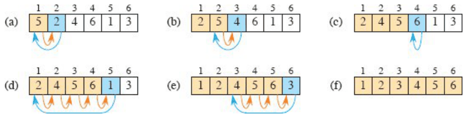
| \(i\) | key关键字 | \(A\) after the iteration | shifts移动次数 | \(t_i\) |
|---|---|---|---|---|
| 2 | 2 | 2 5 4 6 1 3 | 1 | 2 |
| 3 | 4 | 2 4 5 6 1 3 | 1 | 2 |
| 4 | 6 | 2 4 5 6 1 3 | 0 | 1 |
| 5 | 1 | 1 2 4 5 6 3 | 4 | 5 |
| 6 | 3 | 1 2 3 4 5 6 | 3 | 4 |
A shift is one execution of line 6. The test that ends the loop runs once more than the body, so iteration \(i\) makes \(t_i-1\) shifts. Check with the table: \(2+2+1+5+4=14\) tests and \(14-5=9\) shifts.一次移位就是第 6 行执行一次。结束循环的那次测试比循环体多执行一次，所以第 \(i\) 次迭代做 \(t_i-1\) 次移位。用表格核对：\(2+2+1+5+4=14\) 次测试和 \(14-5=9\) 次移位。
An inversion（逆序对）is a pair of positions \(i<j\) with \(A[i]>A[j]\). Each shift removes exactly one inversion. So the total number of shifts equals the number of inversions of the input. In ⟨5, 2, 4, 6, 1, 3⟩ the 9 inversions match the 9 shifts. A sorted array has none and a reverse-sorted array of length \(n\) has the maximum.逆序对是指一对位置 \(i<j\)，满足 \(A[i]>A[j]\)。每次移位恰好消除一个逆序对。因此移位的总次数等于输入中逆序对的个数。在 ⟨5, 2, 4, 6, 1, 3⟩ 中，9 个逆序对与 9 次移位一一对应。已排序的数组没有逆序对，而长度为 \(n\) 的逆序数组拥有最多的逆序对。
Step 2: pseudocode conventions第 2 步：伪代码约定
You must read pseudocode written in these conventions.你必须能读懂按这些约定书写的伪代码。
- Indentation gives the block structure, without braces. The while body of INSERTION-SORT is lines 6–7, not line 8.代码块结构由缩进表示，没有花括号。INSERTION-SORT 的 while 循环体是第 6–7 行，而不是第 8 行。
for i = a to bcounts up by 1;downtocounts down. After the loop the counter keeps the first value that failed the test, so \(i=n+1\) after line 1.for i = a to b每次加 1；downto每次减 1。循环结束后，计数器保留的是第一个使测试失败的值，因此第 1 行之后 \(i=n+1\)。- Arrays are 1-origin:
A[i : j]is the subarrayA[i], …,A[j]. Subtract 1 when coding in C or Python.数组下标从 1 开始：A[i : j]是子数组A[i], …,A[j]。用 C 或 Python 编程时，下标要减 1。 - An array is passed as a pointer. The callee can change its elements, and the caller sees the change.数组以指针形式传递。被调用者可以修改它的元素，调用者能看到这些修改。
//starts a comment.x.fis attributefof objectx.NILpoints to no object.//开始一条注释。x.f是对象x的属性f。NIL不指向任何对象。
Step 3: the loop invariant第 3 步：循环不变式
In words: a loop invariant = a sentence about the variables that is true at the start of every iteration, and that gives the answer when the loop ends.用文字表述：循环不变式 = 关于变量的一句话，它在每次迭代开始时都成立，并且在循环结束时能给出答案。
A loop invariant（循环不变式）proof has three parts.证明一个循环不变式需要三部分。
- Initialization（初始化）: the invariant is true before the first iteration.初始化：不变式在第一次迭代之前成立。
- Maintenance（保持）: if it is true before an iteration, it is true before the next one.保持：若它在某次迭代之前成立，则它在下一次迭代之前也成立。
- Termination（终止）: when the loop ends, the invariant together with the exit condition gives a property that shows the algorithm is correct.终止：循环结束时，不变式再加上退出条件，给出一个能说明算法正确的性质。
Initialization is the base case of induction and maintenance is the inductive step. Termination is the extra step: the induction stops when the loop stops, and the last step uses that moment.初始化相当于归纳法的基本情形，保持相当于归纳步骤。终止是额外的一步：归纳在循环停止时结束，最后这一步利用的正是那个时刻。
Practice练习
Q1. (Trace) Trace INSERTION-SORT on ⟨31, 41, 59, 26, 41, 58⟩. Give \(A\) after each iteration and \(t_i\). Is the order of the two 41s kept?Q1.（手工演算）在 ⟨31, 41, 59, 26, 41, 58⟩ 上执行 INSERTION-SORT。给出每次迭代后的 \(A\) 和 \(t_i\)。两个 41 的相对次序是否保持不变？
Answer
| \(i\) | key关键字 | \(A\) after the iteration | \(t_i\) |
|---|---|---|---|
| 2 | 41 | 31 41 59 26 41 58 | 1 |
| 3 | 59 | 31 41 59 26 41 58 | 1 |
| 4 | 26 | 26 31 41 59 41 58 | 4 |
| 5 | 41 | 26 31 41 41 59 58 | 2 |
| 6 | 58 | 26 31 41 41 58 59 | 2 |
The result is ⟨26, 31, 41, 41, 58, 59⟩. The sum of the \(t_i\) is 10, so there are \(10-5=5\) shifts. In iteration 5 the key 41 stops after the first 41 because \(41>41\) is false, so the order of equal keys is kept (stability).结果为 ⟨26, 31, 41, 41, 58, 59⟩。\(t_i\) 之和为 10，因此共有 \(10-5=5\) 次移动。在第 5 次迭代中，关键字 41 遇到第一个 41 后便停止，因为 \(41>41\) 为假，所以相等关键字的相对次序保持不变（稳定性）。
Q2. (Design and prove) Write pseudocode for linear search (input \(A[1:n]\) and a value \(x\); output an index \(i\) with \(A[i]=x\), or NIL if \(x\) does not appear) and prove it correct with a loop invariant.Q2.（设计与证明）为线性查找编写伪代码（输入为 \(A[1:n]\) 和一个值 \(x\)；输出一个满足 \(A[i]=x\) 的下标 \(i\)，若 \(x\) 未出现则输出 NIL），并用循环不变式证明其正确性。
Answer
LINEAR-SEARCH(A, n, x)
1 for i = 1 to n
2 if A[i] == x
3 return i
4 return NIL
Invariant: at the start of each iteration of the for loop, \(x\) does not occur in \(A[1:i-1]\).不变式：在 for 循环每次迭代开始时，\(x\) 都不在 \(A[1:i-1]\) 中出现。
Initialization: for \(i=1\) the subarray is empty. Maintenance: if the iteration does not return, then \(A[i]\ne x\), so \(x\) does not occur in \(A[1:i]\), which is the invariant for \(i+1\). Termination: either line 3 returns \(i\) with \(A[i]=x\), which is correct, or the loop ends with \(i=n+1\) and the invariant says that \(x\) is not in \(A[1:n]\), so returning NIL is correct.初始化：对于 \(i=1\)，子数组为空。保持：若该次迭代没有返回，则 \(A[i]\ne x\)，因此 \(x\) 不出现在 \(A[1:i]\) 中，这正是 \(i+1\) 的不变式。终止：要么第 3 行返回 \(i\) 且 \(A[i]=x\)，这是正确的；要么循环以 \(i=n+1\) 结束，此时不变式表明 \(x\) 不在 \(A[1:n]\) 中，因此返回 NIL 是正确的。
Q3. (Modify) How do you change INSERTION-SORT to sort into decreasing order? Does the sort stay stable?Q3.（修改）应如何修改 INSERTION-SORT，使其按降序排序？该排序是否仍然稳定？
Answer
Replace A[j] > key in line 5 by A[j] < key. The invariant becomes "\(A[1:i-1]\) holds the original elements in decreasing order", and the proof is unchanged. The strict inequality means equal keys do not satisfy the test, so they never pass each other: the sort stays stable.将第 5 行中的 A[j] > key 替换为 A[j] < key。不变式变为“\(A[1:i-1]\) 保存原来的元素，并按降序排列”，证明无需改动。严格不等式意味着相等的关键字不满足测试条件，因此它们永远不会互相越过：该排序保持稳定。
Analyzing algorithms ★★★算法分析
Goal. Count how often each line runs, compute the best-case and worst-case running time of insertion sort, and reduce a running time to its order of growth.目标。 统计每一行执行的次数，计算插入排序的最好与最坏情况运行时间，并把运行时间化简为它的增长阶。
Step 1: the RAM model第 1 步：RAM 模型
In words: to analyse an algorithm, count how many times each line runs and give every line a constant cost.用文字表述：要分析一个算法，就统计每一行执行的次数，并给每一行一个常数代价。
Timing one program on one machine says little about other inputs and machines. So the algorithm is analysed in the RAM model（随机存取机模型）, a one-processor machine with these assumptions.在一台机器上给一个程序计时，说明不了其他输入和机器的情况。因此，算法要在 RAM 模型中分析。RAM 模型是一台单处理器机器，并有以下假设。
- Instructions run one after another, never at the same time.指令一条接一条地执行，不会同时执行。
- Every instruction and every data access takes constant time. Examples are arithmetic, reading or writing a variable, and indexing an array.每条指令和每次数据访问都花费常数时间。例如算术运算、读写变量和数组下标访问。
- Only the instructions of a real computer exist, so there is no instruction such as "sort".只有真实计算机所具有的指令，因此不存在像“排序”这样的指令。
- A word has \(c\lg n\) bits for a constant \(c\ge1\): wide enough to hold \(n\), but not growing arbitrarily.对于某个常数 \(c\ge1\)，一个字有 \(c\lg n\) 位：它足够宽，能存下 \(n\)，但不会无限增长。
- Computing \(2^n\) is a constant-time shift if the result fits in a word. General exponentiation \(x^n\) is not constant time.如果结果能放进一个字中，计算 \(2^n\) 就是一次常数时间的移位。一般的幂运算 \(x^n\) 则不是常数时间。
- The memory hierarchy (caches, virtual memory) is not modelled.模型中不考虑存储层次（高速缓存、虚拟内存）。
The input size（输入规模）depends on the problem: the number of items for sorting, the total number of bits for multiplying two integers, the numbers of vertices and edges for a graph. The running time（运行时间）is the number of instructions and data accesses executed on an input. We assume that line \(k\) costs a constant \(c_k\) per execution.输入规模取决于具体问题：排序时是元素的个数，两个整数相乘时是两个整数的总位数，图则是顶点数和边数。运行时间是在某个输入上执行的指令数和数据访问次数。我们假设第 \(k\) 行每次执行的代价是一个常数 \(c_k\)。
Step 2: running time of insertion sort第 2 步：插入排序的运行时间
In words: running time = for each line, its cost times the number of times it runs, added up.用文字表述：运行时间 = 对每一行，把它的代价乘以它执行的次数，再全部加起来。
Line 1 runs \(n\) times, because its test runs once more than its body. Lines 2, 4 and 8 run \(n-1\) times, once per iteration. Lines 5, 6 and 7 depend on the \(t_i\) of Section 1.3.第 1 行执行 \(n\) 次，因为它的测试比循环体多执行一次。第 2、4 和 8 行各执行 \(n-1\) 次，每次迭代一次。第 5、6、7 行则取决于 1.3 节中的 \(t_i\)。
| Line行号 | Statement语句 | Cost代价 | Times次数 |
|---|---|---|---|
| 1 | for i = 2 to n |
\(c_1\) | \(n\) |
| 2 | key = A[i] |
\(c_2\) | \(n-1\) |
| 3 | // comment |
\(0\) | \(n-1\) |
| 4 | j = i - 1 |
\(c_4\) | \(n-1\) |
| 5 | while j > 0 and A[j] > key |
\(c_5\) | \(\sum_{i=2}^{n}t_i\) |
| 6 | A[j + 1] = A[j] |
\(c_6\) | \(\sum_{i=2}^{n}(t_i-1)\) |
| 7 | j = j - 1 |
\(c_7\) | \(\sum_{i=2}^{n}(t_i-1)\) |
| 8 | A[j + 1] = key |
\(c_8\) | \(n-1\) |
Best case. The best case is an already sorted array. For every \(i\) the test A[i-1] > key fails at once, so \(t_i=1\) and lines 6–7 never run. Then \(T(n)=c_1n+(c_2+c_4+c_5+c_8)(n-1)\), which has the form \(an+b\) with constants \(a\) and \(b\). It is a linear function of \(n\): \(\Theta(n)\).最好情况。 最好情况是已经排好序的数组。对每个 \(i\)，测试 A[i-1] > key 一次就失败，因此 \(t_i=1\)，第 6–7 行从不执行。于是 \(T(n)=c_1n+(c_2+c_4+c_5+c_8)(n-1)\)，其形式为 \(an+b\)，其中常数为 \(a\) 和 \(b\)。它是关于 \(n\) 的线性函数：\(\Theta(n)\)。
Worst case. The worst case is a reverse-sorted array. The key is smaller than every element of \(A[1:i-1]\), so it is compared with all of them, and the loop stops only because \(j\) reaches 0. Hence \(t_i=i\). The sums are arithmetic series.最坏情况。 最坏情况是逆序数组。待插入的关键字比 \(A[1:i-1]\) 中的每个元素都小，因此它要和所有元素比较，循环只因 \(j\) 减到 0 才停止。于是 \(t_i=i\)。这些和式都是等差数列求和。
With these sums \(T(n)\) becomes \(an^2+bn+c\) for constants \(a\), \(b\) and \(c\). It is a quadratic function: \(\Theta(n^2)\).代入这些和式后，\(T(n)\) 变为 \(an^2+bn+c\)，其中常数为 \(a\)、\(b\) 和 \(c\)。它是一个二次函数：\(\Theta(n^2)\)。
Step 3: which case to analyse第 3 步：分析哪种情况
The worst-case running time（最坏情况运行时间）is the longest time for any input of size \(n\). Analysis usually uses it, for three reasons.最坏情况运行时间是规模为 \(n\) 的任意输入中最长的运行时间。分析通常采用它，原因有三点。
- It is an upper bound for every input: a guarantee that the algorithm never takes longer. Real-time systems with deadlines need it.它是对每个输入的一个上界，保证算法的运行时间永远不会更长。有截止期限的实时系统需要这样的保证。
- The worst case occurs fairly often. Searching for information that is absent from a database is an example.最坏情况相当常见。例如，在数据库中查找不存在的信息就是这样。
- The average case is often roughly as bad. For random input about half of \(A[1:i-1]\) is larger than \(A[i]\), so \(t_i\approx i/2\) and the time is still quadratic.平均情况往往同样糟糕。对于随机输入，大约一半的 \(A[1:i-1]\) 大于 \(A[i]\)，所以 \(t_i\approx i/2\)，时间仍然是二次的。
An average-case analysis needs a probability assumption about the input, usually that all inputs of one size are equally likely. A randomized algorithm makes random choices itself, so its expected running time needs no assumption on the input (Chapter 4). A deterministic algorithm has a fixed running time on a given input.平均情况分析需要对输入作一个概率假设，通常是假设同一规模的所有输入出现的可能性相同。随机化算法自己做随机选择，因此它的期望运行时间不需要对输入做任何假设（见第 4 章）。确定性算法在给定输入上的运行时间是固定的。
Step 4: order of growth第 4 步：增长阶
In words: order of growth = keep the term that grows fastest and drop its constant factor.用文字表述：增长阶 = 保留增长最快的那一项，去掉它的常数因子。
The order of growth（增长阶）ignores the constants \(c_k\). It keeps the leading term, because lower-order terms are insignificant for large \(n\). It drops the coefficient of that term, because constants matter less than the rate of growth. For the worst case of insertion sort this leaves \(n^2\).增长阶忽略常数 \(c_k\)。它保留首项，因为对于较大的 \(n\)，低阶项的影响可以忽略。它也去掉首项的系数，因为相比增长的速度，常数并不那么重要。对插入排序的最坏情况，这样得到 \(n^2\)。
So the worst-case running time is \(\Theta(n^2)\) ("theta of n squared") and the best case is \(\Theta(n)\). For now read \(\Theta(g(n))\) as "roughly proportional to \(g(n)\) when \(n\) is large". The exact definition is in Section 2.2.所以，最坏情况运行时间为 \(\Theta(n^2)\)（读作“theta of n squared”，即 Θ(n²)），最好情况为 \(\Theta(n)\)。现在可以把 \(\Theta(g(n))\) 理解为“当 \(n\) 较大时，大致正比于 \(g(n)\)”。精确的定义见 2.2 节。
Example: take \(n^2/100+100n+17\) microseconds. The coefficients \(1/100\) and \(100\) differ by four orders of magnitude. Yet the quadratic term dominates once \(n>10{,}000\).例如，取 \(n^2/100+100n+17\) 微秒。系数 \(1/100\) 和 \(100\) 相差四个数量级。然而，一旦 \(n>10{,}000\)，二次项就占主导。
An algorithm with a lower worst-case order of growth is considered more efficient. For small inputs the other one may still be faster. But for large enough \(n\) a \(\Theta(n^2)\) algorithm beats a \(\Theta(n^3)\) algorithm in the worst case, whatever constants are hidden.最坏情况增长阶较低的算法被认为更高效。对于小规模输入，另一个算法仍可能更快。但只要 \(n\) 足够大，无论隐藏的常数是多少，最坏情况下 \(\Theta(n^2)\) 算法都会胜过 \(\Theta(n^3)\) 算法。
Practice练习
Q1. (Calculation) Express \(n^3/1000+100n^2-100n+3\) in \(\Theta\)-notation. From which \(n\) on does the cubic term exceed \(100n^2\)?Q1.（计算）用 \(\Theta\) 记号表示 \(n^3/1000+100n^2-100n+3\)。从哪个 \(n\) 开始，三次项会超过 \(100n^2\)？
Answer
Keep the leading term \(n^3/1000\) and drop its coefficient: the function is \(\Theta(n^3)\). The cubic term exceeds \(100n^2\) when \(n^3/1000>100n^2\), that is for \(n>10^5\); for smaller \(n\) the lower-order term matters, but it does not change the order of growth.保留最高阶项 \(n^3/1000\) 并去掉其系数：函数为 \(\Theta(n^3)\)。三次项超过 \(100n^2\) 的条件是 \(n^3/1000>100n^2\)，即 \(n>10^5\)；对于较小的 \(n\)，低阶项有影响，但它不改变增长量级。
Q2. (Design and analyse) Selection sort finds the smallest element of \(A[1:n]\) and exchanges it with \(A[1]\), then the smallest of \(A[2:n]\) and exchanges it with \(A[2]\), and so on. Write pseudocode, state a loop invariant, explain why only the first \(n-1\) elements need processing, and give the best-case and worst-case running times.Q2.（设计与分析）选择排序先在 \(A[1:n]\) 中找到最小元素，并将其与 \(A[1]\) 交换；然后在 \(A[2:n]\) 中找到最小元素，并将其与 \(A[2]\) 交换；依此类推。请编写伪代码，给出循环不变式，解释为什么只需处理前 \(n-1\) 个元素，并给出最好情况和最坏情况下的运行时间。
Answer
SELECTION-SORT(A, n)
1 for i = 1 to n - 1
2 smallest = i
3 for j = i + 1 to n
4 if A[j] < A[smallest]
5 smallest = j
6 exchange A[i] with A[smallest]
Invariant: at the start of each iteration of the outer loop, \(A[1:i-1]\) contains the \(i-1\) smallest elements of \(A[1:n]\) in sorted order. At termination \(i=n\), so \(A[1:n-1]\) holds the \(n-1\) smallest elements in order and the remaining element \(A[n]\) is the largest: it is already in place, so iteration \(n\) is unnecessary. The inner loop always scans to the end and makes \(n-i\) comparisons, so the total is \(\sum_{i=1}^{n-1}(n-i)=n(n-1)/2\) (15 for \(n=6\)) in every case: \(\Theta(n^2)\) in the best and the worst case. The best case is no better.不变式：在外层循环每次迭代开始时，\(A[1:i-1]\) 按序包含 \(A[1:n]\) 中最小的 \(i-1\) 个元素。终止时 \(i=n\)，因此 \(A[1:n-1]\) 按序保存了最小的 \(n-1\) 个元素，而剩下的元素 \(A[n]\) 是最大的：它已在最终位置上，因此迭代 \(n\) 是不必要的。内层循环总是扫描到末尾，进行 \(n-i\) 次比较，因此在各种情况下总次数都是 \(\sum_{i=1}^{n-1}(n-i)=n(n-1)/2\)（对 \(n=6\) 为 15），最好和最坏情况下均为 \(\Theta(n^2)\)。最好情况并不更好。
Q3. (Analyse and prove) HORNER evaluates the polynomial \(P(x)=\sum_{k=0}^{n}a_kx^k\) with \(a_k\) stored in \(A[0:n]\).Q3.（分析与证明）HORNER 对多项式 \(P(x)=\sum_{k=0}^{n}a_kx^k\) 求值，系数 \(a_k\) 存放在 \(A[0:n]\) 中。
HORNER(A, n, x)
1 p = 0
2 for i = n downto 0
3 p = A[i] + x · p
4 return p
(a) Give its running time. (b) A naive algorithm computes each term from scratch, the power \(x^k\) with \(k-1\) multiplications. Give its running time and compare. (c) State a loop invariant for HORNER.（a）给出其运行时间。（b）一种朴素算法从头计算每一项，计算幂 \(x^k\) 需要 \(k-1\) 次乘法。给出其运行时间并进行比较。（c）给出 HORNER 的循环不变式。
Answer
(a) The loop runs \(n+1\) times and each iteration does a constant amount of work (one multiplication and one addition): \(\Theta(n)\).（a）循环执行 \(n+1\) 次，每次迭代只做常数量的工作（一次乘法和一次加法）：\(\Theta(n)\)。
(b) Term \(k\) needs \(k\) multiplications (the power plus the coefficient), so the total is \(\sum_{k=1}^{n}k=n(n+1)/2\) multiplications: \(\Theta(n^2)\). For \(n=100\) that is 5,050 multiplications against 101 for HORNER (one in each of its \(n+1\) iterations).(b) 第 \(k\) 项需要 \(k\) 次乘法（幂运算加上系数相乘），所以总共需要 \(\sum_{k=1}^{n}k=n(n+1)/2\) 次乘法：\(\Theta(n^2)\)。当 \(n=100\) 时，这需要 5050 次乘法，而 HORNER 只需要 101 次（其 \(n+1\) 次迭代各一次）。
(c) At the start of the iteration with index \(i\), \(p=\sum_{k=0}^{n-(i+1)}A[k+i+1]\,x^k\). Initially \(i=n\) and the sum is empty, so \(p=0\). An iteration computes \(A[i]+x\cdot p\), which is the same sum extended by the coefficient \(A[i]\). At termination \(i=-1\), so \(p=\sum_{k=0}^{n}A[k]\,x^k=P(x)\).（c）在下标为 \(i\) 的那次迭代开始时，\(p=\sum_{k=0}^{n-(i+1)}A[k+i+1]\,x^k\)。开始时 \(i=n\)，且和为空，因此 \(p=0\)。一次迭代计算 \(A[i]+x\cdot p\)，即把系数 \(A[i]\) 纳入原有的和之后所得的和。终止时 \(i=-1\)，因此 \(p=\sum_{k=0}^{n}A[k]\,x^k=P(x)\)。
Divide and conquer: merge sort ★★★分治：归并排序
Goal. Trace MERGE and MERGE-SORT by hand, write the recurrence \(T(n)=2T(n/2)+\Theta(n)\) and show with the recursion tree that its solution is \(\Theta(n\lg n)\).目标。 手工演算 MERGE 和 MERGE-SORT，写出递推式 \(T(n)=2T(n/2)+\Theta(n)\)，并用递归树说明它的解是 \(\Theta(n\lg n)\)。
Step 1: the divide-and-conquer pattern第 1 步：分治模式
In words: divide and conquer = split the problem into smaller copies of itself, solve the copies by the same method, and join the answers.用文字表述：分治 = 把问题拆成若干个同类的较小子问题，用同样的方法分别求解，再把结果合并起来。
A divide-and-conquer（分治法）algorithm is recursive: it calls itself on smaller instances of the same problem. If the instance is small enough, the base case（基本情形）, it is solved directly. Otherwise there are three steps.分治法是一种递归算法：它对同一问题的较小实例调用自身。如果实例足够小，即基本情形，就直接求解。否则要经过三个步骤。
- Divide the problem into subproblems that are smaller instances of the same problem.分解问题，将其分为若干子问题，这些子问题都是同一问题的较小实例。
- Conquer the subproblems by solving them recursively.解决子问题，即递归地求解它们。
- Combine the subproblem solutions into a solution of the original problem.合并子问题的解，得到原问题的解。
Merge sort（归并排序）sorts a subarray \(A[p:r]\), starting with the whole array \(A[1:n]\).归并排序对子数组 \(A[p:r]\) 进行排序，开始时取整个数组 \(A[1:n]\)。
- Divide: compute the midpoint \(q=\lfloor(p+r)/2\rfloor\) and split \(A[p:r]\) into \(A[p:q]\) and \(A[q+1:r]\), of sizes \(\lceil n/2\rceil\) and \(\lfloor n/2\rfloor\).划分： 计算中点 \(q=\lfloor(p+r)/2\rfloor\)，并把 \(A[p:r]\) 分成 \(A[p:q]\) 和 \(A[q+1:r]\)，它们的规模分别为 \(\lceil n/2\rceil\) 和 \(\lfloor n/2\rfloor\)。
- Conquer: sort the two parts recursively.求解： 递归地对两部分排序。
- Combine: merge the two sorted parts into the sorted \(A[p:r]\).合并： 把两个有序部分合并成有序的 \(A[p:r]\)。
- Base case: \(p=r\), one element, which is already sorted.基本情形： \(p=r\)，即只有一个元素，它本身已经有序。
Step 2: the MERGE procedure第 2 步：MERGE 过程
In words: merge = look at the two smallest remaining elements, one per sorted list, move the smaller one to the output, and repeat.用文字表述：合并 = 分别看两个有序表中剩下的最小元素，把较小的那个移到输出中，然后重复。
MERGE(A, p, q, r) assumes \(p\le q<r\) and that \(A[p:q]\) and \(A[q+1:r]\) are sorted. It replaces \(A[p:r]\) by the merged sorted subarray. Think of two sorted piles of cards, face up, smallest on top. Take the smaller top card to the output. When one pile is empty, move the rest of the other.MERGE(A, p, q, r) 假设 \(p\le q<r\)，并且 \(A[p:q]\) 和 \(A[q+1:r]\) 都已排序。它用合并后的有序子数组替换 \(A[p:r]\)。可以想象两叠有序的扑克牌，正面朝上，最小的在最上面。每次把两叠顶上较小的那张移到输出中。当其中一叠取空时，把另一叠剩下的全部移过去。
MERGE(A, p, q, r)
1 nL = q - p + 1 // length of A[p : q]
2 nR = r - q // length of A[q + 1 : r]
3 let L[0 : nL - 1] and R[0 : nR - 1] be new arrays
4 for i = 0 to nL - 1 // copy A[p : q] into L[0 : nL - 1]
5 L[i] = A[p + i]
6 for j = 0 to nR - 1 // copy A[q + 1 : r] into R[0 : nR - 1]
7 R[j] = A[q + j + 1]
8 i = 0 // i indexes the smallest remaining element in L
9 j = 0 // j indexes the smallest remaining element in R
10 k = p // k indexes the location in A to fill
11 // As long as each of the arrays L and R contains an unmerged element,
// copy the smallest unmerged element back into A[p : r].
12 while i < nL and j < nR
13 if L[i] ≤ R[j]
14 A[k] = L[i]
15 i = i + 1
16 else A[k] = R[j]
17 j = j + 1
18 k = k + 1
19 // Having gone through one of L and R entirely, copy the
// remainder of the other to the end of A[p : r].
20 while i < nL
21 A[k] = L[i]
22 i = i + 1
23 k = k + 1
24 while j < nR
25 A[k] = R[j]
26 j = j + 1
27 k = k + 1
- Lines 1–7: copy the two parts into the temporary arrays \(L\) (length \(n_L\)) and \(R\) (length \(n_R\)).第 1–7 行：把两部分复制到临时数组 \(L\)（长度为 \(n_L\)）和 \(R\)（长度为 \(n_R\)）中。
- Lines 8–10: \(i\) and \(j\) point to the smallest remaining elements of \(L\) and \(R\); \(k\) is the position of \(A\) to fill.第 8–10 行：\(i\) 和 \(j\) 指向 \(L\) 和 \(R\) 中剩下的最小元素；\(k\) 是下一个要填入的位置，即 \(A\) 所在处。
- Lines 12–18: copy the smaller of \(L[i]\) and \(R[j]\) into \(A[k]\), until \(L\) or \(R\) is used up. The
≤in line 13 takes \(L\) on a tie, so equal keys keep their order.第 12–18 行：把 \(L[i]\) 和 \(R[j]\) 中较小的那个复制到 \(A[k]\) 中，直到 \(L\) 或 \(R\) 用完为止。第 13 行中的≤在相等时取 \(L\)，所以关键字相同的元素保持原有顺序。 - Lines 20–27: copy the rest of the other array. One of the two loops runs 0 times.第 20–27 行：把另一个数组剩下的部分复制过来。两个循环中有一个执行 0 次。
The table traces MERGE(A, 9, 12, 16) on \(A[9:16]=\langle2,4,6,7,1,2,3,5\rangle\), so \(L=\langle2,4,6,7\rangle\) and \(R=\langle1,2,3,5\rangle\).下表对 \(A[9:16]=\langle2,4,6,7,1,2,3,5\rangle\) 上的 MERGE(A, 9, 12, 16) 进行演算，因此可以看到 \(L=\langle2,4,6,7\rangle\) 和 \(R=\langle1,2,3,5\rangle\)。
| Iteration迭代 | \(k\) | \(i\) | \(j\) | Test \(L[i]\le R[j]\) | Copied into \(A[k]\) |
|---|---|---|---|---|---|
| 1 | 9 | 0 | 0 | \(2\le1\) false | \(R[0]=1\) |
| 2 | 10 | 0 | 1 | \(2\le2\) true | \(L[0]=2\) |
| 3 | 11 | 1 | 1 | \(4\le2\) false | \(R[1]=2\) |
| 4 | 12 | 1 | 2 | \(4\le3\) false | \(R[2]=3\) |
| 5 | 13 | 1 | 3 | \(4\le5\) true | \(L[1]=4\) |
| 6 | 14 | 2 | 3 | \(6\le5\) false | \(R[3]=5\) |
Now \(j=4=n_R\), so the loop of lines 12–18 stops with \(i=2\). Lines 20–23 copy \(L[2:3]=\langle6,7\rangle\) into \(A[15:16]\). The result is \(A[9:16]=\langle1,2,2,3,4,5,6,7\rangle\).现在 \(j=4=n_R\)，所以第 12–18 行的循环以 \(i=2\) 结束。第 20–23 行把 \(L[2:3]=\langle6,7\rangle\) 复制到 \(A[15:16]\) 中。结果是 \(A[9:16]=\langle1,2,2,3,4,5,6,7\rangle\)。
Correctness. Invariant of lines 12–18: at the start of each iteration, \(A[p:k-1]\) holds the \(k-p\) smallest elements of \(L\) and \(R\) in sorted order, and \(L[i]\) and \(R[j]\) are the smallest elements not yet copied. Initially \(k=p\) and nothing is copied. Each iteration copies the smaller of \(L[i]\) and \(R[j]\), the smallest uncopied element. At the end one array is used up. The rest of the other is sorted and larger than everything copied, so lines 20–27 append it in order.正确性。 第 12–18 行的不变式：在每次迭代开始时，\(A[p:k-1]\) 包含 \(L\) 和 \(R\) 中最小的 \(k-p\) 个元素，且已按序排列；\(L[i]\) 和 \(R[j]\) 是尚未复制的最小元素。开始时 \(k=p\)，并且还没有复制任何元素。每次迭代复制 \(L[i]\) 和 \(R[j]\) 中较小的那个，也就是尚未复制的最小元素。最后，其中一个数组被用完。另一个数组剩下的部分是有序的，并且比已复制的所有元素都大，所以第 20–27 行可以按顺序把它接在后面。
Running time. Let \(n=r-p+1\) be the number of elements. Lines 1–3 and 8–10 take constant time. The copy loops of lines 4–7 take \(\Theta(n_L+n_R)=\Theta(n)\). Each iteration of the three while loops copies one value back into \(A\), and every value is copied once. So the three loops make \(n\) iterations of constant cost. MERGE takes \(\Theta(n)\) time and \(\Theta(n)\) extra space for \(L\) and \(R\).运行时间。 设 \(n=r-p+1\) 为元素个数。第 1–3 行和第 8–10 行花费常数时间。第 4–7 行的复制循环花费 \(\Theta(n_L+n_R)=\Theta(n)\) 时间。三个 while 循环的每次迭代都把一个值复制回 \(A\)，而且每个值只复制一次。因此，三个循环共执行 \(n\) 次迭代，每次代价为常数。MERGE 的时间为 \(\Theta(n)\)，用于 \(L\) 和 \(R\) 的额外空间为 \(\Theta(n)\)。
Step 3: the MERGE-SORT procedure第 3 步：MERGE-SORT 过程
MERGE-SORT(A, p, r)
1 if p ≥ r // zero or one element?
2 return
3 q = ⌊(p + r) / 2⌋ // midpoint of A[p : r]
4 MERGE-SORT(A, p, q) // recursively sort A[p : q]
5 MERGE-SORT(A, q + 1, r) // recursively sort A[q + 1 : r]
6 // Merge A[p : q] and A[q + 1 : r] into A[p : r].
7 MERGE(A, p, q, r)
The first call is MERGE-SORT(A, 1, n). The array is halved until single elements remain. Then pairs of sorted subarrays are merged: length 1 into 2, 2 into 4, and so on. If \(n\) is not a power of 2, some halves differ by 1: length 7 splits into 4 and 3.第一次调用是 MERGE-SORT(A, 1, n)。数组不断对半分，直到只剩单个元素。然后把有序子数组两两合并：长度 1 合并成 2，2 合并成 4，依此类推。如果 \(n\) 不是 2 的幂，某些两半的长度会相差 1：长度为 7 的数组分成 4 和 3。

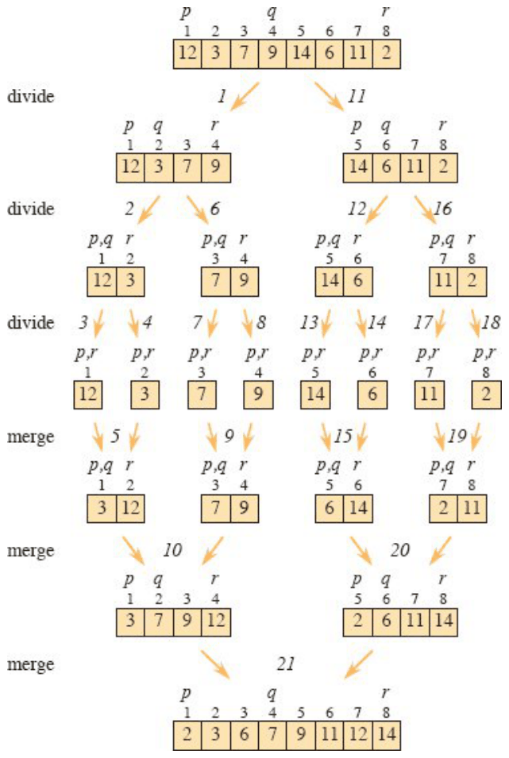
For \(n=8\) the seven MERGE calls \((p,q,r)\) occur in the order (1,1,2), (3,3,4), (1,2,4), (5,5,6), (7,7,8), (5,6,8), (1,4,8). In general there are \(n-1\) merges. To trace merge sort by hand, write this list of calls and the result of each.对于 \(n=8\)，七次 MERGE 调用 \((p,q,r)\) 按以下顺序出现：(1,1,2)、(3,3,4)、(1,2,4)、(5,5,6)、(7,7,8)、(5,6,8)、(1,4,8)。一般地，共有 \(n-1\) 次合并。要手工演算归并排序，就把这些调用列表写下来，并写出每次调用的结果。
Step 4: the recurrence and the recursion tree第 4 步：递推式与递归树
In words: the running time of a recursive algorithm = the time of its recursive calls plus the time to divide and combine.用文字表述：递归算法的运行时间 = 递归调用的时间 + 划分和合并的时间。
A recurrence（递推式）is an equation for the running time on size \(n\) in terms of the running time on smaller inputs.递推式是用较小输入上的运行时间来表示规模为 \(n\) 的运行时间的方程。
Floors and ceilings are ignored, because a difference of at most 1 does not change the order of growth of the solution. The base case is omitted, because the time on an input of constant size is constant (Chapter 3).忽略取整函数，因为相差至多 1 不会改变解的增长阶。省略基本情形，因为常数规模输入上的时间是常数（见第 3 章）。
For merge sort the divide step computes a midpoint, \(D(n)=\Theta(1)\). The conquer step costs \(2T(n/2)\). The combine step is MERGE, \(C(n)=\Theta(n)\). Hence \(D(n)+C(n)=\Theta(n)\).对于归并排序，划分步骤计算中点 \(D(n)=\Theta(1)\)。求解步骤的代价为 \(2T(n/2)\)。合并步骤就是 MERGE，代价为 \(C(n)=\Theta(n)\)。因此 \(D(n)+C(n)=\Theta(n)\)。
To see why, take \(n\) an exact power of 2. Write the recurrence with constants: \(T(n)=c_1\) for \(n=1\) and \(T(n)=2T(n/2)+c_2n\) for \(n>1\). Here \(c_1>0\) is the time for a problem of size 1 and \(c_2>0\) is the divide-and-combine time per element.为了看清原因，设 \(n\) 恰好是 2 的幂。用常数写出递推式：\(T(n)=c_1\) 表示 \(n=1\)，\(T(n)=2T(n/2)+c_2n\) 表示 \(n>1\)。这里 \(c_1>0\) 是规模为 1 的问题所需的时间，\(c_2>0\) 是每个元素上划分和合并的时间。
The recursion tree（递归树）expands \(T(n)\). The root costs \(c_2n\) and has two subtrees \(T(n/2)\), expanded in the same way until the subproblems have size 1.递归树将 \(T(n)\) 展开。根结点的代价为 \(c_2n\)，并有两棵子树，分别对应 \(T(n/2)\)。它们以同样的方式继续展开，直到子问题的规模为 1。

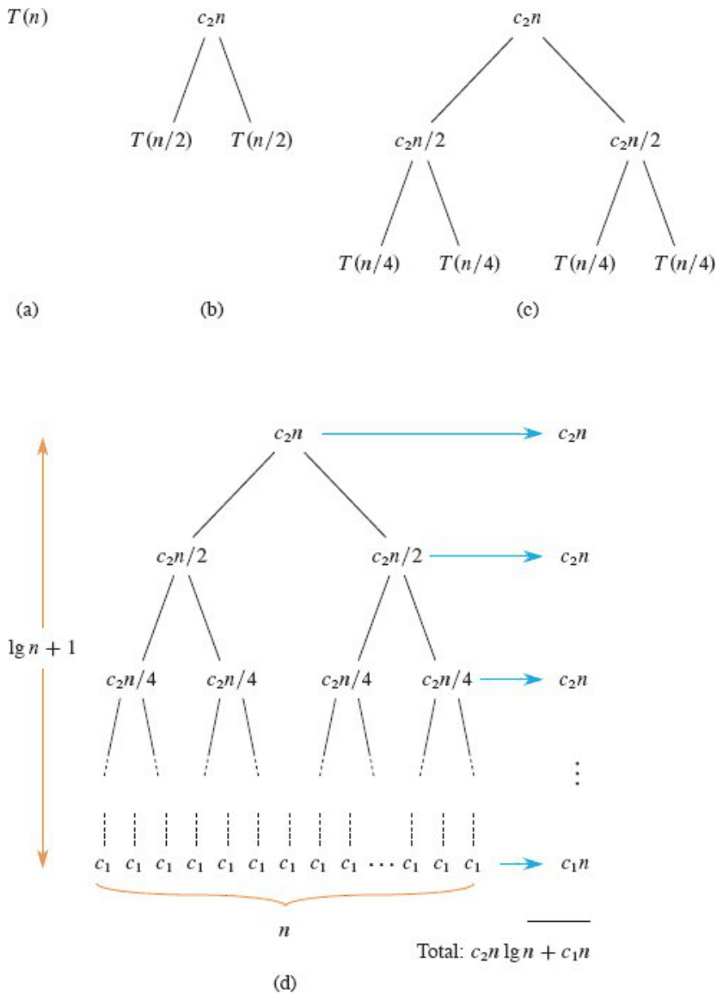
Level \(i\) below the root has \(2^i\) nodes of cost \(c_2(n/2^i)\) each. So every level costs \(2^i\cdot c_2n/2^i=c_2n\): the nodes double and the cost per node halves. The bottom level has \(n\) nodes of cost \(c_1\), in total \(c_1n\). The tree has \(\lg n+1\) levels: \(\lg n\) levels of cost \(c_2n\) and the leaf level.根以下第 \(i\) 层有 \(2^i\) 个结点，每个结点的代价为 \(c_2(n/2^i)\)。因此每一层的总代价为 \(2^i\cdot c_2n/2^i=c_2n\)：结点数翻倍，而每个结点的代价减半。最底层有 \(n\) 个结点，每个结点代价为 \(c_1\)，总计 \(c_1n\)。这棵树共有 \(\lg n+1\) 层：\(\lg n\) 层的代价为 \(c_2n\)，再加上叶子层。
Step 5: insertion sort versus merge sort第 5 步：插入排序与归并排序的比较
| Property性质 | Insertion sort插入排序 | Merge sort归并排序 |
|---|---|---|
| Design method设计方法 | Incremental增量法 | Divide and conquer分治 |
| Worst case最坏情况 | \(\Theta(n^2)\) | \(\Theta(n\lg n)\) |
| Best case最好情况 | \(\Theta(n)\) (sorted input) | \(\Theta(n\lg n)\) |
| Extra space额外空间 | \(\Theta(1)\), in place | \(\Theta(n)\) for \(L\) and \(R\) |
| Stable稳定性 | Yes (strict > in line 5) |
Yes (≤ in line 13) |
| In practice实际中 | Faster for small \(n\) (small constants) and for nearly sorted input对于较小的 \(n\)（常数较小）及近似有序的输入更快 | Faster for large \(n\) |
Because insertion sort has small constants, practical implementations stop the recursion at small subarrays and sort those by insertion sort (Practice).由于插入排序的常数很小，实际实现时常在子数组较小时停止递归，并对这些子数组用插入排序（见练习）。
Practice练习
Q1. (Trace) Trace merge sort on ⟨3, 41, 52, 26, 38, 57, 9, 49⟩ and list the MERGE calls \((p,q,r)\) in the order in which they occur, with the subarray each one produces.Q1.（手工演算）对 ⟨3, 41, 52, 26, 38, 57, 9, 49⟩ 做归并排序的手工演算，按发生的先后顺序列出 MERGE 调用 \((p,q,r)\)，并写出每次调用所产生的子数组。
Answer
The array is split into ⟨3, 41, 52, 26⟩ and ⟨38, 57, 9, 49⟩, then into four pairs, then into single elements. The merges occur in this order:数组先分为 ⟨3, 41, 52, 26⟩ 与 ⟨38, 57, 9, 49⟩，再分为四对，最后分为单个元素。合并按以下顺序进行：
| Call调用 | Result结果 |
|---|---|
| MERGE(A, 1, 1, 2) | ⟨3, 41⟩ |
| MERGE(A, 3, 3, 4) | ⟨26, 52⟩ |
| MERGE(A, 1, 2, 4) | ⟨3, 26, 41, 52⟩ |
| MERGE(A, 5, 5, 6) | ⟨38, 57⟩ |
| MERGE(A, 7, 7, 8) | ⟨9, 49⟩ |
| MERGE(A, 5, 6, 8) | ⟨9, 38, 49, 57⟩ |
| MERGE(A, 1, 4, 8) | ⟨3, 9, 26, 38, 41, 49, 52, 57⟩ |
There are \(n-1=7\) merges. The sorted result is ⟨3, 9, 26, 38, 41, 49, 52, 57⟩.共有 \(n-1=7\) 次合并。排序结果为 ⟨3, 9, 26, 38, 41, 49, 52, 57⟩。
Q2. (Design and analyse) To exploit the small constants of insertion sort, merge sort is modified: \(n/k\) sublists of length \(k\) are sorted by insertion sort and then merged by the standard merging. (a) Show that the sublists can be sorted in \(\Theta(nk)\) worst-case time. (b) Show that they can be merged in \(\Theta(n\lg(n/k))\). (c) What is the largest \(k\), as a function of \(n\), for which the total \(\Theta(nk+n\lg(n/k))\) equals \(\Theta(n\lg n)\)? (d) How should \(k\) be chosen in practice?Q2.（设计与分析）为了利用插入排序常数较小的优点，对归并排序作如下修改：\(n/k\) 个长度为 \(k\) 的子列表先用插入排序排序，然后用标准的合并方法合并。（a）证明这些子列表可在 \(\Theta(nk)\) 的最坏情况时间内完成排序。（b）证明它们可在 \(\Theta(n\lg(n/k))\) 内合并。（c）使总运行时间 \(\Theta(nk+n\lg(n/k))\) 仍等于 \(\Theta(n\lg n)\) 的最大 \(k\)，作为 \(n\) 的函数是什么？（d）实践中应如何选择 \(k\)？
Answer
(a) One sublist costs \(\Theta(k^2)\) in the worst case, so \(n/k\) sublists cost \((n/k)\,\Theta(k^2)=\Theta(nk)\).（a）一个子列表在最坏情况下的代价为 \(\Theta(k^2)\)，因此 \(n/k\) 个子列表的代价为 \((n/k)\,\Theta(k^2)=\Theta(nk)\)。
(b) Merging starts with \(n/k\) sorted lists and halves the number of lists per level, giving \(\lg(n/k)\) levels; each level merges \(n\) elements in \(\Theta(n)\). The total is \(\Theta(n\lg(n/k))\).（b）合并从 \(n/k\) 个已排序列表开始，每一层将列表数减半，因此共有 \(\lg(n/k)\) 层；每一层合并 \(n\) 个元素，所需时间为 \(\Theta(n)\)。总计为 \(\Theta(n\lg(n/k))\)。
(c) For \(k=\Theta(\lg n)\) we have \(nk=\Theta(n\lg n)\) and \(n\lg(n/k)\le n\lg n\), so the sum is \(\Theta(n\lg n)\). If \(k\) grows faster than \(\lg n\), the term \(nk\) exceeds \(n\lg n\). The largest such \(k\) is \(\Theta(\lg n)\).（c）对于 \(k=\Theta(\lg n)\)，有 \(nk=\Theta(n\lg n)\) 和 \(n\lg(n/k)\le n\lg n\)，因此和为 \(\Theta(n\lg n)\)。若 \(k\) 的增长快于 \(\lg n\)，则项 \(nk\) 将超过 \(n\lg n\)。这样的 \(k\) 中最大者为 \(\Theta(\lg n)\)。
(d) Choose \(k\) as the largest sublist length for which insertion sort is faster than merge sort on the target machine, found by experiment.（d）选取 \(k\) 为在目标机器上插入排序仍快于归并排序的最大子列表长度，该长度通过实验确定。
Q3. (Beyond the text) Show how to count the inversions of an array (pairs \(i<j\) with \(A[i]>A[j]\)) in \(\Theta(n\lg n)\) time, and run the method on ⟨2, 4, 1, 3⟩.Q3.（超出正文）说明如何在 \(\Theta(n\lg n)\) 时间内统计数组的逆序对（即满足 \(A[i]>A[j]\) 的位置对 \(i<j\)），并将该方法用于 ⟨2, 4, 1, 3⟩。
Answer
Let the sort return a count. The inversions of \(A[p:r]\) are the inversions inside the left half, plus those inside the right half, plus the cross inversions (a larger element in the left half, a smaller one in the right half). The first two come from the recursive calls. The third is counted in MERGE: whenever line 16 copies \(R[j]\) while \(L[i]\) is still uncopied, \(R[j]\) is smaller than \(L[i]\) and than all later elements of \(L\), so add \(n_L-i\) inversions. Every element of \(R\) is counted once, the extra work per iteration is constant, and the running time stays \(\Theta(n\lg n)\).令排序过程返回一个计数。\(A[p:r]\) 的逆序对包括左半部分内部的逆序对、右半部分内部的逆序对，以及跨越逆序对（左半部分中有较大的元素，右半部分中有较小的元素）。前两类由递归调用给出。第三类在 MERGE 中计数：每当第 16 行复制 \(R[j]\) 而 \(L[i]\) 仍未复制时，\(R[j]\) 小于 \(L[i]\)，也小于 \(L\) 中所有之后的元素，因此要加上 \(n_L-i\) 个逆序对。\(R\) 的每个元素恰好被计数一次，每次迭代的额外工作为常数，因此运行时间仍为 \(\Theta(n\lg n)\)。
For ⟨2, 4, 1, 3⟩ the halves ⟨2, 4⟩ and ⟨1, 3⟩ have 0 inversions each. In the merge, \(R[0]=1<L[0]=2\) adds \(2-0=2\); then \(L[0]=2\le R[1]=3\) is copied; then \(R[1]=3<L[1]=4\) adds \(2-1=1\). The total is 3: the pairs (2,1), (4,1), (4,3).对于 ⟨2, 4, 1, 3⟩，两半 ⟨2, 4⟩ 与 ⟨1, 3⟩ 各自有 0 个逆序对。在合并中，\(R[0]=1<L[0]=2\) 加上 \(2-0=2\)；然后复制 \(L[0]=2\le R[1]=3\)；然后 \(R[1]=3<L[1]=4\) 加上 \(2-1=1\)。总数为 3，即 (2,1)、(4,1) 与 (4,3) 这三对。
Terms to recognise ★需要认识的术语
| Term术语 | What to know要知道什么 |
|---|---|
| Instance实例 | One concrete input that satisfies the constraints of the problem statement.满足问题陈述约束条件的一个具体输入。 |
| Key, satellite data, record关键字、卫星数据、记录 | A key is the value that is sorted; with its satellite data it forms a record, and whole records are moved.关键字是被排序的值；它与卫星数据合起来构成一条记录，排序时整条记录一起移动。 |
| Data structure数据结构 | A way to store and organise data so that it can be accessed and modified efficiently.一种组织和存放数据的方式，使数据可以被高效地访问和修改。 |
| NP-completeNP 完全 | No efficient algorithm known; if one has one, all have; examples are close to efficiently solvable problems.目前没有已知的高效算法；如果其中一个有高效算法，那么全部都有；例子与可高效求解的问题关系密切。 |
| Approximation algorithm近似算法 | Returns a good but not necessarily optimal solution to an NP-complete problem (Chapter 21).对 NP 完全问题给出一个好的、但不一定最优的解（见第 21 章）。 |
| Online algorithm在线算法 | Receives its input over time and must decide without knowing future input, as in packet routing.输入随时间逐步到达，必须在不知道未来输入的情况下做决定，例如分组路由。 |
| In place原地的 | Uses only a constant amount of storage beyond the array: insertion sort yes, merge sort no.除数组外只使用常数量的存储：插入排序是，归并排序否。 |
| Stable稳定性 | Records with equal keys stay in input order: insertion sort and merge sort are both stable.关键字相同的记录保持输入时的顺序：插入排序和归并排序都是稳定的。 |
| Inversion逆序对 | A pair \(i<j\) with \(A[i]>A[j]\); insertion sort makes one shift per inversion.一对 \(i<j\)，满足 \(A[i]>A[j]\)；插入排序每个逆序对做一次移位。 |
| Average case, randomized algorithm平均情况，随机化算法 | Average case needs an input distribution; a randomized algorithm makes its own random choices (Chapter 4).平均情况需要输入的分布；随机化算法自己做随机选择（见第 4 章）。 |
| Crossover point交叉点 | The size beyond which the algorithm with the lower order of growth is faster.超过这个规模后，增长阶较低的算法更快。 |
Exam-style questions考试题型练习
Q1. (Trace and correctness, 12 marks) INSERTION-SORT is run on \(A=\langle9,4,7,2,8,1\rangle\).Q1.（手工演算与正确性，12 分）在 \(A=\langle9,4,7,2,8,1\rangle\) 上运行 INSERTION-SORT。
- (a) Give \(A\) after each iteration of the for loop and the value of \(t_i\) for each \(i\). (4 marks)（a）给出 for 循环每次迭代后的 \(A\)，以及每个 \(i\) 所对应的 \(t_i\) 的值。（4 分）
- (b) How many times is line 6 executed in total, and how is this number related to the inversions of the input? (3 marks)（b）第 6 行总共执行多少次？这个次数与输入的逆序对之间有何关系？（3 分）
- (c) State the loop invariant of INSERTION-SORT and prove the algorithm correct by initialization, maintenance and termination. (5 marks)（c）陈述 INSERTION-SORT 的循环不变式，并通过初始化、保持和终止证明该算法正确。（5 分）
Answer
(a)
| \(i\) | \(A\) after the iteration | \(t_i\) |
|---|---|---|
| 2 | 4 9 7 2 8 1 | 2 |
| 3 | 4 7 9 2 8 1 | 2 |
| 4 | 2 4 7 9 8 1 | 4 |
| 5 | 2 4 7 8 9 1 | 2 |
| 6 | 1 2 4 7 8 9 | 6 |
(b) Line 6 runs \(\sum(t_i-1)=1+1+3+1+5=11\) times. The input has 11 inversions (pairs \(i<j\) with \(A[i]>A[j]\)): \(5+2+2+1+1=11\). Each shift moves one larger element past the key and removes exactly one inversion, so the number of shifts equals the number of inversions.（b）第 6 行执行 \(\sum(t_i-1)=1+1+3+1+5=11\) 次。输入共有 11 个逆序对（即位置对 \(i<j\)，且满足 \(A[i]>A[j]\)）：\(5+2+2+1+1=11\)。每次移动都把一个较大的元素移到关键字的右侧，并恰好消去一个逆序对，因此移动次数等于逆序对数。
(c) Invariant: at the start of each iteration of the for loop, \(A[1:i-1]\) consists of the elements originally in \(A[1:i-1]\), in sorted order. Initialization: for \(i=2\) the subarray \(A[1:1]\) is one element and sorted. Maintenance: lines 4–7 shift the elements of \(A[1:i-1]\) that are larger than \(A[i]\) one place right and line 8 places the key in the gap, so \(A[1:i]\) holds the original \(A[1:i]\) in sorted order; incrementing \(i\) restores the invariant. Termination: the loop ends with \(i=n+1\); substituting into the invariant, \(A[1:n]\) holds the original elements in sorted order, so the algorithm is correct.（c）不变式：在 for 循环每次迭代开始时，\(A[1:i-1]\) 由原先位于 \(A[1:i-1]\) 中的元素组成，且已按序排列。初始化：对于 \(i=2\)，子数组 \(A[1:1]\) 只有一个元素，且已排序。保持：第 4–7 行把 \(A[1:i-1]\) 中大于 \(A[i]\) 的元素右移一位，第 8 行把关键字放入空出的位置，因此 \(A[1:i]\) 按序保存了原来的 \(A[1:i]\)；将 \(i\) 加 1 即恢复不变式。终止：循环以 \(i=n+1\) 结束；将其代入不变式，\(A[1:n]\) 按序保存了原来的元素，因此该算法是正确的。
思路： (b) 的关键是“一次移位消除恰好一个逆序对”。
Q2. (Analysis, 12 marks) Assume that every executed line of INSERTION-SORT except the comment costs one time unit.Q2.（分析，12 分）假设 INSERTION-SORT 中每条被执行的行（注释除外）的代价都为一个时间单位。
- (a) Express \(T(n)\) in terms of \(n\) and the \(t_i\). (2 marks)（a）用 \(n\) 和 \(t_i\) 表示 \(T(n)\)。（2 分）
- (b) State the best-case input and the best-case \(T(n)\). (3 marks)（b）陈述最好情况的输入，以及最好情况下的 \(T(n)\)。（3 分）
- (c) State the worst-case input and the worst-case \(T(n)\). (4 marks)（c）陈述最坏情况的输入，以及最坏情况下的 \(T(n)\)。（4 分）
- (d) Evaluate both for \(n=100\) and give the order of growth of each. (3 marks)（d）对 \(n=100\) 计算这两种情况，并给出各自的增长量级。（3 分）
Answer
(a) Line 1 runs \(n\) times, lines 2, 4 and 8 run \(n-1\) times each, line 5 runs \(\sum t_i\) times, lines 6 and 7 run \(\sum(t_i-1)\) times each: \(T(n)=n+3(n-1)+\sum_{i=2}^{n}t_i+2\sum_{i=2}^{n}(t_i-1)\).（a）第 1 行执行 \(n\) 次，第 2、4、8 行各执行 \(n-1\) 次，第 5 行执行 \(\sum t_i\) 次，第 6、7 行各执行 \(\sum(t_i-1)\) 次：\(T(n)=n+3(n-1)+\sum_{i=2}^{n}t_i+2\sum_{i=2}^{n}(t_i-1)\)。
(b) The best case is a sorted array, with \(t_i=1\): \(T(n)=n+3(n-1)+(n-1)=5n-4\).（b）最好情况为已排序的数组，此时 \(t_i=1\)：\(T(n)=n+3(n-1)+(n-1)=5n-4\)。
(c) The worst case is a reverse-sorted array, with \(t_i=i\). Then \(\sum t_i=\frac{n(n+1)}{2}-1\) and \(\sum(t_i-1)=\frac{n(n-1)}{2}\), so \(T(n)=n+3(n-1)+\frac{n(n+1)}{2}-1+n(n-1)=\frac{3n^2+7n-8}{2}\).（c）最坏情况为逆序数组，此时 \(t_i=i\)。于是 \(\sum t_i=\frac{n(n+1)}{2}-1\)，且 \(\sum(t_i-1)=\frac{n(n-1)}{2}\)，因此 \(T(n)=n+3(n-1)+\frac{n(n+1)}{2}-1+n(n-1)=\frac{3n^2+7n-8}{2}\)。
(d) For \(n=100\): best case \(5\cdot100-4=496\); worst case \((30{,}000+700-8)/2=15{,}346\), about 31 times larger. The best case is linear, \(\Theta(n)\), and the worst case is quadratic, \(\Theta(n^2)\).（d）对于 \(n=100\)：最好情况为 \(5\cdot100-4=496\)；最坏情况为 \((30{,}000+700-8)/2=15{,}346\)，约大 31 倍。最好情况是线性的，即 \(\Theta(n)\)；最坏情况是二次的，即 \(\Theta(n^2)\)。
思路： 先写出各行执行次数，再代入 \(t_i\)。
Q3. (Merge sort, 15 marks) MERGE-SORT(A, 1, 7) is called on \(A=\langle5,1,4,2,7,3,6\rangle\).Q3.（归并排序，15 分）对 \(A=\langle5,1,4,2,7,3,6\rangle\) 调用 MERGE-SORT(A, 1, 7)。
- (a) Give the sizes of the two subarrays produced by the first divide step. (2 marks)（a）给出第一次分解步骤所产生的两个子数组的规模。（2 分）
- (b) List the calls MERGE(A, p, q, r) in the order in which they occur and the subarray each produces. (5 marks)（b）按发生的先后顺序列出 MERGE(A, p, q, r) 的调用，以及每次调用所产生的子数组。（5 分）
- (c) Write the recurrence for the running time for \(n\) a power of 2, solve it with a recursion tree and give the number of levels. (5 marks)（c）写出 \(n\) 为 2 的幂时运行时间的递归式，用递归树求解，并给出层数。（5 分）
- (d) With \(c_1=c_2=1\), compute \(T(1024)\). (3 marks)（d）取 \(c_1=c_2=1\)，计算 \(T(1024)\)。（3 分）
Answer
(a) \(q=\lfloor(1+7)/2\rfloor=4\), so the subarrays \(A[1:4]\) and \(A[5:7]\) have sizes \(4=\lceil7/2\rceil\) and \(3=\lfloor7/2\rfloor\).（a）\(q=\lfloor(1+7)/2\rfloor=4\)，因此子数组 \(A[1:4]\) 与 \(A[5:7]\) 的规模分别为 \(4=\lceil7/2\rceil\) 和 \(3=\lfloor7/2\rfloor\)。
(b) There are \(n-1=6\) merges:（b）共有 \(n-1=6\) 次合并：
| Call调用 | Result结果 |
|---|---|
| MERGE(A, 1, 1, 2) | ⟨1, 5⟩ |
| MERGE(A, 3, 3, 4) | ⟨2, 4⟩ |
| MERGE(A, 1, 2, 4) | ⟨1, 2, 4, 5⟩ |
| MERGE(A, 5, 5, 6) | ⟨3, 7⟩ |
| MERGE(A, 5, 6, 7) | ⟨3, 6, 7⟩ |
| MERGE(A, 1, 4, 7) | ⟨1, 2, 3, 4, 5, 6, 7⟩ |
(c) \(T(n)=c_1\) for \(n=1\) and \(T(n)=2T(n/2)+c_2n\) for \(n>1\). In the recursion tree level \(i\) has \(2^i\) nodes of cost \(c_2n/2^i\), so each of the \(\lg n\) levels above the leaves costs \(c_2n\); the \(n\) leaves cost \(c_1\) each. There are \(\lg n+1\) levels and \(T(n)=c_2n\lg n+c_1n=\Theta(n\lg n)\).（c）\(T(n)=c_1\) 适用于 \(n=1\)，\(T(n)=2T(n/2)+c_2n\) 适用于 \(n>1\)。递归树的第 \(i\) 层有 \(2^i\) 个结点，每个结点的代价为 \(c_2n/2^i\)，因此叶子层以上的 \(\lg n\) 层中每一层的代价都为 \(c_2n\)；\(n\) 个叶子各耗费 \(c_1\)。共有 \(\lg n+1\) 层，且 \(T(n)=c_2n\lg n+c_1n=\Theta(n\lg n)\)。
(d) \(T(1024)=1024\cdot10+1024=11{,}264\), with \(\lg1024+1=11\) levels.（d）\(T(1024)=1024\cdot10+1024=11{,}264\)，共有 \(\lg1024+1=11\) 层。
思路： 7 个元素分成 4 和 3；合并次数总是 \(n-1\)。
Q4. (Calculation, 10 marks) Algorithm P needs \(4n^2\) instructions and runs on machine A at \(4\times10^9\) instructions per second. Algorithm Q needs \(30\,n\lg n\) instructions and runs on machine B at \(2\times10^7\) instructions per second.Q4.（计算，10 分）算法 P 需要 \(4n^2\) 条指令，在机器 A 上运行，速度为每秒 \(4\times10^9\) 条指令。算法 Q 需要 \(30\,n\lg n\) 条指令，在机器 B 上运行，速度为每秒 \(2\times10^7\) 条指令。
- (a) Compute both running times for \(n=10^6\) (use \(\lg10^6\approx19.93\)). (4 marks)（a）对 \(n=10^6\) 计算两者的运行时间（使用 \(\lg10^6\approx19.93\)）。（4 分）
- (b) For \(n=2^{10}\) and \(n=2^{16}\), which algorithm is faster and by what factor? (4 marks)（b）对于 \(n=2^{10}\) 和 \(n=2^{16}\)，哪种算法更快，快多少倍？（4 分）
- (c) Explain the result in terms of order of growth. (2 marks)（c）从增长量级的角度解释这一结果。（2 分）
Answer
(a) \(t_A=\dfrac{4\cdot10^{12}}{4\cdot10^{9}}=1000\) s and \(t_B=\dfrac{30\cdot10^6\cdot19.93}{2\cdot10^7}\approx29.9\) s. Q on the slower machine is about 33 times faster.（a）\(t_A=\dfrac{4\cdot10^{12}}{4\cdot10^{9}}=1000\) s 与 \(t_B=\dfrac{30\cdot10^6\cdot19.93}{2\cdot10^7}\approx29.9\) s。Q 在较慢的机器上约快 33 倍。
(b) For \(n=2^{10}=1024\): \(t_A=\dfrac{4\cdot2^{20}}{4\cdot10^9}\approx1.05\) ms and \(t_B=\dfrac{30\cdot1024\cdot10}{2\cdot10^7}\approx15.4\) ms, so P is faster by a factor of about 14.6. For \(n=2^{16}=65{,}536\): \(t_A\approx4.29\) s and \(t_B\approx1.57\) s, so Q is faster by a factor of about 2.7.（b）对于 \(n=2^{10}=1024\)：\(t_A=\dfrac{4\cdot2^{20}}{4\cdot10^9}\approx1.05\) ms 与 \(t_B=\dfrac{30\cdot1024\cdot10}{2\cdot10^7}\approx15.4\) ms，因此 P 快约 14.6 倍。对于 \(n=2^{16}=65{,}536\)：\(t_A\approx4.29\) s 与 \(t_B\approx1.57\) s，因此 Q 快约 2.7 倍。
(c) P is \(\Theta(n^2)\) and Q is \(\Theta(n\lg n)\). Q has the larger constant and the slower machine, so P wins for small \(n\). Beyond the crossover, where \(n=1500\lg n\), that is \(n\approx21{,}600\), Q wins and the gap widens.（c）P 为 \(\Theta(n^2)\)，Q 为 \(\Theta(n\lg n)\)。Q 的常数更大，而且运行在较慢的机器上，因此对于较小的 \(n\)，P 胜出。超过交叉点（即 \(n=1500\lg n\)，也就是 \(n\approx21{,}600\)）之后，Q 胜出，且差距会扩大。
思路： 交叉点由 \(t_A=t_B\) 得到，即 \(n/10^9=1.5\times10^{-6}\lg n\)。
Q5. (Design, 10 marks) Given a set \(S\) of \(n\) distinct integers stored in an array and an integer \(x\), design an algorithm that decides whether \(S\) contains two elements whose sum is exactly \(x\), in \(\Theta(n\lg n)\) worst-case time. Give pseudocode, a correctness argument and the running time.Q5.（设计，10 分）给定一个存放在数组中、由 \(n\) 个互不相同的整数组成的集合 \(S\)，以及一个整数 \(x\)，设计一个算法，判断 \(S\) 中是否存在两个元素，其和恰好为 \(x\)，并使最坏情况运行时间为 \(\Theta(n\lg n)\)。请给出伪代码、正确性论证和运行时间。
Answer
Sort \(A\) with merge sort in \(\Theta(n\lg n)\) time, then scan from both ends.用归并排序在 \(\Theta(n\lg n)\) 时间内对 \(A\) 排序，然后从两端同时扫描。
HAS-PAIR(A, n, x) // A[1 : n] sorted in increasing order
1 lo = 1
2 hi = n
3 while lo < hi
4 s = A[lo] + A[hi]
5 if s == x
6 return TRUE
7 elseif s < x
8 lo = lo + 1
9 else hi = hi - 1
10 return FALSE
Invariant: if two elements sum to \(x\), their positions lie in \(A[lo:hi]\). It is true at the start. If \(s<x\) and the position \(lo\) belonged to a solution with partner at \(b\le hi\), then \(A[lo]+A[b]\le A[lo]+A[hi]<x\), a contradiction; so \(lo\) can be discarded. The case \(s>x\) is symmetric for \(hi\). If the loop ends with \(lo=hi\), no pair remains, so FALSE is correct; a returned TRUE is correct because \(s=x\) with \(lo<hi\) uses two different elements.不变式：若两个元素之和为 \(x\)，则它们的位置位于 \(A[lo:hi]\) 之内。开始时它成立。若 \(s<x\) 及位置 \(lo\) 属于一个其搭档位于 \(b\le hi\) 的解，则 \(A[lo]+A[b]\le A[lo]+A[hi]<x\)，产生矛盾；因此可以舍弃 \(lo\)。对于 \(hi\)，情形 \(s>x\) 与之对称。若循环以 \(lo=hi\) 结束，则不再剩下任何数对，因此返回 FALSE 是正确的；返回 TRUE 是正确的，因为 \(s=x\) 与 \(lo<hi\) 使用的是两个不同的元素。
Running time: sorting takes \(\Theta(n\lg n)\) and the scan makes at most \(n-1\) iterations of constant cost, \(\Theta(n)\). The total is \(\Theta(n\lg n)\). (Alternative: for each \(A[i]\) binary-search for \(x-A[i]\), which costs \(n\cdot\Theta(\lg n)\).)运行时间：排序耗时 \(\Theta(n\lg n)\)，扫描至多执行 \(n-1\) 次常数代价的迭代，即 \(\Theta(n)\)。总计为 \(\Theta(n\lg n)\)。（另一种做法：对于每个 \(A[i]\)，二分查找 \(x-A[i]\)，其代价为 \(n\cdot\Theta(\lg n)\)。）
思路： 排序之后，两端指针每次丢掉一个不可能的端点。
Q6. (Concepts, 10 marks)Q6.（概念，10 分）
- (a) Define an instance of a problem and a correct algorithm. (2 marks)（a）定义问题的一个实例，以及正确的算法。（2 分）
- (b) State four assumptions of the RAM model and explain why a "sort" instruction is not allowed. (3 marks)（b）陈述 RAM 模型的四个假设，并解释为什么不允许使用 sort 指令。（3 分）
- (c) Give three reasons why analysis usually concentrates on the worst-case running time. (3 marks)（c）给出分析通常集中于最坏情况运行时间的三个原因。（3 分）
- (d) True or false, with justification: "If insertion sort uses binary search to find the insertion position, its worst-case running time becomes \(\Theta(n\lg n)\)." (2 marks)（d）判断正误，并给出理由：“若插入排序使用二分查找来确定插入位置，则其最坏情况运行时间变为 \(\Theta(n\lg n)\)。”（2 分）
Answer
(a) An instance is the input, satisfying the constraints of the problem statement, that is needed to compute a solution. An algorithm is correct if, for every instance, it halts and outputs the correct solution.（a）实例是满足问题陈述约束、计算一个解所需的输入。若对每个实例，算法都停机并输出正确解，则该算法是正确的。
(b) Any four of: instructions execute sequentially; every instruction and data access takes constant time, even array indexing; the instruction set is that of a real computer (arithmetic, data movement, control); words have \(c\lg n\) bits for a constant \(c\ge1\); the memory hierarchy is not modelled. A sort instruction would sort in one step; no real computer has one, so it would make every analysis meaningless.（b）以下任选四条：指令顺序执行；每条指令和每次数据访问（包括数组下标访问）都耗费常数时间；指令集与真实计算机相同（算术、数据移动、控制）；字的位数为 \(c\lg n\)，其中 \(c\ge1\) 为某个常数；存储层次不予建模。sort 指令可以一步完成排序；真实计算机中没有这种指令，因此它会使每一项分析都失去意义。
(c) The worst case is an upper bound that holds for every input, which real-time systems need; it occurs fairly often (for example searching for absent data); and the average case is often as bad as the worst case (for insertion sort \(t_i\approx i/2\) is still quadratic) and requires an assumption about the input distribution.（c）最坏情况是对每个输入都成立的上界，实时系统需要这样的保证；它经常出现（例如查找不存在的数据）；而平均情况往往与最坏情况一样糟糕（对于插入排序，\(t_i\approx i/2\) 仍是二次的），并且需要对输入分布作出假设。
(d) False. Binary search finds the position with \(O(\lg i)\) comparisons, but inserting still shifts up to \(i-1\) elements, so the total number of shifts remains \(\Theta(n^2)\) in the worst case.（d）错误。二分查找用 \(O(\lg i)\) 次比较即可找到位置，但插入时仍可能移动多达 \(i-1\) 个元素，因此最坏情况下的移动总次数仍为 \(\Theta(n^2)\)。
易错： 比较次数减少了，但移动次数没有减少，所以最坏情况仍是 \(\Theta(n^2)\)。
Textbook exercises课后习题
Textbook exercises with answers: 12 questions教材习题及答案，共 12 题，点击展开
E1. (Exercise 1.1-2) Other than speed, what other measures of efficiency might you need to consider in a real-world setting?E1.（练习 1.1-2）除了速度，在实际场景中还需要考虑哪些效率指标？
Answer
Running time is only one resource. Others that matter in practice are:运行时间只是其中一种资源。实践中还有以下几种同样重要的资源：
- Memory (space): the extra storage an algorithm needs. On a phone or an embedded device, or for a huge data set, an algorithm that is fast but needs more memory than is available is useless; merge sort needs \(\Theta(n)\) extra space, insertion sort only \(\Theta(1)\).内存（空间）：算法所需的额外存储。在手机或嵌入式设备上，或者处理海量数据时，即使一个算法很快，但如果它需要的内存超过可用量，它也毫无用处。归并排序需要 \(\Theta(n)\) 的额外空间，而插入排序只需要 \(\Theta(1)\)。
- Energy and power: on battery-powered devices, and in data centers, energy per computation matters as much as time.能耗与功耗：在电池供电的设备上，以及在数据中心里，每次计算的能耗和时间同样重要。
- Communication and I/O: the number of disk accesses or network messages often dominates the cost, because they are far slower than arithmetic.通信与输入输出：磁盘访问次数或网络消息数往往主导代价，因为它们比算术运算慢得多。
- Simplicity, correctness and maintainability: a simple algorithm is easier to implement without bugs, to test and to modify.简单性、正确性与可维护性：简单的算法更容易无错地实现、测试和修改。
- Solution quality and robustness: an approximate algorithm may be much cheaper than an exact one, and a good algorithm must also behave well on unusual or adversarial input.解的质量与鲁棒性：近似算法的代价可能远低于精确算法，而且好的算法还必须在异常或恶意的输入上表现良好。
So the best algorithm for a task is the one that best balances all resources the application cares about, not simply the fastest.因此，对某项任务来说，最好的算法是在应用所关心的各种资源之间取得最佳平衡的那一个，而不只是最快的那个。
思路：效率不只是时间，还有空间、能耗、通信/IO、简单性与解的质量。
E2. (Exercise 1.1-4) How are the shortest-path and traveling-salesperson problems similar? How are they different? (Shortest path: given a road map with distances, find a shortest route from a given start location to a given end location. Traveling salesperson: given \(n\) locations with the distances between them, find a shortest tour that visits every location exactly once and returns to the start.)E2.（练习 1.1-4）最短路径问题和旅行商问题有何相似之处？有何不同？（最短路径：给定带距离的道路图，求从给定起点到给定终点的最短路线。旅行商问题：给定 \(n\) 个地点及它们之间的距离，求一条最短的回路，恰好经过每个地点一次并回到出发地。）
Answer
Similar. Both take a weighted graph (locations as vertices, distances as edge weights) as input, and both ask for a route of minimum total length, so both are optimization problems on routes through a graph.相似之处。 两者的输入都是带权图（地点为顶点，距离为边权），而且都要求总长度最小的路线，因此两者都是图上路线的最优化问题。
Different.不同之处。
| Shortest path最短路径 | Traveling salesperson旅行商问题 | |
|---|---|---|
| Required route所求路线 | From the start to one end vertex; may skip vertices从起点到一个终点顶点；可以跳过某些顶点 | A closed tour that visits every vertex exactly once恰好经过每个顶点一次的闭合回路 |
| Best known algorithms目前已知的最好算法 | Polynomial time, e.g. Dijkstra's algorithm in \(O((V+E)\lg V)\) for non-negative weights多项式时间，例如非负权值下的 Dijkstra 算法，时间为 \(O((V+E)\lg V)\) | No polynomial-time algorithm is known; the problem is NP-hard目前没有已知的多项式时间算法；该问题是 NP 难的 |
| Practice练习 | Exact answer is cheap for huge maps对于超大地图，精确解的代价仍然不高 | Exact answer is feasible only for small \(n\); approximations or heuristics are used for large \(n\)精确解只在 \(n\) 较小时可行；对于较大的 \(n\)，则使用近似或启发式方法 |
The difference is the requirement to visit every vertex: it turns a problem with an efficient exact algorithm into one believed to need exponential time in the worst case.两者的区别在于要求经过每个顶点：它把一个存在高效精确算法的问题，变成了一个据信在最坏情况下需要指数时间的问题。
思路：同为图上最短路线的优化问题；最短路是多项式可解，TSP 要求遍历所有点，是 NP 难。
E3. (Exercise 1.2-2) Suppose that for inputs of size \(n\) on a particular computer, insertion sort runs in \(8n^2\) steps and merge sort runs in \(64\,n\lg n\) steps. For which values of \(n\) does insertion sort beat merge sort?E3.（练习 1.2-2）假设在某台特定计算机上，对于规模为 \(n\) 的输入，插入排序需要 \(8n^2\) 步，归并排序需要 \(64\,n\lg n\) 步。对于哪些 \(n\) 的值，插入排序比归并排序快？
Answer
Insertion sort is faster when \(8n^2 < 64\,n\lg n\). Dividing by \(8n>0\) gives \[n < 8\lg n .\] Define \(h(n)=n-8\lg n\); we need \(h(n)<0\). For \(n=1\) the formula \(64\,n\lg n\) gives \(0\), a degenerate value, so we consider \(n\ge2\). Evaluating:插入排序在 \(8n^2 < 64\,n\lg n\) 时更快。两边除以 \(8n>0\)，得到 \[n < 8\lg n .\]。令 \(h(n)=n-8\lg n\)，我们需要 \(h(n)<0\)。对于 \(n=1\)，公式 \(64\,n\lg n\) 给出 \(0\)，这是一个退化的值，因此我们考虑 \(n\ge2\)。计算如下：
n 8 lg n n < 8 lg n ?
2 8 yes
16 32 yes
43 43.4 yes (43 < 43.4)
44 43.7 no (44 > 43.7)
For \(n\ge 44\) the function \(n\) grows faster than \(8\lg n\) (its derivative \(1\) exceeds \(8/(n\ln 2)\) once \(n>11.6\)), so the inequality stays false. A direct check of all integers up to 1000 confirms it.对于 \(n\ge 44\)，函数 \(n\) 比 \(8\lg n\) 增长得更快（其导数 \(1\) 在 \(n>11.6\) 时超过 \(8/(n\ln 2)\)），因此不等式始终不成立。对 1000 以内的所有整数直接检验，也证实了这一点。
Insertion sort beats merge sort for \(2\le n\le 43\). For \(n\ge 44\) merge sort wins, which shows that a smaller order of growth beats a smaller constant factor once \(n\) is large enough.插入排序在 \(2\le n\le 43\) 时胜过归并排序。对于 \(n\ge 44\)，归并排序胜出。这表明，增长阶更小的算法，在 \(n\) 足够大时，会胜过常数因子更小的算法。
思路：化成 n < 8 lg n，试值得 2 ≤ n ≤ 43。
E4. (Exercise 1.2-3) What is the smallest value of \(n\) such that an algorithm whose running time is \(100n^2\) runs faster than an algorithm whose running time is \(2^n\) on the same machine?E4.（练习 1.2-3）使得运行时间为 \(100n^2\) 的算法，在同一台机器上比运行时间为 \(2^n\) 的算法更快，所需的 \(n\) 的最小值是多少？
Answer
We need the smallest integer \(n\) with \(100n^2 < 2^n\). Compute both sides:我们需要满足 \(100n^2 < 2^n\) 的最小整数 \(n\)。分别计算两边：
n 100 n^2 2^n
13 16900 8192 100n^2 larger
14 19600 16384 100n^2 larger
15 22500 32768 2^n larger <-- first n
16 25600 65536 2^n larger
For \(n\le 14\) the quadratic is larger (checked for every \(n=1,\dots,14\)). For \(n\ge 15\), going from \(n\) to \(n+1\) multiplies \(2^n\) by \(2\) while \(100n^2\) grows by the factor \(\left(\tfrac{n+1}{n}\right)^2\le \left(\tfrac{16}{15}\right)^2<2\), so the inequality persists.对于 \(n\le 14\)，二次式更大（对每个 \(n=1,\dots,14\) 都已检验）。对于 \(n\ge 15\)，从 \(n\) 增加到 \(n+1\) 时，\(2^n\) 乘以 \(2\)，而 \(100n^2\) 增长的倍数为 \(\left(\tfrac{n+1}{n}\right)^2\le \left(\tfrac{16}{15}\right)^2<2\)，因此不等式仍然成立。
The smallest value is \(n=15\). This shows that an exponential-time algorithm is only faster than a quadratic one for small inputs.最小值为 \(n=15\)。这说明指数时间算法只有在输入较小时，才比二次算法更快。
思路：逐个代入，n=15 时 2^n=32768 首次超过 100n²=22500。
E5. (Exercise 2.1-1) Illustrate the operation of INSERTION-SORT on an array initially containing the sequence \(\langle 31, 41, 59, 26, 41, 58\rangle\).E5.（练习 2.1-1）演示 INSERTION-SORT 在初始序列为 \(\langle 31, 41, 59, 26, 41, 58\rangle\) 的数组上的运行过程。
Answer
INSERTION-SORT(A, n)
1 for i = 2 to n
2 key = A[i]
3 j = i - 1
4 while j > 0 and A[j] > key
5 A[j + 1] = A[j]
6 j = j - 1
7 A[j + 1] = key
At each iteration, \(A[1:i-1]\) is sorted; the key \(A[i]\) is moved left past all larger elements. The array after each iteration (the sorted part is \(A[1:i]\)):每次迭代之后，\(A[1:i-1]\) 都是有序的；关键字 \(A[i]\) 向左移过所有比它大的元素。下面是每次迭代后的数组（有序部分为 \(A[1:i]\)）：
start 31 41 59 26 41 58
i=2 (41) 31 41 59 26 41 58 41 > 31, no shift
i=3 (59) 31 41 59 26 41 58 59 > 41, no shift
i=4 (26) 26 31 41 59 41 58 26 moves past 59, 41, 31
i=5 (41) 26 31 41 41 59 58 41 moves past 59 only (A[3]=41 is not > 41)
i=6 (58) 26 31 41 41 58 59 58 moves past 59
The result is \(\langle 26,31,41,41,58,59\rangle\). The two equal keys 41 keep their original relative order because the test is \(A[j]>key\) (strict), so insertion sort is stable.最终结果为 \(\langle 26,31,41,41,58,59\rangle\)。两个相等的关键字 41 保持了它们原来的相对顺序，因为测试是 \(A[j]>key\)（严格的），所以插入排序是稳定的。
思路：每轮把 A[i] 向左插入已排序前缀；条件用严格 > 所以稳定。
E6. (Exercise 2.1-2) Consider the procedure SUM-ARRAY, which computes the sum of the \(n\) numbers in array \(A[1:n]\). State a loop invariant for this procedure, and use its initialization, maintenance and termination properties to show that SUM-ARRAY returns the sum of the numbers in \(A[1:n]\).E6.（练习 2.1-2）考虑过程 SUM-ARRAY，它计算数组 \(A[1:n]\) 中 \(n\) 个数的和。写出该过程的一个循环不变式，并利用它的初始化、保持和终止性质，证明 SUM-ARRAY 返回 \(A[1:n]\) 中数的和。
SUM-ARRAY(A, n)
1 sum = 0
2 for i = 1 to n
3 sum = sum + A[i]
4 return sum
Answer
Loop invariant. At the start of each iteration of the for loop of lines 2–3, \(sum=\sum_{k=1}^{i-1}A[k]\) (the sum of \(A[1:i-1]\); the empty sum is \(0\)).循环不变式。 在第 2–3 行 for 循环的每次迭代开始时，\(sum=\sum_{k=1}^{i-1}A[k]\)（即 \(A[1:i-1]\) 的和；空和为 \(0\)）。
Initialization. Before the first iteration \(i=1\) and line 1 has set \(sum=0\), which is the empty sum \(\sum_{k=1}^{0}A[k]\). The invariant holds.初始化。 在第一次迭代之前，\(i=1\)，而且第 1 行已经把 \(sum=0\) 设为空和 \(\sum_{k=1}^{0}A[k]\)。不变式成立。
Maintenance. Assume the invariant holds at the start of the iteration for some \(i\le n\): \(sum=\sum_{k=1}^{i-1}A[k]\). Line 3 adds \(A[i]\), so afterwards \(sum=\sum_{k=1}^{i}A[k]\). The loop then increments \(i\) to \(i+1\), so the invariant holds at the start of the next iteration.保持。 假设对某个 \(i\le n\)，不变式在该次迭代开始时成立：\(sum=\sum_{k=1}^{i-1}A[k]\)。第 3 行加上 \(A[i]\)，所以之后 \(sum=\sum_{k=1}^{i}A[k]\)。然后循环把 \(i\) 增加到 \(i+1\)，因此不变式在下一次迭代开始时仍然成立。
Termination. The loop stops when \(i=n+1\), since \(i\) increases by \(1\) per iteration from \(1\). Substituting \(i=n+1\) into the invariant gives \(sum=\sum_{k=1}^{n}A[k]\), and line 4 returns it.终止。 循环在 \(i=n+1\) 时停止，因为 \(i\) 从 \(1\) 开始，每次迭代增加 \(1\)。把 \(i=n+1\) 代入不变式，得到 \(sum=\sum_{k=1}^{n}A[k]\)，而第 4 行返回这个值。
So SUM-ARRAY returns the sum of \(A[1:n]\).因此 SUM-ARRAY 返回 \(A[1:n]\) 中数的和。
思路：不变式 sum = A[1..i−1] 之和；初始为空和 0，每轮加 A[i]，终止时 i=n+1。
E7. (Exercise 2.2-2) Consider sorting \(n\) numbers stored in array \(A[1:n]\) by first finding the smallest element of \(A[1:n]\) and exchanging it with the element in \(A[1]\). Then find the smallest element of \(A[2:n]\) and exchange it with \(A[2]\). Continue in this manner for the first \(n-1\) elements of \(A\). Write pseudocode for this algorithm, which is known as selection sort. What loop invariant does this algorithm maintain? Why does it need to run for only the first \(n-1\) elements, rather than for all \(n\) elements? Give the worst-case running time of selection sort in \(\Theta\)-notation. Is the best-case running time any better?E7.（练习 2.2-2）考虑对存放在数组 \(A[1:n]\) 中的 \(n\) 个数排序：先找到 \(A[1:n]\) 中的最小元素，并把它与 \(A[1]\) 处的元素交换。然后找到 \(A[2:n]\) 中的最小元素，并与 \(A[2]\) 交换。对 \(A\) 的前 \(n-1\) 个元素继续这样做。写出这个算法的伪代码，它称为选择排序。这个算法维持什么循环不变式？为什么只需要对前 \(n-1\) 个元素运行，而不必对全部 \(n\) 个元素运行？用 \(\Theta\) 记号给出选择排序的最坏情况运行时间。它的最好情况运行时间会更好吗？
Answer
SELECTION-SORT(A, n)
1 for i = 1 to n - 1
2 smallest = i
3 for j = i + 1 to n
4 if A[j] < A[smallest]
5 smallest = j
6 exchange A[i] with A[smallest]
Loop invariant (outer loop). At the start of each iteration with index \(i\), the subarray \(A[1:i-1]\) contains the \(i-1\) smallest elements of the original array, in sorted order. Initially (\(i=1\)) it is empty. In an iteration, the inner loop finds the smallest element of \(A[i:n]\), which is at least as large as everything in \(A[1:i-1]\), and the exchange puts it at position \(i\), so \(A[1:i]\) holds the \(i\) smallest elements in sorted order.循环不变式（外层循环）。 在下标为 \(i\) 的每次迭代开始时，子数组 \(A[1:i-1]\) 包含原数组中最小的 \(i-1\) 个元素，并且已按序排列。开始时（\(i=1\)）它为空。在一次迭代中，内层循环找出 \(A[i:n]\) 中的最小元素，它不小于 \(A[1:i-1]\) 中的任何元素；交换操作把它放到位置 \(i\)，于是 \(A[1:i]\) 包含最小的 \(i\) 个元素，并已按序排列。
Why \(n-1\) iterations. After the iteration \(i=n-1\) the invariant (with \(i=n\)) says \(A[1:n-1]\) holds the \(n-1\) smallest elements in sorted order. The remaining element \(A[n]\) is then the largest, so it is already in place; a run for \(i=n\) would do nothing.为什么只需 \(n-1\) 次迭代。 在第 \(i=n-1\) 次迭代之后，不变式（取 \(i=n\)）表明 \(A[1:n-1]\) 包含最小的 \(n-1\) 个元素，并已按序排列。于是剩下的那个元素 \(A[n]\) 是最大的，它已经在正确的位置上；如果再运行到 \(i=n\)，就什么也不会做。
Running time. For each \(i\) the inner loop makes \(n-i\) comparisons, whatever the values are, so the total number of comparisons is \[\sum_{i=1}^{n-1}(n-i)=\frac{n(n-1)}{2}=\Theta(n^2).\] The other lines cost \(O(1)\) per iteration, i.e. \(O(n)\) in total. Hence the worst case is \(\Theta(n^2)\).运行时间。 对每个 \(i\)，无论数值如何，内层循环都要做 \(n-i\) 次比较，因此比较的总次数为 \[\sum_{i=1}^{n-1}(n-i)=\frac{n(n-1)}{2}=\Theta(n^2).\]。其他各行每次迭代的代价为 \(O(1)\)，即总计 \(O(n)\)。因此最坏情况为 \(\Theta(n^2)\)。
Best case. It is not better: the number of comparisons does not depend on the input order (even for a sorted array every inner loop runs completely), so the best case is also \(\Theta(n^2)\). This is unlike insertion sort, whose best case is \(\Theta(n)\).最好情况。 并不更好：比较次数与输入的顺序无关（即使对已排序的数组，每个内层循环也都要完整执行），所以最好情况同样是 \(\Theta(n^2)\)。这与插入排序不同，插入排序的最好情况是 \(\Theta(n)\)。
思路：不变式是前 i−1 个位置放着最小的 i−1 个且有序；比较次数与输入无关，最好最坏都是 Θ(n²)。
E8. (Exercise 2.2-3) Consider linear search, which scans the array \(A[1:n]\) from the beginning to the end looking for a value \(x\). How many elements of the input array need to be checked on the average, assuming that the element being searched for is equally likely to be any element in the array? How about in the worst case? Using \(\Theta\)-notation, give the average-case and worst-case running times of linear search. Justify your answers.E8.（练习 2.2-3）考虑线性查找，它从头到尾扫描数组 \(A[1:n]\)，寻找值 \(x\)。假设所查找的元素等可能是数组中的任意一个，平均需要检查输入数组中的多少个元素？最坏情况呢？用 \(\Theta\) 记号给出线性查找的平均情况和最坏情况运行时间。请说明你的理由。
Answer
Linear search checks \(A[1], A[2],\dots\) in turn and stops at the first element equal to \(x\).线性查找依次检查 \(A[1], A[2],\dots\)，并在第一个等于 \(x\) 的元素处停止。
Average case. If \(x\) is equally likely to be any of the \(n\) elements, it is at position \(i\) with probability \(1/n\), and then exactly \(i\) elements are checked. The expected number is \[\sum_{i=1}^{n}\frac{1}{n}\cdot i=\frac{1}{n}\cdot\frac{n(n+1)}{2}=\frac{n+1}{2}.\]平均情况。 如果 \(x\) 等可能地是 \(n\) 个元素中的任何一个，那么它位于位置 \(i\) 的概率为 \(1/n\)，此时恰好检查 \(i\) 个元素。期望检查个数为 \[\sum_{i=1}^{n}\frac{1}{n}\cdot i=\frac{1}{n}\cdot\frac{n(n+1)}{2}=\frac{n+1}{2}.\]。
Worst case. \(x\) is the last element, or is not in the array at all; then all \(n\) elements are checked.最坏情况。 \(x\) 是最后一个元素，或者根本不在数组中；此时要检查全部 \(n\) 个元素。
Running times. Each check takes constant time, so the average-case time is \(\Theta((n+1)/2)=\Theta(n)\) (constant factor \(1/2\) is dropped) and the worst-case time is \(\Theta(n)\). Both are linear: on average the search still examines a constant fraction of the array.运行时间。 每次检查花费常数时间，所以平均情况时间为 \(\Theta((n+1)/2)=\Theta(n)\)（去掉常数因子 \(1/2\)），最坏情况时间为 \(\Theta(n)\)。两者都是线性的：平均而言，查找仍要检查数组中一个常数比例的元素。
思路：平均检查 (n+1)/2 个，最坏 n 个，两者都是 Θ(n)。
E9. (Exercise 2.3-1) Illustrate the operation of merge sort on an array initially containing the sequence \(\langle 3, 41, 52, 26, 38, 57, 9, 49\rangle\).E9.（练习 2.3-1）演示归并排序在初始包含序列 \(\langle 3, 41, 52, 26, 38, 57, 9, 49\rangle\) 的数组上的运行过程。
Answer
The call MERGE-SORT with arguments \((A,p,r)\) returns if \(p\ge r\); otherwise it sets \(q=\lfloor (p+r)/2\rfloor\), sorts \(A[p:q]\) and \(A[q+1:r]\) recursively, and merges them with MERGE, which repeatedly copies the smaller front element of the two sorted halves. The array is split down to single elements, and the merges happen in this order (left to right, bottom up):以参数 \((A,p,r)\) 调用 MERGE-SORT 时，若 \(p\ge r\)，则直接返回；否则它设置 \(q=\lfloor (p+r)/2\rfloor\)，递归地对 \(A[p:q]\) 和 \(A[q+1:r]\) 排序，然后用 MERGE 将它们合并。MERGE 反复复制两个有序半部分中较小的前端元素。数组被一直划分到单个元素，然后按以下顺序进行合并（从左到右，自底向上）：
split: [3 41 52 26 38 57 9 49]
[3 41 52 26] [38 57 9 49]
[3 41] [52 26] [38 57] [9 49]
[3] [41] [52] [26] [38] [57] [9] [49]
merge [3] with [41] -> [3 41]
merge [52] with [26] -> [26 52]
merge [3 41] with [26 52] -> [3 26 41 52]
merge [38] with [57] -> [38 57]
merge [9] with [49] -> [9 49]
merge [38 57] with [9 49] -> [9 38 49 57]
merge [3 26 41 52] with [9 38 49 57] -> [3 9 26 38 41 49 52 57]
The sorted result is \(\langle 3,9,26,38,41,49,52,57\rangle\). There are \(\lg 8=3\) levels of merging, and each level handles all 8 elements.排序结果为 \(\langle 3,9,26,38,41,49,52,57\rangle\)。共有 \(\lg 8=3\) 层合并，每一层都处理全部 8 个元素。
思路：先递归分到单元素，再自底向上逐层合并，共 3 层。
E10. (Exercise 2.3-4) Use mathematical induction to show that when \(n\ge 2\) is an exact power of \(2\), the solution of the recurrence \[T(n)=\begin{cases}2 & \text{if } n=2,\\ 2T(n/2)+n & \text{if } n=2^k,\ k>1\end{cases}\] is \(T(n)=n\lg n\).E10.（练习 2.3-4）用数学归纳法证明：当 \(n\ge 2\) 恰好是 \(2\) 的幂时，递推式 \[T(n)=\begin{cases}2 & \text{if } n=2,\\ 2T(n/2)+n & \text{if } n=2^k,\ k>1\end{cases}\] 的解为 \(T(n)=n\lg n\)。
Answer
We prove \(T(n)=n\lg n\) for \(n=2^k\), \(k\ge1\), by induction on \(k\).我们对 \(k\) 用归纳法证明：对于 \(n=2^k\) 和 \(k\ge1\)，\(T(n)=n\lg n\) 成立。
Base case (\(k=1\), \(n=2\)): \(T(2)=2\) and \(2\lg 2=2\).基本情形（\(k=1\)，\(n=2\)）：\(T(2)=2\) 和 \(2\lg 2=2\)。
Inductive step. Let \(k>1\), \(n=2^k\), and assume the claim for \(n/2=2^{k-1}\), i.e. \(T(n/2)=(n/2)\lg(n/2)\). Then \[T(n)=2T(n/2)+n=2\cdot\frac n2\lg\frac n2+n=n(\lg n-1)+n=n\lg n .\]归纳步骤。 设 \(k>1\)、\(n=2^k\)，并假设对 \(n/2=2^{k-1}\) 结论成立，即 \(T(n/2)=(n/2)\lg(n/2)\)。那么 \[T(n)=2T(n/2)+n=2\cdot\frac n2\lg\frac n2+n=n(\lg n-1)+n=n\lg n .\]
By induction, \(T(n)=n\lg n\) for every power of \(2\) with \(n\ge2\). This is the exact solution of the merge-sort recurrence, so merge sort has \(\Theta(n\lg n)\) running time.由归纳法，对每个 \(2\) 的幂，\(T(n)=n\lg n\) 都成立，并满足 \(n\ge2\)。这正是归并排序递推式的精确解，所以归并排序的运行时间为 \(\Theta(n\lg n)\)。
思路：基础 n=2；归纳时代入 T(n/2)，lg(n/2)=lg n−1，两项合并得 n lg n。
E11. (Exercise 2.3-6) Observe that if the array being searched is already sorted, a search for a value \(x\) can compare \(x\) with the midpoint of the subarray and eliminate half of the subarray from further consideration. Binary search repeats this procedure, halving the size of the remaining portion each time. Write pseudocode, either iterative or recursive, for binary search. Argue that the worst-case running time of binary search is \(\Theta(\lg n)\).E11.（练习 2.3-6）注意到，如果被查找的数组已经有序，那么在查找值 \(x\) 时，可以把 \(x\) 与子数组的中点比较，并排除掉子数组的一半。二分查找重复这一过程，每次把剩余部分的规模减半。写出二分查找的伪代码，可以是迭代的或递归的。论证二分查找的最坏情况运行时间为 \(\Theta(\lg n)\)。
Answer
BINARY-SEARCH(A, n, x) // A[1:n] sorted in increasing order
1 low = 1
2 high = n
3 while low <= high
4 mid = floor((low + high) / 2)
5 if A[mid] == x
6 return mid
7 elseif A[mid] < x
8 low = mid + 1
9 else high = mid - 1
10 return NIL
Correctness idea. The invariant is: if \(x\) occurs in \(A\), then it occurs in \(A[low:high]\). If \(A[mid]<x\), then by sortedness \(x\) cannot be in \(A[low:mid]\); the other case is symmetric.正确性思路。 不变式是：如果 \(x\) 出现在 \(A\) 中，那么它也出现在 \(A[low:high]\) 中。如果 \(A[mid]<x\)，那么由于数组有序，\(x\) 不可能出现在 \(A[low:mid]\) 中；另一种情况是对称的。
Running time. Let \(m=high-low+1\) be the size of the remaining subarray. One iteration costs \(\Theta(1)\) and, unless it returns, leaves at most \(\lfloor m/2\rfloor\) elements (the two sides of the midpoint have sizes \(\lfloor (m-1)/2\rfloor\) and \(\lceil (m-1)/2\rceil\le\lfloor m/2\rfloor\)). After \(t\) iterations at most \(n/2^t\) elements remain, so the loop ends after at most \(\lfloor\lg n\rfloor+1\) iterations: \(T(n)=O(\lg n)\).运行时间。 设 \(m=high-low+1\) 为剩余子数组的规模。一次迭代花费 \(\Theta(1)\)，并且除非提前返回，否则最多只剩 \(\lfloor m/2\rfloor\) 个元素（中点两侧的规模分别为 \(\lfloor (m-1)/2\rfloor\) 和 \(\lceil (m-1)/2\rceil\le\lfloor m/2\rfloor\)）。经过 \(t\) 次迭代后，最多剩 \(n/2^t\) 个元素，因此循环至多 \(\lfloor\lg n\rfloor+1\) 次迭代后结束：\(T(n)=O(\lg n)\)。
For the lower bound take \(x\) larger than every element of \(A\) (not present). Then every iteration sets \(low=mid+1\) and keeps exactly the upper half, of size \(\lfloor m/2\rfloor\), so the size goes \(n,\lfloor n/2\rfloor,\dots,1,0\), which takes \(\lfloor\lg n\rfloor+1\) iterations: \(T(n)=\Omega(\lg n)\).为了得到下界，取 \(x\) 为比 \(A\) 中每个元素都大的值（它不在数组中）。那么每次迭代都会设置 \(low=mid+1\)，并恰好保留规模为 \(\lfloor m/2\rfloor\) 的上半部分，因此规模依次变为 \(n,\lfloor n/2\rfloor,\dots,1,0\)，这需要 \(\lfloor\lg n\rfloor+1\) 次迭代：\(T(n)=\Omega(\lg n)\)。
Hence the worst-case running time is \(\Theta(\lg n)\).因此最坏情况运行时间为 \(\Theta(\lg n)\)。
思路：每轮区间至少减半，最多 ⌊lg n⌋+1 轮；x 大于所有元素时恰好用满。
E12. (Problem 2-1, parts a–d) Although merge sort runs in \(\Theta(n\lg n)\) worst-case time and insertion sort runs in \(\Theta(n^2)\) worst-case time, the constant factors of insertion sort can make it faster in practice for small problem sizes. Consider a modification of merge sort in which \(n/k\) sublists of length \(k\) are sorted using insertion sort and then merged using the standard merging mechanism, where \(k\) is a value to be determined. (a) Show that insertion sort can sort the \(n/k\) sublists, each of length \(k\), in \(\Theta(nk)\) worst-case time. (b) Show how to merge the sublists in \(\Theta(n\lg(n/k))\) worst-case time. (c) Given that the modified algorithm runs in \(\Theta(nk+n\lg(n/k))\) worst-case time, what is the largest value of \(k\) as a function of \(n\) for which the modified algorithm has the same running time as standard merge sort, in terms of \(\Theta\)-notation? (d) How should you choose \(k\) in practice?E12.（习题 2-1，a–d 小题）虽然归并排序的最坏情况时间为 \(\Theta(n\lg n)\)，插入排序的最坏情况时间为 \(\Theta(n^2)\)，但在小规模问题上，插入排序的常数因子使它在实践中可能更快。考虑对归并排序做如下修改：把 \(n/k\) 个长度为 \(k\) 的子列表用插入排序排序，然后用标准的合并机制合并，其中 \(k\) 是待定的值。(a) 证明插入排序可以在 \(\Theta(nk)\) 最坏情况时间内，对 \(n/k\) 个子列表（每个长度为 \(k\)）排序。(b) 说明如何在 \(\Theta(n\lg(n/k))\) 最坏情况时间内合并这些子列表。(c) 已知修改后的算法最坏情况运行时间为 \(\Theta(nk+n\lg(n/k))\)，问：用 \(\Theta\) 记号表示，使修改后的算法与标准归并排序运行时间相同的 \(k\) 的最大取值，应是 \(n\) 的何种函数？(d) 在实践中应如何选择 \(k\)？
Answer
(a) Insertion sort on a list of length \(k\) takes \(\Theta(k^2)\) in the worst case. For \(n/k\) lists the total is \(\frac nk\cdot\Theta(k^2)=\Theta(nk)\).(a) 对长度为 \(k\) 的列表，插入排序最坏情况下花费 \(\Theta(k^2)\)。对 \(n/k\) 个列表，总时间为 \(\frac nk\cdot\Theta(k^2)=\Theta(nk)\)。
(b) Merge the \(n/k\) sorted lists pairwise, as in the merge-sort recursion tree with \(n/k\) leaves. Merging two lists with a total of \(m\) elements takes \(\Theta(m)\), so one level, whose lists together hold all \(n\) elements, costs \(\Theta(n)\). The number of levels is \(\lceil\lg(n/k)\rceil\), since each level halves the number of lists. The total is \(\Theta(n\lg(n/k))\).(b) 把 \(n/k\) 个有序列表两两合并，就像归并排序递归树那样，树有 \(n/k\) 个叶子。合并两个元素总数为 \(m\) 的列表花费 \(\Theta(m)\)，因此一层（这一层的列表合起来包含全部 \(n\) 个元素）的代价为 \(\Theta(n)\)。层数为 \(\lceil\lg(n/k)\rceil\)，因为每一层的列表数都减半。总时间为 \(\Theta(n\lg(n/k))\)。
(c) We need \(nk+n\lg(n/k)=\Theta(n\lg n)\).(c) 我们需要 \(nk+n\lg(n/k)=\Theta(n\lg n)\)。
- \(k=\Theta(\lg n)\) works. The term \(nk=\Theta(n\lg n)\). Also \(n\lg(n/k)\le n\lg n\), so the sum is \(O(n\lg n)\); and the sum is at least \(nk=\Omega(n\lg n)\). Hence \(\Theta(n\lg n)\).\(k=\Theta(\lg n)\) 成立。 这一项为 \(nk=\Theta(n\lg n)\)。另外 \(n\lg(n/k)\le n\lg n\)，所以和为 \(O(n\lg n)\)；而且和至少为 \(nk=\Omega(n\lg n)\)。因此 \(\Theta(n\lg n)\)。
- Larger \(k\) fails. If \(k=\omega(\lg n)\), then \(nk=\omega(n\lg n)\), so the sum is not \(O(n\lg n)\).更大的 \(k\) 不成立。 若 \(k=\omega(\lg n)\)，则 \(nk=\omega(n\lg n)\)，所以和不是 \(O(n\lg n)\)。
So the largest value is \(k=\Theta(\lg n)\).因此最大值为 \(k=\Theta(\lg n)\)。
(d) In practice the asymptotics hide constants. Choose \(k\) as the largest list length for which insertion sort is still faster than merge sort on the actual machine and data, found by measurement (comparing the two on lists of length \(2,3,4,\dots\)). For smaller \(k\) the merge overhead is wasted, for larger \(k\) the quadratic cost of insertion sort dominates.(d) 在实践中，渐近分析会隐藏常数。应选择 \(k\) 为在实际机器和数据上插入排序仍快于归并排序的最大列表长度，这要通过测量得到（在长度为 \(2,3,4,\dots\) 的列表上比较两者）。对于更小的 \(k\)，合并的额外开销是白费的；对于较大的 \(k\)，插入排序的二次代价占主导。
思路：(a) (n/k)·k²；(b) lg(n/k) 层每层 n；(c) k=Θ(lg n)；(d) 实测插入排序仍快于归并的最大长度。
Chapter 2Asymptotic Notation and Growth of Functions渐近记号与函数增长Reading: CLRS Ch. 3
Order of growth and the three basic notations ★★★增长量级与三种基本记号
Goal. Say how fast a running time grows, state it with \(O\), \(\Omega\) or \(\Theta\), and count loop iterations to get the running time of a small algorithm.目标。 说明运行时间增长得多快，用 \(O\)、\(\Omega\) 或 \(\Theta\) 表示它，并统计循环次数，以得到一个小算法的运行时间。
Step 1: order of growth第 1 步：增长阶
In words: the order of growth of a running time is its highest-order term without the constant coefficient.用文字表述：运行时间的增长阶，就是去掉常数系数后的最高阶项。
The exact worst-case time of insertion sort is \(an^2+bn+c\), where \(a\), \(b\), \(c\) are constants that depend on the cost of each line. For large inputs the term \(an^2\) dominates, so we write \(\Theta(n^2)\). An algorithm with a smaller order of growth wins on all but small inputs. Merge sort, \(\Theta(n\lg n)\), eventually beats insertion sort, \(\Theta(n^2)\). This comparison is called asymptotic efficiency（渐近效率）.插入排序精确的最坏情况时间为 \(an^2+bn+c\)，其中 \(a\)、\(b\)、\(c\) 是取决于每一行代价的常数。对于大规模输入，\(an^2\) 这一项占主导，所以我们记为 \(\Theta(n^2)\)。增长阶较小的算法，除了小规模输入之外都会胜出。归并排序（\(\Theta(n\lg n)\)）最终会胜过插入排序（\(\Theta(n^2)\)）。这种比较称为渐近效率。
Step 2: the three notations第 2 步：三种记号
In words: \(O\) = grows no faster than, \(\Omega\) = grows at least as fast as, \(\Theta\) = grows at exactly the same rate. The table reads them on \(f(n)=7n^3+100n^2-20n+6\).用文字表述：\(O\) = 增长不快于，\(\Omega\) = 增长至少与……一样快，\(\Theta\) = 增长速度恰好相同。表格中的读法以 \(f(n)=7n^3+100n^2-20n+6\) 为准。
| Notation记号 | Says含义 | For \(f(n)\) |
|---|---|---|
| \(O(g)\) | upper bound（上界）: grows no faster than \(g\)上界：增长不快于 \(g\) | \(O(n^3)\), also \(O(n^4)\) and \(O(n^c)\) for every constant \(c\ge3\)\(O(n^3)\)，另有 \(O(n^4)\) 与 \(O(n^c)\)（对每个常数 \(c\ge3\)） |
| \(\Omega(g)\) | lower bound（下界）: grows at least as fast as \(g\)下界：增长不慢于 \(g\) | \(\Omega(n^3)\), also \(\Omega(n^2)\) and \(\Omega(n^c)\) for every \(c\le3\) |
| \(\Theta(g)\) | tight bound（紧确界）: grows at exactly the rate \(g\), within constant factors from above and from below紧确界：增长速率恰为 \(g\)，在常数因子意义下既是上界又是下界 | \(\Theta(n^3)\), because \(f\) is both \(O(n^3)\) and \(\Omega(n^3)\) |
The notations describe any function of \(n\): time, memory, or something unrelated to algorithms. The formal definitions are in Section 2.2.这些记号可以描述任何关于 \(n\) 的函数：时间、内存，或与算法无关的其他量。形式化的定义见 2.2 节。
Step 3: analyse insertion sort第 3 步：分析插入排序
How to do it by hand: 1. Count how often the innermost line runs. 2. For an upper bound, bound the number of iterations for every input. 3. For a lower bound, build one bad input and count. 4. Combine the two.手工做法：1. 统计最内层那一行执行的次数。2. 求上界时，对每个输入界定迭代次数。3. 求下界时，构造一个坏的输入并计数。4. 把两者合起来。
INSERTION-SORT(A, n)
1 for i = 2 to n
2 key = A[i]
3 // Insert A[i] into the sorted subarray A[1 : i - 1].
4 j = i - 1
5 while j > 0 and A[j] > key
6 A[j + 1] = A[j]
7 j = j - 1
8 A[j + 1] = key
Line 1 runs \(n-1\) times. The while loop of lines 5 to 7 runs between 0 and \(i-1\) times, depending on the values. Lines 6 and 7 take constant time.第 1 行执行 \(n-1\) 次。第 5–7 行的 while 循环依据数值的不同，执行 0 到 \(i-1\) 次。第 6 和第 7 行花费常数时间。
Upper bound, valid for every input. Each of the \(n-1\) outer iterations makes fewer than \(n\) inner iterations. So the inner loop iterates fewer than \(n\cdot n\) times, and the running time is \(O(n^2)\) on every input.上界，对每个输入都成立。 \(n-1\) 次外层迭代中，每次的内层迭代次数都少于 \(n\)。因此内层循环的迭代次数少于 \(n\cdot n\) 次，于是运行时间在每个输入上都是 \(O(n^2)\)。
Lower bound, from one bad input. A value that ends \(k\) positions to the right of its start is moved by line 6 at least \(k\) times. Let \(n\) be a multiple of 3 and put the \(n/3\) largest values in \(A[1:n/3]\). In the sorted array they sit in \(A[2n/3+1:n]\). Each of them passes through all \(n/3\) middle positions, one execution of line 6 per position. That is at least \((n/3)(n/3)=n^2/9\) executions, so the time is \(\Omega(n^2)\).下界，由一个坏的输入得到。 一个最终位于其起始位置右侧 \(k\) 个位置的值，至少会被第 6 行移动 \(k\) 次。设 \(n\) 为 3 的倍数，并把 \(n/3\) 个最大的值放在 \(A[1:n/3]\) 中。在有序数组中，它们位于 \(A[2n/3+1:n]\)。它们每一个都要经过全部 \(n/3\) 个中间位置，每经过一个位置，第 6 行就执行一次。这至少是 \((n/3)(n/3)=n^2/9\) 次执行，因此时间为 \(\Omega(n^2)\)。

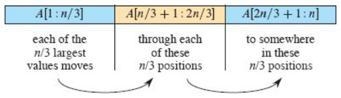
Together the worst case is \(\Theta(n^2)\). On a sorted input the while test fails at once, so the best case is \(\Theta(n)\) (Section 1.4).合起来，最坏情况为 \(\Theta(n^2)\)。对已排序的输入，while 测试立即失败，所以最好情况为 \(\Theta(n)\)（见 1.4 节）。
Step 4: count loop iterations第 4 步：统计循环次数
In words: running time = number of executions of the innermost statement times a constant. Let S be a constant-time statement.用文字表述：运行时间 = 最内层语句的执行次数乘以一个常数。设 S 为一条花费常数时间的语句。
| Loop循环 | Iterations of S |
Result结果 |
|---|---|---|
for i = 1 to n |
\(n\) | \(\Theta(n)\) |
for i = 1 to n, inside for j = 1 to i |
\(\sum_{i=1}^{n}i=n(n+1)/2\) | \(\Theta(n^2)\) |
the same with a third loop for k = 1 to j再加一层循环 for k = 1 to j |
\(n(n+1)(n+2)/6\) | \(\Theta(n^3)\) |
j = 1; while j < n: S; j = 2j |
\(j=1,2,4,\dots\), so \(\lceil\lg n\rceil\) | \(\Theta(\lg n)\) |
j = n; while j ≥ 1: S; j = ⌊j/2⌋ |
\(\lfloor\lg n\rfloor+1\) | \(\Theta(\lg n)\) |
a doubling loop inside for i = 1 to n |
\(n\lceil\lg n\rceil\) | \(\Theta(n\lg n)\) |
Check of the second row for \(n=10\): \(\sum_{i=1}^{10}i=55=10\cdot11/2\).对 \(n=10\) 检验第二行：\(\sum_{i=1}^{10}i=55=10\cdot11/2\)。
Practice练习
Q1. (Classify) For \(f(n)=7n^3+100n^2-20n+6\) decide whether each statement holds: (a) \(f=O(n^4)\); (b) \(f=\Omega(n^4)\); (c) \(f=\Theta(n^3)\); (d) \(f=\Omega(n^2)\); (e) \(f=O(n^2)\).Q1.（归类）对 \(f(n)=7n^3+100n^2-20n+6\)，判断下列每条陈述是否成立：（a）\(f=O(n^4)\)；（b）\(f=\Omega(n^4)\)；（c）\(f=\Theta(n^3)\)；（d）\(f=\Omega(n^2)\)；（e）\(f=O(n^2)\)。
Answer
(a) True: \(f\) grows no faster than \(n^3\), hence no faster than \(n^4\). (b) False: \(f\) grows more slowly than \(n^4\). (c) True: \(7n^3\le f(n)\) because \(100n^2-20n+6>0\), and \(f(n)\le7n^3+100n^3+6n^3=113n^3\) for \(n\ge1\); so \(c_1=7\), \(c_2=113\), \(n_0=1\). (d) True: \(f\) grows at least as fast as \(n^3\), hence as \(n^2\). (e) False: the cubic term exceeds \(c\,n^2\) for large \(n\).（a）成立：\(f\) 的增长不快于 \(n^3\)，因此也不快于 \(n^4\)。（b）不成立：\(f\) 的增长慢于 \(n^4\)。（c）成立：\(7n^3\le f(n)\)，因为 \(100n^2-20n+6>0\)，且 \(f(n)\le7n^3+100n^3+6n^3=113n^3\) 对 \(n\ge1\) 成立；因此 \(c_1=7\)、\(c_2=113\)、\(n_0=1\)。（d）成立：\(f\) 的增长不慢于 \(n^3\)，因此也不慢于 \(n^2\)。（e）不成立：当 \(n\) 充分大时，三次项超过 \(c\,n^2\)。
Q2. (Selection sort) Analyse the algorithm below. Is its best case faster than its worst case?Q2.（选择排序）分析下面的算法。它的最好情况是否比最坏情况更快？
SELECTION-SORT(A, n)
1 for i = 1 to n - 1
2 smallest = i
3 for j = i + 1 to n
4 if A[j] < A[smallest]
5 smallest = j
6 swap A[i] and A[smallest]
Answer
For each \(i\), line 4 executes \(n-i\) times whatever the values are, so the number of comparisons is \(\sum_{i=1}^{n-1}(n-i)=n(n-1)/2=\Theta(n^2)\). Lines 2 and 6 run \(n-1\) times and line 5 at most \(n(n-1)/2\) times, each in constant time. The running time is \(\Theta(n^2)\) in every case: the best case is no faster than the worst case, unlike insertion sort (best case \(\Theta(n)\)).对每个 \(i\)，第 4 行无论数值如何都执行 \(n-i\) 次，因此比较次数为 \(\sum_{i=1}^{n-1}(n-i)=n(n-1)/2=\Theta(n^2)\)。第 2 行与第 6 行各执行 \(n-1\) 次，第 5 行至多执行 \(n(n-1)/2\) 次，每次执行都只需常数时间。在各种情况下，运行时间都是 \(\Theta(n^2)\)：最好情况并不快于最坏情况，这与插入排序不同（插入排序的最好情况为 \(\Theta(n)\)）。
Q3. (Loops) Give the \(\Theta\) running time in terms of \(n\), counting executions of the constant-time statement S. (a) for i = 1 to n, inside it for j = 1 to i, inside it for k = 1 to j with body S. (b) for i = 1 to n, inside it j = 1 and while j < n with body S; j = 2j. (c) i = n and while i ≥ 1 with body S; i = ⌊i/2⌋.Q3.（循环）用 \(n\) 表示 \(\Theta\) 的运行时间，统计常数时间语句 S 的执行次数。（a）for i = 1 to n，其内层为 for j = 1 to i，再内层为 for k = 1 to j，循环体为 S。（b）for i = 1 to n，其内层为 j = 1 与 while j < n，循环体为 S; j = 2j。（c）i = n 与 while i ≥ 1，循环体为 S; i = ⌊i/2⌋。
Answer
(a) The body runs \(\sum_{i=1}^{n}\sum_{j=1}^{i}j=\sum_{i=1}^{n}\frac{i(i+1)}{2}=\frac{n(n+1)(n+2)}{6}\) times (220 for \(n=10\)): \(\Theta(n^3)\). (b) The while loop doubles \(j\) from 1 until \(j\ge n\): \(\lceil\lg n\rceil\) iterations for each \(i\), in total \(n\lceil\lg n\rceil=\Theta(n\lg n)\). (c) \(i\) takes the values \(n,\lfloor n/2\rfloor,\dots,1\): \(\lfloor\lg n\rfloor+1\) iterations, \(\Theta(\lg n)\).（a）循环体执行 \(\sum_{i=1}^{n}\sum_{j=1}^{i}j=\sum_{i=1}^{n}\frac{i(i+1)}{2}=\frac{n(n+1)(n+2)}{6}\) 次（\(n=10\) 时为 220）：\(\Theta(n^3)\)。（b）while 循环中 \(j\) 从 1 开始逐次加倍，直到 \(j\ge n\) 为止：每个 \(i\) 对应 \(\lceil\lg n\rceil\) 次迭代，总计 \(n\lceil\lg n\rceil=\Theta(n\lg n)\)。（c）\(i\) 取值为 \(n,\lfloor n/2\rfloor,\dots,1\)：共 \(\lfloor\lg n\rfloor+1\) 次迭代，\(\Theta(\lg n)\)。
思路：先写出最内层语句执行次数的求和式，再化简；每次减半或加倍的循环给出对数。
Formal definitions of big-O, big-Omega and big-Theta ★★★O、Ω 与 Θ 记号的形式化定义
Goal. State the three definitions exactly, prove a bound by giving explicit constants, and refute a false bound.目标。 准确叙述三个定义，通过给出明确的常数来证明一个界，并反驳一个错误的界。
Step 1: the definitions第 1 步：定义
In words: from some point \(n_0\) on, \(f\) lies below \(c\,g\) (\(O\)), above \(c\,g\) (\(\Omega\)), or between \(c_1g\) and \(c_2g\) (\(\Theta\)).用文字表述：从某个点 \(n_0\) 开始，\(f\) 位于 \(c\,g\) 之下（\(O\)），位于 \(c\,g\) 之上（\(\Omega\)），或者位于 \(c_1g\) 和 \(c_2g\) 之间（\(\Theta\)）。

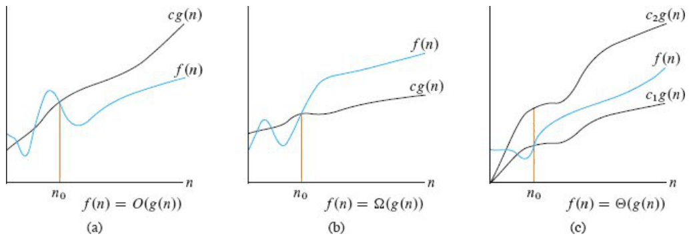
Proof of the theorem. (\(\Rightarrow\)) If \(c_1g\le f\le c_2g\) for \(n\ge n_0\), then \(f=O(g)\) with \(c_2\) and \(f=\Omega(g)\) with \(c_1\). (\(\Leftarrow\)) If \(f\le c\,g\) for \(n\ge n_1\) and \(f\ge c'g\) for \(n\ge n_2\), take \(n_0=\max\{n_1,n_2\}\), \(c_1=c'\) and \(c_2=c\). \(\blacksquare\)定理的证明。 （\(\Rightarrow\)）若对 \(n\ge n_0\) 有 \(c_1g\le f\le c_2g\)，则 \(f=O(g)\)，其中 \(c_2\) 且 \(f=\Omega(g)\)，并取 \(c_1\)。（\(\Leftarrow\)）若对 \(n\ge n_1\) 有 \(f\le c\,g\)，对 \(n\ge n_2\) 有 \(f\ge c'g\)，则取 \(n_0=\max\{n_1,n_2\}\)、\(c_1=c'\) 和 \(c_2=c\)。\(\blacksquare\)
Although \(O(g(n))\) is a set, one writes \(f(n)=O(g(n))\) and reads "=" as "is". The abuse goes one way only: \(n=O(n^2)\), but \(O(n^2)=n\) is meaningless.虽然 \(O(g(n))\) 是一个集合，人们还是写作 \(f(n)=O(g(n))\)，并把“=”读作“是”。这种滥用只能单向进行：\(n=O(n^2)\)，但 \(O(n^2)=n\) 没有意义。
Step 2: prove or refute a bound第 2 步：证明或反驳一个界
How to do it by hand: 1. To prove \(f=O(g)\), write \(f(n)\le c\,g(n)\) and divide by \(g(n)\). 2. Find \(c\) and \(n_0\) such that the inequality holds for all \(n\ge n_0\). 3. For \(\Omega\), do the same with \(c\,g(n)\le f(n)\). 4. For \(\Theta\), find both constants. 5. To refute, assume the bound holds and derive an inequality that fails for large \(n\).手工做法：1. 要证明 \(f=O(g)\)，就写出 \(f(n)\le c\,g(n)\) 并除以 \(g(n)\)。2. 找出 \(c\) 和 \(n_0\)，使不等式对所有 \(n\ge n_0\) 成立。3. 对于 \(\Omega\)，用 \(c\,g(n)\le f(n)\) 做同样的事情。4. 对于 \(\Theta\)，两个常数都要找。5. 要反驳，就假设该界成立，并推出一个对足够大的 \(n\) 不成立的不等式。
Practice练习
Q1. Prove that \(\tfrac12n^2-3n=\Theta(n^2)\) by giving \(c_1\), \(c_2\) and \(n_0\).Q1. 通过给出 \(c_1\)、\(c_2\) 与 \(n_0\) 来证明 \(\tfrac12n^2-3n=\Theta(n^2)\)。
Answer
We need \(c_1\le\frac12-\frac3n\le c_2\) after dividing by \(n^2\). The middle term is below \(\frac12\), so \(c_2=\frac12\) works for all \(n\ge1\). It increases with \(n\) and equals \(\frac12-\frac37=\frac1{14}\) at \(n=7\), so \(c_1=\frac1{14}\) works for \(n\ge7\). Hence \(c_1=\frac1{14}\), \(c_2=\frac12\), \(n_0=7\).两边除以 \(n^2\) 后，需要 \(c_1\le\frac12-\frac3n\le c_2\)。中间项小于 \(\frac12\)，因此 \(c_2=\frac12\) 对所有 \(n\ge1\) 都成立。它随 \(n\) 增大，并在 \(n=7\) 处等于 \(\frac12-\frac37=\frac1{14}\)，因此 \(c_1=\frac1{14}\) 对 \(n\ge7\) 成立。由此得到 \(c_1=\frac1{14}\)、\(c_2=\frac12\)、\(n_0=7\)。
易错：减去的低阶项要让 \(n_0\) 足够大，使 \(c_1\) 仍为正数。
Q2. Let \(f(n)\) and \(g(n)\) be asymptotically nonnegative. Prove that \(\max\{f(n),g(n)\}=\Theta(f(n)+g(n))\).Q2. 设 \(f(n)\) 与 \(g(n)\) 为渐近非负函数。证明 \(\max\{f(n),g(n)\}=\Theta(f(n)+g(n))\)。
Answer
Choose \(n_0\) such that \(f(n),g(n)\ge0\) for all \(n\ge n_0\). For such \(n\) the maximum is one of the two values and the other is at least 0, so \(\max\{f,g\}\le f+g\). The maximum is at least the average, so \(\max\{f,g\}\ge\frac12(f+g)\). Hence \(c_1=\frac12\), \(c_2=1\) and the same \(n_0\).选取 \(n_0\)，使得对所有 \(n\ge n_0\) 都有 \(f(n),g(n)\ge0\)。对于这样的 \(n\)，最大值是两个值之一，另一个值至少为 0，因此 \(\max\{f,g\}\le f+g\)。最大值不小于平均值，因此 \(\max\{f,g\}\ge\frac12(f+g)\)。由此得到 \(c_1=\frac12\)、\(c_2=1\)，以及同样的 \(n_0\)。
Q3. Is \(2^{n+1}=O(2^n)\)? Is \(2^{2n}=O(2^n)\)?Q3. \(2^{n+1}=O(2^n)\) 成立吗？\(2^{2n}=O(2^n)\) 成立吗？
Answer
Yes: \(2^{n+1}=2\cdot2^n\le2\cdot2^n\), so \(c=2\), \(n_0=1\) (even \(\Theta\)). No: \(2^{2n}=2^n\cdot2^n\le c\,2^n\) would require \(2^n\le c\), which fails for \(n>\lg c\). A constant added to the exponent changes the value only by a constant factor; a constant factor in the exponent changes the base.是：\(2^{n+1}=2\cdot2^n\le2\cdot2^n\)，因此 \(c=2\)，\(n_0=1\)（甚至 \(\Theta\)）。否：\(2^{2n}=2^n\cdot2^n\le c\,2^n\) 将要求 \(2^n\le c\)，而此式对 \(n>\lg c\) 不成立。在指数上加一个常数，只会使值相差一个常数因子；在指数上乘以一个常数因子，则会改变底数。
易错：指数里乘一个常数不是常数倍，\(2^{2n}=4^n\)。
Using asymptotic notation correctly ★★正确使用渐近记号
Goal. Decide which statements about an algorithm are correct, and read a notation that appears inside an equation.目标。 判断关于某个算法的哪些陈述是正确的，并读懂出现在等式中的记号。
Step 1: name the case第 1 步：指明情况
In words: a statement without a case name covers all inputs, so the bound must hold for every input.用文字表述：没有指明情况的陈述覆盖所有输入，因此这个界必须对每个输入都成立。
The table lists statements about insertion sort and merge sort.表中列出了关于插入排序和归并排序的陈述。
| Statement语句 | Correct?是否正确？ | Reason理由 |
|---|---|---|
| Insertion sort's worst-case time is \(O(n^2)\), \(\Omega(n^2)\) and \(\Theta(n^2)\)插入排序的最坏情况时间为 \(O(n^2)\)、\(\Omega(n^2)\) 与 \(\Theta(n^2)\) | all three三者均正确 | \(\Theta(n^2)\) is the most precise, hence preferred\(\Theta(n^2)\) 最精确，因而为首选 |
| Insertion sort's best-case time is \(O(n)\), \(\Omega(n)\) and \(\Theta(n)\)插入排序的最好情况时间为 \(O(n)\)、\(\Omega(n)\) 与 \(\Theta(n)\) | all three三者均正确 | \(\Theta(n)\) is preferred |
| Insertion sort's running time is \(\Theta(n^2)\)插入排序的运行时间为 \(\Theta(n^2)\) | no否 | a blanket statement about all inputs; the best case is \(\Theta(n)\)对所有输入的笼统陈述；最好情况为 \(\Theta(n)\) |
| Insertion sort's running time is \(\Theta(n)\)插入排序的运行时间为 \(\Theta(n)\) | no否 | the worst case is \(\Theta(n^2)\) |
| Insertion sort's running time is \(O(n^2)\)插入排序的运行时间为 \(O(n^2)\) | yes是 | no case grows faster than \(n^2\)任何情况的增长都不快于 \(n^2\) |
| Insertion sort's running time is \(\Omega(n)\)插入排序的运行时间为 \(\Omega(n)\) | yes是 | no case is faster than linear没有任何情况快于线性 |
| Merge sort's running time is \(\Theta(n\lg n)\)归并排序的运行时间为 \(\Theta(n\lg n)\) | yes是 | the same in every case, so no case name is needed各种情况下都相同，因此无需指明情况 |
The running time on all inputs is \(\Theta(g(n))\) if and only if the worst case is \(O(g(n))\) and the best case is \(\Omega(g(n))\). For insertion sort the best case is not \(\Omega(n^2)\), so no \(\Theta\) statement without a case name exists.在所有输入上的运行时间为 \(\Theta(g(n))\)，当且仅当最坏情况为 \(O(g(n))\) 且最好情况为 \(\Omega(g(n))\)。对插入排序而言，最好情况不是 \(\Omega(n^2)\)，因此不存在没有指明情况的 \(\Theta\) 陈述。
\(O\) is not \(\Theta\). "An \(O(n\lg n)\) algorithm is faster than an \(O(n^2)\) algorithm" does not follow. \(O\) is only an upper bound, so the "\(O(n^2)\)" algorithm may run in \(\Theta(n)\) time. Use the most precise correct notation: for a time \(3n^2+20n\) in every case write \(\Theta(n^2)\).\(O\) 不等于 \(\Theta\)。 “一个 \(O(n\lg n)\) 算法比一个 \(O(n^2)\) 算法快”这一结论并不成立。\(O\) 只是上界，因此“\(O(n^2)\)”算法实际可能需要 \(\Theta(n)\) 时间。应使用最精确的正确记号：若每种情况下的时间都是 \(3n^2+20n\)，就写 \(\Theta(n^2)\)。
Step 2: notation inside equations第 2 步：等式中的记号
In words: a notation inside a formula stands for some function that we do not want to name. Such a function is called an anonymous function（匿名函数）.用文字表述：公式中的记号代表某个我们不想命名的函数。这样的函数称为匿名函数。
- Alone on the right: \(4n^2+100n+500=O(n^2)\) means membership in the set.单独出现在右边： \(4n^2+100n+500=O(n^2)\) 表示属于该集合。
- Inside a formula: \(2n^2+3n+1=2n^2+\Theta(n)\) means \(2n^2+3n+1=2n^2+f(n)\) for some \(f(n)\in\Theta(n)\). Here \(f(n)=3n+1\).出现在公式内部： \(2n^2+3n+1=2n^2+\Theta(n)\) 表示对某个 \(f(n)\in\Theta(n)\) 有 \(2n^2+3n+1=2n^2+f(n)\)。这里 \(f(n)=3n+1\)。
- One function per occurrence: \(\sum_{i=1}^{n}O(i)\) has one anonymous function of \(i\) and is \(O(n^2)\).每次出现对应一个函数： \(\sum_{i=1}^{n}O(i)\) 含有一个 \(i\) 的匿名函数，并且是 \(O(n^2)\)。
- On the left: in \(2n^2+\Theta(n)=\Theta(n^2)\), however the left function is chosen, some function on the right makes the equation true. The right side is a coarser description, so read the equation from left to right only.出现在左边： 在 \(2n^2+\Theta(n)=\Theta(n^2)\) 中，无论左边的函数怎样选取，右边总有某个函数使等式成立。右边是一个更粗略的描述，因此只能从左往右读这个等式。
- Chains are read step by step: \(2n^2+3n+1=2n^2+\Theta(n)=\Theta(n^2)\) gives \(2n^2+3n+1=\Theta(n^2)\).等式链要逐步阅读：\(2n^2+3n+1=2n^2+\Theta(n)=\Theta(n^2)\) 得到 \(2n^2+3n+1=\Theta(n^2)\)。
By convention, "\(T(n)=O(1)\) for \(n<3\)" means that \(T(n)\) is bounded by a constant there. The variable that tends to infinity is read from the context.按惯例，“\(T(n)=O(1)\) 对于 \(n<3\)”表示在那里 \(T(n)\) 以一个常数为界。趋于无穷的变量则要从上下文中读出。
Practice练习
Q1. (True or false, justify) For insertion sort: (a) the running time is \(\Theta(n^2)\); (b) the worst-case running time is \(O(n\lg n)\); (c) the running time is \(\Omega(n)\); (d) the running time is \(O(n^3)\); (e) an \(O(n\lg n)\)-time algorithm always runs faster than an \(O(n^2)\)-time algorithm.Q1.（判断，并说明理由）对插入排序：（a）运行时间为 \(\Theta(n^2)\)；（b）最坏情况运行时间为 \(O(n\lg n)\)；（c）运行时间为 \(\Omega(n)\)；（d）运行时间为 \(O(n^3)\)；（e）一个 \(O(n\lg n)\) 时间的算法总是比一个 \(O(n^2)\) 时间的算法运行得更快。
Answer
(a) False: the best case is \(\Theta(n)\), so a bound for all inputs cannot be \(\Theta(n^2)\). (b) False: the worst case is \(\Theta(n^2)\), and \(n^2\) is not \(O(n\lg n)\). (c) True: every input costs at least linear time, since the outer loop runs \(n-1\) times. (d) True but imprecise: no case grows faster than \(n^2\), hence not faster than \(n^3\). (e) False: \(O\) is only an upper bound; the "\(O(n^2)\)" algorithm may run in \(\Theta(n)\) time.（a）不成立：最好情况为 \(\Theta(n)\)，因此对所有输入的界不能为 \(\Theta(n^2)\)。（b）不成立：最坏情况为 \(\Theta(n^2)\)，而 \(n^2\) 并不等同于 \(O(n\lg n)\)。（c）成立：每个输入的代价至少为线性时间，因为外层循环执行 \(n-1\) 次。（d）成立，但不精确：没有任何情况增长快于 \(n^2\)，因此也不快于 \(n^3\)。（e）不成立：\(O\) 仅是上界；所谓的“\(O(n^2)\)”算法可能以 \(\Theta(n)\) 的时间运行。
Q2. Explain what \(2n^2+\Theta(n)=\Theta(n^2)\) means and why the reversed equation \(\Theta(n^2)=2n^2+\Theta(n)\) is not valid.Q2. 解释 \(2n^2+\Theta(n)=\Theta(n^2)\) 的含义，以及为什么反向等式 \(\Theta(n^2)=2n^2+\Theta(n)\) 不成立。
Answer
The left-hand notation is read "for every choice": for every \(f(n)\in\Theta(n)\) there is a \(g(n)\in\Theta(n^2)\) with \(2n^2+f(n)=g(n)\); take \(g(n)=2n^2+f(n)\). The reversed equation would say that every function in \(\Theta(n^2)\) equals \(2n^2\) plus a function of \(\Theta(n)\). This is false: \(5n^2\in\Theta(n^2)\), but \(5n^2-2n^2=3n^2\notin\Theta(n)\).左侧记号应读作“对每一种选择”：对每个 \(f(n)\in\Theta(n)\)，都存在某个 \(g(n)\in\Theta(n^2)\) 使得 \(2n^2+f(n)=g(n)\)；取 \(g(n)=2n^2+f(n)\)。反向等式将表示：\(\Theta(n^2)\) 中的每个函数都等于 \(2n^2\) 加上某个关于 \(\Theta(n)\) 的函数。这是错误的：\(5n^2\in\Theta(n^2)\)，但 \(5n^2-2n^2=3n^2\notin\Theta(n)\)。
Strict bounds and comparing functions ★★严格界与函数比较
Goal. Use \(o\) and \(\omega\), compare two functions with a limit, and state which order relations hold for functions.目标。 使用 \(o\) 和 \(\omega\)，用极限比较两个函数，并说明函数之间成立哪些序关系。
Step 1: strict bounds第 1 步：严格界
In words: \(o\) = grows strictly slower, \(\omega\) = grows strictly faster.用文字表述：\(o\) = 增长严格更慢，\(\omega\) = 增长严格更快。
The bound \(2n^2=O(n^2)\) is tight, but \(2n=O(n^2)\) is not. The o-notation（小 o 记号）is an upper bound that is not tight. The \(\omega\)-notation（小 ω 记号）is a lower bound that is not tight.界 \(2n^2=O(n^2)\) 是紧确的，但 \(2n=O(n^2)\) 不是。小 o 记号是不紧确的上界。\(\omega\) 记号是不紧确的下界。
The only difference from \(O\): in \(f=O(g)\) the bound \(f\le c\,g\) holds for some \(c>0\), but in \(f=o(g)\) the strict bound holds for every \(c>0\).与 \(O\) 的唯一区别在于：在 \(f=O(g)\) 中，界 \(f\le c\,g\) 对某个 \(c>0\) 成立，而在 \(f=o(g)\) 中，严格的界对每个 \(c>0\) 都成立。
Step 2: the order relations第 2 步：序关系
Many properties of real numbers carry over, for asymptotically positive \(f\), \(g\), \(h\).对于渐近正函数 \(f\)、\(g\)、\(h\)，实数的许多性质都可以移植过来。
| Property性质 | Statement语句 |
|---|---|
| Transitivity（传递性） | \(f=\Theta(g)\) and \(g=\Theta(h)\) imply \(f=\Theta(h)\); the same holds for \(O,\Omega,o,\omega\)\(f=\Theta(g)\) 与 \(g=\Theta(h)\) 蕴含 \(f=\Theta(h)\)；\(O,\Omega,o,\omega\) 同样成立。 |
| Reflexivity（自反性） | \(f=\Theta(f)\), \(f=O(f)\), \(f=\Omega(f)\) (but not \(o\), \(\omega\)) |
| Symmetry（对称性） | \(f=\Theta(g)\iff g=\Theta(f)\) |
| Transpose symmetry（转置对称性） | \(f=O(g)\iff g=\Omega(f)\) and \(f=o(g)\iff g=\omega(f)\) |
Hence the analogy with real numbers \(a\) and \(b\).因此，函数与实数 \(a\) 和 \(b\) 之间存在类比。
| Functions函数 | \(f=O(g)\) | \(f=\Omega(g)\) | \(f=\Theta(g)\) | \(f=o(g)\) | \(f=\omega(g)\) |
|---|---|---|---|---|---|
| Numbers实数 | \(a\le b\) | \(a\ge b\) | \(a=b\) | \(a<b\) | \(a>b\) |
\(f\) is asymptotically smaller than \(g\) if \(f=o(g)\) and asymptotically larger if \(f=\omega(g)\). One property does not carry over: trichotomy（三分性）. Two real numbers satisfy exactly one of \(a<b\), \(a=b\), \(a>b\), but two functions need not be comparable. For \(n\) and \(n^{1+\sin n}\) the exponent oscillates between 0 and 2, so neither \(n=O(n^{1+\sin n})\) nor \(n=\Omega(n^{1+\sin n})\) holds.\(f\) 渐近小于 \(g\)，若 \(f=o(g)\)；渐近大于，若 \(f=\omega(g)\)。有一条性质不能移植过来：三分性。两个实数恰好满足 \(a<b\)、\(a=b\)、\(a>b\) 之一，但两个函数不一定可比较。例如对于 \(n\) 和 \(n^{1+\sin n}\)，指数在 0 与 2 之间振荡，因此 \(n=O(n^{1+\sin n})\) 和 \(n=\Omega(n^{1+\sin n})\) 都不成立。
Practice练习
Q1. (True or false; give a proof or a counterexample) Let \(f,g\) be asymptotically positive. (a) \(f=O(g)\) implies \(g=O(f)\). (b) \(f+g=\Theta(\min\{f,g\})\). (c) \(f=O(g)\) implies \(2^{f}=O(2^{g})\). (d) \(f(n)=\Theta(f(n/2))\).Q1.（判断；给出证明或反例）设 \(f,g\) 渐近正。（a）\(f=O(g)\) 蕴含 \(g=O(f)\)。（b）\(f+g=\Theta(\min\{f,g\})\)。（c）\(f=O(g)\) 蕴含 \(2^{f}=O(2^{g})\)。（d）\(f(n)=\Theta(f(n/2))\)。
Answer
(a) False: \(f=n\), \(g=n^2\). (b) False: for the same pair, \(f+g=\Theta(n^2)\) but \(\min\{f,g\}=n\). (c) False: \(f=2n\), \(g=n\) give \(2^{2n}=4^n\ne O(2^n)\). (d) False: for \(f(n)=2^n\), \(f(n/2)=2^{n/2}\) and the ratio \(2^{n/2}\) is unbounded (it is true for polynomial \(f\)).（a）不成立：\(f=n\)、\(g=n^2\)。（b）不成立：对同一对函数，\(f+g=\Theta(n^2)\)，但 \(\min\{f,g\}=n\)。（c）不成立：\(f=2n\)、\(g=n\) 给出 \(2^{2n}=4^n\ne O(2^n)\)。（d）不成立：对 \(f(n)=2^n\)、\(f(n/2)=2^{n/2}\)，比值 \(2^{n/2}\) 无界（对多项式 \(f\) 则成立）。
Q2. (Relations) For each pair \((A,B)\) state whether \(A\) is \(O\), \(o\), \(\Omega\), \(\omega\), \(\Theta\) of \(B\); \(k\ge1\), \(\epsilon>0\), \(c>1\) are constants. (a) \(\lg^kn\), \(n^\epsilon\); (b) \(n^k\), \(c^n\); (c) \(2^n\), \(2^{n/2}\); (d) \(n^{\lg c}\), \(c^{\lg n}\); (e) \(\lg(n!)\), \(\lg(n^n)\).Q2.（关系）对每一对 \((A,B)\)，说明 \(A\) 是否是 \(B\) 的 \(O\)、\(o\)、\(\Omega\)、\(\omega\)、\(\Theta\) 之一；\(k\ge1\)、\(\epsilon>0\)、\(c>1\) 为常数。（a）\(\lg^kn\)，\(n^\epsilon\)；（b）\(n^k\)，\(c^n\)；（c）\(2^n\)，\(2^{n/2}\)；（d）\(n^{\lg c}\)，\(c^{\lg n}\)；（e）\(\lg(n!)\)，\(\lg(n^n)\)。
Answer
| \(O\) | \(o\) | \(\Omega\) | \(\omega\) | \(\Theta\) | |
|---|---|---|---|---|---|
| (a) | yes是 | yes是 | no否 | no否 | no否 |
| (b) | yes是 | yes是 | no否 | no否 | no否 |
| (c) | no否 | no否 | yes是 | yes是 | no否 |
| (d) | yes是 | no否 | yes是 | no否 | yes是 |
| (e) | yes是 | no否 | yes是 | no否 | yes是 |
Reasons: (a) every power of \(\lg n\) is \(o\) of every positive power of \(n\); (b) polynomial against exponential; (c) \(2^n/2^{n/2}=2^{n/2}\to\infty\); (d) the two functions are equal, by \(a^{\log_bc}=c^{\log_ba}\); (e) \(\lg(n^n)=n\lg n\) and \(\lg(n!)=\Theta(n\lg n)\).理由：（a）\(\lg n\) 的任意次幂都是 \(n\) 的任意正次幂的 \(o\)；（b）多项式与指数函数相比；（c）\(2^n/2^{n/2}=2^{n/2}\to\infty\)；（d）两个函数相等，依据 \(a^{\log_bc}=c^{\log_ba}\)；（e）\(\lg(n^n)=n\lg n\) 与 \(\lg(n!)=\Theta(n\lg n)\)。
Standard notations and common functions ★★标准记号与常用函数
Goal. Compute with floors, ceilings, remainders, logarithms, \(\lg^*\) and Fibonacci numbers, and know how the standard functions grow.目标。 计算向下取整、向上取整、余数、对数、\(\lg^*\) 和斐波那契数，并且熟悉标准函数的增长方式。
Step 1: floors, ceilings and remainders第 1 步：向下取整、向上取整与余数
In words: floor rounds down, ceiling rounds up, mod gives the remainder.用文字表述：向下取整即向下舍入，向上取整即向上舍入，取模给出余数。
The floor（向下取整）\(\lfloor x\rfloor\) is the greatest integer at most \(x\). The ceiling（向上取整）\(\lceil x\rceil\) is the least integer at least \(x\). Examples: \(\lfloor3.7\rfloor=3\), \(\lceil3.2\rceil=4\), \(\lfloor-3.5\rfloor=-4\), \(\lceil-3.5\rceil=-3\).向下取整 \(\lfloor x\rfloor\) 是不大于 \(x\) 的最大整数。向上取整 \(\lceil x\rceil\) 是不小于 \(x\) 的最小整数。例如：\(\lfloor3.7\rfloor=3\)、\(\lceil3.2\rceil=4\)、\(\lfloor-3.5\rfloor=-4\)、\(\lceil-3.5\rceil=-3\)。
Step 2: polynomials, exponentials, logarithms第 2 步：多项式、指数与对数
Without parentheses a logarithm applies only to the next term: \(\lg n+1\) means \((\lg n)+1\). Constants inside change only constants: \(\lg(5n^3)=3\lg n+\lg5=\Theta(\lg n)\). A function is polynomially bounded（多项式有界）if it is \(O(n^k)\) for some constant \(k\).不加括号时，对数只作用于紧跟其后的那一项：\(\lg n+1\) 表示 \((\lg n)+1\)。内部的常数只改变常数：\(\lg(5n^3)=3\lg n+\lg5=\Theta(\lg n)\)。如果一个函数对某个常数 \(k\) 满足 \(O(n^k)\)，那么它就是多项式有界的。
The base of an exponential does matter. \(2^{n+1}=2\cdot2^n=\Theta(2^n)\), but \(2^{2n}=4^n\) is not \(O(2^n)\), and \(2^n=o(3^n)\). A constant added to the exponent is a constant factor. A constant factor in the exponent is a new base.指数函数的底数确实有影响。\(2^{n+1}=2\cdot2^n=\Theta(2^n)\)，但 \(2^{2n}=4^n\) 不是 \(O(2^n)\)，并且 \(2^n=o(3^n)\)。指数上加一个常数，相当于乘以一个常数因子；指数上乘一个常数因子，则相当于换了一个新的底。
Step 3: factorials, \(\lg^*\) and Fibonacci numbers第 3 步：阶乘、\(\lg^*\) 与斐波那契数
In words: \(n!\) grows faster than every exponential but slower than \(n^n\); \(\lg^*\) grows almost not at all; Fibonacci numbers grow exponentially.用文字表述：\(n!\) 比任何指数函数都增长得快，但比 \(n^n\) 慢；\(\lg^*\) 几乎不增长；斐波那契数呈指数增长。
The number \(2^{65536}\approx10^{19728}\) is far larger than the roughly \(10^{80}\) atoms of the observable universe. So \(\lg^*n\le5\) for every input size that can occur, although \(\lg^*n\to\infty\).数 \(2^{65536}\approx10^{19728}\) 远远大于可观测宇宙中大约 \(10^{80}\) 个原子的数量。所以对于任何可能出现的输入规模，\(\lg^*n\le5\)，尽管 \(\lg^*n\to\infty\)。
Practice练习
Q1. (Calculation) (a) Compare \(\lceil\lceil100/7\rceil/3\rceil\) with \(\lceil100/21\rceil\). (b) Compute \(-17\bmod5\) and decide whether \(38\equiv3\pmod7\). (c) Compute \(\lg^*(10^6)\).Q1.（计算）（a）比较 \(\lceil\lceil100/7\rceil/3\rceil\) 与 \(\lceil100/21\rceil\)。（b）计算 \(-17\bmod5\)，并判断 \(38\equiv3\pmod7\) 是否成立。（c）计算 \(\lg^*(10^6)\)。
Answer
(a) \(\lceil100/7\rceil=\lceil14.29\rceil=15\) and \(\lceil15/3\rceil=5\); \(\lceil100/21\rceil=\lceil4.76\rceil=5\). They are equal, as the nested-ceiling identity says. (b) \(-17\bmod5=-17-5\lfloor-3.4\rfloor=-17+20=3\). \(38\bmod7=3\), so \(38\equiv3\pmod7\) (7 divides \(38-3=35\)). (c) \(10^6\to19.93\to4.32\to2.11\to1.08\to0.11\): five applications of \(\lg\) are needed to reach a value \(\le1\), so \(\lg^*10^6=5\).（a）\(\lceil100/7\rceil=\lceil14.29\rceil=15\) 与 \(\lceil15/3\rceil=5\)；\(\lceil100/21\rceil=\lceil4.76\rceil=5\)。二者相等，这正是嵌套取整恒等式所说的。（b）\(-17\bmod5=-17-5\lfloor-3.4\rfloor=-17+20=3\)。\(38\bmod7=3\)，因此 \(38\equiv3\pmod7\)（7 整除 \(38-3=35\)）。（c）\(10^6\to19.93\to4.32\to2.11\to1.08\to0.11\)：需要 \(\lg\) 的五次应用才能达到值 \(\le1\)，因此 \(\lg^*10^6=5\)。
Q2. Prove by induction that \(F_i=(\phi^i-\hat\phi^i)/\sqrt5\) and use it to compute \(F_{12}\).Q2. 用归纳法证明 \(F_i=(\phi^i-\hat\phi^i)/\sqrt5\)，并利用它计算 \(F_{12}\)。
Answer
Base: \(F_0=(1-1)/\sqrt5=0\) and \(F_1=(\phi-\hat\phi)/\sqrt5=\sqrt5/\sqrt5=1\). Step (\(i\ge2\)): assume the formula for \(i-1\) and \(i-2\), and use \(\phi^2=\phi+1\), \(\hat\phi^2=\hat\phi+1\). Then \(F_{i-1}+F_{i-2}=\frac{\phi^{i-2}(\phi+1)-\hat\phi^{i-2}(\hat\phi+1)}{\sqrt5}=\frac{\phi^{i}-\hat\phi^{i}}{\sqrt5}=F_i\). For \(F_{12}\): the recurrence gives 0, 1, 1, 2, 3, 5, 8, 13, 21, 34, 55, 89, 144. The closed form gives \(\phi^{12}/\sqrt5=321.997/2.236=144.0014\), and \(\lvert\hat\phi^{12}\rvert/\sqrt5=0.0014\), so rounding yields \(F_{12}=144\).基本情况：\(F_0=(1-1)/\sqrt5=0\) 与 \(F_1=(\phi-\hat\phi)/\sqrt5=\sqrt5/\sqrt5=1\)。归纳步（\(i\ge2\)）：假设公式对 \(i-1\) 与 \(i-2\) 成立，并利用 \(\phi^2=\phi+1\)、\(\hat\phi^2=\hat\phi+1\)。于是 \(F_{i-1}+F_{i-2}=\frac{\phi^{i-2}(\phi+1)-\hat\phi^{i-2}(\hat\phi+1)}{\sqrt5}=\frac{\phi^{i}-\hat\phi^{i}}{\sqrt5}=F_i\)。对 \(F_{12}\)：递归式给出 0、1、1、2、3、5、8、13、21、34、55、89、144。闭式给出 \(\phi^{12}/\sqrt5=321.997/2.236=144.0014\)，并且 \(\lvert\hat\phi^{12}\rvert/\sqrt5=0.0014\)，因此取整得到 \(F_{12}=144\)。
Ordering functions by growth rate ★★★按增长速率排列函数
Goal. Arrange a list of functions in increasing order of growth, group the \(\Theta\)-equal ones, and justify each neighbouring pair.目标。 把一列函数按增长速度从小到大排列，把 \(\Theta\) 相等的函数归为一组，并为每一对相邻函数给出理由。
Step 1: the growth ladder第 1 步：增长阶梯
In words: a function lower on the ladder is \(o\) of every function higher up; simplify each function to a standard form first.用文字表述：阶梯上位置较低的函数，是它上方每个函数的 \(o\)；先把每个函数化简为标准形式。
Step 2: techniques第 2 步：方法
- Simplify with identities: \(2^{\lg n}=n\), \(4^{\lg n}=n^2\), \(n^{1/\lg n}=2\), \((\lg n)^{\lg n}=n^{\lg\lg n}\), \(\lg(n!)=\Theta(n\lg n)\), \(\lg^*(\lg n)=\lg^*n-1\).用恒等式化简： \(2^{\lg n}=n\)、\(4^{\lg n}=n^2\)、\(n^{1/\lg n}=2\)、\((\lg n)^{\lg n}=n^{\lg\lg n}\)、\(\lg(n!)=\Theta(n\lg n)\)、\(\lg^*(\lg n)=\lg^*n-1\)。
- Limit test with L'Hôpital's rule for ratios of nice functions (Section 2.4).极限判别法，对于性质良好的函数之比，结合洛必达法则使用（见 2.4 节）。
- Take logarithms. Compare \(\lg f\) with \(\lg g\). If \(\lg f-\lg g\to\infty\), then \(f=\omega(g)\). But \(\lg f=\Theta(\lg g)\) does not give \(f=\Theta(g)\): take \(n^2\) and \(n\).取对数。 比较 \(\lg f\) 与 \(\lg g\)。若 \(\lg f-\lg g\to\infty\)，则 \(f=\omega(g)\)。但 \(\lg f=\Theta(\lg g)\) 推不出 \(f=\Theta(g)\)：例如取 \(n^2\) 和 \(n\)。
- Substitute \(n=2^k\), so that \(\lg n=k\) and \(\sqrt n=2^{k/2}\).代入 \(n=2^k\)，使得 \(\lg n=k\) 且 \(\sqrt n=2^{k/2}\)。
Practice练习
Q1. (Ranking) Arrange in increasing order of growth and group \(\Theta\)-equal functions: \(\sqrt n\lg n\), \(n^{\lg3}\), \(2^{\sqrt n}\), \(n^{3/2}\), \(3^{\lg n}\), \(\lg(n^{100})\), \(n\lg n\), \(n^{\lg n}\).Q1.（排序）按增长量级由小到大排列，并将 \(\Theta\) 意义下相等的函数归为一组：\(\sqrt n\lg n\)、\(n^{\lg3}\)、\(2^{\sqrt n}\)、\(n^{3/2}\)、\(3^{\lg n}\)、\(\lg(n^{100})\)、\(n\lg n\)、\(n^{\lg n}\)。
Answer
\(\lg(n^{100})\prec\sqrt n\lg n\prec n\lg n\prec n^{3/2}\prec\{n^{\lg3},\,3^{\lg n}\}\prec n^{\lg n}\prec2^{\sqrt n}\). Reasons: \(\lg(n^{100})=100\lg n=\Theta(\lg n)\). The ratio of \(n\lg n\) to \(\sqrt n\lg n\) is \(\sqrt n\to\infty\); \(n\lg n=o(n^{3/2})\) because \(\lg n=o(\sqrt n)\). By \(a^{\log_bc}=c^{\log_ba}\), \(3^{\lg n}=n^{\lg3}\approx n^{1.585}\), which exceeds \(n^{3/2}\) by exponent. \(n^{\lg n}\) has a growing exponent and beats every fixed power. Finally \(n^{\lg n}=2^{\lg^2n}\) and \(2^{\sqrt n}\) compare through the exponents: \(\lg^2n=o(\sqrt n)\).\(\lg(n^{100})\prec\sqrt n\lg n\prec n\lg n\prec n^{3/2}\prec\{n^{\lg3},\,3^{\lg n}\}\prec n^{\lg n}\prec2^{\sqrt n}\)。理由：\(\lg(n^{100})=100\lg n=\Theta(\lg n)\)。\(n\lg n\) 与 \(\sqrt n\lg n\) 之比为 \(\sqrt n\to\infty\)；\(n\lg n=o(n^{3/2})\)，因为 \(\lg n=o(\sqrt n)\)。由 \(a^{\log_bc}=c^{\log_ba}\)，\(3^{\lg n}=n^{\lg3}\approx n^{1.585}\)，它在指数上超过 \(n^{3/2}\)。\(n^{\lg n}\) 的指数是递增的，因而超过任何固定的幂。最后，\(n^{\lg n}=2^{\lg^2n}\) 与 \(2^{\sqrt n}\) 通过指数进行比较：\(\lg^2n=o(\sqrt n)\)。
Q2. (Bounding a sum, beyond the pages) Show that \(\sum_{i=1}^{n}i^2=\Theta(n^3)\).Q2.（和式定界，超出教材范围）证明 \(\sum_{i=1}^{n}i^2=\Theta(n^3)\)。
Answer
Upper bound: each of the \(n\) terms is at most \(n^2\), so the sum is at most \(n^3\). Lower bound: discard the small half. At least \(n/2\) terms have \(i\ge n/2\) and each of them is at least \((n/2)^2\), so the sum is at least \(\frac n2\cdot\frac{n^2}{4}=\frac{n^3}{8}\). Hence \(\frac{n^3}{8}\le\sum_{i=1}^{n}i^2\le n^3\) (for \(n=100\): \(125{,}000\le338{,}350\le1{,}000{,}000\)). The same two-sided argument shows \(\sum_{i=1}^{n}i^k=\Theta(n^{k+1})\) and gave \(\lg(n!)=\Theta(n\lg n)\).上界：\(n\) 项中的每一项至多为 \(n^2\)，因此和至多为 \(n^3\)。下界：舍去较小的一半。至少有 \(n/2\) 项满足 \(i\ge n/2\)，且其中每一项至少为 \((n/2)^2\)，因此和至少为 \(\frac n2\cdot\frac{n^2}{4}=\frac{n^3}{8}\)。由此得到 \(\frac{n^3}{8}\le\sum_{i=1}^{n}i^2\le n^3\)（对 \(n=100\)：\(125{,}000\le338{,}350\le1{,}000{,}000\)）。同样的双侧论证表明 \(\sum_{i=1}^{n}i^k=\Theta(n^{k+1})\)，并给出了 \(\lg(n!)=\Theta(n\lg n)\)。
思路：上界把每项放大成最大项；下界丢掉较小的一半，只保留后一半的项。
Q3. (a) Place \((\lg n)^n\) in the growth ladder. (b) Does \(\lg f=\Theta(\lg g)\) imply \(f=\Theta(g)\)?Q3.（a）将 \((\lg n)^n\) 放入增长阶梯中。（b）\(\lg f=\Theta(\lg g)\) 是否蕴含 \(f=\Theta(g)\)？
Answer
(a) \((\lg n)^n=2^{n\lg\lg n}\). For every constant \(c\), \(c^n=2^{n\lg c}\) and \(n\lg\lg n=\omega(n)\), so \((\lg n)^n=\omega(c^n)\). Also \(\lg(n!)=\Theta(n\lg n)\) and \(n\lg\lg n=o(n\lg n)\), so \((\lg n)^n=o(n!)\). Hence \(c^n\prec(\lg n)^n\prec n!\). (b) No: \(f=n^2\) and \(g=n\) give \(\lg f=2\lg g\), but \(f/g=n\to\infty\).（a）\((\lg n)^n=2^{n\lg\lg n}\)。对每个常数 \(c\)，\(c^n=2^{n\lg c}\) 与 \(n\lg\lg n=\omega(n)\)，因此 \((\lg n)^n=\omega(c^n)\)。又有 \(\lg(n!)=\Theta(n\lg n)\) 与 \(n\lg\lg n=o(n\lg n)\)，因此 \((\lg n)^n=o(n!)\)。由此得 \(c^n\prec(\lg n)^n\prec n!\)。（b）否：\(f=n^2\) 与 \(g=n\) 给出 \(\lg f=2\lg g\)，但 \(f/g=n\to\infty\)。
Terms to recognise ★需要认识的术语
| Term术语 | What to know要知道什么 |
|---|---|
| Soft-oh \(\tilde O\) | \(O\) with logarithmic factors ignored: \(f=\tilde O(g)\) if \(f\le c\,g\lg^kn\) for some constants \(c\), \(k\)忽略对数因子的 \(O\)：\(f=\tilde O(g)\)，若对某些常数 \(c\)、\(k\) 有 \(f\le c\,g\lg^kn\) |
| Harmonic number \(H_n\) | \(H_n=\sum_{k=1}^{n}1/k=\ln n+O(1)=\Theta(\lg n)\); used for quicksort and hashing (Chapters 4, 5, 8)\(H_n=\sum_{k=1}^{n}1/k=\ln n+O(1)=\Theta(\lg n)\)；用于快速排序和散列（见第 4、5、8 章） |
| Monotonic function单调函数 | \(f\) is monotonically increasing if \(m\le n\) implies \(f(m)\le f(n)\); floors and ceilings are若 \(m\le n\) 蕴含 \(f(m)\le f(n)\)，则 \(f\) 单调递增；向下取整和向上取整都是这样 |
| Functional iteration \(f^{(i)}\) | \(f\) applied \(i\) times: \(f^{(0)}(n)=n\), \(f^{(i)}(n)=f(f^{(i-1)}(n))\) |
| Polylogarithmically bounded多对数有界 | \(f(n)=O(\lg^kn)\) for some constant \(k\) |
| Golden ratio \(\phi\) | \(\phi=(1+\sqrt5)/2\approx1.618\), the positive root of \(x^2=x+1\) |
| Trichotomy三分性 | Exactly one of \(a<b\), \(a=b\), \(a>b\) holds for numbers, but not for functions对于实数，\(a<b\)、\(a=b\)、\(a>b\) 恰好成立其一，但对于函数不一定 |
| Anonymous function匿名函数 | A notation inside a formula stands for some unnamed function of that class公式中的记号代表该类中某个未命名的函数 |
| Asymptotically positive渐近正的 | Positive for all large \(n\); asymptotically nonnegative: nonnegative for all large \(n\)对所有足够大的 \(n\) 为正；渐近非负：对所有足够大的 \(n\) 非负 |
| Polynomially smaller多项式意义下更小 | \(f=O(g/n^{\epsilon})\) for some \(\epsilon>0\); \(n/\lg n\) is not polynomially smaller than \(n\) (Section 3.4)\(f=O(g/n^{\epsilon})\)，对某个 \(\epsilon>0\)；\(n/\lg n\) 在多项式意义下不比 \(n\) 小（见 3.4 节） |
Exam-style questions考试题型练习
Q1. (Definitions and proofs, 12 marks) (a) (3) State the formal definitions of \(O(g(n))\), \(\Omega(g(n))\) and \(\Theta(g(n))\). (b) (4) Prove that \(5n^2+3n+10=\Theta(n^2)\) with explicit constants. (c) (3) Prove from the definition that \(\sqrt n=o(n)\). (d) (2) Prove that \(f=\Theta(g)\) if and only if \(f=O(g)\) and \(f=\Omega(g)\).Q1.（定义与证明，12 分）（a）（3 分）给出 \(O(g(n))\)、\(\Omega(g(n))\) 与 \(\Theta(g(n))\) 的形式化定义。（b）（4 分）用明确的常数证明 \(5n^2+3n+10=\Theta(n^2)\)。（c）（3 分）依据定义证明 \(\sqrt n=o(n)\)。（d）（2 分）证明 \(f=\Theta(g)\) 当且仅当 \(f=O(g)\) 且 \(f=\Omega(g)\)。
Answer
(a) \(O(g(n))=\{f(n):\exists\,c,n_0>0\) such that \(0\le f(n)\le c\,g(n)\) for all \(n\ge n_0\}\); \(\Omega(g(n))=\{f(n):\exists\,c,n_0>0\) such that \(0\le c\,g(n)\le f(n)\) for all \(n\ge n_0\}\); \(\Theta(g(n))=\{f(n):\exists\,c_1,c_2,n_0>0\) such that \(0\le c_1g(n)\le f(n)\le c_2g(n)\) for all \(n\ge n_0\}\).（a）存在 \(O(g(n))=\{f(n):\exists\,c,n_0>0\)，使得对所有 \(n\ge n_0\}\) 都有 \(0\le f(n)\le c\,g(n)\)；存在 \(\Omega(g(n))=\{f(n):\exists\,c,n_0>0\)，使得对所有 \(n\ge n_0\}\) 都有 \(0\le c\,g(n)\le f(n)\)；存在 \(\Theta(g(n))=\{f(n):\exists\,c_1,c_2,n_0>0\)，使得对所有 \(n\ge n_0\}\) 都有 \(0\le c_1g(n)\le f(n)\le c_2g(n)\)。
(b) For \(n\ge1\): \(5n^2\le5n^2+3n+10\) and \(5n^2+3n+10\le5n^2+3n^2+10n^2=18n^2\). So \(5n^2\le5n^2+3n+10\le18n^2\) for all \(n\ge1\), i.e. \(c_1=5\), \(c_2=18\), \(n_0=1\), and the function is \(\Theta(n^2)\).（b）对 \(n\ge1\)：\(5n^2\le5n^2+3n+10\) 与 \(5n^2+3n+10\le5n^2+3n^2+10n^2=18n^2\)。因此对所有 \(n\ge1\) 有 \(5n^2\le5n^2+3n+10\le18n^2\)，即 \(c_1=5\)、\(c_2=18\)、\(n_0=1\)，且该函数为 \(\Theta(n^2)\)。
(c) Let \(c>0\) be arbitrary. \(\sqrt n<c\,n\) is equivalent to \(\sqrt n>1/c\), i.e. \(n>1/c^2\). With \(n_0=\lfloor1/c^2\rfloor+1\) the inequality \(0\le\sqrt n<c\,n\) holds for all \(n\ge n_0\). Since \(c\) was arbitrary, \(\sqrt n=o(n)\).（c）设 \(c>0\) 为任意的。\(\sqrt n<c\,n\) 等价于 \(\sqrt n>1/c\)，即 \(n>1/c^2\)。取 \(n_0=\lfloor1/c^2\rfloor+1\)，则不等式 \(0\le\sqrt n<c\,n\) 对所有 \(n\ge n_0\) 成立。由于 \(c\) 是任意的，故 \(\sqrt n=o(n)\)。
(d) (\(\Rightarrow\)) If \(c_1g\le f\le c_2g\) for \(n\ge n_0\), the right inequality gives \(f=O(g)\) and the left one \(f=\Omega(g)\). (\(\Leftarrow\)) If \(f\le c\,g\) for \(n\ge n_1\) and \(f\ge c'g\) for \(n\ge n_2\), then \(c'g\le f\le c\,g\) for \(n\ge\max\{n_1,n_2\}\), so \(f=\Theta(g)\).（d）（\(\Rightarrow\)）若对 \(n\ge n_0\) 有 \(c_1g\le f\le c_2g\)，则右侧不等式给出 \(f=O(g)\)，左侧不等式给出 \(f=\Omega(g)\)。（\(\Leftarrow\)）若对 \(n\ge n_1\) 有 \(f\le c\,g\)，且对 \(n\ge n_2\) 有 \(f\ge c'g\)，则对 \(n\ge\max\{n_1,n_2\}\) 有 \(c'g\le f\le c\,g\)，因此 \(f=\Theta(g)\)。
思路：定义题要写全量词和常数；证明题给出具体的 \(c_1,c_2,n_0\) 并说明不等式对所有 \(n\ge n_0\) 成立。
Q2. (Insertion sort in all cases, 14 marks) Consider INSERTION-SORT\((A,n)\) with line 6 A[j + 1] = A[j]. (a) (4) Prove that its running time is \(O(n^2)\) on every input. (b) (5) Prove that its worst-case running time is \(\Omega(n^2)\): describe an input for \(n=3m\) and count the executions of line 6. (c) (2) Give the best-case running time and an input that attains it. (d) (3) Which of "the running time is \(\Theta(n^2)\)", "is \(O(n^2)\)", "is \(\Omega(n)\)" are correct statements about the algorithm on all inputs? Justify.Q2.（所有情况下的插入排序，14 分）考虑第 6 行为 A[j + 1] = A[j] 的 INSERTION-SORT\((A,n)\)。(a)（4 分）证明它在每个输入上的运行时间都是 \(O(n^2)\)。(b)（5 分）证明它的最坏情况运行时间为 \(\Omega(n^2)\)：描述 \(n=3m\) 的一个输入，并统计第 6 行的执行次数。(c)（2 分）给出最好情况下的运行时间，以及达到该运行时间的一个输入。(d)（3 分）在所有输入上，下列哪些关于该算法的说法是正确的：“运行时间是 \(\Theta(n^2)\)”、“运行时间是 \(O(n^2)\)”、“运行时间是 \(\Omega(n)\)”？请说明理由。
Answer
(a) The for loop runs \(n-1\) times. In iteration \(i\) the while loop starts with \(j=i-1\) and decreases \(j\) by 1 each time, so it iterates at most \(i-1<n\) times. In total the while loop iterates fewer than \((n-1)n<n^2\) times; lines 6–7 take constant time per iteration and the other lines run \(n-1\) times. The total time is at most \(c\,n^2\), so it is \(O(n^2)\) on every input.（a）for 循环执行 \(n-1\) 次。在迭代 \(i\) 中，while 循环从 \(j=i-1\) 开始，并且每次将 \(j\) 减 1，因此至多迭代 \(i-1<n\) 次。总计，while 循环的迭代次数少于 \((n-1)n<n^2\) 次；第 6–7 行每次迭代耗时为常数，其余各行各执行 \(n-1\) 次。总时间至多为 \(c\,n^2\)，因此对每个输入都是 \(O(n^2)\)。
(b) Let \(n=3m\) and put the \(m\) largest values into \(A[1:m]\) in any order. In the sorted array they occupy \(A[2m+1:3m]\). A value that ends \(k\) positions to the right of its start is moved to the right by line 6 at least \(k\) times. Each of the \(m\) values passes through all \(m\) middle positions \(A[m+1:2m]\), so line 6 executes at least \(m\cdot m=n^2/9\) times, each at constant cost. The worst case is therefore \(\Omega(n^2)\); with (a) it is \(\Theta(n^2)\). (For \(n=30\) the input \(21,\dots,30,1,\dots,20\) needs 200 executions, above the bound 100.)（b）设 \(n=3m\)，并将最大的 \(m\) 个值以任意顺序放入 \(A[1:m]\) 中。在排好序的数组中，它们占据 \(A[2m+1:3m]\)。若某个值最终位于其起始位置右侧 \(k\) 个位置，则它至少被第 6 行向右移动 \(k\) 次。\(m\) 个值中的每一个都要经过全部 \(m\) 个中间位置 \(A[m+1:2m]\)，因此第 6 行至少执行 \(m\cdot m=n^2/9\) 次，每次耗时为常数。因此最坏情况运行时间为 \(\Omega(n^2)\)；结合（a），其为 \(\Theta(n^2)\)。（对 \(n=30\)，输入 \(21,\dots,30,1,\dots,20\) 需要 200 次执行，超过了界 100。）
(c) On a sorted array the test A[j] > key fails immediately in each iteration, so the while body never runs and the time is \(\Theta(n)\) (the best case).（c）对已排序的数组，每次迭代中测试 A[j] > key 都立即不成立，因此 while 的循环体从不执行，运行时间为 \(\Theta(n)\)（最好情况）。
(d) "\(\Theta(n^2)\)" is incorrect: it would hold for all inputs, but the best case is \(\Theta(n)\). "\(O(n^2)\)" is correct: by (a) no input needs more than \(c\,n^2\) time. "\(\Omega(n)\)" is correct: the for loop alone costs \(\Theta(n)\) on every input.（d）“\(\Theta(n^2)\)”不正确：它对所有输入都成立，但最好情况为 \(\Theta(n)\)。“\(O(n^2)\)”正确：由（a）可知，没有任何输入需要超过 \(c\,n^2\) 的时间。“\(\Omega(n)\)”正确：仅 for 循环在每个输入上就耗费 \(\Theta(n)\)。
易错：不指明“最坏情况”就写 \(\Theta(n^2)\)。
Q3. (Ranking functions, 12 marks) Consider \(n!\), \(3^n\), \(n^2\lg n\), \(\lg^2n\), \(n^{\lg n}\), \(4^{\lg n}\), \(\sqrt n\), \(2^n\), \(\lg(n!)\), \(n^2\). (a) (6) Arrange them in increasing order of growth and group the \(\Theta\)-equal ones. (b) (3) Justify the placement of \(n^{\lg n}\) between \(n^2\lg n\) and \(2^n\). (c) (3) Which of the ten functions are polynomially bounded?Q3.（函数排序，12 分）考虑 \(n!\)、\(3^n\)、\(n^2\lg n\)、\(\lg^2n\)、\(n^{\lg n}\)、\(4^{\lg n}\)、\(\sqrt n\)、\(2^n\)、\(\lg(n!)\)、\(n^2\)。（a）（6 分）按增长量级由小到大排列它们，并将 \(\Theta\) 意义下相等的函数归为一组。（b）（3 分）说明 \(n^{\lg n}\) 位于 \(n^2\lg n\) 与 \(2^n\) 之间的理由。（c）（3 分）这十个函数中，哪些是多项式有界的？
Answer
(a) \(\lg^2n\prec\sqrt n\prec\lg(n!)\prec\{n^2,\,4^{\lg n}\}\prec n^2\lg n\prec n^{\lg n}\prec2^n\prec3^n\prec n!\). Simplifications: \(4^{\lg n}=n^2\) and \(\lg(n!)=\Theta(n\lg n)\). \(\lg^2n=o(\sqrt n)\) (polylog against power); \(\sqrt n=o(n\lg n)\); \(n\lg n=o(n^2)\); \(n^2=o(n^2\lg n)\). \(2^n\prec3^n\) since \((3/2)^n\to\infty\); \(3^n\prec n!\) by Stirling (\(n!/3^n\approx\sqrt{2\pi n}\,(n/3e)^n\to\infty\)).（a）\(\lg^2n\prec\sqrt n\prec\lg(n!)\prec\{n^2,\,4^{\lg n}\}\prec n^2\lg n\prec n^{\lg n}\prec2^n\prec3^n\prec n!\)。化简：\(4^{\lg n}=n^2\) 与 \(\lg(n!)=\Theta(n\lg n)\)。\(\lg^2n=o(\sqrt n)\)（多对数与幂函数相比）；\(\sqrt n=o(n\lg n)\)；\(n\lg n=o(n^2)\)；\(n^2=o(n^2\lg n)\)。\(2^n\prec3^n\)，因为 \((3/2)^n\to\infty\)；\(3^n\prec n!\) 由斯特林近似得出（\(n!/3^n\approx\sqrt{2\pi n}\,(n/3e)^n\to\infty\)）。
(b) \(n^{\lg n}=2^{\lg^2n}\). It exceeds every polynomial: \(n^{\lg n}/n^k=n^{\lg n-k}\to\infty\) for each constant \(k\), in particular it is \(\omega(n^2\lg n)\). It is below \(2^n\): \(n^{\lg n}/2^n=2^{\lg^2n-n}\to0\) because \(\lg^2n=o(n)\).（b）\(n^{\lg n}=2^{\lg^2n}\)。它超过每一个多项式：对每个常数 \(k\) 有 \(n^{\lg n}/n^k=n^{\lg n-k}\to\infty\)，特别地，它为 \(\omega(n^2\lg n)\)。它低于 \(2^n\)：\(n^{\lg n}/2^n=2^{\lg^2n-n}\to0\)，因为 \(\lg^2n=o(n)\)。
(c) A function is polynomially bounded if it is \(O(n^k)\) for some constant \(k\). The functions \(\lg^2n\), \(\sqrt n\), \(\lg(n!)\), \(n^2\), \(4^{\lg n}=n^2\) and \(n^2\lg n\) are all \(O(n^3)\). The others (\(n^{\lg n}\), \(2^n\), \(3^n\), \(n!\)) grow faster than every polynomial.（c）若函数对某个常数 \(k\) 满足 \(O(n^k)\)，则称其为多项式有界的。函数 \(\lg^2n\)、\(\sqrt n\)、\(\lg(n!)\)、\(n^2\)、\(4^{\lg n}=n^2\) 与 \(n^2\lg n\) 都是 \(O(n^3)\)。其余的（\(n^{\lg n}\)、\(2^n\)、\(3^n\)、\(n!\)）增长快于任何多项式。
易错：先化简再排序（\(4^{\lg n}=n^2\)），并用对数比较 \(n^{\lg n}\) 与 \(2^n\)。
Q4. (Prove or disprove, 12 marks) Let \(f,g\) be asymptotically positive functions. (a) (3) If \(f=O(g)\), then \(\lg f=O(\lg g)\) (assume \(f(n)\ge1\) and \(\lg g(n)\ge1\) for large \(n\)). (b) (3) \(f(n)=O\big(f(n)^2\big)\). (c) (3) Either \(f=O(g)\) or \(g=O(f)\) holds for every pair. (d) (3) \(f(n)+o(f(n))=\Theta(f(n))\).Q4.（证明或反驳，12 分）设 \(f,g\) 为渐近正函数。（a）（3 分）若 \(f=O(g)\)，则 \(\lg f=O(\lg g)\)（假设对充分大的 \(n\)，\(f(n)\ge1\) 与 \(\lg g(n)\ge1\) 成立）。（b）（3 分）\(f(n)=O\big(f(n)^2\big)\)。（c）（3 分）对每一对函数，\(f=O(g)\) 或 \(g=O(f)\) 成立。（d）（3 分）\(f(n)+o(f(n))=\Theta(f(n))\)。
Answer
(a) True. Let \(f(n)\le c\,g(n)\) for \(n\ge n_0\), with \(c\ge1\) without loss of generality. Then \(\lg f\le\lg c+\lg g\le(\lg c+1)\lg g\), because \(\lg g\ge1\) gives \(\lg c\le\lg c\cdot\lg g\). Also \(\lg f\ge0\) by assumption. So \(\lg f=O(\lg g)\) with constant \(\lg c+1\).（a）成立。设 \(f(n)\le c\,g(n)\)（对 \(n\ge n_0\)），不失一般性地设 \(c\ge1\)。则 \(\lg f\le\lg c+\lg g\le(\lg c+1)\lg g\)，因为 \(\lg g\ge1\) 给出 \(\lg c\le\lg c\cdot\lg g\)。又由假设，\(\lg f\ge0\)。因此 \(\lg f=O(\lg g)\)，其中常数为 \(\lg c+1\)。
(b) False. Take \(f(n)=1/n\), which is positive. Then \(f(n)^2=1/n^2\) and \(1/n\le c/n^2\) would require \(n\le c\), which fails for large \(n\). (It is true if \(f(n)\ge1\) for large \(n\), since then \(f\le f^2\).)（b）不成立。取 \(f(n)=1/n\)，它是正的。于是 \(f(n)^2=1/n^2\) 与 \(1/n\le c/n^2\) 将要求 \(n\le c\)，而它对充分大的 \(n\) 不成立。（若对充分大的 \(n\) 有 \(f(n)\ge1\)，则它成立，因为此时 \(f\le f^2\)。）
(c) False. For \(f(n)=n\) and \(g(n)=n^{1+\sin n}\) the ratio \(g/f=n^{\sin n}\) tends to 0 along the integers \(n\) with \(\sin n\) near \(-1\) and is unbounded along those with \(\sin n\) near \(1\). So \(f\ne O(g)\) and \(g\ne O(f)\): the functions are incomparable (trichotomy fails).（c）不成立。对 \(f(n)=n\) 与 \(g(n)=n^{1+\sin n}\)，沿着满足 \(\sin n\) 接近 \(-1\) 的整数 \(n\)，比值 \(g/f=n^{\sin n}\) 趋于 0；而沿着满足 \(\sin n\) 接近 \(1\) 的那些整数，它无界。因此 \(f\ne O(g)\) 且 \(g\ne O(f)\)：这两个函数不可比（三分性不成立）。
(d) True. Let \(h\in o(f)\), so \(h\ge0\). Taking \(c=\frac12\) in the definition of \(o\) gives \(h(n)<\frac12f(n)\) for large \(n\). Then \(f(n)\le f(n)+h(n)\le\frac32f(n)\), hence \(\Theta(f)\) with \(c_1=1\), \(c_2=\frac32\).（d）成立。设 \(h\in o(f)\)，则 \(h\ge0\)。在 \(o\) 的定义中取 \(c=\frac12\)，即得对充分大的 \(n\) 有 \(h(n)<\frac12f(n)\)。于是 \(f(n)\le f(n)+h(n)\le\frac32f(n)\)，从而 \(\Theta(f)\)，其中 \(c_1=1\)、\(c_2=\frac32\)。
Q5. (Standard functions and loops, 12 marks) (a) (3) Compute \(\lg^*(2^{64})\) and explain why \(\lg^*n\le5\) for every practical input. (b) (3) Compute \(F_{15}\) from the recurrence and confirm it with the closed form. (c) (4) Give the \(\Theta\) running time of: for i = 1 to n, then j = i, then while j ≥ 1 with body S; j = ⌊j/2⌋. (d) (2) State Stirling's approximation and use it to explain \(n!=\omega(2^n)\).Q5.（常用函数与循环，12 分）（a）（3 分）计算 \(\lg^*(2^{64})\)，并说明为何对每个实际输入都有 \(\lg^*n\le5\)。（b）（3 分）由递归式计算 \(F_{15}\)，并用闭式加以验证。（c）（4 分）给出下列结构的 \(\Theta\) 运行时间：for i = 1 to n，然后是 j = i，再是 while j ≥ 1，循环体为 S; j = ⌊j/2⌋。（d）（2 分）叙述斯特林近似，并用它解释 \(n!=\omega(2^n)\)。
Answer
(a) \(2^{64}\to64\to6\to2.58\to1.37\to0.45\): five applications of \(\lg\) are needed, so \(\lg^*(2^{64})=5\). Also \(\lg^*(2^{65536})=5\), and \(2^{65536}\approx10^{19728}\) exceeds the roughly \(10^{80}\) atoms of the observable universe, so no input size has \(\lg^*n>5\).（a）\(2^{64}\to64\to6\to2.58\to1.37\to0.45\)：需要 \(\lg\) 的五次应用，因此 \(\lg^*(2^{64})=5\)。另外 \(\lg^*(2^{65536})=5\)，并且 \(2^{65536}\approx10^{19728}\) 超过可观测宇宙中约 \(10^{80}\) 个原子的数目，因此没有任何输入规模具有 \(\lg^*n>5\)。
(b) \(F_0,\dots,F_{15}\): 0, 1, 1, 2, 3, 5, 8, 13, 21, 34, 55, 89, 144, 233, 377, 610. The closed form gives \(\phi^{15}/\sqrt5=609.9997\), and \(\lvert\hat\phi^{15}\rvert/\sqrt5=0.0003<\frac12\), so rounding to the nearest integer gives \(F_{15}=610\).（b）\(F_0,\dots,F_{15}\)：0、1、1、2、3、5、8、13、21、34、55、89、144、233、377、610。闭式给出 \(\phi^{15}/\sqrt5=609.9997\)，且 \(\lvert\hat\phi^{15}\rvert/\sqrt5=0.0003<\frac12\)，因此四舍五入到最近的整数得到 \(F_{15}=610\)。
(c) For fixed \(i\) the while loop runs \(\lfloor\lg i\rfloor+1\) times, so the total is \(T(n)=\sum_{i=1}^{n}(\lfloor\lg i\rfloor+1)\). Since \(\lg i<\lfloor\lg i\rfloor+1\le\lg i+1\), we get \(\lg(n!)\le T(n)\le\lg(n!)+n\). As \(\lg(n!)=\Theta(n\lg n)\), \(T(n)=\Theta(n\lg n)\) (for \(n=1000\): \(T=8987\), \(n\lg n=9966\)).（c）对固定的 \(i\)，while 循环执行 \(\lfloor\lg i\rfloor+1\) 次，因此总数为 \(T(n)=\sum_{i=1}^{n}(\lfloor\lg i\rfloor+1)\)。由于 \(\lg i<\lfloor\lg i\rfloor+1\le\lg i+1\)，得 \(\lg(n!)\le T(n)\le\lg(n!)+n\)。随着 \(\lg(n!)=\Theta(n\lg n)\)，\(T(n)=\Theta(n\lg n)\)（对 \(n=1000\)：\(T=8987\)，\(n\lg n=9966\)）。
(d) \(n!=\sqrt{2\pi n}\,(n/e)^n\big(1+\Theta(1/n)\big)\). Hence \(n!/2^n=\Theta\big(\sqrt n\,(n/2e)^n\big)\), and \(n/2e>1\) for \(n\ge6\), so the ratio tends to infinity. This is \(n!=\omega(2^n)\).（d）\(n!=\sqrt{2\pi n}\,(n/e)^n\big(1+\Theta(1/n)\big)\)。因此 \(n!/2^n=\Theta\big(\sqrt n\,(n/2e)^n\big)\)，且对 \(n\ge6\) 有 \(n/2e>1\)，所以比值趋于无穷。这即 \(n!=\omega(2^n)\)。
思路：循环次数先写成求和，再用 \(\lg(n!)=\Theta(n\lg n)\) 夹逼。
Textbook exercises课后习题
Textbook exercises with answers: 9 questions教材习题及答案，共 9 题，点击展开
E1. (Exercise 3.1-2) Selection sort sorts \(A[1:n]\) as follows: for \(i=1\) to \(n-1\), find the smallest element of \(A[i:n]\) and exchange it with \(A[i]\). Analyze the running time of selection sort by counting how often its basic operations execute.E1.（练习 3.1-2）选择排序按如下方式对 \(A[1:n]\) 排序：对从 \(i=1\) 到 \(n-1\) 的每个下标，找出 \(A[i:n]\) 中的最小元素，并把它与 \(A[i]\) 交换。通过统计基本操作的执行次数，分析选择排序的运行时间。
Answer
SELECTION-SORT(A, n)
1 for i = 1 to n - 1
2 smallest = i
3 for j = i + 1 to n
4 if A[j] < A[smallest]
5 smallest = j
6 exchange A[i] with A[smallest]
Count. The outer loop runs for \(i=1,\dots,n-1\). For a given \(i\) the inner loop runs for \(j=i+1,\dots,n\), that is \(n-i\) times, and each pass costs a constant (one comparison, at most one assignment). Therefore the total number of comparisons is \[\sum_{i=1}^{n-1}(n-i)=\frac{n(n-1)}{2}.\] Lines 2 and 6 run \(n-1\) times, costing \(O(n)\) in total.计数。 外层循环执行 \(i=1,\dots,n-1\)。对于给定的 \(i\)，内层循环执行 \(j=i+1,\dots,n\)，即 \(n-i\) 次，每一遍的代价为常数（一次比较，至多一次赋值）。因此比较的总次数为 \[\sum_{i=1}^{n-1}(n-i)=\frac{n(n-1)}{2}.\]。第 2 行和第 6 行各执行 \(n-1\) 次，总代价为 \(O(n)\)。
Bounds. The number of comparisons is the same for every input of size \(n\). For \(n\ge2\) we have \(\frac{n(n-1)}2\ge\frac{n^2}{4}\) and \(\frac{n(n-1)}2\le\frac{n^2}{2}\), so the running time is \(\Theta(n^2)\) in the best, average and worst case.界。 对规模为 \(n\) 的每个输入，比较次数都相同。对于 \(n\ge2\)，有 \(\frac{n(n-1)}2\ge\frac{n^2}{4}\) 且 \(\frac{n(n-1)}2\le\frac{n^2}{2}\)，因此运行时间在最好、平均和最坏情况下都是 \(\Theta(n^2)\)。
This shows that selection sort has quadratic time on every input, unlike insertion sort, whose time depends on how sorted the input already is.这说明选择排序在每个输入上都是二次时间，这与插入排序不同：插入排序的时间取决于输入本身已经有序的程度。
思路：内层循环共执行 n(n−1)/2 次，与输入无关，故各种情况都是 Θ(n²)。
E2. (Exercise 3.2-1) Let \(f(n)\) and \(g(n)\) be asymptotically nonnegative functions. Using the basic definition of \(\Theta\)-notation, prove that \(\max\{f(n),g(n)\}=\Theta(f(n)+g(n))\).E2.（练习 3.2-1）设 \(f(n)\) 和 \(g(n)\) 为渐近非负函数。使用 \(\Theta\) 记号的基本定义，证明 \(\max\{f(n),g(n)\}=\Theta(f(n)+g(n))\)。
Answer
Recall that \(h(n)=\Theta(k(n))\) means that there are positive constants \(c_1,c_2,n_0\) with \(0\le c_1k(n)\le h(n)\le c_2k(n)\) for all \(n\ge n_0\).回顾一下，\(h(n)=\Theta(k(n))\) 表示存在正常数 \(c_1,c_2,n_0\)，使得对所有 \(n\ge n_0\) 都有 \(0\le c_1k(n)\le h(n)\le c_2k(n)\)。
Since \(f\) and \(g\) are asymptotically nonnegative, there is \(n_0\) such that \(f(n)\ge0\) and \(g(n)\ge0\) for all \(n\ge n_0\). For such \(n\):由于 \(f\) 和 \(g\) 渐近非负，存在 \(n_0\)，使得对所有 \(n\ge n_0\) 都有 \(f(n)\ge0\) 且 \(g(n)\ge0\)。对于这样的 \(n\)：
- \(\max\{f(n),g(n)\}\le f(n)+g(n)\), because the other (nonnegative) term is added on top of the maximum.\(\max\{f(n),g(n)\}\le f(n)+g(n)\)，因为另一个（非负的）项加在最大值之上。
- \(\max\{f(n),g(n)\}\ge\frac12\big(f(n)+g(n)\big)\), because the maximum is at least the average of the two numbers.\(\max\{f(n),g(n)\}\ge\frac12\big(f(n)+g(n)\big)\)，因为最大值至少不小于两个数的平均值。
Hence \(0\le\frac12\big(f(n)+g(n)\big)\le\max\{f(n),g(n)\}\le1\cdot\big(f(n)+g(n)\big)\) for all \(n\ge n_0\). Taking \(c_1=\frac12\) and \(c_2=1\) proves \(\max\{f(n),g(n)\}=\Theta(f(n)+g(n))\).因此，对所有 \(n\ge n_0\) 都有 \(0\le\frac12\big(f(n)+g(n)\big)\le\max\{f(n),g(n)\}\le1\cdot\big(f(n)+g(n)\big)\)。取 \(c_1=\frac12\) 和 \(c_2=1\)，即证明了 \(\max\{f(n),g(n)\}=\Theta(f(n)+g(n))\)。
思路：max 介于平均值与和之间，取 c₁=1/2，c₂=1。
E3. (Exercise 3.2-3) Is \(2^{n+1}=O(2^n)\)? Is \(2^{2n}=O(2^n)\)?E3.（练习 3.2-3）\(2^{n+1}=O(2^n)\) 成立吗？\(2^{2n}=O(2^n)\) 成立吗？
Answer
\(f(n)=O(g(n))\) means that there are \(c>0\) and \(n_0\) with \(0\le f(n)\le cg(n)\) for all \(n\ge n_0\).\(f(n)=O(g(n))\) 表示存在 \(c>0\) 和 \(n_0\)，使得对所有 \(n\ge n_0\) 都有 \(0\le f(n)\le cg(n)\)。
First. \(2^{n+1}=2\cdot2^n\le2\cdot2^n\) for all \(n\ge0\). With \(c=2\) and \(n_0=0\) the definition holds, so \(2^{n+1}=O(2^n)\). Yes.第一个。 对所有 \(n\ge0\) 都有 \(2^{n+1}=2\cdot2^n\le2\cdot2^n\)。取 \(c=2\) 和 \(n_0=0\) 时定义成立，所以 \(2^{n+1}=O(2^n)\)。是的。
Second. \(2^{2n}=4^n=2^n\cdot2^n\). Suppose \(2^{2n}\le c\,2^n\) for all \(n\ge n_0\). Dividing by \(2^n\) gives \(2^n\le c\) for all \(n\ge n_0\), which is false for \(n>\lg c\) because \(2^n\) is unbounded. No constant \(c\) works, so \(2^{2n}\ne O(2^n)\). No.第二个。 \(2^{2n}=4^n=2^n\cdot2^n\)。假设对所有 \(n\ge n_0\) 都有 \(2^{2n}\le c\,2^n\)。两边除以 \(2^n\)，得到对所有 \(n\ge n_0\) 都有 \(2^n\le c\)，而这对 \(n>\lg c\) 不成立，因为 \(2^n\) 无界。没有常数 \(c\) 能满足要求，所以 \(2^{2n}\ne O(2^n)\)。不成立。
This shows that a constant factor in the exponent's argument (\(n\to n+1\)) is absorbed by \(O\), but a constant factor multiplying the exponent (\(n\to2n\)) changes the order of growth.这说明，指数的自变量中的常数因子（\(n\to n+1\)）会被 \(O\) 吸收，但乘在指数上的常数因子（\(n\to2n\)）会改变增长阶。
思路：2^{n+1}=2·2^n 是常数倍；2^{2n}/2^n=2^n 无界。
E4. (Exercise 3.2-6) Prove that \(o(g(n))\cap\omega(g(n))\) is the empty set. (Here \(f(n)=o(g(n))\) means that for every constant \(c>0\) there is \(n_0>0\) with \(0\le f(n)<cg(n)\) for all \(n\ge n_0\), and \(f(n)=\omega(g(n))\) means that for every constant \(c>0\) there is \(n_0>0\) with \(0\le cg(n)<f(n)\) for all \(n\ge n_0\).)E4.（练习 3.2-6）证明 \(o(g(n))\cap\omega(g(n))\) 是空集。（这里 \(f(n)=o(g(n))\) 表示：对每个常数 \(c>0\)，都存在 \(n_0>0\)，使得对所有 \(n\ge n_0\) 都有 \(0\le f(n)<cg(n)\)；\(f(n)=\omega(g(n))\) 表示：对每个常数 \(c>0\)，都存在 \(n_0>0\)，使得对所有 \(n\ge n_0\) 都有 \(0\le cg(n)<f(n)\)。）
Answer
We argue by contradiction. Suppose some function \(f\) is in both sets.我们用反证法。假设某个函数 \(f\) 同时属于两个集合。
Because \(f(n)=o(g(n))\), taking \(c=1\) gives an \(n_1\) with \(f(n)<g(n)\) for all \(n\ge n_1\).由于 \(f(n)=o(g(n))\)，取 \(c=1\) 便得到一个 \(n_1\)，使得对所有 \(n\ge n_1\) 都有 \(f(n)<g(n)\)。
Because \(f(n)=\omega(g(n))\), taking \(c=1\) gives an \(n_2\) with \(g(n)<f(n)\) for all \(n\ge n_2\).由于 \(f(n)=\omega(g(n))\)，取 \(c=1\) 便得到一个 \(n_2\)，使得对所有 \(n\ge n_2\) 都有 \(g(n)<f(n)\)。
For any \(n\ge\max\{n_1,n_2\}\) both \(f(n)<g(n)\) and \(g(n)<f(n)\) hold, which is impossible. Hence no such \(f\) exists, and \(o(g(n))\cap\omega(g(n))=\emptyset\).对任意 \(n\ge\max\{n_1,n_2\}\)，\(f(n)<g(n)\) 和 \(g(n)<f(n)\) 同时成立，这是不可能的。因此不存在这样的 \(f\)，于是 \(o(g(n))\cap\omega(g(n))=\emptyset\)。
This shows that \(f\) cannot be strictly smaller and strictly larger than \(g\) at the same time; it matches the picture of \(o\) as "\(<\)" and \(\omega\) as "\(>\)" for growth rates.这说明 \(f\) 不可能同时严格小于和严格大于 \(g\)；这与用增长速率比较时，把 \(o\) 看作“\(<\)”、把 \(\omega\) 看作“\(>\)”的直观相符。
思路：取 c=1，得到 f<g 与 g<f 同时成立，矛盾。
E5. (Exercise 3.3-2) Prove that \(\lfloor\alpha n\rfloor+\lceil(1-\alpha)n\rceil=n\) for any integer \(n\) and real number \(\alpha\) in the range \(0\le\alpha\le1\).E5.（练习 3.3-2）证明：对任意整数 \(n\) 和范围 \(0\le\alpha\le1\) 内的任意实数 \(\alpha\)，\(\lfloor\alpha n\rfloor+\lceil(1-\alpha)n\rceil=n\)。
Answer
We use two facts: \(\lceil x+m\rceil=\lceil x\rceil+m\) for any integer \(m\), and \(\lceil -x\rceil=-\lfloor x\rfloor\) for any real \(x\) (the least integer not below \(-x\) is the negative of the greatest integer not above \(x\)).我们用两个事实：对任意整数 \(m\) 有 \(\lceil x+m\rceil=\lceil x\rceil+m\)，并且对任意实数 \(x\) 有 \(\lceil -x\rceil=-\lfloor x\rfloor\)（不小于 \(-x\) 的最小整数，就是不大于 \(x\) 的最大整数的相反数）。
Since \(n\) is an integer, \[\lceil(1-\alpha)n\rceil=\lceil n-\alpha n\rceil=n+\lceil-\alpha n\rceil=n-\lfloor\alpha n\rfloor .\] Therefore \[\lfloor\alpha n\rfloor+\lceil(1-\alpha)n\rceil=\lfloor\alpha n\rfloor+n-\lfloor\alpha n\rfloor=n .\]由于 \(n\) 是整数，\[\lceil(1-\alpha)n\rceil=\lceil n-\alpha n\rceil=n+\lceil-\alpha n\rceil=n-\lfloor\alpha n\rfloor .\]。因此 \[\lfloor\alpha n\rfloor+\lceil(1-\alpha)n\rceil=\lfloor\alpha n\rfloor+n-\lfloor\alpha n\rfloor=n .\]。
The identity holds because splitting \(n\) into a floor part and a ceiling part never loses or gains a unit: the fractional part that is cut off by the floor is exactly the one rounded up by the ceiling.这个恒等式成立，是因为把 \(n\) 拆成向下取整部分和向上取整部分时，不会多出也不会少掉一个单位：被向下取整截去的小数部分，恰好就是向上取整时进位所补的那一部分。
思路：把整数 n 提出来，用 ⌈−x⌉=−⌊x⌋。
E6. (Exercise 3.3-8) The Fibonacci numbers are defined by \(F_0=0\), \(F_1=1\) and \(F_i=F_{i-1}+F_{i-2}\) for \(i\ge2\). Let \(\phi=\frac{1+\sqrt5}{2}\) be the golden ratio and \(\hat\phi=\frac{1-\sqrt5}{2}\) its conjugate. Show that both satisfy \(x^2=x+1\), and prove by induction that \(F_i=\dfrac{\phi^i-\hat\phi^{\,i}}{\sqrt5}\).E6.（练习 3.3-8）斐波那契数由 \(F_0=0\)、\(F_1=1\) 以及对 \(i\ge2\) 的 \(F_i=F_{i-1}+F_{i-2}\) 定义。设 \(\phi=\frac{1+\sqrt5}{2}\) 为黄金分割比，\(\hat\phi=\frac{1-\sqrt5}{2}\) 为它的共轭数。证明二者都满足 \(x^2=x+1\)，并用归纳法证明 \(F_i=\dfrac{\phi^i-\hat\phi^{\,i}}{\sqrt5}\)。
Answer
Both numbers satisfy \(x^2=x+1\). The equation \(x^2-x-1=0\) has, by the quadratic formula, the roots \(x=\frac{1\pm\sqrt{1+4}}{2}=\frac{1\pm\sqrt5}{2}\), which are exactly \(\phi\) and \(\hat\phi\).两个数都满足 \(x^2=x+1\)。 方程 \(x^2-x-1=0\) 由求根公式可得其根为 \(x=\frac{1\pm\sqrt{1+4}}{2}=\frac{1\pm\sqrt5}{2}\)，恰好就是 \(\phi\) 和 \(\hat\phi\)。
Induction on \(i\). Claim: \(F_i=(\phi^i-\hat\phi^{\,i})/\sqrt5\) for all \(i\ge0\).对 \(i\) 归纳。 命题：对所有 \(i\ge0\) 有 \(F_i=(\phi^i-\hat\phi^{\,i})/\sqrt5\)。
Base cases. For \(i=0\): \((\phi^0-\hat\phi^0)/\sqrt5=0=F_0\). For \(i=1\): \((\phi-\hat\phi)/\sqrt5=\sqrt5/\sqrt5=1=F_1\).基本情形。 对于 \(i=0\)：\((\phi^0-\hat\phi^0)/\sqrt5=0=F_0\)。对于 \(i=1\)：\((\phi-\hat\phi)/\sqrt5=\sqrt5/\sqrt5=1=F_1\)。
Inductive step. Let \(i\ge2\) and assume the claim for \(i-1\) and \(i-2\). Then \[F_i=F_{i-1}+F_{i-2}=\frac{(\phi^{i-1}+\phi^{i-2})-(\hat\phi^{\,i-1}+\hat\phi^{\,i-2})}{\sqrt5}.\] Using \(\phi^2=\phi+1\): \(\phi^{i-1}+\phi^{i-2}=\phi^{i-2}(\phi+1)=\phi^{i-2}\phi^2=\phi^i\), and in the same way \(\hat\phi^{\,i-1}+\hat\phi^{\,i-2}=\hat\phi^{\,i}\). Hence \(F_i=(\phi^i-\hat\phi^{\,i})/\sqrt5\).归纳步骤。 设 \(i\ge2\)，并假设命题对 \(i-1\) 和 \(i-2\) 成立。那么 \[F_i=F_{i-1}+F_{i-2}=\frac{(\phi^{i-1}+\phi^{i-2})-(\hat\phi^{\,i-1}+\hat\phi^{\,i-2})}{\sqrt5}.\]。利用 \(\phi^2=\phi+1\) 得到 \(\phi^{i-1}+\phi^{i-2}=\phi^{i-2}(\phi+1)=\phi^{i-2}\phi^2=\phi^i\)，同理可得 \(\hat\phi^{\,i-1}+\hat\phi^{\,i-2}=\hat\phi^{\,i}\)。因此 \(F_i=(\phi^i-\hat\phi^{\,i})/\sqrt5\)。
This closed form shows \(F_i=\Theta(\phi^i)\): since \(|\hat\phi|<1\), \(\hat\phi^{\,i}\to0\) and \(F_i\) is the integer nearest to \(\phi^i/\sqrt5\).这个闭式表达说明了 \(F_i=\Theta(\phi^i)\)：因为 \(|\hat\phi|<1\)，\(\hat\phi^{\,i}\to0\) 并且 \(F_i\) 是与 \(\phi^i/\sqrt5\) 最接近的整数。
思路：先证 φ、φ̂ 满足 x²=x+1，再用两个基础情形和 φ^{i−2}(φ+1)=φ^i 做归纳。
E7. (Exercise 3.3-9) Show that \(k\lg k=\Theta(n)\) implies \(k=\Theta(n/\lg n)\).E7.（练习 3.3-9）证明 \(k\lg k=\Theta(n)\) 蕴含 \(k=\Theta(n/\lg n)\)。
Answer
By assumption there are constants \(c_1,c_2>0\) and \(n_0\) with \(c_1n\le k\lg k\le c_2n\) for all \(n\ge n_0\).由假设，存在常数 \(c_1,c_2>0\) 和 \(n_0\)，使得对所有 \(n\ge n_0\) 都有 \(c_1n\le k\lg k\le c_2n\)。
Step 1: \(k\le c_2n\) and \(k\ge2\). If \(k<2\) then \(k\lg k<2\), contradicting \(k\lg k\ge c_1n\) once \(n>2/c_1\). So \(k\ge2\) for large \(n\), hence \(\lg k\ge1\) and \(k\le k\lg k\le c_2n\).第 1 步：\(k\le c_2n\) 与 \(k\ge2\)。 若 \(k<2\)，则 \(k\lg k<2\)，这与 \(k\lg k\ge c_1n\) 矛盾，当 \(n>2/c_1\) 时。因此对足够大的 \(n\) 有 \(k\ge2\)，从而 \(\lg k\ge1\) 且 \(k\le k\lg k\le c_2n\)。
Step 2: \(\lg k=\Theta(\lg n)\). Upper bound: \(\lg k\le\lg(c_2n)=\lg n+\lg c_2\le2\lg n\) for large \(n\). Lower bound: taking logarithms in \(k\lg k\ge c_1n\) gives \(\lg k+\lg\lg k\ge\lg n+\lg c_1\). From Step 1, \(\lg\lg k\le\lg\lg(c_2n)\le\frac12\lg n\) for large \(n\), so \(\lg k\ge\frac12\lg n+\lg c_1\ge\frac14\lg n\) for large \(n\).第 2 步：\(\lg k=\Theta(\lg n)\)。 上界：对足够大的 \(n\) 有 \(\lg k\le\lg(c_2n)=\lg n+\lg c_2\le2\lg n\)。下界：对 \(k\lg k\ge c_1n\) 取对数得到 \(\lg k+\lg\lg k\ge\lg n+\lg c_1\)。由第 1 步，对足够大的 \(n\) 有 \(\lg\lg k\le\lg\lg(c_2n)\le\frac12\lg n\)，因此对足够大的 \(n\) 有 \(\lg k\ge\frac12\lg n+\lg c_1\ge\frac14\lg n\)。
Step 3. Divide \(k\lg k\) by \(\lg k\):第 3 步。 用 \(k\lg k\) 除以 \(\lg k\)：
- \(k=\dfrac{k\lg k}{\lg k}\le\dfrac{c_2n}{\frac14\lg n}=\dfrac{4c_2\,n}{\lg n}\), so \(k=O(n/\lg n)\).\(k=\dfrac{k\lg k}{\lg k}\le\dfrac{c_2n}{\frac14\lg n}=\dfrac{4c_2\,n}{\lg n}\)，所以 \(k=O(n/\lg n)\)。
- \(k=\dfrac{k\lg k}{\lg k}\ge\dfrac{c_1n}{2\lg n}\), so \(k=\Omega(n/\lg n)\).\(k=\dfrac{k\lg k}{\lg k}\ge\dfrac{c_1n}{2\lg n}\)，所以 \(k=\Omega(n/\lg n)\)。
Hence \(k=\Theta(n/\lg n)\). This is the standard way to invert \(k\lg k=n\): \(k\) is about \(n/\lg n\), because \(\lg k\) is within a constant factor of \(\lg n\).因此 \(k=\Theta(n/\lg n)\)。这就是对 \(k\lg k=n\) 求逆的标准方法：\(k\) 约为 \(n/\lg n\)，因为 \(\lg k\) 与 \(\lg n\) 相差一个常数因子。
思路：先证 lg k = Θ(lg n)，再用 k = (k lg k)/lg k 上下夹逼。
E8. (Problem 3-1, parts c–d) Let \(p(n)=\sum_{i=0}^{d}a_in^i\) with \(a_d>0\) be a degree-\(d\) polynomial in \(n\), and let \(k\) be a constant. Use the definitions of the asymptotic notations to prove: (c) if \(k=d\), then \(p(n)=\Theta(n^k)\); (d) if \(k>d\), then \(p(n)=o(n^k)\).E8.（习题 3-1，c–d 小题）设 \(p(n)=\sum_{i=0}^{d}a_in^i\)（其中 \(a_d>0\)）是 \(n\) 的 \(d\) 次多项式，并设 \(k\) 为常数。用渐近记号的定义证明：(c) 若 \(k=d\)，则 \(p(n)=\Theta(n^k)\)；(d) 若 \(k>d\)，则 \(p(n)=o(n^k)\)。
Answer
Let \(A=\sum_{i=0}^{d-1}|a_i|\) and \(B=\sum_{i=0}^{d}|a_i|\).设 \(A=\sum_{i=0}^{d-1}|a_i|\) 和 \(B=\sum_{i=0}^{d}|a_i|\)。
(c) \(k=d\). Upper bound. For \(n\ge1\) we have \(n^i\le n^d\) for \(i\le d\), so \(p(n)\le\sum_i|a_i|n^i\le B\,n^d\).(c) \(k=d\)。 上界。 对 \(n\ge1\) 有 \(n^i\le n^d\)（当 \(i\le d\) 时），因此 \(p(n)\le\sum_i|a_i|n^i\le B\,n^d\)。
Lower bound. For \(n\ge1\), \(p(n)\ge a_dn^d-\sum_{i<d}|a_i|n^i\ge a_dn^d-A\,n^{d-1}\). If \(n\ge2A/a_d\) (and \(n\ge1\)), then \(A\,n^{d-1}\le\frac{a_d}{2}n^d\), so \(p(n)\ge\frac{a_d}2n^d\).下界。 对 \(n\ge1\)，\(p(n)\ge a_dn^d-\sum_{i<d}|a_i|n^i\ge a_dn^d-A\,n^{d-1}\)。若 \(n\ge2A/a_d\)（并且 \(n\ge1\)），则 \(A\,n^{d-1}\le\frac{a_d}{2}n^d\)，所以 \(p(n)\ge\frac{a_d}2n^d\)。
Thus \(\frac{a_d}{2}n^d\le p(n)\le B\,n^d\) for all \(n\ge n_0=\max\{1,2A/a_d\}\), which is the definition of \(p(n)=\Theta(n^d)=\Theta(n^k)\).因此，对所有 \(n\ge n_0=\max\{1,2A/a_d\}\) 都有 \(\frac{a_d}{2}n^d\le p(n)\le B\,n^d\)，这正是 \(p(n)=\Theta(n^d)=\Theta(n^k)\) 的定义。
(d) \(k>d\). We must show that for every constant \(c>0\) there is \(n_0\) with \(0\le p(n)<c\,n^k\) for all \(n\ge n_0\). By the upper bound of (c), \(p(n)\le B\,n^d\) for \(n\ge1\). Now \(B\,n^d<c\,n^k\) is equivalent to \(n^{k-d}>B/c\), which holds for all \(n>(B/c)^{1/(k-d)}\) because \(k-d>0\). Take \(n_0\) larger than this value and than \(1\). Then \(p(n)<c\,n^k\) for \(n\ge n_0\), so \(p(n)=o(n^k)\).(d) \(k>d\)。 我们必须证明：对每个常数 \(c>0\)，都存在 \(n_0\)，使得对所有 \(n\ge n_0\) 都有 \(0\le p(n)<c\,n^k\)。由 (c) 的上界，对 \(n\ge1\) 有 \(p(n)\le B\,n^d\)。而 \(B\,n^d<c\,n^k\) 等价于 \(n^{k-d}>B/c\)，这对所有 \(n>(B/c)^{1/(k-d)}\) 都成立，因为 \(k-d>0\)。取 \(n_0\) 大于这个值以及 \(1\)。那么对 \(n\ge n_0\) 有 \(p(n)<c\,n^k\)，所以 \(p(n)=o(n^k)\)。
These two parts show that only the leading term matters: a polynomial is \(\Theta\) of its highest power and grows strictly slower than any higher power.这两部分说明，只有首项起作用：多项式是其最高次幂的 \(\Theta\)，并且增长严格慢于任何更高的幂。
思路：(c) 上界用系数绝对值之和，下界让低次项不超过首项的一半；(d) 对任意 c 解 n^{k−d} > B/c。
E9. (Problem 3-4, parts a–h) Let \(f(n)\) and \(g(n)\) be asymptotically positive functions. Prove or disprove each conjecture. (a) \(f=O(g)\) implies \(g=O(f)\). (b) \(f+g=\Theta(\min\{f,g\})\). (c) \(f=O(g)\) implies \(\lg f=O(\lg g)\), where \(\lg g(n)\ge1\) and \(f(n)\ge1\) for all sufficiently large \(n\). (d) \(f=O(g)\) implies \(2^{f}=O(2^{g})\). (e) \(f=O(f^2)\). (f) \(f=O(g)\) implies \(g=\Omega(f)\). (g) \(f(n)=\Theta(f(n/2))\). (h) \(f(n)+o(f(n))=\Theta(f(n))\).E9.（习题 3-4，a–h 小题）设 \(f(n)\) 和 \(g(n)\) 为渐近正函数。证明或反驳下列每个猜想。(a) \(f=O(g)\) 蕴含 \(g=O(f)\)。(b) \(f+g=\Theta(\min\{f,g\})\)。(c) \(f=O(g)\) 蕴含 \(\lg f=O(\lg g)\)，其中对所有足够大的 \(n\) 有 \(\lg g(n)\ge1\) 和 \(f(n)\ge1\)。(d) \(f=O(g)\) 蕴含 \(2^{f}=O(2^{g})\)。(e) \(f=O(f^2)\)。(f) \(f=O(g)\) 蕴含 \(g=\Omega(f)\)。(g) \(f(n)=\Theta(f(n/2))\)。(h) \(f(n)+o(f(n))=\Theta(f(n))\)。
Answer
(a) False. Take \(f(n)=n\), \(g(n)=n^2\). Then \(n\le n^2\), so \(f=O(g)\), but \(n^2\le c\,n\) fails for \(n>c\), so \(g\ne O(f)\).(a) 错误。 取 \(f(n)=n\)、\(g(n)=n^2\)。于是 \(n\le n^2\)，所以 \(f=O(g)\)，但 \(n^2\le c\,n\) 对 \(n>c\) 不成立，因此 \(g\ne O(f)\)。
(b) False. Take \(f(n)=n\), \(g(n)=n^2\). Then \(f+g=n^2+n=\Theta(n^2)\) but \(\min\{f,g\}=n\), and \(n^2\ne O(n)\). (The correct statement is \(f+g=\Theta(\max\{f,g\})\).)(b) 错误。 取 \(f(n)=n\)、\(g(n)=n^2\)。于是 \(f+g=n^2+n=\Theta(n^2)\)，但 \(\min\{f,g\}=n\)，并且 \(n^2\ne O(n)\)。（正确的说法是 \(f+g=\Theta(\max\{f,g\})\)。）
(c) True. Let \(f(n)\le c\,g(n)\) for \(n\ge n_0\), where we may take \(c\ge1\). Then \(\lg f(n)\le\lg c+\lg g(n)\le(\lg c)\lg g(n)+\lg g(n)=(\lg c+1)\lg g(n)\), using \(\lg g(n)\ge1\) and \(\lg c\ge0\). So \(\lg f=O(\lg g)\).(c) 正确。 设对 \(n\ge n_0\) 有 \(f(n)\le c\,g(n)\)，其中可取 \(c\ge1\)。于是 \(\lg f(n)\le\lg c+\lg g(n)\le(\lg c)\lg g(n)+\lg g(n)=(\lg c+1)\lg g(n)\)，其中用到 \(\lg g(n)\ge1\) 和 \(\lg c\ge0\)。所以 \(\lg f=O(\lg g)\)。
(d) False. Take \(f(n)=2n\), \(g(n)=n\). Then \(f=O(g)\), but \(2^{f}/2^{g}=2^{2n}/2^n=2^n\) is unbounded, so \(2^{f}\ne O(2^{g})\).(d) 错误。 取 \(f(n)=2n\)、\(g(n)=n\)。于是 \(f=O(g)\)，但 \(2^{f}/2^{g}=2^{2n}/2^n=2^n\) 无界，所以 \(2^{f}\ne O(2^{g})\)。
(e) False. Take \(f(n)=1/n\), which is asymptotically positive. Then \(f^2=1/n^2\) and \(f\le c f^2\) means \(n\le c\), which fails for large \(n\). (It is true for functions with \(f(n)\ge1\).)(e) 错误。 取 \(f(n)=1/n\)，它是渐近正的。于是 \(f^2=1/n^2\)，而 \(f\le c f^2\) 表示 \(n\le c\)，对足够大的 \(n\) 不成立。（对于满足 \(f(n)\ge1\) 的函数，它是成立的。）
(f) True. If \(f(n)\le c\,g(n)\) for \(n\ge n_0\) with \(c>0\), then \(g(n)\ge\frac1c f(n)\ge0\), so \(g=\Omega(f)\).(f) 正确。 若对 \(n\ge n_0\) 有 \(f(n)\le c\,g(n)\)，其中 \(c>0\)，则 \(g(n)\ge\frac1c f(n)\ge0\)，所以 \(g=\Omega(f)\)。
(g) False. Take \(f(n)=2^n\). Then \(f(n)/f(n/2)=2^{n/2}\) is unbounded, so \(f(n)\ne O(f(n/2))\).(g) 错误。 取 \(f(n)=2^n\)。于是 \(f(n)/f(n/2)=2^{n/2}\) 无界，所以 \(f(n)\ne O(f(n/2))\)。
(h) True. Let \(h(n)=o(f(n))\). Taking constant \(\frac12\) in the definition of \(o\) gives \(|h(n)|<\frac12f(n)\) for large \(n\). Hence \(\frac12f(n)\le f(n)+h(n)\le\frac32f(n)\), so \(f+h=\Theta(f)\).(h) 正确。 设 \(h(n)=o(f(n))\)。在 \(o\) 的定义中取常数 \(\frac12\)，对足够大的 \(n\) 得到 \(|h(n)|<\frac12f(n)\)。因此 \(\frac12f(n)\le f(n)+h(n)\le\frac32f(n)\)，所以 \(f+h=\Theta(f)\)。
The false cases are refuted by functions that grow at different rates (\(n\) vs \(n^2\)) or by functions whose exponent changes (\(2n\), \(n/2\) in \(2^n\)); the true cases follow directly from the definitions.错误的情形用增长速度不同的函数来反驳（\(n\) 与 \(n^2\)），或用指数会变化的函数来反驳（\(2n\)、\(n/2\) 在 \(2^n\) 中）；正确的情形则直接由定义推出。
思路：错的用 n 与 n²、2n、1/n、2^n 做反例；对的直接从定义取常数。
Chapter 3Divide-and-Conquer and Recurrences分治与递归式Reading: CLRS 4.1–4.5
Divide-and-conquer and recurrences ★★分治与递归式
Goal. Write the recurrence of a divide-and-conquer algorithm, say whether it has the master form, and state the conventions that let you leave out the base case.目标。 写出分治算法的递归式，说明它是否为主定理形式，并说明可以省略基本情形的各项约定。
In words: divide-and-conquer = split the problem, solve the pieces recursively, glue the answers together, and write the cost as a recurrence.用文字表述：分治 = 把问题分解，递归地解各个部分，再把答案合并起来，并把代价写成递归式。
A divide-and-conquer algorithm has a base case（基本情形）that is solved directly when the instance is small. Otherwise it does three steps.分治算法有一个基本情形，当实例较小时直接求解。否则它做三个步骤。
- Divide（分解）the instance into smaller instances of the same problem.分解：把实例分成同一问题的较小实例。
- Conquer（解决）: solve the smaller instances recursively.解决：递归地求解这些较小的实例。
- Combine（合并）their solutions into a solution of the original instance.合并这些子问题的解，得到原实例的解。
The running time is the cost of dividing, plus the cost of the recursive calls, plus the cost of combining. Merge sort (Section 1.5) gives \(T(n)=2T(n/2)+\Theta(n)\). The most common shape is the master form \(T(n)=aT(n/b)+f(n)\). Here \(a\) is the number of subproblems, \(n/b\) is the size of each, and \(f(n)\) is the cost of dividing and combining. Example: three subproblems of size \(n/3\) and linear combining give \(T(n)=3T(n/3)+\Theta(n)\).运行时间等于分解的代价，加上递归调用的代价，再加上合并的代价。归并排序（见第 1.5 节）给出 \(T(n)=2T(n/2)+\Theta(n)\)。最常见的形式是主定理形式 \(T(n)=aT(n/b)+f(n)\)。这里 \(a\) 是子问题的个数，\(n/b\) 是每个子问题的规模，\(f(n)\) 是分解和合并的代价。例如，三个规模为 \(n/3\) 的子问题，加上线性合并，得到 \(T(n)=3T(n/3)+\Theta(n)\)。
Conventions约定
A recurrence is algorithmic（算法型的）if \(T(n)=\Theta(1)\) for all \(n\) below some threshold \(n_0\), and every recursion path reaches a base case after finitely many calls. The worst-case time of a correct divide-and-conquer algorithm always has this property. Three conventions follow.若对低于某个阈值 \(n_0\) 的所有 \(n\) 有 \(T(n)=\Theta(1)\)，并且每条递归路径都在有限次调用后到达基本情形，则称这个递归式是算法型的。正确的分治算法的最坏情况时间总具有这一性质。由此得出三条约定。
- No base case stated means \(T(n)=\Theta(1)\) for small \(n\). For the recurrences of this chapter, and for most recurrences that come from algorithms, the asymptotic answer does not depend on the threshold.没有写出基本情形，意思是对较小的 \(n\) 有 \(T(n)=\Theta(1)\)。对本章的递归式，以及大多数来自算法的递归式，渐近结果都不依赖于阈值。
- Floors and ceilings are dropped. For most divide-and-conquer recurrences this does not change the asymptotic answer.省略向下、向上取整。 对大多数分治递归式，这不会改变渐近结果。
- Inequalities give one-sided bounds. \(T(n)\le 2T(n/2)+\Theta(n)\) gives only \(O(\cdot)\), and \(T(n)\ge 2T(n/2)+\Theta(n)\) gives only \(\Omega(\cdot)\).不等式只给出单侧的界。 \(T(n)\le 2T(n/2)+\Theta(n)\) 只给出 \(O(\cdot)\)，而 \(T(n)\ge 2T(n/2)+\Theta(n)\) 只给出 \(\Omega(\cdot)\)。
Recurrences that occur in practice, with the method that solves them (Sections 3.2 to 3.5):实践中常见的递归式，以及求解它们的方法（见第 3.2 至 3.5 节）：
| Recurrence递归式 | Where it arises出处 | Solution解 |
|---|---|---|
| \(T(n)=T(n-1)+\Theta(1)\) | recursive linear search递归线性查找 | \(\Theta(n)\) |
| \(T(n)=T(n/2)+\Theta(1)\) | binary search二分查找 | \(\Theta(\lg n)\) |
| \(T(n)=2T(n/2)+\Theta(n)\) | merge sort归并排序 | \(\Theta(n\lg n)\) |
| \(T(n)=T(n/3)+T(2n/3)+\Theta(n)\) | unequal split, linear work不等分划分，线性工作量 | \(\Theta(n\lg n)\) |
| \(T(n)=T(n/5)+T(7n/10)+\Theta(n)\) | linear-time selection (Chapter 7)线性时间选择（第 7 章） | \(\Theta(n)\) |
| \(T(n)=8T(n/2)+\Theta(1)\) | simple recursive matrix multiplication (Section 3.6)简单递归矩阵乘法（第 3.6 节） | \(\Theta(n^3)\) |
| \(T(n)=7T(n/2)+\Theta(n^2)\) | Strassen's algorithm (Section 3.7)Strassen 算法（第 3.7 节） | \(\Theta(n^{\lg 7})\) |
Rows 1 and 4 are not master recurrences: the size shrinks by a constant, or the pieces are unequal.第 1 行和第 4 行不是主定理形式：前者的规模是减去一个常数，后者的各部分大小不相等。
Practice练习
Q1. (Set-up) Write the recurrence for each algorithm and say whether it has the master form \(aT(n/b)+f(n)\). (a) Recursive linear search on \(A[1..n]\): compare \(A[n]\) with the key, then search \(A[1..n-1]\). (b) Split the input into three parts of size \(n/3\), solve each recursively, combine in \(\Theta(n)\) time. (c) Make two recursive calls on inputs of size \(n-1\) and do constant extra work.Q1.（建立递归式）写出每个算法的递归式，并说明其是否具有主方法形式 \(aT(n/b)+f(n)\)。（a）对 \(A[1..n]\) 做递归线性查找：将 \(A[n]\) 与关键字比较，然后在 \(A[1..n-1]\) 中继续查找。（b）将输入分成三部分，每部分规模为 \(n/3\)，分别递归求解，并在 \(\Theta(n)\) 时间内合并。（c）以规模为 \(n-1\) 的输入进行两次递归调用，并做常数量的额外工作。
Answer
(a) \(T(n)=T(n-1)+\Theta(1)\). It is not a master recurrence: the size shrinks by 1, not by a factor \(b>1\). (b) \(T(n)=3T(n/3)+\Theta(n)\). It has master form with \(a=b=3\) and \(f(n)=\Theta(n)\). (c) \(T(n)=2T(n-1)+\Theta(1)\). It is not a master recurrence (the size again shrinks by a constant) and it grows exponentially.（a）\(T(n)=T(n-1)+\Theta(1)\)。它不是主递归式：规模每次减少 1，而非按因子 \(b>1\) 缩小。（b）\(T(n)=3T(n/3)+\Theta(n)\)。它具有主方法形式，其中 \(a=b=3\) 与 \(f(n)=\Theta(n)\)。（c）\(T(n)=2T(n-1)+\Theta(1)\)。它不是主递归式（规模同样只减少一个常数），并且其增长是指数级的。
思路：先数递归调用个数 \(a\)，再看子问题规模是"除以 \(b\)"还是"减去常数"。
Q2. (Explain) (a) What is an algorithmic recurrence, and why may the base case be left out when we state the recurrence of a divide-and-conquer algorithm? (b) True or false: from \(T(n)\le 2T(n/2)+\Theta(n)\) we can conclude \(T(n)=\Theta(n\lg n)\).Q2.（解释）（a）什么是算法型递归式？在陈述分治算法的递归式时，为什么可以省略基本情况？（b）判断对错：由 \(T(n)\le 2T(n/2)+\Theta(n)\) 可以推出 \(T(n)=\Theta(n\lg n)\)。
Answer
(a) A recurrence is algorithmic if \(T(n)=\Theta(1)\) for all \(n\) below some threshold \(n_0\) and every recursion path reaches a base case after finitely many calls. The worst-case time of a correct algorithm always satisfies this, and the asymptotic solution does not depend on the threshold, so the base case may be omitted. (b) False. An inequality gives only an upper bound, so we may conclude only \(T(n)=O(n\lg n)\).（a）若对低于某个阈值 \(n_0\) 的所有 \(n\) 都有 \(T(n)=\Theta(1)\)，且每条递归路径都在有限次调用后到达基本情况，则称该递归式为算法型的。正确算法的最坏情况时间总满足这一点，且渐近解不依赖于阈值，因此可以省略基本情况。（b）不成立。不等式只给出上界，因此我们只能推出 \(T(n)=O(n\lg n)\)。
The substitution method ★★★代入法
Goal. Prove a bound for a recurrence by induction with explicit constants, and repair a guess that fails by a lower-order term.目标。 用归纳法并给出具体常数，证明递归式的一个界；并修正因低阶项而失败的猜测。
In words: substitution = guess the form of the answer, then prove the exact inequality by induction, putting the hypothesis in place of \(T\) on smaller sizes.用文字表述：代入法 = 先猜出答案的形式，再用归纳法证明精确的不等式，在较小规模上用假设代替 \(T\)。
The method works for any recurrence, but it needs a good guess. Prove \(O\) and \(\Omega\) separately, because the lower-bound proof reverses the inequalities. Together they give \(\Theta\).这个方法适用于任何递归式，但需要一个好的猜测。要分别证明 \(O\) 和 \(\Omega\)，因为下界的证明要把不等号反过来。两者合在一起，就得到 \(\Theta\)。
Step 1: guess, prove, choose the constants第 1 步：猜测、证明、选取常数
- Guess the form with symbolic constants, for example \(T(n)\le cn\lg n\) for all \(n\ge n_0\).用符号常数猜出形式，例如对所有 \(n\ge n_0\) 有 \(T(n)\le cn\lg n\)。
- Write the recurrence with an explicit constant for the hidden \(\Theta\) term: \(\Theta(n)\le an\).为隐藏的 \(\Theta\) 项写出带有具体常数的递归式：\(\Theta(n)\le an\)。
- Substitute the hypothesis for \(T\) on smaller arguments and simplify until \(cn\lg n\) appears, minus something non-negative.在较小的自变量上，用假设代入 \(T\)，并化简，直到出现 \(cn\lg n\)，再减去一个非负的量。
- Read off the condition on \(c\) from the step.从归纳步骤中读出对 \(c\) 的条件。
- Check every base case that the step does not reach, and choose \(c\) large enough for them.检查归纳步骤够不到的每一个基本情形，并选取足够大的 \(c\) 来覆盖它们。
- State the conclusion in \(O\) or \(\Omega\) form.用 \(O\) 或 \(\Omega\) 的形式写出结论。
Step 2: where does the guess come from?第 2 步：猜测从哪里来？
Three heuristics help. They are guesses, not proofs.有三条启发式方法可以帮忙。它们只是猜测，不是证明。
- Resemblance. \(T(n)=2T(n/2+17)+\Theta(n)\) looks like merge sort, because \(n/2+17\approx n/2\) for large \(n\). Guess \(O(n\lg n)\).相似性。 \(T(n)=2T(n/2+17)+\Theta(n)\) 看起来像归并排序，因为对足够大的 \(n\) 有 \(n/2+17\approx n/2\)。猜测 \(O(n\lg n)\)。
- Loose bounds first. Start with \(\Omega(n)\) and \(O(n^2)\) and push them together.先取松的界。 从 \(\Omega(n)\) 和 \(O(n^2)\) 开始，再把它们逐步逼近。
- Recursion tree. Section 3.3 turns the structure of the recursion into a guess.递归树。第 3.3 节将递归的结构转化为一个猜测。
Step 3: the guess is right but the induction fails第 3 步：猜测正确，但归纳失败
In words: if the step leaves a small extra term, do not enlarge the guess; strengthen the hypothesis by subtracting a lower-order term.用文字表述：如果归纳步骤剩下一个小的多余项，不要把猜测放大；而要通过减去一个低阶项来加强假设。
Take \(T(n)=2T(n/2)+\Theta(1)\) with \(a\) bounding the \(\Theta(1)\) term. Guess \(T(n)\le cn\). The step gives取 \(T(n)=2T(n/2)+\Theta(1)\)，其中 \(a\) 界住 \(\Theta(1)\) 项。猜测 \(T(n)\le cn\)。归纳步骤给出
\[T(n)\le 2c(n/2)+a=cn+a,\]
which is not at most \(cn\) for any \(c\). Use the stronger hypothesis \(T(n)\le cn-d\) with \(d\ge0\):对任何 \(c\) 都不会小于等于 \(cn\)。改用更强的假设 \(T(n)\le cn-d\)，其中 \(d\ge0\)：
\[T(n)\le 2\big(c(n/2)-d\big)+a=cn-d-(d-a)\le cn-d\quad\text{if }d\ge a.\]
So \(T(n)=O(n)\). The subtracted term \(d\) is taken away twice, because there are two calls. The surplus \(d\) absorbs the extra \(+a\). Adding a term instead would make it worse, because it would be added twice. Choose \(c\) large enough for the base cases.所以 \(T(n)=O(n)\)。被减去的项 \(d\) 因为有两次调用而被减了两次。剩余的 \(d\) 吸收了多出来的 \(+a\)。若改为加上一项，情况会更糟，因为它会被加两次。选取足够大的 \(c\)，使基本情形成立。
Practice练习
Q1. (Proof) Show by substitution that \(T(n)=T(n-1)+n\) is \(O(n^2)\).Q1.（证明）用代入法证明 \(T(n)=T(n-1)+n\) 是 \(O(n^2)\)。
Answer
Guess \(T(n)\le cn^2\). Step: \(T(n)\le c(n-1)^2+n=cn^2-(2c-1)n+c\le cn^2\), because \((2c-1)n\ge 2c-1\ge c\) for \(n\ge1\) and \(c\ge1\). Base case: \(T(1)\le c\) holds for \(c\ge\max\{1,T(1)\}\). Hence \(T(n)=O(n^2)\).猜测 \(T(n)\le cn^2\)。归纳步：\(T(n)\le c(n-1)^2+n=cn^2-(2c-1)n+c\le cn^2\)，因为对 \(n\ge1\) 与 \(c\ge1\) 有 \((2c-1)n\ge 2c-1\ge c\)。基本情况：\(T(1)\le c\) 对 \(c\ge\max\{1,T(1)\}\) 成立。因此 \(T(n)=O(n^2)\)。
Q2. (Proof) For \(T(n)=4T(n/2)+n\), show that the hypothesis \(T(n)\le cn^2\) cannot be proved, then repair it by subtracting a lower-order term.Q2.（证明）对 \(T(n)=4T(n/2)+n\)，说明假设 \(T(n)\le cn^2\) 无法被证明，然后通过减去一个低阶项加以修正。
Answer
\(T(n)\le 4c(n/2)^2+n=cn^2+n\), which exceeds \(cn^2\) for every \(c\). Strengthen to \(T(n)\le cn^2-dn\):\(T(n)\le 4c(n/2)^2+n=cn^2+n\)，对每个 \(c\) 它都超过 \(cn^2\)。加强为 \(T(n)\le cn^2-dn\)：
\[T(n)\le 4\big(c(n/2)^2-d\,n/2\big)+n=cn^2-2dn+n=cn^2-dn-(d-1)n\le cn^2-dn\quad\text{for }d\ge1.\]
Choose \(c\) large enough for the base cases. So \(T(n)=O(n^2)\). (With \(T(1)=1\) the exact solution is \(2n^2-n\).)为基本情况选取足够大的 \(c\)。因此 \(T(n)=O(n^2)\)。（取 \(T(1)=1\) 时，精确解为 \(2n^2-n\)。）
Q3. (Proof) The Tower-of-Hanoi recurrence is \(T(n)=2T(n-1)+1\). Show that \(T(n)\le c2^n\) fails and prove \(T(n)=O(2^n)\).Q3.（证明）汉诺塔的递归式为 \(T(n)=2T(n-1)+1\)。说明 \(T(n)\le c2^n\) 不成立，并证明 \(T(n)=O(2^n)\)。
Answer
\(T(n)\le 2c2^{n-1}+1=c2^n+1>c2^n\). With \(T(n)\le c2^n-d\): \(T(n)\le 2(c2^{n-1}-d)+1=c2^n-2d+1\le c2^n-d\) for \(d\ge1\). The base case follows from a large \(c\). (With \(T(0)=0\) the exact solution is \(2^n-1\).)\(T(n)\le 2c2^{n-1}+1=c2^n+1>c2^n\)。取 \(T(n)\le c2^n-d\)：对 \(d\ge1\) 有 \(T(n)\le 2(c2^{n-1}-d)+1=c2^n-2d+1\le c2^n-d\)。基本情况可由足够大的 \(c\) 得到。（取 \(T(0)=0\) 时，精确解为 \(2^n-1\)。）
The recursion-tree method ★★★递归树法
Goal. Draw the recursion tree of a recurrence, compute the cost of every level and the number of leaves, decide what dominates, and verify the guess.目标。 画出递归式的递归树，计算每一层的代价和叶子的个数，判断什么占主导，并验证猜测。
In words: a recursion tree writes the cost of every call as a node, adds the nodes level by level, and then adds the levels.用文字表述：递归树把每次调用的代价写成一个节点，逐层把节点相加，再把各层相加。
Each node is the work of one call without its recursive calls. Drawn carefully the tree is a proof. Drawn loosely (assuming \(n\) is a power of \(b\) and ignoring floors) it is the best source of guesses for substitution.每个节点是一次调用本身的工作量，不计它的递归调用。仔细画出的树就是一个证明。粗略地画（假设 \(n\) 是 \(b\) 的幂，并忽略取整）则是代入法最好的猜测来源。
Step 1: the general tree第 1 步：一般的树
Step 2: how to do it by hand第 2 步：手工做法
- Expand the root into its children until the pattern is clear.将根展开为其子结点，直到规律清楚为止。
- For depth \(i\) write the number of nodes, the size and cost of one node, and the level cost.对深度 \(i\)，写出节点个数、每个节点的规模和代价，以及该层的代价。
- Find the height: the size reaches 1 at depth \(\log_b n\).求高度：规模在深度 \(\log_b n\) 处达到 1。
- Count the leaves and their total cost.统计叶结点的个数及其总代价。
- Add the internal levels and the leaves, and see which part dominates.把内部各层与叶子加起来，看哪一部分占主导。
- Verify the guess by substitution.用代入法验证猜测。
Step 3: a root-dominated tree第 3 步：根占主导的树
Solve \(T(n)=3T(n/4)+cn^2\), where \(c\) is the constant in the combine cost. Assume \(n\) is a power of 4 and \(T(1)=\Theta(1)\).求解 \(T(n)=3T(n/4)+cn^2\)，其中 \(c\) 是合并代价中的常数。假设 \(n\) 是 4 的幂，并且 \(T(1)=\Theta(1)\)。

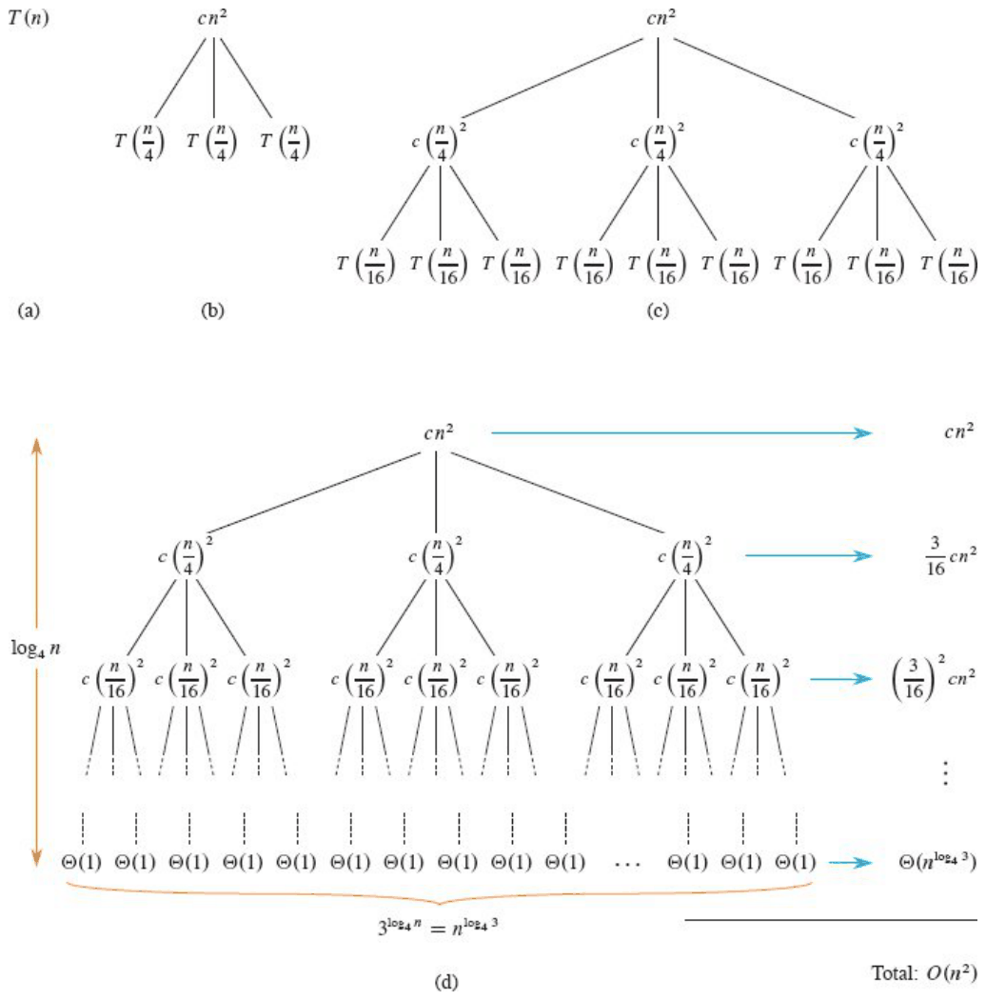
| Depth \(i\) | Nodes节点数 | Size of one node每个节点的规模 | Cost of one node每个节点的代价 | Level cost该层代价 |
|---|---|---|---|---|
| 0 | 1 | \(n\) | \(cn^2\) | \(cn^2\) |
| 1 | 3 | \(n/4\) | \(c(n/4)^2\) | \(\frac3{16}cn^2\) |
| 2 | 9 | \(n/16\) | \(c(n/16)^2\) | \((\frac3{16})^2cn^2\) |
| \(i\) | \(3^i\) | \(n/4^i\) | \(c(n/4^i)^2\) | \((\frac3{16})^icn^2\) |
| \(\log_4 n\) (leaves) | \(n^{\log_4 3}\) | 1 | \(\Theta(1)\) | \(\Theta(n^{\log_4 3})\) |
The level costs form a geometric series with ratio \(3/16<1\), so the root dominates.各层代价构成公比为 \(3/16<1\) 的等比级数，所以根占主导。
\[T(n)=\sum_{i=0}^{\log_4 n-1}\Big(\frac3{16}\Big)^i cn^2+\Theta(n^{\log_4 3})<\frac{1}{1-3/16}\,cn^2+\Theta(n^{\log_4 3})=\frac{16}{13}cn^2+\Theta(n^{\log_4 3})=O(n^2).\]
The root alone costs \(cn^2\), so also \(T(n)=\Omega(n^2)\). Hence \(T(n)=\Theta(n^2)\). To verify, assume \(T(m)\le dm^2\) for \(m<n\). Then \(T(n)\le 3d(n/4)^2+cn^2=(\frac3{16}d+c)n^2\le dn^2\) whenever \(d\ge\frac{16}{13}c\).根本身的代价是 \(cn^2\)，所以也是 \(T(n)=\Omega(n^2)\)。因此 \(T(n)=\Theta(n^2)\)。为了验证，假设对 \(m<n\) 有 \(T(m)\le dm^2\)。则当 \(d\ge\frac{16}{13}c\) 时有 \(T(n)\le 3d(n/4)^2+cn^2=(\frac3{16}d+c)n^2\le dn^2\)。
Step 4: an unbalanced tree第 4 步：不平衡的树
Solve \(T(n)=T(n/3)+T(2n/3)+cn\).求解 \(T(n)=T(n/3)+T(2n/3)+cn\)。

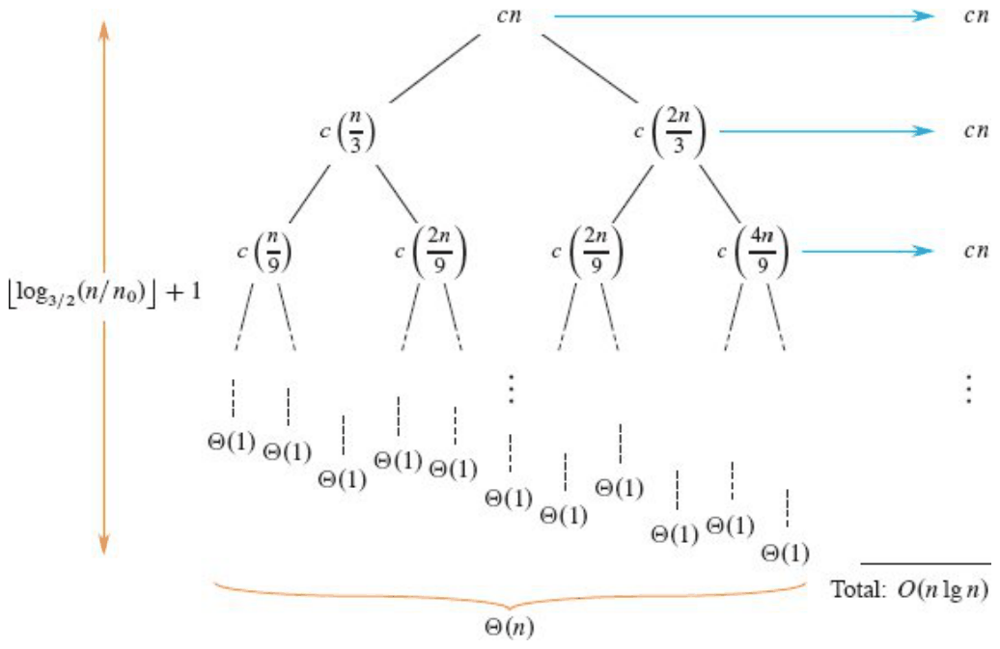
- Height. Going left divides the size by 3 and going right by \(3/2\). The shortest path has \(\log_3 n\) levels. The longest path has \(h\) levels, where \((2/3)^hn\approx1\), that is \(h=\log_{3/2}n\approx1.71\lg n\). Both are \(\Theta(\lg n)\).高度。 向左走，规模除以 3；向右走，规模除以 \(3/2\)。最短路径有 \(\log_3 n\) 层。最长路径有 \(h\) 层，其中 \((2/3)^hn\approx1\)，即 \(h=\log_{3/2}n\approx1.71\lg n\)。两者都是 \(\Theta(\lg n)\)。
- Internal levels. The subproblem sizes on a level add up to at most \(n\), so each level costs at most \(cn\). The first \(\log_3 n\) levels are complete and cost exactly \(cn\). So the internal nodes cost \(\Theta(n\lg n)\).内部各层。 同一层上子问题的规模之和至多为 \(n\)，所以每一层的代价至多为 \(cn\)。前 \(\log_3 n\) 层是满的，代价恰好为 \(cn\)。所以内部节点的总代价为 \(\Theta(n\lg n)\)。
- Leaves. Let \(L(n)\) be their number. It satisfies \(L(n)=L(n/3)+L(2n/3)\), and the hypothesis \(L(n)\le dn\) with a constant \(d\) is consistent: \(dn/3+2dn/3=dn\). So the leaves number \(\Theta(n)\) and cost \(\Theta(n)\). Bounding them by a complete binary tree of the same height gives \(n^{1.71}\), which is far too large.叶子。 设 \(L(n)\) 为叶子的个数。它满足 \(L(n)=L(n/3)+L(2n/3)\)，而假设 \(L(n)\le dn\)（带常数 \(d\)）是相容的：\(dn/3+2dn/3=dn\)。所以叶子个数为 \(\Theta(n)\)，代价为 \(\Theta(n)\)。若用同样高度的满二叉树来界住它们，得到 \(n^{1.71}\)，这个界太大了。
- Result. \(T(n)=\Theta(n\lg n)\). The master method does not cover this recurrence.结论。\(T(n)=\Theta(n\lg n)\)。主方法不适用于该递归式。
Quick rule for linear work. For \(T(n)=T(\alpha_1n)+\dots+T(\alpha_kn)+\Theta(n)\) with constants \(0<\alpha_i<1\), level \(j\) costs at most \((\alpha_1+\dots+\alpha_k)^j\,cn\). Here \(\alpha_i\) is the fraction of the size that piece \(i\) receives, and \(k\) is the number of pieces.线性工作量的快速规则。 对于带常数 \(0<\alpha_i<1\) 的 \(T(n)=T(\alpha_1n)+\dots+T(\alpha_kn)+\Theta(n)\)，第 \(j\) 层的代价至多为 \((\alpha_1+\dots+\alpha_k)^j\,cn\)。这里 \(\alpha_i\) 是第 \(i\) 块分到的规模比例，\(k\) 是块的个数。
| Sum of the fractions比例之和 | Level costs各层代价 | Result结果 | Example例子 |
|---|---|---|---|
| less than 1小于 1 | shrink geometrically按几何级数递减 | \(\Theta(n)\) | \(\frac15+\frac7{10}=\frac9{10}\) |
| equal to 1等于 1 | every complete level costs \(cn\) | \(\Theta(n\lg n)\) | \(\frac13+\frac23=1\) |
| greater than 1大于 1 | grow增长 | polynomially larger than \(n\) |
Practice练习
Q1. (Calculation) For \(T(n)=3T(n/4)+n^2\) with \(T(1)=1\) and \(n=64\), list the number of nodes and the cost of every level and compute \(T(64)\). Compare with \(\frac{16}{13}n^2\).Q1.（计算）对 \(T(n)=3T(n/4)+n^2\)（其中 \(T(1)=1\) 且 \(n=64\)），列出每一层的结点数与代价，并计算 \(T(64)\)。与 \(\frac{16}{13}n^2\) 比较。
Answer
Depth 0: 1 node of size 64, cost \(64^2=4096\). Depth 1: 3 nodes of size 16, cost \(3\cdot16^2=768\). Depth 2: 9 nodes of size 4, cost \(9\cdot4^2=144\). Depth 3 (leaves): 27 nodes of size 1, cost \(27\cdot1=27\). So \(T(64)=4096+768+144+27=5035\). Check by direct recursion: \(T(4)=3\cdot1+16=19\), \(T(16)=3\cdot19+256=313\), \(T(64)=3\cdot313+4096=5035\). The internal levels cost \(5008<\frac{16}{13}\cdot4096\approx5041\); each level costs \(3/16\) of the previous one.深度 0：1 个规模为 64 的结点，代价为 \(64^2=4096\)。深度 1：3 个规模为 16 的结点，代价为 \(3\cdot16^2=768\)。深度 2：9 个规模为 4 的结点，代价为 \(9\cdot4^2=144\)。深度 3（叶结点）：27 个规模为 1 的结点，代价为 \(27\cdot1=27\)。因此 \(T(64)=4096+768+144+27=5035\)。用直接递归检验：\(T(4)=3\cdot1+16=19\)、\(T(16)=3\cdot19+256=313\)、\(T(64)=3\cdot313+4096=5035\)。内部各层的代价为 \(5008<\frac{16}{13}\cdot4096\approx5041\)；每一层的代价是前一层的 \(3/16\)。
Q2. (Guess a bound) Use a recursion tree to guess a tight bound for (a) \(T(n)=T(n/2)+n^3\) and (b) \(T(n)=4T(n/3)+n\).Q2.（猜测界）用递归树猜测（a）\(T(n)=T(n/2)+n^3\) 与（b）\(T(n)=4T(n/3)+n\) 的紧确界。
Answer
(a) Level \(i\) has one node of cost \((n/2^i)^3=n^3/8^i\): a geometric series with ratio \(1/8\), so the root dominates and \(T(n)=\Theta(n^3)\). (b) Level \(i\) has \(4^i\) nodes of cost \(n/3^i\), so the level cost is \((4/3)^in\) and grows geometrically. The height is \(\log_3 n\) and there are \(4^{\log_3 n}=n^{\log_3 4}\) leaves. The leaves dominate: \(T(n)=\Theta(n^{\log_3 4})\approx\Theta(n^{1.26})\). Both guesses are then verified by substitution.（a）第 \(i\) 层有一个结点，其代价为 \((n/2^i)^3=n^3/8^i\)：这是公比为 \(1/8\) 的几何级数，因此根占主导，并且 \(T(n)=\Theta(n^3)\)。（b）第 \(i\) 层有 \(4^i\) 个结点，每个代价为 \(n/3^i\)，因此该层代价为 \((4/3)^in\)，并且按几何级数增长。树高为 \(\log_3 n\)，并且有 \(4^{\log_3 n}=n^{\log_3 4}\) 个叶结点。叶结点占主导：\(T(n)=\Theta(n^{\log_3 4})\approx\Theta(n^{1.26})\)。随后用代入法验证这两个猜测。
Q3. (Quick rule) Solve (a) \(T(n)=T(n/2)+T(n/4)+T(n/8)+n\) and (b) \(T(n)=T(n/10)+T(9n/10)+n\).Q3.（速算规则）求解（a）\(T(n)=T(n/2)+T(n/4)+T(n/8)+n\) 与（b）\(T(n)=T(n/10)+T(9n/10)+n\)。
Answer
(a) The fractions sum to \(\frac12+\frac14+\frac18=\frac78<1\), so level \(j\) costs at most \((7/8)^jn\): a decreasing geometric series dominated by the root, \(T(n)=\Theta(n)\). (b) The fractions sum to 1: every complete level costs exactly \(n\) and the tree has \(\Theta(\lg n)\) levels (the shortest path has \(\log_{10}n\), the longest \(\log_{10/9}n\)), so \(T(n)=\Theta(n\lg n)\).（a）这些分数之和为 \(\frac12+\frac14+\frac18=\frac78<1\)，因此第 \(j\) 层的代价至多为 \((7/8)^jn\)：这是一个由根主导的递减几何级数，\(T(n)=\Theta(n)\)。（b）这些分数之和为 1：每个完整层的代价恰好为 \(n\)，树有 \(\Theta(\lg n)\) 层（最短路径有 \(\log_{10}n\)，最长路径有 \(\log_{10/9}n\)），因此 \(T(n)=\Theta(n\lg n)\)。
The master method ★★★主方法
Goal. Solve \(T(n)=aT(n/b)+f(n)\) by naming the watershed function, the case and the result, check the regularity condition in case 3, and recognise when the theorem does not apply.目标。 求解 \(T(n)=aT(n/b)+f(n)\)：写出分水岭函数、情形和结果；在情形 3 中检验正则条件；并认出定理何时不适用。
In words: the master method compares the cost of dividing and combining with the number of leaves; whichever grows faster decides the answer.用文字表述：主方法比较分解与合并的代价和叶子的个数；哪一个增长更快，哪一个就决定答案。
The recurrence \(T(n)=aT(n/b)+f(n)\) with constants \(a>0\) and \(b>1\) is a master recurrence. The function \(f(n)\) is the driving function（驱动函数）. The function \(n^{\log_b a}\) is the watershed function（分水岭函数）, the number of leaves of the recursion tree (Section 3.3).带有常数 \(a>0\) 和 \(b>1\) 的递归式 \(T(n)=aT(n/b)+f(n)\) 是主递归式。函数 \(f(n)\) 是驱动函数。函数 \(n^{\log_b a}\) 是分水岭函数，即递归树的叶子个数（见第 3.3 节）。
| Case情形 | \(f(n)\) compared with \(n^{\log_b a}\) | Level costs from root to leaves从根到叶各层的代价 | Dominant part占主导的部分 | \(T(n)\) |
|---|---|---|---|---|
| 1 | polynomially smaller多项式意义上更小 | grow geometrically按几何级数增长 | leaves叶结点 | \(\Theta(n^{\log_b a})\) |
| 2 | equal up to \(\lg^k n\), \(k\ge0\) | about equal, \(\Theta(n^{\log_b a}\lg^k n)\) each, over \(\Theta(\lg n)\) levels大致相等，每层 \(\Theta(n^{\log_b a}\lg^k n)\)，共 \(\Theta(\lg n)\) 层 | all levels所有层 | \(\Theta(n^{\log_b a}\lg^{k+1}n)\) |
| 3 | polynomially larger, regular多项式意义上更大，满足正则条件 | shrink geometrically按几何级数递减 | root根 | \(\Theta(f(n))\) |
Case 2 with \(k=0\) is the common one: \(f(n)=\Theta(n^{\log_b a})\) gives \(\Theta(n^{\log_b a}\lg n)\), because each of the \(\Theta(\lg n)\) levels costs the same. The regularity condition holds automatically for \(f(n)=n^p\lg^k n\) in case 3, since \(a(n/b)^p/n^p=a/b^p<1\) when \(p>\log_b a\).情形 2，且 \(k=0\) 是最常见的情形：\(f(n)=\Theta(n^{\log_b a})\) 得到 \(\Theta(n^{\log_b a}\lg n)\)，因为 \(\Theta(\lg n)\) 层中每一层的代价都相同。对于 \(f(n)=n^p\lg^k n\)，情形 3 的正则条件会自动成立，因为当 \(p>\log_b a\) 时有 \(a(n/b)^p/n^p=a/b^p<1\)。
Step 1: how to do it by hand第 1 步：手工做法
- Read off \(a\), \(b\) and \(f(n)\).读出 \(a\)、\(b\) 与 \(f(n)\)。
- Compute the watershed function \(n^{\log_b a}\) and simplify the exponent.计算分水岭函数 \(n^{\log_b a}\)，并化简其指数。
- Compare \(f(n)\) with it: polynomially smaller, equal up to \(\lg^k n\), polynomially larger, or none of these.将 \(f(n)\) 与之比较：在多项式意义上更小、在 \(\lg^k n\) 意义下相等、在多项式意义上更大，或都不是。
- In case 3 check the regularity condition in one line.在情形 3 中，用一行检验正则条件。
- Write the case, the constant (\(\epsilon\) or \(k\)) and the result.写出情形、常数（\(\epsilon\) 或 \(k\)）和结果。
Solved examples. Each row lists the watershed function, the comparison, the case and the result.已解的例子。每一行列出分水岭函数、比较结果、情形和结论。
| Recurrence递归式 | \(n^{\log_b a}\) | Comparison比较 | Case情形 | \(T(n)\) |
|---|---|---|---|---|
| \(9T(n/3)+n\) | \(n^2\) | \(n=O(n^{2-\epsilon})\), \(\epsilon\le1\) | 1 | \(\Theta(n^2)\) |
| \(T(2n/3)+1\) (\(a=1\), \(b=3/2\)) | \(n^0=1\) | \(1=\Theta(1\cdot\lg^0 n)\) | 2, \(k=0\) | \(\Theta(\lg n)\) |
| \(3T(n/4)+n\lg n\) | \(n^{\log_4 3}\approx n^{0.79}\) | \(n\lg n=\Omega(n^{0.79+\epsilon})\), \(\epsilon<0.2\); regularity \(3\cdot\frac n4\lg\frac n4\le\frac34n\lg n\) | 3 | \(\Theta(n\lg n)\) |
| \(2T(n/2)+n\lg n\) | \(n\) | \(n\lg n=\Theta(n\lg^1 n)\) | 2, \(k=1\) | \(\Theta(n\lg^2 n)\) |
| \(2T(n/2)+\Theta(n)\) (merge sort) | \(n\) | \(\Theta(n)\) | 2, \(k=0\) | \(\Theta(n\lg n)\) |
| \(8T(n/2)+\Theta(1)\) (simple matrix multiplication) | \(n^3\) | \(\Theta(1)=O(n^{3-\epsilon})\), any \(\epsilon<3\) | 1 | \(\Theta(n^3)\) |
| \(7T(n/2)+\Theta(n^2)\) (Strassen) | \(n^{\lg 7}\approx n^{2.81}\) | \(n^2=O(n^{\lg7-0.8})\) | 1 | \(\Theta(n^{\lg 7})\) |
| \(4T(n/2)+n^{1.99}\) | \(n^2\) | \(n^{1.99}=O(n^{2-0.01})\) | 1 | \(\Theta(n^2)\) |
Step 2: when the master method does not apply第 2 步：主方法不适用的情况
- A gap between cases 1 and 2. \(f(n)\) is smaller than the watershed function but not polynomially smaller (the symbol \(\omega\) means strictly larger order of growth). Example: \(T(n)=2T(n/2)+n/\lg n\). Case 1 fails because \(n/\lg n=\omega(n^{1-\epsilon})\) for every \(\epsilon>0\). Case 2 fails because \(n/\lg n=\Theta(n\lg^{-1}n)\) has \(k=-1<0\).情形 1 与情形 2 之间的空档。 \(f(n)\) 比分水岭函数小，但在多项式意义上并不更小（符号 \(\omega\) 表示增长阶严格更大）。例如：\(T(n)=2T(n/2)+n/\lg n\)。情形 1 不成立，因为对每个 \(\epsilon>0\) 都有 \(n/\lg n=\omega(n^{1-\epsilon})\)。情形 2 不成立，因为 \(n/\lg n=\Theta(n\lg^{-1}n)\) 含有 \(k=-1<0\)。
- A gap between cases 2 and 3. \(f(n)\) is larger than \(n^{\log_b a}\lg^k n\) for every \(k\) but not polynomially larger.情形 2 与情形 3 之间的空档。 对每个 \(k\)，\(f(n)\) 都大于 \(n^{\log_b a}\lg^k n\)，但在多项式意义上并不更大。
- Regularity fails in case 3.情形 3 中正则条件失效。
- Other forms. \(T(n-1)\), \(T(\sqrt n)\), unequal sizes such as \(T(n/3)+T(2n/3)\), and a number of subproblems that depends on \(n\) (Section 3.5).其他形式。 \(T(n-1)\)、\(T(\sqrt n)\)、规模不等的情形（例如 \(T(n/3)+T(2n/3)\)），以及子问题个数依赖于 \(n\) 的情形（见第 3.5 节）。
For a gap at \(k=-1\), case 2 extends to any real \(k\). For \(k>-1\) the answer is \(\Theta(n^{\log_b a}\lg^{k+1}n)\). For \(k=-1\) it is \(\Theta(n^{\log_b a}\lg\lg n)\). For \(k<-1\) it is \(\Theta(n^{\log_b a})\). So \(2T(n/2)+n/\lg n\) is \(\Theta(n\lg\lg n)\).对于 \(k=-1\) 处的空档，情形 2 可以推广到任意实数 \(k\)。对于 \(k>-1\)，答案是 \(\Theta(n^{\log_b a}\lg^{k+1}n)\)。对于 \(k=-1\)，答案是 \(\Theta(n^{\log_b a}\lg\lg n)\)。对于 \(k<-1\)，答案是 \(\Theta(n^{\log_b a})\)。所以 \(2T(n/2)+n/\lg n\) 是 \(\Theta(n\lg\lg n)\)。
Practice练习
Q1. (Calculation) Solve with the master method: (a) \(T(n)=2T(n/4)+1\); (b) \(T(n)=2T(n/4)+\sqrt n\); (c) \(T(n)=2T(n/4)+\sqrt n\lg^2 n\); (d) \(T(n)=2T(n/4)+n\); (e) \(T(n)=2T(n/4)+n^2\).Q1.（计算）用主方法求解：（a）\(T(n)=2T(n/4)+1\)；（b）\(T(n)=2T(n/4)+\sqrt n\)；（c）\(T(n)=2T(n/4)+\sqrt n\lg^2 n\)；（d）\(T(n)=2T(n/4)+n\)；（e）\(T(n)=2T(n/4)+n^2\)。
Answer
Here \(a=2\), \(b=4\) and the watershed function is \(n^{\log_4 2}=n^{1/2}\).这里 \(a=2\)、\(b=4\)，分水岭函数为 \(n^{\log_4 2}=n^{1/2}\)。
- (a) \(f=1=O(n^{1/2-\epsilon})\): case 1, \(T(n)=\Theta(\sqrt n)\).（a）\(f=1=O(n^{1/2-\epsilon})\)：情形 1，\(T(n)=\Theta(\sqrt n)\)。
- (b) \(f=\sqrt n=\Theta(n^{1/2}\lg^0 n)\): case 2 with \(k=0\), \(T(n)=\Theta(\sqrt n\lg n)\).（b）\(f=\sqrt n=\Theta(n^{1/2}\lg^0 n)\)：情形 2（\(k=0\)，\(T(n)=\Theta(\sqrt n\lg n)\)）。
- (c) \(f=\sqrt n\lg^2 n\): case 2 with \(k=2\), \(T(n)=\Theta(\sqrt n\lg^3 n)\).（c）\(f=\sqrt n\lg^2 n\)：情形 2（\(k=2\)，\(T(n)=\Theta(\sqrt n\lg^3 n)\)）。
- (d) \(f=n=\Omega(n^{1/2+\epsilon})\); regularity \(2(n/4)=\frac12n\) with \(c=\frac12\): case 3, \(T(n)=\Theta(n)\).（d）\(f=n=\Omega(n^{1/2+\epsilon})\)；正则条件 \(2(n/4)=\frac12n\)（取 \(c=\frac12\)）：情形 3，\(T(n)=\Theta(n)\)。
- (e) \(f=n^2\); regularity \(2(n/4)^2=\frac18n^2\) with \(c=\frac18\): case 3, \(T(n)=\Theta(n^2)\).（e）\(f=n^2\)；正则条件 \(2(n/4)^2=\frac18n^2\)（取 \(c=\frac18\)）：情形 3，\(T(n)=\Theta(n^2)\)。
Q2. (Explain) Why can the master theorem not solve \(T(n)=2T(n/2)+n/\lg n\)? What is the solution?Q2.（解释）为什么主定理无法求解 \(T(n)=2T(n/2)+n/\lg n\)？其解是什么？
Answer
Here \(n^{\log_2 2}=n\). The driving function \(n/\lg n\) is smaller than \(n\) but only by a factor \(\lg n\), which is not polynomial, so case 1 fails. Case 2 would need \(n/\lg n=\Theta(n\lg^k n)\) with \(k\ge0\), but \(k=-1\). Case 3 fails because \(n/\lg n\) is smaller than \(n\). The extended case 2 with \(k=-1\) (or the Akra–Bazzi integral \(\int_1^n\frac{du}{u\lg u}=\Theta(\lg\lg n)\)) gives \(T(n)=\Theta(n\lg\lg n)\).这里 \(n^{\log_2 2}=n\)。驱动函数 \(n/\lg n\) 小于 \(n\)，但只相差一个因子 \(\lg n\)，而该因子不是多项式的，因此情形 1 不适用。情形 2 需要 \(n/\lg n=\Theta(n\lg^k n)\) 且 \(k\ge0\)，但 \(k=-1\) 并不成立。情形 3 不适用，因为 \(n/\lg n\) 小于 \(n\)。扩展的情形 2（取 \(k=-1\)，或 Akra–Bazzi 积分 \(\int_1^n\frac{du}{u\lg u}=\Theta(\lg\lg n)\)）给出 \(T(n)=\Theta(n\lg\lg n)\)。
Q3. (True or false, justify) "\(T(n)=2T(n/2)+n\lg n\) is \(\Theta(n\lg n)\) by case 3."Q3.（判断对错，并说明理由）“由情形 3，\(T(n)=2T(n/2)+n\lg n\) 为 \(\Theta(n\lg n)\)。”
Answer
False. \(n\lg n\) is larger than \(n\) but not polynomially larger, so case 3 does not apply. It is case 2 with \(k=1\): \(T(n)=\Theta(n\lg^2 n)\). The solution \(\Theta(n\lg n)\) is too small.不成立。\(n\lg n\) 大于 \(n\)，但并非在多项式意义上更大，因此情形 3 不适用。它属于情形 2，其中 \(k=1\)：\(T(n)=\Theta(n\lg^2 n)\)。解 \(\Theta(n\lg n)\) 偏小。
Solving recurrences in practice ★★实践中求解递归式
Goal. Choose the right method for a recurrence of any form, and solve subtracted-argument and square-root recurrences.目标。 为任意形式的递归式选择合适的方法，并求解减法型与平方根型递归式。
| Form of the recurrence递归式的形式 | Method方法 |
|---|---|
| \(aT(n/b)+f(n)\) | master theorem (Section 3.4); for a gap, extended case 2 or Akra–Bazzi主定理（第 3.4 节）；遇到间隙时，用扩展的情形 2 或 Akra–Bazzi 方法 |
| \(T(n-1)+f(n)\), \(aT(n-b)+f(n)\) | expand (telescoping), or substitution展开（逐项相消），或代入法 |
| \(T(\sqrt n)\) and similar | change of variables, then one of the above变量替换，然后用上述方法之一 |
| unequal sizes \(T(\alpha n)+T(\beta n)+f(n)\) | recursion tree and substitution, or Akra–Bazzi递归树与代入法，或 Akra–Bazzi 方法 |
| any guess from a tree or a heuristic由树或启发式得到的任何猜测 | substitution proves it用代入法证明 |
In the table, \(\alpha\) and \(\beta\) are constants between 0 and 1.表中，\(\alpha\) 和 \(\beta\) 是介于 0 和 1 之间的常数。
Subtracted arguments: telescoping减法型自变量：逐项相消
In words: when the size shrinks by a constant, expand and add; when there are \(a\ge2\) calls, the count multiplies at every level.用文字表述：当规模减去一个常数时，展开并相加；当每次有 \(a\ge2\) 次调用时，每一层的调用数都会相乘。
- \(T(n)=T(n-1)+f(n)\): \(f=1\) gives \(\Theta(n)\), \(f=n\) gives \(\Theta(n^2)\), \(f=\lg n\) gives \(\Theta(n\lg n)\), \(f=1/n\) gives \(\Theta(\lg n)\).\(T(n)=T(n-1)+f(n)\)：\(f=1\) 得到 \(\Theta(n)\)，\(f=n\) 得到 \(\Theta(n^2)\)，\(f=\lg n\) 得到 \(\Theta(n\lg n)\)，\(f=1/n\) 得到 \(\Theta(\lg n)\)。
- Subtracting 2 instead of 1 halves the number of terms: \(T(n)=T(n-2)+n^2\) is \(\Theta(n^3)\).减去 2 而不是 1，项数减半：\(T(n)=T(n-2)+n^2\) 是 \(\Theta(n^3)\)。
- \(T(n)=aT(n-b)+f(n)\) with \(a\ge2\) is \(\Theta(a^{n/b})\) for polynomial \(f\). Examples: \(2T(n-1)+1\) gives \(2^n-1\) and \(3T(n-1)+1\) gives \((3^n-1)/2\).对多项式 \(f\)，\(T(n)=aT(n-b)+f(n)\) 配合 \(a\ge2\) 得到 \(\Theta(a^{n/b})\)。例如：\(2T(n-1)+1\) 得到 \(2^n-1\)，\(3T(n-1)+1\) 得到 \((3^n-1)/2\)。
Square roots: change of variables平方根型：换元
In words: rename the size so that the square root becomes a halving.用文字表述：重新命名规模，使平方根变成减半。
For \(T(n)=2T(\sqrt n)+\lg n\) let \(m=\lg n\) (so \(n=2^m\)) and define a new function \(S\) by \(S(m)=T(2^m)\). Then \(T(\sqrt n)=T(2^{m/2})=S(m/2)\) and对 \(T(n)=2T(\sqrt n)+\lg n\)，令 \(m=\lg n\)（于是 \(n=2^m\)），并用 \(S(m)=T(2^m)\) 定义新函数 \(S\)。则 \(T(\sqrt n)=T(2^{m/2})=S(m/2)\)，且
\[S(m)=2S(m/2)+m,\]
the merge-sort recurrence. So \(S(m)=\Theta(m\lg m)\) and \(T(n)=\Theta(\lg n\lg\lg n)\). In the same way \(T(n)=T(\sqrt n)+1\) becomes \(S(m)=S(m/2)+1=\Theta(\lg m)\), so \(T(n)=\Theta(\lg\lg n)\).这就是归并排序的递归式。所以 \(S(m)=\Theta(m\lg m)\) 与 \(T(n)=\Theta(\lg n\lg\lg n)\)。同理，\(T(n)=T(\sqrt n)+1\) 变为 \(S(m)=S(m/2)+1=\Theta(\lg m)\)，所以 \(T(n)=\Theta(\lg\lg n)\)。
Solved recurrences已解的递归式
All are algorithmic. "Case" refers to the master theorem of Section 3.4.这些都是算法型递归式。“情形”指第 3.4 节的主定理。
| Recurrence递归式 | Method方法 | Solution解 |
|---|---|---|
| \(2T(n/2)+1\) | case 1情形 1 | \(\Theta(n)\) |
| \(4T(n/2)+n\) | case 1情形 1 | \(\Theta(n^2)\) |
| \(3T(n/2)+n\) | case 1 (\(\lg3\approx1.585\)) | \(\Theta(n^{\lg 3})\) |
| \(5T(n/3)+n\lg n\) | case 1 (\(\log_3 5\approx1.465\)) | \(\Theta(n^{\log_3 5})\) |
| \(7T(n/2)+n^2\lg n\) | case 1情形 1 | \(\Theta(n^{\lg 7})\) |
| \(2T(n/4)+\sqrt n\) | case 2, \(k=0\) | \(\Theta(\sqrt n\lg n)\) |
| \(4T(n/2)+n^2\) | case 2, \(k=0\) | \(\Theta(n^2\lg n)\) |
| \(16T(n/4)+n^2\) | case 2, \(k=0\) | \(\Theta(n^2\lg n)\) |
| \(4T(n/2)+n^2\lg n\) | case 2, \(k=1\) | \(\Theta(n^2\lg^2 n)\) |
| \(2T(n/2)+n^2\) | case 3 (\(2(n/2)^2=\frac12n^2\)) | \(\Theta(n^2)\) |
| \(4T(n/2)+n^3\) | case 3 (\(c=\frac12\)) | \(\Theta(n^3)\) |
| \(T(n/2)+n\) | case 3 (\(a=1\), watershed \(1\), \(c=\frac12\)) | \(\Theta(n)\) |
| \(T(8n/11)+n\) | case 3 (\(c=\frac8{11}\)) | \(\Theta(n)\) |
| \(T(n-1)+n\) | telescoping, \(\sum i\) | \(\Theta(n^2)\) |
| \(T(n-2)+n^2\) | telescoping逐项相消 | \(\Theta(n^3)\) |
| \(T(n-1)+\lg n\) | telescoping, \(\lg n!\) | \(\Theta(n\lg n)\) |
| \(2T(n-1)+1\) | substitution with \(c2^n-d\) | \(\Theta(2^n)\) |
| \(T(n/3)+T(2n/3)+n\) | recursion tree and substitution递归树与代入法 | \(\Theta(n\lg n)\) |
| \(T(n/2)+T(n/4)+T(n/8)+n\) | tree, fractions sum to \(\frac78\) | \(\Theta(n)\) |
| \(2T(\sqrt n)+\lg n\) | change of variables变量替换 | \(\Theta(\lg n\lg\lg n)\) |
| \(2T(n/2+17)+n\) | substitution with a shifted hypothesis平移假设后的代入法 | \(\Theta(n\lg n)\) |
| \(2T(n/2)+n/\lg n\) | extended case 2 or Akra–Bazzi扩展的情形 2 或 Akra–Bazzi 方法 | \(\Theta(n\lg\lg n)\) |
| \(2T(n/2)+n\lg\lg n\) | Akra–BazziAkra–Bazzi 方法 | \(\Theta(n\lg n\lg\lg n)\) |
Practice练习
Q1. (Calculation) Solve and name the method: (a) \(T(n)=8T(n/3)+n^2\); (b) \(T(n)=3T(n/3)+n/\lg n\); (c) \(T(n)=T(n-1)+1/n\); (d) \(T(n)=T(n-2)+1/\lg n\).Q1.（计算）求解并指出所用方法：（a）\(T(n)=8T(n/3)+n^2\)；（b）\(T(n)=3T(n/3)+n/\lg n\)；（c）\(T(n)=T(n-1)+1/n\)；（d）\(T(n)=T(n-2)+1/\lg n\)。
Answer
(a) Master method: \(a=8\), \(b=3\), watershed \(n^{\log_3 8}\approx n^{1.89}\); \(n^2=\Omega(n^{1.89+\epsilon})\) with \(\epsilon<0.1\); regularity \(8(n/3)^2=\frac89n^2\). Case 3: \(\Theta(n^2)\). (b) \(a=b=3\): watershed \(n\), and \(f=n\lg^{-1}n\) has \(k=-1\). The basic theorem does not apply; the extended case 2 gives \(\Theta(n\lg\lg n)\). (c) Telescoping: \(T(n)=T(0)+\sum_{i=1}^{n}\frac1i=\Theta(\lg n)\) (harmonic sum). (d) Telescoping: \(T(n)\) is the sum of \(1/\lg i\) over \(i=n,n-2,\dots\), about \(n/2\) terms. The roughly \(n/4\) terms with \(i>n/2\) are each \(\ge1/\lg n\), and all but \(O(\sqrt n)\) terms are \(\le2/\lg n\) (because \(i\ge\sqrt n\) gives \(\lg i\ge\frac12\lg n\)). So \(T(n)=\Theta(n/\lg n)\).（a）主方法：\(a=8\)、\(b=3\)，分水岭函数 \(n^{\log_3 8}\approx n^{1.89}\)；\(n^2=\Omega(n^{1.89+\epsilon})\)（取 \(\epsilon<0.1\)）；正则条件 \(8(n/3)^2=\frac89n^2\)。情形 3：\(\Theta(n^2)\)。（b）\(a=b=3\)：分水岭函数为 \(n\)，且 \(f=n\lg^{-1}n\) 具有 \(k=-1\)。主定理（基本形式）不适用；扩展的情形 2 给出 \(\Theta(n\lg\lg n)\)。（c）逐项相消：\(T(n)=T(0)+\sum_{i=1}^{n}\frac1i=\Theta(\lg n)\)（调和和式）。（d）逐项相消：\(T(n)\) 是 \(1/\lg i\) 在 \(i=n,n-2,\dots\) 上的和，共约 \(n/2\) 项。其中约 \(n/4\) 项（满足 \(i>n/2\)）各为 \(\ge1/\lg n\)，而除 \(O(\sqrt n)\) 项外的所有项都为 \(\le2/\lg n\)（因为 \(i\ge\sqrt n\) 给出 \(\lg i\ge\frac12\lg n\)）。因此 \(T(n)=\Theta(n/\lg n)\)。
Q2. (Beyond the pages: dividing out a factor) Solve \(T(n)=\sqrt n\,T(\sqrt n)+n\).Q2.（超出教材范围：约去一个因子）求解 \(T(n)=\sqrt n\,T(\sqrt n)+n\)。
Answer
Divide by \(n\) and let \(U(n)=T(n)/n\): \(U(n)=U(\sqrt n)+1\). With \(m=\lg n\) and \(V(m)=U(2^m)\) this is \(V(m)=V(m/2)+1\), the binary-search recurrence, so \(V(m)=\Theta(\lg m)\). Hence \(U(n)=\Theta(\lg\lg n)\) and \(T(n)=\Theta(n\lg\lg n)\).两边除以 \(n\)，并令 \(U(n)=T(n)/n\)：\(U(n)=U(\sqrt n)+1\)。取 \(m=\lg n\) 与 \(V(m)=U(2^m)\) 时，它就是 \(V(m)=V(m/2)+1\)，即二分查找的递归式，因此 \(V(m)=\Theta(\lg m)\)。由此得到 \(U(n)=\Theta(\lg\lg n)\) 与 \(T(n)=\Theta(n\lg\lg n)\)。
思路：先除以 \(n\) 去掉系数 \(\sqrt n\)，再令 \(m=\lg n\)。
Divide-and-conquer matrix multiplication ★★分治矩阵乘法
Goal. State the recurrence of the simple recursive matrix multiplication, solve it, and explain why it is no faster than three loops.目标。 写出简单递归矩阵乘法的递归式，求解它，并解释为什么它并不比三重循环更快。
In words: the straightforward method uses three nested loops and takes \(\Theta(n^3)\).用文字表述：直接的方法使用三重嵌套循环，时间为 \(\Theta(n^3)\)。
MATRIX-MULTIPLY(A, B, C, n)
1 for i = 1 to n // compute entries in each of n rows
2 for j = 1 to n // compute n entries in row i
3 for k = 1 to n
4 c_ij = c_ij + a_ik · b_kj // add in another term of c_ij
The three loops run \(n\) times each and line 4 takes constant time, so the running time is \(\Theta(n^3)\).三重循环各运行 \(n\) 次，第 4 行取常数时间，所以运行时间为 \(\Theta(n^3)\)。
The simple recursive algorithm简单的递归算法
In words: cut each matrix into four blocks, multiply blocks recursively (eight products), add the results into \(C\).用文字表述：把每个矩阵切成四块，对块递归地做乘法（八次乘积），再把结果加到 \(C\) 中。
Assume \(n\) is a power of 2.假设 \(n\) 是 2 的幂。
Partitioning by index calculations（下标计算）only records where a submatrix lies in the original, so it costs \(\Theta(1)\). Copying the blocks costs \(\Theta(n^2)\) per call.用下标计算来划分，只是记录子矩阵在原矩阵中的位置，所以代价为 \(\Theta(1)\)。复制各块的代价是每次调用 \(\Theta(n^2)\)。
MATRIX-MULTIPLY-RECURSIVE(A, B, C, n)
1 if n == 1
2 // Base case.
3 c11 = c11 + a11 · b11
4 return
5 // Divide.
6 partition A, B, and C into n/2 × n/2 submatrices
A11, A12, A21, A22; B11, B12, B21, B22;
and C11, C12, C21, C22; respectively
7 // Conquer.
8 MATRIX-MULTIPLY-RECURSIVE(A11, B11, C11, n/2)
9 MATRIX-MULTIPLY-RECURSIVE(A11, B12, C12, n/2)
10 MATRIX-MULTIPLY-RECURSIVE(A21, B11, C21, n/2)
11 MATRIX-MULTIPLY-RECURSIVE(A21, B12, C22, n/2)
12 MATRIX-MULTIPLY-RECURSIVE(A12, B21, C11, n/2)
13 MATRIX-MULTIPLY-RECURSIVE(A12, B22, C12, n/2)
14 MATRIX-MULTIPLY-RECURSIVE(A22, B21, C21, n/2)
15 MATRIX-MULTIPLY-RECURSIVE(A22, B22, C22, n/2)
Lines 8 to 11 compute the first product of each block equation. Lines 12 to 15 add in the second product, directly into \(C\). The base case is \(\Theta(1)\). Partitioning is \(\Theta(1)\), the eight calls cost \(8T(n/2)\), and there is no combine step. So第 8 至 11 行计算每个块等式中的第一个乘积。第 12 至 15 行把第二个乘积直接加到 \(C\) 中。基本情形是 \(\Theta(1)\)。划分的代价是 \(\Theta(1)\)，八次递归调用的代价是 \(8T(n/2)\)，而且没有合并步骤。所以
\[T(n)=8T(n/2)+\Theta(1).\]
Master method: \(a=8\), \(b=2\), watershed function \(n^{\lg 8}=n^3\), and \(\Theta(1)=O(n^{3-\epsilon})\). Case 1 gives \(T(n)=\Theta(n^3)\).主方法：\(a=8\)、\(b=2\)，分水岭函数为 \(n^{\lg 8}=n^3\)，且 \(\Theta(1)=O(n^{3-\epsilon})\)。情形 1 给出 \(T(n)=\Theta(n^3)\)。
Why does divide-and-conquer not help? The tree has 8 children per node, not 2. It has \(8^{\lg n}=n^3\) leaves (merge sort has \(2^{\lg n}=n\)), and the leaves dominate.为什么分治在这里没有帮助？这棵树每个节点有 8 个子节点，而不是 2 个。它有 \(8^{\lg n}=n^3\) 个叶子（归并排序有 \(2^{\lg n}=n\) 个），而叶子占主导。
Practice练习
Q1. (Recurrence) Suppose MATRIX-MULTIPLY-RECURSIVE partitions by copying the blocks into new arrays (and copies the results back) instead of using index calculations. How does the recurrence change, and what is its solution?Q1.（递归式）假设 MATRIX-MULTIPLY-RECURSIVE 通过将子块复制到新数组中来划分（并把结果复制回来），而不使用下标计算。递归式会如何变化？其解是什么？
Answer
Partitioning and copying back now cost \(\Theta(n^2)\) per call, so \(T(n)=8T(n/2)+\Theta(n^2)\). The watershed function is \(n^3\) and \(n^2=O(n^{3-1})\), so case 1 still gives \(T(n)=\Theta(n^3)\): the choice does not matter for multiplication.现在，划分与复制回来的代价为每次调用 \(\Theta(n^2)\)，因此 \(T(n)=8T(n/2)+\Theta(n^2)\)。分水岭函数为 \(n^3\)，并且 \(n^2=O(n^{3-1})\)，因此情形 1 仍给出 \(T(n)=\Theta(n^3)\)：对于乘法，这一选择无关紧要。
Q2. (Compare) A recursive matrix addition splits two \(n\times n\) matrices into four blocks each and adds corresponding blocks recursively. Give and solve the recurrence when partitioning uses (a) index calculations and (b) copying. What does the difference show?Q2.（比较）递归矩阵加法将两个 \(n\times n\) 矩阵各划分为四个子块，并对对应的子块递归相加。当划分分别采用（a）下标计算与（b）复制时，给出并求解递归式。这一差别说明了什么？
Answer
(a) \(T(n)=4T(n/2)+\Theta(1)\): watershed \(n^2\), case 1, \(T(n)=\Theta(n^2)\). (b) \(T(n)=4T(n/2)+\Theta(n^2)\): case 2 with \(k=0\), \(T(n)=\Theta(n^2\lg n)\). Copying makes the recursive addition a factor \(\lg n\) slower than a double loop. For multiplication the leaves dominate, so the partitioning cost is irrelevant; for addition it is not.（a）\(T(n)=4T(n/2)+\Theta(1)\)：分水岭函数 \(n^2\)，情形 1，\(T(n)=\Theta(n^2)\)。（b）\(T(n)=4T(n/2)+\Theta(n^2)\)：情形 2（\(k=0\)，\(T(n)=\Theta(n^2\lg n)\)）。复制使递归加法比双重循环慢 \(\lg n\) 倍。对于乘法，叶结点占主导，因此划分的代价无关紧要；而对于加法则不然。
Strassen's algorithm ★★Strassen 算法
Goal. State Strassen's recurrence and running time, explain why it beats \(\Theta(n^3)\), and multiply two \(2\times2\) matrices with it by hand.目标。 写出 Strassen 算法的递归式和运行时间，解释它为什么快于 \(\Theta(n^3)\)，并用它手工计算两个 \(2\times2\) 矩阵的乘积。
In words: Strassen = use 7 recursive multiplications instead of 8, and pay with a constant number of extra matrix additions.用文字表述：Strassen 算法 = 用 7 次递归乘法代替 8 次，代价是增加常数次矩阵加法。
The simple recursion is as slow as the triple loop because its tree is too bushy. Strassen's algorithm makes the tree less bushy. The extra additions of \(\frac n2\times\frac n2\) matrices cost only \(\Theta(n^2)\) per call. The idea resembles \(x^2-y^2=(x+y)(x-y)\), where \(x\) and \(y\) are any two numbers: for scalars nothing is gained, but for large matrices a multiplication is far more expensive than an addition.简单递归之所以和三重循环一样慢，是因为它的树太“茂密”。Strassen 算法让树变得不那么茂密。\(\frac n2\times\frac n2\) 矩阵的额外加法每次调用只需 \(\Theta(n^2)\)。这个想法类似 \(x^2-y^2=(x+y)(x-y)\)：其中 \(x\) 和 \(y\) 是任意两个数。对标量来说没有收益，但对大矩阵而言，一次乘法比一次加法贵得多。
Step 1: the four steps第 1 步：四个步骤
Let \(n\) be a power of 2. Otherwise pad with zeros up to the next power of 2, which changes the time by a constant factor.设 \(n\) 是 2 的幂。否则就补零到下一个 2 的幂，这样时间只改变一个常数因子。
- If \(n=1\), multiply the scalars. Otherwise partition \(A\), \(B\), \(C\) into \(\frac n2\times\frac n2\) blocks by index calculation: \(\Theta(1)\).若 \(n=1\)，则直接把标量相乘。否则，用下标计算把 \(A\)、\(B\)、\(C\) 划分为 \(\frac n2\times\frac n2\) 块：\(\Theta(1)\)。
- Create ten matrices \(S_1,\dots,S_{10}\), each the sum or difference of two blocks, and seven zero matrices \(P_1,\dots,P_7\): \(\Theta(n^2)\).构造十个矩阵 \(S_1,\dots,S_{10}\)，每个都是两个块的和或差；再构造七个零矩阵 \(P_1,\dots,P_7\)：\(\Theta(n^2)\)。
- Compute the seven products \(P_1,\dots,P_7\) recursively: \(7T(n/2)\).递归计算七个乘积 \(P_1,\dots,P_7\)：\(7T(n/2)\)。
- Form the four blocks of \(C\) from sums and differences of the \(P_i\): \(\Theta(n^2)\).用 \(P_i\) 的和与差构造 \(C\) 的四个块：\(\Theta(n^2)\)。
| Product乘积 | Left factor左因子 | Right factor右因子 | Equals (never computed)等于（从不计算） |
|---|---|---|---|
| \(P_1\) | \(A_{11}\) | \(S_1=B_{12}-B_{22}\) | \(A_{11}B_{12}-A_{11}B_{22}\) |
| \(P_2\) | \(S_2=A_{11}+A_{12}\) | \(B_{22}\) | \(A_{11}B_{22}+A_{12}B_{22}\) |
| \(P_3\) | \(S_3=A_{21}+A_{22}\) | \(B_{11}\) | \(A_{21}B_{11}+A_{22}B_{11}\) |
| \(P_4\) | \(A_{22}\) | \(S_4=B_{21}-B_{11}\) | \(A_{22}B_{21}-A_{22}B_{11}\) |
| \(P_5\) | \(S_5=A_{11}+A_{22}\) | \(S_6=B_{11}+B_{22}\) | \(A_{11}B_{11}+A_{11}B_{22}+A_{22}B_{11}+A_{22}B_{22}\) |
| \(P_6\) | \(S_7=A_{12}-A_{22}\) | \(S_8=B_{21}+B_{22}\) | \(A_{12}B_{21}+A_{12}B_{22}-A_{22}B_{21}-A_{22}B_{22}\) |
| \(P_7\) | \(S_9=A_{11}-A_{21}\) | \(S_{10}=B_{11}+B_{12}\) | \(A_{11}B_{11}+A_{11}B_{12}-A_{21}B_{11}-A_{21}B_{12}\) |
The expansions in the last column of the table show why the combine step is correct. For \(C_{11}\), \(P_5+P_4-P_2+P_6=A_{11}B_{11}+A_{12}B_{21}\), because every other term occurs once with each sign.表格最后一列的展开式说明了合并步骤为什么正确。对于 \(C_{11}\)，有 \(P_5+P_4-P_2+P_6=A_{11}B_{11}+A_{12}B_{21}\)，因为其他每一项都恰好以各自的符号出现一次。
STRASSEN(A, B, C, n) // C = C + A·B, n a power of 2
1 if n == 1
2 c11 = c11 + a11 · b11
3 return
4 partition A, B, C into n/2 × n/2 submatrices // Θ(1), index calculations
5 create S1, ..., S10 as in the table and zero matrices P1, ..., P7 // Θ(n²)
6 STRASSEN(A11, S1, P1, n/2)
7 STRASSEN(S2, B22, P2, n/2)
8 STRASSEN(S3, B11, P3, n/2)
9 STRASSEN(A22, S4, P4, n/2)
10 STRASSEN(S5, S6, P5, n/2)
11 STRASSEN(S7, S8, P6, n/2)
12 STRASSEN(S9, S10, P7, n/2)
13 C11 = C11 + P5 + P4 − P2 + P6 // Θ(n²)
14 C12 = C12 + P1 + P2
15 C21 = C21 + P3 + P4
16 C22 = C22 + P5 + P1 − P3 − P7
Step 2: analysis第 2 步：分析
Steps 1, 2 and 4 cost \(\Theta(n^2)\) and step 3 costs \(7T(n/2)\):第 1、2、4 步的代价是 \(\Theta(n^2)\)，第 3 步的代价是 \(7T(n/2)\)：
\[T(n)=7T(n/2)+\Theta(n^2).\]
Master method: \(a=7\), \(b=2\), watershed function \(n^{\lg 7}\approx n^{2.81}\), and \(f(n)=\Theta(n^2)=O(n^{\lg 7-0.8})\). Case 1 gives \(T(n)=\Theta(n^{\lg 7})=O(n^{2.81})\), which is \(o(n^3)\). The additions only change \(f(n)\) from \(\Theta(1)\) to \(\Theta(n^2)\), still polynomially smaller than the watershed function. The leaves number \(a^{\lg n}\), so lowering \(a\) from 8 to 7 lowers the exponent from 3 to \(\lg 7\).主方法：\(a=7\)、\(b=2\)，分水岭函数为 \(n^{\lg 7}\approx n^{2.81}\)，且 \(f(n)=\Theta(n^2)=O(n^{\lg 7-0.8})\)。情形 1 给出 \(T(n)=\Theta(n^{\lg 7})=O(n^{2.81})\)，即 \(o(n^3)\)。加法只把 \(f(n)\) 从 \(\Theta(1)\) 变为 \(\Theta(n^2)\)，它仍然在多项式意义上小于分水岭函数。叶子的个数为 \(a^{\lg n}\)，所以把 \(a\) 从 8 降到 7，指数就从 3 降到 \(\lg 7\)。
| Triple loop三重循环 | Simple divide-and-conquer简单分治 | StrassenStrassen 算法 | |
|---|---|---|---|
| Recursive multiplications per call每次调用的递归乘法次数 | none无 | 8 | 7 |
| Other work per call每次调用的其他工作量 | – | \(\Theta(1)\) | \(\Theta(n^2)\) (18 additions) |
| Recurrence递归式 | – | \(8T(n/2)+\Theta(1)\) | \(7T(n/2)+\Theta(n^2)\) |
| Running time运行时间 | \(\Theta(n^3)\) | \(\Theta(n^3)\) | \(\Theta(n^{\lg 7})=O(n^{2.81})\) |
| Scalar multiplications for \(n=2^k\) | \(8^k=n^3\) | \(8^k\) | \(7^k\) |
Practice练习
Q1. (Trace) Multiply \(A=\begin{pmatrix}2&0\\1&3\end{pmatrix}\) and \(B=\begin{pmatrix}1&2\\4&1\end{pmatrix}\) with Strassen's method (the blocks are single entries). List \(S_1,\dots,S_{10}\), \(P_1,\dots,P_7\) and \(C\).Q1.（手工演算）用 Strassen 方法计算 \(A=\begin{pmatrix}2&0\\1&3\end{pmatrix}\) 与 \(B=\begin{pmatrix}1&2\\4&1\end{pmatrix}\) 的乘积（此时子块即单个元素）。列出 \(S_1,\dots,S_{10}\)、\(P_1,\dots,P_7\) 与 \(C\)。
Answer
\(S_1=B_{12}-B_{22}=1\), \(S_2=A_{11}+A_{12}=2\), \(S_3=A_{21}+A_{22}=4\), \(S_4=B_{21}-B_{11}=3\), \(S_5=A_{11}+A_{22}=5\), \(S_6=B_{11}+B_{22}=2\), \(S_7=A_{12}-A_{22}=-3\), \(S_8=B_{21}+B_{22}=5\), \(S_9=A_{11}-A_{21}=1\), \(S_{10}=B_{11}+B_{12}=3\).
\(P_1=2\cdot1=2\), \(P_2=2\cdot1=2\), \(P_3=4\cdot1=4\), \(P_4=3\cdot3=9\), \(P_5=5\cdot2=10\), \(P_6=(-3)\cdot5=-15\), \(P_7=1\cdot3=3\).
\(C_{11}=10+9-2-15=2\), \(C_{12}=2+2=4\), \(C_{21}=4+9=13\), \(C_{22}=10+2-4-3=5\). So \(C=\begin{pmatrix}2&4\\13&5\end{pmatrix}\), which equals the ordinary product.\(C_{11}=10+9-2-15=2\)、\(C_{12}=2+2=4\)、\(C_{21}=4+9=13\)、\(C_{22}=10+2-4-3=5\)。因此 \(C=\begin{pmatrix}2&4\\13&5\end{pmatrix}\)，它等于普通的乘积。
Q2. (Calculation) (a) How many scalar multiplications do the simple recursive algorithm and Strassen's algorithm use for \(n=16\) when the recursion runs down to \(1\times1\) matrices? (b) How many \(\frac n2\times\frac n2\) additions does one call of Strassen's algorithm perform?Q2.（计算）（a）当递归进行到 \(1\times1\) 矩阵时，简单递归算法与 Strassen 算法对 \(n=16\) 分别使用多少次标量乘法？（b）一次 Strassen 算法调用要执行多少次 \(\frac n2\times\frac n2\) 加法？
Answer
(a) The simple algorithm uses \(8^4=4096=16^3\) multiplications, Strassen's \(7^4=2401\), about 41% fewer. (b) 18: ten to form the \(S_i\) and eight to combine the \(P_i\) into \(C\) (twelve in the combine step if \(C\) is updated in place, instead of eight).（a）简单算法使用 \(8^4=4096=16^3\) 次乘法，Strassen 算法使用 \(7^4=2401\) 次，约少 41%。（b）18 次：其中 10 次用于构造 \(S_i\)，8 次用于将 \(P_i\) 合并为 \(C\)（若 \(C\) 原位更新，则合并步骤中为 12 次，而非 8 次）。
Terms to recognise ★需要认识的术语
| Term术语 | What to know要知道什么 |
|---|---|
| Algorithmic recurrence算法型递归式 | \(T(n)=\Theta(1)\) below a threshold and every recursion path ends; the base case may be omitted.低于阈值时有 \(T(n)=\Theta(1)\)，且每条递归路径都会结束；基本情形可以省略。 |
| Watershed function分水岭函数 | \(n^{\log_b a}\), the number of leaves; the driving function \(f(n)\) is compared with it.\(n^{\log_b a}\)，即叶子的个数；驱动函数 \(f(n)\) 与它进行比较。 |
| Regularity condition正则条件 | \(af(n/b)\le cf(n)\) with \(c<1\); needed in case 3 so that level costs shrink geometrically.\(af(n/b)\le cf(n)\) 配合 \(c<1\)；情形 3 需要它，使各层代价按等比方式递减。 |
| Extended case 2扩展的情形 2 | \(f=\Theta(n^{\log_b a}\lg^k n)\) for real \(k\): \(\lg^{k+1}n\) if \(k>-1\), \(\lg\lg n\) if \(k=-1\), none if \(k<-1\).对实数 \(k\)，\(f=\Theta(n^{\log_b a}\lg^k n)\)：若 \(k>-1\)，则 \(\lg^{k+1}n\)；若 \(k=-1\)，则 \(\lg\lg n\)；若 \(k<-1\)，则没有此类结论。 |
| Akra–Bazzi methodAkra–Bazzi 方法 | Unequal sizes: \(a_i\) pieces of size \(n/b_i\); \(b_i\) is the shrink factor. Find \(p\) with \(\sum_i a_ib_i^{-p}=1\); \(u\) is the integration variable.规模不等的情形：\(a_i\) 个规模为 \(n/b_i\) 的块；\(b_i\) 是缩小因子。求出满足 \(\sum_i a_ib_i^{-p}=1\) 的 \(p\)；\(u\) 是积分变量。 |
| Telescoping逐项相消 | Expanding \(T(n)=T(n-1)+f(n)\) down to the base case, which turns it into a sum.把 \(T(n)=T(n-1)+f(n)\) 一直展开到基本情形，从而把它变成一个和式。 |
| Change of variables变量替换 | Rename \(m=\lg n\) so that \(T(\sqrt n)\) becomes \(S(m/2)\). |
| Index calculations下标计算 | Describe a submatrix by its position in the original: \(\Theta(1)\) instead of copying in \(\Theta(n^2)\).用子矩阵在原矩阵中的位置来描述它：用 \(\Theta(1)\)，而不是在 \(\Theta(n^2)\) 中复制。 |
| Strassen cutoffStrassen 阈值 | Recurse only above a size threshold, then use the standard algorithm; if every scalar addition and multiplication counts as one step, one level pays off for \(n\ge16\); on a real machine the best cutoff is larger and is found by measurement.只在规模超过某个阈值时才递归，否则使用标准算法。若把每一次标量加法和乘法都计为一步，那么对 \(n\ge16\) 来说只递归一层就划算；在真实机器上，最佳阈值更大，要靠实测来确定。 |
| Complex multiplication复数乘法 | \((a+bi)(c+di)\) with 3 real multiplications: \(ac\), \(bd\), \((a+b)(c+d)\); the same trade as Strassen.用 3 次实数乘法完成 \((a+bi)(c+di)\)：\(ac\)、\(bd\)、\((a+b)(c+d)\)；与 Strassen 算法做的是同样的取舍。 |
Exam-style questions考试题型练习
Q1. (Master theorem, 12 marks) Solve each recurrence with the master theorem. Give \(a\), \(b\), the watershed function, the case (with \(\epsilon\) or \(k\)) and, for case 3, the regularity check. (a) \(T(n)=5T(n/2)+n^2\). (b) \(T(n)=9T(n/3)+n^2\). (c) \(T(n)=3T(n/2)+n^2\). (d) \(T(n)=4T(n/2)+n^2\lg n\). (e) \(T(n)=T(3n/4)+n\). (f) \(T(n)=2T(n/2)+n/\lg n\): explain why the master theorem does not apply and state the solution. (2 marks each)Q1.（主定理，12 分）用主定理求解每个递归式。给出 \(a\)、\(b\)、分水岭函数、所属情形（取 \(\epsilon\) 或 \(k\)），对于情形 3 还要给出正则性检验。（a）\(T(n)=5T(n/2)+n^2\)。（b）\(T(n)=9T(n/3)+n^2\)。（c）\(T(n)=3T(n/2)+n^2\)。（d）\(T(n)=4T(n/2)+n^2\lg n\)。（e）\(T(n)=T(3n/4)+n\)。（f）\(T(n)=2T(n/2)+n/\lg n\)：说明主定理为何不适用，并给出解。（每小题 2 分）
Answer
- (a) \(a=5\), \(b=2\), watershed \(n^{\lg5}\approx n^{2.32}\). \(f=n^2=O(n^{\lg5-\epsilon})\) for \(\epsilon<0.32\): case 1, \(T(n)=\Theta(n^{\lg5})\).（a）\(a=5\)、\(b=2\)，分水岭函数 \(n^{\lg5}\approx n^{2.32}\)。\(f=n^2=O(n^{\lg5-\epsilon})\)（对 \(\epsilon<0.32\)）：情形 1，\(T(n)=\Theta(n^{\lg5})\)。
- (b) \(a=9\), \(b=3\), watershed \(n^2\). \(f=\Theta(n^2)=\Theta(n^2\lg^0n)\): case 2 with \(k=0\), \(T(n)=\Theta(n^2\lg n)\).（b）\(a=9\)、\(b=3\)，分水岭函数 \(n^2\)。\(f=\Theta(n^2)=\Theta(n^2\lg^0n)\)：情形 2（\(k=0\)，\(T(n)=\Theta(n^2\lg n)\)）。
- (c) \(a=3\), \(b=2\), watershed \(n^{\lg3}\approx n^{1.58}\). \(f=n^2=\Omega(n^{\lg3+\epsilon})\) for \(\epsilon<0.41\). Regularity: \(3(n/2)^2=\frac34n^2\le cn^2\) with \(c=\frac34<1\). Case 3, \(T(n)=\Theta(n^2)\).（c）\(a=3\)、\(b=2\)，分水岭函数 \(n^{\lg3}\approx n^{1.58}\)。\(f=n^2=\Omega(n^{\lg3+\epsilon})\)（对 \(\epsilon<0.41\)）。正则性：\(3(n/2)^2=\frac34n^2\le cn^2\)（取 \(c=\frac34<1\)）。情形 3，\(T(n)=\Theta(n^2)\)。
- (d) \(a=4\), \(b=2\), watershed \(n^2\). \(f=n^2\lg n=\Theta(n^2\lg^1n)\): case 2 with \(k=1\), \(T(n)=\Theta(n^2\lg^2n)\). (Not case 3: \(\lg n\) is not polynomially larger.)（d）\(a=4\)、\(b=2\)，分水岭函数 \(n^2\)。\(f=n^2\lg n=\Theta(n^2\lg^1n)\)：情形 2（\(k=1\)，\(T(n)=\Theta(n^2\lg^2n)\)）。（不属于情形 3：\(\lg n\) 在多项式意义上并不更大。）
- (e) \(a=1\), \(b=4/3\), watershed \(n^0=1\). \(f=n=\Omega(n^{\epsilon})\). Regularity: \(\frac34n\le cn\) with \(c=\frac34\). Case 3, \(T(n)=\Theta(n)\).（e）\(a=1\)、\(b=4/3\)，分水岭函数 \(n^0=1\)。\(f=n=\Omega(n^{\epsilon})\)。正则性：\(\frac34n\le cn\)（取 \(c=\frac34\)）。情形 3，\(T(n)=\Theta(n)\)。
- (f) \(a=b=2\), watershed \(n\). \(n/\lg n\) is smaller than \(n\) but not polynomially smaller, so case 1 fails. Case 2 needs \(k\ge0\) but here \(k=-1\). Case 3 fails. The extended case 2 (or Akra–Bazzi) gives \(T(n)=\Theta(n\lg\lg n)\).（f）\(a=b=2\)，分水岭函数 \(n\)。\(n/\lg n\) 小于 \(n\)，但并非在多项式意义上更小，因此情形 1 不适用。情形 2 需要 \(k\ge0\)，但这里为 \(k=-1\)。情形 3 不适用。扩展的情形 2（或 Akra–Bazzi 方法）给出 \(T(n)=\Theta(n\lg\lg n)\)。
易错：(d) 里 \(n^2\lg n\) 只比 \(n^2\) 多一个对数，是情形 2 而不是情形 3。
Q2. (Substitution, 10 marks) Let \(T(n)=3T(n/2)+n\) for \(n\) a power of 2, with \(T(1)=1\). (a) Show that the hypothesis \(T(n)\le cn^{\lg3}\) cannot be proved. (b) Prove \(T(n)\le 3n^{\lg3}-2n\) by induction. (c) State the resulting bound and confirm it with the master theorem. (d) How does the exponent compare with that of \(T(n)=4T(n/2)+n\)? (2 + 4 + 2 + 2 marks)Q2.（代入法，10 分）设 \(T(n)=3T(n/2)+n\) 对 \(n\) 为 2 的幂时满足，且 \(T(1)=1\)。（a）说明假设 \(T(n)\le cn^{\lg3}\) 无法被证明。（b）用归纳法证明 \(T(n)\le 3n^{\lg3}-2n\)。（c）给出所得的界，并用主定理加以确认。（d）该指数与 \(T(n)=4T(n/2)+n\) 的指数相比如何？（2 + 4 + 2 + 2 分）
Answer
(a) Since \(3(n/2)^{\lg3}=n^{\lg3}\), the hypothesis gives \(T(n)\le 3c(n/2)^{\lg3}+n=cn^{\lg3}+n\), which exceeds \(cn^{\lg3}\) for every \(c\).（a）由于 \(3(n/2)^{\lg3}=n^{\lg3}\)，该假设给出 \(T(n)\le 3c(n/2)^{\lg3}+n=cn^{\lg3}+n\)，而对每个 \(c\)，它都超过 \(cn^{\lg3}\)。
(b) Strengthen the hypothesis by subtracting a lower-order term: \(T(m)\le 3m^{\lg3}-2m\). Base case: \(T(1)=1\le 3-2\). Step:（b）通过减去一个低阶项来加强假设：\(T(m)\le 3m^{\lg3}-2m\)。基本情况：\(T(1)=1\le 3-2\)。归纳步：
\[T(n)\le 3\Big(3(n/2)^{\lg3}-2\cdot\frac n2\Big)+n=3\cdot n^{\lg3}-3n+n=3n^{\lg3}-2n.\]
(c) Hence \(T(n)=O(n^{\lg3})\). Master theorem: \(a=3\), \(b=2\), watershed \(n^{\lg3}\), \(f=n=O(n^{\lg3-\epsilon})\) with \(\epsilon<0.58\): case 1, \(T(n)=\Theta(n^{\lg 3})\approx\Theta(n^{1.585})\).（c）因此 \(T(n)=O(n^{\lg3})\)。主定理：\(a=3\)、\(b=2\)，分水岭函数 \(n^{\lg3}\)，\(f=n=O(n^{\lg3-\epsilon})\)（取 \(\epsilon<0.58\)）：情形 1，\(T(n)=\Theta(n^{\lg 3})\approx\Theta(n^{1.585})\)。
(d) \(4T(n/2)+n\) gives \(\Theta(n^2)\). Removing one of the four half-size subproblems lowers the exponent from 2 to \(\lg3\approx1.585\) at the cost of linear extra work: the same trade as in Strassen's algorithm.（d）\(4T(n/2)+n\) 给出 \(\Theta(n^2)\)。去掉四个半规模子问题之一，会把指数从 2 降为 \(\lg3\approx1.585\)，代价是线性的额外工作：这与 Strassen 算法中的权衡相同。
思路：猜 \(cn^{\lg 3}\) 会多出 \(+n\)，所以减去低阶项 \(2n\)。
Q3. (Recursion tree, 10 marks) Consider \(T(n)=T(n/4)+T(3n/4)+n\). (a) Give the node costs and the level sum for the first three levels. (b) Give the lengths of the shortest and the longest root-to-leaf path. (c) Derive a tight bound. (d) Verify the upper bound by substitution and find a suitable constant. (2 + 2 + 3 + 3 marks)Q3.（递归树，10 分）考虑 \(T(n)=T(n/4)+T(3n/4)+n\)。（a）给出前三层各结点的代价以及各层的和。（b）给出最短与最长的根到叶路径的长度。（c）推导紧确界。（d）用代入法验证上界，并找到合适的常数。（2 + 2 + 3 + 3 分）
Answer
(a) Level 0: \(n\). Level 1: \(n/4\) and \(3n/4\), sum \(n\). Level 2: \(n/16\), \(3n/16\), \(3n/16\), \(9n/16\), sum \(n\). Every complete level sums to \(n\), because the subproblem sizes add up to the parent size.（a）第 0 层：\(n\)。第 1 层：\(n/4\) 与 \(3n/4\)，和为 \(n\)。第 2 层：\(n/16\)、\(3n/16\)、\(3n/16\)、\(9n/16\)，和为 \(n\)。每个完整层的和均为 \(n\)，因为子问题规模之和等于父结点的规模。
(b) The shortest path divides by 4 each time: \(\log_4 n\) levels. The longest path multiplies by \(3/4\): \(\log_{4/3}n\approx2.41\lg n\) levels.（b）最短路径每次除以 4：\(\log_4 n\) 层。最长路径每次乘以 \(3/4\)：\(\log_{4/3}n\approx2.41\lg n\) 层。
(c) The first \(\log_4 n\) levels are complete and cost \(n\) each, so \(T(n)\ge n\log_4 n=\Omega(n\lg n)\). Every level costs at most \(n\) and there are at most \(\log_{4/3}n\) levels, so the internal nodes cost \(O(n\lg n)\). The number of leaves satisfies \(L(n)=L(n/4)+L(3n/4)=\Theta(n)\), so the leaves cost only \(\Theta(n)\). Hence \(T(n)=\Theta(n\lg n)\).（c）前 \(\log_4 n\) 层是完整的，每层代价恰为 \(n\)，因此 \(T(n)\ge n\log_4 n=\Omega(n\lg n)\)。每一层的代价至多为 \(n\)，层数至多为 \(\log_{4/3}n\)，因此内部结点的代价为 \(O(n\lg n)\)。叶结点的个数满足 \(L(n)=L(n/4)+L(3n/4)=\Theta(n)\)，因此叶结点的代价只有 \(\Theta(n)\)。因而 \(T(n)=\Theta(n\lg n)\)。
(d) Assume \(T(m)\le dm\lg m\) for \(m<n\). Using \(\lg(n/4)=\lg n-2\) and \(\lg(3n/4)=\lg n-\lg\frac43\):（d）假设对 \(m<n\) 有 \(T(m)\le dm\lg m\)。利用 \(\lg(n/4)=\lg n-2\) 与 \(\lg(3n/4)=\lg n-\lg\frac43\)：
\[T(n)\le d\frac n4\lg\frac n4+d\frac{3n}4\lg\frac{3n}4+n=dn\lg n-dn\Big(\frac14\cdot2+\frac34\lg\frac43\Big)+n=dn\lg n-0.811\,dn+n.\]
This is \(\le dn\lg n\) iff \(0.811\,d\ge1\), that is \(d\ge1.23\). So \(d=1.25\) works (the base cases are covered by a larger constant if needed).当且仅当 \(0.811\,d\ge1\)（即 \(d\ge1.23\)）时，这一式子为 \(\le dn\lg n\)。因此 \(d=1.25\) 可行（若需要，基本情况由更大的常数覆盖）。
Q4. (Strassen, 12 marks) (a) Write the recurrences of the simple recursive matrix-multiplication algorithm and of Strassen's algorithm and solve both with the master theorem. (b) How many scalar multiplications does each use for \(n=32\) (recursion down to \(1\times1\))? (c) Explain why Strassen's 18 matrix additions do not affect the asymptotic result. (d) Compute \(A\cdot B\) for \(A=\begin{pmatrix}3&1\\2&4\end{pmatrix}\) and \(B=\begin{pmatrix}1&0\\2&5\end{pmatrix}\) with Strassen's method. (e) Give two reasons why Strassen's algorithm is not always used. (3 + 2 + 2 + 3 + 2 marks)Q4.（Strassen 算法，12 分）（a）写出简单递归矩阵乘法算法与 Strassen 算法的递归式，并用主定理求解二者。（b）当递归进行到 \(1\times1\) 时，对 \(n=32\) 各使用多少次标量乘法？（c）解释为何 Strassen 算法中的 18 次矩阵加法不影响渐近结果。（d）用 Strassen 方法计算 \(A\cdot B\)，取 \(A=\begin{pmatrix}3&1\\2&4\end{pmatrix}\) 与 \(B=\begin{pmatrix}1&0\\2&5\end{pmatrix}\)。（e）给出 Strassen 算法并非总被采用的两个理由。（3 + 2 + 2 + 3 + 2 分）
Answer
(a) Simple: \(T(n)=8T(n/2)+\Theta(1)\), watershed \(n^3\), case 1, \(\Theta(n^3)\). Strassen: \(T(n)=7T(n/2)+\Theta(n^2)\), watershed \(n^{\lg7}\approx n^{2.81}\), \(n^2=O(n^{\lg7-\epsilon})\), case 1, \(\Theta(n^{\lg 7})\).（a）简单算法：\(T(n)=8T(n/2)+\Theta(1)\)，分水岭函数 \(n^3\)，情形 1，\(\Theta(n^3)\)。Strassen：\(T(n)=7T(n/2)+\Theta(n^2)\)，分水岭函数 \(n^{\lg7}\approx n^{2.81}\)，\(n^2=O(n^{\lg7-\epsilon})\)，情形 1，\(\Theta(n^{\lg 7})\)。
(b) \(n=2^5\): simple \(8^5=32{,}768\); Strassen \(7^5=16{,}807\).（b）\(n=2^5\)：简单算法 \(8^5=32{,}768\)；Strassen \(7^5=16{,}807\)。
(c) The additions cost \(\Theta(n^2)\) per call, so they only change the driving function from \(\Theta(1)\) to \(\Theta(n^2)\). This is still polynomially smaller than the watershed function \(n^{\lg7}\), so the leaves dominate. The number of leaves is \(a^{\lg n}\), and reducing \(a\) from 8 to 7 lowers the exponent from 3 to \(\lg7\).（c）加法每次调用的代价为 \(\Theta(n^2)\)，因此它们只会把驱动函数从 \(\Theta(1)\) 改为 \(\Theta(n^2)\)。它仍然在多项式意义上小于分水岭函数 \(n^{\lg7}\)，因此叶结点占主导。叶结点的个数为 \(a^{\lg n}\)，并且把 \(a\) 从 8 降为 7，会使指数从 3 降为 \(\lg7\)。
(d) \(S_1,\dots,S_{10}=-5,4,6,1,7,6,-3,7,1,1\). \(P_1,\dots,P_7=-15,20,6,4,42,-21,1\). \(C_{11}=42+4-20-21=5\), \(C_{12}=-15+20=5\), \(C_{21}=6+4=10\), \(C_{22}=42-15-6-1=20\). So \(C=\begin{pmatrix}5&5\\10&20\end{pmatrix}\), equal to the ordinary product.（d）\(S_1,\dots,S_{10}=-5,4,6,1,7,6,-3,7,1,1\)。\(P_1,\dots,P_7=-15,20,6,4,42,-21,1\)。\(C_{11}=42+4-20-21=5\)、\(C_{12}=-15+20=5\)、\(C_{21}=6+4=10\)、\(C_{22}=42-15-6-1=20\)。因此 \(C=\begin{pmatrix}5&5\\10&20\end{pmatrix}\)，它等于普通的乘积。
(e) Any two of: a larger constant factor and 18 extra matrix additions, so the standard algorithm is faster for small \(n\) (implementations use a cutoff); extra memory for the \(S_i\) and \(P_i\); weaker numerical stability for floating-point data; no benefit for sparse matrices.（e）以下任选两条：较大的常数因子与 18 次额外的矩阵加法，使标准算法对较小的 \(n\) 更快（实现中通常设置截断）；需要为 \(S_i\) 与 \(P_i\) 额外的内存；对浮点数据的数值稳定性较弱；对稀疏矩阵没有好处。
Q5. (Design and analysis, 10 marks) Professor Diogenes has \(n\) chips, each good or bad. When two chips are tested together, each reports whether the other is good: a good chip always reports correctly, a bad chip may report anything. (a) Show that if at least \(n/2\) chips are bad, no strategy can determine which chips are good. (b) Assume more than \(n/2\) chips are good and \(n\) is even. Show how \(n/2\) tests produce at most \(n/2\) chips that again contain more good than bad chips. (c) Give and solve the recurrence for the number of tests needed to find one good chip. (d) Show how to classify all chips afterwards. (2 + 4 + 2 + 2 marks)Q5.（设计与分析，10 分）Diogenes 教授有 \(n\) 块芯片，每块或为好，或为坏。两块芯片一起测试时，每块都报告另一块是否为好：好芯片总是报告正确，坏芯片则可能报告任何内容。（a）证明：若坏芯片至少有 \(n/2\) 块，则没有任何策略能确定哪些芯片是好的。（b）假设好芯片多于 \(n/2\) 块，且 \(n\) 为偶数。说明如何用 \(n/2\) 次测试，产生至多 \(n/2\) 块芯片，且其中好芯片仍多于坏芯片。（c）给出并求解为找出一块好芯片所需测试次数的递归式。（d）说明之后如何对所有芯片进行分类。（2 + 4 + 2 + 2 分）
Answer
(a) Let \(G\) be the set of good chips and \(B\) the set of bad chips, \(\lvert B\rvert\ge\lvert G\rvert\). The bad chips conspire: they behave as good chips would if a set \(B'\subseteq B\) with \(\lvert B'\rvert=\lvert G\rvert\) were the good chips and everyone else were bad. Then every test outcome is the same in the real situation and in the mirror situation, so no strategy can tell which one is real.（a）设 \(G\) 为好芯片的集合，\(B\) 为坏芯片的集合，\(\lvert B\rvert\ge\lvert G\rvert\)。坏芯片串通一气：若满足 \(\lvert B'\rvert=\lvert G\rvert\) 的集合 \(B'\subseteq B\) 为好芯片、其余全部为坏芯片，那么它们的行为就会与好芯片一样。于是，每次测试的结果在真实情形与镜像情形中都相同，因此没有任何策略能分辨哪一种为真。
(b) Pair up the chips and test each pair. If both report "good", the two chips are both good or both bad. Otherwise at least one chip of the pair is bad. Discard every pair with a "bad" report; from every other pair keep one chip. A discarded pair contains at least as many bad as good chips (good-good pairs always report "good"), so the good chips still outnumber the bad ones after discarding; the remaining pairs are good-good or bad-bad, so there are more good-good than bad-bad pairs (the surplus of good chips is even because \(n\) is even). One chip per pair keeps the majority. At most \(n/2\) chips remain. (For odd \(n\) set one chip aside and add it back iff the number of kept chips is even.)（b）将芯片两两配对，并测试每一对。若两块都报告“好”，则这两块要么都是好的，要么都是坏的。否则，该对中至少有一块是坏的。丢弃所有含有“坏”报告的对；从其余每一对中各保留一块芯片。被丢弃的一对中，坏芯片至少与好芯片一样多（好-好的一对总会报告“好”），因此丢弃之后好芯片仍多于坏芯片。剩下的各对要么是好-好，要么是坏-坏，因此好-好对多于坏-坏对（好芯片的剩余数为偶数，因为 \(n\) 为偶数）。每对保留一块，即保持多数。至多剩下 \(n/2\) 块芯片。（若 \(n\) 为奇数，则留出一块芯片，并且当且仅当保留下来的芯片数为偶数时，才将其加回。）
(c) \(T(n)\le T(\lceil n/2\rceil)+\lfloor n/2\rfloor\). Master method: \(a=1\), \(b=2\), watershed \(n^0=1\), \(f=n/2=\Omega(n^{\epsilon})\), regularity \(\frac n4\le\frac12\cdot\frac n2\): case 3, \(T(n)=\Theta(n)\). In fact \(T(n)\le n-1\) (\(n/2+n/4+\dots\)).（c）\(T(n)\le T(\lceil n/2\rceil)+\lfloor n/2\rfloor\)。主方法：\(a=1\)、\(b=2\)，分水岭函数 \(n^0=1\)，\(f=n/2=\Omega(n^{\epsilon})\)，正则性 \(\frac n4\le\frac12\cdot\frac n2\)：情形 3，\(T(n)=\Theta(n)\)。事实上 \(T(n)\le n-1\)（\(n/2+n/4+\dots\)）。
(d) Test every other chip against the good chip found: \(n-1\) more tests. The known good chip reports correctly, so every chip is classified. In total \(\Theta(n)\) tests (\(\le 2n-2\)).（d）用找到的那块好芯片测试其余每一块芯片：另需 \(n-1\) 次测试。已知的好芯片报告正确，因此每块芯片都能被分类。总计 \(\Theta(n)\) 次测试（\(\le 2n-2\)）。
思路：每对"互相说好"的两个芯片同好或同坏，所以留一个即可；规模减半，每轮用 \(n/2\) 次测试。
Textbook exercises课后习题
Textbook exercises with answers: 13 questions教材习题及答案，共 13 题，点击展开
E1. (Exercise 4.1-2) The simple divide-and-conquer algorithm MATRIX-MULTIPLY-RECURSIVE multiplies two \(n \times n\) matrices in \(\Theta(n^3)\) time (it makes 8 recursive calls on \(n/2 \times n/2\) blocks and adds in \(\Theta(n^2)\) time). Using it as a subroutine, how quickly can you multiply a \(kn \times n\) matrix by an \(n \times kn\) matrix, where \(k \ge 1\)? Answer the same question for multiplying an \(n \times kn\) matrix by a \(kn \times n\) matrix. Which is asymptotically faster, and by how much?E1.（习题 4.1-2）简单的分治算法 MATRIX-MULTIPLY-RECURSIVE 在 \(\Theta(n^3)\) 时间内计算两个 \(n \times n\) 矩阵的乘积（它对 \(n/2 \times n/2\) 块做 8 次递归调用，并用 \(\Theta(n^2)\) 时间做加法）。把它当作子程序，这里 \(k \ge 1\)，计算一个 \(kn \times n\) 矩阵与一个 \(n \times kn\) 矩阵的乘积最快要多快？对一个 \(n \times kn\) 矩阵与一个 \(kn \times n\) 矩阵的乘积，回答同样的问题。哪一个渐近更快？快多少？
Answer
Cut the matrices into \(n \times n\) blocks and multiply block-wise, calling the \(\Theta(n^3)\) algorithm on each pair of blocks.把矩阵切成 \(n \times n\) 块，按块相乘，对每一对块调用 \(\Theta(n^3)\) 算法。
\(kn \times n\) times \(n \times kn\). Write \(A\) as a column of \(k\) blocks \(A_1,\dots,A_k\) (each \(n \times n\)) and \(B\) as a row of \(k\) blocks \(B_1,\dots,B_k\). The product is a \(kn \times kn\) matrix whose block \((i,j)\) is \(A_i B_j\). There are \(k^2\) blocks and each needs one \(n \times n\) product, so the time is \(k^2 \cdot \Theta(n^3) = \Theta(k^2 n^3)\).\(kn \times n\) 乘以 \(n \times kn\)。 把 \(A\) 写成 \(k\) 个子矩阵块组成的一列 \(A_1,\dots,A_k\)（每块 \(n \times n\)），把 \(B\) 写成 \(k\) 个子矩阵块组成的一行 \(B_1,\dots,B_k\)。乘积是一个 \(kn \times kn\) 矩阵，它的块 \((i,j)\) 是 \(A_i B_j\)。共有 \(k^2\) 个块，每个块需要一次 \(n \times n\) 乘积，所以时间为 \(k^2 \cdot \Theta(n^3) = \Theta(k^2 n^3)\)。
\(n \times kn\) times \(kn \times n\). Now \(A = [A_1 \cdots A_k]\) is a row of blocks and \(B\) a column of blocks. The product is the single \(n \times n\) matrix \(C = \sum_{i=1}^{k} A_i B_i\). This needs \(k\) block products and \(k-1\) additions of \(n \times n\) matrices: \(k \cdot \Theta(n^3) + (k-1)\Theta(n^2) = \Theta(k n^3)\).\(n \times kn\) 乘以 \(kn \times n\)。 现在 \(A = [A_1 \cdots A_k]\) 是一行子矩阵块，\(B\) 是一列子矩阵块。乘积是一个单独的 \(n \times n\) 矩阵 \(C = \sum_{i=1}^{k} A_i B_i\)。这需要 \(k\) 次子矩阵乘法和 \(k-1\) 次 \(n \times n\) 矩阵的加法：\(k \cdot \Theta(n^3) + (k-1)\Theta(n^2) = \Theta(k n^3)\)。
Comparison. The second product is faster by a factor of \(\Theta(k)\): \(\Theta(k^2 n^3) / \Theta(k n^3) = \Theta(k)\). This is natural, because the first product has \(k^2\) times as many output entries, while the second has \(k\) times as many multiplications per output entry but far fewer outputs.比较。 第二种乘积快的倍数是 \(\Theta(k)\)：\(\Theta(k^2 n^3) / \Theta(k n^3) = \Theta(k)\)。这很自然，因为第一种乘积的输出元素多出 \(k^2\) 倍；而第二种乘积每个输出元素的乘法次数是 \(k\) 倍，但输出少得多。
思路：按 \(n \times n\) 分块，数块乘法次数：\(k^2\) 次对 \(k\) 次。
E2. (Exercise 4.1-4) Write pseudocode for a divide-and-conquer algorithm MATRIX-ADD-RECURSIVE that sums two \(n \times n\) matrices \(A\) and \(B\) by partitioning each of them into four \(n/2 \times n/2\) submatrices and recursively summing corresponding pairs of submatrices. Assume that partitioning uses \(\Theta(1)\)-time index calculations. Write and solve a recurrence for the worst-case running time. What happens if the partitioning is done by \(\Theta(n^2)\)-time copying instead?E2.（习题 4.1-4）写出分治算法 MATRIX-ADD-RECURSIVE 的伪代码：把两个 \(n \times n\) 矩阵 \(A\) 和 \(B\) 各切成四个 \(n/2 \times n/2\) 子矩阵，再递归地把对应的子矩阵两两相加。假设切分用 \(\Theta(1)\) 时间的下标计算完成。写出并求解最坏情况运行时间的递归式。如果切分改用 \(\Theta(n^2)\) 时间的复制，会发生什么？
Answer
The algorithm adds into \(C\) and splits all three matrices by index calculation. For \(n = 1\) it adds the single entries; otherwise it makes four recursive calls, one for each quadrant.算法把结果加到 \(C\) 中，并同时切分三个矩阵。对于 \(n = 1\)，它直接把单个元素相加；否则它对四个象限各做一次递归调用。
MATRIX-ADD-RECURSIVE(A, B, C, n)
1 if n == 1
2 c11 = c11 + a11 + b11 // add the single entries
3 return
4 partition A, B, C into n/2 x n/2 submatrices
5 A11, ..., A22; B11, ..., B22; C11, ..., C22 // by index calculation
6 MATRIX-ADD-RECURSIVE(A11, B11, C11, n/2)
7 MATRIX-ADD-RECURSIVE(A12, B12, C12, n/2)
8 MATRIX-ADD-RECURSIVE(A21, B21, C21, n/2)
9 MATRIX-ADD-RECURSIVE(A22, B22, C22, n/2)
(Here \(C\) is initially all zeros, so \(C\) ends as \(A + B\).)（这里 \(C\) 开始时全为零，所以 \(C\) 最后变为 \(A + B\)。）
Recurrence. Partitioning costs \(\Theta(1)\), so \[T(n) = 4T(n/2) + \Theta(1).\] Here \(a = 4\), \(b = 2\), \(n^{\log_b a} = n^2\) and \(f(n) = \Theta(1) = O(n^{2-\epsilon})\), so case 1 of the master theorem gives \(T(n) = \Theta(n^2)\). This is optimal, because the output has \(n^2\) entries.递归式。 切分的代价是 \(\Theta(1)\)，所以 \[T(n) = 4T(n/2) + \Theta(1).\]。这里 \(a = 4\)、\(b = 2\)、\(n^{\log_b a} = n^2\) 和 \(f(n) = \Theta(1) = O(n^{2-\epsilon})\)，所以主定理的情形 1 给出 \(T(n) = \Theta(n^2)\)。这是最优的，因为输出有 \(n^2\) 个元素。
With copying. The partitioning step costs \(\Theta(n^2)\), so \(T(n) = 4T(n/2) + \Theta(n^2)\). Now \(f(n) = \Theta(n^{\log_2 4})\), which is case 2, and \(T(n) = \Theta(n^2 \lg n)\). Copying makes the algorithm slower by a factor of \(\Theta(\lg n)\).用复制。 切分这一步的代价是 \(\Theta(n^2)\)，所以 \(T(n) = 4T(n/2) + \Theta(n^2)\)。现在 \(f(n) = \Theta(n^{\log_2 4})\)，属于情形 2，所以 \(T(n) = \Theta(n^2 \lg n)\)。复制使算法慢了 \(\Theta(\lg n)\) 倍。
思路：用下标分块时每层只花 \(\Theta(1)\)，叶子数 \(n^2\) 主导；复制则每层都花 \(n^2\)，共 \(\lg n\) 层。
E3. (Exercise 4.2-3) What is the largest \(k\) such that if you can multiply \(3 \times 3\) matrices using \(k\) multiplications (not assuming commutativity of multiplication), then you can multiply \(n \times n\) matrices in \(o(n^{\lg 7})\) time? What is the running time of this algorithm?E3.（习题 4.2-3）假设你能用 \(k\) 次乘法完成 \(3 \times 3\) 矩阵的乘法（不假设乘法满足交换律）。那么，最大的整数 \(k\) 是多少，使你能在 \(o(n^{\lg 7})\) 时间内完成 \(n \times n\) 矩阵的乘法？这个算法的运行时间是多少？
Answer
Apply the \(3 \times 3\) scheme recursively to \(3 \times 3\) block matrices. Each of the \(k\) multiplications becomes a recursive call on matrices of size \(n/3\), and the additions and the partitioning cost \(\Theta(n^2)\) in total: \[T(n) = kT(n/3) + \Theta(n^2).\]把 \(3 \times 3\) 方案递归地用到 \(3 \times 3\) 个分块矩阵上。每一次 \(k\) 次乘法都变成一次对规模为 \(n/3\) 矩阵的递归调用，而加法与切分的代价合计为 \(\Theta(n^2)\)：\[T(n) = kT(n/3) + \Theta(n^2).\]
For \(k > 9\) we have \(n^{\log_3 k}\) larger than \(n^2\), so the master theorem (case 1) gives \(T(n) = \Theta(n^{\log_3 k})\). This is \(o(n^{\lg 7})\) exactly when \(\log_3 k < \lg 7\), that is, \[k < 3^{\lg 7} \approx 21.85.\] The largest integer is therefore \(k = 21\). (For \(k = 22\) we get \(\log_3 22 \approx 2.814 > \lg 7 \approx 2.807\), which is slower than Strassen.)对于 \(k > 9\)，有 \(n^{\log_3 k}\) 大于 \(n^2\)，所以主定理（情形 1）给出 \(T(n) = \Theta(n^{\log_3 k})\)。这恰好是 \(o(n^{\lg 7})\)，当且仅当 \(\log_3 k < \lg 7\)，即 \[k < 3^{\lg 7} \approx 21.85.\]。所以最大的整数是 \(k = 21\)。（对于 \(k = 22\)，我们得到 \(\log_3 22 \approx 2.814 > \lg 7 \approx 2.807\)，它比 Strassen 算法慢。）
The running time with \(k = 21\) is \(\Theta(n^{\log_3 21}) = \Theta(n^{2.771\ldots})\), which is \(o(n^{\lg 7})\) because \(\log_3 21 \approx 2.771 < 2.807\).在 \(k = 21\) 时，运行时间为 \(\Theta(n^{\log_3 21}) = \Theta(n^{2.771\ldots})\)，它是 \(o(n^{\lg 7})\)，因为 \(\log_3 21 \approx 2.771 < 2.807\)。
思路：解 \(k T(n/3)+\Theta(n^2)\)，要求 \(\log_3 k < \lg 7\)，所以 \(k<21.85\)。
E4. (Exercise 4.2-4) V. Pan discovered a way of multiplying \(68 \times 68\) matrices using 132,464 multiplications, a way of multiplying \(70 \times 70\) matrices using 143,640 multiplications, and a way of multiplying \(72 \times 72\) matrices using 155,424 multiplications. Which method yields the best asymptotic running time when used in a divide-and-conquer matrix-multiplication algorithm? How does it compare with Strassen's algorithm?E4.（习题 4.2-4）V. Pan 找到了三种方法：第一种用 132,464 次乘法完成 \(68 \times 68\) 矩阵的乘法，第二种用 143,640 次乘法完成 \(70 \times 70\) 矩阵的乘法，第三种用 155,424 次乘法完成 \(72 \times 72\) 矩阵的乘法。把哪一种用在分治矩阵乘法算法中，渐近运行时间最好？它与 Strassen 算法相比如何？
Answer
A method that multiplies \(m \times m\) matrices with \(q\) multiplications gives, by recursion on \(m \times m\) blocks, the recurrence \(T(n) = qT(n/m) + \Theta(n^2)\). Since \(\log_m q > 2\) in all three cases, the master theorem gives \(T(n) = \Theta(n^{\log_m q})\). The smallest exponent wins:一种能用 \(q\) 次乘法完成 \(m \times m\) 矩阵乘法的方法，通过对 \(m \times m\) 个块递归，给出递归式 \(T(n) = qT(n/m) + \Theta(n^2)\)。由于在三种情形下都有 \(\log_m q > 2\)，主定理给出 \(T(n) = \Theta(n^{\log_m q})\)。指数最小的方法胜出：
- \(68 \times 68\) with 132,464 multiplications: exponent 2.795128\(68 \times 68\)（132,464 次乘法）：指数为 2.795128
- \(70 \times 70\) with 143,640 multiplications: exponent 2.795123\(70 \times 70\)（143,640 次乘法）：指数为 2.795123
- \(72 \times 72\) with 155,424 multiplications: exponent 2.795147\(72 \times 72\)（155,424 次乘法）：指数为 2.795147
The \(70 \times 70\) method has the smallest exponent, so it is the best: \(T(n) = \Theta(n^{\log_{70} 143640}) = O(n^{2.79513})\). The differences between the three are tiny, in the sixth decimal place.\(70 \times 70\) 方法的指数最小，所以它最好：\(T(n) = \Theta(n^{\log_{70} 143640}) = O(n^{2.79513})\)。三者的差别很小，只在小数点后第六位。
Strassen's algorithm has exponent \(\lg 7 \approx 2.80735\). All three of Pan's methods are asymptotically faster, since \(2.7951 < 2.8074\); the best of them improves the exponent by about \(0.012\). (They are not used in practice because of their huge constants.)Strassen 算法的指数是 \(\lg 7 \approx 2.80735\)。Pan 的三种方法渐近都更快，因为 \(2.7951 < 2.8074\)；其中最好的那种把指数大约改进了 \(0.012\)。（它们因为常数巨大，实际中并不使用。）
思路：比较指数 \(\log_m q\)，越小越好。
E5. (Exercise 4.2-5) Show how to multiply the complex numbers \(a + bi\) and \(c + di\) using only three multiplications of real numbers. The algorithm takes \(a\), \(b\), \(c\) and \(d\) as input and produces the real component \(ac - bd\) and the imaginary component \(ad + bc\) separately.E5.（习题 4.2-5）说明如何只用三次实数乘法计算复数 \(a + bi\) 与 \(c + di\) 的乘积。算法以 \(a\)、\(b\)、\(c\) 和 \(d\) 为输入，并分别输出实部 \(ac - bd\) 和虚部 \(ad + bc\)。
Answer
This is the same idea as Strassen's trick: spend a few extra additions to save one multiplication. Compute \[m_1 = ac, \qquad m_2 = bd, \qquad m_3 = (a + b)(c + d).\] Then \[\text{real part} = m_1 - m_2 = ac - bd,\] \[\text{imaginary part} = m_3 - m_1 - m_2.\]这与 Strassen 算法的想法相同：多花几次加法，省下一次乘法。计算 \[m_1 = ac, \qquad m_2 = bd, \qquad m_3 = (a + b)(c + d).\]。然后 \[\text{real part} = m_1 - m_2 = ac - bd,\]，\[\text{imaginary part} = m_3 - m_1 - m_2.\]。
Check: \(m_3 = ac + ad + bc + bd\), so \(m_3 - m_1 - m_2 = ac + ad + bc + bd - ac - bd = ad + bc\), as required.验证：\(m_3 = ac + ad + bc + bd\)，所以 \(m_3 - m_1 - m_2 = ac + ad + bc + bd - ac - bd = ad + bc\)，符合要求。
The algorithm uses 3 multiplications (\(m_1, m_2, m_3\)) and 5 additions or subtractions (\(a+b\), \(c+d\), \(m_1 - m_2\), \(m_3 - m_1\), and the last subtraction of \(m_2\)), instead of the 4 multiplications and 2 additions of the direct method.该算法用了 3 次乘法（\(m_1, m_2, m_3\)）和 5 次加法或减法（\(a+b\)、\(c+d\)、\(m_1 - m_2\)、\(m_3 - m_1\)，以及最后的减法 \(m_2\)）。直接的方法则用 4 次乘法和 2 次加法。
思路：多算一个 \((a+b)(c+d)\)，再用加减法消去不需要的项。
E6. (Exercise 4.3-1, parts a–c) Use the substitution method to show that each of the following recurrences, defined on the reals, has the asymptotic solution specified.E6.（习题 4.3-1，a–c 小题）用代入法证明下面每个定义在实数上的递归式，都有所给出的渐近解。
a. \(T(n) = T(n-1) + n\) has solution \(T(n) = O(n^2)\).a. \(T(n) = T(n-1) + n\) 的解是 \(T(n) = O(n^2)\)。
b. \(T(n) = T(n/2) + \Theta(1)\) has solution \(T(n) = O(\lg n)\).b. \(T(n) = T(n/2) + \Theta(1)\) 的解是 \(T(n) = O(\lg n)\)。
c. \(T(n) = 2T(n/2) + n\) has solution \(T(n) = \Theta(n \lg n)\).c. \(T(n) = 2T(n/2) + n\) 的解是 \(T(n) = \Theta(n \lg n)\)。
Answer
The substitution method guesses the form of the solution, assumes it for smaller arguments (the induction hypothesis), and checks that it then holds for \(n\). The constants are chosen at the end, and large enough to cover the base cases.代入法先猜出解的形式，对较小的自变量假设它成立（即归纳假设），然后检验它对 \(n\) 也成立。常数最后选定，并要大到足以覆盖基本情形。
(a) Guess \(T(n) \le cn^2\) for a constant \(c \ge 1\). Assume \(T(n-1) \le c(n-1)^2\). Then \[T(n) \le c(n-1)^2 + n = cn^2 - (2c - 1)n + c \le cn^2,\] where the last step needs \((2c-1)n \ge c\), which holds for all \(n \ge 1\) when \(c \ge 1\). The base case \(T(1) \le c\) holds if \(c \ge T(1)\). Hence \(T(n) = O(n^2)\).(a) 猜测对某个常数 \(c \ge 1\) 有 \(T(n) \le cn^2\)。假设 \(T(n-1) \le c(n-1)^2\)。于是 \[T(n) \le c(n-1)^2 + n = cn^2 - (2c - 1)n + c \le cn^2,\]，其中最后一步需要 \((2c-1)n \ge c\)，它对所有 \(n \ge 1\) 成立，当 \(c \ge 1\) 时。基本情形 \(T(1) \le c\) 成立，如果 \(c \ge T(1)\)。所以 \(T(n) = O(n^2)\)。
(b) Write \(T(n) \le T(n/2) + d\) for a constant \(d\) and guess \(T(n) \le c \lg n\). Assume this for \(n/2\). Then \[T(n) \le c \lg(n/2) + d = c \lg n - c + d \le c \lg n,\] as long as \(c \ge d\). Choosing \(c\) also large enough for the base cases (small \(n\), where \(\lg n > 0\)) completes the proof. Hence \(T(n) = O(\lg n)\).(b) 对某个常数 \(d\) 写出 \(T(n) \le T(n/2) + d\)，并猜测 \(T(n) \le c \lg n\)。假设它对 \(n/2\) 成立。于是 \[T(n) \le c \lg(n/2) + d = c \lg n - c + d \le c \lg n,\]，只要 \(c \ge d\)。再选取足够大的 \(c\)，使基本情形（较小的 \(n\)，此时 \(\lg n > 0\)）也成立，证明完成。所以 \(T(n) = O(\lg n)\)。
(c) Upper bound: guess \(T(n) \le cn \lg n\). Then \[T(n) \le 2c(n/2)\lg(n/2) + n = cn \lg n - cn + n \le cn \lg n \quad \text{for } c \ge 1.\] Lower bound: guess \(T(n) \ge cn \lg n\). Then \[T(n) \ge 2c(n/2)\lg(n/2) + n = cn \lg n - cn + n \ge cn \lg n \quad \text{for } c \le 1.\] Choosing \(c\) suitably small for the lower bound (and suitably large for the upper bound) so that the base cases hold, both bounds follow. Hence \(T(n) = \Theta(n \lg n)\).(c) 上界：猜测 \(T(n) \le cn \lg n\)。于是 \[T(n) \le 2c(n/2)\lg(n/2) + n = cn \lg n - cn + n \le cn \lg n \quad \text{for } c \ge 1.\]。下界：猜测 \(T(n) \ge cn \lg n\)。于是 \[T(n) \ge 2c(n/2)\lg(n/2) + n = cn \lg n - cn + n \ge cn \lg n \quad \text{for } c \le 1.\]。选取足够小的 \(c\)（下界）以及足够大的常数（上界），使基本情形成立，两个界便都成立。所以 \(T(n) = \Theta(n \lg n)\)。
思路：先猜形式，代入归纳假设，再选常数 \(c\) 使不等式成立。
E7. (Exercise 4.3-2) The solution to the recurrence \(T(n) = 4T(n/2) + n\) turns out to be \(T(n) = \Theta(n^2)\). Show that a substitution proof with the assumption \(T(n) \le cn^2\) fails. Then show how to subtract a lower-order term to make a substitution proof work.E7.（习题 4.3-2）递归式 \(T(n) = 4T(n/2) + n\) 的解是 \(T(n) = \Theta(n^2)\)。证明：假设 \(T(n) \le cn^2\) 时代入法不成立。然后说明如何减去一个低阶项，使代入法的证明成立。
Answer
The plain guess fails. Assume \(T(m) \le cm^2\) for \(m < n\). Then \[T(n) \le 4c(n/2)^2 + n = cn^2 + n.\] We would need \(cn^2 + n \le cn^2\), which is false for every \(c\) since \(n > 0\). The extra \(n\) cannot be absorbed, so the induction does not go through, even though the bound \(O(n^2)\) is true.直接猜测失败。 假设对 \(T(m) \le cm^2\) 有 \(m < n\)。于是 \[T(n) \le 4c(n/2)^2 + n = cn^2 + n.\]。我们需要 \(cn^2 + n \le cn^2\)，但对每个 \(c\) 这都不成立，因为 \(n > 0\)。多出来的 \(n\) 无法被吸收，所以归纳不能成立，尽管界 \(O(n^2)\) 本身是真的。
Strengthen the hypothesis. Guess \(T(n) \le cn^2 - dn\) with constants \(c, d > 0\). Then \[T(n) \le 4\bigl(c(n/2)^2 - d(n/2)\bigr) + n = cn^2 - 2dn + n = cn^2 - dn - (d - 1)n \le cn^2 - dn,\] which holds if \(d \ge 1\). Choose \(d = 1\), and then \(c\) large enough that \(T(n) \le cn^2 - n\) holds for the base cases. Hence \(T(n) = O(n^2)\).加强假设。 猜测 \(T(n) \le cn^2 - dn\)，其中带有常数 \(c, d > 0\)。于是 \[T(n) \le 4\bigl(c(n/2)^2 - d(n/2)\bigr) + n = cn^2 - 2dn + n = cn^2 - dn - (d - 1)n \le cn^2 - dn,\]，当 \(d \ge 1\) 时它成立。选取 \(d = 1\)，再选取足够大的 \(c\)，使 \(T(n) \le cn^2 - n\) 对基本情形也成立。所以 \(T(n) = O(n^2)\)。
The lower bound \(T(n) \ge cn^2\) needs no correction, since \(T(n) \ge 4c(n/2)^2 + n \ge cn^2\) for the same recurrence, so \(T(n) = \Theta(n^2)\).下界 \(T(n) \ge cn^2\) 不需要修正，因为对同一个递归式有 \(T(n) \ge 4c(n/2)^2 + n \ge cn^2\)，所以 \(T(n) = \Theta(n^2)\)。
思路：假设更强的 \(cn^2 - dn\)，多出来的 \(-dn\) 吞掉 \(+n\)。
E8. (Exercise 4.4-1) For each of the following recurrences, sketch its recursion tree and guess a good asymptotic upper bound on its solution. Then use the substitution method to verify your answer.E8.（习题 4.4-1）对下面每个递归式，画出它的递归树，猜测一个好的渐近上界，再用代入法验证。
a. \(T(n) = T(n/2) + n^3\).
b. \(T(n) = 4T(n/3) + n\).
d. \(T(n) = 3T(n-1) + 1\).
Answer
(a) The tree is a single path. The cost at depth \(i\) is \((n/2^i)^3 = n^3/8^i\), a geometric series with ratio \(1/8\), so the root dominates: \[T(n) = n^3 \sum_{i \ge 0} 8^{-i} = \tfrac{8}{7} n^3 = O(n^3).\] Verify: assume \(T(n/2) \le c(n/2)^3\). Then \(T(n) \le cn^3/8 + n^3 \le cn^3\) whenever \(c \ge 8/7\). So \(T(n) = \Theta(n^3)\).(a) 这棵树是一条单路径。深度 \(i\) 处的代价是 \((n/2^i)^3 = n^3/8^i\)，它是公比为 \(1/8\) 的等比级数，所以根占主导：\[T(n) = n^3 \sum_{i \ge 0} 8^{-i} = \tfrac{8}{7} n^3 = O(n^3).\]。验证：假设 \(T(n/2) \le c(n/2)^3\)。于是当 \(c \ge 8/7\) 时有 \(T(n) \le cn^3/8 + n^3 \le cn^3\)。所以 \(T(n) = \Theta(n^3)\)。
(b) The tree has \(4^i\) nodes at depth \(i\), each of cost \(n/3^i\), so level \(i\) costs \((4/3)^i n\). The depth is \(\log_3 n\). The series is geometric with ratio \(4/3 > 1\), so the leaves dominate, and there are \(4^{\log_3 n} = n^{\log_3 4}\) of them. Guess \(T(n) = O(n^{\alpha})\) with \(\alpha = \log_3 4 \approx 1.26\). Verify with a subtracted term: assume \(T(m) \le cm^{\alpha} - dm\) for \(m < n\). Then \[T(n) \le 4\bigl(c(n/3)^{\alpha} - d(n/3)\bigr) + n = cn^{\alpha} - \tfrac{4d}{3}n + n \le cn^{\alpha} - dn,\] because \(\tfrac{4d}{3} - 1 \ge d\) when \(d \ge 3\). Choose \(d = 3\) and \(c\) large for the base cases. So \(T(n) = \Theta(n^{\log_3 4})\).(b) 深度 \(i\) 处有 \(4^i\) 个节点，每个代价为 \(n/3^i\)，所以该层代价为 \((4/3)^i n\)，即 \(i\)。树的深度为 \(\log_3 n\)。这个级数是公比为 \(4/3 > 1\) 的等比级数，所以叶子占主导，叶子的个数为 \(4^{\log_3 n} = n^{\log_3 4}\)。猜测 \(T(n) = O(n^{\alpha})\)，其中 \(\alpha = \log_3 4 \approx 1.26\)。用带减去项的方法验证：假设对 \(m < n\) 有 \(T(m) \le cm^{\alpha} - dm\)。于是 \[T(n) \le 4\bigl(c(n/3)^{\alpha} - d(n/3)\bigr) + n = cn^{\alpha} - \tfrac{4d}{3}n + n \le cn^{\alpha} - dn,\]，因为当 \(d \ge 3\) 时 \(\tfrac{4d}{3} - 1 \ge d\)。选取足够大的 \(d = 3\) 和 \(c\)，使基本情形成立。所以 \(T(n) = \Theta(n^{\log_3 4})\)。
(d) Each node has 3 children of size \(n-1\). Level \(i\) has \(3^i\) nodes of cost 1, and there are \(n\) levels, so the total is \(\sum_{i=0}^{n-1} 3^i = (3^n - 1)/2\). Guess \(T(n) = O(3^n)\). Verify with a subtracted term: assume \(T(n-1) \le c3^{n-1} - 1/2\). Then \[T(n) \le 3\bigl(c 3^{n-1} - \tfrac12\bigr) + 1 = c3^n - \tfrac32 + 1 = c3^n - \tfrac12.\] The hypothesis is preserved exactly, and \(c\) is chosen large enough for the base case. So \(T(n) = \Theta(3^n)\).(d) 每个节点有 3 个规模为 \(n-1\) 的子节点。第 \(i\) 层有 \(3^i\) 个节点，每个代价为 1，并且一共有 \(n\) 层，所以总代价为 \(\sum_{i=0}^{n-1} 3^i = (3^n - 1)/2\)。猜测 \(T(n) = O(3^n)\)。用带减去项的方法验证：假设 \(T(n-1) \le c3^{n-1} - 1/2\)。于是 \[T(n) \le 3\bigl(c 3^{n-1} - \tfrac12\bigr) + 1 = c3^n - \tfrac32 + 1 = c3^n - \tfrac12.\]。假设被精确地保留下来，并选取足够大的 \(c\) 使基本情形成立。所以 \(T(n) = \Theta(3^n)\)。
思路：递归树每层求和给出猜测；代入验证时常需减去低阶项。
E9. (Exercise 4.4-4) Use a recursion tree to justify a good guess for the solution to the recurrence \(T(n) = T(\alpha n) + T((1-\alpha)n) + \Theta(n)\), where \(\alpha\) is a constant in the range \(0 < \alpha < 1\).E9.（习题 4.4-4）用递归树为递归式 \(T(n) = T(\alpha n) + T((1-\alpha)n) + \Theta(n)\) 的解给出一个好的猜测，其中 \(\alpha\) 是取值在 \(0 < \alpha < 1\) 范围内的常数。
Answer
Tree. The root costs \(cn\) and has two children of sizes \(\alpha n\) and \((1-\alpha)n\). At every level, the sizes of the nodes add up to \(n\) (as long as no branch has ended), so each full level costs exactly \(cn\).树。 根的代价为 \(cn\)，它有两个子节点，规模分别为 \(\alpha n\) 和 \((1-\alpha)n\)。在每一层，只要还没有分支结束，节点的规模之和都是 \(n\)，所以每个满的层代价恰好为 \(cn\)。
Depth. Let \(\beta = \max(\alpha, 1-\alpha) < 1\). The tree is unbalanced: the longest root-to-leaf path follows the larger fraction and has length \(\log_{1/\beta} n\). The shortest path follows the smaller fraction and has length \(\log_{1/(1-\beta)} n\). Both lengths are \(\Theta(\lg n)\), since \(\alpha\) is a constant.深度。 设 \(\beta = \max(\alpha, 1-\alpha) < 1\)。树不平衡：最长的根到叶路径沿着较大的那一部分走，长度为 \(\log_{1/\beta} n\)；最短的路径沿着较小的那一部分走，长度为 \(\log_{1/(1-\beta)} n\)。两个长度都是 \(\Theta(\lg n)\)，因为 \(\alpha\) 是常数。
Bounds. All levels above the shortest path are full and cost \(cn\) each, so \(T(n) \ge cn \log_{1/(1-\beta)} n = \Omega(n \lg n)\). No level costs more than \(cn\) and there are at most \(\log_{1/\beta} n\) levels, so \(T(n) \le cn \log_{1/\beta} n = O(n \lg n)\). The guess is \(T(n) = \Theta(n \lg n)\).界。 最短路径以上的所有层都是满的，每层代价为 \(cn\)，所以 \(T(n) \ge cn \log_{1/(1-\beta)} n = \Omega(n \lg n)\)。任何一层的代价都不超过 \(cn\)，而且层数至多为 \(\log_{1/\beta} n\)，所以 \(T(n) \le cn \log_{1/\beta} n = O(n \lg n)\)。猜测为 \(T(n) = \Theta(n \lg n)\)。
Verification. Assume \(T(m) \le dm \lg m\) for \(m < n\). Then \[T(n) \le d\alpha n \lg(\alpha n) + d(1-\alpha)n \lg((1-\alpha)n) + cn = dn \lg n - dn H(\alpha) + cn,\] where \(H(\alpha) = -\alpha \lg \alpha - (1-\alpha)\lg(1-\alpha) > 0\). This is at most \(dn \lg n\) when \(d \ge c/H(\alpha)\).验证。 假设对 \(m < n\) 有 \(T(m) \le dm \lg m\)。于是 \[T(n) \le d\alpha n \lg(\alpha n) + d(1-\alpha)n \lg((1-\alpha)n) + cn = dn \lg n - dn H(\alpha) + cn,\]，其中 \(H(\alpha) = -\alpha \lg \alpha - (1-\alpha)\lg(1-\alpha) > 0\)。当 \(d \ge c/H(\alpha)\) 时，它不超过 \(dn \lg n\)。
思路：每满层代价 \(cn\)，深度 \(\Theta(\lg n)\)，所以 \(\Theta(n \lg n)\)。
E10. (Exercise 4.5-1) Use the master method to give tight asymptotic bounds for the following recurrences.E10.（习题 4.5-1）用主方法给出下列递归式的紧确界。
a. \(T(n) = 2T(n/4) + 1\).
d. \(T(n) = 2T(n/4) + n\).
e. \(T(n) = 2T(n/4) + n^2\).
Answer
The master theorem compares \(f(n)\) with \(n^{\log_b a}\) for \(T(n) = aT(n/b) + f(n)\). Here \(a = 2\) and \(b = 4\), so \(n^{\log_4 2} = n^{1/2} = \sqrt{n}\).主定理比较 \(f(n)\) 与 \(n^{\log_b a}\)（对于 \(T(n) = aT(n/b) + f(n)\)）。这里 \(a = 2\) 且 \(b = 4\)，所以 \(n^{\log_4 2} = n^{1/2} = \sqrt{n}\)。
(a) \(f(n) = 1 = O(n^{1/2 - \epsilon})\) with \(\epsilon = 1/2\). This is case 1 (leaves dominate): \(T(n) = \Theta(\sqrt{n})\).(a) \(f(n) = 1 = O(n^{1/2 - \epsilon})\) 与 \(\epsilon = 1/2\)。这是情形 1（叶子占主导）：\(T(n) = \Theta(\sqrt{n})\)。
(d) \(f(n) = n = \Omega(n^{1/2 + \epsilon})\) with \(\epsilon = 1/2\). This is case 3 (root dominates). The regularity condition holds: \(2f(n/4) = n/2 \le \tfrac12 f(n)\). So \(T(n) = \Theta(n)\).(d) \(f(n) = n = \Omega(n^{1/2 + \epsilon})\) 与 \(\epsilon = 1/2\)。这是情形 3（根占主导）。正则条件成立：\(2f(n/4) = n/2 \le \tfrac12 f(n)\)。所以 \(T(n) = \Theta(n)\)。
(e) \(f(n) = n^2 = \Omega(n^{1/2 + \epsilon})\) with \(\epsilon = 3/2\), so again case 3. Regularity: \(2f(n/4) = 2n^2/16 = n^2/8 \le \tfrac18 f(n)\). So \(T(n) = \Theta(n^2)\).(e) \(f(n) = n^2 = \Omega(n^{1/2 + \epsilon})\) 与 \(\epsilon = 3/2\)，所以又是情形 3。正则性：\(2f(n/4) = 2n^2/16 = n^2/8 \le \tfrac18 f(n)\)。所以 \(T(n) = \Theta(n^2)\)。
思路：比较 \(f(n)\) 与 \(n^{1/2}\)：更小用情形 1，更大用情形 3（并验证正则条件）。
E11. (Exercise 4.5-2) Professor Caesar wants to develop a matrix-multiplication algorithm that is asymptotically faster than Strassen's algorithm. His algorithm will use the divide-and-conquer method, dividing each matrix into \(n/4 \times n/4\) submatrices, and the divide and combine steps together will take \(\Theta(n^2)\) time. Suppose that the professor's algorithm creates \(a\) recursive subproblems of size \(n/4\). What is the largest integer value of \(a\) for which his algorithm could possibly run asymptotically faster than Strassen's?E11.（习题 4.5-2）Caesar 教授想设计一个渐近上比 Strassen 算法更快的矩阵乘法算法。他的算法使用分治法，把每个矩阵切成 \(n/4 \times n/4\) 个子矩阵，分解与合并两步合起来耗时 \(\Theta(n^2)\)。假设他的算法产生 \(a\) 个规模为 \(n/4\) 的递归子问题。那么，使他的算法有可能渐近快于 Strassen 算法的最大整数 \(a\) 是多少？
Answer
The running time satisfies \(T(n) = aT(n/4) + \Theta(n^2)\). Strassen's algorithm runs in \(\Theta(n^{\lg 7})\) with \(\lg 7 \approx 2.807\).运行时间满足 \(T(n) = aT(n/4) + \Theta(n^2)\)。Strassen 算法的运行时间是 \(\Theta(n^{\lg 7})\)，其中 \(\lg 7 \approx 2.807\)。
If \(a > 16\), then \(n^{\log_4 a} > n^2\), so case 1 of the master theorem gives \(T(n) = \Theta(n^{\log_4 a})\). (Splitting into \(n/4 \times n/4\) blocks gives 16 block products per matrix product, so a useful algorithm has \(a > 16\); the answer must be a value that is still below the threshold computed next.)如果 \(a > 16\)，那么 \(n^{\log_4 a} > n^2\)，所以主定理的情形 1 给出 \(T(n) = \Theta(n^{\log_4 a})\)。（把矩阵切成 \(n/4 \times n/4\) 块，一次矩阵乘法要做 16 次块乘法，所以一个有用的算法应有 \(a > 16\)；答案必须是一个仍低于下面算出的阈值的值。）
The algorithm is asymptotically faster than Strassen's exactly when \[\log_4 a < \lg 7 \iff a < 4^{\lg 7} = 2^{2 \lg 7} = 7^2 = 49.\] So the largest integer is \(a = 48\), with running time \(\Theta(n^{\log_4 48}) = \Theta(n^{2.79\ldots})\). For \(a = 49\) the running time is \(\Theta(n^{\lg 7})\), the same as Strassen's.当且仅当 \[\log_4 a < \lg 7 \iff a < 4^{\lg 7} = 2^{2 \lg 7} = 7^2 = 49.\] 时，该算法渐近快于 Strassen 算法。所以最大的整数是 \(a = 48\)，其运行时间为 \(\Theta(n^{\log_4 48}) = \Theta(n^{2.79\ldots})\)。对于 \(a = 49\)，运行时间为 \(\Theta(n^{\lg 7})\)，与 Strassen 算法相同。
思路：要求 \(\log_4 a < \lg 7\)，即 \(a < 49\)。
E12. (Problem 4-1) Give asymptotically tight upper and lower bounds for \(T(n)\) in each of the following algorithmic recurrences. Justify your answers.E12.（习题 4-1）对下列每个算法型递归式，给出 \(T(n)\) 的渐近紧确上界和下界。请给出理由。
a. \(T(n) = 2T(n/2) + n^3\).
b. \(T(n) = T(8n/11) + n\).
c. \(T(n) = 16T(n/4) + n^2\).
d. \(T(n) = 4T(n/2) + n^2 \lg n\).
e. \(T(n) = 8T(n/3) + n^2\).
f. \(T(n) = 7T(n/2) + n^2 \lg n\).
h. \(T(n) = T(n-2) + n^2\).
Answer
In each case we compare \(f(n)\) with \(n^{\log_b a}\).在每种情形中，我们都比较 \(f(n)\) 与 \(n^{\log_b a}\)。
- (a) Compare with \(n^{1}\). Case 3: \(n^3 = \Omega(n^{1+\epsilon})\); \(2(n/2)^3 = n^3/4 \le \tfrac14 n^3\). Bound: \(\Theta(n^3)\).(a) 与 \(n^{1}\) 比较。情形 3：\(n^3 = \Omega(n^{1+\epsilon})\)；\(2(n/2)^3 = n^3/4 \le \tfrac14 n^3\)。界为 \(\Theta(n^3)\)。
- (b) Compare with \(n^{0} = 1\) (\(a = 1\), \(b = 11/8\)). Case 3: \(n = \Omega(n^{\epsilon})\); \((8/11)n \le \tfrac{8}{11} n\). Bound: \(\Theta(n)\).(b) 与 \(n^{0} = 1\) 比较（\(a = 1\)，\(b = 11/8\)）。情形 3：\(n = \Omega(n^{\epsilon})\)；\((8/11)n \le \tfrac{8}{11} n\)。界为 \(\Theta(n)\)。
- (c) Compare with \(n^{\log_4 16} = n^2\). Case 2: \(f = \Theta(n^2)\). Bound: \(\Theta(n^2 \lg n)\).(c) 与 \(n^{\log_4 16} = n^2\) 比较。情形 2：\(f = \Theta(n^2)\)。界为 \(\Theta(n^2 \lg n)\)。
- (d) Compare with \(n^2\). Case 2 with \(k = 1\): \(f = \Theta(n^2 \lg^1 n)\). Bound: \(\Theta(n^2 \lg^2 n)\).(d) 与 \(n^2\) 比较。情形 2，且 \(k = 1\)：\(f = \Theta(n^2 \lg^1 n)\)。界为 \(\Theta(n^2 \lg^2 n)\)。
- (e) Compare with \(n^{\log_3 8} \approx n^{1.89}\). Case 3: \(n^2 = \Omega(n^{1.89+\epsilon})\); \(8(n/3)^2 = \tfrac89 n^2\). Bound: \(\Theta(n^2)\).(e) 与 \(n^{\log_3 8} \approx n^{1.89}\) 比较。情形 3：\(n^2 = \Omega(n^{1.89+\epsilon})\)；\(8(n/3)^2 = \tfrac89 n^2\)。界为 \(\Theta(n^2)\)。
- (f) Compare with \(n^{\lg 7} \approx n^{2.81}\). Case 1: \(n^2 \lg n = O(n^{\lg 7 - \epsilon})\). Bound: \(\Theta(n^{\lg 7})\).(f) 与 \(n^{\lg 7} \approx n^{2.81}\) 比较。情形 1：\(n^2 \lg n = O(n^{\lg 7 - \epsilon})\)。界为 \(\Theta(n^{\lg 7})\)。
Here "case 3" means the root dominates, and the stated inequality is the regularity condition \(af(n/b) \le c' f(n)\) with a constant \(c' < 1\). Case 2 means every level costs about the same, giving \(f(n)\lg n\); for (d) the extended case 2 (\(f = \Theta(n^{\log_b a} \lg^k n)\)) gives an extra \(\lg n\) factor.这里“情形 3”指根占主导，所写的不等式是带常数 \(c' < 1\) 的正则条件 \(af(n/b) \le c' f(n)\)。情形 2 指每一层的代价大致相同，得到 \(f(n)\lg n\)；对于 (d)，扩展的情形 2（\(f = \Theta(n^{\log_b a} \lg^k n)\)）额外给出一个 \(\lg n\) 因子。
(h) The master theorem does not apply because the argument decreases by subtraction. Unrolling, \[T(n) = n^2 + (n-2)^2 + (n-4)^2 + \cdots,\] a sum of about \(n/2\) terms. The sum is at most \((n/2)\, n^2 = O(n^3)\), and the largest \(n/4\) terms are each at least \((n/2)^2\), giving at least \((n/4)(n^2/4) = \Omega(n^3)\). Hence \(T(n) = \Theta(n^3)\).(h) 主定理不适用，因为自变量是减去一个数而缩小的。展开后，\[T(n) = n^2 + (n-2)^2 + (n-4)^2 + \cdots,\] 是约 \(n/2\) 项之和。这个和至多为 \((n/2)\, n^2 = O(n^3)\)，而最大的 \(n/4\) 项每项都至少为 \((n/2)^2\)，因此至少为 \((n/4)(n^2/4) = \Omega(n^3)\)。所以 \(T(n) = \Theta(n^3)\)。
思路：先算 \(n^{\log_b a}\)，再比较 \(f(n)\) 属于哪种情形；减法型递推展开求和。
E13. (Problem 4-4, parts e–h) Give asymptotically tight upper and lower bounds for \(T(n)\) in each of the following recurrences. Justify your answers.E13.（习题 4-4，e–h 小题）对下列每个递归式，给出 \(T(n)\) 的渐近紧确上界和下界。请给出理由。
e. \(T(n) = 2T(n/2) + n/\lg n\).
f. \(T(n) = T(n/2) + T(n/4) + T(n/8) + n\).
g. \(T(n) = T(n-1) + 1/n\).
h. \(T(n) = T(n-1) + \lg n\).
Answer
(e) The master theorem does not apply: \(n/\lg n\) is smaller than \(n^{\log_2 2} = n\), but not polynomially smaller. Use a recursion tree. Level \(i\) has \(2^i\) nodes of size \(n/2^i\), each costing \((n/2^i)/\lg(n/2^i) = (n/2^i)/(\lg n - i)\), so level \(i\) costs \(n/(\lg n - i)\). Summing over the levels \(i = 0, \dots, \lg n - 1\) (the leaves add \(\Theta(n)\)): \[T(n) = \sum_{i=0}^{\lg n - 1} \frac{n}{\lg n - i} + \Theta(n) = n \sum_{j=1}^{\lg n} \frac{1}{j} + \Theta(n) = n H_{\lg n} + \Theta(n) = \Theta(n \lg\lg n).\](e) 主定理不适用：\(n/\lg n\) 比 \(n^{\log_2 2} = n\) 小，但在多项式意义上并不更小。用递归树。第 \(i\) 层有 \(2^i\) 个节点，每个规模为 \(n/2^i\)，每个代价为 \((n/2^i)/\lg(n/2^i) = (n/2^i)/(\lg n - i)\)，所以第 \(i\) 层的代价为 \(n/(\lg n - i)\)。对各层求和 \(i = 0, \dots, \lg n - 1\)（叶子另外加上 \(\Theta(n)\)）：\[T(n) = \sum_{i=0}^{\lg n - 1} \frac{n}{\lg n - i} + \Theta(n) = n \sum_{j=1}^{\lg n} \frac{1}{j} + \Theta(n) = n H_{\lg n} + \Theta(n) = \Theta(n \lg\lg n).\]
(f) The sizes of the children add up to \(n/2 + n/4 + n/8 = 7n/8 < n\), so the cost per level shrinks geometrically by the factor \(7/8\) and the root dominates. Lower bound: \(T(n) \ge n\). Upper bound by substitution: assume \(T(m) \le cm\) for \(m < n\); then \(T(n) \le \tfrac78 cn + n \le cn\) if \(c \ge 8\). So \(T(n) = \Theta(n)\).(f) 子节点的规模之和为 \(n/2 + n/4 + n/8 = 7n/8 < n\)，所以每层的代价按因子 \(7/8\) 等比递减，根占主导。下界：\(T(n) \ge n\)。上界用代入法：假设对 \(m < n\) 有 \(T(m) \le cm\)；则当 \(c \ge 8\) 时有 \(T(n) \le \tfrac78 cn + n \le cn\)。所以 \(T(n) = \Theta(n)\)。
(g) Unrolling gives \(T(n) = T(0) + \sum_{k=1}^{n} 1/k = \Theta(1) + H_n = \Theta(\lg n)\), since the harmonic number \(H_n\) lies between \(\ln(n+1)\) and \(\ln n + 1\).(g) 展开得到 \(T(n) = T(0) + \sum_{k=1}^{n} 1/k = \Theta(1) + H_n = \Theta(\lg n)\)，因为调和数 \(H_n\) 介于 \(\ln(n+1)\) 与 \(\ln n + 1\) 之间。
(h) Unrolling gives \(T(n) = T(0) + \sum_{k=1}^{n} \lg k = \Theta(1) + \lg(n!)\). Upper bound: \(\sum_{k \le n} \lg k \le n \lg n\). Lower bound: the largest \(n/2\) terms are each at least \(\lg(n/2)\), giving at least \((n/2)\lg(n/2) = \Omega(n \lg n)\). Hence \(T(n) = \Theta(n \lg n)\).(h) 展开得到 \(T(n) = T(0) + \sum_{k=1}^{n} \lg k = \Theta(1) + \lg(n!)\)。上界：\(\sum_{k \le n} \lg k \le n \lg n\)。下界：最大的 \(n/2\) 项每项都至少为 \(\lg(n/2)\)，因此至少为 \((n/2)\lg(n/2) = \Omega(n \lg n)\)。所以 \(T(n) = \Theta(n \lg n)\)。
思路：不能用主定理的，展开成求和：调和级数给 \(\lg n\)，\(\lg(n!)\) 给 \(n \lg n\)。
Chapter 4Probabilistic Analysis and Randomized Algorithms概率分析与随机算法Reading: CLRS 5.1–5.3
The hiring problem ★★★雇用问题
Goal. State the cost of HIRE-ASSISTANT, find its worst and best case, trace it on a rank list, and explain what an average-case analysis assumes.目标。 给出 HIRE-ASSISTANT 的代价，求它的最坏和最好情况，在一份排名列表上手工演算，并说明平均情况分析假设了什么。
Step 1: the procedure and its cost第 1 步：过程及其代价
In words: you interview every candidate, but you hire only when the candidate beats the current assistant.用文字表述：你要面试每一位候选人，但只有当候选人优于现任助理时才雇用。
You must hire an office assistant. An agency sends one candidate per day, numbered \(1,\dots,n\) in interview order. Interviewing costs \(c_i\) per candidate and is cheap. Hiring costs \(c_h\) and is expensive, because you fire the current assistant and pay a fee.你需要雇用一名办公室助理。一家中介每天送来一名候选人，按面试顺序编号为 \(1,\dots,n\)。每位候选人的面试费用为 \(c_i\)，很便宜。雇用的费用为 \(c_h\)，很贵，因为你要解雇现任助理并支付一笔费用。
HIRE-ASSISTANT(n)
1 best = 0 // candidate 0 is a least-qualified dummy
2 for i = 1 to n
3 interview candidate i
4 if candidate i is better than candidate best
5 best = i
6 hire candidate i
- Line 1 starts with a dummy candidate 0 who is worse than everybody, so candidate 1 is always hired.第 1 行从一个哑元候选人 0 开始，他比所有人都差，所以候选人 1 总会被雇用。
- Line 4 compares the new candidate with the best one so far. This needs a total order（全序）: any two candidates can be compared.第 4 行把新候选人与目前最好的候选人比较。这需要一个全序：任意两位候选人之间都可以比较。
- Lines 5 and 6 run only when a better candidate is found. They are the expensive part.第 5 行和第 6 行只有在找到更好的候选人时才执行。它们是开销大的部分。
Every candidate is interviewed, so interviewing always costs \(c_in\). Only the number of hires \(m\) depends on the order of arrival.每位候选人都要接受面试，所以面试的代价总是 \(c_in\)。只有雇用次数 \(m\) 取决于到达顺序。
The same pattern appears in any loop that keeps a current maximum: \(m\) counts how often the maximum is replaced.任何维护当前最大值的循环都有同样的模式：\(m\) 统计最大值被替换的次数。
Step 2: worst case and best case第 2 步：最坏情况与最好情况
In words: the worst case is a list that gets better every day; the best case is a list whose best candidate comes first.用文字表述：最坏情况是候选人一天比一天好的列表；最好情况是最好的候选人排在最前面的列表。
- Worst case: every candidate beats all earlier ones (strictly increasing quality). Then \(m=n\) and the hiring cost is \(O(c_hn)\).最坏情况：每位候选人都优于之前所有人（质量严格递增）。那么 \(m=n\)，雇用代价为 \(O(c_hn)\)。
- Best case: the best candidate comes first. Then \(m=1\).最好情况：最好的候选人排在第一位。那么 \(m=1\)。
A rank list gives the rank of each candidate in interview order, with rank \(n\) the best. Here are three rank lists for \(n=10\), named \(A_1\), \(A_2\) and \(A_3\).排名列表按面试顺序给出每位候选人的排名，排名 \(n\) 最好。下面是 \(n=10\) 的三份排名列表，分别命名为 \(A_1\)、\(A_2\) 和 \(A_3\)。
Step 3: probabilistic analysis第 3 步：概率分析
In words: probabilistic analysis = assume a distribution of the inputs, then average the cost over it.用文字表述：概率分析 = 先假设输入的分布，再对这一分布求代价的平均值。
Probabilistic analysis（概率分析）uses probability to analyse a problem. You must know or assume the distribution of the inputs. The average of the cost over that distribution is the average-case running time（平均情况运行时间）. If no reasonable distribution can be justified, the method cannot be used.概率分析利用概率来分析问题。你必须知道或假设输入的分布。代价在这一分布上的平均值，就是平均情况运行时间。如果无法论证某种合理的分布，就不能使用这种方法。
For hiring, assume that the rank list is equally likely to be any of the \(n!\) permutations. This is a uniform random permutation（均匀随机排列）. Each permutation has probability \(1/n!\).对于雇用问题，假设排名列表等可能地是 \(n!\) 种排列中的任意一种。这就是均匀随机排列。每种排列的概率都是 \(1/n!\)。
Practice练习
Q1. (Trace) Seven candidates arrive with the rank list \(\langle4,2,6,1,7,3,5\rangle\) (7 = best). Interviewing costs $50 per candidate and hiring $1,000. Trace HIRE-ASSISTANT and give the total cost.Q1.（手工演算）七名候选人到来，其排名列表为 \(\langle4,2,6,1,7,3,5\rangle\)（7 表示最好）。面试每位候选人的费用为 $50，雇用的费用为 $1,000。请手工演算 HIRE-ASSISTANT，并给出总代价。
Answer
Candidate 1 (rank 4) beats the dummy: hire. Rank 2 < 4: no. Rank 6 > 4: hire. Rank 1: no. Rank 7 > 6: hire. Ranks 3 and 5 are below 7: no. The hires are candidates 1, 3 and 5, so \(m=3\). Cost \(=7\cdot50+3\cdot1000=350+3000=\$3{,}350\).候选人 1（排名 4）优于虚设候选人：雇用。排名 2 < 4：不雇用。排名 6 > 4：雇用。排名 1：不雇用。排名 7 > 6：雇用。排名 3 和 5 低于 7：不雇用。被雇用的是候选人 1、3 和 5，因此 \(m=3\)。代价为 \(=7\cdot50+3\cdot1000=350+3000=\$3{,}350\)。
Q2. (Compare) What is the difference between the average-case running time of an algorithm and the expected running time of a randomized algorithm? Which of the two needs an assumption about the inputs?Q2.（比较）算法的平均情况运行时间与随机算法的期望运行时间有何区别？二者中哪一个需要对输入作出假设？
Answer
Average-case running time: the algorithm is deterministic, the input is drawn from an assumed distribution (e.g., all \(n!\) orders equally likely), and the cost is averaged over the inputs; the result is valid only if the assumption is. Expected running time: the algorithm draws random numbers, and the cost is averaged over them for a fixed input, so no assumption about the input is needed and the bound holds for every input.平均情况运行时间：算法是确定性的，输入取自一个假定的分布（例如 \(n!\) 种顺序等可能），代价在输入上取平均；结论只有在该假定成立时才有效。期望运行时间：算法会抽取随机数，对于固定输入，代价在这些随机数上取平均，因此无需对输入作任何假定，且界对每个输入都成立。
思路：随机性来自输入 → 平均情况；随机性来自算法本身 → 期望时间。
Q3. (Count) For \(n=5\), how many rank lists make HIRE-ASSISTANT hire exactly 5 times, and how many make it hire exactly once? What are the probabilities for a uniform random order?Q3.（计数）对于 \(n=5\)，有多少个排名列表使 HIRE-ASSISTANT 恰好雇用 5 次，又有多少个使其恰好雇用 1 次？对于均匀随机顺序，这两种情形的概率各是多少？
Answer
Five hires need every candidate to beat all earlier ones: only \(\langle1,2,3,4,5\rangle\), probability \(1/120\). One hire needs candidate 1 to be the best (rank 5); the other four ranks may follow in any of \(4!=24\) orders, so the probability is \(24/120=1/5\). The worst case is one input out of \(120\), which is why it says little about typical behaviour.雇用 5 次需要每位候选人都优于此前所有候选人：只有 \(\langle1,2,3,4,5\rangle\)，概率为 \(1/120\)。雇用 1 次需要候选人 1 为最佳者（排名 5）；其余四个排名可以按 \(4!=24\) 种顺序中的任意一种排列，因此概率为 \(24/120=1/5\)。最坏情况只是 \(120\) 种可能输入中的一种，因此它对典型行为的说明很有限。
Indicator random variables ★★★指示器随机变量
Goal. Turn "the expected number of ..." into a sum of probabilities. You will derive \(E[X]=H_n\) for hiring, and solve hat-check and inversion questions the same way.目标。 把“……的期望个数”改写成概率之和。你将推导雇用问题的 \(E[X]=H_n\)，并用同样的方法解决帽子检查和逆序对问题。
Step 1: indicator variables and linearity第 1 步：指示器变量与线性性
In words: an indicator variable is a 0/1 counter for an event, and its average is the probability of the event.用文字表述：指示器变量是某个事件的 0/1 计数器，它的平均值就是这个事件的概率。
Computing \(E[X]\) from the definition is often hard. For an event \(A\) in a sample space \(S\) (the set of all possible outcomes) the indicator random variable（指示随机变量）is \(I\{A\}\). It equals 1 if \(A\) occurs and 0 if not. For one flip of a fair coin, \(X_H=I\{\text{heads}\}\) has \(E[X_H]=1\cdot\frac12+0\cdot\frac12=\frac12\).直接从定义计算 \(E[X]\) 往往很困难。对于样本空间 \(S\)（所有可能结果的集合）中的事件 \(A\)，指示随机变量定义为 \(I\{A\}\)。若 \(A\) 发生，它等于 1；不发生，它等于 0。对于一次公平硬币的抛掷，\(X_H=I\{\text{heads}\}\) 的期望为 \(E[X_H]=1\cdot\frac12+0\cdot\frac12=\frac12\)。
To count heads in \(n\) flips, let \(X_i=I\{\text{flip }i\text{ is heads}\}\) and \(X=X_1+\dots+X_n\). Linearity of expectation（期望的线性性）gives \(E[X]\) from the parts.要统计 \(n\) 次抛掷中的正面次数，令 \(X_i=I\{\text{flip }i\text{ is heads}\}\)，并令 \(X=X_1+\dots+X_n\)。期望的线性性质给出 \(E[X]\)，它由各部分相加得到。
So the number of heads has \(E[X]=n\cdot\frac12=\frac n2\). Independence is not needed. Example: let \(S\) be the sum of two dice. If the second die copies the first, \(S=2X_1\) and \(E[S]=2\cdot3.5=7\). If the second die shows \(7-X_1\), then \(S=7\) always. All cases give \(E[S]=7\).所以正面次数的期望为 \(E[X]=n\cdot\frac12=\frac n2\)。这里不需要独立性。例如，令 \(S\) 为两个骰子的点数之和。若第二个骰子与第一个相同，则 \(S=2X_1\) 且 \(E[S]=2\cdot3.5=7\)。若第二个骰子掷出 \(7-X_1\)，则 \(S=7\) 总是成立。所有情况都给出 \(E[S]=7\)。
How to do it by hand.如何手工完成。
- Define one indicator \(X_i\) for each object you count. State what \(X_i=1\) means.为每个要计数的对象定义一个指示器 \(X_i\)。写明 \(X_i=1\) 的含义。
- Write the total as \(X=\sum_iX_i\).把总数写成 \(X=\sum_iX_i\)。
- Find \(\Pr\{X_i=1\}\), usually by symmetry: all relative orders are equally likely.求 \(\Pr\{X_i=1\}\)，通常利用对称性：所有相对次序的可能性都相同。
- Add the probabilities. Do not multiply them and do not assume independence.把这些概率加起来。不要把它们相乘，也不要假设独立。
Step 2: expected number of hires第 2 步：雇用次数的期望
In words: candidate \(i\) is hired exactly when he or she is the best of the first \(i\) candidates, and that happens with probability \(1/i\).用文字表述：第 \(i\) 位候选人恰好在他（她）是前 \(i\) 位候选人中最好的一位时被雇用，而这种情况发生的概率为 \(1/i\)。
Assume uniformly random order. Let \(X\) be the number of hires and \(X_i=I\{\text{candidate }i\text{ is hired}\}\). Then \(X=\sum_{i=1}^{n}X_i\) and \(E[X_i]=\Pr\{\text{candidate }i\text{ is hired}\}\).假设顺序是均匀随机的。令 \(X\) 为雇用次数，并令 \(X_i=I\{\text{candidate }i\text{ is hired}\}\)。于是 \(X=\sum_{i=1}^{n}X_i\)，并且 \(E[X_i]=\Pr\{\text{candidate }i\text{ is hired}\}\)。
The first \(i\) candidates are in uniformly random relative order, so each is equally likely to be the best of them. Hence the probability is \(1/i\). For \(i=1\) it is 1, because the first candidate always beats the dummy.前 \(i\) 位候选人的相对次序是均匀随机的，所以他们中的每一位都同样可能是最好的。因此概率为 \(1/i\)。对于 \(i=1\)，概率为 1，因为第一位候选人总是优于哑元候选人。
Although \(n\) people are interviewed, only about \(\ln n\) are hired on average.尽管要面试 \(n\) 名候选人，平均而言却只雇用约 \(\ln n\) 人。
Step 3: two more classic counts第 3 步：另外两个经典计数
Hat-check. Each of \(n\) customers gets a hat back in uniformly random order. Let \(X_i=I\{\text{customer }i\text{ gets his or her own hat}\}\). Customer \(i\) receives each of the \(n\) hats with probability \(1/n\), so \(E[X_i]=1/n\) and \(E[X]=n\cdot\frac1n=1\). The \(X_i\) are dependent, but linearity does not care.帽子检查。 \(n\) 位顾客以均匀随机的顺序拿回帽子。令 \(X_i=I\{\text{customer }i\text{ gets his or her own hat}\}\)。顾客 \(i\) 拿到 \(n\) 顶帽子中任一顶的概率都是 \(1/n\)，所以 \(E[X_i]=1/n\)，并且 \(E[X]=n\cdot\frac1n=1\)。这些 \(X_i\) 彼此相关，但线性性质不受影响。
Inversions. In an array \(A[1:n]\) of distinct numbers, a pair \(i<j\) with \(A[i]>A[j]\) is an inversion（逆序对）. For a random order each of the \(\binom n2\) pairs is inverted with probability \(\frac12\).逆序对。 在互不相同的数构成的数组 \(A[1:n]\) 中，若 \(A[i]>A[j]\)，则数对 \(i<j\) 称为逆序对。对于随机顺序，\(\binom n2\) 个数对中的每一对构成逆序的概率都是 \(\frac12\)。
Insertion sort takes \(\Theta(n+d)\) time on an array with \(d\) inversions (Section 1.3). On random input it takes \(\Theta(n^2)\) on average, because \(n(n-1)/4\) is still quadratic.插入排序在有 \(d\) 个逆序对的数组上的运行时间为 \(\Theta(n+d)\)（见第 1.3 节）。在随机输入上，它的平均运行时间为 \(\Theta(n^2)\)，因为 \(n(n-1)/4\) 仍然是二次的。
Practice练习
Q1. (Calculation) A firm interviews \(n=100\) candidates in uniformly random order; \(c_i=10\) and \(c_h=500\) (dollars). Find the expected total cost and compare it with the worst case.Q1.（计算）某公司以均匀随机的顺序面试 \(n=100\) 名候选人；\(c_i=10\) 与 \(c_h=500\)（美元）。求期望总代价，并将其与最坏情况进行比较。
Answer
Expected hires \(H_{100}\approx5.19\), so the expected cost is \(100\cdot10+500\cdot5.19\approx1000+2594\approx3594\), about $3,594. The worst case hires everyone: \(1000+100\cdot500=51000\), i.e., $51,000, about 14 times more. The saving comes entirely from the hiring term.期望雇用人数为 \(H_{100}\approx5.19\)，因此期望代价为 \(100\cdot10+500\cdot5.19\approx1000+2594\approx3594\)，约 $3,594。最坏情况下会雇用全部候选人：\(1000+100\cdot500=51000\)，即 $51,000，约为期望代价的 14 倍。节省的代价完全来自雇用代价这一项。
Q2. (Hat-check) \(n\) customers hand in hats; the hats are returned in a uniformly random order. Use indicator variables to find the expected number of customers who get their own hat, and check the result for \(n=3\).Q2.（帽子检查）\(n\) 位顾客寄存帽子，帽子随后以均匀随机的顺序归还。用指示器变量求拿回自己帽子的顾客的期望人数，并对 \(n=3\) 检验该结果。
Answer
Let \(X_i=I\{\text{customer }i\text{ gets his or her own hat}\}\) and \(X=\sum_iX_i\). Customer \(i\) receives each of the \(n\) hats with probability \(1/n\), so \(E[X_i]=1/n\) and \(E[X]=n\cdot\frac1n=1\) for every \(n\), although the \(X_i\) are dependent. Check for \(n=3\): the six returns 123, 132, 213, 231, 312, 321 give \(3,1,1,0,0,1\) correct hats, and \((3+1+1+0+0+1)/6=1\).令 \(X_i=I\{\text{customer }i\text{ gets his or her own hat}\}\)，并令 \(X=\sum_iX_i\)。顾客 \(i\) 以概率 \(1/n\) 收到 \(n\) 顶帽子中的每一顶，因此对每个 \(n\) 都有 \(E[X_i]=1/n\) 且 \(E[X]=n\cdot\frac1n=1\)，尽管这些 \(X_i\) 并不独立。对 \(n=3\) 进行检验：六种归还方式 123、132、213、231、312、321 分别给出 \(3,1,1,0,0,1\) 个正确的帽子，并且 \((3+1+1+0+0+1)/6=1\)。
Q3. (Inversions) The distinct numbers \(A[1:n]\) are in uniformly random order. A pair \(i<j\) with \(A[i]>A[j]\) is an inversion（逆序对）. Find the expected number of inversions and say what it implies for insertion sort.Q3.（逆序对）互异数 \(A[1:n]\) 以均匀随机的顺序排列。若数对 \(i<j\) 满足 \(A[i]>A[j]\)，则它是一个逆序对。求逆序对个数的期望，并说明其对插入排序意味着什么。
Answer
For each of the \(\binom n2\) pairs \(i<j\) let \(X_{ij}=I\{A[i]>A[j]\}\). The two relative orders of \(A[i]\) and \(A[j]\) are equally likely, so \(E[X_{ij}]=\frac12\). By linearity, \(E[\text{inversions}]=\binom n2\cdot\frac12=\frac{n(n-1)}{4}\); for \(n=4\) the average over the 24 orders is 3. Insertion sort takes \(\Theta(n+d)\) time on an array with \(d\) inversions (Chapter 1), so on random input it takes \(\Theta(n^2)\) time on average: half the maximum \(n(n-1)/2\) inversions is still quadratic.对 \(\binom n2\) 个数对 \(i<j\) 中的每一对，令 \(X_{ij}=I\{A[i]>A[j]\}\)。\(A[i]\) 与 \(A[j]\) 的两种相对顺序等可能，因此 \(E[X_{ij}]=\frac12\)。由期望的线性性质，\(E[\text{inversions}]=\binom n2\cdot\frac12=\frac{n(n-1)}{4}\)；对于 \(n=4\)，在 24 种顺序上的平均值为 3。在含有 \(d\) 个逆序对的数组上，插入排序耗时 \(\Theta(n+d)\)（见第 1 章），因此对随机输入，其平均耗时为 \(\Theta(n^2)\)：最大逆序对数 \(n(n-1)/2\) 的一半仍是二次增长量级。
思路：数"对"而不是数元素；每一对的概率由对称性得到 1/2。
Randomized algorithms and random permutations ★★随机算法与随机排列
Goal. Say what a randomized algorithm is and how its analysis differs from probabilistic analysis. Trace RANDOMLY-PERMUTE, prove it uniform, and refute a wrong shuffle by counting.目标。 说明什么是随机算法，以及它的分析与概率分析有何不同。手工演算 RANDOMLY-PERMUTE，证明它输出均匀分布，并用计数的方法驳斥一个错误的洗牌算法。
Step 1: analysis versus randomization第 1 步：分析与随机化的区别
In words: a randomized algorithm rolls its own dice, so no input is bad, only the dice can be unlucky.用文字表述：随机算法自己掷骰子，因此没有哪个输入是坏的，坏的只可能是骰子运气不好。
Probabilistic analysis (Section 4.1) needs the inputs to be random, and nothing guarantees that. A randomized algorithm（随机算法）creates the randomness itself. Its behaviour depends on the input and on values from a random-number generator. \(\text{RANDOM}(a,b)\) returns an integer from \(a\) to \(b\), each of the \(b-a+1\) values with equal probability, independently of earlier calls. For example \(\text{RANDOM}(3,7)\) returns each of \(3,\dots,7\) with probability \(1/5\).概率分析（第 4.1 节）需要输入是随机的，但无法保证这一点。随机算法自己产生随机性，它的行为既取决于输入，也取决于随机数生成器给出的值。\(\text{RANDOM}(a,b)\) 返回一个从 \(a\) 到 \(b\) 之间的整数，其中 \(b-a+1\) 个取值各以相等概率出现，并且与之前的调用相互独立。例如 \(\text{RANDOM}(3,7)\) 返回 \(3,\dots,7\) 中的每个值的概率都是 \(1/5\)。
RANDOMIZED-HIRE-ASSISTANT(n)
1 randomly permute the list of candidates
2 HIRE-ASSISTANT(n)
On a fixed input the cost now changes from run to run. The interview order is always a uniform random permutation, which is the case analysed in Section 4.2. So the expected hiring cost is \(O(c_h\ln n)\) for every input. The price is the time for permuting. The cost of a randomized algorithm averaged over its random values is its expected running time（期望运行时间）.在固定的输入上，现在每次运行的代价都可能不同。面试顺序总是一个均匀随机排列，这正是第 4.2 节分析的情况。因此，对于每一个输入，期望雇用代价都是 \(O(c_h\ln n)\)。这样做的代价是打乱顺序所花的时间。随机算法的代价在其随机取值上的平均值，就是它的期望运行时间。
| Probabilistic analysis概率分析 | Randomized algorithm随机算法 | |
|---|---|---|
| Randomness comes from随机性来源 | the input (assumed distribution)输入（假定的分布） | the algorithm (random-number generator)算法（随机数生成器） |
| Assumption about inputs对输入的假定 | required; the result fails if it is false需要；假定不成立时结论失效 | none无 |
| Same input, two runs同一输入，两次运行 | same cost (deterministic)代价相同（确定性） | costs may differ代价可能不同 |
| Cost measure代价度量 | average-case running time平均情况运行时间 | expected running time期望运行时间 |
| Bad inputs坏输入 | exist (e.g., sorted order)存在（例如已排序的顺序） | none, only unlucky random numbers没有，只有不走运的随机数 |
Step 2: randomly permuting an array第 2 步：随机打乱数组
In words: for each position in turn, swap in a random element from the part not yet fixed.用文字表述：依次处理每个位置，把未固定部分中随机选出的一个元素与它交换。
RANDOMLY-PERMUTE(A, n)
1 for i = 1 to n
2 swap A[i] with A[RANDOM(i, n)]
Iteration \(i\) moves a randomly chosen element of \(A[i:n]\) into position \(i\), and \(A[i]\) never changes afterwards. The procedure runs in place（原地）: only a constant number of elements are stored outside the array. It takes \(\Theta(n)\) time. This is the Fisher-Yates (Knuth) shuffle.第 \(i\) 次迭代把 \(A[i:n]\) 中一个随机选出的元素移到位置 \(i\)，之后 \(A[i]\) 不再改变。这一过程原地运行：在数组之外只保存常数个元素。它所用的时间为 \(\Theta(n)\)。这就是 Fisher-Yates（Knuth）洗牌法。
Counting argument. The \(n\) calls of RANDOM have \(n,n-1,\dots,1\) possible results, so there are \(n!\) equally likely sequences of choices. Two different sequences give different permutations, because at the first difference different elements are fixed in \(A[i]\). So every permutation comes from exactly one sequence and has probability \(1/n!\).计数论证。 RANDOM 的 \(n\) 次调用各有 \(n,n-1,\dots,1\) 种可能结果，因此共有 \(n!\) 个等可能的选择序列。两个不同的序列会得到不同的排列：在第一处不同的地方，位置 \(A[i]\) 上固定的元素不同。于是每个排列恰好来自一个序列，其概率为 \(1/n!\)。
Step 3: correctness by loop invariant第 3 步：用循环不变式证明正确性
A loop invariant（循环不变式）is a statement that holds before every iteration (Section 1.3). Here it is about probabilities.循环不变式是在每次迭代之前都成立的一条陈述（见第 1.3 节）。这里它是关于概率的陈述。
- Initialization. For \(i=1\) the subarray \(A[1:0]\) is empty and holds the only 0-permutation with probability \(n!/n!=1\).初始化。 对于 \(i=1\)，子数组 \(A[1:0]\) 为空，它只有唯一的 0-排列，其概率为 \(n!/n!=1\)。
- Maintenance. Fix an \(i\)-permutation \(\langle x_1,\dots,x_i\rangle\). Let \(E_1\) be the event that the first \(i-1\) iterations produce \(\langle x_1,\dots,x_{i-1}\rangle\), and \(E_2\) the event that iteration \(i\) puts \(x_i\) in \(A[i]\). By the invariant \(\Pr\{E_1\}=(n-i+1)!/n!\). Given \(E_1\), \(x_i\) is one of the \(n-i+1\) elements of \(A[i:n]\), so \(\Pr\{E_2\mid E_1\}=1/(n-i+1)\). Then \(\Pr\{E_2\cap E_1\}=\frac1{n-i+1}\cdot\frac{(n-i+1)!}{n!}=\frac{(n-i)!}{n!}\), the invariant for \(i+1\).保持。 固定一个 \(i\)-排列 \(\langle x_1,\dots,x_i\rangle\)。令 \(E_1\) 为前 \(i-1\) 次迭代产生 \(\langle x_1,\dots,x_{i-1}\rangle\) 的事件，令 \(E_2\) 为第 \(i\) 次迭代把 \(x_i\) 放入 \(A[i]\) 的事件。由不变式可知 \(\Pr\{E_1\}=(n-i+1)!/n!\)。在 \(E_1\) 的条件下，\(x_i\) 是 \(A[i:n]\) 中的 \(n-i+1\) 个元素之一，因此 \(\Pr\{E_2\mid E_1\}=1/(n-i+1)\)。于是 \(\Pr\{E_2\cap E_1\}=\frac1{n-i+1}\cdot\frac{(n-i+1)!}{n!}=\frac{(n-i)!}{n!}\)，即 \(i+1\) 时的不变式也成立。
- Termination. At \(i=n+1\) any given permutation of \(A[1:n]\) has probability \(0!/n!=1/n!\). So the permutation is uniform.终止。 在 \(i=n+1\) 时，\(A[1:n]\) 的任意给定排列的概率都是 \(0!/n!=1/n!\)。因此排列是均匀的。
Step 4: shuffles that look right but are not第 4 步：看似正确实则不均匀的洗牌法
Requiring only that each element lands in each position with probability \(1/n\) is not enough. To refute uniformity, count the equally likely outcome sequences and compare with \(n!\).只要求每个元素以概率 \(1/n\) 落在每个位置上，还不够。要驳斥均匀性，就要计数等可能的结果序列，并与 \(n!\) 比较。
| Procedure过程 | Outcome sequences结果序列 | Verdict结论 |
|---|---|---|
| RANDOMLY-PERMUTE: swap \(A[i]\) with \(A[\text{RANDOM}(i,n)]\), \(i=1..n\) | \(n!\), one per permutation | uniform均匀 |
| PERMUTE-WITH-ALL: swap \(A[i]\) with \(A[\text{RANDOM}(1,n)]\), \(i=1..n\)PERMUTE-WITH-ALL：将 \(A[i]\) 与 \(A[\text{RANDOM}(1,n)]\) 交换，\(i=1..n\) | \(n^n\) | not uniform for \(n\ge3\): \(n-1\) divides \(n!\) but is coprime to \(n^n\), so \(n!\nmid n^n\); for \(n=3\) the probabilities are \(4/27\) or \(5/27\), not \(1/6\)对 \(n\ge3\) 不均匀：\(n-1\) 整除 \(n!\)，但与 \(n^n\) 互质，因此 \(n!\nmid n^n\)；对于 \(n=3\)，概率为 \(4/27\) 或 \(5/27\)，而非 \(1/6\) |
| PERMUTE-WITHOUT-IDENTITY: swap \(A[i]\) with \(A[\text{RANDOM}(i+1,n)]\), \(i=1..n-1\)PERMUTE-WITHOUT-IDENTITY：将 \(A[i]\) 与 \(A[\text{RANDOM}(i+1,n)]\) 交换，\(i=1..n-1\) | \((n-1)!\) | never the identity, but reaches only \((n-1)!<n!-1\) permutations for \(n\ge3\) (for \(n=3\) only the two 3-cycles)从不产生恒等排列，但对 \(n\ge3\) 只能达到 \((n-1)!<n!-1\) 种排列（对 \(n=3\) 仅有两个 3-轮换） |
| PERMUTE-BY-CYCLE: \(\text{offset}=\text{RANDOM}(1,n)\), then \(B[(i+\text{offset}-1)\bmod n+1]=A[i]\) | \(n\) (the \(n\) rotations of \(A\)) | each element lands in each position with probability \(1/n\), yet only \(n<n!\) permutations occur (\(n\ge3\))每个元素以概率 \(1/n\) 落在每个位置，但只会出现 \(n<n!\) 种排列（\(n\ge3\)） |
Practice练习
Q1. (Explain why) Show that PERMUTE-WITH-ALL (swap \(A[i]\) with \(A[\text{RANDOM}(1,n)]\) for \(i=1,\dots,n\)) is not uniform for \(n=3\) and for every \(n\ge3\).Q1.（解释原因）证明 PERMUTE-WITH-ALL（对于 \(i=1,\dots,n\)，将 \(A[i]\) 与 \(A[\text{RANDOM}(1,n)]\) 交换）对于 \(n=3\) 不是均匀的，对每个 \(n\ge3\) 也都不是。
Answer
For \(n=3\) there are \(3^3=27\) equally likely sequences of results but 6 permutations. A uniform distribution would need \(27/6=4.5\) sequences per permutation, which is impossible. Enumeration gives 4 sequences for each of \(\langle1,2,3\rangle\), \(\langle3,1,2\rangle\), \(\langle3,2,1\rangle\) and 5 for each of \(\langle1,3,2\rangle\), \(\langle2,1,3\rangle\), \(\langle2,3,1\rangle\). In general there are \(n^n\) equally likely sequences, and uniformity needs \(n!\mid n^n\). But \(n-1\ge2\) divides \(n!\) and is coprime to \(n^n\), so \(n!\nmid n^n\) for \(n\ge3\).对于 \(n=3\)，有 \(3^3=27\) 个等可能的结果序列，但有 6 个排列。均匀分布则需要每个排列对应 \(27/6=4.5\) 个序列，这是不可能的。枚举得到：\(\langle1,2,3\rangle\)、\(\langle3,1,2\rangle\)、\(\langle3,2,1\rangle\) 中每个各有 4 个序列，\(\langle1,3,2\rangle\)、\(\langle2,1,3\rangle\)、\(\langle2,3,1\rangle\) 中每个各有 5 个序列。一般地，共有 \(n^n\) 个等可能的序列，而均匀性需要 \(n!\mid n^n\)。但 \(n-1\ge2\) 整除 \(n!\)，且与 \(n^n\) 互质，因此对于 \(n\ge3\) 有 \(n!\nmid n^n\)。
易错：从整个数组里选交换对象会产生 \(n^n\) 种等可能结果，\(n^n\) 不能被 \(n!\) 整除。
Q2. (Proof) In PERMUTE-BY-CYCLE show that each element lands in each position with probability \(1/n\), and then show that the permutation is not uniform for \(n\ge3\).Q2.（证明）在 PERMUTE-BY-CYCLE 中，证明每个元素以概率 \(1/n\) 落在每个位置上，然后证明对于 \(n\ge3\)，该排列不是均匀的。
Answer
Element \(A[i]\) goes to position \(((i+\text{offset}-1)\bmod n)+1\). The offset takes each value \(1,\dots,n\) with probability \(1/n\), and different offsets give different positions, so \(A[i]\) lands in each position with probability \(1/n\). But only \(n\) outputs are possible (one per offset: the rotations of \(A\)), while \(n!>n\) permutations exist for \(n\ge3\); for \(n=3\) and \(A=\langle a,b,c\rangle\) the output \(\langle b,a,c\rangle\) never occurs. So the permutation is not uniform: equal marginals do not imply uniformity.元素 \(A[i]\) 移至位置 \(((i+\text{offset}-1)\bmod n)+1\)。偏移量取 \(1,\dots,n\) 中每个值的概率为 \(1/n\)，且不同的偏移量给出不同的位置，因此 \(A[i]\) 以概率 \(1/n\) 落在每个位置上。但只有 \(n\) 种输出是可能的（每个偏移量对应一种，即 \(A\) 的循环移位），而对于 \(n\ge3\)，存在 \(n!>n\) 个排列；对于 \(n=3\) 和 \(A=\langle a,b,c\rangle\)，输出 \(\langle b,a,c\rangle\) 永远不会出现。因此该算法输出的排列并不均匀：边缘概率相等并不能推出均匀性。
Waiting times and other expected values ★等待时间与其他期望值
Many expected times reduce to waiting for a random event. If each independent trial succeeds with probability \(p\), the number of trials up to the first success has mean \(E[T]=1/p\) (geometric distribution). Searching an array with \(k\) matches by random picks needs \(n/k\) picks on average. With no match, random picking must see all \(n\) indices, the coupon collector（优惠券收集问题）problem, and needs \(nH_n\) picks. Balls in bins: \(n\) balls in \(n\) bins leave about \(n/e\) bins empty, where \(e\) is Euler's number, about 2.718.许多期望时间都可以化为等待某个随机事件。若每次独立试验成功的概率为 \(p\)，则直到第一次成功所需试验次数的均值为 \(E[T]=1/p\)（几何分布）。用随机挑选在一个含 \(k\) 个匹配项的数组中搜索，平均需要挑选 \(n/k\) 次。若没有匹配项，随机挑选必须看到全部 \(n\) 个下标，这就是优惠券收集问题，需要挑选 \(nH_n\) 次。球放入箱子：把 \(n\) 个球放进 \(n\) 个箱子，大约有 \(n/e\) 个箱子是空的，其中 \(e\) 是欧拉数，约为 2.718。
Terms to recognise ★需要认识的术语
| Term术语 | What to know要知道什么 |
|---|---|
| Probabilistic analysis概率分析 | Assumes an input distribution; result is the average-case running time假设输入分布；结果为平均情况运行时间 |
| Randomized algorithm随机算法 | Draws random numbers itself; result is the expected running time for every input算法自己生成随机数；结果为对每个输入的期望运行时间 |
| Indicator random variable指示随机变量 | \(I\{A\}\) is 1 if \(A\) occurs, else 0; its expectation is \(\Pr\{A\}\)\(I\{A\}\) 在 \(A\) 发生时为 1，否则为 0；它的期望是 \(\Pr\{A\}\) |
| Linearity of expectation期望的线性性质 | The expectation of a sum is the sum of the expectations; no independence needed和的期望等于期望之和；不需要独立性 |
| Harmonic number调和数 | \(H_n=\sum_{i=1}^{n}1/i=\ln n+O(1)\) |
| Uniform random permutation均匀随机排列 | Each of the \(n!\) orders has probability \(1/n!\)\(n!\) 种顺序中的每一种概率都是 \(1/n!\) |
| In place原地的 | Only a constant number of elements are stored outside the array只在数组之外存储常数个元素 |
| Fisher-Yates shuffleFisher-Yates 洗牌法 | Another name of RANDOMLY-PERMUTERANDOMLY-PERMUTE 的另一名称 |
| Las Vegas algorithm拉斯维加斯算法 | Always correct; only the running time is random结果总是正确的；只有运行时间是随机的 |
| Monte Carlo algorithm蒙特卡洛算法 | Bounded running time; may return a wrong answer with small probability运行时间有界；可能以很小的概率返回错误答案 |
| Pseudorandom-number generator伪随机数生成器 | A deterministic procedure whose output looks random一个确定性过程，其输出看起来是随机的 |
Exam-style questions考试题型练习
Q1. (Derivation and calculation, 14 marks) HIRE-ASSISTANT interviews \(n\) candidates and hires every candidate who is better than the current assistant. (a) (2) State the total cost in terms of \(n\), the number of hires \(m\), the interview cost \(c_i\) and the hiring cost \(c_h\), and say which term depends on the order. (b) (2) Which input order is the worst case, and what is the cost? (c) (6) For a uniformly random order, derive the expected number of hires with indicator variables. (d) (4) For \(n=1000\), \(c_i=20\) and \(c_h=2000\) (dollars) compute the expected total cost and compare it with the worst case.Q1.（推导与计算，14 分）HIRE-ASSISTANT 面试 \(n\) 名候选人，并雇用每一位优于现任助理的候选人。（a）（2 分）用 \(n\)、雇用人数 \(m\)、面试代价 \(c_i\) 与雇用代价 \(c_h\) 表示总代价，并说明哪一项取决于顺序。（b）（2 分）哪种输入顺序是最坏情况？其代价是多少？（c）（6 分）对均匀随机顺序，用指示器变量推导期望雇用人数。（d）（4 分）对 \(n=1000\)、\(c_i=20\) 与 \(c_h=2000\)（美元），计算期望总代价，并与最坏情况进行比较。
Answer
(a) The cost is \(O(c_in+c_hm)\). All \(n\) candidates are interviewed, so \(c_in\) is fixed; only \(m\), hence \(c_hm\), depends on the order. (b) The worst case is strictly increasing quality: every candidate is hired, \(m=n\), and the cost is \(O(c_in+c_hn)\).（a）代价为 \(O(c_in+c_hm)\)。全部 \(n\) 名候选人都要面试，因此 \(c_in\) 是固定的；只有 \(m\)（因而 \(c_hm\)）取决于顺序。（b）最坏情况是质量严格递增：每位候选人都被雇用，即 \(m=n\)，代价为 \(O(c_in+c_hn)\)。
(c) Let \(X\) be the number of hires and \(X_i=I\{\text{candidate }i\text{ is hired}\}\), so \(X=\sum_{i=1}^{n}X_i\) and \(E[X_i]=\Pr\{\text{candidate }i\text{ is hired}\}\). Candidate \(i\) is hired exactly when he or she is the best of the first \(i\) candidates. In a uniformly random order the first \(i\) candidates are in uniformly random relative order, so each is equally likely to be the best: the probability is \(1/i\). By linearity of expectation \(E[X]=\sum_{i=1}^{n}\frac1i=H_n=\ln n+O(1)\), and the average-case hiring cost is \(O(c_h\ln n)\).（c）令 \(X\) 为雇用人数，并令 \(X_i=I\{\text{candidate }i\text{ is hired}\}\)，因而 \(X=\sum_{i=1}^{n}X_i\) 与 \(E[X_i]=\Pr\{\text{candidate }i\text{ is hired}\}\)。候选人 \(i\) 当且仅当其为前 \(i\) 名候选人中的最佳者时被雇用。在均匀随机顺序下，前 \(i\) 名候选人的相对顺序是均匀随机的，因此其中每一位同样可能是最佳者：概率为 \(1/i\)。由期望的线性性质得 \(E[X]=\sum_{i=1}^{n}\frac1i=H_n=\ln n+O(1)\)，因此平均情况下的雇用代价为 \(O(c_h\ln n)\)。
(d) \(H_{1000}\approx7.485\), so the expected cost is \(1000\cdot20+2000\cdot7.485\approx20000+14971=34971\), about $34,971. The worst case costs \(20000+1000\cdot2000=2020000\), i.e., $2,020,000, about 58 times more: a random order leads to only about 7.5 hires among 1000 candidates.（d）\(H_{1000}\approx7.485\)，因此期望代价为 \(1000\cdot20+2000\cdot7.485\approx20000+14971=34971\)，约 $34,971。最坏情况的代价为 \(20000+1000\cdot2000=2020000\)，即 $2,020,000，约为其 58 倍：在随机顺序下，1000 名候选人中平均只雇用约 7.5 人。
思路：指示变量 → 对称性求概率 → 线性性求和。
Q2. (Algorithm and proof, 14 marks) (a) (3) Write the procedure RANDOMLY-PERMUTE and state its running time and extra space. (b) (8) State its loop invariant and prove initialization, maintenance and termination. (c) (3) Professor Kelp wants a uniformly random permutation other than the identity and proposes: for \(i=1\) to \(n-1\), swap \(A[i]\) with \(A[\text{RANDOM}(i+1,n)]\). Does this work for \(n=3\)?Q2.（算法与证明，14 分）（a）（3 分）写出过程 RANDOMLY-PERMUTE，并给出其运行时间与额外空间。（b）（8 分）给出其循环不变式，并证明初始化、保持与终止。（c）（3 分）Kelp 教授希望得到一个非恒等的均匀随机排列，并提出：对 \(i=1\) 至 \(n-1\) 中的每个值，将 \(A[i]\) 与 \(A[\text{RANDOM}(i+1,n)]\) 交换。该方法对 \(n=3\) 是否可行？
Answer
(a)
RANDOMLY-PERMUTE(A, n)
1 for i = 1 to n
2 swap A[i] with A[RANDOM(i, n)]
There are \(n\) iterations of constant work, so the running time is \(\Theta(n)\), and only \(O(1)\) extra space is used (in place).共有 \(n\) 次迭代，每次为常数工作量，因此运行时间为 \(\Theta(n)\)，并且只使用 \(O(1)\) 的额外空间（即原址进行）。
(b) Invariant: just before iteration \(i\), for each possible \((i-1)\)-permutation of the \(n\) elements, \(A[1:i-1]\) contains it with probability \((n-i+1)!/n!\). Initialization: for \(i=1\) the subarray is empty, there is one 0-permutation, and its probability is \(n!/n!=1\). Maintenance: fix an \(i\)-permutation \(\langle x_1,\dots,x_i\rangle\). Let \(E_1\) be the event that \(A[1:i-1]=\langle x_1,\dots,x_{i-1}\rangle\) after \(i-1\) iterations; \(\Pr\{E_1\}=(n-i+1)!/n!\) by the invariant. Let \(E_2\) be the event that iteration \(i\) puts \(x_i\) in \(A[i]\). Given \(E_1\), \(x_i\) is one of the \(n-i+1\) elements of \(A[i:n]\), so \(\Pr\{E_2\mid E_1\}=1/(n-i+1)\) and \(\Pr\{E_2\cap E_1\}=\frac1{n-i+1}\cdot\frac{(n-i+1)!}{n!}=\frac{(n-i)!}{n!}\), the invariant for \(i+1\). Termination: at \(i=n+1\), \(A[1:n]\) equals any given permutation with probability \(0!/n!=1/n!\), so the permutation is uniform.（b）不变式：在第 \(i\) 次迭代之前，对 \(n\) 个元素的每个可能的 \((i-1)\) 排列，\(A[1:i-1]\) 包含该排列的概率为 \((n-i+1)!/n!\)。初始化：对于 \(i=1\)，子数组为空，只有一个 0 排列，其概率为 \(n!/n!=1\)。保持：固定一个 \(i\) 排列 \(\langle x_1,\dots,x_i\rangle\)。令 \(E_1\) 为经过 \(i-1\) 次迭代后 \(A[1:i-1]=\langle x_1,\dots,x_{i-1}\rangle\) 这一事件；由不变式，\(\Pr\{E_1\}=(n-i+1)!/n!\)。令 \(E_2\) 为第 \(i\) 次迭代将 \(x_i\) 放入 \(A[i]\) 的事件。给定 \(E_1\)，\(x_i\) 是 \(A[i:n]\) 中的 \(n-i+1\) 个元素之一，因此 \(\Pr\{E_2\mid E_1\}=1/(n-i+1)\) 且 \(\Pr\{E_2\cap E_1\}=\frac1{n-i+1}\cdot\frac{(n-i+1)!}{n!}=\frac{(n-i)!}{n!}\)，这正是对 \(i+1\) 成立的不变式。终止：在 \(i=n+1\) 时，\(A[1:n]\) 以概率 \(0!/n!=1/n!\) 等于任一给定排列，因此该排列是均匀的。
(c) No. For \(n=3\) there are only \(2\cdot1=2\) sequences of choices. They give \(\langle b,c,a\rangle\) and \(\langle c,a,b\rangle\) (for \(A=\langle a,b,c\rangle\)), each with probability \(\frac12\); the other three non-identity permutations never occur, whereas a correct procedure would give each of the 5 probability \(\frac15\). In general the procedure has \((n-1)!<n!-1\) outcomes for \(n\ge3\).（c）否。对于 \(n=3\)，选择序列只有 \(2\cdot1=2\) 个。它们给出 \(\langle b,c,a\rangle\) 与 \(\langle c,a,b\rangle\)（对于 \(A=\langle a,b,c\rangle\)），各自的概率为 \(\frac12\)；其余三个非恒等排列永远不会出现，而正确的过程会使这 5 个排列中的每一个都以概率 \(\frac15\) 出现。一般地，对于 \(n\ge3\)，该过程有 \((n-1)!<n!-1\) 种结果。
Q3. (Concepts, 10 marks) (a) (4) Define probabilistic analysis and a randomized algorithm, and name the cost measure used for each. (b) (3) Why does RANDOMIZED-HIRE-ASSISTANT have no worst-case input although HIRE-ASSISTANT has one? (c) (3) True or false, with a reason: (i) linearity of expectation requires independent random variables; (ii) in a uniform random permutation of \(n\) elements the expected number of elements that stay in their position is 1; (iii) a Monte Carlo algorithm always returns a correct answer.Q3.（概念，10 分）（a）（4 分）定义概率分析与随机算法，并说明各自所用的代价度量。（b）（3 分）为什么 HIRE-ASSISTANT 有最坏情况输入，而 RANDOMIZED-HIRE-ASSISTANT 却没有？（c）（3 分）判断下列陈述的对错并说明理由：（i）期望的线性性质要求随机变量相互独立；（ii）在 \(n\) 个元素的均匀随机排列中，留在原位的元素个数的期望为 1；（iii）蒙特卡洛算法总是返回正确答案。
Answer
(a) Probabilistic analysis uses probability in analysing a problem: an input distribution is assumed and the cost of a deterministic algorithm is averaged over it, giving the average-case running time. A randomized algorithm uses values from a random-number generator, so its behaviour depends on more than the input; its cost is averaged over those random values, giving the expected running time, for any input.（a）概率分析在分析问题时运用概率：假定输入分布，并对确定性算法的代价在该分布上取平均，从而得到平均情况运行时间。随机算法使用随机数生成器产生的值，因此其行为不仅取决于输入；其代价在这些随机值上取平均，从而得到对任意输入都成立的期望运行时间。
(b) HIRE-ASSISTANT is deterministic, so the increasing order always costs \(n\) hires. RANDOMIZED-HIRE-ASSISTANT first permutes the candidates uniformly at random, so the interview order does not depend on the input order; every input has expected cost \(O(c_h\ln n)\). A bad run needs an unlucky random permutation, not a bad input.（b）HIRE-ASSISTANT 是确定性的，因此递增顺序总是雇用 \(n\) 人。RANDOMIZED-HIRE-ASSISTANT 首先对候选人做均匀随机排列，因此面试顺序与输入顺序无关；每个输入的期望代价都是 \(O(c_h\ln n)\)。一次糟糕的运行需要不走运的随机排列，而不是糟糕的输入。
(c) (i) False: linearity holds for any random variables (e.g., the two dependent dice, sum always 7). (ii) True: the indicator for position \(i\) has probability \(1/n\), and \(n\cdot\frac1n=1\). (iii) False: a Monte Carlo algorithm has a bounded running time but may err with small probability; a Las Vegas algorithm is always correct.（c）（i）错：线性性质对任意随机变量都成立（例如两枚相依的骰子，其和恒为 7）。（ii）对：位置 \(i\) 的指示器变量的概率为 \(1/n\)，并且 \(n\cdot\frac1n=1\)。（iii）错：蒙特卡洛算法的运行时间有界，但可能以较小概率出错；拉斯维加斯算法总是正确。
Q4. (Indicator variables, 12 marks) The distinct numbers \(A[1:n]\) are in uniformly random order. Find the expected value of (a) (4) the number of times min is updated in the loop that scans \(A\) from left to right and sets min = A[i] whenever A[i] < min (initially min is infinite); (b) (4) the number of ascents, i.e., indices \(i<n\) with \(A[i]<A[i+1]\); (c) (4) the number of interior local maxima, i.e., indices \(1<i<n\) with \(A[i]>A[i-1]\) and \(A[i]>A[i+1]\). Evaluate each for \(n=1000\).Q4.（指示器变量，12 分）互异数 \(A[1:n]\) 以均匀随机的顺序排列。求下列各项的期望值：（a）（4 分）在从左到右扫描 \(A\) 并在满足 A[i] < min 时设置 min = A[i] 的循环中，min 被更新的次数（初始时 min 为无穷大）；（b）（4 分）上升次数，即满足 \(A[i]<A[i+1]\) 的下标 \(i<n\) 的个数；（c）（4 分）内部局部极大值的个数，即满足 \(A[i]>A[i-1]\) 且 \(A[i]>A[i+1]\) 的下标 \(1<i<n\) 的个数。对 \(n=1000\) 分别计算每一项。
Answer
(a) Let \(X_i=I\{A[i]\text{ is smaller than }A[1],\dots,A[i-1]\}\). The first \(i\) elements are in uniformly random relative order, so \(A[i]\) is the smallest of them with probability \(1/i\). Hence \(E=\sum_{i=1}^{n}\frac1i=H_n\approx7.49\) for \(n=1000\) (the hiring problem with the order reversed).（a）令 \(X_i=I\{A[i]\text{ is smaller than }A[1],\dots,A[i-1]\}\)。前 \(i\) 个元素的相对顺序是均匀随机的，因此 \(A[i]\) 为其中最小者的概率为 \(1/i\)。因此，对于 \(n=1000\)，\(E=\sum_{i=1}^{n}\frac1i=H_n\approx7.49\)（即顺序反转后的雇用问题）。
(b) Let \(X_i=I\{A[i]<A[i+1]\}\) for \(i=1,\dots,n-1\). The two relative orders of \(A[i]\) and \(A[i+1]\) are equally likely, so \(E[X_i]=\frac12\) and \(E=\frac{n-1}{2}=499.5\).（b）对 \(i=1,\dots,n-1\) 令 \(X_i=I\{A[i]<A[i+1]\}\)。\(A[i]\) 与 \(A[i+1]\) 的两种相对顺序等可能，因此 \(E[X_i]=\frac12\) 且 \(E=\frac{n-1}{2}=499.5\)。
(c) Let \(Y_i=I\{A[i]\text{ is the largest of }A[i-1],A[i],A[i+1]\}\) for \(i=2,\dots,n-1\). The three values are in uniformly random relative order, so each is equally likely to be the largest: \(E[Y_i]=\frac13\) and \(E=\frac{n-2}{3}\approx332.7\). The \(Y_i\) are dependent, but linearity does not need independence. (Check for \(n=4\): averaging over the 24 orders gives \(1.5\) ascents and \(2/3\) local maxima.)（c）对 \(i=2,\dots,n-1\) 令 \(Y_i=I\{A[i]\text{ is the largest of }A[i-1],A[i],A[i+1]\}\)。这三个值的相对顺序是均匀随机的，因此它们中的每一个同样可能是最大者：\(E[Y_i]=\frac13\) 且 \(E=\frac{n-2}{3}\approx332.7\)。\(Y_i\) 之间是相依的，但线性性质不需要独立性。（对 \(n=4\) 的检验：在 24 种顺序上取平均，得到 \(1.5\) 次上升与 \(2/3\) 个局部极大值。）
Q5. (Design, 12 marks) (a) (4) Give an algorithm for \(\text{RANDOM}(a,b)\) that calls only \(\text{RANDOM}(0,1)\), and show that each value in \(a,\dots,b\) has probability \(1/(b-a+1)\). (b) (3) For \(\text{RANDOM}(3,7)\) find the probability that one round is rejected and the expected number of calls to \(\text{RANDOM}(0,1)\). (c) (5) The procedure below returns an \(m\)-element subset of \(\{1,\dots,n\}\). Trace it for \(n=5\), \(m=3\) when its three calls of RANDOM return 2, 2, 4, and explain why every \(m\)-subset is equally likely.Q5.（设计，12 分）（a）（4 分）给出用于 \(\text{RANDOM}(a,b)\) 的算法，且仅调用 \(\text{RANDOM}(0,1)\)，并证明 \(a,\dots,b\) 中的每个值都以概率 \(1/(b-a+1)\) 出现。（b）（3 分）对于 \(\text{RANDOM}(3,7)\)，求一轮被拒绝的概率，以及对 \(\text{RANDOM}(0,1)\) 的期望调用次数。（c）（5 分）下面的过程返回 \(\{1,\dots,n\}\) 的一个 \(m\) 元子集。当其三次 RANDOM 调用依次返回 2、2、4 时，对 \(n=5\)、\(m=3\) 进行手工演算，并解释为什么每个 \(m\) 元子集都是等可能的。
RANDOM-SAMPLE(m, n)
1 S = ∅
2 for k = n - m + 1 to n
3 i = RANDOM(1, k)
4 if i ∈ S
5 S = S ∪ {k}
6 else S = S ∪ {i}
7 return S
Answer
(a) Let \(r=b-a+1\) and \(t=\lceil\lg r\rceil\). Repeat: call \(\text{RANDOM}(0,1)\) \(t\) times to form a \(t\)-bit number \(v\in\{0,\dots,2^t-1\}\), each value with probability \(2^{-t}\); if \(v<r\) return \(a+v\), otherwise repeat. Conditioned on acceptance, each of the \(r\) values \(0,\dots,r-1\) is equally likely, so each result has probability \(1/r\).（a）令 \(r=b-a+1\) 与 \(t=\lceil\lg r\rceil\)。重复：调用 \(\text{RANDOM}(0,1)\) \(t\) 次，组成一个 \(t\) 位的数 \(v\in\{0,\dots,2^t-1\}\)（每个取值的概率为 \(2^{-t}\)）；若 \(v<r\)，则返回 \(a+v\)，否则重复。在接受的条件下，\(r\) 个取值中的每一个 \(0,\dots,r-1\) 都是等可能的，因此每个结果的概率为 \(1/r\)。
(b) \(r=5\), \(t=3\): 8 bit strings, 5 accepted. A round is rejected with probability \(3/8\). Rounds are independent, so the number of rounds is geometric with mean \(8/5=1.6\), and the expected number of calls is \(3\cdot1.6=4.8\). In general the expected number of calls is below \(2\lceil\lg r\rceil\), because \(r>2^{t-1}\).（b）对 \(r=5\)、\(t=3\)：共 8 个比特串，其中 5 个被接受。一轮被拒绝的概率为 \(3/8\)。各轮相互独立，因此轮数服从期望为 \(8/5=1.6\) 的几何分布，期望调用次数为 \(3\cdot1.6=4.8\)。一般地，期望调用次数低于 \(2\lceil\lg r\rceil\)，因为 \(r>2^{t-1}\)。
(c) \(k=3\): \(i=2\notin S\), so \(S=\{2\}\). \(k=4\): \(i=2\in S\), so \(4\) is added: \(S=\{2,4\}\). \(k=5\): \(i=4\in S\), so \(5\) is added: \(S=\{2,4,5\}\). Uniformity by induction on \(k\): after the iteration for \(k\), \(S\) is a uniformly random \(s\)-subset of \(\{1,\dots,k\}\), with \(s=k-n+m\) (the empty set before the first iteration is the only 0-subset). Take an \(s\)-subset \(T\) of \(\{1,\dots,k\}\). If \(k\in T\), the previous set must be \(T\setminus\{k\}\), which has probability \(1/\binom{k-1}{s-1}\), and \(k\) is then added exactly when \(i\in S\) or \(i=k\), probability \(s/k\). If \(k\notin T\), the previous set is \(T\setminus\{j\}\) for one of the \(s\) elements \(j\in T\), and RANDOM must return \(j\), probability \(1/k\). Both cases give \(\frac{s}{k\binom{k-1}{s-1}}=1/\binom ks\). For \(k=n\) every \(m\)-subset has probability \(1/\binom nm\), with only \(m\) calls of RANDOM instead of \(n\). (For \(n=5\), \(m=3\): the \(3\cdot4\cdot5=60\) result sequences give each of the 10 subsets exactly 6 times.)（c）\(k=3\)：\(i=2\notin S\)，因此 \(S=\{2\}\)。\(k=4\)：\(i=2\in S\)，因此加入 \(4\)：\(S=\{2,4\}\)。\(k=5\)：\(i=4\in S\)，因此加入 \(5\)：\(S=\{2,4,5\}\)。对 \(k\) 归纳证明均匀性：完成对 \(k\) 的迭代后，\(S\) 是 \(\{1,\dots,k\}\) 的一个均匀随机的 \(s\) 元子集，并且 \(s=k-n+m\)（在第一次迭代之前，空集是唯一的 0 元子集）。任取 \(\{1,\dots,k\}\) 的一个 \(s\) 元子集 \(T\)。若 \(k\in T\)，则前一个集合必须为 \(T\setminus\{k\}\)，其概率为 \(1/\binom{k-1}{s-1}\)；此时 \(k\) 恰在 \(i\in S\) 或 \(i=k\) 时被加入，概率为 \(s/k\)。若 \(k\notin T\)，则前一个集合为 \(T\setminus\{j\}\)（对 \(s\) 个元素中的某一个 \(j\in T\)），且 RANDOM 必须返回 \(j\)，概率为 \(1/k\)。两种情形都得到 \(\frac{s}{k\binom{k-1}{s-1}}=1/\binom ks\)。对于 \(k=n\)，每个 \(m\) 元子集的概率都为 \(1/\binom nm\)，且 RANDOM 只需调用 \(m\) 次（而非 \(n\) 次）。（对于 \(n=5\)，\(m=3\)：这 \(3\cdot4\cdot5=60\) 个结果序列使 10 个子集中的每一个恰好出现 6 次。）
Textbook exercises课后习题
Textbook exercises with answers: 8 questions教材习题及答案，共 8 题，点击展开
E1. (Exercise 5.1-1) In procedure HIRE-ASSISTANT, the assistant is replaced whenever a new candidate is better than the current one (line 4: "if candidate \(i\) is better than candidate \(best\)"). Show that the assumption that you are always able to determine which candidate is best in this line implies that you know a total order on the ranks of the candidates.E1.（习题 5.1-1）在过程 HIRE-ASSISTANT 中，只要新候选人比现任者更好（第 4 行：“if candidate \(i\) is better than candidate \(best\)”），助理就被替换。证明：假设在这一行总能判断哪位候选人更好，就意味着你知道候选人排名上的一个全序。
Answer
A total order on a set is a relation \(\succ\) that is irreflexive (nothing is better than itself), antisymmetric (of two different candidates, not both are better than the other), transitive (\(x \succ y\) and \(y \succ z\) imply \(x \succ z\)), and total (any two distinct candidates are comparable).集合上的全序是一个关系 \(\succ\)，它满足：非自反性（没有谁比自己更好）、反对称性（对于两个不同的候选人，不可能互相都比对方好）、传递性（\(x \succ y\) 且 \(y \succ z\) 蕴含 \(x \succ z\)）、完全性（任意两个不同的候选人都可以比较）。
The assumption gives each property:这一假设给出以下各项性质：
- Totality. For any two distinct candidates the test in line 4 returns a definite answer, so one is better than the other (or they are equal in rank). Every pair is comparable.完全性。 对任意两个不同的候选人，第 4 行的测试都会给出确定的答案，因此其中一个更好（或两者排名相同）。每一对候选人都可以比较。
- Antisymmetry and irreflexivity. The answer is a single decision, so two candidates cannot each be better than the other, and a candidate is not better than itself.反对称性与非自反性。 答案是一次单独的判定，所以两位候选人不可能各自都比对方好，一位候选人也不会比自己更好。
- Transitivity. The procedure must work for every arrival order. If the better-than relation had a cycle, \(x \succ y \succ z \succ x\), the procedure would keep hiring around the cycle and the answer "the best candidate" would be undefined. A well-defined best of every set of candidates therefore requires that no such cycle exists, which is transitivity.传递性。 过程必须对每种到达顺序都能正确运行。如果“更好”关系存在环，即 \(x \succ y \succ z \succ x\)，过程就会沿着这个环一直雇用下去，“最好的候选人”这一答案也就没有定义。因此，要使每个候选人集合的最好者都有定义，就必须不存在这样的环，这正是传递性。
A relation with these four properties is a total order, so the ranks of the candidates are totally ordered.具有这四条性质的关系就是一个全序，因此候选人的排名构成全序。
思路：“总能判断谁更好”等价于任意两人可比较且比较关系无环（传递），即全序。
E2. (Exercise 5.2-1) In HIRE-ASSISTANT, assuming that the candidates are presented in a random order, what is the probability that you hire exactly one time? What is the probability that you hire exactly \(n\) times?E2.（习题 5.2-1）在 HIRE-ASSISTANT 中，假设候选人以随机顺序出现，恰好雇用一次的概率是多少？恰好雇用 \(n\) 次的概率又是多少？
Answer
The candidates arrive in a uniformly random order, so each of the \(n!\) orderings of the ranks has probability \(1/n!\). The assistant is hired again exactly when the new candidate is better than all earlier ones, and the first candidate is always hired.候选人按均匀随机顺序到达，因此 \(n!\) 种排名顺序中的每一种概率都是 \(1/n!\)。只有当新候选人优于之前所有人时，助理才会再次被雇用；第一位候选人总是被雇用。
Exactly one hire. Only the first candidate is hired, so no later candidate is better than the first. This happens exactly when the best candidate comes first. The remaining \(n-1\) candidates can follow in any order, so there are \((n-1)!\) such orderings: \[\Pr[\text{one hire}] = \frac{(n-1)!}{n!} = \frac{1}{n}.\]恰好雇用一次。只有第一位候选人被雇用，因此之后没有任何候选人优于第一位。这恰好发生在最好的候选人排在第一位时。其余 \(n-1\) 位候选人可以任意排列，所以这样的顺序共有 \((n-1)!\) 种：\[\Pr[\text{one hire}] = \frac{(n-1)!}{n!} = \frac{1}{n}.\]
Exactly \(n\) hires. Every candidate must be better than all earlier ones, so the ranks must arrive in strictly increasing order. Exactly one ordering does this: \[\Pr[n \text{ hires}] = \frac{1}{n!}.\]恰好雇用 \(n\) 次。每位候选人都必须优于之前所有人，所以排名必须严格递增地到达。只有一种顺序满足这一点：\[\Pr[n \text{ hires}] = \frac{1}{n!}.\]
思路：只雇一次 = 最好的排第一；雇 \(n\) 次 = 严格递增排列。
E3. (Exercise 5.2-2) In HIRE-ASSISTANT, assuming that the candidates are presented in a random order, what is the probability that you hire exactly twice?E3.（习题 5.2-2）在 HIRE-ASSISTANT 中，假设候选人以随机顺序出现，恰好雇用两次的概率是多少？
Answer
You hire exactly twice when the sequence has exactly two "records" (candidates better than all earlier ones): the first candidate, and one later candidate, which must be the overall best, since the best candidate is always a record.恰好雇用两次，意味着序列中恰好有两个“记录”（即优于之前所有人的候选人）：第一位候选人，以及之后的一位候选人。而后者必须是全体中最好的，因为最好的候选人总是一个记录。
Let the best candidate be in position \(j\), for \(2 \le j \le n\). In a random order the best candidate is in position \(j\) with probability \(1/n\). Given that, the other \(j-1\) candidates before it are in random relative order, and there is exactly one more hire exactly when the first candidate is the best among these \(j-1\) candidates (if some other candidate before position \(j\) were better than the first, it would be a second record, and then the best candidate would be a third). This has probability \(1/(j-1)\). So \[\Pr[\text{two hires}] = \sum_{j=2}^{n} \frac{1}{n} \cdot \frac{1}{j-1} = \frac{1}{n}\sum_{k=1}^{n-1} \frac{1}{k} = \frac{H_{n-1}}{n},\] where \(H_{n-1}\) is the harmonic number.设最好的候选人位于位置 \(j\)，其中 \(2 \le j \le n\)。在随机顺序中，最好的候选人位于位置 \(j\) 的概率为 \(1/n\)。在此条件下，它之前的其他 \(j-1\) 位候选人的相对次序是随机的，并且恰好再多一次雇用，当且仅当第一位候选人是这 \(j-1\) 位候选人中最好的（如果在位置 \(j\) 之前有某位候选人优于第一位，它就会是第二次雇用，那么最好的候选人就会是第三次雇用）。这一概率为 \(1/(j-1)\)。所以 \[\Pr[\text{two hires}] = \sum_{j=2}^{n} \frac{1}{n} \cdot \frac{1}{j-1} = \frac{1}{n}\sum_{k=1}^{n-1} \frac{1}{k} = \frac{H_{n-1}}{n},\]，其中 \(H_{n-1}\) 是调和数。
Check for \(n = 3\): the orders with exactly two hires are \(132\), \(213\), \(231\) (in rank notation), so the probability is \(3/6 = 1/2\), and \(H_2/3 = (3/2)/3 = 1/2\).对 \(n = 3\) 情形的检验：恰好雇用两次的顺序为 \(132\)、\(213\)、\(231\)（用排名表示），所以概率为 \(3/6 = 1/2\)，与 \(H_2/3 = (3/2)/3 = 1/2\) 相符。
思路：最好的人在位置 \(j\) 的概率 \(1/n\)，且前 \(j-1\) 人中第一个最好的概率 \(1/(j-1)\)。
E4. (Exercise 5.2-5) Use indicator random variables to solve the hat-check problem. Each of \(n\) customers gives a hat to a hat-check person at a restaurant. The hat-check person gives the hats back to the customers in a random order. What is the expected number of customers who get back their own hat?E4.（习题 5.2-5）用指示器随机变量解决帽子检查问题。在一家餐厅，\(n\) 位顾客中的每一位都把帽子交给存帽人员，存帽人员再以随机顺序把帽子还给顾客。拿回自己帽子的顾客人数的期望是多少？
Answer
Let \(X_i\) be the indicator random variable of the event "customer \(i\) gets his own hat", and let \(X = X_1 + \cdots + X_n\) be the number of customers who get their own hat.令 \(X_i\) 为事件“顾客 \(i\) 拿回了自己的帽子”的指示器随机变量，并令 \(X = X_1 + \cdots + X_n\) 为拿回自己帽子的顾客人数。
The hats are returned in a uniformly random permutation, so customer \(i\) gets each of the \(n\) hats with probability \(1/n\). Hence \(E[X_i] = \Pr[X_i = 1] = 1/n\).帽子以均匀随机排列的方式还回，因此顾客 \(i\) 拿到 \(n\) 顶帽子中任一顶的概率都是 \(1/n\)。于是 \(E[X_i] = \Pr[X_i = 1] = 1/n\)。
By linearity of expectation (which needs no independence), \[E[X] = \sum_{i=1}^{n} E[X_i] = n \cdot \frac1n = 1.\]由期望的线性性质（不需要独立性），\[E[X] = \sum_{i=1}^{n} E[X_i] = n \cdot \frac1n = 1.\]
On average exactly one customer gets his own hat, whatever the number \(n\) of customers.无论顾客人数 \(n\) 是多少，平均而言恰好有一位顾客拿回自己的帽子。
思路：指示变量 + 期望的线性性，每人 \(1/n\)，共 \(n\) 人，结果为 1。
E5. (Exercise 5.2-6) Let \(A[1:n]\) be an array of \(n\) distinct numbers. If \(i < j\) and \(A[i] > A[j]\), the pair \((i, j)\) is called an inversion of \(A\). Suppose that the elements of \(A\) form a uniform random permutation of \(\langle 1, 2, \ldots, n \rangle\). Use indicator random variables to compute the expected number of inversions.E5.（习题 5.2-6）设 \(A[1:n]\) 是一个由 \(n\) 个互不相同的数组成的数组。若 \(i < j\) 且 \(A[i] > A[j]\)，则数对 \((i, j)\) 称为 \(A\) 的一个逆序对。假设 \(A\) 的元素构成 \(\langle 1, 2, \ldots, n \rangle\) 的一个均匀随机排列。用指示器随机变量计算逆序对的期望个数。
Answer
For each pair \(i < j\) let \(X_{ij}\) be the indicator variable of the event \(A[i] > A[j]\). The number of inversions is \(X = \sum_{i<j} X_{ij}\).对每一个数对 \(i < j\)，令 \(X_{ij}\) 为事件 \(A[i] > A[j]\) 的指示器随机变量。逆序对的个数为 \(X = \sum_{i<j} X_{ij}\)。
In a uniform random permutation, the two values at positions \(i\) and \(j\) are equally likely to appear in either order, by symmetry (swapping them is a bijection on permutations). So \(E[X_{ij}] = \Pr[A[i] > A[j]] = 1/2\).在均匀随机排列中，位于位置 \(i\) 和 \(j\) 的两个值以相同的可能性出现在任一种次序中。这由对称性得到，因为交换它们是排列上的一个双射。所以 \(E[X_{ij}] = \Pr[A[i] > A[j]] = 1/2\)。
There are \(\binom{n}{2}\) pairs, so by linearity of expectation \[E[X] = \sum_{i<j} E[X_{ij}] = \binom{n}{2} \cdot \frac12 = \frac{n(n-1)}{4}.\]共有 \(\binom{n}{2}\) 个数对，由期望的线性性质，\[E[X] = \sum_{i<j} E[X_{ij}] = \binom{n}{2} \cdot \frac12 = \frac{n(n-1)}{4}.\]
Check for \(n = 2\): the permutations \(12\) and \(21\) have 0 and 1 inversions, with average \(1/2 = 2 \cdot 1/4\). The expected number of inversions is \(\Theta(n^2)\), so insertion sort on a random input takes \(\Theta(n^2)\) time.对 \(n = 2\) 情形的检验：排列 \(12\) 和 \(21\) 分别有 0 个和 1 个逆序对，平均值为 \(1/2 = 2 \cdot 1/4\)。逆序对的期望个数为 \(\Theta(n^2)\)，因此在随机输入上，插入排序的运行时间为 \(\Theta(n^2)\)。
思路：每对位置逆序的概率是 \(1/2\)，共 \(\binom n2\) 对。
E6. (Exercise 5.3-2) Professor Kelp decides to write a procedure that produces at random any permutation except the identity permutation, in which every element ends up where it started. He proposes the following procedure.E6.（习题 5.3-2）Kelp 教授决定编写一个过程，随机产生除恒等排列之外的任意排列，即每个元素都回到其原始位置的排列。他提出了下面的过程。
PERMUTE-WITHOUT-IDENTITY(A, n)
1 for i = 1 to n - 1
2 swap A[i] with A[RANDOM(i + 1, n)]
Does this procedure do what Professor Kelp intends?这个过程能达到 Kelp 教授想要的效果吗？
Answer
No (for \(n \ge 3\)). The procedure never produces the identity, because in iteration \(i\) the element at position \(i\) is swapped with an element at a later position, so it always moves. But it also does not produce every other permutation.不能（对于 \(n \ge 3\)）。这个过程从不产生恒等排列，因为在第 \(i\) 次迭代中，位置 \(i\) 上的元素总会与后面某个位置的元素交换，所以它一定会移动。但它也不能产生其他所有排列。
Counting argument. The procedure makes \(n-1\) random choices, with \(n-1, n-2, \ldots, 1\) options, so it has \((n-1)!\) equally likely outcomes. There are \(n! - 1\) non-identity permutations, and \((n-1)! < n! - 1\) for \(n \ge 3\). So some non-identity permutation is never produced.计数论证。 该过程做 \(n-1\) 次随机选择，每次有 \(n-1, n-2, \ldots, 1\) 种选项，因此共有 \((n-1)!\) 种等可能的结果。非恒等排列共有 \(n! - 1\) 个，而结果只有 \((n-1)! < n! - 1\) 种可能（对于 \(n \ge 3\) 而言）。所以某个非恒等排列永远不会被产生。
Example, \(n = 3\). With \(A = \langle 1, 2, 3 \rangle\): iteration 1 swaps \(A[1]\) with \(A[2]\) or \(A[3]\), iteration 2 swaps \(A[2]\) with \(A[3]\). The two outcomes are \(\langle 2,3,1 \rangle\) and \(\langle 3,1,2 \rangle\), each with probability \(1/2\). The other three non-identity permutations \(\langle 1,3,2 \rangle\), \(\langle 2,1,3 \rangle\) and \(\langle 3,2,1 \rangle\) never occur.例如 \(n = 3\) 的情形。取 \(A = \langle 1, 2, 3 \rangle\)：第 1 次迭代把 \(A[1]\) 与 \(A[2]\) 或 \(A[3]\) 交换，第 2 次迭代把 \(A[2]\) 与 \(A[3]\) 交换。这两种结果分别是 \(\langle 2,3,1 \rangle\) 和 \(\langle 3,1,2 \rangle\)，每种的概率都是 \(1/2\)。其余三个非恒等排列 \(\langle 1,3,2 \rangle\)、\(\langle 2,1,3 \rangle\) 和 \(\langle 3,2,1 \rangle\) 永远不会出现。
In fact the procedure produces only permutations that are a single cycle through all \(n\) elements. So the procedure does not do what Professor Kelp intends; a correct method would be to run RANDOMLY-PERMUTE and repeat if the result is the identity.事实上，这个过程只产生那些恰好是一个经过全部 \(n\) 个元素的单一循环（环）的排列。因此它没有做到 Kelp 教授想要的效果；正确的做法是运行 RANDOMLY-PERMUTE，如果结果是恒等排列就重复。
思路：随机选择只有 \((n-1)!\) 种，少于 \(n!-1\)，所以必有非恒等排列出不来。
E7. (Exercise 5.3-3) Consider the procedure PERMUTE-WITH-ALL, which, instead of swapping \(A[i]\) with a random element of the subarray \(A[i:n]\), swaps it with a random element from anywhere in the array.E7.（习题 5.3-3）考虑过程 PERMUTE-WITH-ALL：它不是把 \(A[i]\) 与子数组 \(A[i:n]\) 中的一个随机元素交换，而是把它与整个数组中任意位置的随机元素交换。
PERMUTE-WITH-ALL(A, n)
1 for i = 1 to n
2 swap A[i] with A[RANDOM(1, n)]
Does PERMUTE-WITH-ALL produce a uniform random permutation? Why or why not?PERMUTE-WITH-ALL 能否产生均匀随机排列？为什么？
Answer
No (for \(n \ge 3\)).不能（对于 \(n \ge 3\)）。
Argument. The procedure makes \(n\) independent choices, each of \(n\) values, so it has \(n^n\) equally likely executions, and each execution produces one permutation. A uniform distribution needs every one of the \(n!\) permutations to arise from the same number \(n^n / n!\) of executions, so \(n!\) would have to divide \(n^n\). For \(n = 3\), \(n^n = 27\) and \(n! = 6\), and \(27/6\) is not an integer. In general, for \(n \ge 3\) the factor \(n-1 \ge 2\) of \(n!\) has a prime divisor, and it does not divide \(n^n\) because \(\gcd(n-1, n) = 1\); so \(n!\) never divides \(n^n\).论证。 该过程做 \(n\) 次独立选择，每次有 \(n\) 种取值，因此共有 \(n^n\) 种等可能的执行，每种执行产生一个排列。要使分布均匀，所有 \(n!\) 个排列都必须由同样数目（\(n^n / n!\)）的执行产生，因此 \(n!\) 必须整除 \(n^n\)。对于 \(n = 3\)、\(n^n = 27\) 和 \(n! = 6\) 而言，\(27/6\) 不是整数。一般地，对于 \(n \ge 3\)，\(n-1 \ge 2\) 的因子 \(n!\) 有一个素因子，它不整除 \(n^n\)，因为 \(\gcd(n-1, n) = 1\)；所以 \(n!\) 永远不整除 \(n^n\)。
Example, \(n = 3\). Running all 27 executions on \(\langle 1,2,3 \rangle\) gives the counts例如 \(n = 3\)。对 \(\langle 1,2,3 \rangle\) 运行全部 27 种执行，得到的计数为
| permutation排列 | 123 | 132 | 213 | 231 | 312 | 321 |
|---|---|---|---|---|---|---|
| executions执行次数 | 4 | 5 | 5 | 5 | 4 | 4 |
The counts differ, so the output is not uniform (for instance \(\langle 1,3,2 \rangle\) has probability \(5/27\), but \(\langle 1,2,3 \rangle\) only \(4/27\), against \(1/6 = 4.5/27\)).计数各不相同，所以输出不是均匀的（例如 \(\langle 1,3,2 \rangle\) 的概率为 \(5/27\)，但 \(\langle 1,2,3 \rangle\) 只有 \(4/27\)，而均匀时应为 \(1/6 = 4.5/27\)）。
PERMUTE-WITH-ALL is therefore not a correct shuffle. RANDOM(i, n) is needed so that the elements already placed are not touched again.因此 PERMUTE-WITH-ALL 不是正确的洗牌方法。需要 RANDOM(i, n)，这样已经放好的元素就不会再被触动。
思路：\(n^n\) 种等概率执行不能被 \(n!\) 整除，所以不可能均匀。
E8. (Problem 5-2, parts b–d) Consider the following randomized strategy for finding a value \(x\) in an unsorted array \(A\) of \(n\) elements: pick a random index \(i\) into \(A\); if \(A[i] = x\), terminate; otherwise pick a new random index (from the whole set of indices, so an element may be examined more than once). Continue until an index \(j\) with \(A[j] = x\) is found or every element of \(A\) has been checked.E8.（习题 5-2 的 b–d 部分）考虑下面这种随机化策略，用来在一个含 \(n\) 个元素的无序数组 \(A\) 中查找值 \(x\)：随机选取 \(A\) 的一个下标 \(i\)；若 \(A[i] = x\)，则终止；否则再随机选取一个新下标（从整个下标集合中选取，因此同一元素可能被检查多次）。继续这一过程，直到找到满足 \(A[j] = x\) 的下标 \(j\)，或 \(A\) 的每个元素都已被检查。
b. Suppose that there is exactly one index \(i\) with \(A[i] = x\). What is the expected number of indices into \(A\) that must be picked before \(x\) is found and the search terminates?b. 假设恰好存在一个下标 \(i\) 使得 \(A[i] = x\)。在找到 \(x\) 并使搜索终止之前，平均必须从 \(A\) 中选取的下标个数是多少？
c. Suppose that there are \(k \ge 1\) indices \(i\) with \(A[i] = x\). What is the expected number of indices that must be picked? Give the answer as a function of \(n\) and \(k\).c. 假设存在 \(k \ge 1\) 个满足 \(A[i] = x\) 的下标 \(i\)。平均必须选取的下标个数是多少？请把答案写成 \(n\) 和 \(k\) 的函数。
d. Suppose that there are no indices \(i\) with \(A[i] = x\). What is the expected number of indices that must be picked before all elements of \(A\) have been checked and the search terminates?d. 假设不存在满足 \(A[i] = x\) 的下标 \(i\)。在 \(A\) 的所有元素都被检查过并使搜索终止之前，平均必须选取的下标个数是多少？
Answer
(c) Each pick is independent and hits one of the \(k\) good indices with probability \(p = k/n\). The number of picks until the first success is geometric, and a geometric variable with success probability \(p\) has expectation \(1/p\). So the expected number of picks is \(n/k\). (If \(k = n\) every pick succeeds and the answer is 1.) The search stops at the first success, so the "all indices checked" rule never ends it earlier.(c) 每次选取都是独立的，并以概率 \(p = k/n\) 命中 \(k\) 个好下标之一。直到第一次成功所需的选取次数服从几何分布，成功概率为 \(p\) 的几何随机变量的期望为 \(1/p\)。因此，平均选取次数为 \(n/k\)。（若 \(k = n\)，则每次选取都成功，答案为 1。）搜索在第一次成功时停止，所以“所有下标都已检查”这一规则不会更早结束搜索。
(b) This is the case \(k = 1\) of (c): \(p = 1/n\), so the expected number of picks is \(n\).(b) 这是 (c) 中 \(k = 1\) 的特例：\(p = 1/n\)，因此平均选取次数为 \(n\)。
(d) Now the search stops only when all \(n\) indices have been picked at least once. This is the coupon collector problem. While \(i\) distinct indices have been seen (\(i = 0, \ldots, n-1\)), a pick gives a new index with probability \((n-i)/n\), so the expected number of picks in that stage is \(n/(n-i)\). By linearity of expectation, \[E = \sum_{i=0}^{n-1} \frac{n}{n-i} = n \sum_{j=1}^{n} \frac1j = nH_n = n(\ln n + O(1)).\](d) 现在只有当全部 \(n\) 个下标都至少被选取过一次时，搜索才会停止。这就是优惠券收集问题。在已见到 \(i\) 个不同下标的阶段（即 \(i = 0, \ldots, n-1\)），一次选取得到新下标的概率为 \((n-i)/n\)，因此这一阶段的平均选取次数为 \(n/(n-i)\)。由期望的线性性质，\[E = \sum_{i=0}^{n-1} \frac{n}{n-i} = n \sum_{j=1}^{n} \frac1j = nH_n = n(\ln n + O(1)).\]
So the search with no match needs \(\Theta(n \ln n)\) picks on average, while a deterministic scan needs only \(n\) comparisons. Randomly picking with replacement is worse than scanning.因此，在没有匹配项的情况下，随机搜索平均需要 \(\Theta(n \ln n)\) 次选取，而确定性的顺序扫描只需 \(n\) 次比较。带放回的随机选取比顺序扫描更差。
思路：(b)(c) 是几何分布，期望 \(1/p\)；(d) 是优惠券收集，\(nH_n\)。
Chapter 5Quicksort快速排序Reading: CLRS Ch. 7
Description of quicksort ★★★快速排序的描述
Goal. Run PARTITION by hand on a small array and give every intermediate state. State its loop invariant, prove it, and explain how QUICKSORT uses it.目标。 在一个小数组上手工运行 PARTITION，给出每个中间状态，陈述其循环不变式，证明它，并说明 QUICKSORT 如何利用它。
Step 1: the idea第 1 步：思路
In words: quicksort = choose one element, put the elements that are not larger on its left and the larger ones on its right, then do the same on both sides.用文字表述：快速排序 = 选一个元素，把不大于它的元素放在它的左边，把比它大的放在右边，然后对两边重复同样的操作。
Quicksort sorts the subarray \(A[p:r]\) (entries \(p\) to \(r\)) by divide and conquer (Section 3.1).快速排序通过分治（见第 3.1 节）对子数组 \(A[p:r]\) 进行排序，该子数组即从第 \(p\) 项到第 \(r\) 项。
- Divide: partition（划分）\(A[p:r]\) into a low side \(A[p:q-1]\) and a high side \(A[q+1:r]\), either of which may be empty. Every element of the low side is \(\le A[q]\), and \(A[q]\) is \(\le\) every element of the high side.分解：把 \(A[p:r]\) 划分为低侧 \(A[p:q-1]\) 和高侧 \(A[q+1:r]\)，两侧中任何一侧都可以为空。低侧的每个元素都 \(\le A[q]\)，而主元 \(A[q]\) 则 \(\le\) 高侧的每个元素。
- Conquer: sort both sides by recursive calls.解决：通过递归调用分别对两侧排序。
- Combine: nothing. The sorted sides already lie on the correct side of \(A[q]\).合并：什么都不用做。两个已排序的部分已经位于 \(A[q]\) 的正确一侧。
QUICKSORT(A, p, r)
1 if p < r
2 // partition the subarray around the pivot, which ends up in A[q]
3 q = PARTITION(A, p, r)
4 QUICKSORT(A, p, q - 1) // sort the low side
5 QUICKSORT(A, q + 1, r) // sort the high side
- Line 1 stops the recursion when the subarray has 0 or 1 element, because such a subarray is sorted.第 1 行在子数组只有 0 或 1 个元素时停止递归，因为这样的子数组已经是有序的。
- Line 3 partitions and returns the final index \(q\) of the pivot. Lines 4 and 5 sort the two sides, which are smaller than \(A[p:r]\) because the pivot is left out.第 3 行对子数组进行划分，并返回主元的最终下标 \(q\)。第 4 行和第 5 行对两侧排序，这两侧都比 \(A[p:r]\) 小，因为主元已被排除在外。
To sort \(A[1:n]\), with \(n\) elements, the first call is QUICKSORT\((A,1,n)\). Correctness follows by induction on the size of the subarray.要排序 \(A[1:n]\)（含 \(n\) 个元素）的数组，第一次调用为 QUICKSORT\((A,1,n)\)。正确性按子数组大小进行归纳即可证明。
Step 2: the PARTITION procedure第 2 步：PARTITION 过程
In words: PARTITION = scan the subarray once, grow a block of small elements at the left, and finally put the pivot right behind that block.用文字表述：PARTITION = 扫描子数组一次，在左端逐步形成一块小元素，最后把主元放在这块元素的右边。
PARTITION takes \(x=A[r]\) as the pivot. Index \(j\) visits every other element.PARTITION 以 \(x=A[r]\) 作为主元。下标 \(j\) 访问其他每个元素。
PARTITION(A, p, r)
1 x = A[r] // the pivot
2 i = p - 1 // highest index of the low side
3 for j = p to r - 1 // every element except the pivot
4 if A[j] ≤ x // belongs on the low side?
5 i = i + 1 // new slot in the low side
6 exchange A[i] with A[j]
7 exchange A[i + 1] with A[r] // pivot goes just right of the low side
8 return i + 1 // index of the pivot
- Lines 1 and 2: the pivot \(x\) is the last element. The low side is empty at the start, so its last index \(i\) is \(p-1\).第 1 行和第 2 行：主元 \(x\) 是最后一个元素。开始时低侧为空，因此它的最后下标 \(i\) 为 \(p-1\)。
- Lines 3 and 4: look at every element except the pivot and ask whether it is \(\le x\).第 3 行和第 4 行：检查除主元外的每一个元素，问它是否 \(\le x\)。
- Lines 5 and 6: a small element gets a new slot \(i+1\) in the low side. It is exchanged with the element there, which is the first element of the high side, or \(A[j]\) itself if the high side is empty.第 5 行和第 6 行：一个小元素获得低侧的一个新位置 \(i+1\)。它与那里的元素交换，那个元素是高侧的第一个元素；若高侧为空，则就是 \(A[j]\) 本身。
- Lines 7 and 8: the pivot is exchanged with \(A[i+1]\), the first element of the high side. The index \(i+1\) is returned.第 7 行和第 8 行：主元与 \(A[i+1]\)（即高侧的第一个元素）交换。返回下标 \(i+1\)。

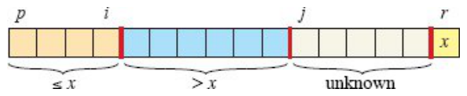

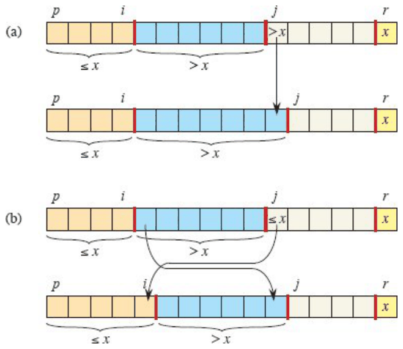
Step 3: the loop invariant第 3 步：循环不变式
In words: at the start of every iteration the array is cut into four blocks: small elements, large elements, elements not yet looked at, and the pivot.用文字表述：在每次迭代开始时，数组被分成四块：小元素、大元素、尚未检查的元素，以及主元。
A loop invariant（循环不变式）is a statement that is true before every iteration of a loop (Section 1.3). It is proved by initialization, maintenance and termination.循环不变式是在循环的每次迭代之前都成立的一条陈述（见第 1.3 节）。它通过初始化、保持和终止三步来证明。
Invariant: before each iteration, for every index \(k\) of the subarray:不变式：每次迭代开始前，对子数组中的每一个下标 \(k\)：
- if \(p\le k\le i\), then \(A[k]\le x\) (low side);若 \(p\le k\le i\)，则 \(A[k]\le x\)（低侧）；
- if \(i+1\le k\le j-1\), then \(A[k]>x\) (high side);若 \(i+1\le k\le j-1\)，则 \(A[k]>x\)（高侧）；
- if \(k=r\), then \(A[k]=x\) (pivot).若 \(k=r\)，则 \(A[k]=x\)（主元）。
- Initialization: \(i=p-1\) and \(j=p\), so the low and the high side are empty. Line 1 gives condition 3.初始化：\(i=p-1\) 与 \(j=p\)，因此低侧和高侧都为空。第 1 行使条件 3 成立。
- Maintenance: if \(A[j]>x\), only \(j\) grows, and \(A[j]\) joins the high side.保持：若 \(A[j]>x\)，则只有 \(j\) 增长，\(A[j]\) 加入高侧。
- If \(A[j]\le x\), then \(i\) grows and \(A[i]\) is exchanged with \(A[j]\). The low side gains a small element. The large element that was at \(A[i]\) moves to the end of the high side.若 \(A[j]\le x\)，则 \(i\) 增长，并且 \(A[i]\) 与 \(A[j]\) 交换。低侧多了一个小元素。原先位于 \(A[i]\) 的大元素被移到高侧的末尾。
- Termination: the loop ends with \(j=r\), after \(r-p\) iterations. Line 7 exchanges the pivot with \(A[i+1]\), the first element of the high side, so the pivot lies between the two sides.终止：循环在 \(j=r\) 时结束，经历了 \(r-p\) 次迭代。第 7 行把主元与 \(A[i+1]\)（高侧的第一个元素）交换，因此主元位于两侧之间。
PARTITION makes exactly \(r-p\) comparisons, one for each \(j\) in line 3. All other work is constant per iteration, so PARTITION takes \(\Theta(n)\) time on \(n=r-p+1\) elements. Afterwards \(A[q]\) is in its final sorted position.PARTITION 恰好做 \(r-p\) 次比较，即第 3 行中每个 \(j\) 各一次。其余工作在每次迭代中都是常数，因此 PARTITION 在 \(n=r-p+1\) 个元素上的时间为 \(\Theta(n)\)。之后 \(A[q]\) 就位于它的最终排序位置上。
Step 4: one complete trace第 4 步：一次完整的手工演算
How to do it by hand: 1. Write \(x=A[r]\) and \(i=p-1\). 2. For each \(j\) from \(p\) to \(r-1\), compare \(A[j]\) with \(x\). 3. If \(A[j]\le x\), add 1 to \(i\) and exchange \(A[i]\) with \(A[j]\). 4. After each iteration write \(i\) and the whole array. 5. At the end exchange \(A[i+1]\) with \(A[r]\) and return \(i+1\).手工完成的方法：1. 写出 \(x=A[r]\) 和 \(i=p-1\)。2. 对每个 \(j\)，从 \(p\) 到 \(r-1\)，比较 \(A[j]\) 与 \(x\)。3. 若 \(A[j]\le x\)，则把 \(i\) 加 1，并把 \(A[i]\) 与 \(A[j]\) 交换。4. 每次迭代后写出 \(i\) 以及整个数组。5. 最后把 \(A[i+1]\) 与 \(A[r]\) 交换，并返回 \(i+1\)。
The input is \(A=\langle 2,8,7,1,3,5,6,4\rangle\) with \(p=1\) and \(r=8\), so \(x=4\) and \(i=0\).输入为 \(A=\langle 2,8,7,1,3,5,6,4\rangle\)，其中 \(p=1\) 且 \(r=8\)，因此 \(x=4\) 且 \(i=0\)。

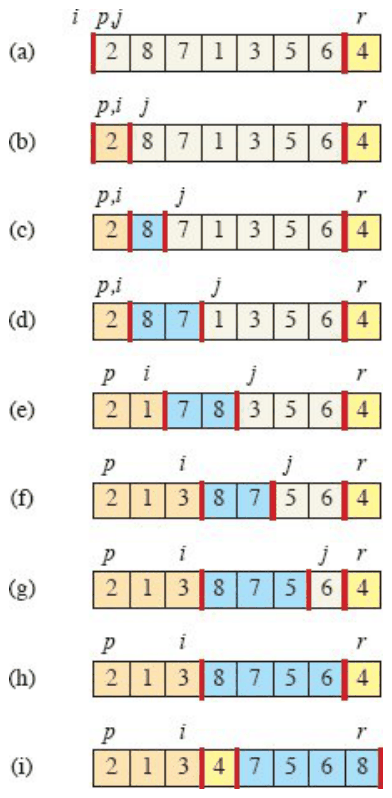
| \(j\) | \(A[j]\) | \(A[j]\le 4\)? | \(i\) | low side \(A[1:i]\) | high side \(A[i+1:j]\) | not yet examined尚未检查 |
|---|---|---|---|---|---|---|
| 1 | 2 | yes, exchange \(A[1]\) with itself | 1 | 2 | – | 8 7 1 3 5 6 |
| 2 | 8 | no否 | 1 | 2 | 8 | 7 1 3 5 6 |
| 3 | 7 | no否 | 1 | 2 | 8 7 | 1 3 5 6 |
| 4 | 1 | yes, exchange \(A[2]\) and \(A[4]\) | 2 | 2 1 | 7 8 | 3 5 6 |
| 5 | 3 | yes, exchange \(A[3]\) and \(A[5]\) | 3 | 2 1 3 | 8 7 | 5 6 |
| 6 | 5 | no否 | 3 | 2 1 3 | 8 7 5 | 6 |
| 7 | 6 | no否 | 3 | 2 1 3 | 8 7 5 6 | – |
Line 7 exchanges \(A[4]\) and \(A[8]\) and gives \(\langle 2,1,3,4,7,5,6,8\rangle\). Line 8 returns \(q=4\) after \(r-p=7\) comparisons. The recursive calls sort the two sides.第 7 行交换 \(A[4]\) 与 \(A[8]\)，得到 \(\langle 2,1,3,4,7,5,6,8\rangle\)。第 8 行在 \(r-p=7\) 次比较之后返回 \(q=4\)。递归调用分别对两侧排序。
Practice练习
Q1. (Trace) Run PARTITION on \(A=\langle 13,19,9,5,12,8,7,4,21,2,6,11\rangle\) with \(p=1\), \(r=12\). Give \(i\) and the array after each iteration, the returned \(q\) and the number of comparisons.Q1.（手工演算）对 \(A=\langle 13,19,9,5,12,8,7,4,21,2,6,11\rangle\) 运行 PARTITION，其中 \(p=1\)、\(r=12\)。给出 \(i\)、每次迭代后的数组、返回值 \(q\) 以及比较次数。
Answer
\(x=11\), \(i=0\). In the array column \([\ ]\) is the low side, \((\ )\) the high side, and the last entry is the pivot.\(x=11\)，\(i=0\)。在“数组”一列中，\([\ ]\) 为低区，\((\ )\) 为高区，最后一项为主元。
| \(j\) | \(i\) | array after the iteration迭代后的数组 |
|---|---|---|
| 1 | 0 | [ ] (13) 19 9 5 12 8 7 4 21 2 6 11 |
| 2 | 0 | [ ] (13 19) 9 5 12 8 7 4 21 2 6 11 |
| 3 | 1 | [9] (19 13) 5 12 8 7 4 21 2 6 11 |
| 4 | 2 | [9 5] (13 19) 12 8 7 4 21 2 6 11 |
| 5 | 2 | [9 5] (13 19 12) 8 7 4 21 2 6 11 |
| 6 | 3 | [9 5 8] (19 12 13) 7 4 21 2 6 11 |
| 7 | 4 | [9 5 8 7] (12 13 19) 4 21 2 6 11 |
| 8 | 5 | [9 5 8 7 4] (13 19 12) 21 2 6 11 |
| 9 | 5 | [9 5 8 7 4] (13 19 12 21) 2 6 11 |
| 10 | 6 | [9 5 8 7 4 2] (19 12 21 13) 6 11 |
| 11 | 7 | [9 5 8 7 4 2 6] (12 21 13 19) 11 |
Line 7 exchanges \(A[8]\) and \(A[12]\): \(\langle 9,5,8,7,4,2,6,11,21,13,19,12\rangle\). PARTITION returns \(q=8\) after \(r-p=11\) comparisons.第 7 行交换 \(A[8]\) 与 \(A[12]\)：\(\langle 9,5,8,7,4,2,6,11,21,13,19,12\rangle\)。PARTITION 经 \(r-p=11\) 次比较后返回 \(q=8\)。
易错：\(i\) 从 \(p-1\) 开始；与自己交换也要让 \(i\) 加一；最后必须把枢轴换到 \(i+1\)。
Q2. (Explain) (a) What does PARTITION return when all elements of \(A[p:r]\) are equal, and what does that mean for QUICKSORT? (b) Which line changes to sort into decreasing order?Q2.（解释）（a）当 \(A[p:r]\) 的所有元素都相等时，PARTITION 返回什么？这对 QUICKSORT 意味着什么？（b）要按降序排序，应改变哪一行？
Answer
(a) Every test \(A[j]\le x\) is true, so \(i\) increases in every iteration and ends at \(r-1\). Line 7 exchanges \(A[r]\) with itself and PARTITION returns \(q=r\). The split is \(n-1:0\) in every call, the worst case, so QUICKSORT takes \(\Theta(n^2)\) time on equal keys. (b) Replace \(\le\) by \(\ge\) in line 4: the low side then holds the elements \(\ge x\) and the result is in decreasing order.（a）循环中的判断 \(A[j]\le x\) 每次都成立，因此 \(i\) 在每次迭代中都增加，并最终达到 \(r-1\)。第 7 行将 \(A[r]\) 与自身交换，PARTITION 返回 \(q=r\)。每次调用的划分都是 \(n-1:0\)，即最坏情况，因此 QUICKSORT 在相等关键字上耗时 \(\Theta(n^2)\)。（b）将第 4 行中的 \(\le\) 替换为 \(\ge\)：此时低区保存的元素为 \(\ge x\)，结果即按降序排列。
Performance: worst case, best case and balanced splits ★★★性能：最坏情况、最好情况与平衡划分
Goal. Write the recurrence of the worst case, the best case and a 9-to-1 split, solve each, and count comparisons for small inputs.目标。 写出最坏情况、最好情况以及 9:1 划分的递归式，分别求解，并对小输入计算比较次数。
The running time depends on how balanced the partitions are, and that depends on which elements become pivots. Balanced splits make quicksort as fast as merge sort (Section 1.5). Unbalanced splits make it as slow as insertion sort.运行时间取决于划分的均衡程度，而均衡程度又取决于哪些元素被选作主元。均衡的划分使快速排序与归并排序一样快（见第 1.5 节）。不均衡的划分则使它与插入排序一样慢。
Step 1: the worst case第 1 步：最坏情况
In words: worst case = the pivot is always the smallest or the largest element, so each call removes only one element.用文字表述：最坏情况 = 主元总是最小或最大的元素，因此每次调用只去掉一个元素。
Then PARTITION returns \(q=r\) or \(q=p\), and the sides have \(n-1\) and \(0\) elements. PARTITION costs \(\Theta(n)\) and an empty subarray costs \(\Theta(1)\). So the time is \(T(n)=T(n-1)+T(0)+\Theta(n)=T(n-1)+\Theta(n)\).此时 PARTITION 返回 \(q=r\) 或 \(q=p\)，两侧分别有 \(n-1\) 和 \(0\) 个元素。PARTITION 的代价为 \(\Theta(n)\)，空子数组的代价为 \(\Theta(1)\)。因此时间为 \(T(n)=T(n-1)+T(0)+\Theta(n)=T(n-1)+\Theta(n)\)。
Quicksort with pivot \(A[r]\) takes \(\Theta(n^2)\) time on an already sorted array. Insertion sort needs only \(O(n)\) on the same input. The worst case is not a rare input.以 \(A[r]\) 作为主元的快速排序在已排序数组上需要 \(\Theta(n^2)\) 时间。而插入排序在同样的输入上只需要 \(O(n)\)。最坏情况并不是罕见的输入。
Step 2: the best case第 2 步：最好情况
In words: best case = the pivot is always the median, so each call splits the elements into two halves.用文字表述：最好情况 = 主元总是中位数，因此每次调用都把元素分成两半。
The two sides then have \(\lfloor (n-1)/2\rfloor\) and \(\lceil (n-1)/2\rceil\) elements, each at most \(n/2\).这样两侧分别有 \(\lfloor (n-1)/2\rfloor\) 和 \(\lceil (n-1)/2\rceil\) 个元素，每侧至多 \(n/2\) 个。
Step 3: balanced splits第 3 步：均衡划分
In words: a lopsided split that always has the same proportions still gives \(O(n\lg n)\), because the recursion tree stays \(\Theta(\lg n)\) levels deep.用文字表述：一个比例固定但偏斜的划分仍然得到 \(O(n\lg n)\)，因为递归树始终只有 \(\Theta(\lg n)\) 层深。
Suppose every partition is a 9-to-1 split: \(T(n)=T(9n/10)+T(n/10)+\Theta(n)\). Replace \(\Theta(n)\) by \(n\), which does not change the asymptotic solution, and draw the recursion tree（递归树）.假设每次划分都是 9:1 的划分：\(T(n)=T(9n/10)+T(n/10)+\Theta(n)\)。把 \(\Theta(n)\) 换成 \(n\)，这不会改变渐近解，然后画出递归树。

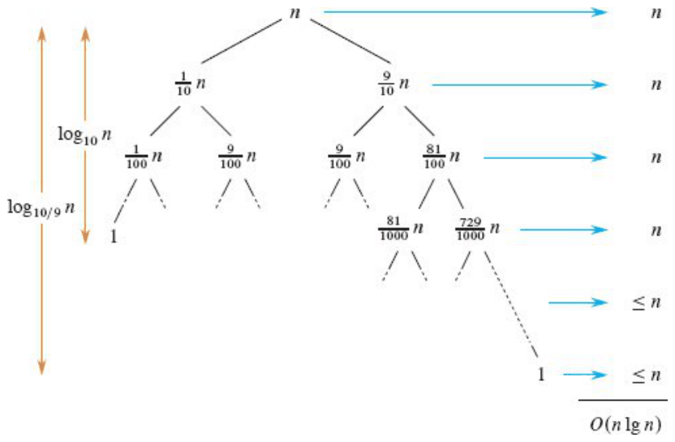
Every level costs at most \(n\). The shortest root-to-leaf path always takes the \(n/10\) side and has depth \(\log_{10}n\). The longest always takes the \(9n/10\) side and has depth \(\log_{10/9}n\). Both are \(\Theta(\lg n)\), so the total is \(n\cdot\Theta(\lg n)=O(n\lg n)\). A 99-to-1 split gives the same bound.每一层的代价至多为 \(n\)。最短的根到叶路径总是走 \(n/10\) 那一侧，深度为 \(\log_{10}n\)。最长的路径总是走 \(9n/10\) 那一侧，深度为 \(\log_{10/9}n\)。两者都是 \(\Theta(\lg n)\)，因此总代价为 \(n\cdot\Theta(\lg n)=O(n\lg n)\)。99:1 的划分给出同样的界。
For \(n=10^6\) and a 9:1 split the depths are 6 and about 131. At most \(131\cdot10^6\approx1.3\times10^8\) comparisons are made, against \(n(n-1)/2\approx5\times10^{11}\) in the worst case.对于 \(n=10^6\) 和 9:1 的划分，深度分别为 6 和约 131。至多做 \(131\cdot10^6\approx1.3\times10^8\) 次比较，而最坏情况为 \(n(n-1)/2\approx5\times10^{11}\) 次。
Step 4: memory第 4 步：内存
Quicksort sorts in place, but each recursive call needs stack space. So the extra memory is proportional to the recursion depth. It is \(\Theta(\lg n)\) for balanced splits and \(\Theta(n)\) in the worst case. Section 5.5 shows how to bound the depth by \(\lg n\).快速排序是原地排序，但每次递归调用都需要栈空间。因此额外内存与递归深度成正比。对于均衡划分，它为 \(\Theta(\lg n)\)；最坏情况下为 \(\Theta(n)\)。第 5.5 节说明如何把深度限制为 \(\lg n\)。
Practice练习
Q1. (Calculation) (a) How many element comparisons does QUICKSORT (pivot \(A[r]\)) make on \(\langle 1,2,\dots,8\rangle\), on \(\langle 8,7,\dots,1\rangle\) and on eight equal keys? (b) How many on a sorted array with \(n=1000\)? (c) What is the minimum for \(n=15\)?Q1.（计算）（a）取主元 \(A[r]\) 的 QUICKSORT 在 \(\langle 1,2,\dots,8\rangle\)、\(\langle 8,7,\dots,1\rangle\) 以及八个相等关键字上各进行多少次元素比较？（b）对于具有 \(n=1000\) 的已排序数组，比较次数是多少？（c）对于 \(n=15\)，最少需要多少次比较？
Answer
(a) In all three cases every call of PARTITION returns an end index (\(q=r\) for sorted and equal input, \(q=p\) for reverse-sorted input), so the subarray shrinks by one element each time: \(7+6+\dots+1=28=\frac{8\cdot7}{2}\) comparisons. (b) \(\frac{1000\cdot999}{2}=499{,}500\). (c) The minimum needs the pivot to be the median in every call: \(C(n)=n-1+2C\big(\frac{n-1}{2}\big)\) with \(C(1)=0\) gives \(C(3)=2\), \(C(7)=6+4=10\) and \(C(15)=14+20=34\), which equals \((n+1)\lg(n+1)-2n=16\cdot4-30\). For \(n=7\) the input \(\langle1,3,2,6,5,7,4\rangle\) attains 10 (the maximum for \(n=7\) is \(21\)).（a）在这三种情形中，每次调用 PARTITION 都返回一个端点下标（对已排序与全相等的输入为 \(q=r\)，对逆序输入为 \(q=p\)），因此子数组每次只缩小一个元素，共进行 \(7+6+\dots+1=28=\frac{8\cdot7}{2}\) 次比较。（b）\(\frac{1000\cdot999}{2}=499{,}500\)。（c）取得最少比较次数要求每次调用的主元都是中位数：\(C(n)=n-1+2C\big(\frac{n-1}{2}\big)\) 在 \(C(1)=0\) 时给出 \(C(3)=2\)、\(C(7)=6+4=10\) 与 \(C(15)=14+20=34\)，其和为 \((n+1)\lg(n+1)-2n=16\cdot4-30\)。对于 \(n=7\)，输入 \(\langle1,3,2,6,5,7,4\rangle\) 达到 10（\(n=7\) 的最大值为 \(21\)）。
Q2. (Calculation) Every split is 9-to-1 and \(n=10^6\). (a) What are the depths of the shortest and the longest root-to-leaf path? (b) Bound the number of comparisons and compare it with the worst case.Q2.（计算）每次划分都是 9:1，且 \(n=10^6\)。（a）最短与最长的根到叶路径的深度分别是多少？（b）给出比较次数的上界，并与最坏情况进行比较。
Answer
(a) \(\log_{10}10^6=6\) and \(\log_{10/9}10^6=\ln 10^6/\ln(10/9)=13.816/0.1054\approx131\). (b) Each level makes at most \(n\) comparisons, so at most \(131\cdot10^6\approx1.3\times10^8\). The worst case is \(n(n-1)/2\approx5\times10^{11}\), about 3,800 times more. The 9:1 bound is about 6.6 times \(n\lg n\approx2.0\times10^7\): only a constant factor.（a）\(\log_{10}10^6=6\) 与 \(\log_{10/9}10^6=\ln 10^6/\ln(10/9)=13.816/0.1054\approx131\)。（b）每一层至多进行 \(n\) 次比较，因此至多 \(131\cdot10^6\approx1.3\times10^8\) 次。最坏情况为 \(n(n-1)/2\approx5\times10^{11}\)，约为其 3,800 倍。9:1 的上界约为 \(n\lg n\approx2.0\times10^7\) 的 6.6 倍：只差一个常数因子。
Q3. (Explain) Bank transactions are stored in time order, but customers want them sorted by check number, and checks are mostly written in numerical order. Why can INSERTION-SORT beat QUICKSORT on this almost sorted input?Q3.（解释）银行交易记录按时间顺序存储，但客户希望按支票号码排序，而支票大多按号码顺序开出。为什么在这种近乎有序的输入上，INSERTION-SORT 可能胜过 QUICKSORT？
Answer
INSERTION-SORT takes \(\Theta(n+I)\) time, where \(I\) is the number of inversions (pairs in the wrong order). An almost sorted array has \(I=O(n)\), so it runs in about linear time. QUICKSORT with pivot \(A[r]\) picks a pivot near the maximum or minimum of the subarray, the splits are very unbalanced and the time approaches the \(\Theta(n^2)\) worst case; even with a random pivot it needs \(\Theta(n\lg n)\).插入排序耗时 \(\Theta(n+I)\)，其中 \(I\) 为逆序对（顺序颠倒的数对）的个数。近乎有序的数组具有 \(I=O(n)\)，因此其运行时间约为线性。以 \(A[r]\) 为主元的 QUICKSORT 所选的主元接近子数组的最大值或最小值，划分极不平衡，时间趋近于 \(\Theta(n^2)\) 的最坏情况；即使采用随机主元，它仍需要 \(\Theta(n\lg n)\)。
Average case and randomized quicksort ★★平均情况与随机化快速排序
Goal. Explain why the average case is close to the best case, state exactly what randomization guarantees, and write RANDOMIZED-PARTITION.目标。 解释为什么平均情况接近最好情况，准确说明随机化保证了什么，并写出 RANDOMIZED-PARTITION。
Step 1: the average case第 1 步：平均情况
In words: on a typical input some splits are good and some are bad, and the bad ones are paid for by the good ones.用文字表述：在典型输入上，有些划分好，有些划分差，差的划分由好的划分来“补偿”。
Quicksort uses only comparisons, so its behaviour depends on the relative order of the elements and not on their values. Assume that the elements are distinct and that all \(n!\) input orders are equally likely. Here \(n!\) is the number of orders of \(n\) elements.快速排序只使用比较，因此它的行为取决于元素之间的相对次序，而不取决于它们的值。假设元素互不相同，并且所有 \(n!\) 种输入次序等可能。这里 \(n!\) 为 \(n\) 个元素的次序数。
Suppose bad and good splits alternate from level to level. Every bad split is the worst case and every good split the best case.假设坏的划分与好的划分逐层交替出现。每个坏划分都是最坏情况，每个好划分都是最好情况。

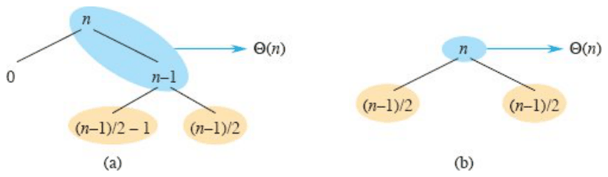
A bad split into \(0\) and \(n-1\) elements costs \(\Theta(n)\). A best-case split of the \(n-1\) elements follows, which costs \(\Theta(n-1)\). Together they yield three subarrays of sizes \(0\), \((n-1)/2-1\) and \((n-1)/2\) at a total cost of \(\Theta(n)\). One good split yields two subarrays of size about \((n-1)/2\) at the same cost. So the pair is only a constant factor worse than one good split. The cost of the bad split is absorbed, and the time stays \(O(n\lg n)\) with a larger constant.一次坏的划分把元素分成 \(0\) 和 \(n-1\) 个，代价为 \(\Theta(n)\)。随后是对 \(n-1\) 个元素的一次最好情况划分，代价为 \(\Theta(n-1)\)。这两次划分一共产生三个子数组，大小分别为 \(0\)、\((n-1)/2-1\) 和 \((n-1)/2\)，总代价为 \(\Theta(n)\)。一次好的划分在同样的代价下产生两个大小约为 \((n-1)/2\) 的子数组。因此这一对划分只比一次好的划分差一个常数因子。坏划分的代价被吸收，时间仍然是 \(O(n\lg n)\)，只是常数更大。
Step 2: randomized quicksort第 2 步：随机化快速排序
In words: choose the pivot by a random draw, so that no input is bad in advance.用文字表述：通过随机抽取选择主元，使任何输入都不会事先就是坏的。
The assumption "all input orders are equally likely" often fails, for example for nearly sorted data. A randomized algorithm（随机化算法）removes it. RANDOMIZED-PARTITION chooses the pivot uniformly at random from \(A[p:r]\) and exchanges it with \(A[r]\) before partitioning.“所有输入次序等可能”这一假设常常不成立，例如对于近似有序的数据。随机化算法去掉了这一假设。RANDOMIZED-PARTITION 在 \(A[p:r]\) 中均匀随机地选取主元，并在划分之前把它与 \(A[r]\) 交换。
RANDOMIZED-PARTITION(A, p, r)
1 i = RANDOM(p, r)
2 exchange A[r] with A[i]
3 return PARTITION(A, p, r)
RANDOMIZED-QUICKSORT(A, p, r)
1 if p < r
2 q = RANDOMIZED-PARTITION(A, p, r)
3 RANDOMIZED-QUICKSORT(A, p, q - 1)
4 RANDOMIZED-QUICKSORT(A, q + 1, r)
- Line 1 of RANDOMIZED-PARTITION draws the index \(i\). RANDOM\((p,r)\) returns each integer from \(p\) to \(r\) with probability \(1/(r-p+1)\).RANDOMIZED-PARTITION 的第 1 行抽取下标 \(i\)。RANDOM\((p,r)\) 返回 \(p\) 到 \(r\) 之间的每个整数的概率都是 \(1/(r-p+1)\)。
- Line 2 moves the drawn element to the end, so PARTITION uses it as the pivot.第 2 行把抽中的元素移到末尾，因此 PARTITION 把它用作主元。
- The expected running time（期望运行时间）is the running time on a fixed input, averaged over the random choices of the algorithm. It is \(O(n\lg n)\) for every input of distinct elements. The proof is in Section 5.4.期望运行时间是对算法自身的随机选择取平均后，在固定输入上的运行时间。对于每个互不相同元素的输入，它都是 \(O(n\lg n)\)。证明见第 5.4 节。
- The worst case is still \(\Theta(n^2)\), but it needs an extremely unlucky sequence of random choices.最坏情况仍然是 \(\Theta(n^2)\)，但它需要极其不走运的随机选择序列。
- The analysis assumes distinct elements. If all keys are equal, PARTITION returns \(q=r\) whatever element was drawn, so the time is \(\Theta(n^2)\). Section 5.5 names the three-way partition that fixes this.分析假设元素互不相同。如果所有键值都相等，无论抽中哪个元素，PARTITION 都返回 \(q=r\)，因此时间为 \(\Theta(n^2)\)。第 5.5 节给出了解决这一问题的三路划分。
Practice练习
Q1. (Derive) Let the elements be distinct and the input order uniformly random. Show that PARTITION gives a split at least as balanced as \((1-\alpha):\alpha\) with probability about \(1-2\alpha\). Evaluate it for 9:1 and 99:1.Q1.（推导）设元素互异，且输入顺序均匀随机。证明 PARTITION 给出至少与 \((1-\alpha):\alpha\) 同样平衡的划分的概率约为 \(1-2\alpha\)。对 9:1 与 99:1 分别求值。
Answer
The pivot \(A[r]\) has rank \(k\), uniformly distributed on \(1,\dots,n\); the sides have \(k-1\) and \(n-k\) elements. The split is at least as balanced as \((1-\alpha):\alpha\) iff neither side exceeds \((1-\alpha)n\), that is iff \(\alpha n\le k\le(1-\alpha)n+1\). That is about \((1-\alpha)n-\alpha n=(1-2\alpha)n\) of the \(n\) ranks, so the probability is about \(1-2\alpha\). For 9:1 (\(\alpha=0.1\)) it is 80%, for 99:1 (\(\alpha=0.01\)) it is 98%. (Exact counts for \(n=1000\): 802 and 982 of the 1000 ranks.)主元 \(A[r]\) 的秩 \(k\) 在 \(1,\dots,n\) 上均匀分布；两侧分别有 \(k-1\) 与 \(n-k\) 个元素。该划分至少与 \((1-\alpha):\alpha\) 一样平衡，当且仅当两侧都不超过 \((1-\alpha)n\)，即当且仅当 \(\alpha n\le k\le(1-\alpha)n+1\)。这大约对应 \(n\) 个秩中的 \((1-\alpha)n-\alpha n=(1-2\alpha)n\) 个，因此概率约为 \(1-2\alpha\)。对于 9:1（\(\alpha=0.1\)），概率为 80%；对于 99:1（\(\alpha=0.01\)），概率为 98%。（对于 \(n=1000\)，精确计数为 1000 个秩中的 802 个与 982 个。）
Q2. (True or false, justify) (a) RANDOMIZED-QUICKSORT runs in \(O(n\lg n)\) time on every input. (b) RANDOMIZED-QUICKSORT sorts \(n\) equal keys in \(O(n\lg n)\) expected time. (c) Why do we analyse the expected and not the worst-case running time of a randomized algorithm?Q2.（判断对错并说明理由）（a）RANDOMIZED-QUICKSORT 对每个输入都在 \(O(n\lg n)\) 时间内运行。（b）RANDOMIZED-QUICKSORT 对 \(n\) 个相等关键字排序，其期望时间为 \(O(n\lg n)\)。（c）为什么我们分析随机算法的期望运行时间，而不是最坏情况运行时间？
Answer
(a) False. \(O(n\lg n)\) is the expected time for distinct elements; a particular run can still take \(\Theta(n^2)\), with tiny probability. (b) False. With equal keys PARTITION returns \(q=r\) whatever element was exchanged into \(A[r]\), so every split is \(n-1:0\) and the time is \(\Theta(n^2)\). The \(O(n\lg n)\) analysis needs distinct keys; three-way partitioning fixes the case of equal keys. (c) For a fixed input the running time is a random variable. Its worst case over the random choices is still \(\Theta(n^2)\) but occurs with negligible probability, so it describes typical behaviour poorly; the expectation is one meaningful figure that holds for every input.（a）错。\(O(n\lg n)\) 是互异元素情形下的期望时间；某次特定运行仍可能耗时 \(\Theta(n^2)\)，但概率极小。（b）错。对于相等的关键字，PARTITION 总是返回 \(q=r\)，无论被交换到 \(A[r]\) 的是哪个元素，因此每次划分都是 \(n-1:0\)，耗时为 \(\Theta(n^2)\)。\(O(n\lg n)\) 的分析需要互异的关键字；三向划分解决了相等关键字的情形。（c）对于固定输入，运行时间是一个随机变量。其在随机选择上的最坏情况仍为 \(\Theta(n^2)\)，但出现的概率可忽略，因此它对典型行为的描述很差；期望则是对每个输入都成立且有意义的一个量。
Analysis of quicksort ★★★快速排序的分析
Goal. Prove the worst case \(O(n^2)\) by the substitution method. Prove that RANDOMIZED-QUICKSORT makes \(O(n\lg n)\) comparisons in expectation, step by step, and compute the expected number for small \(n\).目标。 用代入法证明最坏情况为 \(O(n^2)\)。一步一步证明 RANDOMIZED-QUICKSORT 的期望比较次数为 \(O(n\lg n)\)，并对较小的 \(n\) 计算期望次数。
Step 1: the worst case by substitution第 1 步：用代入法证明最坏情况
In words: guess that the time is at most \(cn^2\) and check the guess by induction; the worst split is the most lopsided one.用文字表述：猜测时间至多为 \(cn^2\)，再用归纳法检验这个猜测；最坏的划分是最偏斜的那一种。
Let \(T(n)\) be the worst-case time of QUICKSORT on \(n\) elements. PARTITION produces sides of \(q\) and \(n-1-q\) elements, where \(q\) is the index of the pivot counted from 0. The worst case takes the worst \(q\):设 \(T(n)\) 为 QUICKSORT 对 \(n\) 个元素的最坏情况时间。PARTITION 产生大小分别为 \(q\) 和 \(n-1-q\) 的两侧，其中 \(q\) 是主元从 0 开始计数的下标。最坏情况取最坏的 \(q\)：
\[T(n)=\max_{0\le q\le n-1}\{T(q)+T(n-q-1)\}+\Theta(n)\]
The substitution method（代入法）guesses the solution and proves it by induction (Section 3.2). Guess \(T(n)\le cn^2\) for a constant \(c>0\). Then \(T(n)\le c\cdot\max_q\{q^2+(n-1-q)^2\}+\Theta(n)\). Now代入法先猜测解，再用归纳法证明（见第 3.2 节）。猜测 \(T(n)\le cn^2\)，其中 \(c>0\) 为常数。于是 \(T(n)\le c\cdot\max_q\{q^2+(n-1-q)^2\}+\Theta(n)\)。现在
\[q^2+(n-1-q)^2=(n-1)^2-2q(n-1-q)\le(n-1)^2\qquad(0\le q\le n-1)\]
because \(q(n-1-q)\ge0\). The maximum is \((n-1)^2\), reached at \(q=0\) or \(q=n-1\). Hence因为 \(q(n-1-q)\ge0\)。最大值为 \((n-1)^2\)，在 \(q=0\) 或 \(q=n-1\) 处取到。因此
\[T(n)\le c(n-1)^2+\Theta(n)=cn^2-c(2n-1)+\Theta(n)\le cn^2\]
if \(c\) is large enough for \(c(2n-1)\) to dominate the \(\Theta(n)\) term. So \(T(n)=O(n^2)\). The split \(n-1:0\) in every call gives \(\Omega(n^2)\) (Section 5.2). Hence the worst case is \(\Theta(n^2)\), for QUICKSORT and RANDOMIZED-QUICKSORT alike.当 \(c\) 足够大时，\(c(2n-1)\) 主导 \(\Theta(n)\) 项。因此 \(T(n)=O(n^2)\)。每次调用的划分都是 \(n-1:0\)，给出 \(\Omega(n^2)\)（见第 5.2 节）。因此最坏情况为 \(\Theta(n^2)\)，对 QUICKSORT 与 RANDOMIZED-QUICKSORT 都成立。
Step 2: the expected number of comparisons第 2 步：期望比较次数
In words: count comparisons pair by pair: two elements are compared only if one of them is the first pivot chosen among all elements between them in sorted order.用文字表述：逐对计数比较次数：只有当两个元素之间（按排序后的顺序）所有元素中，第一个被选作主元的是它们之一时，这两个元素才会被比较。
Let \(X\) be the number of comparisons that RANDOMIZED-QUICKSORT makes on \(n\) distinct elements. Only comparisons between array elements count (line 4 of PARTITION), not comparisons of indices. The proof has five parts.令 \(X\) 为 RANDOMIZED-QUICKSORT 对 \(n\) 个互不相同元素所做的比较次数。只有数组元素之间的比较才计入（PARTITION 的第 4 行），下标之间的比较不计。证明分为五个部分。
- The time is \(O(n+X)\). Each call of PARTITION fixes a pivot that takes part in no later call, so there are at most \(n\) calls. The work outside the loop is \(O(1)\) per call, so \(O(n)\) in total. Each loop iteration makes one comparison and does \(O(1)\) other work, so \(O(X)\) in total.时间为 \(O(n+X)\)。 每次 PARTITION 调用都会固定一个主元，它不再参与之后的任何调用，因此调用次数至多为 \(n\)。循环之外的工作每次调用为 \(O(1)\)，因此总计为 \(O(n)\)。每次循环迭代做一次比较，并做 \(O(1)\) 的其他工作，因此总计为 \(O(X)\)。
- Name the elements by rank. Let \(z_1<z_2<\dots<z_n\) be the input in sorted order. The names are only an analysis device. Let \(Z_{ij}=\{z_i,z_{i+1},\dots,z_j\}\) be the elements from rank \(i\) to rank \(j\).按秩为元素命名。 令 \(z_1<z_2<\dots<z_n\) 为排序后的输入。这些名字只是分析时使用的工具。令 \(Z_{ij}=\{z_i,z_{i+1},\dots,z_j\}\) 为秩从 \(i\) 到 \(j\) 的元素。
- When are two elements compared? For \(i<j\), \(z_i\) and \(z_j\) are compared iff the first element of \(Z_{ij}\) chosen as a pivot is \(z_i\) or \(z_j\). No pair is compared twice.什么时候两个元素会被比较？ 对于 \(i<j\)，\(z_i\) 与 \(z_j\) 当且仅当 \(Z_{ij}\) 中第一个被选作主元的元素是 \(z_i\) 或 \(z_j\) 时才被比较。任何一对都不会被比较两次。
- The probability. See the card below.概率。 见下方的卡片。
- Sum over all pairs. See the second card.对所有数对求和。 见第二张卡片。
Proof of part 3. As long as no element of \(Z_{ij}\) has been a pivot, all of \(Z_{ij}\) stays in one subarray. Let \(x\) be the first pivot chosen from \(Z_{ij}\).第 3 部分的证明。只要 \(Z_{ij}\) 中没有元素被选为主元，\(Z_{ij}\) 的全部元素就始终留在同一个子数组中。令 \(x\) 为从 \(Z_{ij}\) 中第一个被选为主元的元素。
- If \(z_i<x<z_j\), the two elements fall on different sides of the partition and are never compared.若 \(z_i<x<z_j\)，则这两个元素落在划分的两侧，且永远不会被比较。
- If \(x=z_i\) (or \(x=z_j\)), PARTITION compares \(x\) with every other element of the subarray, in particular with \(z_j\) (or \(z_i\)).若 \(x=z_i\)（或 \(x=z_j\)），则 PARTITION 会将 \(x\) 与子数组中的每个其他元素进行比较，特别是与 \(z_j\)（或 \(z_i\)）比较。
A pivot leaves all later calls, so the pair is not compared again.一个主元会离开之后的所有调用，因此这一对不会再被比较。
The first pivot chosen from \(Z_{ij}\) comes from a subarray that contains all of \(Z_{ij}\). So each of the \(j-i+1\) elements of \(Z_{ij}\) is equally likely to be that first pivot. The two favourable outcomes are mutually exclusive, so their probabilities add.从 \(Z_{ij}\) 中第一个被选为主元的元素，来自一个包含 \(Z_{ij}\) 全部元素的子数组。因此 \(Z_{ij}\) 中的 \(j-i+1\) 个元素中的每一个都同样可能是那个第一个主元。两种有利的结果互斥，所以它们的概率相加。
Let \(X_{ij}\) be the indicator variable that is 1 if \(z_i\) is compared with \(z_j\) and 0 otherwise. Indicator variables and linearity of expectation are explained in Section 4.2. Each pair is compared at most once, so \(X=\sum_{i=1}^{n-1}\sum_{j=i+1}^{n}X_{ij}\). By linearity, \(E[X]\) is the sum of the probabilities \(E[X_{ij}]=2/(j-i+1)\).令 \(X_{ij}\) 为指示器随机变量：若 \(z_i\) 与 \(z_j\) 被比较，则为 1，否则为 0。指示器随机变量和期望的线性性质已在第 4.2 节中说明。每一对至多被比较一次，所以 \(X=\sum_{i=1}^{n-1}\sum_{j=i+1}^{n}X_{ij}\)。由线性性质，\(E[X]\) 是概率 \(E[X_{ij}]=2/(j-i+1)\) 之和。
Conclusion. By part 1 the expected running time is \(O(n+E[X])=O(n\lg n)\). The best case is \(\Omega(n\lg n)\) too, so the expected time is \(\Theta(n\lg n)\).结论。 由第 1 部分，期望运行时间为 \(O(n+E[X])=O(n\lg n)\)。最好情况也是 \(\Omega(n\lg n)\)，所以期望时间为 \(\Theta(n\lg n)\)。
Practice练习
Q1. (Proof) Show that \(q^2+(n-q-1)^2\) is largest over \(q=0,\dots,n-1\) at \(q=0\) or \(q=n-1\), and use this to prove \(T(n)=O(n^2)\) for \(T(n)=\max_{0\le q\le n-1}\{T(q)+T(n-q-1)\}+\Theta(n)\).Q1.（证明）证明 \(q^2+(n-q-1)^2\) 在 \(q=0,\dots,n-1\) 上于 \(q=0\) 或 \(q=n-1\) 处取最大值，并利用这一结论对 \(T(n)=\max_{0\le q\le n-1}\{T(q)+T(n-q-1)\}+\Theta(n)\) 证明 \(T(n)=O(n^2)\)。
Answer
Expanding gives \(q^2+(n-q-1)^2=(n-1)^2-2q(n-1-q)\). For \(0\le q\le n-1\) the product \(q(n-1-q)\) is \(\ge0\), and it is 0 only at \(q=0\) and \(q=n-1\); so the maximum is \((n-1)^2\) at the two ends. Let the \(\Theta(n)\) term be at most \(dn\) and guess \(T(n)\le cn^2\). Then \(T(n)\le c(n-1)^2+dn=cn^2-c(2n-1)+dn\le cn^2\) whenever \(c\ge d\), because \(2n-1\ge n\); choose \(c\) also large enough for the base case. By induction \(T(n)=O(n^2)\).展开得 \(q^2+(n-q-1)^2=(n-1)^2-2q(n-1-q)\)。对于 \(0\le q\le n-1\)，乘积 \(q(n-1-q)\) 等于 \(\ge0\)，且仅在 \(q=0\) 与 \(q=n-1\) 处为 0；因此最大值 \((n-1)^2\) 在两端取得。设 \(\Theta(n)\) 这一项至多为 \(dn\)，并猜测 \(T(n)\le cn^2\)。于是只要 \(c\ge d\)，就有 \(T(n)\le c(n-1)^2+dn=cn^2-c(2n-1)+dn\le cn^2\)，因为 \(2n-1\ge n\)；再选取足够大的 \(c\)，使其对基本情形也成立。由归纳法，\(T(n)=O(n^2)\)。
Q2. (Calculation) (a) For \(n=10\), find the probability that \(z_2\) and \(z_9\) are compared, and that \(z_3\) and \(z_8\) are compared. Why is the probability 1 for adjacent ranks? (b) Compute \(E[X]\) for \(n=5\) with the pair formula.Q2.（计算）（a）对于 \(n=10\)，求 \(z_2\) 与 \(z_9\) 被比较的概率，以及 \(z_3\) 与 \(z_8\) 被比较的概率。为什么相邻秩的概率为 1？（b）利用数对公式，对 \(n=5\) 计算 \(E[X]\)。
Answer
(a) \(\frac{2}{9-2+1}=\frac14\) and \(\frac{2}{8-3+1}=\frac13\). For adjacent ranks \(Z_{i,i+1}\) has two elements, so the first pivot chosen from it is one of the two and they are compared: \(\frac22=1\). (b) By distance \(k=j-i\): \(k=1\) has 4 pairs with probability 1, giving 4; \(k=2\) has 3 pairs with \(\frac23\), giving 2; \(k=3\) has 2 pairs with \(\frac24\), giving 1; \(k=4\) has 1 pair with \(\frac25\), giving 0.4. So \(E[X]=7.4=\frac{37}{5}\), between the best case 6 and the worst case 10.（a）\(\frac{2}{9-2+1}=\frac14\) 与 \(\frac{2}{8-3+1}=\frac13\)。对于相邻秩，\(Z_{i,i+1}\) 中只有两个元素，因此从中首先选出的主元必是这两者之一，二者因而被比较：\(\frac22=1\)。（b）按距离 \(k=j-i\)：\(k=1\) 有 4 个数对，概率均为 1，得 4；\(k=2\) 有 3 个数对，每对概率为 \(\frac23\)，得 2；\(k=3\) 有 2 个数对，每对概率为 \(\frac24\)，得 1；\(k=4\) 有 1 个数对，概率为 \(\frac25\)，得 0.4。因此 \(E[X]=7.4=\frac{37}{5}\)，介于最好情况 6 与最坏情况 10 之间。
Q3. (Beyond the pages) Derive the exact value \(E[X]=2(n+1)H_n-4n\) from the double sum, evaluate it for \(n=10\) and \(n=1000\), and compare with the worst case.Q3.（超出讲义范围）由二重求和推导精确值 \(E[X]=2(n+1)H_n-4n\)，对 \(n=10\) 与 \(n=1000\) 分别求值，并与最坏情况比较。
Answer
There are \(n-k\) pairs with \(j-i=k\), for \(k=1,\dots,n-1\), each compared with probability \(\frac{2}{k+1}\). With \(m=k+1\):对于 \(k=1,\dots,n-1\)，满足 \(j-i=k\) 的数对共有 \(n-k\) 个，每对被比较的概率为 \(\frac{2}{k+1}\)。代入 \(m=k+1\)：
\[E[X]=\sum_{k=1}^{n-1}(n-k)\frac{2}{k+1}=2\sum_{m=2}^{n}\frac{n+1-m}{m}=2\big[(n+1)(H_n-1)-(n-1)\big]=2(n+1)H_n-4n\]
For \(n=10\), \(H_{10}=2.929\) and \(E[X]=22\cdot2.929-40=24.44\) (worst case 45). For \(n=1000\), \(H_{1000}=7.4855\) and \(E[X]=2002\cdot7.4855-4000\approx10{,}986\), against \(499{,}500\) in the worst case: 45 times fewer. Asymptotically \(E[X]\approx2n\ln n=2\ln2\cdot n\lg n\approx1.39\,n\lg n\).对于 \(n=10\)，\(H_{10}=2.929\) 与 \(E[X]=22\cdot2.929-40=24.44\)（最坏情况为 45）。对于 \(n=1000\)，\(H_{1000}=7.4855\) 与 \(E[X]=2002\cdot7.4855-4000\approx10{,}986\)，相比最坏情况下的 \(499{,}500\)，少了 45 倍。渐近地，\(E[X]\approx2n\ln n=2\ln2\cdot n\lg n\approx1.39\,n\lg n\)。
思路：先按距离 \(k=j-i\) 把双重求和合并成单重求和，再用调和数。
Variants and practical improvements ★变体与实用改进
Quicksort is often the fastest sort in practice. The constant hidden in \(\Theta(n\lg n)\) is small, it works in place, and a random pivot makes the quadratic case negligible. The table compares it with the sorts of Chapter 1.快速排序在实践中往往是最快的排序算法。\(\Theta(n\lg n)\) 中隐含的常数很小，它是原地排序，而随机主元使二次情况几乎可以忽略。下表将它与第 1 章中的各种排序方法进行比较。
| Insertion sort插入排序 | Merge sort归并排序 | Heapsort堆排序 | Quicksort快速排序 | |
|---|---|---|---|---|
| Worst case最坏情况 | \(\Theta(n^2)\) | \(\Theta(n\lg n)\) | \(\Theta(n\lg n)\) | \(\Theta(n^2)\) |
| Average or expected平均或期望 | \(\Theta(n^2)\) | \(\Theta(n\lg n)\) | \(\Theta(n\lg n)\) | \(\Theta(n\lg n)\) |
| Extra space额外空间 | \(O(1)\) | \(\Theta(n)\) | \(O(1)\) | \(O(\lg n)\) stack expected, \(\Theta(n)\) worst |
| Stable稳定性 | yes是 | yes是 | no否 | no否 |
- Stack depth: to guarantee depth at most \(\lg n\), recurse on the smaller side and loop on the larger side. The running time does not change.栈深度：要保证深度至多为 \(\lg n\)，就对较小的一侧递归，对较大的一侧用循环处理。运行时间不变。
- Hoare partition and three-way partition: see the Terms table. Both handle equal keys.Hoare 划分与三路划分：见术语表。两者都能处理相等的键值。
Practice练习
Q1. (Design) Describe an input on which TRE-QUICKSORT has stack depth \(\Theta(n)\), then modify it so that the worst-case stack depth is \(\Theta(\lg n)\) while the expected running time stays \(O(n\lg n)\).Q1.（设计）描述一个使 TRE-QUICKSORT 的栈深度达到 \(\Theta(n)\) 的输入，然后对其加以修改，使最坏情况下的栈深度为 \(\Theta(\lg n)\)，同时期望运行时间保持为 \(O(n\lg n)\)。
Answer
On a sorted array every PARTITION returns \(q=r\), so the recursive call on \(A[p:q-1]\) has \(n-1\) elements, the next \(n-2\), and so on: \(n\) nested calls. Fix: recurse on the smaller side and iterate on the larger.在已排序数组上，每次 PARTITION 都返回 \(q=r\)，因此对 \(A[p:q-1]\) 的递归调用处理 \(n-1\) 个元素，下一个为 \(n-2\)，依此类推：共 \(n\) 层嵌套调用。修正方法：对较小的一侧递归，对较大的一侧进行迭代。
TRE-QUICKSORT'(A, p, r)
1 while p < r
2 q = PARTITION(A, p, r)
3 if q - p < r - q // the low side is smaller
4 TRE-QUICKSORT'(A, p, q - 1)
5 p = q + 1
6 else
7 TRE-QUICKSORT'(A, q + 1, r)
8 r = q - 1
Every recursive call gets at most half of the elements, so the depth is at most \(\lg n\) (for a sorted array of 1024 elements: 2 nested calls instead of 1024). The partitioning work is the same, so the running time is unchanged.每次递归调用得到的元素至多为一半，因此深度至多为 \(\lg n\)（对于 1024 个元素的已排序数组：嵌套调用为 2 次，而非 1024 次）。划分的工作量不变，因此运行时间保持不变。
Terms to recognise ★需要认识的术语
| Term术语 | What to know要知道什么 |
|---|---|
| Not stable不稳定 | PARTITION can reorder equal keys; quicksort is not stable, merge sort and insertion sort arePARTITION 可能打乱相等键值的次序；快速排序不稳定，归并排序和插入排序稳定 |
| Hoare partitionHoare 划分 | Original scheme: two indices move towards each other from outside; the pivot is \(A[p]\); recursion on \(A[p:j]\) and \(A[j+1:r]\); balanced on equal keys原始方案：两个下标从两端向中间移动；主元为 \(A[p]\)；对 \(A[p:j]\) 和 \(A[j+1:r]\) 递归；对相等键值保持平衡 |
| Three-way partition三路划分 | Splits into smaller, equal and larger elements; skips the equal block; equal keys cost \(\Theta(n)\)划分为较小、相等和较大的元素；跳过相等的那一块；相等键值的代价为 \(\Theta(n)\) |
| Tail-recursion elimination尾递归消除 | The second recursive call becomes a loop; depth is still \(\Theta(n)\) unless the smaller side is taken by recursion第二个递归调用改为循环；除非较小的一侧仍由递归处理，否则深度仍为 \(\Theta(n)\) |
| Median-of-3三数取中 | The pivot is the median of three random elements; a better split is more likely; only the constant changes主元是三个随机元素的中位数；更好的划分更有可能出现；只改变常数 |
| Coarsening粗化 | Sort subarrays shorter than \(k\) with insertion sort; expected time \(O(nk+n\lg(n/k))\)长度小于 \(k\) 的子数组用插入排序；期望时间 \(O(nk+n\lg(n/k))\) |
| Introsort内省排序 | Switch to heapsort when the depth exceeds about \(2\lg n\); worst case \(O(n\lg n)\)当深度超过约 \(2\lg n\) 时改用堆排序；最坏情况 \(O(n\lg n)\) |
| Selection as pivot以选择作为主元 | The exact median found in linear time (Chapter 7) gives \(O(n\lg n)\) always, with a large constant用线性时间找到的精确中位数（第 7 章）总是给出 \(O(n\lg n)\)，但常数很大 |
| Random input versus random pivot随机输入与随机主元 | Same expected comparisons \(2(n+1)H_n-4n\); the randomness sits in the input (assumption) or in the algorithm (guarantee)期望比较次数相同，都是 \(2(n+1)H_n-4n\)；随机性来自输入（假设）还是算法本身（保证） |
| STOOGE-SORT | \(T(n)=3T(2n/3)+\Theta(1)=\Theta(n^{2.71})\); slower than the other sorts\(T(n)=3T(2n/3)+\Theta(1)=\Theta(n^{2.71})\)；比其他排序慢 |
Exam-style questions考试题型练习
Q1. (Trace, 10 marks) Let \(A=\langle 9,4,7,2,8,1,6,5\rangle\). (a) Trace PARTITION\((A,1,8)\): give \(i\) and the array after each iteration and the returned \(q\) (6). (b) Give the two subarrays of the recursive calls and the total number of comparisons made by the complete run of QUICKSORT\((A,1,8)\) (4).Q1.（手工演算，10 分）设 \(A=\langle 9,4,7,2,8,1,6,5\rangle\)。(a) 手工演算 PARTITION\((A,1,8)\)：给出 \(i\)、每次迭代后的数组，以及返回值 \(q\)（6 分）。(b) 给出递归调用的两个子数组，以及 QUICKSORT\((A,1,8)\) 完整运行过程中所做比较的总次数（4 分）。
Answer
(a) \(x=5\), \(i=0\). Notation: \([\ ]\) low side, \((\ )\) high side, last entry the pivot.（a）\(x=5\)，\(i=0\)。记号：\([\ ]\) 为低区，\((\ )\) 为高区，最后一项为主元。
| \(j\) | \(A[j]\) | \(i\) | array after the iteration迭代后的数组 |
|---|---|---|---|
| 1 | 9 | 0 | [ ] (9) 4 7 2 8 1 6 5 |
| 2 | 4 | 1 | [4] (9) 7 2 8 1 6 5 |
| 3 | 7 | 1 | [4] (9 7) 2 8 1 6 5 |
| 4 | 2 | 2 | [4 2] (7 9) 8 1 6 5 |
| 5 | 8 | 2 | [4 2] (7 9 8) 1 6 5 |
| 6 | 1 | 3 | [4 2 1] (9 8 7) 6 5 |
| 7 | 6 | 3 | [4 2 1] (9 8 7 6) 5 |
Line 7 exchanges \(A[4]\) and \(A[8]\): \(\langle 4,2,1,5,8,7,6,9\rangle\), and PARTITION returns \(q=4\) after 7 comparisons.第 7 行交换 \(A[4]\) 与 \(A[8]\)：\(\langle 4,2,1,5,8,7,6,9\rangle\)，PARTITION 经过 7 次比较后返回 \(q=4\)。
(b) The recursive calls get \(\langle 4,2,1\rangle\) and \(\langle 8,7,6,9\rangle\). Comparisons: first PARTITION 7. On \(\langle 4,2,1\rangle\) (pivot 1): 2, giving \(\langle 1,2,4\rangle\); then the high side \(\langle 2,4\rangle\) (pivot 4): 1. On \(\langle 8,7,6,9\rangle\) (pivot 9, the maximum): 3; then \(\langle 8,7,6\rangle\) (pivot 6): 2, giving \(\langle 6,7,8\rangle\); then \(\langle 7,8\rangle\) (pivot 8): 1. Total \(7+2+1+3+2+1=16\), and the final array is \(\langle 1,2,4,5,6,7,8,9\rangle\).（b）递归调用分别处理 \(\langle 4,2,1\rangle\) 与 \(\langle 8,7,6,9\rangle\)。比较次数：第一次 PARTITION 为 7 次。对 \(\langle 4,2,1\rangle\)（主元为 1）：2 次，得到 \(\langle 1,2,4\rangle\)；然后是高区 \(\langle 2,4\rangle\)（主元为 4）：1 次。对 \(\langle 8,7,6,9\rangle\)（主元为 9，即最大值）：3 次；然后是 \(\langle 8,7,6\rangle\)（主元为 6）：2 次，得到 \(\langle 6,7,8\rangle\)；然后是 \(\langle 7,8\rangle\)（主元为 8）：1 次。总计 \(7+2+1+3+2+1=16\) 次，最终数组为 \(\langle 1,2,4,5,6,7,8,9\rangle\)。
Q2. (Analysis, 15 marks) (a) Write and solve the recurrence for the worst-case running time of QUICKSORT, and name an input that triggers it (5). (b) Do the same for the best case (3). (c) Show that a 9-to-1 split in every call gives \(O(n\lg n)\) (4). (d) Explain why the average case is close to the best case (3).Q2.（分析，15 分）（a）写出并求解 QUICKSORT 最坏情况运行时间的递归式，并举出一个触发该情况的输入（5 分）。（b）对最好情况做同样的工作（3 分）。（c）证明每次调用都是 9:1 划分时，得到 \(O(n\lg n)\)（4 分）。（d）解释为什么平均情况接近最好情况（3 分）。
Answer
(a) The worst case occurs when PARTITION returns an end index in every call, so the sides have \(n-1\) and \(0\) elements: \(T(n)=T(n-1)+T(0)+\Theta(n)=T(n-1)+\Theta(n)\). The level costs form the arithmetic series \(\Theta(n+(n-1)+\dots+1)\), so \(T(n)=\Theta(n^2)\). With pivot \(A[r]\) a sorted, a reverse-sorted or an all-equal array triggers it.（a）最坏情况发生在每次调用 PARTITION 都返回端点下标时，此时两侧的元素个数分别为 \(n-1\) 与 \(0\)：\(T(n)=T(n-1)+T(0)+\Theta(n)=T(n-1)+\Theta(n)\)。各层代价构成等差级数 \(\Theta(n+(n-1)+\dots+1)\)，因此 \(T(n)=\Theta(n^2)\)。取 \(A[r]\) 为主元时，已排序、逆序或全部相等的数组都会触发该情况。
(b) The best case has even splits: \(T(n)=2T(n/2)+\Theta(n)\). Here \(n^{\log_22}=n\) matches \(f(n)=\Theta(n)\), so case 2 of the master theorem gives \(T(n)=\Theta(n\lg n)\).（b）最好情况是平分划分：\(T(n)=2T(n/2)+\Theta(n)\)。此时 \(n^{\log_22}=n\) 与 \(f(n)=\Theta(n)\) 相匹配，因此主定理的情形 2 给出 \(T(n)=\Theta(n\lg n)\)。
(c) For \(T(n)=T(9n/10)+T(n/10)+\Theta(n)\) every level of the recursion tree costs at most \(n\). The shortest path has depth \(\log_{10}n\) and the longest \(\log_{10/9}n\); both are \(\Theta(\lg n)\). The total is at most \(n\cdot\Theta(\lg n)=O(n\lg n)\).（c）对于 \(T(n)=T(9n/10)+T(n/10)+\Theta(n)\)，递归树的每一层代价至多为 \(n\)。最短路径的深度为 \(\log_{10}n\)，最长路径的深度为 \(\log_{10/9}n\)；二者都是 \(\Theta(\lg n)\)。总代价至多为 \(n\cdot\Theta(\lg n)=O(n\lg n)\)。
(d) On a random input the splits are a mix of good and bad ones; about 80% are at least as balanced as 9:1. A bad split followed by a good split costs \(\Theta(n)+\Theta(n-1)\) and produces three subproblems, only a constant factor more than one good split. Bad splits are absorbed, so the time is \(O(n\lg n)\) with a somewhat larger constant.（d）对于随机输入，划分是好与坏的混合；约 80% 的划分至少与 9:1 一样平衡。一次坏划分后接一次好划分，代价为 \(\Theta(n)+\Theta(n-1)\)，并产生三个子问题，仅比一次好划分多一个常数因子。坏划分会被吸收，因此时间为 \(O(n\lg n)\)，只是常数略大。
Q3. (Proof, 15 marks) RANDOMIZED-QUICKSORT sorts \(n\) distinct elements; \(z_1<\dots<z_n\) is the sorted order, \(Z_{ij}=\{z_i,\dots,z_j\}\), and \(X\) is the number of element comparisons. (a) Prove that \(z_i\) and \(z_j\) (\(i<j\)) are compared iff the first pivot chosen from \(Z_{ij}\) is \(z_i\) or \(z_j\), and that no pair is compared twice (5). (b) Show that the probability of a comparison is \(2/(j-i+1)\) (3). (c) Show that \(E[X]=O(n\lg n)\) (5). (d) Evaluate the bound \(2(n-1)H_n\) for \(n=1000\) and compare it with the worst-case number of comparisons (2).Q3.（证明，15 分）RANDOMIZED-QUICKSORT 对 \(n\) 个互异元素排序；\(z_1<\dots<z_n\) 为排序后的顺序，\(Z_{ij}=\{z_i,\dots,z_j\}\)，而 \(X\) 为元素比较次数。（a）证明 \(z_i\) 与 \(z_j\)（\(i<j\)）当且仅当从 \(Z_{ij}\) 中首先选出的主元为 \(z_i\) 或 \(z_j\) 时被比较，并且任何数对至多被比较一次（5 分）。（b）证明比较发生的概率为 \(2/(j-i+1)\)（3 分）。（c）证明 \(E[X]=O(n\lg n)\)（5 分）。（d）对 \(n=1000\) 计算界 \(2(n-1)H_n\)，并与最坏情况下的比较次数相比较（2 分）。
Answer
(a) Until some element of \(Z_{ij}\) is chosen as a pivot, all of \(Z_{ij}\) stays together in one subarray. Let \(x\) be the first pivot from \(Z_{ij}\). If \(z_i<x<z_j\), then \(z_i\) and \(z_j\) fall on different sides of the partition and are never compared. If \(x=z_i\) or \(x=z_j\), PARTITION compares \(x\) with every other element of the subarray, including the other end of \(Z_{ij}\). Hence they are compared iff \(x\in\{z_i,z_j\}\). A pivot is excluded from all later calls, so a pair is compared at most once.（a）在 \(Z_{ij}\) 中的某个元素被选为主元之前，\(Z_{ij}\) 的全部元素始终位于同一个子数组中。令 \(x\) 为从 \(Z_{ij}\) 中首先选出的主元。若 \(z_i<x<z_j\)，则 \(z_i\) 与 \(z_j\) 落在划分的两侧，永远不会被比较。若 \(x=z_i\) 或 \(x=z_j\)，则 PARTITION 会将 \(x\) 与子数组中的每个其他元素比较，包括 \(Z_{ij}\) 的另一端。因此，它们当且仅当 \(x\in\{z_i,z_j\}\) 时被比较。主元不再参与之后的任何调用，因此一个数对至多被比较一次。
(b) The pivot is uniform over a subarray containing all of \(Z_{ij}\), so each of the \(j-i+1\) elements of \(Z_{ij}\) is equally likely to be the first one chosen from it. The events "\(z_i\) is first" and "\(z_j\) is first" are mutually exclusive, so the probability is \(\frac1{j-i+1}+\frac1{j-i+1}=\frac2{j-i+1}\).（b）主元是从一个包含 \(Z_{ij}\) 全部元素的子数组中均匀选出的，因此 \(Z_{ij}\) 的 \(j-i+1\) 个元素中的每一个，同样可能是从中首先被选中的那个。事件“\(z_i\) 先被选中”与“\(z_j\) 先被选中”互不相容，因此概率为 \(\frac1{j-i+1}+\frac1{j-i+1}=\frac2{j-i+1}\)。
(c) Let \(X_{ij}=I\{z_i\text{ is compared with }z_j\}\); since each pair is compared at most once, \(X=\sum_{i=1}^{n-1}\sum_{j=i+1}^{n}X_{ij}\). By linearity of expectation and (b), \(E[X]=\sum_{i=1}^{n-1}\sum_{j=i+1}^{n}\frac{2}{j-i+1}=\sum_{i=1}^{n-1}\sum_{k=1}^{n-i}\frac2{k+1}<\sum_{i=1}^{n-1}2H_n<2nH_n\), and \(H_n=\Theta(\lg n)\), so \(E[X]=O(n\lg n)\). The running time is \(O(n+X)\), hence \(O(n\lg n)\) in expectation.（c）令 \(X_{ij}=I\{z_i\text{ is compared with }z_j\}\)；由于每个数对至多被比较一次，因此 \(X=\sum_{i=1}^{n-1}\sum_{j=i+1}^{n}X_{ij}\)。由期望的线性性质及（b），\(E[X]=\sum_{i=1}^{n-1}\sum_{j=i+1}^{n}\frac{2}{j-i+1}=\sum_{i=1}^{n-1}\sum_{k=1}^{n-i}\frac2{k+1}<\sum_{i=1}^{n-1}2H_n<2nH_n\)，并且 \(H_n=\Theta(\lg n)\)，因此 \(E[X]=O(n\lg n)\)。运行时间为 \(O(n+X)\)，因而期望为 \(O(n\lg n)\)。
(d) \(2\cdot999\cdot H_{1000}=1998\cdot7.4855\approx14{,}956\) comparisons, against \(1000\cdot999/2=499{,}500\) in the worst case: about 33 times fewer.（d）\(2\cdot999\cdot H_{1000}=1998\cdot7.4855\approx14{,}956\) 次比较，而最坏情况为 \(1000\cdot999/2=499{,}500\)：约少 33 倍。
Q4. (Concepts, 10 marks) (a) State what RANDOMIZED-QUICKSORT guarantees and what it does not (3). (b) Compare quicksort, merge sort and insertion sort in worst-case time, expected time, extra space and stability (4). (c) Give two reasons why quicksort is often the practical choice (3).Q4.（概念，10 分）（a）说明 RANDOMIZED-QUICKSORT 保证什么、不保证什么（3 分）。（b）在最坏情况时间、期望时间、额外空间与稳定性方面比较快速排序、归并排序与插入排序（4 分）。（c）给出快速排序常被实际选用的两个理由（3 分）。
Answer
(a) It guarantees an expected running time of \(O(n\lg n)\) on every input of distinct elements: the randomness is in the algorithm, so no input is bad. It does not guarantee a worst-case bound: a run can still take \(\Theta(n^2)\), with negligible probability, and the analysis fails for many equal keys unless a three-way partition is used.（a）它保证对每个互异元素的输入，期望运行时间为 \(O(n\lg n)\)：随机性来自算法本身，因此没有坏输入。它不保证最坏情况界：某次运行仍可能耗时 \(\Theta(n^2)\)，但概率可忽略；并且在存在大量相等关键字时，除非使用三向划分，否则该分析不适用。
(b) Quicksort: worst \(\Theta(n^2)\), expected \(\Theta(n\lg n)\), in place with \(O(\lg n)\) expected stack, not stable. Merge sort: \(\Theta(n\lg n)\) in all cases, \(\Theta(n)\) extra space, stable. Insertion sort: \(\Theta(n^2)\) worst and average, \(\Theta(n)\) best, in place, stable.（b）快速排序：最坏 \(\Theta(n^2)\)，期望 \(\Theta(n\lg n)\)，原址，期望栈空间为 \(O(\lg n)\)，不稳定。归并排序：各种情况下均为 \(\Theta(n\lg n)\)，额外空间 \(\Theta(n)\)，稳定。插入排序：最坏与平均情况为 \(\Theta(n^2)\)，最好情况为 \(\Theta(n)\)，原址，稳定。
(c) The constant factor hidden in \(\Theta(n\lg n)\) is small (about \(1.39\,n\lg n\) comparisons with a very short inner loop), and it sorts in place, which suits virtual memory. A random pivot makes the quadratic worst case negligible.（c）\(\Theta(n\lg n)\) 中隐藏的常数很小（约 \(1.39\,n\lg n\) 次比较，内层循环非常短），并且它是原址排序，适合虚拟内存。随机主元使二次的最坏情况可以忽略不计。
Q5. (Scenario, 10 marks) A program sorts \(n=10^6\) records that arrive already sorted, using QUICKSORT with pivot \(A[r]\) and recursion on both sides. (a) Predict the running time and the number of comparisons; assume \(10^9\) comparisons per second (4). (b) Predict the recursion depth (2). (c) Propose two fixes and state their effect (4).Q5.（情景分析，10 分）一个程序对 \(n=10^6\) 条已排序到达的记录进行排序，使用以 \(A[r]\) 为主元、对两侧都递归的 QUICKSORT。（a）预测运行时间与比较次数，假设每秒进行 \(10^9\) 次比较（4 分）。（b）预测递归深度（2 分）。（c）提出两种修正方法并说明其效果（4 分）。
Answer
(a) On sorted input the pivot is the maximum of its subarray, every split is \(n-1:0\), and the time is \(\Theta(n^2)\) with \(\frac{n(n-1)}{2}\approx5\times10^{11}\) comparisons: about \(500\) s, roughly 8 minutes. (b) The recursion is \(n=10^6\) calls deep, which risks a stack overflow and needs \(\Theta(n)\) stack memory.（a）在已排序的输入上，主元是其子数组的最大值，每次划分都是 \(n-1:0\)，时间为 \(\Theta(n^2)\)，比较次数为 \(\frac{n(n-1)}{2}\approx5\times10^{11}\)：约 \(500\) 秒，大约 8 分钟。（b）递归深度为 \(n=10^6\) 层调用，有栈溢出的风险，并需要 \(\Theta(n)\) 的栈内存。
(c) Fix 1: use RANDOMIZED-PARTITION. The expected number of comparisons is \(2(n+1)H_n-4n\approx2.5\times10^7\) (with \(H_n\approx14.39\)), about \(0.025\) s at the same speed and 20,000 times fewer than before. Fix 2: recurse on the smaller side and loop on the larger one; the stack depth is then at most \(\lg n\approx20\) for every input. (Median-of-3 would also repair sorted input.)（c）修正一：使用 RANDOMIZED-PARTITION。期望比较次数为 \(2(n+1)H_n-4n\approx2.5\times10^7\)（其中 \(H_n\approx14.39\)），以相同速度计算约需 \(0.025\) 秒，比之前少 20,000 倍。修正二：对较小的一侧递归，对较大的一侧进行循环；此时对任意输入，栈深度至多为 \(\lg n\approx20\)。（三数取中同样能修复已排序的输入。）
思路：先判断每次划分的比例，再算比较次数，最后分别解决时间和栈深度两个问题。
Textbook exercises课后习题
Textbook exercises with answers: 11 questions教材习题及答案，共 11 题，点击展开
E1. (Exercise 7.1-1) The procedure PARTITION isE1.（习题 7.1-1）过程 PARTITION 为
PARTITION(A, p, r)
1 x = A[r] // the pivot
2 i = p - 1
3 for j = p to r - 1
4 if A[j] <= x
5 i = i + 1
6 exchange A[i] with A[j]
7 exchange A[i + 1] with A[r]
8 return i + 1
Illustrate the operation of PARTITION on the array \(A = \langle 13, 19, 9, 5, 12, 8, 7, 4, 21, 2, 6, 11\rangle\).在数组 \(A = \langle 13, 19, 9, 5, 12, 8, 7, 4, 21, 2, 6, 11\rangle\) 上演示 PARTITION 的运行过程。
Answer
The pivot is \(x = A[12] = 11\). Elements \(\le 11\) are swapped into the growing low side \(A[1..i]\). The array after each iteration of the loop (indices 1-based, \(p=1\), \(r=12\)):主元为 \(x = A[12] = 11\)。元素 \(\le 11\) 被交换到不断增长的低侧 \(A[1..i]\)。下面是循环每次迭代后的数组（下标从 1 开始，\(p=1\)，\(r=12\)）：
j A[j] i array after the iteration
1 13 0 13 19 9 5 12 8 7 4 21 2 6 11
2 19 0 13 19 9 5 12 8 7 4 21 2 6 11
3 9 1 9 19 13 5 12 8 7 4 21 2 6 11
4 5 2 9 5 13 19 12 8 7 4 21 2 6 11
5 12 2 9 5 13 19 12 8 7 4 21 2 6 11
6 8 3 9 5 8 19 12 13 7 4 21 2 6 11
7 7 4 9 5 8 7 12 13 19 4 21 2 6 11
8 4 5 9 5 8 7 4 13 19 12 21 2 6 11
9 21 5 9 5 8 7 4 13 19 12 21 2 6 11
10 2 6 9 5 8 7 4 2 19 12 21 13 6 11
11 6 7 9 5 8 7 4 2 6 12 21 13 19 11
Line 7 exchanges \(A[i+1] = A[8] = 12\) with the pivot \(A[12] = 11\):第 7 行把 \(A[i+1] = A[8] = 12\) 与主元 \(A[12] = 11\) 交换：
9 5 8 7 4 2 6 | 11 | 21 13 19 12
PARTITION returns \(q = 8\). Every element left of the pivot is \(\le 11\) and every element to its right is \(> 11\).PARTITION 返回 \(q = 8\)。主元左边的每个元素都是 \(\le 11\)，右边的每个元素都是 \(> 11\)。
思路：枢轴取最后一个元素，i 标记小于等于枢轴的区域边界，最后把枢轴换到 i+1。
E2. (Exercise 7.1-2) What value of \(q\) does PARTITION (the procedure of the previous exercise) return when all elements in the subarray \(A[p..r]\) have the same value? Modify PARTITION so that \(q = \lfloor (p+r)/2 \rfloor\) when all elements in the subarray have the same value.E2.（习题 7.1-2）当子数组 \(A[p..r]\) 中的所有元素值都相同时，PARTITION（上一题的过程）返回的 \(q\) 是多少？请修改 PARTITION，使得当子数组中所有元素都相同时，\(q = \lfloor (p+r)/2 \rfloor\)。
Answer
Original procedure. If all elements are equal to \(x = A[r]\), the test \(A[j] \le x\) is true in every iteration. Hence \(i\) grows by 1 in each of the \(r-p\) iterations, so \(i = r-1\) and PARTITION returns \(q = i+1 = r\). The split is the most unbalanced one possible.原始过程。 如果所有元素都等于 \(x = A[r]\)，那么测试 \(A[j] \le x\) 在每次迭代中都为真。因此 \(i\) 在 \(r-p\) 次迭代中每次增加 1，所以 \(i = r-1\)，PARTITION 返回 \(q = i+1 = r\)。这种划分是可能的最不均衡划分。
Modification. Let elements equal to the pivot go alternately to the high side and to the low side, using a Boolean flag that starts as false:修改。 让等于主元的元素交替地进入高侧和低侧，使用一个初值为假的布尔标志：
PARTITION'(A, p, r)
1 x = A[r]
2 i = p - 1
3 flag = FALSE
4 for j = p to r - 1
5 if A[j] == x
6 low = flag
7 flag = NOT flag
8 else low = (A[j] < x)
9 if low
10 i = i + 1
11 exchange A[i] with A[j]
12 exchange A[i + 1] with A[r]
13 return i + 1
An element equal to the pivot is left on the high side the first time, moved to the low side the second time, and so on. It is still correct: every element of the low side is \(\le x\), every element of the high side is \(\ge x\), and the pivot is in its final place, which is all that QUICKSORT needs. When all \(r-p\) other elements are equal to the pivot, exactly \(\lfloor (r-p)/2 \rfloor\) of them go low, so \(q = p + \lfloor (r-p)/2 \rfloor = \lfloor (p+r)/2 \rfloor\). The running time is still \(\Theta(r-p)\). (I checked this by running the procedure on all-equal arrays of sizes 1 to 11 and on 2000 random arrays with many duplicates.)等于主元的元素第一次留在高侧，第二次移到低侧，依此类推。这样做仍然是正确的：低侧的每个元素都 \(\le x\)，高侧的每个元素都 \(\ge x\)，主元位于它的最终位置，而这正是快速排序所需要的。当其余 \(r-p\) 个元素都与主元相等时，恰好有 \(\lfloor (r-p)/2 \rfloor\) 个进入低侧，因此 \(q = p + \lfloor (r-p)/2 \rfloor = \lfloor (p+r)/2 \rfloor\)。运行时间仍然是 \(\Theta(r-p)\)。（我用大小为 1 到 11 的全相等数组，以及 2000 个含有大量重复元素的随机数组，对这一过程做了检验。）
思路：相等元素交替分到两边，全相等时恰好对半分。
E3. (Exercise 7.2-2) What is the running time of QUICKSORT when all elements of array \(A\) have the same value?E3. （习题 7.2-2）当数组 \(A\) 的所有元素都相等时，QUICKSORT 的运行时间是多少？
Answer
By the previous exercise, PARTITION returns \(q = r\) when all elements are equal, so the split is of sizes \(n-1\) and \(0\) at every call. PARTITION on a subarray of \(m\) elements costs \(\Theta(m)\), hence由前一题可知，所有元素相等时 PARTITION 返回 \(q = r\)，因此每次调用的划分大小都是 \(n-1\) 和 \(0\)。对包含 \(m\) 个元素的子数组做一次 PARTITION 的代价是 \(\Theta(m)\)，因此
\[T(n) = T(n-1) + T(0) + \Theta(n) = T(n-1) + \Theta(n),\]
and \(T(n) = \Theta(n^2)\) (the sum \(\sum_{m=1}^{n}\Theta(m)\)). So the running time is \(\Theta(n^2)\), the worst case, even though the array is "already sorted". This is why equal keys are a problem for the simple PARTITION and why Hoare partitioning or three-way partitioning is preferred when many keys are equal.并且 \(T(n) = \Theta(n^2)\)（这两项之和为 \(\sum_{m=1}^{n}\Theta(m)\)）。所以运行时间为 \(\Theta(n^2)\)，即最坏情况，尽管数组是“已经有序”的。这就是为什么相等的关键字会给简单的 PARTITION 带来问题；当关键字有很多重复时，更适合用 Hoare 划分或三路划分。
思路：全相等时每次划分都是 n-1 比 0，等同最坏情况。
E4. (Exercise 7.2-3) Show that the running time of QUICKSORT is \(\Theta(n^2)\) when the array \(A\) contains distinct elements and is sorted in decreasing order.E4. （习题 7.2-3）证明：当数组 \(A\) 的元素互不相同且按降序排列时，QUICKSORT 的运行时间为 \(\Theta(n^2)\)。
Answer
Let \(A = \langle n, n-1, \dots, 1\rangle\). PARTITION always uses \(A[r]\) as the pivot and costs \(\Theta(m)\) on \(m\) elements.设 \(A = \langle n, n-1, \dots, 1\rangle\)。PARTITION 总是用 \(A[r]\) 作为主元，在 \(m\) 个元素上的代价是 \(\Theta(m)\)。
- The pivot is the minimum, \(1\). No element is \(\le 1\), so \(i\) stays at \(p-1\) and the final exchange swaps \(A[p]\) and \(A[r]\). The result is \(\langle 1, n-1, n-2, \dots, 2, n\rangle\) and \(q = p\). The low side is empty, the high side \(\langle n-1, \dots, 2, n\rangle\) has \(n-1\) elements.主元是最小值 \(1\)。没有元素 \(\le 1\)，所以 \(i\) 留在 \(p-1\)，最后的交换把 \(A[p]\) 与 \(A[r]\) 互换。结果为 \(\langle 1, n-1, n-2, \dots, 2, n\rangle\) 和 \(q = p\)。低端一侧为空，高端一侧 \(\langle n-1, \dots, 2, n\rangle\) 有 \(n-1\) 个元素。
- In that subarray the pivot is \(n\), the maximum. Every other element is \(\le n\), so \(q = r\). The high side is empty, the low side \(\langle n-1, \dots, 2\rangle\) has \(n-2\) elements and is again in decreasing order.在该子数组中，主元是最大值 \(n\)。其他每个元素都是 \(\le n\)，因此 \(q = r\)。高端一侧为空，低端一侧 \(\langle n-1, \dots, 2\rangle\) 有 \(n-2\) 个元素，并且仍然是降序。
So two PARTITION calls, costing \(\Theta(n)\) and \(\Theta(n-1)\), reduce a decreasing array of size \(n\) to a decreasing array of size \(n-2\):所以两次 PARTITION 调用，代价分别为 \(\Theta(n)\) 和 \(\Theta(n-1)\)，把大小为 \(n\) 的降序数组化为大小为 \(n-2\) 的降序数组：
\[T(n) = T(n-2) + \Theta(n) .\]
Summing, \(T(n) = \Theta(n + (n-2) + (n-4) + \cdots) = \Theta(n^2)\). (Counting directly, the sequence of comparisons totals exactly \(n(n-1)/2\); e.g. 45 for \(n=10\) and 3160 for \(n=80\).) Every call splits off at most 1 element, so this is the worst case.求和得 \(T(n) = \Theta(n + (n-2) + (n-4) + \cdots) = \Theta(n^2)\)。（直接数比较次数，比较总数恰好为 \(n(n-1)/2\)；例如 \(n=10\) 时为 45，\(n=80\) 时为 3160。）每次调用最多只划分出 1 个元素，所以这就是最坏情况。
思路：降序输入时枢轴交替为最小值和最大值，每次只去掉一个元素，所以是平方。
E5. (Exercise 7.3-1) Why do we analyze the expected running time of a randomized algorithm and not its worst-case running time?E5. （习题 7.3-1）为什么我们分析随机化算法的期望运行时间，而不是它的最坏情况运行时间？
Answer
For a randomized algorithm the running time on a fixed input is a random variable, because it depends on the random choices made during the run. The expected running time is the average over these random choices, and it holds for every input; no particular input is bad. The worst case, in contrast, is the maximum over the random choices: for RANDOMIZED-QUICKSORT it is still \(\Theta(n^2)\) (all random pivots happen to be extreme), but it occurs only with a very small probability and says little about typical behaviour. Hence the expectation describes what we actually see in practice. Note the difference from analysing the average case of a deterministic algorithm: there the average is over a distribution of inputs that we have to assume, here it is over the algorithm's own coin flips, so no assumption about the input is needed.对随机化算法而言，在固定输入上的运行时间是一个随机变量，因为它取决于运行中做出的随机选择。期望运行时间是对这些随机选择取平均，并且对每一个输入都成立，不存在特别“坏”的输入。相反，最坏情况是对随机选择取最大值：对于 RANDOMIZED-QUICKSORT，最坏情况仍然是 \(\Theta(n^2)\)（即所有随机主元恰好都是极端值），但它只以很小的概率出现，并不能说明典型的表现。因此，期望更能描述我们在实践中真正看到的情况。注意它与分析确定性算法平均情况的区别：后者是对我们必须假设的一种输入分布取平均，而这里是对算法自己的随机抛硬币取平均，因此不需要对输入做任何假设。
思路：期望是对算法自己的随机选择取平均，对每个输入都成立；最坏情况概率极小，没有代表性。
E6. (Exercise 7.3-2) When RANDOMIZED-QUICKSORT runs, how many calls are made to the random-number generator RANDOM in the worst case? How about in the best case? Give your answer in terms of \(\Theta\)-notation.E6. （习题 7.3-2）RANDOMIZED-QUICKSORT 运行时，最坏情况下要调用多少次随机数生成器 RANDOM？最好情况下呢？请用 \(\Theta\) 记号表示你的答案。
Answer
The call RANDOMIZED-QUICKSORT on \(A[p..r]\) calls RANDOMIZED-PARTITION, and thereby RANDOM exactly once, whenever \(p < r\) (that is, when the subarray has at least 2 elements). So the number of RANDOM calls equals the number of recursive calls on subarrays of size \(\ge 2\).对 \(A[p..r]\) 调用 RANDOMIZED-QUICKSORT 会调用 RANDOMIZED-PARTITION，从而恰好调用一次 RANDOM，只要 \(p < r\)（也就是说，子数组至少有 2 个元素）。因此，RANDOM 的调用次数等于大小为 \(\ge 2\) 的子数组上的递归调用次数。
Upper bound. Each such call fixes one pivot in its final position, pivots are distinct elements, and the last remaining element of a size-2 subarray needs no call, so there are at most \(n-1\) calls. The worst case, splits of sizes \(n-1\) and \(0\) every time, reaches \(n-1\) calls: \(\Theta(n)\).上界。 每次这样的调用都把一个主元固定在它的最终位置上，主元是互不相同的元素，而大小为 2 的子数组中最后剩下的那个元素不需要再调用，因此调用次数至多为 \(n-1\)。最坏情况，即每次划分的大小都是 \(n-1\) 和 \(0\)，会达到 \(n-1\) 次调用：\(\Theta(n)\)。
Lower bound, for every run. Every element is either a pivot or ends up alone in a subarray of size 1. A call with \(p<r\) has at most 2 children, so at most \(2c\) subarrays of size 1 appear, where \(c\) is the number of calls. Hence \(n \le c + 2c\), i.e. \(c \ge n/3\).每次运行的下界。 每个元素要么是主元，要么单独留在大小为 1 的子数组中。一次 \(p<r\) 的调用最多有 2 个子调用，因此最多出现 \(2c\) 个大小为 1 的子数组，其中 \(c\) 是调用次数。因此 \(n \le c + 2c\)，即 \(c \ge n/3\)。
So in both the worst and the best case the number of calls to RANDOM is \(\Theta(n)\).所以在最坏情况和最好情况下，对 RANDOM 的调用次数都是 \(\Theta(n)\)。
思路：每个划分调用恰好一次 RANDOM；每次至少固定一个枢轴，且元素要么是枢轴要么单独成块，所以数量总是 Θ(n)。
E7. (Exercise 7.4-2) Show that quicksort's best-case running time is \(\Omega(n \lg n)\).E7. （习题 7.4-2）证明快速排序的最好情况运行时间为 \(\Omega(n \lg n)\)。
Answer
The best case satisfies the recurrence最好情况满足如下递归式：
\[T(n) = \min_{0\le q\le n-1}\bigl(T(q) + T(n-q-1)\bigr) + \Theta(n), \qquad T(n) \ge \min_{q}(\cdots) + dn\]
for some constant \(d>0\) (PARTITION costs at least \(dn\)). We prove by substitution that \(T(n) \ge c\,n\lg n\) for \(c = d/3\), with \(0\lg 0 = 0\).其中 \(d>0\) 为某个常数（PARTITION 的代价至少为 \(dn\)）。我们用代入法证明 \(T(n) \ge c\,n\lg n\) 对 \(c = d/3\) 成立，此处 \(0\lg 0 = 0\)。
Base: \(T(1) \ge 0 = c \cdot 1 \cdot \lg 1\).基础： \(T(1) \ge 0 = c \cdot 1 \cdot \lg 1\)。
Step (\(n \ge 2\), hypothesis for all smaller sizes): \(T(n) \ge c\min_q\bigl(q\lg q + (n-q-1)\lg(n-q-1)\bigr) + dn\). The function \(f(x) = x\lg x\) is convex, so by Jensen's inequality \(f(q) + f(n-1-q) \ge 2f\!\left(\tfrac{n-1}{2}\right) = (n-1)\bigl(\lg(n-1) - 1\bigr)\), with equality at \(q = (n-1)/2\). Next, \(n\lg n - (n-1)\lg(n-1) = \lg n + (n-1)\lg\tfrac{n}{n-1} \le n + \lg e \le 2n\) for \(n \ge 2\), hence \((n-1)\lg(n-1) \ge n\lg n - 2n\). Therefore归纳步（\(n \ge 2\)，对所有更小规模的归纳假设）： \(T(n) \ge c\min_q\bigl(q\lg q + (n-q-1)\lg(n-q-1)\bigr) + dn\)。函数 \(f(x) = x\lg x\) 是凸的，因此由琴生不等式可得 \(f(q) + f(n-1-q) \ge 2f\!\left(\tfrac{n-1}{2}\right) = (n-1)\bigl(\lg(n-1) - 1\bigr)\)，且当 \(q = (n-1)/2\) 时取等号。接下来，对 \(n \ge 2\) 有 \(n\lg n - (n-1)\lg(n-1) = \lg n + (n-1)\lg\tfrac{n}{n-1} \le n + \lg e \le 2n\)，因此 \((n-1)\lg(n-1) \ge n\lg n - 2n\)。于是
\[T(n) \ge c\bigl(n\lg n - 2n\bigr) - c(n-1) + dn \ge c\,n\lg n + (d - 3c)n = c\,n\lg n .\]
So the best case is \(\Omega(n\lg n)\). This matches the best-case split of two halves, whose recursion tree has \(\lg n\) levels of cost \(\Theta(n)\).所以最好情况为 \(\Omega(n\lg n)\)。这与两半划分的最好情况一致，其递归树有 \(\lg n\) 层，每层代价为 \(\Theta(n)\)。
思路：对 q 取最小值，凸性给出最平衡划分时最小，再用代入法证明。
E8. (Exercise 7.4-3) Show that the expression \(q^2 + (n-q-1)^2\) achieves its maximum value over \(q = 0, 1, \dots, n-1\) when \(q = 0\) or \(q = n-1\).E8. （习题 7.4-3）证明表达式 \(q^2 + (n-q-1)^2\) 在 \(q = 0, 1, \dots, n-1\) 上于 \(q = 0\) 或 \(q = n-1\) 时取得最大值。
Answer
Let \(f(q) = q^2 + (n-q-1)^2\), regarded as a function of a real variable \(q \in [0, n-1]\). Then \(f'(q) = 2q - 2(n-q-1) = 4q - 2(n-1)\) and \(f''(q) = 4 > 0\), so \(f\) is strictly convex. A convex function on a closed interval attains its maximum at an endpoint. (Directly: \(f'\) is negative for \(q < (n-1)/2\) and positive after it, so \(f\) decreases and then increases, with its minimum at \(q = (n-1)/2\).) Since \(f(0) = (n-1)^2 = f(n-1)\), the maximum over the integers \(0,\dots,n-1\) is \((n-1)^2\), reached exactly at \(q=0\) and \(q=n-1\); every interior \(q\) gives a strictly smaller value, because \(f(q) = (n-1)^2 - 2q(n-1-q) < (n-1)^2\) for \(0<q<n-1\).设 \(f(q) = q^2 + (n-q-1)^2\)，将其视为实变量 \(q \in [0, n-1]\) 的函数。则 \(f'(q) = 2q - 2(n-q-1) = 4q - 2(n-1)\)，且 \(f''(q) = 4 > 0\)，因此 \(f\) 是严格凸的。闭区间上的凸函数在端点处取得最大值。（直接推导：当 \(q < (n-1)/2\) 时 \(f'\) 为负，此后为正，因此 \(f\) 先减后增，其最小值在 \(q = (n-1)/2\) 处。）由于 \(f(0) = (n-1)^2 = f(n-1)\)，整数范围 \(0,\dots,n-1\) 上的最大值为 \((n-1)^2\)，且恰好在 \(q=0\) 和 \(q=n-1\) 处取得；每个内部的 \(q\) 都给出严格更小的值，因为对 \(0<q<n-1\) 有 \(f(q) = (n-1)^2 - 2q(n-1-q) < (n-1)^2\)。
This is the fact used to prove the worst case \(T(n) = O(n^2)\): the worst split is the most unbalanced one.这就是用来证明最坏情况 \(T(n) = O(n^2)\) 的那个事实：最坏的划分是最不平衡的划分。
思路：f 是凸函数，最大值在端点 q=0 或 n-1。
E9. (Problem 7-1, parts a, b, f) Here is the original partitioning algorithm, due to Hoare.E9. （问题 7-1，a、b、f 部分）下面是 Hoare 提出的原始划分算法。
HOARE-PARTITION(A, p, r)
1 x = A[p]
2 i = p - 1
3 j = r + 1
4 while TRUE
5 repeat
6 j = j - 1
7 until A[j] <= x
8 repeat
9 i = i + 1
10 until A[i] >= x
11 if i < j
12 exchange A[i] with A[j]
13 else return j
a. Demonstrate the operation of HOARE-PARTITION on the array \(A = \langle 13, 19, 9, 5, 12, 8, 7, 4, 11, 2, 6, 21\rangle\), showing the values of the array and the indices \(i\) and \(j\) after each iteration of the while loop.a. 在数组 \(A = \langle 13, 19, 9, 5, 12, 8, 7, 4, 11, 2, 6, 21\rangle\) 上演示 HOARE-PARTITION 的执行过程，给出 while 循环每次迭代后数组的值以及下标 \(i\) 和 \(j\)。
b. Describe how the PARTITION procedure that uses the pivot \(A[r]\) differs from HOARE-PARTITION when all elements of \(A[p..r]\) are equal. Describe a practical advantage of HOARE-PARTITION over PARTITION for use in quicksort.b. 当 \(A[p..r]\) 中的所有元素都相等时，使用主元 \(A[r]\) 的 PARTITION 过程与 HOARE-PARTITION 有何不同？请描述 HOARE-PARTITION 相对于 PARTITION 在用于快速排序时的一个实际优点。
f. Rewrite the QUICKSORT procedure to use HOARE-PARTITION.f. 将 QUICKSORT 过程改写为使用 HOARE-PARTITION。
Answer
a. The pivot is \(x = A[1] = 13\) and \(p=1\), \(r=12\). The scans stop at the first element \(\ge 13\) from the left and the first element \(\le 13\) from the right:a. 主元为 \(x = A[1] = 13\)，\(p=1\)，\(r=12\)。左侧扫描停在从左数第一个 \(\ge 13\) 的元素，右侧扫描停在从右数第一个 \(\le 13\) 的元素：
iteration i j array after the iteration
start 0 13 13 19 9 5 12 8 7 4 11 2 6 21
1 1 11 6 19 9 5 12 8 7 4 11 2 13 21 (swap A[1], A[11])
2 2 10 6 2 9 5 12 8 7 4 11 19 13 21 (swap A[2], A[10])
3 10 9 6 2 9 5 12 8 7 4 11 19 13 21 (i >= j: return 9)
(In iteration 1, \(j\) moves from 13 down to 11 because \(A[12]=21>13\) and \(A[11]=6\le 13\); \(i\) stops at 1 because \(A[1]=13\ge 13\).) The procedure returns \(j=9\). Then \(A[1..9]\) contains only elements \(\le 13\) and \(A[10..12]\) only elements \(\ge 13\).（第 1 次迭代中，\(j\) 从 13 下降到 11，因为 \(A[12]=21>13\) 且 \(A[11]=6\le 13\)；\(i\) 停在 1，因为 \(A[1]=13\ge 13\)。）该过程返回 \(j=9\)。然后 \(A[1..9]\) 只包含元素 \(\le 13\)，\(A[10..12]\) 只包含元素 \(\ge 13\)。
b. All elements equal. PARTITION returns \(q=r\): the split is \(n-1\) versus \(0\), and quicksort takes \(\Theta(n^2)\). In HOARE-PARTITION both scans stop at every element (the tests \(A[j]\le x\) and \(A[i]\ge x\) are always true), so \(i\) and \(j\) advance by one step each and a pair is exchanged every iteration. They meet in the middle: \(j = \lfloor (p+r)/2\rfloor\) (e.g. \(j=4\) for \(n=8\) with \(p=1\)), which is a balanced split, so quicksort takes \(\Theta(n\lg n)\). The practical advantage is that HOARE-PARTITION handles arrays with many equal keys well; its two scans also move towards each other without extra bookkeeping, so it is the usual choice in library implementations.b. 所有元素相等。 PARTITION 返回 \(q=r\)：划分为 \(n-1\) 与 \(0\)，快速排序的代价为 \(\Theta(n^2)\)。在 HOARE-PARTITION 中，两个扫描都在每个元素处停止（判断条件 \(A[j]\le x\) 和 \(A[i]\ge x\) 总是成立），因此 \(i\) 和 \(j\) 每次只前进一步，并且每次迭代都交换一对元素。二者在中间相遇，相遇位置为 \(j = \lfloor (p+r)/2\rfloor\)（例如 \(j=4\) 对应 \(n=8\)，其中 \(p=1\)），这是一个平衡的划分，因此快速排序的代价为 \(\Theta(n\lg n)\)。HOARE-PARTITION 的实际优点在于它能很好地处理有许多相等关键字的数组；它的两个扫描不需要额外记录就能彼此靠拢，因此它是库实现中的常用选择。
f. The pivot is not excluded from the two parts, so the recursive calls are on \(A[p..q]\) and \(A[q+1..r]\):f. 主元没有被排除在两个部分之外，因此递归调用的对象是 \(A[p..q]\) 和 \(A[q+1..r]\)：
HOARE-QUICKSORT(A, p, r)
1 if p < r
2 q = HOARE-PARTITION(A, p, r)
3 HOARE-QUICKSORT(A, p, q)
4 HOARE-QUICKSORT(A, q + 1, r)
This terminates because \(p \le q < r\), so neither part equals the whole array.由于 \(p \le q < r\)，算法会终止，因此两部分都不等于整个数组。
思路：Hoare 划分双向扫描，遇到相等元素也停下并交换，所以全相等时对半分。
E10. (Problem 7-4) Professors Howard, Fine and Howard propose the sorting algorithm stooge sort:E10. （问题 7-4）Howard、Fine 和 Howard 三位教授提出了一种排序算法，称为 stooge sort：
STOOGE-SORT(A, p, r)
1 if A[p] > A[r]
2 exchange A[p] with A[r]
3 if p + 1 < r
4 k = floor((r - p + 1) / 3) // round down
5 STOOGE-SORT(A, p, r - k) // first two-thirds
6 STOOGE-SORT(A, p + k, r) // last two-thirds
7 STOOGE-SORT(A, p, r - k) // first two-thirds again
a. Argue that the call STOOGE-SORT on \(A[1..n]\) correctly sorts the array \(A[1..n]\).a. 论证对 \(A[1..n]\) 调用 STOOGE-SORT 能正确地对数组 \(A[1..n]\) 排序。
b. Give a recurrence for the worst-case running time and a tight asymptotic bound.b. 给出最坏情况运行时间的递归式，并求出其紧的渐近界。
c. Compare the worst-case running time with that of insertion sort, merge sort, heapsort and quicksort. Do the professors deserve tenure?c. 将其最坏情况运行时间与插入排序、归并排序、堆排序和快速排序作比较。这些教授是否应获得终身教职？
Answer
a. Correctness (induction on the size \(n = r-p+1\)). For \(n = 1\) nothing is needed, and for \(n=2\) lines 1–2 sort the pair. Let \(n\ge 3\), so \(k=\lfloor n/3\rfloor\ge 1\), and assume the procedure sorts all smaller subarrays (the recursive calls are on \(n-k < n\) elements). Let \(m = n-k \ge 2k\). Consider the \(k\) largest elements of \(A[p..r]\).a. 正确性（对规模 \(n = r-p+1\) 做归纳）。对于 \(n = 1\) 无需证明，对于 \(n=2\)，第 1–2 行会对这两个元素排序。设 \(n\ge 3\)，因此 \(k=\lfloor n/3\rfloor\ge 1\)，并假设过程对所有更小的子数组都能排序（递归调用作用于 \(n-k < n\) 个元素上）。设 \(m = n-k \ge 2k\)。考虑 \(A[p..r]\) 中的 \(k\) 个最大元素。
- Those in the first block \(A[p..r-k]\): the first call sorts this block, so they end up at its top \(k\) places, \(r-2k+1,\dots,r-k\). Since \(m\ge 2k\), \(r-2k+1 \ge p+k\), so these places lie inside \(A[p+k..r]\).位于第一块 \(A[p..r-k]\) 中的那些元素：第一次调用会对这一块排序，因此它们会落在该块顶部的 \(k\) 个位置上，即 \(r-2k+1,\dots,r-k\)。由于 \(m\ge 2k\)，\(r-2k+1 \ge p+k\)，因此这些位置位于 \(A[p+k..r]\) 之内。
- Those in the last \(k\) places \(A[r-k+1..r]\) stay there.位于最后 \(k\) 个位置中的那些元素 \(A[r-k+1..r]\)，保持原位。
So after line 5 all \(k\) largest elements are inside \(A[p+k..r]\). Line 6 sorts \(A[p+k..r]\) and puts them in the last \(k\) places in sorted order, which is their final position. Line 7 sorts the remaining \(A[p..r-k]\), which holds the other elements. Hence the whole array is sorted.因此，在第 5 行之后，所有 \(k\) 个最大元素都位于 \(A[p+k..r]\) 之内。第 6 行对 \(A[p+k..r]\) 排序，并把它们按顺序放在最后 \(k\) 个位置上，这正是它们的最终位置。第 7 行对其余的 \(A[p..r-k]\) 排序，因此整个数组已排好序。
b. Running time. The call on \(n\) elements makes three recursive calls on \(\lceil 2n/3\rceil\) elements, plus constant work:b. 运行时间。 对 \(n\) 个元素的调用会对 \(\lceil 2n/3\rceil\) 个元素做三次递归调用，外加常数工作量：
\[T(n) = 3\,T(\lceil 2n/3\rceil) + \Theta(1).\]
By the master theorem with \(a=3\), \(b=3/2\): \(n^{\log_{3/2}3} = n^{\lg 3/\lg 1.5}\approx n^{2.71}\) and \(f(n)=\Theta(1) = O(n^{2.71-\varepsilon})\), so \(T(n) = \Theta\bigl(n^{\log_{3/2}3}\bigr) = \Theta(n^{2.71\ldots})\).由主定理，参数取 \(a=3\) 和 \(b=3/2\)：\(n^{\log_{3/2}3} = n^{\lg 3/\lg 1.5}\approx n^{2.71}\)，且 \(f(n)=\Theta(1) = O(n^{2.71-\varepsilon})\)，因此 \(T(n) = \Theta\bigl(n^{\log_{3/2}3}\bigr) = \Theta(n^{2.71\ldots})\)。
c. Comparison. Insertion sort is \(\Theta(n^2)\), merge sort and heapsort \(\Theta(n\lg n)\), and quicksort has worst case \(\Theta(n^2)\) (and \(\Theta(n \lg n)\) expected). Stooge sort, at \(\Theta(n^{2.71})\), is slower than all of them, even in the worst case of the quadratic ones. The professors do not deserve tenure.c. 比较。 插入排序为 \(\Theta(n^2)\)，归并排序和堆排序为 \(\Theta(n\lg n)\)，快速排序的最坏情况为 \(\Theta(n^2)\)（期望为 \(\Theta(n \lg n)\)）。stooge sort 的运行时间为 \(\Theta(n^{2.71})\)，比所有这些算法都慢，即使与二次算法的最坏情况相比也是如此。这些教授不应获得终身教职。
思路：前 2/3 排序后最大的 k 个元素必落在后 2/3 内；递推式 3T(2n/3)+Θ(1) 给出 n^{log_{1.5}3}。
E11. (Problem 7-5, parts b and c) The procedure TRE-QUICKSORT is QUICKSORT with the second recursive call replaced by a loop (tail-recursion elimination):E11. （问题 7-5，b、c 部分）过程 TRE-QUICKSORT 是 QUICKSORT 把第二个递归调用替换为循环（尾递归消除）后的版本：
TRE-QUICKSORT(A, p, r)
1 while p < r
2 // Partition and then sort the low side.
3 q = PARTITION(A, p, r)
4 TRE-QUICKSORT(A, p, q - 1)
5 p = q + 1
The stack depth is the maximum stack space used at any time; each recursive call takes \(O(1)\) stack space.栈深度是程序运行过程中所用的最大栈空间；每次递归调用占用 \(O(1)\) 的栈空间。
b. Describe a scenario in which the stack depth of TRE-QUICKSORT is \(\Theta(n)\) on an \(n\)-element input array.b. 描述一种场景，使得在 \(n\) 个元素的输入数组上，TRE-QUICKSORT 的栈深度为 \(\Theta(n)\)。
c. Modify TRE-QUICKSORT so that the worst-case stack depth is \(\Theta(\lg n)\) and the \(O(n\lg n)\) expected running time is maintained.c. 修改 TRE-QUICKSORT，使最坏情况栈深度为 \(\Theta(\lg n)\)，同时保持 \(O(n\lg n)\) 的期望运行时间。
Answer
b. Take an array that is already sorted in increasing order (with distinct elements). The pivot \(A[r]\) is the maximum, so PARTITION returns \(q = r\). Line 4 then recurses on \(A[p..r-1]\), which has \(n-1\) elements and is again sorted, and the same thing happens one level down. The recursive calls are nested \(n-1\) deep before the first one returns (the loop only continues after the low-side call returns), so the stack depth is \(\Theta(n)\).b. 取一个按严格递增次序排列的数组（元素互不相同）。主元 \(A[r]\) 是最大值，因此 PARTITION 返回 \(q = r\)。然后第 4 行对 \(A[p..r-1]\) 递归，它有 \(n-1\) 个元素且仍然有序，并且在更深一层也会发生同样的事情。在第一次递归调用返回之前，这些递归调用嵌套了 \(n-1\) 层（循环只有在低端一侧的调用返回后才会继续），因此栈深度为 \(\Theta(n)\)。
c. Recurse on the smaller side and iterate (loop) on the larger side:c. 对较小的一侧递归，对较大的一侧用循环迭代：
TRE-QUICKSORT'(A, p, r)
1 while p < r
2 q = RANDOMIZED-PARTITION(A, p, r)
3 if q - p < r - q
4 TRE-QUICKSORT'(A, p, q - 1) // low side is smaller
5 p = q + 1 // continue with the high side
6 else
7 TRE-QUICKSORT'(A, q + 1, r) // high side is smaller
8 r = q - 1 // continue with the low side
Depth. A recursive call is made only on the smaller side, which has at most \(\lfloor (m-1)/2\rfloor \le m/2\) of the \(m\) elements of the current subarray. The subarray size at least halves with each nested call, so the nesting is at most \(\lfloor\lg n\rfloor + 1\) deep: the worst-case stack depth is \(O(\lg n)\) (and \(\Theta(\lg n)\) when the splits are balanced).深度。 只对较小的一侧做递归调用，它最多包含当前子数组 \(m\) 个元素中的 \(\lfloor (m-1)/2\rfloor \le m/2\) 个。每次嵌套调用后子数组大小至少减半，因此嵌套深度至多为 \(\lfloor\lg n\rfloor + 1\)：最坏情况栈深度为 \(O(\lg n)\)（在划分平衡时为 \(\Theta(\lg n)\)）。
Running time. The partitioning is the same, and both sides are still sorted exactly once; only the order in which the two sides are processed changes. Therefore the expected time stays \(O(n\lg n)\).运行时间。 划分过程相同，两侧仍然都恰好被排序一次；改变的只是处理两侧的顺序。因此期望时间仍为 \(O(n\lg n)\)。
思路：只对较小的一侧递归，较大的一侧用循环，栈深度每层至少减半。
Chapter 6Sorting Lower Bound and Linear-Time Sorting排序下界与线性时间排序Reading: CLRS Ch. 8
The lower bound for comparison sorting ★★★比较排序的下界
Goal. Prove that every comparison sort needs \(\Omega(n\lg n)\) comparisons in the worst case, draw a small decision tree, and compute the least number of comparisons for a given number of elements.目标。 证明每个比较排序在最坏情况下都需要 \(\Omega(n\lg n)\) 次比较，画出一棵小的决策树，并计算给定元素个数时的最少比较次数。
Step 1: what a comparison sort is第 1 步：什么是比较排序
In words: a comparison sort learns the order of the input only by asking "is \(a_i\le a_j\)?".用文字表述：比较排序只能通过询问“\(a_i\le a_j\) 吗？”来了解输入的次序。
A comparison sort（比较排序）may compare two elements and may do nothing else with their values. It does no arithmetic on keys and never uses a key as an array index. Insertion sort, merge sort, heapsort and quicksort are comparison sorts. Assume that all elements are distinct. Then every comparison can be written \(a_i\le a_j\), and tests for equality give no information. A bound for distinct inputs also holds for inputs with equal elements.比较排序只允许比较两个元素，除此之外不对它们的值做任何其他操作。它对关键字不做算术运算，也从不把关键字当作数组下标。插入排序、归并排序、堆排序和快速排序都是比较排序。假设所有元素互不相同，那么每次比较都可以写成 \(a_i\le a_j\)，而相等性测试提供不了任何信息。对互不相同的输入成立的下界，对含有相等元素的输入同样成立。
Step 2: the decision tree第 2 步：决策树
In words: a decision tree = the algorithm drawn as a tree of yes/no questions; one run is one path from the root to a leaf.用文字表述：决策树 = 把算法画成一棵是非问题的树；一次运行就是从根到叶子的一条路径。
A decision tree（决策树）is a full binary tree: every node has 0 or 2 children. It records the comparisons that one algorithm makes on inputs of one size \(n\). All other work is ignored.决策树是一棵满二叉树：每个结点都有 0 个或 2 个子结点。它记录某个算法在规模为 \(n\) 的输入上做出的比较，算法的其他工作都被忽略。
- An internal node \(i:j\) is the comparison \(a_i\le a_j\). The indices refer to the original positions.内部结点 \(i:j\) 表示比较 \(a_i\le a_j\)。其中的下标指的是元素的原始位置。
- The left subtree follows when \(a_i\le a_j\) holds, the right subtree when \(a_i>a_j\).当 \(a_i\le a_j\) 成立时走左子树，当 \(a_i>a_j\) 成立时走右子树。
- A leaf \(\langle\pi(1),\dots,\pi(n)\rangle\) means that the algorithm has shown \(a_{\pi(1)}\le\dots\le a_{\pi(n)}\).叶子 \(\langle\pi(1),\dots,\pi(n)\rangle\) 表示算法已经确定了 \(a_{\pi(1)}\le\dots\le a_{\pi(n)}\)。
- The number of comparisons on one input is the depth of its leaf. The worst case is the longest path, that is, the height of the tree.对某个输入做的比较次数，就是它所到达的叶子的深度。最坏情况对应最长的路径，也就是树的高度。

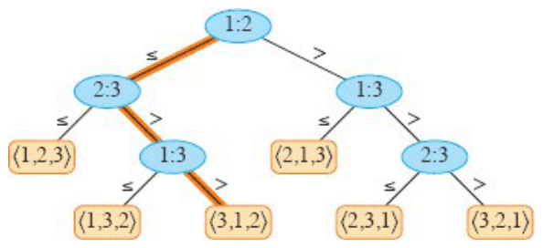
For \(\langle a_1,a_2,a_3\rangle=\langle6,8,5\rangle\) the highlighted path reads: at the root 1:2, \(6\le8\), go left; at node 2:3, \(8>5\), go right; at node 1:3, \(6>5\), go right. The leaf \(\langle3,1,2\rangle\) says \(a_3\le a_1\le a_2\), that is \(5\le6\le8\). Three elements have \(3!=6\) orderings, so the tree has at least 6 leaves.对于 \(\langle a_1,a_2,a_3\rangle=\langle6,8,5\rangle\)，高亮路径为：在根结点 1:2 处，\(6\le8\)，向左走；在结点 2:3 处，\(8>5\)，向右走；在结点 1:3 处，\(6>5\)，向右走。叶子 \(\langle3,1,2\rangle\) 表示 \(a_3\le a_1\le a_2\)，即 \(5\le6\le8\)。三个元素有 \(3!=6\) 种次序，因此这棵树至少有 6 个叶子。
A correct algorithm must be able to produce every one of the \(n!\) orderings. So every permutation labels at least one reachable（可达的）leaf, a leaf that some input actually reaches.正确的算法必须能够给出 \(n!\) 种次序中的每一种。因此，每个排列至少会标记一个可达的叶子，即某个输入确实会到达的叶子。
Step 3: the lower bound第 3 步：下界
In words: \(h\) yes/no answers can tell apart at most \(2^h\) cases, and sorting must tell apart \(n!\) cases.用文字表述：\(h\) 个是非问题最多能区分 \(2^h\) 种情况，而排序必须区分 \(n!\) 种情况。
Theorem. Any comparison sort makes \(\Omega(n\lg n)\) comparisons in the worst case.定理。 任何比较排序在最坏情况下都要做 \(\Omega(n\lg n)\) 次比较。
Proof. Take the decision tree of the algorithm for \(n\) elements. Each of the \(n!\) orderings labels at least one reachable leaf, so \(n!\le l\). A binary tree of height \(h\) has at most \(2^h\) leaves, so \(l\le 2^h\). Hence \(n!\le 2^h\). Taking logarithms gives \(h\ge\lg(n!)\). It remains to show \(\lg(n!)=\Omega(n\lg n)\). \(\blacksquare\)证明。 取该算法对 \(n\) 个元素的决策树。\(n!\) 种次序中的每一种都至少标记一个可达叶子，因此 \(n!\le l\)。高度为 \(h\) 的二叉树最多有 \(2^h\) 个叶子，所以 \(l\le 2^h\)。因此 \(n!\le 2^h\)。两边取对数得 \(h\ge\lg(n!)\)。还需要证明 \(\lg(n!)=\Omega(n\lg n)\)。\(\blacksquare\)
Why \(\lg(n!)\) is of order \(n\lg n\). Write \(\lg(n!)=\lg1+\lg2+\dots+\lg n\). Every term is at most \(\lg n\), so \(\lg(n!)\le n\lg n\). At least \(n/2\) of the terms have an index of at least \(n/2\), and each such term is at least \(\lg(n/2)\). So \(\lg(n!)\ge\frac n2\lg\frac n2=\frac n2(\lg n-1)=\Omega(n\lg n)\).为什么 \(\lg(n!)\) 是 \(n\lg n\) 阶的。 记 \(\lg(n!)=\lg1+\lg2+\dots+\lg n\)。每一项都至多为 \(\lg n\)，因此 \(\lg(n!)\le n\lg n\)。至少有 \(n/2\) 项的下标不小于 \(n/2\)，而每一项这样的项都至少为 \(\lg(n/2)\)。因此 \(\lg(n!)\ge\frac n2\lg\frac n2=\frac n2(\lg n-1)=\Omega(n\lg n)\)。
| \(n\) | 3 | 4 | 5 | 6 | 8 | 10 |
|---|---|---|---|---|---|---|
| \(n!\) | 6 | 24 | 120 | 720 | 40,320 | 3,628,800 |
| \(\lceil\lg(n!)\rceil\) | 3 | 5 | 7 | 10 | 16 | 22 |
Sorting 5 elements needs at least 7 comparisons in the worst case, whatever the algorithm.对 5 个元素排序，无论采用什么算法，最坏情况下都至少需要 7 次比较。
Step 4: what the bound means第 4 步：这个下界意味着什么
- Merge sort and heapsort take \(O(n\lg n)\) in the worst case. They match the bound, so they are asymptotically optimal（渐近最优）comparison sorts: no comparison sort beats them by more than a constant factor.归并排序和堆排序在最坏情况下的运行时间为 \(O(n\lg n)\)。它们与下界吻合，因此是渐近最优的比较排序：没有任何比较排序能在常数因子之外击败它们。
- The bound is about the worst case. Insertion sort makes only \(n-1\) comparisons on an already sorted array.这个下界针对的是最坏情况。对于已经有序的数组，插入排序只需做 \(n-1\) 次比较。
- The bound holds only for comparison sorts. Counting sort, radix sort and bucket sort use key values, so they can be linear (Sections 6.2 to 6.4).这个下界只对比较排序成立。计数排序、基数排序和桶排序利用关键字的值，因此它们可以是线性的（见第 6.2 节至第 6.4 节）。
Practice练习
Q1. (Calculation) What is the least number of comparisons any comparison sort needs in the worst case to sort \(n=7\) elements, and \(n=12\) elements? Compare with the \(n(n-1)/2\) comparisons insertion sort may need.Q1.（计算）对 \(n=7\) 个元素和 \(n=12\) 个元素进行排序，任何比较排序在最坏情况下所需的最少比较次数分别是多少？并将其与插入排序在最坏情况下可能需要的 \(n(n-1)/2\) 次比较进行比较。
Answer
The decision tree needs \(n!\) leaves and a tree of height \(h\) has at most \(2^h\) leaves, so \(h\ge\lceil\lg(n!)\rceil\). For \(n=7\): \(7!=5040\), \(\lg5040=12.30\), so at least 13 comparisons. For \(n=12\): \(12!=479{,}001{,}600\), \(\lg(12!)=28.84\), so at least 29. Insertion sort may need \(7\cdot6/2=21\) and \(12\cdot11/2=66\) comparisons. The lower bound grows like \(n\lg n\), insertion sort's worst case like \(n^2\).决策树需要 \(n!\) 个叶子，而高度为 \(h\) 的树至多有 \(2^h\) 个叶子，因此 \(h\ge\lceil\lg(n!)\rceil\)。对于 \(n=7\)：\(7!=5040\)，\(\lg5040=12.30\)，所以至少需要 13 次比较。对于 \(n=12\)：\(12!=479{,}001{,}600\)，\(\lg(12!)=28.84\)，所以至少需要 29 次比较。插入排序可能需要 \(7\cdot6/2=21\) 次和 \(12\cdot11/2=66\) 次比较。下界的增长量级为 \(n\lg n\)，而插入排序最坏情况的增长量级为 \(n^2\)。
Q2. (True or false) "A comparison sort needs \(\Omega(n\lg n)\) comparisons on every input." Also: what is the smallest possible depth of a leaf in a decision tree?Q2.（判断）“比较排序对每个输入都需要 \(\Omega(n\lg n)\) 次比较。”另外，决策树中叶子的最小可能深度是多少？
Answer
False. The bound concerns the longest path, that is, the worst case. Insertion sort uses \(n-1\) comparisons on a sorted array. No leaf is shallower than \(n-1\): with fewer than \(n-1\) comparisons the compared pairs cannot link all elements, so two groups of elements are never related and their relative order is unknown. The smallest depth is \(n-1\).错误。该界针对的是最长路径，即最坏情况。插入排序在已排序的数组上只需 \(n-1\) 次比较。任何叶子的深度都不小于 \(n-1\)：若比较次数少于 \(n-1\)，被比较的元素对就无法把所有元素连通起来，因而至少有两组元素之间没有任何关联，它们的相对次序未知。决策树中叶子的最小深度为 \(n-1\)。
易错：下界是“最坏情况”，不是“每个输入”。
Q3. (Draw) Give a decision tree of height 3 that sorts \(a_1,a_2,a_3\). Why is no tree of height 2 possible?Q3.（画图）给出一棵能对 \(a_1,a_2,a_3\) 进行排序的高度为 3 的决策树。为什么不可能存在高度为 2 的这样的树？
Answer
1:2
<= : 2:3
<= : <1,2,3>
> : 1:3
<= : <1,3,2>
> : <3,1,2>
> : 1:3
<= : <2,1,3>
> : 2:3
<= : <2,3,1>
> : <3,2,1>
Each node \(i:j\) asks whether \(a_i\le a_j\) (left branch yes, right branch no); each leaf lists the order of the indices. The tree has 6 leaves, two at depth 2 and four at depth 3. A tree of height 2 has at most \(2^2=4<6\) leaves, so it cannot contain all \(3!=6\) permutations.每个结点 \(i:j\) 判断 \(a_i\le a_j\) 是否成立（左分支为是，右分支为否）；每个叶子列出下标的次序。该树共有 6 个叶子，其中两个位于深度 2，四个位于深度 3。高度为 2 的树至多有 \(2^2=4<6\) 个叶子，因此它不可能包含全部 \(3!=6\) 种排列。
Counting sort ★★★计数排序
Goal. Run COUNTING-SORT by hand on a small array, give the counter array after each phase, state its time and space, and explain why the placement loop runs from right to left.目标。 在一个小数组上手工运行 COUNTING-SORT，给出每个阶段之后的计数数组，说明它的时间和空间，并解释放置循环为什么从右向左运行。
Step 1: the idea第 1 步：思路
In words: counting sort = count how many elements are at most \(x\), and that number is the last position of \(x\) in the output.用文字表述：计数排序 = 统计不大于 \(x\) 的元素有多少个，这个数就是 \(x\) 在输出中的最后位置。
Counting sort assumes that every one of the \(n\) input elements is an integer from \(0\) to \(k\). For an element \(x\) it finds how many elements are \(\le x\). If 17 elements are \(\le x\), then \(x\) belongs in position 17. Equal elements need extra care, so that they do not all land in the same position.计数排序假设 \(n\) 个输入元素中的每一个都是从 \(0\) 到 \(k\) 之间的整数。对于元素 \(x\)，它找出有多少个元素 \(\le x\)。若有 17 个元素 \(\le x\)，则 \(x\) 应放在第 17 个位置。相等的元素需要特别处理，以免它们全都落在同一个位置。
Step 2: the algorithm第 2 步：算法
COUNTING-SORT takes the array \(A[1:n]\), its length \(n\) and the bound \(k\). It returns the sorted array \(B[1:n]\) and uses a counter array \(C[0:k]\).COUNTING-SORT 接受数组 \(A[1:n]\)、其长度 \(n\) 以及上界 \(k\)。它返回已排序的数组 \(B[1:n]\)，并使用计数数组 \(C[0:k]\)。
COUNTING-SORT(A, n, k)
1 let B[1 : n] and C[0 : k] be new arrays
2 for i = 0 to k
3 C[i] = 0
4 for j = 1 to n
5 C[A[j]] = C[A[j]] + 1
6 // C[i] now contains the number of elements equal to i
7 for i = 1 to k
8 C[i] = C[i] + C[i - 1]
9 // C[i] now contains the number of elements less than or equal to i
10 // Copy A to B, starting from the end of A
11 for j = n downto 1
12 B[C[A[j]]] = A[j]
13 C[A[j]] = C[A[j]] - 1 // to handle duplicate values
14 return B
The table gives the effect and the time of each part.下表给出了每个部分的作用和时间。
| Lines行号 | Effect作用 | Time时间 |
|---|---|---|
| 2–3 | set every counter to 0将每个计数器置为 0 | \(\Theta(k)\) |
| 4–5 | count: afterwards \(C[i]\) is the number of elements equal to \(i\)计数：之后 \(C[i]\) 为等于 \(i\) 的元素个数 | \(\Theta(n)\) |
| 7–8 | running sum（前缀和）: afterwards \(C[i]\) is the number of elements \(\le i\)前缀和：之后 \(C[i]\) 为 \(\le i\) 的元素个数 | \(\Theta(k)\) |
| 11–13 | place \(A[j]\) at position \(C[A[j]]\) of \(B\), scanning \(A\) from the right, then decrement that counter将 \(A[j]\) 放到 \(B\) 的位置 \(C[A[j]]\)（从右往左扫描 \(A\)），然后将该计数器减 1 | \(\Theta(n)\) |
- Lines 2–3 and 4–5 build a histogram: afterwards \(C[i]\) is the number of elements equal to \(i\).第 2–3 行和第 4–5 行构造直方图：之后，\(C[i]\) 为等于 \(i\) 的元素个数。
- Lines 7–8 turn it into a cumulative histogram, the running sum（前缀和）. Now \(C[i]\) is the number of elements \(\le i\).第 7–8 行把它变成累积直方图，即前缀和。现在 \(C[i]\) 是 \(\le i\) 的元素个数。
- Line 12 puts \(A[j]\) in position \(C[A[j]]\). That is the highest position still free for this value.第 12 行把 \(A[j]\) 放到位置 \(C[A[j]]\)。这是该值仍然空着的最高位置。
- Line 13 lowers the counter by 1, so the next copy of the same value goes one position to the left.第 13 行把计数器减 1，因此同一个值的下一个副本会放到左边一个位置。
If all keys are distinct, \(C[A[j]]\) is exactly the final position, because exactly \(C[A[j]]\) elements are \(\le A[j]\). With duplicates, the scan from the right puts the last copy in the highest slot reserved for its value. The earlier copies fill the slots to its left.若所有关键字互不相同，\(C[A[j]]\) 恰好就是最终位置，因为恰好有 \(C[A[j]]\) 个元素 \(\le A[j]\)。若有重复，从右向左的扫描会把最后一个副本放进为该值保留的最高槽位。较早的副本依次填入它左边的槽位。
Step 3: one complete trace第 3 步：完整演算一遍
How to do it by hand: 1. Write \(C\) after the counting loop. 2. Add running sums. 3. For \(j=n\) down to 1, put \(A[j]\) at \(B[C[A[j]]]\) and lower \(C[A[j]]\) by 1. 4. Write \(B\).手工做法：1. 在计数循环之后写出 \(C\)。2. 做前缀和。3. 对 \(j=n\) 递减到 1，把 \(A[j]\) 放到 \(B[C[A[j]]]\)，并把 \(C[A[j]]\) 减 1。4. 写出 \(B\)。
Sort \(A=[6,0,2,0,1,3,4,6,1,3,2]\) with \(n=11\) and \(k=6\). After lines 4–5, \(C=[2,2,2,2,1,0,2]\) for the indices \(0,\dots,6\). After lines 7–8, \(C=[2,4,6,8,9,9,11]\). For example, 8 elements are \(\le3\), so the last 3 belongs in position 8. The placement loop runs from \(j=11\) down to \(1\).对 \(A=[6,0,2,0,1,3,4,6,1,3,2]\) 进行排序，其中 \(n=11\) 且 \(k=6\)。第 4–5 行之后，对下标 \(0,\dots,6\) 有 \(C=[2,2,2,2,1,0,2]\)。第 7–8 行之后，\(C=[2,4,6,8,9,9,11]\)。例如，8 个元素 \(\le3\)，因此最后一个 3 应放在位置 8。放置循环从 \(j=11\) 递减到 \(1\)。
| \(j\) | 11 | 10 | 9 | 8 | 7 | 6 | 5 | 4 | 3 | 2 | 1 |
|---|---|---|---|---|---|---|---|---|---|---|---|
| \(A[j]\) | 2 | 3 | 1 | 6 | 4 | 3 | 1 | 0 | 2 | 0 | 6 |
| goes to \(B[\cdot]\) | 6 | 8 | 4 | 11 | 9 | 7 | 3 | 2 | 5 | 1 | 10 |
| \(C[A[j]]\) afterwards | 5 | 7 | 3 | 10 | 8 | 6 | 2 | 1 | 4 | 0 | 9 |
The result is \(B=[0,0,1,1,2,2,3,3,4,6,6]\). The two 3s, at positions 6 and 10 of \(A\), land in positions 7 and 8 in their input order.结果为 \(B=[0,0,1,1,2,2,3,3,4,6,6]\)。两个 3 分别位于 \(A\) 中的第 6 和第 10 位，它们按输入次序落在第 7 和第 8 位。

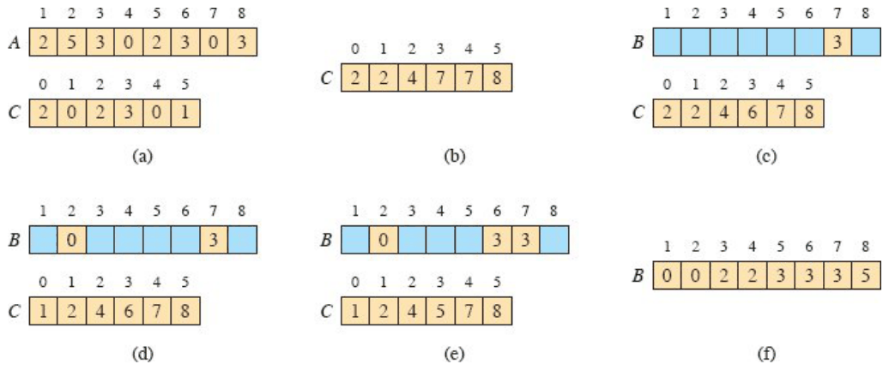
The figure shows the same method on 8 numbers with \(k=5\): \(C\) after line 5, \(C\) after line 8, three steps of the placement loop, and the final \(B\).图中展示了同样的方法在 8 个数上的运行情况，数据为 \(k=5\)：第 5 行之后为 \(C\)，第 8 行之后为 \(C\)，放置循环的三步，以及最终的 \(B\)。
Step 4: time, space and stability第 4 步：时间、空间和稳定性
In words: counting sort touches each element a constant number of times and each counter a constant number of times.用文字表述：计数排序对每个元素只访问常数次，对每个计数器也只访问常数次。
The time is linear, \(\Theta(n)\), when \(k=O(n)\). For \(k=n^2\) it is \(\Theta(n^2)\) and merge sort is better. Keys from a range \([m,M]\) are shifted by \(m\), so that \(k=M-m\).当 \(k=O(n)\) 时，时间为线性，即 \(\Theta(n)\)。若 \(k=n^2\)，则时间为 \(\Theta(n^2)\)，此时归并排序更好。对于取值在 \([m,M]\) 范围内的关键字，先整体平移 \(m\)，使得 \(k=M-m\)。
Counting sort beats \(\Omega(n\lg n)\) because it is not a comparison sort. It never compares two keys. The key values index the array \(C\).计数排序之所以能快于 \(\Omega(n\lg n)\)，是因为它不是比较排序。它从不比较两个关键字，关键字的值直接用来作为数组 \(C\) 的下标。
It is stable, because the right-to-left scan puts the later of two equal elements into the higher slot. Records with satellite data keep their input order. Radix sort needs this property (Section 6.3).它是稳定的，因为从右向左的扫描把两个相等元素中靠后的那个放进较高的槽位。带卫星数据的记录保持输入时的次序。基数排序需要这一性质（见第 6.3 节）。
Practice练习
Q1. (Trace) Sort \(A=[4,1,3,4,3,0,1,4]\) with \(k=4\). Give \(C\) after lines 4–5 and after lines 7–8, the output \(B\), and the output position of the last 4 of the input.Q1.（手工演算）用 \(k=4\) 对 \(A=[4,1,3,4,3,0,1,4]\) 进行排序。给出第 4–5 行与第 7–8 行执行之后的 \(C\)、输出 \(B\)，以及输入中最后一个 4 的输出位置。
Answer
After counting, \(C=[1,2,0,2,3]\); after the running sums, \(C=[1,3,3,5,8]\). The placement loop starts with \(j=8\): \(A[8]=4\) goes to \(B[C[4]]=B[8]\) and \(C[4]\) becomes 7. So the last 4 of the input is the last element of the output. Continuing: \(A[7]=1\to B[3]\), \(A[6]=0\to B[1]\), \(A[5]=3\to B[5]\), \(A[4]=4\to B[7]\), \(A[3]=3\to B[4]\), \(A[2]=1\to B[2]\), \(A[1]=4\to B[6]\). The result is \(B=[0,1,1,3,3,4,4,4]\).计数之后为 \(C=[1,2,0,2,3]\)；前缀和之后为 \(C=[1,3,3,5,8]\)。放置循环从 \(j=8\) 开始：\(A[8]=4\) 放到 \(B[C[4]]=B[8]\)，\(C[4]\) 变为 7。因此，输入中最后一个 4 就是输出中的最后一个元素。接着依次为 \(A[7]=1\to B[3]\)、\(A[6]=0\to B[1]\)、\(A[5]=3\to B[5]\)、\(A[4]=4\to B[7]\)、\(A[3]=3\to B[4]\)、\(A[2]=1\to B[2]\)、\(A[1]=4\to B[6]\)。结果为 \(B=[0,1,1,3,3,4,4,4]\)。
Q2. (Explain) Suppose line 11 is changed to for j = 1 to n. Show with \(A=[2_a,1,2_b]\) that the output is still sorted but not stable. How can you scan left to right and still be stable?Q2.（解释）假设将第 11 行改为 for j = 1 to n。用 \(A=[2_a,1,2_b]\) 说明输出仍然有序，但不稳定。如何在从左向右扫描的同时仍保持稳定？
Answer
Counting and running sums are unchanged: \(C=[0,1,3]\). Scanning left to right, \(2_a\) goes to \(B[3]\) (then \(C[2]=2\)), \(1\) to \(B[1]\), and \(2_b\) to \(B[2]\). The output \([1,2_b,2_a]\) is sorted, but the equal keys are reversed. It stays sorted because each key still receives a distinct slot among those reserved for its value; only the order inside that block flips. For a stable left-to-right scan, let \(C[i]\) be the number of elements \(<i\) (running sums shifted by one value), increment \(C[A[j]]\) first and then set \(B[C[A[j]]]=A[j]\). For \(A=[2_a,1,2_b]\) this gives \(C=[0,0,1]\) and the output \([1,2_a,2_b]\).计数与前缀和保持不变：\(C=[0,1,3]\)。从左向右扫描时，\(2_a\) 放到 \(B[3]\)（然后再放到 \(C[2]=2\)），\(1\) 放到 \(B[1]\)，\(2_b\) 放到 \(B[2]\)。输出 \([1,2_b,2_a]\) 有序，但相等的键次序颠倒了。它仍然有序，是因为每个键依然获得为其值保留的那些位置中一个不同的位置，只是该块内部的次序翻转了。若要使从左向右的扫描保持稳定，可令 \(C[i]\) 为 \(<i\) 的元素个数（即前缀和平移一个取值），先将 \(C[A[j]]\) 加 1，然后再设置 \(B[C[A[j]]]=A[j]\)。对于 \(A=[2_a,1,2_b]\)，这给出 \(C=[0,0,1]\)，输出为 \([1,2_a,2_b]\)。
Q3. (Extension) Describe an algorithm that preprocesses \(n\) integers from \(0\) to \(k\) in \(\Theta(n+k)\) time and then answers "how many of the integers lie in \([a,b]\)?" in \(O(1)\) time.Q3.（拓展）描述一种算法：它用 \(\Theta(n+k)\) 时间对 \(n\) 个取值从 \(0\) 到 \(k\) 的整数进行预处理，然后用 \(O(1)\) 时间回答“这些整数中有多少个落在 \([a,b]\) 之内？”
Answer
Run only the counting part of COUNTING-SORT (lines 1–9): counters and running sums, \(\Theta(n+k)\). Now \(C[i]\) is the number of integers \(\le i\), so the number in \([a,b]\) is \(C[b]-C[a-1]\) (with \(C[-1]=0\)): two array reads and one subtraction. Example: for the array \(A=\langle 6,0,2,0,1,3,4,6,1,3,2\rangle\) with \(k=6\), \(C=[2,4,6,8,9,9,11]\); the integers in \([2,4]\) number \(C[4]-C[1]=9-4=5\) (namely 2, 2, 3, 3, 4), and those in \([5,6]\) number \(C[6]-C[4]=11-9=2\). The idea: \(C\) is a cumulative histogram, which also answers range counts.只运行 COUNTING-SORT 的计数部分（第 1–9 行）：计数器和前缀和，\(\Theta(n+k)\)。现在 \(C[i]\) 是不大于 \(\le i\) 的整数个数，所以落在 \([a,b]\) 中的整数个数为 \(C[b]-C[a-1]\)（其中 \(C[-1]=0\)）：只需两次数组读取和一次减法。例如，对数组 \(A=\langle 6,0,2,0,1,3,4,6,1,3,2\rangle\)，其中 \(k=6\)，\(C=[2,4,6,8,9,9,11]\)；落在 \([2,4]\) 中的整数有 \(C[4]-C[1]=9-4=5\) 个（即 2、2、3、3、4），而落在 \([5,6]\) 中的整数有 \(C[6]-C[4]=11-9=2\) 个。关键在于：\(C\) 是一个累积直方图，它也能用来回答区间计数问题。
Radix sort ★★★基数排序
Goal. Trace RADIX-SORT pass by pass, prove it correct by induction, compute its running time, choose the digit size, and sort integers up to \(n^c-1\) in linear time.目标。 逐趟手工演算 RADIX-SORT，用归纳法证明它的正确性，计算它的运行时间，选择数位大小，并在线性时间内对不超过 \(n^c-1\) 的整数排序。
Step 1: the algorithm第 1 步：算法
In words: radix sort = sort by the last digit, then by the next one, and so on up to the first digit, each time with a stable sort.用文字表述：基数排序 = 先按最低位排序，再按下一位排序，依此类推直到最高位，每次都用稳定排序。
Counting sort alone is too slow for a large key range. For \(n=1000\) keys from \(0\) to \(999{,}999\) it costs about \(n+k\approx10^6\) steps. Radix sort（基数排序）splits every key into digits and sorts one digit position at a time. It starts with the least significant digit.只用计数排序，对于很大的关键字范围来说太慢。对 \(n=1000\) 个取值在 \(0\) 到 \(999{,}999\) 之间的关键字，它大约需要 \(n+k\approx10^6\) 步。基数排序把每个关键字拆分成若干数位，每次只对一个数位排序。它从最低有效位开始。
RADIX-SORT(A, n, d)
1 for i = 1 to d
2 use a stable sort to sort array A[1 : n] on digit i
- Digit 1 is the lowest-order digit and digit \(d\) the highest.第 1 位是最低位，第 \(d\) 位是最高位。
- Line 2 sorts the whole array on digit \(i\) only. The sort must be stable. Counting sort is the usual choice, because digits are small integers.第 2 行只按数位 \(i\) 对整个数组排序。这个排序必须是稳定的。通常选用计数排序，因为数位是较小的整数。
How to do it by hand: 1. Write all keys with the same number of digits. 2. Sort stably on the last digit. 3. Sort stably on the next digit to the left. 4. After the leftmost digit, the list is sorted.手工做法：1. 把所有关键字写成相同的位数。2. 按最低位做稳定排序。3. 按左边紧邻的下一位做稳定排序。4. 对最高位排完后，列表即已排好序。

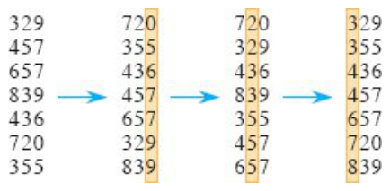
Each column of the table is the list after one stable pass.表中的每一列都是经过一趟稳定排序后的列表。
| input输入 | after digit 1 (units)按数位 1（个位）排序后 | after digit 2 (tens)按数位 2（十位）排序后 | after digit 3 (hundreds)按数位 3（百位）排序后 |
|---|---|---|---|
| 329 | 720 | 720 | 329 |
| 457 | 355 | 329 | 355 |
| 657 | 436 | 436 | 436 |
| 839 | 457 | 839 | 457 |
| 436 | 657 | 355 | 657 |
| 720 | 329 | 457 | 720 |
| 355 | 839 | 657 | 839 |
Radix sort also sorts records by several fields. To sort dates, sort stably on the day first, then on the month, then on the year.基数排序也可以按多个字段对记录排序。若要对日期排序，先按日排序，再按月排序，最后按年排序，每次都保持稳定。
Step 2: why it works第 2 步：为什么它是正确的
In words: after pass \(i\) the list is sorted on its last \(i\) digits, and stability keeps the older order whenever the new digit ties.用文字表述：经过第 \(i\) 趟后，列表按其最低的 \(i\) 位有序；每当新数位相等时，稳定性保留原来的先后次序。
Claim. After pass \(i\) the array is sorted on its \(i\) lowest digits, read as a number.结论。 经过第 \(i\) 趟后，数组按其最低的 \(i\) 位（作为一个数来读取）有序。
Proof by induction on \(i\). After pass 1 the array is sorted on digit 1. Assume that before pass \(i\) it is sorted on the digits \(i-1,\dots,1\). Take two numbers \(x\) and \(y\).对 \(i\) 用归纳法证明。 第 1 趟之后，数组按数位 1 有序。假设在第 \(i\) 趟之前，数组已按数位 \(i-1,\dots,1\) 有序。任取两个数 \(x\) 和 \(y\)。
- If their digits \(i\) differ, pass \(i\) puts them in the right order, whatever came before.若它们在数位 \(i\) 上不同，第 \(i\) 趟会把它们放到正确的次序，与之前的次序无关。
- If their digits \(i\) are equal, the stable sort keeps their earlier relative order, which is correct by the induction hypothesis.若它们在数位 \(i\) 上相等，稳定排序会保留它们之前的相对次序，而根据归纳假设，这个次序是正确的。
So the array is sorted on the digits \(i,\dots,1\). After pass \(d\) it is sorted on all digits. \(\blacksquare\)因此，数组按数位 \(i,\dots,1\) 有序。第 \(d\) 趟之后，它按所有数位有序。\(\blacksquare\)
Stability is used exactly in the equal-digit case. Example: after the units pass 41 stands before 42. If the tens pass swapped them, although both have tens digit 4, the output 42, 41 would be wrong.稳定性恰好在数位相等的情况下起作用。例如，经过个位那一趟之后，41 排在 42 之前。若十位那一趟把它们交换了，虽然两者的十位都是 4，输出 42、41 就错了。
Step 3: running time and digit size第 3 步：运行时间和数位大小
In words: time = number of passes × cost of one counting-sort pass.用文字表述：时间 = 趟数 × 一趟计数排序的代价。
For \(b\)-bit keys choose a digit size \(r\) with \(r\le b\). Then \(d=\lceil b/r\rceil\) and \(k=2^r\).对于 \(b\) 位的关键字，选择数位大小 \(r\)，使得 \(r\le b\)。于是 \(d=\lceil b/r\rceil\)，且 \(k=2^r\)。
A larger \(r\) means fewer passes but more counters. A smaller \(r\) means the opposite. If \(r\) is above \(\lg n\), then \(2^r\) grows much faster than \(r\) in the denominator, so the time gets worse. If \(r\) is below \(\lg n\), there are more passes while \(n+2^r\) stays \(\Theta(n)\).\(r\) 越大，趟数越少，但计数器越多；较小的 \(r\) 则意味着相反的情况。若 \(r\) 超过 \(\lg n\)，那么 \(2^r\) 的增长远快于分母中的 \(r\)，时间就会变差。若 \(r\) 低于 \(\lg n\)，则趟数更多，而 \(n+2^r\) 仍保持为 \(\Theta(n)\)。
Integers up to \(n^c-1\). Write each key in base \(n\). It has \(c\) digits, each in \(0,\dots,n-1\). Radix sort with \(d=c\) passes and \(k=n\) costs \(c\cdot\Theta(n+n)=\Theta(cn)\). For constant \(c\) this is \(\Theta(n)\).不超过 \(n^c-1\) 的整数。 把每个关键字写成以 \(n\) 为基数的形式。它有 \(c\) 个数位，每个数位取值在 \(0,\dots,n-1\) 中。用 \(d=c\) 趟、\(k=n\) 的基数排序，代价为 \(c\cdot\Theta(n+n)=\Theta(cn)\)。当 \(c\) 为常数时，这就是 \(\Theta(n)\)。
Step 4: radix sort versus comparison sorts第 4 步：基数排序与比较排序的比较
- If \(b=O(\lg n)\), digits of about \(\lg n\) bits need \(O(1)\) passes. Radix sort runs in \(\Theta(n)\), against \(\Theta(n\lg n)\) for quicksort.若 \(b=O(\lg n)\)，数位约为 \(\lg n\) 位，则需要 \(O(1)\) 趟。基数排序的运行时间为 \(\Theta(n)\)，而快速排序为 \(\Theta(n\lg n)\)。
- The constants differ. A radix pass may be slower than a quicksort pass, and quicksort uses the cache better.两者的常数不同。一趟基数排序可能比一趟快速排序慢，而且快速排序更能有效利用高速缓存。
- Radix sort with counting sort is not in place. It needs a second array and the counters. Heapsort and quicksort sort in place.以计数排序实现的基数排序不是原址的，它需要第二个数组和计数器。堆排序和快速排序是原址排序。
Practice练习
Q1. (Trace) Sort the words COW, DOG, SEA, RUG, ROW, MOB, BOX, TAB, BAR, EAR, TAR, DIG, BIG, TEA, NOW, FOX with RADIX-SORT. Give the list after each pass.Q1.（手工演算）用 RADIX-SORT 对下列单词进行排序：COW, DOG, SEA, RUG, ROW, MOB, BOX, TAB, BAR, EAR, TAR, DIG, BIG, TEA, NOW, FOX。给出每一趟之后的列表。
Answer
Words have \(d=3\) letters; digit 1 is the last letter. After pass 1 (last letter): SEA TEA MOB TAB DOG RUG DIG BIG BAR EAR TAR COW ROW NOW BOX FOX. After pass 2 (middle letter): TAB BAR EAR TAR SEA TEA DIG BIG MOB DOG COW ROW NOW BOX FOX RUG. After pass 3 (first letter): BAR BIG BOX COW DIG DOG EAR FOX MOB NOW ROW RUG SEA TAB TAR TEA, which is alphabetical order. Stability at work: in pass 1, DOG, RUG, DIG and BIG all end in G and keep their input order.这些单词都有 \(d=3\) 个字母；数位 1 为最后一个字母。第 1 趟（最后一个字母）之后：SEA TEA MOB TAB DOG RUG DIG BIG BAR EAR TAR COW ROW NOW BOX FOX。第 2 趟（中间字母）之后：TAB BAR EAR TAR SEA TEA DIG BIG MOB DOG COW ROW NOW BOX FOX RUG。第 3 趟（首字母）之后：BAR BIG BOX COW DIG DOG EAR FOX MOB NOW ROW RUG SEA TAB TAR TEA，即按字母顺序排列。稳定性在此发挥了作用：第 1 趟中，DOG、RUG、DIG 和 BIG 都以 G 结尾，且保持了它们的输入次序。
Q2. (Design) Sort \(n\) integers from \(0\) to \(n^3-1\) in \(O(n)\) time. Show the passes for \(n=5\) and the keys 110, 3, 77, 124, 25.Q2.（设计）在 \(O(n)\) 时间内对 \(n\) 个取值从 \(0\) 到 \(n^3-1\) 的整数进行排序。给出 \(n=5\) 对键 110、3、77、124、25 的各趟过程。
Answer
Write each key in base \(n\). Because \(x<n^3\), it has 3 digits, each in \(0,\dots,n-1\); division and remainder give them in \(O(1)\) per key. Radix sort with \(d=3\) passes of counting sort with \(k=n\) costs \(3\cdot\Theta(n+n)=\Theta(n)\). (Counting sort alone would take \(\Theta(n+n^3)\), a comparison sort \(\Theta(n\lg n)\).) For \(n=5\): \(110=(4,2,0)_5\), \(3=(0,0,3)_5\), \(77=(3,0,2)_5\), \(124=(4,4,4)_5\), \(25=(1,0,0)_5\). After the last digit: 110, 25, 77, 3, 124. After the middle digit: 25, 77, 3, 110, 124. After the first digit: 3, 25, 77, 110, 124.将每个键写成 \(n\) 进制。由于 \(x<n^3\)，每个键有 3 个数位，每个数位取值在 \(0,\dots,n-1\) 中；通过除法与取余，每个键可在 \(O(1)\) 时间内得到这些数位。用 \(d=3\) 趟计数排序（\(k=n\)）的基数排序耗时 \(3\cdot\Theta(n+n)=\Theta(n)\)。（单独使用计数排序需要 \(\Theta(n+n^3)\)，而比较排序需要 \(\Theta(n\lg n)\)。）对于 \(n=5\)：\(110=(4,2,0)_5\)、\(3=(0,0,3)_5\)、\(77=(3,0,2)_5\)、\(124=(4,4,4)_5\)、\(25=(1,0,0)_5\)。按最后一个数位排序之后：110, 25, 77, 3, 124。按中间数位排序之后：25, 77, 3, 110, 124。按第一个数位排序之后：3, 25, 77, 110, 124。
思路：把大范围的数按 \(n\) 进制拆成常数个“数位”，每位的取值范围只有 \(n\)。
Q3. (Calculation) Sort \(n=1000\) keys of \(b=24\) bits with radix sort on \(r\)-bit digits. Using the cost \(\lceil b/r\rceil(n+2^r)\), compare \(r=6,8,9,12,24\). Which is best?Q3.（计算）用基数排序对 \(n=1000\) 个 \(b=24\) 位的键进行排序，数位取 \(r\) 位。利用代价 \(\lceil b/r\rceil(n+2^r)\)，比较 \(r=6,8,9,12,24\)。哪一个最优？
Answer
\(r=6\): \(4\cdot1064=4256\). \(r=8\): \(3\cdot1256=3768\). \(r=9\): \(3\cdot1512=4536\). \(r=12\): \(2\cdot5096=10{,}192\). \(r=24\): \(1\cdot16{,}778{,}216\). The best is \(r=8\) (3 passes, 256 counters). Although \(\lfloor\lg1000\rfloor=9\), \(r=9\) needs the same 3 passes with more counters. The rule \(r=\lfloor\lg n\rfloor\) is optimal only up to a constant factor, because \(\lceil b/r\rceil\) is an integer.\(r=6\)：\(4\cdot1064=4256\)。\(r=8\)：\(3\cdot1256=3768\)。\(r=9\)：\(3\cdot1512=4536\)。\(r=12\)：\(2\cdot5096=10{,}192\)。\(r=24\)：\(1\cdot16{,}778{,}216\)。最优的是 \(r=8\)（3 趟，256 个计数器）。尽管 \(\lfloor\lg1000\rfloor=9\)，\(r=9\) 仍需相同的 3 趟，只是计数器更多。规则 \(r=\lfloor\lg n\rfloor\) 只在一个常数因子之内是最优的，因为 \(\lceil b/r\rceil\) 必须是整数。
Bucket sort ★★桶排序
Goal. Trace BUCKET-SORT, prove that its expected time is \(\Theta(n)\) for uniform input, and give its worst case.目标。 手工演算 BUCKET-SORT，证明对均匀输入其期望时间为 \(\Theta(n)\)，并给出它的最坏情况。
Step 1: the algorithm第 1 步：算法
In words: bucket sort = spread the numbers over \(n\) equal intervals, sort each small bucket, and read the buckets in order.用文字表述：桶排序 = 把数分散到 \(n\) 个等长区间中，对每个小桶排序，然后按顺序读出各桶。
Bucket sort（桶排序）assumes that the \(n\) input numbers are independent and uniform on \([0,1)\). The assumption concerns the distribution, not the range. The interval is divided into \(n\) buckets（桶）. Bucket \(i\) holds the values in \([i/n,(i+1)/n)\). Because the input is uniform, no bucket is expected to receive many numbers.桶排序假设 \(n\) 个输入数相互独立，且在 \([0,1)\) 上均匀分布。这个假设针对的是分布，而不是取值范围。区间被分成 \(n\) 个桶。桶 \(i\) 装的是 \([i/n,(i+1)/n)\) 中的值。由于输入是均匀的，人们不期望任何一个桶会装很多数。
BUCKET-SORT(A, n)
1 let B[0 : n - 1] be a new array
2 for i = 0 to n - 1
3 make B[i] an empty list
4 for i = 1 to n
5 insert A[i] into list B[⌊n · A[i]⌋]
6 for i = 0 to n - 1
7 sort list B[i] with insertion sort
8 concatenate the lists B[0], B[1], ..., B[n - 1] together in order
9 return the concatenated lists
Line 5 puts \(A[i]\) into bucket \(\lfloor n\cdot A[i]\rfloor\). Line 7 sorts each bucket with insertion sort. Line 8 lists the buckets from the lowest index up.第 5 行把 \(A[i]\) 放入桶 \(\lfloor n\cdot A[i]\rfloor\)。第 7 行用插入排序对每个桶排序。第 8 行从下标最小的桶开始依次列出各桶。

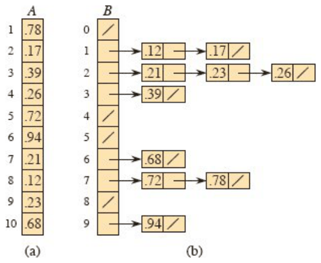
Correctness. If \(A[i]\le A[j]\), then \(\lfloor nA[i]\rfloor\le\lfloor nA[j]\rfloor\). So \(A[i]\) is in the same bucket as \(A[j]\) or in a lower one. In the same bucket, line 7 orders them. In different buckets, line 8 lists the lower bucket first.正确性。若 \(A[i]\le A[j]\)，则 \(\lfloor nA[i]\rfloor\le\lfloor nA[j]\rfloor\)。因此 \(A[i]\) 与 \(A[j]\) 在同一个桶中，或者在更低的桶中。在同一个桶中，第 7 行负责排好它们的次序。在不同的桶中，第 8 行会先列出较低的那个桶。
Step 2: expected running time第 2 步：期望运行时间
In words: insertion sort costs the square of the bucket size, so we need the average of the squared size.用文字表述：插入排序的代价与桶大小的平方成正比，因此我们需要求桶大小平方的平均值。
Every line except line 7 takes \(O(n)\) time even in the worst case. A bucket with \(n_i\) elements costs \(O(n_i^2)\).除第 7 行外，每一行即使在最坏情况下也只需 \(O(n)\) 时间。含有 \(n_i\) 个元素的桶，其代价为 \(O(n_i^2)\)。
Proof of \(\mathrm{E}[n_i^2]=2-1/n\). Each of the \(n\) inputs falls into bucket \(i\) with probability \(p=1/n\), because the bucket is an interval of length \(1/n\) and the input is uniform. The inputs are independent, so \(n_i\) is binomial. Hence \(\mathrm{E}[n_i]=np=1\) and \(\mathrm{Var}[n_i]=np(1-p)=1-1/n\). Therefore \(\mathrm{E}[n_i^2]=\mathrm{Var}[n_i]+\mathrm{E}^2[n_i]=(1-1/n)+1=2-1/n\). \(\blacksquare\)\(\mathrm{E}[n_i^2]=2-1/n\) 的证明。 \(n\) 个输入中的每一个以概率 \(p=1/n\) 落入桶 \(i\)，因为该桶是长度为 \(1/n\) 的区间，而输入是均匀的。各输入相互独立，所以 \(n_i\) 服从二项分布。于是 \(\mathrm{E}[n_i]=np=1\)，且 \(\mathrm{Var}[n_i]=np(1-p)=1-1/n\)。因此 \(\mathrm{E}[n_i^2]=\mathrm{Var}[n_i]+\mathrm{E}^2[n_i]=(1-1/n)+1=2-1/n\)。\(\blacksquare\)
So \(\mathrm{E}[T(n)]=\Theta(n)+n\cdot O(2-1/n)=\Theta(n)\). The point is that \(\mathrm{E}[n_i^2]\) is a constant independent of \(n\). It is close to 2, not 1: the average bucket holds one element, but some hold 2 or 3 and pay the square.因此 \(\mathrm{E}[T(n)]=\Theta(n)+n\cdot O(2-1/n)=\Theta(n)\)。关键在于 \(\mathrm{E}[n_i^2]\) 是一个与 \(n\) 无关的常数。它接近 2 而不是 1：平均每个桶只装一个元素，但有些桶会装 2 个或 3 个元素，并为此付出平方的代价。
Step 3: worst case and variants第 3 步：最坏情况和变体
- If all \(n\) numbers fall into one bucket (for example, all equal), insertion sort takes \(\Theta(n^2)\). The worst case of bucket sort is \(\Theta(n^2)\).若全部 \(n\) 个数都落入同一个桶（例如全部相等），插入排序需要 \(\Theta(n^2)\) 时间。桶排序的最坏情况为 \(\Theta(n^2)\)。
- Sort each bucket with merge sort or heapsort instead. The worst case drops to \(O(n\lg n)\), and the expected time stays \(O(n)\).改用归并排序或堆排序对每个桶排序。最坏情况降为 \(O(n\lg n)\)，而期望时间仍为 \(O(n)\)。
- Uniformity is sufficient, not necessary. Bucket sort is linear whenever \(\sum_in_i^2=O(n)\).均匀性是充分条件，而非必要条件。只要 \(\sum_in_i^2=O(n)\)，桶排序就是线性的。
Practice练习
Q1. (Trace) Run BUCKET-SORT with \(n=10\) on \(A=[.79,.13,.16,.64,.39,.20,.89,.53,.71,.42]\).Q1.（手工演算）对 \(A=[.79,.13,.16,.64,.39,.20,.89,.53,.71,.42]\) 运行 BUCKET-SORT（取 \(n=10\)）。
Answer
Bucket index \(\lfloor10x\rfloor\): .79 and .71 go to bucket 7 (in input order .79, .71), .13 and .16 to bucket 1, .64 to 6, .39 to 3, .20 to 2, .89 to 8, .53 to 5, .42 to 4. Buckets 0 and 9 are empty. Line 7 sorts bucket 7 into .71, .79; the other buckets are already sorted. Concatenating buckets 0 to 9 gives .13, .16, .20, .39, .42, .53, .64, .71, .79, .89.桶下标为 \(\lfloor10x\rfloor\)：.79 和 .71 放入桶 7（按输入次序为 .79, .71），.13 和 .16 放入桶 1，.64 放入桶 6，.39 放入桶 3，.20 放入桶 2，.89 放入桶 8，.53 放入桶 5，.42 放入桶 4。桶 0 和桶 9 为空。第 7 行将桶 7 排序为 .71, .79；其他桶已经有序。依次连接桶 0 至桶 9，得到 .13, .16, .20, .39, .42, .53, .64, .71, .79, .89。
Q2. (Calculation) Verify \(\mathrm{E}[n_i^2]=2-1/n\) for \(n=4\) by listing the distribution of \(n_i\).Q2.（计算）通过列出 \(n_i\) 的分布来验证 \(n=4\) 时的 \(\mathrm{E}[n_i^2]=2-1/n\)。
Answer
\(n_i\) is binomial with \(n=4\) trials and \(p=1/4\): \(\Pr\{n_i=j\}=\binom4j(1/4)^j(3/4)^{4-j}\), which is \(81/256\), \(108/256\), \(54/256\), \(12/256\), \(1/256\) for \(j=0,\dots,4\) (sum 1). Then \(\mathrm{E}[n_i^2]=(0\cdot81+1\cdot108+4\cdot54+9\cdot12+16\cdot1)/256=448/256=1.75=2-1/4\). As a check, \(\mathrm{E}[n_i]=(108+108+36+4)/256=1\).\(n_i\) 服从二项分布，试验次数为 \(n=4\)，每次成功的概率为 \(p=1/4\)：其分布为 \(\Pr\{n_i=j\}=\binom4j(1/4)^j(3/4)^{4-j}\)，即对 \(j=0,\dots,4\) 分别为 \(81/256\)、\(108/256\)、\(54/256\)、\(12/256\)、\(1/256\)（和为 1）。于是 \(\mathrm{E}[n_i^2]=(0\cdot81+1\cdot108+4\cdot54+9\cdot12+16\cdot1)/256=448/256=1.75=2-1/4\)。作为检验，\(\mathrm{E}[n_i]=(108+108+36+4)/256=1\)。
Choosing a sorting algorithm ★★排序算法的选择
Goal. Pick a sorting algorithm for a task from the properties of the data, and decide whether a statement about the bounds is true.目标。 根据数据的性质为任务选择排序算法，并判断关于界的说法是否正确。
The table compares all sorts of Chapters 1, 5 and 6. A sort is in place if it needs only \(O(1)\) extra memory besides the input, or a small stack.下表比较第 1、5、6 章中的所有排序。若一个排序除输入之外只需要 \(O(1)\) 的额外内存，或只需一个小栈，则它是原址的。
| Algorithm算法 | Worst case最坏情况 | Average or expected平均或期望 | Extra space额外空间 | Stable稳定性 | Requirement on the input对输入的要求 |
|---|---|---|---|---|---|
| Insertion sort插入排序 | \(\Theta(n^2)\) | \(\Theta(n^2)\) | \(O(1)\) | yes是 | none (comparisons)无（仅使用比较） |
| Merge sort归并排序 | \(\Theta(n\lg n)\) | \(\Theta(n\lg n)\) | \(\Theta(n)\) | yes是 | none (comparisons)无（仅使用比较） |
| Heapsort堆排序 | \(O(n\lg n)\) | \(O(n\lg n)\) | \(O(1)\) | no否 | none (comparisons)无（仅使用比较） |
| Quicksort快速排序 | \(\Theta(n^2)\) | \(\Theta(n\lg n)\) | \(O(\lg n)\) stack | no否 | none (comparisons)无（仅使用比较） |
| Counting sort计数排序 | \(\Theta(n+k)\) | \(\Theta(n+k)\) | \(\Theta(n+k)\) | yes是 | integers from \(0\) to \(k\) |
| Radix sort基数排序 | \(\Theta(d(n+k))\) | \(\Theta(d(n+k))\) | \(\Theta(n+k)\) | yes是 | \(d\) digits with \(k\) values each |
| Bucket sort桶排序 | \(\Theta(n^2)\) | \(\Theta(n)\) | \(\Theta(n)\) | if built stably若数位排序稳定 | uniform on \([0,1)\) |
- The first four rows are comparison sorts and obey the \(\Omega(n\lg n)\) bound. Merge sort and heapsort meet it in the worst case, quicksort on average.前四行是比较排序，都遵循 \(\Omega(n\lg n)\) 下界。归并排序与堆排序在最坏情况下达到该下界，快速排序则在平均情况下达到。
- The last three are not comparison sorts. Each is linear only under an assumption: bounded integer keys (counting sort, radix sort with few digits) or uniformly distributed keys (bucket sort).最后三种不是比较排序。它们每一种都只在某个假设下才是线性的：整数关键字有界（计数排序，以及数位较少的基数排序），或关键字均匀分布（桶排序）。
- In place: insertion sort, heapsort, quicksort. Stable: insertion sort, merge sort, counting sort, radix sort.原地排序：插入排序、堆排序、快速排序。稳定排序：插入排序、归并排序、计数排序、基数排序。
- Linear time is not automatically faster in practice. The constants are larger and the extra array costs memory.线性时间在实践中并不会自动更快。它的常数更大，而且额外的数组要占用内存。
How to decide: 1. Only a comparison function is available, so choose a comparison sort. Need a worst-case guarantee and little memory: heapsort. 2. Integer keys in a small range: counting sort. 3. Integer keys with a few digits: radix sort. 4. Uniform real keys: bucket sort. 5. Equal keys must keep their order: a stable sort.如何判断：1. 只能用比较时，选择比较排序。若需要最坏情况的保证且内存很少，选堆排序。2. 整数关键字取值范围较小：计数排序。3. 整数关键字位数较少：基数排序。4. 实数关键字均匀分布：桶排序。5. 相等的关键字必须保持原有次序：稳定排序。
Practice练习
Q1. (Choose) Name a suitable algorithm and justify it. (a) \(10^6\) student records with an integer mark from 0 to 100; equal marks must stay in registration order. (b) \(10^6\) random 32-bit integers. (c) \(10^5\) measurements uniformly distributed on \([0,1)\). (d) \(10^6\) objects with only a comparison function, little spare memory and a required worst-case guarantee.Q1.（选择）给出一种合适的算法并说明理由。（a）\(10^6\) 条学生记录，每条带有 0 到 100 之间的整数成绩；成绩相等者须保持注册顺序。（b）\(10^6\) 个随机 32 位整数。（c）在 \([0,1)\) 上均匀分布的 \(10^5\) 个测量值。（d）\(10^6\) 个对象，仅提供比较函数，额外内存很少，并且要求最坏情况下有保证。
Answer
(a) Counting sort with \(k=100\): \(\Theta(n+k)=\Theta(n)\), and it is stable, so equal marks keep their order. (b) Radix sort with 16-bit digits: 2 passes, about \(2(10^6+65{,}536)\approx2.1\cdot10^6\) steps against \(n\lg n\approx2\cdot10^7\) for a comparison sort; it needs a second array of size \(n\), and a well-tuned quicksort is a fair alternative. (c) Bucket sort with \(n\) buckets: expected \(\Theta(n)\) for uniform data. (d) Heapsort: \(O(n\lg n)\) in the worst case and in place. Quicksort has a \(\Theta(n^2)\) worst case and merge sort needs \(\Theta(n)\) extra space; heapsort is not stable.（a）计数排序（取 \(k=100\)）：\(\Theta(n+k)=\Theta(n)\)，且它是稳定的，因此成绩相等者保持注册顺序。（b）16 位数位的基数排序：2 趟，约 \(2(10^6+65{,}536)\approx2.1\cdot10^6\) 步，而比较排序则需 \(n\lg n\approx2\cdot10^7\) 步；它需要一个大小为 \(n\) 的第二数组，经过良好调优的快速排序同样是合理的替代方案。（c）使用 \(n\) 个桶的桶排序：对于均匀分布的数据，期望时间为 \(\Theta(n)\)。（d）堆排序：最坏情况为 \(O(n\lg n)\)，且为原地排序。快速排序的最坏情况为 \(\Theta(n^2)\)，归并排序需要 \(\Theta(n)\) 的额外空间；堆排序不是稳定的。
Q2. (True or false) Justify each. (a) Counting sort needs \(\Omega(n\lg n)\) comparisons. (b) Radix sort is always faster than quicksort. (c) Bucket sort runs in \(\Theta(n)\) on every input. (d) Merge sort is an asymptotically optimal sorting algorithm.Q2.（判断）逐一给出理由。（a）计数排序需要 \(\Omega(n\lg n)\) 次比较。（b）基数排序总是比快速排序快。（c）桶排序在每个输入上的运行时间都是 \(\Theta(n)\)。（d）归并排序是渐近最优的排序算法。
Answer
(a) False: counting sort makes no comparisons, and the bound applies only to comparison sorts. (b) False: with \(b\)-bit keys radix sort takes \(\Theta(bn/\lg n)\), which beats \(n\lg n\) only if \(b\) is small compared with \(\lg^2n\) (for \(n=10^6\), \(\lg^2n\approx397\)); its passes are also costlier and it is not in place. (c) False: it is linear in expectation for uniform input and \(\Theta(n^2)\) if all keys share one bucket. (d) True among comparison sorts, since it meets the \(\Omega(n\lg n)\) bound; false among all sorting algorithms, because counting or radix sort is faster for restricted inputs.（a）错误：计数排序不做比较，而该下界只适用于比较排序。（b）错误：对于 \(b\) 位的键，基数排序耗时 \(\Theta(bn/\lg n)\)，只有当 \(b\) 相对于 \(\lg^2n\) 很小时，它才会胜过 \(n\lg n\)（例如 \(n=10^6\)，\(\lg^2n\approx397\)）；而且它的每趟代价也更高，并且不是原地排序。（c）错误：对于均匀输入，它的期望时间是线性的，但若所有键都落入同一个桶，则为 \(\Theta(n^2)\)。（d）在比较排序中为真，因为它达到了 \(\Omega(n\lg n)\) 下界；在所有排序算法中为假，因为对于受限输入，计数排序或基数排序更快。
Terms to recognise ★需要认识的术语
| Term术语 | What to know要知道什么 |
|---|---|
| Full binary tree满二叉树 | A tree in which every node has 0 or 2 children; a decision tree is one每个结点都有 0 个或 2 个子结点的树；决策树就是这样的树 |
| Reachable leaf可达叶子 | A leaf that some input reaches; the same permutation may label several leaves某个输入会到达的叶子；同一个排列可能标记多个叶子 |
| Asymptotically optimal渐近最优 | Meets the lower bound up to a constant factor; merge sort and heapsort among comparison sorts与下界仅相差常数因子；比较排序中的归并排序和堆排序 |
| Average-case bound平均情况下的界 | Average leaf depth is at least \(\lg(n!)\), so even on average no comparison sort is faster than \(\Omega(n\lg n)\)平均叶子深度至少为 \(\lg(n!)\)，因此即使在平均意义下，任何比较排序都不会快于 \(\Omega(n\lg n)\) |
| Randomized comparison sort随机化比较排序 | A random choice among deterministic sorts; the bound holds in expectation too在若干确定性排序中随机选择一个；下界对期望同样成立 |
| Adversary argument对手论证 | Merging two sorted lists of \(n\) elements needs at least \(2n-1\) comparisons, so MERGE is optimal合并两个各含 \(n\) 个元素的有序列表至少需要 \(2n-1\) 次比较，因此 MERGE 是最优的 |
| Satellite data卫星数据 | The record attached to a key; stable sorting keeps equal keys in input order附属于某个关键字的记录；稳定排序使相等的关键字保持输入时的次序 |
| In place原地的 | Needs only \(O(1)\) extra memory besides the input; counting sort and merge sort are not除输入外只需 \(O(1)\) 的额外内存；计数排序和归并排序不满足这一条 |
| Running sum前缀和 | Prefix sums of counts; \(C[i]\) becomes the number of elements \(\le i\)计数的前缀和；\(C[i]\) 变为 \(\le i\) 的元素个数 |
| Shifted keys平移后的关键字 | Keys in \([m,M]\) are shifted by \(m\), so that \(k=M-m\)\([m,M]\) 中的关键字平移 \(m\)，使得 \(k=M-m\) |
| Radix sort on fields对字段进行基数排序 | Sort dates by day, then month, then year, each time stably先按日、再按月、最后按年对日期排序，每次都保持稳定 |
| Bucket boundaries桶的边界 | Choose them so each bucket has equal probability, for non-uniform keys对于非均匀关键字，选择边界使每个桶的概率相等 |
Exam-style questions考试题型练习
Q1. (Lower bound, 12 marks) (a) (2) Define a comparison sort and a decision tree. (b) (5) Prove that every comparison sort makes \(\Omega(n\lg n)\) comparisons in the worst case. (c) (3) Show that \(\lg(n!)=\Omega(n\lg n)\). (d) (2) What does the result imply for merge sort and heapsort, and why does it not apply to counting sort?Q1.（下界，12 分）（a）（2 分）定义比较排序与决策树。（b）（5 分）证明每个比较排序在最坏情况下都需要 \(\Omega(n\lg n)\) 次比较。（c）（3 分）证明 \(\lg(n!)=\Omega(n\lg n)\)。（d）（2 分）该结果对归并排序和堆排序意味着什么？它为什么不适用于计数排序？
Answer
(a) A comparison sort determines the sorted order using only comparisons \(a_i\le a_j\) between elements. Its decision tree for input size \(n\) is a full binary tree whose internal nodes \(i:j\) are comparisons (left: \(a_i\le a_j\), right: \(a_i>a_j\)) and whose leaves are permutations; one run is a root-to-leaf path.（a）比较排序仅通过元素之间的比较 \(a_i\le a_j\) 来确定排序后的次序。其在输入规模为 \(n\) 时的决策树是一棵满二叉树：内部结点 \(i:j\) 为比较（左分支 \(a_i\le a_j\)，右分支 \(a_i>a_j\)），叶子为排列；一次运行即为从根到叶子的一条路径。
(b) Let the tree have height \(h\) and \(l\) reachable leaves. The worst-case number of comparisons is \(h\). Each of the \(n!\) input orderings needs a leaf, so \(l\ge n!\). A binary tree of height \(h\) has at most \(2^h\) leaves, so \(n!\le l\le2^h\) and \(h\ge\lg(n!)\).（b）设该树的高度为 \(h\)，有 \(l\) 个可达叶子。最坏情况下的比较次数为 \(h\)。\(n!\) 种输入次序中的每一种都需要一个叶子，因此 \(l\ge n!\)。高度为 \(h\) 的二叉树至多有 \(2^h\) 个叶子，因此 \(n!\le l\le2^h\)，且 \(h\ge\lg(n!)\)。
(c) \(\lg(n!)=\sum_{i=1}^{n}\lg i\ge\sum_{i=\lceil n/2\rceil}^{n}\lg i\ge\frac n2\lg\frac n2=\frac n2(\lg n-1)=\Omega(n\lg n)\).
(d) Merge sort and heapsort take \(O(n\lg n)\) in the worst case, so they are asymptotically optimal comparison sorts. Counting sort is not a comparison sort: it never compares two keys but uses key values as array indices and assumes integers in \(0,\dots,k\), so it can run in \(\Theta(n+k)\).（d）归并排序和堆排序在最坏情况下的时间为 \(O(n\lg n)\)，因此它们是渐近最优的比较排序。计数排序不是比较排序：它从不比较两个键，而是把键值用作数组下标，并假设整数取值于 \(0,\dots,k\) 中，因而可以在 \(\Theta(n+k)\) 时间内运行。
思路：叶子数至少 \(n!\)，高度为 \(h\) 的二叉树至多 \(2^h\) 个叶子，取对数；\(\lg n!\) 只取后一半项。
Q2. (Counting sort, 12 marks) Sort \(A=[3,0,2,3,1,0,3,2]\) with COUNTING-SORT, \(k=3\). (a) (3) Give \(C\) after the counting loop and after the running sums. (b) (4) Run the placement loop; give \(B\) and the output positions of the three 3s. (c) (2) State the running time and the extra space. (d) (3) Why must the placement loop run from \(j=n\) down to 1?Q2.（计数排序，12 分）用 COUNTING-SORT 对 \(A=[3,0,2,3,1,0,3,2]\) 排序，其中 \(k=3\)。（a）（3 分）给出计数循环之后与前缀和之后的 \(C\)。（b）（4 分）运行放置循环；给出 \(B\)，以及三个 3 的输出位置。（c）（2 分）给出运行时间和额外空间。（d）（3 分）放置循环为什么必须从 \(j=n\) 递减到 1？
Answer
(a) After counting, \(C=[2,1,2,3]\) (two 0s, one 1, two 2s, three 3s). After the running sums, \(C=[2,3,5,8]\).（a）计数之后为 \(C=[2,1,2,3]\)（两个 0、一个 1、两个 2、三个 3）。前缀和之后为 \(C=[2,3,5,8]\)。
(b) \(j=8\): \(A[8]=2\to B[5]\), \(C[2]=4\). \(j=7\): \(3\to B[8]\), \(C[3]=7\). \(j=6\): \(0\to B[2]\), \(C[0]=1\). \(j=5\): \(1\to B[3]\), \(C[1]=2\). \(j=4\): \(3\to B[7]\), \(C[3]=6\). \(j=3\): \(2\to B[4]\), \(C[2]=3\). \(j=2\): \(0\to B[1]\), \(C[0]=0\). \(j=1\): \(3\to B[6]\), \(C[3]=5\). The result is \(B=[0,0,1,2,2,3,3,3]\). The 3s at positions 1, 4, 7 of \(A\) go to positions 6, 7, 8, in their input order.（b）\(j=8\)：\(A[8]=2\to B[5]\)，\(C[2]=4\)。\(j=7\)：\(3\to B[8]\)，\(C[3]=7\)。\(j=6\)：\(0\to B[2]\)，\(C[0]=1\)。\(j=5\)：\(1\to B[3]\)，\(C[1]=2\)。\(j=4\)：\(3\to B[7]\)，\(C[3]=6\)。\(j=3\)：\(2\to B[4]\)，\(C[2]=3\)。\(j=2\)：\(0\to B[1]\)，\(C[0]=0\)。\(j=1\)：\(3\to B[6]\)，\(C[3]=5\)。结果为 \(B=[0,0,1,2,2,3,3,3]\)。\(A\) 中位于第 1、4、7 位的 3 按其输入次序落到第 6、7、8 位。
(c) The time is \(\Theta(n+k)\) and the extra space \(\Theta(n+k)\) (\(B\) has \(n\) cells, \(C\) has \(k+1\)), so counting sort is not in place.（c）运行时间为 \(\Theta(n+k)\)，额外空间为 \(\Theta(n+k)\)（\(B\) 有 \(n\) 个单元，\(C\) 有 \(k+1\) 个单元），因此计数排序不是原地排序。
(d) Scanning from the right places the last copy of a value in the highest slot reserved for it and earlier copies to its left, so equal keys keep their input order and the sort is stable. Stability is needed when records carry satellite data and when counting sort serves as the digit sort of radix sort.（d）从右向左扫描时，某个值的最后一个副本被放入为其保留的最高位置，较早的副本位于它的左侧，因此相等的键保持其输入次序，排序是稳定的。当记录带有卫星数据，以及计数排序充当基数排序的数位排序时，稳定性都是必需的。
易错：数组 \(C\) 的下标是 \(0..k\)，共 \(k+1\) 个单元；放置循环必须从后往前。
Q3. (Radix sort, 14 marks) (a) (4) Sort \([170,45,75,90,802,24,2,66]\) with radix sort in base 10 (3 digits); give the array after each pass. (b) (3) Why must the digit sort be stable? (c) (3) State the running time in terms of \(n\), \(d\) and \(k\) and evaluate it for part (a). (d) (4) For \(n=2^{16}\) keys of 32 bits compute \(\lceil b/r\rceil(n+2^r)\) for \(r=4,8,16,32\) and choose \(r\).Q3.（基数排序，14 分）（a）（4 分）以十进制（3 位数位）用基数排序对 \([170,45,75,90,802,24,2,66]\) 进行排序；给出每一趟之后的数组。（b）（3 分）为什么数位排序必须是稳定的？（c）（3 分）用 \(n\)、\(d\) 和 \(k\) 表示运行时间，并对（a）中的情形求值。（d）（4 分）对于 \(n=2^{16}\) 个 32 位键，对 \(r=4,8,16,32\) 计算 \(\lceil b/r\rceil(n+2^r)\)，并选择 \(r\)。
Answer
(a) With 3 digits: 170, 045, 075, 090, 802, 024, 002, 066. After the units pass: 170, 090, 802, 002, 024, 045, 075, 066. After the tens pass: 802, 002, 024, 045, 066, 170, 075, 090. After the hundreds pass: 002, 024, 045, 066, 075, 090, 170, 802, that is 2, 24, 45, 66, 75, 90, 170, 802.（a）按 3 位数位处理，输入为：170, 045, 075, 090, 802, 024, 002, 066。按个位排序之后：170, 090, 802, 002, 024, 045, 075, 066。按十位排序之后：802, 002, 024, 045, 066, 170, 075, 090。按百位排序之后：002, 024, 045, 066, 075, 090, 170, 802，即 2, 24, 45, 66, 75, 90, 170, 802。
(b) Pass \(i\) looks only at digit \(i\). Numbers with equal digit \(i\) must keep the order given by the lower digits, and only a stable sort guarantees this. Here 170 and 075 tie on the tens digit; the units pass put 170 first (70 < 75) and the tens pass must not undo that. If two keys also tied on all higher digits (41 and 42), an unstable tens pass could output 42, 41, a wrong result.（b）第 \(i\) 趟只看数位 \(i\)。数位 \(i\) 相等的数必须保持由较低数位所给出的次序，只有稳定排序才能保证这一点。这里 170 与 075 的十位数字相同；个位排序把 170 放在前面（70 < 75），十位排序不得破坏这一次序。若两个键在所有较高数位上也相等（41 与 42），则不稳定的十位排序可能输出 42, 41，从而得到错误的结果。
(c) The time is \(\Theta(d(n+k))\) with \(d\) digits and \(k\) values per digit. Here \(d=3\), \(n=8\), \(k=10\): \(3\cdot(8+10)=54\) steps, linear in \(n\) for fixed \(d\) and \(k\).（c）运行时间为 \(\Theta(d(n+k))\)，数位个数为 \(d\)，每个数位的取值个数为 \(k\)。此处 \(d=3\)、\(n=8\)、\(k=10\)：共 \(3\cdot(8+10)=54\) 步；对于固定的 \(d\) 与 \(k\)，它关于 \(n\) 是线性的。
(d) \(r=4\): \(8\cdot(65{,}536+16)=524{,}416\). \(r=8\): \(4\cdot(65{,}536+256)=263{,}168\). \(r=16\): \(2\cdot(65{,}536+65{,}536)=262{,}144\). \(r=32\): \(1\cdot(65{,}536+2^{32})=4{,}295{,}032{,}832\). The best is \(r=16=\lg n\) with 2 passes; \(r=8\) is almost as good and needs only 256 counters.（d）\(r=4\)：\(8\cdot(65{,}536+16)=524{,}416\)。\(r=8\)：\(4\cdot(65{,}536+256)=263{,}168\)。\(r=16\)：\(2\cdot(65{,}536+65{,}536)=262{,}144\)。\(r=32\)：\(1\cdot(65{,}536+2^{32})=4{,}295{,}032{,}832\)。最优的是 \(r=16=\lg n\)，需 2 趟；\(r=8\) 几乎同样好，且只需 256 个计数器。
思路：从低位到高位，每位一次稳定排序；\(r\) 取约 \(\lg n\)。
Q4. (Bucket sort, 12 marks) (a) (2) State the assumption and describe the algorithm. (b) (3) Run it on \(A=[.78,.17,.39,.26,.72,.94,.21,.12]\). (c) (5) Prove that the expected running time is \(\Theta(n)\). (d) (2) Give an input with \(\Theta(n^2)\) time and a change that gives \(O(n\lg n)\) in the worst case.Q4.（桶排序，12 分）（a）（2 分）陈述假设并描述算法。（b）（3 分）在 \(A=[.78,.17,.39,.26,.72,.94,.21,.12]\) 上运行该算法。（c）（5 分）证明期望运行时间为 \(\Theta(n)\)。（d）（2 分）给出一个运行时间为 \(\Theta(n^2)\) 的输入，以及一种使最坏情况达到 \(O(n\lg n)\) 的改动。
Answer
(a) The \(n\) keys are independent and uniform on \([0,1)\). Divide \([0,1)\) into \(n\) buckets \([i/n,(i+1)/n)\), put \(A[i]\) into bucket \(\lfloor n\cdot A[i]\rfloor\), sort each bucket with insertion sort and concatenate the buckets in order.（a）\(n\) 个键相互独立，且在 \([0,1)\) 上均匀分布。将 \([0,1)\) 划分为 \(n\) 个桶 \([i/n,(i+1)/n)\)，把 \(A[i]\) 放入桶 \(\lfloor n\cdot A[i]\rfloor\)，对每个桶用插入排序，再按顺序连接各桶。
(b) With \(n=8\) the bucket index is \(\lfloor8x\rfloor\): .12 goes to bucket 0; .17 and .21 to bucket 1; .26 to 2; .39 to 3; .72 to 5; .78 to 6; .94 to 7; bucket 4 is empty. Bucket 1 is already in order. The output is .12, .17, .21, .26, .39, .72, .78, .94.（b）设 \(n=8\)，则桶下标为 \(\lfloor8x\rfloor\)：.12 放入桶 0；.17 和 .21 放入桶 1；.26 放入桶 2；.39 放入桶 3；.72 放入桶 5；.78 放入桶 6；.94 放入桶 7；桶 4 为空。桶 1 已经有序。输出为 .12, .17, .21, .26, .39, .72, .78, .94。
(c) All lines except the insertion sorts cost \(O(n)\). With \(n_i\) the size of bucket \(i\), \(T(n)=\Theta(n)+\sum_iO(n_i^2)\), and by linearity \(\mathrm{E}[T(n)]=\Theta(n)+\sum_iO(\mathrm{E}[n_i^2])\). Each key falls into bucket \(i\) independently with probability \(1/n\), so \(n_i\) is binomial with \(\mathrm{E}[n_i]=1\) and \(\mathrm{Var}[n_i]=1-1/n\). Hence \(\mathrm{E}[n_i^2]=\mathrm{Var}[n_i]+\mathrm{E}^2[n_i]=2-1/n\), and \(\mathrm{E}[T(n)]=\Theta(n)+n\cdot O(2-1/n)=\Theta(n)\).（c）除插入排序外，各行的代价均为 \(O(n)\)。令 \(n_i\) 为桶 \(i\) 的大小，则 \(T(n)=\Theta(n)+\sum_iO(n_i^2)\)；由期望的线性性质，\(\mathrm{E}[T(n)]=\Theta(n)+\sum_iO(\mathrm{E}[n_i^2])\)。每个键以概率 \(1/n\) 独立地落入桶 \(i\)，因此 \(n_i\) 服从二项分布，其参数为 \(\mathrm{E}[n_i]=1\) 与 \(\mathrm{Var}[n_i]=1-1/n\)。因此 \(\mathrm{E}[n_i^2]=\mathrm{Var}[n_i]+\mathrm{E}^2[n_i]=2-1/n\)，且 \(\mathrm{E}[T(n)]=\Theta(n)+n\cdot O(2-1/n)=\Theta(n)\)。
(d) If all keys fall into one bucket (for example, all equal to 0.5), insertion sort takes \(\Theta(n^2)\). Sorting each bucket with merge sort or heapsort gives \(O(n\lg n)\) in the worst case and keeps the expected time at \(O(n)\).（d）若所有键都落入同一个桶（例如全部等于 0.5），插入排序需要 \(\Theta(n^2)\)。对每个桶改用归并排序或堆排序，最坏情况为 \(O(n\lg n)\)，并使期望时间保持为 \(O(n)\)。
易错：\(\mathrm{E}[n_i^2]=2-1/n\)，不是 \((\mathrm{E}[n_i])^2=1\)。
Q5. (Design, 12 marks) (a) (5) Describe an \(O(n)\) algorithm that sorts \(n\) integers from \(0\) to \(n^2-1\) and trace it for \(n=6\) on \([35,7,20,2,29,14]\). (b) (4) Preprocess \(n\) integers from \(0\) to \(k\) in \(\Theta(n+k)\) time so that the number of the integers in \([a,b]\) is found in \(O(1)\) time. (c) (3) A student says: "Counting sort sorts \(n\) arbitrary 32-bit integers in \(O(n)\) time because it makes no comparisons." Evaluate the claim.Q5.（设计，12 分）（a）（5 分）描述一种 \(O(n)\) 算法，对 \(n\) 个取值从 \(0\) 到 \(n^2-1\) 的整数进行排序，并针对 \(n=6\) 在 \([35,7,20,2,29,14]\) 上进行手工演算。（b）（4 分）对 \(n\) 个取值从 \(0\) 到 \(k\) 的整数进行预处理，耗时 \(\Theta(n+k)\)，以便能在 \(O(1)\) 时间内求出落在 \([a,b]\) 中的整数个数。（c）（3 分）一名学生说：“计数排序能在 \(O(n)\) 时间内对 \(n\) 个任意 32 位整数排序，因为它不做任何比较。”请评价这一说法。
Answer
(a) Write each key in base \(n\) with two digits \((\lfloor x/n\rfloor,\ x\bmod n)\), each in \(0,\dots,n-1\). Run radix sort: two stable counting-sort passes with \(k=n\), first on \(x\bmod n\), then on \(\lfloor x/n\rfloor\). The time is \(2\cdot\Theta(n+n)=\Theta(n)\). For \(n=6\): \(35=(5,5)\), \(7=(1,1)\), \(20=(3,2)\), \(2=(0,2)\), \(29=(4,5)\), \(14=(2,2)\). After the pass on the last digit: 7, 20, 2, 14, 35, 29. After the pass on the first digit: 2, 7, 14, 20, 29, 35.（a）以基数 \(n\) 将每个键写成两位数位 \((\lfloor x/n\rfloor,\ x\bmod n)\)，每位取值在 \(0,\dots,n-1\) 中。进行基数排序：两趟稳定的计数排序，参数为 \(k=n\)，先对 \(x\bmod n\) 排序，再对 \(\lfloor x/n\rfloor\) 排序。时间为 \(2\cdot\Theta(n+n)=\Theta(n)\)。对于 \(n=6\)：\(35=(5,5)\)、\(7=(1,1)\)、\(20=(3,2)\)、\(2=(0,2)\)、\(29=(4,5)\)、\(14=(2,2)\)。对最后一个数位排序之后：7, 20, 2, 14, 35, 29。对第一个数位排序之后：2, 7, 14, 20, 29, 35。
(b) Run only the counting part of COUNTING-SORT (counters and running sums), \(\Theta(n+k)\). Then \(C[i]\) is the number of integers \(\le i\), and the answer is \(C[b]-C[a-1]\) with \(C[-1]=0\): two reads and a subtraction.（b）只运行 COUNTING-SORT 的计数部分（计数器与前缀和），即 \(\Theta(n+k)\)。此时 \(C[i]\) 为 \(\le i\) 的整数个数，答案为 \(C[b]-C[a-1]\)（其中 \(C[-1]=0\)）：两次读取与一次减法。
(c) The claim is wrong. Counting sort takes \(\Theta(n+k)\) with \(k=2^{32}-1\approx4.3\cdot10^9\), which is linear only if \(k=O(n)\); the counter array alone would be enormous. Radix sort with two 16-bit digits is the right tool: 2 passes of \(\Theta(n+2^{16})\), which is \(\Theta(n)\) for \(n\ge2^{16}\).（c）该说法是错误的。计数排序耗时 \(\Theta(n+k)\)（取 \(k=2^{32}-1\approx4.3\cdot10^9\) 时），仅当 \(k=O(n)\) 时才是线性的；仅计数器数组就会大得惊人。两个 16 位数位的基数排序才是合适的工具：2 趟，每趟为 \(\Theta(n+2^{16})\)，对于 \(n\ge2^{16}\) 来说即 \(\Theta(n)\)。
思路：范围大就拆成位；预处理出的前缀和数组可以回答区间计数。
Textbook exercises课后习题
Textbook exercises with answers: 11 questions教材习题及答案，共 11 题，点击展开
E1. (Exercise 8.1-1) What is the smallest possible depth of a leaf in a decision tree for a comparison sort?E1. （习题 8.1-1）比较排序的决策树中，叶子的最小可能深度是多少？
Answer
The smallest possible depth is \(n-1\).最小可能深度为 \(n-1\)。
Lower bound. Take a root-to-leaf path with fewer than \(n-1\) comparisons. Draw a graph whose vertices are the \(n\) input elements and whose edges are the pairs compared on this path. A graph on \(n\) vertices with fewer than \(n-1\) edges is disconnected, so there are two elements \(a\) and \(b\) in different components. No comparison on the path relates the two components, so the outcomes along the path are the same whether the elements of one component are all smaller or all larger than the elements of the other. The leaf at the end of the path outputs one fixed order of \(a\) and \(b\), which is wrong for one of these two inputs. Hence every correct leaf has depth \(\ge n-1\).下界。 取一条比较次数少于 \(n-1\) 的从根到叶子的路径。画一个图，其顶点为 \(n\) 个输入元素，其边为这条路径上被比较过的元素对。一个有 \(n\) 个顶点、少于 \(n-1\) 条边的图是不连通的，因此存在两个元素 \(a\) 和 \(b\) 分属不同的连通分量。路径上的任何比较都没有把两个分量联系起来，因此无论一个分量中的元素全都比另一个分量中的元素小，还是全都比它大，路径上的结果都是相同的。路径末端的叶子输出的是 \(a\) 和 \(b\) 的一个固定次序，这对这两个输入中的一个来说是错的。因此，每个正确的叶子深度都是 \(\ge n-1\)。
Attained. Insertion sort on an already sorted input makes exactly \(n-1\) comparisons, so the bound is tight.可以达到。 对已经有序的输入，插入排序恰好做 \(n-1\) 次比较，因此这个界是紧的。
思路：路径上的比较图必须连通，所以至少 n-1 次比较。
E2. (Exercise 8.1-3) Show that there is no comparison sort whose running time is linear for at least half of the \(n!\) inputs of length \(n\). What about a fraction \(1/n\) of the inputs of length \(n\)? What about a fraction \(1/2^n\)?E2. （习题 8.1-3）证明：不存在这样的比较排序，它对长度为 \(n\) 的 \(n!\) 个输入中的至少一半，运行时间是线性的。对长度为 \(n\) 的输入中占比为 \(1/n\) 的输入，结论如何？占比为 \(1/2^n\) 呢？
Answer
Each input permutation reaches a different leaf of the decision tree, and a binary tree of height \(h\) has at most \(2^h\) leaves; in particular at most \(2^{h}\) leaves lie at depth \(\le h\). Suppose the sort needs at most \(cn\) comparisons on a fraction \(f\) of the \(n!\) inputs. Then there are at least \(f\cdot n!\) distinct leaves at depth \(\le cn\), so每个输入排列都到达决策树中不同的叶子，而高度为 \(h\) 的二叉树最多有 \(2^h\) 个叶子；特别地，在深度为 \(\le h\) 的叶子中最多有 \(2^{h}\) 个。假设排序在 \(n!\) 个输入中占比 \(f\) 的输入上最多需要 \(cn\) 次比较。那么深度为 \(\le cn\) 的不同叶子至少有 \(f\cdot n!\) 个，因此
\[2^{cn} \ge f \cdot n! \quad\Longrightarrow\quad cn \ge \lg(n!) + \lg f .\]
We know \(\lg(n!) = \Theta(n\lg n)\).我们已知 \(\lg(n!) = \Theta(n\lg n)\)。
- \(f = 1/2\): \(cn \ge \lg(n!) - 1 = \Omega(n\lg n)\).
- \(f = 1/n\): \(cn \ge \lg(n!) - \lg n = \lg((n-1)!) = \Omega(n\lg n)\).
- \(f = 1/2^n\): \(cn \ge \lg(n!) - n = \Theta(n\lg n)\), because \(n = o(n\lg n)\).\(f = 1/2^n\)：\(cn \ge \lg(n!) - n = \Theta(n\lg n)\)，因为 \(n = o(n\lg n)\)。
In all three cases \(cn \ge \Omega(n\lg n)\) contradicts \(cn = O(n)\) for large \(n\). So no comparison sort is linear on even a \(1/2^n\) fraction of the inputs.在这三种情况下，对足够大的 \(n\)，\(cn \ge \Omega(n\lg n)\) 都与 \(cn = O(n)\) 矛盾。因此，任何比较排序，哪怕只是在 \(1/2^n\) 比例的输入上，也不可能是线性的。
思路：深度不超过 cn 的叶子至多 2^{cn} 个，而 lg(n!) 即使减去 n 仍是 Θ(n lg n)。
E3. (Exercise 8.2-1) COUNTING-SORT isE3. （习题 8.2-1）下面是 COUNTING-SORT 的过程：
COUNTING-SORT(A, n, k)
1 let B[1..n] and C[0..k] be new arrays
2 for i = 0 to k
3 C[i] = 0
4 for j = 1 to n
5 C[A[j]] = C[A[j]] + 1
6 for i = 1 to k
7 C[i] = C[i] + C[i - 1]
8 for j = n downto 1
9 B[C[A[j]]] = A[j]
10 C[A[j]] = C[A[j]] - 1
11 return B
Illustrate its operation on \(A = \langle 6, 0, 2, 0, 1, 3, 4, 6, 1, 3, 2\rangle\) (\(n = 11\), \(k = 6\)).在 \(A = \langle 6, 0, 2, 0, 1, 3, 4, 6, 1, 3, 2\rangle\)（\(n = 11\)，\(k = 6\)）上演示它的运行过程。
Answer
Counting (lines 4–5): \(C[0..6] = \langle 2, 2, 2, 2, 1, 0, 2\rangle\), the number of occurrences of each value.计数（第 4–5 行）：\(C[0..6] = \langle 2, 2, 2, 2, 1, 0, 2\rangle\)，即每个值出现的次数。
Prefix sums (lines 6–7): \(C[0..6] = \langle 2, 4, 6, 8, 9, 9, 11\rangle\), so \(C[v]\) is the number of elements \(\le v\), i.e. the last output position of value \(v\).前缀和（第 6–7 行）：\(C[0..6] = \langle 2, 4, 6, 8, 9, 9, 11\rangle\)，因此 \(C[v]\) 是 \(\le v\) 的元素个数，即值 \(v\) 在输出中的最后位置。
Placement (lines 8–10), scanning \(A\) from the right:放置（第 8–10 行），从右向左扫描 \(A\)：
j A[j] position C[A[j]] -> B[pos] C after decrement
11 2 6 B[6]=2 C[2]=5
10 3 8 B[8]=3 C[3]=7
9 1 4 B[4]=1 C[1]=3
8 6 11 B[11]=6 C[6]=10
7 4 9 B[9]=4 C[4]=8
6 3 7 B[7]=3 C[3]=6
5 1 3 B[3]=1 C[1]=2
4 0 2 B[2]=0 C[0]=1
3 2 5 B[5]=2 C[2]=4
2 0 1 B[1]=0 C[0]=0
1 6 10 B[10]=6 C[6]=9
Result: \(B = \langle 0, 0, 1, 1, 2, 2, 3, 3, 4, 6, 6\rangle\). Equal values keep their input order (the right-most copy goes to the right-most free place), which is the stability that radix sort needs.结果为 \(B = \langle 0, 0, 1, 1, 2, 2, 3, 3, 4, 6, 6\rangle\)。相等的值保持输入时的次序（最右边的副本放进最右边的空位），这正是基数排序所需要的稳定性。
思路：先计数，再做前缀和得到每个值的末位置，最后从右往左放置。
E4. (Exercise 8.2-6) Describe an algorithm that, given \(n\) integers in the range \(0\) to \(k\), preprocesses its input and then answers any query about how many of the \(n\) integers fall into a range \([a..b]\) in \(O(1)\) time. The preprocessing must take \(\Theta(n+k)\) time.E4. （习题 8.2-6）描述一个算法：给定取值在 \(0\) 到 \(k\) 之间的 \(n\) 个整数，先对输入做预处理，然后能在 \(O(1)\) 时间内回答任何关于这 \(n\) 个整数中有多少个落在区间 \([a..b]\) 内的查询。预处理必须花费 \(\Theta(n+k)\) 时间。
Answer
Preprocessing. Do the first part of counting sort: compute \(C[0..k]\) with \(C[i]\) = the number of input integers equal to \(i\) (initialise in \(\Theta(k)\), count in \(\Theta(n)\)), and then turn it into prefix sums \(C[i] = C[i] + C[i-1]\) for \(i=1,\dots,k\) (\(\Theta(k)\)). Now \(C[i]\) is the number of integers \(\le i\). Total: \(\Theta(n+k)\) time; the output array \(B\) and the placement loop are not needed.预处理。 做计数排序的前半部分：计算 \(C[0..k]\)，其中 \(C[i]\) 为等于 \(i\) 的输入整数个数（在 \(\Theta(k)\) 中初始化，在 \(\Theta(n)\) 中计数），然后把它变成前缀和 \(C[i] = C[i] + C[i-1]\)，对 \(i=1,\dots,k\)（\(\Theta(k)\)）。现在 \(C[i]\) 为 \(\le i\) 的整数个数。总共需要 \(\Theta(n+k)\) 时间；不需要输出数组 \(B\)，也不需要放置循环。
Query for \(0 \le a \le b \le k\): the number of integers in \([a..b]\) is the number \(\le b\) minus the number \(\le a-1\):查询 \(0 \le a \le b \le k\)：落在 \([a..b]\) 中的整数个数，等于数 \(\le b\) 减去数 \(\le a-1\)：
\[\text{count}(a,b) = C[b] - C[a-1], \qquad \text{with } C[-1] = 0 .\]
This is two array reads and one subtraction, \(O(1)\) time.这只需要两次数组读取和一次减法，即 \(O(1)\) 时间。
思路：前缀和数组相减，C[b]-C[a-1]。
E5. (Exercise 8.3-1) RADIX-SORT sorts \(d\)-digit keys by a stable sort on digit 1 (least significant), then on digit 2, up to digit \(d\). Illustrate its operation on the following list of English words: COW, DOG, SEA, RUG, ROW, MOB, BOX, TAB, BAR, EAR, TAR, DIG, BIG, TEA, NOW, FOX.E5. （习题 8.3-1）RADIX-SORT 对 \(d\) 个数位的关键字的排序方法是：先按数位 1（最低位）做稳定排序，再按数位 2，依此类推直到数位 \(d\)。在下面这个英文单词列表上演示它的运行过程：COW, DOG, SEA, RUG, ROW, MOB, BOX, TAB, BAR, EAR, TAR, DIG, BIG, TEA, NOW, FOX。
Answer
The keys have 3 digits (letters). We sort stably on the last letter, then the middle letter, then the first letter.关键字有 3 个数位（字母）。我们依次按最后一个字母、中间字母、第一个字母做稳定排序。
input after sorting on 3rd letter after sorting on 2nd letter after sorting on 1st letter
COW SEA TAB BAR
DOG TEA BAR BIG
SEA MOB EAR BOX
RUG TAB TAR COW
ROW DOG SEA DIG
MOB RUG TEA DOG
BOX DIG DIG EAR
TAB BIG BIG FOX
BAR BAR MOB MOB
EAR EAR DOG NOW
TAR TAR COW ROW
DIG COW ROW RUG
BIG ROW NOW SEA
TEA NOW BOX TAB
NOW BOX FOX TAR
FOX FOX RUG TEA
Each pass is stable: for instance, in the second column SEA, TEA keep their input order, and in the last pass among the words starting with T the order TAB, TAR, TEA (from the previous column) is preserved. The final column is alphabetical order.每一趟都是稳定的：例如，在第二列中，SEA 和 TEA 保持了输入时的次序；在最后一趟中，以 T 开头的单词之间，TAB、TAR、TEA 的次序（来自前一列）被保留下来。最后一列即为字典序。
思路：从最低位到最高位，每一轮用稳定排序。
E6. (Exercise 8.3-5) Show how to sort \(n\) integers in the range \(0\) to \(n^3 - 1\) in \(O(n)\) time.E6. （习题 8.3-5）说明如何在 \(O(n)\) 时间内对取值在 \(0\) 到 \(n^3 - 1\) 之间的 \(n\) 个整数排序。
Answer
Write each number in base \(n\). A number \(x < n^3\) has exactly 3 digits, \(x = a_2n^2 + a_1n + a_0\) with \(0\le a_i \le n-1\), and the digits are obtained by division and remainder in \(O(1)\) time (each key fits in \(O(1)\) machine words). Sort the numbers with RADIX-SORT on these \(d=3\) digits, using COUNTING-SORT with \(k = n-1\) as the stable digit sort.把每个数写成以 \(n\) 为基数的形式。一个数 \(x < n^3\) 恰好有 3 个数位，\(x = a_2n^2 + a_1n + a_0\) 的情形为 \(0\le a_i \le n-1\)，并且各数位可以通过除法和取余在 \(O(1)\) 时间内得到（每个关键字都能放进 \(O(1)\) 个机器字中）。用 RADIX-SORT 对这些 \(d=3\) 个数位排序，并用 COUNTING-SORT 作为稳定的数位排序（\(k = n-1\)）。
Cost. One counting sort on \(n\) keys with range \(0..n-1\) takes \(\Theta(n+k) = \Theta(n)\). Three passes take \(\Theta(3n) = \Theta(n)\) in total, so the sort is \(O(n)\). In general radix sort costs \(\Theta(d(n+k))\), and choosing the base equal to \(n\) keeps both \(d\) and \(k/n\) constant when the key range is polynomial in \(n\).代价。 对 \(n\) 个关键字、取值范围为 \(0..n-1\) 的一次计数排序需要 \(\Theta(n+k) = \Theta(n)\)。三趟共需 \(\Theta(3n) = \Theta(n)\)，因此该排序是 \(O(n)\)。一般地，基数排序的代价为 \(\Theta(d(n+k))\)；当关键字的取值范围是 \(n\) 的多项式时，取基数等于 \(n\)，可使 \(d\) 和 \(k/n\) 都为常数。
思路：以 n 为基数写成 3 位数，做 3 轮计数排序，每轮 Θ(n)。
E7. (Exercise 8.4-1) BUCKET-SORT sorts \(n\) numbers in \([0,1)\): it puts \(A[i]\) into bucket \(\lfloor nA[i]\rfloor\) of \(n\) buckets, sorts each bucket by insertion sort and concatenates the buckets in order. Illustrate its operation on \(A = \langle .79, .13, .16, .64, .39, .20, .89, .53, .71, .42\rangle\).E7. （习题 8.4-1）BUCKET-SORT 对范围为 \([0,1)\) 内的 \(n\) 个数排序：它把 \(A[i]\) 放入 \(n\) 个桶中的桶 \(\lfloor nA[i]\rfloor\)，用插入排序对每个桶排序，然后按顺序把各桶连接起来。在 \(A = \langle .79, .13, .16, .64, .39, .20, .89, .53, .71, .42\rangle\) 上演示它的运行过程。
Answer
Here \(n = 10\), so \(A[i]\) goes into bucket \(\lfloor 10\,A[i]\rfloor\), and each bucket keeps its elements in insertion order:这里 \(n = 10\)，因此 \(A[i]\) 放入桶 \(\lfloor 10\,A[i]\rfloor\)，每个桶内的元素都按插入排序的方式排好：
bucket contents before sorting contents after insertion sort
0 (empty)
1 .13, .16 .13, .16
2 .20 .20
3 .39 .39
4 .42 .42
5 .53 .53
6 .64 .64
7 .79, .71 .71, .79
8 .89 .89
9 (empty)
Only bucket 7 needs a swap. Concatenating the buckets gives \(\langle .13, .16, .20, .39, .42, .53, .64, .71, .79, .89\rangle\).只有桶 7 需要交换一次。把各桶连接起来，得到 \(\langle .13, .16, .20, .39, .42, .53, .64, .71, .79, .89\rangle\)。
思路：按 ⌊10x⌋ 分桶，桶内插入排序后顺序连接。
E8. (Exercise 8.4-2) Explain why the worst-case running time of bucket sort is \(\Theta(n^2)\). What simple change to the algorithm preserves its linear average-case running time and makes its worst-case running time \(O(n\lg n)\)?E8. （习题 8.4-2）解释为什么桶排序的最坏情况运行时间为 \(\Theta(n^2)\)。对算法做哪一个简单的改动，既能保持其线性的平均情况运行时间，又能使其最坏情况运行时间变为 \(O(n\lg n)\)？
Answer
Why \(\Theta(n^2)\). If all \(n\) inputs fall into the same bucket (for example, all values in \([0.5, 0.6)\) when \(n=10\), or any input that is not spread uniformly), the bucket is sorted by insertion sort alone. Insertion sort takes \(\Theta(n^2)\) on \(n\) elements, for instance when they arrive in decreasing order, and the rest of bucket sort costs only \(\Theta(n)\). So the worst case is \(\Theta(n^2)\).为什么是 \(\Theta(n^2)\)。 若所有 \(n\) 个输入都落入同一个桶（例如，当 \(n=10\) 时所有值都在 \([0.5, 0.6)\) 中，或者任何未均匀分布的输入），那么该桶仅靠插入排序来排序。插入排序对 \(n\) 个元素需要 \(\Theta(n^2)\)，例如它们按降序到达时就是这样，而桶排序的其余部分只需 \(\Theta(n)\)。因此最坏情况是 \(\Theta(n^2)\)。
Change. Sort each bucket with a worst-case \(O(m\lg m)\) algorithm such as merge sort or heapsort instead of insertion sort. If bucket \(i\) gets \(n_i\) elements, the total is \(\Theta(n) + \sum_i O(n_i\lg n_i)\). Worst case: \(\sum_i n_i\lg n_i \le n\lg n\), so the time is \(O(n\lg n)\). Average case (uniform input): \(\lg n_i \le n_i\), so \(E[\sum_i n_i\lg n_i] \le \sum_i E[n_i^2] = n(2 - 1/n) = \Theta(n)\), so the expected time stays linear.改动。 用最坏情况为 \(O(m\lg m)\) 的算法（例如归并排序或堆排序）代替插入排序对每个桶排序。若桶 \(i\) 得到 \(n_i\) 个元素，则总代价为 \(\Theta(n) + \sum_i O(n_i\lg n_i)\)。最坏情况：\(\sum_i n_i\lg n_i \le n\lg n\)，因此时间为 \(O(n\lg n)\)。平均情况（均匀输入）：\(\lg n_i \le n_i\)，因此 \(E[\sum_i n_i\lg n_i] \le \sum_i E[n_i^2] = n(2 - 1/n) = \Theta(n)\)，所以期望时间仍是线性的。
思路：最坏情况所有元素落入同一桶；桶内改用归并排序即可兼顾平均线性与最坏 O(n lg n)。
E9. (Problem 8-2, parts a–c) You have an array of \(n\) records to sort, each with a key of \(0\) or \(1\). A sorting algorithm for such a set might have some subset of the three characteristics: (1) it runs in \(O(n)\) time; (2) it is stable; (3) it sorts in place, using only a constant amount of storage in addition to the array. Give an algorithm satisfyingE9. （问题 8-2，a–c 部分）你有一个包含 \(n\) 条记录的数组需要排序，每条记录的关键字为 \(0\) 或 \(1\)。对这类数据的排序算法可能具有以下三个特征的某个子集：(1) 运行时间为 \(O(n)\)；(2) 它是稳定的；(3) 它是原址排序，除数组本身外只使用常数量的额外存储。请给出一个满足下列条件的算法。
a. criteria 1 and 2;a. 条件 1 和 2；
b. criteria 1 and 3;b. 条件 1 和 3；
c. criteria 2 and 3.c. 条件 2 和 3。
Answer
a. Linear and stable (not in place). Counting sort with \(k=1\): count the zeros, say \(z\). Scan the records from left to right, writing each record with key 0 to the next free place in a new array starting at position 1, and each record with key 1 to the next free place starting at position \(z+1\). One pass to count, one to place: \(\Theta(n)\), order of equal keys preserved, but \(\Theta(n)\) extra space.a. 线性且稳定（非原址）。 用计数排序，其中 \(k=1\)：统计 0 的个数，记为 \(z\)。从左到右扫描记录，把关键字为 0 的记录依次写入新数组中从第 1 个位置开始的下一个空位，把关键字为 1 的记录依次写入从位置 \(z+1\) 开始的下一个空位。一趟用于计数，一趟用于放置：总时间为 \(\Theta(n)\)，相等关键字的次序得以保留，但需要 \(\Theta(n)\) 的额外空间。
b. Linear and in place (not stable). Partition as in quicksort, with two pointers: \(i\) starts at the left end and \(j\) at the right end.b. 线性且原址（不稳定）。 像快速排序那样做划分，使用两个指针：\(i\) 从左端开始，\(j\) 从右端开始。
i = 1; j = n
while i < j
while i < j and A[i].key == 0: i = i + 1
while i < j and A[j].key == 1: j = j - 1
if i < j: exchange A[i] with A[j]
At the end all 0-records are on the left and all 1-records on the right. Each pointer moves only in one direction, so the time is \(\Theta(n)\), and only two indices are used. Exchanging records can reverse the order of records with equal keys, so it is not stable.最后，所有关键字为 0 的记录都在左边，所有关键字为 1 的记录都在右边。每个指针只沿一个方向移动，因此时间为 \(\Theta(n)\)，并且只使用两个下标。交换记录可能会颠倒关键字相等的记录的次序，因此它不是稳定的。
c. Stable and in place (not linear). Insertion sort (or bubble sort) is stable and in place; it takes \(O(n^2)\) time. For example, insertion sort moves a record left only past records with a strictly larger key, so equal keys never overtake each other.c. 稳定且原址（非线性）。 插入排序（或冒泡排序）是稳定的，也是原址的；它的时间为 \(O(n^2)\)。例如，插入排序只会把一条记录向左移动，越过关键字严格更大的记录，因此关键字相等的记录永远不会相互越过。
思路：(a) 计数排序 k=1；(b) 双指针划分；(c) 插入排序。三个条件无法同时满足。
E10. (Problem 8-5, parts a–c) Call an \(n\)-element array \(A\) \(k\)-sorted if for all \(i = 1, 2, \dots, n-k\),E10. （问题 8-5，a–c 部分）称一个 \(n\) 元数组 \(A\) 为 \(k\)-有序的，如果对所有 \(i = 1, 2, \dots, n-k\)，
\[\frac{\sum_{j=i}^{i+k-1} A[j]}{k} \le \frac{\sum_{j=i+1}^{i+k} A[j]}{k}.\]
a. What does it mean for an array to be 1-sorted?a. 数组是 1-有序的，是什么意思？
b. Give a permutation of the numbers \(1, 2, \dots, 10\) that is 2-sorted but not sorted.b. 给出数 \(1, 2, \dots, 10\) 的一个排列，它是 2-有序的，但不是有序的。
c. Prove that an \(n\)-element array is \(k\)-sorted if and only if \(A[i] \le A[i+k]\) for all \(i = 1, 2, \dots, n-k\).c. 证明：一个 \(n\) 元数组是 \(k\)-有序的，当且仅当对所有 \(i = 1, 2, \dots, n-k\) 都有 \(A[i] \le A[i+k]\)。
Answer
a. For \(k=1\) the condition is \(A[i] \le A[i+1]\) for all \(i = 1,\dots,n-1\). So an array is 1-sorted exactly when it is sorted in nondecreasing order.a. 对 \(k=1\) 而言，条件就是对所有 \(i = 1,\dots,n-1\) 都有 \(A[i] \le A[i+1]\)。因此，数组是 1-有序的，恰好当且仅当它按非降序排列。
b. \(\langle 2, 1, 4, 3, 6, 5, 8, 7, 10, 9\rangle\). It is not sorted, but for every \(i\) the sum of two consecutive elements is at most the sum of the next two: \(A[i]+A[i+1] \le A[i+1]+A[i+2]\) is the same as \(A[i] \le A[i+2]\), which holds because each element is smaller than the one two places to its right (\(2<4<6<8<10\) and \(1<3<5<7<9\)). I confirmed that all 8 inequalities hold.b. \(\langle 2, 1, 4, 3, 6, 5, 8, 7, 10, 9\rangle\)。它不是有序的，但对每个 \(i\)，相邻两个元素之和都不大于其后紧接的两个元素之和：\(A[i]+A[i+1] \le A[i+1]+A[i+2]\) 与 \(A[i] \le A[i+2]\) 相同，而这一点成立是因为每个元素都小于其右边第二个位置上的元素（\(2<4<6<8<10\) 与 \(1<3<5<7<9\)）。我已确认全部 8 个不等式都成立。
c. Multiply the defining inequality by \(k\) and subtract the common terms. The two window sums share the elements \(A[i+1], \dots, A[i+k-1]\). Thereforec. 把定义中的不等式乘以 \(k\)，并减去公共项。两个窗口和共享元素 \(A[i+1], \dots, A[i+k-1]\)。因此
\[\sum_{j=i+1}^{i+k} A[j] - \sum_{j=i}^{i+k-1} A[j] = A[i+k] - A[i].\]
The inequality for index \(i\) holds if and only if this difference is \(\ge 0\), i.e. \(A[i] \le A[i+k]\). Since this equivalence holds for each \(i = 1, \dots, n-k\) separately, \(A\) is \(k\)-sorted if and only if \(A[i] \le A[i+k]\) for all such \(i\). (Equivalently: each of the \(k\) subsequences of elements at distance \(k\) is sorted.)下标为 \(i\) 的不等式成立，当且仅当这个差 \(\ge 0\)，即 \(A[i] \le A[i+k]\)。由于对每个 \(i = 1, \dots, n-k\) 这一等价关系都成立，\(A\) 是 \(k\)-有序的，当且仅当对所有这样的 \(i\) 都有 \(A[i] \le A[i+k]\)。（等价地说：距离为 \(k\) 的元素所组成的 \(k\) 个子序列中，每一个都是有序的。）
思路：相邻两个窗口之和的差恰好是 A[i+k]-A[i]。
E11. (Problem 8-6, parts c and d) We want to prove that any algorithm that merges two sorted lists, each with \(n\) distinct items, needs at least \(2n - 1\) comparisons in the worst case (comparisons are between two items; the algorithm is a comparison-based merge).E11. （问题 8-6，c、d 部分）我们要证明：任何合并两个有序列表的算法，若每个列表各有 \(n\) 个互不相同的元素，则在最坏情况下至少需要 \(2n - 1\) 次比较（比较是在两个元素之间进行的；该算法是基于比较的合并）。
c. Show that if two elements are consecutive in the sorted order and come from different lists, then they must be compared.c. 证明：若两个元素在有序次序中相邻，且来自不同的列表，则它们必须被比较。
d. Use part (c) to show a lower bound of \(2n-1\) comparisons for merging two sorted lists.d. 利用 (c) 证明合并两个有序列表至少需要 \(2n-1\) 次比较的下界。
Answer
c. Let \(x\) and \(y\) be consecutive in the sorted order of all \(2n\) elements (no other element has a value between them), taken from different lists, and suppose the algorithm never compares \(x\) with \(y\). Build a second input in which the values of \(x\) and \(y\) are exchanged. Because nothing lies between them, every other element compares in the same way with \(x\) and with \(y\), so for each comparison that the algorithm makes the answer is the same in both inputs. Both lists are still sorted, as \(x\) and \(y\) are in different lists and are consecutive in value (in each list the neighbours of \(x\) stay on the same side). The algorithm behaves identically on the two inputs and produces the same output order, but the correct order of \(x\) and \(y\) differs between them. It is wrong on one of them. Hence a correct algorithm must compare \(x\) and \(y\) directly.c. 设 \(x\) 和 \(y\) 是所有 \(2n\) 个元素按有序次序排列时相邻的两个元素（它们之间没有其他元素的值），且来自不同的列表，并假设算法从不比较 \(x\) 与 \(y\)。构造第二个输入，其中 \(x\) 与 \(y\) 的值互换。由于它们之间没有其他值，其他每个元素与 \(x\) 和 \(y\) 的比较结果都相同，因此算法做出的每次比较在两个输入中的答案都一样。两个列表仍然是有序的，因为 \(x\) 和 \(y\) 位于不同的列表中，并且在数值上相邻（在每个列表中，\(x\) 的邻居仍然在同一侧）。算法在这两个输入上的行为完全相同，并给出相同的输出次序，但 \(x\) 与 \(y\) 的正确次序在两个输入中是不同的。因此算法在其中一个输入上是错误的。所以，正确的算法必须直接比较 \(x\) 和 \(y\)。
d. Choose the input \(a_1 < b_1 < a_2 < b_2 < \dots < a_n < b_n\) with lists \(a_1, \dots, a_n\) and \(b_1, \dots, b_n\). In the sorted order of all \(2n\) elements there are \(2n-1\) pairs of consecutive elements, and each such pair has one element from each list. By (c) each of these \(2n-1\) pairs must be compared, and each comparison involves exactly one pair, so any correct algorithm makes at least \(2n-1\) comparisons on this input. The procedure MERGE makes at most \(2n-1\) comparisons, so the bound is tight.d. 选取输入 \(a_1 < b_1 < a_2 < b_2 < \dots < a_n < b_n\)，其列表为 \(a_1, \dots, a_n\) 和 \(b_1, \dots, b_n\)。在 \(2n\) 个元素的全部有序次序中，相邻的元素对共有 \(2n-1\) 对，并且每一对都由两个列表各出一个元素组成。由 (c) 可知，这 \(2n-1\) 对中的每一对都必须被比较，而每次比较恰好只涉及一对，因此任何正确的算法在该输入上至少需要 \(2n-1\) 次比较。过程 MERGE 至多做 \(2n-1\) 次比较，因此这个下界是紧的。
思路：排序后相邻且来自不同表的两个元素若不比较就无法区分，交错输入共有 2n-1 对相邻元素。
Chapter 7Medians and Order Statistics中位数与顺序统计量Reading: CLRS Ch. 9
Selection, minimum and maximum ★★选择、最小值与最大值
Goal. State the selection problem, prove that the minimum needs \(n-1\) comparisons, and run the pair method for minimum and maximum with an exact comparison count.目标。 陈述选择问题，证明求最小值需要 \(n-1\) 次比较，并用成对比较法同时求最小值和最大值，给出精确的比较次数。
The selection problem（选择问题）: given \(n\) distinct numbers and an integer \(i\) with \(1\le i\le n\), return the element that is larger than exactly \(i-1\) others. Sorting and then indexing solves it in \(O(n\lg n)\). The aim of this chapter is \(\Theta(n)\) for every \(i\).选择问题：给定 \(n\) 个互不相同的数和满足 \(1\le i\le n\) 的整数 \(i\)，返回恰好比其中 \(i-1\) 个其他元素都大的那个元素。先排序再取值可以在 \(O(n\lg n)\) 时间内解决。本章的目标是对每一个 \(i\) 都做到 \(\Theta(n)\)。
Step 1: the minimum needs exactly \(n-1\) comparisons第 1 步：求最小值恰好需要 \(n-1\) 次比较
In words: every element except the winner must lose at least once, and one comparison creates one loser.用文字表述：除了获胜者以外，每个元素都必须至少输一次，而且每次比较只产生一个失败者。
MINIMUM(A, n)
1 min = A[1]
2 for i = 2 to n
3 if min > A[i]
4 min = A[i]
5 return min
MINIMUM scans once and makes one comparison per element from the 2nd on, so it makes \(n-1\) comparisons. This is optimal. View the algorithm as a tournament（淘汰赛）where each comparison is a match won by the smaller element. An element that never lost could still be smaller than the reported minimum. So all \(n-1\) other elements must lose, and that needs \(n-1\) matches. The maximum is the same.MINIMUM 只扫描一遍，从第二个元素起每个元素做一次比较，因此共做 \(n-1\) 次比较。这是最优的。把算法看作一场淘汰赛：每次比较都是一场比赛，较小的元素获胜。从未输过的元素，仍可能比输出的最小值还小。所以其余 \(n-1\) 个元素都必须输掉，而这需要 \(n-1\) 场比赛。最大值的情况相同。
Step 2: minimum and maximum together by pairs第 2 步：成对同时求最小值和最大值
In words: compare two elements with each other first; the smaller can only be the new minimum and the larger only the new maximum.用文字表述：先把两个元素相互比较；较小者只可能是新的最小值，较大者只可能是新的最大值。
Two independent searches cost \((n-1)+(n-1)=2n-2\) comparisons. The pair method is cheaper.两次独立搜索需要 \((n-1)+(n-1)=2n-2\) 次比较。成对比较法更省。
How to do it by hand: 1. If \(n\) is odd, set min and max to \(A[1]\). If \(n\) is even, compare \(A[1]\) with \(A[2]\) and set min to the smaller and max to the larger. 2. Take the remaining elements in pairs. 3. Compare the two elements of a pair (1 comparison). 4. Compare the smaller with the current min and the larger with the current max (2 comparisons). 5. Count 3 comparisons per pair.手工做法：1. 若 \(n\) 为奇数，把 min 和 max 都设为 \(A[1]\)。若 \(n\) 为偶数，比较 \(A[1]\) 与 \(A[2]\)，较小者作 min，较大者作 max。2. 把其余元素两两配对。3. 比较一对中的两个元素（1 次比较）。4. 把较小者与当前的 min 比较，较大者与当前的 max 比较（2 次比较）。5. 每一对计 3 次比较。
Step 3: the second smallest第 3 步：第二小的元素
In words: the second smallest lost only to the minimum, so look for it among the opponents of the minimum.用文字表述：第二小的元素只输给过最小值，因此应在最小值的对手中寻找它。
Run a knockout tournament: \(n-1\) comparisons find the minimum. The tournament tree has height \(\lceil\lg n\rceil\), so the minimum played at most \(\lceil\lg n\rceil\) matches. The second smallest is among those opponents. Their minimum costs \(\lceil\lg n\rceil-1\) more comparisons. The total is \(n+\lceil\lg n\rceil-2\).进行一场淘汰赛：\(n-1\) 次比较即可找到最小值。淘汰赛树的高度为 \(\lceil\lg n\rceil\)，因此最小值至多打了 \(\lceil\lg n\rceil\) 场比赛。第二小的元素就在这些对手之中。求出它们中的最小值还需 \(\lceil\lg n\rceil-1\) 次比较。总计 \(n+\lceil\lg n\rceil-2\) 次。
Practice练习
Q1. (Trace and count) Apply the pair method to \(A=\langle5,12,8,3,9,1\rangle\) and count the comparisons. How many comparisons do the pair method and two independent searches need for \(n=100\) and for \(n=101\)?Q1.（手工演算并计数）对 \(A=\langle5,12,8,3,9,1\rangle\) 应用成对方法，并计算比较次数。对于 \(n=100\) 与 \(n=101\)，成对方法与两次独立搜索各需要多少次比较？
Answer
\(n=6\) is even, so first compare 5 with 12: min 5, max 12 (1 comparison). Pair \((8,3)\): \(3<8\); \(3<5\) gives min 3; \(8>12\) fails (3 comparisons, total 4). Pair \((9,1)\): \(1<9\); \(1<3\) gives min 1; \(9>12\) fails (total 7). Result: min 1, max 12 after \(7=3\cdot6/2-2\) comparisons, against \(2n-2=10\).\(n=6\) 为偶数，因此先将 5 与 12 比较：min 为 5，max 为 12（1 次比较）。对 \((8,3)\)：\(3<8\)；\(3<5\) 得到 min 为 3；\(8>12\) 不成立（共 3 次比较，合计 4 次）。对 \((9,1)\)：\(1<9\)；\(1<3\) 得到 min 为 1；\(9>12\) 不成立（合计 7 次）。结果：min 为 1，max 为 12，经过 \(7=3\cdot6/2-2\) 次比较，而两次独立搜索需要 \(2n-2=10\) 次。
For \(n=100\) the pair method needs \(3\cdot100/2-2=148\) comparisons against \(198\). For \(n=101\) it needs \(3\lfloor101/2\rfloor=150\) against \(200\).对于 \(n=100\)，成对方法需要 \(3\cdot100/2-2=148\) 次比较，而两次独立搜索需要 \(198\) 次。对于 \(n=101\)，成对方法需要 \(3\lfloor101/2\rfloor=150\) 次，而两次独立搜索需要 \(200\) 次。
Q2. (Second smallest) Show that the second smallest of \(n\) elements can be found with \(n+\lceil\lg n\rceil-2\) comparisons in the worst case. How many comparisons is that for \(n=12\)?Q2.（第二小的元素）证明：在最坏情况下，\(n\) 个元素中第二小的元素可以用 \(n+\lceil\lg n\rceil-2\) 次比较找到。对于 \(n=12\)，这需要多少次比较？
Answer
Find the minimum with a knockout tournament: \(n-1\) comparisons. The tournament tree has height \(\lceil\lg n\rceil\), so the minimum played at most \(\lceil\lg n\rceil\) matches. The second smallest can lose only to the minimum (a loss to any other element \(y\) would make \(y\) smaller than it), so it is among the at most \(\lceil\lg n\rceil\) elements that lost directly to the minimum. Their minimum takes \(\lceil\lg n\rceil-1\) comparisons. Total: \((n-1)+(\lceil\lg n\rceil-1)=n+\lceil\lg n\rceil-2\). For \(n=12\): \(\lceil\lg12\rceil=4\), so \(12+4-2=14\) comparisons.用淘汰赛求最小值：需要 \(n-1\) 次比较。淘汰赛树的高度为 \(\lceil\lg n\rceil\)，因此最小值至多参加 \(\lceil\lg n\rceil\) 场比赛。第二小的元素只可能输给最小值（若输给其他任何元素 \(y\)，则 \(y\) 将比它更小），因此它属于直接输给最小值的至多 \(\lceil\lg n\rceil\) 个元素之一。求这些元素中的最小值需要 \(\lceil\lg n\rceil-1\) 次比较。合计：\((n-1)+(\lceil\lg n\rceil-1)=n+\lceil\lg n\rceil-2\) 次。对于 \(n=12\)：\(\lceil\lg12\rceil=4\)，因此共需 \(12+4-2=14\) 次比较。
思路：次小值只可能输给最小值，所以只需在最小值的对手里再选一次最小。
Selection in expected linear time ★★★期望线性时间内的选择
Goal. Trace RANDOMIZED-SELECT by hand for given pivots, and explain why its worst case is \(\Theta(n^2)\) but its expected time is \(\Theta(n)\).目标。 对给定的主元，手工演算 RANDOMIZED-SELECT，并解释为什么它的最坏情况是 \(\Theta(n^2)\)，而期望时间是 \(\Theta(n)\)。
Step 1: the algorithm第 1 步：算法
In words: RANDOMIZED-SELECT = randomized quicksort that continues only in the part that holds the wanted rank.用文字表述：RANDOMIZED-SELECT = 只沿包含所求秩的那一部分继续进行的随机化快速排序。
RANDOMIZED-SELECT(A, p, r, i)
1 if p == r
2 return A[p] // 1 ≤ i ≤ r - p + 1 when p == r means that i = 1
3 q = RANDOMIZED-PARTITION(A, p, r)
4 k = q - p + 1
5 if i == k
6 return A[q] // the pivot value is the answer
7 elseif i < k
8 return RANDOMIZED-SELECT(A, p, q - 1, i)
9 else return RANDOMIZED-SELECT(A, q + 1, r, i - k)
- Lines 3–4: partition around a random pivot. Then \(k=q-p+1\) is the rank of the pivot inside \(A[p:r]\), that is, the size of the low side plus one.第 3–4 行：围绕随机主元进行划分。然后 \(k=q-p+1\) 是主元在 \(A[p:r]\) 中的秩，也就是低端一侧的大小加一。
- Lines 5–6: if \(i=k\) the pivot is the answer.第 5–6 行：若 \(i=k\)，则主元就是答案。
- Line 8: if \(i<k\) the answer is the \(i\)th smallest of the low side \(A[p:q-1]\). The rank \(i\) stays the same.第 8 行：若 \(i<k\)，则答案是低端一侧（\(A[p:q-1]\)）中第 \(i\) 小的元素。秩 \(i\) 保持不变。
- Line 9: if \(i>k\) the \(k\) elements \(A[p:q]\) are all smaller than the answer. It is the \((i-k)\)th smallest of \(A[q+1:r]\).第 9 行：若 \(i>k\)，则 \(k\) 个元素 \(A[p:q]\) 都比答案小。答案是 \(A[q+1:r]\) 中第 \((i-k)\) 小的元素。
- No call is made on an empty subarray, and the recursion is a tail call, so it can be a loop.不会对空子数组进行调用，而且递归是尾调用，因此可以改写成循环。
How to do it by hand: 1. Partition the current subarray around the given pivot and write the new array. 2. Write \(q\) and \(k=q-p+1\). 3. Compare \(i\) with \(k\). 4. Continue on the correct side with the new \(p\), \(r\) and \(i\). 5. Stop when \(i=k\) or \(p=r\).手工做法：1. 围绕给定的主元划分当前子数组，写出新数组。2. 写出 \(q\) 和 \(k=q-p+1\)。3. 比较 \(i\) 与 \(k\)。4. 在正确的一侧，用新的 \(p\)、\(r\) 和 \(i\) 继续。5. 当 \(i=k\) 或 \(p=r\) 时停止。

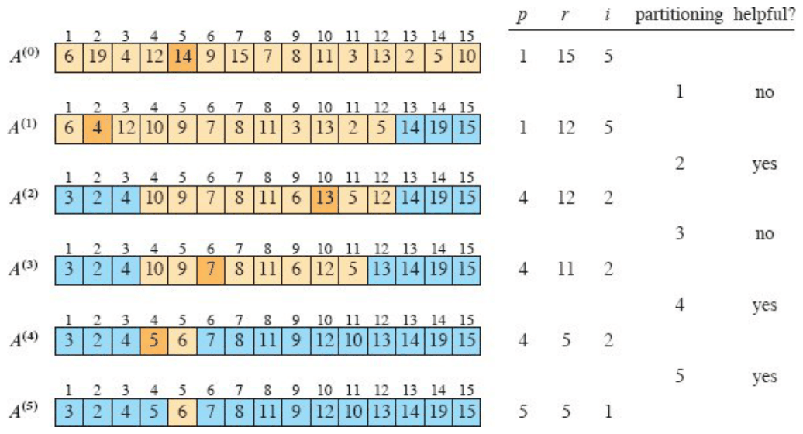
The figure shows a run with five partitionings. Each array is the state after one call. The shaded part is the current subarray, and \(p\), \(r\) and \(i\) change as in lines 8 and 9.图中给出一次运行，共五次划分。每个数组是一次调用之后的状态。阴影部分是当前子数组，\(p\)、\(r\) 和 \(i\) 按第 8 行和第 9 行的方式变化。
Step 2: worst case and expected time第 2 步：最坏情况和期望时间
In words: the worst case removes only the pivot each time; on average the problem shrinks by a constant factor, so the costs form a geometric series.用文字表述：最坏情况下每次只去掉主元；平均而言问题按一个常数因子缩小，因此各次代价构成一个几何级数。
Worst case \(\Theta(n^2)\). Suppose the pivot is always the largest remaining element while the minimum is sought. Each call removes only the pivot, so \(T(n)=T(n-1)+\Theta(n)=\Theta(n^2)\), as in quicksort. For \(n=10\) the partitionings handle \(10,9,\dots,2\) elements and make \(9+8+\dots+1=45\) comparisons. The pivot is random, so no fixed input always causes this.最坏情况 \(\Theta(n^2)\)。 设在寻找最小值时，主元总是当前剩余元素中最大的。每次调用只去掉主元，因此 \(T(n)=T(n-1)+\Theta(n)=\Theta(n^2)\)，与快速排序一样。对于 \(n=10\)，这些划分共处理 \(10,9,\dots,2\) 个元素，比较 \(9+8+\dots+1=45\) 次。由于主元是随机的，没有哪个固定输入总会导致这种情况。
Why the expected time is linear. Call a partitioning helpful（有效划分）if at most \(\frac34\) of the elements stay in play afterwards. Let \(s\) be the number of elements in play. A pivot whose rank is neither among the smallest nor among the largest quarter is helpful: the pivot and the whole side that does not hold the answer leave play. This happens with probability at least \(\frac12\).为什么期望时间是线性的。 若划分之后仍留在考虑范围内的元素至多占 \(\frac34\)，则称该次划分为有效划分。设 \(s\) 为仍在考虑范围内的元素个数。若主元的秩既不在最小的四分之一中，也不在最大的四分之一中，它就是有效的：主元以及不包含答案的整侧元素都退出考虑。这种情况发生的概率至少为 \(\frac12\)。
Group the partitionings into generations. Generation \(k\) starts with a helpful partitioning and ends just before the next one.把各次划分分成若干代。第 \(k\) 代从一次有效划分开始，到下一次有效划分之前结束。
- At the start of generation \(k\) at most \((\frac34)^k n\) elements are in play, because each helpful step multiplies the size by at most \(\frac34\).第 \(k\) 代开始时，仍在考虑范围内的元素至多为 \((\frac34)^k n\) 个，因为每次有效划分都把规模缩小到原来的至多 \(\frac34\) 倍。
- Generation \(k\) lasts \(X_k\) partitionings, the number of trials up to the first helpful one. Each trial succeeds with probability at least \(\frac12\), so \(\mathbb E[X_k]\le 2\).第 \(k\) 代包含 \(X_k\) 次划分，即直到第一次有效划分为止的试验次数。每次试验成功的概率至少为 \(\frac12\)，因此 \(\mathbb E[X_k]\le 2\)。
- A partitioning of \(s\) elements makes fewer than \(s\) comparisons, so generation \(k\) costs less than \(X_k(\frac34)^k n\) comparisons.对 \(s\) 个元素的一次划分，比较次数少于 \(s\) 次，因此第 \(k\) 代的代价少于 \(X_k(\frac34)^k n\) 次比较。
- Add the generations and use linearity of expectation. The geometric series \(\sum_{k\ge0}(\frac34)^k\) equals \(\frac{1}{1-3/4}=4\).把各代加起来，并使用期望的线性性质。几何级数 \(\sum_{k\ge0}(\frac34)^k\) 等于 \(\frac{1}{1-3/4}=4\)。
The first partitioning already looks at all \(n\) elements, so the expected time is also \(\Omega(n)\). Hence it is \(\Theta(n)\).第一次划分就要检查全部 \(n\) 个元素，所以期望时间也是 \(\Omega(n)\)。因此期望时间为 \(\Theta(n)\)。
Practice练习
Q1. (Trace) Run RANDOMIZED-SELECT on \(A=\langle11,5,8,2,14,7,1,10\rangle\) with \(i=5\), assuming the random pivots are 10, 2, 7. Give the array after each partitioning, \(q\) and \(k\), and the answer.Q1.（手工演算）对 \(A=\langle11,5,8,2,14,7,1,10\rangle\) 以 \(i=5\) 为参数运行 RANDOMIZED-SELECT，假设随机主元依次为 10、2、7。给出每次划分之后的数组、\(q\) 和 \(k\)，以及答案。
Answer
- \(A[1:8]\), pivot 10: \(\langle5,8,2,7,1,\mathbf{10},14,11\rangle\), \(q=6\), \(k=6\). \(i=5<k\): go left to \(A[1:5]\) with \(i=5\).\(A[1:8]\)，主元为 10：\(\langle5,8,2,7,1,\mathbf{10},14,11\rangle\)，\(q=6\)，\(k=6\)。\(i=5<k\)：向左进入 \(A[1:5]\)，并取 \(i=5\)。
- \(A[1:5]=\langle5,8,2,7,1\rangle\), pivot 2: \(\langle1,\mathbf{2},5,7,8\rangle\), \(q=2\), \(k=2\). \(i=5>k\): go right to \(A[3:5]\) with \(i=3\).\(A[1:5]=\langle5,8,2,7,1\rangle\)，主元为 2：\(\langle1,\mathbf{2},5,7,8\rangle\)，\(q=2\)，\(k=2\)。\(i=5>k\)：向右进入 \(A[3:5]\)，并取 \(i=3\)。
- \(A[3:5]=\langle5,7,8\rangle\), pivot 7: \(\langle5,\mathbf{7},8\rangle\), \(q=4\), \(k=2\). \(i=3>k\): go right to \(A[5:5]\) with \(i=1\).\(A[3:5]=\langle5,7,8\rangle\)，主元为 7：\(\langle5,\mathbf{7},8\rangle\)，\(q=4\)，\(k=2\)。\(i=3>k\)：向右进入 \(A[5:5]\)，并取 \(i=1\)。
- \(p=r=5\): return \(A[5]=8\). Check: the sorted array \(\langle1,2,5,7,8,10,11,14\rangle\) has 8 in position 5.\(p=r=5\)：返回 \(A[5]=8\)。检验：排序后的数组 \(\langle1,2,5,7,8,10,11,14\rangle\) 中，第 5 个位置上是 8。
Q2. (Worst case) For \(A=\langle2,3,0,5,7,9,1,8,6,4\rangle\), describe a sequence of partitionings that makes RANDOMIZED-SELECT take worst-case time when it looks for the minimum. How many comparisons does it make?Q2.（最坏情况）对 \(A=\langle2,3,0,5,7,9,1,8,6,4\rangle\)，描述一个划分序列，使 RANDOMIZED-SELECT 在查找最小值时达到最坏情况时间。它做了多少次比较？
Answer
Always pick the largest remaining element as pivot: 9, 8, 7, 6, 5, 4, 3, 2, 1. Each partitioning gives \(q=r\) and \(k=r-p+1>i=1\), so the call continues on \(A[p:r-1]\), one element smaller. The sizes are \(10,9,\dots,2\) and partitioning \(s\) elements makes \(s-1\) comparisons: \(9+8+\dots+1=45=n(n-1)/2\) comparisons, which is \(\Theta(n^2)\).每次都选取剩余元素中最大的作为主元：9, 8, 7, 6, 5, 4, 3, 2, 1。每次划分得到 \(q=r\) 和 \(k=r-p+1>i=1\)，因此调用继续作用于 \(A[p:r-1]\)，规模小一个元素。规模依次为 \(10,9,\dots,2\)，而划分 \(s\) 个元素需要 \(s-1\) 次比较：共 \(9+8+\dots+1=45=n(n-1)/2\) 次比较，即 \(\Theta(n^2)\)。
Q3. (Why the test matters) Professor Mendel drops lines 5–6, so that the procedure recurses on \(A[p:q]\) with the same \(i\) when \(i\le k\) and on \(A[q+1:r]\) with \(i-k\) otherwise. Show that it may not terminate.Q3.（为何需要该检验）Mendel 教授删去了第 5–6 行，于是当 \(i\le k\) 时，过程递归作用于 \(A[p:q]\)，且参数保持为 \(i\)；否则递归作用于 \(A[q+1:r]\)，参数为 \(i-k\)。证明它可能不会终止。
Answer
If the random pivot is always the largest element of \(A[p:r]\), then \(q=r\) and \(k=r-p+1\ge i\), so the recursive call is on the same subarray with the same \(i\): the same call repeats forever. The test \(i=k\) in the original guarantees that the pivot leaves play in every call. The unlucky event has probability 0 in an infinite run, and the expected time of the simplified procedure is still \(O(n)\), but its worst case is unbounded.若随机主元总是 \(A[p:r]\) 的最大元素，则 \(q=r\) 且 \(k=r-p+1\ge i\)，于是递归调用作用于同一子数组、参数 \(i\) 也不变：同一调用会永远重复。原程序中的检验 \(i=k\) 保证每次调用中主元都会离开计算。在无穷运行中，这种不幸事件的概率为 0，而简化过程的期望时间仍为 \(O(n)\)，但其最坏情况无界。
Selection in worst-case linear time ★★★最坏情况线性时间内的选择
Goal. List the steps of SELECT, count how many elements the pivot is guaranteed to cut off, and solve its recurrence to \(\Theta(n)\).目标。 列出 SELECT 的各个步骤，计算主元保证去掉多少个元素，并求解其递归式，得到 \(\Theta(n)\)。
Step 1: the algorithm第 1 步：算法
In words: SELECT = RANDOMIZED-SELECT with a pivot that is computed, not guessed, so that it is guaranteed to be good.用文字表述：SELECT = 主元经过计算而非猜测得到、从而保证是好主元的 RANDOMIZED-SELECT。
SELECT has two recursive calls: one finds the pivot and one searches the chosen side.SELECT 有两次递归调用：一次找主元，一次在选定的一侧搜索。
- Divide the elements into groups of 5 and sort each group. Its middle element is the group median.把元素分成 5 个一组，并对每组排序。该组中间的元素就是这一组的中位数。
- Find the median \(x\) of the group medians by calling SELECT recursively.通过递归调用 SELECT，求出各组中位数的中位数 \(x\)。
- Partition around \(x\) and compute the rank \(k\) of \(x\).围绕 \(x\) 划分，并计算 \(x\) 的秩 \(k\)。
- If \(i=k\) return \(x\). Otherwise recurse into the low side with the same \(i\), or into the high side with \(i-k\).若 \(i=k\)，返回 \(x\)。否则，进入低端一侧时仍用 \(i\)，进入高端一侧时改用 \(i-k\)。
SELECT(A, p, r, i)
1 while (r - p + 1) mod 5 ≠ 0
2 for j = p + 1 to r // put the minimum into A[p]
3 if A[p] > A[j]
4 exchange A[p] with A[j]
5 // If we want the minimum of A[p : r], we're done.
6 if i == 1
7 return A[p]
8 // Otherwise, we want the (i - 1)st element of A[p + 1 : r].
9 p = p + 1
10 i = i - 1
11 g = (r - p + 1) / 5 // number of 5-element groups
12 for j = p to p + g - 1 // sort each group
13 sort <A[j], A[j + g], A[j + 2g], A[j + 3g], A[j + 4g]> in place
14 // All group medians now lie in the middle fifth of A[p : r].
15 // Find the pivot x recursively as the median of the group medians.
16 x = SELECT(A, p + 2g, p + 3g - 1, ⌈g/2⌉)
17 q = PARTITION-AROUND(A, p, r, x) // partition around the pivot
18 // The rest is just like lines 3-9 of RANDOMIZED-SELECT.
19 k = q - p + 1
20 if i == k
21 return A[q] // the pivot value is the answer
22 elseif i < k
23 return SELECT(A, p, q - 1, i)
24 else return SELECT(A, q + 1, r, i - k)
- Lines 1–10: while the size is not a multiple of 5, move the minimum to \(A[p]\). Either return it (if \(i=1\)) or drop it and lower \(i\) by 1.第 1–10 行：当元素个数不是 5 的倍数时，把最小值移到 \(A[p]\)。若 \(i=1\)，则直接返回它；否则去掉它，并把 \(i\) 减 1。
- Lines 11–13: \(g\) is the number of groups. Group \(j\) is \(\langle A[j],A[j+g],\dots,A[j+4g]\rangle\). Each is sorted in place.第 11–13 行：\(g\) 是组数。第 \(j\) 组是 \(\langle A[j],A[j+g],\dots,A[j+4g]\rangle\)。每组都原地排序。
- Line 16: after line 13 the group medians sit in \(A[p+2g:p+3g-1]\). The recursive call selects their median, the \(\lceil g/2\rceil\)th smallest.第 16 行：第 13 行之后，各组中位数位于 \(A[p+2g:p+3g-1]\) 中。递归调用选出它们的中位数，即第 \(\lceil g/2\rceil\) 小的元素。
- Lines 17–24: partition around \(x\) and finish as RANDOMIZED-SELECT does.第 17–24 行：围绕 \(x\) 划分，之后的做法与 RANDOMIZED-SELECT 相同。
Step 2: why the pivot is good第 2 步：为什么这个主元是好的
In words: the pivot is larger than about \(3/10\) of the elements and smaller than about \(3/10\) of them, so each side keeps at most about \(7/10\).用文字表述：主元比约 \(3/10\) 的元素大，又比约 \(3/10\) 的元素小，因此每一侧至多剩下约 \(7/10\)。

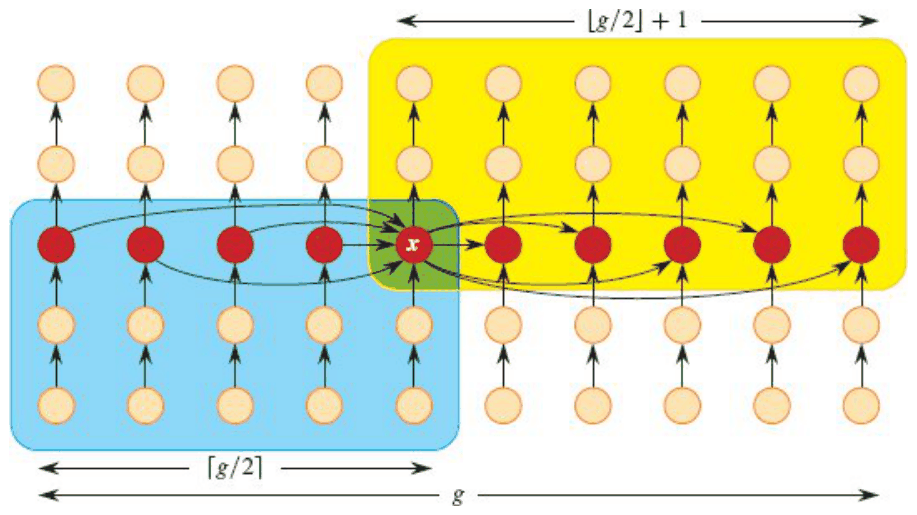
Each column is one sorted group, and the columns are ordered by their medians. The yellow region holds elements known to be at least \(x\). The blue region holds elements known to be at most \(x\).每一列是一个已排序的组，各列按其中位数排列。黄色区域是已知至少为 \(x\) 的元素。蓝色区域是已知至多为 \(x\) 的元素。
- At least \(\lfloor g/2\rfloor+1\) group medians are \(\ge x\), including \(x\) itself. Each brings the 2 larger elements of its column. So at least \(3(\lfloor g/2\rfloor+1)\ge 3g/2\) elements are \(\ge x\).至少 \(\lfloor g/2\rfloor+1\) 个组中位数是 \(\ge x\)，其中包括 \(x\) 自身。每个这样的中位数都带来了其所在列中较大的 2 个元素。因此至少有 \(3(\lfloor g/2\rfloor+1)\ge 3g/2\) 个元素是 \(\ge x\)。
- At least \(\lceil g/2\rceil\) group medians are \(\le x\). In the same way at least \(3\lceil g/2\rceil\ge 3g/2\) elements are \(\le x\).至少 \(\lceil g/2\rceil\) 个组中位数是 \(\le x\)。同理，至少有 \(3\lceil g/2\rceil\ge 3g/2\) 个元素是 \(\le x\)。
- Elements \(\ge x\) cannot fall in the low side, and elements \(\le x\) cannot fall in the high side. So each side has at most \(5g-\frac{3g}{2}=\frac{7g}{2}\le\frac{7n}{10}\) elements.元素 \(\ge x\) 不可能落在低端一侧，元素 \(\le x\) 不可能落在高端一侧。因此每一侧至多有 \(5g-\frac{3g}{2}=\frac{7g}{2}\le\frac{7n}{10}\) 个元素。
Step 3: running time第 3 步：运行时间
In words: the pivot call handles \(n/5\) elements, the side call at most \(7n/10\), and together that is less than \(n\), so the work shrinks level by level.用文字表述：找主元的调用处理 \(n/5\) 个元素，一侧的递归调用至多处理 \(7n/10\) 个，两者合计少于 \(n\)，因此工作量逐层减少。
Outside the recursive calls the work is \(\Theta(n)\): the while loop (at most 4 passes), sorting \(g\) groups of 5 and partitioning. The pivot call works on \(g\le n/5\) elements. Only one of the two final calls runs, on at most \(7n/10\) elements. Hence \(T(n)\le T(n/5)+T(7n/10)+\Theta(n)\) for \(n\ge5\).递归调用之外的工作是 \(\Theta(n)\)：while 循环（至多 4 遍）、对 \(g\) 个各含 5 个元素的组排序，以及划分。找主元的调用处理 \(g\le n/5\) 个元素。两次最后的调用中只执行一次，其规模至多为 \(7n/10\) 个元素。因此，对于 \(n\ge5\)，总代价为 \(T(n)\le T(n/5)+T(7n/10)+\Theta(n)\)。
Solve it by substitution (Section 3.2). Guess \(T(m)\le cm\) for all \(m<n\), with \(c\) a constant to be chosen. Let \(an\) be the linear work. Then \(T(n)\le cn/5+7cn/10+an=cn-(cn/10-an)\le cn\) whenever \(c\ge10a\). Line 13 alone costs \(\Theta(n)\), so \(T(n)=\Theta(n)\) in the worst case.用代入法求解（第 3.2 节）。对所有 \(m<n\) 猜测 \(T(m)\le cm\)，其中 \(c\) 是待选定的常数。设 \(an\) 为线性工作量。则当 \(c\ge10a\) 时有 \(T(n)\le cn/5+7cn/10+an=cn-(cn/10-an)\le cn\)。仅第 13 行的代价就是 \(\Theta(n)\)，因此最坏情况下 \(T(n)=\Theta(n)\)。
Linear time needs \(\alpha+\beta<1\). Group size 5 is the smallest odd size for which this holds.线性时间需要 \(\alpha+\beta<1\)。5 是使这一条件成立的最小奇数组大小。
| Group size组大小 | Recursive calls递归调用 | \(\alpha+\beta\) | Outcome结果 |
|---|---|---|---|
| 3 | \(T(n/3)+T(2n/3)\) | \(1\) | only \(O(n\lg n)\) |
| 5 | \(T(n/5)+T(7n/10)\) | \(9/10\) | \(\Theta(n)\) |
| 7 | \(T(n/7)+T(5n/7)\) | \(6/7\) | \(\Theta(n)\) |
Why groups of 3 fail: each median brings itself and 1 larger element, so at least \(n/3\) elements are \(\ge x\) and each side has up to \(2n/3\). The two fractions add to 1, substitution gives \(cn+an>cn\) for every \(c\), and the recursion tree has about \(\log_{3/2}n\) levels of cost \(an\).为什么 3 个一组不行：每个中位数带来它自己和 1 个更大的元素，因此至少 \(n/3\) 个元素是 \(\ge x\)，每一侧至多有 \(2n/3\) 个。两个比例之和为 1，代入法对每个 \(c\) 都给出 \(cn+an>cn\)，而递归树约有 \(\log_{3/2}n\) 层，每层代价为 \(an\)。
Step 4: SELECT against RANDOMIZED-SELECT第 4 步：SELECT 与 RANDOMIZED-SELECT 的比较
| RANDOMIZED-SELECT | SELECT | |
|---|---|---|
| Pivot主元 | random element随机元素 | median of the group medians各组中位数的中位数 |
| Worst case最坏情况 | \(\Theta(n^2)\) | \(\Theta(n)\) |
| Expected期望 | \(\Theta(n)\), below \(8n\) comparisons | \(\Theta(n)\) |
| Recursive calls递归调用 | one (the side holding rank \(i\))一次（即包含秩 \(i\) 的那一侧） | two (the pivot, then the side)两次（先是主元，然后是一侧） |
| In practice实际中 | simple, small constant简单，常数小 | large constant, theoretical常数大，偏理论 |
Both algorithms learn the order only by comparing elements. Sorting needs \(\Omega(n\lg n)\) comparisons in this model (Section 6.1). Selection escapes that bound because it does not sort. It also needs no assumption on the keys, unlike counting sort or radix sort (Section 6.2).两种算法都只通过比较元素来获知次序。在这一模型中，排序需要 \(\Omega(n\lg n)\) 次比较（第 6.1 节）。选择绕开了这一下界，因为它并不排序。与计数排序或基数排序不同，它也不需要对关键字做任何假设（第 6.2 节）。
Practice练习
Q1. (Median of five) Show how to find the median of 5 elements with 6 comparisons. Why does this matter for SELECT?Q1.（五元素的中位数）说明如何用 6 次比较求出 5 个元素的中位数。这对 SELECT 为何重要？
Answer
Let the elements be \(a,b,c,d,e\).设元素为 \(a,b,c,d,e\)。
- Compare \(a{:}b\) and \(c{:}d\) (2 comparisons); rename so that \(a<b\) and \(c<d\).比较 \(a{:}b\) 与 \(c{:}d\)（2 次比较）；重新命名，使得 \(a<b\) 且 \(c<d\)。
- Compare \(a{:}c\) (3rd comparison); swap the two pairs if necessary so that \(a<c\). Now \(a<b\) and \(a<c<d\), so \(a\) has at least 3 larger elements and cannot be the median. The median is the 2nd smallest of \(\{b,c,d,e\}\).比较 \(a{:}c\)（第 3 次比较）；必要时交换两对，使得 \(a<c\)。现在 \(a<b\) 且 \(a<c<d\)，因此 \(a\) 至少有 3 个比它大的元素，不可能是中位数。中位数是 \(\{b,c,d,e\}\) 中第 2 小的元素。
- Compare \(b{:}e\) (4th); call the smaller \(u\) and the larger \(v\). Now \(c<d\) and \(u<v\) are two sorted pairs.比较 \(b{:}e\)（第 4 次比较）；将较小者记为 \(u\)，较大者记为 \(v\)。现在 \(c<d\) 与 \(u<v\) 是两个有序对。
- Compare \(c{:}u\) (5th). If \(c<u\), then \(c\) is the smallest of the four and the median is the smaller of \(d\) and \(u\) (6th comparison). If \(u<c\), then \(u\) is the smallest and the median is the smaller of \(c\) and \(v\) (6th).比较 \(c{:}u\)（第 5 次比较）。若 \(c<u\)，则 \(c\) 是这四个元素中的最小者，中位数为 \(d\) 与 \(u\) 中较小者（第 6 次比较）。若 \(u<c\)，则 \(u\) 为最小者，中位数为 \(c\) 与 \(v\) 中较小者（第 6 次比较）。
Six comparisons in total, against up to \(4+3+2+1=10\) for insertion sort. SELECT needs the median of many 5-element groups, so a small constant per group lowers the hidden constant of the \(\Theta(n)\) term.总共只需六次比较，而插入排序最多需要 \(4+3+2+1=10\) 次。SELECT 需要求许多个由 5 个元素组成的组的中位数，每组的常数开销很小，因此能降低 \(\Theta(n)\) 项中隐藏的常数。
Q2. (Group sizes) Show that SELECT with groups of 7 still runs in linear time, and explain why groups of 3 do not give a linear bound.Q2.（分组大小）证明以 7 个元素为一组的 SELECT 仍然以线性时间运行，并解释为什么以 3 个元素为一组得不到线性界。
Answer
Groups of 7: there are \(g=n/7\) groups. About \(g/2\) group medians are \(\ge x\), and each brings itself and 3 larger elements of its group, so at least \(4\cdot g/2=2n/7\) elements are \(\ge x\), and likewise \(\le x\). Each side has at most \(n-2n/7=5n/7\) elements. Then \(T(n)\le T(n/7)+T(5n/7)+an\), and with \(T(m)\le cm\) the right side is \(\frac67cn+an\le cn\) for \(c\ge7a\): linear.以 7 个元素为一组：共有 \(g=n/7\) 组。约有 \(g/2\) 个组中位数 \(\ge x\)，每个这样的中位数连同本组中比它大的 3 个元素，使得至少 \(4\cdot g/2=2n/7\) 个元素 \(\ge x\)；同理，\(\le x\)。因此每一侧至多有 \(n-2n/7=5n/7\) 个元素。于是 \(T(n)\le T(n/7)+T(5n/7)+an\)；在 \(T(m)\le cm\) 的前提下，右端为 \(\frac67cn+an\le cn\)，只要 \(c\ge7a\)，即为线性。
Groups of 3: each median brings itself and 1 larger element, so at least \(2\cdot g/2=n/3\) elements are \(\ge x\) and each side has at most \(2n/3\). Then \(T(n)\le T(n/3)+T(2n/3)+an\). Substitution gives \(cn+an>cn\) for every \(c\), so it fails. Every level of the recursion tree costs \(an\) and there are \(\log_{3/2}n\) levels, so the argument yields only \(O(n\lg n)\).以 3 个元素为一组：每个中位数连同本组中比它大的 1 个元素，使得至少 \(2\cdot g/2=n/3\) 个元素 \(\ge x\)，每一侧至多有 \(2n/3\) 个元素。于是 \(T(n)\le T(n/3)+T(2n/3)+an\)。代入法得到 \(cn+an>cn\) 对每个 \(c\) 都成立，因此失败。递归树的每一层代价为 \(an\)，共有 \(\log_{3/2}n\) 层，所以该论证只能得到 \(O(n\lg n)\)。
Q3. (Calculation) SELECT runs on \(n=100\) elements. How many elements are guaranteed to be \(\ge x\) and \(\le x\), how large can the recursive call after partitioning be, and how large is the pivot call?Q3.（计算）SELECT 作用于 \(n=100\) 个元素。保证有多少个元素 \(\ge x\) 和 \(\le x\)？划分之后的递归调用最多能有多大？主元调用的规模是多少？
Answer
\(n=100\) gives \(g=20\) groups, so the pivot call works on 20 elements. \(\lfloor20/2\rfloor+1=11\) group medians are \(\ge x\), so at least \(3\cdot11=33\) elements are \(\ge x\). \(\lceil20/2\rceil=10\) group medians are \(\le x\), so at least \(3\cdot10=30\) elements are \(\le x\). The low side excludes the 33 elements \(\ge x\), so it has at most \(100-33=67\) elements. The high side excludes the 30 elements \(\le x\), so it has at most \(100-30=70=7n/10\) elements. The larger recursive call therefore has at most 70 elements.\(n=100\) 可分成 \(g=20\) 组，因此主元调用处理 20 个元素。\(\lfloor20/2\rfloor+1=11\) 个组中位数 \(\ge x\)，于是至少有 \(3\cdot11=33\) 个元素 \(\ge x\)。\(\lceil20/2\rceil=10\) 个组中位数 \(\le x\)，于是至少有 \(3\cdot10=30\) 个元素 \(\le x\)。低端一侧排除了 33 个元素 \(\ge x\)，因此至多有 \(100-33=67\) 个元素。高端一侧排除了 30 个元素 \(\le x\)，因此至多有 \(100-30=70=7n/10\) 个元素。较大的递归调用因此至多含 70 个元素。
Selection as a building block ★以线性时间选择作为构件
A linear-time selection routine is a subroutine. The pattern is always the same: select a rank, partition, and recurse only into the part that matters.线性时间的选择例程可以作为子程序使用。其模式始终相同：先选定一个秩，再划分，然后只递归进入有用的那一部分。
| Problem问题 | Method方法 | Time时间 |
|---|---|---|
| Quicksort with a worst case of \(O(n\lg n)\)最坏情况为 \(O(n\lg n)\) 的快速排序 | pivot = exact median found by SELECT, so both sides have at most \(n/2\) elements主元 = 由 SELECT 求得的精确中位数，因此两边的元素都至多为 \(n/2\) 个 | \(\Theta(n\lg n)\) |
| \(k\) numbers closest to the median距离中位数最近的 \(k\) 个数 | find the median \(m\), then select the \(k\)th smallest of the distances \(\lvert a-m\rvert\)求中位数 \(m\)，然后在距离 \(\lvert a-m\rvert\) 中选出第 \(k\) 小的元素 | \(O(n)\) |
| Weighted median（加权中位数） | element \(x_k\) with weight below it \(<\frac12\) and above it \(\le\frac12\)元素 \(x_k\)，其下方的权重为 \(<\frac12\)，上方的权重为 \(\le\frac12\) | \(\Theta(n)\) |
| Median of two sorted arrays两个有序数组的中位数 | discard \(\lfloor k/2\rfloor\) elements from one array per pass每遍从一个数组中丢弃 \(\lfloor k/2\rfloor\) 个元素 | \(O(\lg n)\) |
Practice练习
Q1. (Reductions) (a) A black-box routine returns the median of any subarray in linear time. Give a linear-time algorithm for the \(i\)th smallest element. (b) Show how SELECT makes quicksort run in \(O(n\lg n)\) in the worst case.Q1.（规约）(a) 一个黑盒例程在线性时间内返回任意子数组的中位数。给出求第 \(i\) 小元素的线性时间算法。(b) 说明如何借助 SELECT 使快速排序在最坏情况下以 \(O(n\lg n)\) 运行。
Answer
(a) Partition around the median returned by the black box; its rank is \(k=\lceil n/2\rceil\). If \(i=k\) return it. If \(i<k\) recurse on the low side (\(k-1<n/2\) elements) with \(i\); otherwise recurse on the high side (\(n-k\le n/2\) elements) with \(i-k\). Then \(T(n)\le T(n/2)+cn\), so \(T(n)\le cn(1+\frac12+\frac14+\dots)=2cn=O(n)\).(a) 围绕黑盒返回的中位数划分；其秩为 \(k=\lceil n/2\rceil\)。若 \(i=k\)，则返回它。若 \(i<k\)，则对低端一侧（\(k-1<n/2\) 个元素）以 \(i\) 递归；否则对高端一侧（\(n-k\le n/2\) 个元素）以 \(i-k\) 递归。于是 \(T(n)\le T(n/2)+cn\)，因此 \(T(n)\le cn(1+\frac12+\frac14+\dots)=2cn=O(n)\)。
(b) Use SELECT to find the median of the current subarray in \(\Theta(n)\) time and partition around it with PARTITION-AROUND (another \(\Theta(n)\)). Both sides have at most \(n/2\) elements, so \(T(n)=2T(n/2)+\Theta(n)=\Theta(n\lg n)\) in the worst case. The large constant of SELECT makes this slower than randomized quicksort in practice.(b) 用 SELECT 在 \(\Theta(n)\) 时间内求出当前子数组的中位数，再用 PARTITION-AROUND 围绕它划分（又需 \(\Theta(n)\)）。两侧至多各有 \(n/2\) 个元素，因此最坏情况为 \(T(n)=2T(n/2)+\Theta(n)=\Theta(n\lg n)\)。SELECT 的常数很大，所以在实践中它比随机化快速排序慢。
Terms to recognise ★需要认识的术语
| Term术语 | What to know要知道什么 |
|---|---|
| Order statistic顺序统计量 | The \(i\)th smallest element; the median has \(i=\lfloor(n+1)/2\rfloor\) or \(\lceil(n+1)/2\rceil\).第 \(i\) 小的元素；中位数的秩为 \(i=\lfloor(n+1)/2\rfloor\) 或 \(\lceil(n+1)/2\rceil\)。 |
| Selection problem选择问题 | Return the \(i\)th smallest of \(n\) distinct numbers; sorting gives \(O(n\lg n)\), selection gives \(\Theta(n)\).返回 \(n\) 个互不相同的数中第 \(i\) 小的数；排序给出 \(O(n\lg n)\)，选择给出 \(\Theta(n)\)。 |
| Tournament argument淘汰赛论证 | Each comparison has one loser; every element but the winner must lose, so \(n-1\) comparisons.每次比较都有一个失败者；除获胜者外每个元素都必须输过一次，因此需要 \(n-1\) 次比较。 |
| Pair method成对比较法 | Minimum and maximum together in \(\lceil 3n/2\rceil-2\) comparisons.同时求最小值和最大值只需 \(\lceil 3n/2\rceil-2\) 次比较。 |
| Helpful partitioning有效划分 | A partitioning that leaves at most \(3/4\) of the elements; its probability is at least \(1/2\).一次划分之后至多剩下 \(3/4\) 的元素；其概率至少为 \(1/2\)。 |
| Generation代 | Partitionings from one helpful partitioning up to the next; its expected length is at most 2.从一次有效划分到下一次有效划分之前的各次划分；其期望长度至多为 2。 |
| Median of medians中位数的中位数 | Median of the group medians of groups of 5; the pivot of SELECT.5 个一组的各组中位数的中位数；即 SELECT 的主元。 |
| Groups of 3, 5, 73、5、7 个一组 | The fractions add to \(1\), \(9/10\) and \(6/7\); only the last two give linear time.两个比例之和分别为 \(1\)、\(9/10\) 和 \(6/7\)；只有后两者给出线性时间。 |
| Weighted median加权中位数 | Weights sum to 1; weight below \(<\frac12\), weight above \(\le\frac12\); it minimises the weighted sum of distances.权重之和为 1；下方权重为 \(<\frac12\)，上方权重为 \(\le\frac12\)；它使加权距离之和最小。 |
| Quantiles分位数 | The \(k-1\) order statistics that cut the sorted set into \(k\) nearly equal parts; found in \(O(n\lg k)\).将已排序集合切分为 \(k\) 个几乎等大的部分的 \(k-1\) 个顺序统计量；可用 \(O(n\lg k)\) 求得。 |
Exam-style questions考试题型练习
Q1. (Minimum and maximum, 12 marks) (a) Prove that every comparison-based algorithm that finds the minimum of \(n\) distinct numbers needs at least \(n-1\) comparisons (3 marks). (b) Find the minimum and maximum of \(\langle14,6,21,3,17,9,25,12\rangle\) with the pair method; list the comparisons and give their total (5 marks). (c) Give the comparison count of the pair method for general \(n\) and for \(n=100\), and compare it with two independent searches (2 marks). (d) How many comparisons does the tournament method need for the second smallest of 32 numbers (2 marks)?Q1.（最小值与最大值，12 分）(a) 证明：任何基于比较、求 \(n\) 个互不相同数的最小值的算法，至少需要 \(n-1\) 次比较（3 分）。(b) 用两两配对法求 \(\langle14,6,21,3,17,9,25,12\rangle\) 的最小值和最大值；列出各次比较并给出总次数（5 分）。(c) 写出两两配对法对一般 \(n\) 以及 \(n=100\) 的比较次数，并与两次独立搜索比较（2 分）。(d) 对 32 个数求第二小的数，锦标赛法需要多少次比较（2 分）？
Answer
(a) Model the algorithm as a tournament in which each comparison is a match won by the smaller element. The reported minimum is certified only if every other element has lost at least once, because an element that never lost could be smaller. A comparison produces one loser, so at least \(n-1\) comparisons are needed. MINIMUM makes exactly \(n-1\), so it is optimal.(a) 把算法建模为一场锦标赛：每次比较是一场比赛，较小的元素获胜。只有当其他每个元素都至少输过一次时，报告的最小值才可被确认，因为从未输过的元素可能更小。每次比较产生一个败者，因此至少需要 \(n-1\) 次比较。MINIMUM 恰好做 \(n-1\) 次，因此它是最优的。
(b) \(n=8\) is even: compare \(14{:}6\), giving min 6, max 14 (1 comparison). Pair \((21,3)\): \(3<21\); \(3<6\) gives min 3; \(21>14\) gives max 21 (3 comparisons, total 4). Pair \((17,9)\): \(9<17\); \(9<3\) fails; \(17>21\) fails (total 7). Pair \((25,12)\): \(12<25\); \(12<3\) fails; \(25>21\) gives max 25 (total 10). Result: minimum 3, maximum 25, with 10 comparisons.(b) \(n=8\) 为偶数：比较 \(14{:}6\)，得到最小值 6、最大值 14（1 次比较）。配对 \((21,3)\)：\(3<21\)；\(3<6\) 得到最小值 3；\(21>14\) 得到最大值 21（3 次比较，累计 4 次）。配对 \((17,9)\)：\(9<17\)；\(9<3\) 失败；\(17>21\) 失败（累计 7 次）。配对 \((25,12)\)：\(12<25\)；\(12<3\) 失败；\(25>21\) 得到最大值 25（累计 10 次）。结果：最小值 3，最大值 25，共 10 次比较。
(c) The pair method needs \(\lceil 3n/2\rceil-2\) comparisons (\(3n/2-2\) for even \(n\), \(3\lfloor n/2\rfloor\) for odd \(n\)), which is optimal. For \(n=100\): \(148\), against \(2n-2=198\) for independent searches.(c) 两两配对法需要 \(\lceil 3n/2\rceil-2\) 次比较（当 \(n\) 为偶数时为 \(3n/2-2\)，当 \(n\) 为奇数时为 \(3\lfloor n/2\rfloor\)），这是最优的。对于 \(n=100\)：\(148\)，而独立搜索则需要 \(2n-2=198\)。
(d) The tournament needs \(31\) comparisons for the minimum. The minimum played at most \(\lceil\lg32\rceil=5\) matches, and the smallest of its at most 5 opponents takes \(4\) more comparisons: \(31+4=35=32+5-2\).(d) 锦标赛求最小值需要 \(31\) 次比较。最小值至多参加了 \(\lceil\lg32\rceil=5\) 场比赛，在其至多 5 个对手中找出最小者又需要 \(4\) 次比较：共 \(31+4=35=32+5-2\)。
思路：成对比较省掉四分之一；次小值只会输给最小值。
Q2. (RANDOMIZED-SELECT, 14 marks) (a) Describe RANDOMIZED-SELECT and say how it differs from randomized quicksort (4 marks). (b) Trace it on \(A=\langle6,13,2,9,4,11,7,1,15\rangle\) with \(i=5\), assuming the random pivots are 9, 4, 6; give \(q\) and \(k\) for each call and the answer (4 marks). (c) State the worst-case time with its recurrence and a pivot sequence that causes it when the minimum is sought; why does no fixed input always cause it (3 marks)? (d) Explain why the expected time is \(O(n)\) (3 marks).Q2.（RANDOMIZED-SELECT，14 分）(a) 描述 RANDOMIZED-SELECT，并说明它与随机化快速排序的区别（4 分）。(b) 在 \(A=\langle6,13,2,9,4,11,7,1,15\rangle\) 上以 \(i=5\) 为参数追踪它的执行，设随机主元依次为 9、4、6；给出每次调用的 \(q\) 和 \(k\)，以及结果（4 分）。(c) 写出最坏情况时间及其递归式，并给出在求最小值时导致最坏情况的主元序列；为什么没有某个固定输入一定导致最坏情况（3 分）？(d) 解释为什么期望时间为 \(O(n)\)（3 分）。
Answer
(a) RANDOMIZED-SELECT returns the \(i\)th smallest element of \(A[p:r]\). If \(p=r\) it returns \(A[p]\). Otherwise it partitions \(A[p:r]\) around a random pivot, giving final index \(q\), and sets \(k=q-p+1\). If \(i=k\) it returns \(A[q]\); if \(i<k\) it recurses on \(A[p:q-1]\) with \(i\); otherwise it recurses on \(A[q+1:r]\) with \(i-k\). Randomized quicksort recurses on both sides; RANDOMIZED-SELECT recurses only on the side that holds the \(i\)th smallest element.(a) RANDOMIZED-SELECT 返回 \(A[p:r]\) 的第 \(i\) 小元素。若 \(p=r\)，则返回 \(A[p]\)。否则围绕随机主元对 \(A[p:r]\) 划分，得到最终下标 \(q\)，并设置 \(k=q-p+1\)。若 \(i=k\)，则返回 \(A[q]\)；若 \(i<k\)，则以 \(i\) 对 \(A[p:q-1]\) 递归；否则以 \(i-k\) 对 \(A[q+1:r]\) 递归。随机化快速排序对两侧都递归；RANDOMIZED-SELECT 只对包含第 \(i\) 小元素的一侧递归。
(b) Call 1: \(A[1:9]\), pivot 9: \(\langle6,2,4,7,1,\mathbf{9},15,13,11\rangle\), \(q=6\), \(k=6\); \(i=5<k\), so go left to \(A[1:5]\) with \(i=5\). Call 2: \(\langle6,2,4,7,1\rangle\), pivot 4: \(\langle2,1,\mathbf{4},7,6\rangle\), \(q=3\), \(k=3\); \(i=5>k\), so go right to \(A[4:5]\) with \(i=2\). Call 3: \(\langle7,6\rangle\), pivot 6: \(\langle\mathbf{6},7\rangle\), \(q=4\), \(k=1\); \(i=2>k\), so go right to \(A[5:5]\) with \(i=1\). Return \(A[5]=7\), the 5th smallest.(b) 第 1 次调用：\(A[1:9]\)，主元 9：\(\langle6,2,4,7,1,\mathbf{9},15,13,11\rangle\)，\(q=6\)，\(k=6\)；\(i=5<k\)，因此转向左侧，以 \(i=5\) 调用 \(A[1:5]\)。第 2 次调用：\(\langle6,2,4,7,1\rangle\)，主元 4：\(\langle2,1,\mathbf{4},7,6\rangle\)，\(q=3\)，\(k=3\)；\(i=5>k\)，因此转向右侧，以 \(i=2\) 调用 \(A[4:5]\)。第 3 次调用：\(\langle7,6\rangle\)，主元 6：\(\langle\mathbf{6},7\rangle\)，\(q=4\)，\(k=1\)；\(i=2>k\)，因此转向右侧，以 \(i=1\) 调用 \(A[5:5]\)。返回 \(A[5]=7\)，即第 5 小的数。
(c) The worst case is \(\Theta(n^2)\). If every pivot is the largest remaining element while the minimum is sought, each call removes only the pivot, so \(T(n)=T(n-1)+\Theta(n)=\Theta(n^2)\); partitioning \(n,n-1,\dots,2\) elements makes \((n-1)+\dots+1=n(n-1)/2\) comparisons. The pivot is chosen at random, independently of the order of the input, so every input has the same expected time and none triggers the worst case more often than another.(c) 最坏情况为 \(\Theta(n^2)\)。若在求最小值时每个主元都是剩余元素中最大的，那么每次调用只去掉主元，因此 \(T(n)=T(n-1)+\Theta(n)=\Theta(n^2)\)；划分 \(n,n-1,\dots,2\) 个元素需要 \((n-1)+\dots+1=n(n-1)/2\) 次比较。主元是随机选取的，与输入的顺序无关，因此每个输入的期望时间相同，没有哪个输入比其他输入更容易触发最坏情况。
(d) A partitioning is helpful (leaves at most \(3/4\) of the elements) with probability at least \(1/2\): this holds whenever the pivot is in the middle half. Group the partitionings into generations that start at helpful ones. The \(k\)th generation starts with at most \((3/4)^kn\) elements and lasts \(X_k\) partitionings with \(\mathbb E[X_k]\le2\) (geometric distribution). Each partitioning of \(s\) elements makes fewer than \(s\) comparisons, so the expected number of comparisons is below \(n\sum_{k\ge0}2(3/4)^k=8n\). With the \(\Omega(n)\) cost of the first partitioning, the expected time is \(\Theta(n)\).(d) 一次划分有帮助（至多剩下 \(3/4\) 的元素）的概率至少为 \(1/2\)：只要主元位于中间一半，这一点就成立。把各次划分分成若干代，每代从一次有帮助的划分开始。第 \(k\) 代开始时至多有 \((3/4)^kn\) 个元素，持续 \(X_k\) 次划分，并且 \(\mathbb E[X_k]\le2\)（几何分布）。对 \(s\) 个元素的每次划分所做的比较次数少于 \(s\) 次，因此期望比较次数低于 \(n\sum_{k\ge0}2(3/4)^k=8n\)。加上第一次划分的 \(\Omega(n)\) 代价，期望时间为 \(\Theta(n)\)。
Q3. (SELECT, 14 marks) (a) Describe the steps of SELECT (4 marks). (b) For \(n=60\), how many elements are guaranteed to be \(\ge x\) and \(\le x\), how large can the recursive call after partitioning be, and how large is the pivot call (4 marks)? (c) Write down and solve the recurrence for the worst-case time (3 marks). (d) Why does the analysis give no linear bound for groups of 3, and why is RANDOMIZED-SELECT preferred in practice (3 marks)?Q3.（SELECT，14 分）(a) 描述 SELECT 的各个步骤（4 分）。(b) 对 \(n=60\)，保证有多少个元素 \(\ge x\) 和 \(\le x\)？划分之后的递归调用最大能有多大？主元调用的规模是多少（4 分）？(c) 写出最坏情况时间的递归式并求解（3 分）。(d) 为什么以 3 个元素为一组时分析得不到线性界？为什么实践中更倾向于 RANDOMIZED-SELECT（3 分）？
Answer
(a) (1) Split the elements into groups of 5 and sort each group. (2) Take the median of each group and find the median \(x\) of these medians by calling SELECT recursively. (3) Partition around \(x\) and compute its rank \(k\). (4) If \(i=k\) return \(x\); if \(i<k\) recurse on the low side with \(i\); otherwise recurse on the high side with \(i-k\). The pseudocode first removes minima until the size is a multiple of 5.(a) (1) 把元素分成每组 5 个的若干组，并对每组排序。(2) 取每组的中位数，并通过递归调用 SELECT 求这些中位数的中位数 \(x\)。(3) 围绕 \(x\) 划分，并计算其秩 \(k\)。(4) 若 \(i=k\)，则返回 \(x\)；若 \(i<k\)，则以 \(i\) 对低端一侧递归；否则以 \(i-k\) 对高端一侧递归。伪代码先移去若干最小值，直到规模为 5 的倍数。
(b) \(g=60/5=12\) groups, so the pivot call works on 12 elements. \(\lfloor12/2\rfloor+1=7\) medians are \(\ge x\), each with 2 larger group members: at least \(3\cdot7=21\) elements are \(\ge x\). \(\lceil12/2\rceil=6\) medians are \(\le x\): at least \(3\cdot6=18\) elements are \(\le x\). The low side excludes the 21 elements \(\ge x\), so it has at most 39 elements; the high side excludes the 18 elements \(\le x\), so it has at most 42 elements. The recursive call has at most \(42=7n/10\) elements.(b) \(g=60/5=12\) 形成 12 组，因此主元调用处理 12 个元素。\(\lfloor12/2\rfloor+1=7\) 个组中位数 \(\ge x\)，每个中位数各有 2 个本组中比它大的元素：至少 \(3\cdot7=21\) 个元素 \(\ge x\)。\(\lceil12/2\rceil=6\) 个组中位数 \(\le x\)：至少 \(3\cdot6=18\) 个元素 \(\le x\)。低端一侧排除了 21 个元素 \(\ge x\)，因此至多有 39 个元素；高端一侧排除了 18 个元素 \(\le x\)，因此至多有 42 个元素。递归调用至多含 \(42=7n/10\) 个元素。
(c) Work outside the recursion is \(\Theta(n)\), the pivot call costs \(T(n/5)\) and the side call at most \(T(7n/10)\): \(T(n)\le T(n/5)+T(7n/10)+an\). Assume \(T(m)\le cm\) for \(m<n\). Then \(T(n)\le\frac{9}{10}cn+an=cn-(\frac{c}{10}-a)n\le cn\) for \(c\ge10a\). With the \(\Omega(n)\) cost of sorting the groups, \(T(n)=\Theta(n)\).(c) 递归之外的工作为 \(\Theta(n)\)，主元调用的代价为 \(T(n/5)\)，一侧调用至多为 \(T(7n/10)\)：\(T(n)\le T(n/5)+T(7n/10)+an\)。假设对 \(m<n\) 有 \(T(m)\le cm\)。然后对 \(c\ge10a\) 有 \(T(n)\le\frac{9}{10}cn+an=cn-(\frac{c}{10}-a)n\le cn\)。加上对各组排序的 \(\Omega(n)\) 代价，得到 \(T(n)=\Theta(n)\)。
(d) With groups of 3 the recurrence is \(T(n)\le T(n/3)+T(2n/3)+an\). The fractions add to \(1\), so each level of the recursion tree still costs \(an\) and substitution fails; the argument gives only \(O(n\lg n)\). In practice SELECT is slower because sorting the groups and the extra recursive call give a large constant, while RANDOMIZED-SELECT is simple, has a small constant, and its quadratic worst case is very unlikely.(d) 以 3 个元素为一组时，递归式为 \(T(n)\le T(n/3)+T(2n/3)+an\)。各项的比例之和为 \(1\)，因此递归树的每一层仍然耗费 \(an\)，代入法失败；该论证只能得到 \(O(n\lg n)\)。在实践中 SELECT 更慢，因为对各组排序以及额外的递归调用带来很大的常数；而 RANDOMIZED-SELECT 简单、常数小，其二次方的最坏情况出现的概率极低。
Q4. (Weighted median, 12 marks) (a) Define the weighted median (2 marks). (b) For \(x=\langle8,2,9,1,7,4,6\rangle\) with weights \(w=\langle0.20,0.10,0.30,0.05,0.15,0.10,0.10\rangle\) find the weighted median and the ordinary median (4 marks). (c) Give a \(\Theta(n)\) algorithm and run it on the data of (b) (4 marks). (d) Which point minimises \(\sum_iw_i\lvert p-x_i\rvert\), and what is the best point for the Manhattan distance in two dimensions (2 marks)?Q4.（加权中位数，12 分）(a) 定义加权中位数（2 分）。(b) 对 \(x=\langle8,2,9,1,7,4,6\rangle\) 及权重 \(w=\langle0.20,0.10,0.30,0.05,0.15,0.10,0.10\rangle\)，求加权中位数和普通中位数（4 分）。(c) 给出一个 \(\Theta(n)\) 算法，并在 (b) 的数据上运行（4 分）。(d) 哪个点使 \(\sum_iw_i\lvert p-x_i\rvert\) 最小？二维曼哈顿距离下的最佳点是什么（2 分）？
Answer
(a) For positive weights with \(\sum_iw_i=1\), the weighted (lower) median is the element \(x_k\) with \(\sum_{x_i<x_k}w_i<\frac12\) and \(\sum_{x_i>x_k}w_i\le\frac12\).(a) 对于权重为正且 \(\sum_iw_i=1\) 的情形，加权（下）中位数是元素 \(x_k\)，它满足 \(\sum_{x_i<x_k}w_i<\frac12\) 且 \(\sum_{x_i>x_k}w_i\le\frac12\)。
(b) Sorted by value, the elements with weights are \(1\,(0.05)\), \(2\,(0.10)\), \(4\,(0.10)\), \(6\,(0.10)\), \(7\,(0.15)\), \(8\,(0.20)\), \(9\,(0.30)\), with running sums \(0.05,0.15,0.25,0.35,0.50,0.70,1.00\). For 7 the weight below is \(0.35<\frac12\) and the weight above is \(0.20+0.30=0.50\le\frac12\), so the weighted median is 7. The ordinary median is the 4th smallest, 6; it is not the weighted median because the weight above it is \(0.65>\frac12\).(b) 按值排序后，带权元素依次为 \(1\,(0.05)\)、\(2\,(0.10)\)、\(4\,(0.10)\)、\(6\,(0.10)\)、\(7\,(0.15)\)、\(8\,(0.20)\)、\(9\,(0.30)\)，其部分和依次为 \(0.05,0.15,0.25,0.35,0.50,0.70,1.00\)。对于 7，其下方的权重为 \(0.35<\frac12\)，上方的权重为 \(0.20+0.30=0.50\le\frac12\)，因此加权中位数为 7。普通中位数是第 4 小的数 6；它不是加权中位数，因为其上方的权重为 \(0.65>\frac12\)。
(c) Select the median \(m\) with SELECT and compute the weights \(w_L\) below and \(w_G\) above it (\(\Theta(n)\)). If \(w_L<\frac12\) and \(w_G\le\frac12\), return \(m\). If \(w_L\ge\frac12\), recurse on the elements below \(m\) together with \(m\) carrying weight \(w_m+w_G\). If \(w_G>\frac12\), recurse on the elements above \(m\) together with \(m\) carrying weight \(w_m+w_L\). The instance has about \(n/2\) elements (instances with \(n\le2\) are solved directly), so \(T(n)=T(n/2+O(1))+\Theta(n)=\Theta(n)\). On the data: \(m=6\), \(w_L=0.25\), \(w_G=0.65>\frac12\), so recurse on \(\{7,8,9\}\) plus 6 with weight \(0.10+0.25=0.35\). Its lower median is 7: below it only 6 with \(0.35<\frac12\), above it \(0.20+0.30=0.50\le\frac12\). Return 7.(c) 用 SELECT 选出中位数 \(m\)，并计算其下方的权重 \(w_L\) 和上方的权重 \(w_G\)（\(\Theta(n)\)）。若 \(w_L<\frac12\) 且 \(w_G\le\frac12\)，则返回 \(m\)。若 \(w_L\ge\frac12\)，则对 \(m\) 下方的元素，连同携带权重 \(w_m+w_G\) 的 \(m\)，递归求解。若 \(w_G>\frac12\)，则对 \(m\) 上方的元素，连同携带权重 \(w_m+w_L\) 的 \(m\)，递归求解。该实例约含 \(n/2\) 个元素（规模为 \(n\le2\) 的实例直接求解），因此 \(T(n)=T(n/2+O(1))+\Theta(n)=\Theta(n)\)。对于该数据：\(m=6\)，\(w_L=0.25\)，\(w_G=0.65>\frac12\)，因此对 \(\{7,8,9\}\) 加上 6（权重为 \(0.10+0.25=0.35\)）递归求解。它的下中位数为 7：其下方只有权重为 \(0.35<\frac12\) 的 6，其上方为 \(0.20+0.30=0.50\le\frac12\)。返回 7。
(d) The weighted median minimises \(\sum_iw_i\lvert p-x_i\rvert\): moving \(p\) toward the side that holds more than half of the weight lowers the sum. For the data above, \(p=7\) costs \(2.0\) and \(p=6\) costs \(2.3\). In two dimensions with Manhattan distance the sum separates into an \(x\)-part and a \(y\)-part, so the best point is (weighted median of the \(x_i\), weighted median of the \(y_i\)).(d) 加权中位数使 \(\sum_iw_i\lvert p-x_i\rvert\) 最小：把 \(p\) 向持有超过一半权重的一侧移动，会使总和减小。对于上述数据，\(p=7\) 的代价为 \(2.0\)，\(p=6\) 的代价为 \(2.3\)。在二维曼哈顿距离下，总和可分解为一个 \(x\) 部分与一个 \(y\) 部分，因此最佳点为（\(x_i\) 坐标的加权中位数，\(y_i\) 坐标的加权中位数）。
Q5. (Median of two sorted arrays, 10 marks) \(X[1:n]\) and \(Y[1:n]\) are sorted and hold \(2n\) distinct numbers. (a) Describe an \(O(\lg n)\) algorithm for the median (the \(n\)th smallest of the \(2n\) numbers) (3 marks). (b) Trace it on \(X=\langle2,6,9,14,20,27\rangle\), \(Y=\langle1,4,11,16,23,30\rangle\) (4 marks). (c) Justify the discard step and state the number of comparisons; compare with merging (3 marks).Q5.（两个有序数组的中位数，10 分）\(X[1:n]\) 和 \(Y[1:n]\) 均已排序，各含 \(2n\) 个互不相同的数。(a) 描述求中位数（即 \(2n\) 个数中第 \(n\) 小的数）的 \(O(\lg n)\) 算法（3 分）。(b) 在 \(X=\langle2,6,9,14,20,27\rangle\)、\(Y=\langle1,4,11,16,23,30\rangle\) 上追踪它的执行（4 分）。(c) 论证丢弃步骤的正确性，并给出比较次数；与归并相比较（3 分）。
Answer
(a) Keep \(k\), the rank still sought (\(k=n\) at the start), and the numbers \(a,b\) of leading elements discarded from \(X\) and \(Y\). While \(k>1\), let \(j=\lfloor k/2\rfloor\) and compare \(X[a+j]\) with \(Y[b+j]\). The array with the smaller of the two loses its first \(j\) remaining elements, and \(k\) decreases by \(j\). When \(k=1\), return the smaller of \(X[a+1]\) and \(Y[b+1]\).(a) 维护 \(k\)（仍需查找的秩，开始时为 \(k=n\)）以及从 \(X\) 和 \(Y\) 中已丢弃的前导元素个数 \(a,b\)。当 \(k>1\) 时，令 \(j=\lfloor k/2\rfloor\)，并比较 \(X[a+j]\) 与 \(Y[b+j]\)。较小元素所在的数组失去其前 \(j\) 个剩余元素，并且 \(k\) 减少 \(j\)。当 \(k=1\) 时，返回 \(X[a+1]\) 与 \(Y[b+1]\) 中较小者。
(b) \(n=6\), \(k=6\): \(j=3\), \(X[3]=9<Y[3]=11\), so discard \(X[1:3]\) (\(a=3\)) and \(k=3\). Then \(j=1\): \(X[4]=14\) against \(Y[1]=1\); \(14>1\), so discard \(Y[1]\) (\(b=1\)) and \(k=2\). Then \(j=1\): \(X[4]=14\) against \(Y[2]=4\); discard \(Y[2]\) (\(b=2\)) and \(k=1\). Return \(\min(X[4],Y[3])=\min(14,11)=11\). The merged order \(1,2,4,6,9,11,\dots\) confirms that 11 is the 6th smallest.(b) \(n=6\)，\(k=6\)：\(j=3\)，\(X[3]=9<Y[3]=11\)，因此丢弃 \(X[1:3]\)（\(a=3\)）及 \(k=3\)。然后 \(j=1\)：\(X[4]=14\) 与 \(Y[1]=1\) 相比；\(14>1\)，因此丢弃 \(Y[1]\)（\(b=1\)）及 \(k=2\)。接着 \(j=1\)：\(X[4]=14\) 与 \(Y[2]=4\) 相比；丢弃 \(Y[2]\)（\(b=2\)）及 \(k=1\)。返回 \(\min(X[4],Y[3])=\min(14,11)=11\)。归并后的顺序 \(1,2,4,6,9,11,\dots\) 证实 11 是第 6 小的数。
(c) If \(X[a+j]<Y[b+j]\), then \(X[a+j]\) has at most \((j-1)+(j-1)\) smaller elements among those left, so its rank is at most \(2j-1<k\). The \(j\) discarded elements are all smaller than the \(k\)th smallest, which is therefore the \((k-j)\)th smallest of the rest. Each pass turns \(k\) into \(\lceil k/2\rceil\), so there are \(\lceil\lg n\rceil\) passes and \(\lceil\lg n\rceil+1\) comparisons (\(4\) for \(n=6\)): \(O(\lg n)\), against \(\Theta(n)\) for merging.(c) 若 \(X[a+j]<Y[b+j]\)，则 \(X[a+j]\) 在剩余元素中至多有 \((j-1)+(j-1)\) 个较小元素，因此其秩至多为 \(2j-1<k\)。被丢弃的 \(j\) 个元素都小于第 \(k\) 小的元素，因此后者是其余元素中的第 \((k-j)\) 小。每一轮把 \(k\) 变为 \(\lceil k/2\rceil\)，因此共有 \(\lceil\lg n\rceil\) 轮，比较次数为 \(\lceil\lg n\rceil+1\)（\(n=6\) 时为 \(4\)）：\(O(\lg n)\)，而归并需要 \(\Theta(n)\)。
易错：每次丢弃的是较小一方的前 \(j\) 个元素，同时 \(k\) 要减去 \(j\)。
Textbook exercises课后习题
Textbook exercises with answers: 10 questions教材习题及答案，共 10 题，点击展开
E1. (Exercise 9.1-1) Show that the second smallest of \(n\) elements can be found with \(n + \lceil \lg n \rceil - 2\) comparisons in the worst case. (Hint: also find the smallest element.)E1.（习题 9.1-1）证明：从 \(n\) 个元素中，最坏情况下可以用 \(n + \lceil \lg n \rceil - 2\) 次比较找到第二小的元素。（提示：同时求出最小元素。）
Answer
Method. Run a knockout tournament: pair up the elements, compare each pair, send the smaller one ("winner") to the next round, and repeat on the winners until one element remains. Use a balanced tournament tree, so that every element plays at most \(\lceil \lg n \rceil\) matches (an odd element simply gets a bye).方法。 进行一场淘汰赛：把元素两两配对，比较每一对，把较小者（“胜者”）晋级下一轮，然后对胜者重复这一过程，直到只剩一个元素。使用平衡的淘汰赛树，使每个元素至多打 \(\lceil \lg n \rceil\) 场比赛（奇数个时，多出的元素直接轮空）。
Smallest element. Every comparison eliminates exactly one element from the race for the minimum, so \(n-1\) comparisons leave the minimum \(m\).最小元素。 每次比较恰好使一个元素退出最小值的争夺，因此 \(n-1\) 次比较之后，留下的就是最小值 \(m\)。
Second smallest. The second smallest element \(s\) lost to no one except \(m\): if \(s\) had lost to some other element \(t\), then \(t < s\) and \(s\) would not be second smallest. So \(s\) lost directly to \(m\) in a match. The minimum \(m\) played at most \(\lceil \lg n \rceil\) matches (its depth in the tree), so there are at most \(\lceil \lg n \rceil\) elements that lost directly to \(m\). The second smallest is the smallest of those, which takes at most \(\lceil \lg n \rceil - 1\) further comparisons.第二小。 第二小的元素 \(s\) 除了输给 \(m\) 之外，没有输给过任何其他元素：若 \(s\) 输给过另一个元素 \(t\)，那么 \(t < s\) 和 \(s\) 就都不可能是第二小的了。所以 \(s\) 是直接输给 \(m\) 的。最小值 \(m\) 至多打了 \(\lceil \lg n \rceil\) 场比赛（即它在树中的深度），因此直接输给 \(m\) 的元素至多有 \(\lceil \lg n \rceil\) 个。第二小的元素就是这些元素中最小的一个，求它还需至多 \(\lceil \lg n \rceil - 1\) 次比较。
Total. \((n-1) + (\lceil \lg n \rceil - 1) = n + \lceil \lg n \rceil - 2\) comparisons.合计。 \((n-1) + (\lceil \lg n \rceil - 1) = n + \lceil \lg n \rceil - 2\) 次比较。
This shows that finding the second smallest costs only about \(\lg n\) comparisons more than finding the minimum.这说明找第二小的元素，只比找最小值多花大约 \(\lg n\) 次比较。
思路：淘汰赛找最小值，第二小一定直接输给过最小值，只需在最小值的至多 ⌈lg n⌉ 个对手里再找最小。
E2. (Exercise 9.1-2) Given \(n > 2\) distinct numbers, you want to find a number that is neither the minimum nor the maximum. What is the smallest number of comparisons that you need to perform?E2.（习题 9.1-2）给定 \(n > 2\) 个互不相同的数，要找出一个既不是最小值也不是最大值的数。最少需要进行多少次比较？
Answer
Answer: 3 comparisons.答案：3 次比较。
Upper bound. Look only at the three numbers \(a, b, c\) (the others are never needed): the median of three is neither the minimum nor the maximum of all \(n\) numbers, because the smaller and the larger of the other two already lie on both sides of it. Compare \(a\) with \(b\); say \(a<b\) (otherwise swap names). Compare \(b\) with \(c\). If \(b<c\), then \(b\) is the median. Otherwise \(c<b\); compare \(a\) with \(c\), and the larger of \(a, c\) is the median (it is greater than the other and smaller than \(b\)). At most 3 comparisons.上界。 只看三个数 \(a, b, c\)（其余的数都用不到）：这三个数的中位数既不是全部 \(n\) 个数的最小值，也不是最大值，因为另外两个数中较小者和较大者已分别位于它两侧。比较 \(a\) 与 \(b\)；不妨设 \(a<b\)（否则交换名字）。比较 \(b\) 与 \(c\)。若 \(b<c\)，则 \(b\) 就是中位数。否则 \(c<b\)；比较 \(a\) 与 \(c\)，则 \(a, c\) 中较大者就是中位数（它比另一个大，又比 \(b\) 小）。至多 3 次比较。
Lower bound. An element can be certified as "not the minimum and not the maximum" only if the comparisons made so far show some element smaller than it and some element larger than it. (If no smaller element is known, there is a consistent input in which it is the minimum; similarly for the maximum.) View each comparison as an edge between two elements. After 1 comparison, \(a<b\), nobody has both a smaller and a larger neighbour. A second comparison involves either two new elements, which creates two separate edges, or one of \(a, b\). In the second case an adversary answers so that the shared element is smaller than both others or larger than both others (compare \(b\) with \(c\): answer \(c<b\), so \(b\) is the maximum of the three; compare \(a\) with \(c\): answer \(c>a\), so \(a\) is the minimum). Hence after 2 comparisons no element has both a smaller and a larger element known, so 2 comparisons never suffice.下界。 只有当目前为止的比较结果显示，某个元素既有比它小的元素、又有比它大的元素时，才能证明它“既不是最小值也不是最大值”。（如果不知道有比它小的元素，就存在一组相容的输入使它成为最小值；最大值的情况同理。）把每次比较看作两个元素之间的一条边。做完 1 次比较后，\(a<b\)，没有任何元素同时有比它小和比它大的邻居。第二次比较要么涉及两个新元素，这会产生两条互不相连的边，要么涉及 \(a, b\) 中的某个元素。在第二种情况下，对手这样回答：使公共元素要么比另外两个都小，要么比另外两个都大（比较 \(b\) 与 \(c\)：回答 \(c<b\)，于是 \(b\) 是这三个数中的最大值；比较 \(a\) 与 \(c\)：回答 \(c>a\)，于是 \(a\) 是最小值）。因此做完 2 次比较后，没有哪个元素同时知道有比它小和比它大的元素，所以 2 次比较永远不够。
So the minimum number of comparisons in the worst case is exactly 3.因此，最坏情况下所需的最少比较次数恰好是 3。
思路：三个数的中位数一定既不是最小也不是最大；两次比较时对手总能让共享元素成为端点，所以下界是 3。
E3. (Exercise 9.2-1) The procedure RANDOMIZED-SELECT with arguments \((A, p, r, i)\) finds the \(i\)th smallest element of \(A[p:r]\), where \(1 \le i \le r-p+1\):E3.（习题 9.2-1）以参数 \((A, p, r, i)\) 调用的过程 RANDOMIZED-SELECT 可以找出 \(A[p:r]\) 中第 \(i\) 小的元素，其中 \(1 \le i \le r-p+1\)：
RANDOMIZED-SELECT(A, p, r, i)
1 if p == r
2 return A[p]
3 q = RANDOMIZED-PARTITION(A, p, r)
4 k = q - p + 1
5 if i == k
6 return A[q]
7 elseif i < k
8 return RANDOMIZED-SELECT(A, p, q - 1, i)
9 else return RANDOMIZED-SELECT(A, q + 1, r, i - k)
Show that RANDOMIZED-SELECT never makes a recursive call to a 0-length array.证明 RANDOMIZED-SELECT 从不对长度为 0 的数组进行递归调用。
Answer
Claim. Whenever a recursive call is made, its subarray has at least one element and its rank argument is again valid (between 1 and the subarray length).断言。 每次递归调用时，其子数组至少有一个元素，而且秩参数仍然有效（位于 1 与子数组长度之间）。
Line 8 is reached only when \(i < k\) and \(i \ge 1\), so \(k \ge 2\). Then \(q = p + k - 1 \ge p+1\), so \(q - 1 \ge p\) and the subarray \(A[p:q-1]\) has \(q-p = k-1 \ge i \ge 1\) elements. The rank \(i\) is valid for it.第 8 行只有在 \(i < k\) 且 \(i \ge 1\) 时才会执行，因此 \(k \ge 2\)。于是 \(q = p + k - 1 \ge p+1\)，所以 \(q - 1 \ge p\)，子数组 \(A[p:q-1]\) 有 \(q-p = k-1 \ge i \ge 1\) 个元素。秩 \(i\) 对它而言是有效的。
Line 9 is reached only when \(i > k\). Since \(i \le r-p+1\), we get \(k < r-p+1\), so \(q = p+k-1 < r\), i.e. \(q+1 \le r\). The subarray \(A[q+1:r]\) has \(r-q \ge 1\) elements, and the new rank \(i-k\) satisfies \(1 \le i-k \le (r-p+1)-k = r-q\).第 9 行只有在 \(i > k\) 时才会执行。由于 \(i \le r-p+1\)，得到 \(k < r-p+1\)，因此 \(q = p+k-1 < r\)，即 \(q+1 \le r\)。子数组 \(A[q+1:r]\) 有 \(r-q \ge 1\) 个元素，新的秩 \(i-k\) 满足 \(1 \le i-k \le (r-p+1)-k = r-q\)。
Base case. Line 1 stops the recursion for one-element arrays, where \(i=1\) is the only valid rank.基本情况。 第 1 行使一元素数组的递归停止，此时 \(i=1\) 是唯一有效的秩。
By induction on the number of calls, the invariant \(1 \le i \le r-p+1\) and \(p \le r\) holds in every call, so no call ever receives an empty array. This is why the algorithm needs no empty-array test.对调用次数做归纳，不变式 \(1 \le i \le r-p+1\) 和 \(p \le r\) 在每次调用中都成立，因此没有任何调用会接收到空数组。这就是算法不需要空数组检测的原因。
思路：i<k 时左半至少含 i≥1 个元素；i>k 时 k<r−p+1，右半非空。
E4. (Exercise 9.2-3) Suppose that RANDOMIZED-SELECT is used to select the minimum element of the array \(A = \langle 2, 3, 0, 5, 7, 9, 1, 8, 6, 4 \rangle\). Describe a sequence of partitions that results in the worst-case performance of RANDOMIZED-SELECT. (RANDOMIZED-PARTITION swaps a randomly chosen element into position \(r\) and then runs the standard partition around \(A[r]\).)E4.（习题 9.2-3）假设用 RANDOMIZED-SELECT 来选出数组 \(A = \langle 2, 3, 0, 5, 7, 9, 1, 8, 6, 4 \rangle\) 中的最小元素。请描述一个划分序列，使 RANDOMIZED-SELECT 达到最坏情况的性能。（RANDOMIZED-PARTITION 先把随机选中的元素交换到位置 \(r\)，然后围绕 \(A[r]\) 运行标准的划分。）
Answer
Idea. The worst case occurs when every random pivot is the largest element of the current subarray. Then the partition leaves all other elements on the left, the recursion continues on a subarray only one element shorter, and the search for the minimum (\(i=1\)) always goes left. The random choices that produce this are: pivot 9, then 8, 7, 6, 5, 4, 3, 2, 1.思路。 最坏情况发生在每个随机主元都是当前子数组中最大的元素时。这时划分会把其余元素全部留在左侧，递归只在短了一个元素的子数组上继续，而寻找最小值（\(i=1\)）总是向左走。产生这种情况的随机选择是：先选 9 作主元，然后依次是 8、7、6、5、4、3、2、1。
Trace (the pivot is swapped to the end, then the partition is run; the largest element stays at the end, so \(q=r\)):手工演算（主元被交换到末尾，然后执行划分；最大元素留在末尾，因此 \(q=r\)）：
subarray (before) pivot array after partition
2 3 0 5 7 9 1 8 6 4 9 2 3 0 5 7 4 1 8 6 | 9
2 3 0 5 7 4 1 8 6 8 2 3 0 5 7 4 1 6 | 8
2 3 0 5 7 4 1 6 7 2 3 0 5 6 4 1 | 7
2 3 0 5 6 4 1 6 2 3 0 5 1 4 | 6
2 3 0 5 1 4 5 2 3 0 4 1 | 5
2 3 0 4 1 4 2 3 0 1 | 4
2 3 0 1 3 2 1 0 | 3
2 1 0 2 0 1 | 2
0 1 1 0 | 1
The ten-element array needs nine partitions, on subarrays of sizes \(10, 9, \dots, 2\), before the one-element array \(\langle 0 \rangle\) is returned. The total work is \(10+9+\dots+2 = \Theta(n^2)\).这个十元素数组需要进行九次划分，子数组大小依次为 \(10, 9, \dots, 2\)，之后才返回一元素数组 \(\langle 0 \rangle\)。总工作量为 \(10+9+\dots+2 = \Theta(n^2)\)。
This shows that the expected linear time of RANDOMIZED-SELECT is only an expectation: the worst case, with probability \(\prod 1/k\) over the pivots, is quadratic.这说明 RANDOMIZED-SELECT 的期望线性时间只是一个期望值：最坏情况（其针对主元随机选择的概率为 \(\prod 1/k\)）的代价是二次的。
思路：每次随机选到当前子数组的最大值，规模只减 1，共 9 次划分，总代价 Θ(n²)。
E5. (Exercise 9.3-1) In the algorithm SELECT, the input elements are divided into groups of 5; the pivot is the median of the \(\lceil n/5 \rceil\) group medians, found recursively. Show that the algorithm works in linear time if the input elements are divided into groups of 7 instead of 5.E5.（习题 9.3-1）在算法 SELECT 中，输入元素被分成 5 个一组；主元是 \(\lceil n/5 \rceil\) 个组中位数的中位数，它通过递归求得。证明：如果把输入元素改为 7 个一组，算法仍然是线性时间的。
Answer
Setup. Assume distinct elements. Divide into \(\lceil n/7 \rceil\) groups, sort each group, and let \(x\) be the median of the group medians (found recursively on \(\lceil n/7 \rceil\) elements). Partition around \(x\).设定。 假设元素互不相同。分成 \(\lceil n/7 \rceil\) 组，对每组排序，并令 \(x\) 为各组中位数的中位数（在 \(\lceil n/7 \rceil\) 个元素上递归求得）。围绕 \(x\) 进行划分。
Number of elements larger than \(x\). At least half of the group medians, i.e. \(\lceil \frac12 \lceil n/7 \rceil \rceil\) of them, are \(\ge x\). Leave out the group of \(x\) itself and the last (possibly short) group: at least \(\lceil n/14 \rceil - 2\) groups remain whose median is greater than \(x\), and each contains 4 elements greater than \(x\) (the median and the three above it). So at least \[4\left(\left\lceil \tfrac{n}{14} \right\rceil - 2\right) \ge \tfrac{2n}{7} - 8\] elements are greater than \(x\). By symmetry the same holds for elements smaller than \(x\). Hence the recursive call after partitioning is on at most \(n - (2n/7 - 8) = 5n/7 + 8\) elements.大于 \(x\) 的元素个数。 至少一半的组中位数，即 \(\lceil \frac12 \lceil n/7 \rceil \rceil\) 个，都是 \(\ge x\)。去掉 \(x\) 所在的那一组，以及最后一组（可能不满 7 个）：至少剩下 \(\lceil n/14 \rceil - 2\) 组，其中位数大于 \(x\)，每组还各含 4 个大于 \(x\) 的元素（中位数及其上方的三个元素）。因此至少有 \[4\left(\left\lceil \tfrac{n}{14} \right\rceil - 2\right) \ge \tfrac{2n}{7} - 8\] 个元素大于 \(x\)。对称地，小于 \(x\) 的元素也同样如此。于是划分之后的递归调用至多作用于 \(n - (2n/7 - 8) = 5n/7 + 8\) 个元素上。
Recurrence. Finding group medians and partitioning costs \(O(n)\), so \[T(n) \le T(\lceil n/7 \rceil) + T(5n/7 + 8) + O(n) \quad (n \ge 126), \qquad T(n)=O(1) \text{ for } n < 126.\]递归式。 求各组中位数和划分的代价为 \(O(n)\)，因此 \[T(n) \le T(\lceil n/7 \rceil) + T(5n/7 + 8) + O(n) \quad (n \ge 126), \qquad T(n)=O(1) \text{ for } n < 126.\]
Substitution. Guess \(T(n) \le cn\) and let the linear term be at most \(an\). Then \[T(n) \le c(n/7 + 1) + c(5n/7 + 8) + an = \tfrac{6}{7}cn + 9c + an = cn - \left(\tfrac{cn}{7} - 9c - an\right).\] The bracket is \(\ge 0\) when \(c(n-63) \ge 7an\); for \(n \ge 126\) we have \(n - 63 \ge n/2\), so \(c \ge 14a\) suffices (and \(c\) is also chosen large enough for the base cases). Hence \(T(n) = O(n)\).代入法。 猜测 \(T(n) \le cn\)，并设线性项至多为 \(an\)。于是 \[T(n) \le c(n/7 + 1) + c(5n/7 + 8) + an = \tfrac{6}{7}cn + 9c + an = cn - \left(\tfrac{cn}{7} - 9c - an\right).\]。当 \(c(n-63) \ge 7an\) 时，括号内为 \(\ge 0\)；对于 \(n \ge 126\)，有 \(n - 63 \ge n/2\)，因此 \(c \ge 14a\) 就够了（\(c\) 也取得足够大，以覆盖基本情况）。因此 \(T(n) = O(n)\)。
The proof works because the sizes of the two recursive subproblems add up to a fraction below 1: \(1/7 + 5/7 = 6/7 < 1\) (for groups of 5: \(1/5 + 7/10 = 9/10\)).证明之所以成立，是因为两个递归子问题的规模之和是小于 1 的一个比例：\(1/7 + 5/7 = 6/7 < 1\)（5 个一组时为 \(1/5 + 7/10 = 9/10\)）。
思路：分组为 7 时两次递归规模之和 n/7 + 5n/7 = 6n/7 < n，替换法得 T(n)=O(n)。
E6. (Exercise 9.3-5) Show how to determine the median of a 5-element set using only 6 comparisons.E6.（习题 9.3-5）说明如何只用 6 次比较求出 5 个元素集合的中位数。
Answer
Idea. Use the comparisons to build small chains, discard an element that is certainly below the median, and find the second smallest of the four remaining elements. Call the elements \(a, b, c, d, e\) (distinct).思路。 利用比较结果构造小的链，丢弃一个肯定在中位数之下的元素，然后在剩下的四个元素中找第二小的元素。把这些元素记为 \(a, b, c, d, e\)（互不相同）。
1. compare a:b, order so that a < b
2. compare c:d, order so that c < d
3. compare a:c; if c < a, swap the pairs (a,b) and (c,d),
so now a < b, a < c < d, and a is the smallest of a,b,c,d
4. a is below b, c, d, so a has at least 3 larger elements;
it is at most the second smallest of all five, so a is below the median.
Discard a: the median of the five is the SECOND smallest of {b, c, d, e}.
5. compare e:b; let x < y be the smaller and the larger of the two.
Now we know c < d and x < y.
6. compare c:x (the 5th comparison):
if c < x: c is the smallest of {c,d,x,y}; the second smallest is min(d, x)
-> compare d:x (6th comparison) and return the smaller one.
if x < c: x is the smallest of the four; the second smallest is min(c, y)
-> compare c:y (6th comparison) and return the smaller one.
Count. Steps 1, 2, 3, 5, 6 use one comparison each, giving 5, and the final comparison in step 6 gives the sixth: 6 comparisons in total. (An exhaustive check of all \(5! = 120\) input orders confirms that this procedure always returns the third smallest value after exactly 6 comparisons.)计数。 第 1、2、3、5、6 步各用一次比较，共 5 次；第 6 步中的最后一次比较是第 6 次：总计 6 次比较。（对全部 \(5! = 120\) 种输入次序进行穷举检验，确认该过程总能在恰好 6 次比较后返回第三小的值。）
This shows that the median of 5 elements needs a constant number (6) of comparisons, which is what makes the groups-of-5 step of the linear-time selection algorithm cheap.这说明 5 个元素的中位数只需常数个（6 次）比较，这正是 5 个一组这一步在线性时间选择算法中代价很低的原因。
思路：先排成两条链，丢掉必然低于中位数的最小元素，再在剩余四个里找第二小，共 6 次比较。
E7. (Exercise 9.3-7) An oil company plans a large pipeline running east to west through an oil field of \(n\) wells. A spur pipeline connects each well directly (north or south) to the main pipeline along a shortest route. Given the \(x\)- and \(y\)-coordinates of the wells, how should the main pipeline be placed to minimize the total length of the spurs? Show how to determine an optimal location in linear time.E7.（习题 9.3-7）一家石油公司计划在一个有 \(n\) 口油井的油田中，铺设一条从东到西的大型主管道。每口油井都通过一条最短路径（向北或向南）用支管直接连到主管道上。给定各油井的 \(x\) 坐标和 \(y\) 坐标，主管道应如何放置，才能使支管的总长度最小？说明如何在线性时间内求出一个最优位置。
Answer
Answer. Lay the main pipeline along the horizontal line \(y = m\), where \(m\) is the median of the wells' \(y\)-coordinates. The \(x\)-coordinates are irrelevant, because the main pipeline runs east to west and the spurs are vertical.答案。 把主管道铺在水平线 \(y = m\) 上，其中 \(m\) 是各油井 \(y\) 坐标的中位数。\(x\) 坐标无关紧要，因为主管道是东西走向，而支管是南北走向。
Why the median is optimal. If the pipeline is at height \(y\), the total spur length is \(f(y) = \sum_{i=1}^n |y_i - y|\). Sort the \(y\)-coordinates as \(y_{(1)} \le \dots \le y_{(n)}\) and pair the smallest with the largest, the second smallest with the second largest, and so on (for odd \(n\) the middle value is left alone). For a pair \((y_{(j)}, y_{(n+1-j)})\) the triangle inequality gives \[|y_{(j)} - y| + |y_{(n+1-j)} - y| \ge y_{(n+1-j)} - y_{(j)},\] with equality exactly when \(y_{(j)} \le y \le y_{(n+1-j)}\). The unpaired middle value contributes \(\ge 0\). So \(f(y) \ge \sum_j (y_{(n+1-j)} - y_{(j)})\) for every \(y\). All the intervals \([y_{(j)}, y_{(n+1-j)}]\) contain the median \(y_{(\lceil n/2 \rceil)}\) and the middle value contributes 0 there, so the median attains this lower bound with equality and is optimal.为什么中位数是最优的。 若主管道位于高度 \(y\)，则支管总长为 \(f(y) = \sum_{i=1}^n |y_i - y|\)。把 \(y\) 坐标按 \(y_{(1)} \le \dots \le y_{(n)}\) 排序，将最小的与最大的配成一对，次小的与次大的配成一对，依此类推（当 \(n\) 为奇数时，中间的那个值不参与配对）。对于一对 \((y_{(j)}, y_{(n+1-j)})\)，三角不等式给出 \[|y_{(j)} - y| + |y_{(n+1-j)} - y| \ge y_{(n+1-j)} - y_{(j)},\]，且当且仅当 \(y_{(j)} \le y \le y_{(n+1-j)}\) 时取等号。未配对的中间值贡献 \(\ge 0\)。因此对每个 \(y\)，都有 \(f(y) \ge \sum_j (y_{(n+1-j)} - y_{(j)})\)。所有区间 \([y_{(j)}, y_{(n+1-j)}]\) 都包含中位数 \(y_{(\lceil n/2 \rceil)}\)，而中间值在那里的贡献为 0，所以中位数恰好达到这一下界，因而是最优的。
Running time. The median of \(n\) numbers is found in \(\Theta(n)\) worst-case time with the linear-time SELECT algorithm; computing \(f\) is not needed.运行时间。 \(n\) 个数的中位数可在最坏情况 \(\Theta(n)\) 时间内求得（用线性时间的 SELECT 算法）；不需要计算 \(f\)。
思路：总长只取决于 y 坐标，到各点距离之和在中位数处最小（首尾配对用三角不等式），用 SELECT 线性时间求中位数。
E8. (Exercise 9.3-10) Let \(X[1:n]\) and \(Y[1:n]\) be two arrays, each containing \(n\) numbers already in sorted order. Give an \(O(\lg n)\)-time algorithm to find the median of all \(2n\) elements in \(X\) and \(Y\). Assume that all \(2n\) numbers are distinct.E8.（习题 9.3-10）设 \(X[1:n]\) 和 \(Y[1:n]\) 是两个数组，各含 \(n\) 个已按序排列的数。给出一个 \(O(\lg n)\) 时间的算法，求出数组 \(X\) 和 \(Y\) 中全部 \(2n\) 个元素的中位数。假设所有 \(2n\) 个数互不相同。
Answer
Idea. The median (the \(n\)th smallest of the \(2n\) numbers) is determined by how many of the \(n\) smallest come from \(X\). Say \(i\) of them come from \(X\) (the first \(i\) entries) and \(n-i\) from \(Y\). Set the sentinels \(X[0]=Y[0]=-\infty\) and \(X[n+1]=Y[n+1]=+\infty\). The split \(i\) is correct exactly when \[X[i] < Y[n-i+1] \quad\text{and}\quad Y[n-i] < X[i+1],\] that is, every chosen element is smaller than every non-chosen one. Then the median is \(\max(X[i], Y[n-i])\). Find \(i \in \{0, \dots, n\}\) by binary search.思路。 中位数（即 \(2n\) 个数中第 \(n\) 小的数）取决于 \(n\) 个最小的数中有多少个来自 \(X\)。设其中 \(i\) 个来自 \(X\)（即前 \(i\) 个元素），\(n-i\) 个来自 \(Y\)。设置哨兵 \(X[0]=Y[0]=-\infty\) 和 \(X[n+1]=Y[n+1]=+\infty\)。这个划分 \(i\) 正确，当且仅当 \[X[i] < Y[n-i+1] \quad\text{and}\quad Y[n-i] < X[i+1],\]，也就是说，每个被选中的元素都小于每个未被选中的元素。此时中位数就是 \(\max(X[i], Y[n-i])\)。用二分查找求出 \(i \in \{0, \dots, n\}\)。
TWO-ARRAY-MEDIAN(X, Y, n)
1 lo = 0; hi = n
2 while lo <= hi
3 i = floor((lo + hi) / 2)
4 if X[i] > Y[n - i + 1] // too many from X
5 hi = i - 1
6 elseif Y[n - i] > X[i + 1] // too few from X
7 lo = i + 1
8 else return max(X[i], Y[n - i])
Correctness. A correct split exists (take \(i\) = the number of elements of \(X\) among the \(n\) smallest). If \(X[i] > Y[n-i+1]\), the split uses too many elements of \(X\), so the correct \(i\) is smaller. If \(Y[n-i] > X[i+1]\), it uses too few, so the correct \(i\) is larger. Hence the search interval always contains the correct \(i\).正确性。 存在一个正确的划分（取 \(i\) 为 \(n\) 个最小元素中来自 \(X\) 的元素个数）。若 \(X[i] > Y[n-i+1]\)，则该划分选取了过多来自 \(X\) 的元素，所以正确的 \(i\) 更小。若 \(Y[n-i] > X[i+1]\)，则选取过少，所以正确的 \(i\) 更大。因此，搜索区间总是包含正确的 \(i\)。
Running time. The interval \([lo, hi]\) halves each iteration, so there are \(O(\lg n)\) iterations of \(O(1)\) work: \(O(\lg n)\) in total.运行时间。 区间 \([lo, hi]\) 每次迭代减半，因此共有 \(O(\lg n)\) 次迭代，每次做 \(O(1)\) 的工作：总计 \(O(\lg n)\)。
(The procedure was also tested against sorting on random inputs.) This shows that a median can be found without looking at all elements, because sortedness lets one binary search on how many elements to take from each array.（该过程还在随机输入上与排序结果进行了对比测试。）这说明，不必查看全部元素也能求出中位数，因为有序性使我们可以对从每个数组中取多少个元素进行二分查找。
思路：对 X 中前 i 个进入前 n 小做二分，条件 X[i]<Y[n−i+1] 且 Y[n−i]<X[i+1]，O(lg n)。
E9. (Problem 9-1) You are given a set of \(n\) numbers and wish to find the \(i\) largest in sorted order using a comparison-based algorithm. Describe the algorithm that implements each of the following methods and analyze its worst-case running time in terms of \(n\) and \(i\): (a) sort the numbers and list the \(i\) largest; (b) build a max-priority queue from the numbers and call EXTRACT-MAX \(i\) times; (c) use an order-statistic algorithm to find the \(i\)th largest number, partition around that number, and sort the \(i\) largest numbers. Which method is best?E9.（习题 9-1）给定一个含 \(n\) 个数的集合，希望用基于比较的算法按序找出其中最大的 \(i\) 个数。对下列每种方法，描述实现它的算法，并用 \(n\) 和 \(i\) 分析其最坏情况运行时间：(a) 对这些数排序，并列出最大的 \(i\) 个；(b) 由这些数建立最大优先队列，并调用 EXTRACT-MAX \(i\) 次；(c) 使用顺序统计量算法找出第 \(i\) 大的数，围绕该数进行划分，然后对最大的 \(i\) 个数排序。哪种方法最好？
Answer
(a) Sort. Sort all numbers with merge sort or heapsort in \(\Theta(n \lg n)\) and read the last \(i\) entries. Total \(\Theta(n \lg n)\), independent of \(i\).(a) 排序。 用归并排序或堆排序对所有数排序，用时 \(\Theta(n \lg n)\)，然后读取最后 \(i\) 项。总计 \(\Theta(n \lg n)\)，与 \(i\) 无关。
(b) Priority queue. BUILD-MAX-HEAP takes \(\Theta(n)\). Each EXTRACT-MAX takes \(O(\lg n)\) and the \(i\) extractions deliver the largest numbers already in decreasing order. Total \(\Theta(n + i \lg n)\).(b) 优先队列。 BUILD-MAX-HEAP 需要 \(\Theta(n)\)。每次 EXTRACT-MAX 需要 \(O(\lg n)\)，而这 \(i\) 次抽取恰好按递减次序给出最大的数。总计 \(\Theta(n + i \lg n)\)。
(c) Selection. Find the \(i\)th largest element with the worst-case linear-time SELECT in \(\Theta(n)\), partition around it in \(\Theta(n)\), and sort the \(i\) elements at least as large with merge sort in \(\Theta(i \lg i)\). Total \(\Theta(n + i \lg i)\).(c) 选择。 用最坏情况线性时间的 SELECT 找出第 \(i\) 大的元素，耗时 \(\Theta(n)\)；围绕它划分，耗时 \(\Theta(n)\)；再用归并排序对不小于它的 \(i\) 个元素排序，耗时 \(\Theta(i \lg i)\)。总计 \(\Theta(n + i \lg i)\)。
Comparison. Since \(i \le n\), we have \(i \lg i \le i \lg n\) and \(n + i \lg i \le n \lg n\) up to constants. Method (c) is therefore never worse than (a) or (b), and it beats (a) when \(i\) is small compared with \(n\) (for \(i = O(n/\lg n)\) it is \(\Theta(n)\) while (a) is \(\Theta(n \lg n)\)). Method (b) also beats (a) when \(i = o(n)\). Methods (b) and (c) have the same order of growth for every \(i\): if \(i \lg n \le n\) both are \(\Theta(n)\), and otherwise \(\lg i = \Theta(\lg n)\), so (c) saves only lower-order work.比较。 由于 \(i \le n\)，我们有（相差常数因子）\(i \lg i \le i \lg n\) 和 \(n + i \lg i \le n \lg n\)。因此方法 (c) 永远不会比 (a) 或 (b) 差；当 \(i\) 相对于 \(n\) 较小时，它比 (a) 更快（当 \(i = O(n/\lg n)\) 时，(c) 的代价为 \(\Theta(n)\)，而 (a) 为 \(\Theta(n \lg n)\)）。当 \(i = o(n)\) 时，方法 (b) 也比 (a) 快。对每个 \(i\)，方法 (b) 与 (c) 的增长量级相同：若 \(i \lg n \le n\)，两者都是 \(\Theta(n)\)，否则为 \(\lg i = \Theta(\lg n)\)，所以 (c) 只省下低阶项的工作量。
思路：排序 Θ(n lg n)，堆 Θ(n + i lg n)，选择+划分+排序 Θ(n + i lg i)，最后一种最好。
E10. (Problem 9-3, parts b–d) Consider \(n\) distinct elements \(x_1, \dots, x_n\) with positive weights \(w_1, \dots, w_n\) such that \(\sum_i w_i = 1\). The weighted (lower) median is the element \(x_k\) with \[\sum_{x_i < x_k} w_i < \tfrac12 \quad\text{and}\quad \sum_{x_i > x_k} w_i \le \tfrac12.\] (b) Show how to compute the weighted median in \(O(n \lg n)\) worst-case time using sorting. (c) Show how to compute it in \(\Theta(n)\) worst-case time using a linear-time median algorithm such as SELECT. (d) Show that the weighted median is a best solution of the one-dimensional post-office problem: choose a real point \(p\) minimizing \(\sum_i w_i\,|x_i - p|\).E10.（习题 9-3 的 b–d 部分）考虑 \(n\) 个互不相同的元素 \(x_1, \dots, x_n\)，它们带有正权重 \(w_1, \dots, w_n\)，并满足 \(\sum_i w_i = 1\)。加权（下）中位数是满足 \[\sum_{x_i < x_k} w_i < \tfrac12 \quad\text{and}\quad \sum_{x_i > x_k} w_i \le \tfrac12.\] 的元素 \(x_k\)。(b) 说明如何利用排序，在 \(O(n \lg n)\) 最坏情况时间内计算加权中位数。(c) 说明如何用 SELECT 这类线性时间中位数算法，在 \(\Theta(n)\) 最坏情况时间内计算它。(d) 证明加权中位数是一维邮局问题的最优解：选取一个实数点 \(p\)，使 \(\sum_i w_i\,|x_i - p|\) 最小。
Answer
(b) Sorting. Sort the elements increasingly in \(O(n \lg n)\), keeping the weights attached. Scan from the left, accumulating weights, and stop at the first index \(k\) with \(\sum_{i \le k} w_i \ge \frac12\). By minimality of \(k\), \(\sum_{i<k} w_i < \frac12\). Also \(\sum_{i>k} w_i = 1 - \sum_{i \le k} w_i \le \frac12\). So \(x_k\) is the weighted median. Total \(O(n \lg n)\).(b) 排序。 用 \(O(n \lg n)\) 时间把元素按递增次序排序，并保留各自的权重。从左向右扫描并累加权重，在第一个满足 \(\sum_{i \le k} w_i \ge \frac12\) 的下标 \(k\) 处停止。由 \(k\) 的最小性，\(\sum_{i<k} w_i < \frac12\)。另外，\(\sum_{i>k} w_i = 1 - \sum_{i \le k} w_i \le \frac12\)。因此 \(x_k\) 就是加权中位数。总计 \(O(n \lg n)\)。
(c) Linear time. Find the (lower) median \(x_m\) of the elements by SELECT in \(\Theta(n)\) and compute the weight \(L\) of the elements below it and \(G\) of those above it in \(\Theta(n)\).(c) 线性时间。 用 SELECT 在 \(\Theta(n)\) 时间内求出元素的（下）中位数 \(x_m\)，并在 \(\Theta(n)\) 时间内计算它下方元素的权重 \(L\)，以及它上方元素的权重 \(G\)。
- If \(L < \frac12\) and \(G \le \frac12\), return \(x_m\).若 \(L < \frac12\) 且 \(G \le \frac12\)，则返回 \(x_m\)。
- If \(L \ge \frac12\), the weighted median is below \(x_m\). Recurse on the elements smaller than \(x_m\) together with \(x_m\) itself, whose weight is replaced by \(w_m + G\) (so that the weights again sum to 1). The sums of weights below and above each smaller element are unchanged by this replacement, so the answer is the same.若 \(L \ge \frac12\)，则加权中位数位于 \(x_m\) 之下。对小于 \(x_m\) 的元素，连同 \(x_m\) 本身一起递归求解，并把它的权重换成 \(w_m + G\)（使权重之和重新为 1）。这一替换不改变每个较小元素下方与上方的权重和，因此答案不变。
- Otherwise \(L < \frac12\) and \(G > \frac12\): recurse symmetrically on the elements larger than \(x_m\) plus \(x_m\) with weight \(w_m + L\).否则 \(L < \frac12\) 且 \(G > \frac12\)：对称地，对大于 \(x_m\) 的元素加上 \(x_m\)（其权重为 \(w_m + L\)）进行递归求解。
Each recursive call has at most \(\lfloor n/2 \rfloor + 1\) elements, so \(T(n) \le T(\lfloor n/2 \rfloor + 1) + \Theta(n)\), which solves to \(\Theta(n)\) (geometric series \(n + n/2 + n/4 + \dots \le 2n\)).每次递归调用至多有 \(\lfloor n/2 \rfloor + 1\) 个元素，因此 \(T(n) \le T(\lfloor n/2 \rfloor + 1) + \Theta(n)\)，其解为 \(\Theta(n)\)（几何级数 \(n + n/2 + n/4 + \dots \le 2n\)）。
(d) Optimality. Let \(x_k\) be the weighted median, and write \(W_{<}=\sum_{x_i<x_k}w_i<\frac12\), \(W_{>}=\sum_{x_i>x_k}w_i \le \frac12\). Let \(f(p)=\sum_i w_i|x_i-p|\).(d) 最优性。 设 \(x_k\) 为加权中位数，记 \(W_{<}=\sum_{x_i<x_k}w_i<\frac12\)、\(W_{>}=\sum_{x_i>x_k}w_i \le \frac12\)。设 \(f(p)=\sum_i w_i|x_i-p|\)。
For \(p > x_k\): every \(x_i \le x_k\) has \(|x_i-p|-|x_i-x_k| = p-x_k\), and every \(x_i>x_k\) has \(|x_i-p|-|x_i-x_k| \ge -(p-x_k)\) by the triangle inequality. So \[f(p)-f(x_k) \ge (p-x_k)(1-W_{>}) - (p-x_k)W_{>} = (p-x_k)(1-2W_{>}) \ge 0.\] For \(p < x_k\): the elements \(x_i \ge x_k\) each change by \(x_k - p\) and the others by at least \(-(x_k-p)\), so \(f(p)-f(x_k) \ge (x_k-p)(1 - 2W_{<}) > 0\).对于 \(p > x_k\)：每个 \(x_i \le x_k\) 都有 \(|x_i-p|-|x_i-x_k| = p-x_k\)，每个 \(x_i>x_k\) 由三角不等式都有 \(|x_i-p|-|x_i-x_k| \ge -(p-x_k)\)。因此 \[f(p)-f(x_k) \ge (p-x_k)(1-W_{>}) - (p-x_k)W_{>} = (p-x_k)(1-2W_{>}) \ge 0.\]。对于 \(p < x_k\)：元素 \(x_i \ge x_k\) 各自改变 \(x_k - p\)，其余元素至少改变 \(-(x_k-p)\)，因此 \(f(p)-f(x_k) \ge (x_k-p)(1 - 2W_{<}) > 0\)。
Hence \(f(p) \ge f(x_k)\) for every \(p\), and the weighted median is optimal. With all weights \(1/n\) this is the ordinary median, the minimizer of \(\sum|x_i - p|\).因此，对每个 \(p\) 都有 \(f(p) \ge f(x_k)\)，加权中位数是最优的。当所有权重都为 \(1/n\) 时，它就是普通中位数，即使 \(\sum|x_i - p|\) 最小的点。
思路：排序后取前缀和首次 ≥1/2 的元素；线性时间版用中位数划分并把被丢弃一侧的权重合并到中位数上；最优性由三角不等式。
Chapter 8Hash Tables散列表Reading: CLRS Ch. 11
Direct addressing and hash tables ★★直接寻址与散列表
Goal. Explain why a hash table replaces a direct-address table, say what a hash function and a collision are, and compute the load factor and the expected number of collisions.目标。 解释为什么散列表可以替代直接寻址表，说明什么是散列函数和冲突，并计算装载因子和期望冲突次数。
Step 1: direct addressing第 1 步：直接寻址
In words: direct addressing = the key itself is the array index.用文字表述：直接寻址 = 关键字本身就是数组下标。
If all keys come from a small universe \(U=\{0,1,\dots,m-1\}\), a direct-address table（直接寻址表）\(T[0:m-1]\) keeps the item with key \(k\) in slot（槽）\(T[k]\). An unused slot holds NIL, meaning "nothing here". Every operation is one array access, so it takes \(O(1)\) time in the worst case.如果所有关键字都来自一个较小的全域 \(U=\{0,1,\dots,m-1\}\)，那么直接寻址表就是：\(T[0:m-1]\) 把关键字为 \(k\) 的元素存放在槽 \(T[k]\) 中。未使用的槽存放 NIL，表示“这里没有东西”。每次操作只需一次数组访问，因此最坏情况下的时间为 \(O(1)\)。
DIRECT-ADDRESS-SEARCH(T, k)
1 return T[k]
DIRECT-ADDRESS-INSERT(T, x)
1 T[x.key] = x
DIRECT-ADDRESS-DELETE(T, x)
1 T[x.key] = NIL

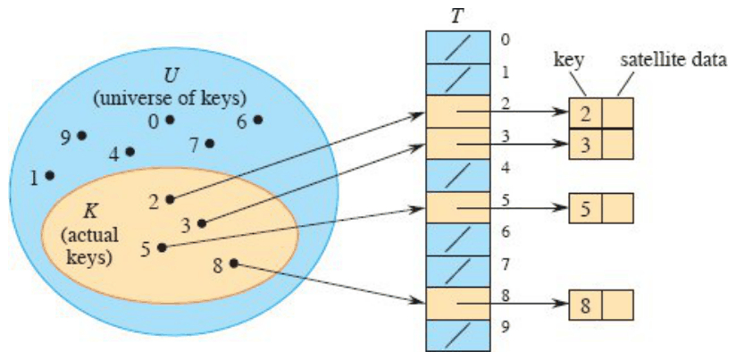

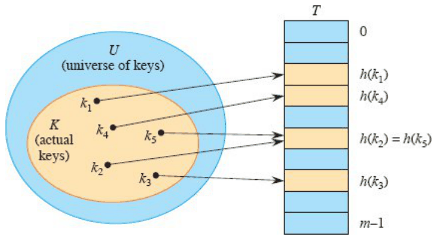
In the left figure the stored keys are \(K=\{2,3,5,8\}\). The price is memory: the table needs \(\lvert U\rvert\) slots however few keys are stored. Nine-digit IDs need \(10^9\) slots.在左图中，存放的关键字为 \(K=\{2,3,5,8\}\)。代价是内存：无论存放多少关键字，表都需要 \(\lvert U\rvert\) 个槽。九位学号需要 \(10^9\) 个槽。
Step 2: hash tables and collisions第 2 步：散列表与冲突
In words: hash table = compute the index from the key with a function, in a table much smaller than the universe.用文字表述：散列表 = 用一个函数从关键字算出下标，所用的表远小于全域。
A hash function（散列函数）\(h:U\to\{0,1,\dots,m-1\}\) sends key \(k\) to the slot \(h(k)\), the hash value of \(k\). The hash table（散列表）\(T[0:m-1]\) has \(m\ll\lvert U\rvert\) slots, as in the right figure. Memory drops from \(\Theta(\lvert U\rvert)\) to \(\Theta(\lvert K\rvert)\). Search is still \(O(1)\), but only on average. Direct addressing is \(O(1)\) in the worst case. A hash function must be deterministic: the same key always gives the same slot.散列函数 \(h:U\to\{0,1,\dots,m-1\}\) 把关键字 \(k\) 映射到一个槽 \(h(k)\)，这就是 \(k\) 的散列值。散列表 \(T[0:m-1]\) 有 \(m\ll\lvert U\rvert\) 个槽，如右图所示。内存从 \(\Theta(\lvert U\rvert)\) 降到 \(\Theta(\lvert K\rvert)\)。查找仍为 \(O(1)\)，但只是平均情况。直接寻址在最坏情况下是 \(O(1)\)。散列函数必须是确定的：同一个关键字总是给出同一个槽。
Two keys \(k_1\ne k_2\) with \(h(k_1)=h(k_2)\) collide（冲突）. Collisions are unavoidable when \(\lvert U\rvert>m\): by the pigeonhole principle, more than \(m\) items in \(m\) boxes put two items in one box. So every hash table needs a collision-resolution method: chaining (Section 8.2) or open addressing (Section 8.4).若两个关键字 \(k_1\ne k_2\) 满足 \(h(k_1)=h(k_2)\)，就称它们冲突。当 \(\lvert U\rvert>m\) 时，冲突不可避免：根据鸽巢原理，把超过 \(m\) 个元素放进 \(m\) 个盒子，必有一个盒子放入两个元素。因此，每种散列表都需要冲突解决方法：链接法（第 8.2 节）或开放寻址法（第 8.4 节）。
Step 3: the ideal model and the expected number of collisions第 3 步：理想模型与期望冲突次数
In words: independent uniform hashing = every key gets a slot chosen at random, independently of the other keys, and keeps it.用文字表述：独立均匀散列 = 每个关键字都随机选取一个槽，且与其他关键字无关，并一直保留这个槽。
Under independent uniform hashing（独立均匀散列）each \(h(k)\) is drawn uniformly from \(\{0,\dots,m-1\}\), independently for every key, and then stays fixed. Two distinct keys collide with probability exactly \(1/m\). The ideal cannot be built. Section 8.3 shows how to approximate it. Indicator variables are explained in Section 4.2: one indicator per pair of keys is 1 when the pair collides.在独立均匀散列下，每个 \(h(k)\) 都从 \(\{0,\dots,m-1\}\) 中均匀抽取，各关键字之间相互独立，抽取之后便保持不变。两个不同的关键字恰好以概率 \(1/m\) 冲突。这种理想的散列无法真正构造出来，第 8.3 节说明如何近似它。指示器随机变量在第 4.2 节中有介绍：对每一对关键字设一个指示器，当这对关键字冲突时其值为 1。
Practice练习
Q1. (Calculation) A university stores \(n=20{,}000\) records keyed by 9-digit student IDs. (a) How many slots does a direct-address table need, and what fraction is used? (b) A hash table with \(m=25{,}000\) slots is used instead. Give \(\alpha\) and the expected number of colliding pairs under independent uniform hashing.Q1.（计算）某大学存储 \(n=20{,}000\) 条记录，以 9 位学号为键。(a) 直接寻址表需要多少个槽？其中被使用的比例是多少？(b) 改用一个含 \(m=25{,}000\) 个槽的散列表。求 \(\alpha\)，以及在独立均匀散列下冲突对数的期望。
Answer
(a) There are \(10^9\) possible IDs, so the table needs \(10^9\) slots; only \(20000/10^9=2\times10^{-5}\) (0.002%) are used. (b) \(\alpha=20000/25000=0.8\). Expected colliding pairs: \(\frac{n(n-1)}{2m}=\frac{20000\cdot19999}{50000}=7999.6\approx8000\). Even with \(\alpha<1\) many collisions occur, so a collision-resolution method is essential.(a) 可能的学号共有 \(10^9\) 个，因此表需要 \(10^9\) 个槽；其中仅 \(20000/10^9=2\times10^{-5}\)（0.002%）被使用。(b) \(\alpha=20000/25000=0.8\)。冲突对数的期望：\(\frac{n(n-1)}{2m}=\frac{20000\cdot19999}{50000}=7999.6\approx8000\)。即使 \(\alpha<1\)，也会发生许多冲突，因此冲突解决方法必不可少。
Q2. (Beyond the pages: huge array, no initialization) You want a direct-address dictionary on an array \(T[0:m-1]\) with \(m\gg n\) whose entries contain garbage, and you may not initialize it (\(O(1)\) setup). Design INSERT, SEARCH and DELETE that run in \(O(1)\).Q2.（超出课本内容：大数组，且不做初始化）现要在数组 \(T[0:m-1]\) 上实现直接寻址字典，该数组规模为 \(m\gg n\)，其各项含有垃圾数据，且不允许初始化（\(O(1)\) 的初始化开销）。设计在 \(O(1)\) 时间内运行的 INSERT、SEARCH 与 DELETE。
Answer
Keep a second array \(S[0:n-1]\) used as a stack of the keys present, and a counter \(top=0\) (the only initialization). \(T[k]\) stores an index into \(S\) but may be garbage. Key \(k\) is present iff \(0\le T[k]<top\) and \(S[T[k]]=k\). SEARCH tests this. INSERT\((k)\), if \(k\) is absent: \(S[top]=k\), \(T[k]=top\), \(top=top+1\). DELETE\((k)\): let \(j=T[k]\) and \(k'=S[top-1]\); set \(S[j]=k'\), \(T[k']=j\), \(top=top-1\) (the top key fills the hole). Garbage cannot fool the test: \(S[0:top-1]\) contains only genuine keys, and a garbage value \(T[k]\) passes only if the genuine entry \(S[T[k]]\) is \(k\) itself. Each operation uses \(O(1)\) time and \(O(1)\) space per key.另用一个数组 \(S[0:n-1]\) 作为当前存在的键的栈，并用一个计数器 \(top=0\)（这是唯一的初始化）。\(T[k]\) 存放一个指向 \(S\) 的下标，但其内容可能是垃圾值。键 \(k\) 存在，当且仅当 \(0\le T[k]<top\) 且 \(S[T[k]]=k\)。SEARCH 即检验此条件。INSERT\((k)\)：若 \(k\) 不存在，则执行：\(S[top]=k\)，\(T[k]=top\)，\(top=top+1\)。DELETE\((k)\)：令 \(j=T[k]\) 和 \(k'=S[top-1]\)；置 \(S[j]=k'\)，\(T[k']=j\)，\(top=top-1\)（栈顶的键填补空出的位置）。垃圾值无法骗过该检验：\(S[0:top-1]\) 中只包含真实的键，而垃圾值 \(T[k]\) 只有在其对应的真实项 \(S[T[k]]\) 恰好就是 \(k\) 本身时才能通过检验。每个操作耗时 \(O(1)\)，每个键占用空间 \(O(1)\)。
思路：用一个“真正写过”的小栈去交叉验证大数组里的脏数据。
Collision resolution by chaining ★★★用链接法解决冲突
Goal. Draw a chained table, state the cost of every operation, and derive the expected number of elements examined by an unsuccessful and by a successful search.目标。 画出一个链接法散列表，说明每种操作的代价，并推导不成功查找与成功查找期望检查的元素个数。
Step 1: the structure and its operations第 1 步：结构及其操作
In words: chaining = every slot holds a list of all the keys that hash to it.用文字表述：链接法 = 每个槽保存一个链表，链表中是所有散列到该槽的关键字。
In chaining（链接法）slot \(T[j]\) points to the head of a doubly linked list of all stored elements with hash value \(j\). It holds NIL if there are none.在链接法中，槽 \(T[j]\) 指向一个双向链表的表头，该链表包含所有散列值为 \(j\) 的已存元素。若没有这样的元素，槽中存放 NIL。
In the figure, \(k_1\) and \(k_4\) share one list, and \(k_5,k_2,k_7\) another. LIST-PREPEND adds at the head of a list in \(O(1)\). LIST-SEARCH scans from the head. LIST-DELETE unlinks a given element in \(O(1)\).图中，\(k_1\) 和 \(k_4\) 共用一个链表，\(k_5,k_2,k_7\) 则在另一个链表中。LIST-PREPEND 在链表表头插入，耗时 \(O(1)\)。LIST-SEARCH 从表头开始扫描。LIST-DELETE 在 \(O(1)\) 时间内把给定元素从链表中摘除。
CHAINED-HASH-INSERT(T, x)
1 LIST-PREPEND(T[h(x.key)], x)
CHAINED-HASH-SEARCH(T, k)
1 return LIST-SEARCH(T[h(k)], k)
CHAINED-HASH-DELETE(T, x)
1 LIST-DELETE(T[h(x.key)], x)
| Operation操作 | Cost代价 | Condition条件 |
|---|---|---|
| INSERT | \(O(1)\) worst case | prepends at the head; assumes the key is not yet stored在表头插入；假定该键尚未存储 |
| SEARCH | proportional to the chain length与链长成正比 | analysed below见下文分析 |
| DELETE | \(O(1)\) worst case | element given by pointer, doubly linked lists元素由指针给出，使用双向链表 |
INSERT prepends and trusts that the key is absent. Forbidding duplicates needs a search first. DELETE receives the element \(x\), not its key: with doubly linked lists it is \(O(1)\).INSERT 直接插入到表头，并假定该关键字不存在。若要禁止重复，就必须先做一次查找。DELETE 接收的是元素 \(x\) 本身，而不是它的关键字：对于双向链表，它的代价是 \(O(1)\)。
Step 2: load factor and the unsuccessful search第 2 步：装载因子与不成功查找
In words: the load factor is the average chain length, and an unsuccessful search must walk one whole chain.用文字表述：装载因子就是平均链长，不成功查找必须走完整条链。
The worst case is bad. All \(n\) keys hash to one slot, one chain of length \(n\) results, and a search costs \(\Theta(n)\). This does not contradict the average \(O(1)\), which depends on how \(h\) spreads the keys. We assume independent uniform hashing. Let \(n_j\) be the length of chain \(T[j]\). Then \(n=n_0+n_1+\dots+n_{m-1}\) and \(E[n_j]=\alpha\).最坏情况很糟。若所有 \(n\) 个关键字都散列到同一个槽，就会得到一条长为 \(n\) 的链，而一次查找的代价为 \(\Theta(n)\)。这与平均情况下的 \(O(1)\) 并不矛盾，平均情况取决于 \(h\) 如何分散关键字。我们假设独立均匀散列。设 \(n_j\) 为链 \(T[j]\) 的长度。则 \(n=n_0+n_1+\dots+n_{m-1}\)，并且 \(E[n_j]=\alpha\)。
An unsuccessful search looks for a key that is absent. The key is equally likely to hash to any slot, and the search scans the whole chain \(T[h(k)]\). Its expected length is \(E[n_{h(k)}]=\alpha\). So it examines \(\alpha\) elements, and with the \(O(1)\) time for computing \(h(k)\) the cost is \(\Theta(1+\alpha)\).不成功查找是查找一个不存在的关键字。该关键字散列到每个槽的可能性相同，查找会扫描整条链 \(T[h(k)]\)。其期望长度为 \(E[n_{h(k)}]=\alpha\)。因此它检查 \(\alpha\) 个元素，再加上计算 \(h(k)\) 所需的 \(O(1)\) 时间，总代价为 \(\Theta(1+\alpha)\)。
Step 3: the successful search第 3 步：成功查找
In words: a search for \(x_i\) passes \(x_i\) and every element in front of it, and only later-inserted keys can be in front.用文字表述：查找 \(x_i\) 会经过 \(x_i\) 以及它前面的所有元素，而能排在它前面的只有后插入的关键字。
A successful search looks for a stored key. Assume each of the \(n\) stored elements is equally likely to be sought. Let \(x_1,\dots,x_n\) be the elements in insertion order, with keys \(k_1,\dots,k_n\). A search for \(x_i\) examines \(x_i\) and the elements in front of it in its chain. Insertion is at the head, so those are the later-inserted \(x_j\) with \(j>i\) and \(h(k_j)=h(k_i)\). Each such \(x_j\) shares the slot with probability \(1/m\). By linearity of expectation (one indicator per pair, Section 4.2):成功查找是查找一个已存的关键字。假设 \(n\) 个已存元素中每一个被查找的可能性相同。设 \(x_1,\dots,x_n\) 为按插入顺序排列的元素，其关键字为 \(k_1,\dots,k_n\)。查找 \(x_i\) 时，会检查 \(x_i\) 以及链中排在它前面的元素。由于插入在表头进行，排在前面的就是那些后插入的 \(x_j\)（满足 \(j>i\) 和 \(h(k_j)=h(k_i)\)）。这样的每个 \(x_j\) 与它同槽的概率为 \(1/m\)。由期望的线性性质（每对关键字设一个指示器，见第 4.2 节）：
\[E[\text{examined}]=\frac1n\sum_{i=1}^{n}\Bigl(1+\sum_{j=i+1}^{n}\frac1m\Bigr)=1+\frac{1}{nm}\sum_{i=1}^{n}(n-i)=1+\frac{n-1}{2m}=1+\frac\alpha2-\frac{\alpha}{2n}\]
The step uses \(\sum_{i=1}^{n}(n-i)=n(n-1)/2\), the sum of \(0,1,\dots,n-1\).这一步用到 \(\sum_{i=1}^{n}(n-i)=n(n-1)/2\)，即 \(0,1,\dots,n-1\) 之和。
If \(n=O(m)\), then \(\alpha=O(1)\). A search takes \(O(1)\) expected time, and with \(O(1)\) INSERT and DELETE all operations are \(O(1)\) on average. For \(m=1000\):若 \(n=O(m)\)，则 \(\alpha=O(1)\)。查找的期望时间为 \(O(1)\)。在 \(O(1)\) 下，INSERT 和 DELETE 的平均代价也都是 \(O(1)\)。对于 \(m=1000\)：
| \(\alpha\) (\(n=500,1000,2000,4000\)) | 0.5 | 1 | 2 | 4 |
|---|---|---|---|---|
| unsuccessful: \(\alpha\) | 0.50 | 1.00 | 2.00 | 4.00 |
| successful: \(\approx1+\alpha/2\) | 1.25 | 1.50 | 2.00 | 3.00 |
For \(\alpha<2\) a successful search examines more elements than an unsuccessful one, because it counts the element it finds. For \(\alpha>2\) it examines fewer.对于 \(\alpha<2\)，成功查找检查的元素比不成功查找多，因为它要把找到的那个元素也算进去。对于 \(\alpha>2\)，则检查得更少。
Practice练习
Q1. (Trace) A table has \(m=9\) slots and \(h(k)=k \bmod 9\); collisions are resolved by chaining with insertion at the head. Insert 5, 28, 19, 15, 20, 33, 12, 17, 10. Draw the chains and state how many elements a search for 28 and a search for the absent key 37 examine.Q1.（追踪）某表有 \(m=9\) 个槽，且 \(h(k)=k \bmod 9\)；冲突通过链接法解决，且插入于表头。依次插入 5、28、19、15、20、33、12、17、10。画出各条链，并给出搜索 28 与搜索不存在的键 37 时各检查多少个元素。
Answer
Hash values: 5→5, 28→1, 19→1, 15→6, 20→2, 33→6, 12→3, 17→8, 10→1. Chains (head first): \(T[1]\): 10 → 19 → 28; \(T[2]\): 20; \(T[3]\): 12; \(T[5]\): 5; \(T[6]\): 33 → 15; \(T[8]\): 17; slots 0, 4, 7 are empty. Here \(\alpha=9/9=1\) and the longest chain has 3 elements. Key 28 is last in \(T[1]\), so 3 elements are examined. Key 37 has \(h(37)=1\), so the whole chain of \(T[1]\) is scanned: 3 elements.散列值：5→5，28→1，19→1，15→6，20→2，33→6，12→3，17→8，10→1。各链（表头在前）：\(T[1]\)：10 → 19 → 28；\(T[2]\)：20；\(T[3]\)：12；\(T[5]\)：5；\(T[6]\)：33 → 15；\(T[8]\)：17；槽 0、4、7 为空。此处 \(\alpha=9/9=1\)，最长的链有 3 个元素。键 28 位于 \(T[1]\) 的末尾，因此检查 3 个元素。键 37 的散列值为 \(h(37)=1\)，因此要扫描 \(T[1]\) 的整条链：3 个元素。
Q2. (Calculation) A chained table with \(m=1000\) slots stores \(n=3000\) keys under independent uniform hashing. (a) Find \(\alpha\). (b) Find the expected number of elements examined in an unsuccessful and in a successful search. (c) For \(n=3000\), how large must \(m\) be so that a successful search examines at most 1.5 elements on average?Q2.（计算）一个有 \(m=1000\) 个槽的链接表，在独立均匀散列下存储了 \(n=3000\) 个键。(a) 求 \(\alpha\)。(b) 求不成功搜索与成功搜索中检查元素个数的期望。(c) 对于 \(n=3000\)，\(m\) 须至少为多大，才能使成功搜索平均检查的元素不超过 1.5 个？
Answer
(a) \(\alpha=3000/1000=3\). (b) Unsuccessful: \(\alpha=3\) elements. Successful: \(1+\frac{n-1}{2m}=1+\frac{2999}{2000}\approx2.50\) elements; it is cheaper because the search stops at its target and sees on average only half of the other elements of the chain. (c) \(1+\frac{n-1}{2m}\le1.5\iff m\ge n-1=2999\): about one slot per key (\(\alpha\approx1\)).(a) \(\alpha=3000/1000=3\)。(b) 不成功：\(\alpha=3\) 个元素。成功：\(1+\frac{n-1}{2m}=1+\frac{2999}{2000}\approx2.50\) 个元素；它更便宜，因为搜索在目标处即停止，平均只看到链中其他元素的一半。(c) \(1+\frac{n-1}{2m}\le1.5\iff m\ge n-1=2999\)：大约每个键对应一个槽（\(\alpha\approx1\)）。
Q3. (Explain) (a) Every chain is kept sorted by key. How do the running times of successful search, unsuccessful search, INSERT and DELETE change? (b) True or false: with singly linked chains, CHAINED-HASH-DELETE\((T,x)\) given a pointer to \(x\) still takes \(O(1)\).Q3.（解释）(a) 每条链都按键有序保存。成功查找、不成功查找、INSERT 和 DELETE 的运行时间分别会如何变化？(b) 判断：若采用单链表的链，给定指向 \(x\) 的指针，CHAINED-HASH-DELETE\((T,x)\) 的运行时间仍为 \(O(1)\)。
Answer
(a) Successful search: unchanged, \(\Theta(1+\alpha)\). Unsuccessful search: it can stop at the first larger key, after about half the chain, but this is still \(\Theta(1+\alpha)\). INSERT: the position must be found, so it costs \(\Theta(1+\alpha)\) expected instead of \(O(1)\). DELETE: unchanged. Sorting gains nothing asymptotically and slows insertion. (b) False. Unlinking \(x\) needs its predecessor, which a singly linked list finds only by scanning from the head: time proportional to the chain length, \(\Theta(1+\alpha)\) expected, as for a search.(a) 成功搜索：不变，\(\Theta(1+\alpha)\)。不成功搜索：它可以在遇到第一个更大的键时停止，平均约为链长的一半，但这仍然是 \(\Theta(1+\alpha)\)。INSERT：必须找到插入位置，因此代价为期望 \(\Theta(1+\alpha)\)，而不是 \(O(1)\)。DELETE：不变。排序在渐近意义上并无收益，而且会减慢插入。(b) 错误。摘除 \(x\) 需要其前驱，而单向链表只能从表头扫描才能找到前驱：时间与链长成正比，期望为 \(\Theta(1+\alpha)\)，与搜索相同。
Hash functions ★★★散列函数
Goal. Compute hash values with the division, multiplication and multiply-shift methods, choose a table size, and explain universal hashing with a proof for the number-theoretic family.目标。 用除法、乘法和乘移位法计算散列值，选择表的大小，并结合数论函数族的证明，解释全域散列。
A good hash function is fast and imitates independent uniform hashing: each key goes to each slot with probability \(1/m\), whatever patterns the data contain. Keys are taken to be nonnegative integers. A string of \(r\) bytes \(c_1c_2\dots c_r\) is first read as the radix-128 number \(\sum_i c_i128^{\,r-i}\), where \(c_i\) is the code of the \(i\)th character and \(r\) is the length. Horner's rule reduces after every step, so no value outgrows one word.好的散列函数既要快，又要模拟独立均匀散列：无论数据呈现什么模式，每个关键字到每个槽的概率都是 \(1/m\)。关键字取为非负整数。长度为 \(r\) 字节的字符串 \(c_1c_2\dots c_r\)，先被读成基数为 128 的数 \(\sum_i c_i128^{\,r-i}\)，其中 \(c_i\) 是第 \(i\) 个字符的编码，\(r\) 是字符串长度。霍纳法则每一步都先取模，因此任何中间值都不会超出一个机器字。
Step 1: the division method第 1 步：除法散列法
In words: division method = the slot is the remainder of the key divided by the table size.用文字表述：除法散列法 = 槽号是关键字除以表大小所得的余数。
Two bad choices. First, \(m=2^p\) keeps only the \(p\) low-order bits of \(k\). With \(m=16\) the keys 1024, 2048, 3072, 4096 all go to slot 0, while \(m=17\) gives 4, 8, 12, 16. Second, \(m=2^p-1\) with strings read in radix \(2^p\) makes every permutation of a string collide: \(2^p\equiv1\pmod m\) turns \(h\) into the sum of the characters mod \(m\). For about 700 keys a good size is the prime \(m=701\).有两种不好的选择。第一，\(m=2^p\) 只保留 \(k\) 的低 \(p\) 位。当 \(m=16\) 时，关键字 1024、2048、3072、4096 都会落到槽 0，而 \(m=17\) 给出的是 4、8、12、16。第二，\(m=2^p-1\) 与按基数 \(2^p\) 读取的字符串相配时，字符串的每种排列都会冲突：\(2^p\equiv1\pmod m\) 把 \(h\) 变成各字符之和对 \(m\) 取模。对于约 700 个关键字，一个好的表大小是素数 \(m=701\)。
Step 2: the multiplication method第 2 步：乘法散列法
In words: multiplication method = multiply the key by a constant between 0 and 1, keep the fractional part and scale it to the table.用文字表述：乘法散列法 = 把关键字乘以一个 0 与 1 之间的常数，取小数部分，再按表的大小缩放。
Step 3: the multiply-shift method第 3 步：乘移位法
In words: multiply-shift = the multiplication method done with integers: multiply by a \(w\)-bit constant and take the top bits of the low word.用文字表述：乘移位法 = 用整数实现的乘法散列法：乘以一个 \(w\) 位的常数，再取乘积低位字的最高位。
Take \(m=2^\ell\) slots and a fixed \(w\)-bit integer \(a=A\cdot2^w\). The \(w\)-bit product wraps around to \(ka \bmod 2^w\). The \(\ell\) most significant bits of it are the hash value. Only a multiplication and a shift are needed.取 \(m=2^\ell\) 个槽，以及一个固定的 \(w\) 位整数 \(a=A\cdot2^w\)。\(w\) 位的乘积溢出后得到 \(ka \bmod 2^w\)。它的最高 \(\ell\) 位即为散列值。只需要一次乘法和一次移位。

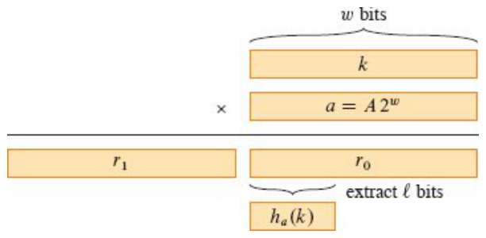
How to do it by hand: 1. Compute \(ka\). 2. Reduce it mod \(2^w\) (keep the low \(w\) bits). 3. Write the result in \(w\) bits. 4. The top \(\ell\) bits are the slot. Practice Q3 does this with \(w=8\).手工做法：1. 计算 \(ka\)。2. 对 \(2^w\) 取模（保留低 \(w\) 位）。3. 把结果写成 \(w\) 位。4. 最高的 \(\ell\) 位就是槽号。练习 Q3 就是用 \(w=8\) 来做这一过程。
Step 4: why a fixed function is not enough第 4 步：为什么固定的函数不够
For any fixed \(h\), if \(\lvert U\rvert>(n-1)m\), some \(n\) keys share one slot. An adversary who knows \(h\) stores exactly these keys and forces \(\Theta(n)\) per search. Division, multiplication and multiply-shift with a fixed \(a\) are all static hashing（静态散列）and have this weakness.对任一固定的 \(h\)，只要 \(\lvert U\rvert>(n-1)m\)，就必有 \(n\) 个关键字落在同一个槽中。知道 \(h\) 的对手只需存入这些关键字，就能使每次查找的代价达到 \(\Theta(n)\)。固定 \(a\) 的除法、乘法和乘移位法都是静态散列，都有这个弱点。
Step 5: universal hashing第 5 步：全域散列
In words: universal hashing = pick the function at random when the program starts, so no input is bad in advance.用文字表述：全域散列 = 程序启动时随机选取函数，因此事先不存在坏的输入。
In random hashing（随机散列）the program draws \(h\) uniformly from a family \(\mathcal H\) of functions at start-up, independently of the keys, and then keeps it. A key must always map to the same slot. "Expected" refers to this one draw, and the bounds hold for every key set, even one chosen by an adversary who knows \(\mathcal H\) but not the draw. A finite family \(\mathcal H\) is universal（全域的）if for every pair of distinct keys at most \(\lvert\mathcal H\rvert/m\) of its functions collide on them.在随机散列中，程序在启动时，与关键字无关地从函数族 \(\mathcal H\) 中均匀抽取一个函数 \(h\)，之后便一直使用它。同一个关键字必须始终映射到同一个槽。“期望”指的是这一次抽取，并且上界对每个关键字集合都成立，即使这些关键字是由一个知道 \(\mathcal H\) 但不知道所抽取函数的对手选定的。若一个有限函数族 \(\mathcal H\) 中，对任意两个不同的关键字，至多 \(\lvert\mathcal H\rvert/m\) 个函数使它们冲突，则称该函数族是全域的。
Other properties of a family, with probabilities over \(h\) drawn uniformly from \(\mathcal H\):族的其他性质，其中的概率是对从 \(\mathcal H\) 中均匀抽取的 \(h\) 而言的：
| Property性质 | Condition条件 |
|---|---|
| uniform均匀 | \(\Pr[h(k)=q]=1/m\) for every key \(k\) and slot \(q\)\(\Pr[h(k)=q]=1/m\)：对每个键 \(k\) 与槽 \(q\) |
| universal全域 | \(\Pr[h(k_1)=h(k_2)]\le1/m\) for distinct \(k_1,k_2\) |
| \(\epsilon\)-universal | \(\Pr[h(k_1)=h(k_2)]\le\epsilon\) for distinct \(k_1,k_2\) |
| \(d\)-independent | \(\Pr[h(k_i)=q_i\text{ for }i=1,\dots,d]=1/m^d\) for distinct keys \(k_1,\dots,k_d\) and any slots \(q_1,\dots,q_d\)\(\Pr[h(k_i)=q_i\text{ for }i=1,\dots,d]=1/m^d\)：对不同的键 \(k_1,\dots,k_d\) 与任意槽 \(q_1,\dots,q_d\) |
In the table, \(d\) is the number of keys, \(k_i\) is the \(i\)th of them, and \(q_i\) is the slot that it must reach. Here \(q\) stands for any slot, and \(q_d\) is the last of the \(d\) slots. Independent uniform hashing is \(d\)-independent for every \(d\). A 2-independent family is universal, since \(\Pr[h(k_1)=h(k_2)]=\sum_q\Pr[h(k_1)=q\wedge h(k_2)=q]=m\cdot m^{-2}=1/m\). The converse fails: for \(U=\{0,\dots,m-1\}\) the family that holds only the identity map is universal, because it never collides, but it is not uniform.表中，\(d\) 是关键字的个数，\(k_i\) 是其中第 \(i\) 个关键字，\(q_i\) 是它必须到达的槽。这里 \(q\) 表示任意一个槽，\(q_d\) 是 \(d\) 个槽中的最后一个。对每个 \(d\)，独立均匀散列都是 \(d\)-独立的。2-独立的函数族都是全域的，因为 \(\Pr[h(k_1)=h(k_2)]=\sum_q\Pr[h(k_1)=q\wedge h(k_2)=q]=m\cdot m^{-2}=1/m\)。反过来不成立：对于 \(U=\{0,\dots,m-1\}\)，只含恒等映射的函数族是全域的，因为它从不冲突，但它并不均匀。
Payoff with chaining. Let \(\mathcal H\) be universal and take any set of \(n\) keys. Each stored key other than \(k\) lands in \(T[h(k)]\) with probability at most \(1/m\). So the expected chain length is at most \(n/m=\alpha\) for a key not in the table, and at most \(1+(n-1)/m<1+\alpha\) for a key in the table. Every search costs \(\Theta(1+\alpha)\) in expectation for every key set.在链接法中的应用。 设 \(\mathcal H\) 为全域函数族，并任取 \(n\) 个关键字。除 \(k\) 之外，每个已存关键字落入 \(T[h(k)]\) 的概率至多为 \(1/m\)。因此，对于不在表中的关键字，期望链长至多为 \(n/m=\alpha\)；对于在表中的关键字，期望链长至多为 \(1+(n-1)/m<1+\alpha\)。对于每个关键字集合，每次查找的期望代价都为 \(\Theta(1+\alpha)\)。
Step 6: the number-theoretic family第 6 步：数论函数族
In words: \(h_{ab}\) = a random line \(ak+b\) taken mod a prime \(p\), then mod \(m\).用文字表述：\(h_{ab}\) = 随机线性函数 \(ak+b\) 先对素数 \(p\) 取模，再对 \(m\) 取模。
Proof that \(\mathcal H_{pm}\) is universal. Take distinct keys \(k_1,k_2\) and put \(r_1=(ak_1+b)\bmod p\) and \(r_2=(ak_2+b)\bmod p\).证明 \(\mathcal H_{pm}\) 是全域的。 取两个不同的关键字 \(k_1,k_2\)，并令 \(r_1=(ak_1+b)\bmod p\) 和 \(r_2=(ak_2+b)\bmod p\)。
- \(r_1-r_2\equiv a(k_1-k_2)\pmod p\) is nonzero, because \(p\) is prime and both \(a\) and \(k_1-k_2\) are nonzero mod \(p\). So \(r_1\ne r_2\): no collision happens mod \(p\).\(r_1-r_2\equiv a(k_1-k_2)\pmod p\) 不为零，因为 \(p\) 是素数，而 \(a\) 和 \(k_1-k_2\) 模 \(p\) 都不为零。因此 \(r_1\ne r_2\)：模 \(p\) 时不会发生冲突。
- The map \((a,b)\mapsto(r_1,r_2)\) is a bijection from the \(p(p-1)\) pairs onto the \(p(p-1)\) ordered pairs of distinct residues, since \(a=(r_1-r_2)(k_1-k_2)^{-1}\bmod p\) and \(b=(r_1-ak_1)\bmod p\) can be solved. A random \((a,b)\) gives a uniformly random pair of distinct residues.映射 \((a,b)\mapsto(r_1,r_2)\) 是一个双射，它把 \(p(p-1)\) 中的数对一一映到 \(p(p-1)\) 个由不同剩余组成的有序数对上，因为 \(a=(r_1-r_2)(k_1-k_2)^{-1}\bmod p\) 与 \(b=(r_1-ak_1)\bmod p\) 都可以解出。随机选取的 \((a,b)\) 给出一个均匀随机的、由不同剩余组成的数对。
- A collision after the last reduction means \(r_1\equiv r_2\pmod m\). For fixed \(r_1\), at most \(\lceil p/m\rceil-1\le(p-1)/m\) of the other \(p-1\) residues are congruent to it. So the probability is at most \(\frac{(p-1)/m}{p-1}=\frac1m\).最后一次取模之后的冲突，意味着 \(r_1\equiv r_2\pmod m\)。对固定的 \(r_1\)，其余 \(p-1\) 个剩余中至多有 \(\lceil p/m\rceil-1\le(p-1)/m\) 个与它同余。因此概率至多为 \(\frac{(p-1)/m}{p-1}=\frac1m\)。
For \(p=17\) and \(m=6\), every pair of distinct keys collides under exactly 32 of the 272 functions: \(32/272\approx0.118\le1/6\).对于 \(p=17\) 和 \(m=6\)，每一对不同的关键字恰好在 272 个函数中的 32 个函数下发生冲突：\(32/272\approx0.118\le1/6\)。
The multiply-shift family \(h_a(k)=(ka \bmod 2^w)\gg(w-\ell)\) with a random odd \(a\) is \(2/m\)-universal: two distinct keys collide with probability at most \(2/m\). It is the practical choice, because it needs only a multiplication and a shift.乘移位函数族 \(h_a(k)=(ka \bmod 2^w)\gg(w-\ell)\) 中取随机奇数 \(a\) 时，它是 \(2/m\)-全域的：两个不同的关键字冲突的概率至多为 \(2/m\)。它是实际中的首选，因为它只需要一次乘法和一次移位。
Practice练习
Q1. (Multiplication method) Let \(m=1000\) and \(A=(\sqrt5-1)/2\approx0.6180339887\). Compute \(h(k)=\lfloor m(kA \bmod 1)\rfloor\) for \(k=61,62,63,64,65\).Q1.（乘法散列法）设 \(m=1000\) 与 \(A=(\sqrt5-1)/2\approx0.6180339887\)。对 \(k=61,62,63,64,65\) 计算 \(h(k)=\lfloor m(kA \bmod 1)\rfloor\)。
Answer
\(61A=37.70007\), fractional part \(0.70007\), \(h=700\). \(62A=38.31811\to0.31811\to318\). \(63A=38.93614\to0.93614\to936\). \(64A=39.55418\to0.55418\to554\). \(65A=40.17221\to0.17221\to172\). The hash values are 700, 318, 936, 554, 172: consecutive keys are spread over the whole table, because each step adds \(A\approx0.618\) to the fractional part.\(61A=37.70007\)，其小数部分为 \(0.70007\)，\(h=700\)。\(62A=38.31811\to0.31811\to318\)。\(63A=38.93614\to0.93614\to936\)。\(64A=39.55418\to0.55418\to554\)。\(65A=40.17221\to0.17221\to172\)。散列值依次为 700、318、936、554、172：连续的键分散在整个表中，因为每一步都把 \(A\approx0.618\) 加到小数部分上。
Q2. (Multiply-shift) Let \(w=8\), \(\ell=3\) (\(m=8\)) and \(a=181=10110101_2\). Compute \(h_a(k)\) for \(k=77,78,79\).Q2.（乘移位法）设 \(w=8\)、\(\ell=3\)（\(m=8\)）与 \(a=181=10110101_2\)。对 \(k=77,78,79\) 计算 \(h_a(k)\)。
Answer
\(77\cdot181=13937\); \(13937 \bmod 256=113=01110001_2\); the top 3 bits are \(011_2\), so \(h=3\). \(78\cdot181=14118\); \(14118 \bmod 256=38=00100110_2\); top bits \(001_2\), so \(h=1\). \(79\cdot181=14299\); \(14299 \bmod 256=219=11011011_2\); top bits \(110_2\), so \(h=6\).\(77\cdot181=13937\)；\(13937 \bmod 256=113=01110001_2\)；最高 3 位为 \(011_2\)，因此 \(h=3\)。\(78\cdot181=14118\)；\(14118 \bmod 256=38=00100110_2\)；最高位为 \(001_2\)，因此 \(h=1\)。\(79\cdot181=14299\)；\(14299 \bmod 256=219=11011011_2\)；最高位为 \(110_2\)，因此 \(h=6\)。
Q3. (Universal hashing, beyond the pages) Let \(p=17\), \(m=6\). (a) Evaluate \(h_{5,2}\) for \(k=3,7,12\). (b) Why must \(a\ne0\)? Show that allowing \(a=0\) destroys universality.Q3.（全域散列，超出课本内容）设 \(p=17\)、\(m=6\)。(a) 对 \(k=3,7,12\) 计算 \(h_{5,2}\)。(b) 为什么必须 \(a\ne0\)？证明允许 \(a=0\) 会破坏全域性。
Answer
(a) \(h_{5,2}(3)=(17\bmod17)\bmod6=0\); \(h_{5,2}(7)=(37\bmod17)\bmod6=3\bmod6=3\); \(h_{5,2}(12)=(62\bmod17)\bmod6=11\bmod6=5\). (b) With \(a=0\), \(h_{0,b}(k)=b\bmod6\) is constant, so every pair of keys collides under all 17 such functions. For \(a\ne0\) every pair collides under exactly 32 functions (shown above), so with \(a=0\) allowed the count becomes \(32+17=49\) out of \(17\cdot17=289\) functions: \(49/289\approx0.1696>1/6\approx0.1667\). The family would no longer be universal.(a) \(h_{5,2}(3)=(17\bmod17)\bmod6=0\)；\(h_{5,2}(7)=(37\bmod17)\bmod6=3\bmod6=3\)；\(h_{5,2}(12)=(62\bmod17)\bmod6=11\bmod6=5\)。(b) 当 \(a=0\) 时，\(h_{0,b}(k)=b\bmod6\) 为常数，因此每一对键在所有这 17 个此类函数下都发生冲突。对于 \(a\ne0\)，每一对键恰好在 32 个函数下冲突（见上文），因此若允许 \(a=0\)，则其计数变为在 \(17\cdot17=289\) 个函数中的 \(32+17=49\) 个：\(49/289\approx0.1696>1/6\approx0.1667\)。该族将不再是全域的。
易错：a=0 时函数是常数函数，会让所有关键字冲突。
Open addressing ★★★开放寻址法
Goal. Trace insertion and search with linear probing, quadratic probing and double hashing, explain deletion with a DELETED marker, and use the expected-probe bounds.目标。 用线性探查、二次探查和双重散列手工演算插入与查找，解释用 DELETED 标记进行删除，并使用期望探查次数的界。
Step 1: the idea, insertion and search第 1 步：基本思想、插入与查找
In words: open addressing = no lists; a key that finds its slot taken tries other slots in a fixed key-dependent order.用文字表述：开放寻址法 = 不使用链表；若关键字发现其槽已被占用，就按照一个由关键字决定的固定次序尝试其他槽。
In open addressing（开放寻址法）every element is stored in the table itself. Each slot holds an element or NIL, and there are no pointers. The table can fill up, so \(\alpha=n/m\le1\). To insert, examine ("probe（探查）") slots in a key-dependent order until an empty slot appears. To search, follow the same order until the key or an empty slot appears.在开放寻址法中，每个元素都直接存放在表中。每个槽要么保存一个元素，要么保存 NIL，没有指针。表可能会被填满，因此 \(\alpha=n/m\le1\)。插入时，按关键字决定的次序依次探查各个槽，直到找到一个空槽。查找时，沿同样的次序进行，直到找到该关键字或遇到一个空槽为止。
The hash function takes the probe number \(i\) as a second argument. The probe sequence（探查序列）\(\langle h(k,0),h(k,1),\dots,h(k,m-1)\rangle\) must be a permutation of \(\langle0,1,\dots,m-1\rangle\), so that every slot is eventually tried.散列函数以探查序号 \(i\) 作为第二个参数。探查序列 \(\langle h(k,0),h(k,1),\dots,h(k,m-1)\rangle\) 必须是 \(\langle0,1,\dots,m-1\rangle\) 的一个排列，这样每个槽最终都会被尝试到。
HASH-INSERT(T, k)
1 i = 0
2 repeat
3 q = h(k, i)
4 if T[q] == NIL
5 T[q] = k
6 return q
7 else i = i + 1
8 until i == m
9 error "hash table overflow"
HASH-SEARCH(T, k)
1 i = 0
2 repeat
3 q = h(k, i)
4 if T[q] == k
5 return q
6 i = i + 1
7 until T[q] == NIL or i == m
8 return NIL
- HASH-INSERT lines 3–7: probe slot \(q=h(k,i)\); if it is empty, store \(k\) there; otherwise raise \(i\). Line 9 reports overflow after \(m\) failed probes.HASH-INSERT 第 3–7 行：探查槽 \(q=h(k,i)\)；若它为空，就把 \(k\) 存入其中；否则将 \(i\) 增大。第 9 行在 \(m\) 次探查失败后报告溢出。
- HASH-SEARCH lines 3–6: return \(q\) if the key is found; otherwise go on. Line 7 stops at the first empty slot, because \(k\) would have been stored there.HASH-SEARCH 第 3–6 行：若找到关键字，则返回 \(q\)；否则继续。第 7 行在遇到第一个空槽时停止，因为 \(k\) 本应存放在那里。
Search probes the same slots as the insertion of \(k\) did.查找探查的槽，与插入 \(k\) 时探查的槽相同。
Deletion. Suppose \(k\) was inserted after probing slot \(q\) and finding it occupied. If the key in \(q\) is later deleted by writing NIL, a search for \(k\) stops at \(q\) and wrongly reports "not found". So deletion writes a special value DELETED, meaning "was occupied". Search continues past it, and insertion may reuse it.删除。 假设 \(k\) 是在探查槽 \(q\) 发现它已被占用之后插入的。如果之后通过写入 NIL 来删除槽 \(q\) 中的关键字，那么对 \(k\) 的查找会在 \(q\) 处停止，并错误地报告“未找到”。因此，删除时应写入一个特殊值 DELETED，表示“曾经被占用”。查找会越过它继续进行，插入则可以重用它。
HASH-DELETE(T, k)
1 q = HASH-SEARCH(T, k)
2 if q ≠ NIL
3 T[q] = DELETED
HASH-INSERT must treat DELETED like NIL in line 4. HASH-SEARCH needs no change. With DELETED markers the search time no longer depends on \(\alpha\) alone, so chaining is preferred when keys are deleted often.在第 4 行中，HASH-INSERT 必须把 DELETED 当作 NIL 来处理。HASH-SEARCH 无需改动。使用 DELETED 标记后，查找时间不再仅取决于 \(\alpha\)，因此当关键字经常被删除时，更宜使用链接法。
Step 2: probe sequences第 2 步：探查序列
In words: the three methods differ only in how the next slot to try is computed.用文字表述：三种方法的区别仅在于如何计算下一个要尝试的槽。
The analysis assumes independent uniform permutation hashing（独立均匀排列散列）: the probe sequence of each key is equally likely to be any of the \(m!\) permutations of \(\langle0,\dots,m-1\rangle\). It is an ideal that real schemes approximate.分析时假设独立均匀排列散列：每个关键字的探查序列等可能地是 \(\langle0,\dots,m-1\rangle\) 的 \(m!\) 种排列中的任何一种。这是一种理想模型，实际的方法只是对它的近似。
Linear probing suffers from primary clustering（一次聚集）. An empty slot preceded by \(i\) occupied slots is filled next with probability \((i+1)/m\), so long runs of occupied slots grow even longer.线性探查存在一次聚集问题。一个空槽前面连续有 \(i\) 个已占用的槽，它下一个被填上的概率为 \((i+1)/m\)，因此较长的已占用连续段会越变越长。
Quadratic probing breaks up the runs, but keys with the same \(h_1(k)\) follow the same sequence. This is secondary clustering（二次聚集）. For \(m=11\), \(c_1=1\), \(c_2=3\) the offsets are \(0,4,3,8,8,3,4,0,2,10,2\), so key 88 reaches only the slots \(0,2,3,4,8,10\).二次探查能打散连续段，但具有相同 \(h_1(k)\) 的关键字会走同一个序列。这就是二次聚集。例如，取 \(m=11\)、\(c_1=1\)、\(c_2=3\) 时，偏移量依次为 \(0,4,3,8,8,3,4,0,2,10,2\)，因此关键字 88 只能到达 \(0,2,3,4,8,10\) 这些槽。
Double hashing（双重散列）uses two hash functions. The first probe goes to \(T[h_1(k)]\) and every later probe moves on by \(h_2(k)\) modulo \(m\). Start and step depend on the key, so keys that start at the same slot diverge.双重散列使用两个散列函数。第一次探查到 \(T[h_1(k)]\)，之后每次探查都前进 \(h_2(k)\)，并对 \(m\) 取模。起点和步长都取决于关键字，因此即使两个关键字从同一个槽开始，它们的探查路径也会分开。

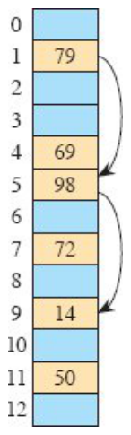
In the figure key 14 has \(h_1=1\) and \(h_2=1+(14\bmod11)=4\). The probes are slots \(1,5,9\), and slot 9 is empty.图中关键字 14 的 \(h_1=1\) 与 \(h_2=1+(14\bmod11)=4\) 已给出。它的探查槽依次为 \(1,5,9\)，其中槽 9 为空。
Why \(\gcd(h_2(k),m)=1\). The sequence returns to its start after \(m/\gcd(h_2,m)\) steps and visits only that many slots. For \(m=12\), \(h_1=5\), \(h_2=4\) it cycles through \(5,9,1,5,\dots\): three slots. An insertion can then fail although nine slots are empty.为什么 \(\gcd(h_2(k),m)=1\)。 该序列在走过 \(m/\gcd(h_2,m)\) 步后回到起点，且只访问这么多个槽。例如当 \(m=12\)、\(h_1=5\)、\(h_2=4\) 时，它只在 \(5,9,1,5,\dots\) 这三个槽之间循环。这样，即使另外九个槽是空的，插入也可能失败。
| Method方法 | Distinct probe sequences不同的探查序列 | Clustering聚集 |
|---|---|---|
| Linear probing线性探查 | \(m\) | primary一次聚集 |
| Quadratic probing二次探查 | \(m\) | secondary二次聚集 |
| Double hashing双重散列 | \(\Theta(m^2)\) | none无 |
| Ideal (uniform permutation)理想（均匀排列） | \(m!\) | none无 |
Step 3: one complete insertion trace第 3 步：一次完整的插入演算
How to do it by hand: 1. For each key compute \(h_1(k)\) (and \(h_2(k)\)). 2. List the probes \(h(k,0),h(k,1),\dots\) until a slot is empty. 3. Store the key in that slot. 4. Count the probes.手工做法：1. 对每个关键字计算 \(h_1(k)\)（以及 \(h_2(k)\)）。2. 列出 \(h(k,0),h(k,1),\dots\) 处的探查，直到遇到空槽。3. 把关键字存入该槽。4. 计数探查次数。
Insert 10, 22, 31, 4, 15, 28, 17, 88, 59 into a table with \(m=11\) and \(h_1(k)=k\bmod11\). Linear probing is \(h(k,i)=(k+i)\bmod11\). Quadratic probing is \(h(k,i)=(k+i+3i^2)\bmod11\). Double hashing uses \(h_2(k)=1+(k\bmod10)\). The tables list the slots probed; the last slot receives the key.依次插入关键字 10、22、31、4、15、28、17、88、59，表的参数为 \(m=11\) 和 \(h_1(k)=k\bmod11\)。线性探查为 \(h(k,i)=(k+i)\bmod11\)。二次探查为 \(h(k,i)=(k+i+3i^2)\bmod11\)。双重散列使用 \(h_2(k)=1+(k\bmod10)\)。表中列出了所探查的槽；最后一个槽接收该关键字。
| Key键 | \(h_1\) | Linear线性 | Quadratic (\(c_1=1,c_2=3\)) | Double (\(h_2\)) |
|---|---|---|---|---|
| 10 | 10 | 10 | 10 | 10 (1) |
| 22 | 0 | 0 | 0 | 0 (3) |
| 31 | 9 | 9 | 9 | 9 (2) |
| 4 | 4 | 4 | 4 | 4 (5) |
| 15 | 4 | 4, 5 | 4, 8 | 4, 10, 5 (6) |
| 28 | 6 | 6 | 6 | 6 (9) |
| 17 | 6 | 6, 7 | 6, 10, 9, 3 | 6, 3 (8) |
| 88 | 0 | 0, 1 | 0, 4, 3, 8, 8, 3, 4, 0, 2 | 0, 9, 7 (9) |
| 59 | 4 | 4, 5, 6, 7, 8 | 4, 8, 7 | 4, 3, 2 (10) |
| Total probes总探查次数 | 16 | 23 | 16 |
| Slot槽 | 0 | 1 | 2 | 3 | 4 | 5 | 6 | 7 | 8 | 9 | 10 |
|---|---|---|---|---|---|---|---|---|---|---|---|
| Linear线性 | 22 | 88 | 4 | 15 | 28 | 17 | 59 | 31 | 10 | ||
| Quadratic二次 | 22 | 88 | 17 | 4 | 28 | 59 | 15 | 31 | 10 | ||
| Double双重 | 22 | 59 | 17 | 4 | 15 | 28 | 88 | 31 | 10 |
Linear probing builds a long run of occupied slots, so key 59 needs 5 probes. Quadratic probing revisits slot 8 for key 88 and needs 9 probes. A later successful search repeats the insertion probes. Its average cost is \(16/9\approx1.78\), \(23/9\approx2.56\) and \(16/9\approx1.78\) probes.线性探查形成了一段很长的已占用连续槽，因此关键字 59 需要 5 次探查。二次探查对关键字 88 又回到了槽 8，需要 9 次探查。之后的成功查找会重复插入时的探查。它的平均代价分别为 \(16/9\approx1.78\)、\(23/9\approx2.56\) 和 \(16/9\approx1.78\) 次探查。
Step 4: the expected number of probes第 4 步：期望的探查次数
In words: each probe hits an occupied slot with probability at most \(\alpha\), so the chance of needing a further probe shrinks like a power of \(\alpha\).用文字表述：每次探查命中已占用槽位的概率至多为 \(\alpha\)，因此还需要再探查的概率按 \(\alpha\) 的幂次递减。
Assume independent uniform permutation hashing, no deletions and \(\alpha=n/m<1\).假设使用独立均匀排列散列，没有删除操作，并且 \(\alpha=n/m<1\)。
Unsuccessful search. Let \(X\) be the number of probes. Every probe except the last hits an occupied slot, so \(X\ge i\) iff the first \(i-1\) probes all hit occupied slots. The first probe does so with probability \(n/m=\alpha\). Given that the first \(j-1\) probes did, the \(j\)th probe is uniform over the \(m-j+1\) unexamined slots, of which \(n-j+1\) are occupied. So it hits an occupied slot with probability \(\frac{n-j+1}{m-j+1}\le\frac nm=\alpha\). Hence \(\Pr[X\ge i]\le\alpha^{i-1}\) and不成功的查找。 设 \(X\) 为探查次数。除最后一次外，每次探查都命中已占用的槽位，所以 \(X\ge i\) 当且仅当前 \(i-1\) 次探查都命中已占用的槽位。第一次探查命中已占用槽位的概率为 \(n/m=\alpha\)。在前 \(j-1\) 次探查都命中已占用槽位的条件下，第 \(j\) 次探查在 \(m-j+1\) 个未被检查的槽位中均匀选取，其中有 \(n-j+1\) 个是已占用的。因此它命中已占用槽位的概率为 \(\frac{n-j+1}{m-j+1}\le\frac nm=\alpha\)。于是 \(\Pr[X\ge i]\le\alpha^{i-1}\)，并且
\[E[X]=\sum_{i\ge1}\Pr[X\ge i]\le\sum_{i\ge1}\alpha^{i-1}=\frac1{1-\alpha}\]
Inserting a key is an unsuccessful search plus storing the key, so insertion obeys the same bound.插入一个键相当于一次不成功的查找，再加上存储该键，因此插入满足同样的界。
Successful search. A search for a key repeats the probes of its insertion. The key inserted as the \((i+1)\)st found \(i\) keys in the table, so it needed at most \(\frac1{1-i/m}=\frac m{m-i}\) probes on average. Averaging over the \(n\) stored keys:成功的查找。 查找某个键时，会重复它插入时的探查。第 \((i+1)\) 个插入的键在插入时发现表中已有 \(i\) 个键，因此它平均至多需要 \(\frac1{1-i/m}=\frac m{m-i}\) 次探查。对全部 \(n\) 个已存储的键取平均：
\[\frac1n\sum_{i=0}^{n-1}\frac m{m-i}=\frac mn\bigl(H_m-H_{m-n}\bigr)\le\frac1\alpha\ln\frac1{1-\alpha}\]
This holds because \(H_m-H_{m-n}=\sum_{k=m-n+1}^{m}\frac1k\le\ln\frac m{m-n}\).这是因为 \(H_m-H_{m-n}=\sum_{k=m-n+1}^{m}\frac1k\le\ln\frac m{m-n}\)。
| \(\alpha\) | 0.5 | 0.75 | 0.875 | 0.9 | 0.99 |
|---|---|---|---|---|---|
| unsuccessful or insert, \(\frac1{1-\alpha}\) | 2 | 4 | 8 | 10 | 100 |
| successful, \(\frac1\alpha\ln\frac1{1-\alpha}\) | 1.39 | 1.85 | 2.38 | 2.56 | 4.65 |
Successful searches stay cheap even at high load. Unsuccessful searches and insertions explode as \(\alpha\to1\), so keep \(\alpha\) below about 0.75. For a full table an unsuccessful search probes all \(m\) slots.即使在高装载因子下，成功查找的代价仍然很低。不成功的查找和插入的代价会随 \(\alpha\to1\) 增大而急剧增长，因此要把 \(\alpha\) 保持在 0.75 左右以下。对于满表，一次不成功的查找要探查全部 \(m\) 个槽位。
| Chaining链接法 | Open addressing开放寻址法 | |
|---|---|---|
| Where keys live键存放在何处 | lists outside the array链表位于数组之外 | in the array itself存放在数组本身之中 |
| Load factor装载因子 | any \(\alpha\), may exceed 1 | \(\alpha\le1\), the table can overflow |
| Unsuccessful search不成功的搜索 | \(\Theta(1+\alpha)\) | at most \(1/(1-\alpha)\) probes |
| Deletion删除 | \(O(1)\) with doubly linked lists | DELETED marker, or shifting for linear probingDELETED 标记，或线性探查的移位 |
| Memory空间开销 | one pointer per element每个元素一个指针 | no pointers, more slots per byte无指针，每字节可容纳更多槽 |
| Typical use典型用途 | many deletions, unknown \(n\) | known \(n\), memory or cache sensitive\(n\) 已知，对内存或高速缓存敏感 |
Practice练习
Q1. (Trace) A table has \(m=10\) slots and \(h'(k)=k\bmod10\). Insert 89, 18, 49, 58, 69 using (i) linear probing and (ii) quadratic probing \(h(k,i)=(h'(k)+i^2)\bmod10\). Give the tables and the total number of probes.Q1.（追踪）某表有 \(m=10\) 个槽，且 \(h'(k)=k\bmod10\)。依次插入 89、18、49、58、69，分别采用 (i) 线性探查和 (ii) 二次探查 \(h(k,i)=(h'(k)+i^2)\bmod10\)。给出各表以及探查总次数。
Answer
(i) 89→9; 18→8; 49: slots 9, 0 → 0; 58: 8, 9, 0, 1 → 1; 69: 9, 0, 1, 2 → 2. Table: 0: 49, 1: 58, 2: 69, 8: 18, 9: 89. Probes \(1+1+2+4+4=12\). (ii) 89→9; 18→8; 49: 9, then \((9+1)\bmod10=0\) → 0; 58: 8, then 9, then \((8+4)\bmod10=2\) → 2; 69: 9, then 0, then \((9+4)\bmod10=3\) → 3. Table: 0: 49, 2: 58, 3: 69, 8: 18, 9: 89. Probes \(1+1+2+3+3=10\). Linear probing piles 49, 58, 69 into one run (primary clustering); quadratic probing spreads them.(i) 89→9；18→8；49：槽 9、0 → 0；58：槽 8、9、0、1 → 1；69：槽 9、0、1、2 → 2。表为：0：49，1：58，2：69，8：18，9：89。探查次数 \(1+1+2+4+4=12\)。(ii) 89→9；18→8；49：先探查 9，然后 \((9+1)\bmod10=0\) → 0；58：先探查 8，然后 9，然后 \((8+4)\bmod10=2\) → 2；69：先探查 9，然后 0，然后 \((9+4)\bmod10=3\) → 3。表为：0：49，2：58，3：69，8：18，9：89。探查次数 \(1+1+2+3+3=10\)。线性探查把 49、58、69 堆积成一段连续区（一次聚集）；二次探查则把它们分散开。
Q2. (Calculation) An open-address table has load factor \(\alpha=3/4\), later \(7/8\). Give upper bounds on the expected number of probes of an unsuccessful and a successful search in both cases (uniform permutation hashing, no deletions).Q2.（计算）某开放寻址表的装载因子先为 \(\alpha=3/4\)，后来为 \(7/8\)。在两种情形下，分别给出不成功搜索与成功搜索的期望探查次数的上界（均匀排列散列，无删除）。
Answer
\(\alpha=3/4\): unsuccessful \(\le\frac1{1-3/4}=4\); successful \(\le\frac43\ln4\approx1.85\). \(\alpha=7/8\): unsuccessful \(\le8\); successful \(\le\frac87\ln8\approx2.38\). Going from \(3/4\) to \(7/8\) doubles the unsuccessful bound but raises the successful bound by only about 29%.\(\alpha=3/4\)：不成功的搜索 \(\le\frac1{1-3/4}=4\)；成功的搜索 \(\le\frac43\ln4\approx1.85\)。\(\alpha=7/8\)：不成功的搜索 \(\le8\)；成功的搜索 \(\le\frac87\ln8\approx2.38\)。从 \(3/4\) 变为 \(7/8\) 使不成功搜索的上界翻倍，但成功搜索的上界仅提高约 29%。
Q3. (Explain) In double hashing, why must \(\gcd(h_2(k),m)=1\)? Take \(m=12\), \(h_1(k)=5\), \(h_2(k)=4\) and list the probe sequence. Name two standard ways to guarantee the condition.Q3.（解释）在双重散列中，为什么必须 \(\gcd(h_2(k),m)=1\)？取 \(m=12\)、\(h_1(k)=5\)、\(h_2(k)=4\)，并列出探查序列。说出两种保证该条件成立的标准方法。
Answer
The probes are \(h_1+i\,h_2\bmod m\); they repeat after \(m/\gcd(h_2,m)\) steps, so only that many slots are ever examined. For \(m=12\), \(h_2=4\): \(5,9,1,5,9,1,\dots\), only \(12/4=3\) slots, so an insertion can fail with "overflow" although nine slots are empty. The condition holds if \(m=2^p\) and \(h_2\) is always odd, or if \(m\) is prime and \(1\le h_2(k)<m\) (e.g. \(h_2(k)=1+(k\bmod(m-1))\)).探查依次为 \(h_1+i\,h_2\bmod m\)；它们在 \(m/\gcd(h_2,m)\) 步之后重复，因此只会检查这么多个槽。对于 \(m=12\)、\(h_2=4\)：\(5,9,1,5,9,1,\dots\)，只有 \(12/4=3\) 个槽，因此即使有九个槽为空，插入也可能以“溢出”告终。若 \(m=2^p\) 且 \(h_2\) 始终为奇数，或者若 \(m\) 为素数且 \(1\le h_2(k)<m\)（例如 \(h_2(k)=1+(k\bmod(m-1))\)），则该条件成立。
Linear probing in practice ★线性探查的实际应用
Linear probing can delete without DELETED markers. After removing the key in slot \(q\), the procedure scans the following slots \(q'\) (cyclically) until it meets an empty slot. A key \(k'\) in slot \(q'\) moves into the hole \(q\) if a search for \(k'\) would otherwise stop at \(q\).线性探查可以不用 DELETED 标记就完成删除。删除槽位 \(q\) 中的键后，过程依次检查其后的槽位 \(q'\)（循环地），直到遇到一个空槽。位于槽位 \(q'\) 的键 \(k'\)，若它留在原处，对 \(k'\) 的查找就会在 \(q\) 处停止，此时它移入空洞 \(q\)。
LINEAR-PROBING-HASH-DELETE(T, q)
1 while TRUE
2 T[q] = NIL // make slot q empty
3 q′ = q // starting point for search
4 repeat
5 q′ = (q′ + 1) mod m // next slot number with linear probing
6 k′ = T[q′] // next key to try to move
7 if k′ == NIL
8 return // return when an empty slot is found
9 until g(k′, q) < g(k′, q′) // was empty slot q probed before q′?
10 T[q] = k′ // move k′ into slot q
11 q = q′ // free up slot q′
Example: \(m=10\), \(h_1(k)=k\bmod10\), table slot 3: 43, 4: 74, 5: 93, 6: 92. Delete 43. Key 74 stays, since \(g(74,3)=9\not<g(74,4)=0\). Key 93 moves to slot 3, since \(g(93,3)=0<g(93,5)=2\). Key 92 moves to slot 5, since \(g(92,5)=3<g(92,6)=4\).例子：\(m=10\)，\(h_1(k)=k\bmod10\)，表中槽位 3：43，4：74，5：93，6：92。删除 43。键 74 保持不动，因为 \(g(74,3)=9\not<g(74,4)=0\)。键 93 移到槽位 3，因为 \(g(93,3)=0<g(93,5)=2\)。键 92 移到槽位 5，因为 \(g(92,5)=3<g(92,6)=4\)。
In the RAM model (cost = number of probes) primary clustering makes linear probing worse than double hashing. On real hardware a cache block is fetched as a whole, so consecutive probes cost about one memory access. With a good hash function (\(5\)-independent) and \(\alpha\le2/3\), all operations take \(O(1)\) expected time. This is why linear probing is often the fastest scheme in practice.在 RAM 模型中（代价为探查次数），一次聚集使线性探查比双重散列更差。在真实硬件上，缓存块是整块读入的，因此连续的探查大约只需一次内存访问。若散列函数是 \(5\)-独立的，并且 \(\alpha\le2/3\)，则所有操作的期望时间都是 \(O(1)\)。这就是线性探查在实践中往往最快的原因。
Practice练习
Q1. (Pitfall and repair) \(m=10\), \(h_1(k)=k\bmod10\), linear probing. Keys 13, 23, 33 are inserted. (a) Key 23 is deleted by writing NIL. What does a search for 33 return? (b) Delete 23 properly with LINEAR-PROBING-HASH-DELETE and show the steps.Q1.（陷阱与修复）\(m=10\)、\(h_1(k)=k\bmod10\)，线性探查。插入键 13、23、33。(a) 通过写入 NIL 删除键 23。搜索 33 会返回什么？(b) 用 LINEAR-PROBING-HASH-DELETE 正确地删除 23，并给出各步。
Answer
13→slot 3, 23→slot 4, 33→slot 5. (a) A search for 33 probes slot 3 (13 ≠ 33), then slot 4, which is NIL, and stops: it wrongly returns "not found", although 33 sits in slot 5. (b) Empty slot 4 (hole \(q=4\)). Scan: \(q'=5\) holds 33, \(g(33,4)=(4-3)\bmod10=1<g(33,5)=2\), so 33 moves to slot 4 and the hole becomes slot 5. Next \(q'=6\) is empty: stop. Final table: 3: 13, 4: 33.13→槽 3，23→槽 4，33→槽 5。(a) 搜索 33 时先探查槽 3（13 ≠ 33），然后探查槽 4，该槽为 NIL，于是停止：它错误地返回“未找到”，尽管 33 实际位于槽 5。(b) 清空槽 4（空穴 \(q=4\)）。扫描：\(q'=5\) 中存放的是 33，\(g(33,4)=(4-3)\bmod10=1<g(33,5)=2\)，因此 33 移至槽 4，空穴变为槽 5。接着 \(q'=6\) 为空：停止。最终的表为：3：13，4：33。
Terms to recognise ★需要认识的术语
| Term术语 | What to know要知道什么 |
|---|---|
| Dictionary字典 | A set with INSERT, SEARCH and DELETE一个支持 INSERT、SEARCH 和 DELETE 的集合 |
| Static versus random hashing静态散列与随机散列 | Static: one fixed function. Random: a function drawn from a family at start-up静态：使用一个固定的函数。随机：在启动时从一族函数中抽取一个函数 |
| Hash value散列值 | The slot number \(h(k)\) of key \(k\)键 \(k\) 的槽位号 \(h(k)\) |
| Independent uniform hashing独立均匀散列 | Each key independently, uniformly random slot; the ideal behind the chaining analysis每个键独立地、均匀随机地选取一个槽位；这是链接法分析所依据的理想模型 |
| Uniform permutation hashing均匀排列散列 | Each probe sequence is a random permutation of the slots; the ideal behind the open-addressing analysis每个探查序列都是槽位的一个随机排列；这是开放寻址法分析所依据的理想模型 |
| Resizing扩容 | Allocate a bigger array, often twice as large, when \(\alpha\) passes a threshold and reinsert all keys; insertion stays \(O(1)\) amortized当 \(\alpha\) 超过阈值时，分配一个更大的数组（通常是两倍大小），并把所有键重新插入；插入的摊还代价仍为 \(O(1)\) |
| Perfect hashing完全散列 | Two-level universal hashing for a static key set: \(O(1)\) worst-case search with \(O(n)\) space静态键集合的两级全域散列：查找的最坏情况时间为 \(O(1)\)，空间为 \(O(n)\) |
| Cryptographic hash密码学散列函数 | A function such as SHA-256 used as an approximate random oracle; a random salt gives a family像 SHA-256 这样的函数被当作近似的随机预言机使用；随机盐值可以由此得到一族函数 |
| Knuth's estimate for linear probingKnuth 对线性探查的估计 | Successful \(\frac12(1+\frac1{1-\alpha})\), unsuccessful \(\frac12(1+\frac1{(1-\alpha)^2})\) probes; at \(\alpha=0.9\) they are 5.5 and 50.5成功查找 \(\frac12(1+\frac1{1-\alpha})\) 次，不成功查找 \(\frac12(1+\frac1{(1-\alpha)^2})\) 次探查；当 \(\alpha=0.9\) 时，二者分别为 5.5 和 50.5 |
| \(\epsilon\)-universal family | Collision probability at most \(\epsilon\) for distinct keys; the multiply-shift family has \(\epsilon=2/m\)对互不相同的键，冲突概率至多为 \(\epsilon\)；乘移位族具有 \(\epsilon=2/m\)。 |
Exam-style questions考试题型练习
Q1. (Chaining: trace and analysis, 14 marks) A hash table has \(m=7\) slots and \(h(k)=k\bmod7\). Collisions are resolved by chaining; each new key is inserted at the head of its list. The keys 50, 700, 76, 85, 92, 73, 101 are inserted in this order. (a) Draw the table. (3) (b) Give the load factor, the longest chain, and the number of elements examined when searching for 92, for 50, and for the absent key 15. (4) (c) Under independent uniform hashing, what are the expected numbers of elements examined in an unsuccessful and in a successful search for these \(n\) and \(m\)? Compare with the actual average over the seven keys. (4) (d) What is the worst-case search time, and when does it occur? What guarantee does universal hashing give? (3)Q1.（链接法：追踪与分析，14 分）某散列表有 \(m=7\) 个槽，且 \(h(k)=k\bmod7\)。冲突通过链接法解决；每个新键都插入到其链表的表头。键 50、700、76、85、92、73、101 依此顺序插入。(a) 画出该表。（3 分）(b) 给出装载因子、最长的链，以及搜索 92、搜索 50 与搜索不存在的键 15 时各检查的元素个数。（4 分）(c) 在独立均匀散列下，对于本例中的 \(n\) 与 \(m\)，不成功搜索与成功搜索中检查元素个数的期望各为多少？并与七个键的实际平均值进行比较。（4 分）(d) 最坏情况的搜索时间是多少，何时发生？全域散列提供什么保证？（3 分）
Answer
(a) The hash values are 50→1, 700→0, 76→6, 85→1, 92→1, 73→3, 101→3. With head insertion the chains are (head first) \(T[0]\): 700; \(T[1]\): 92 → 85 → 50; \(T[3]\): 101 → 73; \(T[6]\): 76; slots 2, 4, 5 are empty.(a) 散列值为 50→1，700→0，76→6，85→1，92→1，73→3，101→3。采用表头插入，各链（表头在前）为：\(T[0]\)：700；\(T[1]\)：92 → 85 → 50；\(T[3]\)：101 → 73；\(T[6]\)：76；槽 2、4、5 为空。
(b) \(\alpha=7/7=1\). The longest chain has 3 elements (slot 1). Searching 92 examines 1 element; 50 examines 3; the absent key 15 has \(h(15)=1\), so the whole chain of slot 1 is scanned: 3 elements.(b) \(\alpha=7/7=1\)。最长的链有 3 个元素（位于槽 1）。搜索 92 检查 1 个元素；搜索 50 检查 3 个；不存在的键 15 的散列值为 \(h(15)=1\)，因此要扫描槽 1 的整条链：3 个元素。
(c) Unsuccessful: \(\alpha=1\) element. Successful: \(1+\frac{n-1}{2m}=1+\frac6{14}\approx1.43\) elements. The actual average over the seven keys is \((1+1+2+3+1+2+1)/7=11/7\approx1.57\), a little above the expectation because this particular function puts three keys into one chain; the expectation is taken over random hash functions.(c) 不成功：\(\alpha=1\) 个元素。成功：\(1+\frac{n-1}{2m}=1+\frac6{14}\approx1.43\) 个元素。七个键的实际平均值为 \((1+1+2+3+1+2+1)/7=11/7\approx1.57\)，略高于期望，因为这个特定的函数把三个键放进了同一条链；而期望是对随机的散列函数求得的。
(d) The worst case is \(\Theta(n)\): all \(n\) keys in one chain. For a fixed \(h\) an adversary can force it (here, multiples of 7). If \(h\) is drawn at random from a universal family, then for every key set the expected chain length is at most \(1+\alpha\), so each operation takes \(\Theta(1+\alpha)\) expected time; the \(\Theta(n)\) case still exists but cannot be forced.(d) 最坏情况为 \(\Theta(n)\)：所有 \(n\) 个键都在同一条链中。对于固定的 \(h\)，对手可以迫使这种情况发生（此处即 7 的倍数）。若从全域族中随机抽取 \(h\)，则对每个键集合，期望链长至多为 \(1+\alpha\)，因此每次操作的期望时间为 \(\Theta(1+\alpha)\)；\(\Theta(n)\) 的情况依然存在，但无法被强制出现。
思路：先算余数、按头插法画链；期望公式是对随机散列函数取平均，单个具体函数的实测值不必相等。
Q2. (Open addressing: trace and comparison, 14 marks) A table has \(m=13\) slots and \(h_1(k)=k\bmod13\). The keys 18, 41, 22, 44, 59, 32, 31, 73 are inserted in this order using (i) linear probing and (ii) double hashing with \(h_2(k)=1+(k\bmod11)\). (a) Give the probe sequence of every key and the final table for both methods. (8) (b) Give the total number of probes and the average cost of a successful search. (2) (c) Compare with the expected-cost bounds for \(\alpha=8/13\) and explain the difference between the methods. (4)Q2.（开放寻址法：追踪与比较，14 分）某表有 \(m=13\) 个槽，且 \(h_1(k)=k\bmod13\)。依次插入键 18、41、22、44、59、32、31、73，分别使用 (i) 线性探查和 (ii) 带有 \(h_2(k)=1+(k\bmod11)\) 的双重散列。(a) 对两种方法，给出每个键的探查序列以及最终的表。（8 分）(b) 给出探查总次数以及成功搜索的平均代价。（2 分）(c) 与 \(\alpha=8/13\) 的期望代价界进行比较，并解释两种方法之间的差异。（4 分）
Answer
(a) Slots probed (the last is where the key is stored):(a) 所探查的槽（最后一个为该键的存放位置）：
| Key键 | \(h_1\) | \(h_2\) | Linear线性 | Double双重 |
|---|---|---|---|---|
| 18 | 5 | 8 | 5 | 5 |
| 41 | 2 | 9 | 2 | 2 |
| 22 | 9 | 1 | 9 | 9 |
| 44 | 5 | 1 | 5, 6 | 5, 6 |
| 59 | 7 | 5 | 7 | 7 |
| 32 | 6 | 11 | 6, 7, 8 | 6, 4 |
| 31 | 5 | 10 | 5, 6, 7, 8, 9, 10 | 5, 2, 12 |
| 73 | 8 | 8 | 8, 9, 10, 11 | 8 |
Final tables (slot: key). Linear: 2: 41, 5: 18, 6: 44, 7: 59, 8: 32, 9: 22, 10: 31, 11: 73. Double: 2: 41, 4: 32, 5: 18, 6: 44, 7: 59, 8: 73, 9: 22, 12: 31. For double hashing, key 32 steps by 11: \((6+11)\bmod13=4\); key 31 steps by 10: \(5\to15\bmod13=2\to25\bmod13=12\).最终的表（槽：键）。线性探查：2：41，5：18，6：44，7：59，8：32，9：22，10：31，11：73。双重散列：2：41，4：32，5：18，6：44，7：59，8：73，9：22，12：31。对于双重散列，键 32 的步长为 11：\((6+11)\bmod13=4\)；键 31 的步长为 10：\(5\to15\bmod13=2\to25\bmod13=12\)。
(b) Linear: \(1+1+1+2+1+3+6+4=19\) probes. Double: \(1+1+1+2+1+2+3+1=12\) probes. A successful search repeats the insertion probes, so the average successful cost is \(19/8\approx2.38\) (linear) and \(12/8=1.5\) (double).(b) 线性探查：\(1+1+1+2+1+3+6+4=19\) 次探查。双重散列：\(1+1+1+2+1+2+3+1=12\) 次探查。成功搜索会重复插入时的探查，因此成功搜索的平均代价为 \(19/8\approx2.38\)（线性探查）与 \(12/8=1.5\)（双重散列）。
(c) For \(\alpha=8/13\approx0.615\) the bounds are \(\frac1{1-\alpha}=2.6\) (unsuccessful) and \(\frac1\alpha\ln\frac1{1-\alpha}=\frac{13}8\ln2.6\approx1.55\) (successful). Double hashing (1.5) is in line with the ideal; linear probing (2.38) is well above it. In linear probing, keys 44, 32, 31 and 73 all land in the growing run that starts at slot 5, so 31 needs 6 probes (primary clustering). With double hashing, colliding keys jump by different steps (32 to slot 4, 31 to slot 12) and no run builds up.(c) 对于 \(\alpha=8/13\approx0.615\)，界为 \(\frac1{1-\alpha}=2.6\)（不成功）与 \(\frac1\alpha\ln\frac1{1-\alpha}=\frac{13}8\ln2.6\approx1.55\)（成功）。双重散列（1.5）与理想情形相符；线性探查（2.38）则远高于此。在线性探查中，键 44、32、31 和 73 都落入从槽 5 开始、不断增长的连续段中，因此 31 需要 6 次探查（一次聚集）。在双重散列中，发生冲突的键以不同的步长跳跃（32 到槽 4，31 到槽 12），因此不会形成连续段。
Q3. (Hash functions and universal hashing, 14 marks) (a) Why is \(m=2^p\) a poor table size for the division method? Give a better choice. (3) (b) Compute \(h(123456)\) by the multiplication method with \(m=10000\) and \(A=(\sqrt5-1)/2\). (2) (c) Define a universal family. Explain why a single fixed hash function has no worst-case guarantee while a universal family gives expected \(O(1)\) search for every key set. (4) (d) Let \(p=13\), \(m=5\) and \(h_{ab}(k)=((ak+b)\bmod p)\bmod m\). Evaluate \(h_{4,7}\) for the keys 3, 9, 10 (2), and prove that the collision probability of two distinct keys over a random \((a,b)\), \(a\ne0\), is at most \(1/5\); compute it exactly (3).Q3.（散列函数与全域散列，14 分）(a) 为什么 \(m=2^p\) 对于除法散列法来说是较差的表大小？给出一个更好的选择。（3 分）(b) 用乘法散列法，取 \(m=10000\) 与 \(A=(\sqrt5-1)/2\)，计算 \(h(123456)\)。（2 分）(c) 定义全域族。解释为什么单个固定的散列函数没有最坏情况保证，而全域族对每个键集合都给出期望 \(O(1)\) 的搜索时间。（4 分）(d) 设 \(p=13\)、\(m=5\) 与 \(h_{ab}(k)=((ak+b)\bmod p)\bmod m\)。对键 3、9、10 计算 \(h_{4,7}\)（2 分），并证明：在随机的 \((a,b)\)、\(a\ne0\) 下，两个不同键发生冲突的概率至多为 \(1/5\)；并精确计算该概率（3 分）。
Answer
(a) \(k\bmod2^p\) is just the \(p\) lowest bits of \(k\); all other bits are ignored, so keys that agree in those bits (for example all multiples of \(2^p\)) collide. Better: a prime \(m\) not close to a power of 2.(a) \(k\bmod2^p\) 只是 \(k\) 的最低 \(p\) 位；其他所有位都被忽略，因此在这些位上相同的键（例如所有 \(2^p\) 的倍数）会发生冲突。更好的选择：不接近 2 的幂的素数 \(m\)。
(b) \(kA\approx76300.004115\); the fractional part is \(\approx0.004115\), so \(h=\lfloor10000\cdot0.004115\rfloor=41\).(b) \(kA\approx76300.004115\)；其小数部分为 \(\approx0.004115\)，因此 \(h=\lfloor10000\cdot0.004115\rfloor=41\)。
(c) A family \(\mathcal H\) is universal if for all distinct keys \(k_1,k_2\) the number of \(h\in\mathcal H\) with \(h(k_1)=h(k_2)\) is at most \(\lvert\mathcal H\rvert/m\), that is, a random member collides them with probability at most \(1/m\). For a fixed \(h\), an adversary who knows it can choose \(n\) keys with the same hash value (they exist whenever \(\lvert U\rvert>(n-1)m\)), forcing \(\Theta(n)\) per search. With \(h\) drawn at random from a universal family after the keys are fixed, each of the other stored keys falls into the chain of \(k\) with probability at most \(1/m\), so by linearity of expectation the chain has expected length at most \(1+\alpha\) for every key set.(c) 族 \(\mathcal H\) 是全域的，若对所有不同的键 \(k_1,k_2\)，使 \(h(k_1)=h(k_2)\) 成立的 \(h\in\mathcal H\) 的个数至多为 \(\lvert\mathcal H\rvert/m\)，即随机抽取的成员使它们冲突的概率至多为 \(1/m\)。对于固定的 \(h\)，了解它的对手可以选出 \(n\) 个具有相同散列值的键（只要 \(\lvert U\rvert>(n-1)m\)，此类键就存在），从而使每次搜索的代价为 \(\Theta(n)\)。在键确定之后，从全域族中随机抽取 \(h\)，则其余每个已存储的键落入 \(k\) 所在链的概率至多为 \(1/m\)，因此由期望的线性性质，对每个键集合，链的期望长度至多为 \(1+\alpha\)。
(d) \(h_{4,7}(3)=(19\bmod13)\bmod5=6\bmod5=1\); \(h_{4,7}(9)=(43\bmod13)\bmod5=4\); \(h_{4,7}(10)=(47\bmod13)\bmod5=8\bmod5=3\). Proof: for distinct \(k_1,k_2\) let \(r_i=(ak_i+b)\bmod13\). As 13 is prime and \(a\), \(k_1-k_2\) are nonzero mod 13, \(r_1\ne r_2\). The map \((a,b)\mapsto(r_1,r_2)\) is a bijection onto the \(13\cdot12=156\) ordered pairs of distinct residues (solve \(a=(r_1-r_2)(k_1-k_2)^{-1}\), \(b=r_1-ak_1\)). A collision needs \(r_1\equiv r_2\pmod5\). The residue classes of \(\{0,\dots,12\}\) mod 5 are \(\{0,5,10\}\), \(\{1,6,11\}\), \(\{2,7,12\}\) (size 3, \(3\cdot2=6\) ordered pairs each) and \(\{3,8\}\), \(\{4,9\}\) (size 2, 2 ordered pairs each): \(18+4=22\) colliding pairs. The probability is \(22/156\approx0.141\le0.2=1/m\).(d) \(h_{4,7}(3)=(19\bmod13)\bmod5=6\bmod5=1\)；\(h_{4,7}(9)=(43\bmod13)\bmod5=4\)；\(h_{4,7}(10)=(47\bmod13)\bmod5=8\bmod5=3\)。证明：对于不同的键 \(k_1,k_2\)，令 \(r_i=(ak_i+b)\bmod13\)。由于 13 为素数，且 \(a\)、\(k_1-k_2\) 模 13 均非零，因此 \(r_1\ne r_2\)。映射 \((a,b)\mapsto(r_1,r_2)\) 是到 \(13\cdot12=156\) 个由不同剩余组成的有序数对的双射（求解 \(a=(r_1-r_2)(k_1-k_2)^{-1}\)、\(b=r_1-ak_1\) 即可）。发生冲突需要 \(r_1\equiv r_2\pmod5\)。\(\{0,\dots,12\}\) 模 5 的剩余类为 \(\{0,5,10\}\)、\(\{1,6,11\}\)、\(\{2,7,12\}\)（每类大小为 3，各有 \(3\cdot2=6\) 个有序数对），以及 \(\{3,8\}\)、\(\{4,9\}\)（每类大小为 2，各有 2 个有序数对）：共 \(18+4=22\) 个冲突数对。概率为 \(22/156\approx0.141\le0.2=1/m\)。
Q4. (Derivation: expected probes, 12 marks) An open-address table has \(m\) slots and \(n<m\) keys, \(\alpha=n/m\); assume independent uniform permutation hashing and no deletions. (a) Prove that an unsuccessful search makes at most \(1/(1-\alpha)\) probes on average. (6) (b) Evaluate this bound for \(\alpha=0.5\) and \(0.9\), and give the corresponding bounds for a successful search. (3) (c) Unsuccessful searches must need at most 4 probes on average. With \(m=1000\), how many keys may be stored before the table must grow? (1) (d) Why does the analysis break down when DELETED markers are used? (2)Q4.（推导：期望探查次数，12 分）某开放寻址表有 \(m\) 个槽与 \(n<m\) 个键，\(\alpha=n/m\)；假定采用独立均匀排列散列，且无删除。(a) 证明：不成功的搜索平均至多需要 \(1/(1-\alpha)\) 次探查（6 分）。(b) 对 \(\alpha=0.5\) 与 \(0.9\) 计算该界，并给出成功搜索相应的界（3 分）。(c) 不成功搜索平均所需的探查次数必须至多为 4。在 \(m=1000\) 的条件下，表在必须扩容之前最多可以存储多少个键？（1 分）(d) 使用 DELETED 标记时，分析为什么会失效？（2 分）
Answer
(a) Let \(X\) be the number of probes. Every probe except the last hits an occupied slot, so \(X\ge i\) iff the first \(i-1\) probes all hit occupied slots. The first probe does so with probability \(n/m=\alpha\). Given that the first \(j-1\) probes did, the \(j\)th probe is uniform over the \(m-j+1\) unexamined slots, of which \(n-j+1\) are occupied, so it hits an occupied slot with probability \(\frac{n-j+1}{m-j+1}\le\frac nm=\alpha\) because \(n<m\). Multiplying, \(\Pr[X\ge i]\le\alpha^{i-1}\). Hence \(E[X]=\sum_{i\ge1}\Pr[X\ge i]\le\sum_{i\ge1}\alpha^{i-1}=\frac1{1-\alpha}\).(a) 设 \(X\) 为探查次数。除最后一次之外，每次探查都命中已占用的槽，因此 \(X\ge i\)，当且仅当前 \(i-1\) 次探查都命中已占用的槽。第一次探查这样做的概率为 \(n/m=\alpha\)。已知前 \(j-1\) 次探查都命中已占用的槽，则第 \(j\) 次探查在 \(m-j+1\) 个未检查的槽中均匀分布，其中有 \(n-j+1\) 个已被占用，因此它命中已占用槽的概率为 \(\frac{n-j+1}{m-j+1}\le\frac nm=\alpha\)，因为 \(n<m\)。相乘得 \(\Pr[X\ge i]\le\alpha^{i-1}\)。因此 \(E[X]=\sum_{i\ge1}\Pr[X\ge i]\le\sum_{i\ge1}\alpha^{i-1}=\frac1{1-\alpha}\)。
(b) \(\alpha=0.5\): unsuccessful \(\le2\), successful \(\le2\ln2\approx1.39\). \(\alpha=0.9\): unsuccessful \(\le10\), successful \(\le\frac1{0.9}\ln10\approx2.56\).(b) \(\alpha=0.5\)：不成功的搜索 \(\le2\)，成功的搜索 \(\le2\ln2\approx1.39\)。\(\alpha=0.9\)：不成功的搜索 \(\le10\)，成功的搜索 \(\le\frac1{0.9}\ln10\approx2.56\)。
(c) \(\frac1{1-\alpha}\le4\iff\alpha\le0.75\), so at most 750 keys; the table must grow before the 751st insertion.(c) \(\frac1{1-\alpha}\le4\iff\alpha\le0.75\)，因此至多 750 个键；表必须在第 751 次插入之前扩容。
(d) The analysis counts only the \(n\) live keys as obstacles. A slot marked DELETED is not empty, so searches must pass over it and probe sequences become longer than for \(n\) keys. The effective load is \((n+\#\text{DELETED})/m\), which can approach 1 even when \(n\) is small.(d) 分析只把 \(n\) 个有效键视为障碍。标记为 DELETED 的槽并非空槽，因此搜索必须越过它，探查序列会比只有 \(n\) 个键时更长。有效装载为 \((n+\#\text{DELETED})/m\)，即使 \(n\) 很小，它也可能接近 1。
易错：公式只对 \(\alpha<1\)、无删除、独立均匀排列散列成立。
Q5. (Deletion in linear probing and design, 14 marks) A table has \(m=10\) slots, \(h_1(k)=k\bmod10\) and linear probing. The keys 15, 25, 35, 16, 26, 7 are inserted in this order. (a) Give the final table and the number of probes of each insertion. (3) (b) Key 25 is deleted. (i) Show the table when a DELETED marker is used and the number of probes to find 26 afterwards. (2) (ii) Apply LINEAR-PROBING-HASH-DELETE, showing every step and the final table. (5) (c) A table must hold up to \(10^6\) keys chosen by clients, with frequent insertions and deletions. Recommend a hash function and a collision-resolution method, with reasons. (4)Q5.（线性探查中的删除与设计，14 分）某表有 \(m=10\) 个槽，\(h_1(k)=k\bmod10\)，并采用线性探查。依次插入键 15、25、35、16、26、7。(a) 给出最终的表，以及每次插入的探查次数。（3 分）(b) 删除键 25。(i) 在使用 DELETED 标记时给出表，并给出之后查找 26 所需的探查次数。（2 分）(ii) 应用 LINEAR-PROBING-HASH-DELETE，给出每一步以及最终的表。（5 分）(c) 某表必须容纳至多 \(10^6\) 个由客户端选择的键，且插入与删除很频繁。请推荐一种散列函数和一种冲突解决方法，并给出理由。（4 分）
Answer
(a) 15: slot 5 (1 probe). 25: slots 5, 6 (2). 35: 5, 6, 7 (3). 16: 6, 7, 8 (3). 26: 6, 7, 8, 9 (4). 7: 7, 8, 9, 0 (4; it wraps around). Table: 0: 7, 5: 15, 6: 25, 7: 35, 8: 16, 9: 26 (17 probes in total).(a) 15：槽 5（1 次探查）。25：槽 5、6（2 次）。35：5、6、7（3 次）。16：6、7、8（3 次）。26：6、7、8、9（4 次）。7：7、8、9、0（4 次；它绕回到了起点）。表为：0：7，5：15，6：25，7：35，8：16，9：26（共 17 次探查）。
(b) (i) Slot 6 becomes DELETED. Searching 26 probes slot 6 (skipped), 7, 8, 9: 4 probes, as before; the marker stays and keeps probe sequences long.(b) (i) 槽 6 变为 DELETED。搜索 26 时探查槽 6（跳过）、7、8、9：4 次探查，与之前相同；该标记仍然保留，并使探查序列保持较长。
(ii) Hole \(q=6\). \(q'=7\) (35): \(g(35,6)=(6-5)\bmod10=1<g(35,7)=2\), so 35 moves to slot 6; hole 7. \(q'=8\) (16): \(g(16,7)=1<g(16,8)=2\), 16 moves to slot 7; hole 8. \(q'=9\) (26): \(g(26,8)=2<g(26,9)=3\), 26 moves to slot 8; hole 9. \(q'=0\) (7): \(g(7,9)=2<g(7,0)=3\), 7 moves to slot 9 (wrap-around); hole 0. \(q'=1\) is empty: stop. Final table: 5: 15, 6: 35, 7: 16, 8: 26, 9: 7. Searching 26 now needs 3 probes (slots 6, 7, 8).(ii) 空穴 \(q=6\)。\(q'=7\)（35）：\(g(35,6)=(6-5)\bmod10=1<g(35,7)=2\)，因此 35 移至槽 6；空穴为 7。\(q'=8\)（16）：\(g(16,7)=1<g(16,8)=2\)，16 移至槽 7；空穴为 8。\(q'=9\)（26）：\(g(26,8)=2<g(26,9)=3\)，26 移至槽 8；空穴为 9。\(q'=0\)（7）：\(g(7,9)=2<g(7,0)=3\)，7 移至槽 9（绕回）；空穴为 0。\(q'=1\) 为空：停止。最终的表为：5：15，6：35，7：16，8：26，9：7。此时搜索 26 需要 3 次探查（槽 6、7、8）。
(c) Hash function: a random member of a universal family (multiply-shift with a random odd \(a\), or \(((ak+b)\bmod p)\bmod m\)), because clients who know a fixed function could choose colliding keys and force \(\Theta(n)\) searches. Method: chaining with doubly linked lists is the simplest choice, since DELETE is \(O(1)\), any \(\alpha\) is allowed and the expected cost is \(\Theta(1+\alpha)\). Linear probing with the backward-shift deletion is an alternative, cache friendly, with \(\alpha\) kept below about 0.7 and the table doubled when exceeded. Open addressing with DELETED markers should be avoided, because the markers accumulate and make probe lengths depend on the number of deleted slots.(c) 散列函数：从全域族中随机选取的成员（即带有随机奇数 \(a\) 的乘移位法，或 \(((ak+b)\bmod p)\bmod m\)），因为知道某个固定函数的客户端可以选择发生冲突的键，从而迫使 \(\Theta(n)\) 次搜索。方法：使用双向链表的链接法是最简单的选择，因为 DELETE 的代价为 \(O(1)\)，允许任意 \(\alpha\)，且期望代价为 \(\Theta(1+\alpha)\)。采用后向移位删除的线性探查是一种替代方案，对高速缓存友好，但需将 \(\alpha\) 保持在约 0.7 以下，一旦超过便将表扩大一倍。应避免使用带有 DELETED 标记的开放寻址法，因为这些标记会不断积累，并使探查长度取决于已删除槽的数目。
Textbook exercises课后习题
Textbook exercises with answers: 14 questions教材习题及答案，共 14 题，点击展开
E1. (Exercise 11.1-1) A dynamic set \(S\) is represented by a direct-address table \(T\) of length \(m\). Describe a procedure that finds the maximum element of \(S\). What is the worst-case performance of your procedure?E1.（练习 11.1-1）动态集合 \(S\) 用长度为 \(m\) 的直接寻址表 \(T\) 表示。描述一个找出 \(S\) 中最大元素的过程。你的过程的最坏情况性能是什么？
Answer
In a direct-address table, key \(k\) is stored in slot \(T[k]\), and an empty slot holds NIL. The keys are in no order in memory except their index, so the maximum key is the largest index whose slot is not NIL.在直接寻址表中，键 \(k\) 存放在槽位 \(T[k]\) 中，空槽位存放 NIL。键在内存中除了下标之外没有任何顺序，所以最大的键就是槽位不为 NIL 的最大下标。
DIRECT-ADDRESS-MAXIMUM(T, m)
1 for k = m - 1 downto 0
2 if T[k] != NIL
3 return T[k]
4 return NIL // S is empty
The loop examines slots from the highest index downwards and returns at the first occupied slot. In the worst case it examines all \(m\) slots (when \(S\) is empty or its only key is 0), so the worst-case time is \(\Theta(m)\), independent of the number \(n\) of stored elements.循环从最大下标开始向下检查槽位，遇到第一个已占用的槽位就返回。最坏情况下它要检查全部 \(m\) 个槽位（当 \(S\) 为空，或者它唯一的键是 0 时），所以最坏情况时间为 \(\Theta(m)\)，与已存储元素的个数 \(n\) 无关。
This shows that direct addressing supports SEARCH, INSERT and DELETE in \(O(1)\), but order queries such as the maximum cost time proportional to the table size.这说明直接寻址可以在 \(O(1)\) 时间内支持 SEARCH、INSERT 和 DELETE，但像求最大值这样的顺序查询需要与表长成正比的时间。
思路：从最高下标往下扫第一个非空槽，最坏要扫完整个表，Θ(m)。
E2. (Exercise 11.1-2) A bit vector is simply an array of bits (each either 0 or 1). A bit vector of length \(m\) takes much less space than an array of \(m\) pointers. Describe how to use a bit vector to represent a dynamic set of distinct elements drawn from the set \(\{0, 1, \dots, m-1\}\) with no satellite data. Dictionary operations should run in \(O(1)\) time.E2.（练习 11.1-2）位向量就是一个由位（每位为 0 或 1）组成的数组。长度为 \(m\) 的位向量所占的空间远小于由 \(m\) 个指针组成的数组。描述如何用位向量表示从集合 \(\{0, 1, \dots, m-1\}\) 中取出的、互不相同且没有卫星数据的元素构成的动态集合。字典操作应在 \(O(1)\) 时间内完成。
Answer
Let \(V[0 : m-1]\) be a bit vector with \(V[k] = 1\) if and only if key \(k\) is in the set; all bits are initially 0.令 \(V[0 : m-1]\) 为一个位向量，当且仅当键 \(k\) 在集合中时 \(V[k] = 1\)；所有位的初值都为 0。
INSERT(V, k): V[k] = 1
DELETE(V, k): V[k] = 0
SEARCH(V, k): return V[k] == 1
Each operation reads or writes a single bit at a computed position, so each takes \(O(1)\) time. Because the elements are distinct and carry no satellite data, the presence bit is the only information needed. The structure uses \(m\) bits instead of \(m\) pointers.每个操作都只读写一个位（位置由键直接算出），所以每个操作的时间为 \(O(1)\)。由于元素互不相同且没有卫星数据，存在位就是所需的全部信息。该结构使用 \(m\) 位，而不是 \(m\) 个指针。
This is a direct-address table in which the stored "object" is just a presence flag.这就是一个直接寻址表，其中存储的“对象”只是一个存在标志。
思路：第 k 位为 1 表示 k 在集合中，三种操作都是单个位的读写。
E3. (Exercise 11.1-3) Suggest how to implement a direct-address table in which the keys of stored elements do not need to be distinct and the elements can have satellite data. All three dictionary operations (INSERT, DELETE and SEARCH) should run in \(O(1)\) time. (Remember that DELETE takes as argument a pointer to the object to be deleted, not a key.)E3.（练习 11.1-3）给出一种实现直接寻址表的方案：存储元素的键不必互不相同，并且元素可以带有卫星数据。三个字典操作（INSERT、DELETE 和 SEARCH）都应在 \(O(1)\) 时间内完成。（注意 DELETE 的参数是指向待删除对象的指针，而不是键。）
Answer
Structure. Let slot \(T[k]\) hold a pointer to the head of a doubly linked list of all stored objects whose key is \(k\) (NIL if there are none). Each object \(x\) carries its key, its satellite data, and prev and next pointers.结构。 令槽位 \(T[k]\) 存放一个指针，指向所有键为 \(k\) 的已存储对象组成的双向链表的表头（若没有这样的对象则为 NIL）。每个对象 \(x\) 带有自己的键、卫星数据，以及两个指针 prev 和 next。
INSERT(T, x): x.next = T[x.key]; x.prev = NIL
if T[x.key] != NIL: T[x.key].prev = x
T[x.key] = x
SEARCH(T, k): return T[k] // any object with key k, or NIL
DELETE(T, x): if x.prev != NIL: x.prev.next = x.next
else: T[x.key] = x.next
if x.next != NIL: x.next.prev = x.prev
Cost. INSERT adds at the head in \(O(1)\). SEARCH reads one slot: \(O(1)\). DELETE receives a pointer to \(x\) and unlinks it using its own prev and next pointers, without walking the list: \(O(1)\). A doubly linked list is essential: with a singly linked list, DELETE would have to find the predecessor of \(x\) by scanning.代价。 INSERT 在表头插入，时间为 \(O(1)\)。SEARCH 只读一个槽位：\(O(1)\)。DELETE 接收指向 \(x\) 的指针，利用对象自身的 prev 和 next 指针把它从链表中摘下，无需遍历链表：\(O(1)\)。双向链表是必需的：若用单向链表，DELETE 就必须通过扫描找到 \(x\) 的前驱。
思路：每个槽放一条双向链表，插入头插，删除利用对象自带的前后指针，全部 O(1)。
E4. (Exercise 11.2-1) You use a hash function \(h\) to hash \(n\) distinct keys into an array \(T\) of length \(m\). Assuming independent uniform hashing, what is the expected number of collisions? More precisely, what is the expected cardinality of \(\{\{k_1, k_2\} : k_1 \ne k_2 \text{ and } h(k_1) = h(k_2)\}\)?E4.（练习 11.2-1）用散列函数 \(h\) 把 \(n\) 个互不相同的键散列到长度为 \(m\) 的数组 \(T\) 中。假设采用独立均匀散列，冲突的期望次数是多少？更精确地说，\(\{\{k_1, k_2\} : k_1 \ne k_2 \text{ and } h(k_1) = h(k_2)\}\) 的期望基数是多少？
Answer
Method. Use indicator random variables over the unordered pairs of keys. For a pair \(\{k_1, k_2\}\) of distinct keys let \(X_{k_1 k_2} = 1\) if \(h(k_1) = h(k_2)\) and 0 otherwise. Under independent uniform hashing, \(h(k_2)\) is uniform over the \(m\) slots and independent of \(h(k_1)\), so \[E[X_{k_1 k_2}] = \Pr\{h(k_1) = h(k_2)\} = \tfrac{1}{m}.\] There are \(\binom{n}{2}\) unordered pairs. By linearity of expectation, \[E\Big[\sum X_{k_1 k_2}\Big] = \binom{n}{2}\cdot\frac1m = \frac{n(n-1)}{2m}.\]方法。 对键的每个无序对使用指示器随机变量。对于一对不同的键 \(\{k_1, k_2\}\)，令 \(X_{k_1 k_2} = 1\)（当 \(h(k_1) = h(k_2)\) 时），否则为 0。在独立均匀散列下，\(h(k_2)\) 在 \(m\) 个槽位上均匀分布，并且与 \(h(k_1)\) 相互独立，所以 \[E[X_{k_1 k_2}] = \Pr\{h(k_1) = h(k_2)\} = \tfrac{1}{m}.\]。共有 \(\binom{n}{2}\) 个无序对。由期望的线性性质，\[E\Big[\sum X_{k_1 k_2}\Big] = \binom{n}{2}\cdot\frac1m = \frac{n(n-1)}{2m}.\]
So the expected number of colliding pairs is \(\frac{n(n-1)}{2m}\); for \(n = m\) it is about \(n/2\), and it stays below 1 only when \(n\) is about \(\sqrt{2m}\) or less (the birthday effect).因此，冲突对的期望个数为 \(\frac{n(n-1)}{2m}\)；对于 \(n = m\)，它约为 \(n/2\)，只有当 \(n\) 约为 \(\sqrt{2m}\) 或更小时，它才会保持在 1 以下（即生日效应）。
思路：对每一对键用指示变量，碰撞概率 1/m，共 C(n,2) 对，线性期望。
E5. (Exercise 11.2-2) Consider a hash table with 9 slots and the hash function \(h(k) = k \bmod 9\). Demonstrate what happens upon inserting the keys 5, 28, 19, 15, 20, 33, 12, 17, 10 with collisions resolved by chaining.E5.（练习 11.2-2）考虑一个有 9 个槽位、散列函数为 \(h(k) = k \bmod 9\) 的散列表。用链接法解决冲突，演示依次插入键 5、28、19、15、20、33、12、17、10 时会发生什么。
Answer
Method. Compute \(h(k)\) for each key and insert the key at the head of the list in slot \(h(k)\) (the usual chained insertion, \(O(1)\)).方法。 对每个键计算 \(h(k)\)，并把该键插入槽位 \(h(k)\) 所对应链表的表头（即通常的链接法插入，\(O(1)\)）。
| key关键字 | 5 | 28 | 19 | 15 | 20 | 33 | 12 | 17 | 10 |
|---|---|---|---|---|---|---|---|---|---|
| \(k \bmod 9\) | 5 | 1 | 1 | 6 | 2 | 6 | 3 | 8 | 1 |
Resulting table (each list is written from head to tail):结果如下（每个链表从表头到表尾书写）：
slot 0: (empty)
slot 1: 10 -> 19 -> 28
slot 2: 20
slot 3: 12
slot 4: (empty)
slot 5: 5
slot 6: 33 -> 15
slot 7: (empty)
slot 8: 17
Three keys (28, 19, 10) collide in slot 1 and two (15, 33) in slot 6; the longest chain has length 3. The load factor is \(\alpha = 9/9 = 1\).键 28、19、10 在槽位 1 中冲突，键 15、33 在槽位 6 中冲突；最长链的长度为 3。装载因子为 \(\alpha = 9/9 = 1\)。
思路：逐个算 k mod 9，头插进对应链表。
E6. (Exercise 11.2-3) Professor Marley hypothesizes that he can obtain substantial performance gains by modifying the chaining scheme to keep each list in sorted order. How does the professor's modification affect the running time for successful searches, unsuccessful searches, insertions, and deletions?E6.（练习 11.2-3）Marley 教授假设，把链接法改成让每个链表保持有序，就能显著提高性能。这一修改会如何影响成功查找、不成功查找、插入和删除的运行时间？
Answer
Let \(\alpha = n/m\) be the load factor; each list has expected length \(\alpha\) under simple uniform hashing.设 \(\alpha = n/m\) 为装载因子；在简单均匀散列下，每个链表的期望长度为 \(\alpha\)。
- Unsuccessful search. The scan can stop as soon as an element larger than the key is met, which is on average after half of the list instead of the whole list. The expected time is still \(\Theta(1 + \alpha)\); only the constant improves.不成功的查找。 扫描可以在遇到第一个比该键大的元素时停止，平均只需扫描链表的一半，而不必扫描整条链表。期望时间仍为 \(\Theta(1 + \alpha)\)，只是常数项有所改善。
- Successful search. The expected number of elements examined is about the same as for an unsorted list: \(\Theta(1 + \alpha)\). The sorted order does not help, because the target is equally likely to be anywhere in its list.成功的查找。 检查的元素的期望个数与无序链表大致相同，为 \(\Theta(1 + \alpha)\)。有序并不能带来帮助，因为目标元素在链表中的任何位置都是等可能的。
- Insertion. This gets worse. An unsorted list inserts at the head in \(\Theta(1)\), while a sorted list must find the correct position, which takes \(\Theta(1 + \alpha)\) on average (and \(\Theta(n)\) in the worst case).插入。 这一点变差了。无序链表在表头插入只需 \(\Theta(1)\)，而有序链表必须先找到正确的位置，平均需要 \(\Theta(1 + \alpha)\)（最坏情况下需要 \(\Theta(n)\)）。
- Deletion. With a doubly linked list and a pointer to the element it is \(\Theta(1)\) either way. If the key is given, the search dominates and the cost is \(\Theta(1+\alpha)\) as for searching.删除。 若给出指向元素的指针并使用双向链表，无论链表是否有序，代价都是 \(\Theta(1)\)。若给出的是键，则查找占主导，代价与查找相同，为 \(\Theta(1+\alpha)\)。
So the modification gives at most a constant-factor gain for unsuccessful search, none for successful search, and makes insertion asymptotically slower: it is not a substantial improvement.因此，这一修改对不成功的查找至多只能带来常数因子的改进，对成功的查找毫无改进，并且会使插入在渐近意义上变慢。所以它并不是实质性的改进。
思路：有序链表只让失败查找平均提前一半停止，插入反而变成 Θ(1+α)。
E7. (Exercise 11.3-2) You hash a string of \(r\) characters into \(m\) slots by treating it as a radix-128 number and then using the division method. The number \(m\) fits in a 32-bit computer word, but the string of \(r\) characters, treated as a radix-128 number, takes many words. How can you apply the division method to compute the hash value of the character string without using more than a constant number of words of storage outside the string itself?E7.（练习 11.3-2）把一个含 \(r\) 个字符的字符串看作基数为 128 的数，再用除法散列法把它散列到 \(m\) 个槽位中。数 \(m\) 可以放进一个 32 位的计算机字中，但由 \(r\) 个字符组成的字符串，若看作基数为 128 的数，则需要多个字。在字符串本身之外，只使用常数个字的存储空间，如何应用除法散列法来计算该字符串的散列值？
Answer
Method. Evaluate the radix-128 number by Horner's rule and reduce modulo \(m\) after every step. Let the characters be \(c_0, c_1, \dots, c_{r-1}\) with \(c_0\) the most significant.方法。 用霍纳法则计算这个基数为 128 的数，并且每一步之后都对 \(m\) 取模。设字符依次为 \(c_0, c_1, \dots, c_{r-1}\)，其中 \(c_0\) 是最高位。
STRING-HASH(s, r, m)
1 h = 0
2 for i = 0 to r - 1
3 h = (128 * h + s[i]) mod m
4 return h
Why it is correct. The key is \(k = \sum_{i=0}^{r-1} s[i]\cdot 128^{\,r-1-i}\). Because \((a \cdot b + c) \bmod m = ((a \bmod m)\cdot b + c) \bmod m\), reducing after each step does not change the final residue, so the loop ends with \(k \bmod m\).为什么正确。 键为 \(k = \sum_{i=0}^{r-1} s[i]\cdot 128^{\,r-1-i}\)。由于 \((a \cdot b + c) \bmod m = ((a \bmod m)\cdot b + c) \bmod m\)，每一步之后取模都不会改变最终的余数，因此循环结束时得到的就是 \(k \bmod m\)。
Storage. The only variables are \(h\), the index \(i\) and \(m\). After the reduction \(h < m\), so \(128h + s[i] < 128m + 128\) needs just a couple of machine words (a constant number), independent of \(r\). The time is \(\Theta(r)\).存储。 唯一的变量是 \(h\)、下标 \(i\) 和 \(m\)。由于取模之后 \(h < m\)，\(128h + s[i] < 128m + 128\) 只需要几个机器字（常数个），与 \(r\) 无关。时间为 \(\Theta(r)\)。
思路：Horner 法则，每一步都对 m 取模，只需常数个字的存储。
E8. (Exercise 11.3-3) Consider a version of the division method in which \(h(k) = k \bmod m\), where \(m = 2^p - 1\) and \(k\) is a character string interpreted in radix \(2^p\). Show that if string \(x\) can be converted to string \(y\) by permuting its characters, then \(x\) and \(y\) hash to the same value. Give an example of an application in which this property would be undesirable in a hash function.E8.（练习 11.3-3）考虑除法散列法的一个变体，其中 \(h(k) = k \bmod m\)，\(m = 2^p - 1\) 与 \(k\) 是一个字符串，按基数 \(2^p\) 解释。证明：若字符串 \(x\) 可以通过置换其字符变成字符串 \(y\)，则 \(x\) 与 \(y\) 的散列值相同。举一个应用的例子，说明这一性质在散列函数中是不希望有的。
Answer
Proof. Let the string have characters \(c_0, \dots, c_{r-1}\), so its key is \(k = \sum_{i=0}^{r-1} c_i\,(2^p)^i\). Since \(2^p = m + 1 \equiv 1 \pmod m\), we have \((2^p)^i \equiv 1 \pmod m\) for every \(i\). Therefore \[k \bmod m = \Big(\sum_{i=0}^{r-1} c_i\Big) \bmod m.\] The right-hand side depends only on the multiset of characters, not on their order. A permutation of the characters leaves the sum unchanged, so \(x\) and \(y\) hash to the same value. \(\square\)证明。 设该字符串的字符为 \(c_0, \dots, c_{r-1}\)，因此它的键为 \(k = \sum_{i=0}^{r-1} c_i\,(2^p)^i\)。由于 \(2^p = m + 1 \equiv 1 \pmod m\)，对每个 \(i\) 都有 \((2^p)^i \equiv 1 \pmod m\)。因此 \[k \bmod m = \Big(\sum_{i=0}^{r-1} c_i\Big) \bmod m.\]。右边只依赖于字符的多重集，而与它们的顺序无关。对字符进行置换不会改变这个和，所以 \(x\) 与 \(y\) 的散列值相同。\(\square\)
Undesirable application. Consider a table of words or identifiers, for example a dictionary or a compiler symbol table. Anagrams and similar names such as stop, pots, tops and spot, or variables ab and ba, would all collide; real data contains many such families, so chains become long and the expected-constant-time assumption fails.不希望的应用。 考虑一个由单词或标识符组成的表，例如字典或编译器的符号表。变位词以及类似的名字，如 stop、pots、tops 和 spot，或者变量 ab 和 ba，都会发生冲突。真实数据中有许多这样的族，因此链会变得很长，期望为常数时间的假设也就不再成立。
思路：2^p ≡ 1 (mod 2^p−1)，所以哈希值就是字符值之和模 m，与顺序无关。
E9. (Exercise 11.3-4) Consider a hash table of size \(m = 1000\) and the multiplication-method hash function \(h(k) = \lfloor m\,(kA \bmod 1) \rfloor\) with \(A = (\sqrt5 - 1)/2 \approx 0.6180339887\). Compute the locations to which the keys 61, 62, 63, 64 and 65 are mapped.E9.（练习 11.3-4）考虑大小为 \(m = 1000\) 的散列表，以及乘法散列函数 \(h(k) = \lfloor m\,(kA \bmod 1) \rfloor\)，其中 \(A = (\sqrt5 - 1)/2 \approx 0.6180339887\)。计算键 61、62、63、64 和 65 被映射到的位置。
Answer
Method. For each key compute \(kA\), keep its fractional part \(kA \bmod 1\), multiply by \(m = 1000\) and take the floor.方法。 对每个键计算 \(kA\)，取其小数部分 \(kA \bmod 1\)，乘以 \(m = 1000\)，再向下取整。
| \(k\) | \(kA\) | \(kA \bmod 1\) | \(h(k)\) |
|---|---|---|---|
| 61 | 37.7001 | 0.70007 | 700 |
| 62 | 38.3181 | 0.31811 | 318 |
| 63 | 38.9361 | 0.93614 | 936 |
| 64 | 39.5542 | 0.55418 | 554 |
| 65 | 40.1722 | 0.17221 | 172 |
So the keys map to slots 700, 318, 936, 554 and 172. Consecutive keys are spread widely over the table (the fractional parts jump by \(A \bmod 1 \approx 0.618\) each time), which is why this constant is a good choice for the multiplication method.因此，这些键被映射到槽位 700、318、936、554 和 172。相邻的键会分散到整个表中（每次小数部分都跳跃 \(A \bmod 1 \approx 0.618\)），这就是为什么这个常数适合用于乘法散列法。
思路：取 kA 的小数部分乘 1000 再取整。
E10. (Exercise 11.4-1) Consider inserting the keys 10, 22, 31, 4, 15, 28, 17, 88, 59 into a hash table of length \(m = 11\) using open addressing. Illustrate the result of inserting these keys using linear probing with \(h(k, i) = (k + i) \bmod m\) and using double hashing with \(h_1(k) = k\) and \(h_2(k) = 1 + (k \bmod (m-1))\), where \(h(k,i) = (h_1(k) + i\,h_2(k)) \bmod m\).E10.（练习 11.4-1）考虑用开放寻址法把键 10、22、31、4、15、28、17、88、59 插入长度为 \(m = 11\) 的散列表。用带有 \(h(k, i) = (k + i) \bmod m\) 的线性探查，以及带有 \(h_1(k) = k\) 和 \(h_2(k) = 1 + (k \bmod (m-1))\) 的双重散列，演示插入这些键的结果，其中 \(h(k,i) = (h_1(k) + i\,h_2(k)) \bmod m\)。
Answer
Linear probing. Key \(k\) tries slots \(k \bmod 11, k+1, k+2, \dots\) until an empty slot is found.线性探查。 键 \(k\) 依次尝试槽位 \(k \bmod 11, k+1, k+2, \dots\)，直到找到一个空槽。
| key关键字 | start slot起始槽位 | probes探查次数 | final slot最终槽位 |
|---|---|---|---|
| 10 | 10 | 1 | 10 |
| 22 | 0 | 1 | 0 |
| 31 | 9 | 1 | 9 |
| 4 | 4 | 1 | 4 |
| 15 | 4 (full)4（已占用） | 2 | 5 |
| 28 | 6 | 1 | 6 |
| 17 | 6 (full)6（已占用） | 2 | 7 |
| 88 | 0 (full)0（已占用） | 2 | 1 |
| 59 | 4 (full)4（已占用） | 5 | 8 |
slot: 0 1 2 3 4 5 6 7 8 9 10
key: 22 88 - - 4 15 28 17 59 31 10
The keys 4, 15, 28, 17, 59 form a run in slots 4–9 (primary clustering), so 59 needed 5 probes.键 4、15、28、17、59 在槽位 4–9 中形成一段连续区域（一次聚集），因此 59 需要 5 次探查。
Double hashing. \(h_1(k) = k \bmod 11\) and \(h_2(k) = 1 + (k \bmod 10)\); the probes are \(h_1 + i h_2\) modulo 11.双重散列。 \(h_1(k) = k \bmod 11\) 与 \(h_2(k) = 1 + (k \bmod 10)\)；探查序列为 \(h_1 + i h_2\)（模 11）。
| key关键字 | \(h_1\) | \(h_2\) | probe sequence探查序列 | final slot最终槽位 |
|---|---|---|---|---|
| 10 | 10 | 1 | 10 | 10 |
| 22 | 0 | 3 | 0 | 0 |
| 31 | 9 | 2 | 9 | 9 |
| 4 | 4 | 5 | 4 | 4 |
| 15 | 4 | 6 | 4 (full), 10 (full), 54（已占用）、10（已占用）、5 | 5 |
| 28 | 6 | 9 | 6 | 6 |
| 17 | 6 | 8 | 6 (full), 36（已占用）、3 | 3 |
| 88 | 0 | 9 | 0 (full), 9 (full), 70（已占用）、9（已占用）、7 | 7 |
| 59 | 4 | 10 | 4 (full), 3 (full), 24（已占用）、3（已占用）、2 | 2 |
slot: 0 1 2 3 4 5 6 7 8 9 10
key: 22 - 59 17 4 15 28 88 - 31 10
Both tables hold the nine keys with two empty slots. Double hashing needs at most 3 probes here and avoids the long run of linear probing, because different keys follow different probe sequences.两个表都存放了这九个键，各剩两个空槽。这里双重散列最多只需 3 次探查，并且避免了线性探查那样的长段连续占用，因为不同的键遵循不同的探查序列。
思路：线性探测按 k+i 顺序找空槽；双重哈希按 h1 + i·h2 跳。
E11. (Exercise 11.4-2) Write pseudocode for HASH-DELETE that fills the deleted key's slot with the special value DELETED, and modify HASH-SEARCH and HASH-INSERT as needed to handle DELETED.E11.（练习 11.4-2）编写 HASH-DELETE 的伪代码，把被删除键所在的槽位填入特殊值 DELETED，并根据需要修改 HASH-SEARCH 和 HASH-INSERT 以处理 DELETED。
Answer
Idea. A deleted slot must not become NIL, because a search for another key that was inserted past this slot would stop there and wrongly report "not found". So the slot is marked DELETED: searches pass over it, insertions may reuse it.思路。 被删除的槽位不能变成 NIL，因为查找另一个曾经越过该槽位插入的键时，会在这里停下，并错误地报告“未找到”。因此要把该槽位标记为 DELETED：查找时跳过它，插入时可以重用它。
HASH-DELETE(T, q) // q = index of the slot holding the key
1 T[q] = DELETED
HASH-INSERT(T, k)
1 i = 0
2 repeat
3 q = h(k, i)
4 if T[q] == NIL or T[q] == DELETED
5 T[q] = k
6 return q
7 else i = i + 1
8 until i == m
9 error "hash table overflow"
HASH-SEARCH(T, k)
1 i = 0
2 repeat
3 q = h(k, i)
4 if T[q] == k
5 return q
6 i = i + 1
7 until T[q] == NIL or i == m
8 return NIL
HASH-SEARCH needs no change: a DELETED slot is not equal to \(k\) and is not NIL, so the loop continues. Only HASH-INSERT changes (line 4). The drawback is that after many deletions the table has few NIL slots, so unsuccessful searches get long and the running time no longer depends only on the load factor \(\alpha\); this is why chaining is preferred when keys are deleted often.HASH-SEARCH 不需要修改：一个 DELETED 槽位既不等于 \(k\)，也不是 NIL，因此循环继续进行。只有 HASH-INSERT 需要修改（第 4 行）。它的缺点是，经过多次删除后，表中的 NIL 槽位很少，于是不成功的查找会变长，运行时间不再只取决于装载因子 \(\alpha\)。这就是为什么在经常删除键的情况下，人们更倾向于使用链接法。
思路：删除时写 DELETED 而不是 NIL；查找照常越过，插入可以重用该槽。
E12. (Exercise 11.4-3) Consider an open-address hash table with independent uniform permutation hashing and no deletions. Give upper bounds on the expected number of probes in an unsuccessful search and on the expected number of probes in a successful search when the load factor is \(3/4\) and when it is \(7/8\).E12.（练习 11.4-3）考虑一个采用独立均匀排列散列且没有删除操作的开放寻址散列表。当装载因子为 \(3/4\) 和为 \(7/8\) 时，分别给出不成功查找和成功查找的期望探查次数的上界。
Answer
Bounds to use (for load factor \(\alpha = n/m < 1\), uniform permutation hashing, no deletions):所用的界（装载因子为 \(\alpha = n/m < 1\)，均匀排列散列，没有删除操作）：
- unsuccessful search: at most \(\dfrac{1}{1-\alpha}\) probes in expectation;不成功的查找：期望探查次数至多为 \(\dfrac{1}{1-\alpha}\)；
- successful search: at most \(\dfrac{1}{\alpha}\ln\dfrac{1}{1-\alpha}\) probes in expectation.成功的查找：期望探查次数至多为 \(\dfrac{1}{\alpha}\ln\dfrac{1}{1-\alpha}\)。
| \(\alpha\) | unsuccessful \(\le \frac{1}{1-\alpha}\) | successful \(\le \frac1\alpha \ln\frac{1}{1-\alpha}\) |
|---|---|---|
| \(3/4\) | \(4\) | \(\frac43 \ln 4 \approx 1.85\) |
| \(7/8\) | \(8\) | \(\frac87 \ln 8 \approx 2.38\) |
So at \(\alpha = 3/4\) an unsuccessful search needs at most 4 probes and a successful one at most about 1.85; at \(\alpha = 7/8\) the bounds are 8 and about 2.38. Unsuccessful searches degrade much faster than successful ones as the table fills, which is why open-address tables are kept well below full.因此，当装载因子为 \(\alpha = 3/4\) 时，不成功的查找至多需要 4 次探查，成功的查找至多约需 1.85 次；当装载因子为 \(\alpha = 7/8\) 时，上界分别为 8 和约 2.38。随着表越来越满，不成功的查找比成功的查找恶化得快得多，所以开放寻址表通常要远离装满的状态。
思路：失败查找 ≤ 1/(1−α)，成功查找 ≤ (1/α)ln(1/(1−α))，代入 3/4 与 7/8。
E13. (Problem 11-1, parts a–b) Suppose you use an open-addressed hash table of size \(m\) to store \(n \le m/2\) items. (a) Assuming independent uniform permutation hashing, show that for \(i = 1, 2, \dots, n\) the probability is at most \(2^{-p}\) that the \(i\)th insertion requires strictly more than \(p\) probes. (b) Show that for \(i = 1, 2, \dots, n\) the probability is \(O(1/n^2)\) that the \(i\)th insertion requires more than \(2 \lg n\) probes.E13.（问题 11-1，a–b 小题）假设用大小为 \(m\) 的开放寻址散列表存储 \(n \le m/2\) 个元素。(a) 假设采用独立均匀排列散列，证明：对于 \(i = 1, 2, \dots, n\)，第 \(i\) 次插入严格需要多于 \(p\) 次探查的概率至多为 \(2^{-p}\)。(b) 证明：对于 \(i = 1, 2, \dots, n\)，第 \(i\) 次插入需要多于 \(2 \lg n\) 次探查的概率为 \(O(1/n^2)\)。
Answer
(a) When the \(i\)th item is inserted, \(i-1 \le n-1 < m/2\) slots are occupied. The insertion needs more than \(p\) probes exactly when its first \(p\) probed slots are all occupied. The probe sequence is a uniformly random permutation of the slots, so the first probe hits an occupied slot with probability \(\frac{i-1}{m}\), the second (given the first was occupied) with probability \(\frac{i-2}{m-1}\), and so on: \[\Pr\{\text{more than } p \text{ probes}\} = \frac{i-1}{m}\cdot\frac{i-2}{m-1}\cdots\frac{i-p}{m-p+1} \le \left(\frac{i-1}{m}\right)^{p} \le \left(\frac12\right)^{p} = 2^{-p}.\] The first inequality holds because \(\frac{i-1-j}{m-j} \le \frac{i-1}{m}\) for \(0 \le j < m\) when \(i - 1 \le m\) (subtracting the same amount from numerator and denominator of a fraction at most 1 does not increase it); the second because \(i-1 < m/2\).(a) 插入第 \(i\) 个元素时，有 \(i-1 \le n-1 < m/2\) 个槽位已被占用。只有当它的前 \(p\) 个探查槽位全部被占用时，插入才需要多于 \(p\) 次探查。探查序列是槽位的一个均匀随机排列，因此第一次探查命中已占用槽位的概率为 \(\frac{i-1}{m}\)，第二次（在第一次已占用的条件下）的概率为 \(\frac{i-2}{m-1}\)，依此类推：\[\Pr\{\text{more than } p \text{ probes}\} = \frac{i-1}{m}\cdot\frac{i-2}{m-1}\cdots\frac{i-p}{m-p+1} \le \left(\frac{i-1}{m}\right)^{p} \le \left(\frac12\right)^{p} = 2^{-p}.\]。第一个不等号成立，是因为当 \(i - 1 \le m\) 时，对于 \(0 \le j < m\) 有 \(\frac{i-1-j}{m-j} \le \frac{i-1}{m}\)（一个不超过 1 的分数，分子和分母同时减去同一个数，不会变大）；第二个不等号成立，是因为 \(i-1 < m/2\)。
(b) Take \(p = 2\lg n\) in part (a): \(\Pr\{\text{more than } 2\lg n \text{ probes}\} \le 2^{-2\lg n} = n^{-2} = O(1/n^2)\).(b) 在 (a) 中取 \(p = 2\lg n\)：\(\Pr\{\text{more than } 2\lg n \text{ probes}\} \le 2^{-2\lg n} = n^{-2} = O(1/n^2)\)。
This shows that long probe sequences are very unlikely when the table is at most half full: the chance of exceeding \(2\lg n\) probes is polynomially small.这说明，当表至多半满时，长探查序列的可能性极小：超过 \(2\lg n\) 次探查的概率在多项式意义下很小。
思路：前 p 次探测都落在已占槽的概率 ≤ (1/2)^p；取 p = 2 lg n 得 1/n²。
E14. (Problem 11-2, parts a–b) You are asked to implement a searchable set of \(n\) elements whose keys are numbers. The set is static (no INSERT or DELETE), and the only operation is SEARCH; you may spend arbitrary time preprocessing. (a) Show how to implement SEARCH in \(O(\lg n)\) worst-case time using no extra storage beyond what is needed to store the elements themselves. (b) Consider implementing the set by open-address hashing on \(m\) slots, assuming independent uniform permutation hashing. What is the minimum amount of extra storage \(m - n\) needed to make the average performance of an unsuccessful SEARCH at least as good as the bound in part (a)? Give an asymptotic bound on \(m - n\) in terms of \(n\).E14.（问题 11-2，a–b 小题）你需要实现一个可查找的集合，它包含 \(n\) 个元素，键为数。该集合是静态的（没有 INSERT 或 DELETE），唯一的操作是 SEARCH；可以在预处理上花费任意时间。(a) 说明如何实现 SEARCH，使其最坏情况时间为 \(O(\lg n)\)，并且除了存储元素本身所需的空间外不使用额外存储。(b) 考虑用大小为 \(m\) 的开放寻址散列来实现该集合，假设采用独立均匀排列散列。为使不成功 SEARCH 的平均性能至少与 (a) 小题中的界一样好，所需额外存储 \(m - n\) 的最小量是多少？请用 \(n\) 给出 \(m - n\) 的渐近界。
Answer
(a) Sort the \(n\) elements in an array during preprocessing. SEARCH is binary search: compare the key with the middle element and continue in the half that can contain it. Each step halves the range, so at most \(\lfloor \lg n \rfloor + 1 = O(\lg n)\) comparisons are needed in the worst case. The array holds exactly the \(n\) elements, so no extra storage is used.(a) 在预处理阶段把 \(n\) 个元素排序后放入数组。SEARCH 就是二分查找：把键与中间元素比较，然后在可能包含该键的那一半中继续查找。每一步都把范围减半，所以最坏情况下至多需要 \(\lfloor \lg n \rfloor + 1 = O(\lg n)\) 次比较。数组中恰好存放 \(n\) 个元素，因此没有使用额外存储。
(b) With load factor \(\alpha = n/m < 1\), the expected number of probes of an unsuccessful search is at most \(\frac{1}{1-\alpha} = \frac{m}{m-n}\). We want this to be \(O(\lg n)\), that is \(\frac{m}{m-n} \le c \lg n\) for a constant \(c\). Since \(m \ge n\), this holds whenever \[m - n \ge \frac{m}{c\lg n} \ge \frac{n}{c\lg n},\] so \(m - n = \Omega(n/\lg n)\) slots are needed, and \(m - n = \Theta(n/\lg n)\) suffices (then \(m \le n(1 + 1/(c \lg n)) = O(n)\) and the bound is \(O(\lg n)\)).(b) 装载因子为 \(\alpha = n/m < 1\) 时，不成功查找的期望探查次数至多为 \(\frac{1}{1-\alpha} = \frac{m}{m-n}\)。我们希望它是 \(O(\lg n)\)，即 \(\frac{m}{m-n} \le c \lg n\)（对某个常数 \(c\)）。由于 \(m \ge n\)，只要 \[m - n \ge \frac{m}{c\lg n} \ge \frac{n}{c\lg n},\] 就成立，因此需要 \(m - n = \Omega(n/\lg n)\) 个槽位，而 \(m - n = \Theta(n/\lg n)\) 就足够了（此时 \(m \le n(1 + 1/(c \lg n)) = O(n)\)，界为 \(O(\lg n)\)）。
Thus hashing matches the \(O(\lg n)\) search of the sorted array in the average case when only a fraction of about \(1/\lg n\) of extra slots is provided; with a constant fraction extra (for example \(m = 2n\)) hashing is much faster, \(O(1)\) expected.因此，只需提供约 \(1/\lg n\) 比例的额外槽位，散列在平均情况下就能与有序数组上 \(O(\lg n)\) 的查找相当；若额外提供常数比例（例如 \(m = 2n\)），散列的速度就快得多，期望时间为 \(O(1)\)。
思路：二分查找 O(lg n)；开放寻址失败查找 ≤ m/(m−n)，令其 O(lg n) 得 m−n = Θ(n/lg n)。
Chapter 9Binary Search Trees二叉搜索树Reading: CLRS Ch. 12
Binary search trees and tree walks ★★★二叉搜索树与树的遍历
Goal. State the binary-search-tree property, check it on a tree, list the three tree walks of a tree, and say why every operation costs \(O(h)\).目标。 说明 BST 性质，在树上检验它，列出一棵树的三种遍历，并说明为什么每个操作的代价都是 \(O(h)\)。
Step 1: the binary-search-tree property第 1 步：二叉搜索树性质
In words: a binary search tree = a binary tree in which, at every node, everything to the left is not larger and everything to the right is not smaller.用文字表述：二叉搜索树 = 这样的二叉树：在每个结点处，左边的所有键都不大于它，右边的所有键都不小于它。
A binary search tree（二叉搜索树, BST）stores a dynamic set in linked nodes. Each node has a key, satellite data（卫星数据, extra information carried with the key）and the pointers left, right and p (the parent). A missing child or parent is NIL. The tree T has the attribute T.root, which is NIL for an empty tree. Because a BST supports search, minimum, maximum, predecessor, successor, insert and delete, it works as a dictionary（字典）and as a priority queue（优先队列）.二叉搜索树（BST）以链式结点存储一个动态集合。每个结点有一个 key、卫星数据（与键一起存放的额外信息），以及指针 left、right 和 p（父结点）。缺失的孩子或父结点为 NIL。树 T 有属性 T.root，对空树来说它是 NIL。由于 BST 支持查找、最小值、最大值、前驱、后继、插入和删除，它既可以作为字典，也可以作为优先队列。
Binary-search-tree property. Let \(x\) be a node. If \(y\) is in the left subtree of \(x\), then \(y.\mathit{key}\le x.\mathit{key}\). If \(y\) is in the right subtree of \(x\), then \(y.\mathit{key}\ge x.\mathit{key}\).二叉搜索树性质。 设 \(x\) 为一个结点。若 \(y\) 位于 \(x\) 的左子树中，则 \(y.\mathit{key}\le x.\mathit{key}\)。若 \(y\) 位于 \(x\) 的右子树中，则 \(y.\mathit{key}\ge x.\mathit{key}\)。

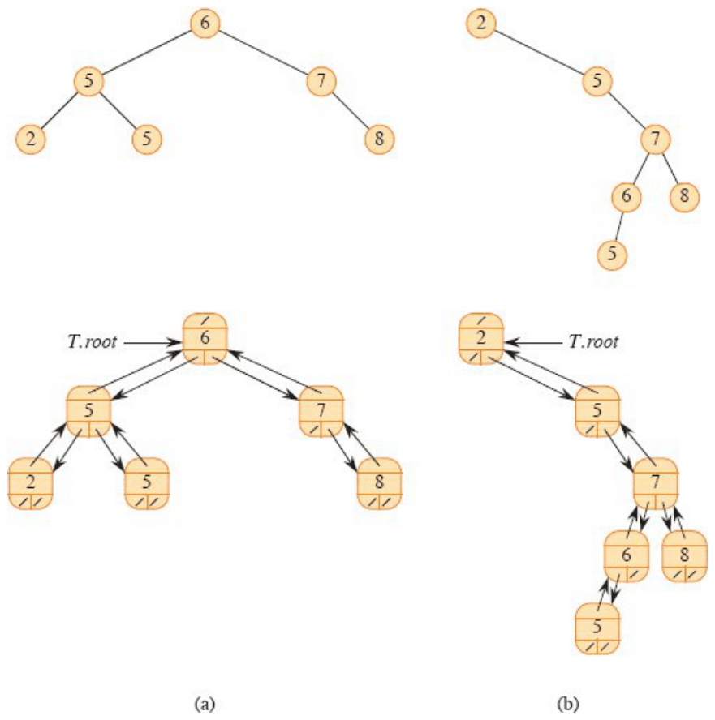
The same keys fit many different BSTs, and the two trees of the figure have heights 2 and 4. The property concerns whole subtrees and not only the two children. A tree can have every parent-child pair in order and still fail it (Practice Q3 gives a linear-time test).同样的键可以放入许多不同的 BST 中，图中的两棵树高度分别为 2 和 4。该性质针对的是整棵子树，而不只是两个孩子。一棵树即使每对父子结点的大小关系都正确，也可能不满足该性质（练习题 Q3 给出了线性时间的检验方法）。
Step 2: tree walks第 2 步：树的遍历
In words: an inorder walk = left subtree, then the node itself, then right subtree.用文字表述：中序遍历 = 先遍历左子树，再访问结点本身，最后遍历右子树。
A tree walk（遍历）visits every node once. The inorder walk（中序遍历）prints a node between its two subtrees. The preorder walk（先序遍历）prints it before both subtrees. The postorder walk（后序遍历）prints it after both subtrees. Moving the print line gives the other two walks.树的遍历（遍历）会访问每个结点恰好一次。中序遍历在两棵子树之间输出结点。先序遍历在两棵子树之前输出结点。后序遍历在两棵子树之后输出结点。移动 print 行的位置，就能得到另外两种遍历。
INORDER-TREE-WALK(x)
1 if x ≠ NIL
2 INORDER-TREE-WALK(x.left)
3 print x.key
4 INORDER-TREE-WALK(x.right)
- Line 1 stops the recursion at an empty subtree.第 1 行在遇到空子树时结束递归。
- Lines 2 and 4 walk the left and the right subtree.第 2 行和第 4 行分别遍历左子树和右子树。
- Line 3 prints the node between them.第 3 行在两者之间输出结点。
The output of a BST is sorted. By induction on the subtree size, the call prints the left subtree in sorted order, all keys \(\le x.\mathit{key}\), then \(x.\mathit{key}\), then the right subtree in sorted order, all keys \(\ge x.\mathit{key}\).BST 的输出是有序的。对子树的规模做归纳可知：调用先按有序的顺序输出左子树的所有键，然后是 \(\le x.\mathit{key}\)，再按有序的顺序输出右子树的所有键，它们分别都 \(x.\mathit{key}\)、\(\ge x.\mathit{key}\)。
The walk takes \(\Theta(n)\) time on \(n\) nodes. It makes one call for each of the \(n\) nodes and one call for each NIL pointer. A binary tree has \(2n\) child pointers, and \(n-1\) of them point to a node, so there are \(n+1\) NIL pointers. That makes \(n+(n+1)=2n+1\) calls, each of constant cost.遍历在 \(n\) 个结点上需要 \(\Theta(n)\) 时间。它对 \(n\) 个结点各调用一次，对每个 NIL 指针也各调用一次。二叉树有 \(2n\) 个孩子指针，其中 \(n-1\) 个指向一个结点，因此共有 \(n+1\) NIL 个指针。这样就有 \(n+(n+1)=2n+1\) 次调用，每次的代价都是常数。
Step 3: the height decides the cost第 3 步：高度决定代价
In words: every operation walks one path from the root downwards, so its cost is the height of the tree.用文字表述：每个操作都从根出发沿一条路径向下走，因此它的代价就是树的高度。
Every BST operation takes \(\Theta(h)\) in the worst case. A balanced tree gives \(\Theta(\lg n)\). A chain gives \(\Theta(n)\). So the right answer is "\(O(h)\)", followed by what \(h\) is.每个 BST 操作在最坏情况下都需要 \(\Theta(h)\) 时间。平衡树给出 \(\Theta(\lg n)\)。链给出 \(\Theta(n)\)。所以正确的回答是“\(O(h)\)”，再加上 \(h\) 是什么。
Practice练习
Q1. (Trace) Insert the keys 8, 3, 10, 1, 6, 14, 4, 7, 13, in this order, into an empty BST. (a) Draw the tree and give its height. (b) List the inorder, preorder and postorder walks. (c) Insert the preorder list, in that order, into an empty BST. What tree results, and why?Q1.（手工演算）按顺序将关键字 8, 3, 10, 1, 6, 14, 4, 7, 13 依次插入空 BST。(a) 画出该树并给出其树高。(b) 列出中序、先序与后序遍历。(c) 将先序遍历序列按其顺序依次插入空 BST。所得的树是什么？为什么？
Answer
(a) Each key follows the search path: 8 is the root, 3 and 10 are its children, 1 and 6 are the children of 3, 14 is the right child of 10, 4 and 7 are the children of 6, and 13 is the left child of 14. In bracket notation k(L,R) (a leaf is written as its key, - stands for NIL) the tree is 8(3(1,6(4,7)),10(-,14(13,-))). The nodes 4, 7 and 13 are the deepest, at depth 3, so \(h=3\).(a) 每个关键字都沿查找路径插入：8 为根，3 和 10 为其子结点，1 和 6 为 3 的子结点，14 为 10 的右子结点，4 和 7 为 6 的子结点，13 为 14 的左子结点。以括号记法 k(L,R) 表示（叶结点只写其关键字，- 表示 NIL），该树为 8(3(1,6(4,7)),10(-,14(13,-)))。结点 4、7 和 13 最深，深度为 3，因此 \(h=3\)。
(b) Inorder: 1, 3, 4, 6, 7, 8, 10, 13, 14 (sorted). Preorder: 8, 3, 1, 6, 4, 7, 10, 14, 13. Postorder: 1, 4, 7, 6, 3, 13, 14, 10, 8.(b) 中序：1, 3, 4, 6, 7, 8, 10, 13, 14（有序）。先序：8, 3, 1, 6, 4, 7, 10, 14, 13。后序：1, 4, 7, 6, 3, 13, 14, 10, 8。
(c) The same tree. In a preorder list every node comes after all its ancestors, so inserting in that order retraces the original search paths. Hence a BST with distinct keys is determined by its preorder list: the first key is the root, the following smaller keys form the left subtree and the larger keys the right subtree.(c) 得到的是同一棵树。在先序序列中，每个结点都排在其所有祖先之后，因此按此顺序插入会重走原先的查找路径。由此可见，关键字互异的 BST 由其先序序列唯一确定：第一个关键字为根，随后较小的关键字构成左子树，较大的关键字构成右子树。
思路：先序序列里祖先总在后代之前，所以按先序插入能还原同一棵树。
Q2. (Compare) State the BST property and the min-heap property and explain the difference. Can the min-heap property be used to print the \(n\) keys of a heap in sorted order in \(O(n)\) time?Q2.（比较）陈述 BST 性质与最小堆性质，并解释二者的区别。能否利用最小堆性质在 \(O(n)\) 时间内按有序顺序输出堆中的 \(n\) 个关键字？
Answer
BST property: every key in the left subtree of \(x\) is \(\le x.\mathit{key}\) and every key in the right subtree is \(\ge x.\mathit{key}\), so a node orders its two subtrees against each other (left to right). Min-heap property: a node's key is \(\le\) the keys of its children, so keys are ordered only along root-to-leaf paths (top to bottom) and the two children of a node are unrelated.BST 性质：\(x\) 的左子树中每个关键字都 \(\le x.\mathit{key}\)，右子树中每个关键字都 \(\ge x.\mathit{key}\)，因此一个结点把其左右两棵子树彼此排序（自左至右）。最小堆性质：结点的关键字 \(\le\) 其子结点的关键字，因此关键字只在从根到叶的路径上（自上而下）有序，结点的两个子结点之间没有关系。
No. If the keys of a heap could be printed in sorted order in \(O(n)\) time, then \(n\) keys could be sorted by building a heap in \(O(n)\) and printing it in \(O(n)\), a comparison sort in \(O(n)\) time. This contradicts the \(\Omega(n\lg n)\) lower bound for comparison sorting (Chapter 6). (Example: the min-heap with root 1 and children 3 and 2 has the inorder walk 3, 1, 2, which is not sorted.)不能。若堆中的关键字能在 \(O(n)\) 时间内按有序顺序输出，则可以先在 \(O(n)\) 时间内建堆，再在 \(O(n)\) 时间内输出，从而对 \(n\) 个关键字排序，给出一个耗时为 \(O(n)\) 的比较排序。这与比较排序的 \(\Omega(n\lg n)\) 下界（第 6 章）相矛盾。（例如，根为 1、子结点为 3 和 2 的最小堆，其中序遍历为 3, 1, 2，并不有序。）
思路：堆只保证上下有序、左右无序；若能线性有序输出，就推翻了比较排序的下界。
Q3. (Design, beyond the text) A binary tree has root 10 with left child 5 and right child 15, and 5 has children 2 and 12. (a) Is it a BST? (b) Describe a \(\Theta(n)\) test that decides whether a binary tree with distinct keys is a BST.Q3.（设计，超出正文范围）二叉树的根为 10，左子结点为 5，右子结点为 15，5 的子结点为 2 和 12。(a) 它是 BST 吗？(b) 描述一个 \(\Theta(n)\) 检验方法，用以判定关键字互异的二叉树是否为 BST。
Answer
(a) No. The key 12 is in the left subtree of 10 but \(12>10\). The inorder walk 2, 5, 12, 10, 15 is not sorted, although every parent-child pair is ordered correctly.(a) 不是。关键字 12 位于 10 的左子树中，但 \(12>10\)。其中序遍历 2, 5, 12, 10, 15 并不有序，尽管每一对父子结点的大小关系都正确。
(b) Pass an open interval of allowed keys down the recursion.(b) 在递归过程中向下传递一个允许关键字取值的开区间。
IS-BST(x, lo, hi)
1 if x == NIL
2 return TRUE
3 if x.key ≤ lo or x.key ≥ hi
4 return FALSE
5 return IS-BST(x.left, lo, x.key) and IS-BST(x.right, x.key, hi)
Call IS-BST(T.root, \(-\infty\), \(+\infty\)). The interval collects the bounds set by all ancestors, which is exactly the whole-subtree property. Each node is visited once with constant work, so the time is \(\Theta(n)\). An alternative is an inorder walk that checks that every key is larger than the previous one.调用 IS-BST(T.root, \(-\infty\), \(+\infty\))。该区间收集了所有祖先所设定的界，恰好就是整棵子树的性质。每个结点只访问一次，每次为常数工作量，因此时间为 \(\Theta(n)\)。另一种方法是做中序遍历，检查每个关键字是否都大于其前一个关键字。
易错：只比较父子是不够的，必须带着祖先给出的上下界一起检查。
Querying a binary search tree ★★★查询二叉搜索树
Goal. Trace search, minimum, maximum, successor and predecessor on a given tree, write their pseudocode, and state their running time with the reason.目标。 在给定的树上手工演算查找、最小值、最大值、后继和前驱，写出它们的伪代码，并说明它们的运行时间及其原因。
Each query follows one simple path, so each takes \(O(h)\) time on a tree of height \(h\). The queries are the same on every BST, because they use only the property of Section 9.1.每次查询都沿一条简单路径进行，因此在高度为 \(h\) 的树上，每次查询都需要 \(O(h)\) 时间。这些查询在每棵 BST 上都相同，因为它们只用到第 9.1 节的性质。
Step 1: search第 1 步：查找
In words: search = compare with the node, then go left if the key is smaller and right if it is larger.用文字表述：查找 = 与结点比较，若键较小则向左走，若键较大则向右走。
TREE-SEARCH(\(x,k\)) returns a node with key \(k\) in the subtree rooted at \(x\), or NIL. The BST property excludes one subtree at every step. The iterative version is the same walk written as a loop.TREE-SEARCH(\(x,k\)) 返回以 \(x\) 为根的子树中键为 \(k\) 的结点，若不存在则返回 NIL。BST 性质在每一步都排除了一棵子树。迭代版本就是把同样的路径写成循环。
TREE-SEARCH(x, k)
1 if x == NIL or k == x.key
2 return x
3 if k < x.key
4 return TREE-SEARCH(x.left, k)
5 else return TREE-SEARCH(x.right, k)
ITERATIVE-TREE-SEARCH(x, k)
1 while x ≠ NIL and k ≠ x.key
2 if k < x.key
3 x = x.left
4 else x = x.right
5 return x
- Line 1 stops when the key is found or the subtree is empty.第 1 行在找到该键或子树为空时结束。
- Lines 3–5 go left for a smaller key and right otherwise.第 3–5 行：若键较小则向左走，否则向右走。
- The nodes visited form one path from the root downwards, so the time is \(O(h)\).被访问的结点构成一条从根向下的路径，所以时间为 \(O(h)\)。

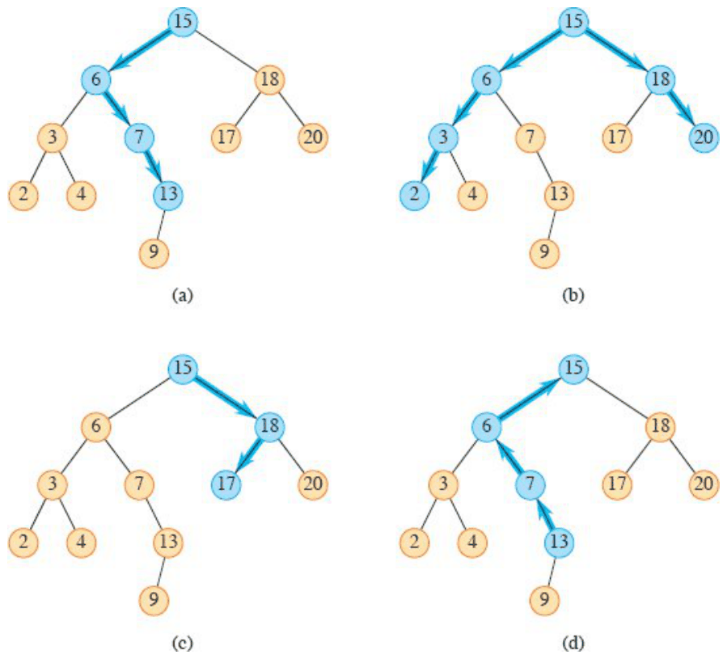
In panel (a) the search for 13 visits 15, 6, 7, 13. A search for 8 would visit 15, 6, 7, 13, 9 and return NIL.在 (a) 中，查找 13 会访问 15、6、7、13。查找 8 会访问 15、6、7、13、9，并返回 NIL。
Step 2: minimum and maximum第 2 步：最小值与最大值
In words: minimum = keep going left; maximum = keep going right.用文字表述：最小值 = 一直向左走；最大值 = 一直向右走。
TREE-MINIMUM(x)
1 while x.left ≠ NIL
2 x = x.left
3 return x
TREE-MAXIMUM(x)
1 while x.right ≠ NIL
2 x = x.right
3 return x
If \(x\) has no left child, every other key of its subtree is in the right subtree and is \(\ge x.\mathit{key}\), so \(x\) is the minimum. Otherwise the minimum is in the left subtree. Both loops follow one downward path: \(O(h)\).如果 \(x\) 没有左孩子，那么它子树中的其他所有键都在右子树中，并且都 \(\ge x.\mathit{key}\)，因此 \(x\) 就是最小值。否则最小值在左子树中。两个循环都沿着同一条向下的路径走：\(O(h)\)。
Step 3: successor and predecessor第 3 步：后继与前驱
In words: successor = the node that an inorder walk visits right after \(x\); it is found from the shape of the tree, without comparing keys.用文字表述：后继 = 中序遍历在 \(x\) 之后访问的那个结点；它是根据树的形状找到的，不需要比较键。
With distinct keys the successor is the node with the smallest key greater than \(x.\mathit{key}\). TREE-SUCCESSOR returns NIL if \(x\) is the last node of the walk.对于互不相同的键，后继是键比 \(x.\mathit{key}\) 大的最小结点。当 \(x\) 是遍历的最后一个结点时，TREE-SUCCESSOR 返回 NIL。
TREE-SUCCESSOR(x)
1 if x.right ≠ NIL
2 return TREE-MINIMUM(x.right) // leftmost node in the right subtree
3 else // lowest ancestor whose left child is an ancestor of x
4 y = x.p
5 while y ≠ NIL and x == y.right
6 x = y
7 y = y.p
8 return y
- Case 1 (lines 1–2): if the right subtree of \(x\) is not empty, the successor is its leftmost node.情况 1（第 1–2 行）：若 \(x\) 的右子树非空，则后继是其右子树中最左的结点。
- Case 2 (lines 3–8): otherwise the successor is the lowest ancestor of \(x\) whose left child is also an ancestor of \(x\). Every node counts as its own ancestor.情况 2（第 3–8 行）：否则，后继是 \(x\) 的最低祖先，且它的左孩子也是 \(x\) 的祖先。每个结点都算作它自己的祖先。
- The loop in lines 5–7 climbs while \(x\) is a right child. It stops at the first parent that was reached from its left child. If it climbs past the root, there is no successor.第 5–7 行的循环在 \(x\) 是右孩子时向上爬。它在第一个从其左孩子一侧到达的父结点处停止。如果爬过了根，则不存在后继。
Why case 2 works: with an empty right subtree, the walk has finished everything below \(x\) and returns upwards. A parent of which \(x\) is the right child was printed before \(x\), so keep climbing. The first parent reached from its left child has not been printed, and its whole left subtree, including \(x\), comes before it.情况 2 为什么成立：若右子树为空，则遍历已经完成了 \(x\) 下面的所有结点，正沿着树向上返回。如果 \(x\) 是其父结点的右孩子，那么这个父结点在 \(x\) 之前已经被输出，因此要继续向上。第一个从其左孩子一侧到达的父结点还没有被输出，而它的整个左子树（包括 \(x\)）都排在它之前。
Each call either descends (case 1) or ascends (case 2), never both, so it takes \(O(h)\). TREE-PREDECESSOR is the mirror image: swap left and right (Practice Q2). TREE-MINIMUM followed by \(n-1\) calls of TREE-SUCCESSOR visits all keys in sorted order in \(\Theta(n)\) time, because every edge is walked at most once downwards and once upwards.每次调用要么向下（情况 1），要么向上（情况 2），两者不会同时发生，因此它需要 \(O(h)\) 时间。TREE-PREDECESSOR 是镜像版本：交换左右即可（见练习题 Q2）。先调用 TREE-MINIMUM，再调用 \(n-1\) 次 TREE-SUCCESSOR，即可按有序顺序访问所有键，时间为 \(\Theta(n)\)，因为每条边向下和向上各至多经过一次。
The tree of the figure is 15(6(3(2,4),7(-,13(9,-))),18(17,20)), with the inorder sequence 2, 3, 4, 6, 7, 9, 13, 15, 17, 18, 20.图中的树为 15(6(3(2,4),7(-,13(9,-))),18(17,20))，其中序序列为 2、3、4、6、7、9、13、15、17、18、20。
Practice练习
Q1. (Trace) A BST contains the integers 1 to 1000 and you search for 363. Which of these sequences cannot be the sequence of nodes examined? (a) 2, 252, 401, 398, 330, 344, 397, 363. (b) 925, 202, 911, 240, 912, 245, 363. (c) 935, 278, 347, 621, 299, 392, 358, 363.Q1.（手工演算）某 BST 中包含整数 1 到 1000，现在查找 363。以下哪些序列不可能是查找过程中被检查的结点序列？(a) 2, 252, 401, 398, 330, 344, 397, 363。(b) 925, 202, 911, 240, 912, 245, 363。(c) 935, 278, 347, 621, 299, 392, 358, 363。
Answer
Track the open interval in which all later keys must lie. If an examined key \(v>363\), the search went left, so later keys are \(<v\); if \(v<363\), it went right, so later keys are \(>v\).跟踪后续所有关键字必须落入的开区间。若被检查的关键字 \(v>363\)，则查找向左走，因此后续关键字都 \(<v\)；若 \(v<363\)，则查找向右走，因此后续关键字都 \(>v\)。
(a) \((2,\infty)\to(252,\infty)\to(252,401)\to(252,398)\to(330,398)\to(344,398)\to(344,397)\), and 363 fits: possible.(a) \((2,\infty)\to(252,\infty)\to(252,401)\to(252,398)\to(330,398)\to(344,398)\to(344,397)\)，且 363 符合区间要求：可能。
(b) \((-\infty,925)\to(202,925)\to(202,911)\to(240,911)\), but the next key 912 is outside: impossible.(b) \((-\infty,925)\to(202,925)\to(202,911)\to(240,911)\)，但下一个关键字 912 在区间之外：不可能。
(c) \((-\infty,935)\to(278,935)\to(347,935)\to(347,621)\), but the next key 299 is outside: impossible.(c) \((-\infty,935)\to(278,935)\to(347,935)\to(347,621)\)，但下一个关键字 299 在区间之外：不可能。
So (b) and (c) cannot occur.因此 (b) 和 (c) 不可能出现。
思路：每看到一个键就收窄 363 可能所在的区间，后面的键必须落在区间内。
Q2. (Pseudocode and trace) Write TREE-PREDECESSOR. Apply it in the example tree (inorder 2, 3, 4, 6, 7, 9, 13, 15, 17, 18, 20) to the nodes 15, 17 and 2.Q2.（伪代码与手工演算）写出 TREE-PREDECESSOR。将其应用于示例树（中序为 2, 3, 4, 6, 7, 9, 13, 15, 17, 18, 20），求结点 15、17 和 2 的前驱。
Answer
TREE-PREDECESSOR(x)
1 if x.left ≠ NIL
2 return TREE-MAXIMUM(x.left)
3 else y = x.p
4 while y ≠ NIL and x == y.left
5 x = y
6 y = y.p
7 return y
Node 15 has a left subtree: its maximum is reached by 6, 7, 13, so the predecessor is 13. Node 17 has no left subtree and is the left child of 18, so the loop climbs to 18; 18 is the right child of 15, so the loop stops: the predecessor is 15. Node 2 has no left subtree; it is a left child of 3, which is a left child of 6, which is a left child of the root 15, so the loop reaches NIL: the predecessor does not exist (2 is the minimum).结点 15 有左子树：其最大值依次经过 6、7、13 到达，因此前驱为 13。结点 17 没有左子树，且它是 18 的左子结点，因此循环上升到 18；18 是 15 的右子结点，循环停止：前驱为 15。结点 2 没有左子树；它是 3 的左子结点，3 是 6 的左子结点，6 是根 15 的左子结点，因此循环到达 NIL：前驱不存在（2 为最小值）。
思路：前驱与后继左右对称；没有左子树时向上爬，直到某个结点是父亲的右孩子。
Q3. (Design, beyond the text) Given a BST with distinct keys and numbers \(a\le b\), print all keys in \([a,b]\) in sorted order in \(O(h+m)\) time, where \(m\) is the number of keys printed. Run it on the example tree with \([5,16]\).Q3.（设计，超出正文范围）给定一棵关键字互异的 BST 以及数 \(a\le b\)，要求在 \(O(h+m)\) 时间内按有序顺序输出位于 \([a,b]\) 之内的全部关键字，其中 \(m\) 为输出的关键字个数。将其用于示例树，并取 \([5,16]\)。
Answer
Prune an inorder walk: enter a subtree only if it can contain keys of \([a,b]\).对中序遍历进行剪枝：只有当子树可能包含 \([a,b]\) 之内的关键字时，才进入该子树。
RANGE-WALK(x, a, b)
1 if x ≠ NIL
2 if a < x.key
3 RANGE-WALK(x.left, a, b)
4 if a ≤ x.key and x.key ≤ b
5 print x.key
6 if x.key < b
7 RANGE-WALK(x.right, a, b)
The output is sorted because the walk is inorder, and no key of \([a,b]\) is skipped: the left subtree is skipped only if \(x.\mathit{key}\le a\), so all its keys are smaller than \(a\), and symmetrically for the right subtree. Time: \(m\) visited nodes are printed. A visited node that is not printed has \(x.\mathit{key}<a\) (only its right child is entered) or \(x.\mathit{key}>b\) (only its left child is entered), so it lies on the search path for \(a\) or for \(b\); there are at most \(2(h+1)\) such nodes. Each visited node makes two calls, so the time is \(O(h+m)\). (Alternatively, find the smallest key \(\ge a\) in \(O(h)\) and call TREE-SUCCESSOR until a key exceeds \(b\).)输出是有序的，因为遍历是中序的，且 \([a,b]\) 之内的关键字都没有被跳过：只有当 \(x.\mathit{key}\le a\) 时才跳过左子树，此时其全部关键字都小于 \(a\)；右子树同理。时间方面：\(m\) 个被访问的结点被输出。未被输出的被访问结点具有 \(x.\mathit{key}<a\)（只进入其右子结点），或具有 \(x.\mathit{key}>b\)（只进入其左子结点），因此它位于 \(a\) 或 \(b\) 的查找路径上；这样的结点至多有 \(2(h+1)\) 个。每个被访问的结点做两次调用，因此时间为 \(O(h+m)\)。（另一种做法是：在 \(O(h)\) 中找到最小的关键字 \(\ge a\)，然后调用 TREE-SUCCESSOR，直到关键字超过 \(b\)。）
On the example tree the call visits 15, 6, 3, 4, 7, 13, 9, 18, 17 and prints 6, 7, 9, 13, 15. The four unprinted nodes 3, 4, 18, 17 lie on the search paths for 5 and for 16.在示例树上，该调用访问 15、6、3、4、7、13、9、18、17，并输出 6、7、9、13、15。未输出的四个结点 3、4、18、17 位于查找 5 和查找 16 的路径上。
思路：在中序遍历上剪枝，只进入可能含有 [a,b] 内键的子树；多访问的结点都在两条边界路径上。
Insertion and deletion ★★★插入与删除
Goal. Insert keys into a BST and delete nodes from it by hand, name the deletion case (a)–(d), and write TREE-INSERT, TRANSPLANT and TREE-DELETE.目标。 手工向 BST 中插入键，并删除结点，说明删除属于 (a)–(d) 中的哪种情况，写出 TREE-INSERT、TRANSPLANT 和 TREE-DELETE。
Both operations change the set, and the tree must stay a BST. Insertion is easy because the new node becomes a leaf. Deletion is harder because the removed node may have two children.两种操作都会改变集合，而树必须始终保持为 BST。插入很简单，因为新结点会成为叶结点。删除较难，因为被删除的结点可能有两个孩子。
Step 1: insertion第 1 步：插入
In words: insert = search for the key; the empty place where the search ends is where the new leaf goes.用文字表述：插入 = 查找该键；查找结束时遇到的空位置，就是新叶结点的位置。
TREE-INSERT(\(T,z\)) inserts a node \(z\) whose key is set and whose left and right are NIL.TREE-INSERT(\(T,z\)) 插入结点 \(z\)，其 key 已设定，而其 left 和 right 均为 NIL。
TREE-INSERT(T, z)
1 x = T.root // node being compared with z
2 y = NIL // y will be the parent of z
3 while x ≠ NIL // descend until reaching a NIL
4 y = x
5 if z.key < x.key
6 x = x.left
7 else x = x.right
8 z.p = y // found the location: insert z with parent y
9 if y == NIL
10 T.root = z // tree T was empty
11 elseif z.key < y.key
12 y.left = z
13 else y.right = z
- Lines 1–2:
xis the node compared with \(z\), andyis a trailing pointer（尾随指针, always one step behindx）that holds its parent.第 1–2 行：x是与 \(z\) 比较的结点，y是尾随指针（始终比x落后一步，保存的是它的父结点）。 - Lines 3–7:
xdescends as in a search. An equal key goes right.第 3–7 行：x像查找一样向下走。相等的键走向右边。 - Lines 8–13: when
xisNIL, the loop has gone one step too far. The trailing pointeryis the node whose pointer must change. The new node \(z\) is linked belowy, or becomes the root of an empty tree.第 8–13 行：当x为NIL时，循环已经多走了一步。尾随指针y是必须修改指针的结点。新结点 \(z\) 被挂在y之下，或者在空树的情况下成为根。
The new node is always a leaf and no existing node moves. The loop follows one path, so INSERT takes \(O(h)\).新结点总是叶结点，已有的结点都不会移动。循环只沿一条路径走，因此 INSERT 的时间为 \(O(h)\)。

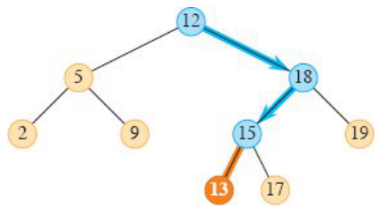
Step 2: deletion with the helper TRANSPLANT第 2 步：借助辅助过程 TRANSPLANT 进行删除
In words: delete \(z\) = let one of its subtrees take its place; if it has two children, let its successor take its place.用文字表述：删除 \(z\) = 让它的某一棵子树顶替它的位置；若它有两个孩子，则让它的后继顶替它的位置。
Deleting a node \(z\) has three cases by the number of children:按孩子的个数，删除结点 \(z\) 分为三种情况：
- \(z\) has no children: replace it by
NILin its parent.\(z\) 没有子结点：在其父结点中用NIL替换它。 - \(z\) has one child: that child takes the place of \(z\).\(z\) 只有一个子结点：该子结点取代 \(z\) 的位置。
- \(z\) has two children: its successor \(y\) takes the place of \(z\). The node \(y\) is the minimum of the right subtree of \(z\), so \(y\) has no left child.\(z\) 有两个孩子：它的后继 \(y\) 顶替 \(z\) 的位置。结点 \(y\) 是 \(z\) 右子树中的最小值，因此 \(y\) 没有左孩子。
TRANSPLANT(\(T,u,v\)) replaces the subtree rooted at \(u\) by the subtree rooted at \(v\). The parent of \(u\) becomes the parent of \(v\) and gets \(v\) as its child on the side where \(u\) was. The node \(v\) may be NIL. TRANSPLANT does not set v.left or v.right; the caller does that.TRANSPLANT(\(T,u,v\)) 用以 \(v\) 为根的子树替换以 \(u\) 为根的子树。\(u\) 的父结点成为 \(v\) 的父结点，并把 \(v\) 挂在原来 \(u\) 所在的那一侧。结点 \(v\) 可能是 NIL。TRANSPLANT 不设置 v.left 或 v.right，这由调用者负责。
TRANSPLANT(T, u, v)
1 if u.p == NIL
2 T.root = v
3 elseif u == u.p.left
4 u.p.left = v
5 else u.p.right = v
6 if v ≠ NIL
7 v.p = u.p
Lines 1–2 handle the root, lines 3–5 redirect the correct child pointer of u.p, and lines 6–7 set v.p unless v is NIL.第 1–2 行处理根的情况，第 3–5 行修改 u.p 的相应孩子指针，第 6–7 行在 v 不是 NIL 时设置 v.p。
TREE-DELETE arranges the three cases as four.TREE-DELETE 把三种情况细分为四种。
TREE-DELETE(T, z)
1 if z.left == NIL
2 TRANSPLANT(T, z, z.right) // replace z by its right child
3 elseif z.right == NIL
4 TRANSPLANT(T, z, z.left) // replace z by its left child
5 else y = TREE-MINIMUM(z.right) // y is z's successor
6 if y ≠ z.right // is y farther down the tree?
7 TRANSPLANT(T, y, y.right) // replace y by its right child
8 y.right = z.right // z's right child becomes
9 y.right.p = y // y's right child
10 TRANSPLANT(T, z, y) // replace z by its successor y
11 y.left = z.left // and give z's left child to y,
12 y.left.p = y // which had no left child
![The four cases of TREE-DELETE for a node z (blue); the node that takes its place is orange. (a) z has no left child: replace z by its right child r, which may be NIL. (b) z has a left child l but no right child: replace z by l. (c) z has two children and its successor y is its right child: replace z by y, giving y the left child l and keeping its right child x. (d) z has two children and y is not its right child: first replace y by its right child x and make the right child r of z the right child of y, then replace z by y and give y the left child l.](notes/img/CLRS/fig_12.4.png)
- (a) No left child (lines 1–2): \(z\) is replaced by its right child, which may be
NIL. This covers a leaf and a node with only a right child.(a) 没有左子结点（第 1–2 行）：\(z\) 由其右子结点替换，该右子结点可以是NIL。这一情形涵盖叶结点以及只有右子结点的结点。 - (b) Only a left child (lines 3–4): \(z\) is replaced by its left child.(b) 只有左子结点（第 3–4 行）：\(z\) 由其左子结点替换。
- (c) Two children, \(y\) is the right child of \(z\) (lines 5 and 10–12; the test in line 6 fails): \(z\) is replaced by \(y\), which receives the left subtree of \(z\) and keeps its own right child.(c) 有两个孩子，\(y\) 是 \(z\) 的右孩子（第 5 行，以及第 10–12 行；第 6 行的测试失败）：\(z\) 被 \(y\) 替换，它接收 \(z\) 的左子树，并保留自己的右孩子。
- (d) Two children, \(y\) is deeper (lines 5–12): first \(y\) is replaced by its right child (line 7). The right subtree of \(z\) is attached below \(y\) (lines 8–9). Then \(z\) is replaced by \(y\), which receives the left subtree of \(z\) (lines 10–12).(d) 有两个孩子，\(y\) 位置更深（第 5–12 行）：先用 \(y\) 的右孩子替换它（第 7 行）。\(z\) 的右子树挂到 \(y\) 之下（第 8–9 行）。然后用 \(y\) 替换 \(z\)，它接收 \(z\) 的左子树（第 10–12 行）。
Why the result is a BST: \(y\) is the smallest key of the right subtree of \(z\) and is not smaller than any key of the left subtree. At the place of \(z\) it still separates the two sides. Line 11 loses nothing, because \(y\) has no left child. Every line takes constant time except TREE-MINIMUM in line 5, so DELETE takes \(O(h)\).结果仍是 BST 的原因：\(y\) 是 \(z\) 右子树中的最小键，并且它不小于左子树中的任何键。在 \(z\) 原来的位置上，它仍然把两边分隔开。第 11 行不会丢失任何东西，因为 \(y\) 没有左孩子。除第 5 行的 TREE-MINIMUM 外，每一行都只需常数时间，因此 DELETE 的时间为 \(O(h)\)。
How to do it by hand: 1. Count the children of \(z\). 2. With two children, find \(y\) by going once right and then left as far as possible. 3. If \(y\) is the right child of \(z\), put \(y\) in the place of \(z\) and hang the left subtree of \(z\) on it. 4. Otherwise first lift \(y\) out, hang the right subtree of \(z\) on \(y\), then do step 3.手工操作的方法：1. 数出 \(z\) 的孩子个数。2. 若有两个孩子，先向右走一步，再尽可能地向左走，找到 \(y\)。3. 若 \(y\) 是 \(z\) 的右孩子，则把 \(y\) 放在 \(z\) 的位置上，并把 \(z\) 的左子树挂在它下面。4. 否则，先把 \(y\) 摘出来，把 \(z\) 的右子树挂到 \(y\) 下面，然后执行第 3 步。
Each deletion below starts from the same original tree.下面每次删除都从同一棵原始的树开始。
Practice练习
Q1. (Trace) Insert 20, 10, 30, 5, 15, 25, 40, 12, 18, 22, 27, 35, in this order, into an empty BST. Then delete 25, then 10, then 20 with TREE-DELETE. For each deletion name the case (a)–(d) of the figure and give the resulting tree in bracket notation.Q1.（手工演算）按顺序将 20, 10, 30, 5, 15, 25, 40, 12, 18, 22, 27, 35 依次插入空 BST。然后用 TREE-DELETE 依次删除 25、10、20。对每次删除，指出图中的情形 (a)–(d)，并以括号记法给出删除后的树。
Answer
Initial tree (height 3): 20(10(5,15(12,18)),30(25(22,27),40(35,-))).初始树（树高为 3）：20(10(5,15(12,18)),30(25(22,27),40(35,-)))。
- Delete 25 (children 22 and 27): its successor \(y=27\) is the right child of \(z\), so case (c). Node 27 replaces 25 and takes 22 as left child:
20(10(5,15(12,18)),30(27(22,-),40(35,-))).删除 25（子结点为 22 和 27）：其后继 \(y=27\) 是 \(z\) 的右子结点，因此属于情形 (c)。结点 27 替换 25，并以 22 作为左子结点：20(10(5,15(12,18)),30(27(22,-),40(35,-)))。 - Delete 10 (children 5 and 15): the successor is the minimum of the subtree of 15, which is \(y=12\) (a leaf), not the right child: case (d). Node 12 is replaced by
NIL, gets 15 as right child, replaces 10 and takes 5 as left child:20(12(5,15(-,18)),30(27(22,-),40(35,-))).删除 10（子结点为 5 和 15）：后继是 15 子树中的最小值，即 \(y=12\)（一个叶结点），且它不是右子结点，因此属于情形 (d)。结点 12 由NIL替换，获得 15 作为右子结点，替换 10，并以 5 作为左子结点：20(12(5,15(-,18)),30(27(22,-),40(35,-)))。 - Delete the root 20 (children 12 and 30): the successor is the minimum of the subtree of 30, reached by 30, 27, 22, so \(y=22\), case (d). Node 22 is replaced by
NIL, gets 30 as right child, becomes the root and takes 12 as left child:22(12(5,15(-,18)),30(27,40(35,-))). Height 3.删除根结点 20（子结点为 12 和 30）：后继是 30 子树中的最小值，经由 30、27、22 到达，因此 \(y=22\)，属于情形 (d)。结点 22 由NIL替换，获得 30 作为右子结点，成为新的根，并以 12 作为左子结点：22(12(5,15(-,18)),30(27,40(35,-)))。树高为 3。
思路：两个孩子时先找后继 y；y 是右孩子走情形 (c)，否则先摘下 y 再顶替，走情形 (d)。
Q2. (Explain) (a) In which lines of TREE-DELETE can the argument \(v\) of TRANSPLANT be NIL? (b) True or false: deleting \(x\) and then \(y\) always leaves the same tree as deleting \(y\) and then \(x\).Q2.（解释）(a) 在 TREE-DELETE 的哪些行中，TRANSPLANT 的参数 \(v\) 可能为 NIL？(b) 判断对错：先删除 \(x\) 再删除 \(y\)，与先删除 \(y\) 再删除 \(x\)，总是得到相同的树。
Answer
(a) In line 2, \(v=z.\mathit{right}\) is NIL when \(z\) is a leaf. In line 4, \(v=z.\mathit{left}\) is never NIL, because line 1 failed. In line 7, \(v=y.\mathit{right}\) is NIL when \(y\) is a leaf. In line 10, \(v=y\) is never NIL. So NIL occurs when a leaf is deleted (line 2) and when the successor has no right child (line 7).(a) 在第 2 行中，\(z\) 为叶结点时 \(v=z.\mathit{right}\) 为 NIL。在第 4 行中，\(v=z.\mathit{left}\) 永远不会是 NIL，因为第 1 行的判断不成立。在第 7 行中，\(y\) 为叶结点时 \(v=y.\mathit{right}\) 为 NIL。在第 10 行中，\(v=y\) 永远不会是 NIL。因此，NIL 出现在删除叶结点时（第 2 行）以及后继没有右子结点时（第 7 行）。
(b) False. Insert 2, 1, 4, 3 to get 2(1,4(3,-)). Delete 1, then 2: removing the leaf 1 gives 2(-,4(3,-)), and 2 has no left child, so it is replaced by its right child: 4(3,-). Delete 2, then 1: the node 2 has two children and its successor is \(y=3\ne z.\mathit{right}\), giving 3(1,4); deleting 1 then gives 3(-,4). The two results differ.(b) 错误。依次插入 2, 1, 4, 3 得到 2(1,4(3,-))。先删除 1 再删除 2：删除叶结点 1 得到 2(-,4(3,-))，而 2 没有左子结点，因此它由其右子结点替换：4(3,-)。先删除 2 再删除 1：结点 2 有两个子结点，其后继为 \(y=3\ne z.\mathit{right}\)，得到 3(1,4)；此后删除 1 得到 3(-,4)。两个结果不同。
易错：删除不满足交换律，因为后继的选择取决于当时的树形。
Tree shape and random binary search trees ★★树的形状与随机二叉搜索树
Goal. Count the nodes examined when a BST is built, state the cost of tree sort, and know the expected cost for random insertion order.目标。 统计构造 BST 时检查的结点数，说明树排序的代价，并知道随机插入顺序下的期望代价。
Step 1: building cost第 1 步：构造代价
In words: the order of the insertions decides the shape, and the shape decides the cost.用文字表述：插入的顺序决定形状，形状决定代价。
Inserting a key examines as many nodes as the depth of the new node. That depth never changes later if nothing is deleted. So \(n\) insertions examine \(P\) nodes in total, where \(P\) is the total path length（总路径长度）of the final tree.插入一个键时，检查的结点数等于新结点的深度。若不删除任何结点，这个深度以后不会再改变。因此，\(n\) 次插入总共检查 \(P\) 个结点，其中 \(P\) 是最终树的总路径长度（总路径长度）。
| Insertion order插入顺序 | Resulting shape所得形状 | Height树高 | Nodes examined, \(n=10\) | Nodes examined, \(n=1000\) |
|---|---|---|---|---|
| ascending or descending升序或降序 | chain链状树 | \(n-1\) | 45 | 499,500 |
| medians first先插中位数 | all levels full except the last除最后一层外各层都满 | \(\lfloor\lg n\rfloor\) | 19 | 7,987 |
| uniformly random (expected)均匀随机（期望） | random BST随机 BST | \(O(\lg n)\) expected | 24.4 | 10,986 |
Tree sort（树排序）inserts the \(n\) keys one by one and prints the tree with an inorder walk. The walk costs \(\Theta(n)\), so the total is \(\Theta(n)+P\). The worst case is \(\Theta(n^2)\) for sorted input. The best case is \(\Theta(n\lg n)\). No method can do better, because building the tree and walking it would then sort with \(o(n\lg n)\) comparisons, which breaks the comparison-sorting lower bound (Section 6.1).树排序把 \(n\) 个键逐个插入，然后用中序遍历输出这棵树。遍历的代价为 \(\Theta(n)\)，因此总代价为 \(\Theta(n)+P\)。对于已排序的输入，最坏情况为 \(\Theta(n^2)\)。最好情况为 \(\Theta(n\lg n)\)。没有方法能做得更好，因为如果那样，建树加上遍历就能用 \(o(n\lg n)\) 次比较完成排序，这将打破比较排序的下界（见第 6.1 节）。
Step 2: random insertion order第 2 步：随机插入顺序
In words: a random order makes the tree shallow on average, with the same arithmetic as randomized quicksort.用文字表述：随机顺序使树平均来说较浅，其计算过程与随机化快速排序相同。
A randomly built BST is made by inserting the keys in a uniformly random order, so all \(n!\) orders are equally likely. Name the keys by their ranks \(1,\dots,n\) in sorted order. Ranks \(i<j\) are compared exactly when one is an ancestor of the other. That happens exactly when the first key inserted among the ranks \(i,\dots,j\) is \(i\) or \(j\). A rank in between would come first and separate them. The first key is equally likely to be any of the \(j-i+1\) ranks, so the probability is \(2/(j-i+1)\).随机构造的 BST 是按均匀随机的顺序插入这些键得到的，因此所有 \(n!\) 种顺序的可能性相同。把键按其在排好序后的秩 \(1,\dots,n\) 来命名。秩为 \(i<j\) 的两个键，只有当其中一个是另一个的祖先时才会被比较。这恰好发生在：在秩属于 \(i,\dots,j\) 的键中，最先插入的是 \(i\) 或 \(j\) 时。如果中间的某个秩先插入，它就会把两者隔开。第一个键等可能地是 \(j-i+1\) 个秩中的任意一个，所以概率为 \(2/(j-i+1)\)。
The root plays the pivot of randomized quicksort (Section 5.3): it splits the other keys into smaller and larger ones. So the expected number of comparisons is the same. A guaranteed \(O(\lg n)\) height needs balanced trees (Chapter 10), because sorted input still gives a chain.根结点扮演随机化快速排序中主元的角色（见第 5.3 节）：它把其余的键分成较小的和较大的两部分。因此期望的比较次数相同。要保证高度为 \(O(\lg n)\)，就需要平衡树（见第 10 章），因为已排序的输入仍然会得到一条链。
Step 3: counting binary trees第 3 步：计数二叉树
A BST shape fixes the position of every key, so the number of BSTs on \(n\) distinct keys equals the number \(b_n\) of binary tree shapes with \(n\) nodes. Choose the size \(k\) of the left subtree. Then \(b_0=1\) and \(b_n=\sum_{k=0}^{n-1}b_k\,b_{n-1-k}\).BST 的形状确定了每个键的位置，因此在 \(n\) 个互不相同的键上可以构造的 BST 个数，等于含 \(n\) 个结点的二叉树形状数 \(b_n\)。选择左子树的大小 \(k\)，然后 \(b_0=1\)，并且 \(b_n=\sum_{k=0}^{n-1}b_k\,b_{n-1-k}\)。
The \(n!\) insertion orders reach only \(b_n\) trees, and not equally often. A chain arises from exactly one order, and there are \(2^{n-1}\) chains. So a chain has probability \(2^{n-1}/n!\), which is \(8/24=1/3\) for \(n=4\).\(n!\) 种插入顺序只能得到 \(b_n\) 棵树，而且出现的次数并不相等。链恰好只由一种顺序产生，而链的个数为 \(2^{n-1}\)。因此，一条链出现的概率为 \(2^{n-1}/n!\)，当 \(n=4\) 时它为 \(8/24=1/3\)。
Practice练习
Q1. (Calculation) The keys 1, …, 7 are inserted into an empty BST. How many nodes are examined in total (a) in the order 1, 2, …, 7, (b) in the order 4, 2, 6, 1, 3, 5, 7? (c) Give the formula for (a) with \(n\) keys and evaluate it for \(n=1000\).Q1.（计算）将关键字 1, …, 7 插入空 BST。总共检查的结点数是多少？(a) 按顺序 1, 2, …, 7；(b) 按顺序 4, 2, 6, 1, 3, 5, 7。(c) 给出 \(n\) 个关键字时 (a) 的公式，并对 \(n=1000\) 求值。
Answer
Insertion examines as many nodes as the depth of the new node.插入所检查的结点数等于新结点的深度。
(a) The tree is a chain with depths \(0,1,\dots,6\): \(0+1+\dots+6=21\) nodes.(a) 该树为链状树，各结点深度为 \(0,1,\dots,6\)，共检查 \(0+1+\dots+6=21\) 个结点。
(b) The tree has all three levels full with depths \(0,1,1,2,2,2,2\): \(10\) nodes, a height of 2.(b) 该树三层全满，各结点深度为 \(0,1,1,2,2,2,2\)，共检查 \(10\) 个结点，树高为 2。
(c) \(n(n-1)/2\); for \(n=1000\) this is 499,500 (average depth 499.5), against 7,987 for a balanced insertion order.(c) \(n(n-1)/2\)；对 \(n=1000\) 而言该值为 499,500（平均深度为 499.5），而平衡的插入顺序仅为 7,987。
思路：每次插入检查的结点数等于新结点的深度，总数就是总路径长度。
Q2. (Explain) (a) Describe tree sort and give its worst-case and best-case running times, with inputs that achieve them. (b) Why can no comparison-based method build a BST from \(n\) arbitrary keys with \(o(n\lg n)\) comparisons?Q2.（解释）(a) 描述树排序，并给出其最坏与最好情况下的运行时间，同时给出达到这些情况的输入。(b) 为什么任何基于比较的方法都无法用 \(o(n\lg n)\) 次比较由 \(n\) 个任意关键字构造出 BST？
Answer
(a) Insert the \(n\) keys one by one into an empty BST, then print the keys with an inorder walk, which takes \(\Theta(n)\) and outputs them sorted. The insertions examine \(P\) nodes in total. Worst case: sorted or reverse-sorted input gives a chain, \(P=n(n-1)/2\), so \(\Theta(n^2)\). Best case: an order that builds a minimum-height tree, \(P=\sum\lfloor\lg i\rfloor\), so \(\Theta(n\lg n)\). For uniformly random input the expected \(P=2(n+1)H_n-4n\) is also \(\Theta(n\lg n)\).(a) 将 \(n\) 个关键字依次插入空 BST，然后用中序遍历输出关键字，遍历耗时为 \(\Theta(n)\)，并输出有序结果。这些插入共检查 \(P\) 个结点。最坏情况：有序或逆序输入得到链状树，检查结点数为 \(P=n(n-1)/2\)，因此耗时 \(\Theta(n^2)\)。最好情况：构造出最小树高的插入顺序，检查结点数为 \(P=\sum\lfloor\lg i\rfloor\)，因此耗时 \(\Theta(n\lg n)\)。对于均匀随机的输入，期望的 \(P=2(n+1)H_n-4n\) 同样为 \(\Theta(n\lg n)\)。
(b) If a BST could be built with \(o(n\lg n)\) comparisons, the inorder walk (no comparisons, \(\Theta(n)\) time) would then sort \(n\) keys with \(o(n\lg n)\) comparisons. This contradicts the \(\Omega(n\lg n)\) lower bound for comparison sorts (Chapter 6). Hence even the best case of tree sort is \(\Theta(n\lg n)\).(b) 若能用 \(o(n\lg n)\) 次比较构造出 BST，则中序遍历（不做比较，耗时 \(\Theta(n)\)）便会用 \(o(n\lg n)\) 次比较对 \(n\) 个关键字排序。这与比较排序的 \(\Omega(n\lg n)\) 下界（第 6 章）相矛盾。因此，即使是树排序的最好情况，代价也是 \(\Theta(n\lg n)\)。
思路：树排序的下界来自比较排序下界，中序遍历本身不用比较。
Equal keys and radix trees ★相等关键字与基数树
Plain TREE-INSERT sends an equal key to the right, so \(n\) identical keys build a right chain. Insertion \(i\) examines \(i-1\) nodes. The table gives four policies.普通的 TREE-INSERT 把相等的键送到右边，因此 \(n\) 个相同的键会构成一条右链。第 \(i\) 次插入检查 \(i-1\) 个结点。下表给出了四种策略。
| Policy for equal keys相等关键字的处理策略 | Time for \(n\) identical keys | Reason理由 |
|---|---|---|
| (a) plain TREE-INSERT: always right(a) 普通 TREE-INSERT：总是向右 | \(\Theta(n^2)\) | chain; insertion \(i\) examines \(i-1\) nodes |
(b) a flag x.b at each node alternates between left and right at every visit(b) 每个结点的标志位 x.b 在每次访问时在左右之间交替 |
\(\Theta(n\lg n)\) | the tree stays balanced; insertion \(i\) ends at depth \(\lfloor\lg i\rfloor\)树保持平衡；第 \(i\) 次插入止于深度 \(\lfloor\lg i\rfloor\) |
| (c) keep a list of the equal keys at the node(c) 在结点处保存相等关键字的列表 | \(\Theta(n)\) | one tree node; each later key is appended in \(O(1)\)只有一个树结点；此后每个关键字都以 \(O(1)\) 时间追加到列表中 |
| (d) choose left or right at random(d) 随机选择左或右 | worst case \(\Theta(n^2)\), expected \(\Theta(n\lg n)\) | each insertion follows a random path, whose expected length is \(\Theta(\lg n)\) (informal, as for a random BST)每次插入都沿一条随机路径，其期望长度为 \(\Theta(\lg n)\)（非正式论证，与随机 BST 的情形相同） |
Strings are compared lexicographically（字典序）: \(a<b\) if at the first position where they differ \(a\) has the smaller character, or if \(a\) is a proper prefix of \(b\). A radix tree（基数树, also called a trie（字典树））stores bit strings along paths from the root: bit 0 goes to the left child and bit 1 to the right child. A node is marked if its path spells a stored string. Inserting a string of length \(\ell\) takes \(\Theta(\ell)\) time.字符串按字典序比较：当两个字符串第一个不同的位置上 \(a\) 的字符较小，或者 \(a\) 是 \(b\) 的真前缀时，有 \(a<b\)。基数树（又称字典树）把位串沿着从根出发的路径存放：位 0 走向左孩子，位 1 走向右孩子。若某结点所在路径拼出的是一个已存储的字符串，则该结点被标记。插入长度为 \(\ell\) 的字符串需要 \(\Theta(\ell)\) 时间。

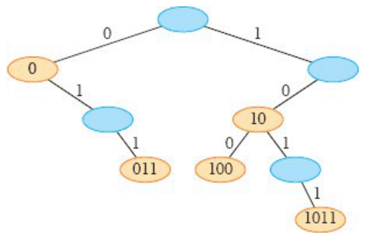
To sort distinct bit strings of total length \(n\), insert them and walk the tree in preorder, 0-child first. Print the marked nodes. The tree has at most \(n+1\) nodes, so the time is \(\Theta(n)\). This does not break the \(\Omega(N\lg N)\) bound for \(N\) strings, because it is not a comparison sort, and distinct strings have total length \(n=\Omega(N\lg N)\).要对总长度为 \(n\) 的互不相同的位串排序，先把它们全部插入，然后按先序遍历树，并且先访问 0 孩子。输出被标记的结点。树中至多有 \(n+1\) 个结点，所以时间为 \(\Theta(n)\)。这并没有打破对 \(N\) 个字符串的 \(\Omega(N\lg N)\) 下界，因为它不是比较排序，而且这些互不相同的字符串的总长度为 \(n=\Omega(N\lg N)\)。
Practice练习
Q1. (Trace) Sort the bit strings 110, 1, 0, 01, 111, 00 with a radix tree. List the nodes, mark the stored strings and give the output.Q1.（手工演算）用基数树对位串 110、1、0、01、111、00 排序。列出结点，标出已存储的字符串，并给出输出。
Answer
The tree has 8 nodes, named by their paths: the root ε, 0, 00, 01, 1, 11, 110, 111. The marked nodes are 0, 00, 01, 1, 110 and 111; the root and 11 are unmarked path nodes. The preorder walk visits ε, 0, 00, 01, 1, 11, 110, 111, and printing the marked ones gives 0, 00, 01, 1, 110, 111. The total length is \(n=12\) and the tree has \(8\le n+1=13\) nodes.该树有 8 个结点，以其路径命名：根 ε、0、00、01、1、11、110、111。已标记的结点为 0、00、01、1、110 和 111；根与 11 是未标记的路径结点。先序遍历依次访问 ε、0、00、01、1、11、110、111，输出已标记的结点即得 0、00、01、1、110、111。总长度为 \(n=12\)，树中共有 \(8\le n+1=13\) 个结点。
思路：先序遍历先访问父亲再访问 0 子树、1 子树，正好是字典序。
Terms to recognise ★需要认识的术语
| Term术语 | What to know要知道什么 |
|---|---|
| Satellite data（卫星数据） | Extra information stored in a node next to its key.与键一起存放在结点中的额外信息。 |
| Preorder and postorder walk先序遍历与后序遍历 | Print the node before (preorder) or after (postorder) both subtrees.在两棵子树之前（先序）或之后（后序）输出结点。 |
| Trailing pointer尾随指针 | The pointer y in TREE-INSERT that stays one step behind x and holds its parent.TREE-INSERT 中的指针 y，它始终落后 x 一步，保存的是父结点。 |
| TRANSPLANT | Replaces one subtree by another and fixes the parent pointers; the caller sets the child pointers.用一棵子树替换另一棵子树，并修正父指针；子指针由调用者设置。 |
| Total path length总路径长度 | Sum of all node depths; the number of nodes examined by \(n\) insertions.所有结点深度之和；即 \(n\) 次插入检查的结点数。 |
| Harmonic number \(H_n\) | \(1+\frac12+\dots+\frac1n\), between \(\ln n\) and \(1+\ln n\). |
| Catalan number卡特兰数 | \(\frac1{n+1}\binom{2n}{n}\), the number of binary trees with \(n\) nodes.\(\frac1{n+1}\binom{2n}{n}\)，即含 \(n\) 个结点的二叉树的个数。 |
| Randomly built BST随机构造的 BST | Keys inserted in uniformly random order: average depth below \(2\ln n\), expected height \(O(\lg n)\).键按均匀随机的顺序插入：平均深度小于 \(2\ln n\)，期望高度为 \(O(\lg n)\)。 |
| Lexicographic order字典序 | Compare at the first differing position; a proper prefix comes first.在第一个不同的位置比较；真前缀排在前面。 |
| Radix tree (trie)基数树（字典树） | Bit strings stored along root paths, bit 0 left and bit 1 right; the preorder walk sorts them.位串沿根路径存放，位 0 向左，位 1 向右；先序遍历即可将它们排序。 |
Exam-style questions考试题型练习
Q1. (Trace and calculation, 14 marks) The keys 41, 20, 65, 11, 29, 50, 91, 32, 72, 99 are inserted, in this order, into an empty BST. (a) Draw the tree and give its height (3 marks). (b) Give the inorder, preorder and postorder walks (3 marks). (c) How many nodes do the ten insertions examine in total, and what does this number equal in the final tree? (2 marks) (d) Delete 20 and then 41 with TREE-DELETE. For each deletion state the case (a)–(d) and give the resulting tree (6 marks).Q1.（手工演算与计算，14 分）按此顺序将关键字 41, 20, 65, 11, 29, 50, 91, 32, 72, 99 依次插入空 BST。(a) 画出该树并给出其树高（3 分）。(b) 给出中序、先序与后序遍历（3 分）。(c) 十次插入共检查多少个结点？该数在最终树中等于什么？（2 分）(d) 用 TREE-DELETE 依次删除 20 和 41。对每次删除，指出情形 (a)–(d)，并给出删除后的树（6 分）。
Answer
(a) 41 is the root; 20 and 65 are its children; 11 and 29 are the children of 20 and 32 is the right child of 29; 50 and 91 are the children of 65; 72 and 99 are the children of 91. In bracket notation 41(20(11,29(-,32)),65(50,91(72,99))). The longest path is 41, 20, 29, 32, so the height is 3.(a) 41 为根；20 和 65 为其子结点；11 和 29 为 20 的子结点，32 为 29 的右子结点；50 和 91 为 65 的子结点；72 和 99 为 91 的子结点。以括号记法表示为 41(20(11,29(-,32)),65(50,91(72,99)))。最长路径为 41、20、29、32，因此树高为 3。
(b) Inorder: 11, 20, 29, 32, 41, 50, 65, 72, 91, 99 (sorted). Preorder: 41, 20, 11, 29, 32, 65, 50, 91, 72, 99. Postorder: 11, 32, 29, 20, 50, 72, 99, 91, 65, 41.(b) 中序：11, 20, 29, 32, 41, 50, 65, 72, 91, 99（有序）。先序：41, 20, 11, 29, 32, 65, 50, 91, 72, 99。后序：11, 32, 29, 20, 50, 72, 99, 91, 65, 41。
(c) Each insertion examines as many nodes as the depth of the new node: \(0,1,1,2,2,2,2,3,3,3\), in total 19. This is the total path length (the sum of all node depths) of the final tree.(c) 每次插入所检查的结点数等于新结点的深度：\(0,1,1,2,2,2,2,3,3,3\)，共计 19。这正是最终树的总路径长度（所有结点深度之和）。
(d) Delete 20: it has two children (11 and 29); its successor is \(y=29\), which is the right child of \(z\), so case (c). Node 29 replaces 20, takes 11 as left child and keeps 32: 41(29(11,32),65(50,91(72,99))). Delete 41, the root: it has two children, and its successor is the minimum of the subtree of 65, which is \(y=50\), a leaf below 65, so \(y\ne z.\mathit{right}\): case (d). Node 50 is replaced by NIL, gets 65 as right child, becomes the root and takes 29 as left child: 50(29(11,32),65(-,91(72,99))), height 3.(d) 删除 20：它有两个子结点（11 和 29）；其后继为 \(y=29\)，是 \(z\) 的右子结点，因此属于情形 (c)。结点 29 替换 20，以 11 作为左子结点，并保留 32：41(29(11,32),65(50,91(72,99)))。删除根结点 41：它有两个子结点，其后继是 65 子树中的最小值，即 \(y=50\)（65 之下的一个叶结点），因此 \(y\ne z.\mathit{right}\)，属于情形 (d)。结点 50 由 NIL 替换，获得 65 作为右子结点，成为新的根，并以 29 作为左子结点：50(29(11,32),65(-,91(72,99)))，树高为 3。
思路：先按插入路径建树，再用后继删除；y 是右孩子为情形 (c)，否则为情形 (d)。
Q2. (Proof and explanation, 12 marks) (a) Define the successor of a node in a BST (2 marks). (b) Write TREE-SUCCESSOR in pseudocode and explain its two cases (4 marks). (c) Show that the successor of a node with two children has no left child (2 marks). (d) Show that TREE-SUCCESSOR takes \(O(h)\) time, and that TREE-MINIMUM followed by \(n-1\) calls of TREE-SUCCESSOR visits all keys in sorted order in \(\Theta(n)\) time (4 marks).Q2.（证明与解释，12 分）(a) 定义 BST 中结点的后继（2 分）。(b) 用伪代码写出 TREE-SUCCESSOR 并解释其两种情形（4 分）。(c) 证明：有两个子结点的结点，其后继没有左子结点（2 分）。(d) 证明 TREE-SUCCESSOR 耗时 \(O(h)\)，并证明先调用 TREE-MINIMUM 再调用 \(n-1\) 次 TREE-SUCCESSOR，可在 \(\Theta(n)\) 时间内按有序顺序访问全部关键字（4 分）。
Answer
(a) The successor of \(x\) is the node printed right after \(x\) by an inorder walk; with distinct keys it is the node with the smallest key greater than \(x.\mathit{key}\). It is NIL if \(x\) holds the maximum.(a) 结点 \(x\) 的后继是中序遍历中紧接在 \(x\) 之后输出的结点；若关键字互异，它就是关键字大于 \(x.\mathit{key}\) 的结点中最小的那个。若 \(x\) 为最大值，则其后继为 NIL。
(b)
TREE-SUCCESSOR(x)
1 if x.right ≠ NIL
2 return TREE-MINIMUM(x.right)
3 else y = x.p
4 while y ≠ NIL and x == y.right
5 x = y
6 y = y.p
7 return y
Case 1 (nonempty right subtree): all keys there exceed \(x.\mathit{key}\) and the leftmost node is the smallest, so it is the successor. Case 2 (empty right subtree): nothing below \(x\) follows \(x\) in the walk, so the walk returns upward. While \(x\) is a right child, its parent was printed before \(x\), so the loop climbs; the first parent reached from its left child is printed next. It is the lowest ancestor of \(x\) whose left child is also an ancestor of \(x\). If the loop passes the root, there is no successor.情形 1（右子树非空）：其中所有关键字都大于 \(x.\mathit{key}\)，而最左结点最小，因此它就是后继。情形 2（右子树为空）：\(x\) 之下的结点在遍历中都不排在 \(x\) 之后，因此遍历向上返回。只要 \(x\) 是右子结点，其父结点就已在 \(x\) 之前被输出，因此循环继续上升；第一个从左子结点到达的父结点接下来被输出。它是 \(x\) 的最低祖先，且其左子结点同时也是 \(x\) 的祖先。若循环越过了根，则不存在后继。
(c) With two children, the successor is TREE-MINIMUM(x.right), which follows left pointers until the next one is NIL. The node reached has no left child. Symmetrically, the predecessor has no right child.(c) 若有两个子结点，后继为 TREE-MINIMUM(x.right)，它沿左指针前进，直到下一个指针为 NIL 为止。所到达的结点没有左子结点。对称地，前驱没有右子结点。
(d) Each call walks along one simple path, either down (case 1) or up (case 2), of at most \(h\) edges, so it takes \(O(h)\). For the walk: the nodes of any subtree are consecutive in the inorder order, so the walk enters a subtree once and leaves it once, and every edge is traversed at most once downward and once upward: at most \(2(n-1)\) edge steps in total. With TREE-MINIMUM (\(O(h)\subseteq O(n)\)) and \(n-1\) calls of constant overhead, the time is \(O(n)\). It is also \(\Omega(n)\) because \(n-1\) calls are made, so \(\Theta(n)\).(d) 每次调用都沿一条简单路径执行，要么向下（情形 1），要么向上（情形 2），边数至多为 \(h\)，因此耗时 \(O(h)\)。对于整个遍历：任一子树的结点在中序次序中是连续的，因此遍历进入每棵子树一次、离开一次，且每条边至多向下、向上各经过一次：边的步数总计至多为 \(2(n-1)\)。加上 TREE-MINIMUM（\(O(h)\subseteq O(n)\)）以及 \(n-1\) 次常数开销的调用，总时间为 \(O(n)\)。总时间同样为 \(\Omega(n)\)，因为共进行了 \(n-1\) 次调用，所以 \(\Theta(n)\)。
思路：后继分两种情形；整个遍历每条边最多走两次，所以总共线性。
Q3. (Calculation and analysis, 14 marks) Tree sort with \(n=10\) distinct keys. (a) Describe tree sort and give its worst-case time and an input that causes it (3 marks). (b) Compute the total number of nodes examined (i) for ascending input and (ii) for an insertion order that builds a tree of minimum height (3 marks). (c) For a uniformly random order, explain why two keys of ranks \(i<j\) are compared with probability \(2/(j-i+1)\), and compute the expected total number of nodes examined using \(E[P]=2(n+1)H_n-4n\) with \(H_{10}\approx2.929\) (5 marks). (d) Relate this number to randomized quicksort and state what it implies for the average depth (3 marks).Q3.（计算与分析，14 分）对 \(n=10\) 个互异关键字进行树排序。(a) 描述树排序，给出其最坏情况下的时间以及导致该情况的输入（3 分）。(b) 计算检查结点的总数：(i) 对升序输入；(ii) 对构造最小树高的插入顺序（3 分）。(c) 对于均匀随机的顺序，解释为何秩为 \(i<j\) 的两个关键字被比较的概率为 \(2/(j-i+1)\)，并利用 \(E[P]=2(n+1)H_n-4n\) 结合 \(H_{10}\approx2.929\) 计算检查结点总数的期望（5 分）。(d) 将这一数值与随机化快速排序联系起来，并说明它对平均深度意味着什么（3 分）。
Answer
(a) Tree sort inserts the keys one by one into an empty BST and prints the tree with an inorder walk (\(\Theta(n)\)). Insertion examines as many nodes as the depth of the new node. Already sorted (or reverse-sorted) input builds a chain, so the total is \(n(n-1)/2\) and the time is \(\Theta(n^2)\).(a) 树排序将关键字逐个插入空 BST，并用中序遍历输出该树（\(\Theta(n)\)）。插入所检查的结点数等于新结点的深度。已排序（或逆序）的输入会构成链状树，因此总数为 \(n(n-1)/2\)，时间为 \(\Theta(n^2)\)。
(b) (i) Ascending input: \(0+1+\dots+9=45\) nodes. (ii) A minimum-height tree on 10 nodes has depths \(0,1,1,2,2,2,2,3,3,3\): \(19\) nodes (insert the median first, then the medians of the two halves, and so on).(b) (i) 升序输入：共检查 \(0+1+\dots+9=45\) 个结点。(ii) 含 10 个结点的最小树高树，其深度为 \(0,1,1,2,2,2,2,3,3,3\)：共检查 \(19\) 个结点（先插入中位数，再插入两半的中位数，依此类推）。
(c) Keys \(i\) and \(j\) are compared exactly if one is an ancestor of the other. That happens exactly if the first key inserted among the ranks \(i,\dots,j\) is \(i\) or \(j\): a rank strictly between them inserted first would separate them into different subtrees. The first of these \(j-i+1\) keys is uniformly distributed, so the probability is \(2/(j-i+1)\). By linearity, \(E[P]=\sum_{i<j}2/(j-i+1)=2(n+1)H_n-4n=2\cdot11\cdot2.929-40\approx 24.4\) (exactly \(30791/1260\)).(c) 关键字 \(i\) 与 \(j\) 恰在其一为另一的祖先时才被比较。这恰好在秩 \(i,\dots,j\) 中最先插入的关键字为 \(i\) 或 \(j\) 时成立：若两者之间的某个秩先被插入，它会把二者分入不同的子树。这 \(j-i+1\) 个关键字中最先插入者服从均匀分布，因此概率为 \(2/(j-i+1)\)。由线性性质，\(E[P]=\sum_{i<j}2/(j-i+1)=2(n+1)H_n-4n=2\cdot11\cdot2.929-40\approx 24.4\)（恰为 \(30791/1260\)）。
(d) In randomized quicksort the pivot plays the role of the first inserted key, and the expected number of comparisons satisfies the same recurrence and has the same value, \(2(n+1)H_n-4n\approx24.4\) for \(n=10\). The average depth is \(24.4/10\approx2.4\) per node, between the best case (1.9) and the worst case (4.5). In general \(E[P]/n\le2\ln n\approx1.39\lg n\), so a random BST is on average within a constant factor of a balanced tree.(d) 在随机化快速排序中，主元扮演第一个插入关键字的角色，期望比较次数满足相同的递归式，且取值相同，即对 \(n=10\) 为 \(2(n+1)H_n-4n\approx24.4\)。平均深度为每个结点 \(24.4/10\approx2.4\)，介于最好情况（1.9）与最坏情况（4.5）之间。一般地有 \(E[P]/n\le2\ln n\approx1.39\lg n\)，因此随机 BST 平均而言与平衡树相差仅一个常数因子。
思路：比较的键对 = 祖先-后代对；用“区间里第一个插入的键”算出概率 2/(j−i+1)，再求和。
Q4. (Design and analysis, 12 marks) (a) Define the lexicographic order of bit strings and explain how a radix tree stores a set of bit strings (3 marks). (b) Sort the strings 1101, 11, 0, 101, 1100 with a radix tree: list the nodes in preorder and the output (3 marks). (c) Show that sorting a set of distinct bit strings of total length \(n\) with a radix tree takes \(\Theta(n)\) time (3 marks). (d) Give the running times for inserting \(n\) identical keys into a BST with plain TREE-INSERT and with a list of equal keys kept at the node (3 marks).Q4.（设计与分析，12 分）(a) 定义位串的字典序，并解释基数树如何存储一组位串（3 分）。(b) 用基数树对字符串 1101、11、0、101、1100 排序：按先序列出结点，并给出输出（3 分）。(c) 证明：用基数树对总长度为 \(n\) 的互异位串集合排序耗时 \(\Theta(n)\)（3 分）。(d) 给出向 BST 中插入 \(n\) 个相同关键字的运行时间：分别使用普通 TREE-INSERT，以及在结点处保存相等关键字列表的方式（3 分）。
Answer
(a) \(a<b\) if at the first position where they differ \(a\) has the smaller bit, or if \(a\) is a proper prefix of \(b\). A radix tree stores a string on the path from the root: the \(i\)th bit decides between the left child (0) and the right child (1) at depth \(i\); the node at the end of the path is marked. Keys are not stored in the nodes.(a) 若在第一个不同的位置上 \(a\) 的位较小，或 \(a\) 是 \(b\) 的真前缀，则有 \(a<b\)。基数树把字符串存放在从根出发的路径上：在深度 \(i\) 处，第 \(i\) 位决定走左子结点（0）还是右子结点（1）；路径末端的结点被标记。关键字并不存放在结点中。
(b) The tree has the nodes ε (root), 0, 1, 10, 101, 11, 110, 1100, 1101. The marked nodes are 0, 101, 11, 1100 and 1101. The preorder visits ε, 0, 1, 10, 101, 11, 110, 1100, 1101; printing the marked ones gives 0, 101, 11, 1100, 1101, which is the lexicographic order.(b) 该树的结点有 ε（根）、0、1、10、101、11、110、1100、1101。已标记的结点为 0、101、11、1100 和 1101。先序依次访问 ε、0、1、10、101、11、110、1100、1101；输出已标记的结点得到 0、101、11、1100、1101，恰为字典序。
(c) Inserting a string of length \(\ell\) costs \(\Theta(\ell)\), so building the tree costs \(\Theta(n)\). The tree has at most \(n+1\) nodes (the root and at most one per bit; here 9 nodes for \(n=14\)). The preorder walk visits each node once at constant cost: \(\Theta(n)\). The order is correct because a prefix is visited before its extensions and the 0-subtree before the 1-subtree. Total \(\Theta(n)\).(c) 插入长度为 \(\ell\) 的字符串耗时 \(\Theta(\ell)\)，因此构造该树耗时 \(\Theta(n)\)。该树至多有 \(n+1\) 个结点（根及每位至多一个；此处对 \(n=14\) 共 9 个结点）。先序遍历以常数代价访问每个结点各一次：\(\Theta(n)\)。次序是正确的，因为前缀先于其扩展被访问，0 子树先于 1 子树被访问。合计 \(\Theta(n)\)。
(d) Plain TREE-INSERT builds a right chain and examines \(0+1+\dots+(n-1)=n(n-1)/2\) nodes: \(\Theta(n^2)\). With a list at the node there is one tree node (the root); every later key finds an equal key at the root and is appended to the list in \(O(1)\): \(\Theta(n)\).(d) 普通 TREE-INSERT 构成右链，检查的结点数为 \(0+1+\dots+(n-1)=n(n-1)/2\)：\(\Theta(n^2)\)。若在结点处保存列表，则树中只有一个结点（根）；此后每个关键字都在根处找到相等的关键字，并以 \(O(1)\) 时间追加到列表中：\(\Theta(n)\)。
思路：基数树按位走，先序遍历就是字典序；总时间只与总长度 n 有关。
Q5. (Short answers, 10 marks) (a) How many different BSTs can hold the keys 1, …, 5? Use the recurrence (3 marks). (b) True or false, with a one-line reason: (i) an inorder walk of any binary tree with distinct keys prints them in sorted order; (ii) a search in an \(n\)-node BST takes \(O(\lg n)\) time; (iii) deleting a key and inserting it again always restores the original tree; (iv) inserting the keys of a BST in preorder rebuilds the same tree (4 marks). (c) Give the expected height of a randomly built BST, the largest possible height of a BST on \(n\) keys, and a variant that guarantees \(O(\lg n)\) height (3 marks).Q5.（简答，10 分）(a) 关键字 1, …, 5 可以由多少种不同的 BST 容纳？请使用递归式（3 分）。(b) 判断对错，并用一行理由说明：(i) 任何关键字互异的二叉树的中序遍历都按有序顺序输出它们；(ii) 在含 \(n\) 个结点的 BST 中，查找耗时 \(O(\lg n)\)；(iii) 删除一个关键字后再将其插入，总能恢复原来的树；(iv) 按先序次序插入 BST 的关键字，可以重建出同一棵树（4 分）。(c) 给出随机构建的 BST 的期望树高、含 \(n\) 个关键字的 BST 的最大可能树高，以及一种能保证 \(O(\lg n)\) 树高的变体（3 分）。
Answer
(a) The number of BSTs equals the number \(b_5\) of binary trees with 5 nodes, with \(b_n=\sum_{k=0}^{n-1}b_kb_{n-1-k}\) and \(b_0,\dots,b_4=1,1,2,5,14\). Then \(b_5=b_0b_4+b_1b_3+b_2b_2+b_3b_1+b_4b_0=14+5+4+5+14=42\).(a) BST 的个数等于含 5 个结点的二叉树个数 \(b_5\)，其中 \(b_n=\sum_{k=0}^{n-1}b_kb_{n-1-k}\) 与 \(b_0,\dots,b_4=1,1,2,5,14\)。于是 \(b_5=b_0b_4+b_1b_3+b_2b_2+b_3b_1+b_4b_0=14+5+4+5+14=42\)。
(b) (i) False: this holds for BSTs only; the tree with root 10, left child 5 (children 2 and 12) and right child 15 prints 2, 5, 12, 10, 15. (ii) False: the time is \(\Theta(h)\), which is \(\Theta(n)\) for a chain. (iii) False: in the tree 2(1,3) deleting 2 gives 3(1,-), and inserting 2 again gives 3(1(-,2),-). (iv) True: in a preorder list every node comes after its ancestors, so each insertion retraces the original path.(b) (i) 错误：这一结论只对 BST 成立；根为 10、左子结点为 5（子结点为 2 和 12）、右子结点为 15 的树，其中序输出为 2, 5, 12, 10, 15。(ii) 错误：耗时为 \(\Theta(h)\)，对链状树则为 \(\Theta(n)\)。(iii) 错误：在树 2(1,3) 中，删除 2 得到 3(1,-)，而再次插入 2 得到 3(1(-,2),-)。(iv) 正确：在先序序列中，每个结点都排在其祖先之后，因此每次插入都重走原来的路径。
(c) The expected height of a randomly built BST is \(O(\lg n)\). The largest height is \(n-1\) (a chain). Red-black trees (Chapter 10) guarantee \(O(\lg n)\).(c) 随机构建的 BST 的期望树高为 \(O(\lg n)\)。最大树高为 \(n-1\)（即链状树的情形）。红黑树（第 10 章）可保证 \(O(\lg n)\)。
易错：BST 操作的代价是 O(h)，只有树平衡或随机时 h 才是 O(lg n)。
Textbook exercises课后习题
Textbook exercises with answers: 9 questions教材习题及答案，共 9 题，点击展开
E1. (Exercise 12.1-2) What is the difference between the binary-search-tree property and the min-heap property? Can the min-heap property be used to print out the keys of an \(n\)-node tree in sorted order in \(O(n)\) time? Show how, or explain why not.E1.（练习 12.1-2）二叉搜索树性质与最小堆性质有什么区别？能否利用最小堆性质在 \(O(n)\) 时间内按有序顺序输出一棵 \(n\) 个结点的树的键？如果可以，请说明方法；如果不可以，请解释原因。
Answer
Binary-search-tree property: for every node \(x\), every key in the left subtree of \(x\) is \(\le x.key\) and every key in the right subtree is \(\ge x.key\). Min-heap property: for every node other than the root, \(x.p.key \le x.key\), so a parent is no larger than either child and nothing is said about the order of the two children.二叉搜索树性质：对每个结点 \(x\)，结点 \(x\) 左子树中的每个键都满足 \(\le x.key\)，右子树中的每个键都满足 \(\ge x.key\)。最小堆性质：对除根以外的每个结点，\(x.p.key \le x.key\)，因此父结点不大于任何一个孩子，而关于两个孩子之间的大小关系则没有任何约定。
The min-heap property cannot be used to print the keys in sorted order in \(O(n)\) time. Suppose it could. Then any \(n\) numbers could be sorted as follows: build a min-heap in \(O(n)\) time, then print its keys in sorted order in \(O(n)\) time by the supposed procedure. That would be a comparison sort running in \(O(n)\) time, contradicting the \(\Omega(n \lg n)\) worst-case lower bound for comparison sorting. Hence no such procedure exists. (For a binary search tree the inorder walk does exactly this in \(\Theta(n)\) time, because the property orders a node between its two subtrees.)最小堆性质不能用来在 \(O(n)\) 时间内按有序顺序输出键。假设可以。那么任意 \(n\) 个数都可以这样排序：先在 \(O(n)\) 时间内建成最小堆，再用假设的过程在 \(O(n)\) 时间内按有序顺序输出其键。这将是一个时间为 \(O(n)\) 的比较排序，与比较排序的 \(\Omega(n \lg n)\) 最坏情况下界相矛盾。因此这样的过程不存在。（对于二叉搜索树，中序遍历恰好能在 \(\Theta(n)\) 时间内做到这一点，因为该性质使一个结点位于其两棵子树之间。）
The two properties therefore differ in what they promise: the BST property orders siblings and subtrees, the heap property only orders each parent against its children.因此两种性质所保证的内容不同：BST 性质对兄弟结点及整棵子树都有约束，而堆性质只约束每个父结点与其孩子之间的关系。
思路：若堆能 O(n) 有序输出，就能 O(n) 比较排序，与 Ω(n lg n) 下界矛盾。
E2. (Exercise 12.1-5) Argue that since sorting \(n\) elements takes \(\Omega(n \lg n)\) time in the worst case in the comparison model, any comparison-based algorithm for constructing a binary search tree from an arbitrary list of \(n\) elements takes \(\Omega(n \lg n)\) time in the worst case.E2.（练习 12.1-5）论证：既然在比较模型中，对 \(n\) 个元素排序的最坏情况时间为 \(\Omega(n \lg n)\)，那么任何基于比较的、从任意 \(n\) 个元素的列表构造二叉搜索树的算法，其最坏情况时间都为 \(\Omega(n \lg n)\)。
Answer
Suppose some comparison-based algorithm \(\mathcal{A}\) builds a binary search tree from any list of \(n\) elements in \(o(n \lg n)\) time. Then the following algorithm sorts \(n\) elements:假设存在某个基于比较的算法 \(\mathcal{A}\)，能在 \(o(n \lg n)\) 时间内从任意 \(n\) 个元素的列表构造出二叉搜索树。那么下面的算法可以对 \(n\) 个元素进行排序：
SORT-VIA-BST(list)
T = A(list) // build a BST from the list
INORDER-TREE-WALK(T.root) // output the keys in order
The inorder walk of a binary search tree prints its keys in sorted order and takes \(\Theta(n)\) time. It makes no key comparisons, so the whole algorithm is still comparison based. Its running time is \(o(n \lg n) + \Theta(n) = o(n \lg n)\), which contradicts the \(\Omega(n \lg n)\) worst-case lower bound for comparison sorting. Therefore the supposed algorithm \(\mathcal{A}\) cannot exist: building a binary search tree from an arbitrary list needs \(\Omega(n \lg n)\) time in the worst case.二叉搜索树的中序遍历按有序顺序输出键，时间为 \(\Theta(n)\)。它不做任何键的比较，因此整个算法仍然是基于比较的。它的运行时间为 \(o(n \lg n) + \Theta(n) = o(n \lg n)\)，与比较排序的 \(\Omega(n \lg n)\) 最坏情况下界相矛盾。因此，所假设的算法 \(\mathcal{A}\) 不可能存在：从任意列表构造二叉搜索树，最坏情况下需要 \(\Omega(n \lg n)\) 时间。
This shows that building a BST is at least as hard as sorting, because sorting follows from building plus a linear walk.这说明构造 BST 至少与排序一样难，因为排序可以由构造加上一次线性遍历得到。
思路：建树 + 中序遍历 = 比较排序，所以建树不可能比排序快。
E3. (Exercise 12.2-1) You are searching for the number 363 in a binary search tree containing numbers between 1 and 1000. Which of the following sequences cannot be the sequence of nodes examined?E3.（练习 12.2-1）你在一棵包含 1 到 1000 之间数的二叉搜索树中查找数 363。下列哪些序列不可能是被检查的结点序列？
a. 2, 252, 401, 398, 330, 344, 397, 363. b. 924, 220, 911, 244, 898, 258, 362, 363. c. 925, 202, 911, 240, 912, 245, 363. d. 2, 399, 387, 219, 266, 382, 381, 278, 363. e. 935, 278, 347, 621, 299, 392, 358, 363.
Answer
Method: the search compares 363 with each examined key. If the key is larger than 363 the search goes left, so every later key must be smaller than that key. If the key is smaller than 363 the search goes right, so every later key must be larger than it. Hence after each step all later keys must lie in an open interval \((lo, hi)\) that shrinks: a key \(k > 363\) sets \(hi = k\), a key \(k < 363\) sets \(lo = k\).方法：查找会把 363 与每个被检查的键比较。若某键大于 363，查找向左走，因此之后的每个键都必须小于该键。若某键小于 363，查找向右走，因此之后的每个键都必须大于该键。因此，每一步之后，之后的所有键都必须落在一个不断缩小的开区间 \((lo, hi)\) 内：键 \(k > 363\) 设定 \(hi = k\)，键 \(k < 363\) 设定 \(lo = k\)。
a. 2 -> (2,1000); 252 -> (252,..); 401 -> hi=401; 398 -> hi=398; 330 -> lo=330;
344 -> lo=344; 397 -> hi=397; 363 in (344,397). possible
b. 924 hi; 220 lo; 911 hi; 244 lo; 898 hi; 258 lo; 362 lo=362; 363 in (362,898). possible
c. 925 hi; 202 lo; 911 hi=911; 240 lo; 912 not in (240,911). IMPOSSIBLE
d. 2 lo; 399 hi; 387 hi; 219 lo=219; 266 lo; 382 hi; 381 hi; 278 lo=278; 363 in (278,381). possible
e. 935 hi; 278 lo; 347 lo=347; 621 hi=621; 299 not in (347,621). IMPOSSIBLE
Sequences (c) and (e) cannot occur: in (c) 912 follows 911 although it must lie to the left of 911, i.e. be smaller than 911; in (e) 299 follows 347 although it must lie to the right of 347, i.e. be larger than 347. The others satisfy the interval condition and can be realised by a tree.序列 (c) 和 (e) 不可能出现：在 (c) 中，912 出现在 911 之后，但它必须位于 911 的左边，也就是说它必须小于 911；在 (e) 中，299 出现在 347 之后，但它必须位于 347 的右边，也就是说它必须大于 347。其他序列都满足区间条件，并且都可以由某棵树实现。
思路：搜索路径上每个键都限定后续键落在一个收缩的开区间内。
E4. (Exercise 12.2-4) Professor Kilmer claims that any three keys \(a \in A\), \(b \in B\), \(c \in C\) in a binary search tree must satisfy \(a \le b \le c\), where, for the search for a key \(k\) that ends at a leaf, \(A\) is the set of keys to the left of the search path, \(B\) is the set of keys on the search path, and \(C\) is the set of keys to the right of the search path. Give a smallest possible counterexample to the professor's claim.E4.（练习 12.2-4）Kilmer 教授声称，二叉搜索树中的任意三个键 \(a \in A\)、\(b \in B\)、\(c \in C\) 必须满足 \(a \le b \le c\)。其中，对于一个以叶结点结束的、查找键 \(k\) 的过程，\(A\) 是查找路径左侧的键的集合，\(B\) 是查找路径上的键的集合，\(C\) 是查找路径右侧的键的集合。给出一个尽可能小的反例。
Answer
Counterexample with 4 nodes: root \(1\) with right child \(3\); node \(3\) has left child \(2\) and right child \(4\).一个含 4 个结点的反例：根为 \(1\)，其右孩子为 \(3\)；结点 \(3\) 的左孩子为 \(2\)，右孩子为 \(4\)。
1
\
3
/ \
2 4
Search for \(k = 4\): the path is \(1, 3, 4\) and ends at the leaf \(4\). So \(B = \{1, 3, 4\}\). The key \(2\) hangs to the left of the path (it is the left child of the path node \(3\)), so \(A = \{2\}\), and \(C = \emptyset\). Take \(a = 2\) and \(b = 1\): then \(a > b\), so \(a \le b\) fails and the claim is false.查找 \(k = 4\)：路径为 \(1, 3, 4\)，并结束于叶结点 \(4\)。所以 \(B = \{1, 3, 4\}\)。键 \(2\) 悬挂在该路径的左侧（它是路径结点 \(3\) 的左孩子），所以 \(A = \{2\}\)，并且 \(C = \emptyset\)。取 \(a = 2\) 和 \(b = 1\)：则 \(a > b\)，因此 \(a \le b\) 不成立，断言为假。
It is smallest: a tree with at most 3 nodes cannot be a counterexample. A violation needs a key \(a \in A\) larger than some path key (or a key in \(C\) smaller than one), so a node off the path that lies in a subtree hanging from a path node whose own ancestors on the path are on the opposite side. With 3 nodes either the path contains all of them (\(A = C = \emptyset\)), or the path has 2 nodes and the third node is the other child of the root, which lies on the correct side of the root; in both cases \(a \le b \le c\) holds.它确实是最小的：至多 3 个结点的树不可能是反例。违反条件要求某个键 \(a \in A\) 大于路径上的某个键（或者 \(C\) 中的某个键小于路径上的某个键）。因此，需要一个不在路径上的结点，它位于某个路径结点下悬挂的子树中，而该路径结点的路径祖先位于相反的一侧。当只有 3 个结点时，要么路径包含全部三个结点（\(A = C = \emptyset\)），要么路径只有 2 个结点，而第三个结点是根的另一个孩子，它位于根的正确一侧；两种情况下 \(a \le b \le c\) 都成立。
思路：关键是路径上先向右再向左，使左侧的键大于更靠上的路径节点。
E5. (Exercise 12.2-6) Consider a binary search tree \(T\) whose keys are distinct. Show that if the right subtree of a node \(x\) in \(T\) is empty and \(x\) has a successor \(y\), then \(y\) is the lowest ancestor of \(x\) whose left child is also an ancestor of \(x\). (Every node is its own ancestor.)E5.（练习 12.2-6）考虑一棵键互不相同的二叉搜索树 \(T\)。证明：若 \(T\) 中结点 \(x\) 的右子树为空，且 \(x\) 有后继 \(y\)，则 \(y\) 是 \(x\) 的最低祖先，且其左孩子也是 \(x\) 的祖先。（每个结点都是它自己的祖先。）
Answer
The successor of \(x\) is the node with the smallest key larger than \(x.key\). Let \(z\) be the lowest ancestor of \(x\) whose left child is also an ancestor of \(x\) (that is, \(x\) lies in the left subtree of \(z\)). Such a \(z\) exists: if \(x\) lay in the right subtree of every ancestor, \(x\) would hold the maximum key and have no successor. We show that \(z.key\) is the smallest key larger than \(x.key\).\(x\) 的后继是键比 \(x.key\) 大的最小结点。设 \(z\) 为 \(x\) 的最低祖先，且其左孩子也是 \(x\) 的祖先（也就是说，\(x\) 位于 \(z\) 的左子树中）。这样的 \(z\) 一定存在：如果 \(x\) 位于每个祖先的右子树中，那么 \(x\) 就会持有最大的键，并且没有后继。我们来证明 \(z.key\) 是比 \(x.key\) 大的最小的键。
First, \(z.key > x.key\), because \(x\) is in the left subtree of \(z\). Suppose some node \(w\) has \(x.key < w.key < z.key\). Consider two cases.首先，\(z.key > x.key\)，因为 \(x\) 位于 \(z\) 的左子树中。假设某个结点 \(w\) 满足 \(x.key < w.key < z.key\)。考虑两种情况。
- \(w\) is an ancestor of \(x\). Above \(z\): \(z\) and \(x\) are on the same side of \(w\), so \(w.key\) is either larger than both or smaller than both, not between them. Strictly below \(z\): because \(z\) is the lowest such ancestor, \(x\) lies in the right subtree of \(w\), so \(w.key < x.key\). Contradiction. At \(z\) itself: \(w.key = z.key\). Contradiction.\(w\) 是 \(x\) 的祖先。在 \(z\) 之上：\(z\) 和 \(x\) 位于 \(w\) 的同一侧，因此 \(w.key\) 要么比两者都大，要么比两者都小，不可能落在两者之间。严格位于 \(z\) 之下：因为 \(z\) 是这样的最低祖先，\(x\) 位于 \(w\) 的右子树中，因此 \(w.key < x.key\)。矛盾。在 \(z\) 本身处：\(w.key = z.key\)。矛盾。
- \(w\) is not an ancestor of \(x\). It is not a descendant of \(x\) either, since \(x\) has no right subtree and its left subtree holds only keys smaller than \(x.key\). Let \(u\) be the lowest common ancestor of \(x\) and \(w\). As \(x.key < w.key\), \(x\) lies in the left subtree of \(u\) and \(w\) in the right, so \(u.key\) lies between them. Then \(u\) is an ancestor of \(x\) with \(x\) in its left subtree, so \(u\) is \(z\) or above \(z\); \(w\) is then in the right subtree of \(u\), giving \(w.key > u.key \ge z.key\), contradicting \(w.key < z.key\).\(w\) 不是 \(x\) 的祖先。它也不是 \(x\) 的后代，因为 \(x\) 没有右子树，而它的左子树中只包含比 \(x.key\) 小的键。设 \(u\) 为 \(x\) 与 \(w\) 的最低公共祖先。由于 \(x.key < w.key\)，\(x\) 位于 \(u\) 的左子树中，\(w\) 位于右子树中，所以 \(u.key\) 落在它们之间。于是 \(u\) 是 \(x\) 的祖先，且 \(x\) 位于其左子树中，所以 \(u\) 是 \(z\)，或者位于 \(z\) 之上；\(w\) 则位于 \(u\) 的右子树中，从而得到 \(w.key > u.key \ge z.key\)，与 \(w.key < z.key\) 相矛盾。
No key lies strictly between \(x.key\) and \(z.key\), so \(z\) is the successor of \(x\), that is \(y = z\).没有任何键严格位于 \(x.key\) 与 \(z.key\) 之间，因此 \(z\) 是 \(x\) 的后继，即 \(y = z\)。
This is exactly what TREE-SUCCESSOR does when the right subtree is empty: it climbs from \(x\) until it arrives from a left child.这正是右子树为空时 TREE-SUCCESSOR 所做的事：它从 \(x\) 一直向上走，直到从左孩子一侧走上来为止。
思路：y 之前没有任何键介于 x 与 z 之间，故 z 就是后继。
E6. (Exercise 12.3-2) Suppose that you construct a binary search tree by repeatedly inserting distinct values into the tree. Argue that the number of nodes examined in searching for a value in the tree is 1 plus the number of nodes examined when the value was first inserted into the tree.E6.（练习 12.3-2）假设你通过反复向树中插入互不相同的值来构造一棵二叉搜索树。论证：在树中查找某个值时检查的结点数，等于 1 加上该值第一次插入树中时检查的结点数。
Answer
Inserting a value \(v\) with TREE-INSERT walks from the root down, comparing \(v\) with each node, until it reaches a NIL child, and then attaches the new node \(z\) there. The nodes examined are exactly the ancestors of \(z\) after the insertion, say \(d\) of them, where \(d\) is the depth of \(z\).用 TREE-INSERT 插入值 \(v\) 时，从根开始向下走，把 \(v\) 与每个结点比较，直到遇到一个 NIL 孩子，然后把新结点 \(z\) 挂在那里。插入后，被检查的结点恰好是 \(z\) 的祖先，其个数为 \(d\)，这里 \(d\) 是 \(z\) 的深度。
Later insertions only attach new leaves at NIL positions. They never move, remove or rearrange existing nodes, so the ancestors of \(z\) and the position of \(z\) never change. A later search for \(v\) makes the same comparisons at the same nodes (keys are distinct and the tree above \(z\) is unchanged), so it follows the same path to \(z\): it examines the same \(d\) nodes and, in addition, \(z\) itself, where it stops with a successful search.之后的插入只会在 NIL 位置上挂接新的叶结点。它们从不移动、删除或重新安排已有的结点，因此 \(z\) 的祖先和 \(z\) 的位置都不会改变。之后对 \(v\) 的查找，会在相同的结点上做相同的比较（键互不相同，并且 \(z\) 以上的树没有改变），因此它沿着同样的路径到达 \(z\)：它检查的是同样的 \(d\) 个结点，外加 \(z\) 本身，并在那里以成功查找结束。
Therefore the search examines \(d + 1\) nodes, which is 1 plus the number examined when \(v\) was inserted. This holds only because no deletions or rotations occur.因此，这次查找检查的结点数为 \(d + 1\)，比 \(v\) 插入时检查的结点数多 1。这一结论只有在没有删除和旋转操作时才成立。
思路：插入只在叶子处添加节点，搜索重走同一条路径，最后多看一个节点（自身）。
E7. (Exercise 12.3-3) You can sort a given set of \(n\) numbers by first building a binary search tree containing these numbers (using TREE-INSERT repeatedly to insert the numbers one by one) and then printing the numbers by an inorder tree walk. What are the worst-case and best-case running times for this sorting algorithm?E7.（练习 12.3-3）可以对给定的 \(n\) 个数排序：先构造一棵包含这些数的二叉搜索树（反复调用 TREE-INSERT，逐个插入这些数），然后用中序遍历输出这些数。这个排序算法的最坏情况和最好情况运行时间各是多少？
Answer
The inorder walk takes \(\Theta(n)\) time in every case, so the cost is dominated by the \(n\) insertions. Inserting a node at depth \(d\) costs \(\Theta(d + 1)\).中序遍历在任何情况下的时间都是 \(\Theta(n)\)，因此代价主要取决于 \(n\) 次插入。在深度为 \(d\) 处插入一个结点的代价为 \(\Theta(d + 1)\)。
Worst case, \(\Theta(n^2)\). If the input is already sorted (or reverse sorted), each new key is larger than all earlier keys and goes to the right end of the tree, which becomes a chain. The \(i\)-th insertion examines \(i - 1\) nodes, so the total is \(\sum_{i=1}^{n} (i-1) = n(n-1)/2 = \Theta(n^2)\). No input is worse, since the \(i\)-th insertion examines at most \(i - 1\) nodes.最坏情况，\(\Theta(n^2)\)。若输入已经有序（或逆序），每个新键都比之前的所有键大（或逆序），并被放在树的最右端，树于是变成一条链。第 \(i\) 次插入检查 \(i - 1\) 个结点，因此总代价为 \(\sum_{i=1}^{n} (i-1) = n(n-1)/2 = \Theta(n^2)\)。没有比它更差的输入，因为第 \(i\) 次插入至多检查 \(i - 1\) 个结点。
Best case, \(\Theta(n \lg n)\). Upper bound: if the keys arrive so that the tree stays balanced (for example median first, then the medians of the halves), every node has depth at most \(\lfloor \lg n \rfloor\), so insertion costs \(O(n \lg n)\) in total. Lower bound: a tree with \(n\) nodes has at most \(2^d\) nodes at depth \(d\), so fewer than \(n/2\) nodes have depth at most \(\lg n - 2\); at least \(n/2\) nodes have depth larger than \(\lg n - 2\) and cost that much to insert, giving \(\Omega(n \lg n)\). (This also follows because the algorithm is a comparison sort.)最好情况，\(\Theta(n \lg n)\)。上界：若键的到达顺序使树保持平衡（例如先插入中位数，然后插入两半的中位数），则每个结点的深度至多为 \(\lfloor \lg n \rfloor\)，因此插入的总代价为 \(O(n \lg n)\)。下界：一棵含 \(n\) 个结点的树，在深度 \(d\) 处至多有 \(2^d\) 个结点，因此深度至多为 \(\lg n - 2\) 的结点少于 \(n/2\) 个；至少有 \(n/2\) 个结点的深度大于 \(\lg n - 2\)，而插入它们的代价也至少为那么多，由此得到 \(\Omega(n \lg n)\)。（这一结论也可由该算法是比较排序得出。）
The algorithm is \(\Theta(n^2)\) in the worst case and \(\Theta(n \lg n)\) in the best case.该算法在最坏情况下为 \(\Theta(n^2)\)，在最好情况下为 \(\Theta(n \lg n)\)。
思路：最坏：有序输入退化成链；最好：树平衡，深度 lg n，且不可能更快。
E8. (Exercise 12.3-5) Is the operation of deletion "commutative" in the sense that deleting \(x\) and then \(y\) from a binary search tree leaves the same tree as deleting \(y\) and then \(x\)? Argue why it is or give a counterexample. (Use TREE-DELETE: a node with two children is replaced by its successor; a node with at most one child is replaced by that child.)E8.（练习 12.3-5）删除操作是否满足“可交换性”，即：从二叉搜索树中先删除 \(x\) 再删除 \(y\)，与先删除 \(y\) 再删除 \(x\)，得到的是同一棵树？论证为什么是或不是，或给出一个反例。（使用 TREE-DELETE：有两个孩子的结点由其后继替换；至多只有一个孩子的结点由该孩子替换。）
Answer
No, deletion is not commutative. Counterexample: build the tree below (insert keys in the order \(1, 3, 2, 5, 4\)).不，删除操作不满足可交换性。反例：按插入顺序 \(1, 3, 2, 5, 4\) 构造下面这棵树。
1
\
3
/ \
2 5
/
4
Delete \(3\) first, then \(2\). Node \(3\) has two children, so it is replaced by its successor \(4\) (the minimum of its right subtree); the node \(4\) leaves its old place and node \(5\) becomes its right child. The tree is \(1 \to 4\) with \(4\) having left child \(2\) and right child \(5\). Deleting \(2\) (a leaf) leaves先删除 \(3\)，再删除 \(2\)。结点 \(3\) 有两个孩子，因此它被其后继 \(4\)（其右子树中的最小值）替换；结点 \(4\) 离开原来的位置，结点 \(5\) 成为它的右孩子。此时树为 \(1 \to 4\)，其中 \(4\) 的左孩子为 \(2\)，右孩子为 \(5\)。删除 \(2\)（一个叶结点）后得到
1
\
4
\
5
Delete \(2\) first, then \(3\). Removing the leaf \(2\) leaves \(3\) with only the right child \(5\). Now deleting \(3\) simply replaces it by its single child \(5\), so \(5\) keeps its left child \(4\):先删除 \(2\)，再删除 \(3\)。删除叶结点 \(2\) 后，\(3\) 只剩下右孩子 \(5\)。现在删除 \(3\)，只需用它唯一的孩子 \(5\) 替换它即可，因此 \(5\) 保留其左孩子 \(4\)：
1
\
5
/
4
The two results differ (\(1 \to 4 \to 5\) is a right chain; \(1 \to 5\) has \(4\) as a left child of \(5\)), so deleting \(3\) and \(2\) in different orders gives different trees. Both trees are valid binary search trees holding \(\{1, 4, 5\}\); only the shape differs.两个结果不同（\(1 \to 4 \to 5\) 是一条右链；\(1 \to 5\) 中 \(4\) 是 \(5\) 的左孩子），因此以不同顺序删除 \(3\) 和 \(2\) 会得到不同的树。两棵树都是合法的二叉搜索树，都保存着 \(\{1, 4, 5\}\)；只是形状不同。
思路：先删 3（双子，用后继 4 替换）与先删 2 再删 3（单子，直接用 5 替换）得到不同形状。
E9. (Problem 12-1, parts a–d) Equal keys pose a problem for binary search trees. (a) What is the asymptotic performance of TREE-INSERT when used to insert \(n\) items with identical keys into an initially empty binary search tree? TREE-INSERT is changed to test whether \(z.key = x.key\) at each node \(x\) visited on the way down. If equality holds, one of the following strategies is used. For each strategy, find the asymptotic performance of inserting \(n\) items with identical keys into an initially empty tree. (b) Keep a boolean flag \(x.b\) at node \(x\), initially FALSE, and go to \(x.left\) or \(x.right\) according to \(x.b\) (left for FALSE, right for TRUE), where \(x.b\) is flipped each time the insertion visits \(x\) while inserting a node with the same key as \(x\). (c) Keep a list of nodes with equal keys at \(x\), and insert \(z\) into the list. (d) Randomly set \(x\) to either \(x.left\) or \(x.right\) (give the worst-case performance and informally derive the expected running time).E9.（问题 12-1，a–d 小题）相等的键给二叉搜索树带来了问题。(a) 若用普通的 TREE-INSERT 把 \(n\) 个键相同的元素插入一棵初始为空的二叉搜索树，其渐近性能如何？现将 TREE-INSERT 修改为：在向下经过的每个结点 \(x\) 处检测 \(z.key = x.key\) 是否成立。若相等成立，则采用以下策略之一。对每种策略，求把 \(n\) 个键相同的元素插入初始为空的树中时的渐近性能。(b) 在结点 \(x\) 处保存一个布尔标志 \(x.b\)，初值为 FALSE，并根据 \(x.b\) 决定走向 \(x.left\) 还是 \(x.right\)（FALSE 向左，TRUE 向右），其中每当插入过程经过 \(x\)，且所插入结点的键与 \(x\) 的键相同时，\(x.b\) 就翻转一次。(c) 在 \(x\) 处保存一个由键相等的结点组成的链表，并把 \(z\) 插入该链表。(d) 将 \(x\) 随机设为 \(x.left\) 或 \(x.right\)（给出最坏情况下的性能，并以非形式化的方式推导期望运行时间）。
Answer
(a) With the ordinary TREE-INSERT, an equal key is not smaller than the node, so it always goes to the right. All \(n\) items form a right chain; the \(i\)-th insertion examines \(i - 1\) nodes, so the total is \(\sum_{i=1}^{n}(i-1) = \Theta(n^2)\).(a) 用普通的 TREE-INSERT 时，相等的键不小于结点，因此它总是走向右边。所有 \(n\) 个元素形成一条右链；第 \(i\) 次插入检查 \(i - 1\) 个结点，因此总代价为 \(\sum_{i=1}^{n}(i-1) = \Theta(n^2)\)。
(b) The flag makes successive equal keys alternate between the two subtrees of each node. So at every node the numbers of keys that go left and right differ by at most 1, and the tree is as balanced as possible: the \(i\)-th inserted node ends at depth \(\lfloor \lg i \rfloor\) (the nodes fill the levels from the root like a complete binary tree: depths \(0, 1, 1, 2, 2, 2, 2, 3, \dots\)). The cost of the \(i\)-th insertion is \(\Theta(\lg i)\), so the total is \(\sum_{i=1}^{n} \Theta(\lg i) = \Theta(n \lg n)\).(b) 标志使相继插入的相等键在每个结点的两棵子树之间交替。因此在每个结点处，走向左边和走向右边的键的个数最多相差 1，树尽可能地平衡：第 \(i\) 个插入的结点位于深度 \(\lfloor \lg i \rfloor\)（结点从根开始逐层填充，就像完全二叉树一样，深度为 \(0, 1, 1, 2, 2, 2, 2, 3, \dots\)）。第 \(i\) 次插入的代价为 \(\Theta(\lg i)\)，因此总代价为 \(\sum_{i=1}^{n} \Theta(\lg i) = \Theta(n \lg n)\)。
(c) The first item with the key sits at the root; each later equal key finds that node at once and is added to its list, in \(O(1)\) time (insert at the head of the list). The total is \(\Theta(n)\), but the keys are no longer stored one per node, so the tree property is only about distinct keys.(c) 第一个带有该键的元素放在根上；之后每个相等的键都会立即找到该结点，并在 \(O(1)\) 时间内加入其链表（插入到链表的表头）。总代价为 \(\Theta(n)\)，但键不再是每个结点存放一个，因此树的性质只涉及互不相同的键。
(d) Worst case: the random choices may all go in the same direction, giving a chain and \(\Theta(n^2)\) in total, as in (a). Expected case, informally: each visit picks left or right with probability \(1/2\), independently of the others. A newly inserted item follows a random path, so it ends at a given NIL position at depth \(d\) with probability \(2^{-d}\) (if all nodes on the way exist); the tree grows like a randomly balanced one, whose depth after \(i\) items is \(\Theta(\lg i)\) in expectation. So the expected total is \(\Theta(n \lg n)\).(d) 最坏情况：随机选择可能全部指向同一方向，从而形成一条链，总代价为 \(\Theta(n^2)\)，与 (a) 相同。期望情况（非形式化分析）：每次访问以概率 \(1/2\) 选择左或右，且与其他次访问相互独立。一个新插入的元素沿着随机路径前进，因此它以概率 \(2^{-d}\) 结束于深度为 \(d\) 的某个给定的 NIL 位置（前提是路径上的所有结点都存在）；树的增长方式类似随机平衡的树，在插入 \(i\) 个元素后，其深度的期望为 \(\Theta(\lg i)\)。因此，期望总代价为 \(\Theta(n \lg n)\)。
In summary: (a) \(\Theta(n^2)\), (b) \(\Theta(n \lg n)\), (c) \(\Theta(n)\), (d) \(\Theta(n^2)\) worst case and \(\Theta(n \lg n)\) expected.总结：(a) \(\Theta(n^2)\)，(b) \(\Theta(n \lg n)\)，(c) \(\Theta(n)\)，(d) 最坏情况为 \(\Theta(n^2)\)，期望为 \(\Theta(n \lg n)\)。
思路：全等键使普通插入成链；交替标志与随机选择让树变平衡，列表则不增加树。
Chapter 10Red-Black Trees红黑树Reading: CLRS Ch. 13
Red-black properties and the height bound ★★★红黑性质与树高界
Goal. State the five red-black properties, decide whether a given tree satisfies them, and prove that a red-black tree with \(n\) keys has height at most \(2\lg(n+1)\).目标。 陈述红黑树的五条性质，判断给定的树是否满足这些性质，并证明含有 \(n\) 个关键字的红黑树高度至多为 \(2\lg(n+1)\)。
A red-black tree is a binary search tree (Section 9.1) in which every node has one extra bit, its colour. Search, minimum and successor are the plain algorithms of Chapter 9. The colours only keep the tree from becoming tall.红黑树是一种二叉搜索树（第 9.1 节），每个节点多一个比特位，即它的颜色。查找、求最小值和求后继都是第 9 章中的普通算法。颜色的作用只是防止树变得太高。
Step 1: the five properties第 1 步：五条性质
In words: a red-black tree is a search tree whose nodes are red or black, so that red nodes never touch each other and every downward path has the same number of black nodes.用文字表述：红黑树是一种搜索树，节点为红色或黑色，红节点之间互不相邻，并且从任一节点向下的每条路径上黑节点数都相同。
A red-black tree（红黑树）satisfies five properties.红黑树满足五条性质。
- Every node is either red or black.每个结点要么为红色，要么为黑色。
- The root is black.根结点为黑色。
- Every leaf (NIL) is black.每个叶子（NIL）都是黑色。
- If a node is red, both its children are black. So no path has two red nodes in a row.如果一个节点是红色，它的两个子节点都是黑色。因此，任何路径上都不会出现连续两个红节点。
- For each node, all simple paths from the node down to its leaves contain the same number of black nodes.对每个节点，从该节点向下到其各叶子的所有简单路径，包含的黑节点数都相同。
The black-height（黑高）\(bh(x)\) of a node \(x\) is the number of black nodes on any path from \(x\) down to a leaf. It does not count \(x\) itself, and it does count the NIL leaf. Property 5 makes it well defined. The black-height of the tree is \(bh(\text{root})\).节点 \(x\) 的黑高 \(bh(x)\)，是从 \(x\) 向下到叶子的任一路径上的黑节点数。它不计 \(x\) 本身，但计入 NIL 叶子。性质 5 保证了它有定义。树的黑高为 \(bh(\text{root})\)。
The inner nodes of the tree are called internal nodes: they carry keys. The height \(h\) of the tree counts the NIL leaves, so the tree with one key has \(h=1\). In the drawings of this chapter a black node is written [k], a red node (k), and the NIL leaves are left out.树中的内部节点承载关键字。树的高度 \(h\) 计入 NIL 叶子，所以只含一个关键字的树的高度为 \(h=1\)。在本章的图中，黑节点记作 [k]，红节点记作 (k)，NIL 叶子不画出。

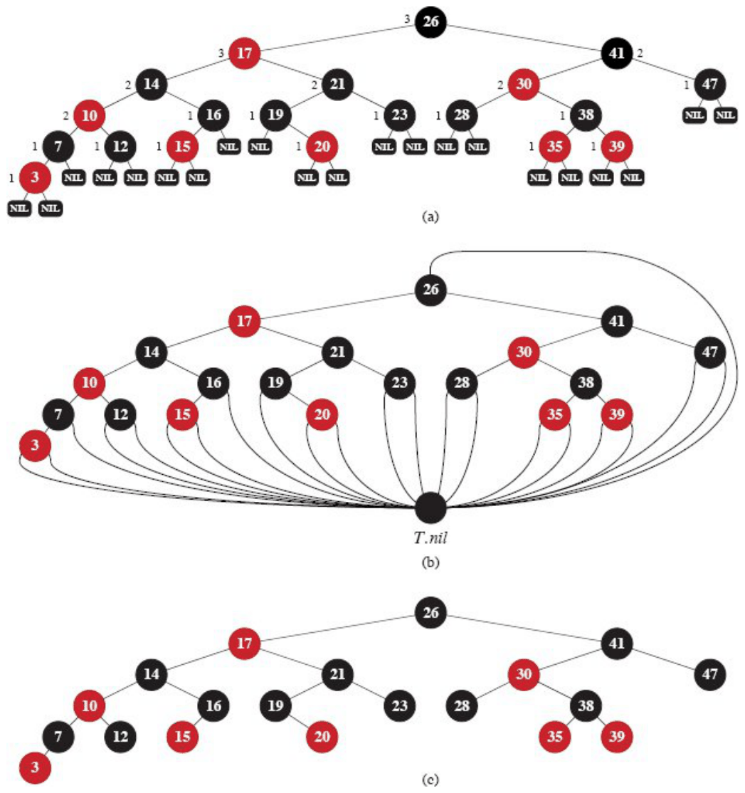
The code uses one black sentinel（哨兵）T.nil for every NIL leaf and for the parent of the root. Then a missing child is a real node with a colour and a parent field, so the code needs no special case for NIL.代码使用一个黑色哨兵 T.nil 代表所有 NIL 叶子以及根的父节点。这样，缺失的子节点就是一个真正的节点，带有颜色和父指针字段，因此代码不需要为 NIL 写特殊情况。
Step 2: the height bound第 2 步：高度上界
In words: a tree whose every path has \(k\) black nodes is already bushy, and red nodes can at most double the length of a path.用文字表述：每条路径都有 \(k\) 个黑节点的树本身已经很茂密，而红节点至多使一条路径的长度翻倍。
Lemma (height bound). A red-black tree with \(n\) internal nodes has height at most \(2\lg(n+1)\).引理（高度上界）。 含有 \(n\) 个内部节点的红黑树，其高度至多为 \(2\lg(n+1)\)。
Proof. The proof has two steps.证明。 证明分两步。
Step A: the subtree rooted at any node \(x\) has at least \(2^{bh(x)}-1\) internal nodes. Use induction on the height of \(x\).第 A 步：以任一节点 \(x\) 为根的子树至少有 \(2^{bh(x)}-1\) 个内部节点。 对 \(x\) 的高度作归纳。
- Base case: \(x\) is a NIL leaf. Then \(bh(x)=0\) and the subtree has \(0=2^0-1\) internal nodes.基本情况：\(x\) 是 NIL 叶子。这时 \(bh(x)=0\)，并且该子树有 \(0=2^0-1\) 个内部节点。
- Inductive step: \(x\) is internal and has two children. A black child \(c\) has \(bh(c)=bh(x)-1\), because \(c\) itself is not counted in \(bh(x)\) but is counted below \(x\). A red child has \(bh(c)=bh(x)\). So every child has \(bh(c)\ge bh(x)-1\).归纳步骤：\(x\) 是内部节点，有两个子节点。黑色子节点 \(c\) 具有 \(bh(c)=bh(x)-1\)，因为 \(c\) 本身不计入 \(bh(x)\)，但计入其下方的 \(x\)。红色子节点具有 \(bh(c)=bh(x)\)。因此每个子节点都具有 \(bh(c)\ge bh(x)-1\)。
- Each child is lower than \(x\). By the inductive hypothesis its subtree has at least \(2^{bh(x)-1}-1\) internal nodes.每个子节点都低于 \(x\)。由归纳假设，它的子树至少有 \(2^{bh(x)-1}-1\) 个内部节点。
- So the subtree at \(x\) has at least \(2\,(2^{bh(x)-1}-1)+1=2^{bh(x)}-1\) internal nodes: two child subtrees plus \(x\) itself.所以以 \(x\) 为根的子树至少有 \(2\,(2^{bh(x)-1}-1)+1=2^{bh(x)}-1\) 个内部节点：两个子树加上 \(x\) 本身。
Step B: relate \(bh\) and \(h\). Take a longest path from the root to a leaf. By property 4 a red node is always followed by a black node, and the leaf is black. So at least half of the nodes on the path below the root are black. Hence \(bh(\text{root})\ge h/2\).第 B 步：联系 \(bh\) 和 \(h\)。 取从根到叶子的一条最长路径。由性质 4，红节点后面总是跟着黑节点，并且叶子为黑。因此，根以下的路径节点中至少有一半是黑的。于是 \(bh(\text{root})\ge h/2\)。
Combine the steps. With \(x\) the root, Step A gives \(n\ge 2^{h/2}-1\). So \(n+1\ge 2^{h/2}\). Taking \(\lg\) gives \(\lg(n+1)\ge h/2\), that is, \(h\le 2\lg(n+1)\). \(\blacksquare\)合并两步。取 \(x\) 为根，由第 A 步得 \(n\ge 2^{h/2}-1\)，所以 \(n+1\ge 2^{h/2}\)。取 \(\lg\)，得到 \(\lg(n+1)\ge h/2\)，即 \(h\le 2\lg(n+1)\)。\(\blacksquare\)
Consequently SEARCH, MINIMUM, MAXIMUM, SUCCESSOR and PREDECESSOR (Section 9.2) run in \(O(h)=O(\lg n)\) time. TREE-INSERT and TREE-DELETE (Section 9.3) also take \(O(\lg n)\), but they may destroy the red-black properties. So insertion and deletion need the repair procedures of Sections 10.3 and 10.4.因此，SEARCH、MINIMUM、MAXIMUM、SUCCESSOR 和 PREDECESSOR（第 9.2 节）都在 \(O(h)=O(\lg n)\) 时间内运行。TREE-INSERT 和 TREE-DELETE（第 9.3 节）的时间也是 \(O(\lg n)\)，但它们可能破坏红黑性质。所以插入和删除需要第 10.3 节和第 10.4 节中的修复过程。
Practice练习
Q1. (Calculation) (a) A red-black tree has black-height 5. What are the smallest and the largest numbers of internal nodes it can have? (b) A red-black tree holds \(10^6\) keys. What height does the lemma allow, and how does it compare with a perfectly balanced tree?Q1.（计算）（a）一棵红黑树的黑高为 5，它能拥有的内部结点数的最小值和最大值各是多少？（b）一棵红黑树保存 \(10^6\) 个关键字，引理允许的高度是多少？它与完全平衡树相比如何？
Answer
(a) Smallest: \(n\ge 2^5-1=31\), reached by a perfect tree with all nodes black. Largest: every path has 5 black nodes below the root and, as red nodes are never adjacent, at most 5 red ones, so \(h\le 10\) and \(n\le 2^{10}-1=1023\). This is reached when black and red levels alternate: \(4^5-1=1023\).（a）最小值为 \(n\ge 2^5-1=31\)，由所有结点都为黑色的完全树取得。最大值：根以下每条路径上有 5 个黑结点，并且由于红结点互不相邻，红结点至多有 5 个，因此为 \(h\le 10\) 和 \(n\le 2^{10}-1=1023\)。当黑色层与红色层交替出现时取得最大值：\(4^5-1=1023\)。
(b) \(h\le 2\lg(10^6+1)=2\times 19.93=39.86\), so \(h\le 39\). A perfectly balanced tree has \(h=\lceil\lg(10^6+1)\rceil=20\). The red-black bound is within a factor 2 of the optimum: at most about 39 steps per search instead of 20.（b）\(h\le 2\lg(10^6+1)=2\times 19.93=39.86\)，因此 \(h\le 39\)。完全平衡树的高度为 \(h=\lceil\lg(10^6+1)\rceil=20\)。红黑树的高度上界与最优值相差不超过 2 倍：每次查找至多约 39 步，而不是 20 步。
思路：下界用全黑完全树 \(2^k-1\)，上界用红黑交替 \(4^k-1\)；(b) 直接代入 \(2\lg(n+1)\)。
Q2. (Check) Is the tree below a red-black tree? Give the black-height of every node. Then key 18 is added as the right child of 17 by plain TREE-INSERT: is the result a red-black tree if 18 is red? If 18 is black? What does RB-INSERT do?Q2.（检验）下面的树是红黑树吗？给出每个结点的黑高。然后用普通的 TREE-INSERT 把关键字 18 作为 17 的右孩子插入：若 18 为红色，结果是否为红黑树？若 18 为黑色呢？RB-INSERT 做了什么？
____________[20]______
/ \
_(10)_ __(30)_
/ \ / \
[5] [15]_ [25] [35]
\
(17)
Answer
The root 20 is black, the red nodes 10, 17, 30 have only black or NIL children, and every path from 20 to a leaf has two black nodes below 20 (for example 15, NIL and 25, NIL). So it is a red-black tree. Black-heights: \(bh=1\) for 5, 15, 17, 25, 35; \(bh=2\) for 10, 20, 30; NIL leaves have \(bh=0\).根 20 为黑色，红结点 10、17、30 的孩子只有黑结点或 NIL，并且从 20 到每个叶结点的路径在 20 之下都有两个黑结点（例如 15、NIL 与 25、NIL）。因此它是红黑树。黑高：结点 5、15、17、25、35 为 \(bh=1\)；结点 10、20、30 为 \(bh=2\)；NIL 叶结点为 \(bh=0\)。
With 18 red, 17 and 18 are two red nodes in a row: property 4 fails. With 18 black, the path 20, 10, 15, 17, 18, NIL has three black nodes below the root but the path 20, 10, 5, NIL has two: property 5 fails.若 18 为红色，则 17 与 18 是相邻的两个红结点，性质 4 不成立。若 18 为黑色，则路径 20、10、15、17、18、NIL 在根以下有三个黑结点，而路径 20、10、5、NIL 只有两个：性质 5 不成立。
RB-INSERT colors 18 red and repairs it: parent 17 is red, the uncle 15.left is NIL (black), and 18 is the right child of a right child, so one left rotation at 15 (mirror of case 3) makes 17 black with the red children 15 and 18.RB-INSERT 将 18 染成红色并加以修复：父结点 17 为红色，叔结点 15.left 为 NIL（黑色），并且 18 是右孩子的右孩子，因此在 15 处做一次左旋（情况 3 的镜像），即可使 17 变为黑色，它的红色孩子为 15 和 18。
Rotations ★★★旋转
Goal. Draw the result of a left or right rotation, write LEFT-ROTATE and RIGHT-ROTATE, and state what a rotation keeps and what it changes.目标。 画出左旋或右旋的结果，写出 LEFT-ROTATE 和 RIGHT-ROTATE，并说明旋转保持什么、改变什么。
Step 1: what a rotation does第 1 步：旋转做什么
In words: a rotation = lift one child above its parent, hang the parent below it, and move the one subtree in between to the other side.用文字表述：旋转 = 把一个子节点提到父节点之上，把父节点挂到它下面，并把中间的那棵子树移到另一侧。
A rotation（旋转）is a local change of \(O(1)\) pointers that keeps the binary-search-tree order. Take a node \(x\) with right child \(y\). The three subtrees are \(\alpha\) (left of \(x\)), \(\beta\) (left of \(y\)) and \(\gamma\) (right of \(y\)). LEFT-ROTATE at \(x\) makes \(y\) the root of the subtree, \(x\) the left child of \(y\), and \(\beta\) the right subtree of \(x\). RIGHT-ROTATE at \(y\) is the inverse.旋转是对 \(O(1)\) 指针的局部修改，并保持二叉搜索树的次序。取一个节点 \(x\)，它的右子节点是 \(y\)。三棵子树分别是 \(\alpha\)（位于 \(x\) 的左侧）、\(\beta\)（位于 \(y\) 的左侧）和 \(\gamma\)（位于 \(y\) 的右侧）。在 \(x\) 处执行 LEFT-ROTATE，使 \(y\) 成为该子树的根，\(x\) 成为 \(y\) 的左子节点，\(\beta\) 成为 \(x\) 的右子树。在 \(y\) 处执行 RIGHT-ROTATE 是它的逆操作。

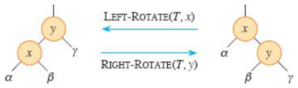

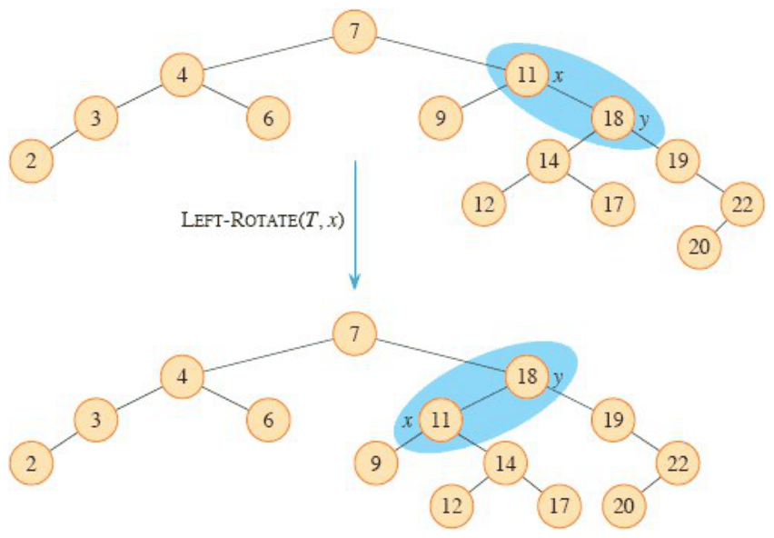
The key order \(\alpha<x<\beta<y<\gamma\) is the same before and after, so the inorder walk is unchanged. A left rotation at \(x\) moves \(\alpha\) one level down, leaves \(\beta\) at its depth and moves \(\gamma\) one level up. LEFT-ROTATE needs y = x.right to be a real node, not T.nil. An \(n\)-node search tree has \(n-1\) possible rotations, one per parent-child edge.旋转前后，关键字的次序 \(\alpha<x<\beta<y<\gamma\) 相同，所以中序遍历不变。在 \(x\) 处左旋，使 \(\alpha\) 下降一层，\(\beta\) 保持原来的深度，\(\gamma\) 上升一层。LEFT-ROTATE 要求 y = x.right 是真实的节点，而不能是 T.nil。一棵含 \(n\) 个节点的搜索树有 \(n-1\) 种可能的旋转，每条父子边对应一种。
Step 2: the code第 2 步：代码
LEFT-ROTATE(T, x)
1 y = x.right
2 x.right = y.left // turn y's left subtree into x's right subtree
3 if y.left ≠ T.nil
4 y.left.p = x // x becomes the parent of that subtree's root
5 y.p = x.p // x's parent becomes y's parent
6 if x.p == T.nil
7 T.root = y // x was the root
8 elseif x == x.p.left
9 x.p.left = y
10 else x.p.right = y
11 y.left = x // x becomes y's left child
12 x.p = y
- Lines 1–4: \(y\) is the right child of \(x\). \(\beta\) (the left subtree of \(y\)) becomes the right subtree of \(x\), and its root gets \(x\) as parent.第 1–4 行：\(y\) 是 \(x\) 的右子节点。\(\beta\)（即 \(y\) 的左子树）成为 \(x\) 的右子树，并且它的根以 \(x\) 为父节点。
- Lines 5–10: \(y\) takes the place of \(x\) below the parent of \(x\). The three cases are: \(x\) was the root, a left child, or a right child.第 5–10 行：\(y\) 接替 \(x\)，挂在 \(x\) 的父节点之下。三种情况是：\(x\) 原来是根、左子节点，或右子节点。
- Lines 11–12: \(x\) becomes the left child of \(y\).第 11–12 行：\(x\) 成为 \(y\) 的左子节点。
The code has no loop, so a rotation takes \(O(1)\) time. RIGHT-ROTATE is the same code with left and right exchanged (Practice Q2).这段代码没有循环，所以一次旋转的时间为 \(O(1)\)。RIGHT-ROTATE 与它的代码相同，只是 left 和 right 互换（练习 Q2）。
Step 3: a pointer trace第 3 步：指针演算
How to do it by hand: 1. Name \(x\), its right child \(y\) and the three subtrees. 2. Run the lines in order and write which pointer changes. 3. Redraw the tree and give the new depths.手工做法：1. 说出 \(x\)、它的右子节点 \(y\) 以及三棵子树。2. 按顺序执行各行，并写出哪个指针发生了变化。3. 重画树，并给出新的深度。
Practice练习
Q1. (Trace) Apply LEFT-ROTATE at the root 20 of the tree below. Draw the result, give the inorder sequence before and after, and state how the depths of the keys in \(\alpha=\{10\}\), \(\beta=\{25\}\) and \(\gamma=\{40\}\) change.Q1.（手工演算）对下面树中的根 20 应用 LEFT-ROTATE。画出结果，给出旋转前后的中序序列，并说明 \(\alpha=\{10\}\)、\(\beta=\{25\}\) 和 \(\gamma=\{40\}\) 中关键字的深度如何变化。
20
/ \
10 30
/ \
25 40
Answer
Here \(x=20\) and \(y=30\). Node 30 becomes the root, 20 becomes its left child, the old left subtree of 30 (key 25) becomes the right child of 20, and 40 stays the right child of 30.这里 \(x=20\) 与 \(y=30\)。结点 30 成为根，20 成为其左孩子，30 原来的左子树（关键字 25）成为 20 的右孩子，而 40 仍是 30 的右孩子。
30
/ \
20 40
/ \
10 25
The inorder sequence is 10, 20, 25, 30, 40 before and after. Depths: key 10 goes from 1 to 2 (+1), key 25 stays at 2, key 40 goes from 2 to 1 (−1).旋转前后的中序序列都是 10、20、25、30、40。深度：关键字 10 由 1 变为 2（+1），关键字 25 保持为 2，关键字 40 由 2 变为 1（−1）。
Q2. (Code) Write RIGHT-ROTATE(T, y).Q2.（代码）编写 RIGHT-ROTATE(T, y)。
Answer
It is LEFT-ROTATE with left and right exchanged.它是将 LEFT-ROTATE 中的 left 与 right 互换后得到的过程。
RIGHT-ROTATE(T, y)
1 x = y.left
2 y.left = x.right
3 if x.right ≠ T.nil
4 x.right.p = y
5 x.p = y.p
6 if y.p == T.nil
7 T.root = x
8 elseif y == y.p.right
9 y.p.right = x
10 else y.p.left = x
11 x.right = y
12 y.p = x
Insertion ★★★插入
Goal. Insert a key into a red-black tree by hand, name the fix-up case each time, and state the cost.目标。 手工把一个关键字插入红黑树，每次说出所用的修正情况，并给出代价。
Step 1: RB-INSERT第 1 步：RB-INSERT
In words: insert the key as in a plain search tree, colour the new node red, and then repair.用文字表述：像普通搜索树一样插入关键字，把新节点染成红色，然后修复。
RB-INSERT(T, z)
1 x = T.root // node being compared with z
2 y = T.nil // y will be the parent of z
3 while x ≠ T.nil
4 y = x
5 if z.key < x.key
6 x = x.left
7 else x = x.right
8 z.p = y
9 if y == T.nil
10 T.root = z // the tree was empty
11 elseif z.key < y.key
12 y.left = z
13 else y.right = z
14 z.left = T.nil
15 z.right = T.nil
16 z.color = RED // the new node starts out red
17 RB-INSERT-FIXUP(T, z)
Compared with TREE-INSERT, NIL is replaced by T.nil (lines 2, 3), both children of \(z\) are set to T.nil (lines 14–15), \(z\) is coloured red (line 16), and the repair is called (line 17). The descent takes \(O(h)=O(\lg n)\) time.与 TREE-INSERT 相比，NIL 被 T.nil 取代（第 2、3 行），\(z\) 的两个子节点都设为 T.nil（第 14–15 行），\(z\) 被染成红色（第 16 行），并调用修复过程（第 17 行）。下降过程的时间为 \(O(h)=O(\lg n)\)。
Why red? A black new node would add one black node to every path through it. That breaks property 5 for all its ancestors and cannot be repaired locally. A red node keeps properties 1, 3 and 5. Only property 2 (\(z\) is the root) or property 4 (z.p is red) can fail, and both are repaired near \(z\).为什么染成红色？如果新节点是黑色，经过它的每条路径都会多一个黑节点。这会破坏它所有祖先的性质 5，而且无法局部修复。红节点能保持性质 1、3 和 5。只可能破坏性质 2（\(z\) 是根）或性质 4（z.p 为红），而这两者都可以在 \(z\) 附近修复。
Step 2: RB-INSERT-FIXUP and its three cases第 2 步：RB-INSERT-FIXUP 及其三种情况
In words: while the new red node has a red parent, look at the uncle: a red uncle is recoloured and the problem moves up, a black uncle is rotated away.用文字表述：只要新的红节点有红色父节点，就看叔节点：红叔节点重新着色，问题向上移动；黑叔节点通过旋转消除。
RB-INSERT-FIXUP(T, z)
1 while z.p.color == RED
2 if z.p == z.p.p.left // z's parent is a left child
3 y = z.p.p.right // y is z's uncle
4 if y.color == RED // case 1
5 z.p.color = BLACK
6 y.color = BLACK
7 z.p.p.color = RED
8 z = z.p.p
9 else
10 if z == z.p.right // case 2
11 z = z.p
12 LEFT-ROTATE(T, z)
13 z.p.color = BLACK // case 3
14 z.p.p.color = RED
15 RIGHT-ROTATE(T, z.p.p)
16 else (same as lines 3-15 with "right" and "left" exchanged) // lines 17-29
30 T.root.color = BLACK
The loop runs while z.p is red, that is, while property 4 fails between \(z\) and its parent. Lines 2–15 treat z.p as a left child of z.p.p. Lines 17–29 are the mirror image: if z.p is a right child, exchange left and right everywhere. Line 30 colours the root black, which repairs property 2.只要 z.p 为红，循环就继续执行，也就是说，只要 \(z\) 与其父节点之间违反性质 4。第 2–15 行把 z.p 当作 z.p.p 的左子节点来处理。第 17–29 行是镜像情况：如果 z.p 是右子节点，就处处互换左右。第 30 行把根染成黑色，修复性质 2。
| Case情形 | Uncle \(y\) | Position of \(z\) | Action操作 | Rotations旋转 | Loop循环 |
|---|---|---|---|---|---|
| 1 | red红色 | any任意 | z.p and \(y\) black; z.p.p red; \(z\gets\) z.p.p |
0 | continues, \(z\) two levels higher |
| 2 | black黑色 | right child (inner)右孩子（内侧） | \(z\gets\) z.p; LEFT-ROTATE(T, z) |
1 | falls into case 3转入情况 3 |
| 3 | black黑色 | left child (outer)左孩子（外侧） | z.p black; z.p.p red; RIGHT-ROTATE(T, z.p.p) |
1 | ends结束 |

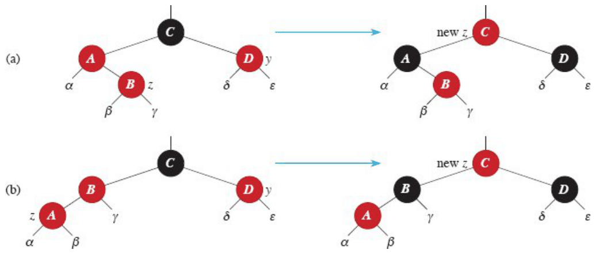

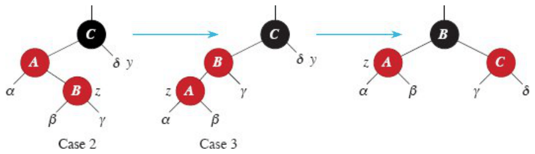
- Case 1 (uncle red). The black grandparent hands its blackness down to
z.pand \(y\) and becomes red. Every path keeps its number of black nodes. The new \(z\) is the grandparent, two levels higher. It may have a red parent (the loop continues) or be the root (only property 2 fails).情况 1（叔节点为红）。 黑色的祖父节点把黑色让给z.p和 \(y\)，自身变为红色。每条路径的黑节点数保持不变。新的 \(z\) 是祖父节点，比原来高两层。它可能有红色父节点（循环继续），也可能是根（只有性质 2 被破坏）。 - Case 2 (uncle black, \(z\) an inner child). A left rotation at
z.pturns the bent shape into a straight one. The oldz.pbecomes the new \(z\). Both nodes were red, so no black count changes. The code falls through into case 3.情况 2（叔节点为黑，\(z\) 为内侧子节点）。 在z.p处左旋，把弯折的形状变为直线形。原来的z.p成为新的 \(z\)。两个节点原本都是红色，所以黑节点数不变。代码接着进入情况 3。 - Case 3 (uncle black, \(z\) an outer child). Colour
z.pblack andz.p.pred, then rotate right atz.p.p. The new subtree root is black with two red children, so black counts are unchanged and the red pair is gone. The loop ends becausez.pis black.情况 3（叔节点为黑，\(z\) 为外侧子节点）。 把z.p染成黑色，z.p.p染成红色，然后在z.p.p处右旋。新子树的根为黑色，并有两个红色子节点，所以黑节点数不变，连续的红色对也消失了。由于z.p为黑，循环结束。
The loop invariant（循环不变式，Section 1.3）at the start of each iteration has three parts.每次迭代开始时，循环不变式（第 1.3 节）有三个部分。
- \(z\) is red.\(z\) 为红。
- If
z.pis the root, it is black.如果z.p是根，它为黑。 - At most one property is violated: property 2 (\(z\) is the red root) or property 4 (\(z\) and
z.pare both red).至多只有一条性质被破坏：性质 2（\(z\) 是红色的根）或性质 4（\(z\) 和z.p都是红色）。
By part 2, a red parent is not the root, so the grandparent z.p.p exists and is black.由第 2 部分，红色父节点不是根，所以祖父节点 z.p.p 存在，并且为黑。
Step 3: one complete trace第 3 步：完整演算一遍
How to do it by hand: 1. Insert as in a search tree and colour the new node red. 2. Find the parent and the uncle. 3. Red uncle: case 1, then continue with the grandparent as \(z\). 4. Black uncle: case 2 if \(z\) is an inner child, then case 3. 5. Colour the root black.手工做法：1. 像搜索树那样插入，并把新节点染成红色。2. 找出父节点和叔节点。3. 红叔节点：用情况 1，然后把祖父节点当作 \(z\) 继续处理。4. 黑叔节点：如果 \(z\) 是内侧子节点，先用情况 2，然后用情况 3。5. 把根染成黑色。
The following standard example runs the cases 1, 2 and 3 one after the other.下面的标准例子依次运行情况 1、2 和 3。
(a) Insert 4 into a tree with root 11: it becomes a red leaf under 5. Its parent 5 and uncle 8 are both red: case 1.（a）向根为 11 的树中插入 4：它成为 5 之下的红色叶结点。其父结点 5 与叔结点 8 都是红色：情况 1。
_________________[11]_
/ \
_(2)_________ [14]_
/ \ \
[1] _[7]_ (15)
/ \
_(5) (8)
/
(4)
(b) Case 1 colors 5 and 8 black and 7 red; \(z=7\). Now 7 and its parent 2 are red, the uncle 14 is black and 7 is a right child: case 2.（b）情况 1 将 5 和 8 染为黑色，将 7 染为红色；\(z=7\)。现在 7 与其父结点 2 都是红色，叔结点 14 为黑色，并且 7 是右孩子：情况 2。
_________________[11]_
/ \
_(2)_________ [14]_
/ \ \
[1] _(7)_ (15)
/ \
_[5] [8]
/
(4)
(c) Case 2 rotates left at 2; \(z=2\) is now a left child of the red 7 and the uncle is still 14: case 3.（c）情况 2 在 2 处左旋；\(z=2\) 现在是红色的 7 的左孩子，叔结点仍是 14：情况 3。
_____[11]_
/ \
_________(7)_ [14]_
/ \ \
_(2)_____ [8] (15)
/ \
[1] _[5]
/
(4)
(d) Case 3 colors 7 black and 11 red and rotates right at 11. The loop ends and the tree is a legal red-black tree again (black-height 2, two rotations).（d）情况 3 将 7 染为黑色，将 11 染为红色，并在 11 处右旋。循环结束，树重新成为合法的红黑树（黑高为 2，共两次旋转）。
_________[7]_____
/ \
_(2)_____ _(11)_
/ \ / \
[1] _[5] [8] [14]_
/ \
(4) (15)
Step 4: correctness and cost第 4 步：正确性与代价
Initialization: the only possible violations come from the red node \(z\). Maintenance: case 1 makes the red grandparent the new \(z\), so at most one new violation appears (property 2 at the root, or property 4 with a red parent). Cases 2 and 3 repair the violation and create none. Termination: the loop stops when z.p is black. Then only property 2 can fail, and line 30 fixes it.初始化：唯一可能的破坏来自红节点 \(z\)。保持：情况 1 把红色的祖父节点变为新的 \(z\)，所以最多只出现一个新的破坏（根处的性质 2，或红色父节点造成的性质 4）。情况 2 和 3 修复破坏，且不产生新的破坏。终止：当 z.p 为黑时循环停止。这时只可能破坏性质 2，而第 30 行修复它。
Only case 1 repeats, and it moves \(z\) up two levels. So the loop runs \(O(\lg n)\) times. Cases 2 and 3 end it. One insertion takes \(O(\lg n)\) time and does at most 2 rotations.只有情况 1 会重复，并且它使 \(z\) 向上移动两层。所以循环运行 \(O(\lg n)\) 次。情况 2 和 3 结束循环。一次插入需要 \(O(\lg n)\) 时间，且至多做 2 次旋转。
The black-height of the tree grows only when case 1 reaches the root. The root turns red, its children turn black, and line 30 colours the root black again. Then every path has one more black node.只有当情况 1 一直到达根时，树的黑高才会增加。根变为红色，它的子节点变为黑色，然后第 30 行再把根染成黑色。这样，每条路径都多了一个黑节点。
Practice练习
Q1. (Trace) Insert 41, 38, 31, 12, 19, 8 in this order into an empty red-black tree. For each insertion state the cases that run and draw the tree. How many rotations are used?Q1.（手工演算）按此顺序将 41、38、31、12、19、8 插入一棵空红黑树。对每次插入，说明运行的情况并画出树。共使用了多少次旋转？
Answer
- 41: the root, red, then colored black by line 30. 38: a red left child of the black 41; no violation.41：根，先染成红色，再由第 30 行染成黑色。38：黑色 41 的红色左孩子；无违反。
- 31: red left child of the red 38; the uncle (the right child of 41) is NIL, so black, and 31 is an outer child: case 3. 38 black, 41 red, right rotation at 41.31：红色结点 38 的红色左孩子；叔结点（即 41 的右孩子）为 NIL，因此为黑色，并且 31 是外侧孩子：情况 3。将 38 染为黑色，41 染为红色，并在 41 处右旋。
__[38]_
/ \
(31) (41)
- 12: left child of 31. Parent 31 and uncle 41 are red: case 1. Both turn black and 38 turns red; 38 is the root, so line 30 colors it black.12：31 的左孩子。父结点 31 与叔结点 41 为红色：情况 1。两者都变为黑色，38 变为红色；38 是根，因此第 30 行将其染为黑色。
__[38]_
/ \
__[31] [41]
/
(12)
- 19: right child of 12. Parent 12 is red and the uncle (right child of 31) is NIL: case 2 (left rotation at 12) and then case 3 (19 black, 31 red, right rotation at 31).19：12 的右孩子。父结点 12 为红色，且叔结点（即 31 的右孩子）为 NIL：情况 2（在 12 处左旋），然后是情况 3（将 19 染为黑色，31 染为红色，并在 31 处右旋）。
_______[38]_
/ \
__[19]_ [41]
/ \
(12) (31)
- 8: left child of 12. Parent 12 and uncle 31 are red: case 1. 12 and 31 turn black, 19 turns red; its parent 38 is black, so the loop ends.8：12 的左孩子。父结点 12 与叔结点 31 为红色：情况 1。12 与 31 变为黑色，19 变为红色；它的父结点 38 为黑色，因此循环结束。
_______[38]_
/ \
__(19)_ [41]
/ \
_[12] [31]
/
(8)
Rotations: 1 (key 31) + 2 (key 19) = 3. The black-height is 2.旋转次数：1（关键字 31）+ 2（关键字 19）= 3。黑高为 2。
Q2. (Going further) When does the black-height of the whole tree increase during an insertion? Show an example.Q2.（进阶）插入过程中，整棵树的黑高何时会增加？给出一个例子。
Answer
Cases 2 and 3 and the recoloring of case 1 keep every black count. But when case 1 moves \(z\) up to the root, the root turns red and its two children turn black; line 30 then colors the root black again, so every path has one more black node and the black-height grows by exactly 1. This happens only when case 1 reaches the root.情况 2 和情况 3 以及情况 1 的重新染色都保持每条路径的黑结点数。但当情况 1 把 \(z\) 上移到根时，根变为红色，它的两个孩子变为黑色；随后第 30 行再次把根染为黑色，于是每条路径多一个黑结点，黑高恰好增加 1。只有当情况 1 到达根时才会发生这种情况。
Example: the root 20 is black with red children 10 and 30 (\(bh=1\)). Insert 5 under 10: parent 10 and uncle 30 are red, so case 1 colors them black and 20 red; \(z=20\) is the root and line 30 makes it black. The black-height becomes 2.例：根 20 为黑色，其红色孩子为 10 和 30（\(bh=1\)）。在 10 之下插入 5：父结点 10 和叔结点 30 为红色，因此情况 1 将它们染为黑色，并将 20 染为红色；\(z=20\) 是根，第 30 行将其染为黑色。黑高变为 2。
__[20]_
/ \
_[10] [30]
/
(5)
In the 2-3-4 view the root node overflowed, was split, and the tree grew by one level at the top.在 2-3-4 树的视角下，根结点溢出，被分裂，树在顶部增加了一层。
思路：黑高只在 case 1 一路上移到根时加 1。
Deletion ★★删除
Goal. Delete a key by hand, say whether a repair is needed, and name the fix-up case at each step.目标。 手工删除一个关键字，说明是否需要修复，并在每一步说出所用的修正情况。
Step 1: which node counts, and when is a repair needed?第 1 步：哪个节点起作用，何时需要修复？
In words: deleting a red node never hurts; deleting a black node leaves one black node too few on every path through its place.用文字表述：删除红节点从不造成破坏；删除黑节点，则经过其原位置的每条路径都少了一个黑节点。
RB-DELETE follows TREE-DELETE (Section 9.3). Three nodes matter.RB-DELETE 沿用 TREE-DELETE（第 9.3 节）的做法。有三个节点需要注意。
- \(z\) is the node to delete. \(y\) is the node actually removed or moved: \(y=z\) if \(z\) has at most one child. Otherwise \(y\) is the successor of \(z\), which moves into the place of \(z\) and takes its colour.\(z\) 是要删除的节点。\(y\) 是实际被移除或被移动的节点：如果 \(z\) 至多有一个子节点，它就是 \(y=z\)。否则，\(y\) 是 \(z\) 的后继，它移到 \(z\) 的位置上，并取得它的颜色。
- \(x\) is the node that moves into the original place of \(y\). It may be
T.nil.\(x\) 是移到 \(y\) 原位置的节点。它可能就是T.nil。 - The colour of \(y\) before the move is saved, because the repair depends on it.\(y\) 在移动前的颜色要保存下来，因为修复依赖于它。
If \(y\) was red, nothing breaks. If \(y\) was black, three problems can arise.如果 \(y\) 原为红，什么都不会被破坏。如果 \(y\) 原为黑，可能出现三个问题。
- The root may have become red (property 2).根可能变为红色（性质 2）。
- \(x\) and its new parent may both be red (property 4).\(x\) 和它的新父节点可能都为红（性质 4）。
- Every path through the old place of \(y\) lost one black node (property 5).经过 \(y\) 原位置的每条路径都少了一个黑节点（性质 5）。
Step 2: the extra black第 2 步：额外的黑色
In words: pretend that the removed blackness is still there, put it on \(x\), and move it up the tree until a rotation or a red node absorbs it.用文字表述：假设被移走的黑色仍然存在，把它放在 \(x\) 上，并一直向上移动，直到某次旋转或某个红节点把它吸收掉。
The blackness of \(y\) is given to \(x\) as an extra black（额外的黑色）. Counting it, property 5 holds again. But \(x\) is now doubly black（双重黑）: a black node that counts 2. Or it is red-and-black: a red node that counts 1, which violates property 1. The extra black exists only because the pointer \(x\) refers to the node.\(y\) 的黑色作为额外的黑色交给 \(x\)。计入它之后，性质 5 再次成立。但 \(x\) 现在是双重黑：一个按 2 计数的黑节点。或者它是既红又黑：一个红色节点，却只计为 1 个黑，这违反性质 1。额外的黑色之所以存在，只是因为指针 \(x\) 指向这个节点。
RB-DELETE-FIXUP stops when \(x\) is red-and-black (line 44 colours it black), when \(x\) is the root (the extra black vanishes), or when rotations absorb it. Inside the loop \(x\) is a doubly black non-root node with sibling \(w\). Lines 3–22 treat \(x\) as a left child. Lines 24–43 are the mirror image.RB-DELETE-FIXUP 在以下情况停止：\(x\) 为既红又黑（第 44 行把它染成黑色）；\(x\) 是根（额外的黑色消失）；或者旋转吸收了它。在循环中，\(x\) 是一个双重黑的非根节点，它的兄弟为 \(w\)。第 3–22 行把 \(x\) 当作左子节点处理。第 24–43 行是镜像情况。
RB-DELETE-FIXUP(T, x)
1 while x ≠ T.root and x.color == BLACK
2 if x == x.p.left // x is a left child
3 w = x.p.right // w is x's sibling
4 if w.color == RED // case 1
5 w.color = BLACK
6 x.p.color = RED
7 LEFT-ROTATE(T, x.p)
8 w = x.p.right
9 if w.left.color == BLACK and w.right.color == BLACK // case 2
10 w.color = RED
11 x = x.p
12 else
13 if w.right.color == BLACK // case 3
14 w.left.color = BLACK
15 w.color = RED
16 RIGHT-ROTATE(T, w)
17 w = x.p.right
18 w.color = x.p.color // case 4
19 x.p.color = BLACK
20 w.right.color = BLACK
21 LEFT-ROTATE(T, x.p)
22 x = T.root
23 else (same as lines 3-22 with "right" and "left" exchanged) // lines 24-43
44 x.color = BLACK
Step 3: the four cases第 3 步：四种情况
For \(x\) a left child, call w.left the child of \(w\) near \(x\) and w.right the far child. The test in cases 3 and 4 is on the far child.当 \(x\) 是左子节点时，把 \(w\) 中靠近 \(x\) 的子节点称为 w.left，远侧子节点称为 w.right。情况 3 和 4 的判断针对远侧子节点。
| Case情形 | Sibling \(w\) | Children of \(w\) | Action操作 | Rotations旋转 | Next下一步 |
|---|---|---|---|---|---|
| 1 | red红色 | both black两者均为黑色 | w black; x.p red; LEFT-ROTATE(T, x.p); new w = x.p.rightw 为黑色；x.p 为红色；LEFT-ROTATE(T, x.p)；新的 w = x.p.right |
1 | becomes case 2, 3 or 4变为情况 2、3 或 4 |
| 2 | black黑色 | both black两者均为黑色 | w red; \(x\gets\) x.p |
0 | extra black moves up; loop repeats额外黑色上移；循环重复 |
| 3 | black黑色 | near red, far black靠近者为红色，远离者为黑色 | w.left black; w red; RIGHT-ROTATE(T, w); new w = x.p.rightw.left 为黑色；w 为红色；RIGHT-ROTATE(T, w)；新的 w = x.p.right |
1 | becomes case 4变为情况 4 |
| 4 | black黑色 | far red (near any)远离者为红色（靠近者任意） | w takes the color of x.p; x.p and w.right black; LEFT-ROTATE(T, x.p); \(x\gets\) T.rootw 取 x.p 的颜色；x.p 与 w.right 为黑色；LEFT-ROTATE(T, x.p)；\(x\gets\) T.root |
1 | ends结束 |

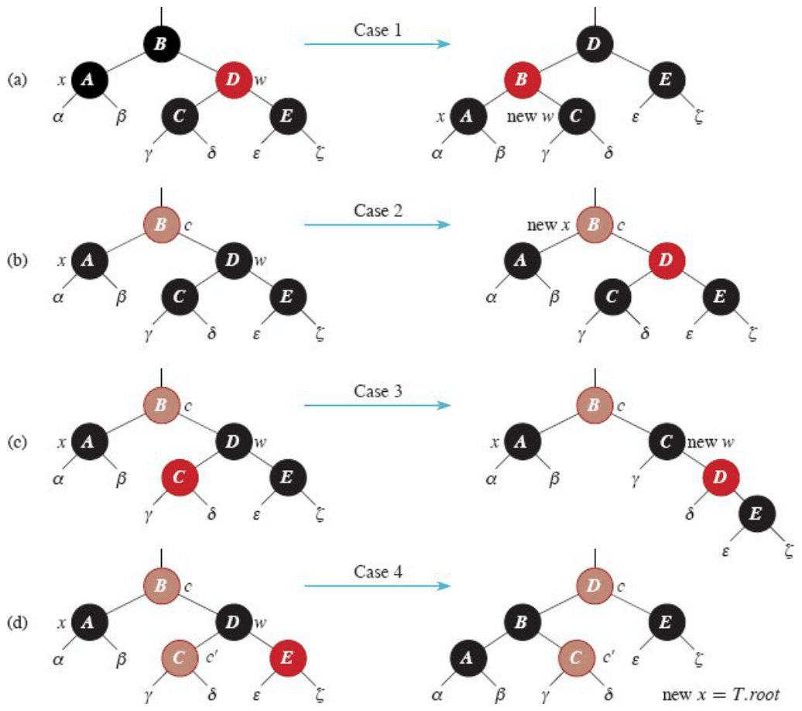
- Case 1 (\(w\) red). Then \(w\)'s children and
x.pare black. Swap the colours of \(w\) andx.pand rotate left atx.p. Now \(x\) has a black sibling, so case 2, 3 or 4 follows.情况 1（\(w\) 为红）。 这时 \(w\) 的子节点和x.p都为黑。交换 \(w\) 和x.p的颜色，并在x.p处左旋。这时 \(x\) 有一个黑色兄弟，所以接着进入情况 2、3 或 4。 - Case 2 (\(w\) black, both children black). Take one black from \(x\) and one from \(w\). So \(w\) turns red and the extra black moves up to
x.p. Ifx.pwas red, it is now red-and-black and the loop ends. This is the only case that repeats.情况 2（\(w\) 为黑，两个子节点都为黑）。 从 \(x\) 和 \(w\) 各去掉一层黑色。于是 \(w\) 变为红色，额外的黑色向上移到x.p。如果x.p原为红，它现在既红又黑，循环结束。这是唯一会重复的情况。 - Case 3 (\(w\) black, near child red, far child black). Swap the colours of \(w\) and
w.leftand rotate right at \(w\). The new sibling has a red far child: case 4.情况 3（\(w\) 为黑，近侧子节点为红，远侧子节点为黑）。 交换 \(w\) 和w.left的颜色，并在 \(w\) 处右旋。新的兄弟节点有一个红色远侧子节点：进入情况 4。 - Case 4 (\(w\) black, far child red). \(w\) takes the colour of
x.p, andx.pandw.rightbecome black. Rotate left atx.p. The extra black is absorbed and the loop ends.情况 4（\(w\) 为黑，远侧子节点为红）。 \(w\) 取得x.p的颜色，x.p和w.right变为黑。在x.p处左旋。额外的黑色被吸收，循环结束。
If \(x\) is a right child, exchange left and right, so w = x.p.left. In every case the black counts of all paths stay the same, counting the extra black.如果 \(x\) 是右子节点，就互换左右，于是 w = x.p.left。在每种情况下，计入额外的黑色后，所有路径的黑节点数都保持不变。
Cost: cases 1, 3 and 4 do constant work, and only case 2 moves \(x\) up. So RB-DELETE-FIXUP takes \(O(\lg n)\) time. The longest chain without repetition is case 1, case 3, case 4, so there are at most 3 rotations.代价：情况 1、3 和 4 只做常数量的工作，只有情况 2 会使 \(x\) 上移。所以 RB-DELETE-FIXUP 的时间为 \(O(\lg n)\)。无重复的最长链是情况 1、情况 3、情况 4，所以至多 3 次旋转。
The two traces below show the longest chain and a repeating case 2.下面两个演算例子分别展示最长的链，以及重复出现的情况 2。
Cases 1, 3, 4 (three rotations). Delete 10 from the tree below. Here \(y=z=10\) is black, \(x\) is T.nil with x.p = 20, and \(x\) is doubly black.情况 1、3、4（三次旋转）。从下面的树中删除 10。这里 \(y=z=10\) 为黑色，\(x\) 是 T.nil，其 x.p = 20，并且 \(x\) 为双重黑。
(a) The sibling \(w=40\) is red: case 1.（a）兄弟结点 \(w=40\) 为红色：情况 1。
__[20]___________
/ \
[10] __(40)_
/ \
__[30] [50]
/
(25)
(b) Case 1 colors 40 black and 20 red and rotates left at 20. The new sibling is \(w=30\), black, with near child 25 red and far child NIL black: case 3.（b）情况 1 将 40 染为黑色，20 染为红色，并在 20 处左旋。新的兄弟为 \(w=30\)，黑色，其靠近的孩子 25 为红色，远离的孩子 NIL 为黑色：情况 3。
____________[40]_
/ \
(20)______ [50]
\
__[30]
/
(25)
(c) Case 3 swaps the colors of 30 and 25 and rotates right at 30. The new sibling is 25, black, with a red far child 30: case 4.（c）情况 3 交换 30 与 25 的颜色，并在 30 处右旋。新的兄弟为 25，黑色，其远离的孩子为红色的 30：情况 4。
____________[40]_
/ \
(20)_ [50]
\
[25]_
\
(30)
(d) Case 4: 25 takes the color of 20 (red), 20 and 30 turn black, rotate left at 20. The extra black has vanished; the black-height is still 2.（d）情况 4：25 取得 20 的颜色（红色），20 与 30 变为黑色，在 20 处左旋。额外黑色已经消失；黑高仍为 2。
_______[40]_
/ \
__(25)_ [50]
/ \
[20] [30]
Case 2 repeated (no rotation). In the perfect tree with seven black nodes, delete 1. The sibling 3 is black with black children: case 2 colors 3 red and the extra black moves to 2. Its sibling 6 is black with black children: case 2 again; 6 turns red and the extra black reaches the root 4, where it vanishes. The black-height drops from 3 to 2.情况 2 重复出现（无旋转）。在含七个黑结点的完全树中删除 1。兄弟 3 为黑色，且其孩子为黑色：情况 2 将 3 染为红色，额外黑色移到 2。其兄弟 6 为黑色，且其孩子为黑色：再次是情况 2；6 变为红色，额外黑色到达根 4 并在此消失。黑高从 3 降为 2。
_____[4]_____ _____[4]_____
/ \ / \
_[2]_ _[6]_ [2]_ _(6)_
/ \ / \ \ / \
[1] [3] [5] [7] (3) [5] [7]
Practice练习
Q1. (Trace) Delete 8, 12, 19, 31, 38, 41 in this order from the tree obtained in the previous section's Q1. For each deletion give the original color of \(y\), the node \(x\) and the cases that run.Q1.（手工演算）从前一节 Q1 所得的树中，按此顺序删除 8、12、19、31、38、41。对每次删除，给出 \(y\) 的原来颜色、结点 \(x\) 以及运行的情况。
Answer
The start tree is [38] with left child (19) (children [12] and [31]; [12] has the left child (8)) and right child [41].初始树为 [38]，其左孩子为 (19)（孩子为 [12] 与 [31]；[12] 的左孩子为 (8)），右孩子为 [41]。
- Delete 8: a red leaf, \(y=z\) is red, so no repair.删除 8：红色叶结点，\(y=z\) 为红色，因此不需要修复。
- Delete 12: a black leaf, \(x\) is
T.nilunder the red 19. Sibling 31 is black with black children: case 2 colors 31 red and \(x\gets 19\), which is red (red-and-black), so the loop ends and 19 becomes black.删除 12：黑色叶结点，\(x\) 是红色结点 19 之下的T.nil。兄弟 31 为黑色，且其孩子为黑色：情况 2 将 31 染为红色，\(x\gets 19\) 为红色（即红黑双色），因此循环结束，19 变为黑色。
_______[38]_
/ \
[19]_ [41]
\
(31)
- Delete 19: black, with only the red child 31. \(x=31\) moves up, is red-and-black and is colored black; no case runs.删除 19：19 为黑色，只有红色孩子 31。\(x=31\) 上移，为红黑双色，并被染为黑色；不运行任何情况。
__[38]_
/ \
[31] [41]
- Delete 31: a black leaf, \(x\) is
T.nilunder 38. Sibling 41 is black with black children: case 2 colors 41 red and \(x\gets 38\), the root, so the extra black vanishes (black-height 2 becomes 1).删除 31：黑色叶结点，\(x\) 是 38 之下的T.nil。兄弟 41 为黑色，且其孩子为黑色：情况 2 将 41 染为红色，\(x\gets 38\) 为根，因此额外黑色消失（黑高从 2 变为 1）。
[38]_
\
(41)
- Delete 38: the root, black, with only the red child 41, which becomes the root and is colored black. Delete 41: the last node, the tree becomes empty.删除 38：根结点为黑色，只有红色孩子 41，41 成为根并被染为黑色。删除 41：最后一个结点，树变为空。
No rotation is used; case 2 runs twice.没有使用旋转；情况 2 运行了两次。
Q2. (Cases) In RB-DELETE-FIXUP, \(x\) is a left child. Name the case for each situation, and say which one can repeat. (a) \(w\) is red. (b) \(w\) is black, w.left red, w.right red. (c) \(w\) is black, w.left red, w.right black. (d) \(w\) is black, both children black, x.p red. What is the largest number of rotations?Q2.（情况判别）在 RB-DELETE-FIXUP 中，\(x\) 是左孩子。请说明每种情形属于哪一种情况，并指出哪一种情况可能重复出现。（a）\(w\) 为红色。（b）\(w\) 为黑色，w.left 为红色，w.right 为红色。（c）\(w\) 为黑色，w.left 为红色，w.right 为黑色。（d）\(w\) 为黑色，两个孩子都为黑色，x.p 为红色。最多需要多少次旋转？
Answer
(a) Case 1; afterwards \(w\) is black and case 2, 3 or 4 follows. (b) Case 4, because the test is on the far child w.right, which is red; the color of w.left does not matter. (c) Case 3, then case 4. (d) Case 2: \(w\) turns red and \(x\gets\) x.p; as x.p is red the loop ends and it is colored black. Only case 2 can repeat (when x.p is black). The maximum is 3 rotations: case 1, case 3, case 4.（a）情况 1；之后 \(w\) 为黑色，并转入情况 2、3 或 4。（b）情况 4，因为判断依据是远离的孩子 w.right 为红色；w.left 的颜色无关紧要。（c）情况 3，然后是情况 4。（d）情况 2：\(w\) 变为红色，\(x\gets\) x.p；由于 x.p 为红色，循环结束，并将它染为黑色。只有情况 2 可以重复（当 x.p 为黑色时）。最多为 3 次旋转：情况 1、情况 3、情况 4。
易错：判断 case 3/4 看的是远侧孩子 w.right（x 是左孩子时），不是近侧孩子。
Comparison with AVL trees and further uses ★与 AVL 树的比较及进一步应用
An AVL tree（AVL 树）is a binary search tree in which the heights of the left and right subtrees of every node differ by at most 1. Each node stores its height. The smallest AVL tree of height \(h\) has about \(\varphi^{h}\) nodes with \(\varphi=(1+\sqrt5)/2\), so its height is at most about \(1.44\lg n\).AVL 树是一种二叉搜索树，其中每个节点的左右子树高度相差至多为 1。每个节点都存储自己的高度。高度为 \(h\) 的最小 AVL 树大约有 \(\varphi^{h}\) 个节点，且 \(\varphi=(1+\sqrt5)/2\)，因此它的高度至多约为 \(1.44\lg n\)。
| Plain BST普通二叉搜索树 | AVL treeAVL 树 | Red-black tree红黑树 | |
|---|---|---|---|
| Balance rule平衡规则 | none无 | subtree heights differ by at most 1子树高度之差至多为 1 | color properties 1–5颜色性质 1–5 |
| Extra data per node每个结点的附加数据 | none无 | height (or balance factor)高度（或平衡因子） | one color bit一个颜色位 |
| Worst-case height最坏情况高度 | \(\Theta(n)\) | about \(1.44\lg n\) | at most \(2\lg(n+1)\) |
| SEARCH, MIN, MAX, SUCCESSOR | \(O(n)\) | \(O(\lg n)\) | \(O(\lg n)\) |
| INSERT | \(O(n)\), 0 rotations | \(O(\lg n)\), at most 2 rotations | \(O(\lg n)\), at most 2 rotations |
| DELETE | \(O(n)\), 0 rotations | \(O(\lg n)\), up to \(O(\lg n)\) rotations | \(O(\lg n)\), at most 3 rotations |
AVL trees are more rigidly balanced, so lookups are faster. Red-black trees change their shape less on updates, so they are the usual choice for ordered maps in libraries and for augmented trees (Chapter 11). Starting from an empty tree, any \(m\) insertions and deletions cause only \(O(m)\) rotations and recolourings in total, which is \(O(1)\) amortized per update (Chapter 14).AVL 树的平衡更严格，所以查找更快。红黑树在更新时形状变化较少，因此它们是库中有序映射和扩张树（第 11 章）的常用选择。从空树开始，任意 \(m\) 次插入和删除总共只引起 \(O(m)\) 次旋转和重新着色，平均每次更新摊还为 \(O(1)\)（第 14 章）。
Practice练习
Q1. (Compare) An index is searched 1000 times for every update. Would you choose an AVL tree or a red-black tree? Give the reasons.Q1.（比较）一个索引每次更新对应 1000 次查找。你会选择 AVL 树还是红黑树？请给出理由。
Answer
An AVL tree. Both give \(O(\lg n)\) worst-case time for every operation, but the AVL height is about \(1.44\lg n\) against up to \(2\lg(n+1)\), so a search makes fewer comparisons. The red-black tree's advantage, at most 2 rotations for an insertion and 3 for a deletion against up to \(O(\lg n)\) for an AVL deletion, matters only when updates are frequent. With 1000 searches per update the cheaper search dominates.选择 AVL 树。两者对每种操作都给出 \(O(\lg n)\) 的最坏情况时间，但 AVL 树的高度约为 \(1.44\lg n\)，而红黑树的高度可达 \(2\lg(n+1)\)，因此 AVL 树的查找所需比较次数更少。红黑树的优势在于插入至多 2 次旋转、删除至多 3 次旋转，而 AVL 树删除时最多需要 \(O(\lg n)\) 次旋转；这一优势只有在更新频繁时才重要。每次更新对应 1000 次查找时，更快的查找占主导。
Terms to recognise ★需要认识的术语
| Term术语 | What to know要知道什么 |
|---|---|
Sentinel T.nil |
One black node that stands for every NIL leaf and for the parent of the root一个黑色节点，代表所有 NIL 叶子以及根的父节点 |
| Black-height \(bh(x)\) | Black nodes on a path from \(x\) down to a leaf, not counting \(x\), counting the NIL leaf从 \(x\) 向下到叶子的路径上的黑节点数，不计 \(x\)，计入 NIL 叶子 |
| Uncle叔节点 | Sibling of the parent; its colour chooses case 1 (red) or cases 2 and 3 (black) in insertion父节点的兄弟；插入时，它的颜色决定用情况 1（红）还是情况 2 和 3（黑） |
| Extra black, doubly black额外的黑色，双重黑 | Marker for the blackness lost by a deletion; carried up by case 2 of the repair标记删除所丢失的黑色；由修复中的情况 2 向上传递 |
| Inner and outer child内侧子节点与外侧子节点 | Case 2 versus case 3 of insertion: \(z\) on the bent or the straight side of its grandparent插入时情况 2 与情况 3 的区别：\(z\) 位于祖父节点的弯折一侧还是直线一侧 |
| Near and far child近侧与远侧子结点 | Children of the sibling \(w\) in deletion; case 4 tests the far child删除时兄弟节点 \(w\) 的子节点；情况 4 检测远侧子节点 |
| 2-3-4 tree2-3-4 树 | A black node with its red children forms one node of 2, 3 or 4 children; all leaves are at the same depth一个黑节点与它的红色子节点合起来构成一个含 2、3 或 4 个子节点的节点；所有叶子处于同一深度 |
| AVL treeAVL 树 | Subtree heights differ by at most 1; height about \(1.44\lg n\); up to \(O(\lg n)\) rotations per deletion子树高度相差至多为 1；高度约为 \(1.44\lg n\)；每次删除至多 \(O(\lg n)\) 次旋转 |
| Persistent set持久化集合 | Keeps old versions; a red-black tree copies \(O(\lg n)\) nodes per update if a stack replaces parent pointers保留旧版本；若用栈代替父指针，红黑树每次更新复制 \(O(\lg n)\) 个节点 |
| Join of two trees两棵树的连接 | With all keys of \(T_1\) below \(x\) below all keys of \(T_2\): attach by a red node at equal black-height, then fix up, \(O(\lg n)\)当 \(T_1\) 的全部关键字都小于 \(x\) 的关键字、而后者都小于 \(T_2\) 的全部关键字时：在黑高相同处用一个红节点连接，然后修复，\(O(\lg n)\) |
Exam-style questions考试题型练习
Q1. (Definitions and proof, 12 marks) (a) State the five red-black properties and define the black-height of a node. (4 marks) (b) Prove that the subtree rooted at a node \(x\) contains at least \(2^{bh(x)}-1\) internal nodes. (4 marks) (c) Hence prove that a red-black tree with \(n\) internal nodes has height at most \(2\lg(n+1)\) and state two consequences. (4 marks)Q1.（定义与证明，12 分）（a）给出红黑树的五条性质，并定义结点的黑高。（4 分）（b）证明以结点 \(x\) 为根的子树至少含有 \(2^{bh(x)}-1\) 个内部结点。（4 分）（c）由此证明含 \(n\) 个内部结点的红黑树，其高度至多为 \(2\lg(n+1)\)，并给出两个推论。（4 分）
Answer
(a) 1. Every node is red or black. 2. The root is black. 3. Every leaf (NIL) is black. 4. A red node has two black children. 5. For each node, all simple paths from it to descendant leaves contain the same number of black nodes. The black-height \(bh(x)\) is the number of black nodes on a path from \(x\) down to a leaf, excluding \(x\) and including the NIL leaf; property 5 makes it well defined.（a）1. 每个结点或为红色，或为黑色。2. 根为黑色。3. 每个叶结点（NIL）为黑色。4. 红结点的两个孩子都为黑色。5. 对每个结点，从它到后代叶结点的所有简单路径上，黑结点的数目都相同。黑高 \(bh(x)\) 是从 \(x\) 向下到某个叶结点的路径上黑结点的个数，不计 \(x\)，但计入 NIL 叶结点；性质 5 使其定义良好。
(b) Induction on the height of \(x\). If the height is 0, \(x\) is T.nil, \(bh(x)=0\) and the subtree has \(0=2^0-1\) internal nodes. Otherwise \(x\) is internal with two children, each lower than \(x\). A black child has black-height \(bh(x)-1\), a red child \(bh(x)\), so each child has \(bh\ge bh(x)-1\) and, by the hypothesis, at least \(2^{bh(x)-1}-1\) internal nodes. The subtree at \(x\) has at least \(2(2^{bh(x)-1}-1)+1=2^{bh(x)}-1\) internal nodes.（b）对 \(x\) 的高度作归纳。若高度为 0，则 \(x\) 为 T.nil，\(bh(x)=0\)，且该子树有 \(0=2^0-1\) 个内部结点。否则 \(x\) 是有两个孩子的内部结点，每个孩子的高度都低于 \(x\)。黑孩子的黑高为 \(bh(x)-1\)，红孩子的黑高为 \(bh(x)\)，因此每个孩子都具有 \(bh\ge bh(x)-1\)，并且由归纳假设，每个孩子至少有 \(2^{bh(x)-1}-1\) 个内部结点。以 \(x\) 为根的子树至少有 \(2(2^{bh(x)-1}-1)+1=2^{bh(x)}-1\) 个内部结点。
(c) By property 4, at least half of the nodes on a root-to-leaf path, excluding the root, are black, so \(bh(\text{root})\ge h/2\). By (b), \(n\ge 2^{h/2}-1\), so \(\lg(n+1)\ge h/2\), i.e. \(h\le 2\lg(n+1)\). Consequences: SEARCH, MINIMUM, MAXIMUM, SUCCESSOR and PREDECESSOR take \(O(\lg n)\) worst-case time; the longest path from any node is at most twice the shortest.（c）由性质 4，根至叶结点的路径上（不计根）至少一半的结点为黑色，因此 \(bh(\text{root})\ge h/2\)。由（b）可知 \(n\ge 2^{h/2}-1\)，所以 \(\lg(n+1)\ge h/2\)，即 \(h\le 2\lg(n+1)\)。推论：SEARCH、MINIMUM、MAXIMUM、SUCCESSOR 与 PREDECESSOR 在最坏情况下耗时 \(O(\lg n)\)；从任一结点出发，最长路径至多为最短路径的两倍。
思路：性质 5 + 性质 4 → 黑高至少是高度的一半；黑高给出节点数下界。
Q2. (Insertion trace, 12 marks) Insert 53, 44, 12, 7, 38, 37, 41, 13 in this order into an empty red-black tree. For each insertion state the violation and the case used, draw the final tree, and give the number of rotations and the black-height. (Mirror cases count as the same case.)Q2.（插入手工演算，12 分）按此顺序将 53、44、12、7、38、37、41、13 插入一棵空红黑树。对每次插入，说明所出现的违反及所用的情况，画出最终的树，并给出旋转次数和黑高。（镜像情况视为同一情况。）
Answer
| Insert插入 | Situation情形 | Action操作 |
|---|---|---|
| 53 | root is red根为红色 | line 30 colors it black第 30 行将其染为黑色 |
| 44 | parent 53 is black父结点 53 为黑色 | none无 |
| 12 | parent 44 red, uncle NIL, \(z\) outer child父结点 44 为红色，叔结点 NIL，\(z\) 为外侧孩子 | case 3: 44 black, 53 red, right rotation at 53情况 3：44 染为黑色，53 染为红色，在 53 处右旋 |
| 7 | parent 12 red, uncle 53 red父结点 12 为红色，叔结点 53 为红色 | case 1: 12, 53 black, 44 red; 44 is the root, line 30 colors it black情况 1：12、53 染为黑色，44 染为红色；44 是根，第 30 行将其染为黑色 |
| 38 | parent 12 is black父结点 12 为黑色 | none无 |
| 37 | parent 38 red, uncle 7 red父结点 38 为红色，叔结点 7 为红色 | case 1: 7, 38 black, 12 red; parent 44 is black, stop情况 1：7、38 染为黑色，12 染为红色；父结点 44 为黑色，停止 |
| 41 | parent 38 is black父结点 38 为黑色 | none无 |
| 13 | parent 37 red, uncle 41 red父结点 37 为红色，叔结点 41 为红色 | case 1: 37, 41 black, 38 red, \(z=38\). Now parent 12 is red, uncle 53 black, \(z\) inner child: case 2 (left rotation at 12), then case 3 (38 black, 44 red, right rotation at 44)情况 1：37、41 染为黑色，38 染为红色，\(z=38\)。现在父结点 12 为红色，叔结点 53 为黑色，\(z\) 为内侧孩子：情况 2（在 12 处左旋），然后情况 3（38 染为黑色，44 染为红色，在 44 处右旋） |
____________[38]______
/ \
_(12)______ __(44)_
/ \ / \
[7] __[37] [41] [53]
/
(13)
Rotations: 1 (key 12) + 2 (key 13) = 3. The black-height is 2.旋转次数：1（关键字 12）+ 2（关键字 13）= 3。黑高为 2。
Q3. (Deletion, 12 marks) From the tree of Q2 delete 7 and then 38. For each deletion give \(y\), its original color, \(x\) and x.p, the cases that run in order, and draw the resulting tree. How many rotations are used?Q3.（删除，12 分）从 Q2 的树中删除 7，然后删除 38。对每次删除，给出 \(y\)、其原来的颜色、\(x\) 与 x.p，依次运行的情况，并画出所得的树。共使用了多少次旋转？
Answer
Delete 7: it is a black leaf, so \(y=z=7\), original color BLACK, \(x\) = T.nil with x.p = 12 (red), and \(x\) is a left child. The sibling \(w=37\) is black, its near child 13 is red and its far child is NIL (black): case 3 (37 red, 13 black, right rotation at 37), then case 4 (13 takes the color of 12, red; 12 and 37 turn black; left rotation at 12). Two rotations.删除 7：它是黑色叶结点，因此 \(y=z=7\)，原颜色为 BLACK，\(x\) = T.nil，其中 x.p = 12（红色），\(x\) 是左孩子。兄弟 \(w=37\) 为黑色，其靠近的孩子 13 为红色，远离的孩子为 NIL（黑色）：情况 3（37 染为红色，13 染为黑色，在 37 处右旋），然后是情况 4（13 取得 12 的颜色，即红色；12 与 37 变为黑色；在 12 处左旋）。共两次旋转。
_______[38]______
/ \
__(13)_ __(44)_
/ \ / \
[12] [37] [41] [53]
Delete 38: the root has two children, so \(y\) is its successor 41 (the minimum of the subtree at 44), a black leaf; original color BLACK, \(x\) = T.nil with x.p = 44, a left child. 41 replaces 38 and takes its color (black). The sibling \(w=53\) is black with black children: case 2 colors 53 red and \(x\gets 44\), which is red, so the loop ends and 44 is colored black. No rotation.删除 38：根有两个孩子，因此 \(y\) 为其后继 41（子树以 44 为根的最小结点），是一个黑色叶结点；原颜色为 BLACK，\(x\) = T.nil，其中 x.p = 44，为左孩子。41 取代 38 并取得其颜色（黑色）。兄弟 \(w=53\) 为黑色，且其孩子为黑色：情况 2 将 53 染为红色，\(x\gets 44\) 为红色，因此循环结束，并将 44 染为黑色。没有旋转。
_______[41]_
/ \
__(13)_ [44]_
/ \ \
[12] [37] (53)
Total: 2 rotations, case 2 once, black-height 2.合计：2 次旋转，情况 2 运行一次，黑高为 2。
Q4. (Analysis, 10 marks) (a) RB-INSERT-FIXUP may iterate \(\Theta(\lg n)\) times, yet it performs at most two rotations. Explain. (3 marks) (b) State the worst-case running time of RB-INSERT and RB-DELETE and the largest number of rotations of each, with the reason. (4 marks) (c) Compare red-black and AVL trees by height bound and rotations per update. (3 marks)Q4.（分析，10 分）（a）RB-INSERT-FIXUP 可能迭代 \(\Theta(\lg n)\) 次，但至多只执行两次旋转。请解释。（3 分）（b）给出 RB-INSERT 与 RB-DELETE 的最坏情况运行时间，以及各自的最多旋转次数，并说明理由。（4 分）（c）从高度上界和每次更新的旋转次数两方面比较红黑树与 AVL 树。（3 分）
Answer
(a) An iteration that continues is case 1, which only recolors and moves \(z\) two levels up, so it can repeat \(O(\lg n)\) times in a tree of height \(O(\lg n)\). Rotations occur only in cases 2 and 3. Case 2 turns into case 3, and case 3 makes z.p black, so the loop ends; hence at most two rotations (one from case 2, one from case 3).（a）继续执行的迭代是情况 1，它只重新染色，并使 \(z\) 上移两层，因此在高度为 \(O(\lg n)\) 的树中可以重复 \(O(\lg n)\) 次。旋转只出现在情况 2 和情况 3 中。情况 2 转为情况 3，而情况 3 使 z.p 变为黑色，循环因此结束；所以至多两次旋转（情况 2 一次，情况 3 一次）。
(b) RB-INSERT: the BST descent is \(O(h)=O(\lg n)\) and the repair adds \(O(\lg n)\), so \(O(\lg n)\) with at most 2 rotations. RB-DELETE: the splice costs \(O(\lg n)\); in the repair only case 2 repeats (moving \(x\) up, no rotation), and cases 1, 3, 4 do constant work, the longest chain being case 1, case 3, case 4: so \(O(\lg n)\) and at most 3 rotations.（b）RB-INSERT：BST 下降的代价为 \(O(h)=O(\lg n)\)，修复部分的代价为 \(O(\lg n)\)，因此总计 \(O(\lg n)\)，并且至多 2 次旋转。RB-DELETE：拼接的代价为 \(O(\lg n)\)；在修复中，只有情况 2 会重复（使 \(x\) 上移，不旋转），情况 1、3、4 只做常数工作，最长的链为情况 1、情况 3、情况 4：因此总计 \(O(\lg n)\)，并且至多 3 次旋转。
(c) Red-black: \(h\le 2\lg(n+1)\), at most 2 rotations per insertion and 3 per deletion. AVL: \(h\approx 1.44\lg n\), at most 2 rotations per insertion but up to \(O(\lg n)\) per deletion. AVL searches are cheaper; red-black updates are cheaper.（c）红黑树：\(h\le 2\lg(n+1)\)，每次插入至多 2 次旋转，每次删除至多 3 次旋转。AVL 树：\(h\approx 1.44\lg n\)，每次插入至多 2 次旋转，但每次删除至多可达 \(O(\lg n)\) 次。AVL 树的查找更便宜；红黑树的更新更便宜。
Q5. (True or false, 10 marks, 2 each) Justify each answer in one or two sentences. (a) A red node can have exactly one non-NIL child. (b) A rotation changes the inorder sequence of the keys. (c) For a red-black tree with \(n\) internal nodes, \(bh(\text{root})\ge\frac12\lg(n+1)\). (d) RB-DELETE-FIXUP may perform \(\Theta(\lg n)\) rotations. (e) If the root of a tree that satisfies properties 1, 3, 4 and 5 is red, coloring it black gives a red-black tree.Q5.（判断，10 分，每小题 2 分）每个答案用一两句话说明理由。（a）红结点可以恰有一个非 NIL 的孩子。（b）旋转会改变关键字的中序序列。（c）对于含 \(n\) 个内部结点的红黑树，\(bh(\text{root})\ge\frac12\lg(n+1)\)。（d）RB-DELETE-FIXUP 可能执行 \(\Theta(\lg n)\) 次旋转。（e）若满足性质 1、3、4、5 的树的根为红色，将其染为黑色后，就得到一棵红黑树。
Answer
(a) False. The other child is NIL, whose path has one black node (the leaf); the non-NIL child is black (property 4), so its path has at least two black nodes. Property 5 fails.（a）错误。另一个孩子为 NIL，其路径上只有一个黑结点（叶结点）；非 NIL 的孩子为黑色（性质 4），因此其路径上至少有两个黑结点。性质 5 不成立。
(b) False. A rotation preserves the order \(\alpha<x<\beta<y<\gamma\), so the inorder walk is unchanged.（b）错误。旋转保持次序 \(\alpha<x<\beta<y<\gamma\)，因此中序遍历不变。
(c) True. With black-height \(k\), \(n\le 4^k-1\), i.e. \(n+1\le 4^k\) and \(k\ge\frac12\lg(n+1)\).（c）正确。当黑高为 \(k\) 时，\(n\le 4^k-1\)，即 \(n+1\le 4^k\) 与 \(k\ge\frac12\lg(n+1)\)。
(d) False. Only case 2 repeats and it does not rotate; cases 1, 3 and 4 do at most 3 rotations in total.（d）错误。只有情况 2 会重复，且它不做旋转；情况 1、3 和 4 合计至多执行 3 次旋转。
(e) True. The root's own color does not enter the black counts of the paths below it (all paths start at the root), a black root satisfies property 4, and property 2 now holds.（e）正确。根本身的颜色不计入其下各路径的黑结点数（所有路径都从根开始），黑色的根满足性质 4，并且性质 2 现在也成立。
Textbook exercises课后习题
Textbook exercises with answers: 11 questions教材习题及答案，共 11 题，点击展开
E1. (Exercise 13.1-1) Draw the complete binary search tree of height 3 on the keys \(\{1, 2, \dots, 15\}\). Add the NIL leaves and color the nodes in three different ways such that the black-heights of the resulting red-black trees are 2, 3 and 4. (The black-height of the tree is the number of black nodes on a simple path from the root down to a NIL leaf, not counting the root, NIL leaf included.)E1。（习题 13.1-1）在关键字 \(\{1, 2, \dots, 15\}\) 上画出高度为 3 的完全二叉搜索树。添加 NIL 叶子，并用三种不同方式给节点着色，使得到的红黑树的黑高分别为 2、3 和 4。（树的黑高是从根到 NIL 叶子的一条简单路径上的黑节点数，不计根，但计入 NIL 叶子。）
Answer
The complete tree has four levels of internal nodes:这棵完全树有四层内部节点：
level 0: 8
level 1: 4 12
level 2: 2 6 10 14
level 3: 1 3 5 7 9 11 13 15 (each with two NIL leaves below)
All NIL leaves are black and the root must be black. Every path from the root to a NIL leaf passes through one node of each level. Red nodes must not be adjacent (red children are black) and all paths must have the same number of black nodes. Counting the NIL leaf as one black node and not counting the root:所有 NIL 叶子都为黑，根也必须为黑。从根到 NIL 叶子的每条路径都经过每一层的一个节点。红节点不能相邻（红节点的子节点为黑），并且所有路径的黑节点数必须相同。把 NIL 叶子计为一个黑节点、不计根时：
| Black-height黑高 | Level 0第 0 层 | Level 1第 1 层 | Level 2第 2 层 | Level 3第 3 层 | Black nodes below the root on a path路径上根以下的黑节点数 |
|---|---|---|---|---|---|
| 2 | black黑色 | red红色 | black黑色 | red红色 | level 2 + NIL = 2第 2 层 + NIL = 2 |
| 3 | black黑色 | black黑色 | red红色 | black黑色 | level 1 + level 3 + NIL = 3第 1 层 + 第 3 层 + NIL = 3 |
| 4 | black黑色 | black黑色 | black黑色 | black黑色 | levels 1, 2, 3 + NIL = 4第 1、2、3 层 + NIL = 4 |
Each colouring is by whole levels, so every root-to-leaf path has the same colour pattern: property 5 holds. No red node has a red child: property 4 holds. The root is black and the leaves are black.每种着色都按整层进行，所以每条从根到叶子的路径颜色模式都相同：性质 5 成立。没有红节点有红色子节点：性质 4 成立。根为黑，叶子也为黑。
思路：按整层着色，红层之间隔一层黑层。
E2. (Exercise 13.1-5) Show that the longest simple path from a node \(x\) in a red-black tree to a descendant leaf has length at most twice that of the shortest simple path from \(x\) to a descendant leaf.E2。（习题 13.1-5）证明：在红黑树中，从节点 \(x\) 到其后代叶子的最长简单路径，其长度至多是从 \(x\) 到后代叶子的最短简单路径长度的两倍。
Answer
Let \(b = bh(x)\) be the number of black nodes on every simple path from \(x\) down to a NIL leaf, not counting \(x\) and counting the NIL leaf (this number is the same for all such paths by property 5). The length of a path is its number of edges, which equals the number of nodes on it other than \(x\).设 \(b = bh(x)\) 为从 \(x\) 向下到 NIL 叶子的每条简单路径上的黑节点数，不计 \(x\)，计入 NIL 叶子（由性质 5，所有这样的路径上该数相同）。路径的长度是它的边数，它等于路径上除 \(x\) 以外的节点数。
Shortest path: it has at least \(b\) nodes below \(x\), because the \(b\) black nodes are among them. So its length is at least \(b\).最短路径：它在 \(x\) 之下至少有 \(b\) 个节点，因为其中包含 \(b\) 个黑节点。所以它的长度至少为 \(b\)。
Longest path: by property 4 a red node has black children, so no two red nodes are adjacent. Every red node on the path below \(x\) is directly followed by a black node, and those black nodes are different for different red nodes. Hence there are at most \(b\) red nodes below \(x\), and the path has at most \(b + b = 2b\) nodes below \(x\), i.e. length at most \(2b\).最长路径：由性质 4，红节点的子节点为黑，所以没有两个红节点相邻。在 \(x\) 之下的路径上，每个红节点后面直接跟着一个黑节点，而且不同的红节点对应不同的黑节点。因此，\(x\) 之下至多有 \(b\) 个红节点，所以路径在 \(x\) 之下至多有 \(b + b = 2b\) 个节点，即长度至多为 \(2b\)。
Hence longest \(\le 2b \le 2 \cdot\) shortest. This is the key reason why the height of a red-black tree with \(n\) nodes is at most \(2 \lg(n+1)\).因此，最长路径 \(\le 2b \le 2 \cdot\) 最短路径。这正是含 \(n\) 个节点的红黑树的高度至多为 \(2 \lg(n+1)\) 的关键原因。
思路：黑节点数相同，红节点互不相邻，所以最长路径最多是最短路径的两倍。
E3. (Exercise 13.2-2) Argue that in every \(n\)-node binary search tree, there are exactly \(n - 1\) possible rotations.E3。（习题 13.2-2）论证：在每棵含 \(n\) 个节点的二叉搜索树中，恰好有 \(n - 1\) 种可能的旋转。
Answer
A rotation is performed on an edge between a node and its parent: a left rotation on a node \(p\) and its right child \(c\) (LEFT-ROTATE(\(p\))), or a right rotation on a node \(p\) and its left child \(c\) (RIGHT-ROTATE(\(p\))). It is possible exactly when the corresponding child exists.旋转是在一个节点与其父节点之间的边上进行的：对节点 \(p\) 及其右子节点 \(c\) 做左旋（LEFT-ROTATE(\(p\))），或者对节点 \(p\) 及其左子节点 \(c\) 做右旋（RIGHT-ROTATE(\(p\))）。只有对应的子节点存在时，旋转才可以进行。
Match each rotation with the child \(c\) that moves up. The child \(c\) determines the rotation: \(c\) is either the left or the right child of its parent \(p\), so exactly one rotation (right if \(c = p.left\), left if \(c = p.right\)) lifts \(c\) above \(p\). Conversely every rotation lifts exactly one such child. The nodes that can be lifted are exactly the non-root nodes, since each of them has a parent. There are \(n - 1\) non-root nodes, so there are exactly \(n - 1\) possible rotations (one per edge of the tree).把每种旋转与向上移动的子节点 \(c\) 对应起来。子节点 \(c\) 决定旋转的种类：\(c\) 要么是其父节点 \(p\) 的左子节点，要么是右子节点，所以恰好有一种旋转（若 \(c = p.left\) 是右子节点则右旋，若 \(c = p.right\) 是左子节点则左旋）能把 \(c\) 提到 \(p\) 之上。反过来，每种旋转恰好提升一个这样的子节点。能被提升的节点恰好是所有非根节点，因为它们每个都有父节点。非根节点共有 \(n - 1\) 个，所以恰好有 \(n - 1\) 种可能的旋转（树的每条边对应一种）。
思路：每条边对应唯一一次旋转，树有 n-1 条边。
E4. (Exercise 13.2-4) Show that any arbitrary \(n\)-node binary search tree can be transformed into any other arbitrary \(n\)-node binary search tree on the same keys using \(O(n)\) rotations. (Hint: first show that at most \(n - 1\) right rotations suffice to transform the tree into a right-going chain.)E4。（习题 13.2-4）证明：任意一棵含 \(n\) 个节点的二叉搜索树，都可以使用 \(O(n)\) 次旋转变为同一组关键字上的任意另一棵含 \(n\) 个节点的二叉搜索树。（提示：先证明至多 \(n - 1\) 次右旋就足以把树变为一条右斜链。）
Answer
Step 1: a tree \(T\) becomes a right-going chain by at most \(n - 1\) right rotations. Repeat: look at the right spine (the root and its right child, right child of that, and so on). Take the first node \(v\) on the spine that has a left child; if no such node exists, the tree is a right chain and we stop. Perform RIGHT-ROTATE(\(v\)). The left child of \(v\) becomes \(v\)'s parent on the spine and \(v\) stays on the spine, so the number of nodes on the right spine increases by exactly 1. The spine has between 1 and \(n\) nodes, so after at most \(n - 1\) rotations it has \(n\) nodes and the tree is a right-going chain.第 1 步：树 \(T\) 通过至多 \(n - 1\) 次右旋变为一条右斜链。反复做以下操作：观察右脊柱（根、根的右子节点、再下一个右子节点，依此类推）。取脊柱上第一个有左子节点的节点 \(v\)；如果不存在这样的节点，树已经是右链，停止。对 \(v\) 执行 RIGHT-ROTATE。\(v\) 的左子节点成为脊柱上 \(v\) 的父节点，而 \(v\) 仍留在脊柱上，所以右脊柱的节点数恰好增加 1。脊柱的节点数在 1 到 \(n\) 之间，因此至多 \(n - 1\) 次旋转后，脊柱有 \(n\) 个节点，树就是一条右斜链。
Step 2: the chain is unique. A right-going chain holding a given set of keys is the chain with the keys in increasing order from the root. So two trees \(T_1\) and \(T_2\) on the same keys give the same chain \(C\).第 2 步：斜链是唯一的。装有给定关键字集合的右斜链，就是从根开始关键字按递增顺序排列的那条链。因此，同一组关键字上的两棵树 \(T_1\) 和 \(T_2\) 会得到同一条链 \(C\)。
Step 3: rotations are reversible. A left rotation undoes a right rotation. If \(T_2 \to C\) takes at most \(n - 1\) right rotations, then \(C \to T_2\) takes the same number of left rotations (in reverse order).第 3 步：旋转是可逆的。左旋可以撤销右旋。如果 \(T_2 \to C\) 至多需要 \(n - 1\) 次右旋，那么 \(C \to T_2\) 就需要同样数量的左旋（顺序相反）。
Therefore \(T_1 \to C \to T_2\) takes at most \((n-1) + (n-1) = 2n - 2 = O(n)\) rotations.因此，\(T_1 \to C \to T_2\) 至多需要 \((n-1) + (n-1) = 2n - 2 = O(n)\) 次旋转。
思路：每棵树 ≤ n-1 次右旋成右链，右链唯一，再反向左旋到目标树。
E5. (Exercise 13.3-1) In RB-INSERT the newly inserted node \(z\) is colored red. If instead \(z\)'s color were set to black, then property 4 of a red-black tree (a red node has two black children) would not be violated. Why not set \(z\)'s color to black?E5。（习题 13.3-1）在 RB-INSERT 中，新插入的节点 \(z\) 被染成红色。如果改为把 \(z\) 的颜色设为黑色，那么红黑树的性质 4（红节点的子节点都为黑）就不会被破坏。为什么不把 \(z\) 的颜色设为黑色？
Answer
Coloring \(z\) black would violate property 5 (every path from a node to its descendant leaves contains the same number of black nodes), except when \(z\) is the root. Every path from the root to a NIL leaf that goes through the new node \(z\) now has one more black node than the paths that do not go through \(z\). If the tree held more than one node, such paths exist, so the black-heights of the two sides of \(z\)'s parent differ. This violation cannot be repaired by a local recoloring or by a few rotations near \(z\), because the extra black node affects the black-height of every ancestor of \(z\), and all paths in the whole tree through the other subtrees would need a compensating change.把 \(z\) 染成黑色会破坏性质 5（从一个节点到其后代叶子的每条路径包含的黑节点数相同），除非 \(z\) 是根。从根到 NIL 叶子、经过新节点 \(z\) 的每条路径，现在比不经过 \(z\) 的路径多一个黑节点。如果树中不止一个节点，这样的路径就存在，于是 \(z\) 的父节点两侧的黑高不相等。这种破坏无法通过局部重新着色，也无法通过 \(z\) 附近的几次旋转修复。原因是多出来的黑节点会影响 \(z\) 的每个祖先的黑高，而整棵树中经过其他子树的所有路径都需要相应的补偿改动。
A red node does not change any black count. The only properties that a red insertion can violate are property 2 (if \(z\) is the root, it is red) and property 4 (if \(z.p\) is red); both are local and are repaired by RB-INSERT-FIXUP with recolorings and at most two rotations.红节点不改变任何黑节点数。红色插入能破坏的性质只有性质 2（若 \(z\) 是根，则它为红）和性质 4（若 \(z.p\) 为红）；两者都是局部的，由 RB-INSERT-FIXUP 通过重新着色和至多两次旋转修复。
思路：黑色新节点破坏性质 5（全局问题）；红色最多破坏性质 2 或 4（局部问题）。
E6. (Exercise 13.3-2) Show the red-black trees that result after successively inserting the keys 41, 38, 31, 12, 19, 8 into an initially empty red-black tree.E6。（习题 13.3-2）依次把关键字 41、38、31、12、19、8 插入一棵初始为空的红黑树，画出每次插入后得到的红黑树。
Answer
Method: insert each key as in an ordinary BST with a red node, then repair with RB-INSERT-FIXUP: case 1 (uncle red): recolor parent and uncle black and grandparent red, continue at the grandparent; case 2 (uncle black, \(z\) an inner child): rotate at the parent to reduce to case 3; case 3 (uncle black, \(z\) an outer child): recolor parent black and grandparent red and rotate at the grandparent. Finally the root is colored black.方法：像普通二叉搜索树那样插入红节点，然后用 RB-INSERT-FIXUP 修复。情况 1（叔节点为红）：把父节点和叔节点染成黑，祖父节点染成红，然后从祖父节点继续处理。情况 2（叔节点为黑，\(z\) 为内侧子节点）：在父节点处旋转，化为情况 3。情况 3（叔节点为黑，\(z\) 为外侧子节点）：把父节点染成黑，祖父节点染成红，并在祖父节点处旋转。最后把根染成黑色。
Notation: k:B / k:R is a node with key \(k\) and colour black / red; a tree is written node(left, right), . = NIL.记号：k:B / k:R 表示关键字为 \(k\)、颜色为黑 / 红的节点；树记作 node(left, right)，. = NIL。
insert 41: 41:B
insert 38: 41:B(38:R, .) 38 red child of a black parent, no repair
insert 31: 38:B(31:R, 41:R) 31 under red 38, uncle NIL black: case 3, rotate right at 41
insert 12: 38:B(31:B(12:R, .), 41:B) uncle 41 red: case 1, recolor 31 and 41 black, 38 red,
then root 38 colored black
insert 19: 38:B(19:B(12:R, 31:R), 41:B) parent 12 red, uncle NIL black, 19 is an inner child:
case 2 (rotate left at 12), then case 3
(recolor, rotate right at 31)
insert 8: 38:B(19:R(12:B(8:R, .), 31:B), 41:B) uncle 31 red: case 1, recolor 12 and 31 black,
19 red; 38 is black so the loop stops
The final tree has root 38 (black), left child 19 (red) with children 12 (black, with red left child 8) and 31 (black), and right child 41 (black). Its black-height is 2 for each path: 38-19-12-8-NIL and so on pass through 2 black nodes below the root.最终的树以 38（黑）为根，左子节点为 19（红），19 的子节点为 12（黑，其左子节点为红色的 8）和 31（黑），右子节点为 41（黑）。每条路径的黑高都为 2：例如 38-19-12-8-NIL 等路径，在根以下都经过 2 个黑节点。
思路：逐次插入红节点并做 case 1/2/3 修复，最后根染黑。
E7. (Exercise 13.3-5) Consider a red-black tree formed by inserting \(n\) nodes with RB-INSERT. Argue that if \(n > 1\), the tree has at least one red node.E7。（习题 13.3-5）考虑用 RB-INSERT 插入 \(n\) 个节点所形成的红黑树。论证：若 \(n > 1\)，则该树至少有一个红节点。
Answer
Consider the last insertion, of a node \(z_0\) into a tree with at least one node, so \(z_0\) is not the root. RB-INSERT colors \(z_0\) red and calls RB-INSERT-FIXUP. We show that a red node remains. (Without loss of generality \(z_0.p\) lies on the left of its parent; the other side is symmetric.)考虑最后一次插入：把节点 \(z_0\) 插入一棵至少含一个节点的树中，所以 \(z_0\) 不是根。RB-INSERT 把 \(z_0\) 染成红色，并调用 RB-INSERT-FIXUP。我们证明红节点会保留下来。（不失一般性，设 \(z_0.p\) 位于其父节点的左侧；另一侧是对称的。）
- The loop does not run (\(z_0.p\) is black). Nothing is recolored except possibly the root, which is not \(z_0\), so \(z_0\) stays red.循环不执行（\(z_0.p\) 为黑）。除了可能对根重新着色之外，没有任何节点被重新着色，而根不是 \(z_0\)，所以 \(z_0\) 保持为红。
- The first iteration is case 1. It colors \(z_0.p\) and the uncle black and \(z_0.p.p\) red; \(z_0\) stays red. Later iterations work at ancestors \(z'\) of \(z_0\) at distance at least 2 and recolor only \(z'.p\), \(z'.p.p\) and the uncle of \(z'\), which are never \(z_0\); rotations never recolor \(z_0\). The final step colors only the root black, and \(z_0\) is not the root. So \(z_0\) is red at the end.第一次迭代是情况 1。它把 \(z_0.p\) 和叔节点染成黑，把 \(z_0.p.p\) 染成红；\(z_0\) 保持为红。之后的迭代作用于 \(z_0\) 距离至少为 2 的祖先 \(z'\)，并且只重新着色 \(z'.p\)、\(z'.p.p\) 和 \(z'\) 的叔节点，这些节点永远不是 \(z_0\)；旋转从不对 \(z_0\) 重新着色。最后一步只把根染成黑色，而 \(z_0\) 不是根。所以 \(z_0\) 在最后仍为红。
- The first iteration is case 2 or 3. Case 2 turns into case 3, which ends the loop: \(z.p.p\) is colored red, and it is then a child of the new subtree root, not the tree root, so it stays red (only the tree root is recolored afterwards).第一次迭代是情况 2 或 3。情况 2 会转入情况 3，而情况 3 结束循环：\(z.p.p\) 被染成红色，然后它是新子树根的子节点，而不是树的根，所以它保持为红（之后只有树的根会被重新着色）。
In every case the final tree contains a red node.在每种情况下，最终的树都包含一个红节点。
思路：分三种情况：循环不运行、首轮为 case 1、首轮为 case 2/3；每种情况都有一个红节点保留下来。
E8. (Exercise 13.4-1) Show that if node \(y\) in RB-DELETE is red, then no black-heights change. (\(y\) is the node that is removed from the tree or moved within it: \(y = z\) if \(z\) has fewer than two children, otherwise \(y\) is the successor of the deleted node \(z\), which moves into \(z\)'s position and takes \(z\)'s color.)E8。（习题 13.4-1）证明：若 RB-DELETE 中的节点 \(y\) 为红，则没有任何黑高发生变化。（\(y\) 是从树中被移除或在树中被移动的节点：若 \(z\) 的子节点少于两个，则为 \(y = z\)；否则 \(y\) 是被删除节点 \(z\) 的后继，它移到 \(z\) 的位置，并取得 \(z\) 的颜色。）
Answer
We must show that every simple path from a node to its descendant leaves keeps the same number of black nodes, so no black-height changes.我们要证明，从任一节点到其后代叶子的每条简单路径，黑节点数都保持不变，因此没有黑高发生变化。
Case 1: \(y = z\) (z has at most one child). Node \(y\) is removed and its child \(x\) takes its place. \(y\) is red, so every path through \(y\) loses a red node and no black node. The number of black nodes on each path is unchanged.情况 1：\(y = z\)（z 至多有一个子节点）。节点 \(y\) 被移除，它的子节点 \(x\) 接替它的位置。\(y\) 为红，所以经过 \(y\) 的每条路径只失去一个红节点，没有失去黑节点。每条路径上的黑节点数保持不变。
Case 2: \(y \ne z\) (\(z\) has two children, \(y\) is its successor). Node \(y\) is first removed from its place in the right subtree of \(z\), with its right child \(x\) taking its place. As \(y\) is red, paths through the old position of \(y\) lose only a red node: black counts are unchanged. Then \(y\) replaces \(z\) and receives the color of \(z\). A path through the position of \(z\) passed through \(z\) (color \(c\)) before; it now passes through \(y\) (color \(c\)). So the black count at this position is the same. The subtree structure below does not matter for the counts, since all the other nodes on the path are unchanged.情况 2：\(y \ne z\)（\(z\) 有两个子节点，\(y\) 是它的后继）。节点 \(y\) 先从 \(z\) 右子树中的位置上移走，它的右子节点 \(x\) 接替它的位置。由于 \(y\) 为红，经过 \(y\) 原位置的路径只失去一个红节点：黑节点数不变。然后 \(y\) 替代 \(z\)，并取得 \(z\) 的颜色。经过 \(z\) 位置的路径，原来经过的是颜色为 \(c\) 的 \(z\)；现在它经过的是颜色为 \(c\) 的 \(y\)。因此该位置的黑节点数相同。下面的子树结构不影响计数，因为路径上的其他节点都没有变化。
In both cases no black-height changes. So when the removed or moved node \(y\) is red, RB-DELETE does not need RB-DELETE-FIXUP: it is called only if \(y\)'s original color is black.两种情况下，黑高都不变。所以当被删除或被移动的节点 \(y\) 为红时，RB-DELETE 不需要 RB-DELETE-FIXUP：只有当 \(y\) 的原始颜色为黑时才调用它。
思路：被删/移动的红节点不贡献黑色计数；y 接收 z 的颜色，位置的黑计数保持不变。
E9. (Exercise 13.4-4) In Exercise E6 you found the red-black tree that results from successively inserting the keys 41, 38, 31, 12, 19, 8 into an initially empty tree. Starting with that tree, show the red-black trees that result from the successive deletion of the keys in the order 8, 12, 19, 31, 38, 41. The starting tree is 38:B(19:R(12:B(8:R, .), 31:B), 41:B), with the notation of E6.E9。（习题 13.4-4）在 E6 中，你得到了依次把关键字 41、38、31、12、19、8 插入一棵初始为空的树后得到的红黑树。从该树出发，画出按 8、12、19、31、38、41 的顺序依次删除关键字后得到的红黑树。起始树为 38:B(19:R(12:B(8:R, .), 31:B), 41:B)，记号同 E6。
Answer
Method: RB-DELETE removes the node (a node with two children is replaced by its successor), and if the removed or moved node \(y\) was black it calls RB-DELETE-FIXUP at \(x\), the node that moved into \(y\)'s place (the "extra black" is on \(x\)): if \(x\) is red it is colored black and the fixup ends; if \(x\) is black, case 1 (sibling red), 2 (sibling black with two black children), 3 and 4 are applied.方法：RB-DELETE 删除节点（有两个子节点的节点由其后继替代）。如果被删除或被移动的节点 \(y\) 原为黑，就在 \(x\) 处调用 RB-DELETE-FIXUP；该节点移到了 \(y\) 的位置（“额外的黑色”在 \(x\) 上）：若 \(x\) 为红，就把它染成黑，修复结束；若 \(x\) 为黑，则依次应用情况 1（兄弟为红）、情况 2（兄弟为黑且两个子节点都为黑）、情况 3 和情况 4。
start: 38:B(19:R(12:B(8:R, .), 31:B), 41:B)
delete 8: 38:B(19:R(12:B, 31:B), 41:B)
8 is a red leaf; y is red, so no fixup.
delete 12: 38:B(19:B(., 31:R), 41:B)
12 is a black leaf, x = NIL; sibling 31 is black with black (NIL) children:
case 2 recolors 31 red and moves x up to 19, which is red: color 19 black.
delete 19: 38:B(31:B, 41:B)
19 has only a right child 31 (red); y = 19 is black, x = 31 is red:
fixup colors 31 black.
delete 31: 38:B(., 41:R)
31 is a black leaf, x = NIL; sibling 41 is black with black children:
case 2 colors 41 red and x becomes the black root 38: done.
delete 38: 41:B
38 has only a right child 41 (red); x = 41 is colored black.
delete 41: empty tree.
Each tree is a valid red-black tree: the root is black, no red node has a red child, and all paths have the same black count (for the last non-empty tree, 41 is the black root).每棵树都是合法的红黑树：根为黑，没有红节点有红色子节点，所有路径的黑节点数都相同（对于最后一棵非空树，41 是黑色的根）。
思路：红 x 直接染黑；黑叶且兄弟为黑（子节点黑）时 case 2 把兄弟染红并上移。
E10. (Exercise 13.4-8) A node \(x\) is inserted into a red-black tree with RB-INSERT and then is immediately deleted with RB-DELETE. Is the resulting red-black tree always the same as the initial red-black tree? Justify your answer.E10。（习题 13.4-8）用 RB-INSERT 把节点 \(x\) 插入一棵红黑树，然后立即用 RB-DELETE 删除它。所得的红黑树是否总与初始的红黑树相同？请说明理由。
Answer
No. Counterexample: let the initial tree have the black root \(4\) with two red children \(2\) and \(6\).不是。反例：设初始树的黑色根为 \(4\)，它有两个红色子节点 \(2\) 和 \(6\)。
initial: 4:B(2:R, 6:R)
insert 1 (red leaf under 2): parent 2 and uncle 6 are red: case 1 recolors 2 and 6 black and 4 red;
4 is the root and is colored black again.
after insert: 4:B(2:B(1:R, .), 6:B)
delete 1: 1 is a red leaf; it is removed and no fixup is needed.
result: 4:B(2:B, 6:B)
The result has the same keys and shape but nodes 2 and 6 are black instead of red, so it is a different red-black tree (its black-height is 2 instead of 1). The recoloring done by the insertion fixup is not undone by the deletion.结果的关键字和形状都相同，但节点 2 和 6 变为黑色而不是红色，所以它是一棵不同的红黑树（其黑高为 2，而不是 1）。插入修复所做的重新着色不会被删除撤销。
So insertion followed by deletion of the same key can change the colors of the tree.因此，插入后再删除同一个关键字，可能会改变树的颜色。
思路：插入时 case 1 把两个红节点染黑，之后删除红叶不会还原颜色。
E11. (Problem 13-3, part a) An AVL tree is a binary search tree that is height balanced: for each node \(x\) the heights of the left and right subtrees of \(x\) differ by at most 1. Prove that an AVL tree with \(n\) nodes has height \(O(\lg n)\). (The height of a tree is the number of edges on a longest path from the root down to a leaf; the height of an empty tree is \(-1\).)E11。（问题 13-3，a 部分）AVL 树是一种高度平衡的二叉搜索树：对每个节点 \(x\)，\(x\) 的左右子树高度相差至多为 1。证明含 \(n\) 个节点的 AVL 树的高度为 \(O(\lg n)\)。（树的高度是从根到叶子的最长路径上的边数；空树的高度为 \(-1\)。）
Answer
Let \(N_h\) be the smallest number of nodes of an AVL tree of height \(h\). Then \(N_0 = 1\) and \(N_1 = 2\). For \(h \ge 2\), a tree of height \(h\) has one subtree of height \(h - 1\), and by the balance condition the other subtree has height at least \(h - 2\). Both subtrees are AVL trees, so the minimum is reached when they are minimal:设 \(N_h\) 为高度为 \(h\) 的 AVL 树的最少节点数。则 \(N_0 = 1\) 且 \(N_1 = 2\)。对于 \(h \ge 2\)，高度为 \(h\) 的树有一棵子树的高度为 \(h - 1\)，由平衡条件，另一棵子树的高度至少为 \(h - 2\)。两棵子树都是 AVL 树，所以当它们都取最少节点时，总节点数最少：
\[N_h = 1 + N_{h-1} + N_{h-2}.\]
Add 1 to both sides: \(N_h + 1 = (N_{h-1} + 1) + (N_{h-2} + 1)\). With \(N_0 + 1 = 2 = F_3\) and \(N_1 + 1 = 3 = F_4\) (Fibonacci numbers \(F_1 = F_2 = 1\)) this is the Fibonacci recurrence, so by induction \(N_h + 1 = F_{h+3}\).两边同时加 1：\(N_h + 1 = (N_{h-1} + 1) + (N_{h-2} + 1)\)。令 \(N_0 + 1 = 2 = F_3\) 和 \(N_1 + 1 = 3 = F_4\)（斐波那契数 \(F_1 = F_2 = 1\)），这就是斐波那契递推式，所以由归纳法得 \(N_h + 1 = F_{h+3}\)。
Use \(F_k \ge \phi^{k-2}\) with the golden ratio \(\phi = (1 + \sqrt 5)/2\) (induction: it holds for \(k = 1, 2\), and \(F_k = F_{k-1} + F_{k-2} \ge \phi^{k-3} + \phi^{k-4} = \phi^{k-4}(\phi + 1) = \phi^{k-2}\)). Then for an AVL tree with \(n\) nodes and height \(h\):利用 \(F_k \ge \phi^{k-2}\) 和黄金比例 \(\phi = (1 + \sqrt 5)/2\)（用归纳法：它对 \(k = 1, 2\) 成立，且 \(F_k = F_{k-1} + F_{k-2} \ge \phi^{k-3} + \phi^{k-4} = \phi^{k-4}(\phi + 1) = \phi^{k-2}\) 成立）。于是，对于含 \(n\) 个节点、高度为 \(h\) 的 AVL 树：
\[n \ge N_h = F_{h+3} - 1 \ge \phi^{h+1} - 1.\]
Hence \(\phi^{h+1} \le n + 1\), so \(h \le \log_\phi (n + 1) - 1 = O(\lg n)\).因此 \(\phi^{h+1} \le n + 1\)，所以 \(h \le \log_\phi (n + 1) - 1 = O(\lg n)\)。
An AVL tree is therefore balanced enough that search, insertion and deletion are \(O(\lg n)\).因此 AVL 树的平衡程度足够高，查找、插入和删除的时间都为 \(O(\lg n)\)。
思路：高度 h 的 AVL 树至少有 F_{h+3}-1 个节点，斐波那契指数增长，所以 h = O(lg n)。
Chapter 11Augmenting Data Structures数据结构的扩张Reading: CLRS Ch. 17
Order-statistic trees: select and rank ★★★顺序统计树：选择与秩
Goal. Run OS-SELECT and OS-RANK by hand on a small tree, show every comparison, and state why both take \(O(\lg n)\) time.目标。 在一棵小树上手工运行 OS-SELECT 和 OS-RANK，写出每一次比较，并说明两者为什么都花费 \(O(\lg n)\) 时间。
The problem is a dynamic set（动态集合）: elements are inserted and deleted all the time. An order-statistic tree（顺序统计树）answers two queries in \(O(\lg n)\) time on such a set.问题在于动态集合：元素不断被插入和删除。顺序统计树能在这类集合上以 \(O(\lg n)\) 时间回答两种查询。
- OS-SELECT: return the element with a given rank \(i\).OS-SELECT：返回秩为 \(i\) 的元素。
- OS-RANK: return the rank of a given element.OS-RANK：返回给定元素的秩。
Step 1: the data structure第 1 步：数据结构
In words: an order-statistic tree is a red-black tree in which every node also stores how many nodes hang below it, itself included.用文字表述：顺序统计树是一棵红黑树，其中每个节点还存储它下方挂着的节点数，包括其自身在内。
Every node \(x\) has the usual attributes (key, colour, parent \(p\), children left and right) and one more, \(x.\text{size}\). It is the number of nodes in the subtree rooted at \(x\), counting \(x\) and not counting sentinels.每个节点 \(x\) 都有通常的属性（关键字、颜色、父节点 \(p\)、左右子节点），还多一个属性 \(x.\text{size}\)。它是以 \(x\) 为根的子树中的节点数，计入 \(x\) 本身，但不计哨兵。
Equal keys are allowed. The rank of an element is then its position in the inorder walk, so equal keys get different ranks.允许关键字相等。此时元素的秩就是它在中序遍历中的位置，因此相等的关键字得到不同的秩。

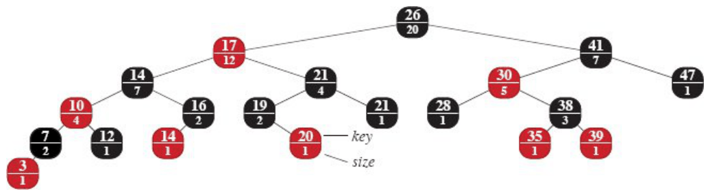
The root has key 26 and size 20. Its left subtree has size 12, so the root has rank 13. The key 14 occurs twice: the black node has rank 5 and the red node has rank 6.根的关键字为 26，规模为 20。它的左子树规模为 12，所以根的秩为 13。关键字 14 出现了两次：黑节点的秩为 5，红节点的秩为 6。
For hand traces this chapter uses a small tree, tree A. Each line shows key, colour (B or R) and size in parentheses; L and R mark the left and right child. Its sorted keys are 5, 8, 12, 17, 20, 23, 30, 34, 38.手工演算时，本章使用一棵小树，即树 A。每一行给出关键字、颜色（B 或 R）以及括号中的规模；L 和 R 分别标记左子节点和右子节点。它排序后的关键字为 5、8、12、17、20、23、30、34、38。
20 B (9)
├── L: 12 R (4)
│ ├── L: 8 B (2)
│ │ └── L: 5 R (1)
│ └── R: 17 B (1)
└── R: 30 R (4)
├── L: 23 B (1)
└── R: 34 B (2)
└── R: 38 R (1)
Step 2: OS-SELECT第 2 步：OS-SELECT
In words: OS-SELECT = at each node, count how many elements come before it in its subtree, and go left, stop or go right.用文字表述：OS-SELECT = 在每个节点处，数出它子树中有多少元素排在它前面，然后向左走、停止或向右走。
The left subtree of \(x\) holds exactly the elements that come before \(x\) in its own subtree. So the rank of \(x\) inside its own subtree is \(r=x.\text{left}.\text{size}+1\). Here \(r\) is that local rank, for example \(r=5\) when the left subtree has 4 nodes.\(x\) 的左子树恰好包含在它自己的子树中排在 \(x\) 之前的那些元素。所以 \(x\) 在它自己子树中的秩为 \(r=x.\text{left}.\text{size}+1\)。这里 \(r\) 就是这个局部秩，例如当左子树有 4 个节点时，它为 \(r=5\)。
- If \(i=r\), then \(x\) is the answer.如果 \(i=r\)，那么 \(x\) 就是答案。
- If \(i<r\), the answer is in the left subtree: search there for the same \(i\).如果 \(i<r\)，答案在左子树中：在那里查找同一个 \(i\)。
- If \(i>r\), the answer is in the right subtree. The \(r\) elements (\(x\) and its left subtree) come before it, so search there for \(i-r\).如果 \(i>r\)，答案在右子树中。这 \(r\) 个元素（\(x\) 及其左子树）排在它前面，所以在右子树中查找 \(i-r\)。
OS-SELECT(x, i)
1 r = x.left.size + 1 // rank of x within the subtree rooted at x
2 if i == r
3 return x
4 elseif i < r
5 return OS-SELECT(x.left, i)
6 else return OS-SELECT(x.right, i - r)
- Line 1 computes \(r\) from the size of the left child.第 1 行根据左子节点的规模计算 \(r\)。
- Lines 2–3 stop when the rank matches.第 2–3 行在秩相符时停止。
- Line 5 goes left with the same \(i\); line 6 goes right with \(i-r\).第 5 行带着同样的 \(i\) 向左走；第 6 行带着 \(i-r\) 向右走。
Each call moves down one level and does \(O(1)\) work, so the time is \(O(\text{height})=O(\lg n)\).每次调用下降一层，做 \(O(1)\) 的工作，所以时间为 \(O(\text{height})=O(\lg n)\)。
Step 3: OS-RANK第 3 步：OS-RANK
In words: OS-RANK = start with the rank inside your own subtree, then climb to the root and add every node that comes before you.用文字表述：OS-RANK = 先取得你在自己子树中的秩，然后向上爬到根，并加上每个排在你前面的节点数。
When the climb leaves a right child \(y\), the parent \(y.p\) and its whole left subtree come before \(x\). Their number \(y.p.\text{left}.\text{size}+1\) is added. When the climb leaves a left child, nothing is added. This needs parent pointers.当向上爬时离开的是一个右子节点 \(y\)，父节点 \(y.p\) 及其整个左子树都排在 \(x\) 之前。它们的个数 \(y.p.\text{left}.\text{size}+1\) 要被加上。当向上爬时离开的是左子节点，则不加任何数。这需要父指针。
OS-RANK(T, x)
1 r = x.left.size + 1 // rank of x within the subtree rooted at x
2 y = x // root of the subtree being examined
3 while y ≠ T.root
4 if y == y.p.right // if y is the root of a right subtree ...
5 r = r + y.p.left.size + 1 // ... add in the parent and its left subtree
6 y = y.p // move y toward the root
7 return r
- Line 1 gives the local rank of \(x\); line 2 starts the climb at \(y=x\).第 1 行给出 \(x\) 的局部秩；第 2 行从 \(y=x\) 开始向上爬。
- Line 4 tests whether \(y\) is a right child; line 5 then adds the parent and its left subtree.第 4 行检测 \(y\) 是否为右子节点；第 5 行则加上父节点及其左子树。
- Line 6 moves one level up. The loop stops at the root, so it runs \(O(\lg n)\) times.第 6 行向上移动一层。循环在根处停止，所以它运行 \(O(\lg n)\) 次。
Why it is correct. The loop invariant (Section 1.3) is: at the start of each iteration, \(r\) is the rank of \(x.\text{key}\) in the subtree rooted at \(y\).为什么它是正确的。 循环不变式（第 1.3 节）是：每次迭代开始时，\(r\) 是 \(x.\text{key}\) 在以 \(y\) 为根的子树中的秩。
- Initialization: before the loop, \(y=x\) and \(r\) is the local rank of \(x\).初始化：在循环之前，\(y=x\) 和 \(r\) 是 \(x\) 的局部秩。
- Maintenance: moving from \(y\) to \(y.p\) adds the parent and the sibling subtree. If \(y\) is a left child, neither precedes \(x\), so \(r\) stays. If \(y\) is a right child, the parent and its left subtree precede \(x\), and line 5 adds exactly them.保持：从 \(y\) 移动到 \(y.p\) 时，加入的是父节点和兄弟子树。如果 \(y\) 是左子节点，二者都不排在 \(x\) 之前，所以 \(r\) 保持不变。如果 \(y\) 是右子节点，父节点及其左子树都排在 \(x\) 之前，第 5 行恰好把它们加上。
- Termination: at \(y=T.\text{root}\) the subtree is the whole tree, so \(r\) is the rank of \(x\) in \(T\).终止：在 \(y=T.\text{root}\) 处，子树就是整棵树，所以 \(r\) 是 \(x\) 在 \(T\) 中的秩。
Practice练习
Q1. (Trace) On tree A run (a) OS-SELECT(\(T.\text{root},7\)) and (b) OS-RANK for the node with key 17. Show each step.Q1.（手工演算）在树 A 上运行：（a）OS-SELECT(\(T.\text{root},7\))；（b）对关键字为 17 的结点运行 OS-RANK。给出每一步。
Answer
(a) At the root 20: \(r=4+1=5\) and \(7>5\), so go right with \(i=7-5=2\). At 30: \(r=1+1=2=i\), so return the node with key 30.（a）在根 20 处：\(r=4+1=5\) 与 \(7>5\)，因此以 \(i=7-5=2\) 向右走。在 30 处：\(r=1+1=2=i\)，因此返回关键字为 30 的结点。
(b) Start with \(r=0+1=1\), \(y=17\). 17 is the right child of 12: add \(2+1=3\), so \(r=4\), \(y=12\). 12 is the left child of 20: no change, \(y=20\). \(y\) is the root: return 4.（b）开始：\(r=0+1=1\)，\(y=17\)。17 是 12 的右孩子：加上 \(2+1=3\)，于是 \(r=4\)，\(y=12\)。12 是 20 的左孩子：不变，\(y=20\)。\(y\) 为根：返回 4。
Check against the sorted keys 5, 8, 12, 17, 20, 23, 30, 34, 38: the 7th is 30 and 17 is the 4th.对照排序后的关键字 5、8、12、17、20、23、30、34、38：第 7 小的是 30，17 为第 4 小。
Q2. (Code and design) (a) Write a nonrecursive OS-SELECT. (b) Given a node \(x\) and a natural number \(j\), show how to find the \(j\)th successor of \(x\) in the linear order in \(O(\lg n)\) time.Q2.（代码与设计）（a）编写一个非递归的 OS-SELECT。（b）给定结点 \(x\) 与自然数 \(j\)，说明如何在 \(O(\lg n)\) 时间内找到 \(x\) 在线性次序中的第 \(j\) 个后继。
Answer
(a) Replace the recursion by updating \(x\) and \(i\):（a）用更新 \(x\) 与 \(i\) 的方式代替递归：
OS-SELECT-ITERATIVE(x, i)
1 while true
2 r = x.left.size + 1
3 if i == r
4 return x
5 elseif i < r
6 x = x.left
7 else i = i - r
8 x = x.right
(b) Compute \(r=\) OS-RANK(\(T,x\)). If \(r+j>T.\text{root}.\text{size}\) there is no \(j\)th successor; otherwise return OS-SELECT(\(T.\text{root},r+j\)). Two \(O(\lg n)\) calls give \(O(\lg n)\). In tree A, \(x=12\) has rank 3, so its 4th successor is the element of rank 7, the key 30.（b）计算 \(r=\) 为 OS-RANK(\(T,x\))。若 \(r+j>T.\text{root}.\text{size}\)，则不存在第 \(j\) 个后继；否则返回 OS-SELECT(\(T.\text{root},r+j\))。两次 \(O(\lg n)\) 调用得到 \(O(\lg n)\)。在树 A 中，\(x=12\) 的秩为 3，因此它的第 4 个后继是秩为 7 的元素，即关键字 30。
思路：先用 OS-RANK 把结点换成名次，名次加 \(j\)，再用 OS-SELECT 换回结点。
Maintaining subtree sizes ★★维护子树大小
Goal. Show that insertion and deletion keep every size correct in \(O(\lg n)\) time, and do the size updates of an insertion by hand, rotations included.目标。 证明插入和删除都能在 \(O(\lg n)\) 时间内保持每个规模正确，并手工完成一次插入的规模更新（包括旋转）。
Sizes are useful only if updates keep them correct without raising the \(O(\lg n)\) cost. Insertion and deletion in a red-black tree both have two phases (Chapter 10): the search-tree step, then a fix-up with recolouring and rotations. Insertion makes at most 2 rotations and deletion at most 3.规模信息只有在更新时能保持正确，又不提高 \(O(\lg n)\) 的代价时，才有用。红黑树中的插入和删除都分两个阶段（第 10 章）：先是搜索树的步骤，然后是通过重新着色和旋转进行的修复。插入至多做 2 次旋转，删除至多做 3 次。
Step 1: phase 1, the search-tree step第 1 步：第一阶段，搜索树的步骤
In words: insertion adds 1 and deletion subtracts 1 on every node along one path to the root.用文字表述：插入时，沿一条通向根的路径上的每个节点都加 1；删除时则减 1。
- Insertion: walk down from the root to the place of the new node. Add 1 to \(x.\text{size}\) for every node \(x\) on the path. The new node gets size 1.插入：从根向下走到新节点的位置。对路径上的每个节点 \(x\)，把 \(x.\text{size}\)（规模）加 1。新节点的规模为 1。
- Deletion: one node is spliced out of the tree. It is \(z\) itself, or the successor \(y\) of \(z\) when \(z\) has two children. Subtract 1 from every node on the path from the old position of the spliced-out node up to the root.删除：从树中摘掉一个结点。被摘掉的结点要么是 \(z\) 本身，要么是 \(z\) 的后继 \(y\)（当 \(z\) 有两个孩子时）。然后，从被摘掉结点原来的位置一直到根，路径上每个结点的大小都减 1。
The path has \(O(\lg n)\) nodes, so phase 1 costs \(O(\lg n)\).这条路径上有 \(O(\lg n)\) 个结点，所以第 1 阶段的代价是 \(O(\lg n)\)。
Step 2: phase 2, rotations第 2 步：第 2 阶段，旋转
In words: a rotation changes the size of only two nodes: the node that moves up takes the old size of the node that moves down.用文字表述：一次旋转只改变两个结点的大小：向上移动的结点取得原来向下移动的结点的旧大小。
A rotation rearranges nodes inside one subtree but leaves its set of nodes unchanged. So no ancestor sees a different subtree. Only the two nodes joined by the rotated link, \(x\) and \(y\), get a wrong size. Two lines at the end of LEFT-ROTATE(\(T,x\)) repair them. RIGHT-ROTATE is symmetric.旋转只是重新排列一棵子树内部的结点，子树包含的结点集合不变。所以任何祖先看到的子树都没有变化。只有被旋转的那条连边两端的两个结点 \(x\) 和 \(y\) 会得到错误的大小。在 LEFT-ROTATE(\(T,x\)) 末尾加两行就能修正它们。RIGHT-ROTATE 与之对称。
13 y.size = x.size // y now roots the subtree that x rooted before
14 x.size = x.left.size + x.right.size + 1

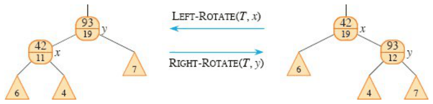
| Operation操作 | Phase 1阶段 1 | Phase 2阶段 2 | Total合计 |
|---|---|---|---|
| Insertion插入 | \(+1\) on the search path: \(O(\lg n)\) | \(\le2\) rotations, \(O(1)\) each | \(O(\lg n)\) |
| Deletion删除 | \(-1\) from the spliced-out position to the root: \(O(\lg n)\)从摘除位置到根的 \(-1\)：\(O(\lg n)\) | \(\le3\) rotations, \(O(1)\) each | \(O(\lg n)\) |
Practice练习
Q1. (Trace) Insert the key 36 into tree A. Give the sizes after phase 1, the rotations, and the final sizes.Q1.（手工演算）将关键字 36 插入树 A。给出阶段 1 之后的大小、旋转以及最终的大小。
Answer
The search path is 20, 30, 34, 38 and 36 becomes the red left child of 38. After phase 1 the sizes are 10, 5, 3, 2 and 1 for the new node. Red 36 under red 38 violates the properties; 38 is a right child, 36 a left child and the uncle is \(T.\text{nil}\), so two rotations are needed.搜索路径为 20、30、34、38，36 成为 38 的红色左孩子。阶段 1 之后，大小依次为 10、5、3、2，新结点的大小为 1。红结点 36 位于红结点 38 之下，违反了红黑性质；38 是右孩子，36 是左孩子，叔结点为 \(T.\text{nil}\)，因此需要两次旋转。
- Right rotation at 38: 36 moves up and takes size 2; 38 moves down and gets \(0+0+1=1\).在 38 处右旋：36 上升并取得大小 2；38 下降并得到 \(0+0+1=1\)。
- Left rotation at 34: 36 moves up and takes size 3; 34 moves down and gets \(0+0+1=1\).在 34 处左旋：36 上升并取得大小 3；34 下降并得到 \(0+0+1=1\)。
Final: 30 (size 5) has the right child 36 (black, size 3) with the red children 34 and 38 (size 1 each); the root has size 10. Insertion made 2 rotations, the maximum, each \(O(1)\).最终：30（大小为 5）的右孩子为 36（黑色，大小为 3），其红色孩子为 34 与 38（大小各为 1）；根的大小为 10。插入做了 2 次旋转（即最多的次数），每次的代价为 \(O(1)\)。
Q2. (Design) In the Josephus problem（约瑟夫问题）\(n\) people stand in a circle, numbered \(1,\dots,n\). Starting with person 1, count around the circle and remove every \(m\)th person; counting continues from the next person until nobody is left. The removal order is the \((n,m)\)-Josephus permutation; for \((7,3)\) it is \(\langle3,6,2,7,5,1,4\rangle\). Give an \(O(n\lg n)\) algorithm for any \(m\le n\) and an \(O(n)\) algorithm for constant \(m\).Q2.（设计）在约瑟夫问题中，\(n\) 个人站成一圈，编号为 \(1,\dots,n\)。从 1 号开始绕圈计数，每数到第 \(m\) 个人就将其移除；计数从下一个人继续，直到无人剩下。移除顺序称为 \((n,m)\)-约瑟夫排列；对于 \((7,3)\)，它为 \(\langle3,6,2,7,5,1,4\rangle\)。对任意 \(m\le n\) 给出一个 \(O(n\lg n)\) 算法，对于常数 \(m\) 给出一个 \(O(n)\) 算法。
Answer
Store the people \(1,\dots,n\) in an order-statistic tree keyed by their number. Let \(k\) be the current number of people and \(j\) the rank of the person where counting starts (\(j=1\) at first). Counting \(m\) people from rank \(j\) ends at rank \(r=((j+m-2)\bmod k)+1\), where \(a\bmod k\) is the remainder of \(a\) after division by \(k\); it wraps the count around the circle. Find that person with OS-SELECT, output the number, delete the person, and set \(j=r\) (the successor now has rank \(r\); the remainder wraps \(j\) back if the last person was removed) and \(k=k-1\). Each step costs \(O(\lg n)\), so \(n\) steps cost \(O(n\lg n)\).将人 \(1,\dots,n\) 存入以其编号为键的顺序统计树中。设 \(k\) 为当前人数，\(j\) 为计数开始处之人的秩（起初为 \(j=1\)）。从秩 \(j\) 起数 \(m\) 人，结束于秩 \(r=((j+m-2)\bmod k)+1\)，其中 \(a\bmod k\) 为 \(a\) 除以 \(k\) 后的余数；这使计数绕圈进行。用 OS-SELECT 找到该人，输出其编号，删除该人，然后设置 \(j=r\)（后继现在的秩为 \(r\)；若刚删除的是最后一人，则余数使 \(j\) 绕回），以及 \(k=k-1\)。每一步的代价为 \(O(\lg n)\)，因此 \(n\) 步的代价为 \(O(n\lg n)\)。
For \((7,3)\) the triples \((k,j,r)\) are \((7,1,3)\), \((6,3,5)\), \((5,5,2)\), \((4,2,4)\), \((3,4,3)\), \((2,3,1)\), \((1,1,1)\); they remove 3, 6, 2, 7, 5, 1, 4.对于 \((7,3)\)，三元组 \((k,j,r)\) 依次为 \((7,1,3)\)、\((6,3,5)\)、\((5,5,2)\)、\((4,2,4)\)、\((3,4,3)\)、\((2,3,1)\)、\((1,1,1)\)；它们移除的是 3、6、2、7、5、1、4。
For constant \(m\), a circular linked list removes each person after \(m-1\) steps: \(O(mn)=O(n)\) in total.对于常数 \(m\)，循环链表每经过 \(m-1\) 步就移除一人：总计 \(O(mn)=O(n)\)。
思路：用顺序统计树做“第 r 个还活着的人”的查找和删除，每步 \(O(\lg n)\)。
Augmenting red-black trees: the four-step method ★★★扩张红黑树：四步法
Goal. Name the four steps of augmentation, state the augmentation theorem with its proof idea, and use them to design and justify a new augmented tree.目标。 说出扩张的四个步骤，陈述扩张定理及其证明思路，并用这些步骤设计和论证一棵新的扩张树。
To augment（扩张）a data structure is to store extra information in a standard structure and add operations that use it. Order-statistic trees and interval trees (Section 11.4) are built in the same way.对一个数据结构进行扩张，就是在标准结构中存放额外信息，并增加使用这些信息的操作。顺序统计树和区间树（第 11.4 节）都是以同样的方式构造的。
Step 1: the four steps第 1 步：四个步骤
In words: augmenting = choose a structure, choose what to store, check that updates can keep it right, then write the new queries.用文字表述：扩张 = 选定一个结构，选定要存的信息，检查更新操作能否保持信息正确，然后再写出新的查询。
- Choose an underlying data structure.选择一个底层数据结构。
- Determine the additional information to maintain in it.确定需要在其中维护的附加信息。
- Verify that the basic modifying operations (insertion and deletion) can maintain the additional information.验证基本修改操作（插入和删除）能否维护这些额外信息。
- Develop the new operations.设计新操作。
The steps are not done strictly in this order. There is no point in choosing information and operations (steps 2 and 4) that step 3 cannot maintain efficiently. A red-black tree is a good start: SEARCH, MINIMUM, MAXIMUM, SUCCESSOR, PREDECESSOR, INSERT and DELETE all take \(O(\lg n)\) time.这些步骤并不一定严格按这个顺序进行。如果第 3 步无法高效地维护所选的信息和操作（第 2 步和第 4 步），那么选了也没有意义。红黑树是一个很好的起点：SEARCH、MINIMUM、MAXIMUM、SUCCESSOR、PREDECESSOR、INSERT 和 DELETE 的时间都是 \(O(\lg n)\)。
| Step步骤 | Order-statistic tree顺序统计树 | Interval tree (Section 11.4)区间树（第 11.4 节） |
|---|---|---|
| 1. Underlying structure1. 底层结构 | Red-black tree keyed on the elements以元素为键的红黑树 | Red-black tree keyed on \(x.\text{int}.\text{low}\)以 \(x.\text{int}.\text{low}\) 为键的红黑树 |
| 2. Additional information2. 附加信息 | \(x.\text{size}\): number of nodes in the subtree\(x.\text{size}\)：子树中的结点数 | \(x.\text{max}\): largest endpoint in the subtree\(x.\text{max}\)：子树中的最大端点 |
| 3. Maintenance3. 维护 | \(x.\text{size}=x.\text{left}.\text{size}+x.\text{right}.\text{size}+1\) | \(x.\text{max}=\max\{x.\text{int}.\text{high},x.\text{left}.\text{max},x.\text{right}.\text{max}\}\) |
| 4. New operations4. 新操作 | OS-SELECT, OS-RANK: \(O(\lg n)\) | INTERVAL-SEARCH: \(O(\lg n)\) |
Step 2: what to store第 2 步：存什么
In words: store information that changes in only a few nodes when the tree changes.用文字表述：存放的信息应当在树变化时只在少数结点上发生改变。
Suppose each node stored its rank in the whole tree. OS-SELECT and OS-RANK would be trivial. But inserting a new minimum raises the rank of every node, so the update costs \(\Theta(n)\). The subtree size changes only in the \(O(\lg n)\) ancestors of the new node. The extra information can also be pointers, for example to the minimum, maximum, successor and predecessor, which make these queries \(O(1)\).假设每个结点都存放它在整棵树中的秩。那么 OS-SELECT 和 OS-RANK 就很简单了。但插入一个新的最小值会使每个结点的秩都加 1，所以这次更新的代价是 \(\Theta(n)\)。而子树大小只会在新结点的 \(O(\lg n)\) 个祖先上改变。额外信息还可以是指针，比如指向最小值、最大值、后继和前驱的指针，这样这些查询就变成 \(O(1)\) 的了。
Step 3: the augmentation theorem第 3 步：扩张定理
In words: if a node's value depends only on the node and its two children, updates can keep it right at no extra asymptotic cost.用文字表述：如果一个结点的值只依赖该结点及其两个孩子，那么更新时就能把它维护正确，而且不会增加渐近代价。
Theorem. Let \(f\) be an attribute that augments a red-black tree \(T\) of \(n\) nodes. Suppose \(x.f\) depends only on the information in \(x\), \(x.\text{left}\) and \(x.\text{right}\) (possibly including \(x.\text{left}.f\) and \(x.\text{right}.f\)), and can be computed from it in \(O(1)\) time. Then insertion and deletion can maintain \(f\) in all nodes without asymptotically changing their \(O(\lg n)\) running times.定理。 设 \(f\) 是扩张一棵含 \(n\) 个结点的红黑树 \(T\) 的一个属性。假设 \(x.f\) 只依赖于 \(x\)、\(x.\text{left}\) 和 \(x.\text{right}\) 中的信息（可能还包括 \(x.\text{left}.f\) 和 \(x.\text{right}.f\)），并且可以在 \(O(1)\) 时间内由这些信息算出。那么插入和删除操作就能维护所有结点上的 \(f\)，而且不会渐近地改变它们的 \(O(\lg n)\) 运行时间。
Proof idea. A change to \(x.f\) can invalidate only \(x.p.f\), then \(x.p.p.f\), and so on up to the root, because nothing else depends on \(x.f\). Repairing after one change costs at most the height, \(O(\lg n)\).证明思路。 对 \(x.f\) 的一次改变，只会使 \(x.p.f\) 失效，然后是 \(x.p.p.f\)，依此类推直到根，因为没有别的结点依赖于 \(x.f\)。一次改变之后的修复代价至多为树高 \(O(\lg n)\)。
- Insertion, phase 1: the new node has two \(T.\text{nil}\) children, so its \(f\) takes \(O(1)\). The change climbs to the root in \(O(\lg n)\).插入，第 1 阶段：新结点有两个 \(T.\text{nil}\) 孩子，所以它的 \(f\) 取值为 \(O(1)\)。这个变化沿路径向上一直传到根，代价为 \(O(\lg n)\)。
- Insertion, phase 2: only rotations change the structure. There are at most 2, each changes two nodes, and each repair costs \(O(\lg n)\).插入，第 2 阶段：只有旋转会改变树的结构。旋转至多 2 次，每次改变两个结点，每次修复的代价为 \(O(\lg n)\)。
- Deletion: phase 1 changes one simple path, \(O(\lg n)\). Phase 2 has at most 3 rotations, each \(O(\lg n)\).删除：第 1 阶段改变一条简单路径，即 \(O(\lg n)\)。第 2 阶段至多有 3 次旋转，每次 \(O(\lg n)\)。
The constant number of rotations is essential. With \(\Theta(\lg n)\) rotations and a repair of \(O(\lg n)\) each, one operation would cost \(\Theta(\lg^2 n)\). An AVL tree may rotate \(\Theta(\lg n)\) times on a deletion. For size and max the repair after a rotation costs only \(O(1)\).旋转次数是常数，这一点很关键。如果旋转次数为 \(\Theta(\lg n)\)，且每次修复的代价为 \(O(\lg n)\)，那么一次操作的代价就是 \(\Theta(\lg^2 n)\)。AVL 树在删除时可能要旋转 \(\Theta(\lg n)\) 次。而对于大小和最大值来说，旋转之后的修复代价只有 \(O(1)\)。
Practice练习
Q1. (True or false) "The black-height of every node of a red-black tree can be stored as an attribute without changing the asymptotic cost of the operations; the depth of every node cannot." Decide and justify.Q1.（判断）“红黑树中每个结点的黑高都可以作为属性存储，而不改变操作的渐近代价；每个结点的深度则不能。”请判断，并说明理由。
Answer
True. The black-height（黑高）\(x.bh\) is the number of black nodes on a path from \(x\) (not counting \(x\)) down to a leaf. It follows from one child: \(x.bh=x.\text{left}.bh\), plus 1 if \(x.\text{left}\) is black, with \(T.\text{nil}.bh=0\). This is computed in \(O(1)\) from the children of \(x\), so the augmentation theorem applies. The depth of \(x\) depends on its ancestors, not on its descendants. A rotation near the root moves all nodes of one subtree one level down and all nodes of another one level up, so up to \(\Theta(n)\) depths change at once, which would destroy the \(O(\lg n)\) bounds.正确。结点的黑高 \(x.bh\) 是从 \(x\)（不计 \(x\)）向下到某个叶结点的路径上黑结点的个数。它由一个孩子推出：\(x.bh=x.\text{left}.bh\)，若 \(x.\text{left}\) 为黑色则再加 1，其中 \(T.\text{nil}.bh=0\)。这可以在 \(O(1)\) 时间内由 \(x\) 的孩子算出，因此扩张定理适用。结点 \(x\) 的深度取决于其祖先，而不取决于其后代。靠近根的一次旋转会使一棵子树的全部结点下降一层，使另一棵子树的全部结点上升一层，因此至多 \(\Theta(n)\) 个深度同时改变，这将破坏 \(O(\lg n)\) 的界。
Q2. (Design) A dynamic set of closed intervals must support INTERVAL-INSERT, INTERVAL-DELETE and FIND-POM, which returns a point of maximum overlap (a point covered by the largest number of intervals). (a) Show that a point of maximum overlap can be chosen among the endpoints. (b) Design the structure with the four steps.Q2.（设计）动态的闭区间集合必须支持 INTERVAL-INSERT、INTERVAL-DELETE 和 FIND-POM；FIND-POM 返回一个最大重叠点（被最多区间覆盖的点）。（a）证明最大重叠点可以在端点中选取。（b）用四步法设计该结构。
Answer
(a) Let \(p\) be a point of maximum overlap that is not an endpoint, and let \(e\) be the smallest endpoint greater than \(p\) (if there is none, no interval contains \(p\)). Every interval containing \(p\) has its high endpoint \(>p\), hence \(\ge e\), and its low endpoint \(<p<e\), so it contains \(e\). Thus \(e\) is covered at least as often as \(p\).（a）设 \(p\) 为一个不是端点的最大重叠点，并设 \(e\) 为大于 \(p\) 的最小端点（若不存在，则没有区间包含 \(p\)）。包含 \(p\) 的每个区间，其高端点为 \(>p\)，因而 \(\ge e\)，并且其低端点为 \(<p<e\)，所以它也包含 \(e\)。于是 \(e\) 被覆盖的次数至少与 \(p\) 相同。
(b) Step 1: a red-black tree that holds the \(2n\) endpoints sorted by coordinate, left endpoints before right endpoints on ties (touching closed intervals overlap); \(x.v=+1\) for a left endpoint and \(-1\) for a right endpoint. Step 2: \(x.\text{sum}\) = the sum of the \(v\) values in the subtree; \(x.\text{pre}\) = the maximum prefix sum（前缀和）, the largest sum of the first \(j\) values of the inorder listing over all \(j\ge1\); \(x.\text{pt}\) = a coordinate where it is reached. Step 3: \(x.\text{sum}=x.\text{left}.\text{sum}+x.v+x.\text{right}.\text{sum}\) and \(x.\text{pre}=\max\{x.\text{left}.\text{pre},\ x.\text{left}.\text{sum}+x.v,\ x.\text{left}.\text{sum}+x.v+x.\text{right}.\text{pre}\}\), with \(\text{pt}\) following the winner (\(T.\text{nil}.\text{sum}=0\), \(T.\text{nil}.\text{pre}=-\infty\)). Both are \(O(1)\) from the children, so the theorem gives \(O(\lg n)\) for INTERVAL-INSERT and INTERVAL-DELETE (two nodes per interval). Step 4: FIND-POM returns \(T.\text{root}.\text{pt}\) in \(O(1)\). A prefix sum counts the intervals that have started and not yet ended, so its maximum is the maximum overlap.（b）第 1 步：一棵红黑树，保存 \(2n\) 个端点，并按坐标排序；坐标相同时左端点排在右端点之前（相接的闭区间重叠）。左端点取值 \(x.v=+1\)，右端点取值 \(-1\)。第 2 步：\(x.\text{sum}\) 为子树中 \(v\) 值之和；\(x.\text{pre}\) 为最大前缀和，即对所有 \(j\ge1\)，中序列表前 \(j\) 个值之和的最大者；\(x.\text{pt}\) 为达到该值的一个坐标。第 3 步：维护 \(x.\text{sum}=x.\text{left}.\text{sum}+x.v+x.\text{right}.\text{sum}\) 与 \(x.\text{pre}=\max\{x.\text{left}.\text{pre},\ x.\text{left}.\text{sum}+x.v,\ x.\text{left}.\text{sum}+x.v+x.\text{right}.\text{pre}\}\)，并且 \(\text{pt}\) 跟随胜出者（\(T.\text{nil}.\text{sum}=0\)，\(T.\text{nil}.\text{pre}=-\infty\)）。两者都可由孩子在 \(O(1)\) 时间内算出，因此扩张定理给出 INTERVAL-INSERT 与 INTERVAL-DELETE 的代价为 \(O(\lg n)\)（每个区间对应两个结点）。第 4 步：FIND-POM 在 \(O(1)\) 时间内返回 \(T.\text{root}.\text{pt}\)。前缀和统计的是已经开始而尚未结束的区间，因此其最大值即为最大重叠数。
Example: \([1,5],[3,8],[6,10],[9,12]\) give the endpoints \(1^+,3^+,5^-,6^+,8^-,9^+,10^-,12^-\) with prefix sums \(1,2,1,2,1,2,1,0\): the maximum overlap is 2, first reached at the point 3.例：\([1,5],[3,8],[6,10],[9,12]\) 给出端点 \(1^+,3^+,5^-,6^+,8^-,9^+,10^-,12^-\)，其前缀和为 \(1,2,1,2,1,2,1,0\)：最大重叠为 2，并且首次到达于点 3。
Interval trees ★★★区间树
Goal. Compute the max values of an interval tree, trace INTERVAL-SEARCH on it, and justify the design with the four steps.目标。 计算区间树的最大值，在它上面手工演算 INTERVAL-SEARCH，并用这四个步骤论证这一设计。
Intervals stand for events that occupy a continuous period of time. An interval tree answers: which stored event overlaps this period?区间表示占用一段连续时间的事件。区间树要回答的问题是：存放的事件中，哪一个与这段时间重叠？
Step 1: overlap第 1 步：重叠
In words: two closed intervals overlap when each one starts no later than the other one ends.用文字表述：两个闭区间重叠，就是每个区间的起点都不晚于另一个区间的终点。
Two intervals \(i\) and \(i'\) overlap（重叠）if they share at least one point.若两个区间 \(i\) 和 \(i'\) 至少有一个公共点，则称它们重叠。
The interval trichotomy（区间三分律）says that for any two intervals exactly one of three cases holds: (a) \(i\) and \(i'\) overlap; (b) \(i\) is to the left of \(i'\), that is \(i.\text{high}<i'.\text{low}\); (c) \(i\) is to the right of \(i'\), that is \(i'.\text{high}<i.\text{low}\).区间三分律指出：对任意两个区间，下面三种情况恰有一种成立：(a) \(i\) 与 \(i'\) 重叠；(b) \(i\) 在 \(i'\) 的左边，即 \(i.\text{high}<i'.\text{low}\)；(c) \(i\) 在 \(i'\) 的右边，即 \(i'.\text{high}<i.\text{low}\)。

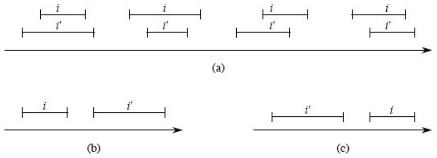
Step 2: the design第 2 步：设计
In words: an interval tree = a red-black tree sorted by left endpoint, where every node also remembers the largest right endpoint below it.用文字表述：区间树 = 按左端点排序的红黑树，并且每个结点还记住其子树中最大的右端点。
An interval tree（区间树）maintains a dynamic set of elements, each with an interval \(x.\text{int}\). It supports INTERVAL-INSERT(\(T,x\)), INTERVAL-DELETE(\(T,x\)) and INTERVAL-SEARCH(\(T,i\)). The last returns an element whose interval overlaps \(i\), or \(T.\text{nil}\) if there is none.区间树维护一个动态集合，集合中每个元素都带有一个区间 \(x.\text{int}\)。它支持 INTERVAL-INSERT(\(T,x\))、INTERVAL-DELETE(\(T,x\)) 和 INTERVAL-SEARCH(\(T,i\))。最后一个操作返回一个区间与 \(i\) 重叠的元素；若不存在这样的元素，则返回 \(T.\text{nil}\)。
- Underlying structure. A red-black tree whose key is the low endpoint \(x.\text{int}.\text{low}\). An inorder walk lists the intervals sorted by low endpoint.基础结构。 一棵以低端点 \(x.\text{int}.\text{low}\) 为键的红黑树。中序遍历按低端点列出所有区间，结果是有序的。
- Additional information. \(x.\text{max}\), the maximum value of any interval endpoint stored in the subtree rooted at \(x\).附加信息。\(x.\text{max}\)，即以 \(x\) 为根的子树中存储的任何区间端点的最大值。
- Maintenance. \(x.\text{max}\) follows from the node and its children, so the augmentation theorem gives \(O(\lg n)\) insertion and deletion.维护。 \(x.\text{max}\) 只由结点及其孩子决定，因此由扩张定理，插入和删除仍保持 \(O(\lg n)\) 的时间。
- New operation. INTERVAL-SEARCH.新操作。INTERVAL-SEARCH。

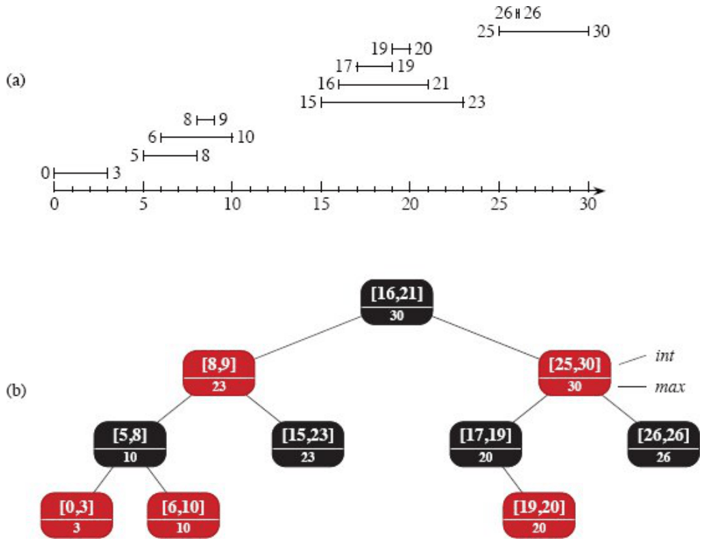
The ten intervals are \([0,3]\), \([5,8]\), \([6,10]\), \([8,9]\), \([15,23]\), \([16,21]\), \([17,19]\), \([19,20]\), \([25,30]\) and \([26,26]\). The root \([16,21]\) has max 30. Its left child \([8,9]\) has max 23, which comes from \([15,23]\). Its right child \([25,30]\) has max 30.这十个区间依次是 \([0,3]\)、\([5,8]\)、\([6,10]\)、\([8,9]\)、\([15,23]\)、\([16,21]\)、\([17,19]\)、\([19,20]\)、\([25,30]\) 和 \([26,26]\)。根结点 \([16,21]\) 的最大值为 30。它的左孩子 \([8,9]\) 的最大值为 23，来自 \([15,23]\)。它的右孩子 \([25,30]\) 的最大值为 30。
Step 3: INTERVAL-SEARCH第 3 步：INTERVAL-SEARCH
In words: INTERVAL-SEARCH = at each node, go left if the left subtree reaches far enough to the right, otherwise go right.用文字表述：INTERVAL-SEARCH = 在每个结点处，如果左子树向右延伸得足够远，就向左走，否则向右走。
INTERVAL-SEARCH(T, i)
1 x = T.root
2 while x ≠ T.nil and i does not overlap x.int
3 if x.left ≠ T.nil and x.left.max ≥ i.low
4 x = x.left // overlap in left subtree, or no overlap in right subtree
5 else x = x.right // no overlap in left subtree
6 return x
- Line 2 stops when \(x\) is the sentinel or its interval overlaps \(i\).第 2 行在 \(x\) 是哨兵，或其区间与 \(i\) 重叠时停止。
- Line 3 is the direction test. It uses the max of the left child, not \(x.\text{max}\), and it requires a left child to exist.第 3 行是方向判断。它用的是左孩子的最大值，而不是 \(x.\text{max}\)，并且要求左孩子存在。
- Line 4 goes left; line 5 goes right.第 4 行向左走；第 5 行向右走。
- Line 6 returns the overlapping node, or \(T.\text{nil}\) if the search fell off the tree.第 6 行返回与之重叠的结点；如果搜索走出了树，则返回 \(T.\text{nil}\)。
The search follows one downward path and does \(O(1)\) work per node. The time is \(O(\lg n)\). A point query "is \(p\) covered?" is the search for \(i=[p,p]\).搜索沿着一条向下的路径走，每个结点上的工作量为 \(O(1)\)。因此时间为 \(O(\lg n)\)。问“\(p\) 是否被覆盖”的点查询，就是对 \(i=[p,p]\) 的搜索。
Practice练习
Q1. (Trace) On the ten-interval tree run INTERVAL-SEARCH for (a) \(i=[27,29]\) and (b) \(i=[4,4]\).Q1.（手工演算）在十个区间的树上，对（a）\(i=[27,29]\) 与（b）\(i=[4,4]\) 运行 INTERVAL-SEARCH。
Answer
(a) The root \([16,21]\) does not overlap (\(21<27\)) and \(x.\text{left}.\text{max}=23<27\), so go right to \([25,30]\). It overlaps (\(25\le29\) and \(27\le30\)): return it.（a）根 \([16,21]\) 不重叠（\(21<27\)），并且 \(x.\text{left}.\text{max}=23<27\)，因此向右走到 \([25,30]\)。它重叠（\(25\le29\) 与 \(27\le30\)）：返回它。
(b) Root \([16,21]\): no overlap, \(23\ge4\), go left. \([8,9]\): no overlap (\(4<8\)), left max \(10\ge4\), go left. \([5,8]\): no overlap (\(4<5\)), left max \(3<4\), go right. \([6,10]\): no overlap (\(4<6\)), no left child, go right: \(T.\text{nil}\). The procedure returns \(T.\text{nil}\): no interval contains 4.（b）根 \([16,21]\)：不重叠，\(23\ge4\)，向左走。\([8,9]\)：不重叠（\(4<8\)），左子树的 max 为 \(10\ge4\)，向左走。\([5,8]\)：不重叠（\(4<5\)），左子树的 max 为 \(3<4\)，向右走。\([6,10]\)：不重叠（\(4<6\)），没有左孩子，向右走：\(T.\text{nil}\)。过程返回 \(T.\text{nil}\)：没有区间包含 4。
Q2. (True or false) "INTERVAL-SEARCH returns the overlapping interval with the smallest low endpoint." Decide and justify with an example.Q2.（判断）“INTERVAL-SEARCH 返回低端点最小的那个重叠区间。”请判断，并举例说明。
Answer
False. For \(i=[17,19]\) the root \([16,21]\) overlaps \(i\), so it is returned at once. But \([15,23]\) also overlaps \(i\) (\(15\le19\) and \(17\le23\)) and has a smaller low endpoint. The procedure stops at the first overlapping node on its path; it is not an ordered search for the minimum.错误。对于 \(i=[17,19]\)，根 \([16,21]\) 与 \(i\) 重叠，因此它立即被返回。但 \([15,23]\) 也与 \(i\) 重叠（\(15\le19\) 与 \(17\le23\)），并且其低端点更小。过程在其路径上遇到的第一个重叠结点处停止；它并不是对最小值的有序搜索。
Why INTERVAL-SEARCH is correct ★★为什么 INTERVAL-SEARCH 是正确的
Goal. Prove that both moves of INTERVAL-SEARCH are safe, so that a returned \(T.\text{nil}\) really means that no stored interval overlaps \(i\).目标。 证明 INTERVAL-SEARCH 的两种走法都是安全的，这样返回的 \(T.\text{nil}\) 才真的意味着没有任何存储的区间与 \(i\) 重叠。
Theorem. Any execution of INTERVAL-SEARCH(\(T,i\)) either returns a node whose interval overlaps \(i\), or returns \(T.\text{nil}\) and \(T\) contains no interval overlapping \(i\).定理。 INTERVAL-SEARCH(\(T,i\)) 的任一次执行，要么返回一个区间与 \(i\) 重叠的结点，要么返回 \(T.\text{nil}\)，并且此时 \(T\) 中不包含任何与 \(i\) 重叠的区间。
The loop ends when \(x=T.\text{nil}\) or \(i\) overlaps \(x.\text{int}\). Returning \(x\) in the second case is obviously correct. So the proof must show that, at a node that does not overlap \(i\), each move loses no overlap.循环在 \(x=T.\text{nil}\) 或 \(i\) 与 \(x.\text{int}\) 重叠时结束。第二种情况下返回 \(x\) 显然是正确的。所以证明要说明：在一个与 \(i\) 不重叠的结点上，每一步移动都不会漏掉任何重叠的区间。
In words: going right is safe because everything on the left ends too early; going left is safe because, if the left has no overlap, everything on the right starts too late.用文字表述：向右走是安全的，因为左边的所有区间都结束得太早；向左走也是安全的，因为如果左边没有重叠的区间，那么右边的所有区间都开始得太晚。
Going right (line 5)向右走（第 5 行）
By the test in line 3, \(x.\text{left}=T.\text{nil}\) or \(x.\text{left}.\text{max}<i.\text{low}\).由第 3 行的判断，\(x.\text{left}=T.\text{nil}\) 或 \(x.\text{left}.\text{max}<i.\text{low}\) 成立。
- An empty left subtree has no overlap.空的左子树中没有重叠的区间。
- Otherwise every interval \(i'\) in the left subtree has \(i'.\text{high}\le x.\text{left}.\text{max}<i.\text{low}\).否则，左子树中的每个区间 \(i'\) 都满足 \(i'.\text{high}\le x.\text{left}.\text{max}<i.\text{low}\)。
- By the trichotomy, \(i'\) lies to the left of \(i\) and does not overlap it.由三分律，\(i'\) 位于 \(i\) 的左边，并且与它不重叠。
Going left (line 4)向左走（第 4 行）
Here \(x.\text{left}\ne T.\text{nil}\) and \(x.\text{left}.\text{max}\ge i.\text{low}\). If the left subtree contains an overlap, going left finds one. Suppose it contains none. We show that the right subtree contains none either.这里 \(x.\text{left}\ne T.\text{nil}\) 且 \(x.\text{left}.\text{max}\ge i.\text{low}\)。如果左子树包含重叠的区间，那么向左走就能找到一个。现在假设左子树不包含任何重叠的区间。我们证明右子树也不包含任何重叠的区间。
- By the definition of max, the left subtree has an interval \(i'\) with \(i'.\text{high}=x.\text{left}.\text{max}\ge i.\text{low}\).由最大值的定义，左子树中存在一个区间 \(i'\)，满足 \(i'.\text{high}=x.\text{left}.\text{max}\ge i.\text{low}\)。
- \(i'\) does not overlap \(i\) and \(i'.\text{high}\ge i.\text{low}\), so the trichotomy gives \(i.\text{high}<i'.\text{low}\).\(i'\) 与 \(i\) 和 \(i'.\text{high}\ge i.\text{low}\) 都不重叠，所以由三分律得 \(i.\text{high}<i'.\text{low}\)。
- The tree is keyed on low endpoints. So \(i'.\text{low}\le x.\text{int}.\text{low}\le i''.\text{low}\) for every interval \(i''\) in the right subtree.这棵树以低端点为键。所以对右子树中的每个区间 \(i''\)，都有 \(i'.\text{low}\le x.\text{int}.\text{low}\le i''.\text{low}\)。
- Hence \(i.\text{high}<i''.\text{low}\). Every \(i''\) lies to the right of \(i\) and does not overlap it.因此 \(i.\text{high}<i''.\text{low}\)。每个 \(i''\) 都位于 \(i\) 的右边，并且与它不重叠。

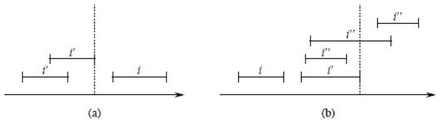
Practice练习
Q1. (Explain) Which step of the proof of the "going left" case uses that the tree is keyed on the low endpoint? Describe the mirror-image design keyed on the high endpoint.Q1.（解释）在“向左走”情形的证明中，哪一步用到了树以低端点为键？请描述以高端点为键的镜像设计。
Answer
The step \(i'.\text{low}\le x.\text{int}.\text{low}\le i''.\text{low}\), which says that every interval of the right subtree starts at least as late as \(i'\). With another key this fails. Mirror image: key on the high endpoint and store \(x.\text{min}\), the smallest low endpoint in the subtree. Go right iff \(x.\text{right}\ne T.\text{nil}\) and \(x.\text{right}.\text{min}\le i.\text{high}\), otherwise go left; the proof is the same with left and right exchanged.所用的是步骤 \(i'.\text{low}\le x.\text{int}.\text{low}\le i''.\text{low}\)，它说明右子树中的每个区间开始得都不早于 \(i'\)。若换用其他键，这一点便不成立。镜像设计：以高端点为键，并存储 \(x.\text{min}\)，即子树中的最小低端点。当且仅当 \(x.\text{right}\ne T.\text{nil}\) 且 \(x.\text{right}.\text{min}\le i.\text{high}\) 时向右走，否则向左走；证明与左右互换后的完全相同。
Q2. (Design) Describe how to list all intervals of an interval tree that overlap \(i\), in time \(O((k+1)\lg n)\) where \(k\) is the number of reported intervals.Q2.（设计）描述如何列出区间树中所有与 \(i\) 重叠的区间，所用时间为 \(O((k+1)\lg n)\)，其中 \(k\) 为报告的区间个数。
Answer
Repeat: \(x=\) INTERVAL-SEARCH(\(T,i\)); if \(x=T.\text{nil}\) stop; otherwise output \(x.\text{int}\), call INTERVAL-DELETE(\(T,x\)) and remember \(x\). At the end re-insert the \(k\) removed elements. Each deletion leaves a valid interval tree for the remaining intervals, so the next search finds another overlapping interval if one exists. There are \(k+1\) searches, \(k\) deletions and \(k\) insertions, each \(O(\lg n)\): \(O((k+1)\lg n)\) in total. When \(k\) is close to \(n\), an inorder walk that tests every interval costs only \(O(n)\).重复执行：\(x=\) INTERVAL-SEARCH(\(T,i\))；若 \(x=T.\text{nil}\)，则停止；否则输出 \(x.\text{int}\)，调用 INTERVAL-DELETE(\(T,x\))，并记下 \(x\)。最后把移除的 \(k\) 个元素重新插入。每次删除后，树对剩余区间仍是合法的区间树，因此若存在另一个重叠区间，下一次搜索就能找到它。共有 \(k+1\) 次搜索、\(k\) 次删除和 \(k\) 次插入，每一项的代价为 \(O(\lg n)\)：总计 \(O((k+1)\lg n)\)。当 \(k\) 接近 \(n\) 时，对每个区间都做测试的中序遍历只需 \(O(n)\)。
Terms to recognise ★需要认识的术语
| Term术语 | What to know要知道什么 |
|---|---|
| Augmented structure扩张结构 | A standard structure with extra stored information and new operations built on it.在标准结构上增加额外存放的信息，并在其上构建新操作。 |
| Rank versus size秩与大小 | A stored global rank costs \(\Theta(n)\) per insertion. A subtree size changes only on one root path.存放全局秩时，每次插入的代价为 \(\Theta(n)\)。子树大小只在一条根路径上改变。 |
| Counting keys in a range统计区间内的键数 | Two descents with sizes: number of keys \(\le b\) minus number of keys \(<a\). Time \(O(\lg n)\).用大小做两次向下查找：键数 \(\le b\) 减去键数 \(<a\)。时间为 \(O(\lg n)\)。 |
| Counting inversions统计逆序对 | Insert the elements in order and add \(j-r_j\) for the rank \(r_j\) of the \(j\)th one. Time \(O(n\lg n)\).依次插入元素，并把 \(j-r_j\) 累加到第 \(j\) 个元素的秩 \(r_j\) 上。时间为 \(O(n\lg n)\)。 |
| Josephus problem约瑟夫问题 | Keep the people in an order-statistic tree. OS-SELECT finds the next one to remove, then delete. Time \(O(n\lg n)\).把人放在顺序统计树中。用 OS-SELECT 找到下一个要移除的人，然后删除。时间为 \(O(n\lg n)\)。 |
| Black-height黑高 | \(x.bh\) is computed from one child in \(O(1)\), so it can be stored. The depth cannot, because it depends on ancestors.\(x.bh\) 可以由一个孩子在 \(O(1)\) 内算出，所以可以存放。深度则不行，因为它依赖祖先。 |
| Associative repair结合律修复 | For \(\otimes\) associative (for example \(+\) or \(\max\)), a rotation needs only an \(O(1)\) repair of \(x.f\).若 \(\otimes\) 满足结合律（例如 \(+\) 或 \(\max\)），一次旋转只需对 \(x.f\) 做 \(O(1)\) 的修复。 |
| MIN-GAP | Store min, max and smallest gap in each node of a red-black tree. MIN-GAP reads the root in \(O(1)\).在红黑树的每个结点中存放最小值、最大值和最小间距。MIN-GAP 只需在 \(O(1)\) 时间内读取根结点。 |
| Point of maximum overlap最大重叠点 | Store \(\pm1\) for endpoints in a red-black tree, with sum and maximum prefix sum per node. Read the root.在红黑树中为端点存放 \(\pm1\)，每个结点存放和与最大前缀和。读取根结点即可。 |
| Listing all overlaps列出所有重叠 | Search, output and delete repeatedly, then re-insert. Time \(O((k+1)\lg n)\) for \(k\) reported intervals.反复进行查找、输出并删除，然后再重新插入。对 \(k\) 个报告的区间，时间为 \(O((k+1)\lg n)\)。 |
| Tree keyed on high endpoint以高端点为键的树 | Mirror design: store \(x.\text{min}\), the smallest low endpoint, and exchange left and right.镜像设计：存放 \(x.\text{min}\)（最小的低端点），并交换左右。 |
Exam-style questions考试题型练习
Q1. (Trace, 12 marks) Use tree A (Section 11.1). (a) Run OS-SELECT(\(T.\text{root},8\)) and show \(r\) at each node (3 marks). (b) Run OS-RANK for the node with key 23 (3 marks). (c) Insert the key 27, which becomes a red leaf so that no rotation is needed: which sizes change, and to what? (3 marks) (d) Explain why each of the three operations takes \(O(\lg n)\) time (3 marks).Q1.（手工演算，12 分）使用树 A（第 11.1 节）。(a) 执行 OS-SELECT(\(T.\text{root},8\))，并在每个结点上标出 \(r\)（3 分）。(b) 对键为 23 的结点执行 OS-RANK（3 分）。(c) 插入键 27，它成为一个红色叶结点，因此不需要旋转：哪些大小会改变，改成多少？（3 分）(d) 解释这三种操作各需要 \(O(\lg n)\) 时间的原因（3 分）。
Answer
(a) Root 20: \(r=4+1=5\), \(8>5\), go right with \(i=8-5=3\). Node 30: \(r=1+1=2\), \(3>2\), go right with \(i=3-2=1\). Node 34: \(r=0+1=1=i\): return the node with key 34.（a）根 20：\(r=4+1=5\)，\(8>5\)，向右走 \(i=8-5=3\)。结点 30：\(r=1+1=2\)，\(3>2\)，向右走 \(i=3-2=1\)。结点 34：\(r=0+1=1=i\)：返回关键字为 34 的结点。
(b) Start with \(r=0+1=1\), \(y=23\). 23 is the left child of 30: no change, \(y=30\). 30 is the right child of 20: add \(4+1=5\), so \(r=6\), \(y=20\), the root. Return 6.（b）开始：\(r=0+1=1\)，\(y=23\)。23 是 30 的左孩子：不变，\(y=30\)。30 是 20 的右孩子：加上 \(4+1=5\)，于是 \(r=6\)，\(y=20\)，即根。返回 6。
(c) The search path is 20 (27>20, right), 30 (27<30, left), 23 (27>23, right), so 27 becomes the right child of 23. Phase 1 adds 1 to the sizes on the path: 20 becomes 10, 30 becomes 5, 23 becomes 2; the new node has size 1. Its parent 23 is black, so there is no violation and no rotation.（c）搜索路径为：20（27 > 20，向右）、30（27 < 30，向左）、23（27 > 23，向右），因此 27 成为 23 的右孩子。阶段 1 将路径上的大小各加 1：20 变为 10，30 变为 5，23 变为 2；新结点的大小为 1。其父结点 23 为黑色，因此没有违反，也无需旋转。
(d) OS-SELECT goes down one level per call and OS-RANK climbs one level per iteration, \(O(1)\) each, and the height of a red-black tree is \(O(\lg n)\). Insertion adds 1 along one root path of \(O(\lg n)\) nodes and makes at most 2 rotations at \(O(1)\) each.（d）OS-SELECT 每次调用下降一层，OS-RANK 每次迭代上升一层，二者的代价各为 \(O(1)\)，而红黑树的高度为 \(O(\lg n)\)。插入沿一条含 \(O(\lg n)\) 个结点的根路径将大小加 1，并至多做 2 次旋转，每次旋转的代价为 \(O(1)\)。
Q2. (Design, 10 marks) A dynamic set \(Q\) of numbers must support INSERT, DELETE, SEARCH and MIN-GAP(\(Q\)), the smallest absolute difference between two numbers of \(Q\). (a) Apply the four-step method (6 marks). (b) For \(Q=\{1,5,9,15,18,22\}\) stored with root 15, left child 5 (leaves 1 and 9) and right child 18 (right child 22), give the attributes and MIN-GAP (2 marks). (c) State the running times (2 marks).Q2.（设计，10 分）一个数的动态集合 \(Q\) 必须支持 INSERT、DELETE、SEARCH 以及 MIN-GAP(\(Q\))，即 \(Q\) 中两个数之间的最小绝对差。（a）应用四步法（6 分）。（b）对于以根为 15 存储的 \(Q=\{1,5,9,15,18,22\}\)，其左孩子为 5（叶结点 1 与 9），右孩子为 18（其右孩子为 22），给出其属性与 MIN-GAP（2 分）。（c）给出运行时间（2 分）。
Answer
(a) Step 1: a red-black tree keyed on the numbers (SEARCH, INSERT and DELETE in \(O(\lg n)\)). Step 2: every node stores \(x.\text{min}\) and \(x.\text{max}\), the smallest and largest key of its subtree, and \(x.\text{gap}\), the smallest difference between two keys of its subtree (\(\infty\) if there are fewer than two). Step 3: \(x.\text{min}=x.\text{left}.\text{min}\) and \(x.\text{max}=x.\text{right}.\text{max}\) (a missing child is replaced by \(x.\text{key}\)), and \(x.\text{gap}=\min\{x.\text{left}.\text{gap},\ x.\text{right}.\text{gap},\ x.\text{key}-x.\text{left}.\text{max},\ x.\text{right}.\text{min}-x.\text{key}\}\), omitting the terms of a missing child. The closest pair lies in the left subtree, in the right subtree, or consists of \(x\) and its neighbour in sorted order (\(x.\text{left}.\text{max}\) or \(x.\text{right}.\text{min}\)). Each value is computed in \(O(1)\) from \(x\) and its children, so the augmentation theorem gives \(O(\lg n)\) for INSERT and DELETE. Step 4: MIN-GAP returns \(T.\text{root}.\text{gap}\).(a) 第 1 步：以这些数为键的红黑树（SEARCH、INSERT 和 DELETE 的时间为 \(O(\lg n)\)）。第 2 步：每个结点存储 \(x.\text{min}\) 和 \(x.\text{max}\)（其子树中最小和最大的键），以及 \(x.\text{gap}\)（其子树中两个键之间的最小间隙；若键少于两个，则为 \(\infty\)）。第 3 步：\(x.\text{min}=x.\text{left}.\text{min}\) 和 \(x.\text{max}=x.\text{right}.\text{max}\)（缺失的孩子用 \(x.\text{key}\) 代替），以及 \(x.\text{gap}=\min\{x.\text{left}.\text{gap},\ x.\text{right}.\text{gap},\ x.\text{key}-x.\text{left}.\text{max},\ x.\text{right}.\text{min}-x.\text{key}\}\)（省去缺失孩子的各项）。最近点对位于左子树中、右子树中，或者由 \(x\) 与其在排序次序中的邻居（\(x.\text{left}.\text{max}\) 或 \(x.\text{right}.\text{min}\)）组成。每个值都可以在 \(O(1)\) 时间内由 \(x\) 及其孩子算出，因此扩张定理给出 INSERT 和 DELETE 的时间为 \(O(\lg n)\)。第 4 步：MIN-GAP 返回 \(T.\text{root}.\text{gap}\)。
(b) Leaves 1, 9, 22: gap \(\infty\). Node 5: min 1, max 9, gap \(\min\{5-1,\,9-5\}=4\). Node 18: min 18, max 22, gap \(22-18=4\). Root 15: min 1, max 22, gap \(\min\{4,\,4,\,15-9,\,18-15\}=\min\{4,4,6,3\}=3\). MIN-GAP\((Q)=3\), attained by 15 and 18.(b) 叶结点 1、9、22：间隙为 \(\infty\)。结点 5：最小值 1，最大值 9，间隙为 \(\min\{5-1,\,9-5\}=4\)。结点 18：最小值 18，最大值 22，间隙为 \(22-18=4\)。根结点 15：最小值 1，最大值 22，间隙为 \(\min\{4,\,4,\,15-9,\,18-15\}=\min\{4,4,6,3\}=3\)。MIN-GAP\((Q)=3\)，由 15 和 18 取得。
(c) SEARCH, INSERT and DELETE take \(O(\lg n)\); MIN-GAP takes \(O(1)\).(c) SEARCH、INSERT 和 DELETE 的时间为 \(O(\lg n)\)；MIN-GAP 的时间为 \(O(1)\)。
Q3. (Interval tree, 10 marks) The tree below is an interval tree (treat all nodes as black); L and R mark the left and right child.Q3.（区间树，10 分）下面的树是一棵区间树（将所有结点视为黑色）；L 和 R 分别标记左孩子与右孩子。
[10,12]
├── L: [4,8]
│ ├── L: [1,3]
│ └── R: [5,6]
└── R: [14,16]
├── L: [11,15]
└── R: [17,20]
(a) Give \(x.\text{max}\) for every node (3 marks). (b) Trace INTERVAL-SEARCH for \(i=[9,9]\) and for \(i=[13,13]\) (4 marks). (c) The interval \([7,9]\) is inserted as a red right child of \([5,6]\), so no rotation is needed. Which max values change? (3 marks)(a) 给出每个结点的 \(x.\text{max}\)（3 分）。(b) 对 \(i=[9,9]\) 和 \(i=[13,13]\) 手工演算 INTERVAL-SEARCH（4 分）。(c) 区间 \([7,9]\) 作为 \([5,6]\) 的红色右孩子插入，因此无需旋转。哪些 max 值会改变？（3 分）
Answer
(a) \([1,3]\): 3; \([5,6]\): 6; \([11,15]\): 15; \([17,20]\): 20; \([4,8]\): \(\max\{8,3,6\}=8\); \([14,16]\): \(\max\{16,15,20\}=20\); root \([10,12]\): \(\max\{12,8,20\}=20\).(a) \([1,3]\)：3；\([5,6]\)：6；\([11,15]\)：15；\([17,20]\)：20；\([4,8]\)：\(\max\{8,3,6\}=8\)；\([14,16]\)：\(\max\{16,15,20\}=20\)；根 \([10,12]\)：\(\max\{12,8,20\}=20\)。
(b) \(i=[9,9]\): the root does not overlap (\(9<10\)) and \(x.\text{left}.\text{max}=8<9\), so go right. \([14,16]\) does not overlap (\(9<14\)) and \(x.\text{left}.\text{max}=15\ge9\), so go left. \([11,15]\) does not overlap (\(9<11\)) and has no left child, so go right: \(T.\text{nil}\). The result is \(T.\text{nil}\): no stored interval contains 9. \(i=[13,13]\): the root does not overlap (\(12<13\)) and \(8<13\), so go right. \([14,16]\) does not overlap (\(13<14\)) and \(15\ge13\), so go left. \([11,15]\) contains 13: return it.(b) \(i=[9,9]\)：根结点不与 \(9<10\) 重叠，且 \(x.\text{left}.\text{max}=8<9\)，因此向右走。\([14,16]\) 不与 \(9<14\) 重叠，且 \(x.\text{left}.\text{max}=15\ge9\)，因此向左走。\([11,15]\) 不与 \(9<11\) 重叠，且没有左孩子，因此向右走：\(T.\text{nil}\)。结果是 \(T.\text{nil}\)：没有存储的区间包含 9。\(i=[13,13]\)：根结点不与 \(12<13\) 重叠，且 \(8<13\)，因此向右走。\([14,16]\) 不与 \(13<14\) 重叠，且 \(15\ge13\)，因此向左走。\([11,15]\) 包含 13：返回该区间。
(c) The new leaf has max 9. Going up, \([5,6]\) becomes \(\max\{6,9\}=9\) and \([4,8]\) becomes \(\max\{8,3,9\}=9\); the root stays \(\max\{12,9,20\}=20\). Two values change: \([5,6]\) from 6 to 9 and \([4,8]\) from 8 to 9.(c) 新叶子的 max 为 9。向上回溯时，\([5,6]\) 变为 \(\max\{6,9\}=9\)，\([4,8]\) 变为 \(\max\{8,3,9\}=9\)；根结点仍为 \(\max\{12,9,20\}=20\)。共有两个值改变：\([5,6]\) 由 6 变为 9，\([4,8]\) 由 8 变为 9。
Q4. (Proof, 10 marks) (a) State the augmentation theorem for red-black trees and prove that insertion keeps its \(O(\lg n)\) time (5 marks). (b) INTERVAL-SEARCH(\(T,i\)) is at a node \(x\) whose interval does not overlap \(i\), with \(x.\text{left}\ne T.\text{nil}\) and \(x.\text{left}.\text{max}\ge i.\text{low}\), and the left subtree has no interval overlapping \(i\). Prove that the right subtree has none either (5 marks).Q4.（证明，10 分）(a) 陈述红黑树的扩张定理，并证明插入操作仍保持 \(O(\lg n)\) 的运行时间（5 分）。(b) INTERVAL-SEARCH(\(T,i\)) 当前位于结点 \(x\) 处，该结点的区间不与 \(i\) 重叠，且有 \(x.\text{left}\ne T.\text{nil}\) 和 \(x.\text{left}.\text{max}\ge i.\text{low}\)，并且左子树中没有与 \(i\) 重叠的区间。证明右子树中同样没有这样的区间（5 分）。
Answer
(a) Statement: if \(x.f\) depends only on \(x\), \(x.\text{left}\) and \(x.\text{right}\) and is computable from them in \(O(1)\) time, insertion and deletion can maintain \(f\) in all nodes within their \(O(\lg n)\) bounds. Proof for insertion: a change of one attribute can invalidate only the same attribute of its parent, then of its grandparent, and so on up to the root, so repairing after one change costs at most the height, \(O(\lg n)\). Phase 1: the new leaf has two \(T.\text{nil}\) children, so its \(f\) costs \(O(1)\), and the change climbs to the root in \(O(\lg n)\). Phase 2: the structure changes only by at most 2 rotations; each changes two nodes and costs \(O(\lg n)\) to repair. Total: \(O(\lg n)\).(a) 陈述：若 \(x.f\) 只依赖于 \(x\)、\(x.\text{left}\) 和 \(x.\text{right}\)，且可在 \(O(1)\) 时间内由它们算出，则插入和删除能够在所有结点上维护 \(f\)，并仍保持其 \(O(\lg n)\) 的界。插入的证明：一次属性改变至多使其父结点上的同一属性失效，然后是祖父结点，依此类推直至根，因此一次改变的修复代价至多为树高，即 \(O(\lg n)\)。第一阶段：新叶子有两个 \(T.\text{nil}\) 孩子，因此其 \(f\) 的代价为 \(O(1)\)，并且该改变沿路径上升到根，耗时 \(O(\lg n)\)。第二阶段：结构至多经过 2 次旋转改变；每次旋转改变两个结点，修复代价为 \(O(\lg n)\)。总计：\(O(\lg n)\)。
(b) By the definition of max, the left subtree has an interval \(i'\) with \(i'.\text{high}=x.\text{left}.\text{max}\ge i.\text{low}\). By assumption \(i'\) does not overlap \(i\), so the trichotomy gives \(i.\text{high}<i'.\text{low}\). The tree is keyed on low endpoints, so every interval \(i''\) of the right subtree has \(i''.\text{low}\ge x.\text{int}.\text{low}\ge i'.\text{low}>i.\text{high}\). Hence \(i''\) lies to the right of \(i\) and does not overlap it.(b) 由 max 的定义，左子树中有一个区间 \(i'\) 满足 \(i'.\text{high}=x.\text{left}.\text{max}\ge i.\text{low}\)。由假设，\(i'\) 与 \(i\) 不重叠，因此由三分性得 \(i.\text{high}<i'.\text{low}\)。树以低端点为键，因此右子树中的每个区间 \(i''\) 都有 \(i''.\text{low}\ge x.\text{int}.\text{low}\ge i'.\text{low}>i.\text{high}\)。于是 \(i''\) 位于 \(i\) 的右侧，且与之不重叠。
易错：(b) 一定要用到“树按左端点排序”这一条，否则不能排除右子树。
Q5. (Application, 10 marks) An inversion（逆序对）of an array \(X[1:n]\) of distinct numbers is a pair \(i<j\) with \(X[i]>X[j]\). Use an order-statistic tree to count the inversions in \(O(n\lg n)\) time. (a) Give the algorithm and justify it (4 marks). (b) Trace it on \(X=\langle2,3,8,6,1\rangle\) (4 marks). (c) Justify the running time and say why a plain red-black tree is not enough (2 marks).Q5.（应用，10 分）数组 \(X[1:n]\)（元素互不相同）的一个逆序对是一对 \(i<j\)，满足 \(X[i]>X[j]\)。用顺序统计树在 \(O(n\lg n)\) 时间内统计逆序对的个数。(a) 给出算法并加以论证（4 分）。(b) 在 \(X=\langle2,3,8,6,1\rangle\) 上手工演算该算法（4 分）。(c) 论证其运行时间，并说明为什么普通红黑树不够用（2 分）。
Answer
(a) Insert \(X[1],X[2],\dots,X[n]\) in this order into an empty order-statistic tree. Right after inserting \(X[j]\) the tree holds exactly \(X[1],\dots,X[j]\). Let \(r_j\) be the rank of \(X[j]\), computed with OS-RANK. Then \(r_j-1\) of these elements are smaller than \(X[j]\), so \((j-1)-(r_j-1)=j-r_j\) of the earlier elements are larger: these are the inversions \((i,j)\) with \(i<j\). The number of inversions is \(\sum_{j=1}^{n}(j-r_j)\).(a) 按此顺序将 \(X[1],X[2],\dots,X[n]\) 插入一棵空的顺序统计树。刚插入 \(X[j]\) 之后，树中恰好包含 \(X[1],\dots,X[j]\)。令 \(r_j\) 为 \(X[j]\) 的秩，用 OS-RANK 计算。于是，在这些元素中有 \(r_j-1\) 个小于 \(X[j]\)，因而在较早的元素中有 \((j-1)-(r_j-1)=j-r_j\) 个比它大：这些即为逆序对 \((i,j)\)，其中 \(i<j\)。逆序对的个数为 \(\sum_{j=1}^{n}(j-r_j)\)。
(b) The ranks are \(r=1,2,3,3,1\) and \(j-r=0,0,0,1,4\), so the total is 5: the inversions are \((8,6)\), \((2,1)\), \((3,1)\), \((8,1)\), \((6,1)\).(b) 秩分别为 \(r=1,2,3,3,1\) 和 \(j-r=0,0,0,1,4\)，因此总数为 5：逆序对为 \((8,6)\)、\((2,1)\)、\((3,1)\)、\((8,1)\)、\((6,1)\)。
(c) There are \(n\) insertions and \(n\) rank queries on a tree with at most \(n\) nodes, each \(O(\lg n)\), so \(O(n\lg n)\), against \(\Theta(n^2)\) for testing all pairs. A plain red-black tree has no size attribute, so a rank query would have to walk \(\Theta(n)\) nodes.(c) 共有 \(n\) 次插入和 \(n\) 次秩查询，作用于结点数至多为 \(n\) 的树上，每次操作的代价为 \(O(\lg n)\)，因此总代价为 \(O(n\lg n)\)；而检验所有数对的代价为 \(\Theta(n^2)\)。普通红黑树没有大小属性，因此秩查询必须遍历 \(\Theta(n)\) 个结点。
Textbook exercises课后习题
Textbook exercises with answers: 9 questions教材习题及答案，共 9 题，点击展开
E1. (Exercise 17.1-3) Write a nonrecursive version of OS-SELECT. Recall that OS-SELECT \((x, i)\) returns the node with the \(i\)th smallest key in the subtree rooted at \(x\) of an order-statistic tree, where every node \(x\) stores \(x.size\), the number of nodes in its subtree (including \(x\)), and \(T.nil.size = 0\).E1.（习题 17.1-3）写出 OS-SELECT 的非递归版本。回顾一下：OS-SELECT \((x, i)\) 返回以 \(x\) 为根的顺序统计树子树中第 \(i\) 小的键所在的结点。其中每个结点 \(x\) 存放 \(x.size\)，即其子树中结点的个数（包括 \(x\) 自身），以及 \(T.nil.size = 0\)。
Answer
The recursive procedure computes \(r = x.left.size + 1\), the rank of \(x\) within its own subtree. If \(i = r\) the answer is \(x\); if \(i < r\) it continues in the left subtree with the same \(i\); otherwise it continues in the right subtree with \(i - r\). Each call makes at most one recursive call, and that call is the last action (tail recursion), so it becomes a loop that updates \(x\) and \(i\).递归过程计算 \(r = x.left.size + 1\)，即 \(x\) 在它自己的子树中的秩。若 \(i = r\)，答案就是 \(x\)；若 \(i < r\)，则在左子树中以相同的 \(i\) 继续；否则在右子树中以 \(i - r\) 继续。每次调用至多做一次递归调用，并且这次调用是最后一个动作（尾递归），因此它可以改写成一个循环，循环中更新 \(x\) 和 \(i\)。
OS-SELECT(x, i)
1 while x != T.nil
2 r = x.left.size + 1
3 if i == r
4 return x
5 elseif i < r
6 x = x.left
7 else
8 i = i - r
9 x = x.right
10 return T.nil
For \(1 \le i \le x.size\) the loop returns in line 4. Each iteration moves one level down, so the running time is \(O(h) = O(\lg n)\) in a red-black tree, with \(O(1)\) extra space instead of the \(O(h)\) stack of the recursion.对于 \(1 \le i \le x.size\)，循环在第 4 行返回。每次迭代向下移动一层，所以在红黑树中运行时间为 \(O(h) = O(\lg n)\)，额外空间为 \(O(1)\)，而递归版本需要 \(O(h)\) 的栈空间。
思路：尾递归直接改成 while 循环，更新 x 和 i。
E2. (Exercise 17.1-4) Write a procedure OS-KEY-RANK \((T, k)\) that takes an order-statistic tree \(T\) and a key \(k\) and returns the rank of \(k\) in the dynamic set represented by \(T\). Assume that the keys of \(T\) are distinct.E2.（习题 17.1-4）编写过程 OS-KEY-RANK \((T, k)\)，它以一棵顺序统计树 \(T\) 和一个键 \(k\) 为输入，返回 \(k\) 在由 \(T\) 表示的动态集合中的秩。假设 \(T\) 中的键两两不同。
Answer
Walk down from the root as in a binary-search-tree search for \(k\), and keep a counter \(r\) of the elements known to be smaller than \(k\). Going right past a node \(x\) (because \(k > x.key\)) means that \(x\) and its whole left subtree are smaller than \(k\), so \(r\) grows by \(x.left.size + 1\). Going left adds nothing. When the node with key \(k\) is found, its rank is \(r + x.left.size + 1\).像在二叉搜索树中搜索 \(k\) 那样从根向下走，并用一个计数器 \(r\) 记录已知比 \(k\) 小的元素个数。在结点 \(x\) 处向右走（因为 \(k > x.key\)）意味着 \(x\) 及其整个左子树都比 \(k\) 小，所以 \(r\) 增加 \(x.left.size + 1\)。向左走则不增加计数。找到键为 \(k\) 的结点时，它的秩就是 \(r + x.left.size + 1\)。
OS-KEY-RANK(T, k)
1 r = 0
2 x = T.root
3 while x != T.nil
4 if k == x.key
5 return r + x.left.size + 1
6 elseif k < x.key
7 x = x.left
8 else
9 r = r + x.left.size + 1
10 x = x.right
11 return "k is not in T"
The loop follows one root-to-node path, so the time is \(O(\lg n)\) in a red-black tree. Unlike OS-RANK, it needs only the key, not a pointer to the node.循环只沿一条从根到结点的路径走，所以在红黑树中时间为 \(O(\lg n)\)。与 OS-RANK 不同，它只需要键，而不需要指向结点的指针。
思路：搜索 k，遇到右拐就把“该结点 + 左子树”的大小累加进去。
E3. (Exercise 17.1-7) Show how to use an order-statistic tree to count the number of inversions in an array \(A[1 : n]\) of \(n\) distinct elements in \(O(n \lg n)\) time. An inversion is a pair of indices \(i < j\) with \(A[i] > A[j]\).E3.（习题 17.1-7）说明如何利用顺序统计树，在 \(O(n \lg n)\) 时间内统计含 \(n\) 个互不相同元素的数组 \(A[1 : n]\) 中的逆序对个数。逆序对是一对下标 \(i < j\)，满足 \(A[i] > A[j]\)。
Answer
Insert the elements into an initially empty order-statistic tree in the order \(A[1], A[2], \ldots, A[n]\). Just after \(A[j]\) has been inserted, the tree holds exactly \(A[1 : j]\), and OS-RANK gives the number \(\mathrm{rank}\) of elements that are at most \(A[j]\) (including \(A[j]\) itself). Hence the number of earlier elements larger than \(A[j]\), i.e. the inversions \((i, j)\) ending at \(j\), is \(j - \mathrm{rank}\).按 \(A[1], A[2], \ldots, A[n]\) 的顺序把元素插入一棵初始为空的顺序统计树。刚插入 \(A[j]\) 之后，树中恰好包含 \(A[1 : j]\)，而 OS-RANK 给出的是不大于 \(A[j]\) 的元素个数 \(\mathrm{rank}\)（包括 \(A[j]\) 自身）。因此，排在它前面且比 \(A[j]\) 大的元素个数，也就是以 \(j\) 结尾的逆序对 \((i, j)\) 的个数，等于 \(j - \mathrm{rank}\)。
COUNT-INVERSIONS(A, n)
1 let T be an empty order-statistic tree
2 count = 0
3 for j = 1 to n
4 x = new node with key A[j]
5 OS-INSERT(T, x)
6 count = count + (j - OS-RANK(T, x))
7 return count
Each of the \(n\) iterations does one insertion and one rank query, each \(O(\lg n)\), so the total is \(O(n \lg n)\). Every inversion \((i, j)\) is counted exactly once, when its right element \(A[j]\) is inserted, so count is the number of inversions.\(n\) 次迭代中每次都做一次插入和一次秩查询，每个操作的代价都是 \(O(\lg n)\)，所以总代价是 \(O(n \lg n)\)。每个逆序对 \((i, j)\) 恰好被计数一次，即在它的右元素 \(A[j]\) 被插入时，所以 count 就是逆序对的个数。
思路：逐个插入，插入 A[j] 后比它大的已插入元素个数 = j − rank。
E4. (Exercise 17.2-2) Can you maintain the black-heights of nodes in a red-black tree as attributes in the nodes of the tree without affecting the asymptotic performance of any of the red-black tree operations? Show how, or argue why not. How about maintaining the depths of nodes?E4.（习题 17.2-2）能否把红黑树中各结点的黑高作为结点的属性来维护，同时不影响任何红黑树操作的渐近性能？请说明怎样做，或论证为什么不行。那么维护结点的深度呢？
Answer
Black-heights: yes. The black-height \(x.bh\) is the number of black nodes on any path from \(x\) (not counting \(x\)) down to a leaf. It depends only on a child of \(x\):黑高：可以。 黑高 \(x.bh\) 是从 \(x\) 向下到叶结点的任一路径上黑结点的个数（不计 \(x\)）。它只依赖于 \(x\) 的一个孩子：
\[x.bh = x.left.bh + \begin{cases} 1 & \text{if } x.left \text{ is black} \\ 0 & \text{if } x.left \text{ is red} \end{cases}\]
with \(T.nil.bh = 0\). So \(x.bh\) is computable in \(O(1)\) time from \(x\) and its children. By the augmentation method, an attribute that is a function of the node and its children can be maintained during insertion and deletion at no extra asymptotic cost: after the BST insertion or deletion, only the nodes on the path to the root need their attribute recomputed (\(O(\lg n)\) nodes), and each rotation changes the attribute of only the two rotated nodes, which is fixed in \(O(1)\) time. A recoloring in the fix-up changes the black-height of only \(O(1)\) nodes per step, because every case of the fix-up leaves the black-heights of all higher nodes unchanged. All operations keep their running times.其中 \(T.nil.bh = 0\)。所以 \(x.bh\) 可以由 \(x\) 及其孩子在 \(O(1)\) 时间内算出。根据扩张方法，一个由结点及其孩子决定的属性，在插入和删除时可以在不增加渐近代价的情况下维护：二叉搜索树的插入或删除之后，只需重新计算从变化处到根的路径上的结点（\(O(\lg n)\) 个结点）；每次旋转只改变两个被旋转结点的属性，修复它们的时间为 \(O(1)\)。修正过程中的一次重新染色每步只改变 \(O(1)\) 个结点的黑高，因为修正的每种情况都不改变更高结点的黑高。所有操作的运行时间保持不变。
Depths: no. The depth \(x.depth\) is a function of the parent, not of the children, and a rotation changes the depth of whole subtrees. A rotation at a node whose subtrees contain \(\Theta(n)\) nodes changes the depths of \(\Theta(n)\) nodes by \(\pm 1\). Such rotations do occur, for example at the root in an insertion fix-up when the root's red child has a red child. Updating all those depths costs \(\Theta(n)\) for one insertion, instead of \(O(\lg n)\).深度：不可以。 深度 \(x.depth\) 取决于父结点，而不是孩子，并且一次旋转会改变整棵子树的深度。在一个子树包含 \(\Theta(n)\) 个结点的结点处旋转，会使 \(\Theta(n)\) 个结点的深度改变 \(\pm 1\)。这样的旋转确实会发生，例如插入修正时，根的红色孩子又有一个红色孩子，就会在根处旋转。为一次插入更新所有这些深度的代价为 \(\Theta(n)\)，而不是 \(O(\lg n)\)。
思路：黑高只依赖孩子，可以维护；深度依赖祖先，旋转会改变 Θ(n) 个结点的深度，不能维护。
E5. (Exercise 17.2-3) Let \(\otimes\) be an associative binary operator, and let \(a\) be an attribute maintained in each node of a red-black tree. Suppose that you want to include in each node \(x\) an additional attribute \(f\) such that \(x.f = x_1.a \otimes x_2.a \otimes \cdots \otimes x_m.a\), where \(x_1, \ldots, x_m\) is the inorder listing of the nodes in the subtree rooted at \(x\). Show how to update the \(f\) attributes in \(O(1)\) time after a rotation. Modify your argument slightly to apply it to the \(size\) attributes in order-statistic trees.E5.（习题 17.2-3）设 \(\otimes\) 是一个满足结合律的二元运算，\(a\) 是在红黑树每个结点中维护的一个属性。假设希望在每个结点 \(x\) 中再加入一个额外属性 \(f\)，使得 \(x.f = x_1.a \otimes x_2.a \otimes \cdots \otimes x_m.a\)，其中 \(x_1, \ldots, x_m\) 是以 \(x\) 为根的子树中各结点的中序列表。说明在一次旋转之后，怎样在 \(O(1)\) 时间内更新 \(f\) 属性。再稍作修改，使你的论证也适用于顺序统计树中的 \(size\) 属性。
Answer
The inorder listing of the subtree rooted at \(x\) is the listing of \(x.left\)'s subtree, then \(x\), then the listing of \(x.right\)'s subtree. Because \(\otimes\) is associative, the product can be split at these points:以 \(x\) 为根的子树的中序列表，依次是 \(x.left\) 的子树的列表、然后是 \(x\)，最后是 \(x.right\) 的子树的列表。由于 \(\otimes\) 满足结合律，这个乘积可以在这些位置处拆开：
\[x.f = x.left.f \otimes x.a \otimes x.right.f,\]
where a term belonging to an empty subtree (\(T.nil\)) is simply left out.其中属于空子树的项（即 \(T.nil\)）直接省略。
Consider LEFT-ROTATE \((T, x)\) with \(y = x.right\). The set of nodes in the subtree of \(y\) after the rotation is exactly the set that was in the subtree of \(x\) before it, in the same inorder, so \(y.f\) takes the old value of \(x.f\). Only \(x\) changed its children: its new children are the old \(x.left\) and the old \(y.left\). So after the rotation:考虑 LEFT-ROTATE \((T, x)\)（其中 \(y = x.right\)）。旋转之后 \(y\) 的子树中的结点集合，恰好就是旋转前 \(x\) 的子树中的那个集合，而且中序次序相同，所以 \(y.f\) 取 \(x.f\) 的旧值。只有 \(x\) 的孩子发生了改变：它的新孩子是原来的 \(x.left\) 和原来的 \(y.left\)。所以旋转之后：
y.f = x.f // old value, same node set
x.f = x.left.f ⊗ x.a ⊗ x.right.f // recomputed from the new children
The order matters: \(y.f\) is saved before \(x.f\) is overwritten. No other node's subtree changed, so the update takes \(O(1)\) time. RIGHT-ROTATE is symmetric.顺序很重要：要先把 \(y.f\) 保存下来，然后才能覆盖 \(x.f\)。其他结点的子树都没有改变，所以更新只需 \(O(1)\) 时间。RIGHT-ROTATE 与之对称。
For order-statistic trees take \(x.a = 1\), \(\otimes = +\) and \(f = size\). Then \(size\) is the number of nodes in the subtree, and after a left rotation \(y.size = x.size\) (old value) and \(x.size = x.left.size + x.right.size + 1\), where \(T.nil.size = 0\).对于顺序统计树，取 \(x.a = 1\)、\(\otimes = +\) 和 \(f = size\)。于是 \(size\) 就是子树中结点的个数，左旋之后，\(y.size = x.size\)（取旧值）且 \(x.size = x.left.size + x.right.size + 1\)，其中 \(T.nil.size = 0\)。
思路：f 可由左右孩子的 f 与自身的 a 按结合律拼出；旋转后 y 继承 x 的旧 f，x 由新孩子重算。
E6. (Exercise 17.3-1) Write pseudocode for LEFT-ROTATE that operates on nodes in an interval tree and updates all the \(max\) attributes that change in \(O(1)\) time. In an interval tree every node \(x\) stores an interval \(x.int\) and the attribute \(x.max\), the maximum endpoint value in the subtree rooted at \(x\).E6.（习题 17.3-1）写出在区间树的结点上操作的 LEFT-ROTATE 伪代码，要求在 \(O(1)\) 时间内更新所有发生改变的 \(max\) 属性。在区间树中，每个结点 \(x\) 存放一个区间 \(x.int\)，以及属性 \(x.max\)，即以 \(x\) 为根的子树中的最大端点值。
Answer
By definition \(x.max = \max(x.int.high,\ x.left.max,\ x.right.max)\), with \(T.nil.max = -\infty\). In a left rotation about \(x\) with \(y = x.right\), only \(x\) and \(y\) get new children, so only their \(max\) values can change. The node \(y\) becomes the root of a subtree that contains exactly the nodes of the old subtree of \(x\), so \(y.max\) equals the old \(x.max\). Then \(x.max\) is recomputed from its new children.按定义 \(x.max = \max(x.int.high,\ x.left.max,\ x.right.max)\)，其中 \(T.nil.max = -\infty\)。在围绕 \(x\) 的左旋中（其中 \(y = x.right\)），只有 \(x\) 和 \(y\) 得到了新的孩子，所以只有它们的 \(max\) 值可能改变。结点 \(y\) 成为一棵子树的根，该子树恰好包含原来 \(x\) 的子树中的结点，因此 \(y.max\) 等于原来的 \(x.max\)。然后用它的新孩子重新计算 \(x.max\)。
LEFT-ROTATE(T, x)
1 y = x.right
2 x.right = y.left
3 if y.left != T.nil
4 y.left.p = x
5 y.p = x.p
6 if x.p == T.nil
7 T.root = y
8 elseif x == x.p.left
9 x.p.left = y
10 else x.p.right = y
11 y.left = x
12 x.p = y
13 y.max = x.max
14 x.max = max(x.int.high, x.left.max, x.right.max)
Line 13 must come before line 14, so that it copies the old value of \(x.max\). The two extra lines take \(O(1)\) time, so the rotation is still \(O(1)\).第 13 行必须排在第 14 行之前，这样才能复制 \(x.max\) 的旧值。这两行额外的语句需要 \(O(1)\) 时间，所以旋转的时间仍然是 \(O(1)\)。
思路：旋转后 y 继承 x 的旧 max，x 用新孩子重算，顺序不能反。
E7. (Exercise 17.3-5) Show how to maintain a dynamic set \(Q\) of numbers that supports the operation MIN-GAP, which gives the absolute value of the difference of the two closest numbers in \(Q\). For example, if \(Q = \{1, 5, 9, 15, 18, 22\}\), then MIN-GAP \((Q)\) returns \(3\), since \(15\) and \(18\) are the two closest numbers in \(Q\). Make the operations INSERT, DELETE, SEARCH and MIN-GAP as efficient as possible, and analyze their running times.E7.（习题 17.3-5）说明如何维护一个数的动态集合 \(Q\)，使其支持操作 MIN-GAP，它返回 \(Q\) 中两个最接近的数之差的绝对值。例如，若 \(Q = \{1, 5, 9, 15, 18, 22\}\)，则 MIN-GAP \((Q)\) 返回 \(3\)，因为 \(15\) 和 \(18\) 是 \(Q\) 中最接近的两个数。尽量高效地实现 INSERT、DELETE、SEARCH 和 MIN-GAP 操作，并分析它们的运行时间。
Answer
Store \(Q\) in a red-black tree keyed by the numbers, and augment every node \(x\) with three attributes of its subtree: the smallest key \(x.min\), the largest key \(x.max\), and the smallest gap \(x.gap\) between two keys of the subtree (\(\infty\) if the subtree has fewer than two keys).把 \(Q\) 存放在以这些数为键的红黑树中，并为每个结点 \(x\) 扩张出关于其子树的三个属性：最小键 \(x.min\)、最大键 \(x.max\)，以及子树中两个键之间的最小间距 \(x.gap\)（若子树中的键少于两个，则为 \(\infty\)）。
- \(x.min = x.left.min\) if \(x.left \ne T.nil\), otherwise \(x.key\).当 \(x.left \ne T.nil\) 时取 \(x.min = x.left.min\)，否则取 \(x.key\)。
- \(x.max = x.right.max\) if \(x.right \ne T.nil\), otherwise \(x.key\).当 \(x.right \ne T.nil\) 时取 \(x.max = x.right.max\)，否则取 \(x.key\)。
- \(x.gap\) is the minimum of \(x.left.gap\), \(x.right.gap\), \(x.key - x.left.max\) (if \(x.left \ne T.nil\)) and \(x.right.min - x.key\) (if \(x.right \ne T.nil\)), with \(T.nil.gap = \infty\).\(x.gap\) 是 \(x.left.gap\)、\(x.right.gap\)、\(x.key - x.left.max\)（若 \(x.left \ne T.nil\)）和 \(x.right.min - x.key\)（若 \(x.right \ne T.nil\)）中的最小值，其中 \(T.nil.gap = \infty\)。
Why this is correct. Two keys that are adjacent in sorted order either both lie in the left subtree, both in the right subtree, or they are \(x\) together with its predecessor (\(x.left.max\)) or its successor (\(x.right.min\)). The closest pair is always an adjacent pair, so the minimum above is the smallest gap in the subtree.为什么正确。 排序后相邻的两个键，要么都在左子树中，要么都在右子树中，要么就是 \(x\) 与它的前驱（\(x.left.max\)）或后继（\(x.right.min\)）。最接近的一对总是相邻的一对，所以上面的最小值就是子树中的最小间距。
Each attribute is computed from \(x\) and its children only, so by the augmentation method INSERT and DELETE keep \(O(\lg n)\) time, rotations being fixed in \(O(1)\) time.每个属性只由 \(x\) 及其孩子算出，所以根据扩张方法，INSERT 和 DELETE 仍保持 \(O(\lg n)\) 时间，而旋转的修复时间为 \(O(1)\)。
Running times: SEARCH \(O(\lg n)\); INSERT \(O(\lg n)\); DELETE \(O(\lg n)\); MIN-GAP \(O(1)\), because it just returns \(T.root.gap\). For the example, the sorted order \(1, 5, 9, 15, 18, 22\) has adjacent gaps \(4, 4, 6, 3, 4\), so MIN-GAP returns \(3\).运行时间：SEARCH 为 \(O(\lg n)\)；INSERT 为 \(O(\lg n)\)；DELETE 为 \(O(\lg n)\)；MIN-GAP 为 \(O(1)\)，因为它只是返回 \(T.root.gap\)。对于例子，排序后的次序 \(1, 5, 9, 15, 18, 22\) 的相邻间距为 \(4, 4, 6, 3, 4\)，所以 MIN-GAP 返回 \(3\)。
思路：每个结点维护子树的最小值、最大值和最小间距，间距只来自左、右子树内部或 x 与前驱/后继。
E8. (Problem 17-1, parts a and b) A point of maximum overlap in a set of intervals is a point that lies in the largest number of the intervals. Intervals are closed, \([low, high]\). (a) Show that there is always a point of maximum overlap that is an endpoint of one of the intervals. (b) Design a data structure that efficiently supports INTERVAL-INSERT, INTERVAL-DELETE and FIND-POM, which returns a point of maximum overlap.E8.（习题 17-1，a 和 b 两小题）一组区间中的最大重叠点，是指落在最多区间中的点。这些区间都是闭区间，\([low, high]\)。(a) 证明：总存在一个最大重叠点，它是某个区间的端点。(b) 设计一种数据结构，高效地支持 INTERVAL-INSERT、INTERVAL-DELETE 和 FIND-POM，其中 FIND-POM 返回一个最大重叠点。
Answer
(a) Let \(p\) be a point of maximum overlap and let \(S\) be the set of the \(k\) intervals that contain \(p\). Let \(q\) be the largest left endpoint among the intervals of \(S\). Every interval of \(S\) has \(low \le q\), and every one has \(high \ge p \ge q\) because \(q \le p\). So all \(k\) intervals contain \(q\). No point is in more than \(k\) intervals, so \(q\) is also a point of maximum overlap, and it is a left endpoint.(a) 设 \(p\) 是一个最大重叠点，设 \(S\) 为包含 \(p\) 的 \(k\) 个区间的集合。设 \(q\) 为 \(S\) 中各区间的最大左端点。\(S\) 中的每个区间都有 \(low \le q\)，而且每个区间都有 \(high \ge p \ge q\)，原因是 \(q \le p\)。所以 \(k\) 个区间都包含 \(q\)。任何点都至多落在 \(k\) 个区间中，因此 \(q\) 也是一个最大重叠点，而且它是一个左端点。
(b) Keep a red-black tree of all endpoints, ordered by value; at equal values left endpoints come before right endpoints (closed intervals that touch overlap). Give each node \(x\) a value \(x.v = +1\) for a left endpoint and \(x.v = -1\) for a right endpoint. The sum of the values of the endpoints up to and including an endpoint \(e\), in sorted order, is the number of intervals that contain \(e\) (when \(e\) is a left endpoint it counts the intervals started minus the intervals ended before). By (a) the maximum overlap is the maximum such prefix sum. Augment each node with:(b) 用一棵红黑树存放所有端点，按值排序；值相等时，左端点排在右端点前面（相接的闭区间也算重叠）。给结点 \(x\) 赋一个值 \(x.v = +1\)（若它是左端点）或 \(x.v = -1\)（若它是右端点）。按排序次序，直到端点 \(e\)（包括它）为止的所有端点的值之和，就是包含 \(e\) 的区间个数（当 \(e\) 是左端点时，它统计的是已开始的区间数减去已结束的区间数）。由 (a)，最大重叠数就是这种前缀和的最大值。为每个结点扩张以下属性：
- \(x.sum\): the sum of \(v\) over the subtree of \(x\);\(x.sum\)：\(x\) 子树中 \(v\) 的和；
- \(x.m\): the maximum prefix sum over the inorder listing of the subtree;\(x.m\)：子树中序列表上的最大前缀和；
- \(x.pt\): the endpoint at which this maximum is reached.\(x.pt\)：达到该最大值的端点。
With \(T.nil.sum = 0\) and \(T.nil.m = -\infty\):利用 \(T.nil.sum = 0\) 和 \(T.nil.m = -\infty\)：
\[x.sum = x.left.sum + x.v + x.right.sum,\qquad x.m = \max\bigl(x.left.m,\ x.left.sum + x.v,\ x.left.sum + x.v + x.right.m\bigr)\]
The three terms of \(x.m\) are the cases where the best prefix ends in the left subtree, at \(x\), or in the right subtree; \(x.pt\) is taken from the winning case. These attributes depend only on \(x\) and its children, so they are maintained through insertions, deletions and rotations in \(O(\lg n)\) time per operation.\(x.m\) 的三项分别对应最佳前缀结束于左子树中、结束于 \(x\)，或结束于右子树中的情形；\(x.pt\) 取自获胜的那一种情形。这些属性只依赖于 \(x\) 及其孩子，所以在插入、删除和旋转中都能维护，每次操作的时间为 \(O(\lg n)\)。
- INTERVAL-INSERT inserts the two endpoints of the interval: \(O(\lg n)\).INTERVAL-INSERT 插入区间的两个端点：\(O(\lg n)\)。
- INTERVAL-DELETE deletes them: \(O(\lg n)\).INTERVAL-DELETE 删除这两个端点：\(O(\lg n)\)。
- FIND-POM returns \(T.root.pt\): \(O(1)\).FIND-POM 返回 \(T.root.pt\)：\(O(1)\)。
思路：端点按序排成 +1/−1，最大重叠 = 最大前缀和；每个结点维护 sum、最大前缀和及其位置。
E9. (Problem 17-2, parts a and b) The Josephus problem: \(n\) people form a circle and a positive integer \(m \le n\) is given. Starting with a designated first person, proceed around the circle, removing every \(m\)th person; after each removal, counting continues around the remaining circle, until nobody remains. The order of removal is the \((n, m)\)-Josephus permutation of \(1, 2, \ldots, n\). For example, the \((7, 3)\)-Josephus permutation is \(\langle 3, 6, 2, 7, 5, 1, 4 \rangle\). (a) For constant \(m\), give an \(O(n)\)-time algorithm that outputs the \((n, m)\)-Josephus permutation. (b) For arbitrary \(m\), give an \(O(n \lg n)\)-time algorithm.E9.（习题 17-2，a 和 b 两小题）约瑟夫问题：\(n\) 个人围成一圈，给定一个正整数 \(m \le n\)。从指定的第一个人开始，沿圈前进，每次移除第 \(m\) 个人；每次移除之后，计数在剩下的圈上继续进行，直到没有人剩下。移除的次序就是 \(1, 2, \ldots, n\) 的 \((n, m)\)-约瑟夫排列。例如，\((7, 3)\) 的约瑟夫排列为 \(\langle 3, 6, 2, 7, 5, 1, 4 \rangle\)。(a) 对于常数 \(m\)，给出一个时间为 \(O(n)\) 的算法，输出 \((n, m)\)-约瑟夫排列。(b) 对于任意 \(m\)，给出一个时间为 \(O(n \lg n)\) 的算法。
Answer
(a) Keep the people in a circular doubly linked list \(1, 2, \ldots, n\) with a pointer \(x\) to the person at which counting starts. Repeat \(n\) times: move \(x\) forward \(m - 1\) steps, output \(x\)'s number, delete \(x\) from the list in \(O(1)\) time and let \(x\) be the next person. One round costs \(O(m) = O(1)\) for constant \(m\), so the total is \(O(n)\).(a) 把这些人放在一个循环双向链表 \(1, 2, \ldots, n\) 中，并用指针 \(x\) 指向开始计数的那个人。重复 \(n\) 次：把 \(x\) 向前移动 \(m - 1\) 步，输出 \(x\) 的编号，用 \(O(1)\) 时间把 \(x\) 从链表中删除，并让 \(x\) 为下一个人。对于常数 \(m\)，每一轮的代价为 \(O(m) = O(1)\)，所以总代价为 \(O(n)\)。
(b) Store \(1, \ldots, n\) in an order-statistic tree \(T\) (built in \(O(n)\) time from the sorted keys or by \(n\) insertions in \(O(n \lg n)\)), keyed in the circle order. Let \(j\) be the position (rank) in the current circle of the person at which counting starts, initially \(j = 1\). With \(k\) people left, the person removed is at position(b) 把 \(1, \ldots, n\) 存放在一棵顺序统计树 \(T\) 中（可以由排好序的键在 \(O(n)\) 时间内建成，或通过 \(n\) 次插入（时间为 \(O(n \lg n)\)）建成），键按圈上的次序排列。设 \(j\) 为开始计数的那个人在当前圈中的位置（秩），初始时为 \(j = 1\)。当剩下 \(k\) 个人时，被移除的人位于位置
\[j' = ((j + m - 2) \bmod k) + 1,\]
because counting \(m\) people from position \(j\) ends \(m - 1\) places after it, wrapping around the \(k\) people. Then:因为从位置 \(j\) 开始数 \(m\) 个人，会在它之后 \(m - 1\) 个位置处结束，圈上共有 \(k\) 人。于是：
JOSEPHUS(n, m)
1 build T with keys 1..n
2 j = 1
3 for k = n downto 1
4 j = ((j + m - 2) mod k) + 1
5 x = OS-SELECT(T.root, j)
6 output x.key
7 OS-DELETE(T, x)
After the deletion, the person who followed \(x\) now has position \(j'\) among the \(k - 1\) remaining people, so the next counting starts at position \(j'\); this is what the update on line 4 uses in the next iteration, and when \(x\) was last it wraps to position \(1\) through the modulus. Each iteration is one OS-SELECT and one OS-DELETE, \(O(\lg n)\) each, for \(O(n \lg n)\) in total.删除之后，原来跟在 \(x\) 后面的人在剩下的 \(k - 1\) 个人中的位置变为 \(j'\)，所以下一次计数从位置 \(j'\) 开始。这正是第 4 行的更新在下一次迭代中所用的值；当 \(x\) 位于最后一个位置时，通过取模它会绕回到位置 \(1\)。每次迭代做一次 OS-SELECT 和一次 OS-DELETE，各需 \(O(\lg n)\) 时间，总计 \(O(n \lg n)\)。
Check for \((7, 3)\): the positions are \(3, 5, 2, 4, 3, 1, 1\) and the removed people are \(3, 6, 2, 7, 5, 1, 4\), which agrees with the given permutation.以 \((7, 3)\) 为例检验：位置为 \(3, 5, 2, 4, 3, 1, 1\)，被移除的人为 \(3, 6, 2, 7, 5, 1, 4\)，与给定的排列一致。
思路：用顺序统计树，当前位置 j 加 m−1 对剩余人数取模，OS-SELECT 取人再删除。
Chapter 12Dynamic Programming动态规划Reading: CLRS Ch. 14
Dynamic programming and rod cutting ★★★动态规划与钢条切割
Goal. Fill the rod-cutting tables by hand, read off the cuts, and explain why dynamic programming turns an exponential recursion into a quadratic algorithm.目标。 手工填写钢条切割的表，读出切割方案，并解释为什么动态规划能把指数级的递归变成二次算法。
Step 1: the method and the problem第 1 步：方法与问题
In words: dynamic programming = solve every distinct subproblem once, store the answer, and reuse it.用文字表述：动态规划 = 对每个不同的子问题只求解一次，存下答案，并重复利用。
Dynamic programming (DP)（动态规划）builds a solution from solutions of subproblems, like divide-and-conquer. Divide-and-conquer needs subproblems that are disjoint. DP is used when the subproblems overlap, that is, share sub-subproblems. It solves optimization problems（最优化问题）: many solutions are possible, each has a value, and we want one with the minimum or maximum value. A DP is developed in four steps.动态规划（DP）与分治法一样，都是由子问题的解构造原问题的解。分治法要求子问题互不相交。当子问题相互重叠，即共享更小的子子问题时，就使用动态规划。它用于求解最优化问题：可能的解有很多，每个解都有一个值，我们要找的是值最小或最大的那个解。设计动态规划分四个步骤进行。
- Characterize the structure of an optimal solution.刻画最优解的结构。
- Recursively define the value of an optimal solution.递归地定义最优解的值。
- Compute that value, typically bottom-up.通常自底向上地计算这个值。
- Construct an optimal solution from the information computed.利用已算出的信息构造一个最优解。
Steps 1–3 are the core. Step 4 is skipped when only the value is needed.第 1 至 3 步是核心。若只需要值，则省略第 4 步。
In the rod-cutting problem（钢条切割问题）a rod of integer length \(n\) is cut into integer pieces, and cuts are free. A piece of length \(i\) sells for the price \(p_i\). The goal is the maximum total revenue \(r_n\). Sample prices:在钢条切割问题中，给定一根长度为整数 \(n\) 的钢条，把它切成整数长度的小段，切割不需要花费。长度为 \(i\) 的一段售价为 \(p_i\)。目标是求最大总收益 \(r_n\)。样例价格如下：
| length \(i\) | 1 | 2 | 3 | 4 | 5 | 6 | 7 | 8 | 9 | 10 |
|---|---|---|---|---|---|---|---|---|---|---|
| price \(p_i\) | 1 | 5 | 8 | 9 | 10 | 17 | 17 | 20 | 24 | 30 |
A rod has \(n-1\) cut positions, and each is used or not, so there are \(2^{n-1}\) ways to cut it. For \(n=4\) these are 8 ways.一根钢条有 \(n-1\) 个切割位置，每个位置切或不切，所以共有 \(2^{n-1}\) 种切法。当 \(n=4\) 时，共有 8 种切法。
| way切法 | 4 | 1+3 | 3+1 | 2+2 | 1+1+2 | 1+2+1 | 2+1+1 | 1+1+1+1 |
|---|---|---|---|---|---|---|---|---|
| revenue收益 | 9 | 9 | 9 | 10 | 7 | 7 | 7 | 4 |
So \(r_4=10\), two pieces of length 2. Look at the first piece of length \(i\) at the left end. The rest has length \(n-i\) and is a smaller rod-cutting problem. An optimal solution uses an optimal solution of that rest: the problem has optimal substructure（最优子结构, Section 12.3).所以 \(r_4=10\)，即两段长度为 2 的小段。看最左边那一段，长度为 \(i\)。剩下部分的长度为 \(n-i\)，它本身是一个更小的钢条切割问题。最优解用到的剩余部分也必须是最优的：这个问题具有最优子结构（第 12.3 节）。
Step 2: why plain recursion is exponential第 2 步：为什么朴素递归是指数级的
In words: the recursion solves the same smaller rod again and again.用文字表述：递归会反复求解同一根较短的钢条。
CUT-ROD(p, n)
1 if n == 0
2 return 0
3 q = -∞
4 for i = 1 to n
5 q = max{q, p[i] + CUT-ROD(p, n - i)}
6 return q
Line 1 stops at the empty rod. Lines 4–5 try every first piece \(i\) and recurse on the rest. For \(n=4\) the call for size 3 happens once, for size 2 twice, for size 1 four times and for size 0 eight times.第 1 行在空钢条处停止。第 4 至 5 行尝试每一种第一段 \(i\)，并对剩余部分递归。以 \(n=4\) 为例，规模为 3 的调用出现 1 次，规模为 2 的出现 2 次，规模为 1 的出现 4 次，规模为 0 的出现 8 次。

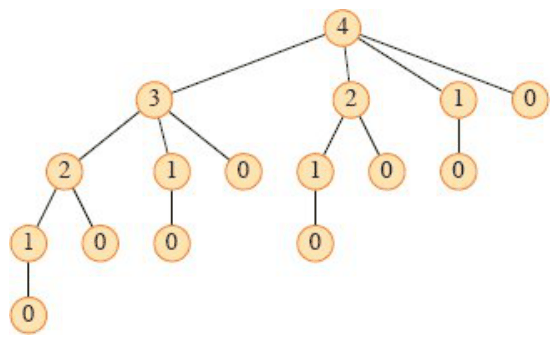
Step 3: bottom-up and memoized versions第 3 步：自底向上与记忆化版本
In words: bottom-up = fill the table from small rods to large rods; memoized = keep the recursion but check the table first.用文字表述：自底向上 = 从短钢条到长钢条依次填表；记忆化 = 保留递归，但先查表。
The bottom-up（自底向上）method orders the subproblems by size, so each one needs only smaller ones that are already in the table.自底向上的方法按规模对子问题排序，这样每个子问题只需要已经在表中的更小的子问题。
BOTTOM-UP-CUT-ROD(p, n)
1 let r[0 : n] be a new array // remembers solution values
2 r[0] = 0
3 for j = 1 to n // for increasing rod length j
4 q = -∞
5 for i = 1 to j // i is the position of the first cut
6 q = max{q, p[i] + r[j - i]}
7 r[j] = q // remember the solution value for length j
8 return r[n]
- Line 2 sets the empty rod to revenue 0.第 2 行把空钢条的收益设为 0。
- Line 3 takes the rod lengths \(j=1,\dots,n\) in increasing order.第 3 行按递增顺序取钢条长度 \(j=1,\dots,n\)。
- Lines 5–6 try every first piece \(i\) and read the remainder from the table: \(r[j-i]\) is already known because \(j-i<j\).第 5 至 6 行尝试每一种第一段 \(i\)，并从表中读取剩余部分的值：\(r[j-i]\) 已经算出，因为 \(j-i<j\)。
- Line 7 stores the best value for length \(j\).第 7 行存下长度为 \(j\) 的最优收益。
The inner loop runs \(j\) times for \(j=1,\dots,n\), so the total is \(1+2+\dots+n=n(n+1)/2\) iterations. The time is \(\Theta(n^2)\). For \(n=5\) this is 15 iterations, against \(2^5=32\) calls of CUT-ROD.内层循环对 \(j=1,\dots,n\) 运行 \(j\) 次，所以总迭代次数为 \(1+2+\dots+n=n(n+1)/2\)。时间为 \(\Theta(n^2)\)。当 \(n=5\) 时，共迭代 15 次，而 CUT-ROD 的调用次数为 \(2^5=32\)。
The top-down with memoization version is the natural recursion plus a table.自顶向下的记忆化版本就是原来的递归加上一张表。
MEMOIZED-CUT-ROD(p, n)
1 let r[0 : n] be a new array // remembers solution values
2 for i = 0 to n
3 r[i] = -∞
4 return MEMOIZED-CUT-ROD-AUX(p, n, r)
MEMOIZED-CUT-ROD-AUX(p, n, r)
1 if r[n] ≥ 0 // already have a solution for length n?
2 return r[n]
3 if n == 0
4 q = 0
5 else q = -∞
6 for i = 1 to n // i is the position of the first cut
7 q = max{q, p[i] + MEMOIZED-CUT-ROD-AUX(p, n - i, r)}
8 r[n] = q // remember the solution value for length n
9 return q
- Lines 2–3 of the first procedure mark every entry as not yet known with \(-\infty\).第一个过程的第 2 至 3 行用 \(-\infty\) 把每个表项标记为尚未算出。
- Lines 1–2 of the second procedure return a stored answer at once.第二个过程的第 1 至 2 行直接返回已存的答案。
- Line 8 stores the answer before it is returned.第 8 行在返回之前把答案存下来。
Each size \(0,\dots,n\) is solved once, and size \(j\) needs a loop of \(j\) steps. Later calls for a solved size return in \(O(1)\). So this version also takes \(\Theta(n^2)\). A DP is polynomial when there are polynomially many distinct subproblems and each is solved in polynomial time. Here there are \(n+1\) subproblems with \(O(n)\) work each.每个规模 \(0,\dots,n\) 只求解一次，规模 \(j\) 需要一个 \(j\) 步的循环。之后对已解决的规模的调用在 \(O(1)\) 时间内返回。所以这个版本的时间也是 \(\Theta(n^2)\)。当不同子问题的个数是多项式的，并且每个子问题都能在多项式时间内求解时，动态规划就是多项式时间的。这里共有 \(n+1\) 个子问题，每个子问题的工作量为 \(O(n)\)。
Step 4: reconstructing the cuts第 4 步：重构切割方案
In words: store the best first piece for every length, then follow the stored pieces.用文字表述：为每个长度存下最优的第一段，然后沿着存下的各段往下走。
EXTENDED-BOTTOM-UP-CUT-ROD(p, n)
1 let r[0 : n] and s[1 : n] be new arrays
2 r[0] = 0
3 for j = 1 to n // for increasing rod length j
4 q = -∞
5 for i = 1 to j // i is the position of the first cut
6 if q < p[i] + r[j - i]
7 q = p[i] + r[j - i]
8 s[j] = i // best cut location so far for length j
9 r[j] = q // remember the solution value for length j
10 return r and s
PRINT-CUT-ROD-SOLUTION(p, n)
1 (r, s) = EXTENDED-BOTTOM-UP-CUT-ROD(p, n)
2 while n > 0
3 print s[n] // cut location for length n
4 n = n - s[n] // length of the remainder of the rod
Line 8 stores \(s[j]\), the first piece of an optimal cutting of length \(j\). The strict test in line 6 keeps the first maximizer. PRINT-CUT-ROD-SOLUTION prints \(s[n]\), cuts it off and repeats on the remainder.第 8 行存下 \(s[j]\)，即长度为 \(j\) 的最优切割的第一段。第 6 行的严格不等式判断会保留第一个取得最大值的选择。PRINT-CUT-ROD-SOLUTION 输出 \(s[n]\)，把它切下来，然后对剩余部分重复这一过程。
| \(j\) | 0 | 1 | 2 | 3 | 4 | 5 | 6 | 7 | 8 | 9 | 10 |
|---|---|---|---|---|---|---|---|---|---|---|---|
| \(r[j]\) | 0 | 1 | 5 | 8 | 10 | 13 | 17 | 18 | 22 | 25 | 30 |
| \(s[j]\) | – | 1 | 2 | 3 | 2 | 2 | 6 | 1 | 2 | 3 | 10 |
Practice练习
Q1. (Calculation) The prices for lengths 1–6 are 2, 5, 7, 8, 10, 13. Fill in \(r[0..6]\) and \(s[1..6]\) as EXTENDED-BOTTOM-UP-CUT-ROD does and give an optimal decomposition of a rod of length 6.Q1.（计算）长度为 1–6 的价格分别为 2、5、7、8、10、13。按 EXTENDED-BOTTOM-UP-CUT-ROD 的方式填写 \(r[0..6]\) 和 \(s[1..6]\)，并给出长为 6 的钢条的一个最优切割方案。
Answer
| \(j\) | 0 | 1 | 2 | 3 | 4 | 5 | 6 |
|---|---|---|---|---|---|---|---|
| \(r[j]\) | 0 | 2 | 5 | 7 | 10 | 12 | 15 |
| \(s[j]\) | – | 1 | 2 | 1 | 2 | 1 | 2 |
For \(j=6\) the candidates \(p_i+r_{6-i}\) are \(14,15,14,13,12,13\) for \(i=1,\dots,6\), so \(r_6=15\) and \(s_6=2\). Following \(s\): \(6\to4\to2\to0\), pieces \(2+2+2\). This beats selling the rod uncut (\(p_6=13\)). Ties (for \(j=3,5\)) go to the smallest \(i\) because the test is strict.对于 \(j=6\)，候选为 \(p_i+r_{6-i}\)：对于 \(i=1,\dots,6\) 为 \(14,15,14,13,12,13\)，因此 \(r_6=15\) 与 \(s_6=2\)。沿 \(s\) 回溯：\(6\to4\to2\to0\)，各段为 \(2+2+2\)。这优于整根不切而出售（\(p_6=13\)）。平局（对于 \(j=3,5\)）时取最小的 \(i\)，因为判断是严格的。
Q2. (Explain) Show that the greedy rule "cut off a piece of maximum density \(p_i/i\), then repeat on the remainder" is not optimal.Q2.（解释）说明贪心规则“切下一段具有最大密度 \(p_i/i\) 的钢条，然后对余料重复这一操作”并非最优。
Answer
Take \(p_1,\dots,p_4=1,20,33,36\). The densities are \(1,10,11,9\), so greedy cuts length 3 and then length 1: revenue \(33+1=34\). Cutting \(2+2\) gives \(20+20=40\). Greedy commits to one choice without comparing the values of the subproblems; DP tries every first piece \(i\) and combines it with the optimal value of the remainder.取 \(p_1,\dots,p_4=1,20,33,36\)。密度分别为 \(1,10,11,9\)，因此贪心先切长为 3 的段，再切长为 1 的段，收益为 \(33+1=34\)。而切割 \(2+2\) 得到 \(20+20=40\)。贪心只做出一次选择，而不比较各子问题的值；动态规划则尝试每一种第一段 \(i\)，并将其与余料的最优值相结合。
Q3. (Variation) Every cut costs \(c=2\). Write the recurrence and compute \(r_5\) and \(r_7\) for the sample prices.Q3.（变体）每次切割都要付出 \(c=2\)。写出递推式，并对示例价格计算 \(r_5\) 和 \(r_7\)。
Answer
\(r_n=\max\{p_n,\ \max_{1\le i<n}(p_i+r_{n-i}-c)\}\): selling the rod uncut costs no cut, every other first piece costs one cut. Then \(r_1,\dots,r_4=1,5,8,9\) (cutting \(2+2\) gives \(10-2=8<9\)). \(r_5=\max\{10,\,1+9-2,\,5+8-2,\,8+5-2,\,9+1-2\}=11\) (cut \(2+3\)). \(r_6=17\). For \(n=7\) the best cut candidate is \(1+17-2=16\), so \(r_7=17\) (no cut).\(r_n=\max\{p_n,\ \max_{1\le i<n}(p_i+r_{n-i}-c)\}\)：整根不切而出售不需要切割，其他每个第一段都需要一次切割。随后 \(r_1,\dots,r_4=1,5,8,9\)（切割 \(2+2\) 得到 \(10-2=8<9\)）。\(r_5=\max\{10,\,1+9-2,\,5+8-2,\,8+5-2,\,9+1-2\}=11\)（切割 \(2+3\)）。\(r_6=17\)。对于 \(n=7\)，最好的切割候选为 \(1+17-2=16\)，因此 \(r_7=17\)（不切割）。
Matrix-chain multiplication ★★★矩阵链乘法
Goal. For a chain of matrices, fill the tables \(m\) and \(s\) by hand, give the best parenthesization and its cost, and state the time and the space.目标。 对于一个矩阵链，手工填写表 \(m\) 和 \(s\)，给出最优加括号方案及其代价，并说明时间和空间。
Step 1: the problem第 1 步：问题
In words: the order of the brackets changes the number of multiplications, and we want the cheapest bracketing.用文字表述：括号的位置会改变乘法次数，我们要找的是代价最小的加括号方式。
Take \(A_1\): \(10\times100\), \(A_2\): \(100\times5\), \(A_3\): \(5\times50\). The order \(((A_1A_2)A_3)\) costs \(10\cdot100\cdot5+10\cdot5\cdot50=5000+2500=7500\). The order \((A_1(A_2A_3))\) costs \(100\cdot5\cdot50+10\cdot100\cdot50=25\,000+50\,000=75\,000\), ten times more.取 \(A_1\)：\(10\times100\)，\(A_2\)：\(100\times5\)，\(A_3\)：\(5\times50\)。次序 \(((A_1A_2)A_3)\) 的代价为 \(10\cdot100\cdot5+10\cdot5\cdot50=5000+2500=7500\)。次序 \((A_1(A_2A_3))\) 的代价为 \(100\cdot5\cdot50+10\cdot100\cdot50=25\,000+50\,000=75\,000\)，是前者的十倍。
In the matrix-chain multiplication problem（矩阵链乘法问题）the input is the dimension sequence \(\langle p_0,p_1,\dots,p_n\rangle\), where \(A_i\) is \(p_{i-1}\times p_i\). A chain of \(n\) matrices has \(n+1\) dimensions. We fully parenthesize（完全加括号）\(A_1A_2\cdots A_n\) so that the number of scalar multiplications is minimum. No matrix is multiplied; only the best order is sought.在矩阵链乘法问题中，输入是维数序列 \(\langle p_0,p_1,\dots,p_n\rangle\)，其中 \(A_i\) 为 \(p_{i-1}\times p_i\)。含有 \(n\) 个矩阵的矩阵链有 \(n+1\) 个维数。我们要对 \(A_1A_2\cdots A_n\) 完全加括号，使数乘次数最少。这里并不真的做矩阵乘法，只是寻找最优的次序。
For \(n=4\) there are \(P(4)=5\) bracketings. \(P(5)=5+2+2+5=14\).对于 \(n=4\)，共有 \(P(4)=5\) 种加括号方式。\(P(5)=5+2+2+5=14\)。
Step 2: structure and recurrence第 2 步：结构与递归式
In words: try every place for the last multiplication; the two halves are smaller chains that have been solved optimally before.用文字表述：对最后一次乘法的每个位置都试一遍；两半都是更短的链，它们的最优解已经算出来了。
Write \(A_{i:j}\) for the product \(A_iA_{i+1}\cdots A_j\). Split it between \(A_k\) and \(A_{k+1}\) for some \(k\) with \(i\le k<j\). First compute \(A_{i:k}\) and \(A_{k+1:j}\), then multiply the two results.记 \(A_{i:j}\) 为乘积 \(A_iA_{i+1}\cdots A_j\)。对某个满足 \(i\le k<j\) 的 \(k\)，把它在 \(A_k\) 与 \(A_{k+1}\) 之间切开。先算出 \(A_{i:k}\) 和 \(A_{k+1:j}\)，再把两个结果相乘。
Optimal substructure holds by cut-and-paste. Suppose an optimal bracketing of \(A_{i:j}\) splits at \(k\). If its bracketing of \(A_{i:k}\) were not optimal, a cheaper one could be pasted in. This would give a cheaper bracketing of \(A_{i:j}\), which is a contradiction. The same holds for \(A_{k+1:j}\). The best \(k\) is unknown, so all \(j-i\) values are tried.最优子结构可以用剪切粘贴论证。假设 \(A_{i:j}\) 的一个最优加括号在 \(k\) 处分开。如果其中 \(A_{i:k}\) 的加括号不是最优的，就可以换入一个更便宜的，这样就得到 \(A_{i:j}\) 的一个更便宜的加括号，这与原来的最优相矛盾。对 \(A_{k+1:j}\) 同理。由于最佳分割点 \(k\) 事先未知，所以要尝试所有 \(j-i\) 值。
A frequent error is to write \(p_i\) for the first dimension. \(A_{i:k}\) has \(p_{i-1}\) rows and \(p_k\) columns.常见的错误是把 \(p_i\) 当作第一个维数。\(A_{i:k}\) 有 \(p_{i-1}\) 行、\(p_k\) 列。
Step 3: the algorithm and its running time第 3 步：算法及其运行时间
In words: fill the table by chain length, from length 1 up to length \(n\), so that both parts of every split are already known.用文字表述：按链长填表，从长度 1 一直填到长度 \(n\)，这样每次切分的两部分都已经算出。
There is one subproblem for each pair \(i\le j\), in all \(n(n+1)/2=\Theta(n^2)\) of them. A chain of length \(l=j-i+1\) needs only shorter chains.每一个数对 \(i\le j\) 对应一个子问题，共有 \(n(n+1)/2=\Theta(n^2)\) 个。长度为 \(l=j-i+1\) 的链只需要更短的链。
MATRIX-CHAIN-ORDER(p, n)
1 let m[1 : n, 1 : n] and s[1 : n - 1, 2 : n] be new tables
2 for i = 1 to n // chain length 1
3 m[i, i] = 0
4 for l = 2 to n // l is the chain length
5 for i = 1 to n - l + 1 // chain begins at A_i
6 j = i + l - 1 // chain ends at A_j
7 m[i, j] = ∞
8 for k = i to j - 1 // try A_{i:k} A_{k+1:j}
9 q = m[i, k] + m[k + 1, j] + p[i - 1] * p[k] * p[j]
10 if q < m[i, j]
11 m[i, j] = q // remember this cost
12 s[i, j] = k // remember this index
13 return m and s
- Lines 2–3 set the cost of a single matrix to 0.第 2 至 3 行把单个矩阵的代价设为 0。
- Line 4 takes the chain length \(l\) from 2 to \(n\). Lines 5–6 take every chain of that length, from \(A_i\) to \(A_j\).第 4 行让链长 \(l\) 从 2 取到 \(n\)。第 5 至 6 行取出该长度下的每一条链，即从 \(A_i\) 到 \(A_j\)。
- Line 9 computes the cost of splitting at \(k\). Lines 10–12 keep the smallest cost in \(m\) and the split in \(s\). A tie keeps the first \(k\).第 9 行计算在 \(k\) 处切分的代价。第 10 至 12 行把最小代价存入 \(m\)，把对应的切分点存入 \(s\)。若出现平局，保留第一个 \(k\)。
Three nested loops of at most \(n-1\) iterations each give \(O(n^3)\). Line 9 runs exactly \((n^3-n)/6\) times, so the time is \(\Theta(n^3)\). The two tables need \(\Theta(n^2)\) space.三层嵌套循环，每层至多 \(n-1\) 次迭代，因此得到 \(O(n^3)\)。第 9 行恰好执行 \((n^3-n)/6\) 次，所以时间为 \(\Theta(n^3)\)。两张表需要 \(\Theta(n^2)\) 的空间。
Step 4: one complete trace第 4 步：一次完整的手工演算
How to do it by hand: 1. Write the diagonal \(m[i,i]=0\). 2. For each chain length \(l=2,\dots,n\) and each \(i\), write the candidate cost of every \(k\). 3. Keep the minimum in \(m\) and its \(k\) in \(s\). 4. Read the bracketing from \(s\) starting at \(s[1,n]\).手工做法：1. 先写出对角线 \(m[i,i]=0\)。2. 对每个链长 \(l=2,\dots,n\) 和每个 \(i\)，写出每个 \(k\) 的候选代价。3. 把最小值记在 \(m\) 中，并把对应的 \(k\) 记在 \(s\) 中。4. 从 \(s[1,n]\) 开始，由 \(s\) 读出加括号方案。
Six matrices have the dimensions \(30\times35\), \(35\times15\), \(15\times5\), \(5\times10\), \(10\times20\), \(20\times25\), so \(p=\langle30,35,15,5,10,20,25\rangle\).六个矩阵的维数依次为 \(30\times35\)、\(35\times15\)、\(15\times5\)、\(5\times10\)、\(10\times20\)、\(20\times25\)，所以 \(p=\langle30,35,15,5,10,20,25\rangle\)。
| \(m[i,j]\) | \(j=1\) | 2 | 3 | 4 | 5 | 6 |
|---|---|---|---|---|---|---|
| \(i=1\) | 0 | 15750 | 7875 | 9375 | 11875 | 15125 |
| \(i=2\) | 0 | 2625 | 4375 | 7125 | 10500 | |
| \(i=3\) | 0 | 750 | 2500 | 5375 | ||
| \(i=4\) | 0 | 1000 | 3500 | |||
| \(i=5\) | 0 | 5000 | ||||
| \(i=6\) | 0 |
| \(s[i,j]\) | \(j=2\) | 3 | 4 | 5 | 6 |
|---|---|---|---|---|---|
| \(i=1\) | 1 | 1 | 3 | 3 | 3 |
| \(i=2\) | 2 | 3 | 3 | 3 | |
| \(i=3\) | 3 | 3 | 3 | ||
| \(i=4\) | 4 | 5 | |||
| \(i=5\) | 5 |
The tables hold only entries with \(i\le j\). To read the bracketing, use \(s\).表中只有 \(i\le j\) 的表项有值。要读出加括号方式，要用 \(s\)。
PRINT-OPTIMAL-PARENS(s, i, j)
1 if i == j
2 print "A"_i
3 else print "("
4 PRINT-OPTIMAL-PARENS(s, i, s[i, j])
5 PRINT-OPTIMAL-PARENS(s, s[i, j] + 1, j)
6 print ")"
PRINT-OPTIMAL-PARENS prints a single matrix when \(i=j\). Otherwise it prints the bracket, the best bracketing of the left part \(A_{i:s[i,j]}\), that of the right part, and the closing bracket. For the example \(s[1,6]=3\) splits into \(A_{1:3}\) and \(A_{4:6}\). Then \(s[1,3]=1\) gives \(A_1(A_2A_3)\) and \(s[4,6]=5\) gives \((A_4A_5)A_6\). The output is \(((A_1(A_2A_3))((A_4A_5)A_6))\) with cost \(m[1,6]=15\,125\).当 \(i=j\) 时，PRINT-OPTIMAL-PARENS 只输出一个矩阵。否则它输出左括号，然后输出左半部分 \(A_{i:s[i,j]}\) 的最优加括号，再输出右半部分的最优加括号，最后输出右括号。对于这个例子，\(s[1,6]=3\) 分成 \(A_{1:3}\) 和 \(A_{4:6}\)。然后 \(s[1,3]=1\) 给出 \(A_1(A_2A_3)\)，\(s[4,6]=5\) 给出 \((A_4A_5)A_6\)。输出结果为 \(((A_1(A_2A_3))((A_4A_5)A_6))\)，代价为 \(m[1,6]=15\,125\)。
Practice练习
Q1. (Calculation) Find the optimal parenthesization and the minimum number of scalar multiplications for \(p=\langle10,20,5,15,30\rangle\). How much does the strict left-to-right order \((((A_1A_2)A_3)A_4)\) cost?Q1.（计算）求 \(p=\langle10,20,5,15,30\rangle\) 的最优加括号方式及标量乘法的最少次数。严格按从左到右的次序 \((((A_1A_2)A_3)A_4)\) 相乘，代价是多少？
Answer
\(m[1,2]=10\cdot20\cdot5=1000\), \(m[2,3]=20\cdot5\cdot15=1500\), \(m[3,4]=5\cdot15\cdot30=2250\).
- \(m[1,3]=\min\{0+1500+10\cdot20\cdot15,\ 1000+0+10\cdot5\cdot15\}=\min\{4500,1750\}=1750\), \(s=2\).
- \(m[2,4]=\min\{0+2250+20\cdot5\cdot30,\ 1500+0+20\cdot15\cdot30\}=\min\{5250,10500\}=5250\), \(s=2\).
- \(m[1,4]=\min\{0+5250+10\cdot20\cdot30,\ 1000+2250+10\cdot5\cdot30,\ 1750+0+10\cdot15\cdot30\}=\min\{11250,4750,6250\}=4750\), \(s=2\).
The optimum is \(((A_1A_2)(A_3A_4))\) with 4750 multiplications. Left to right costs \(1000+10\cdot5\cdot15+10\cdot15\cdot30=1000+750+4500=6250\).最优为 \(((A_1A_2)(A_3A_4))\)，需 4750 次乘法。从左到右的代价为 \(1000+10\cdot5\cdot15+10\cdot15\cdot30=1000+750+4500=6250\)。
Q2. (Proof) Show that a full parenthesization of \(n\) matrices has exactly \(n-1\) pairs of parentheses.Q2.（证明）证明 \(n\) 个矩阵的全加括号恰好有 \(n-1\) 对括号。
Answer
Induction on \(n\). A single matrix has 0 pairs. For \(n\ge2\) the parenthesization is \((L\,R)\) where \(L\) and \(R\) are full parenthesizations of \(k\) and \(n-k\) matrices (\(1\le k<n\)). By the hypothesis they have \(k-1\) and \(n-k-1\) pairs, and the outer pair adds one: \((k-1)+(n-k-1)+1=n-1\). Each pair is one multiplication, and \(n\) matrices need \(n-1\) multiplications.对 \(n\) 作归纳。单个矩阵有 0 对括号。对于 \(n\ge2\)，其加括号形式为 \((L\,R)\)，其中 \(L\) 与 \(R\) 分别是 \(k\) 个与 \(n-k\) 个矩阵的全加括号（\(1\le k<n\)）。由归纳假设，它们分别有 \(k-1\) 对与 \(n-k-1\) 对括号，外层的一对再加上一，共 \((k-1)+(n-k-1)+1=n-1\)。每一对括号对应一次乘法，因此 \(n\) 个矩阵需要 \(n-1\) 次乘法。
Q3. (Compare) How many full parenthesizations does a chain of 5 matrices have, and how does brute force compare with MATRIX-CHAIN-ORDER for \(n=20\)?Q3.（比较）一条由 5 个矩阵组成的链有多少种全加括号方式？对于 \(n=20\)，穷举法与 MATRIX-CHAIN-ORDER 相比如何？
Answer
\(P(5)=P(1)P(4)+P(2)P(3)+P(3)P(2)+P(4)P(1)=5+2+2+5=14\). For \(n=20\), \(P(20)=C_{19}=1\,767\,263\,190\) parenthesizations, each costing \(\Theta(n)\) to evaluate, whereas the DP evaluates \((20^3-20)/6=1330\) candidate splits in total.\(P(5)=P(1)P(4)+P(2)P(3)+P(3)P(2)+P(4)P(1)=5+2+2+5=14\)。对于 \(n=20\)，共有 \(P(20)=C_{19}=1\,767\,263\,190\) 种加括号方式，每种的求值代价为 \(\Theta(n)\)；而动态规划总共只需计算 \((20^3-20)/6=1330\) 个候选分割。
Elements of dynamic programming ★★★动态规划的要素
Goal. Decide whether a problem suits DP, prove optimal substructure by cut-and-paste, show overlapping subproblems, and compare the memoized and bottom-up styles.目标。 判断一个问题是否适合用动态规划，用剪切粘贴证明最优子结构，说明子问题重叠，并比较记忆化与自底向上两种风格。
Step 1: optimal substructure第 1 步：最优子结构
In words: a problem has optimal substructure if an optimal solution contains optimal solutions of its subproblems.用文字表述：如果一个问题的最优解包含其子问题的最优解，那么它就具有最优子结构。
This is the first thing to establish. The usual pattern has four parts.这是首先要确立的一点。通常的论证有四个部分。
- Show that a solution makes a choice that leaves one or more subproblems: the first cut, a split point, a root, the last character.说明一个解会做出某个选择，并由此留下一个或多个子问题：例如第一刀、分割点、根，或最后一个字符。
- Assume that the choice leading to an optimal solution is given. How to find it does not matter yet.假设已经知道导致最优解的那个选择。至于怎样找到它，目前不必考虑。
- Determine the subproblems that follow and how to describe the space of subproblems.确定由此产生的子问题，以及如何描述子问题的空间。
- Prove by cut-and-paste（剪切粘贴论证）that the subproblem solutions inside the optimal solution are optimal. Suppose one is not. Cut it out and paste in an optimal one. The whole solution improves, which contradicts its optimality.用剪切粘贴论证证明：最优解中所包含的子问题的解都是最优的。假设某一个不是最优的，就把它剪下来，换入一个最优的。这样整个解就会变好，与它的最优性矛盾。
Start with the simplest family of subproblems and enlarge it only if needed. Rod cutting needs only "a rod of length \(j\)". Matrix chains cannot be restricted to prefixes: the right part \(A_{k+1:j}\) is not a prefix, so both ends \(i\) and \(j\) must vary.先从最简单的子问题族开始，只有在需要时才扩大。钢条切割只需要“长度为 \(j\) 的钢条”这一类子问题。矩阵链不能限制为前缀：右半部分 \(A_{k+1:j}\) 不是前缀，所以两端 \(i\) 和 \(j\) 都必须变化。
| Problem问题 | Subproblems used by one solution一个解所用的子问题数 | Choices选择数 | Distinct subproblems不同的子问题数 | Time时间 |
|---|---|---|---|---|
| Rod cutting钢条切割 | 1 (the remainder)1（余料） | \(n\) (first piece) | \(\Theta(n)\) | \(O(n^2)\) |
| Matrix chain矩阵链 | 2 | \(j-i\) (split point) | \(\Theta(n^2)\) | \(O(n^3)\) |
| LCS | 1 or 21 或 2 | 1 if \(x_i=y_j\), else 2 | \(\Theta(mn)\) | \(\Theta(mn)\) |
| Optimal BST最优二叉搜索树 | 2 | \(j-i+1\) (root) | \(\Theta(n^2)\) | \(\Theta(n^3)\) |
The cost of a solution is the cost of its subproblems plus a cost for the choice itself: \(p_i\) in rod cutting and \(p_{i-1}p_kp_j\) in matrix chains. A greedy algorithm（贪心算法, Chapter 13）also needs optimal substructure. DP first solves all subproblems and then chooses among them. A greedy algorithm first makes the choice that looks best and then solves the one remaining subproblem.一个解的代价等于其子问题的代价，加上选择本身的代价：在钢条切割中为 \(p_i\)，在矩阵链中为 \(p_{i-1}p_kp_j\)。贪心算法（第 13 章）同样需要最优子结构。动态规划先解出所有子问题，然后在它们中做选择。贪心算法则先做看起来最好的选择，然后只需解剩下的那一个子问题。
Step 2: independent subproblems, shortest versus longest path第 2 步：独立的子问题，最短路径与最长路径
In words: the two parts of a solution must not compete for the same vertices or items.用文字表述：一个解的两部分不能争用同一批顶点或物品。
Take a directed graph and two vertices \(u\) and \(v\).取一个有向图以及两个顶点 \(u\) 和 \(v\)。
- The unweighted shortest path (fewest edges) has optimal substructure. Let \(p=u\leadsto w\leadsto v\) be a shortest path. A path \(u\leadsto w\) with fewer edges could be pasted in. That would give a path \(u\leadsto v\) shorter than \(p\). So both parts are shortest paths.无权最短路径（边数最少的路径）具有最优子结构。设 \(p=u\leadsto w\leadsto v\) 是一条最短路径。若能换入一条边数更少的路径 \(u\leadsto w\)，就会得到一条比 \(p\) 更短的路径 \(u\leadsto v\)。所以两部分都是最短路径。
- The unweighted longest simple path does not. In the graph below, \(q\to r\to t\) is a longest simple path from \(q\) to \(t\). But \(q\to r\) is not a longest simple path from \(q\) to \(r\), because \(q\to s\to t\to r\) is longer. Also \(r\to t\) is not longest, because \(r\to q\to s\to t\) is longer. Gluing the two longer paths gives \(q\to s\to t\to r\to q\to s\to t\), which repeats vertices and is not simple.无权最长简单路径不具有这一性质。在下图中，\(q\to r\to t\) 是从 \(q\) 到 \(t\) 的一条最长简单路径。但 \(q\to r\) 不是从 \(q\) 到 \(r\) 的最长简单路径，因为 \(q\to s\to t\to r\) 更长。同样，\(r\to t\) 也不是最长的，因为 \(r\to q\to s\to t\) 更长。把两条较长的路径拼接起来，得到 \(q\to s\to t\to r\to q\to s\to t\)，它重复了顶点，因此不是简单路径。

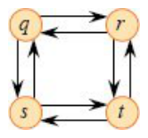
The two subpaths of a longest path use the same vertices, so the subproblems are not independent. The problem is NP-complete, and no efficient DP is known. In a shortest path the two parts share only the vertex \(w\). Matrix-chain subproblems are disjoint subchains and rod-cutting has one remainder, so both are independent.最长路径的两个子路径会用到相同的顶点，所以子问题不独立。这个问题是 NP 完全的，目前也不知道有效的动态规划算法。在最短路径中，两部分只共享顶点 \(w\)。矩阵链的子问题是互不相交的子链，钢条切割只剩一段剩余部分，所以两者的子问题都是独立的。
Step 3: overlapping subproblems第 3 步：重叠子问题
In words: the recursion meets the same few subproblems over and over, so a table pays off.用文字表述：递归反复遇到同样的少数几个子问题，所以用表来存放会很划算。
The second ingredient is a small space of subproblems. The number of distinct subproblems is polynomial in the input size, yet the plain recursion visits them exponentially often. Divide-and-conquer creates new subproblems at each step: the subarrays of merge sort are all different. Memoization does not help it.第二个要素是子问题的空间较小。不同子问题的个数关于输入规模是多项式的，但朴素递归会以指数级的次数访问它们。分治法在每一步都产生新的子问题：归并排序的各个子数组都互不相同。记忆化对它没有帮助。
In the six-matrix example \(m[3,4]\) is used four times, for \(m[2,4]\), \(m[1,4]\), \(m[3,5]\) and \(m[3,6]\). The plain recursion RECURSIVE-MATRIX-CHAIN\((p,i,j)\) evaluates the recurrence of Section 12.2 directly. Let \(T(n)\) be its number of calls for \(n\) matrices. Then \(T(1)\ge1\) and在六个矩阵的例子中，\(m[3,4]\) 被用了四次，分别对应 \(m[2,4]\)、\(m[1,4]\)、\(m[3,5]\) 和 \(m[3,6]\)。朴素递归 RECURSIVE-MATRIX-CHAIN\((p,i,j)\) 直接计算第 12.2 节的递归式。设 \(T(n)\) 为对 \(n\) 个矩阵的调用次数。那么 \(T(1)\ge1\)，并且
\[T(n)\ge1+\sum_{k=1}^{n-1}\bigl(T(k)+T(n-k)+1\bigr)=n+2\sum_{i=1}^{n-1}T(i)\]
and by substitution \(T(n)\ge2^{n-1}\). Here \(n\) is the number of matrices, \(k\) the split point and \(i\) a summation index. The step: \(T(n)\ge2(2^{n-1}-1)+n=2^n-2+n\ge2^{n-1}\). So \(T(n)=\Omega(2^n)\), although only \(\Theta(n^2)\) subproblems exist.并由代入法得出 \(T(n)\ge2^{n-1}\)。这里 \(n\) 是矩阵的个数，\(k\) 是分割点，\(i\) 是求和下标。其中的归纳步骤为 \(T(n)\ge2(2^{n-1}-1)+n=2^n-2+n\ge2^{n-1}\)。因此 \(T(n)=\Omega(2^n)\)，尽管只有 \(\Theta(n^2)\) 个子问题。
Step 4: memoization versus bottom-up第 4 步：记忆化与自底向上的比较
In words: both solve each subproblem once; they differ in who decides the order.用文字表述：两者都只对每个子问题求解一次；区别在于由谁决定计算顺序。
The memoized matrix-chain algorithm keeps a table \(m\) filled with \(\infty\) for "not computed". The first call for a pair computes and stores the value, and later calls only read it.记忆化的矩阵链算法维护一张表 \(m\)，表中用 \(\infty\) 填充，表示“尚未计算”。对某个数对的第一次调用会算出并存下这个值，之后的调用只是读取它。
MEMOIZED-MATRIX-CHAIN(p, n)
1 let m[1 : n, 1 : n] be a new table
2 for i = 1 to n
3 for j = i to n
4 m[i, j] = ∞
5 return LOOKUP-CHAIN(m, p, 1, n)
LOOKUP-CHAIN(m, p, i, j)
1 if m[i, j] < ∞
2 return m[i, j]
3 if i == j
4 m[i, j] = 0
5 else for k = i to j - 1
6 q = LOOKUP-CHAIN(m, p, i, k) + LOOKUP-CHAIN(m, p, k + 1, j) + p[i - 1] * p[k] * p[j]
7 if q < m[i, j]
8 m[i, j] = q
9 return m[i, j]
Line 1 of LOOKUP-CHAIN returns a stored value. Lines 5–8 run only on the first call for the pair \((i,j)\). There are \(\Theta(n^2)\) calls that compute a new entry, with \(O(n)\) own work each. Every such call makes \(O(n)\) recursive calls that cost \(O(1)\) each when the entry is filled. So the time is \(O(n^3)\), instead of \(\Omega(2^n)\) for the plain recursion.LOOKUP-CHAIN 的第 1 行直接返回已存的值。第 5 至 8 行只在对数对 \((i,j)\) 的第一次调用时执行。共有 \(\Theta(n^2)\) 次调用会算出一个新表项，每次自身的工作量为 \(O(n)\)。每次这样的调用会做 \(O(n)\) 次递归调用，每次调用在对应表项已填时的代价为 \(O(1)\)。所以总时间为 \(O(n^3)\)，而朴素递归的时间为 \(\Omega(2^n)\)。
| Top-down with memoization带备忘的自顶向下 | Bottom-up自底向上 | |
|---|---|---|
| Control控制方式 | recursion from the recurrence, table check first由递推式递归，先查表 | loops in an order where dependencies come first循环，按依赖先行的次序进行 |
| Subproblems solved求解的子问题 | only those reached from the original problem只求解从原问题出发能够到达的子问题 | all of them全部 |
| Overhead额外开销 | recursive calls递归调用 | none, smaller constants无；常数较小 |
| Extra advantage额外优势 | skips subproblems that are never needed跳过从不需要的子问题 | regular access pattern allows savings in time or space (LCS keeps two rows)访问模式规则，可节省时间或空间（如 LCS 只保留两行） |
| Asymptotic time渐近时间 | the same when every subproblem is needed当所有子问题都需要时相同 | the same相同 |
Always store the chosen split or choice (the tables \(s\), \(b\), \(root\)). Without it each step of the reconstruction would search the \(j-i\) candidates again.一定要存下所选的分割点或选择（即表 \(s\)、\(b\)、\(root\)）。否则，重构的每一步都要重新搜索 \(j-i\) 个候选。
Practice练习
Q1. (True/false) "The longest simple path problem has optimal substructure, so dynamic programming solves it in polynomial time." Justify.Q1.（判断）“最长简单路径问题具有最优子结构，因此动态规划可以在多项式时间内求解它。”请说明理由。
Answer
False. Subpaths of a longest simple path need not be longest simple paths: in the example above \(q\to r\to t\) is longest from \(q\) to \(t\), but \(q\to r\) is not longest from \(q\) to \(r\). The two subproblems are not independent, because the longer subpaths reuse vertices and cannot be glued into a simple path. The problem is NP-complete, so no polynomial-time algorithm is expected.错误。最长简单路径的子路径不一定是最长简单路径：在上例中，\(q\to r\to t\) 是从 \(q\) 到 \(t\) 的最长路径，但 \(q\to r\) 不是从 \(q\) 到 \(r\) 的最长路径。两个子问题并不独立，因为较长的子路径会重复使用顶点，无法拼接成一条简单路径。该问题是 NP 完全的，因此不应期望存在多项式时间算法。
Q2. (Counterexample) A professor proposes to choose the split \(k\) of \(A_{i:j}\) greedily, minimizing \(p_{i-1}p_kp_j\), before solving the subproblems. Show that this fails for \(p=\langle1,2,3,100\rangle\).Q2.（反例）某教授建议在求解子问题之前，贪心地为 \(A_{i:j}\) 选取分割点 \(k\)，使 \(p_{i-1}p_kp_j\) 最小。请说明该做法对 \(p=\langle1,2,3,100\rangle\) 不成立。
Answer
The candidates are \(k=1\) with \(1\cdot2\cdot100=200\) and \(k=2\) with \(1\cdot3\cdot100=300\), so greedy picks \(k=1\): \((A_1(A_2A_3))\) costs \(2\cdot3\cdot100+1\cdot2\cdot100=600+200=800\). The split \(k=2\) gives \(((A_1A_2)A_3)\) with \(1\cdot2\cdot3+1\cdot3\cdot100=6+300=306\). The cost of the last multiplication alone ignores the cost of the subproblems.候选为 \(k=1\)（代价 \(1\cdot2\cdot100=200\)）和 \(k=2\)（代价 \(1\cdot3\cdot100=300\)），因此贪心选择 \(k=1\)，即 \((A_1(A_2A_3))\)，其代价为 \(2\cdot3\cdot100+1\cdot2\cdot100=600+200=800\)。而分割 \(k=2\) 给出 \(((A_1A_2)A_3)\)（代价为 \(1\cdot2\cdot3+1\cdot3\cdot100=6+300=306\)）。只看最后一次乘法的代价，就忽略了子问题的代价。
Q3. (Beyond the pages) In rod cutting at most \(l_i\) pieces of length \(i\) may be produced. Show that the optimal substructure of Section 12.1 no longer holds.Q3.（超出教材范围）在钢条切割中，长度为 \(i\) 的小段至多只能生产 \(l_i\) 段。说明第 12.1 节的最优子结构不再成立。
Answer
Take \(p_1,\dots,p_4=1,10,1,1\), \(l_2=1\) (other lengths unlimited) and \(n=4\). The best solution is \(2+1+1\) with revenue 12. After the first piece 2 the remainder of length 2 is cut as \(1+1\) (revenue 2), but the optimal solution for a rod of length 2 alone is one piece of length 2 (revenue 10), which cannot be pasted in because it would be a second piece of length 2. The limit is a shared resource, so the subproblem depends on the first choice; a correct DP would have to remember how many pieces of each length are already used.设 \(p_1,\dots,p_4=1,10,1,1\)、\(l_2=1\)（其余长度不受限制）与 \(n=4\)。最优解为 \(2+1+1\)，收益为 12。在第一段 2 之后，长度为 2 的余料被切为 \(1+1\)（收益为 2）；但单独一根长为 2 的钢条的最优解是一段长为 2 的钢条（收益为 10），它无法被直接拼入，因为那样就会出现第二段长为 2 的钢条。该上限是一种共享资源，因此子问题依赖于第一次的选择；正确的动态规划必须记住每种长度已经使用了多少段。
Longest common subsequence ★★★最长公共子序列
Goal. Fill the LCS table by hand, trace back one longest common subsequence, and give the time and the space, also when only the length is needed.目标。 手工填写 LCS 表，回溯出一个最长公共子序列，并给出时间和空间，包括只需要长度时的情况。
Step 1: the problem第 1 步：问题
In words: an LCS is the longest list of symbols that appear in both sequences in the same order.用文字表述：LCS 是按相同次序同时出现在两个序列中的最长符号列表。
A sequence \(Z\) is a common subsequence of \(X\) and \(Y\) if it is a subsequence of both. In the longest-common-subsequence (LCS) problem（最长公共子序列问题）we are given \(X=\langle x_1,\dots,x_m\rangle\) and \(Y=\langle y_1,\dots,y_n\rangle\) and want a common subsequence of maximum length. For \(X=\langle A,B,C,B,D,A,B\rangle\) and \(Y=\langle B,D,C,A,B,A\rangle\) the sequence \(\langle B,C,A\rangle\) is common but not longest. The sequences \(\langle B,C,B,A\rangle\), \(\langle B,D,A,B\rangle\) and \(\langle B,C,A,B\rangle\) are LCSs of length 4. An LCS is not unique, but its length is. Brute force tests all \(2^m\) subsequences of \(X\) and is exponential.若序列 \(Z\) 同时是这两个序列的子序列，则称它是 \(X\) 与 \(Y\) 的公共子序列。在最长公共子序列（LCS）问题中，给定 \(X=\langle x_1,\dots,x_m\rangle\) 和 \(Y=\langle y_1,\dots,y_n\rangle\)，要求找出长度最大的公共子序列。对于 \(X=\langle A,B,C,B,D,A,B\rangle\) 和 \(Y=\langle B,D,C,A,B,A\rangle\)，序列 \(\langle B,C,A\rangle\) 是公共子序列，但不是最长的。序列 \(\langle B,C,B,A\rangle\)、\(\langle B,D,A,B\rangle\) 和 \(\langle B,C,A,B\rangle\) 都是长度为 4 的 LCS。LCS 不唯一，但它的长度是唯一的。穷举法要检查 \(X\) 的所有 \(2^m\) 个子序列，因此是指数级的。
Step 2: optimal substructure and recurrence第 2 步：最优子结构与递归式
In words: look only at the last symbol of each sequence: if they are equal they match, otherwise one of them is not used.用文字表述：只看两个序列的最后一个符号：如果相等，它们就匹配；否则其中至少有一个不被使用。
Let \(Z=\langle z_1,\dots,z_k\rangle\) be any LCS of \(X\) and \(Y\), where \(z_k\) is its last symbol and \(k\) its length. Then:设 \(Z=\langle z_1,\dots,z_k\rangle\) 是 \(X\) 和 \(Y\) 的任意一个 LCS，其中 \(z_k\) 是它的最后一个符号，\(k\) 是它的长度。则：
- If \(x_m=y_n\), then \(z_k=x_m=y_n\) and \(Z_{k-1}\) is an LCS of \(X_{m-1}\) and \(Y_{n-1}\).若 \(x_m=y_n\)，则 \(z_k=x_m=y_n\)，且 \(Z_{k-1}\) 是 \(X_{m-1}\) 与 \(Y_{n-1}\) 的一个 LCS。
- If \(x_m\ne y_n\) and \(z_k\ne x_m\), then \(Z\) is an LCS of \(X_{m-1}\) and \(Y\).若 \(x_m\ne y_n\) 且 \(z_k\ne x_m\)，则 \(Z\) 是 \(X_{m-1}\) 与 \(Y\) 的一个 LCS。
- If \(x_m\ne y_n\) and \(z_k\ne y_n\), then \(Z\) is an LCS of \(X\) and \(Y_{n-1}\).若 \(x_m\ne y_n\) 且 \(z_k\ne y_n\)，则 \(Z\) 是 \(X\) 与 \(Y_{n-1}\) 的一个 LCS。
Proof idea. (1) If \(z_k\ne x_m\), appending \(x_m=y_n\) to \(Z\) would give a longer common subsequence. So \(z_k=x_m=y_n\). A common subsequence \(W\) of \(X_{m-1}\) and \(Y_{n-1}\) longer than \(k-1\) would give \(W\) followed by \(x_m\), longer than \(k\). (2) \(Z\) does not use \(x_m\), so it is common to \(X_{m-1}\) and \(Y\). A longer one there would also be common to \(X\) and \(Y\). (3) is symmetric.证明思路。(1) 若 \(z_k\ne x_m\)，则把 \(x_m=y_n\) 接到 \(Z\) 之后会得到一个更长的公共子序列。因此 \(z_k=x_m=y_n\)。若 \(W\) 是 \(X_{m-1}\) 和 \(Y_{n-1}\) 的一个比 \(k-1\) 更长的公共子序列，那么它的末尾加上 \(W\) 后接 \(x_m\)，就会得到比 \(k\) 更长的公共子序列。(2) \(Z\) 不使用 \(x_m\)，所以它是 \(X_{m-1}\) 和 \(Y\) 的公共子序列。若那里存在更长的，它也会是 \(X\) 和 \(Y\) 的公共子序列。(3) 与此对称。
The subproblems overlap, because both of the two cases of the third line contain "LCS of \(X_{m-1}\) and \(Y_{n-1}\)". There are only \((m+1)(n+1)\) distinct subproblems.子问题相互重叠，因为第三行的两种情况中都含有“\(X_{m-1}\) 和 \(Y_{n-1}\) 的 LCS”。不同的子问题只有 \((m+1)(n+1)\) 个。
Step 3: the algorithm第 3 步：算法
In words: fill the table row by row; each cell depends on its left, upper and upper-left neighbour, and an arrow records which one was used.用文字表述：逐行填表；每个格子依赖于它左边、上边和左上方的邻格，并用箭头记录用了哪一个。
LCS-LENGTH(X, Y, m, n)
1 let b[1 : m, 1 : n] and c[0 : m, 0 : n] be new tables
2 for i = 1 to m
3 c[i, 0] = 0
4 for j = 0 to n
5 c[0, j] = 0
6 for i = 1 to m // compute table entries in row-major order
7 for j = 1 to n
8 if x_i == y_j
9 c[i, j] = c[i - 1, j - 1] + 1
10 b[i, j] = "↖"
11 elseif c[i - 1, j] ≥ c[i, j - 1]
12 c[i, j] = c[i - 1, j]
13 b[i, j] = "↑"
14 else c[i, j] = c[i, j - 1]
15 b[i, j] = "←"
16 return c and b
PRINT-LCS(b, X, i, j)
1 if i == 0 or j == 0
2 return // the LCS has length 0
3 if b[i, j] == "↖"
4 PRINT-LCS(b, X, i - 1, j - 1)
5 print x_i // same as y_j
6 elseif b[i, j] == "↑"
7 PRINT-LCS(b, X, i - 1, j)
8 else PRINT-LCS(b, X, i, j - 1)
- Lines 2–5 fill the zero row and the zero column: a prefix with an empty sequence has no common symbol.第 2–5 行填写零行和零列：空序列的前缀与任何序列都没有公共符号。
- Lines 8–10: on a match take the upper-left value plus 1 and store the arrow "↖".第 8–10 行：若符号匹配，取左上方的值加 1，并存入箭头“↖”。
- Lines 11–15: otherwise take the larger of the upper and the left value and store "↑" or "←". On a tie the pseudocode prefers "↑".第 11–15 行：否则取上方与左方两个值中较大的一个，并存入“↑”或“←”。若两者相等，伪代码优先选“↑”。
- PRINT-LCS starts at the corner \((m,n)\) and follows the arrows. Every "↖" is one symbol of the LCS. The symbols are found in reverse order and printed in forward order.PRINT-LCS 从角落 \((m,n)\) 出发，沿箭头回溯。每个“↖”对应 LCS 中的一个符号。这些符号是按逆序找到的，但按正序打印。
LCS-LENGTH does constant work per entry, so the time is \(\Theta(mn)\). PRINT-LCS decreases \(i\) or \(j\) in every call, so it takes \(O(m+n)\).LCS-LENGTH 对每个表项只做常数工作，因此时间为 \(\Theta(mn)\)。PRINT-LCS 每次调用都会使 \(i\) 或 \(j\) 减小，因此需要 \(O(m+n)\) 时间。
Step 4: one complete trace第 4 步：一次完整的手工演算
How to do it by hand: 1. Write \(\varepsilon\) (the empty prefix) with zeros in the first row and column. 2. For each cell test \(x_i=y_j\) first. 3. On a match write the upper-left value plus 1. 4. Otherwise write the larger of the upper and left values. 5. Trace back from the corner.手工计算方法：1. 写出 \(\varepsilon\)（空前缀），第一行和第一列填 0。2. 对每个格子，先检验 \(x_i=y_j\)。3. 若匹配，写上左上方的值加 1。4. 否则写上方与左方两个值中较大的一个。5. 从角落开始回溯。
The table for \(X=\langle A,B,C,B,D,A,B\rangle\) (rows) and \(Y=\langle B,D,C,A,B,A\rangle\) (columns) shows \(b[i,j]\) and \(c[i,j]\) in every cell. The traceback path is in bold.\(X=\langle A,B,C,B,D,A,B\rangle\)（行）与 \(Y=\langle B,D,C,A,B,A\rangle\)（列）的表格在每个格子中给出 \(b[i,j]\) 和 \(c[i,j]\)。回溯路径用粗体表示。
| \(x_i\backslash y_j\) | ε | B | D | C | A | B | A |
|---|---|---|---|---|---|---|---|
| ε | 0 | 0 | 0 | 0 | 0 | 0 | 0 |
| A | 0 | ↑0 | ↑0 | ↑0 | ↖1 | ←1 | ↖1 |
| B | 0 | ↖1 | ←1 | ←1 | ↑1 | ↖2 | ←2 |
| C | 0 | ↑1 | ↑1 | ↖2 | ←2 | ↑2 | ↑2 |
| B | 0 | ↖1 | ↑1 | ↑2 | ↑2 | ↖3 | ←3 |
| D | 0 | ↑1 | ↖2 | ↑2 | ↑2 | ↑3 | ↑3 |
| A | 0 | ↑1 | ↑2 | ↑2 | ↖3 | ↑3 | ↖4 |
| B | 0 | ↖1 | ↑2 | ↑2 | ↑3 | ↖4 | ↑4 |
Step 5: saving space第 5 步：节省空间
- The table \(b\) can be dropped. Each \(c[i,j]\) depends on three neighbours, and which one was used is found in \(O(1)\) time. So an LCS is still rebuilt in \(O(m+n)\). The table \(c\) still takes \(\Theta(mn)\).可以去掉表 \(b\)。每个 \(c[i,j]\) 都依赖于三个邻格，而用了哪一个可以在 \(O(1)\) 时间内找到。因此 LCS 仍然可以在 \(O(m+n)\) 时间内重建。表 \(c\) 仍然占用 \(\Theta(mn)\) 空间。
- If only the length is needed, two rows of \(c\) suffice. This is \(O(\min(m,n))\) space when the shorter sequence runs along the row. The information for the traceback is then lost.若只需要长度，\(c\) 的两行就够了。当较短的序列沿行方向排列时，空间为 \(O(\min(m,n))\)。此时回溯所需的信息也就丢失了。
Practice练习
Q1. (Trace) Find an LCS of \(X=ABAZDC\) and \(Y=BACBAD\) by filling the table \(c\).Q1.（手工演算）通过填写表 \(c\)，求出 \(X=ABAZDC\) 与 \(Y=BACBAD\) 的一个 LCS。
Answer
| \(x_i\backslash y_j\) | ε | B | A | C | B | A | D |
|---|---|---|---|---|---|---|---|
| ε | 0 | 0 | 0 | 0 | 0 | 0 | 0 |
| A | 0 | 0 | 1 | 1 | 1 | 1 | 1 |
| B | 0 | 1 | 1 | 1 | 2 | 2 | 2 |
| A | 0 | 1 | 2 | 2 | 2 | 3 | 3 |
| Z | 0 | 1 | 2 | 2 | 2 | 3 | 3 |
| D | 0 | 1 | 2 | 2 | 2 | 3 | 4 |
| C | 0 | 1 | 2 | 3 | 3 | 3 | 4 |
\(c[6,6]=4\). Tracing back from \(c[6,6]\) (diagonally on a match, otherwise to the larger neighbour, upwards on a tie) gives the matches \(D\) (row 5, column 6), \(A\) (row 3, column 5), \(B\) (row 2, column 4) and \(A\) (row 1, column 2): the LCS is \(ABAD\), which is unique.\(c[6,6]=4\)。从 \(c[6,6]\) 开始回溯（匹配时沿对角线走，否则走向较大的邻居，平局时向上走），得到匹配 \(D\)（第 5 行，第 6 列）、\(A\)（第 3 行，第 5 列）、\(B\)（第 2 行，第 4 列）和 \(A\)（第 1 行，第 2 列）：LCS 为 \(ABAD\)，且唯一。
Q2. (Explain) Why can the length of an LCS be computed in \(O(\min(m,n))\) space, and what is lost?Q2.（解释）为什么 LCS 的长度可以用 \(O(\min(m,n))\) 的空间算出？又损失了什么？
Answer
Row \(i\) of \(c\) uses only row \(i-1\) and the entries to its left in row \(i\), so two rows suffice; running along the shorter sequence gives \(O(\min(m,n))\) entries. What is lost is the information needed to retrace the path (the older rows or the arrows), so an LCS cannot be reconstructed in \(O(m+n)\) time from the two rows alone.表 \(c\) 的第 \(i\) 行只用到前一行 \(i-1\) 及本行中位于其左侧的各项 \(i\)，因此两行即可；沿较短的序列安排行，则每行只有 \(O(\min(m,n))\) 个表项。损失的是回溯路径所需的信息（较早的各行或箭头），因此仅凭两行无法在 \(O(m+n)\) 时间内重建 LCS。
Q3. (Beyond the pages) A shortest common supersequence (SCS) of \(X\) and \(Y\) is a shortest sequence that has both as subsequences. Show that its length is \(m+n-c[m,n]\) and find it for \(X=ABCBDAB\), \(Y=BDCABA\).Q3.（超出教材的内容）\(X\) 与 \(Y\) 的最短公共超序列（SCS）是同时以二者为子序列的最短序列。请说明其长度为 \(m+n-c[m,n]\)，并求出 \(X=ABCBDAB\) 与 \(Y=BDCABA\) 的最短公共超序列。
Answer
A supersequence must contain the elements of both sequences; the elements of a common subsequence can be shared, and sharing as many as possible is best, so the length is \(m+n-\lvert\mathrm{LCS}\rvert\). Here \(7+6-4=9\). Build it from the LCS \(BCBA\): write the elements of \(X\) and \(Y\) that lie before, between and after the LCS elements in each gap, then the LCS element. Gaps: before \(B\): \(A\) (from \(X\)); between \(B\) and \(C\): \(D\) (from \(Y\)); between \(C\) and \(B\): \(A\) (from \(Y\)); between \(B\) and \(A\): \(D\) (from \(X\)); after \(A\): \(B\) (from \(X\)). The SCS is \(ABDCABDAB\) (length 9).超序列必须包含两个序列的全部元素；公共子序列中的元素可以共用，共用得越多越好，因此其长度为 \(m+n-\lvert\mathrm{LCS}\rvert\)。此处为 \(7+6-4=9\)。用 LCS \(BCBA\) 来构造它：在每个间隙中，先写出 \(X\) 与 \(Y\) 中位于 LCS 元素之前、之间和之后的元素，再写出该 LCS 元素。间隙如下：在 \(B\) 之前：\(A\)（取自 \(X\)）；在 \(B\) 与 \(C\) 之间：\(D\)（取自 \(Y\)）；在 \(C\) 与 \(B\) 之间：\(A\)（取自 \(Y\)）；在 \(B\) 与 \(A\) 之间：\(D\)（取自 \(X\)）；在 \(A\) 之后：\(B\)（取自 \(X\)）。最短公共超序列为 \(ABDCABDAB\)（长度为 9）。
思路：最短公共超序列 = 两个序列长度之和减去 LCS，公共部分只写一次。
Optimal binary search trees ★★最优二叉搜索树
Goal. Fill the tables \(e\), \(w\) and \(root\) for a small set of keys with probabilities, and read off the optimal tree and its expected cost.目标。对一组带概率的少量键，填写表 \(e\)、\(w\) 和 \(root\)，读出最优树及其期望代价。
Step 1: the problem第 1 步：问题
In words: put frequently searched keys near the root; the best tree need not be balanced.用文字表述：把被频繁查找的键放在靠近根的位置；最优的树不一定是平衡的。
We have keys \(k_1<k_2<\dots<k_n\), where \(p_i\) is the probability that a search is for \(k_i\). Unsuccessful searches end at \(n+1\) dummy keys（虚拟键）\(d_0,\dots,d_n\) with probabilities \(q_i\). The dummy key \(d_0\) stands for all values below \(k_1\), \(d_n\) for all values above \(k_n\), and \(d_i\) for the values between \(k_i\) and \(k_{i+1}\). The keys are internal nodes and the dummy keys are leaves.设键为 \(k_1<k_2<\dots<k_n\)，其中 \(p_i\) 是查找 \(k_i\) 的概率。不成功的查找止于 \(n+1\) 个虚拟键 \(d_0,\dots,d_n\)，它们的概率为 \(q_i\)。虚拟键 \(d_0\) 代表所有小于 \(k_1\) 的值，\(d_n\) 代表所有大于 \(k_n\) 的值，\(d_i\) 代表介于 \(k_i\) 和 \(k_{i+1}\) 之间的值。键是内部结点，虚拟键是叶结点。
An optimal binary search tree（最优二叉搜索树）has the smallest expected cost. Example with \(n=5\):最优二叉搜索树的期望代价最小。以 \(n=5\) 为例：
| \(i\) | 0 | 1 | 2 | 3 | 4 | 5 |
|---|---|---|---|---|---|---|
| \(p_i\) | 0.15 | 0.10 | 0.05 | 0.10 | 0.20 | |
| \(q_i\) | 0.05 | 0.10 | 0.05 | 0.05 | 0.05 | 0.10 |

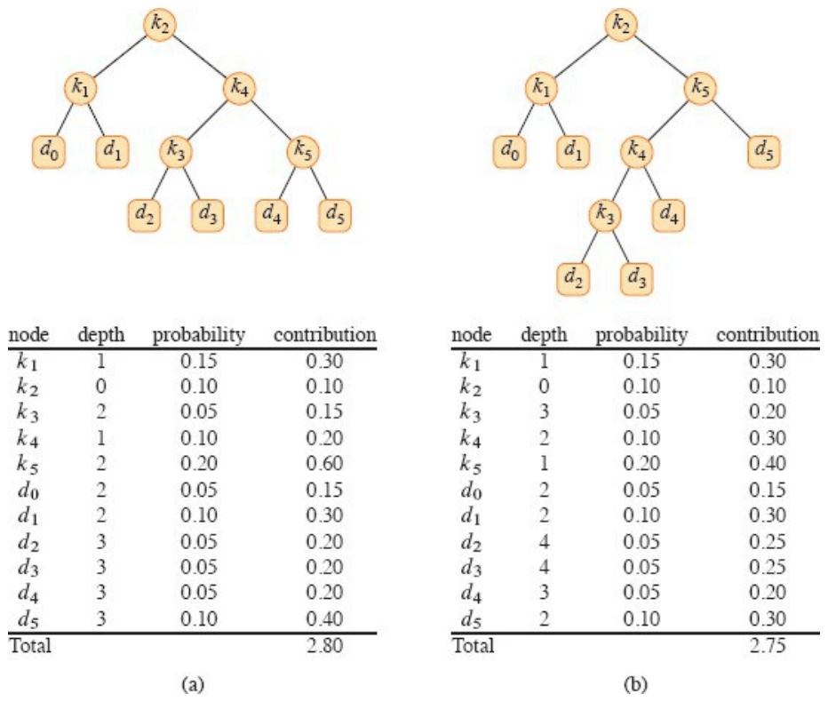
The most probable key \(k_5\) (0.20) is not the root of the optimal tree: the root is \(k_2\). The best tree with \(k_5\) at the root costs 2.85.概率最大的键 \(k_5\)（0.20）并不是最优树的根：根是 \(k_2\)。以 \(k_5\) 为根的最好的树代价为 2.85。
Step 2: structure and recurrence第 2 步：结构与递归式
In words: try every key as the root; the two subtrees are optimal trees for the key ranges on each side, and they sink one level.用文字表述：逐个尝试每个键作为根；两棵子树分别是两侧键区间的最优树，并且它们都下沉一层。
A subtree holds a contiguous range \(k_i,\dots,k_j\) with the leaves \(d_{i-1},\dots,d_j\). By cut-and-paste a subtree of an optimal tree is optimal for its range. With root \(k_r\) the left subtree holds \(k_i..k_{r-1}\) and the right subtree \(k_{r+1}..k_j\). An empty range is the single leaf \(d_{i-1}\).一棵子树保存一段连续的区间 \(k_i,\dots,k_j\)，其叶结点为 \(d_{i-1},\dots,d_j\)。用剪切粘贴可知，最优树的子树对其区间也是最优的。若根为 \(k_r\)，则左子树保存 \(k_i..k_{r-1}\)，右子树保存 \(k_{r+1}..k_j\)。空区间对应单个叶结点 \(d_{i-1}\)。
When a tree becomes a subtree, every node gets one level deeper. Its expected cost grows by the total probability of the tree.一棵树成为子树时，每个结点都会深一层。它的期望代价因此增加该树的总概率。
The term \(w(i,j)\) is the same for every root: the root adds its own \(p_r\), and the two subtrees add \(w(i,r-1)+w(r+1,j)\) for the extra level. The sum is \(w(i,j)\). The recurrence has the shape of matrix-chain with contiguous ranges and one split per subproblem.项 \(w(i,j)\) 对每个根都相同：根本身加上它自己的 \(p_r\)，两棵子树因为多出一层而各加上 \(w(i,r-1)+w(r+1,j)\)。这个和为 \(w(i,j)\)。该递归式的形式与矩阵链相同：都是连续区间，且每个子问题只有一个划分点。
Step 3: the algorithm and a trace第 3 步：算法与手工演算
OPTIMAL-BST(p, q, n)
1 let e[1 : n + 1, 0 : n], w[1 : n + 1, 0 : n], and root[1 : n, 1 : n] be new tables
2 for i = 1 to n + 1 // base cases
3 e[i, i - 1] = q[i - 1]
4 w[i, i - 1] = q[i - 1]
5 for l = 1 to n
6 for i = 1 to n - l + 1
7 j = i + l - 1
8 e[i, j] = ∞
9 w[i, j] = w[i, j - 1] + p[j] + q[j]
10 for r = i to j // try all possible roots r
11 t = e[i, r - 1] + e[r + 1, j] + w[i, j]
12 if t < e[i, j] // new minimum?
13 e[i, j] = t
14 root[i, j] = r
15 return e and root
Lines 2–4 set the base cases \(e[i,i-1]=w[i,i-1]=q_{i-1}\). Line 9 computes \(w[i,j]\) from \(w[i,j-1]\). Lines 10–14 try every root \(r\) and keep the best in \(e\) and \(root\). The ranges are filled by increasing length \(l\). Line 11 runs \(n(n+1)(n+2)/6\) times, which is 35 for \(n=5\), so the time is \(\Theta(n^3)\) and the space is \(\Theta(n^2)\).第 2–4 行设置基本情况 \(e[i,i-1]=w[i,i-1]=q_{i-1}\)。第 9 行由 \(w[i,j-1]\) 计算 \(w[i,j]\)。第 10–14 行尝试每个根 \(r\)，并把最好的结果保存在 \(e\) 和 \(root\) 中。区间按长度 \(l\) 递增的顺序填写。第 11 行执行 \(n(n+1)(n+2)/6\) 次，对于 \(n=5\) 为 35 次，因此时间为 \(\Theta(n^3)\)，空间为 \(\Theta(n^2)\)。
For the probabilities above, each cell of the first table shows \(e[i,j]\ /\ w[i,j]\).对于上面的概率，第一张表的每个单元格显示 \(e[i,j]\ /\ w[i,j]\)。
| \(j=0\) | 1 | 2 | 3 | 4 | 5 | |
|---|---|---|---|---|---|---|
| \(i=1\) | 0.05 / 0.05 | 0.45 / 0.30 | 0.90 / 0.45 | 1.25 / 0.55 | 1.75 / 0.70 | 2.75 / 1.00 |
| \(i=2\) | 0.10 / 0.10 | 0.40 / 0.25 | 0.70 / 0.35 | 1.20 / 0.50 | 2.00 / 0.80 | |
| \(i=3\) | 0.05 / 0.05 | 0.25 / 0.15 | 0.60 / 0.30 | 1.30 / 0.60 | ||
| \(i=4\) | 0.05 / 0.05 | 0.30 / 0.20 | 0.90 / 0.50 | |||
| \(i=5\) | 0.05 / 0.05 | 0.50 / 0.35 | ||||
| \(i=6\) | 0.10 / 0.10 |
| \(root[i,j]\) | \(j=1\) | 2 | 3 | 4 | 5 |
|---|---|---|---|---|---|
| \(i=1\) | 1 | 1 | 2 | 2 | 2 |
| \(i=2\) | 2 | 2 | 2 | 4 | |
| \(i=3\) | 3 | 4 | 5 | ||
| \(i=4\) | 4 | 5 | |||
| \(i=5\) | 5 |
To read off the tree, start with \(root[1,5]=2\), so \(k_2\) is the root. Its left subtree is \(k_1\) with leaves \(d_0,d_1\). Its right subtree holds \(k_3..k_5\) with root \(k_5\). The left subtree of \(k_5\) holds \(k_3,k_4\) with root \(k_4\), whose left child is \(k_3\). This is tree (b) with cost \(e[1,5]=2.75\). In general, the subtree on \(k_i..k_j\) has the root \(k_{root[i,j]}\) and recurses on \((i,root[i,j]-1)\) and \((root[i,j]+1,j)\).要读出这棵树，从 \(root[1,5]=2\) 开始，于是 \(k_2\) 是根。它的左子树是 \(k_1\)，其叶结点为 \(d_0,d_1\)。它的右子树保存 \(k_3..k_5\)，根为 \(k_5\)。\(k_5\) 的左子树保存 \(k_3,k_4\)，根为 \(k_4\)，其左孩子为 \(k_3\)。这就是代价为 \(e[1,5]=2.75\) 的树 (b)。一般地，区间 \(k_i..k_j\) 上的子树以 \(k_{root[i,j]}\) 为根，并对 \((i,root[i,j]-1)\) 和 \((root[i,j]+1,j)\) 递归。
Practice练习
Q1. (Calculation) \(n=3\) keys with \(p=(0.20,0.15,0.10)\) and \(q=(0.15,0.25,0.10,0.05)\). Compute \(e\), \(w\) and \(root\), draw the optimal tree and give its expected cost.Q1.（计算）\(n=3\) 个键，其 \(p=(0.20,0.15,0.10)\) 与 \(q=(0.15,0.25,0.10,0.05)\) 如下。计算 \(e\)、\(w\) 和 \(root\)，画出最优树，并给出其期望代价。
Answer
Each cell shows \(e\ /\ w\).每个单元格显示 \(e\ /\ w\)。
| \(j=0\) | 1 | 2 | 3 | |
|---|---|---|---|---|
| \(i=1\) | 0.15 / 0.15 | 1.00 / 0.60 | 1.85 / 0.85 | 2.40 / 1.00 |
| \(i=2\) | 0.25 / 0.25 | 0.85 / 0.50 | 1.30 / 0.65 | |
| \(i=3\) | 0.10 / 0.10 | 0.40 / 0.25 | ||
| \(i=4\) | 0.05 / 0.05 |
For \(e[1,3]\) the roots \(k_1,k_2,k_3\) give \(2.45,\ 2.40,\ 2.90\); for \(e[1,2]\) they give \(1.85,\ 1.95\) and for \(e[2,3]\) they give \(1.30,\ 1.55\). So \(root[1,3]=2\), \(root[1,2]=1\), \(root[2,3]=2\). The optimal tree has root \(k_2\) with children \(k_1\) and \(k_3\) and the four dummy keys as leaves at depth 2; its expected cost is \(0.15+2(0.20+0.10)+3(0.15+0.25+0.10+0.05)=0.15+0.60+1.65=2.40\). The most probable key \(k_1\) is not the root.对于 \(e[1,3]\)，候选根 \(k_1,k_2,k_3\) 给出 \(2.45,\ 2.40,\ 2.90\)；对于 \(e[1,2]\)，它们给出 \(1.85,\ 1.95\)；对于 \(e[2,3]\)，它们给出 \(1.30,\ 1.55\)。因此 \(root[1,3]=2\)、\(root[1,2]=1\)、\(root[2,3]=2\)。最优树的根为 \(k_2\)，其孩子为 \(k_1\) 和 \(k_3\)，四个虚拟键是深度为 2 的叶子；其期望代价为 \(0.15+2(0.20+0.10)+3(0.15+0.25+0.10+0.05)=0.15+0.60+1.65=2.40\)。概率最大的键 \(k_1\) 并不是根。
Q2. (True/false) "The root of an optimal binary search tree is the key with the highest probability." Justify.Q2.（判断）“最优二叉搜索树的根是概率最高的键。”请说明理由。
Answer
False. In the example with \(n=5\), \(k_5\) has the highest probability (0.20) but the optimal root is \(k_2\): with \(k_5\) at the root the best tree costs 2.85, while the optimal tree costs 2.75. The root must balance the weight of the left and right ranges (\(w\)), not just its own probability.错误。在 \(n=5\) 的例子中，\(k_5\) 的概率最高（0.20），但最优根为 \(k_2\)：以 \(k_5\) 为根时，最好的树代价为 2.85，而最优树的代价为 2.75。根必须平衡左右两段的权重（\(w\)），而不仅仅是其自身的概率。
Designing a DP in the exam ★★★考试中设计动态规划
Goal. Given a new optimization problem, write a complete DP answer: state, recurrence, order, answer, complexity.目标。对于一个新的最优化问题，写出完整的动态规划解答：状态、递归式、计算顺序、答案和复杂度。
Step 1: the template第 1 步：模板
In words: say what a table entry means, say how it follows from smaller entries, and say where the answer is.用文字表述：说明表中一个表项的含义，说明它如何由更小的表项得到，并说明答案在哪里。
A DP answer is marked on five parts. Write them in this order.动态规划的解答按五个部分评分。请按此顺序写出。
- State. Define the subproblem in words and symbols: "Let \(f(i,j)\) be the … for …". The state must contain everything that later choices depend on.状态。用文字和符号定义子问题：“设 \(f(i,j)\) 为……的……”。状态必须包含之后的选择所依赖的全部信息。
- Recurrence and base cases. Name the last (or first) choice. Express \(f\) through smaller states over all choices. Give the base cases. Justify it by cut-and-paste or a case analysis.递归式与基本情况。指出最后一个（或第一个）选择。对所有选择，用更小的状态表示 \(f\)。给出基本情况。用剪切粘贴或分情况分析来论证。
- Order of evaluation. Every state comes after the states it depends on: by size, row by row, or by interval length.计算顺序。每个状态都排在它所依赖的状态之后：按规模、逐行，或按区间长度。
- Answer and reconstruction. Say which entry holds the answer and how to rebuild the solution from stored choices.答案与构造。说明哪个表项存放答案，以及如何根据存储的选择重建解。
- Complexity. Time = (number of states) × (work per state). Space = table size, and any reduction.复杂度。时间 = （状态数）×（每个状态的工作量）。空间 = 表的大小，以及任何空间上的压缩。
Step 2: common patterns第 2 步：常见模式
| Shape形状 | State状态 | Recurrence idea递推思路 | Examples (time)示例（时间） |
|---|---|---|---|
| Size or prefix规模或前缀 | \(f(j)\) for size or prefix \(j\) | best over the last piece \(i\) of \(f(j-i)\) plus its gain对 \(f(j-i)\) 的最后一段 \(i\) 取最优，再加上它的收益 | rod cutting \(\Theta(n^2)\); coin change \(\Theta(kV)\); longest increasing subsequence \(\Theta(n^2)\)钢条切割 \(\Theta(n^2)\)；找零钱 \(\Theta(kV)\)；最长递增子序列 \(\Theta(n^2)\) |
| Two prefixes两个前缀 | \(f(i,j)\) for \(X_i\) and \(Y_j\) | from \(f(i-1,j-1)\), \(f(i-1,j)\), \(f(i,j-1)\) | LCS, edit distance: \(\Theta(mn)\) |
| Interval区间 | \(f(i,j)\) for the items \(i..j\) | best over a split \(k\) of \(f(i,k)+f(k+1,j)\) plus a cost对 \(f(i,k)+f(k+1,j)\) 的划分点 \(k\) 取最优，再加上一个代价 | matrix chain, optimal BST: \(\Theta(n^3)\); longest palindromic subsequence: \(\Theta(n^2)\)矩阵链、最优二叉搜索树：\(\Theta(n^3)\)；最长回文子序列：\(\Theta(n^2)\) |
| Capacity容量 | \(f(i,c)\) for the first \(i\) items and capacity \(c\)前 \(i\) 个物品、容量为 \(c\) 时的 \(f(i,c)\) | take or skip item \(i\) | 0-1 knapsack (Section 13.3): \(\Theta(nW)\) |
Step 3: a worked design, edit distance第 3 步：设计实例，编辑距离
In words: edit distance = the fewest single-character insertions, deletions and replacements that turn one string into the other.用文字表述：编辑距离 = 把一个字符串变成另一个字符串所需的最少单字符插入、删除和替换次数。
The edit distance（编辑距离）from \(x[1:m]\) to \(y[1:n]\) is the minimum number of such operations. The state is \(d[i,j]\), the edit distance between the prefixes \(x_1..x_i\) and \(y_1..y_j\). The last operation is one of three: delete \(x_i\) (from \(d[i-1,j]\)), insert \(y_j\) (from \(d[i,j-1]\)), or replace \(x_i\) by \(y_j\) (from \(d[i-1,j-1]\), free if the two are equal).从 \(x[1:m]\) 到 \(y[1:n]\) 的编辑距离是此类操作的最少次数。状态为 \(d[i,j]\)，即前缀 \(x_1..x_i\) 和 \(y_1..y_j\) 之间的编辑距离。最后一步操作有三种之一：删除 \(x_i\)（来自 \(d[i-1,j]\)），插入 \(y_j\)（来自 \(d[i,j-1]\)），或把 \(x_i\) 替换为 \(y_j\)（来自 \(d[i-1,j-1]\)；若两者相等，则不需要代价）。
For kitten → sitting the table is:以 kitten → sitting 为例，表格如下：
| \(x_i\backslash y_j\) | ε | s | i | t | t | i | n | g |
|---|---|---|---|---|---|---|---|---|
| ε | 0 | 1 | 2 | 3 | 4 | 5 | 6 | 7 |
| k | 1 | 1 | 2 | 3 | 4 | 5 | 6 | 7 |
| i | 2 | 2 | 1 | 2 | 3 | 4 | 5 | 6 |
| t | 3 | 3 | 2 | 1 | 2 | 3 | 4 | 5 |
| t | 4 | 4 | 3 | 2 | 1 | 2 | 3 | 4 |
| e | 5 | 5 | 4 | 3 | 2 | 2 | 3 | 4 |
| n | 6 | 6 | 5 | 4 | 3 | 3 | 2 | 3 |
Practice练习
Q1. (Design) Give a DP for the longest strictly increasing subsequence of \(a=\langle5,2,8,6,3,6,9,7\rangle\): state, recurrence, result, time.Q1.（设计）给出 \(a=\langle5,2,8,6,3,6,9,7\rangle\) 的最长严格递增子序列的动态规划：状态、递推式、结果、时间。
Answer
Let \(L[i]\) be the length of the longest increasing subsequence that ends at \(a_i\): \(L[i]=1+\max\{L[j]:j<i,\ a_j<a_i\}\) (the maximum of an empty set is 0). Filling for increasing \(i\) gives \(L=1,1,2,2,2,3,4,4\). The answer is \(\max_iL[i]=4\), for example \(\langle2,3,6,9\rangle\) (follow the stored predecessors). The time is \(\Theta(n^2)\); an \(O(n\lg n)\) algorithm exists (keep, for every length, the smallest possible last element and binary-search it).令 \(L[i]\) 为以 \(a_i\) 结尾的最长递增子序列的长度：\(L[i]=1+\max\{L[j]:j<i,\ a_j<a_i\}\)（空集的最大值记为 0）。对 \(i\) 递增地填表，得到 \(L=1,1,2,2,2,3,4,4\)。答案为 \(\max_iL[i]=4\)，例如 \(\langle2,3,6,9\rangle\)（沿着存储的前驱回溯）。时间为 \(\Theta(n^2)\)；存在一种 \(O(n\lg n)\) 算法（对每个长度保存可能的最小末尾元素，并对其进行二分查找）。
Q2. (Beyond the pages) Coins of values 1, 5 and 6 are available in unlimited number. Give a DP for the minimum number of coins that sum to \(V\) and solve \(V=10\). Does greedy work?Q2.（超出教材的内容）面值为 1、5 和 6 的硬币数量不限。给出凑成 \(V\) 所需最少硬币数的动态规划，并求解 \(V=10\)。贪心法是否可行？
Answer
Let \(C[v]\) be the minimum number of coins for the amount \(v\): \(C[0]=0\) and \(C[v]=1+\min\{C[v-d]:d\in\{1,5,6\},\ d\le v\}\), the same shape as rod cutting. For \(v=0,\dots,10\): \(C=0,1,2,3,4,1,1,2,3,4,2\), so \(C[10]=2\) (\(5+5\)). Greedy (largest coin first) takes \(6+1+1+1+1\), five coins, so it is not optimal. The time is \(\Theta(kV)\) for \(k\) coin values.令 \(C[v]\) 为凑成金额 \(v\) 所需的最少硬币数：\(C[0]=0\) 与 \(C[v]=1+\min\{C[v-d]:d\in\{1,5,6\},\ d\le v\}\)，形式与钢条切割相同。对于 \(v=0,\dots,10\)：\(C=0,1,2,3,4,1,1,2,3,4,2\)，因此 \(C[10]=2\)（\(5+5\)）。贪心法（先取面值最大的硬币）取 \(6+1+1+1+1\)，共五枚硬币，因此它不是最优的。对 \(k\) 种硬币面值，时间为 \(\Theta(kV)\)。
Q3. (Design) Find the length of the longest palindromic subsequence of "character" and give the recurrence.Q3.（设计）求 “character” 的最长回文子序列的长度，并给出递推式。
Answer
Let \(L[i,j]\) be the length of the longest palindromic subsequence of \(s_i..s_j\): \(L[i,j]=0\) for \(i>j\), \(L[i,i]=1\), and for \(i<j\): \(L[i,j]=L[i+1,j-1]+2\) if \(s_i=s_j\), otherwise \(\max\{L[i+1,j],\ L[i,j-1]\}\). Fill by increasing \(j-i\); the answer is \(L[1,n]\) and the time \(\Theta(n^2)\). For "character" the result is 5: "carac". (Equivalently, it is the LCS of the string and its reverse.)令 \(L[i,j]\) 为 \(s_i..s_j\) 的最长回文子序列的长度：对于 \(i>j\) 与 \(L[i,i]=1\)，为 \(L[i,j]=0\)；对于 \(i<j\)，若 \(s_i=s_j\) 则为 \(L[i,j]=L[i+1,j-1]+2\)，否则为 \(\max\{L[i+1,j],\ L[i,j-1]\}\)。按 \(j-i\) 递增的顺序填表；答案为 \(L[1,n]\)，时间为 \(\Theta(n^2)\)。对于 “character”，结果为 5：“carac”。（等价地，它是该字符串与其反转之间的 LCS。）
Terms to recognise ★需要认识的术语
| Term术语 | What to know要知道什么 |
|---|---|
| Time–memory trade-off时间与内存的权衡 | DP stores subproblem answers in a table: less time, more memory动态规划把子问题的答案存入表中：时间更少，内存更多 |
| Catalan number卡特兰数 | \(P(n)=C_{n-1}=\frac1n\binom{2n-2}{n-1}\) counts the bracketings of \(n\) matrices; exponential\(P(n)=C_{n-1}=\frac1n\binom{2n-2}{n-1}\) 计算 \(n\) 个矩阵的加括号方式数；这是指数级的 |
| Subproblem graph子问题图 | One vertex per distinct subproblem, an edge from a problem to each one it uses; bottom-up goes in reverse topological order每个不同的子问题对应一个顶点，从一个问题向它所用到的每个子问题连一条边；自底向上计算则按拓扑序的逆序进行 |
| Knuth's speedupKnuth 加速法 | Optimal roots are monotone, \(root[i,j-1]\le root[i,j]\le root[i+1,j]\); optimal BST then takes \(\Theta(n^2)\)最优根是单调的，\(root[i,j-1]\le root[i,j]\le root[i+1,j]\)；于是最优二叉搜索树可在 \(\Theta(n^2)\) 时间内求得 |
| Pseudo-polynomial time伪多项式时间 | \(\Theta(nW)\) for knapsack is polynomial in the number \(W\) but exponential in the bits of \(W\)背包问题的 \(\Theta(nW)\) 对数值 \(W\) 是多项式的，但对 \(W\) 的位数是指数级的 |
| Shortest common supersequence最短公共超序列 | Shortest sequence containing both \(X\) and \(Y\); its length is \(m+n-c[m,n]\)同时包含 \(X\) 和 \(Y\) 的最短序列；其长度为 \(m+n-c[m,n]\) |
| Longest increasing subsequence最长递增子序列 | \(L[i]=1+\max\{L[j]:j<i,\ a_j<a_i\}\) gives \(\Theta(n^2)\); an \(O(n\lg n)\) method exists |
| Cut-and-paste剪切粘贴 | Replace a subsolution of an optimal solution by a better one to reach a contradiction用更好的子解替换最优解中的一个子解，从而导出矛盾 |
| Edit-distance extensions编辑距离的扩展 | A "twiddle" of two adjacent characters uses \(d[i-2,j-2]\); a "kill" of the rest of \(x\) is allowed only last对相邻两个字符的“twiddle”操作使用 \(d[i-2,j-2]\)；对 \(x\) 其余部分的“kill”操作只允许放在最后 |
Exam-style questions考试题型练习
Q1. (Calculation, 14 marks) Five matrices \(A_1,\dots,A_5\) have dimensions \(40\times5\), \(5\times2\), \(2\times40\), \(40\times20\) and \(20\times4\). (a) Compute the tables \(m\) and \(s\) of MATRIX-CHAIN-ORDER and show all candidates for \(m[1,5]\). (8) (b) Give the optimal parenthesization and its cost. (2) (c) Compare with multiplying strictly from left to right. (2) (d) State the time and space of the algorithm and why it beats checking all parenthesizations. (2)Q1.（计算，14 分）五个矩阵 \(A_1,\dots,A_5\) 的维数分别为 \(40\times5\)、\(5\times2\)、\(2\times40\)、\(40\times20\) 和 \(20\times4\)。(a) 计算 MATRIX-CHAIN-ORDER 的表 \(m\) 和 \(s\)，并列出计算 \(m[1,5]\) 的所有候选值。（8 分）(b) 给出最优加括号方式及其代价。（2 分）(c) 与严格从左到右相乘进行比较。（2 分）(d) 给出算法的时间和空间，并说明为何它优于检查所有加括号方式。（2 分）
Answer
(a) \(p=\langle40,5,2,40,20,4\rangle\). Each cell shows \(m[i,j]\) and, in brackets, \(s[i,j]\).(a) \(p=\langle40,5,2,40,20,4\rangle\)。每个单元格显示 \(m[i,j]\)，并在方括号中显示 \(s[i,j]\)。
| \(j=1\) | 2 | 3 | 4 | 5 | |
|---|---|---|---|---|---|
| \(i=1\) | 0 | 400 (1) | 3600 (2) | 3600 (2) | 2480 (2) |
| \(i=2\) | 0 | 400 (2) | 1800 (2) | 1800 (2) | |
| \(i=3\) | 0 | 1600 (3) | 1760 (4) | ||
| \(i=4\) | 0 | 3200 (4) | |||
| \(i=5\) | 0 |
Length 2: \(40\cdot5\cdot2=400\), \(5\cdot2\cdot40=400\), \(2\cdot40\cdot20=1600\), \(40\cdot20\cdot4=3200\). Candidates for \(m[1,5]\): \(k=1\): \(0+1800+40\cdot5\cdot4=2600\); \(k=2\): \(400+1760+40\cdot2\cdot4=2480\); \(k=3\): \(3600+3200+40\cdot40\cdot4=13200\); \(k=4\): \(3600+0+40\cdot20\cdot4=6800\). The minimum is 2480 at \(k=2\).链长为 2：\(40\cdot5\cdot2=400\)、\(5\cdot2\cdot40=400\)、\(2\cdot40\cdot20=1600\)、\(40\cdot20\cdot4=3200\)。\(m[1,5]\) 的候选值：\(k=1\)：\(0+1800+40\cdot5\cdot4=2600\)；\(k=2\)：\(400+1760+40\cdot2\cdot4=2480\)；\(k=3\)：\(3600+3200+40\cdot40\cdot4=13200\)；\(k=4\)：\(3600+0+40\cdot20\cdot4=6800\)。最小值 2480 出现在 \(k=2\) 处。
(b) \(s[1,5]=2\) splits into \(A_{1:2}\) and \(A_{3:5}\); \(s[3,5]=4\) gives \((A_3A_4)A_5\). The optimum is \(((A_1A_2)((A_3A_4)A_5))\) with 2480 scalar multiplications.(b) \(s[1,5]=2\) 分为 \(A_{1:2}\) 与 \(A_{3:5}\)；\(s[3,5]=4\) 给出 \((A_3A_4)A_5\)。最优解为 \(((A_1A_2)((A_3A_4)A_5))\)，需 2480 次标量乘法。
(c) Left to right: \(400+40\cdot2\cdot40+40\cdot40\cdot20+40\cdot20\cdot4=400+3200+32000+3200=38\,800\), about 15.6 times more.(c) 从左到右：\(400+40\cdot2\cdot40+40\cdot40\cdot20+40\cdot20\cdot4=400+3200+32000+3200=38\,800\)，约为最优代价的 15.6 倍。
(d) \(\Theta(n^3)\) time (here \((5^3-5)/6=20\) candidate splits) and \(\Theta(n^2)\) space; there are only \(n(n+1)/2\) subproblems, each solved once, whereas the number of parenthesizations is the Catalan number \(C_{n-1}\), exponential in \(n\) (\(P(20)\approx1.8\cdot10^9\)).(d) \(\Theta(n^3)\) 时间（此处为 \((5^3-5)/6=20\) 个候选分割）和 \(\Theta(n^2)\) 空间；子问题只有 \(n(n+1)/2\) 个，每个只求解一次，而加括号的方式数为卡特兰数 \(C_{n-1}\)，关于 \(n\) 呈指数增长（\(P(20)\approx1.8\cdot10^9\)）。
思路：按链长 2、3、4、5 逐条对角线填，每格列出所有 k 的候选值，取最小并记下 k。
Q2. (Trace, 12 marks) Let \(X=\langle A,C,B,D,A,B\rangle\) and \(Y=\langle B,D,C,A,B\rangle\). (a) Fill the tables \(c\) and \(b\) of LCS-LENGTH. (6) (b) Trace back and give an LCS and its length. (3) (c) Give the time of LCS-LENGTH and the space needed if only the length is wanted. (3)Q2.（手工演算，12 分）设 \(X=\langle A,C,B,D,A,B\rangle\) 和 \(Y=\langle B,D,C,A,B\rangle\)。(a) 填写 LCS-LENGTH 的表 \(c\) 和 \(b\)。（6 分）(b) 回溯并给出一个 LCS 及其长度。（3 分）(c) 给出 LCS-LENGTH 的时间，以及只需要长度时所需的空间。（3 分）
Answer
(a) Each cell shows \(b[i,j]\) and \(c[i,j]\) (a match is "↖"); the traceback path is bold.(a) 每个单元格显示 \(b[i,j]\) 和 \(c[i,j]\)（匹配时为“↖”）；回溯路径以粗体显示。
| \(x_i\backslash y_j\) | ε | B | D | C | A | B |
|---|---|---|---|---|---|---|
| ε | 0 | 0 | 0 | 0 | 0 | 0 |
| A | 0 | ↑0 | ↑0 | ↑0 | ↖1 | ←1 |
| C | 0 | ↑0 | ↑0 | ↖1 | ↑1 | ↑1 |
| B | 0 | ↖1 | ←1 | ↑1 | ↑1 | ↖2 |
| D | 0 | ↑1 | ↖2 | ←2 | ←2 | ↑2 |
| A | 0 | ↑1 | ↑2 | ↑2 | ↖3 | ←3 |
| B | 0 | ↖1 | ↑2 | ↑2 | ↑3 | ↖4 |
(b) From \((6,5)\): ↖ gives \(B\), \((5,4)\): ↖ gives \(A\), \((4,3)\): ←, \((4,2)\): ↖ gives \(D\), \((3,1)\): ↖ gives \(B\). Reversed, the LCS is \(\langle B,D,A,B\rangle\) of length \(c[6,5]=4\) (it is the only LCS).(b) 从 \((6,5)\) 出发：↖ 得到 \(B\)，\((5,4)\)：↖ 得到 \(A\)，\((4,3)\)：←，\((4,2)\)：↖ 得到 \(D\)，\((3,1)\)：↖ 得到 \(B\)。逆序排列，LCS 为 \(\langle B,D,A,B\rangle\)，长度为 \(c[6,5]=4\)（它是唯一的 LCS）。
(c) \(\Theta(mn)=\Theta(30)\) entries, constant time each, so \(\Theta(mn)\) time. For the length only, two rows of \(c\) are enough: \(O(\min(m,n))\) space.(c) \(\Theta(mn)=\Theta(30)\) 个表项，每个为常数时间，因此时间为 \(\Theta(mn)\)。若只要长度，\(c\) 的两行即可：空间为 \(O(\min(m,n))\)。
Q3. (Calculation and concept, 12 marks) The prices for rods of length 1–5 are 2, 5, 9, 10, 12. (a) Compute \(r[0..5]\) and \(s[1..5]\) bottom-up. (5) (b) Give an optimal cutting of a rod of length 5. (1) (c) How many calls does CUT-ROD\((p,5)\) make, how many distinct subproblems are there, and how many iterations of the inner loop does BOTTOM-UP-CUT-ROD\((p,5)\) perform? (3) (d) Explain the difference between top-down memoization and bottom-up. (3)Q3.（计算与概念，12 分）长度为 1–5 的钢条价格分别为 2、5、9、10、12。(a) 自底向上计算 \(r[0..5]\) 和 \(s[1..5]\)。(5) (b) 给出长度为 5 的钢条的一种最优切割方案。(1) (c) CUT-ROD\((p,5)\) 共进行多少次调用？有多少个不同的子问题？BOTTOM-UP-CUT-ROD\((p,5)\) 的内层循环共执行多少次迭代？(3) (d) 解释带备忘的自顶向下方法与自底向上方法的区别。(3)
Answer
(a) \(r_1=2\). \(r_2=\max\{2+2,\,5\}=5\). \(r_3=\max\{2+5,\,5+2,\,9\}=9\), \(s_3=3\). \(r_4=\max\{2+9,\,5+5,\,9+2,\,10\}=11\), \(s_4=1\). \(r_5=\max\{2+11,\,5+9,\,9+5,\,10+2,\,12\}=14\), \(s_5=2\).
| \(j\) | 0 | 1 | 2 | 3 | 4 | 5 |
|---|---|---|---|---|---|---|
| \(r[j]\) | 0 | 2 | 5 | 9 | 11 | 14 |
| \(s[j]\) | – | 1 | 2 | 3 | 1 | 2 |
(b) \(s_5=2\) leaves 3, and \(s_3=3\): cut \(2+3\) with revenue \(5+9=14\).(b) \(s_5=2\) 余下 3；\(s_3=3\)：切下 \(2+3\)，收益为 \(5+9=14\)。
(c) \(T(5)=2^5=32\) calls. There are 6 distinct subproblems (sizes 0–5). The inner loop runs \(1+2+3+4+5=15\) times, which is \(\Theta(n^2)\).(c) 共 \(T(5)=2^5=32\) 次调用。不同的子问题有 6 个（规模 0–5）。内层循环运行 \(1+2+3+4+5=15\) 次，即 \(\Theta(n^2)\)。
(d) Both solve each subproblem once and store it. Top-down memoization keeps the recursive procedure and checks the table before computing; it solves only the subproblems that are reached, at the price of recursion overhead. Bottom-up fills the table in order of increasing size so that every subproblem finds its dependencies ready; it has no recursion and smaller constants. The asymptotic time is the same, \(\Theta(n^2)\).(d) 两者都只对每个子问题求解一次并存储结果。带备忘的自顶向下保留递归过程，并在计算之前先查表；它只求解被访问到的子问题，代价是递归的额外开销。自底向上按规模递增的次序填表，使每个子问题在计算时其依赖项已经就绪；它没有递归，且常数较小。两者的渐近时间相同，即 \(\Theta(n^2)\)。
Q4. (Calculation, 12 marks) Four keys have \(p=(0.20,0.15,0.15,0.05)\) and the dummy keys \(q=(0.05,0.05,0.15,0.10,0.10)\). (a) Compute \(e\), \(w\) and \(root\) of OPTIMAL-BST. (8) (b) Draw the optimal tree and give its expected search cost. (2) (c) What is the expected cost of the best tree whose root is the most probable key? (2)Q4.（计算，12 分）四个键具有 \(p=(0.20,0.15,0.15,0.05)\)，虚拟键具有 \(q=(0.05,0.05,0.15,0.10,0.10)\)。(a) 计算 OPTIMAL-BST 的 \(e\)、\(w\) 和 \(root\)。（8 分）(b) 画出最优树，并给出其期望查找代价。（2 分）(c) 以概率最大的键为根的最好的树，其期望代价是多少？（2 分）
Answer
(a) Each cell shows \(e[i,j]\ /\ w[i,j]\).(a) 每个单元格显示 \(e[i,j]\ /\ w[i,j]\)。
| \(j=0\) | 1 | 2 | 3 | 4 | |
|---|---|---|---|---|---|
| \(i=1\) | 0.05 / 0.05 | 0.40 / 0.30 | 1.15 / 0.60 | 1.90 / 0.85 | 2.55 / 1.00 |
| \(i=2\) | 0.05 / 0.05 | 0.55 / 0.35 | 1.25 / 0.60 | 1.75 / 0.75 | |
| \(i=3\) | 0.15 / 0.15 | 0.65 / 0.40 | 1.15 / 0.55 | ||
| \(i=4\) | 0.10 / 0.10 | 0.45 / 0.25 | |||
| \(i=5\) | 0.10 / 0.10 |
| \(root[i,j]\) | \(j=1\) | 2 | 3 | 4 |
|---|---|---|---|---|
| \(i=1\) | 1 | 2 | 2 | 2 |
| \(i=2\) | 2 | 3 | 3 | |
| \(i=3\) | 3 | 3 | ||
| \(i=4\) | 4 |
For example \(e[1,3]\): roots \(k_1,k_2,k_3\) give \(0.05+1.25+0.85=2.15\), \(0.40+0.65+0.85=1.90\), \(1.15+0.10+0.85=2.10\). For \(e[1,4]\): \(r=1,\dots,4\) give \(2.80,\ 2.55,\ 2.60,\ 3.00\).例如对于 \(e[1,3]\)：候选根 \(k_1,k_2,k_3\) 给出 \(0.05+1.25+0.85=2.15\)、\(0.40+0.65+0.85=1.90\)、\(1.15+0.10+0.85=2.10\)。对于 \(e[1,4]\)：\(r=1,\dots,4\) 给出 \(2.80,\ 2.55,\ 2.60,\ 3.00\)。
(b) \(root[1,4]=2\): \(k_2\) is the root with left child \(k_1\); the right subtree is rooted at \(k_3\) (\(root[3,4]=3\)) with left leaf \(d_2\) and right child \(k_4\) (leaves \(d_3,d_4\)). Expected cost \(e[1,4]=2.55\).(b) \(root[1,4]=2\)：\(k_2\) 为根，其左孩子为 \(k_1\)；右子树以 \(k_3\)（\(root[3,4]=3\)）为根，其左叶子为 \(d_2\)，右孩子为 \(k_4\)（叶子为 \(d_3,d_4\)）。期望代价为 \(e[1,4]=2.55\)。
(c) The most probable key is \(k_1\) (\(p_1=0.20\)); the root candidate \(r=1\) gives \(e[1,0]+e[2,4]+w[1,4]=0.05+1.75+1.00=2.80\), which is worse than 2.55.(c) 概率最大的键是 \(k_1\)（\(p_1=0.20\)）；根候选 \(r=1\) 给出 \(e[1,0]+e[2,4]+w[1,4]=0.05+1.75+1.00=2.80\)，比 2.55 更差。
易错：e[i,i-1] = w[i,i-1] = q_{i-1} 这一行不能漏；每个候选根都要加同一个 w(i,j)。
Q5. (Concepts and design, 14 marks) (a) State the two ingredients a problem needs for dynamic programming and show how each appears in matrix-chain multiplication. (4) (b) A graph has the vertices \(q,r,s,t\) and edges between \(q\) and \(r\), \(r\) and \(t\), \(t\) and \(s\), \(s\) and \(q\) (in both directions). Show that longest simple path lacks optimal substructure. (4) (c) A string of \(n=20\) characters must be broken after the characters \(3\), \(8\) and \(15\). One break of a piece of length \(\ell\) costs \(\ell\). Give a DP for the cheapest order of the breaks and compute its cost. (6)Q5.（概念与设计，14 分）(a) 陈述动态规划所需问题的两个要素，并说明每个要素在矩阵链乘法中如何体现。（4 分）(b) 一个图的顶点为 \(q,r,s,t\)，边连接 \(q\) 与 \(r\)、\(r\) 与 \(t\)、\(t\) 与 \(s\)、\(s\) 与 \(q\)（双向）。证明最长简单路径缺乏最优子结构。（4 分）(c) 一个含 \(n=20\) 个字符的字符串必须在字符 \(3\)、\(8\) 和 \(15\) 之后断开。对长度为 \(\ell\) 的一段进行一次断开的代价为 \(\ell\)。给出求最便宜断开次序的动态规划，并计算其代价。（6 分）
Answer
(a) Optimal substructure: an optimal solution contains optimal solutions of subproblems. For matrix chains, if the best parenthesization of \(A_{i:j}\) splits at \(k\), the parts inside it are optimal for \(A_{i:k}\) and \(A_{k+1:j}\), otherwise cut-and-paste of a cheaper part would improve the whole. Overlapping subproblems: the same subproblems are met repeatedly. For matrix chains there are only \(n(n+1)/2\) different \(A_{i:j}\), but the recursion solves them exponentially often; a table solves each once.(a) 最优子结构：最优解包含子问题的最优解。对于矩阵链，若 \(A_{i:j}\) 的最优加括号在 \(k\) 处分割，则其中两部分分别是 \(A_{i:k}\) 与 \(A_{k+1:j}\) 的最优解；否则可用更便宜的部分通过剪切粘贴改进整体。重叠子问题：同一子问题被反复遇到。对于矩阵链，只有 \(n(n+1)/2\) 个不同的 \(A_{i:j}\)，但递归会以指数次数求解它们；用表格则每个只需求解一次。
(b) A longest simple path from \(q\) to \(t\) is \(q\to r\to t\) (2 edges). Its subpath \(q\to r\) is not a longest simple path from \(q\) to \(r\), because \(q\to s\to t\to r\) has 3 edges, and \(r\to t\) is not longest from \(r\) to \(t\), because \(r\to q\to s\to t\) has 3 edges. Gluing these two longer paths gives \(q\to s\to t\to r\to q\to s\to t\), which repeats vertices. The subproblems share vertices, so they are not independent.(b) 从 \(q\) 到 \(t\) 的一条最长简单路径是 \(q\to r\to t\)（2 条边）。它的子路径 \(q\to r\) 不是从 \(q\) 到 \(r\) 的最长简单路径，因为 \(q\to s\to t\to r\) 有 3 条边；\(r\to t\) 也不是从 \(r\) 到 \(t\) 的最长路径，因为 \(r\to q\to s\to t\) 有 3 条边。把这两条较长的路径拼接起来得到 \(q\to s\to t\to r\to q\to s\to t\)，它重复了顶点。这些子问题共享顶点，因此不相互独立。
(c) Let \(pos=(0,3,8,15,20)\) be the ends and breakpoints. \(c[i,j]\) is the minimum cost of making all breaks strictly between \(pos_i\) and \(pos_j\) in the piece from \(pos_i\) to \(pos_j\): \(c[i,i+1]=0\) and \(c[i,j]=\min_{i<k<j}\{c[i,k]+c[k,j]\}+(pos_j-pos_i)\), because the first break (at \(pos_k\)) costs the length of the whole piece and leaves two independent pieces. Fill by increasing \(j-i\); the answer is \(c[0,4]\). There are \(\Theta(m^2)\) subproblems with \(O(m)\) choices for \(m\) breaks: \(\Theta(m^3)\) time, independent of \(n\).(c) 设 \(pos=(0,3,8,15,20)\) 为两端与各断点。\(c[i,j]\) 是在从 \(pos_i\) 到 \(pos_j\) 的这一段中，完成所有位于 \(pos_i\) 与 \(pos_j\) 之间断开所需的最小代价：\(c[i,i+1]=0\) 和 \(c[i,j]=\min_{i<k<j}\{c[i,k]+c[k,j]\}+(pos_j-pos_i)\)（原因是：第一次断开（在 \(pos_k\) 处）的代价为整段的长度，并留下两个相互独立的段）。按 \(j-i\) 递增的顺序填表；答案为 \(c[0,4]\)。共有 \(\Theta(m^2)\) 个子问题，每个子问题有 \(O(m)\) 种选择，共 \(m\) 次断开，因此时间为 \(\Theta(m^3)\)，与 \(n\) 无关。
Values: \(c[0,2]=8\), \(c[1,3]=12\), \(c[2,4]=12\); \(c[0,3]=\min\{12,8\}+15=23\); \(c[1,4]=\min\{12,12\}+17=29\); \(c[0,4]=\min\{29,\ 8+12,\ 23\}+20=40\) with the first break at \(pos_2=8\). The cheapest order is: break at 8 (cost 20), then the left piece at 3 (cost 8) and the right piece at 15 (cost 12), total 40. Breaking left to right costs \(20+17+12=49\) and right to left \(20+15+8=43\).示例数据：\(c[0,2]=8\)、\(c[1,3]=12\)、\(c[2,4]=12\)；\(c[0,3]=\min\{12,8\}+15=23\)；\(c[1,4]=\min\{12,12\}+17=29\)；\(c[0,4]=\min\{29,\ 8+12,\ 23\}+20=40\)，且第一次断开在 \(pos_2=8\) 处。最便宜的顺序是：先在 8 处断开（代价 20），然后左段在 3 处断开（代价 8），右段在 15 处断开（代价 12），总计 40。从左到右断开的代价为 \(20+17+12=49\)，从右到左为 \(20+15+8=43\)。
Textbook exercises课后习题
Textbook exercises with answers: 14 questions教材习题及答案，共 14 题，点击展开
E1. (Exercise 14.1-2) Show, by means of a counterexample, that the following "greedy" strategy does not always determine an optimal way to cut rods. Define the density of a rod of length \(i\) to be \(p_i / i\), that is, its value per inch. The greedy strategy for a rod of length \(n\) cuts off a first piece of length \(i\), where \(1 \le i \le n\), having maximum density. It then continues by applying the greedy strategy to the remaining piece of length \(n - i\).E1.（练习 14.1-2）用反例说明：下面的“贪心”策略并不总能确定钢条切割的最优方案。把长度为 \(i\) 的钢条的密度定义为 \(p_i / i\)，即每英寸的价值。对于长度为 \(n\) 的钢条，贪心策略切下长度为 \(i\) 的第一段，其中 \(1 \le i \le n\)，且它的密度最大。然后对剩下长度为 \(n - i\) 的一段继续应用贪心策略。
Answer
Take \(n = 4\) and the prices取 \(n = 4\) 及其价格如下
| length \(i\) | 1 | 2 | 3 | 4 |
|---|---|---|---|---|
| price \(p_i\) | 1 | 5 | 8 | 9 |
| density \(p_i / i\) | 1 | 2.5 | 2.67 | 2.25 |
The maximum density is at \(i = 3\), so the greedy strategy cuts a piece of length 3 (value 8). The remaining piece has length 1 and is worth \(p_1 = 1\). The greedy revenue is \(8 + 1 = 9\).最大密度出现在 \(i = 3\)，因此贪心策略切下长度为 3 的一段（价值 8）。剩下的一段长度为 1，价值为 \(p_1 = 1\)。贪心得到的收益为 \(8 + 1 = 9\)。
Cutting two pieces of length 2 gives \(5 + 5 = 10 > 9\). So greedy is not optimal.切成两段长度为 2 的钢条可得 \(5 + 5 = 10 > 9\)。因此贪心不是最优的。
思路：密度最大的 3 号片并不在最优解里，最优是 2+2。
E2. (Exercise 14.1-3) Consider a modification of the rod-cutting problem in which, in addition to a price \(p_i\) for each rod length \(i\), each cut incurs a fixed cost of \(c\). The revenue of a solution is the sum of the prices of the pieces minus the costs of making the cuts. Give a dynamic-programming algorithm to solve this modified problem.E2.（练习 14.1-3）考虑钢条切割问题的一个变体：除了每个长度 \(i\) 的价格 \(p_i\) 之外，每次切割还产生固定代价 \(c\)。解的收益是各段价格之和减去切割的代价。请给出一个动态规划算法来求解这个变体。
Answer
Let \(r_j\) be the maximum revenue for a rod of length \(j\). Consider the first piece of an optimal solution, of length \(i\). If \(i = j\) the rod is sold uncut, with no cost. If \(i < j\), one cut separates the first piece, which costs \(c\), and the remaining rod of length \(j - i\) is solved optimally (its own cuts are already counted in \(r_{j-i}\)). Hence设 \(r_j\) 为长度为 \(j\) 的钢条的最大收益。考虑最优解的第一段，其长度为 \(i\)。若 \(i = j\)，则整根钢条不切割直接出售，没有代价。若 \(i < j\)，则切一刀分出第一段，这一刀的代价为 \(c\)，而剩下长度为 \(j - i\) 的钢条按最优方式求解（它自己的切割已经计入 \(r_{j-i}\) 中）。于是
\[r_0 = 0,\qquad r_j = \max\Bigl(p_j,\ \max_{1 \le i \le j-1} \bigl(p_i + r_{j-i} - c\bigr)\Bigr).\]
CUT-ROD-WITH-COST(p, n, c)
1 let r[0 : n] be a new array
2 r[0] = 0
3 for j = 1 to n
4 q = p[j]
5 for i = 1 to j - 1
6 q = max(q, p[i] + r[j - i] - c)
7 r[j] = q
8 return r[n]
Optimal substructure holds because the remainder must itself be an optimal solution (otherwise replacing it improves the total). There are \(n\) subproblems and each takes \(O(n)\) time, so the running time is \(\Theta(n^2)\) and the space \(\Theta(n)\). With \(c = 0\) it reduces to the ordinary rod-cutting recurrence.最优子结构成立，因为剩下的部分本身必须是最优解（否则替换它就能提高总收益）。共有 \(n\) 个子问题，每个需要 \(O(n)\) 时间，因此运行时间为 \(\Theta(n^2)\)，空间为 \(\Theta(n)\)。当 \(c = 0\) 时，它退化为普通钢条切割的递归式。
思路：不切时无代价；切下第一段时付一次 c，余下部分的切割费用已含在 r[j−i] 里。
E3. (Exercise 14.1-6) The Fibonacci numbers are defined by \(F_0 = 0\), \(F_1 = 1\) and \(F_i = F_{i-1} + F_{i-2}\) for \(i \ge 2\). Give an \(O(n)\)-time dynamic-programming algorithm to compute the \(n\)th Fibonacci number. Draw the subproblem graph. How many vertices and edges does the graph contain?E3.（练习 14.1-6）斐波那契数由 \(F_0 = 0\)、\(F_1 = 1\) 和对于 \(i \ge 2\) 的 \(F_i = F_{i-1} + F_{i-2}\) 定义。请给出一个 \(O(n)\) 时间的动态规划算法，计算第 \(n\) 个斐波那契数。画出子问题图。该图包含多少个顶点和多少条边？
Answer
Compute the numbers bottom-up and store them, so that each is computed once from the two before it.自底向上计算这些数并将其存储起来，使得每个数只由它前面的两个数计算一次。
FIB(n)
1 let F[0 : n] be a new array
2 F[0] = 0
3 F[1] = 1
4 for i = 2 to n
5 F[i] = F[i - 1] + F[i - 2]
6 return F[n]
The loop does \(n - 1\) additions, so the time is \(O(n)\) (additions of numbers counted as unit cost).循环执行 \(n - 1\) 次加法，因此时间为 \(O(n)\)（把数的加法都按单位代价计算）。
Subproblem graph. There is one vertex \(v_i\) for each subproblem \(F_i\), \(i = 0, 1, \ldots, n\), and a directed edge from \(v_i\) to \(v_j\) if computing \(F_i\) directly needs \(F_j\). For \(i \ge 2\) the vertex \(v_i\) has the two edges \(v_i \to v_{i-1}\) and \(v_i \to v_{i-2}\); \(v_0\) and \(v_1\) have none:子问题图。对每个子问题 \(F_i\)、\(i = 0, 1, \ldots, n\) 各有一个顶点 \(v_i\)；若直接计算 \(F_i\) 需要用到 \(F_j\)，则从 \(v_i\) 到 \(v_j\) 有一条有向边。对于 \(i \ge 2\)，顶点 \(v_i\) 有两条边 \(v_i \to v_{i-1}\) 和 \(v_i \to v_{i-2}\)；\(v_0\) 和 \(v_1\) 没有边：
v_n -> v_{n-1} -> v_{n-2} -> ... -> v_2 -> v_1
\______^ \_______^ ... \____^ ... v_2 -> v_0
(each \(v_i\) points to \(v_{i-1}\) and to \(v_{i-2}\)). The graph has \(n + 1\) vertices and \(2(n - 1) = 2n - 2\) edges (for \(n \ge 1\)), because exactly the \(n - 1\) vertices \(v_2, \ldots, v_n\) have two outgoing edges. The running time of the DP is the number of vertices plus edges, \(\Theta(n)\).（每个 \(v_i\) 指向 \(v_{i-1}\) 和 \(v_{i-2}\)）。该图对于 \(n \ge 1\) 共有 \(n + 1\) 个顶点和 \(2(n - 1) = 2n - 2\) 条边，因为恰好有 \(n - 1\) 个顶点 \(v_2, \ldots, v_n\) 有两条出边。动态规划的运行时间即顶点数加边数，为 \(\Theta(n)\)。
思路：子问题图有 n+1 个点，v_2..v_n 各有 2 条出边，共 2n−2 条边。
E4. (Exercise 14.2-1) Find an optimal parenthesization of a matrix-chain product whose sequence of dimensions is \(\langle 5, 10, 3, 12, 5, 50, 6 \rangle\), i.e. \(A_i\) is \(p_{i-1} \times p_i\) with \(p = (5, 10, 3, 12, 5, 50, 6)\).E4.（练习 14.2-1）求一个矩阵链乘积的最优加括号方式，其维数序列为 \(\langle 5, 10, 3, 12, 5, 50, 6 \rangle\)，即 \(A_i\) 为 \(p_{i-1} \times p_i\)，其中 \(p = (5, 10, 3, 12, 5, 50, 6)\)。
Answer
Use \(m[i,j] = \min_{i \le k < j} \bigl(m[i,k] + m[k+1,j] + p_{i-1} p_k p_j\bigr)\), \(m[i,i] = 0\), and record the best \(k\) in \(s[i,j]\). Filling the table by increasing chain length gives (row \(i\), columns \(j = i, \ldots, 6\)):使用 \(m[i,j] = \min_{i \le k < j} \bigl(m[i,k] + m[k+1,j] + p_{i-1} p_k p_j\bigr)\)、\(m[i,i] = 0\)，并把最好的 \(k\) 记录在 \(s[i,j]\) 中。按链长递增的顺序填表，得到（行 \(i\)，列 \(j = i, \ldots, 6\)）：
m[i,j] j=1 j=2 j=3 j=4 j=5 j=6
i=1 0 150 330 405 1655 2010
i=2 0 360 330 2430 1950
i=3 0 180 930 1770
i=4 0 3000 1860
i=5 0 1500
i=6 0
s[i,j] j=2 j=3 j=4 j=5 j=6
i=1 1 2 2 4 2
i=2 2 2 2 2
i=3 3 4 4
i=4 4 4
i=5 5
For example \(m[1,6] = m[1,2] + m[3,6] + 5 \cdot 3 \cdot 6 = 150 + 1770 + 90 = 2010\). Reading the splits: \(s[1,6] = 2\) gives \((A_1 A_2)(A_3 \cdots A_6)\); \(s[3,6] = 4\) gives \((A_3 A_4)(A_5 A_6)\). The optimal parenthesization is例如 \(m[1,6] = m[1,2] + m[3,6] + 5 \cdot 3 \cdot 6 = 150 + 1770 + 90 = 2010\)。读取划分点：\(s[1,6] = 2\) 给出 \((A_1 A_2)(A_3 \cdots A_6)\)；\(s[3,6] = 4\) 给出 \((A_3 A_4)(A_5 A_6)\)。最优加括号方式为
\[((A_1 A_2)((A_3 A_4)(A_5 A_6))),\]
with \(2010\) scalar multiplications.共需 \(2010\) 次标量乘法。
思路：按链长填 m 与 s 表，再从 s[1,6] 递归读出括号。
E5. (Exercise 14.2-6) Show that a full parenthesization of an \(n\)-element expression has exactly \(n - 1\) pairs of parentheses.E5.（练习 14.2-6）证明：含 \(n\) 个元素的表达式的完全加括号形式恰好有 \(n - 1\) 对括号。
Answer
A full parenthesization of a single element is the element itself (no parentheses); for \(n \ge 2\) it is \((L\,R)\) where \(L\) and \(R\) are full parenthesizations of the first \(k\) and the last \(n - k\) elements, \(1 \le k < n\).单个元素的完全加括号形式就是该元素本身（不带括号）；对于 \(n \ge 2\)，它是 \((L\,R)\)，其中 \(L\) 和 \(R\) 分别是前 \(k\) 个元素和后 \(n - k\) 个元素的完全加括号形式，\(1 \le k < n\)。
We prove by strong induction on \(n\) that it has exactly \(n - 1\) pairs.我们对 \(n\) 用强归纳法证明：它恰好有 \(n - 1\) 对括号。
- Base case \(n = 1\): there are \(0 = n - 1\) pairs.基本情况 \(n = 1\)：有 \(0 = n - 1\) 对括号。
- Step. Let \(n \ge 2\) and assume the claim for all smaller sizes. The parenthesization is \((L\,R)\). By hypothesis \(L\) has \(k - 1\) pairs and \(R\) has \(n - k - 1\) pairs. Adding the outer pair, the total is \((k - 1) + (n - k - 1) + 1 = n - 1\).归纳步。设 \(n \ge 2\)，并假定结论对所有更小的规模都成立。该加括号形式为 \((L\,R)\)。由归纳假设，\(L\) 有 \(k - 1\) 对括号，\(R\) 有 \(n - k - 1\) 对括号。加上最外层的一对，总数为 \((k - 1) + (n - k - 1) + 1 = n - 1\)。
So every full parenthesization of \(n\) elements has exactly \(n - 1\) pairs. This also matches the fact that the product of \(n\) matrices needs \(n - 1\) multiplications, one for each pair.因此，任何含 \(n\) 个元素的完全加括号形式恰好有 \(n - 1\) 对括号。这也与下述事实相符：\(n\) 个矩阵的乘积需要 \(n - 1\) 次乘法，每对括号对应一次乘法。
思路：对 n 做强归纳，(L R) 的括号数 = (k−1)+(n−k−1)+1。
E6. (Exercise 14.3-4) Professor Capulet claims that she can find an optimal parenthesization of \(A_i A_{i+1} \cdots A_j\) greedily: choose the split point \(k\) that minimizes \(p_{i-1} p_k p_j\) before solving the subproblems, then parenthesize \(A_i \cdots A_k\) and \(A_{k+1} \cdots A_j\) recursively. Find an instance of the matrix-chain multiplication problem for which this greedy approach yields a suboptimal solution.E6.（练习 14.3-4）Capulet 教授声称她可以为 \(A_i A_{i+1} \cdots A_j\) 贪心地找到最优加括号方式：在求解子问题之前，选择使 \(p_{i-1} p_k p_j\) 最小的划分点 \(k\)，然后再对 \(A_i \cdots A_k\) 和 \(A_{k+1} \cdots A_j\) 递归地加括号。请找一个矩阵链乘法问题的实例，使这种贪心方法得到的不是最优解。
Answer
Take three matrices with dimensions \(p = \langle 1, 1, 2, 3 \rangle\): \(A_1\) is \(1 \times 1\), \(A_2\) is \(1 \times 2\) and \(A_3\) is \(2 \times 3\).取三个矩阵，维数为 \(p = \langle 1, 1, 2, 3 \rangle\)：\(A_1\) 为 \(1 \times 1\)，\(A_2\) 为 \(1 \times 2\)，\(A_3\) 为 \(2 \times 3\)。
The greedy rule compares the cost of the last multiplication for each split:贪心规则比较每个划分点对应的最后一次乘法的代价：
- \(k = 1\): \(p_0 p_1 p_3 = 1 \cdot 1 \cdot 3 = 3\);
- \(k = 2\): \(p_0 p_2 p_3 = 1 \cdot 2 \cdot 3 = 6\).
Greedy picks \(k = 1\), i.e. \(A_1 (A_2 A_3)\). Its total cost is \(3 + p_1 p_2 p_3 = 3 + 1 \cdot 2 \cdot 3 = 9\).贪心选择 \(k = 1\)，即 \(A_1 (A_2 A_3)\)。其总代价为 \(3 + p_1 p_2 p_3 = 3 + 1 \cdot 2 \cdot 3 = 9\)。
The other split gives \((A_1 A_2) A_3\) with cost \(p_0 p_1 p_2 + p_0 p_2 p_3 = 2 + 6 = 8\), which is smaller. So greedy is suboptimal (\(9 > 8\)): the cost of the sub-products must be taken into account, which is why all subproblems have to be solved.另一个划分点给出 \((A_1 A_2) A_3\)，代价为 \(p_0 p_1 p_2 + p_0 p_2 p_3 = 2 + 6 = 8\)，更小。因此贪心不是最优的（\(9 > 8\)）：必须计入子乘积的代价，这正是所有子问题都必须求解的原因。
思路：只看最后一次乘法的代价会忽略子链的代价；p = ⟨1,1,2,3⟩ 贪心 9，最优 8。
E7. (Exercise 14.3-5) Suppose that the rod-cutting problem also had a limit \(l_i\) on the number of pieces of length \(i\) allowed to be produced, for \(i = 1, 2, \ldots, n\). Show that the optimal-substructure property of rod cutting no longer holds.E7.（练习 14.3-5）假设钢条切割问题还对可生产的长度为 \(i\) 的钢条段数设有上限 \(l_i\)，其中 \(i = 1, 2, \ldots, n\)。证明在有这一限制时，钢条切割的最优子结构性质不再成立。
Answer
Without limits, if the first piece of an optimal solution for length \(n\) has length \(i\), the rest must be an optimal solution for length \(n - i\), by a cut-and-paste argument: replacing it by a better one improves the whole. With limits this fails, because a better solution to the subproblem may use pieces that the first piece has already used up, so the combination is not allowed.没有上限时，若长度为 \(n\) 的最优解的第一段长度为 \(i\)，则其余部分必须是长度为 \(n - i\) 的最优解（剪切粘贴论证）：用更好的解替换它，整体就会变好。有了上限，这一点不再成立：子问题的一个更好的解可能用到了第一段已经用掉的那些钢条段，因此这种组合是不允许的。
Counterexample. Let \(n = 4\), with prices \(p_1 = 1\), \(p_2 = 10\), \(p_3 = 2\), \(p_4 = 1\), and limits \(l_1 = 4\), \(l_2 = l_3 = l_4 = 1\). The feasible solutions for length 4 are \(\{4\}\) (value 1), \(\{3,1\}\) (value 3), \(\{2,1,1\}\) (value 12) and \(\{1,1,1,1\}\) (value 4); \(\{2,2\}\) is forbidden. So the unique optimum is \(\{2, 1, 1\}\) with value 12.反例。设 \(n = 4\)，价格为 \(p_1 = 1\)、\(p_2 = 10\)、\(p_3 = 2\)、\(p_4 = 1\)，上限为 \(l_1 = 4\)、\(l_2 = l_3 = l_4 = 1\)。长度为 4 的可行解有 \(\{4\}\)（价值 1）、\(\{3,1\}\)（价值 3）、\(\{2,1,1\}\)（价值 12）和 \(\{1,1,1,1\}\)（价值 4）；\(\{2,2\}\) 是不允许的。因此唯一的最优解是 \(\{2, 1, 1\}\)，价值为 12。
Take its piece of length 2 as the first piece. The remainder is a rod of length 2, and its solution in the optimum is \(\{1, 1\}\) with value \(2\). But the best solution of the length-2 subproblem (with the same limits) is a single piece of length 2, with value \(10\). This better solution cannot be combined with the first piece of length 2 because \(l_2 = 1\). So an optimal solution of the whole problem does not contain an optimal solution of the subproblem: optimal substructure fails.把最优解中长度为 2 的一段作为第一段。其余部分是长度为 2 的钢条，它在最优解中的方案是 \(\{1, 1\}\)，价值为 \(2\)。但长度为 2 的子问题（在相同上限下）的最好解是一段长度为 2 的钢条，价值为 \(10\)。这个更好的解不能与第一段长度为 2 的钢条组合，因为 \(l_2 = 1\)。因此，整个问题的最优解并不包含该子问题的最优解：最优子结构不成立。
思路：子问题的最优解可能用掉了第一段已占用的名额，拼起来不可行。
E8. (Exercise 14.4-1) Determine an LCS of \(\langle 1, 0, 0, 1, 0, 1, 0, 1 \rangle\) and \(\langle 0, 1, 0, 1, 1, 0, 1, 1, 0 \rangle\).E8.（练习 14.4-1）求 \(\langle 1, 0, 0, 1, 0, 1, 0, 1 \rangle\) 和 \(\langle 0, 1, 0, 1, 1, 0, 1, 1, 0 \rangle\) 的一个 LCS。
Answer
Let \(X\) be the first and \(Y\) the second sequence (\(m = 8\), \(n = 9\)). Fill \(c[i,j]\), the LCS length of \(X[1:i]\) and \(Y[1:j]\): \(c[i,j] = c[i-1,j-1] + 1\) if \(x_i = y_j\), otherwise \(\max(c[i-1,j],\ c[i,j-1])\), and \(0\) on the border.设 \(X\) 为第一个序列，\(Y\) 为第二个序列（\(m = 8\)，\(n = 9\)）。填写 \(c[i,j]\)，即 \(X[1:i]\) 和 \(Y[1:j]\) 的 LCS 长度：若 \(x_i = y_j\)，则为 \(c[i,j] = c[i-1,j-1] + 1\)；否则为 \(\max(c[i-1,j],\ c[i,j-1])\)；边界上为 \(0\)。
y_j: 0 1 0 1 1 0 1 1 0
j = 0 1 2 3 4 5 6 7 8 9
i=0 - 0 0 0 0 0 0 0 0 0 0
i=1 x=1 0 0 1 1 1 1 1 1 1 1
i=2 x=0 0 1 1 2 2 2 2 2 2 2
i=3 x=0 0 1 1 2 2 2 3 3 3 3
i=4 x=1 0 1 2 2 3 3 3 4 4 4
i=5 x=0 0 1 2 3 3 3 4 4 4 5
i=6 x=1 0 1 2 3 4 4 4 5 5 5
i=7 x=0 0 1 2 3 4 4 5 5 5 6
i=8 x=1 0 1 2 3 4 5 5 6 6 6
The LCS length is \(c[8,9] = 6\). Tracing back from \((8, 9)\) (diagonal when \(x_i = y_j\), otherwise toward the larger neighbour, upward on ties) collects the matches and gives the LCS \(\langle 1, 0, 0, 1, 1, 0 \rangle\). It is a subsequence of \(X\) (positions \(1, 2, 3, 4, 6, 7\)) and of \(Y\) (positions \(2, 3, 6, 7, 8, 9\)). The LCS is not unique; any common subsequence of length 6 is correct.LCS 的长度为 \(c[8,9] = 6\)。从 \((8, 9)\) 开始回溯（当 \(x_i = y_j\) 时走对角线，否则走向较大的邻格，相等时向上），收集匹配的符号，得到 LCS \(\langle 1, 0, 0, 1, 1, 0 \rangle\)。它是 \(X\) 的子序列（位置为 \(1, 2, 3, 4, 6, 7\)），也是 \(Y\) 的子序列（位置为 \(2, 3, 6, 7, 8, 9\)）。LCS 不唯一；任何长度为 6 的公共子序列都是正确的。
思路：填 c 表，c[8,9]=6，再沿箭头回溯得到 ⟨1,0,0,1,1,0⟩。
E9. (Exercise 14.4-2) Give pseudocode to reconstruct an LCS from the completed table \(c\) and the original sequences \(X = \langle x_1, \ldots, x_m \rangle\) and \(Y = \langle y_1, \ldots, y_n \rangle\) in \(O(m + n)\) time, without using the table \(b\) of arrows.E9.（练习 14.4-2）给出伪代码，在 \(O(m + n)\) 时间内，利用填好的表 \(c\) 和原始序列 \(X = \langle x_1, \ldots, x_m \rangle\)、\(Y = \langle y_1, \ldots, y_n \rangle\) 重建一个 LCS，且不使用箭头表 \(b\)。
Answer
Start at \((m, n)\) and walk back. If \(x_i = y_j\), then \(c[i,j] = c[i-1,j-1] + 1\) and \(x_i\) is the last element of some LCS: output it and move to \((i-1, j-1)\). Otherwise \(c[i,j] = \max(c[i-1,j],\ c[i,j-1])\), so move to the neighbour with the larger (equal is fine) value; that neighbour has the same LCS length, so no element is lost. Elements are written into an array \(Z\) from the back.从 \((m, n)\) 开始向回走。若 \(x_i = y_j\)，则 \(c[i,j] = c[i-1,j-1] + 1\)，且 \(x_i\) 是某个 LCS 的最后一个元素：输出它并转到 \((i-1, j-1)\)。否则 \(c[i,j] = \max(c[i-1,j],\ c[i,j-1])\)，于是转到值较大（相等也可以）的邻格；该邻格的 LCS 长度相同，因此不会丢失任何元素。元素从后往前写入数组 \(Z\) 中。
LCS-RECONSTRUCT(c, X, Y, m, n)
1 let Z[1 : c[m, n]] be a new array
2 i = m
3 j = n
4 k = c[m, n]
5 while i > 0 and j > 0
6 if X[i] == Y[j]
7 Z[k] = X[i]
8 k = k - 1
9 i = i - 1
10 j = j - 1
11 elseif c[i - 1, j] >= c[i, j - 1]
12 i = i - 1
13 else
14 j = j - 1
15 return Z
Each iteration decreases \(i + j\) by at least 1 and \(i + j = m + n\) at the start, so there are at most \(m + n\) iterations, each \(O(1)\): the time is \(O(m + n)\).每次迭代使 \(i + j\) 至少减少 1，而 \(i + j = m + n\) 在开始时……因此最多有 \(m + n\) 次迭代，每次 \(O(1)\)，时间为 \(O(m + n)\)。
思路：沿 c 表回溯：相等则输出并走对角线，否则走值较大的邻格。
E10. (Exercise 14.4-5) Give an \(O(n^2)\)-time algorithm to find the longest monotonically increasing subsequence of a sequence of \(n\) numbers.E10.（练习 14.4-5）给出一个 \(O(n^2)\) 时间的算法，求一个包含 \(n\) 个数的序列的最长单调递增子序列。
Answer
Let \(A[1 : n]\) be the input and let \(L[j]\) be the length of the longest monotonically increasing (non-decreasing) subsequence that ends at \(A[j]\). Such a subsequence is either \(A[j]\) alone or an increasing subsequence ending at some earlier \(A[i] \le A[j]\) followed by \(A[j]\); the part before \(A[j]\) must be a longest one ending at \(A[i]\) (cut and paste). So设 \(A[1 : n]\) 为输入，\(L[j]\) 为以 \(A[j]\) 结尾的最长单调递增（非递减）子序列的长度。这样的子序列要么只有 \(A[j]\) 本身，要么是以某个更早的 \(A[i] \le A[j]\) 结尾的递增子序列再接上 \(A[j]\)；\(A[j]\) 之前的部分必须是以 \(A[i]\) 结尾的最长的那一个（剪切粘贴）。于是
\[L[j] = 1 + \max\bigl(\{0\} \cup \{L[i] : i < j,\ A[i] \le A[j]\}\bigr).\]
Keep a predecessor \(P[j]\) (the maximizing \(i\), or \(0\)), and the answer is the largest \(L[j]\).记录一个前驱 \(P[j]\)（即取最大值的 \(i\)，或 \(0\)），答案为最大的 \(L[j]\)。
LONGEST-INCREASING-SUBSEQUENCE(A, n)
1 let L[1 : n] and P[1 : n] be new arrays
2 best = 1
3 for j = 1 to n
4 L[j] = 1
5 P[j] = 0
6 for i = 1 to j - 1
7 if A[i] <= A[j] and L[i] + 1 > L[j]
8 L[j] = L[i] + 1
9 P[j] = i
10 if L[j] > L[best]
11 best = j
12 print the elements by following P from best, in reverse order
For \(A = \langle 5, 2, 8, 6, 3, 6, 9, 7 \rangle\) the lengths are \(L = \langle 1, 1, 2, 2, 2, 3, 4, 4 \rangle\), with the subsequence \(\langle 2, 3, 6, 9 \rangle\) of length 4 (via \(P\)). The double loop takes \(\Theta(n^2)\) time and the arrays \(\Theta(n)\) space; the output is reconstructed in \(O(n)\). For a strictly increasing subsequence replace \(\le\) by \(<\).对于 \(A = \langle 5, 2, 8, 6, 3, 6, 9, 7 \rangle\)，各长度为 \(L = \langle 1, 1, 2, 2, 2, 3, 4, 4 \rangle\)，其中长度为 4 的子序列为 \(\langle 2, 3, 6, 9 \rangle\)（经由 \(P\)）。双重循环需要 \(\Theta(n^2)\) 时间，数组占用 \(\Theta(n)\) 空间；输出可在 \(O(n)\) 时间内重建。若要求严格递增的子序列，则把 \(\le\) 换成 \(<\)。
思路：L[j] 表示以 A[j] 结尾的最长递增子序列，枚举前面的 i，双重循环 O(n²)。
E11. (Exercise 14.5-2) Determine the cost and structure of an optimal binary search tree for a set of \(n = 7\) keys with the following probabilities (the \(p_i\) are the probabilities of searching the keys \(k_i\), and the \(q_i\) of the dummy keys \(d_i\) for unsuccessful searches).E11.（练习 14.5-2）对于一组 \(n = 7\) 个键，求最优二叉搜索树的代价和结构。这些键的概率如下（\(p_i\) 为查找键 \(k_i\) 的概率，\(q_i\) 为不成功查找时虚拟键 \(d_i\) 的概率）。
| \(i\) | 0 | 1 | 2 | 3 | 4 | 5 | 6 | 7 |
|---|---|---|---|---|---|---|---|---|
| \(p_i\) | 0.04 | 0.06 | 0.08 | 0.02 | 0.10 | 0.12 | 0.14 | |
| \(q_i\) | 0.06 | 0.06 | 0.06 | 0.06 | 0.05 | 0.05 | 0.05 | 0.05 |
Answer
Let \(e[i,j]\) be the expected search cost of an optimal tree on \(k_i, \ldots, k_j\) and \(w[i,j] = \sum_{l=i}^{j} p_l + \sum_{l=i-1}^{j} q_l\). Then \(e[i,i-1] = q_{i-1}\) and \[e[i,j] = \min_{i \le r \le j} \bigl(e[i,r-1] + e[r+1,j] + w[i,j]\bigr),\] with \(root[i,j]\) the minimizing \(r\) (ties: the smallest \(r\)). Computing by increasing length gives, in units of \(0.01\), row \(i\) listing \(e[i,j]\) for \(j = i-1, \ldots, 7\), and \(root[i,j]\) for \(j = i, \ldots, 7\):设 \(e[i,j]\) 为 \(k_i, \ldots, k_j\) 和 \(w[i,j] = \sum_{l=i}^{j} p_l + \sum_{l=i-1}^{j} q_l\) 上最优树的期望查找代价。则 \(e[i,i-1] = q_{i-1}\)，并且 \[e[i,j] = \min_{i \le r \le j} \bigl(e[i,r-1] + e[r+1,j] + w[i,j]\bigr),\]，其中 \(root[i,j]\) 是使之最小的 \(r\)（若并列，取最小的 \(r\)）。按长度递增计算，以 \(0.01\) 为单位，得到第 \(i\) 行列出了 \(j = i-1, \ldots, 7\) 对应的 \(e[i,j]\)，以及 \(j = i, \ldots, 7\) 对应的 \(root[i,j]\)：
e[i, i-1 .. 7] (x 0.01) root[i, i .. 7]
i=1: 6 28 62 102 134 183 244 312 1 2 2 2 3 3 5
i=2: 6 30 68 93 141 196 261 2 3 3 3 5 5
i=3: 6 32 57 104 148 213 3 3 4 5 5
i=4: 6 24 57 101 155 4 5 5 6
i=5: 5 30 72 120 5 6 6
i=6: 5 32 78 6 7
i=7: 5 34 7
The optimal expected cost is \(e[1,7] = 3.12\). The structure follows from the root table. \(root[1,7] = 5\): \(k_5\) is the root. Its left subtree has keys \(k_1..k_4\) with root \(root[1,4] = 2\), so \(k_2\) with left child \(k_1\) and right subtree \(k_3, k_4\) with root \(root[3,4] = 3\), whose right child is \(k_4\). Its right subtree has keys \(k_6, k_7\) with root \(root[6,7] = 7\), whose left child is \(k_6\). The tree, with the dummy keys as leaves:最优期望代价为 \(e[1,7] = 3.12\)。结构由根表得出。\(root[1,7] = 5\)：\(k_5\) 为根。其左子树的键为 \(k_1..k_4\)，根为 \(root[1,4] = 2\)，于是 \(k_2\)，其左孩子为 \(k_1\)；其右子树为 \(k_3, k_4\)，根为 \(root[3,4] = 3\)，其右孩子为 \(k_4\)。其右子树的键为 \(k_6, k_7\)，根为 \(root[6,7] = 7\)，其左孩子为 \(k_6\)。以虚拟键作为叶结点的树如下：
k5 is the root
k2 is the left child of k5
k1 is the left child of k2 (leaves d0, d1)
k3 is the right child of k2 (left leaf d2)
k4 is the right child of k3 (leaves d3, d4)
k7 is the right child of k5 (right leaf d7)
k6 is the left child of k7 (leaves d5, d6)
思路：按区间长度填 e、w、root 表，期望代价 3.12，根为 k5。
E12. (Exercise 14.5-3) Suppose that in the procedure OPTIMAL-BST, instead of maintaining the table \(w[i,j]\) via \(w[i,j] = w[i,j-1] + p_j + q_j\), you compute \(w(i,j)\) directly as \(\sum_{l=i}^{j} p_l + \sum_{l=i-1}^{j} q_l\) once for each pair \((i, j)\) and use the computed value in the minimization over the root \(r\). How would this change affect the asymptotic running time of OPTIMAL-BST?E12.（练习 14.5-3）假设在过程 OPTIMAL-BST 中，不通过 \(w[i,j] = w[i,j-1] + p_j + q_j\) 维护表 \(w[i,j]\)，而是对每个对 \((i, j)\) 只直接按 \(\sum_{l=i}^{j} p_l + \sum_{l=i-1}^{j} q_l\) 计算一次 \(w(i,j)\)，并在对根 \(r\) 取最小的过程中使用这个计算值。这会如何影响 OPTIMAL-BST 的渐近运行时间？
Answer
The asymptotic running time stays \(\Theta(n^3)\).渐近运行时间仍为 \(\Theta(n^3)\)。
The original procedure does, for each of the \(\Theta(n^2)\) pairs \((i,j)\), one \(O(1)\) update of \(w[i,j]\) and then a loop over \(r = i, \ldots, j\) with \(O(1)\) work per iteration, i.e. \(\Theta(j - i + 1)\) time. Computing \(w(i,j)\) directly takes \(\Theta(j - i + 1)\) additions for the pair \((i,j)\) instead of \(O(1)\), which is of the same order as the root loop of that pair. The total additional work is \[\sum_{i \le j} \Theta(j - i + 1) = \Theta(n^3),\] and the main loops already cost \(\Theta(n^3)\) in total. So the total remains \(\Theta(n^3)\), with only a larger constant factor.原过程对 \(\Theta(n^2)\) 个对 \((i,j)\) 中的每一对，执行一次 \(O(1)\) 对 \(w[i,j]\) 的更新，然后对 \(r = i, \ldots, j\) 循环，每次迭代的工作为 \(O(1)\)，即 \(\Theta(j - i + 1)\) 时间。直接计算 \(w(i,j)\) 对于对 \((i,j)\) 需要 \(\Theta(j - i + 1)\) 次加法，而不是 \(O(1)\)，这与该对的根循环是同一量级。额外的总工作量为 \[\sum_{i \le j} \Theta(j - i + 1) = \Theta(n^3),\]，而主循环本身总共已需要 \(\Theta(n^3)\)。因此总时间仍为 \(\Theta(n^3)\)，只是常数因子变大。
(The table \(w\) is therefore only a constant-factor saving here. It would matter if \(w(i,j)\) were recomputed inside the loop over \(r\): that costs \(\Theta(j-i)\) per iteration and gives \(\Theta(n^4)\).)（因此，表 \(w\) 在这里只带来常数因子的节省。若 \(w(i,j)\) 在 \(r\) 的循环内部被重新计算，那么每次迭代的代价为 \(\Theta(j-i)\)，总时间会变成 \(\Theta(n^4)\)，这时表就很重要了。）
思路：直接求和对每个 (i,j) 多花 Θ(j−i)，与根循环同阶，总体仍是 Θ(n³)。
E13. (Problem 14-2) A palindrome is a nonempty string over some alphabet that reads the same forward and backward, for example civic and racecar. Give an efficient algorithm to find the longest palindrome that is a subsequence of a given input string. For example, given the input character, your algorithm should return carac. What is the running time of your algorithm?E13.（问题 14-2）回文是某个字母表上的一个非空字符串，它正读和反读都相同，例如 civic 和 racecar。给出一个高效算法，求给定输入字符串的最长回文子序列。例如，对于输入 character，算法应返回 carac。该算法的运行时间是多少？
Answer
Let \(x[1 : n]\) be the string and \(L[i,j]\) the length of a longest palindromic subsequence of \(x[i : j]\); set \(L[i,j] = 0\) for \(i > j\). Consider the two end characters:设 \(x[1 : n]\) 为该字符串，\(L[i,j]\) 为 \(x[i : j]\) 的最长回文子序列的长度；令 \(L[i,j] = 0\)（对于 \(i > j\)）。考虑两端的字符：
- If \(i = j\): \(L[i,i] = 1\).若 \(i = j\)，则 \(L[i,i] = 1\)。
- If \(x_i = x_j\) and \(i < j\): there is an optimal palindrome that uses both ends, around a longest palindrome of \(x[i+1 : j-1]\), so \(L[i,j] = 2 + L[i+1,j-1]\).若 \(x_i = x_j\) 且 \(i < j\)：存在一个同时使用两端的最优回文，它包住 \(x[i+1 : j-1]\) 的一个最长回文，因此 \(L[i,j] = 2 + L[i+1,j-1]\)。
- If \(x_i \ne x_j\): at most one of the two ends is used, so \(L[i,j] = \max(L[i+1,j],\ L[i,j-1])\).若 \(x_i \ne x_j\)：两端最多只能用一个，因此 \(L[i,j] = \max(L[i+1,j],\ L[i,j-1])\)。
(Substructure: the inside of an optimal palindrome is an optimal palindrome of the inner substring.)（子结构：最优回文的内部是内部子串的最优回文。）
LONGEST-PALINDROME-SUBSEQ(x, n)
1 let L[1 : n, 1 : n] be a new table (L[i, j] = 0 for i > j)
2 for i = n downto 1
3 L[i, i] = 1
4 for j = i + 1 to n
5 if x[i] == x[j]
6 L[i, j] = 2 + L[i + 1, j - 1]
7 else
8 L[i, j] = max(L[i + 1, j], L[i, j - 1])
9 return L[1, n]
The string itself is read off by following the choices from \((1, n)\): a match puts \(x_i\) at both ends of the palindrome and moves to \((i+1, j-1)\); otherwise move to the larger neighbour. For character we get \(L[1,9] = 5\) and the palindrome carac. There are \(\Theta(n^2)\) entries, each computed in \(O(1)\) time: the running time is \(\Theta(n^2)\) and the space \(\Theta(n^2)\).回文本身通过从 \((1, n)\) 出发沿所做的选择读出：若匹配，则把 \(x_i\) 放在回文的两端，并移到 \((i+1, j-1)\)；否则移到较大的邻格。对于 character，得到 \(L[1,9] = 5\) 和回文 carac。共有 \(\Theta(n^2)\) 个表项，每个在 \(O(1)\) 时间内算出：运行时间为 \(\Theta(n^2)\)，空间为 \(\Theta(n^2)\)。
思路：区间 DP，两端字符相等则两端都取，否则丢掉一端；Θ(n²)。
E14. (Problem 14-4) Printing neatly. The input text is a sequence of \(n\) words of lengths \(l_1, \ldots, l_n\) (in characters), to be printed on lines that hold at most \(M\) characters, with \(l_i \le M\). If a line contains words \(i\) through \(j\) with exactly one space between consecutive words, the number of extra space characters at the end of the line is \(M - j + i - \sum_{k=i}^{j} l_k\), which must be nonnegative. The goal is to minimize the sum, over all lines except the last, of the cubes of the numbers of extra spaces at the ends of the lines. Give a dynamic-programming algorithm to print a paragraph of \(n\) words neatly. Analyze the running time and space requirements.E14.（问题 14-4）整齐打印。输入文本是 \(n\) 个单词的序列，长度（以字符计）分别为 \(l_1, \ldots, l_n\)，要打印在每行最多 \(M\) 个字符的行上，其中 \(l_i \le M\)。若某一行包含单词 \(i\) 到 \(j\)，且相邻单词之间恰好有一个空格，则该行末尾的多余空格数为 \(M - j + i - \sum_{k=i}^{j} l_k\)，它必须是非负的。目标是最小化：除最后一行之外，所有行的行末多余空格数的立方之和。给出一个动态规划算法，把一段有 \(n\) 个单词的段落整齐地打印出来。分析其运行时间和空间需求。
Answer
Define the extra spaces for a line holding words \(i..j\) as \(\mathit{ex}(i,j) = M - j + i - \sum_{k=i}^{j} l_k\), and the cost of such a line as定义包含单词 \(i..j\) 的一行的多余空格数为 \(\mathit{ex}(i,j) = M - j + i - \sum_{k=i}^{j} l_k\)，该行的代价为
\[lc(i,j) = \begin{cases} \infty & \text{if } \mathit{ex}(i,j) < 0 \text{ (the words do not fit)},\\ 0 & \text{if } j = n \text{ and } \mathit{ex}(i,j) \ge 0 \text{ (last line)},\\ \mathit{ex}(i,j)^3 & \text{otherwise.}\end{cases}\]
Let \(c[j]\) be the minimum cost of printing words \(1, \ldots, j\). In an optimal arrangement the last line holds words \(i..j\) for some \(i\), and the words before it must be arranged optimally (cut and paste), so设 \(c[j]\) 为打印单词 \(1, \ldots, j\) 的最小代价。在最优排版中，最后一行包含单词 \(i..j\)，其中对某个 \(i\)，并且它之前的单词必须以最优方式排列（剪切粘贴），因此
\[c[0] = 0,\qquad c[j] = \min_{1 \le i \le j} \bigl(c[i-1] + lc(i,j)\bigr).\]
PRINT-NEATLY(l, n, M)
1 let c[0 : n] and p[1 : n] be new arrays
2 c[0] = 0
3 for j = 1 to n
4 c[j] = infinity
5 for i = j downto 1
6 compute ex(i, j) from the running sum of l[i..j]
7 if ex(i, j) < 0
8 break
9 cost = c[i - 1] + lc(i, j)
10 if cost < c[j]
11 c[j] = cost
12 p[j] = i
13 return c[n], p
The first word of the last line before word \(j\) is \(p[j]\), so the lines are printed by following \(p\) backward from \(n\) (a recursive procedure printing words \(p[j]..j\) after the lines before it). The result is \(c[n]\).最后一行在单词 \(j\) 之前的第一个单词为 \(p[j]\)，因此通过从 \(n\) 出发沿 \(p\) 向后回溯来打印各行（一个递归过程，在打印其前面的各行之后，打印单词 \(p[j]..j\)）。结果为 \(c[n]\)。
Running time. The inner loop adds the word \(i\) to the running sum, so \(lc(i,j)\) is obtained in \(O(1)\) time, and it stops once the line is too long. Every word takes at least one character plus one space, so a line holds fewer than \(M\) words, and the inner loop runs at most \(\min(j, M)\) times. The time is \(O(n \cdot \min(n, M))\), hence \(O(n^2)\) in the worst case and \(O(nM)\) if \(M\) is small. Space: only \(c\) and \(p\) are stored, \(\Theta(n)\).运行时间。内层循环把单词 \(i\) 加入运行总和，因此 \(lc(i,j)\) 可在 \(O(1)\) 时间内求得，并且一旦该行太长就停止。每个单词至少占一个字符加一个空格，因此一行所含单词数少于 \(M\)，内层循环至多运行 \(\min(j, M)\) 次。总时间为 \(O(n \cdot \min(n, M))\)，因此最坏情况为 \(O(n^2)\)，而若 \(M\) 很小则为 \(O(nM)\)。空间：只需存储 \(c\) 和 \(p\)，空间为 \(\Theta(n)\)。
思路：c[j] = 前 j 个词的最小代价，枚举最后一行的起点 i；最后一行代价为 0。
Chapter 13Greedy Algorithms贪心算法Reading: CLRS Ch. 15
Activity selection ★★★活动选择
Goal. Run the greedy selector by hand on a table of activities, state its running time, prove that the greedy choice is safe, and refute wrong greedy rules with a counterexample.目标。在一张活动表上手工运行贪心选择器，说明它的运行时间，证明贪心选择是安全的，并用反例反驳错误的贪心规则。
Step 1: the problem第 1 步：问题
In words: choose as many activities as possible for one room, with no two overlapping in time.用文字表述：为一个教室选出尽可能多的活动，且任意两个活动在时间上都不重叠。
In the activity-selection problem（活动选择问题）, \(n\) activities \(a_1,\dots,a_n\) compete for one shared resource. Activity \(a_i\) has a start time \(s_i\) and a finish time \(f_i\) with \(0\le s_i<f_i<\infty\). It occupies the interval \([s_i,f_i)\). Two activities are compatible（相容）if their intervals do not overlap. The goal is a compatible set of maximum size.在活动选择问题中，\(n\) 个活动 \(a_1,\dots,a_n\) 争用同一个共享资源。活动 \(a_i\) 有开始时间 \(s_i\) 和结束时间 \(f_i\)，且 \(0\le s_i<f_i<\infty\)。它占用区间 \([s_i,f_i)\)。若两个活动的区间不重叠，则称它们相容。目标是求出规模最大的相容集合。
The algorithm assumes that the activities are sorted by finish time, \(f_1\le f_2\le\dots\le f_n\). Sorting costs \(O(n\lg n)\), and ties may be broken in any order. The running example has \(n=11\) activities.算法假定活动已按结束时间排序，即 \(f_1\le f_2\le\dots\le f_n\)。排序的代价为 \(O(n\lg n)\)；结束时间相同时可以任意排列。本例中共有 \(n=11\) 个活动。
| \(i\) | 1 | 2 | 3 | 4 | 5 | 6 | 7 | 8 | 9 | 10 | 11 |
|---|---|---|---|---|---|---|---|---|---|---|---|
| \(s_i\) | 1 | 3 | 0 | 5 | 3 | 5 | 6 | 8 | 8 | 2 | 12 |
| \(f_i\) | 4 | 5 | 6 | 7 | 9 | 9 | 10 | 11 | 12 | 14 | 16 |
The set \(\{a_3,a_9,a_{11}\}\) is compatible but not maximum. The sets \(\{a_1,a_4,a_8,a_{11}\}\) and \(\{a_2,a_4,a_9,a_{11}\}\) are maximum, with 4 activities each.集合 \(\{a_3,a_9,a_{11}\}\) 是相容的，但不是最大的。集合 \(\{a_1,a_4,a_8,a_{11}\}\) 和 \(\{a_2,a_4,a_9,a_{11}\}\) 是最大的，各含 4 个活动。
Step 2: the greedy choice and the algorithm第 2 步：贪心选择与算法
In words: always take the activity that finishes first, because it leaves the room free for the longest time.用文字表述：总是选取最早结束的活动，因为这样教室空出的时间最长。
After \(a_k\) is chosen, only the activities that start at or after \(f_k\) remain. Call this set \(S_k\). The first activity of the sorted list is always a safe first choice: no activity can finish before \(a_1\) starts, because \(s_1<f_1\le f_i\) for every \(i\).选定 \(a_k\) 之后，只剩下在 \(f_k\) 或之后开始的活动。把这个集合记为 \(S_k\)。排序后列表的第一个活动总是一个安全的首选：没有活动能在 \(a_1\) 开始之前结束，因为对每个 \(i\) 都有 \(s_1<f_1\le f_i\)。
The recursive selector takes the sorted arrays \(s\) and \(f\). The fictitious activity \(a_0\) has \(f_0=0\), so that \(S_0\) is the whole problem. The first call is RECURSIVE-ACTIVITY-SELECTOR(s, f, 0, n).递归选择器以已排序的数组 \(s\) 和 \(f\) 为输入。虚构的活动 \(a_0\) 的结束时间为 \(f_0=0\)，使得 \(S_0\) 即为整个问题。第一次调用为 RECURSIVE-ACTIVITY-SELECTOR(s, f, 0, n)。
RECURSIVE-ACTIVITY-SELECTOR(s, f, k, n)
1 m = k + 1
2 while m ≤ n and s[m] < f[k] // find the first activity in S_k to finish
3 m = m + 1
4 if m ≤ n
5 return {a_m} ∪ RECURSIVE-ACTIVITY-SELECTOR(s, f, m, n)
6 else return ∅
- Lines 2–3 skip the activities that start before \(a_k\) finishes. The first activity that survives has the earliest finish time in \(S_k\).第 2–3 行跳过在 \(a_k\) 结束之前开始的活动。第一个留下来的活动在 \(S_k\) 中结束时间最早。
- Lines 4–5 choose it and solve the one remaining subproblem \(S_m\).第 4–5 行选取该活动，并求解剩下的那一个子问题 \(S_m\)。
- Line 6: if the loop ran off the end, \(S_k\) is empty and the recursion stops.第 6 行：若循环一直走到末尾，则 \(S_k\) 为空，递归停止。
The recursive call is the last action of the procedure, so it turns into a loop.递归调用是过程的最后一个动作，因此它可以改写为循环。
GREEDY-ACTIVITY-SELECTOR(s, f, n)
1 A = {a_1}
2 k = 1
3 for m = 2 to n
4 if s[m] ≥ f[k] // is a_m in S_k?
5 A = A ∪ {a_m} // yes, so choose it
6 k = m // and continue from there
7 return A
- Lines 1–2 choose \(a_1\) and remember it as the last chosen activity \(k\).第 1–2 行选取 \(a_1\)，并把它记为最后选中的活动 \(k\)。
- Line 4 tests whether \(a_m\) starts at or after the finish of \(a_k\). That is the compatibility test, with \(\ge\) and not \(>\).第 4 行检验 \(a_m\) 是否在 \(a_k\) 结束时或之后开始。这就是相容性检验，用的是 \(\ge\)，而不是 \(>\)。
- Lines 5–6 add \(a_m\) and make it the new last chosen activity.第 5–6 行把 \(a_m\) 加入集合，并使它成为新的最后选中的活动。
Why one test is enough: the activities are scanned by increasing finish time. So \(f_k\) is the largest finish time in \(A\), and \(s_m\ge f_k\) means that \(a_m\) is compatible with all chosen activities.为什么一次检验就够：活动按结束时间递增的顺序扫描。因此 \(f_k\) 是 \(A\) 中最大的结束时间，而 \(s_m\ge f_k\) 意味着 \(a_m\) 与所有已选活动都相容。
Running time: each activity is examined once, so the loop takes \(\Theta(n)\) on sorted input. With the sort it is \(O(n\lg n)\). The recursive version also takes \(\Theta(n)\), because the index \(m\) only moves forward.运行时间：每个活动只检查一次，因此在已排序的输入上循环需要 \(\Theta(n)\) 时间。连同排序，总时间为 \(O(n\lg n)\)。递归版本同样需要 \(\Theta(n)\) 时间，因为索引 \(m\) 只会向前移动。
Step 3: one complete trace第 3 步：完整演算一遍
How to do it by hand: 1. Sort by finish time. 2. Choose \(a_1\) and set \(k=1\). 3. For each next activity, compare its start \(s_m\) with \(f_k\). 4. If \(s_m\ge f_k\), choose it and set \(k=m\); otherwise reject it. 5. Write the set \(A\) after every step.手工计算方法：1. 按结束时间排序。2. 选取 \(a_1\)，并令 \(k=1\)。3. 对于每个后续活动，把它的开始时间 \(s_m\) 与 \(f_k\) 作比较。4. 若 \(s_m\ge f_k\)，则选取它并令 \(k=m\)；否则舍弃它。5. 每一步之后写出集合 \(A\)。
| \(m\) | \(s_m\) | \(f_k\) | \(s_m\ge f_k\)? | Decision决策 | \(A\) afterwards |
|---|---|---|---|---|---|
| 1 | – | – | – | choose \(a_1\) (lines 1–2), \(k=1\) | \(\{a_1\}\) |
| 2 | 3 | 4 | no否 | reject拒绝 | \(\{a_1\}\) |
| 3 | 0 | 4 | no否 | reject拒绝 | \(\{a_1\}\) |
| 4 | 5 | 4 | yes是 | choose, \(k=4\) | \(\{a_1,a_4\}\) |
| 5 | 3 | 7 | no否 | reject拒绝 | \(\{a_1,a_4\}\) |
| 6 | 5 | 7 | no否 | reject拒绝 | \(\{a_1,a_4\}\) |
| 7 | 6 | 7 | no否 | reject拒绝 | \(\{a_1,a_4\}\) |
| 8 | 8 | 7 | yes是 | choose, \(k=8\) | \(\{a_1,a_4,a_8\}\) |
| 9 | 8 | 11 | no否 | reject拒绝 | \(\{a_1,a_4,a_8\}\) |
| 10 | 2 | 11 | no否 | reject拒绝 | \(\{a_1,a_4,a_8\}\) |
| 11 | 12 | 11 | yes是 | choose, \(k=11\) | \(\{a_1,a_4,a_8,a_{11}\}\) |
The result is a maximum set of 4 activities. The recursive version makes the calls with \(k=0,1,4,8,11\) and returns the same set. The figure shows each call as one band.结果是一个包含 4 个活动的最大集合。递归版本以 \(k=0,1,4,8,11\) 进行调用，返回的是同一个集合。图中每次调用用一条带状区域表示。

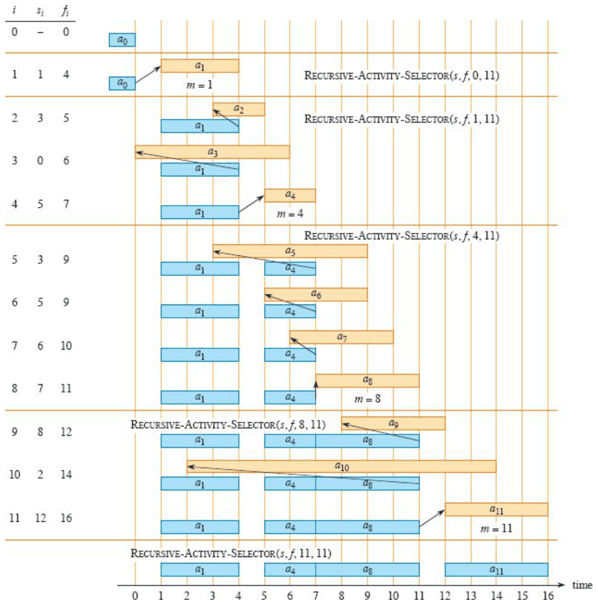
Step 4: why the greedy choice is safe第 4 步：贪心选择为什么是安全的
In words: if an optimal solution does not use the earliest-finishing activity, swap its first activity for it; nothing gets worse.用文字表述：如果一个最优解没有使用最早结束的活动，就把它的第一个活动换成这个活动；这样不会变差。
Concrete case (an example): the activities \([1,3)\), \([2,5)\), \([4,7)\), \([6,9)\), \([8,10)\), \([9,12)\). The set \(\{[2,5),[6,9),[9,12)\}\) is optimal and does not contain \([1,3)\), which finishes first. Swap \([2,5)\) for \([1,3)\). The new set \(\{[1,3),[6,9),[9,12)\}\) is still compatible and still has 3 activities. The general proof does the same.具体例子：活动 \([1,3)\)、\([2,5)\)、\([4,7)\)、\([6,9)\)、\([8,10)\)、\([9,12)\)。集合 \(\{[2,5),[6,9),[9,12)\}\) 是最优的，且不包含最早结束的 \([1,3)\)。把 \([2,5)\) 换成 \([1,3)\)。新集合 \(\{[1,3),[6,9),[9,12)\}\) 仍然是相容的，并且仍有 3 个活动。一般的证明也是这样做的。
After the first choice, what remains is the same problem on \(S_m\). This is optimal substructure（最优子结构）. If an optimal solution contains \(a_k\), its parts on either side of \(a_k\) must be optimal for their own subproblems. Otherwise a larger solution of the subproblem could be pasted in. This is the cut-and-paste argument（剪切粘贴论证）.做完第一次选择之后，剩下的是 \(S_m\) 上的同一问题。这就是最优子结构。若最优解包含 \(a_k\)，则它在 \(a_k\) 两侧的部分必须分别是各自子问题的最优解；否则，就可以把子问题的一个更大的解粘贴进去。这就是剪切粘贴论证。
A DP that does not know the greedy choice must try every \(a_k\) as the middle activity. It has \(O(n^2)\) subproblems with \(O(n)\) choices each, so it takes \(O(n^3)\) time. The greedy choice removes all but one choice and all but one subproblem.不知道贪心选择的动态规划，必须把每个 \(a_k\) 都尝试作为中间的活动。它有 \(O(n^2)\) 个子问题，每个子问题有 \(O(n)\) 种选择，因此需要 \(O(n^3)\) 时间。贪心选择去掉了除一种之外的所有选择，以及除一个之外的所有子问题。
Step 5: greedy rules that fail第 5 步：会失败的贪心规则
Not every plausible rule works. One counterexample refutes a rule. Intervals are written \([s,f)\).并非每条看似合理的规则都可行。一个反例就能推翻一条规则。区间记为 \([s,f)\)。
| Rule规则 | Optimal?是否最优？ | Counterexample反例 |
|---|---|---|
| Earliest finish time最早结束时间 | yes是 | none (proved above)无（已在上文证明） |
| Latest start time (the mirror image)最晚开始时间（镜像情形） | yes是 | none无 |
| Shortest duration最短持续时间 | no否 | \([0,6)\), \([5,7)\), \([6,12)\): the rule picks \([5,7)\), which overlaps both others, and returns 1 activity. \(\{[0,6),[6,12)\}\) has 2\([0,6)\)、\([5,7)\)、\([6,12)\)：该规则选中 \([5,7)\)，它与其他两个都重叠，因此只返回 1 个活动。\(\{[0,6),[6,12)\}\) 则有 2 个 |
| Earliest start time最早开始时间 | no否 | \([0,10)\), \([1,3)\), \([4,6)\): the rule picks \([0,10)\) and returns 1 activity. \(\{[1,3),[4,6)\}\) has 2\([0,10)\)、\([1,3)\)、\([4,6)\)：该规则选中 \([0,10)\)，只返回 1 个活动。\(\{[1,3),[4,6)\}\) 则有 2 个 |
| Fewest conflicts with the others与其他活动冲突最少 | no否 | Needs a larger instance with 11 activities. Know that the rule fails, not the instance需要一个包含 11 个活动的较大实例。要记住的是规则失败，而不是实例本身 |
Practice练习
Q1. (Trace) Eight activities are sorted by finish time.Q1.（手工演算）八个活动已按结束时间排序。
| \(i\) | 1 | 2 | 3 | 4 | 5 | 6 | 7 | 8 |
|---|---|---|---|---|---|---|---|---|
| \(s_i\) | 1 | 0 | 3 | 4 | 5 | 6 | 8 | 9 |
| \(f_i\) | 3 | 4 | 5 | 6 | 8 | 9 | 10 | 11 |
Run GREEDY-ACTIVITY-SELECTOR and give the chosen set.运行 GREEDY-ACTIVITY-SELECTOR，并给出所选的集合。
Answer
Choose \(a_1\) (\(f_1=3\)). \(a_2\): \(0<3\), reject. \(a_3\): \(3\ge3\), choose (\(f=5\)). \(a_4\): \(4<5\), reject. \(a_5\): \(5\ge5\), choose (\(f=8\)). \(a_6\): \(6<8\), reject. \(a_7\): \(8\ge8\), choose (\(f=10\)). \(a_8\): \(9<10\), reject. The result is \(A=\{a_1,a_3,a_5,a_7\}\), 4 activities, a maximum set.选择 \(a_1\)（\(f_1=3\)）。\(a_2\)：\(0<3\)，拒绝。\(a_3\)：\(3\ge3\)，选择（\(f=5\)）。\(a_4\)：\(4<5\)，拒绝。\(a_5\)：\(5\ge5\)，选择（\(f=8\)）。\(a_6\)：\(6<8\)，拒绝。\(a_7\)：\(8\ge8\)，选择（\(f=10\)）。\(a_8\)：\(9<10\)，拒绝。结果为 \(A=\{a_1,a_3,a_5,a_7\}\)，共 4 个活动，是一个最大集合。
易错：开始时间等于上一个活动的结束时间时，两个活动相容，要选。
Q2. (Counterexample) Show that "repeatedly pick the shortest remaining compatible activity" is not optimal.Q2.（反例）证明“反复选取剩余中最短的兼容活动”的做法不是最优的。
Answer
Take \([0,6)\), \([5,7)\), \([6,12)\). The shortest is \([5,7)\) (length 2). It overlaps both other activities, so the rule returns one activity. But \([0,6)\) and \([6,12)\) are compatible, so the optimum is 2. One counterexample is enough to refute a greedy rule.取 \([0,6)\)、\([5,7)\)、\([6,12)\)。最短的是 \([5,7)\)（长度为 2）。它与另外两个活动都重叠，因此该规则只返回一个活动。但 \([0,6)\) 与 \([6,12)\) 是兼容的，所以最优值为 2。一个反例即足以反驳一个贪心规则。
Q3. (Extension: lecture halls) All activities must be scheduled, each in some hall, using as few halls as possible. (a) Give a greedy algorithm and its running time. (b) Prove that it is optimal. (c) How many halls do the 11 activities of the running example need?Q3.（扩展：讲座教室）所有活动都必须安排进某一间教室，并且尽可能少地使用教室。（a）给出一个贪心算法及其运行时间。（b）证明它是最优的。（c）示例中的 11 个活动需要多少间教室？
Answer
(a) Sort by start time. Take the activities in this order and put each into any hall whose last activity has finished (\(f\le s\)); if no hall is free, open a new hall. With a min-heap of the halls' last finish times this takes \(O(n\lg n)\).（a）按开始时间排序。按此顺序依次处理活动：将每个活动放入任一最后一个活动已结束的教室（\(f\le s\)）；若没有空闲教室，则开辟一间新教室。若用各教室最后结束时间构成的最小堆，则这一过程耗时 \(O(n\lg n)\)。
(b) Suppose the algorithm opens hall number \(d\) for activity \(a\). All \(d-1\) older halls are busy at time \(s_a\): their last activities started no later than \(s_a\) and have not finished. So \(d\) activities run at time \(s_a\), and every schedule needs at least \(d\) halls. Hence the number of halls equals the maximum number of activities running at the same time, and the algorithm is optimal.（b）设算法为活动 \(a\) 开辟了第 \(d\) 间教室。此时，在时刻 \(s_a\)，所有较早的 \(d-1\) 间教室都处于占用状态：它们最后的活动开始于不晚于 \(s_a\) 的时刻，且尚未结束。因此，在时刻 \(s_a\) 有 \(d\) 个活动同时运行，任何调度都至少需要 \(d\) 间教室。于是教室数等于同时运行的活动数的最大值，该算法是最优的。
(c) At time 8 the activities \(a_5,a_6,a_7,a_8,a_9,a_{10}\) all run, so at least 6 halls are needed, and by (b) 6 suffice.（c）在时刻 8，活动 \(a_5,a_6,a_7,a_8,a_9,a_{10}\) 同时运行，因此至少需要 6 间教室；由（b）可知 6 间即已足够。
Elements of the greedy strategy ★★★贪心策略的要素
Goal. State the two properties that make a greedy algorithm correct, write the exchange-argument proof in the exam, and say how greedy differs from dynamic programming.目标。说出使贪心算法正确的两条性质，在考试中写出交换论证的证明，并说明贪心与动态规划有何不同。
Step 1: the two properties第 1 步：两条性质
In words: a greedy algorithm is correct when the greedy choice is part of some best solution, and the rest is a smaller problem of the same kind.用文字表述：当贪心选择属于某个最优解，且其余部分是同类的更小问题时，贪心算法是正确的。
- Greedy-choice property（贪心选择性质）: a globally optimal solution can be assembled by making locally optimal (greedy) choices. The choice may depend on the choices made so far. It may not depend on later choices or on the solutions of subproblems.贪心选择性质：通过做出局部最优（即贪心）的选择，就可以构造出全局最优解。该选择可以依赖于之前已做出的选择，但不能依赖于以后的选择或子问题的解。
- Optimal substructure: an optimal solution to the problem contains optimal solutions to its subproblems.最优子结构：问题的最优解包含其子问题的最优解。
Both are needed. Optimal substructure alone does not justify greedy: 0-1 knapsack (Section 13.3) has it, yet greedy fails. The greedy-choice property adds that one particular choice is safe, so no other choice needs to be examined.两者缺一不可。仅有最优子结构并不能证明贪心是合理的：0-1 背包（第 13.3 节）具有最优子结构，但贪心会失败。贪心选择性质则进一步说明某一个特定的选择是安全的，因此不需要检查其他选择。
Step 2: the exchange argument第 2 步：交换论证
In words: take any optimal solution, swap one of its elements for the greedy choice, and show that it is still feasible and no worse.用文字表述：任取一个最优解，把其中的一个元素换成贪心选择，并证明新解仍然可行且不会变差。
How to do it in the exam:考试中的做法：
- State the greedy rule exactly.准确地陈述贪心规则。
- Take an arbitrary optimal solution \(O\). If it contains the greedy choice \(g\), you are done.任取一个最优解 \(O\)。若它包含贪心选择 \(g\)，则证毕。
- Otherwise remove one element of \(O\) (or swap two neighbours) and put \(g\) in its place. Show that the result is feasible and not worse. So some optimal solution contains \(g\).否则，从 \(O\) 中去掉一个元素（或交换两个相邻元素），并把 \(g\) 放到它的位置上。证明结果是可行的，且不会变差。因此某个最优解包含 \(g\)。
- Show that what remains is a smaller instance of the same problem and that \(g\) plus an optimal solution of it is optimal for the original. Conclude by induction on the number of choices.证明剩下的部分是同一问题的一个较小实例，并且 \(g\) 加上它的一个最优解对原问题也是最优的。最后对选择的次数用归纳法作结。
Step 3: greedy versus dynamic programming第 3 步：贪心与动态规划的比较
In words: greedy chooses first and then solves one subproblem; DP solves the subproblems first and then chooses.用文字表述：贪心先做选择，再求解一个子问题；动态规划先求解子问题，再做选择。
| Greedy贪心 | Dynamic programming (Section 12.3)动态规划（第 12.3 节） | |
|---|---|---|
| Choice选择 | Made first, from the current problem only先做选择，只依据当前问题 | All choices considered, each scored with the solutions of its subproblems考虑所有选择，每个选择都用其子问题的解来评估 |
| Subproblems after the choice选择之后的子问题 | Exactly one恰好一个 | Several, usually overlapping有若干个，通常相互重叠 |
| Direction求解方向 | Top-down: choose, then solve the rest自顶向下：先选择，然后求解其余部分 | Bottom-up (or memoised top-down): subproblems before the choice自底向上（或带备忘录的自顶向下）：先求子问题，再做选择 |
| Needs所需条件 | Greedy-choice property and optimal substructure贪心选择性质与最优子结构 | Optimal substructure and overlapping subproblems最优子结构与重叠子问题 |
| Proof证明 | Exchange argument交换论证 | Cut-and-paste for substructure, then the recurrence用剪切粘贴证明子结构，然后得到递归式 |
| Typical cost典型代价 | \(O(n\lg n)\): a sort or a priority queue | Polynomial, for example \(O(n^2)\) or \(O(nW)\) |
| Examples例子 | Activity selection, fractional knapsack, Huffman codes, minimum spanning trees (Chapter 16), Dijkstra (Section 17.5)活动选择、分数背包、赫夫曼编码、最小生成树（第 16 章）、Dijkstra 算法（第 17.5 节） | 0-1 knapsack, longest common subsequence, matrix-chain order, weighted activity selection0-1 背包、最长公共子序列、矩阵链乘法、带权活动选择 |
A small change can destroy the greedy-choice property. In weighted activity selection each activity has a value \(v_i\) and the total value is maximised. Take \([0,10)\) with value 10 and \([0,5)\), \([5,10)\) with value 1 each. The earliest-finish rule takes the two small activities (value 2) instead of the big one (value 10). The weighted problem needs DP, in \(O(n\lg n)\) time.一个很小的改动就可能破坏贪心选择性质。在带权活动选择中，每个活动有一个价值 \(v_i\)，要使总价值最大化。取 \([0,10)\)（价值 10），以及 \([0,5)\)、\([5,10)\)（各价值 1）。最早结束规则会选取两个小活动（价值为 2），而不选大活动（价值为 10）。带权问题需要用动态规划求解，时间为 \(O(n\lg n)\)。
Another case is coin changing with coin values 1, 3 and 4. For the amount 6, "largest coin first" gives \(4+1+1\), which is 3 coins. The optimum is \(3+3\), which is 2 coins. One small counterexample refutes a greedy rule.另一个例子是硬币面值为 1、3 和 4 的找零问题。对于金额 6，“最大面值优先”给出 \(4+1+1\)，共 3 枚硬币。而最优解是 \(3+3\)，即 2 枚硬币。一个小小的反例就能推翻一条贪心规则。
Practice练习
Q1. (True or false, justify) (a) Every problem with optimal substructure is solved optimally by some greedy algorithm. (b) A greedy algorithm may inspect the solutions of subproblems before it makes a choice. (c) GREEDY-ACTIVITY-SELECTOR is correct only if the activities are sorted by finish time.Q1.（判断，并说明理由）（a）每个具有最优子结构的问题都能被某个贪心算法最优地求解。（b）贪心算法可以在做出选择之前检查子问题的解。（c）GREEDY-ACTIVITY-SELECTOR 只有在活动按结束时间排序时才是正确的。
Answer
(a) False. 0-1 knapsack has optimal substructure, but greedy by value density fails; the greedy-choice property is also required. (b) False. A greedy choice is made before any subproblem is solved; an algorithm that compares subproblem solutions is dynamic programming. (c) True. The test \(s_m\ge f_k\) checks compatibility with all chosen activities only because \(f_k\) is the largest finish time in \(A\), which holds when activities are scanned by increasing finish time.（a）错。0-1 背包具有最优子结构，但按价值密度贪心会失败；还需要贪心选择性质。（b）错。贪心选择是在求解任何子问题之前做出的；比较子问题解的算法是动态规划。（c）对。测试 \(s_m\ge f_k\) 之所以只需检查与所有已选活动的兼容性，是因为 \(f_k\) 是 \(A\) 中最大的结束时间，而这在活动按结束时间递增扫描时成立。
Q2. (Coin changing) The coin values are 1, 3 and 4. Make change for \(n=6\) with as few coins as possible. (a) What does "largest coin first" give? (b) What is optimal? (c) How is the general problem solved, and in what time?Q2.（找零问题）硬币面值为 1、3 和 4。为 \(n=6\) 找零，所用硬币尽可能少。（a）“面值最大者优先”得到什么？（b）最优解是什么？（c）一般问题如何求解，耗时多少？
Answer
(a) \(4+1+1\): 3 coins. (b) \(3+3\): 2 coins, so the greedy rule is not optimal. (c) Dynamic programming: \(C[0]=0\) and \(C[j]=1+\min_{d_i\le j}C[j-d_i]\) for \(j=1,\dots,n\), which takes \(O(nk)\) time for \(k\) denominations when a 1-coin exists. Greedy is optimal for \(\{25,10,5,1\}\) and for denominations \(c^0,c^1,\dots,c^k\), but not for arbitrary sets.（a）\(4+1+1\)：3 枚硬币。（b）\(3+3\)：2 枚硬币，因此贪心规则不是最优的。（c）动态规划：对 \(j=1,\dots,n\) 计算 \(C[0]=0\) 与 \(C[j]=1+\min_{d_i\le j}C[j-d_i]\)；存在面值为 1 的硬币时，对 \(k\) 种面值，耗时为 \(O(nk)\)。贪心对 \(\{25,10,5,1\}\) 以及面值为 \(c^0,c^1,\dots,c^k\) 的情形是最优的，但对任意的面值集合则不然。
思路：贪心失败的最小反例就能否定一个贪心规则；一般情形用动态规划。
Knapsack: fractional versus 0-1 ★★★背包：分数背包与 0-1 背包
Goal. Solve both knapsack problems on a small instance, explain why greedy by value density is optimal for one and fails for the other, and fill the 0-1 table.目标。在一个小实例上求解两种背包问题，解释为什么按价值密度贪心对其中一种是最优的，而对另一种会失败，并填写 0-1 背包表。
Step 1: the two problems第 1 步：两个问题
In words: the thief takes whole items in the 0-1 problem (gold ingots) and any fraction in the fractional problem (gold dust).用文字表述：在 0-1 问题中，小偷只能整件拿走物品（金条）；在分数问题中，他可以拿走任意比例（金粉）。
A thief can carry weight at most \(W\) and chooses among \(n\) items. Item \(i\) has integer weight \(w_i\) and value \(v_i\). In the 0-1 knapsack problem（0-1 背包问题）each item is taken whole or left behind. In the fractional knapsack problem（分数背包问题）any fraction of an item may be taken. Both have optimal substructure: if an optimal load contains item \(j\) (or weight \(w\) of it), the rest is an optimal load for the remaining capacity from the other items.一个小偷最多能携带重量 \(W\)，并在 \(n\) 件物品中做选择。物品 \(i\) 的重量为整数 \(w_i\)，价值为 \(v_i\)。在 0-1 背包问题中，每件物品要么整件拿走，要么留下。在 分数背包问题中，可以拿走物品的任意一部分。两者都具有最优子结构：若一个最优装载包含物品 \(j\)（或它的重量为 \(w\) 的那一部分），那么其余部分就是其他物品在剩余容量下的最优装载。
Step 2: fractional knapsack, greedy works第 2 步：分数背包，贪心有效
In words: take the items with the most value per pound first; the knapsack is always full, so no space is wasted.用文字表述：先拿单位重量价值最高的物品；背包总是装满，因此不浪费任何空间。
How to do it by hand: 1. Compute \(v_i/w_i\) for every item. 2. Sort by density, largest first. 3. Take whole items while they fit. 4. Fill the remaining capacity with the fitting fraction of the next item. Sorting dominates: \(O(n\lg n)\).手工计算方法：1. 计算每件物品的 \(v_i/w_i\)。2. 按密度从大到小排序。3. 只要放得下，就整件拿走。4. 用下一件物品能放进去的那一部分，填满剩余容量。主要的开销是排序：\(O(n\lg n)\)。
Why it is optimal (greedy-choice property): let item \(j\) have the greatest density. Suppose an optimal load takes less of \(j\) than it could. Replace weight \(\delta\) of some other item \(i\) by weight \(\delta\) of \(j\). Here \(\delta\) is a small amount of weight. The value changes by \(\delta\,(v_j/w_j-v_i/w_i)\ge0\). So some optimal load takes as much of \(j\) as possible.为什么它是最优的（贪心选择性质）：设物品 \(j\) 的密度最大。假设某个最优装载拿走的 \(j\) 比它本可以拿走的少。把其他某件物品 \(i\) 的重量 \(\delta\) 换成 \(j\) 的重量 \(\delta\)。这里 \(\delta\) 是一个很小的重量。价值的变化为 \(\delta\,(v_j/w_j-v_i/w_i)\ge0\)。因此，某个最优装载会尽可能多地拿走 \(j\)。
Step 3: 0-1 knapsack, greedy fails第 3 步：0-1 背包，贪心失败
In words: taking the densest whole item can leave space that nothing else fits into, and that empty space is lost value.用文字表述：先整件拿走密度最大的物品，可能会留下一块其他物品都放不进去的空间，而这块空间上的价值就损失了。
Example with \(W=50\) lb:以容量为 \(W=50\) 磅的情形为例：
| Item物品 | Weight (lb)重量（lb） | Value价值 | Value per lb每磅价值 |
|---|---|---|---|
| 1 | 10 | $60 | 6 |
| 2 | 20 | $100 | 5 |
| 3 | 30 | $120 | 4 |
The figure shows the three items, the feasible 0-1 loads and the fractional greedy load. The table gives the totals.图中给出了三件物品、所有可行的 0-1 装载方案，以及分数背包的贪心装载。表中给出了各方案的总和。

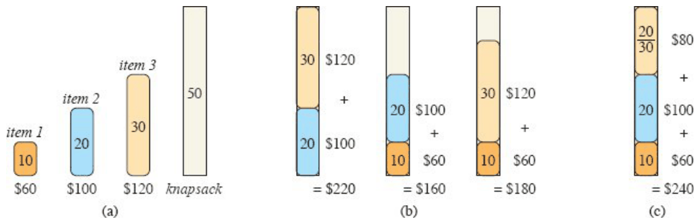
| Strategy策略 | Load装载 | Weight重量 | Value价值 |
|---|---|---|---|
| 0-1, greedy by density (takes item 1 first)0-1，按密度贪心（先取物品 1） | 1, 2 | 30 | $160 |
| 0-1, items 1 and 30-1，物品 1 与 3 | 1, 3 | 40 | $180 |
| 0-1, optimal0-1，最优 | 2, 3 | 50 | $220 |
| Fractional, greedy分数，贪心 | 1, 2 and \(\frac23\) of 3 | 50 | $240 |
Greedy by density takes item 1 first and ends with $160, while the optimum is $220. In the 0-1 problem the decision on an item needs the best load with the item and the best load without it. This creates overlapping subproblems, the signature of dynamic programming.按密度的贪心先取物品 1，最终得到 $160，而最优值为 $220。在 0-1 问题中，对一件物品的决策需要同时知道“含该物品时的最好装载”和“不含该物品时的最好装载”。这就产生了重叠子问题，这正是动态规划的特征。
Practice练习
Q1. (Calculation) \(W=10\); items (weight, value): \((6,30)\), \((5,24)\), \((5,24)\). Compute (a) the fractional optimum, (b) the value of the density-greedy for the 0-1 problem, (c) the 0-1 optimum.Q1.（计算）容量 \(W=10\)；物品（重量，价值）：\((6,30)\)、\((5,24)\)、\((5,24)\)。计算：（a）分数背包的最优值；（b）0-1 问题中按密度贪心所得的价值；（c）0-1 问题的最优值。
Answer
The densities are \(5\), \(4.8\), \(4.8\). (a) Take item 1 (6 lb, value 30) and 4 lb of item 2: \(30+\frac45\cdot24=30+19.2=49.2\). (b) Greedy takes item 1; the 4 lb left cannot hold a 5 lb item, so the value is 30. (c) Items 2 and 3 fill exactly 10 lb: \(24+24=48\). Greedy (30) is far from the optimum (48), which is below the fractional optimum (49.2).各物品的密度为 \(5\)、\(4.8\)、\(4.8\)。（a）取物品 1（6 lb，价值 30）以及物品 2 的 4 lb：\(30+\frac45\cdot24=30+19.2=49.2\)。（b）贪心取物品 1；余下的 4 lb 放不下 5 lb 的物品，因此价值为 30。（c）物品 2 与 3 恰好装满 10 lb：\(24+24=48\)。贪心得到的 30 远低于最优值 48，而 48 又低于分数背包的最优值 49.2。
Q2. (Explain) Why does the density argument prove the fractional problem but not the 0-1 problem? State the 0-1 recurrence and its running time, and say why \(\Theta(nW)\) is not polynomial.Q2.（解释）为什么密度论证能证明分数背包问题，却不能证明 0-1 背包问题？写出 0-1 背包的递归式及其运行时间，并说明为什么 \(\Theta(nW)\) 不是多项式的。
Answer
The exchange step replaces weight \(\delta\) of another item by \(\delta\) of the densest item; this needs items to be divisible so that the knapsack stays full. In the 0-1 problem such a replacement may be impossible, capacity stays unused, and the densest item need not be in any optimal load. The recurrence is \(V[i,w]=\max\{V[i-1,w],\,V[i-1,w-w_i]+v_i\}\) for \(w\ge w_i\) (otherwise \(V[i-1,w]\)), with \(V[0,w]=0\); it fills \(n\times W\) entries in \(\Theta(nW)\) time. \(W\) is written in \(\lg W\) bits, so \(nW\) is exponential in the input length: the algorithm is pseudo-polynomial.交换步骤是把另一件物品中重量为 \(\delta\) 的部分，替换为最密物品的 \(\delta\) 重量；这要求物品可以分割，从而使背包始终装满。在 0-1 问题中，这样的替换可能无法进行，容量会闲置，而且最密的物品不一定属于任何最优装载。递归式在 \(w\ge w_i\) 时为 \(V[i,w]=\max\{V[i-1,w],\,V[i-1,w-w_i]+v_i\}\)（否则为 \(V[i-1,w]\)），其中 \(V[0,w]=0\)；它要填 \(n\times W\) 个表项，耗时 \(\Theta(nW)\)。\(W\) 用 \(\lg W\) 位来表示，因此 \(nW\) 相对于输入长度是指数级的：该算法是伪多项式的。
Huffman codes ★★★赫夫曼编码
Goal. Build a Huffman tree by hand, read off the codewords and the cost, decode a bit string, and prove that the algorithm is optimal with the two lemmas.目标。手工构造一棵赫夫曼树，读出码字和代价，解码一个位串，并用两个引理证明该算法是最优的。
Step 1: why variable-length codes第 1 步：为什么要用变长编码
In words: give frequent characters short codewords and rare characters long codewords, so that the file gets shorter.用文字表述：给高频字符分配短码字，给低频字符分配长码字，使文件变短。
A binary character code gives every character a unique binary string, its codeword（码字）. A fixed-length code needs \(\lceil\lg n\rceil\) bits per character for \(n\ge2\) characters. A variable-length code uses short codewords for frequent characters. Example: a file of 100,000 characters over six letters, with frequencies in thousands.二进制字符编码为每个字符分配一个唯一的二进制串，称为它的码字。定长编码对 \(n\ge2\) 个字符，每个字符需要 \(\lceil\lg n\rceil\) 位。变长编码为高频字符使用短码字。例子：一个文件共 100,000 个字符，由六个字母组成，各字母的频率以千为单位给出。
| Character字符 | a | b | c | d | e | f |
|---|---|---|---|---|---|---|
| Frequency (thousands)频率（千） | 45 | 13 | 12 | 16 | 9 | 5 |
| Fixed-length codeword定长码字 | 000 | 001 | 010 | 011 | 100 | 101 |
| Variable-length codeword变长码字 | 0 | 101 | 100 | 111 | 1101 | 1100 |
The fixed-length code needs \(3\cdot100{,}000=300{,}000\) bits. The variable-length code needs the sum of frequency times codeword length: \((45\cdot1+13\cdot3+12\cdot3+16\cdot3+9\cdot4+5\cdot4)\cdot1000=224{,}000\) bits. That is about 25% less, and this code is optimal.定长编码需要 \(3\cdot100{,}000=300{,}000\) 位。变长编码需要“频率乘以码字长度”之和：\((45\cdot1+13\cdot3+12\cdot3+16\cdot3+9\cdot4+5\cdot4)\cdot1000=224{,}000\) 位。这大约少了 25%，而且这种编码是最优的。
Step 2: prefix-free codes as trees第 2 步：用树表示前缀码
In words: a codeword is the path from the root to a leaf, and the number of bits is the depth of the leaf.用文字表述：码字就是从根到叶结点的路径，位数就是该叶结点的深度。
Restricting to prefix-free codes loses nothing, since an optimal character code can always be taken prefix-free. Encoding concatenates codewords. For the variable-length code above, face is \(1100\cdot0\cdot100\cdot1101=110001001101\). Decoding reads bits until they form a codeword, outputs the character and continues. The string \(100011001101\) parses as \(100\cdot0\cdot1100\cdot1101\), which is cafe.只考虑前缀码不会有任何损失，因为最优字符编码总可以取为前缀码。编码就是把各码字依次连接起来。对于上面的变长编码，face 的编码为 \(1100\cdot0\cdot100\cdot1101=110001001101\)。解码时逐位读入，直到组成一个码字，输出对应字符，然后继续。字符串 \(100011001101\) 可解析为 \(100\cdot0\cdot1100\cdot1101\)，即 cafe。
The tree has the characters as leaves. An optimal code is a full binary tree（满二叉树）, in which every internal node has two children. Otherwise a node with one child can be removed, which shortens codewords. So for an alphabet \(C\) the tree has exactly \(\lvert C\rvert\) leaves and \(\lvert C\rvert-1\) internal nodes. The fixed-length tree is not full: no codeword starts with 11.树的叶结点是字符。最优编码是一棵满二叉树，即每个内部结点都恰有两个孩子。否则，可以删去只有一个孩子的结点，从而缩短码字。因此，对于字母表 \(C\)，该树恰有 \(\lvert C\rvert\) 个叶结点和 \(\lvert C\rvert-1\) 个内部结点。定长编码对应的树不是满二叉树：没有码字以 11 开头。

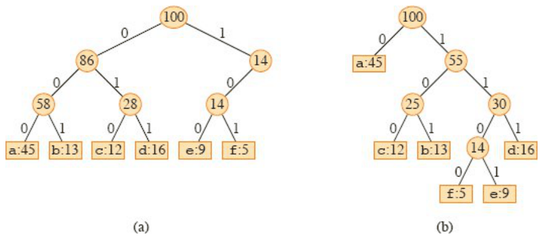
Step 3: the HUFFMAN algorithm第 3 步：HUFFMAN 算法
In words: repeatedly merge the two rarest nodes into one new node whose frequency is their sum.用文字表述：反复把两个最稀有的结点合并成一个新结点，新结点的频率为二者之和。
HUFFMAN builds the tree bottom-up. It starts with \(\lvert C\rvert\) one-leaf trees in a min-priority queue keyed by frequency. It performs \(\lvert C\rvert-1\) merges.HUFFMAN 自底向上构造树。它以 \(\lvert C\rvert\) 棵只含一个叶结点的树开始，这些树按频率作为关键字存放在最小优先队列中。它共执行 \(\lvert C\rvert-1\) 次合并。
HUFFMAN(C)
1 n = |C|
2 Q = C
3 for i = 1 to n − 1
4 allocate a new node z
5 x = EXTRACT-MIN(Q)
6 y = EXTRACT-MIN(Q)
7 z.left = x
8 z.right = y
9 z.freq = x.freq + y.freq
10 INSERT(Q, z)
11 return EXTRACT-MIN(Q) // the root of the tree is the only node left
- Line 2: the queue starts with all characters; building the heap takes \(O(n)\).第 2 行：队列以所有字符开始；建堆需要 \(O(n)\) 时间。
- Lines 5–6: take the two nodes with the lowest frequencies. They become the children of the new node \(z\) (lines 7–8).第 5–6 行：取出频率最低的两个结点。它们成为新结点 \(z\) 的孩子（第 7–8 行）。
- Line 9: the frequency of \(z\) is the sum of its children.第 9 行：\(z\) 的频率为其两个孩子的频率之和。
- Line 10: insert \(z\). Each loop pass removes two nodes and adds one, so one node is left after \(n-1\) passes.第 10 行：把 \(z\) 插入队列。循环的每一遍删去两个结点、加入一个结点，因此经过 \(n-1\) 遍之后只剩下一个结点。
Running time with a binary min-heap: the loop runs \(n-1\) times with three heap operations of \(O(\lg n)\) each. The total is \(O(n\lg n)\). Which child is left and which is right is arbitrary. Swapping the children of a node gives another code of the same cost.用二叉最小堆时的运行时间：循环执行 \(n-1\) 次，每次有三次堆操作，每次代价为 \(O(\lg n)\)。总时间为 \(O(n\lg n)\)。哪个孩子放在左边、哪个放在右边是任意的。交换某个结点的两个孩子，得到的是另一个代价相同的编码。
Step 4: building a tree by hand第 4 步：手工构造树
How to do it by hand: 1. List the nodes sorted by frequency. 2. Merge the two smallest and insert the sum at its sorted position. 3. Repeat until one node remains. 4. Label left edges 0 and right edges 1 and read the codewords from the root.手工计算方法：1. 把结点按频率从小到大列出。2. 合并两个最小的结点，并把和插入到按序的位置上。3. 重复，直到只剩一个结点。4. 把左边标为 0、右边标为 1，并从根开始读出码字。
| Step步骤 | Merge合并 | New node新结点 | Queue afterwards (sorted)之后的队列（已排序） |
|---|---|---|---|
| 0 | – | – | f:5, e:9, c:12, b:13, d:16, a:45 |
| 1 | f:5 + e:9 | 14 | c:12, b:13, 14, d:16, a:45 |
| 2 | c:12 + b:13 | 25 | 14, d:16, 25, a:45 |
| 3 | 14 + d:16 | 30 | 25, 30, a:45 |
| 4 | 25 + 30 | 55 | a:45, 55 |
| 5 | a:45 + 55 | 100 | 100 (the root)100（根结点） |
Codewords: \(a=0\), \(c=100\), \(b=101\), \(f=1100\), \(e=1101\), \(d=111\). The cost is the sum of the internal nodes: \(14+25+30+55+100=224\) (thousand bits). Checks: the root equals the total frequency 100, and \(n=6\) characters need 5 merges. On ties any choice is allowed: the cost is the same, but the codewords may differ.码字：\(a=0\)、\(c=100\)、\(b=101\)、\(f=1100\)、\(e=1101\)、\(d=111\)。代价为内部结点之和：\(14+25+30+55+100=224\)（千比特）。检验：根的值等于总频率 100，且 \(n=6\) 个字符需要 5 次合并。若并列，可以任意选择：代价相同，但码字可能不同。

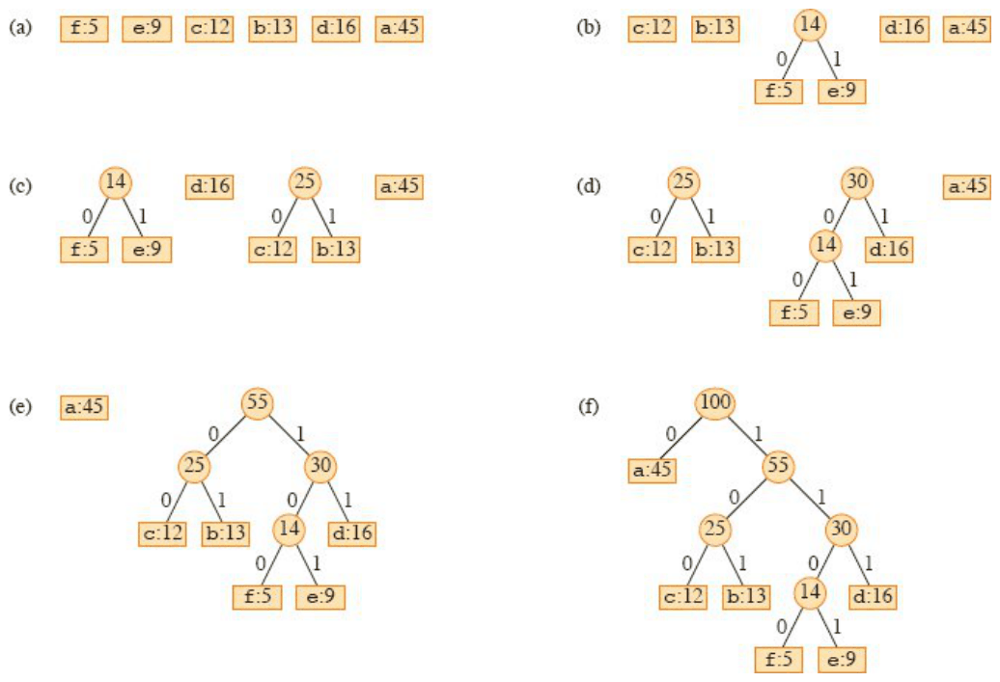
Step 5: why it is optimal第 5 步：为什么它是最优的
In words: the two rarest characters can always sit as deepest siblings, and merging them leaves a smaller problem of the same kind.用文字表述：两个最稀有的字符总可以作为深度最大的兄弟叶结点，合并它们之后，剩下的是同类的更小问题。
Lemma 1 (greedy choice). Let \(x,y\) be two characters of \(C\) with the lowest frequencies. Then some optimal prefix-free code gives them codewords of the same length that differ only in the last bit. In tree terms, \(x\) and \(y\) are sibling leaves of maximum depth.引理 1（贪心选择）。设 \(x,y\) 为 \(C\) 中频率最低的两个字符。那么存在某个最优前缀码，使它们的码字长度相同，且只在最后一位不同。用树的语言说，\(x\) 和 \(y\) 是深度最大的兄弟叶结点。
Proof (exchange). Take an optimal tree \(T\) and sibling leaves \(a,b\) of maximum depth. They exist because \(T\) is full. Order them so that \(a.\text{freq}\le b.\text{freq}\) and \(x.\text{freq}\le y.\text{freq}\). Then \(x.\text{freq}\le a.\text{freq}\) and \(y.\text{freq}\le b.\text{freq}\). Swap the positions of \(a\) and \(x\) to get \(T'\). Only these two leaves change depth, so证明（交换）。取一棵最优树 \(T\) 以及深度最大的兄弟叶结点 \(a,b\)。它们存在，因为 \(T\) 是满的。将它们排序，使 \(a.\text{freq}\le b.\text{freq}\) 且 \(x.\text{freq}\le y.\text{freq}\)。于是 \(x.\text{freq}\le a.\text{freq}\) 且 \(y.\text{freq}\le b.\text{freq}\)。交换 \(a\) 和 \(x\) 的位置，得到 \(T'\)。只有这两个叶结点的深度发生了变化，因此
\[B(T)-B(T')=(a.\text{freq}-x.\text{freq})\,(d_T(a)-d_T(x))\ge0,\]
where both factors are non-negative: \(x\) has the lowest frequency and \(a\) has maximum depth. Swapping \(b\) and \(y\) in \(T'\) gives \(T''\), and likewise \(B(T')-B(T'')\ge0\). Hence \(B(T'')\le B(T)\), so \(T''\) is optimal, and in it \(x\) and \(y\) are deepest siblings. \(\blacksquare\)其中两个因子都不为负：\(x\) 的频率最低，而 \(a\) 的深度最大。在 \(T'\) 中交换 \(b\) 和 \(y\) 得到 \(T''\)，同理得到 \(B(T')-B(T'')\ge0\)。因此 \(B(T'')\le B(T)\)，所以 \(T''\) 也是最优的，并且在其中 \(x\) 和 \(y\) 是深度最大的兄弟叶结点。\(\blacksquare\)

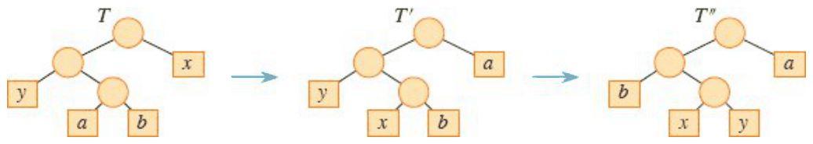
Lemma 2 (optimal substructure). Merge \(x\) and \(y\) into a new character \(z\) with \(z.\text{freq}=x.\text{freq}+y.\text{freq}\). Call the new alphabet \(C'=(C\setminus\{x,y\})\cup\{z\}\). If \(T'\) is an optimal tree for \(C'\), then \(T\) is optimal for \(C\). Here \(T\) is \(T'\) with the leaf \(z\) replaced by an internal node with children \(x\) and \(y\).引理 2（最优子结构）。把 \(x\) 和 \(y\) 合并为一个新字符 \(z\)，其频率为 \(z.\text{freq}=x.\text{freq}+y.\text{freq}\)。把新的字母表记为 \(C'=(C\setminus\{x,y\})\cup\{z\}\)。若 \(T'\) 是 \(C'\) 的最优树，则 \(T\) 是 \(C\) 的最优树。这里 \(T\) 是 \(T'\)，其中叶结点 \(z\) 被替换为一个内部结点，它的孩子为 \(x\) 和 \(y\)。
Proof. Suppose \(T\) is not optimal. Then some tree \(T''\) for \(C\) has \(B(T'')<B(T)\). By Lemma 1 we may assume that \(x\) and \(y\) are siblings in \(T''\). Replace their parent by a leaf \(z\) to get a tree \(T'''\) for \(C'\). By the formula, \(B(T''')=B(T'')-x.\text{freq}-y.\text{freq}<B(T')\). This contradicts the optimality of \(T'\). \(\blacksquare\)证明。假设 \(T\) 不是最优的。那么对于 \(C\)，存在某棵树 \(T''\) 满足 \(B(T'')<B(T)\)。由引理 1，可以假设在 \(T''\) 中 \(x\) 和 \(y\) 是兄弟。把它们的父结点替换为叶结点 \(z\)，得到 \(C'\) 的一棵树 \(T'''\)。由该公式，\(B(T''')=B(T'')-x.\text{freq}-y.\text{freq}<B(T')\)。这与 \(T'\) 的最优性相矛盾。\(\blacksquare\)
Conclusion. Each merge of HUFFMAN is the safe greedy choice by Lemma 1. By Lemma 2 an optimal tree of the smaller alphabet extends to an optimal tree of the original. Induction on \(\lvert C\rvert\) gives that HUFFMAN is optimal.结论。由引理 1，HUFFMAN 的每一次合并都是安全的贪心选择。由引理 2，较小字母表的最优树可以扩展为原字母表的最优树。对 \(\lvert C\rvert\) 用归纳法，即得 HUFFMAN 是最优的。
Practice练习
Q1. (Build a tree) Frequencies per 100 characters: P 35, Q 22, R 16, S 12, T 9, U 6. Build the Huffman tree (smaller node on the left), list the codewords, and compute the cost and the saving against a fixed-length code.Q1.（建树）每 100 个字符的频率：P 35，Q 22，R 16，S 12，T 9，U 6。建立赫夫曼树（较小的结点放在左边），列出码字，并计算代价以及相对于定长编码节省的量。
Answer
Start: U:6, T:9, S:12, R:16, Q:22, P:35. Merge U+T \(\to\) 15: S:12, 15, R:16, Q:22, P:35. Merge S+15 \(\to\) 27: R:16, Q:22, 27, P:35. Merge R+Q \(\to\) 38: 27, P:35, 38. Merge 27+P \(\to\) 62: 38, 62. Merge 38+62 \(\to\) 100.初始：U:6, T:9, S:12, R:16, Q:22, P:35。合并 U+T \(\to\) 15：S:12, 15, R:16, Q:22, P:35。合并 S+15 \(\to\) 27：R:16, Q:22, 27, P:35。合并 R+Q \(\to\) 38：27, P:35, 38。合并 27+P \(\to\) 62：38, 62。合并 38+62 \(\to\) 100。
Codewords: R = 00, Q = 01, S = 100, U = 1010, T = 1011, P = 11. Cost \(=35\cdot2+22\cdot2+16\cdot2+12\cdot3+9\cdot4+6\cdot4=242\) bits per 100 characters; check: internal nodes \(15+27+38+62+100=242\). A fixed-length code needs \(\lceil\lg6\rceil=3\) bits, i.e. 300, so Huffman saves \(58/300\approx19\%\).码字：R = 00，Q = 01，S = 100，U = 1010，T = 1011，P = 11。每 100 个字符的代价为 \(=35\cdot2+22\cdot2+16\cdot2+12\cdot3+9\cdot4+6\cdot4=242\) 位；核对：内部结点之和为 \(15+27+38+62+100=242\)。定长编码需要 \(\lceil\lg6\rceil=3\) 位，即 300 位，因此赫夫曼编码节省 \(58/300\approx19\%\)。
Q2. (Prefix-free codes) Which of these codes are prefix-free: \(\{0,10,110,111\}\), \(\{0,01,11\}\), \(\{1,01,001,000\}\), \(\{00,01,1,10\}\)? Decode \(0101101110\) with the first code, where \(x=0\), \(y=10\), \(z=110\), \(w=111\).Q2.（前缀码）以下哪些编码是前缀码：\(\{0,10,110,111\}\)、\(\{0,01,11\}\)、\(\{1,01,001,000\}\)、\(\{00,01,1,10\}\)？用第一个编码解码 \(0101101110\)，其中 \(x=0\)、\(y=10\)、\(z=110\)、\(w=111\)。
Answer
\(\{0,10,110,111\}\) and \(\{1,01,001,000\}\) are prefix-free. \(\{0,01,11\}\) is not (\(0\) is a prefix of \(01\)), and neither is \(\{00,01,1,10\}\) (\(1\) is a prefix of \(10\)). Decoding \(0101101110\) from the left: \(0\cdot10\cdot110\cdot111\cdot0\), i.e. \(x\,y\,z\,w\,x\).\(\{0,10,110,111\}\) 与 \(\{1,01,001,000\}\) 是前缀码。\(\{0,01,11\}\) 不是（\(0\) 是 \(01\) 的前缀），\(\{00,01,1,10\}\) 也不是（\(1\) 是 \(10\) 的前缀）。从左侧解码 \(0101101110\)：\(0\cdot10\cdot110\cdot111\cdot0\)，即 \(x\,y\,z\,w\,x\)。
Q3. (Extension: equal frequencies) A file uses 256 characters whose frequencies satisfy \(\max<2\min\). Show that Huffman coding then gives no saving over the 8-bit fixed-length code.Q3.（扩展：频率相等）某文件使用 256 个字符，其频率满足 \(\max<2\min\)。证明此时赫夫曼编码相对于 8 位定长编码没有任何节省。
Answer
Let the minimum frequency be \(m\), so every frequency is in \([m,2m)\). A merged node has frequency at least \(2m\), which exceeds every leaf. So as long as two leaves remain, HUFFMAN extracts two leaves, and the first 128 merges pair up all 256 leaves. The 128 new nodes have frequencies in \([2m,4m)\), again with \(\max<2\min\), so the same argument pairs them up into 64 nodes, and so on. After 8 rounds the tree is perfectly balanced with every leaf at depth 8: it is the 8-bit fixed-length code, and \(B(T)=8\cdot\sum\text{freq}\).设最小频率为 \(m\)，于是每个频率都位于 \([m,2m)\) 中。一个合并结点的频率至少为 \(2m\)，它超过每个叶结点。因此只要还剩两个叶结点，HUFFMAN 就取出两个叶结点，前 128 次合并恰好把全部 256 个叶结点两两配对。这 128 个新结点的频率位于 \([2m,4m)\) 中，且仍满足 \(\max<2\min\)，因此同样的论证把它们两两配对成 64 个结点，依此类推。经过 8 轮之后，树完全平衡，每个叶结点的深度都为 8：它就是 8 位定长编码，并且 \(B(T)=8\cdot\sum\text{freq}\)。
Offline caching ★离线缓存
A cache holds at most \(k\) blocks. A program requests blocks one after another. A request is a cache hit（缓存命中）if the block is in the cache. Otherwise it is a miss. On a miss with a full cache, one block must be evicted（淘汰）. In the offline（离线）problem the whole request sequence is known, and the goal is the fewest misses.缓存最多容纳 \(k\) 个块。程序一个接一个地请求块。若所请求的块已在缓存中，则为缓存命中；否则为未命中。若缓存已满又发生未命中，必须淘汰一个块。在离线问题中，整个请求序列都是已知的，目标是使未命中次数最少。
The greedy rule is furthest-in-future（最远未来使用）, FIF: evict the block whose next request is furthest ahead. A block that is never requested again counts as infinitely far.贪心规则是最远未来使用（FIF）：淘汰下一次被请求时间最远的块。一个再也不会被请求的块视为距离无穷远。
FURTHEST-IN-FUTURE(b, n, k)
1 C = ∅ // blocks currently in the cache
2 for i = 1 to n
3 if b[i] ∈ C
4 report hit // cache unchanged
5 elseif |C| < k
6 C = C ∪ {b[i]} // compulsory miss: there is room
7 report miss
8 else // miss with a full cache
9 for each x ∈ C
10 next[x] = least j > i with b[j] = x, or ∞ if there is none
11 z = the x ∈ C with the largest next[x]
12 C = (C − {z}) ∪ {b[i]}
13 report miss, evict z
Lines 9–11 compute the next request of each cached block and pick the largest. The time is \(O(nk)\) with precomputed next-request indices. FIF is optimal by optimal substructure and an exchange argument. Real caches are online and do not know the future. LRU, which evicts the block used least recently, is only a heuristic and can be \(k\) times worse than FIF.第 9–11 行计算每个已缓存块的下一次请求时间，并选出最大的那一个。在预先算出下一次请求下标的前提下，时间为 \(O(nk)\)。FIF 由最优子结构和交换论证可知是最优的。真实的缓存是在线的，不知道未来。LRU 淘汰最近最少使用的块，它只是一种启发式算法，其未命中次数可能是 FIF 的 \(k\) 倍。
Practice练习
Q1. (Trace) \(k=3\) and the requests \(1,2,3,4,1,2,5,1,2,3,4,5\). Count the misses of FIF and of LRU.Q1.（手工演算）\(k=3\) 以及请求序列 \(1,2,3,4,1,2,5,1,2,3,4,5\)。计算 FIF 与 LRU 的未命中次数。
Answer
FIF: misses at requests 1, 2, 3 (compulsory). Request 4: evict 3 (next requests: 1 at 5, 2 at 6, 3 at 10). Request 7 (block 5): evict 4 (1 at 8, 2 at 9, 4 at 11). Request 10 (block 3): evict 1 or 2, neither is requested again. Request 11 (block 4): evict a block that is not requested again. Hits at 5, 6, 8, 9, 12. Total: 7 misses. LRU hits only at requests 8 and 9, so it makes 10 misses.FIF：在请求 1、2、3 处未命中（强制性）。请求 4：淘汰 3（下一次请求：1 在 5，2 在 6，3 在 10）。请求 7（块 5）：淘汰 4（1 在 8，2 在 9，4 在 11）。请求 10（块 3）：淘汰 1 或 2，二者都不会再被请求。请求 11（块 4）：淘汰一个不会再被请求的块。在 5、6、8、9、12 处命中。总计：7 次未命中。LRU 仅在请求 8 和 9 处命中，因此产生 10 次未命中。
Terms to recognise ★需要认识的术语
| Term术语 | What to know要知道什么 |
|---|---|
| Greedy stays ahead贪心始终领先 | Second proof technique: show by induction that after every step greedy is at least as good as any other solution第二种证明技术：用归纳法证明，每一步之后贪心解都不差于任何其他解 |
| Weighted activity selection带权活动选择 | Each activity has a value; earliest-finish fails, DP with a sort takes \(O(n\lg n)\)每个活动有一个价值；最早结束规则会失败；先排序再用动态规划，需要 \(O(n\lg n)\) 时间 |
| Lecture-halls problem教室分配问题 | Schedule all activities in the fewest rooms: greedy by start time; answer = maximum number running at one time用最少的教室安排所有活动：按开始时间贪心；答案 = 同一时刻进行的活动的最大数量 |
| Coin changing找零钱 | Greedy is optimal for 25, 10, 5, 1 but not for 1, 3, 4; the general problem is solved by DP对面值为 25、10、5、1 的硬币，贪心是最优的，但对 1、3、4 则不是；一般问题用动态规划求解 |
| Pseudo-polynomial伪多项式 | Time polynomial in the value \(W\) but exponential in its bit length, as in the \(\Theta(nW)\) knapsack DP时间对数值 \(W\) 是多项式的，但对其位长是指数级的，\(\Theta(nW)\) 背包的动态规划即如此 |
| Fibonacci frequencies斐波那契频率 | Frequencies 1, 1, 2, 3, 5, 8, 13, 21 give the most unbalanced Huffman tree, costing 132频率 1、1、2、3、5、8、13、21 给出最不平衡的赫夫曼树，代价为 132 |
| Sorted-input Huffman已排序输入的赫夫曼算法 | Two FIFO queues (leaves and merged nodes) merge in \(O(1)\) each: \(O(n)\) after sorting两个先进先出队列（叶结点和合并结点）在每次合并中的时间为 \(O(1)\)；排序之后总时间为 \(O(n)\) |
| Ternary Huffman三叉赫夫曼 | Merge the three smallest nodes; add a dummy character of frequency 0 first if \(n\) is even合并三个最小的结点；若 \(n\) 为偶数，则先加入一个频率为 0 的虚拟字符 |
| LRU and competitivenessLRU 与竞争性 | LRU evicts the least recently used block; it makes at most \(k\) times the optimal misses, up to a constantLRU 淘汰最近最少使用的块；在相差一个常数的意义下，其未命中次数至多为最优的 \(k\) 倍 |
Exam-style questions考试题型练习
Q1. (Activity selection, 14 marks) Nine activities are given in no particular order.Q1.（活动选择，14 分）九个活动以任意顺序给出。
| Activity活动 | a | b | c | d | e | f | g | h | i |
|---|---|---|---|---|---|---|---|---|---|
| Start开始 | 6 | 1 | 0 | 3 | 5 | 8 | 7 | 2 | 11 |
| Finish结束 | 9 | 4 | 6 | 5 | 7 | 11 | 10 | 13 | 14 |
(a) (2) Sort the activities by finish time. (b) (5) Trace GREEDY-ACTIVITY-SELECTOR: give \(k\) and the set \(A\) after each activity, and the result. (c) (3) Give the running time including the sort, and explain what property of the sorted order the loop uses. (d) (4) Apply the rule "always take the compatible activity with the earliest start time". What does it return, and what does this show?（a）（2 分）按结束时间对活动排序。（b）（5 分）手工运行 GREEDY-ACTIVITY-SELECTOR：给出每个活动处理之后的 \(k\) 与集合 \(A\)，并给出结果。（c）（3 分）给出包括排序在内的运行时间，并说明循环利用了排序后序列的什么性质。（d）（4 分）应用规则“总是选取兼容的、开始时间最早的活动”。它返回什么？这说明了什么？
Answer
(a) b(1,4), d(3,5), c(0,6), e(5,7), a(6,9), g(7,10), f(8,11), h(2,13), i(11,14).
(b) Choose b, \(A=\{b\}\), last finish 4. d: \(3<4\), reject. c: \(0<4\), reject. e: \(5\ge4\), choose; \(A=\{b,e\}\), last finish 7. a: \(6<7\), reject. g: \(7\ge7\), choose (touching endpoints are compatible); \(A=\{b,e,g\}\), last finish 10. f: \(8<10\), reject. h: \(2<10\), reject. i: \(11\ge10\), choose. Result \(A=\{b,e,g,i\}\), 4 activities.（b）选取 b，\(A=\{b\}\)，最后结束时间为 4。d：\(3<4\)，拒绝。c：\(0<4\)，拒绝。e：\(5\ge4\)，选取；\(A=\{b,e\}\)，最后结束时间为 7。a：\(6<7\)，拒绝。g：\(7\ge7\)，选取（端点相接视为兼容）；\(A=\{b,e,g\}\)，最后结束时间为 10。f：\(8<10\)，拒绝。h：\(2<10\)，拒绝。i：\(11\ge10\)，选取。结果为 \(A=\{b,e,g,i\}\)，共 4 个活动。
(c) Sorting takes \(O(n\lg n)\) and the scan \(\Theta(n)\), so \(O(n\lg n)\) in total. The loop relies on increasing finish times: then the last chosen activity has the largest finish time in \(A\), and one comparison of \(s_m\) with that finish time checks compatibility with every chosen activity.（c）排序耗时 \(O(n\lg n)\)，扫描耗时 \(\Theta(n)\)，因此总计 \(O(n\lg n)\)。循环依赖于结束时间递增：此时最后所选的活动在 \(A\) 中具有最大的结束时间，因此只需将 \(s_m\) 与该结束时间比较一次，即可检验与每个已选活动的兼容性。
(d) The earliest start is c(0,6). Activities compatible with c start at 6 or later: a(6,9), g(7,10), f(8,11), i(11,14). The earliest start among them is a(6,9); after it only i(11,14) is compatible. The result is \(\{c,a,i\}\) with 3 activities, fewer than the 4 found in (b). So this rule is not optimal; one counterexample suffices.（d）最早开始的活动是 c(0,6)。与 c 兼容的活动，其开始时间均不早于 6：a(6,9)、g(7,10)、f(8,11)、i(11,14)。其中最早开始的是 a(6,9)；选取它之后，只有 i(11,14) 与之兼容。结果为 \(\{c,a,i\}\)，共 3 个活动，少于（b）中找到的 4 个。因此这一规则不是最优的；一个反例即足够。
思路：先按结束时间排序，再一遍扫描；开始时间等于上一个结束时间要接受。
Q2. (Knapsack and greedy versus DP, 12 marks) Capacity \(W=9\); items (weight, value): item 1 \((6,20)\), item 2 \((5,14)\), item 3 \((4,11)\). (a) (3) Find the fractional optimum with the greedy method. (b) (2) What does the density-greedy give for the 0-1 problem? (c) (3) Find the 0-1 optimum and compute it with the DP recurrence. (d) (4) Explain why greedy is optimal for the fractional but not for the 0-1 problem, and state the running time of the DP.Q2.（背包，以及贪心与动态规划的比较，12 分）容量为 \(W=9\)；物品（重量，价值）：物品 1 为 \((6,20)\)，物品 2 为 \((5,14)\)，物品 3 为 \((4,11)\)。（a）（3 分）用贪心方法求分数背包的最优值。（b）（2 分）密度贪心在 0-1 问题上给出什么？（c）（3 分）求 0-1 背包的最优解，并用动态规划递归式计算它。（d）（4 分）解释为什么贪心对分数背包是最优的，而对 0-1 背包不是，并给出动态规划的运行时间。
Answer
(a) Densities: \(20/6\approx3.33\), \(14/5=2.8\), \(11/4=2.75\). Take item 1 (6 lb, value 20) and then \(3/5\) of item 2: \(20+\frac35\cdot14=28.4\).（a）各物品的密度为 \(20/6\approx3.33\)、\(14/5=2.8\)、\(11/4=2.75\)。取物品 1（6 lb，价值 20），再取物品 2 的 \(3/5\)：\(20+\frac35\cdot14=28.4\)。
(b) Greedy takes item 1 (6 lb); the remaining 3 lb hold neither item 2 (5 lb) nor item 3 (4 lb). Value 20.（b）贪心取物品 1（6 lb）；剩下的 3 lb 既放不下物品 2（5 lb），也放不下物品 3（4 lb）。价值为 20。
(c) Feasible loads: \(\{1\}\) has value 20; \(\{2,3\}\) weighs 9 and has value 25; \(\{1,2\}\) (11 lb) and \(\{1,3\}\) (10 lb) are infeasible. Optimum 25. DP: \(V[2,9]=\max\{V[1,9],V[1,4]+14\}=\max\{20,14\}=20\) and \(V[2,5]=\max\{V[1,5],V[1,0]+14\}=\max\{0,14\}=14\), so \(V[3,9]=\max\{V[2,9],V[2,5]+11\}=\max\{20,25\}=25\).（c）可行装载：\(\{1\}\) 的价值为 20；\(\{2,3\}\) 重 9，价值为 25；\(\{1,2\}\)（11 lb）与 \(\{1,3\}\)（10 lb）不可行。最优值为 25。动态规划：\(V[2,9]=\max\{V[1,9],V[1,4]+14\}=\max\{20,14\}=20\) 与 \(V[2,5]=\max\{V[1,5],V[1,0]+14\}=\max\{0,14\}=14\)，因此 \(V[3,9]=\max\{V[2,9],V[2,5]+11\}=\max\{20,25\}=25\)。
(d) In the fractional problem items are divisible, so the knapsack can always be filled, and replacing weight of a lower-density item by the same weight of the densest item never loses value: the densest item belongs to some optimal solution (greedy-choice property). In the 0-1 problem taking the densest item can leave capacity unused (3 lb here), so the exchange argument fails; one must compare "take item \(i\)" with "skip item \(i\)", which leads to overlapping subproblems and DP. The DP fills an \(n\times W\) table in \(\Theta(nW)\) time, which is pseudo-polynomial.（d）在分数背包问题中，物品可以分割，因此背包总能被装满；用最密物品替换较低密度物品的相同重量，永远不会损失价值：最密的物品属于某个最优解（贪心选择性质）。在 0-1 问题中，取最密的物品可能使容量闲置（此处为 3 lb），因此交换论证失效；必须比较“取物品 \(i\)”与“跳过物品 \(i\)”，这会导致重叠子问题与动态规划。动态规划填充一个 \(n\times W\) 表，耗时 \(\Theta(nW)\)，这是伪多项式的。
Q3. (Huffman code by hand, 16 marks) A text uses seven characters with these frequencies per 100 characters: A 30, B 20, C 15, D 12, E 10, F 8, G 5. (a) (6) Build the Huffman tree; show the queue after each merge. (b) (3) Give the codewords (smaller node on the left, edge label 0). (c) (3) Compute \(B(T)\) per 100 characters and compare it with a fixed-length code. (d) (2) Decode \(101110010001001011\). (e) (2) State the running time of HUFFMAN.Q3.（赫夫曼编码的手工计算，16 分）一段文本使用七个字符，每 100 个字符的频率为：A 30，B 20，C 15，D 12，E 10，F 8，G 5。（a）（6 分）构造赫夫曼树；给出每次合并之后的队列。（b）（3 分）给出码字（较小的结点放在左边，边标记为 0）。（c）（3 分）计算每 100 个字符的 \(B(T)\)，并与定长编码比较。（d）（2 分）解码 \(101110010001001011\)。（e）（2 分）给出 HUFFMAN 的运行时间。
Answer
(a) Start: G:5, F:8, E:10, D:12, C:15, B:20, A:30. Merge G+F \(\to\) 13: E:10, D:12, 13, C:15, B:20, A:30. Merge E+D \(\to\) 22: 13, C:15, B:20, 22, A:30. Merge 13+C \(\to\) 28: B:20, 22, 28, A:30. Merge B+22 \(\to\) 42: 28, A:30, 42. Merge 28+A \(\to\) 58: 42, 58. Merge 42+58 \(\to\) 100. That is 6 merges for 7 characters.（a）初始：G:5, F:8, E:10, D:12, C:15, B:20, A:30。合并 G+F \(\to\) 13：E:10, D:12, 13, C:15, B:20, A:30。合并 E+D \(\to\) 22：13, C:15, B:20, 22, A:30。合并 13+C \(\to\) 28：B:20, 22, 28, A:30。合并 B+22 \(\to\) 42：28, A:30, 42。合并 28+A \(\to\) 58：42, 58。合并 42+58 \(\to\) 100。即 7 个字符共 6 次合并。
(b) A = 11, B = 00, C = 101, D = 011, E = 010, F = 1001, G = 1000.
(c) \(B(T)=30\cdot2+20\cdot2+15\cdot3+12\cdot3+10\cdot3+8\cdot4+5\cdot4=60+40+45+36+30+32+20=263\) bits per 100 characters, which equals the sum of the internal nodes \(13+22+28+42+58+100=263\). A fixed-length code needs \(\lceil\lg7\rceil=3\) bits per character, i.e. 300. Huffman needs 2.63 bits per character, about 12% fewer.（c）每 100 个字符共需 \(B(T)=30\cdot2+20\cdot2+15\cdot3+12\cdot3+10\cdot3+8\cdot4+5\cdot4=60+40+45+36+30+32+20=263\) 位，这等于内部结点之和 \(13+22+28+42+58+100=263\)。定长编码每个字符需要 \(\lceil\lg7\rceil=3\) 位，即 300 位。赫夫曼编码每个字符需要 2.63 位，约少 12%。
(d) Parse from the left: \(101\cdot11\cdot00\cdot1000\cdot1001\cdot011\) = C A B G F D.（d）从左侧解析：\(101\cdot11\cdot00\cdot1000\cdot1001\cdot011\) = C A B G F D。
(e) \(O(n\lg n)\) with a binary min-heap: \(n-1\) iterations, each with two EXTRACT-MIN and one INSERT at \(O(\lg n)\).（e）\(O(n\lg n)\)（用二叉最小堆实现）：共 \(n-1\) 次迭代，每次迭代包含两次 EXTRACT-MIN 和一次 INSERT，INSERT 的时间为 \(O(\lg n)\)。
思路：每步合并最小的两个节点；检查根等于总频率 100，代价等于所有内部节点之和。
Q4. (Huffman correctness, 10 marks) (a) (3) Prove that the tree of an optimal prefix-free code is full. (b) (7) State and prove the greedy-choice lemma for Huffman codes, and explain in two sentences how the optimal-substructure lemma then gives the optimality of HUFFMAN.Q4.（赫夫曼编码的正确性，10 分）（a）（3 分）证明最优前缀码对应的树是满二叉树。（b）（7 分）陈述并证明赫夫曼编码的贪心选择引理，并用两句话解释最优子结构引理如何由此推出 HUFFMAN 的最优性。
Answer
(a) Suppose an internal node \(u\) of a code tree \(T\) has exactly one child \(v\). Delete \(u\) and attach \(v\) in its place. Every leaf below \(v\) becomes one level shallower and no other depth changes. All frequencies are positive, so \(B(T)\) strictly decreases, and \(T\) was not optimal. Hence optimal trees are full.（a）假设编码树 \(T\) 的某个内部结点 \(u\) 恰有一个子结点 \(v\)。删去 \(u\)，并将 \(v\) 接到它原来的位置上。\(v\) 之下的每个叶结点都上移一层，其他的深度都不变。由于所有频率均为正，\(B(T)\) 严格减小，因此 \(T\) 不是最优的。于是最优树都是满二叉树。
(b) Lemma. Let \(x,y\) be two characters of lowest frequency. Then some optimal prefix-free code gives them codewords of the same length that differ only in the last bit (sibling leaves of maximum depth). Proof. Take an optimal tree \(T\) and sibling leaves \(a,b\) of maximum depth (they exist because \(T\) is full), with \(a.\text{freq}\le b.\text{freq}\) and \(x.\text{freq}\le y.\text{freq}\); so \(x.\text{freq}\le a.\text{freq}\) and \(y.\text{freq}\le b.\text{freq}\). Swapping \(a\) and \(x\) gives \(T'\) with \(B(T)-B(T')=(a.\text{freq}-x.\text{freq})(d_T(a)-d_T(x))\ge0\). Swapping \(b\) and \(y\) in \(T'\) gives \(T''\) with \(B(T')-B(T'')\ge0\). So \(B(T'')\le B(T)\), \(T''\) is optimal, and in it \(x,y\) are deepest siblings. (If \(x.\text{freq}=b.\text{freq}\) all four frequencies are equal and the swaps change nothing.)（b）引理。设 \(x,y\) 为两个频率最低的字符。则存在某个最优前缀码，使它们的码字等长，且仅最后一位不同（即深度最大的兄弟叶结点）。证明。任取一棵最优树 \(T\)，并取深度最大的兄弟叶结点 \(a,b\)（因为 \(T\) 是满二叉树，它们必然存在），其字符分别为 \(a.\text{freq}\le b.\text{freq}\) 与 \(x.\text{freq}\le y.\text{freq}\)；于是 \(x.\text{freq}\le a.\text{freq}\) 与 \(y.\text{freq}\le b.\text{freq}\)。交换 \(a\) 与 \(x\) 得到 \(T'\)，其 \(B(T)-B(T')=(a.\text{freq}-x.\text{freq})(d_T(a)-d_T(x))\ge0\)。在 \(T'\) 中交换 \(b\) 与 \(y\) 得到 \(T''\)，其 \(B(T')-B(T'')\ge0\)。因此 \(B(T'')\le B(T)\)，所以 \(T''\) 是最优的，并且其中 \(x,y\) 为最深的兄弟叶结点。（若 \(x.\text{freq}=b.\text{freq}\)，则四个频率全部相等，交换不会改变任何内容。）
Conclusion: the lemma says the first merge of HUFFMAN is part of some optimal tree. The optimal-substructure lemma says that if \(T'\) is optimal for the alphabet in which \(x,y\) are replaced by \(z\) with \(z.\text{freq}=x.\text{freq}+y.\text{freq}\), then expanding \(z\) into an internal node with children \(x,y\) gives an optimal tree for the original alphabet, because \(B(T)=B(T')+x.\text{freq}+y.\text{freq}\). By induction on the alphabet size, HUFFMAN is optimal.结论：引理表明，HUFFMAN 的第一次合并属于某棵最优树。最优子结构引理表明：若 \(T'\) 是字母表（其中 \(x,y\) 被替换为 \(z\)，且 \(z.\text{freq}=x.\text{freq}+y.\text{freq}\)）的最优树，则将 \(z\) 展开为一个子结点为 \(x,y\) 的内部结点，就得到原字母表的最优树，因为 \(B(T)=B(T')+x.\text{freq}+y.\text{freq}\)。对字母表规模做归纳，HUFFMAN 是最优的。
Q5. (Offline caching, 10 marks) A cache holds \(k=3\) blocks. The requests are \(e,b,a,c,a,a,a,e,e,a,b,d,c,e\). (a) (4) Simulate furthest-in-future: mark hits and misses, the evicted blocks and the total. (b) (3) Count the misses of LRU. (c) (3) Why is FIF not usable in a real cache, why is it still studied, and which property makes it optimal?Q5.（离线缓存，10 分）缓存可容纳 \(k=3\) 个块。请求序列为 \(e,b,a,c,a,a,a,e,e,a,b,d,c,e\)。（a）（4 分）模拟最远未来使用策略：标出命中与未命中、被淘汰的块以及总数。（b）（3 分）计算 LRU 的未命中次数。（c）（3 分）为什么 FIF 在真实缓存中不能使用，为什么仍然要研究它，以及哪一条性质使其最优？
Answer
(a) Requests 1–3 (\(e,b,a\)) are compulsory misses; cache \(\{e,b,a\}\). Request 4 (\(c\)): miss; next requests are \(e\) at 8, \(b\) at 11, \(a\) at 5, so evict \(b\); cache \(\{e,a,c\}\). Requests 5–10 (\(a,a,a,e,e,a\)) are hits. Request 11 (\(b\)): miss; \(e\) is next needed at 14, \(c\) at 13, \(a\) never, so evict \(a\); cache \(\{e,c,b\}\). Request 12 (\(d\)): miss; \(e\) at 14, \(c\) at 13, \(b\) never, so evict \(b\); cache \(\{e,c,d\}\). Requests 13–14 (\(c,e\)) are hits. Total: 6 misses, 3 of them compulsory.（a）请求 1–3（\(e,b,a\)）是强制性未命中；缓存为 \(\{e,b,a\}\)。请求 4（\(c\)）：未命中；下一次请求分别是：\(e\) 在 8，\(b\) 在 11，\(a\) 在 5，因此淘汰 \(b\)；缓存为 \(\{e,a,c\}\)。请求 5–10（\(a,a,a,e,e,a\)）均为命中。请求 11（\(b\)）：未命中；\(e\) 下一次需要的时刻为 14，\(c\) 为 13，\(a\) 不再出现，因此淘汰 \(a\)；缓存为 \(\{e,c,b\}\)。请求 12（\(d\)）：未命中；\(e\) 在 14，\(c\) 在 13，\(b\) 不再出现，因此淘汰 \(b\)；缓存为 \(\{e,c,d\}\)。请求 13–14（\(c,e\)）均为命中。总计：6 次未命中，其中 3 次为强制性未命中。
(b) LRU misses at requests 1, 2, 3 (compulsory), 4 (evicts \(e\)), 8 (evicts \(b\)), 11 (evicts \(c\)), 12 (evicts \(e\)), 13 (evicts \(a\)) and 14 (evicts \(b\)): 9 misses.（b）LRU 在请求 1、2、3 处未命中（强制性），在 4（淘汰 \(e\)）、8（淘汰 \(b\)）、11（淘汰 \(c\)）、12（淘汰 \(e\)）、13（淘汰 \(a\)）和 14（淘汰 \(b\)）处未命中：共 9 次未命中。
(c) FIF needs the future requests, which a real (online) cache does not have. It is studied because the offline optimum is the baseline against which online policies such as LRU are measured, and because some systems know their access sequence in advance. It is optimal because of optimal substructure (the tail of an optimal solution is optimal for the next subproblem) and the greedy-choice property (evicting the block requested furthest in the future belongs to some optimal solution, shown by exchange).（c）FIF 需要未来的请求，而真实的（在线）缓存并不具备这些信息。研究它的原因是：离线最优解是衡量 LRU 等在线策略的基准，并且某些系统事先就知道其访问序列。它之所以最优，是因为最优子结构（最优解的剩余部分对于下一个子问题是最优的）以及贪心选择性质（淘汰下一次被请求时间最远的块属于某个最优解，这可由交换论证证明）。
Textbook exercises课后习题
Textbook exercises with answers: 11 questions教材习题及答案，共 11 题，点击展开
E1. (Exercise 15.1-2) In the activity-selection problem, suppose that instead of always selecting the first activity to finish, you select the last activity to start that is compatible with all previously selected activities. Describe how this approach is a greedy algorithm, and prove that it yields an optimal solution.E1.（练习 15.1-2）在活动选择问题中，假设不是总选择最早结束的活动，而是选择与之前已选活动全部相容、且开始时间最晚的活动。请说明这种方法如何是一种贪心算法，并证明它能得到最优解。
Answer
Algorithm. Activity \(a_i\) occupies the half-open interval \([s_i, f_i)\); two activities are compatible if their intervals are disjoint. Look at the whole set \(S\) and choose the activity \(a_m\) with the latest start time. Discard every activity that is not compatible with \(a_m\) (that is, every activity with \(f_i > s_m\)), and repeat on the activities that remain. This is greedy: each step makes the choice that looks best now (latest start leaves the most room before it) and never reconsiders it. It is the mirror image of earliest-finish-first, with time running backwards.算法。活动 \(a_i\) 占据半开区间 \([s_i, f_i)\)；若两个活动的区间不相交，则二者相容。考察整个集合 \(S\)，选择开始时间最晚的活动 \(a_m\)。舍弃所有与 \(a_m\) 不相容的活动（即所有满足 \(f_i > s_m\) 的活动），然后对剩下的活动重复这一过程。这就是贪心：每一步都做出当下看起来最好的选择（开始最晚，它之前留下的空间最大），并且之后不再重新考虑。它与“最早结束优先”正好是镜像，只不过时间是倒着走的。
Greedy-choice property. Claim: some optimal solution contains \(a_m\). Let \(A\) be an optimal set and let \(a_j\) be the activity in \(A\) with the latest start time. If \(a_j = a_m\) we are done. Otherwise \(s_j \le s_m\). Every other activity \(a_i \in A\) is compatible with \(a_j\) and starts no later than \(a_j\), so \(f_i \le s_j \le s_m\). Hence \(a_m\) is compatible with every activity of \(A \setminus \{a_j\}\), and \(A' = (A \setminus \{a_j\}) \cup \{a_m\}\) is a set of compatible activities with \(|A'| = |A|\). So \(A'\) is optimal and contains \(a_m\).贪心选择性质。命题：某个最优解包含 \(a_m\)。设 \(A\) 为一个最优集合，并设 \(a_j\) 为 \(A\) 中开始时间最晚的活动。若 \(a_j = a_m\)，则证毕。否则 \(s_j \le s_m\)。其他每个活动 \(a_i \in A\) 都与 \(a_j\) 相容，且开始时间不晚于 \(a_j\)，因此 \(f_i \le s_j \le s_m\)。于是 \(a_m\) 与 \(A \setminus \{a_j\}\) 中的每个活动都相容，\(A' = (A \setminus \{a_j\}) \cup \{a_m\}\) 是一个相容活动的集合，并且 \(|A'| = |A|\)。所以 \(A'\) 是最优的，并且包含 \(a_m\)。
Optimal substructure. No activity starts after \(s_m\), so the activities compatible with \(a_m\) are exactly those with \(f_i \le s_m\). If \(A'\) is optimal for \(S\) and contains \(a_m\), then \(A' \setminus \{a_m\}\) must be optimal for the subproblem \(S_m = \{a_i : f_i \le s_m\}\); otherwise a larger solution of \(S_m\) plus \(a_m\) would beat \(A'\). By induction on the number of activities, the greedy choice repeated on \(S_m\) gives an optimal solution of \(S_m\), so the whole algorithm is optimal.最优子结构。没有活动在 \(s_m\) 之后开始，因此与 \(a_m\) 相容的活动恰好是那些满足 \(f_i \le s_m\) 的活动。若 \(A'\) 是 \(S\) 的最优解且包含 \(a_m\)，那么 \(A' \setminus \{a_m\}\) 必须是子问题 \(S_m = \{a_i : f_i \le s_m\}\) 的最优解；否则，\(S_m\) 的一个更大解再加上 \(a_m\)，就会优于 \(A'\)。对活动数量用归纳法，在 \(S_m\) 上重复贪心选择，就得到 \(S_m\) 的最优解，因此整个算法是最优的。
思路：把时间倒过来，就是"最早结束优先"；交换论证：把最优解里最晚开始的活动换成 \(a_m\)。
E2. (Exercise 15.1-3) Not just any greedy approach to the activity-selection problem produces a maximum-size set of mutually compatible activities. Give an example to show that the approach of selecting the activity of least duration from among those that are compatible with previously selected activities does not work. Do the same for the approaches of always selecting the compatible activity that overlaps the fewest other activities, and always selecting the compatible activity with the earliest start time.E2.（练习 15.1-3）并不是任何贪心方法都能给出互相相容的活动的最大规模集合。请给出一个例子，说明“选择与已选活动相容、且持续时间最短的活动”这一方法不可行。对于“总是选择与最少其他活动重叠的相容活动”和“总是选择开始时间最早的相容活动”这两种方法，也请同样给出例子。
Answer
In each case it is enough to give one input on which the rule returns fewer activities than the optimum. Intervals are half-open, \([s, f)\).对每种情况，只需给出一个输入，使该规则返回的活动数少于最优值即可。区间为半开的，\([s, f)\)。
Least duration. Activities \([1,5)\), \([4,7)\), \([6,10)\). The shortest is \([4,7)\) (length 3, the others have length 4). It overlaps both others, so the rule selects 1 activity. The optimum is \(\{[1,5), [6,10)\}\), with 2.最短持续时间。活动 \([1,5)\)、\([4,7)\)、\([6,10)\)。最短的是 \([4,7)\)（长度为 3，其他两个的长度为 4）。它与另外两个都重叠，因此该规则只选出 1 个活动。最优解是 \(\{[1,5), [6,10)\}\)，共 2 个。
Rule: earliest start time. Activities \([0,10)\), \([1,2)\), \([3,4)\). The rule takes \([0,10)\) first, which overlaps everything else, so it selects 1 activity. The optimum is \(\{[1,2), [3,4)\}\), with 2.规则：开始时间最早。活动 \([0,10)\)、\([1,2)\)、\([3,4)\)。该规则先选 \([0,10)\)，它与其他所有活动都重叠，因此只选出 1 个活动。最优解是 \(\{[1,2), [3,4)\}\)，共 2 个。
Fewest overlaps. Eleven activities; three of them are \([1,4)\) and three are \([9,12)\). The second row gives the number of other activities that an activity overlaps.重叠最少。共 11 个活动；其中三个为 \([1,4)\)，三个为 \([9,12)\)。第二行给出每个活动与其他活动重叠的数目。
| activity活动 | \([0,2)\) | \([1,4)\), three copies | \([3,6)\) | \([5,8)\) | \([7,10)\) | \([9,12)\), three copies | \([11,13)\) |
|---|---|---|---|---|---|---|---|
| overlaps重叠数 | 3 | 4 | 4 | 2 | 4 | 4 | 3 |
The smallest count, 2, belongs to \([5,8)\) alone: it overlaps only \([3,6)\) and \([7,10)\). So the rule must take \([5,8)\) first, and this removes \([3,6)\) and \([7,10)\). On the left remain \([0,2)\) and the three copies of \([1,4)\), which all overlap one another. On the right remain the three copies of \([9,12)\) and \([11,13)\), which also all overlap one another. At most one more activity fits on each side, so the rule returns 3 activities, whatever it does next. The optimum is \(\{[0,2), [3,6), [7,10), [11,13)\}\) with 4 activities.最小的计数 2 只属于 \([5,8)\)：它只与 \([3,6)\) 和 \([7,10)\) 重叠。因此该规则必须先选 \([5,8)\)，这会去掉 \([3,6)\) 和 \([7,10)\)。左边剩下 \([0,2)\) 以及 \([1,4)\) 的三个副本，它们彼此全部重叠。右边剩下 \([9,12)\) 的三个副本和 \([11,13)\)，它们也彼此全部重叠。两边各最多还能再放一个活动，因此无论之后怎么做，该规则都只返回 3 个活动。最优解是 \(\{[0,2), [3,6), [7,10), [11,13)\}\)，共 4 个活动。
These examples show that only a rule whose greedy choice can be proved by exchange (earliest finish time, or latest start time) is correct; the others fail.这些例子说明：只有贪心选择能用交换论证证明的规则（最早结束时间，或最晚开始时间）才是正确的；其他规则都会失败。
思路：每种规则各举一个反例，最短、最早开始用小例子，最少重叠需要稍大的例子。
E3. (Exercise 15.1-4) You are given a set of activities to schedule among a large number of lecture halls, where any activity can take place in any lecture hall. You wish to schedule all the activities using as few lecture halls as possible. Give an efficient greedy algorithm to determine which activity should use which lecture hall.E3.（练习 15.1-4）给你一组活动，要安排在大量教室中进行，任何活动都可以在任何教室中进行。你希望用尽可能少的教室安排所有活动。请给出一个高效的贪心算法，确定每个活动应使用哪个教室。
Answer
Algorithm. Sort the activities by start time and process them in that order. Keep the halls in a min-heap keyed by the finish time of the last activity assigned to the hall.算法。按开始时间对活动排序，并按此顺序处理。把各教室放在一个最小堆中，关键字为分配给该教室的最后一个活动的结束时间。
INTERVAL-PARTITION(a[1..n])
sort a by start time
H = empty min-heap // (finish time of last activity, hall number)
d = 0 // number of halls opened
for i = 1 to n
if H is not empty and H.min.finish <= a[i].s
h = EXTRACT-MIN(H) // reuse the hall that became free first
else
d = d + 1 // open a new hall
h = d
assign a[i] to hall h
INSERT(H, (a[i].f, h))
Running time. Sorting takes \(O(n \lg n)\) and each activity does \(O(1)\) heap operations of \(O(\lg n)\) each: \(O(n \lg n)\) in total.运行时间。排序需要 \(O(n \lg n)\)，每个活动执行 \(O(1)\) 次堆操作，每次为 \(O(\lg n)\)，总计 \(O(n \lg n)\)。
Correctness. The schedule is feasible: an activity is put in a hall only when that hall's last activity has already finished. For optimality, suppose the algorithm opens hall \(d\) for activity \(a_i\) with start time \(s_i\). Then each of the earlier \(d-1\) halls is still busy at time \(s_i\): its last activity started no later than \(s_i\) (sorted order) and finishes after \(s_i\). Together with \(a_i\) these are \(d\) activities that all contain the time \(s_i\), so they pairwise overlap and any schedule needs at least \(d\) halls. The algorithm uses exactly \(d\) halls, so it is optimal.正确性。该安排是可行的：只有当某教室的最后一个活动已经结束时，才把一个活动放入该教室。为证明最优性，假设算法为活动 \(a_i\)（开始时间为 \(s_i\)）新开了教室 \(d\)。那么在时刻 \(s_i\)，之前的 \(d-1\) 个教室都仍然在使用：它们的最后一个活动开始于不晚于 \(s_i\) 的时刻（由排序），并且结束于 \(s_i\) 之后。连同 \(a_i\) 这一活动，共 \(d\) 个活动，它们都包含时刻 \(s_i\)，因此两两重叠，任何安排都至少需要 \(d\) 个教室。而算法恰好用了 \(d\) 个教室，所以它是最优的。
思路：按开始时间处理；只有当所有已开的厅在该时刻都被占用才开新厅，此时有 \(d\) 个活动两两重叠，给出下界。
E4. (Exercise 15.2-4) A professor plans to skate across a state on a highway. The professor can carry two liters of water and can skate \(m\) miles before running out of water, and starts with two full liters. A map shows all places along the highway where water can be refilled, with the distances between them. The goal is to minimize the number of water stops along the route. Give an efficient method to determine which water stops to make, prove that your strategy yields an optimal solution, and give its running time.E4.（练习 15.2-4）一位教授要沿一条高速公路滑过一个州。教授最多可以携带两升水，在水用完之前可以滑行 \(m\) 英里，开始时携带两升满水。地图标出了公路沿线所有可以补充水的地点，以及它们之间的距离。目标是使途中停水的次数最少。请给出一个高效的方法，确定应在哪些水站停靠，证明你的策略能得到最优解，并给出其运行时间。
Answer
Let the start be at position \(x_0 = 0\), the refill places at positions \(x_1 < x_2 < \dots < x_{n-1}\) and the destination at \(x_n\) (distance along the highway). Assume consecutive positions differ by at most \(m\); otherwise the trip is impossible.设起点位于 \(x_0 = 0\)，补水点位于 \(x_1 < x_2 < \dots < x_{n-1}\)，终点位于 \(x_n\)（沿公路的距离）。假设相邻位置之间的距离至多为 \(m\)；否则这次行程不可能完成。
Strategy. From the current position, skate as far as possible: stop at the farthest refill place that is within \(m\) miles of the current position, refill, and repeat until the destination is within \(m\) miles.策略。从当前位置出发，尽可能远地滑行：在距当前位置 \(m\) 英里之内，停在最远的补水点，补满水，然后重复，直到终点在 \(m\) 英里之内。
i = 0; stops = empty
while x[n] - x[i] > m
j = i
while x[j+1] - x[i] <= m
j = j + 1
add j to stops; i = j
Running time. The index \(j\) only moves forward, so the whole procedure takes \(O(n)\) time.运行时间。索引 \(j\) 只向前移动，因此整个过程需要 \(O(n)\) 时间。
Optimality. Let the greedy stops be \(g_1 < g_2 < \dots < g_p\) and let any optimal solution use stops \(y_1 < y_2 < \dots < y_q\) (positions). Claim: \(g_k \ge y_k\) for all \(k \le \min(p,q)\). For \(k = 1\): \(y_1 \le m\), and \(g_1\) is the farthest stop within \(m\), so \(g_1 \ge y_1\). If \(g_k \ge y_k\), then \(y_{k+1} \le y_k + m \le g_k + m\), so \(y_{k+1}\) is a stop within \(m\) of \(g_k\), and \(g_{k+1}\), the farthest such stop, satisfies \(g_{k+1} \ge y_{k+1}\). Since the optimal solution reaches the end from \(y_q\), \(x_n \le y_q + m \le g_q + m\) (if greedy has made \(q\) stops). Hence the greedy strategy has reached the destination after at most \(q\) stops, so \(p \le q\).最优性。设贪心选出的停靠点为 \(g_1 < g_2 < \dots < g_p\)，设任一最优解使用的停靠点（位置）为 \(y_1 < y_2 < \dots < y_q\)。命题：对所有 \(k \le \min(p,q)\)，有 \(g_k \ge y_k\)。对于 \(k = 1\)：\(y_1 \le m\)，并且 \(g_1\) 是在 \(m\) 之内最远的停靠点，因此 \(g_1 \ge y_1\)。若 \(g_k \ge y_k\)，则 \(y_{k+1} \le y_k + m \le g_k + m\)，所以 \(y_{k+1}\) 是距 \(g_k\) 在 \(m\) 之内的一个停靠点，而 \(g_{k+1}\) 即这样的最远停靠点，满足 \(g_{k+1} \ge y_{k+1}\)。由于最优解从 \(y_q\) 出发可以到达终点，因此 \(x_n \le y_q + m \le g_q + m\)（此处贪心已停靠 \(q\) 次）。于是贪心策略至多停 \(q\) 次就到达了终点，因此 \(p \le q\)。
思路：贪心每次走到够得着的最远加水点，用归纳证明贪心第 \(k\) 个停靠点不比最优解的第 \(k\) 个更靠后。
E5. (Exercise 15.2-5) Describe an efficient algorithm that, given a set \(\{x_1, x_2, \dots, x_n\}\) of points on the real line, determines the smallest set of unit-length closed intervals that contains all of the given points. Argue that your algorithm is correct.E5.（练习 15.2-5）请描述一个高效算法，给定实直线上的一个点集 \(\{x_1, x_2, \dots, x_n\}\)，确定包含所有给定点的最小单位长度闭区间集合。论证你的算法是正确的。
Answer
Algorithm. Sort the points: \(x_1 \le x_2 \le \dots \le x_n\). Take the leftmost point not yet covered, say \(x\), and place the interval \([x, x+1]\), whose left end is at \(x\). All points in \([x, x+1]\) are now covered; continue with the first point greater than \(x+1\).算法。 先把点排序：\(x_1 \le x_2 \le \dots \le x_n\)。取最左边尚未被覆盖的点，设为 \(x\)，放置区间 \([x, x+1]\)，其左端点位于 \(x\)。\([x, x+1]\) 中的所有点现在都已被覆盖；然后从第一个大于 \(x+1\) 的点继续。
sort x
i = 1
while i <= n
output [x[i], x[i] + 1]
c = x[i] + 1
while i <= n and x[i] <= c
i = i + 1
Running time. Sorting is \(O(n \lg n)\) and the scan is \(O(n)\), so \(O(n \lg n)\).运行时间。 排序的代价是 \(O(n \lg n)\)，扫描的代价是 \(O(n)\)，因此 \(O(n \lg n)\)。
Correctness. Greedy choice. Let \(x_1\) be the leftmost point. Any solution has an interval \([l, l+1]\) covering \(x_1\), so \(l \le x_1 \le l+1\). Replace it by \([x_1, x_1+1]\). No point lies left of \(x_1\), so the original interval covered only points in \([x_1, l+1]\); and these are in \([x_1, x_1+1]\), since \(l \le x_1\). So the replaced solution covers everything and has the same size. Hence some optimal solution contains \([x_1, x_1+1]\). Substructure. The remaining points (those greater than \(x_1 + 1\)) must be covered by the other intervals of that optimal solution, and by induction the greedy algorithm covers them with the fewest intervals. Therefore the greedy solution is optimal.正确性。 贪心选择。 设 \(x_1\) 为最左边的点。任一解中都有某个区间 \([l, l+1]\) 覆盖 \(x_1\)，因此 \(l \le x_1 \le l+1\)。把它替换为 \([x_1, x_1+1]\)。没有点位于 \(x_1\) 的左边，所以原区间只覆盖了 \([x_1, l+1]\) 中的点；而这些点都在 \([x_1, x_1+1]\) 中，因为 \(l \le x_1\)。于是替换后的解仍覆盖所有点，且大小不变。因此存在一个包含 \([x_1, x_1+1]\) 的最优解。子结构。 其余的点（即大于 \(x_1 + 1\) 的点）必须由该最优解中的其他区间覆盖；由归纳法，贪心算法能用最少的区间覆盖它们。因此贪心解是最优的。
思路：最左的点必须被某个区间盖住，把该区间右移到左端点恰为该点不会损失任何点。
E6. (Exercise 15.3-2) Prove that a non-full binary tree cannot correspond to an optimal prefix-free code.E6.（习题 15.3-2）证明：非满二叉树不可能对应最优前缀码。
Answer
Let a code over \(n \ge 2\) characters with positive frequencies be represented by a binary tree whose leaves are the characters; the cost is \(B(T) = \sum_c c.\mathit{freq} \cdot d_T(c)\), where \(d_T(c)\) is the depth of leaf \(c\). A tree is full if every internal node has exactly two children.设一个定义在 \(n \ge 2\) 个字符上（频率均为正）的码用二叉树表示，树的叶结点即为这些字符；其代价为 \(B(T) = \sum_c c.\mathit{freq} \cdot d_T(c)\)，其中 \(d_T(c)\) 为叶结点 \(c\) 的深度。若树中每个内部结点都恰好有两个孩子，则称该树是满的。
Suppose \(T\) is not full: some internal node \(v\) has exactly one child \(u\). Build \(T'\) by deleting \(v\) and attaching the subtree rooted at \(u\) in the place of \(v\) (to \(v\)'s parent; if \(v\) is the root, \(u\) becomes the root). The tree \(T'\) is still a binary tree whose leaves are the same characters, so it is a prefix-free code for the same alphabet. Every leaf in the subtree of \(u\) has its depth reduced by exactly 1; the other depths do not change. Since the subtree contains at least one leaf and all frequencies are positive, \(B(T') < B(T)\).假设 \(T\) 不是满的：某个内部结点 \(v\) 恰好只有一个孩子 \(u\)。构造 \(T'\) 的方法是：删去 \(v\)，并把以 \(u\) 为根的子树接到 \(v\) 原来的位置上（接到 \(v\) 的父结点下；若 \(v\) 是根，则 \(u\) 成为新的根）。树 \(T'\) 仍是二叉树，其叶结点与原来相同，因此它仍是同一字母表上的前缀码。以 \(u\) 为根的子树中，每个叶结点的深度恰好减少 1，其他叶结点的深度不变。由于该子树至少含一个叶结点，且所有频率都为正，因此 \(B(T') < B(T)\)。
So any non-full tree can be strictly improved and it cannot be optimal. Equivalently, an optimal prefix-free code has a full binary tree.因此，任何非满的树都可以被严格改进，故它不可能是最优的。等价地，最优前缀码对应的二叉树必是满二叉树。
思路：有只带一个孩子的内部结点就把它删掉，其下所有叶子深度减一，代价严格下降。
E7. (Exercise 15.3-3) What is an optimal Huffman code for the following set of frequencies, based on the first 8 Fibonacci numbers?E7.（习题 15.3-3）以下面这组频率为例（频率取前 8 个斐波那契数），最优的赫夫曼码是什么？
a:1 b:1 c:2 d:3 e:5 f:8 g:13 h:21
Can you generalize your answer to find the optimal code when the frequencies are the first \(n\) Fibonacci numbers?你能否把答案推广，求出频率取前 \(n\) 个斐波那契数时的最优码？
Answer
Huffman's algorithm repeatedly merges the two nodes of smallest frequency.赫夫曼算法反复合并频率最小的两个结点。
step merge new node
1 a:1 + b:1 2
2 (ab):2 + c:2 4
3 4 + d:3 7
4 7 + e:5 12
5 12 + f:8 20
6 20 + g:13 33
7 33 + h:21 54
At every step the smallest node is the merged node built so far and the second smallest is the next Fibonacci number (in step 2 the tie between \((ab)\) and \(c\) does not change the code lengths). The tree is a path with one leaf hanging off each internal node. An optimal code:每一步中，最小的结点都是此前已合并得到的那个结点，而第二小的结点是下一个斐波那契数（在第 2 步中，\((ab)\) 与 \(c\) 并列，二者谁先谁后不改变码长）。这棵树是一条路径，每个内部结点上挂着一个叶结点。最优码为：
| char字符 | h | g | f | e | d | c | b | a |
|---|---|---|---|---|---|---|---|---|
| code码 | 0 | 10 | 110 | 1110 | 11110 | 111110 | 1111110 | 1111111 |
The cost is \(1\cdot 7 + 1\cdot 7 + 2\cdot 6 + 3\cdot 5 + 5\cdot 4 + 8\cdot 3 + 13\cdot 2 + 21\cdot 1 = 132\) bits, against \(54 \cdot 3 = 162\) for a fixed-length 3-bit code.该码的代价为 \(1\cdot 7 + 1\cdot 7 + 2\cdot 6 + 3\cdot 5 + 5\cdot 4 + 8\cdot 3 + 13\cdot 2 + 21\cdot 1 = 132\) 位，而定长 3 位码的代价为 \(54 \cdot 3 = 162\)。
Generalization. For frequencies \(F_1, F_2, \dots, F_n\) (with \(F_1 = F_2 = 1\)), the optimal code has \(F_i\) coded as \(1^{n-i}0\) for \(i = 2, \dots, n\) (length \(n-i+1\)) and \(F_1\) coded as \(1^{n-1}\). Reason: \(\sum_{j \le i} F_j = F_{i+2} - 1\). After the \(i\) smallest are merged into one node of weight \(F_{i+2}-1\), the next two smallest nodes are this merged node and \(F_{i+1}\), since \(F_{i+1} \le F_{i+2} - 1 < F_{i+2}\). By induction the tree is the path above.推广。 对于频率 \(F_1, F_2, \dots, F_n\)（其中 \(F_1 = F_2 = 1\)），最优码中 \(F_i\) 被编码为 \(1^{n-i}0\)（\(i = 2, \dots, n\)，长度为 \(n-i+1\)），\(F_1\) 被编码为 \(1^{n-1}\)。理由是 \(\sum_{j \le i} F_j = F_{i+2} - 1\)。把最小的 \(i\) 个结点合并为一个权为 \(F_{i+2}-1\) 的结点后，接下来两个最小的结点分别是这个合并结点和 \(F_{i+1}\)，因为 \(F_{i+1} \le F_{i+2} - 1 < F_{i+2}\)。由归纳法，树就是上面的那条路径。
思路：斐波那契频率使每次合并的都是"当前大结点 + 下一个斐波那契数"，树退化为一条链，码长 1,2,…,n-1,n-1。
E8. (Exercise 15.4-1) Write pseudocode for a cache manager that uses the furthest-in-future strategy. It should take as input a set \(C\) of blocks in the cache, the number of blocks \(k\) that the cache can hold, a sequence \(b_1, b_2, \dots, b_n\) of requested blocks, and the index \(i\) into the sequence for the block \(b_i\) being requested. For each request, it should print whether a cache hit or cache miss occurs, and for each cache miss, it should also print which block, if any, is evicted.E8.（习题 15.4-1）编写一个采用向将来看最远策略的缓存管理器的伪代码。它的输入包括：缓存中的块集合 \(C\)、缓存最多能容纳的块数 \(k\)、被请求块的序列 \(b_1, b_2, \dots, b_n\)，以及当前被请求的块 \(b_i\) 在序列中的下标 \(i\)。对每个请求，它应输出该请求是缓存命中还是缓存未命中；对每次未命中，还应输出被换出的块（若有的话）。
Answer
On a request the manager looks at the future of the sequence. For every block in the cache it finds the index of its next request; on a miss with a full cache it evicts the block whose next request is furthest away (or never occurs).每次请求时，管理器都会查看序列的未来部分。对缓存中的每个块，它找到其下一次被请求的下标；若发生未命中且缓存已满，则换出下一次请求最远的那个块（或者永不再被请求的块）。
CACHE-MANAGER(C, k, b[1..n], i)
if b[i] in C
print "hit"
else
print "miss"
if |C| == k
far = -1
for each x in C
next = infinity
for j = i + 1 to n
if b[j] == x
next = j; break
if next > far
far = next; victim = x
C = C - {victim}
print "evict " victim
C = C + {b[i]}
return C
To process the whole sequence call it for \(i = 1, \dots, n\), passing the returned \(C\) to the next call.要处理整个序列，依次以 \(i = 1, \dots, n\) 调用它，并把每次返回的 \(C\) 传给下一次调用。
Cost. One call takes \(O(k n)\) time (a scan of the rest of the sequence for each of the \(k\) cached blocks), or \(O(n + k)\) if one makes a single pass and stores, for each cached block, its first request position after \(i\). The strategy is optimal in the number of misses because evicting the block needed furthest in the future never costs more misses than any other eviction.代价。 一次调用需要 \(O(k n)\) 的时间（对 \(k\) 个缓存块中的每一个，都要扫描序列的剩余部分）；若只做一次扫描，并为每个缓存块记录它在 \(i\) 之后第一次被请求的位置，则时间为 \(O(n + k)\)。该策略在未命中次数上是最优的，因为换出未来最晚才被需要的块，不会比其他任何换出方式带来更多的未命中。
思路：对缓存中每个块找它下一次被请求的位置，缺失且缓存满时淘汰下次请求最远（或不再出现）的块。
E9. (Exercise 15.4-2) Real cache managers do not know the future requests, so they often use the past to decide which block to evict. The least-recently-used (LRU) strategy evicts the block that, of all blocks currently in the cache, was least recently requested. Give an example of a request sequence in which LRU is not optimal, by showing that it induces more cache misses than the furthest-in-future strategy does on the same request sequence.E9.（习题 15.4-2）实际的缓存管理器并不知道未来的请求，因此它们常利用过去的信息来决定换出哪个块。最近最少使用（LRU）策略换出当前缓存中所有块里最近最久未被请求的那个块。请给出一个请求序列的例子，说明 LRU 并非最优：在同一请求序列上，LRU 引起的缓存未命中比向将来看最远策略更多。
Answer
Take a cache of \(k = 3\) blocks, initially empty, and the sequence \(1, 2, 3, 4, 1, 2, 3, 4\).取一个容量为 \(k = 3\) 个块、初始为空的缓存，以及请求序列 \(1, 2, 3, 4, 1, 2, 3, 4\)。
LRU. Requests 1, 2, 3 fill the cache (3 misses). Request 4 evicts 1 (least recently used), giving \(\{2,3,4\}\). Request 1 is a miss and evicts 2, giving \(\{3,4,1\}\). Request 2 is a miss and evicts 3. Request 3 is a miss and evicts 4. Request 4 is a miss. LRU misses on all 8 requests.LRU。 请求 1、2、3 依次填满缓存（3 次未命中）。请求 4 换出 1（最近最少使用），缓存变为 \(\{2,3,4\}\)。请求 1 未命中，换出 2，缓存变为 \(\{3,4,1\}\)。请求 2 未命中，换出 3。请求 3 未命中，换出 4。请求 4 未命中。LRU 对全部 8 次请求都未命中。
Furthest-in-future.向将来看最远策略。
| request请求 | 1 | 2 | 3 | 4 | 1 | 2 | 3 | 4 |
|---|---|---|---|---|---|---|---|---|
| result结果 | miss未命中 | miss未命中 | miss未命中 | miss, evict 3未命中，换出 3 | hit命中 | hit命中 | miss, evict 1未命中，换出 1 | hit命中 |
| cache after请求后的缓存 | 1 | 1,2 | 1,2,3 | 1,2,4 | 1,2,4 | 1,2,4 | 2,3,4 | 2,3,4 |
On request 4 the next uses are 1 (position 5), 2 (6) and 3 (7), so block 3 is evicted. On the second request of 3, blocks 1 and 2 are never requested again and 4 is needed at position 8, so block 1 is evicted. Furthest-in-future has 5 misses.在请求 4 时，之后的使用顺序是 1（位置 5）、2（位置 6）、3（位置 7），因此换出块 3。在第二次请求 3 时，块 1 和 2 再也不会被请求，而 4 要到位置 8 才会被需要，因此换出块 1。向将来看最远策略共有 5 次未命中。
Since \(5 < 8\), LRU is not optimal. The reason is that a cyclic access pattern makes the least recently used block exactly the one that is needed next.由于 \(5 < 8\)，LRU 并非最优。原因在于循环访问的模式使最近最少使用的块恰好是下一个被需要的块。
思路：循环访问 \(k+1\) 个块时 LRU 每次都淘汰下一个要用的块，全部缺失。
E10. (Problem 15-1, parts c–d) Coin changing. Consider the problem of making change for \(n\) cents using the smallest number of coins. Assume that each coin's value is an integer. (c) Give a set of coin denominations for which the greedy algorithm (always take the largest coin that fits) does not yield an optimal solution. Your set should include a penny so that there is a solution for every value of \(n\). (d) Give an \(O(nk)\)-time algorithm that makes change for any set of \(k\) different coin denominations using the smallest number of coins, assuming that one of the coins is a penny.E10.（习题 15-1，(c)–(d) 部分）找零钱问题。考虑用最少的硬币数凑出 \(n\) 分的问题。假设每种硬币的面值都是整数。(c) 给出一组硬币面值，使贪心算法（每次取不超过剩余金额的最大面值硬币）得不到最优解。你的面值集合应包含 1 分硬币，以保证对每个金额 \(n\) 都有解。(d) 对于任意 \(k\) 种互不相同的硬币面值，给出一个 \(O(nk)\) 时间的算法，用最少的硬币数凑出金额，假设其中一种硬币是 1 分硬币。
Answer
(c) Denominations \(\{1, 3, 4\}\) and \(n = 6\). Greedy takes \(4 + 1 + 1\), which is 3 coins. The optimum is \(3 + 3\), which is 2 coins. (Another example is \(\{1, 10, 25\}\) with \(n = 30\): greedy gives \(25 + 5 \cdot 1\), 6 coins, but \(3 \cdot 10\) needs only 3.)(c) 面值为 \(\{1, 3, 4\}\) 和 \(n = 6\)。贪心算法取 \(4 + 1 + 1\)，共 3 枚硬币；而最优解是 \(3 + 3\)，只需 2 枚硬币。（另一个例子是面值 \(\{1, 10, 25\}\) 与 \(n = 30\)：贪心给出 \(25 + 5 \cdot 1\)，共 6 枚硬币，而 \(3 \cdot 10\) 只需 3 枚。）
(d) Dynamic programming. Let denominations be \(d_1 = 1, d_2, \dots, d_k\) and let \(c[j]\) be the minimum number of coins that make \(j\) cents. If the last coin used is \(d_i\), the rest is an optimal solution for \(j - d_i\) (optimal substructure: a better solution of the rest would improve the whole). Hence(d) 动态规划。设硬币面值为 \(d_1 = 1, d_2, \dots, d_k\)，令 \(c[j]\) 为凑出 \(j\) 分所需的最少硬币数。若最后用的硬币是 \(d_i\)，则其余部分必是 \(j - d_i\) 的一个最优解（最优子结构：若其余部分有更好的解，就能改进整体）。因此
\[c[0] = 0, \qquad c[j] = 1 + \min_{i:\, d_i \le j} c[j - d_i] \quad (j \ge 1).\]
COIN-CHANGE(d[1..k], n)
c[0] = 0
for j = 1 to n
c[j] = infinity
for i = 1 to k
if d[i] <= j and c[j - d[i]] + 1 < c[j]
c[j] = c[j - d[i]] + 1
choice[j] = d[i]
return c[n] // coins: n, n - choice[n], ... via choice
The table has \(n+1\) entries and each is computed with \(k\) candidates, so the time is \(O(nk)\) (the penny guarantees every \(c[j]\) is finite). Example for \(\{1,3,4\}\): \(c[0..6] = 0, 1, 2, 1, 1, 2, 2\); \(c[6] = 2\) via the coin 3, and then \(c[3] = 1\), giving \(3 + 3\).该表共有 \(n+1\) 项，每项需要用 \(k\) 个候选值来计算，因此时间为 \(O(nk)\)（有了 1 分硬币，保证每个 \(c[j]\) 都是有限的）。以 \(\{1,3,4\}\) 为例：\(c[0..6] = 0, 1, 2, 1, 1, 2, 2\)；\(c[6] = 2\) 由面值为 3 的硬币得到，然后 \(c[3] = 1\)，得到 \(3 + 3\)。
思路：(c) 给出贪心失败的面额集合 {1,3,4}；(d) 动态规划 \(c[j]\) = 凑出 \(j\) 的最少硬币数，枚举最后一枚硬币。
E11. (Problem 15-2, part a) Scheduling to minimize average completion time. You are given a set \(S = \{a_1, a_2, \dots, a_n\}\) of tasks, where task \(a_i\) requires \(p_i\) units of processing time to complete. Let \(C_i\) be the completion time of task \(a_i\), that is, the time at which \(a_i\) completes processing. The goal is to minimize the average completion time \(\frac{1}{n}\sum_{i=1}^{n} C_i\). For example, with two tasks \(p_1 = 3\) and \(p_2 = 5\), running \(a_2\) first gives \(C_2 = 5\), \(C_1 = 8\) and average \(6.5\), while running \(a_1\) first gives \(C_1 = 3\), \(C_2 = 8\) and average \(5.5\). Give an algorithm that schedules the tasks so as to minimize the average completion time when each task must run nonpreemptively. Prove that your algorithm minimizes the average completion time, and analyze its running time.E11.（习题 15-2，(a) 部分）最小化平均完成时间的调度。给定任务集合 \(S = \{a_1, a_2, \dots, a_n\}\)，其中任务 \(a_i\) 需要 \(p_i\) 个单位的处理时间才能完成。令 \(C_i\) 为任务 \(a_i\) 的完成时间，即 \(a_i\) 完成处理的时刻。目标是最小化平均完成时间 \(\frac{1}{n}\sum_{i=1}^{n} C_i\)。例如，对于两个任务 \(p_1 = 3\) 和 \(p_2 = 5\)，若先运行 \(a_2\)，则完成时间分别为 \(C_2 = 5\) 和 \(C_1 = 8\)，平均为 \(6.5\)；若先运行 \(a_1\)，则完成时间分别为 \(C_1 = 3\) 和 \(C_2 = 8\)，平均为 \(5.5\)。请给出一个算法，在每个任务都必须非抢占地运行的情况下，调度这些任务，使平均完成时间最小。请证明你的算法确实使平均完成时间最小，并分析其运行时间。
Answer
Algorithm (shortest processing time first). Sort the tasks by \(p_i\) in nondecreasing order and run them in that order with no idle time. In the example it runs \(a_1\) first, average \(5.5\).算法（最短处理时间优先）。 按 \(p_i\) 非递减地对任务排序，并且不留空闲时间地依次运行。在上面的例子中，它先运行 \(a_1\)，平均完成时间为 \(5.5\)。
Running time. Sorting dominates: \(O(n \lg n)\).运行时间。 排序占主导：\(O(n \lg n)\)。
Proof of optimality. With no preemption a schedule is an order of the tasks, and idle time only increases completion times, so we consider orders without idle time. Suppose an order is not sorted. Then it contains two adjacent tasks \(a\) then \(b\) with \(p_a > p_b\). Let \(t\) be the time at which \(a\) starts. Before the swap, \(C_a = t + p_a\) and \(C_b = t + p_a + p_b\), so the pair contributes \(2t + 2p_a + p_b\). After running \(b\) first, \(C_b' = t + p_b\) and \(C_a' = t + p_a + p_b\), and the pair contributes \(2t + p_a + 2p_b\). The difference is \(p_a - p_b > 0\), so the swap strictly reduces the sum of completion times. The completion times of all other tasks do not change, since the two tasks together still occupy the same time interval. So every non-sorted order can be strictly improved and an optimal order is sorted. All sorted orders have the same cost (they differ only by swapping tasks with equal \(p_i\)), so the algorithm is optimal.最优性证明。 在不允许抢占的情况下，调度就是任务的一个排列，而空闲时间只会增大完成时间，因此我们只考虑没有空闲时间的排列。假设某个排列没有排好序，那么其中必有两个相邻任务：先 \(a\) 后 \(b\)，且 \(p_a > p_b\)。设 \(t\) 为 \(a\) 开始的时刻。交换之前有 \(C_a = t + p_a\)，且 \(C_b = t + p_a + p_b\)，因此这一对任务贡献 \(2t + 2p_a + p_b\)。交换后先运行 \(b\)，则 \(C_b' = t + p_b\)，且 \(C_a' = t + p_a + p_b\)，这一对任务贡献 \(2t + p_a + 2p_b\)。二者之差为 \(p_a - p_b > 0\)，因此交换严格减小了完成时间之和。其他任务的完成时间都不变，因为这两个任务合起来仍占据同一段时间区间。所以每个未排好序的排列都可以被严格改进，最优排列必然有序。所有有序排列的代价相同（它们之间只相差交换了 \(p_i\) 相同的任务），因此该算法是最优的。
Equivalently \(\sum_i C_i = \sum_{j=1}^{n} (n-j+1)\, p_{(j)}\) where \(p_{(j)}\) is the \(j\)-th task in the order, and this is smallest when the largest weights \(n, n-1, \dots\) go with the smallest \(p\) (rearrangement inequality).等价地，\(\sum_i C_i = \sum_{j=1}^{n} (n-j+1)\, p_{(j)}\)，其中 \(p_{(j)}\) 是顺序中的第 \(j\) 个任务。当最大的权重 \(n, n-1, \dots\) 与最小的 \(p\) 配对时，该值最小（排序不等式）。
思路：相邻逆序交换论证——把长任务排在短任务前面，交换后总完成时间严格减少。
Chapter 14Amortized Analysis摊还分析Reading: CLRS Ch. 16
Amortized cost and aggregate analysis ★★★摊还代价与聚合分析
Goal. Define amortized cost, bound the total cost of a sequence by aggregate analysis, and apply it to the stack with MULTIPOP and to the binary counter.目标。 定义摊还代价，用聚合分析界定一个序列的总代价，并将其应用于带 MULTIPOP 的栈和二进制计数器。
Step 1: what an amortized cost is第 1 步：什么是摊还代价
In words: amortized analysis = bound the total cost of any \(n\) operations in the worst case, then share it out over the operations.用文字表述：摊还分析 = 先界定任意 \(n\) 次操作的最坏总代价，再把它分摊到各次操作上。
The amortized cost（摊还代价）of an operation is its share of the worst-case total of a sequence. Everyday example: a gym membership paid yearly is spread over 12 months, although you paid once. One operation may be expensive, but the many cheap ones pay for it. The guarantee holds for the worst sequence, not for a random one.操作的摊还代价是它在某个序列的最坏总代价中所分得的份额。日常的例子是：健身房年卡一次性付清，却平摊到 12 个月里。某次操作可能很昂贵，但许多便宜的操作会补偿它。这种保证对最坏的序列成立，而不是对随机的序列成立。
| Analysis分析方法 | What is bounded界定的对象 | Probability?是否涉及概率？ |
|---|---|---|
| Worst case最坏情况 | the cost of each single operation每次单个操作的代价 | no否 |
| Average case (Chapter 4)平均情况分析（第 4 章） | the expected cost of an operation over an assumed input distribution在假定的输入分布上操作的期望代价 | yes是 |
| Amortized摊还分析 | the total cost of any \(n\) operations, hence the average per operation任意 \(n\) 次操作的总代价，因而得到每次操作的平均代价 | no否 |
Three methods prove amortized bounds. Aggregate analysis is in this section, the other two in Sections 14.2 and 14.3.有三种方法可以证明摊还界。本节讲聚合分析，另外两种分别在第 14.2 节和第 14.3 节。
| Method方法 | You determine你需要确定 | Amortized costs摊还代价 |
|---|---|---|
| Aggregate聚合分析 | an upper bound on the total cost of \(n\) operations\(n\) 次操作总代价的上界 | the same for all operations对所有操作都相同 |
| Accounting核算法 | a charge for each operation type; the overcharge is stored as credit on objects为每种操作类型收取一笔费用；多收的部分作为信用存放在对象上 | may differ between types不同类型之间可以不同 |
| Potential势能法 | a potential of the whole data structure; charge = actual cost + change in potential整个数据结构的势能；收费 = 实际代价 + 势能的变化 | may differ between types不同类型之间可以不同 |
Charges, credit and potential exist only inside the proof. The program never stores them. An amortized bound says nothing about the cost of one operation.收费、信用和势能只存在于证明之中，程序本身从不保存它们。摊还界并不说明单次操作的代价。
Step 2: the stack with MULTIPOP第 2 步：带 MULTIPOP 的栈
In words: an object can be popped only after it was pushed, so the pops can never cost more than the pushes.用文字表述：一个对象只有在被压入之后才能被弹出，因此弹出的代价永远不会超过压入的代价。
PUSH and POP cost 1 each. MULTIPOP(S, k) removes the top \(k\) objects, or the whole stack if it has fewer than \(k\). Here \(S\) is the stack and \(k\) the number of objects to remove.PUSH 和 POP 的代价各为 1。MULTIPOP(S, k) 弹出栈顶的 \(k\) 个对象；若栈中不足 \(k\) 个对象，则弹出整个栈。其中 \(S\) 表示栈，\(k\) 表示要弹出的对象个数。
MULTIPOP(S, k)
1 while not STACK-EMPTY(S) and k > 0
2 POP(S)
3 k = k - 1
Line 1 tests that the stack is not empty and \(k>0\). Line 2 pops one object, line 3 counts it. On a stack of \(s\) objects the loop runs \(\min\{s,k\}\) times, so MULTIPOP costs \(\min\{s,k\}\).第 1 行检查栈非空且 \(k>0\)。第 2 行弹出一个对象，第 3 行对其计数。若栈中有 \(s\) 个对象，循环执行 \(\min\{s,k\}\) 次，因此 MULTIPOP 的代价为 \(\min\{s,k\}\)。
- Naive bound. One MULTIPOP can cost \(O(n)\), so \(n\) operations cost \(O(n^2)\). Correct, but not tight.朴素界。 一次 MULTIPOP 的代价可能为 \(O(n)\)，因此 \(n\) 次操作的代价为 \(O(n^2)\)。这是正确的，但不紧。
- Aggregate bound. In a sequence of \(n\) operations on an empty stack, the number of pushed objects is at most \(n\). Each object is popped at most once, by POP or inside MULTIPOP. So all pops together cost at most \(n\). The total is at most \(n+n=2n=O(n)\), and the amortized cost is \(O(n)/n=O(1)\).聚合界。 在一个由 \(n\) 次操作组成的、初始为空的栈的序列中，被压入的对象数至多为 \(n\)。每个对象至多被弹出一次，无论是由 POP 还是由 MULTIPOP 弹出。因此所有弹出操作的总代价至多为 \(n\)。总代价至多为 \(n+n=2n=O(n)\)，摊还代价为 \(O(n)/n=O(1)\)。
Step 3: the binary counter第 3 步：二进制计数器
A \(k\)-bit binary counter（二进制计数器）is an array \(A\) of \(k\) bits, written A[0 : k-1] in the code. The lowest bit is A[0]. It stores \(x=\sum_{i=0}^{k-1}A[i]\,2^i\) and starts at 0. INCREMENT adds 1 modulo \(2^k\). Its cost is the number of bits flipped.一个 \(k\) 位的二进制计数器是由 \(k\) 个位组成的数组 \(A\)，在代码中写作 A[0 : k-1]。最低位为 A[0]。它保存的数为 \(x=\sum_{i=0}^{k-1}A[i]\,2^i\)，初始为 0。INCREMENT 将其加 1，模为 \(2^k\)。其代价是翻转的位数。
INCREMENT(A, k)
1 i = 0
2 while i < k and A[i] == 1
3 A[i] = 0
4 i = i + 1
5 if i < k
6 A[i] = 1
The loop in lines 2 to 4 turns the trailing 1-bits into 0-bits (the carry). Line 6 turns the first 0-bit into a 1.第 2 至 4 行的循环把末尾连续的 1 位变成 0 位（即进位）。第 6 行把第一个 0 位变成 1。

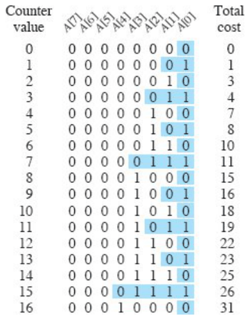
Each row is the counter after one more INCREMENT. The lowest bit flips in every row, the next one in every second row, and so on.每一行是又执行一次 INCREMENT 之后的计数器。最低位在每一行都翻转，下一位每两行翻转一次，依此类推。
In words: bit \(i\) flips only once every \(2^i\) increments, so the flips of all bits form a geometric series.用文字表述：第 \(i\) 位只每隔 \(2^i\) 次递增才翻转一次，因此所有位的翻转次数构成一个几何级数。
- Naive bound. One INCREMENT flips all \(k\) bits when they are all 1, so \(n\) calls cost \(O(nk)\). Not tight.朴素界。 当所有位都为 1 时，一次 INCREMENT 会翻转全部 \(k\) 位，因此 \(n\) 次调用的代价为 \(O(nk)\)。这不紧。
- Aggregate bound.
A[0]flips every call,A[1]every second call,A[2]every fourth call. SoA[i]flips \(\lfloor n/2^i\rfloor\) times in \(n\) calls on a zero counter.聚合界。A[0]每次调用都翻转一次，A[1]每两次翻转一次，A[2]每四次翻转一次。因此，在零计数器上进行 \(n\) 次调用，A[i]共翻转 \(\lfloor n/2^i\rfloor\) 次。
A second view gives the same bound. Each INCREMENT sets one bit (line 6), and every reset undoes an earlier set. So there are at most \(n\) sets and \(n\) resets. Without overflow the total is exactly \(2n-s(n)\), where \(s(n)\) is the number of 1s in the binary form of \(n\). For \(n=16\) it is \(32-1=31\).另一种看法得到同样的界。每次 INCREMENT 置位一个位（第 6 行），而每次复位都撤销了之前的一次置位。因此置位至多 \(n\) 次，复位至多 \(n\) 次。在不发生溢出时，总数恰好为 \(2n-s(n)\)，其中 \(s(n)\) 是 \(n\) 的二进制表示中 1 的个数。例如对于 \(n=16\)，总数为 \(32-1=31\)。
Practice练习
Q1. (True/false) "MULTIPOP has amortized cost \(O(1)\), so one MULTIPOP call never takes more than constant time." Decide, and state one difference between amortized and average-case analysis.Q1.（判断）"MULTIPOP 的摊还代价为 \(O(1)\)，因此一次 MULTIPOP 调用永远不会超过常数时间。"判断其真假，并指出摊还分析与平均情况分析的一个区别。
Answer
False. The amortized cost is an average over a sequence. A call MULTIPOP(S, k) on a stack with at least \(k\) objects costs \(k\), which can be \(\Theta(n)\). What holds is that any \(n\) operations on an initially empty stack cost \(O(n)\) in total.假。摊还代价是对一个操作序列的平均。在至少含有 \(k\) 个对象的栈上调用 MULTIPOP(S, k) 的代价为 \(k\)，该代价可以达到 \(\Theta(n)\)。成立的是：在一个初始为空的栈上，任意 \(n\) 个操作的总代价为 \(O(n)\)。
Amortized analysis uses no probability: its bound holds for every sequence. Average-case analysis assumes a distribution over inputs and bounds an expected cost.摊还分析不使用概率：其界对每一个序列都成立。平均情况分析假设输入服从某个分布，并界定期望代价。
Q2. (Calculation) A stack starts empty. The operations are: five PUSHes, MULTIPOP(S, 3), two PUSHes, one POP, MULTIPOP(S, 10). Give the cost of each operation, the total, and compare with the aggregate bound.Q2.（计算）一个栈初始为空。操作依次为：五次 PUSH、MULTIPOP(S, 3)、两次 PUSH、一次 POP、MULTIPOP(S, 10)。给出每个操作的代价、总代价，并与聚合界比较。
Answer
Costs: the five PUSHes cost 1 each (size 5); MULTIPOP(S, 3) costs \(\min\{5,3\}=3\) (size 2); the two PUSHes cost 1 each (size 4); POP costs 1 (size 3); MULTIPOP(S, 10) costs \(\min\{3,10\}=3\) (size 0).代价：五次 PUSH 各为 1（栈大小为 5）；MULTIPOP(S, 3) 的代价为 \(\min\{5,3\}=3\)（栈大小为 2）；两次 PUSH 各为 1（栈大小为 4）；POP 为 1（栈大小为 3）；MULTIPOP(S, 10) 的代价为 \(\min\{3,10\}=3\)（栈大小为 0）。
Total \(=5+3+2+1+3=14\) for \(n=10\) operations (1.4 per operation). The aggregate bound is \(2n=20\). Here the total equals twice the number of PUSHes (\(2\cdot7\)) because every pushed object is popped.\(n=10\) 个操作的总代价为 \(=5+3+2+1+3=14\)（平均每个操作 1.4）。聚合界为 \(2n=20\)。这里总代价恰为 PUSH 次数（\(2\cdot7\)）的两倍，因为每个压入的对象都会被弹出。
Q3. (Aggregate) The \(i\)th operation of a sequence costs \(i\) if \(i\) is an exact power of 2 and 1 otherwise. Find the amortized cost per operation by aggregate analysis and compute the total for \(n=100\).Q3.（聚合）一个操作序列中第 \(i\) 个操作的代价为 \(i\)，若 \(i\) 恰为 2 的幂，否则为 1。用聚合分析求每个操作的摊还代价，并计算 \(n=100\) 次操作的总代价。
Answer
The operations at powers of 2 cost \(\sum_{j=0}^{\lfloor\lg n\rfloor}2^j=2^{\lfloor\lg n\rfloor+1}-1<2n\) in total, and the other operations cost at most \(n\). So \(T(n)<3n\) and the amortized cost per operation is below 3, i.e. \(O(1)\).位于 2 的幂处的操作总代价为 \(\sum_{j=0}^{\lfloor\lg n\rfloor}2^j=2^{\lfloor\lg n\rfloor+1}-1<2n\)，其余操作的代价至多为 \(n\)。因此 \(T(n)<3n\)，每个操作的摊还代价小于 3，即 \(O(1)\)。
For \(n=100\) the powers of 2 are \(1,2,4,8,16,32,64\) (7 operations) and cost \(127\); the other \(93\) operations cost 1 each. Total \(=127+93=220<300=3n\), i.e. 2.2 per operation.对于 \(n=100\)，2 的幂为 \(1,2,4,8,16,32,64\)（共 7 次操作），代价为 \(127\)；其余 \(93\) 次操作各为 1。总代价为 \(=127+93=220<300=3n\)，即每个操作 2.2。
The accounting method ★★★记账法
Goal. Choose charges for the operations, say where the credit is stored, and show that the credit never becomes negative.目标。 为操作选择收费，说明信用存放在哪里，并证明信用从不为负。
In words: accounting = charge each operation a fixed fee; what you charge beyond the real cost is saved as credit on an object and pays for later work.用文字表述：核算法 = 给每次操作收取固定费用；收费超出实际代价的部分作为信用存放在某个对象上，用来支付之后的工作。
Everyday example: a cafeteria stack of plates. Each time a plate is put on, a coin is taped to it. Taking a plate off is paid by its own coin.日常的例子：食堂里的一摞盘子。每放上一个盘子，就在盘子上贴一枚硬币。取走盘子的费用，由它自己身上的硬币支付。
Step 1: the rules第 1 步：规则
Each operation gets a charge \(\hat c_i\), which may be larger or smaller than its actual cost \(c_i\). If \(\hat c_i>c_i\), the difference is stored as credit（存款）on specific objects. If \(\hat c_i<c_i\), stored credit pays for the shortfall. Different operation types may have different charges.每次操作都获得一笔收费 \(\hat c_i\)，它可以大于或小于其实际代价 \(c_i\)。若 \(\hat c_i>c_i\)，则差额作为信用存放在特定的对象上。若 \(\hat c_i<c_i\)，则已存的信用用于支付不足的部分。不同类型的操作可以有不同的收费。
How to do it by hand:手工操作的方法：
- Choose the charge of each operation type.为每种操作类型选择其收费。
- State an invariant that says where the credit sits, for example "every object on the stack carries $1".陈述一个不变式，说明信用存放在哪里，例如“栈中的每个对象都带有 $1”。
- Check that each operation pays its actual cost from its charge plus the credit it uses.检查每次操作都能用它的收费加上所用的信用来支付其实际代价。
- Conclude that the credit is nonnegative, so the total actual cost is at most the total charge.由此推出信用非负，因此实际总代价至多等于总收费。
Step 2: the stack with MULTIPOP第 2 步：带 MULTIPOP 的栈
Actual costs: PUSH 1, POP 1, MULTIPOP \(\min\{s,k\}\). Charges: PUSH $2, POP $0, MULTIPOP $0.实际代价：PUSH 为 1，POP 为 1，MULTIPOP 为 \(\min\{s,k\}\)。收费：PUSH $2，POP $0，MULTIPOP $0。
- A PUSH pays $1 for itself and puts $1 on the pushed object.PUSH 支付 $1 作为自身的费用，并把 $1 放在被压入的对象上。
- Invariant: every object on the stack carries $1.不变式：栈上的每个对象都带有 $1。
- POP and MULTIPOP pay for each removed object with the $1 on it. They need no charge, although the actual cost of MULTIPOP varies.POP 和 MULTIPOP 用每个被删除对象上的 $1 支付其费用。它们无需收费，尽管 MULTIPOP 的实际代价各不相同。
- The credit equals the stack size, so it is never negative. The total charge of \(n\) operations is at most \(2n\), so the total actual cost is \(O(n)\).信用等于栈的大小，因此永不为负。\(n\) 次操作的总收费至多为 \(2n\)，因此实际总代价为 \(O(n)\)。
Step 3: the binary counter第 3 步：二进制计数器
In words: charge $2 for turning a bit to 1; the flip itself costs $1 and the other $1 stays on the bit to pay for turning it back to 0.用文字表述：对一个位置为 1 的操作收费 $2：翻转本身花 $1，另外 $1 留在该位上，用来支付它之后被复位为 0 的代价。
Invariant: every 1-bit carries $1. Resetting a bit inside the loop is paid by the $1 on that bit. INCREMENT sets at most one bit (line 6), so its charge is at most $2. The credit equals the number of 1-bits, so it is never negative. Hence \(n\) INCREMENTs cost at most \(2n\).不变式：每个为 1 的位都带有 $1。循环中对位的复位由该位上的 $1 支付。INCREMENT 至多置位一个位（第 6 行），因此它的收费至多为 $2。信用等于 1 位的个数，因此永不为负。因此 \(n\) 次 INCREMENT 的代价至多为 \(2n\)。
| \(i\) | counter after \(i\) INCREMENTs | \(c_i\) | \(\sum c\) | \(\sum\hat c=2i\) | credit存款 |
|---|---|---|---|---|---|
| 1 | 0001 | 1 | 1 | 2 | 1 |
| 2 | 0010 | 2 | 3 | 4 | 1 |
| 3 | 0011 | 1 | 4 | 6 | 2 |
| 4 | 0100 | 3 | 7 | 8 | 1 |
| 5 | 0101 | 1 | 8 | 10 | 2 |
| 6 | 0110 | 2 | 10 | 12 | 2 |
| 7 | 0111 | 1 | 11 | 14 | 3 |
| 8 | 1000 | 4 | 15 | 16 | 1 |
In every row the credit \(\sum\hat c-\sum c\) equals the number of 1-bits, as the invariant says. Here \(\sum c\) is the running total of actual costs and \(\sum\hat c=2i\) the running total of charges.每一行中，信用 \(\sum\hat c-\sum c\) 都等于 1 位的个数，这正是不变式所说的。这里 \(\sum c\) 为实际代价的累计总和，\(\sum\hat c=2i\) 为收费的累计总和。
Practice练习
Q1. (Design) A stack never holds more than \(k\) items. After every \(k\) operations (PUSH or POP) the whole stack is copied for backup, at cost 1 per item copied. Use the accounting method to show that \(n\) operations, including the copies, cost \(O(n)\).Q1.（设计）栈中至多容纳 \(k\) 个元素。每执行 \(k\) 次操作（PUSH 或 POP）之后，整个栈会被复制以作备份，每复制一个元素的代价为 1。用记账法证明 \(n\) 次操作（包括复制）的总代价为 \(O(n)\)。
Answer
Charge $2 for every PUSH and POP: $1 pays for the operation and $1 is saved. After \(k\) operations, \(k\) dollars have been saved since the last copy. The copy costs at most \(k\) because the stack holds at most \(k\) items, so the saved money pays for it, and the credit never goes negative. The total actual cost is at most the total charge \(2n=O(n)\).对每次 PUSH 和 POP 收取 $2：$1 支付该操作，$1 被存起来。经过 \(k\) 次操作后，自上次复制以来已存下 \(k\) 美元。复制的代价至多为 \(k\)，因为栈中至多有 \(k\) 个元素，所以存下的钱足以支付它，存款也不会变为负。总实际代价至多为总收费 \(2n=O(n)\)。
Q2. (Accounting) Redo Q3 of the previous section (the \(i\)th operation costs \(i\) if \(i\) is a power of 2, else 1) with the accounting method.Q2.（记账）用记账法重做上一节的 Q3（第 \(i\) 个操作的代价为 \(i\)，若 \(i\) 是 2 的幂，否则为 1）。
Answer
Charge $3 per operation. An ordinary operation (cost 1) saves $2. At \(i=2^j\) with \(j\ge2\) the operation costs \(2^j\): its own $3 pays part and it needs \(2^j-3\) more. The \(2^{j-1}-1\) ordinary operations since the previous power of 2 saved \(2(2^{j-1}-1)=2^j-2\ge2^j-3\). For \(i=1\) and \(i=2\) the charge alone covers the costs 1 and 2. The credit never goes negative, so \(n\) operations cost at most \(3n\).每个操作收取 $3。普通操作（代价为 1）存下 $2。在 \(i=2^j\) 处（\(j\ge2\) 为 2 的幂）时，该操作的代价为 \(2^j\)：它自己的 $3 支付一部分，还需要 \(2^j-3\) 的补充。自上一个 2 的幂以来的 \(2^{j-1}-1\) 个普通操作存下了 \(2(2^{j-1}-1)=2^j-2\ge2^j-3\)。对于 \(i=1\) 和 \(i=2\)，收费本身就足以支付代价 1 和 2。存款从不为负，因此 \(n\) 次操作的总代价至多为 \(3n\)。
Q3. (Explain) A student proposes charges PUSH $1, POP $0, MULTIPOP $0 for the stack. Why is this invalid?Q3.（解释）一名学生建议对栈取收费 PUSH $1，POP $0，MULTIPOP $0。为什么这是无效的？
Answer
A PUSH followed by a POP has total charge \(1+0=1\) but actual cost \(2\), so the credit would be \(-1<0\) and the total charge would not bound the actual cost. Each PUSH must prepay its own later removal, so its charge must be at least 2.先 PUSH 后 POP 的总收费为 \(1+0=1\)，而实际代价为 \(2\)，因此存款将为 \(-1<0\)，总收费也就不能界定实际代价。每次 PUSH 必须预付它自己之后被移出的代价，因此其收费至少为 2。
易错：存款必须随时非负，不是只在序列结束时非负。
The potential method ★★★势能法
Goal. Choose a potential function, compute the amortized cost of every operation case, and state why the total amortized cost bounds the total actual cost.目标。 选择一个势函数，计算每种操作情形的摊还代价，并说明为什么总摊还代价界定了总实际代价。
In words: potential = the credit of the whole structure written as one number that depends only on its current state.用文字表述：势能 = 整个数据结构的信用，写成只依赖于其当前状态的一个数。
Let \(D_0\) be the initial structure, \(D_i\) the structure after the \(i\)th operation, and \(c_i\) the actual cost of that operation. A potential function（势函数）\(\Phi\) maps every \(D_i\) to a real number \(\Phi(D_i)\).设 \(D_0\) 为初始结构，\(D_i\) 为第 \(i\) 次操作之后的结构，\(c_i\) 为该操作的实际代价。势函数 \(\Phi\) 把每个 \(D_i\) 映射为一个实数 \(\Phi(D_i)\)。
Add the definition over \(i=1,\dots,n\). The potentials telescope.对 \(i=1,\dots,n\) 求和，势能逐项相消。
A good \(\Phi\) is large exactly when expensive work is about to happen. Any valid \(\Phi\) gives valid bounds, and different choices give different amortized costs.好的 \(\Phi\) 恰好在即将发生昂贵的工作时取较大值。任何有效的 \(\Phi\) 都给出有效的界，不同的选择会给出不同的摊还代价。
Step 1: the stack with MULTIPOP第 1 步：带 MULTIPOP 的栈
Let \(\Phi(D_i)\) be the number of objects on the stack. Then \(\Phi(D_0)=0\) and \(\Phi(D_i)\ge0\).设 \(\Phi(D_i)\) 为栈上对象的个数。则 \(\Phi(D_0)=0\) 且 \(\Phi(D_i)\ge0\)。
- PUSH on a stack of \(s\) objects: \(\Delta\Phi=(s+1)-s=1\), so \(\hat c=1+1=2\).在含有 \(s\) 个对象的栈上执行 PUSH：代价为 \(\Delta\Phi=(s+1)-s=1\)，因此 \(\hat c=1+1=2\)。
- MULTIPOP(S, k) pops \(k'=\min\{s,k\}\) objects, where \(k'\) is the number really removed. Then \(c=k'\) and \(\Delta\Phi=-k'\), so \(\hat c=k'-k'=0\).MULTIPOP(S, k) 弹出 \(k'=\min\{s,k\}\) 个对象，其中 \(k'\) 是实际弹出的个数。于是 \(c=k'\)，且 \(\Delta\Phi=-k'\)，所以 \(\hat c=k'-k'=0\)。
- POP: \(\hat c=1-1=0\).
All amortized costs are \(O(1)\), and \(\Phi(D_i)\ge\Phi(D_0)\). So \(n\) operations cost at most \(2n=O(n)\).所有摊还代价都是 \(O(1)\)，并且 \(\Phi(D_i)\ge\Phi(D_0)\)。因此 \(n\) 次操作的代价至多为 \(2n=O(n)\)。
Step 2: the binary counter第 2 步：二进制计数器
Let \(\Phi(D_i)=b_i\), the number of 1-bits after the \(i\)th INCREMENT. Suppose it resets \(t_i\) bits to 0. Then \(c_i\le t_i+1\): the resets plus at most one set.设 \(\Phi(D_i)=b_i\) 为第 \(i\) 次 INCREMENT 之后 1 位的个数。假设它将 \(t_i\) 个位复位为 0。则 \(c_i\le t_i+1\)：即复位次数加上至多一次置位。
- If \(b_i=0\), the operation reset all \(k\) bits, so \(b_{i-1}=t_i=k\).若 \(b_i=0\)，则该操作复位了全部 \(k\) 个位，因此 \(b_{i-1}=t_i=k\)。
- If \(b_i>0\), then \(b_i=b_{i-1}-t_i+1\).若 \(b_i>0\)，则 \(b_i=b_{i-1}-t_i+1\)。
- In both cases \(b_i\le b_{i-1}-t_i+1\). So \(\Delta\Phi\le1-t_i\) and \(\hat c_i\le(t_i+1)+(1-t_i)=2\).两种情形下都有 \(b_i\le b_{i-1}-t_i+1\)。因此 \(\Delta\Phi\le1-t_i\)，且 \(\hat c_i\le(t_i+1)+(1-t_i)=2\)。
Since \(\Phi(D_0)=0\) and \(\Phi\ge0\), \(n\) INCREMENTs cost at most \(2n\).由于 \(\Phi(D_0)=0\) 且 \(\Phi\ge0\)，\(n\) 次 INCREMENT 的代价至多为 \(2n\)。
The potential method also handles a counter that does not start at 0. Let it start with \(b_0\) one-bits and end with \(b_n\). As \(\hat c_i\le2\), the identity above gives the next bound.势能法也适用于初始不为 0 的计数器。设它开始时有 \(b_0\) 个 1 位，结束时有 \(b_n\) 个 1 位。由于 \(\hat c_i\le2\)，上面的恒等式给出下面的界。
Step 3: choosing a method第 3 步：选择方法
| Aggregate聚合分析 | Accounting核算法 | Potential势能法 | |
|---|---|---|---|
| Idea思路 | bound the total, divide by \(n\)界定总量，再除以 \(n\) | prepay with credit on objects用对象上的存款预付 | prepay with potential of the whole structure用整个结构的势能预付 |
| Amortized costs摊还代价 | one value for all operations所有操作取同一个值 | one per operation type每种操作类型各取一个值 | \(c_i+\Delta\Phi_i\) |
| Validity condition有效性条件 | the bound on the total对总代价的界 | credit \(\ge0\) at all times | \(\Phi(D_i)\ge\Phi(D_0)\) for all \(i\) |
| Best when最适用于 | one or two operation types一种或两种操作类型 | each stored dollar sits on an object每一份存下的钱都位于某个对象上 | the state is a global quantity; nonzero start状态是全局量；起始值非零 |
| Weakness局限 | no separate cost per type没有按类型区分的代价 | must find charges and an invariant必须找到收费和不变式 | must find \(\Phi\) |
An accounting scheme is a potential function in disguise: take the total credit as \(\Phi\). The stack's credit "$1 per object" is the potential "number of objects".核算法实际上是伪装了的势能函数：把总信用取作 \(\Phi\)。栈上“每个对象 $1”的信用，对应势能“对象个数”。
Practice练习
Q1. (Calculation) A stack holds 3 objects. Operations: PUSH, MULTIPOP(S, 2), POP, MULTIPOP(S, 5). With \(\Phi=\) number of objects, find \(c_i\) and \(\hat c_i\), check the identity of the potential method and say whether \(\sum\hat c_i\) bounds \(\sum c_i\).Q1.（计算）一个栈中有 3 个对象。操作依次为：PUSH、MULTIPOP(S, 2)、POP、MULTIPOP(S, 5)。设 \(\Phi=\) 为对象个数，求 \(c_i\) 和 \(\hat c_i\)，检验势能法的恒等式，并说明 \(\sum\hat c_i\) 是否界定 \(\sum c_i\)。
Answer
Sizes after each operation: 4, 2, 1, 0. Actual costs: \(c=1,2,1,1\) (total 5). Amortized: PUSH \(1+1=2\); MULTIPOP(S, 2): \(2-2=0\); POP: \(1-1=0\); MULTIPOP(S, 5) pops one object: \(1-1=0\). Total amortized \(=2\).每次操作之后的栈大小依次为 4、2、1、0。实际代价：\(c=1,2,1,1\)（总计 5）。摊还代价：PUSH \(1+1=2\)；MULTIPOP(S, 2)：\(2-2=0\)；POP：\(1-1=0\)；MULTIPOP(S, 5) 弹出一个对象：\(1-1=0\)。摊还总代价为 \(=2\)。
Identity: \(\sum c=\sum\hat c-\Phi(D_n)+\Phi(D_0)=2-0+3=5\). ✓. Here \(\Phi(D_n)=0<3=\Phi(D_0)\), so \(\sum\hat c=2\) does not bound \(\sum c=5\). In general \(\sum c\le 2n+s_0-s_n\) for a stack that starts with \(s_0\) and ends with \(s_n\) objects.恒等式：\(\sum c=\sum\hat c-\Phi(D_n)+\Phi(D_0)=2-0+3=5\)。✓ 这里 \(\Phi(D_n)=0<3=\Phi(D_0)\)，因此 \(\sum\hat c=2\) 不界定 \(\sum c=5\)。一般地，对于初始含 \(s_0\) 个对象、最终含 \(s_n\) 个对象的栈，\(\sum c\le 2n+s_0-s_n\)。
Q2. (Calculation) An 8-bit counter holds 01111111. Perform 10 INCREMENTs. Give the actual total cost and compare it with the bound \(2n-b_n+b_0\).Q2.（计算）一个 8 位计数器的值为 01111111。执行 10 次 INCREMENT。给出实际总代价，并将其与界 \(2n-b_n+b_0\) 比较。
Answer
Bits flipped per INCREMENT: \(8,1,2,1,3,1,2,1,4,1\), total \(24\). The counter goes from 127 to 137 \(=\) 10001001, so \(b_0=7\) and \(b_n=3\). The bound is \(2\cdot10-3+7=24\), equal to the actual cost because no overflow occurs (every \(\hat c_i=2\) exactly). The large \(b_0\) costs only a one-time extra \(b_0\).每次 INCREMENT 翻转的位数依次为 \(8,1,2,1,3,1,2,1,4,1\)，总计 \(24\)。计数器从 127 变到 137 \(=\) 10001001，因此 \(b_0=7\) 且 \(b_n=3\)。界为 \(2\cdot10-3+7=24\)，由于没有发生溢出（每个 \(\hat c_i=2\) 都恰好成立），它与实际代价相等。较大的 \(b_0\) 只产生一次性的额外代价 \(b_0\)。
Q3. (Proof) Let \(\Phi(D_i)\ge\Phi(D_0)\) for all \(i\) but \(\Phi(D_0)\ne0\). Give a potential \(\Phi'\) with \(\Phi'(D_0)=0\), \(\Phi'(D_i)\ge0\) and the same amortized costs.Q3.（证明）设对所有 \(i\) 但 \(\Phi(D_0)\ne0\) 有 \(\Phi(D_i)\ge\Phi(D_0)\)。给出一个势函数 \(\Phi'\)，使其满足 \(\Phi'(D_0)=0\)、\(\Phi'(D_i)\ge0\)，并且摊还代价相同。
Answer
Let \(\Phi'(D_i)=\Phi(D_i)-\Phi(D_0)\). Then \(\Phi'(D_0)=0\) and \(\Phi'(D_i)\ge0\) by hypothesis. The new amortized cost is \(c_i+\Phi'(D_i)-\Phi'(D_{i-1})=c_i+\Phi(D_i)-\Phi(D_{i-1})=\hat c_i\), because the constant \(\Phi(D_0)\) cancels in the difference.设 \(\Phi'(D_i)=\Phi(D_i)-\Phi(D_0)\)。则 \(\Phi'(D_0)=0\) 且 \(\Phi'(D_i)\ge0\)（由假设）。新的摊还代价为 \(c_i+\Phi'(D_i)-\Phi'(D_{i-1})=c_i+\Phi(D_i)-\Phi(D_{i-1})=\hat c_i\)，因为常数 \(\Phi(D_0)\) 在作差时消去了。
Dynamic tables: expansion ★★★动态表：扩张
Goal. Compute the cost of \(n\) insertions into a table that doubles when full, and show that the amortized cost is 3 by aggregate, accounting and potential analysis.目标。 计算向一个满了就倍增的表中插入 \(n\) 个元素的代价，并分别用聚合分析、核算法和势能法证明摊还代价为 3。
In words: doubling = when the table is full, make it twice as big, so the next expansion is far away and its cost is spread over many cheap insertions.用文字表述：倍增 = 表满时，把它扩大为原来的两倍，这样下一次扩张离得很远，其代价就摊给许多便宜的插入。
TABLE-INSERT(T, x)
1 if T.size == 0
2 allocate T.table with 1 slot
3 T.size = 1
4 if T.num == T.size
5 allocate new-table with 2 · T.size slots
6 insert all items in T.table into new-table
7 free T.table
8 T.table = new-table
9 T.size = 2 · T.size
10 insert x into T.table
11 T.num = T.num + 1
Lines 1 to 3 give an empty table one slot. Lines 4 to 9 are the expansion: allocate twice the slots, copy every item, free the old array. Lines 10 and 11 insert the new item.第 1 至 3 行给出一个只有一个槽位的空表。第 4 至 9 行是扩张：分配两倍的槽位，复制每个元素，释放旧数组。第 10 和 11 行插入新元素。
Cost model: 1 per elementary insertion (line 6 for each copied item, line 10 for the new item). Allocation and freeing are dominated by the copying. The \(i\)th insertion costs \(c_i=1\) if there is room. If the table is full, it costs \(c_i=i\): \(i-1\) copies plus the new item. The table is full when it holds \(1,2,4,8,\dots\) items. So an expansion happens exactly when \(i-1\) is a power of 2, that is at insertions \(2,3,5,9,17,\dots\). With doubling alone, \(\alpha\ge1/2\) always.代价模型：每次基本插入计为 1（第 6 行对每个被复制的元素，第 10 行对新元素）。分配和释放的代价被复制代价所支配。第 \(i\) 次插入若表中有空位，代价为 \(c_i=1\)。若表已满，代价为 \(c_i=i\)：\(i-1\) 次复制加上新元素。表在含有 \(1,2,4,8,\dots\) 个元素时为满。因此，扩张恰好发生在 \(i-1\) 为 2 的幂时，即第 \(2,3,5,9,17,\dots\) 次插入。仅用倍增时，\(\alpha\ge1/2\) 总是成立。
Step 1: aggregate analysis第 1 步：聚合分析
Check for \(n=17\): the costs are \(1,2,3,1,5,1,1,1,9,1,1,1,1,1,1,1,17\). The total is \(48<51=3n\).检查 \(n=17\)：各次代价为 \(1,2,3,1,5,1,1,1,9,1,1,1,1,1,1,1,17\)。总计为 \(48<51=3n\)。
Step 2: accounting method第 2 步：核算法

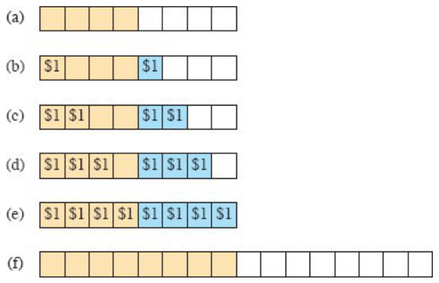
Charge $3 per TABLE-INSERT, split into three parts.每次 TABLE-INSERT 收取 $3，分为三部分。
- $1 pays for the elementary insertion.$1 支付基本插入。
- $1 is placed on the new item, to prepay its own copy at the next expansion.$1 放在新元素上，预付它自己在下一次扩张时的复制费用。
- $1 is placed on an old item that has no credit yet, to prepay that item's copy.$1 放在一个尚无信用的旧元素上，预付该元素的复制费用。
Suppose the table has just expanded to \(m\) slots. It holds \(m/2\) copied items with no credit. Each of the next \(m/2\) insertions puts $1 on itself and $1 on a different old item. When the table is full, all \(m\) items carry $1. That pays for copying all \(m\) items at the next expansion. So every insertion has amortized cost $3.假设表刚刚扩张到 \(m\) 个槽位，此时它有 \(m/2\) 个已复制但没有信用的元素。接下来的每 \(m/2\) 次插入，都在自己身上放 $1，并在另一个不同的旧元素上放 $1。表满时，全部 \(m\) 个元素都带有 $1。这笔钱足以支付下一次扩张时复制全部 \(m\) 个元素的费用。因此每次插入的摊还代价为 $3。
Step 3: potential method第 3 步：势能法
In words: after an expansion the table is half full, so the potential must grow from 0 to the table size in half a table of insertions: plus 2 per insertion.用文字表述：扩张之后表是半满的，因此势能必须在半个表的插入次数内从 0 增长到表的大小，也就是每次插入增加 2。
Amortized cost of the \(i\)th insertion:第 \(i\) 次插入的摊还代价：
- No expansion. \(T.\mathit{num}\) grows by 1 and the size is unchanged, so \(\Delta\Phi_i=2\) and \(\hat c_i=1+2=3\).没有扩张。 \(T.\mathit{num}\) 增加 1，大小不变，因此 \(\Delta\Phi_i=2\)，且 \(\hat c_i=1+2=3\)。
- Expansion. Before the insertion \(\mathit{num}_{i-1}=\mathit{size}_{i-1}=i-1\), so \(\Phi_{i-1}=i-1\). Afterwards \(\mathit{size}_i=2(i-1)\) and \(\mathit{num}_i=i\), so \(\Phi_i=2i-2(i-1)=2\). Then \(\Delta\Phi_i=3-i\) and \(\hat c_i=i+(3-i)=3\).扩张。 插入前 \(\mathit{num}_{i-1}=\mathit{size}_{i-1}=i-1\)，因此 \(\Phi_{i-1}=i-1\)。插入后 \(\mathit{size}_i=2(i-1)\)，且 \(\mathit{num}_i=i\)，因此 \(\Phi_i=2i-2(i-1)=2\)。于是 \(\Delta\Phi_i=3-i\)，且 \(\hat c_i=i+(3-i)=3\)。
- First insertion. \(\Phi\) goes from 0 to 1, so \(\hat c_1=1+1=2\le3\).第一次插入。 \(\Phi\) 从 0 增至 1，因此 \(\hat c_1=1+1=2\le3\)。
Here \(\mathit{num}_i\) and \(\mathit{size}_i\) are the number of items and slots after the \(i\)th insertion, and \(\Phi_i\) is \(\Phi\) after it.这里 \(\mathit{num}_i\) 与 \(\mathit{size}_i\) 分别是第 \(i\) 次插入之后的元素个数与槽位个数，\(\Phi_i\) 为该次插入之后的 \(\Phi\)。

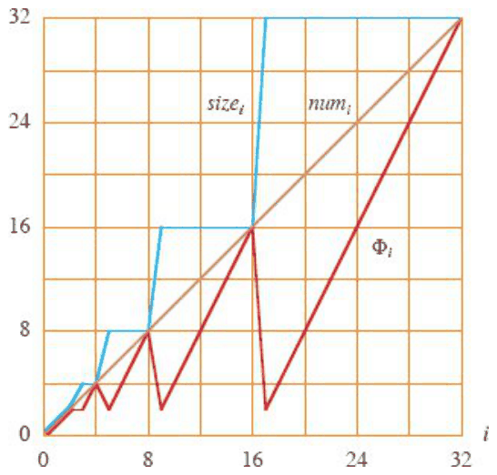
The potential rises by 2 per insertion, and drops to 2 after each expansion. The same numbers for the first nine insertions:每次插入势能增加 2，每次扩张后降回 2。前九次插入的数值相同：
| \(i\) | 1 | 2 | 3 | 4 | 5 | 6 | 7 | 8 | 9 |
|---|---|---|---|---|---|---|---|---|---|
| \(\mathit{num}_i\) | 1 | 2 | 3 | 4 | 5 | 6 | 7 | 8 | 9 |
| \(\mathit{size}_i\) | 1 | 2 | 4 | 4 | 8 | 8 | 8 | 8 | 16 |
| \(c_i\) | 1 | 2 | 3 | 1 | 5 | 1 | 1 | 1 | 9 |
| \(\Phi_i\) | 1 | 2 | 2 | 4 | 2 | 4 | 6 | 8 | 2 |
| \(\hat c_i\) | 2 | 3 | 3 | 3 | 3 | 3 | 3 | 3 | 3 |
Check: \(\sum c_i=24\) and \(\sum\hat c_i=26=24+\Phi_9-\Phi_0=24+2-0\).检查：\(\sum c_i=24\) 与 \(\sum\hat c_i=26=24+\Phi_9-\Phi_0=24+2-0\)。
Practice练习
Q1. (Calculation) A table with 32 slots is full. Insert one item with the doubling rule. Give \(c\), \(\Phi\) before and after (\(\Phi=2\,\mathit{num}-\mathit{size}\)) and \(\hat c\).Q1.（计算）一个有 32 个槽位的表已满。用倍增规则插入一个元素。给出 \(c\)、插入前后的 \(\Phi\)（\(\Phi=2\,\mathit{num}-\mathit{size}\)）和 \(\hat c\)。
Answer
The table expands to 64 slots: 32 copies plus the new item, so \(c=33\). Before: \(\Phi=2\cdot32-32=32\). After: \(\mathit{num}=33\), \(\mathit{size}=64\), \(\Phi=66-64=2\). So \(\Delta\Phi=-30\) and \(\hat c=33-30=3\).表扩张到 64 个槽位：复制 32 个元素加上新元素，因此 \(c=33\)。插入前：\(\Phi=2\cdot32-32=32\)。插入后：\(\mathit{num}=33\)、\(\mathit{size}=64\)、\(\Phi=66-64=2\)。因此 \(\Delta\Phi=-30\) 且 \(\hat c=33-30=3\)。
Q2. (Beyond the pages) A table grows by a constant 10 slots whenever it is full. Compute the total cost of \(n=1000\) insertions into an empty table, compare with doubling, and give the amortized cost for general \(n\).Q2.（超出正文）每当表满时，表增加固定的 10 个槽位。计算向空表中插入 \(n=1000\) 个元素的总代价，与倍增法比较，并给出对一般的 \(n\) 的摊还代价。
Answer
Expansions occur when inserting items \(11,21,\dots,991\) and copy \(10,20,\dots,990\) items: \(10(1+2+\dots+99)=49\,500\) copies. With the \(1000\) elementary insertions the total is \(50\,500\), i.e. \(50.5\) per insertion. Doubling needs only \(1000+(1+2+\dots+512)=2023\) (2.0 per insertion, below \(3n\)).扩张发生在插入元素 \(11,21,\dots,991\) 时，并复制 \(10,20,\dots,990\) 个元素：共 \(10(1+2+\dots+99)=49\,500\) 次复制。加上 \(1000\) 次基本插入，总代价为 \(50\,500\)，即每次插入 \(50.5\)。倍增法只需要 \(1000+(1+2+\dots+512)=2023\)（每次插入 2.0，低于 \(3n\)）。
With a fixed increment \(d\) the copying costs \(d(1+2+\dots+n/d)\approx n^2/(2d)\), so the amortized cost is \(\Theta(n)\). Only geometric growth gives \(O(1)\): each expansion must make room for a constant fraction of the current size.若固定增量为 \(d\)，复制代价为 \(d(1+2+\dots+n/d)\approx n^2/(2d)\)，因此摊还代价为 \(\Theta(n)\)。只有等比增长才能给出 \(O(1)\)：每次扩张都必须为当前大小的一个常数比例腾出空间。
思路：每次只加固定个数，复制的总量是平方级；按比例增长才是线性。
Dynamic tables: expansion and contraction ★★动态表：扩张与收缩
Goal. Explain why the naive halving rule fails, state the \(1/4\) rule, and compute amortized costs of insertions and deletions with the two-case potential.目标。 解释为什么朴素的减半规则会失败，给出 \(1/4\) 规则，并用两种情形的势能计算插入与删除的摊还代价。
In words: a table that shrinks as soon as it is half empty can be made to resize on every second operation; shrinking only at one quarter leaves enough operations between resizes.用文字表述：一个表一旦一半空就收缩，就可能在每两次操作时都要调整大小；只有在降到四分之一时才收缩，两次调整之间就留出了足够多的操作。
To save space, a table also contracts（收缩）after deletions: it allocates a smaller array, copies the items and frees the old one. Two properties are needed: the load factor stays above a positive constant, and every operation has constant amortized cost.为了节省空间，表在删除后也会收缩：分配一个较小的数组，复制元素，释放旧数组。需要两个性质：装载因子始终保持在某个正常数之上，并且每次操作的摊还代价为常数。
Step 1: Rule A fails第 1 步：规则 A 失败
Rule A (naive). Double when an insertion finds the table full. Halve as soon as a deletion leaves the table less than half full. Take a full table of 8 slots and perform I (insert) and D (delete) as in the row.规则 A（朴素）。 插入时发现表已满就倍增。删除后表不足半满就立即减半。取一个满的 8 个槽位的表，并按该行执行 I（插入）与 D（删除）。
| Operation操作 | I | D | D | I | I | D | D | I | I |
|---|---|---|---|---|---|---|---|---|---|
| items after操作后元素数 | 9 | 8 | 7 | 8 | 9 | 8 | 7 | 8 | 9 |
| slots after操作后槽位数 | 16 | 16 | 8 | 8 | 16 | 16 | 8 | 8 | 16 |
| cost代价 | 9 | 1 | 8 | 1 | 9 | 1 | 8 | 1 | 9 |
Right after an expansion the table is half full, so two deletions trigger a contraction. Right after a contraction it is nearly full, so two insertions trigger an expansion. Too few operations separate the resizes to pay for the copying. For a table of size \(\Theta(n)\), \(n\) operations cost \(\Theta(n^2)\).刚扩张之后表恰好半满，因此两次删除就会触发收缩。刚收缩之后表几乎是满的，因此两次插入就会触发扩张。两次调整之间的操作太少，无法支付复制的代价。对于大小为 \(\Theta(n)\) 的表，\(n\) 次操作的代价为 \(\Theta(n^2)\)。
Step 2: Rule B, the \(1/4\) rule第 2 步：规则 B，即 \(1/4\) 规则
Rule B. Double when an insertion finds the table full. Halve when a deletion leaves the load factor below \(1/4\). Then \(\alpha\ge1/4\) and after any resize \(\alpha\approx1/2\). From \(\alpha=1/2\) the next expansion needs about \(\mathit{size}/2\) insertions and the next contraction about \(\mathit{size}/4\) deletions. So \(\Omega(\mathit{size})\) operations separate resizes. The same nine operations cost \(9,1,1,1,1,1,1,1,1\), total 17 instead of 47.规则 B。 插入时发现表已满就倍增。删除使装载因子低于 \(1/4\) 时减半。于是 \(\alpha\ge1/4\)，且在每次调整之后 \(\alpha\approx1/2\)。从 \(\alpha=1/2\) 起，下一次扩张需要约 \(\mathit{size}/2\) 次插入，下一次收缩需要约 \(\mathit{size}/4\) 次删除。因此 \(\Omega(\mathit{size})\) 次操作之间隔开了两次调整。同样的九次操作代价为 \(9,1,1,1,1,1,1,1,1\)，合计 17（而不是 47）。
| Operation操作 | Trigger触发条件 | Action操作 |
|---|---|---|
| TABLE-INSERT | table full (\(T.\mathit{num}=T.\mathit{size}\)) | allocate \(2\,T.\mathit{size}\) slots, copy all items, then insert分配 \(2\,T.\mathit{size}\) 个槽位，复制全部元素，然后插入 |
| TABLE-DELETE | after the removal, \(T.\mathit{num}<T.\mathit{size}/4\) | allocate \(T.\mathit{size}/2\) slots and copy the remaining items分配 \(T.\mathit{size}/2\) 个槽位，并复制剩余元素 |
Step 3: the potential function第 3 步：势能函数
The potential must be 0 at \(\alpha=1/2\). It must have grown to \(T.\mathit{num}\), the number of items to copy, when the load factor reaches 1 or \(1/4\).势能在 \(\alpha=1/2\) 时必须为 0。当装载因子达到 1 或 \(1/4\) 时，它必须已增长到 \(T.\mathit{num}\)（即需要复制的元素数）。

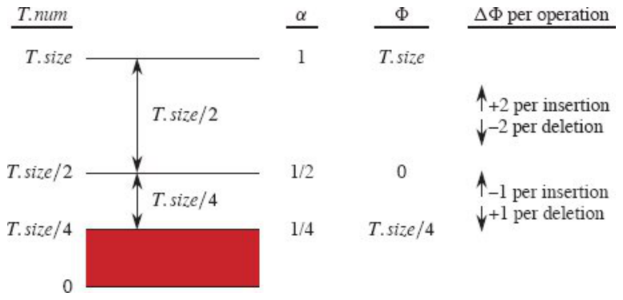
The slopes differ because an expansion copies \(T.\mathit{size}\) items, reached after \(T.\mathit{size}/2\) insertions (slope 2). A contraction copies \(T.\mathit{size}/4\) items, reached after \(T.\mathit{size}/4\) deletions (slope 1).两段斜率不同，因为扩张要复制 \(T.\mathit{size}\) 个元素，经过 \(T.\mathit{size}/2\) 次插入才达到（斜率为 2）。收缩要复制 \(T.\mathit{size}/4\) 个元素，经过 \(T.\mathit{size}/4\) 次删除才达到（斜率为 1）。
Amortized costs. Here \(\alpha_i\) is the load factor after operation \(i\), \(\alpha_{i-1}\) the one before it, and \(\mathit{size}_{i-1}\) the number of slots before operation \(i\).摊还代价。这里 \(\alpha_i\) 是操作 \(i\) 之后的装载因子，\(\alpha_{i-1}\) 是其之前的装载因子，\(\mathit{size}_{i-1}\) 是操作 \(i\) 之前的槽位数。
| Operation \(i\) | Condition条件 | \(c_i\) | \(\Delta\Phi_i\) | \(\hat c_i\) |
|---|---|---|---|---|
| Insert, no expansion插入，无扩张 | \(\alpha_{i-1}\ge1/2\) | 1 | \(+2\) | 3 |
| Insert, no expansion插入，无扩张 | \(\alpha_{i-1}<1/2\) (also if it reaches exactly \(1/2\))\(\alpha_{i-1}<1/2\)（恰好达到 \(1/2\) 时亦然） | 1 | \(-1\) | 0 |
| Insert, expansion插入，扩张 | table full before插入前表已满 | \(\mathit{size}_{i-1}+1\) | \(2-\mathit{size}_{i-1}\) | 3 |
| Delete, no contraction删除，无收缩 | \(\alpha_i\ge1/2\) | 1 | \(-2\) | \(-1\) |
| Delete, no contraction删除，无收缩 | \(\alpha_i<1/2\) (also when the table was exactly half full before the deletion)\(\alpha_i<1/2\)（包括删除之前表恰好半满的情形） | 1 | \(+1\) | 2 |
| Delete, contraction删除，收缩 | \(\alpha_{i-1}=1/4\) | \(\mathit{size}_{i-1}/4\) | \(1-\mathit{size}_{i-1}/4\) | 1 |
For the contraction row: before the deletion \(\mathit{num}_{i-1}=\mathit{size}_{i-1}/4\), so \(\Phi_{i-1}=\mathit{size}_{i-1}/2-\mathit{size}_{i-1}/4=\mathit{size}_{i-1}/4\). The deletion plus the copy of \(\mathit{size}_{i-1}/4-1\) items costs \(c_i=\mathit{size}_{i-1}/4\). Afterwards \(\mathit{size}_i=\mathit{size}_{i-1}/2\) and \(\mathit{num}_i=\mathit{size}_i/2-1\), so \(\Phi_i=1\). Hence \(\hat c_i=\mathit{size}_{i-1}/4+(1-\mathit{size}_{i-1}/4)=1\).对于收缩这一行：删除前有 \(\mathit{num}_{i-1}=\mathit{size}_{i-1}/4\)，因此 \(\Phi_{i-1}=\mathit{size}_{i-1}/2-\mathit{size}_{i-1}/4=\mathit{size}_{i-1}/4\)。删除加上复制 \(\mathit{size}_{i-1}/4-1\) 个元素，共计 \(c_i=\mathit{size}_{i-1}/4\)。之后 \(\mathit{size}_i=\mathit{size}_{i-1}/2\)，且 \(\mathit{num}_i=\mathit{size}_i/2-1\)，因此 \(\Phi_i=1\)。故 \(\hat c_i=\mathit{size}_{i-1}/4+(1-\mathit{size}_{i-1}/4)=1\)。
Every amortized cost is at most 3 and \(\Phi(D_0)=0\le\Phi(D_i)\). So any \(n\) operations on an initially empty table cost at most \(3n=O(n)\).每个摊还代价都至多为 3，并且 \(\Phi(D_0)=0\le\Phi(D_i)\)。因此，对初始为空的表进行任意 \(n\) 次操作，总代价至多为 \(3n=O(n)\)。
Practice练习
Q1. (Calculation) A table with 16 slots holds 4 items (Rule B). Delete one item. Give \(c\), \(\Phi\) before and after, and \(\hat c\).Q1.（计算）一个有 16 个槽位的表中有 4 个元素（规则 B）。删除一个元素。给出 \(c\)、删除前后的 \(\Phi\)，以及 \(\hat c\)。
Answer
After the deletion the table has 3 items, below \(16/4=4\), so it contracts to 8 slots. Cost: 1 deletion plus 3 copies, \(c=4\). Before: \(\alpha=1/4<1/2\), so \(\Phi=16/2-4=4\). After: \(\Phi=8/2-3=1\). So \(\Delta\Phi=-3\) and \(\hat c=4-3=1\).删除之后表中有 3 个元素，低于 \(16/4=4\)，因此收缩为 8 个槽位。代价：1 次删除加 3 次复制，即 \(c=4\)。删除前：\(\alpha=1/4<1/2\)，因此 \(\Phi=16/2-4=4\)。删除后：\(\Phi=8/2-3=1\)。因此 \(\Delta\Phi=-3\) 且 \(\hat c=4-3=1\)。
Q2. (Trace) A table has 8 slots and 4 items (Rule B). Perform delete, delete, delete, insert, insert, insert, insert. For each operation give the items and slots afterwards, \(c_i\), \(\Phi_i\) and \(\hat c_i\), and check \(\sum\hat c_i=\sum c_i+\Phi_n-\Phi_0\).Q2.（手工演算）一个表有 8 个槽位和 4 个元素（规则 B）。依次执行删除、删除、删除、插入、插入、插入、插入。对每次操作，给出之后的元素数和槽位数，\(c_i\)、\(\Phi_i\) 和 \(\hat c_i\)，并检验 \(\sum\hat c_i=\sum c_i+\Phi_n-\Phi_0\)。
Answer
\(\Phi_0=8/2-4=0\).
| Operation操作 | items元素数 | slots槽位数 | \(c_i\) | \(\Phi_i\) | \(\hat c_i\) |
|---|---|---|---|---|---|
| D | 3 | 8 | 1 | 1 | 2 |
| D | 2 | 8 | 1 | 2 | 2 |
| D (contracts)D（收缩） | 1 | 4 | 2 | 1 | 1 |
| I | 2 | 4 | 1 | 0 | 0 |
| I | 3 | 4 | 1 | 2 | 3 |
| I | 4 | 4 | 1 | 4 | 3 |
| I (expands)I（扩张） | 5 | 8 | 5 | 2 | 3 |
The third deletion leaves 1 item \(<8/4=2\), so the table contracts to 4 slots (1 deletion + 1 copy \(=2\)). The last insertion finds 4 of 4 slots full and expands (4 copies + 1). Totals: \(\sum c=12\), \(\sum\hat c=14=12+2-0\). ✓第三次删除之后只剩 1 个元素 \(<8/4=2\)，因此表收缩为 4 个槽位（1 次删除加 1 次复制 \(=2\)）。最后一次插入时，4 个槽位已全部占满，于是扩张（4 次复制加 1）。总计：\(\sum c=12\)、\(\sum\hat c=14=12+2-0\)。✓
Terms to recognise ★需要认识的术语
| Term术语 | What to know要知道什么 |
|---|---|
| Amortized versus average case摊还与平均情况 | Amortized: worst-case total over a sequence divided by \(n\), no probability. Average case: expectation over an input distribution.摊还：对一个序列的最坏总代价除以 \(n\)，不涉及概率。平均情况：对某个输入分布取期望。 |
| DECREMENT on a counter计数器上的 DECREMENT | With DECREMENT added, alternating DECREMENT and INCREMENT on 10…0 flips all \(k\) bits each time: \(n\) operations cost \(\Theta(nk)\).加入 DECREMENT 后，在 10…0 上交替执行 DECREMENT 与 INCREMENT，每次都翻转全部 \(k\) 位：\(n\) 次操作的代价为 \(\Theta(nk)\)。 |
| Exact counter total精确的计数器总代价 | \(n\) INCREMENTs from 0 flip exactly \(2n-s(n)\) bits, where \(s(n)\) is the number of 1s in the binary form of \(n\).从 0 开始做 \(n\) 次 INCREMENT，恰好翻转 \(2n-s(n)\) 位，其中 \(s(n)\) 是 \(n\) 的二进制表示中 1 的个数。 |
| Credit信用 | Stored overcharge in the accounting method; it sits on objects, never in the code, and must never be negative.核算法中存储的多收部分；它存放在对象上，从不出现在代码中，并且绝不能为负。 |
| Growth factor增长因子 | Growing by a factor \(g\) (a constant above 1) gives \(O(1)\) amortized cost; growing by a fixed number of slots gives \(\Theta(n)\).按因子 \(g\)（一个大于 1 的常数）增长，摊还代价为 \(O(1)\)；按固定的槽位数增长，摊还代价为 \(\Theta(n)\)。 |
| Fixed increment固定增量 | Growth by \(d\) slots copies about \(n^2/(2d)\) items for \(n\) insertions, so the amortized cost is \(\Theta(n)\).每次增加 \(d\) 个槽位，大约复制 \(n^2/(2d)\) 个元素，对应 \(n\) 次插入，因此摊还代价为 \(\Theta(n)\)。 |
| Red-black trees红黑树 | \(m\) insertions and deletions cause \(O(m)\) structural changes, although one operation can recolour \(\Theta(\lg n)\) nodes (Section 10.3).\(m\) 次插入与删除会引起 \(O(m)\) 次结构变化，尽管单次操作可能重新着色 \(\Theta(\lg n)\) 个结点（见第 10.3 节）。 |
| Free choice of potential势函数可自由选择 | Different valid potentials give different amortized costs; all bound the same actual total.不同的有效势函数给出不同的摊还代价，但它们都界定同样的实际总代价。 |
Exam-style questions考试题型练习
Q1. (Concepts, 10 marks) (a) Define the amortized cost of an operation and give two differences between amortized analysis and average-case analysis. (3) (b) For aggregate analysis, the accounting method and the potential method, state what is chosen and the condition that makes the bound valid. (4) (c) MULTIPOP has amortized cost 0. Does one MULTIPOP always take constant time? Explain. (3)Q1.（概念，10 分）(a) 给出一个操作的摊还代价的定义，并给出摊还分析与平均情况分析之间的两个区别。（3 分）(b) 对于聚合分析、记账法和势能法，分别说明所选取的对象以及使界有效的条件。（4 分）(c) MULTIPOP 的摊还代价为 0。一次 MULTIPOP 是否总是只需常数时间？请解释。（3 分）
Answer
(a) The amortized cost of an operation is the cost assigned to it so that, for every sequence of \(n\) operations, the total amortized cost is at least the total actual cost; in aggregate analysis it is \(T(n)/n\), the worst-case total divided by \(n\). Differences: amortized analysis uses no probability and its bound holds for every sequence, whereas average-case analysis assumes an input distribution and bounds an expected cost; amortized analysis averages over the operations of one sequence on one data structure.(a) 一个操作的摊还代价，是为其指定的代价，使得对于任意 \(n\) 个操作的序列，总摊还代价都不小于总实际代价；在聚合分析中，它为 \(T(n)/n\)，即最坏情况下的总代价除以 \(n\)。区别：摊还分析不使用概率，其界对每个序列都成立；而平均情况分析假设输入服从某个分布，并界定期望代价。摊还分析是对同一数据结构上一个操作序列中的各次操作取平均。
(b) Aggregate: prove an upper bound \(T(n)\) on the total cost of any \(n\) operations; every operation gets \(T(n)/n\); valid for every \(n\). Accounting: choose a charge \(\hat c_i\) for each operation type; valid if \(\sum\hat c_i\ge\sum c_i\) for all sequences, i.e. the credit is never negative. Potential: choose \(\Phi\) and set \(\hat c_i=c_i+\Phi(D_i)-\Phi(D_{i-1})\); valid if \(\Phi(D_i)\ge\Phi(D_0)\) for all \(i\) (usually \(\Phi(D_0)=0\) and \(\Phi\ge0\)).(b) 聚合分析：证明任意 \(n\) 次操作的总代价的上界为 \(T(n)\)；每个操作都获得 \(T(n)/n\)；对每个 \(n\) 均成立。记账法：为每种操作类型选取收费 \(\hat c_i\)；若对所有序列都有 \(\sum\hat c_i\ge\sum c_i\)，即存款永不为负，则有效。势能法：选取 \(\Phi\) 并令 \(\hat c_i=c_i+\Phi(D_i)-\Phi(D_{i-1})\)；若对所有 \(i\) 都有 \(\Phi(D_i)\ge\Phi(D_0)\)（通常要求 \(\Phi(D_0)=0\) 且 \(\Phi\ge0\)），则有效。
(c) No. The amortized cost is an average. MULTIPOP(S, k) on a stack with at least \(k\) objects costs \(k\), up to \(\Theta(n)\). The zero charge means the pops were prepaid by the PUSHes ($1 credit per object, or potential equal to the stack size). Any \(n\) operations on an initially empty stack cost at most \(2n\) in total.(c) 不能。摊还代价是一种平均。在至少含有 \(k\) 个对象的栈上调用 MULTIPOP(S, k) 的代价为 \(k\)，最多可达 \(\Theta(n)\)。零收费意味着这些弹出操作已由 PUSH 预付（每个对象的存款为 $1，或势能等于栈的大小）。在初始为空的栈上，任意 \(n\) 个操作的总代价至多为 \(2n\)。
思路：摊还 = 最坏序列的平均，无概率；三种方法的有效性条件要分别写清楚。
Q2. (Stack, 12 marks) A stack starts empty. The operations are: six PUSHes, MULTIPOP(S, 4), PUSH, POP, MULTIPOP(S, 5). (a) Give the actual cost of each operation and the total. (3) (b) Use the charges PUSH $2, POP $0, MULTIPOP $0. Give the total charge and the credit after each operation. (4) (c) Use \(\Phi=\) stack size. Give \(\hat c_i\) for every operation and check \(\sum\hat c_i=\sum c_i+\Phi(D_n)-\Phi(D_0)\). (5)Q2.（栈，12 分）栈初始为空。操作依次为：六次 PUSH、MULTIPOP(S, 4)、PUSH、POP、MULTIPOP(S, 5)。(a) 给出每个操作的实际代价及总代价。（3 分）(b) 取收费 PUSH $2，POP $0，MULTIPOP $0。给出总收费，以及每次操作之后的存款。（4 分）(c) 取 \(\Phi=\) 为栈的大小。对每个操作给出 \(\hat c_i\)，并检验 \(\sum\hat c_i=\sum c_i+\Phi(D_n)-\Phi(D_0)\)。（5 分）
Answer
(a) The six PUSHes cost 1 each (size 6). MULTIPOP(S, 4) costs 4 (size 2). PUSH costs 1 (size 3). POP costs 1 (size 2). MULTIPOP(S, 5) costs \(\min\{2,5\}=2\) (size 0). Total \(=6+4+1+1+2=14\).(a) 六次 PUSH 各为 1（栈大小为 6）。MULTIPOP(S, 4) 的代价为 4（栈大小为 2）。PUSH 的代价为 1（栈大小为 3）。POP 的代价为 1（栈大小为 2）。MULTIPOP(S, 5) 的代价为 \(\min\{2,5\}=2\)（栈大小为 0）。总代价为 \(=6+4+1+1+2=14\)。
(b) There are 7 PUSHes, so the total charge is \(7\cdot2=14\ge14\). Each stacked object carries $1, so the credit after each operation equals the stack size: \(1,2,3,4,5,6,2,3,2,0\), always nonnegative.(b) 共有 7 次 PUSH，因此总收费为 \(7\cdot2=14\ge14\)。每个在栈中的对象都带有 $1，因此每次操作之后的存款等于栈的大小：\(1,2,3,4,5,6,2,3,2,0\)，始终非负。
(c) PUSH: \(1+1=2\) (seven times, total 14). MULTIPOP(S, 4): \(4+(2-6)=0\). POP: \(1+(2-3)=0\). MULTIPOP(S, 5): \(2+(0-2)=0\). So \(\sum\hat c=14\) and \(\sum c+\Phi(D_n)-\Phi(D_0)=14+0-0=14\). ✓ The bound is tight because the stack ends empty; in general the total is at most \(2n=20\).(c) PUSH：\(1+1=2\)（共七次，总计 14）。MULTIPOP(S, 4)：\(4+(2-6)=0\)。POP：\(1+(2-3)=0\)。MULTIPOP(S, 5)：\(2+(0-2)=0\)。因此 \(\sum\hat c=14\) 且 \(\sum c+\Phi(D_n)-\Phi(D_0)=14+0-0=14\)。✓ 由于栈最终为空，该界是紧的；一般地，总代价至多为 \(2n=20\)。
Q3. (Binary counter, 13 marks) (a) A 4-bit counter starts at 0000. Give the number of bits flipped by each of the first 10 INCREMENTs and the total. (3) (b) Prove by aggregate analysis that \(n\) INCREMENTs on a \(k\)-bit counter that starts at 0 flip fewer than \(2n\) bits. (4) (c) With \(\Phi=\) number of 1-bits, show that every INCREMENT has amortized cost at most 2. (4) (d) A DECREMENT operation is added. Show that \(n\) operations can cost \(\Theta(nk)\). (2)Q3.（二进制计数器，13 分）(a) 一个 4 位计数器从 0000 开始。给出前 10 次 INCREMENT 各自翻转的位数以及总数。（3 分）(b) 用聚合分析证明：对一个初值为 0 的 \(k\) 位计数器执行 \(n\) 次 INCREMENT，翻转的位数少于 \(2n\)。（4 分）(c) 取 \(\Phi=\) 为 1 位的个数，证明每次 INCREMENT 的摊还代价至多为 2。（4 分）(d) 增加一个 DECREMENT 操作。证明 \(n\) 次操作的代价可以达到 \(\Theta(nk)\)。（2 分）
Answer
(a) \(1,2,1,3,1,2,1,4,1,2\); total \(18\). This equals \(2n-s(n)=20-2\), because \(10=1010_2\) has two 1s.(a) \(1,2,1,3,1,2,1,4,1,2\)；总计 \(18\)。这等于 \(2n-s(n)=20-2\)，因为 \(10=1010_2\) 中有两个 1。
(b) Bit A[i] flips once every \(2^i\) INCREMENTs, so \(\lfloor n/2^i\rfloor\) times in \(n\) operations, and bits with \(i\ge k\) do not exist. The total is \(\sum_{i=0}^{k-1}\lfloor n/2^i\rfloor<n\sum_{i=0}^{\infty}2^{-i}=2n\). The amortized cost per INCREMENT is below 2.(b) 位 A[i] 每 \(2^i\) 次 INCREMENT 翻转一次，因此在 \(n\) 次操作中翻转 \(\lfloor n/2^i\rfloor\) 次，并且不存在 \(i\ge k\) 的位。总代价为 \(\sum_{i=0}^{k-1}\lfloor n/2^i\rfloor<n\sum_{i=0}^{\infty}2^{-i}=2n\)。每次 INCREMENT 的摊还代价低于 2。
(c) Let the \(i\)th INCREMENT reset \(t_i\) bits; then \(c_i\le t_i+1\). The number of 1-bits satisfies \(b_i\le b_{i-1}-t_i+1\) (equality unless the counter overflows), so \(\Delta\Phi\le1-t_i\) and \(\hat c_i\le(t_i+1)+(1-t_i)=2\). As \(\Phi(D_0)=0\) and \(\Phi\ge0\), the total cost of \(n\) INCREMENTs is at most \(2n\).(c) 设第 \(i\) 次 INCREMENT 复位了 \(t_i\) 个位；则 \(c_i\le t_i+1\)。1 位的个数满足 \(b_i\le b_{i-1}-t_i+1\)（除非计数器溢出，否则取等号），因此 \(\Delta\Phi\le1-t_i\) 且 \(\hat c_i\le(t_i+1)+(1-t_i)=2\)。由于 \(\Phi(D_0)=0\) 且 \(\Phi\ge0\)，\(n\) 次 INCREMENT 的总代价至多为 \(2n\)。
(d) From the value 10…0 (reached from 0 by \(2^{k-1}\) INCREMENTs) alternate DECREMENT and INCREMENT. DECREMENT gives 01…1 and INCREMENT gives 10…0 again, each flipping all \(k\) bits. So \(n\) operations cost \(nk=\Theta(nk)\). The potential argument breaks because a DECREMENT can raise the number of 1-bits from 1 to \(k-1\), so its amortized cost is not constant.(d) 从值 10…0（由 0 经过 \(2^{k-1}\) 次 INCREMENT 得到）开始，交替执行 DECREMENT 与 INCREMENT。DECREMENT 得到 01…1，INCREMENT 再得到 10…0，每一步都翻转全部 \(k\) 位。因此 \(n\) 次操作的代价为 \(nk=\Theta(nk)\)。势能论证失效，因为一次 DECREMENT 可以使 1 位的个数从 1 增至 \(k-1\)，因此它的摊还代价不是常数。
Q4. (Dynamic table, 15 marks) A table starts empty and doubles when full. (a) Give the cost \(c_i\) of each of the first 12 insertions and the total. Compare with \(3n\). (3) (b) With \(\Phi=2\,\mathit{num}-\mathit{size}\), show that the amortized cost of an insertion is 3 (i) without expansion and (ii) with expansion. (5) (c) Deletions are now allowed and the table halves as soon as its load factor falls below \(1/2\) (Rule A). A full table has 8 slots. Give the costs of I, D, D, I, I, D, D, I, I and explain why the amortized cost is not \(O(1)\). (4) (d) Name the rule that fixes this and give the amortized cost of a deletion that triggers a contraction. (3)Q4.（动态表，15 分）表初始为空，并在满时倍增。(a) 给出前 12 次插入中每次的代价 \(c_i\) 以及总代价，并与 \(3n\) 比较。（3 分）(b) 取 \(\Phi=2\,\mathit{num}-\mathit{size}\)，证明插入的摊还代价为 3：(i) 无扩张时，(ii) 有扩张时。（5 分）(c) 现在允许删除，且当装载因子降到 \(1/2\) 以下时表立即减半（规则 A）。一个满表有 8 个槽位。给出 I、D、D、I、I、D、D、I、I 的代价，并解释为什么摊还代价不是 \(O(1)\)。（4 分）(d) 指出修正这一问题的规则，并给出触发收缩的删除的摊还代价。（3 分）
Answer
(a) Expansions happen at insertions \(2,3,5,9\) (where \(i-1\) is \(1,2,4,8\)). Costs: \(1,2,3,1,5,1,1,1,9,1,1,1\); total \(27<36=3\cdot12\).(a) 扩张发生在第 \(2,3,5,9\) 次插入时（其中 \(i-1\) 为 \(1,2,4,8\)）。各次代价：\(1,2,3,1,5,1,1,1,9,1,1,1\)；总计 \(27<36=3\cdot12\)。
(b) \(\Phi(D_0)=0\) and \(\Phi\ge0\) because the table is always at least half full. (i) Without expansion \(c=1\), \(\mathit{num}\) grows by 1 and \(\mathit{size}\) is unchanged, so \(\Delta\Phi=2\) and \(\hat c=3\). (ii) With expansion at insertion \(i\): before it \(\mathit{num}=\mathit{size}=i-1\) and \(\Phi=i-1\). Afterwards \(\mathit{size}=2(i-1)\), \(\mathit{num}=i\) and \(\Phi=2i-2(i-1)=2\). So \(\Delta\Phi=3-i\), \(c_i=i\) and \(\hat c_i=i+3-i=3\).(b) \(\Phi(D_0)=0\) 且 \(\Phi\ge0\)，因为表始终至少半满。(i) 无扩张时 \(c=1\)，\(\mathit{num}\) 增加 1 而 \(\mathit{size}\) 不变，因此 \(\Delta\Phi=2\) 且 \(\hat c=3\)。(ii) 在插入 \(i\) 时有扩张：扩张前 \(\mathit{num}=\mathit{size}=i-1\) 且 \(\Phi=i-1\)。扩张之后 \(\mathit{size}=2(i-1)\)、\(\mathit{num}=i\) 且 \(\Phi=2i-2(i-1)=2\)。因此 \(\Delta\Phi=3-i\)、\(c_i=i\) 且 \(\hat c_i=i+3-i=3\)。
(c) The costs are \(9,1,8,1,9,1,8,1,9\) (total 47). The first I expands the table to 16 slots (8 copies + 1). The second D leaves 7 items \(<8\), so the table contracts to 8 slots (7 copies + 1 deletion). Two insertions later it expands again. Only two operations separate resizes that each copy about \(\mathit{size}\) items, so \(n\) operations on a table of size \(\Theta(n)\) cost \(\Theta(n^2)\).(c) 各次代价为 \(9,1,8,1,9,1,8,1,9\)（总计 47）。第一次 I 将表扩张到 16 个槽位（8 次复制加 1）。第二次 D 使表中剩下 7 个元素 \(<8\)，于是表收缩为 8 个槽位（7 次复制加 1 次删除）。再经两次插入后，表又扩张。相邻两次调整之间只隔两次操作，而每次调整都要复制约 \(\mathit{size}\) 个元素，因此在大小为 \(\Theta(n)\) 的表上，\(n\) 次操作的代价为 \(\Theta(n^2)\)。
(d) Rule B: halve only when the load factor falls below \(1/4\) (and double when full). After a resize the load factor is about \(1/2\), so \(\Omega(\mathit{size})\) operations are needed before the next one. With the two-case potential, the deletion that triggers a contraction has \(c=\mathit{size}_{i-1}/4\) and \(\Phi\) drops from \(\mathit{size}_{i-1}/4\) to 1, so \(\hat c=1\). All amortized costs are at most 3, so \(n\) operations cost \(O(n)\).(d) 规则 B：仅当装载因子降到 \(1/4\) 以下时减半（满时倍增）。调整之后装载因子约为 \(1/2\)，因此在下一次调整之前需要 \(\Omega(\mathit{size})\) 次操作。借助两分情形的势能，触发收缩的删除有 \(c=\mathit{size}_{i-1}/4\)，且 \(\Phi\) 从 \(\mathit{size}_{i-1}/4\) 降到 1，因此 \(\hat c=1\)。所有摊还代价都至多为 3，因此 \(n\) 次操作的代价为 \(O(n)\)。
Q5. (Design, 10 marks) A queue is implemented with two stacks IN and OUT. ENQUEUE pushes onto IN. DEQUEUE pops from OUT; if OUT is empty it first pops every item from IN and pushes it onto OUT. The cost is the number of pushes and pops. (a) Give the actual cost of ENQUEUE and of DEQUEUE (when \(m\) items are moved). (2) (b) Use the accounting method to show amortized costs 3 for ENQUEUE and 1 for DEQUEUE. (4) (c) Do the same with the potential \(\Phi=2\lvert\mathrm{IN}\rvert\). (3) (d) Does one DEQUEUE take \(O(1)\) time? What does the amortized bound guarantee? (1)Q5.（设计，10 分）用两个栈 IN 和 OUT 实现一个队列。ENQUEUE 压入 IN。DEQUEUE 从 OUT 弹出；若 OUT 为空，则先把 IN 中的全部元素依次弹出并压入 OUT。代价为压入与弹出的次数。(a) 给出 ENQUEUE 和 DEQUEUE 的实际代价（当移动 \(m\) 个元素时）。（2 分）(b) 用记账法证明 ENQUEUE 的摊还代价为 3，DEQUEUE 的摊还代价为 1。（4 分）(c) 对势能 \(\Phi=2\lvert\mathrm{IN}\rvert\) 做同样的分析。（3 分）(d) 一次 DEQUEUE 是否需要 \(O(1)\) 时间？摊还界保证了什么？（1 分）
Answer
(a) ENQUEUE costs 1 (one push). DEQUEUE costs 1 if OUT is not empty; otherwise it costs \(2m+1\) (\(m\) pops, \(m\) pushes, then one pop).(a) ENQUEUE 的代价为 1（一次压入）。若 OUT 非空，DEQUEUE 的代价为 1；否则其代价为 \(2m+1\)（\(m\) 次弹出、\(m\) 次压入，然后再一次弹出）。
(b) Charge ENQUEUE $3: $1 pays the push onto IN and $2 stay on the item to pay for its later pop from IN and push onto OUT. Charge DEQUEUE $1 for the final pop. Every item in IN carries $2, so each move is prepaid; the credit equals \(2\lvert\mathrm{IN}\rvert\ge0\).(b) 对 ENQUEUE 收取 $3：$1 支付压入 IN 的代价，$2 留在该元素上，用于支付它之后从 IN 弹出并压入 OUT 的代价。对 DEQUEUE 收取 $1，用于最后一次弹出。IN 中的每个元素都带有 $2，因此每次移动都已预付；存款等于 \(2\lvert\mathrm{IN}\rvert\ge0\)。
(c) \(\Phi(D_0)=0\) and \(\Phi\ge0\). ENQUEUE: \(c=1\), \(\Delta\Phi=+2\), \(\hat c=3\). DEQUEUE without a move: \(\hat c=1\). DEQUEUE moving \(m=\lvert\mathrm{IN}\rvert\) items: \(c=2m+1\), \(\Delta\Phi=-2m\), \(\hat c=1\).(c) \(\Phi(D_0)=0\) 且 \(\Phi\ge0\)。ENQUEUE：\(c=1\)、\(\Delta\Phi=+2\)、\(\hat c=3\)。不移动元素的 DEQUEUE：\(\hat c=1\)。移动 \(m=\lvert\mathrm{IN}\rvert\) 个元素的 DEQUEUE：\(c=2m+1\)、\(\Delta\Phi=-2m\)、\(\hat c=1\)。
(d) No: a DEQUEUE that moves \(m\) items costs \(\Theta(m)\), up to \(\Theta(n)\). The amortized bound guarantees that any \(n\) operations on an initially empty queue cost at most \(3n\) in total. Example: ENQUEUE ×3, DEQUEUE, ENQUEUE, DEQUEUE ×3 costs \(1,1,1,7,1,1,1,3=16=4\cdot3+4\cdot1\).(d) 否：移动 \(m\) 个元素的 DEQUEUE 代价为 \(\Theta(m)\)，最多可达 \(\Theta(n)\)。摊还界保证：在初始为空的队列上，任意 \(n\) 次操作的总代价至多为 \(3n\)。例如：ENQUEUE ×3、DEQUEUE、ENQUEUE、DEQUEUE ×3 的代价为 \(1,1,1,7,1,1,1,3=16=4\cdot3+4\cdot1\)。
Textbook exercises课后习题
Textbook exercises with answers: 11 questions教材习题及答案，共 11 题，点击展开
E1. (Exercise 16.1-1) If the set of stack operations includes a MULTIPUSH operation, which pushes \(k\) items onto the stack, does the \(O(1)\) bound on the amortized cost of stack operations continue to hold?E1.（习题 16.1-1）若栈操作的集合中包括 MULTIPUSH 操作（它把 \(k\) 个元素压入栈中），那么关于栈操作摊还代价的 \(O(1)\) 界是否仍然成立？
Answer
Count the cost as the number of items pushed or popped. a call MULTIPUSH with \(k\) items costs \(k\), and PUSH, POP and MULTIPOP behave as usual.把代价按压入或弹出的元素个数计算。一次 MULTIPUSH 压入 \(k\) 个元素，其代价为 \(k\)；PUSH、POP 和 MULTIPOP 的表现与原来相同。
Not if \(k\) can be large. A sequence of \(n\) MULTIPUSH operations costs \(nk\) in total, so the amortized cost per operation is \(\Theta(k)\). It grows with \(k\) and is not bounded by a constant, so the \(O(1)\) bound fails.若 \(k\) 可以很大，则不成立。 一个由 \(n\) 次 MULTIPUSH 操作组成的序列总代价为 \(nk\)，因此每次操作的摊还代价为 \(\Theta(k)\)。它随 \(k\) 增长，不能被常数界定，因此 \(O(1)\) 界失效。
It does hold if \(k\) is a fixed constant. In any sequence of \(n\) operations at most \(kn\) items are pushed. Every item can be popped at most once, so the pops (by POP or MULTIPOP) cost at most \(kn\) in total, and the pushes cost at most \(kn\). The total is at most \(2kn = O(n)\), which is \(O(1)\) amortized per operation.若 \(k\) 是固定常数，则仍然成立。 在任何由 \(n\) 次操作组成的序列中，至多压入 \(kn\) 个元素。每个元素至多被弹出一次，因此弹出（由 POP 或 MULTIPOP）的总代价至多为 \(kn\)，压入的总代价至多为 \(kn\)。总代价至多为 \(2kn = O(n)\)，即每次操作的摊还代价为 \(O(1)\)。
So the bound survives only when the number of items pushed by one operation is bounded by a constant.因此，只有当一次操作压入的元素数被某个常数界定时，这一界才成立。
思路：MULTIPUSH 的单次代价就是 \(k\)，连续做 \(n\) 次总代价 \(nk\)，摊还代价与 \(k\) 成正比。
E2. (Exercise 16.1-2) Show that if a DECREMENT operation is included in the \(k\)-bit counter example, \(n\) operations can cost as much as \(\Theta(nk)\) time.E2.（习题 16.1-2）证明：若在 \(k\) 位计数器的例子中加入 DECREMENT 操作，则 \(n\) 次操作的代价可以高达 \(\Theta(nk)\) 的时间。
Answer
The cost of INCREMENT or DECREMENT is the number of bits flipped.INCREMENT 或 DECREMENT 的代价是翻转的位数。
Start the counter at the value \(2^{k-1}\), that is, \(100\ldots0\) (a one followed by \(k-1\) zeros). Then perform DECREMENT, INCREMENT, DECREMENT, INCREMENT, and so on.把计数器初始设为值 \(2^{k-1}\)，即 \(100\ldots0\)（一个 1 后面跟 \(k-1\) 个 0）。然后依次执行 DECREMENT、INCREMENT、DECREMENT、INCREMENT，依此类推。
- DECREMENT of \(10\ldots0\) gives \(01\ldots1\): all \(k\) bits flip, cost \(k\).\(10\ldots0\) 执行 DECREMENT 得到 \(01\ldots1\)：全部 \(k\) 位翻转，代价为 \(k\)。
- INCREMENT of \(01\ldots1\) gives back \(10\ldots0\): all \(k\) bits flip, cost \(k\).\(01\ldots1\) 执行 INCREMENT 又得到 \(10\ldots0\)：全部 \(k\) 位翻转，代价为 \(k\)。
So the counter alternates between the same two values and every operation costs \(k\). The \(n\) operations cost \(nk\) in total. Each operation costs at most \(k\), so the total is at most \(nk\) too; hence the worst case for \(n\) operations is \(\Theta(nk)\), and the amortized cost per operation is \(\Theta(k)\) rather than \(O(1)\).因此计数器在两个值之间来回切换，每次操作的代价都是 \(k\)。\(n\) 次操作的总代价为 \(nk\)。每次操作的代价至多为 \(k\)，所以总代价也至多为 \(nk\)；于是对 \(n\) 次操作的最坏总代价为 \(\Theta(nk)\)，每次操作的摊还代价为 \(\Theta(k)\)，而不是 \(O(1)\)。
This shows that the standard analysis, in which a bit flips from 1 to 0 only after it was set, no longer holds: DECREMENT can undo the carry that INCREMENT just made.这说明标准分析不再成立，因为它假定一个位只有先被置位之后才会从 1 变回 0；而 DECREMENT 可以撤销 INCREMENT 刚刚做出的进位。
思路：在 \(10\ldots0\) 和 \(01\ldots1\) 之间来回加减，每次翻转全部 \(k\) 位。
E3. (Exercise 16.1-3) Use aggregate analysis to determine the amortized cost per operation for a sequence of \(n\) operations on a data structure in which the \(i\)th operation costs \(i\) if \(i\) is an exact power of 2, and 1 otherwise.E3.（习题 16.1-3）用聚合分析确定一个数据结构上 \(n\) 次操作序列的每次操作的摊还代价，其中第 \(i\) 次操作的代价为 \(i\)（若 \(i\) 恰为 2 的幂），否则为 1。
Answer
Aggregate analysis bounds the total cost \(T(n)\) of \(n\) operations and divides by \(n\).聚合分析给出 \(n\) 次操作的总代价 \(T(n)\) 的界，再除以 \(n\)。
Among operations \(1, \dots, n\) the exact powers of 2 are \(1, 2, 4, \dots, 2^m\) with \(m = \lfloor \lg n \rfloor\), which is \(m+1\) operations. They cost \(\sum_{j=0}^{m} 2^j = 2^{m+1} - 1\) in total. The other \(n - (m+1)\) operations cost 1 each. Hence在操作 \(1, \dots, n\) 中，恰为 2 的幂的操作是 \(1, 2, 4, \dots, 2^m\)（其中 \(m = \lfloor \lg n \rfloor\)），共 \(m+1\) 次。它们的总代价为 \(\sum_{j=0}^{m} 2^j = 2^{m+1} - 1\)。其余 \(n - (m+1)\) 次操作各为 1。因此
\[T(n) = n - (m+1) + 2^{m+1} - 1 .\]
Since \(2^{m} \le n\), we have \(2^{m+1} - 1 < 2n\), so \(T(n) < n + 2n = 3n\). For example \(n = 8\): costs \(1,2,1,4,1,1,1,8\) sum to \(19 = 8 - 4 + 15\).由于 \(2^{m} \le n\)，我们有 \(2^{m+1} - 1 < 2n\)，因此 \(T(n) < n + 2n = 3n\)。例如 \(n = 8\)：代价 \(1,2,1,4,1,1,1,8\) 之和为 \(19 = 8 - 4 + 15\)。
The amortized cost per operation is \(T(n)/n < 3 = O(1)\).每次操作的摊还代价为 \(T(n)/n < 3 = O(1)\)。
思路：幂次位置的开销是等比数列，总和小于 \(2n\)，其余每次开销 1。
E4. (Exercise 16.2-1) You perform a sequence of PUSH and POP operations on a stack whose size never exceeds \(k\). After every \(k\) operations, a copy of the entire stack is made automatically, for backup purposes. Show that the cost of \(n\) stack operations, including copying the stack, is \(O(n)\) by assigning suitable amortized costs to the various stack operations.E4.（习题 16.2-1）对一个栈进行 PUSH 与 POP 操作，栈的大小从不超过 \(k\)。每完成 \(k\) 次操作，系统会自动复制整个栈作为备份。通过为各种栈操作分配适当的摊还代价，证明：包括复制栈在内的 \(n\) 次栈操作的代价为 \(O(n)\)。
Answer
Use the accounting method. The actual costs are 1 for PUSH, 1 for POP and at most \(k\) for a copy, because the stack holds at most \(k\) items. Charge (amortized cost) 2 for every PUSH and every POP: \(1\) pays for the operation itself and the extra \(1\) is stored as credit.使用核算法。实际代价分别为：PUSH 为 1，POP 为 1，一次复制至多为 \(k\)（因为栈中至多有 \(k\) 个元素）。每次 PUSH 和每次 POP 的摊还代价取为 2：\(1\) 支付操作本身，多出的 \(1\) 存为信用。
A copy happens after each block of \(k\) operations. During those \(k\) operations the stored credit grows by \(k \cdot 1 = k\), which pays for the copy of at most \(k\) items. After the copy the credit is back to at least 0, since it never goes negative: the credit in the account before the copy is at least \(k\) and the copy costs at most \(k\).每完成 \(k\) 次操作就复制一次。在这 \(k\) 次操作期间，存下的信用增加 \(k \cdot 1 = k\)，足以支付至多 \(k\) 个元素的复制。复制之后信用至少为 0，因为它从不为负：复制之前信用至少为 \(k\)，而复制的代价至多为 \(k\)。
So the credit is never negative, and the total amortized cost is an upper bound on the actual cost. The total amortized cost of \(n\) operations is at most \(2n\), hence the actual cost of \(n\) operations including the copies is \(O(n)\).因此信用从不为负，总摊还代价是实际代价的上界。\(n\) 次操作的总摊还代价至多为 \(2n\)，因此包括复制在内的 \(n\) 次操作的实际代价为 \(O(n)\)。
思路：每个操作多收 1 元存起来，每 \(k\) 个操作恰好攒够 \(k\) 元支付一次复制。
E5. (Exercise 16.2-3) You wish not only to increment a counter but also to reset it to 0 (make all bits 0). Counting the time to examine or modify a bit as \(\Theta(1)\), show how to implement a counter as an array of bits so that any sequence of \(n\) INCREMENT and RESET operations takes \(O(n)\) time on an initially zero counter. (Hint: keep a pointer to the high-order 1.)E5.（习题 16.2-3）除了让计数器加 1，你还希望把它复位为 0（即所有位都为 0）。把检查或修改一个位的时间记为 \(\Theta(1)\)，给出一种将计数器实现为位数组的方法，使得对初始为零的计数器，任意 \(n\) 次 INCREMENT 与 RESET 操作的序列耗时 \(O(n)\)。（提示：用一个指针指向最高位的 1。）
Answer
Implementation. The counter is an array \(A[0..k-1]\) of bits, plus an integer \(h\) that is the index of the highest-order 1 bit (\(h = -1\) if the counter is 0).实现。 计数器是一个位数组 \(A[0..k-1]\)，外加一个整数 \(h\)，表示最高位 1 的下标（若计数器为 0，则 \(h = -1\)）。
- INCREMENT works as usual from bit 0 upwards: flip the 1s to 0 until the first 0, which becomes 1 at position \(p\). Then set \(h = \max(h, p)\).INCREMENT 照常从第 0 位向上进行：把 1 翻为 0，直到遇到第一个 0，并使其变为 1，该位置为 \(p\)。然后设置 \(h = \max(h, p)\)。
- RESET: for \(i = 0\) to \(h\) set \(A[i] = 0\), and set \(h = -1\). It touches only positions \(0..h\), so it costs \(h+1\) rather than \(k\).RESET：对 \(i = 0\) 到 \(h\) 的位置循环执行 \(A[i] = 0\)，并设置 \(h = -1\)。它只改动 \(0..h\) 位置，因此代价为 \(h+1\)，而不是 \(k\)。
Analysis (potential method). Let \(b\) be the number of 1 bits and define \(\Phi = b + (h+1)\). Then \(\Phi \ge 0\) and \(\Phi = 0\) for the initial counter.分析（势能法）。 设 \(b\) 为 1 位的个数，并定义 \(\Phi = b + (h+1)\)。于是 \(\Phi \ge 0\)，且对初始计数器有 \(\Phi = 0\)。
INCREMENT flips \(t\) ones to zero and one zero to one, so its actual cost is \(t+1\) (plus \(O(1)\) for \(h\)). Then \(\Delta b = 1 - t\), and since \(p \le h + 1\) the pointer moves up by at most 1: \(\Delta(h+1) \le 1\). The amortized cost is at most \((t+1) + (1-t) + 1 = 3\) plus \(O(1)\).INCREMENT 把 \(t\) 个 1 翻为 0，并把一个 0 翻为 1，因此其实际代价为 \(t+1\)（另加 \(O(1)\) 用于 \(h\)）。然后 \(\Delta b = 1 - t\)，由于 \(p \le h + 1\)，指针至多上移 1：\(\Delta(h+1) \le 1\)。摊还代价至多为 \((t+1) + (1-t) + 1 = 3\) 加 \(O(1)\)。
RESET has actual cost \(h+1\) (plus \(O(1)\)) and sets \(\Phi\) to 0, so \(\Delta\Phi = -(b + h + 1)\). The amortized cost is at most \((h+1) - (b+h+1) + O(1) = O(1)\).RESET 的实际代价为 \(h+1\)（另加 \(O(1)\)），并把 \(\Phi\) 置为 0，因此 \(\Delta\Phi = -(b + h + 1)\)。摊还代价至多为 \((h+1) - (b+h+1) + O(1) = O(1)\)。
Both operations have amortized cost \(O(1)\), so \(n\) operations on an initially zero counter cost \(O(n)\).两种操作的摊还代价都为 \(O(1)\)，因此对初始为零的计数器做 \(n\) 次操作，总代价为 \(O(n)\)。
思路：RESET 只清除 0..h 位，势函数取“1 的个数加 \(h+1\)”，同时支付进位和重置。
E6. (Exercise 16.3-3) Consider an ordinary binary min-heap supporting INSERT and EXTRACT-MIN that, when there are \(n\) items in the heap, implement each operation in \(O(\lg n)\) worst-case time. Give a potential function \(\Phi\) such that the amortized cost of INSERT is \(O(\lg n)\) and the amortized cost of EXTRACT-MIN is \(O(1)\), and show that your potential function yields these amortized time bounds. Here \(n\) is the number of items currently in the heap, and you do not know a bound on the maximum number that can ever be stored.E6.（习题 16.3-3）考虑一个普通的二叉最小堆，支持 INSERT 与 EXTRACT-MIN。当堆中有 \(n\) 个元素时，每个操作的最坏情况时间为 \(O(\lg n)\)。给出一个势函数 \(\Phi\)，使得 INSERT 的摊还代价为 \(O(\lg n)\)，EXTRACT-MIN 的摊还代价为 \(O(1)\)，并证明你的势函数给出这些摊还时间界。这里 \(n\) 是堆中当前元素的个数，而且你并不知道能存储的最大元素数的上界。
Answer
Let the actual cost of an operation on a heap with \(n\) items be at most \(c \lg n\) for \(n \ge 2\) (and at most \(c\) for \(n \le 1\)), where \(c\) is a constant. Define \[\Phi(D) = c \cdot n \lg n \quad (\Phi = 0 \text{ for } n = 0).\] Then \(\Phi \ge 0\) and \(\Phi(D_0) = 0\) for the empty heap.设堆中有 \(n\) 个元素时，一次操作的实际代价至多为 \(c \lg n\)（对于 \(n \ge 2\) 的情形；对于 \(n \le 1\) 的情形至多为 \(c\)），其中 \(c\) 为常数。定义 \[\Phi(D) = c \cdot n \lg n \quad (\Phi = 0 \text{ for } n = 0).\]。则 \(\Phi \ge 0\)，并且对空堆有 \(\Phi(D_0) = 0\)。
Let \(f(x) = x \lg x\); it is convex with \(f'(x) = \lg x + \lg e\), where \(\lg e \approx 1.44\).令 \(f(x) = x \lg x\)；它是凸的，并且 \(f'(x) = \lg x + \lg e\)，其中 \(\lg e \approx 1.44\)。
INSERT takes a heap from \(n\) to \(n+1\) items. Its actual cost is at most \(c \lg (n+1)\). By the mean value theorem \(f(n+1) - f(n) \le f'(n+1) = \lg(n+1) + \lg e\). The amortized cost is at most \[c\lg(n+1) + c(\lg (n+1) + \lg e) = O(\lg n).\]INSERT 使堆从 \(n\) 个元素变为 \(n+1\) 个元素。其实际代价至多为 \(c \lg (n+1)\)。由中值定理，\(f(n+1) - f(n) \le f'(n+1) = \lg(n+1) + \lg e\)。摊还代价至多为 \[c\lg(n+1) + c(\lg (n+1) + \lg e) = O(\lg n).\]
Operation EXTRACT-MIN takes a heap from \(n\) to \(n-1\) items, \(n \ge 2\). Its actual cost is at most \(c \lg n\). Now \(f(n) - f(n-1) \ge f'(n-1) = \lg(n-1) + \lg e \ge \lg n\), because \(\lg n - \lg (n-1) \le 1 < \lg e\) for \(n \ge 2\). Hence \(\Phi\) drops by at least \(c \lg n\) and the amortized cost is at most \[c \lg n - c \lg n = 0 \le O(1).\] For \(n = 1\) the actual cost is \(O(1)\) and \(\Delta\Phi \le 0\), so the amortized cost is \(O(1)\) as well.操作 EXTRACT-MIN 使堆从 \(n\) 个元素变为 \(n-1\) 个元素，\(n \ge 2\)。其实际代价至多为 \(c \lg n\)。现在 \(f(n) - f(n-1) \ge f'(n-1) = \lg(n-1) + \lg e \ge \lg n\)，因为当 \(n \ge 2\) 时有 \(\lg n - \lg (n-1) \le 1 < \lg e\)。因此 \(\Phi\) 至少下降 \(c \lg n\)，摊还代价至多为 \[c \lg n - c \lg n = 0 \le O(1).\]。对于 \(n = 1\) 的情形，实际代价为 \(O(1)\)，且 \(\Delta\Phi \le 0\)，因此摊还代价同样为 \(O(1)\)。
So INSERT is \(O(\lg n)\) amortized and EXTRACT-MIN is \(O(1)\) amortized, without any knowledge of a maximum heap size.因此 INSERT 的摊还代价为 \(O(\lg n)\)，EXTRACT-MIN 的摊还代价为 \(O(1)\)，而无需知道堆的最大规模。
思路：取 \(\Phi = c\, n \lg n\)，插入时势能增加 \(O(\lg n)\)，删除最小时势能减少至少 \(c\lg n\)，正好抵消实际代价。
E7. (Exercise 16.3-5) Show how to implement a queue with two ordinary stacks so that the amortized cost of each ENQUEUE and each DEQUEUE operation is \(O(1)\).E7.（习题 16.3-5）说明如何用两个普通栈实现一个队列，使得每个 ENQUEUE 与每个 DEQUEUE 操作的摊还代价都为 \(O(1)\)。
Answer
Implementation. Use two stacks, IN and OUT.实现。 使用两个栈，IN 与 OUT。
ENQUEUE(x): PUSH(IN, x)
DEQUEUE():
if OUT is empty
while IN is not empty
PUSH(OUT, POP(IN))
return POP(OUT) // error if the queue is empty
Moving all items from IN to OUT reverses their order, so the oldest item ends up on top of OUT. Hence DEQUEUE returns the front of the queue.把 IN 中的所有元素移入 OUT 会颠倒它们的次序，因此最早入队的元素位于 OUT 的栈顶。于是 DEQUEUE 返回队首元素。
Analysis (potential method). Count each PUSH and POP as cost 1. Define \(\Phi = 2 \cdot |\text{IN}|\). Then \(\Phi \ge 0\) and \(\Phi = 0\) for the empty queue.分析（势能法）。 把每次 PUSH 与 POP 的代价计为 1。定义 \(\Phi = 2 \cdot |\text{IN}|\)。于是 \(\Phi \ge 0\)，且对空队列有 \(\Phi = 0\)。
- ENQUEUE: actual cost 1, \(\Delta\Phi = +2\), amortized cost 3.ENQUEUE：实际代价为 1，\(\Delta\Phi = +2\)，摊还代价为 3。
- DEQUEUE with OUT not empty: actual cost 1, \(\Delta\Phi = 0\), amortized cost 1.当 OUT 非空时的 DEQUEUE：实际代价为 1，\(\Delta\Phi = 0\)，摊还代价为 1。
- DEQUEUE with OUT empty and \(m\) items in IN: actual cost \(2m + 1\) (\(m\) pops and \(m\) pushes for the move, one pop for the result); \(\Delta\Phi = -2m\); amortized cost 1.当 OUT 为空且 IN 中有 \(m\) 个元素时的 DEQUEUE：实际代价为 \(2m + 1\)（移动需要 \(m\) 次 POP 与 \(m\) 次 PUSH，取出结果再需要一次 POP）；\(\Delta\Phi = -2m\)；摊还代价为 1。
Every operation has amortized cost \(O(1)\), so \(n\) operations cost \(O(n)\) in total.每次操作的摊还代价都为 \(O(1)\)，因此 \(n\) 次操作的总代价为 \(O(n)\)。
思路：每个元素最多被压入 IN、弹出 IN、压入 OUT、弹出 OUT 各一次；势能 \(= 2|\mathrm{IN}|\)。
E8. (Exercise 16.4-1) Using the potential method, analyze the amortized cost of the first table insertion.E8.（习题 16.4-1）用势能法分析第一次表插入的摊还代价。
Answer
Use the dynamic-table model: a table \(T\) has \(T.\mathit{num}\) items and \(T.\mathit{size}\) slots, initially \(T.\mathit{num} = T.\mathit{size} = 0\). TABLE-INSERT allocates a table of size 1 when \(T.\mathit{size} = 0\), then performs one elementary insertion, which costs 1; the allocation overhead is constant and is not counted. The potential for the table with insertions only is \[\Phi(T) = 2\,(T.\mathit{num} - T.\mathit{size}/2).\]使用只含插入的动态表模型：表 \(T\) 有 \(T.\mathit{num}\) 个元素与 \(T.\mathit{size}\) 个槽位，初始时为 \(T.\mathit{num} = T.\mathit{size} = 0\)。当 \(T.\mathit{size} = 0\) 时，TABLE-INSERT 分配一个大小为 1 的表，然后执行一次基本插入，代价为 1；分配的开销为常数，不计入。只含插入的表的势能为 \[\Phi(T) = 2\,(T.\mathit{num} - T.\mathit{size}/2).\]
Before the first insertion: \(T.\mathit{num} = 0\), \(T.\mathit{size} = 0\), so \(\Phi = 0\). After it: \(T.\mathit{num} = 1\), \(T.\mathit{size} = 1\), so \(\Phi = 2(1 - 1/2) = 1\).第一次插入之前：\(T.\mathit{num} = 0\)，\(T.\mathit{size} = 0\)，因此 \(\Phi = 0\)。插入之后：\(T.\mathit{num} = 1\)，\(T.\mathit{size} = 1\)，因此 \(\Phi = 2(1 - 1/2) = 1\)。
The actual cost is \(c_1 = 1\) and \(\Delta\Phi = 1 - 0 = 1\), so the amortized cost is \(\hat c_1 = c_1 + \Delta\Phi = 1 + 1 = 2\).实际代价为 \(c_1 = 1\)，且 \(\Delta\Phi = 1 - 0 = 1\)，因此摊还代价为 \(\hat c_1 = c_1 + \Delta\Phi = 1 + 1 = 2\)。
So the first insertion has amortized cost 2, which is below the general bound of 3; no expansion cost has to be paid, only the potential built up for the next expansion.因此第一次插入的摊还代价为 2，低于一般的界 3。这里不需要支付扩张的代价，只是为下一次扩张积累了势能。
思路：第一次插入前后势能 0 → 1，实际代价 1，摊还代价 2。
E9. (Exercise 16.4-3) Discuss how to use the accounting method to analyze both the insertion and deletion operations, assuming that the table doubles in size when an insertion finds it full and the table halves in size when its load factor goes below \(1/4\) (contraction takes place after the deletion). Take the table to have size at least 2 for the contraction rule.E9.（习题 16.4-3）讨论如何用核算法分析插入与删除两种操作，假设表在插入时发现已满就加倍，并在装载因子低于 \(1/4\) 时减半（收缩在删除之后进行）。对于收缩规则，取表的大小至少为 2。
Answer
Let \(n\) be the number of items and \(s\) the table size. Moving \(m\) items into a new table costs \(m\). Charge 3 for every TABLE-INSERT and 2 for every TABLE-DELETE, and keep the invariant \[\text{credit} \ge \begin{cases} 2\,(n - s/2) & n \ge s/2, \\ s/2 - n & n < s/2. \end{cases}\] In words: above half full the table holds $2 per item beyond \(s/2\) (to pay for the next doubling); below half full it holds $1 per empty half-slot (to pay for the next halving). Initially the credit is 0 and the invariant holds.设 \(n\) 为元素个数，\(s\) 为表的大小。把 \(m\) 个元素移入新表的代价为 \(m\)。对每次 TABLE-INSERT 收费 3，对每次 TABLE-DELETE 收费 2，并保持不变式 \[\text{credit} \ge \begin{cases} 2\,(n - s/2) & n \ge s/2, \\ s/2 - n & n < s/2. \end{cases}\]。用文字表述：表的装载因子高于一半时，对每个超过 \(s/2\) 的元素保存 $2（用于支付下一次加倍）；低于一半时，对每个空的半槽位保存 $1（用于支付下一次减半）。初始时信用为 0，不变式成立。
- INSERT, no expansion. Actual cost 1, so $2 is stored. If \(n \ge s/2\) the requirement grows by 2; if \(n < s/2\) it falls by 1. The invariant holds.INSERT，无扩张。 实际代价为 1，因此存入 $2。若 \(n \ge s/2\)，所需信用增加 2；若 \(n < s/2\)，则减少 1。不变式成立。
- DELETE, no contraction. Actual cost 1, so $1 is stored. If \(n \le s/2\) before the deletion the requirement grows by 1; if \(n > s/2\) it falls by 2. The invariant holds.DELETE，无收缩。 实际代价为 1，因此存入 $1。若删除前 \(n \le s/2\)，则所需信用增加 1；若 \(n > s/2\)，则减少 2。不变式成立。
- INSERT with expansion (table full, \(n = s\)). The requirement is \(2(s - s/2) = s\), which pays for moving the \(s\) items. The new item is inserted into a table of size \(2s\) with \(n = s + 1\) and requirement \(2(s + 1 - s) = 2\); the charge of $3 pays the insertion and stores $2. The invariant holds.INSERT 且发生扩张（表已满，\(n = s\)）。所需信用为 \(2(s - s/2) = s\)，它支付移动 \(s\) 个元素的代价。新元素插入到大小为 \(2s\)、满足 \(n = s + 1\) 且所需信用为 \(2(s + 1 - s) = 2\) 的表中；收费 $3 支付插入并存入 $2。不变式成立。
- DELETE with contraction (\(n\) drops to \(s/4 - 1\)). Before the deletion the requirement was \(s/2 - s/4 = s/4\), and the deletion stores $1 more, so the credit is at least \(s/4 + 1\). Moving the \(s/4 - 1\) items costs \(s/4 - 1\), leaving at least $2. The new size is \(s/2\) and the requirement is \(s/4 - (s/4 - 1) = 1\). The invariant holds.DELETE 且发生收缩（\(n\) 降至 \(s/4 - 1\)）。删除前所需信用为 \(s/2 - s/4 = s/4\)，本次删除又多存了 $1，因此信用至少为 \(s/4 + 1\)。移动 \(s/4 - 1\) 个元素的代价为 \(s/4 - 1\)，之后至少剩下 $2。新的大小为 \(s/2\)，所需信用为 \(s/4 - (s/4 - 1) = 1\)。不变式成立。
Credit never goes negative, so the amortized costs (3 and 2) bound the actual costs; any sequence of \(n\) operations costs \(O(n)\).信用永不为负，因此摊还代价（3 与 2）界定了实际代价；任意 \(n\) 次操作的代价为 \(O(n)\)。
思路：高于半满时每个多出的元素存 $2，低于半满时每个空位存 $1，扩张和收缩恰好用得上。
E10. (Problem 16-1, parts a–b) Binary reflected Gray code. A binary Gray code represents a sequence of nonnegative integers in binary such that to go from one integer to the next, exactly one bit flips every time. The binary reflected Gray code for \(k = 1\) is \(\langle 0, 1\rangle\). For \(k \ge 2\), take the code for \(k-1\) (the integers \(0\) to \(2^{k-1}-1\)), reverse it, add \(2^{k-1}\) to each integer of the reversed sequence, and append the result to the original. For example \(k = 2\) gives \(\langle 0, 1, 3, 2\rangle\) and \(k = 3\) gives \(\langle 0, 1, 3, 2, 6, 7, 5, 4\rangle\). (a) Index the integers from \(0\) to \(2^k - 1\). To go from the \((i-1)\)st to the \(i\)th integer, exactly one bit flips. Show how to determine which bit flips, given the index \(i\). (b) Assuming that, given a bit number \(j\), you can flip bit \(j\) of an integer in constant time, show how to compute the entire sequence of \(2^k\) numbers in \(\Theta(2^k)\) time.E10.（习题 16-1，(a)–(b) 部分）二进制反射格雷码。二进制格雷码以二进制表示一列非负整数，使得从一个整数到下一个整数时，每次恰好翻转一位。\(k = 1\) 的二进制反射格雷码为 \(\langle 0, 1\rangle\)。对于 \(k \ge 2\)，取 \(k-1\) 的码（即整数 \(0\) 到 \(2^{k-1}-1\)），将其反转，把 \(2^{k-1}\) 加到反转序列中的每个整数上，再把结果接到原序列之后。例如 \(k = 2\) 得到 \(\langle 0, 1, 3, 2\rangle\)，\(k = 3\) 得到 \(\langle 0, 1, 3, 2, 6, 7, 5, 4\rangle\)。(a) 把从 \(0\) 到 \(2^k - 1\) 的整数标上下标。从第 \((i-1)\) 个到第 \(i\) 个整数，恰好翻转一位。给定下标 \(i\)，说明如何确定翻转的是哪一位。(b) 假设给定一个位号 \(j\)，就能在常数时间内翻转某个整数的第 \(j\) 位，说明如何在 \(\Theta(2^k)\) 时间内计算出全部 \(2^k\) 个数。
Answer
(a) Claim: going from index \(i-1\) to \(i\) (\(1 \le i \le 2^k-1\)) flips bit \(\nu(i)\), the position of the lowest-order 1 bit of \(i\) (bits numbered from 0). Equivalently, the \(i\)th number is \(i \oplus \lfloor i/2 \rfloor\).(a) 断言：从下标 \(i-1\) 到 \(i\)（即 \(1 \le i \le 2^k-1\)）时翻转的是第 \(\nu(i)\) 位，它是 \(i\) 的最低位 1 所在的位置（位号从 0 开始计）。等价地，第 \(i\) 个数为 \(i \oplus \lfloor i/2 \rfloor\)。
Proof by induction on \(k\). For \(k = 1\) the only step is \(i = 1\), which flips bit 0. Let \(G_k(i)\) denote the \(i\)th number. By construction \(G_k(i) = G_{k-1}(i)\) for \(i < 2^{k-1}\), and \(G_k(i) = 2^{k-1} + G_{k-1}(2^k - 1 - i)\) for \(i \ge 2^{k-1}\).对 \(k\) 用归纳法证明。当 \(k = 1\) 时，唯一的一步是 \(i = 1\)，它翻转第 0 位。记 \(G_k(i)\) 为第 \(i\) 个数。按构造，对于 \(i < 2^{k-1}\) 有 \(G_k(i) = G_{k-1}(i)\)，对于 \(i \ge 2^{k-1}\) 有 \(G_k(i) = 2^{k-1} + G_{k-1}(2^k - 1 - i)\)。
- If \(i < 2^{k-1}\), the step is a step of the code for \(k-1\) and flips bit \(\nu(i)\) by induction.若 \(i < 2^{k-1}\)，则这一步是 \(k-1\) 的码中的一步，由归纳假设它翻转第 \(\nu(i)\) 位。
- If \(i = 2^{k-1}\): \(G_k(i) = 2^{k-1} + G_{k-1}(2^{k-1} - 1)\), while \(G_k(i-1) = G_{k-1}(2^{k-1}-1)\). Only bit \(k-1\) differs, and \(\nu(2^{k-1}) = k-1\).若 \(i = 2^{k-1}\)：\(G_k(i) = 2^{k-1} + G_{k-1}(2^{k-1} - 1)\)，而 \(G_k(i-1) = G_{k-1}(2^{k-1}-1)\)。只有第 \(k-1\) 位不同，且 \(\nu(2^{k-1}) = k-1\)。
- If \(i > 2^{k-1}\): the indices \(i-1\) and \(i\) map to \(i' + 1\) and \(i'\) with \(i' = 2^k - 1 - i\), so by induction the flipped bit is \(\nu(i'+1) = \nu(2^k - i)\). For \(0 < i < 2^k\), \(2^k - i\) and \(i\) have the same lowest 1 bit (negation in two's complement keeps the lowest set bit), so this is \(\nu(i)\).若 \(i > 2^{k-1}\)：下标 \(i-1\) 与 \(i\) 分别映射到 \(i' + 1\) 与 \(i'\)，且 \(i' = 2^k - 1 - i\)，因此由归纳法，翻转的位为 \(\nu(i'+1) = \nu(2^k - i)\)。对于 \(0 < i < 2^k\)，\(2^k - i\) 与 \(i\) 具有相同的最低 1 位（在二进制补码中，取负保留最低的 1 位），因此这就是 \(\nu(i)\)。
(b) Keep a \(k\)-bit binary counter \(c\), initially 0, and the current Gray number \(g = 0\). Output \(g\). For \(i = 1\) to \(2^k - 1\): INCREMENT the counter \(c\); the INCREMENT loop stops exactly at the lowest 0 bit, which becomes 1 — that position is \(\nu(i)\). Flip bit \(\nu(i)\) of \(g\) (constant time) and output \(g\).(b) 维护一个 \(k\) 位二进制计数器 \(c\)，初值为 0，以及当前的格雷数 \(g = 0\)。输出 \(g\)。对于 \(i = 1\) 到 \(2^k - 1\)：对计数器执行 INCREMENT \(c\)；INCREMENT 的循环恰好在最低的 0 位处停下，该位变为 1，这一位置即为 \(\nu(i)\)。翻转 \(g\) 的第 \(\nu(i)\) 位（常数时间），然后输出 \(g\)。
g = 0; output g
for i = 1 to 2^k - 1
j = 0
while c[j] == 1 // INCREMENT of the counter
c[j] = 0; j = j + 1
c[j] = 1 // j = lowest 1 bit of i
flip bit j of g; output g
By the aggregate analysis of the binary counter, \(2^k - 1\) INCREMENTs cost \(O(2^k)\) in total, and there are \(2^k\) outputs, so the running time is \(\Theta(2^k)\).由计数器的聚合分析，\(2^k - 1\) 次 INCREMENT 的总代价为 \(O(2^k)\)，而输出共 \(2^k\) 个，因此运行时间为 \(\Theta(2^k)\)。
思路：(a) 第 \(i\) 步翻转的是 \(i\) 的最低位 1；(b) 用二进制计数器的进位位置找到该位，摊还 \(O(1)\)。
E11. (Problem 16-2, parts a–b) Making binary search dynamic. Binary search of a sorted array takes logarithmic time, but inserting a new element takes linear time. To improve insertion, keep several sorted arrays: to support SEARCH and INSERT on a set of \(n\) elements, let \(k = \lceil \lg (n+1) \rceil\) and let the binary representation of \(n\) be \(\langle n_{k-1}, \dots, n_0 \rangle\). Maintain \(k\) sorted arrays \(A_0, \dots, A_{k-1}\), where the length of \(A_i\) is \(2^i\). Each array is either full or empty, depending on whether \(n_i = 1\) or \(n_i = 0\). Elements in different arrays bear no relationship to each other. (a) Describe how to perform SEARCH and analyze its worst-case time. (b) Describe how to perform INSERT and analyze its worst-case and amortized running times, assuming that the only operations are INSERT and SEARCH.E11.（习题 16-2，(a)–(b) 部分）使二分查找支持动态操作。对已排序数组进行二分查找需要对数时间，但插入新元素需要线性时间。为改进插入，保留若干个已排序数组：为在 \(n\) 个元素的集合上支持 SEARCH 与 INSERT，令 \(k = \lceil \lg (n+1) \rceil\)，并把 \(n\) 的二进制表示记为 \(\langle n_{k-1}, \dots, n_0 \rangle\)。维护 \(k\) 个已排序数组 \(A_0, \dots, A_{k-1}\)，其中 \(A_i\) 的长度为 \(2^i\)。每个数组要么为满，要么为空，取决于 \(n_i = 1\) 还是 \(n_i = 0\)。不同数组中的元素彼此之间没有关系。(a) 说明如何执行 SEARCH，并分析其最坏情况时间。(b) 说明如何执行 INSERT，并在只有 INSERT 与 SEARCH 两种操作的假设下，分析其最坏情况时间与摊还时间。
Answer
(a) SEARCH. Do a binary search in each nonempty array \(A_i\), one after the other; report the element if any search finds it. Searching \(A_i\) takes \(O(\lg 2^i) = O(i)\), so the worst case is \[\sum_{i=0}^{k-1} O(i) = O(k^2) = O(\lg^2 n).\](a) SEARCH。 依次在每个非空数组 \(A_i\) 上做二分查找；只要某次查找找到元素，就报告它。在 \(A_i\) 中搜索需要 \(O(\lg 2^i) = O(i)\)，因此最坏情况为 \[\sum_{i=0}^{k-1} O(i) = O(k^2) = O(\lg^2 n).\]
(b) INSERT. Inserting is like incrementing the binary counter \(n\): make a new sorted array \(B\) with the single element \(x\); then, for \(i = 0, 1, \dots\): if \(A_i\) is full, merge \(A_i\) and \(B\) (linear-time merge of two sorted arrays of size \(2^i\)) into a new sorted array \(B\) of size \(2^{i+1}\) and mark \(A_i\) empty; if \(A_i\) is empty, put \(B\) into \(A_i\) and stop.(b) INSERT。 插入类似于对二进制计数器 \(n\) 做加一：新建一个只含单个元素 \(x\) 的已排序数组 \(B\)；然后对 \(i = 0, 1, \dots\) 依次执行：若 \(A_i\) 已满，则将 \(A_i\) 与 \(B\)（两个大小为 \(2^i\) 的已排序数组，用线性时间合并）合并为大小为 \(2^{i+1}\) 的新已排序数组 \(B\)，并把 \(A_i\) 标记为空；若 \(A_i\) 为空，则把 \(B\) 放入 \(A_i\)，然后停止。
INSERT(x)
B = [x]; i = 0
while A[i] is full
B = MERGE(A[i], B); mark A[i] empty; i = i + 1
A[i] = B; mark A[i] full
Worst case. If \(n = 2^k - 1\), all arrays are full and the insertion merges all of them: it costs \(\Theta(2^k) = \Theta(n)\).最坏情况。 若 \(n = 2^k - 1\)（即所有数组都已满），则插入会合并它们全部，代价为 \(\Theta(2^k) = \Theta(n)\)。
Amortized. Each time an element takes part in a merge, it moves to an array of strictly larger index. Indices are below \(k = O(\lg n)\), so each element takes part in at most \(O(\lg n)\) merges. A merge that creates an array of size \(2^{i+1}\) costs \(\Theta(2^{i+1})\), that is, \(\Theta(1)\) per element involved. Over \(n\) insertions the total cost is therefore \(O(n \lg n)\), and the amortized cost per INSERT is \(O(\lg n)\). (Accounting view: charge each insertion \(\lg n\) credits, one for each array index the element will still climb.)摊还。 每当一个元素参与合并，它就移入一个下标严格更大的数组。下标都小于 \(k = O(\lg n)\)，因此每个元素至多参与 \(O(\lg n)\) 次合并。创建大小为 \(2^{i+1}\) 的数组的合并代价为 \(\Theta(2^{i+1})\)，也就是每个参与元素 \(\Theta(1)\)。因此经过 \(n\) 次插入，总代价为 \(O(n \lg n)\)，每次 INSERT 的摊还代价为 \(O(\lg n)\)。（核算法视角：每次插入收取 \(\lg n\) 份信用，每份对应该元素之后还要上升的一个数组下标。）
思路：插入就是二进制计数器加一——合并相当于进位；每个元素最多被合并 \(\lg n\) 次，所以摊还 \(O(\lg n)\)。
Chapter 15Elementary Graph Algorithms基本图算法Reading: CLRS Ch. 20
Graph representations ★★图的表示
Goal. Write the adjacency lists and the adjacency matrix of a small graph, and decide which one to use from the time and memory they need.目标。 写出一个小图的邻接表和邻接矩阵，并根据它们所需的时间和空间决定用哪一种。
A graph is sparse（稀疏图）if \(\lvert E\rvert\) is much smaller than \(\lvert V\rvert^2\), and dense（稠密图）if it is close to \(\lvert V\rvert^2\). Road maps and social networks are sparse.若 \(\lvert E\rvert\) 远小于 \(\lvert V\rvert^2\)，则图是 稀疏图；若它接近 \(\lvert V\rvert^2\)，则是 稠密图。道路图和社交网络都是稀疏图。
Step 1: adjacency lists第 1 步：邻接表
In words: adjacency lists = for every vertex, a list of the vertices it points to.用文字表述：邻接表 = 对每个顶点，列出它所指向的顶点。
The adjacency-list（邻接表）representation is an array \(\mathrm{Adj}\) with one list per vertex. The list \(\mathrm{Adj}[u]\) holds every \(v\) with \((u,v)\in E\). A directed edge \((u,v)\) appears once, in \(\mathrm{Adj}[u]\). An undirected edge \(\{u,v\}\) appears twice: \(v\) in \(\mathrm{Adj}[u]\) and \(u\) in \(\mathrm{Adj}[v]\). For a weighted graph, the weight \(w(u,v)\) is stored next to \(v\).邻接表表示法是一个数组 \(\mathrm{Adj}\)，每个顶点对应一个链表。链表 \(\mathrm{Adj}[u]\) 保存所有满足 \((u,v)\in E\) 的 \(v\)。有向边 \((u,v)\) 只出现一次，位于 \(\mathrm{Adj}[u]\) 的链表中。无向边 \(\{u,v\}\) 出现两次：\(v\) 出现在 \(\mathrm{Adj}[u]\) 的链表中，\(u\) 出现在 \(\mathrm{Adj}[v]\) 的链表中。对于带权图，权重 \(w(u,v)\) 存放在 \(v\) 旁边。
The weakness is the edge test. To decide whether \((u,v)\in E\), scan \(\mathrm{Adj}[u]\), which takes up to \(\Theta(V)\) time.它的缺点是边的检测。要判断 \((u,v)\in E\)，就要扫描 \(\mathrm{Adj}[u]\)，最多需要 \(\Theta(V)\) 时间。
Step 2: adjacency matrix第 2 步：邻接矩阵
In words: adjacency matrix = a table with a 1 in row \(i\), column \(j\) when there is an edge from \(i\) to \(j\).用文字表述：邻接矩阵 = 一张表，当有从 \(i\) 到 \(j\) 的边时，第 \(i\) 行第 \(j\) 列的位置为 1。
Number the vertices \(1,\dots,\lvert V\rvert\). The adjacency matrix（邻接矩阵）is the \(\lvert V\rvert\times\lvert V\rvert\) matrix \(A=(a_{ij})\) with \(a_{ij}=1\) if \((i,j)\in E\), else \(0\). Here \(a_{ij}\) is the entry in row \(i\) and column \(j\). It needs \(\Theta(V^2)\) memory whatever \(E\) is. An edge test takes \(O(1)\) time. Visiting all edges takes \(\Theta(V^2)\) time. An undirected graph has \(A=A^{\mathsf T}\), where the transpose swaps rows and columns.把顶点编号为 \(1,\dots,\lvert V\rvert\)。邻接矩阵是 \(\lvert V\rvert\times\lvert V\rvert\) 矩阵 \(A=(a_{ij})\)，其中当 \((i,j)\in E\) 时元素为 \(a_{ij}=1\)，否则为 \(0\)。这里 \(a_{ij}\) 是第 \(i\) 行第 \(j\) 列的元素。无论 \(E\) 多大，它都需要 \(\Theta(V^2)\) 空间。检测一条边需要 \(O(1)\) 时间。访问所有边需要 \(\Theta(V^2)\) 时间。无向图的矩阵满足 \(A=A^{\mathsf T}\)，此时转置会交换行与列。
Step 3: choosing第 3 步：如何选择
| Adjacency lists邻接链表 | Adjacency matrix邻接矩阵 | |
|---|---|---|
| Memory空间开销 | \(\Theta(V+E)\) | \(\Theta(V^2)\) |
| Is \((u,v)\) an edge? | \(O(\lvert\mathrm{Adj}[u]\rvert)\) | \(O(1)\) |
| List the neighbours of \(u\) | \(\Theta(\lvert\mathrm{Adj}[u]\rvert)\) | \(\Theta(V)\) |
| Visit all edges访问所有边 | \(\Theta(V+E)\) | \(\Theta(V^2)\) |
| Best for最适用于 | sparse graphs; the default for BFS, DFS and most graph algorithms稀疏图；BFS、DFS 及大多数图算法的默认选择 | dense or small graphs; constant-time edge tests (all-pairs shortest paths, Chapter 18)稠密图或小图；边的测试为常数时间（所有结点对最短路径，第 18 章） |

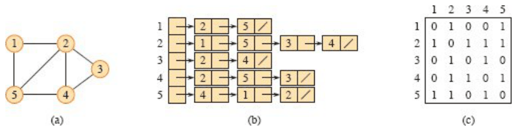

In the first figure \(\mathrm{Adj}[2]=\langle1,5,3,4\rangle\) and the lists hold \(14=2\cdot7\) entries. In the second figure the self-loop at vertex 6 is the entry \(a_{66}\), which is 1, and the lists hold \(8=\lvert E\rvert\) entries. Every algorithm in this chapter assumes adjacency lists.在第一幅图中 \(\mathrm{Adj}[2]=\langle1,5,3,4\rangle\)，链表共有 \(14=2\cdot7\) 个元素。在第二幅图中，顶点 6 上的自环对应矩阵元素 \(a_{66}\)（值为 1），链表共有 \(8=\lvert E\rvert\) 个元素。本章的每个算法都假设使用邻接表。
Practice练习
Q1. (Representation) A directed graph has \(V=\{1,2,3,4\}\) and \(E=\{(1,2),(1,3),(2,3),(3,4),(4,1)\}\). (a) Write its adjacency lists and adjacency matrix. (b) Give the out-degree and in-degree of every vertex. (c) Write the adjacency lists of the transpose \(G^{\mathsf T}\) and the time to build it for each representation.Q1.（表示）一个有向图具有 \(V=\{1,2,3,4\}\) 和 \(E=\{(1,2),(1,3),(2,3),(3,4),(4,1)\}\)。(a) 写出它的邻接链表和邻接矩阵。(b) 给出每个顶点的出度与入度。(c) 写出转置图 \(G^{\mathsf T}\) 的邻接链表，并给出两种表示下构造它的时间。
Answer
(a) \(\mathrm{Adj}[1]=\langle2,3\rangle\), \(\mathrm{Adj}[2]=\langle3\rangle\), \(\mathrm{Adj}[3]=\langle4\rangle\), \(\mathrm{Adj}[4]=\langle1\rangle\). The matrix rows are \(0110\), \(0010\), \(0001\), \(1000\).(a) \(\mathrm{Adj}[1]=\langle2,3\rangle\)、\(\mathrm{Adj}[2]=\langle3\rangle\)、\(\mathrm{Adj}[3]=\langle4\rangle\)、\(\mathrm{Adj}[4]=\langle1\rangle\)。矩阵各行依次为 \(0110\)、\(0010\)、\(0001\)、\(1000\)。
(b) Out-degrees (row sums) \(2,1,1,1\); in-degrees (column sums) \(1,1,2,1\). Both sums equal \(\lvert E\rvert=5\).(b) 出度（行和）为 \(2,1,1,1\)；入度（列和）为 \(1,1,2,1\)。两者的总和都等于 \(\lvert E\rvert=5\)。
(c) \(\mathrm{Adj}^{\mathsf T}[1]=\langle4\rangle\), \(\mathrm{Adj}^{\mathsf T}[2]=\langle1\rangle\), \(\mathrm{Adj}^{\mathsf T}[3]=\langle1,2\rangle\), \(\mathrm{Adj}^{\mathsf T}[4]=\langle3\rangle\). With lists: for every \(u\) and every \(v\in\mathrm{Adj}[u]\) append \(u\) to \(\mathrm{Adj}^{\mathsf T}[v]\), which takes \(\Theta(V+E)\). With a matrix: transpose it, \(\Theta(V^2)\).(c) \(\mathrm{Adj}^{\mathsf T}[1]=\langle4\rangle\)、\(\mathrm{Adj}^{\mathsf T}[2]=\langle1\rangle\)、\(\mathrm{Adj}^{\mathsf T}[3]=\langle1,2\rangle\)、\(\mathrm{Adj}^{\mathsf T}[4]=\langle3\rangle\)。用邻接链表时：对每个 \(u\) 和每个 \(v\in\mathrm{Adj}[u]\)，将 \(u\) 附加到 \(\mathrm{Adj}^{\mathsf T}[v]\) 上，耗时 \(\Theta(V+E)\)。用矩阵时：对其转置，耗时 \(\Theta(V^2)\)。
Q2. (Calculation) An undirected graph has \(V=100{,}000\) vertices and \(E=500{,}000\) edges. Compare the number of entries stored by adjacency lists and by an adjacency matrix, and the running time of BFS with each. Which representation should be used?Q2.（计算）一个无向图有 \(V=100{,}000\) 个顶点和 \(E=500{,}000\) 条边。比较邻接链表与邻接矩阵各自存储的条目数，以及两种表示下 BFS 的运行时间。应当使用哪种表示？
Answer
Lists: every edge appears in two lists, so \(2E=10^6\) list entries plus \(V=10^5\) list heads, \(1.1\times10^6\) in total. Matrix: \(V^2=10^{10}\) entries, which is \(1.25\) GB even at one bit per entry and about \(9{,}000\) times more than the lists. BFS takes \(O(V+E)=6\times10^5\) steps with lists and \(O(V^2)=10^{10}\) steps with the matrix. The graph is sparse (\(E/V^2=5\times10^{-5}\)), so use adjacency lists.邻接链表：每条边出现在两个链表中，因此共有 \(2E=10^6\) 个链表条目加上 \(V=10^5\) 个链表表头，合计 \(1.1\times10^6\)。邻接矩阵：\(V^2=10^{10}\) 个元素，即使每个元素只占一位，也需要 \(1.25\) GB，约为邻接链表的 \(9{,}000\) 倍。使用邻接链表时 BFS 需要 \(O(V+E)=6\times10^5\) 步，使用邻接矩阵时需要 \(O(V^2)=10^{10}\) 步。该图是稀疏图（\(E/V^2=5\times10^{-5}\)），因此应使用邻接链表。
Breadth-first search ★★★广度优先搜索
Goal. Trace BFS by hand with its queue, give \(d\) and \(\pi\) of every vertex, state the running time, and explain why the distances are shortest.目标。 手工演算 BFS 及其队列，给出每个顶点的 \(d\) 和 \(\pi\)，说明运行时间，并解释为什么这些距离是最短的。
Step 1: the idea and the algorithm第 1 步：思路和算法
In words: BFS = explore in waves: all vertices one edge from the source \(s\), then all vertices two edges away, and so on.用文字表述：BFS = 一层一层地探索：先访问与源点 \(s\) 相距一条边的所有顶点，再访问相距两条边的所有顶点，依此类推。
The shortest-path distance（最短路径距离）\(\delta(s,v)\) is the smallest number of edges on any path from \(s\) to \(v\), or \(\infty\) if there is no path. BFS works on directed and undirected graphs. Every vertex has a colour: white = not yet discovered, gray = discovered and waiting in the queue \(Q\), black = fully examined. It also has \(v.d\), the distance that the search found, and \(v.\pi\), its parent in the tree.最短路径距离 \(\delta(s,v)\) 是从 \(s\) 到 \(v\) 的任意路径上边数的最小值；若不存在路径，则为 \(\infty\)。BFS 既适用于有向图，也适用于无向图。每个顶点都有一种颜色：白色表示尚未发现，灰色表示已发现且在队列 \(Q\) 中等待，黑色表示已经完全检查。每个顶点还有 \(v.d\)（搜索得到的距离）和 \(v.\pi\)（它在树中的父结点）。
BFS(G, s)
1 for each vertex u ∈ G.V − {s}
2 u.color = WHITE
3 u.d = ∞
4 u.π = NIL
5 s.color = GRAY
6 s.d = 0
7 s.π = NIL
8 Q = ∅
9 ENQUEUE(Q, s)
10 while Q ≠ ∅
11 u = DEQUEUE(Q)
12 for each vertex v in G.Adj[u] // search the neighbors of u
13 if v.color == WHITE // is v being discovered now?
14 v.color = GRAY
15 v.d = u.d + 1
16 v.π = u
17 ENQUEUE(Q, v) // v is now on the frontier
18 u.color = BLACK // u is now behind the frontier
- Lines 1–9 give every vertex except \(s\) the colour white, \(d=\infty\) and parent NIL (no parent). They make \(s\) gray with \(d=0\) and put it in the queue.第 1–9 行把除 \(s\) 外的每个顶点都设为白色，\(d=\infty\)，父结点为 NIL（表示无父结点）。它们再把 \(s\) 设为灰色，令 \(d=0\)，并放入队列。
- Line 11 takes the head \(u\) of the queue.第 11 行取出队头 \(u\)。
- Lines 12–17 look at each neighbour \(v\) of \(u\). If \(v\) is white, it is discovered now: it gets \(d=u.d+1\) and parent \(u\), and it joins the queue.第 12–17 行检查 \(u\) 的每个邻居 \(v\)。若 \(v\) 为白色，则现在将它发现：它获得 \(d=u.d+1\) 和父结点 \(u\)，并加入队列。
- Line 18 blackens \(u\), because all its neighbours have been looked at.第 18 行把 \(u\) 设为黑色，因为它的所有邻居都已检查过。
The gray vertices are exactly the vertices in \(Q\). The result is a breadth-first tree（广度优先树）that holds the edges \((v.\pi,v)\). PRINT-PATH follows \(\pi\) backwards from \(v\) to \(s\) and so prints a shortest path.灰色顶点恰好是 \(Q\) 中的那些顶点。结果是一棵 广度优先树，其中包含边 \((v.\pi,v)\)。PRINT-PATH 沿 \(\pi\) 从 \(v\) 反向追溯到 \(s\)，从而打印出一条最短路径。
Step 2: running time第 2 步：运行时间
In words: every vertex enters the queue once and every adjacency list is read once.用文字表述：每个顶点只入一次队列，每个邻接表只读一次。
A vertex is enqueued only when it is white, and it turns gray at once. So each vertex is enqueued and dequeued at most once. The list of \(u\) is read only when \(u\) is dequeued, so each list is read at most once.只有白色顶点才会入队，并且它会立即变为灰色。因此每个顶点至多入队和出队一次。\(u\) 的链表只有在 \(u\) 出队时才会被读取，因此每个链表至多读取一次。
Step 3: why the distances are right第 3 步：为什么距离是正确的
In words: the queue always holds vertices with \(d\) equal to \(k\) followed by vertices with \(d\) equal to \(k+1\), so vertices leave in order of distance.用文字表述：队列中始终是若干个 \(d\) 等于 \(k\) 的顶点，后面跟着若干个 \(d\) 等于 \(k+1\) 的顶点，因此顶点按距离的顺序出队。
The claim is \(v.d=\delta(s,v)\) for every vertex. Three facts give it.要证的结论是：对每个顶点都有 \(v.d=\delta(s,v)\)。下面三个事实可以得出它。
- For every edge \((u,v)\) we have \(\delta(s,v)\le\delta(s,u)+1\), because a shortest path to \(u\) followed by \((u,v)\) is a path to \(v\).对每条边 \((u,v)\) 都有 \(\delta(s,v)\le\delta(s,u)+1\)，因为到 \(u\) 的最短路径后接 \((u,v)\)，就是一条到 \(v\) 的路径。
- Always \(v.d\ge\delta(s,v)\). Proof by induction over the enqueues: when \(v\) is discovered from \(u\), then \(v.d=u.d+1\ge\delta(s,u)+1\ge\delta(s,v)\). After that \(v.d\) never changes.始终有 \(v.d\ge\delta(s,v)\)。用对入队操作的归纳法证明：当 \(v\) 从 \(u\) 被发现时，有 \(v.d=u.d+1\ge\delta(s,u)+1\ge\delta(s,v)\)。此后 \(v.d\) 不再改变。
- The \(d\) values in \(Q\), from head to tail, read \(k,\dots,k,k+1,\dots,k+1\) for some \(k\).\(Q\) 中从队头到队尾的 \(d\) 值，对于某个 \(k\) 形如 \(k,\dots,k,k+1,\dots,k+1\)。
Suppose some \(v\) had \(v.d>\delta(s,v)\). Take such a \(v\) with the smallest \(\delta(s,v)\) and let \(u\) be the vertex before \(v\) on a shortest path. When \(u\) is dequeued, \(v\) is white, gray or black. In each case fact 3 or line 15 gives \(v.d\le u.d+1=\delta(s,v)\). That contradicts the choice of \(v\).假设某个 \(v\) 满足 \(v.d>\delta(s,v)\)。取这样一个 \(v\)，使 \(\delta(s,v)\) 最小，并设 \(u\) 是最短路径上 \(v\) 的前一个顶点。当 \(u\) 出队时，\(v\) 可能是白色、灰色或黑色。在每种情况下，事实 3 或第 15 行都给出 \(v.d\le u.d+1=\delta(s,v)\)。这与 \(v\) 的选取相矛盾。
Step 4: one complete trace第 4 步：一次完整的手工演算
How to do it by hand: 1. Write the adjacency lists in the order the question gives. 2. Put \(s\) in the queue with \(d=0\). 3. Dequeue the head, and look at its neighbours in list order. 4. Every white neighbour gets \(d=u.d+1\), parent \(u\), and joins the tail. 5. Write the queue after each dequeue.手工做法：1. 按题目给出的顺序写出邻接表。2. 把 \(s\) 放入队列，并令 \(d=0\)。3. 取出队头，按链表顺序检查它的邻居。4. 每个白色邻居都获得 \(d=u.d+1\) 和父结点 \(u\)，并加入队尾。5. 每次出队后写出队列。
The graph is undirected with the edges \(s\)–\(a\), \(s\)–\(b\), \(a\)–\(c\), \(b\)–\(c\), \(b\)–\(d\), \(c\)–\(e\), \(d\)–\(e\), \(f\)–\(g\). The lists are alphabetical, with \(s\) first.该图是无向图，边为 \(s\)–\(a\)、\(s\)–\(b\)、\(a\)–\(c\)、\(b\)–\(c\)、\(b\)–\(d\)、\(c\)–\(e\)、\(d\)–\(e\)、\(f\)–\(g\)。各链表按字母顺序排列，其中 \(s\) 排在最前。
| Step步骤 | Dequeue出队 | Newly discovered (\(d\)) | Queue afterwards之后的队列 |
|---|---|---|---|
| start开始 | – | \(s\) (0) | \(s\) |
| 1 | \(s\) | \(a,b\) (1) | \(a,b\) |
| 2 | \(a\) | \(c\) (2) | \(b,c\) |
| 3 | \(b\) | \(d\) (2) | \(c,d\) |
| 4 | \(c\) | \(e\) (3) | \(d,e\) |
| 5 | \(d\) | – | \(e\) |
| 6 | \(e\) | – | empty空 |
Distances: \(s=0\); \(a,b=1\); \(c,d=2\); \(e=3\). Parents: \(a,b\to s\); \(c\to a\); \(d\to b\); \(e\to c\). The vertices \(f\) and \(g\) are not reachable from \(s\): they stay white with \(d=\infty\). The tree has 5 edges. The path to \(e\) is \(s,a,c,e\): three edges, equal to \(e.d=3\). Vertex \(c\) has two neighbours at distance 1, \(a\) and \(b\). It gets \(a\) as parent because \(a\) is dequeued first.距离：\(s=0\)；\(a,b=1\)；\(c,d=2\)；\(e=3\)。父结点：\(a,b\to s\)；\(c\to a\)；\(d\to b\)；\(e\to c\)。顶点 \(f\) 和 \(g\) 从 \(s\) 不可达：它们保持白色，距离为 \(d=\infty\)。树中有 5 条边。到达 \(e\) 的路径是 \(s,a,c,e\)：共三条边，与距离 \(e.d=3\) 相等。顶点 \(c\) 有两个距离为 1 的邻居 \(a\) 和 \(b\)。它的父结点是 \(a\)，因为 \(a\) 先出队。
The distances do not depend on the list order, but the tree can. In an undirected graph every non-tree edge joins two vertices whose \(d\) values differ by at most 1. In a directed graph every edge \((u,v)\) has \(v.d\le u.d+1\), and BFS has no forward edges.距离与链表顺序无关，但树可能与之有关。在无向图中，每条非树边连接的两个顶点，其 \(d\) 值之差至多为 1。在有向图中，每条边 \((u,v)\) 都满足 \(v.d\le u.d+1\)，并且 BFS 没有前向边。
Practice练习
Q1. (Trace) An undirected graph has the edges A–B, A–C, B–D, B–E, C–E, C–F, D–G, E–G, F–H, G–H. Run BFS from A, scanning each adjacency list in alphabetical order. Give the dequeue order, \(d\) and \(\pi\) of every vertex, and decide whether the graph is bipartite.Q1.（手工演算）一个无向图的边为 A–B、A–C、B–D、B–E、C–E、C–F、D–G、E–G、F–H、G–H。从 A 出发运行 BFS，并按字母顺序扫描每个邻接链表。给出出队顺序，以及每个顶点的 \(d\) 和 \(\pi\)，并判断该图是否为二分图。
Answer
Dequeue order: A, B, C, D, E, F, G, H. Queue after each dequeue: A: (B,C); B: (C,D,E); C: (D,E,F); D: (E,F,G); E: (F,G); F: (G,H); G: (H); H: empty.出队顺序为 A、B、C、D、E、F、G、H。每次出队后的队列：A：(B,C)；B：(C,D,E)；C：(D,E,F)；D：(E,F,G)；E：(F,G)；F：(G,H)；G：(H)；H：空。
\(d\): A 0; B, C 1; D, E, F 2; G, H 3. \(\pi\): B, C → A; D, E → B; F → C; G → D; H → F. The non-tree edges C–E and E–G join adjacent levels, but G–H joins two vertices of level 3. With the tree paths G–D–B–A and H–F–C–A it closes the cycle G, H, F, C, A, B, D, G of 7 edges, which is odd, so the graph is not bipartite.\(d\)：A 为 0；B、C 为 1；D、E、F 为 2；G、H 为 3。\(\pi\)：B、C → A；D、E → B；F → C；G → D；H → F。非树边 C–E 与 E–G 连接相邻层，但 G–H 连接的是第 3 层中的两个顶点。结合树上的路径 G–D–B–A 与 H–F–C–A，它与边 G–H 一起构成环 G, H, F, C, A, B, D, G，共 7 条边，为奇数，因此该图不是二分图。
Q2. (True/false) (a) "For a fixed graph and source, BFS always produces the same breadth-first tree." (b) "After BFS on an undirected graph, adjacent vertices \(u,v\) in the component of \(s\) satisfy \(\lvert u.d-v.d\rvert\le1\)." Justify each.Q2.（判断）(a)“对于给定的图和源点，BFS 总是产生相同的广度优先树。”(b)“对无向图执行 BFS 之后，\(s\) 所在连通分量中的相邻顶点 \(u,v\) 满足 \(\lvert u.d-v.d\rvert\le1\)。”对每一项说明理由。
Answer
(a) False. For the edges \(s\)–\(a\), \(s\)–\(b\), \(a\)–\(c\), \(b\)–\(c\), the vertex \(c\) gets parent \(a\) if \(\mathrm{Adj}[s]=\langle a,b\rangle\) and parent \(b\) if \(\mathrm{Adj}[s]=\langle b,a\rangle\). The \(d\) values are \(0,1,1,2\) in both cases.(a) 假。对于边 \(s\)–\(a\)、\(s\)–\(b\)、\(a\)–\(c\)、\(b\)–\(c\)，顶点 \(c\) 在 \(\mathrm{Adj}[s]=\langle a,b\rangle\) 时以 \(a\) 为父顶点，在 \(\mathrm{Adj}[s]=\langle b,a\rangle\) 时以 \(b\) 为父顶点。两种情况下 \(d\) 值均为 \(0,1,1,2\)。
(b) True. \(v.d=\delta(s,v)\le\delta(s,u)+1=u.d+1\), because a shortest path to \(u\) followed by the edge is a path to \(v\); by symmetry \(u.d\le v.d+1\).(b) 真。\(v.d=\delta(s,v)\le\delta(s,u)+1=u.d+1\)，因为到达 \(u\) 的最短路径再加上该边，就是到达 \(v\) 的一条路径；由对称性得 \(u.d\le v.d+1\)。
Depth-first search ★★★深度优先搜索
Goal. Run DFS by hand and give the discovery and finish time of every vertex, classify every edge, and use the parenthesis and white-path theorems.目标。 手工运行 DFS，给出每个顶点的发现时间和完成时间，对每条边分类，并运用括号定理和白色路径定理。
Step 1: the algorithm and its timestamps第 1 步：算法及其时间戳
In words: DFS = walk along unexplored edges as deep as possible, and step back only when the current vertex has no unexplored edge left.用文字表述：DFS = 沿着未探索的边尽可能深地走下去，只有当当前顶点没有未探索的边时才回退。
DFS works on directed and undirected graphs. If vertices remain undiscovered when a search ends, DFS starts again from one of them. The result is a depth-first forest（深度优先森林）, several trees. A global counter time gives every vertex two timestamps: the discovery time \(v.d\), when \(v\) turns gray, and the finish time \(v.f\), when \(v\) turns black. White = undiscovered. Gray = discovered, not finished, so it is on the recursion stack. Black = finished.DFS 既适用于有向图，也适用于无向图。若搜索结束时仍有顶点未被发现，DFS 会从其中一个顶点重新开始。结果是一片 深度优先森林，由若干棵树组成。一个全局计数器 time 为每个顶点记录两个时间戳：发现时间 \(v.d\)（\(v\) 变为灰色的时刻），和完成时间 \(v.f\)（\(v\) 变为黑色的时刻）。白色表示未被发现，灰色表示已发现但未完成，因此它在递归栈上。黑色表示已完成。
DFS(G)
1 for each vertex u ∈ G.V
2 u.color = WHITE
3 u.π = NIL
4 time = 0
5 for each vertex u ∈ G.V
6 if u.color == WHITE
7 DFS-VISIT(G, u)
DFS-VISIT(G, u)
1 time = time + 1 // white vertex u has just been discovered
2 u.d = time
3 u.color = GRAY
4 for each vertex v in G.Adj[u] // explore each edge (u, v)
5 if v.color == WHITE
6 v.π = u
7 DFS-VISIT(G, v)
8 time = time + 1
9 u.f = time
10 u.color = BLACK // blacken u; it is finished
- DFS-VISIT lines 1–3: count a new time, store it as \(u.d\) and paint \(u\) gray.DFS-VISIT 第 1–3 行：计数出新的时间，将其存为 \(u.d\)，并把 \(u\) 涂成灰色。
- Lines 4–7: for every neighbour \(v\) of \(u\) that is white, set the parent and recurse. Recursion explores \(v\) completely before the loop goes on.第 4–7 行：对 \(u\) 的每个白色邻居 \(v\)，设定其父结点并递归。递归会先完整探索 \(v\)，循环才继续。
- Lines 8–10: count a new time, store it as \(u.f\) and paint \(u\) black.第 8–10 行：计数出新的时间，将其存为 \(u.f\)，并把 \(u\) 涂成黑色。
- Every call of DFS-VISIT from line 7 of DFS starts a new tree.DFS 第 7 行每调用一次 DFS-VISIT，就开始一棵新树。
DFS-VISIT is called exactly once per vertex, because it is called only on white vertices and paints the vertex gray first. The loop in lines 4–7 runs \(\lvert\mathrm{Adj}[v]\rvert\) times for each \(v\). So the time is \(\Theta(V)+\sum_{v}\Theta(\lvert\mathrm{Adj}[v]\rvert)=\Theta(V+E)\) with lists and \(\Theta(V^2)\) with a matrix. Here \(\lvert\mathrm{Adj}[v]\rvert\) is the length of the list of \(v\).DFS-VISIT 对每个顶点恰好调用一次，因为它只在白色顶点上被调用，并且会先把该顶点涂成灰色。对每个 \(v\)，第 4–7 行的循环运行 \(\lvert\mathrm{Adj}[v]\rvert\) 次。因此，使用邻接表时时间为 \(\Theta(V)+\sum_{v}\Theta(\lvert\mathrm{Adj}[v]\rvert)=\Theta(V+E)\)，使用邻接矩阵时为 \(\Theta(V^2)\)。这里 \(\lvert\mathrm{Adj}[v]\rvert\) 是 \(v\) 的链表长度。
Step 2: a complete trace第 2 步：完整的演算
How to do it by hand: 1. Fix the order of the main loop and of every list. 2. At each discovery add 1 to time and write it as \(d\). 3. Look at each edge of the current vertex in list order, and write its type by the colour of the head. 4. At each finish add 1 to time and write it as \(f\). 5. When the stack is empty, start the next white vertex.手工做法：1. 确定主循环和每个链表的顺序。2. 每次发现时，将 time 加 1，并把它记为 \(d\)。3. 按链表顺序检查当前顶点的每条边，并根据终点的颜色写出它的类型。4. 每次完成时，将 time 加 1，并把它记为 \(f\)。5. 当栈为空时，从下一个白色顶点重新开始。

The graph has the lists \(u:\langle v,x\rangle\), \(v:\langle y\rangle\), \(w:\langle y,z\rangle\), \(x:\langle v\rangle\), \(y:\langle x\rangle\), \(z:\langle z\rangle\). The main loop scans \(u,v,w,x,y,z\).该图的链表为 \(u:\langle v,x\rangle\)、\(v:\langle y\rangle\)、\(w:\langle y,z\rangle\)、\(x:\langle v\rangle\)、\(y:\langle x\rangle\)、\(z:\langle z\rangle\)。主循环按 \(u,v,w,x,y,z\) 的顺序扫描。
Step 3: the parenthesis and white-path theorems第 3 步：括号定理和白色路径定理
In words: the time intervals of two vertices are either nested or disjoint, and \(u\) reaches \(v\) below it exactly when a path of untouched vertices leads there.用文字表述：两个顶点的时间区间要么嵌套，要么不相交；\(u\) 位于 \(v\) 之下，恰好当存在一条由未访问顶点组成的路径通到它时。
Parenthesis theorem（括号定理）. For any two vertices \(u,v\) exactly one of three cases holds.括号定理。对于任意两个顶点 \(u,v\)，以下三种情况中恰好有一种成立。
- The intervals \([u.d,u.f]\) and \([v.d,v.f]\) are disjoint, and neither vertex is a descendant of the other.区间 \([u.d,u.f]\) 与 \([v.d,v.f]\) 不相交，且两个顶点都不是对方的后代。
- \([u.d,u.f]\) lies inside \([v.d,v.f]\), and \(u\) is a descendant of \(v\).区间 \([u.d,u.f]\) 位于 \([v.d,v.f]\) 之内，且 \(u\) 是 \(v\) 的后代。
- \([v.d,v.f]\) lies inside \([u.d,u.f]\), and \(v\) is a descendant of \(u\).区间 \([v.d,v.f]\) 位于 \([u.d,u.f]\) 之内，且 \(v\) 是 \(u\) 的后代。
Partial overlap never happens. Reason, for \(u.d<v.d\): if \(v.d<u.f\), then \(v\) is discovered while \(u\) is gray, so \(v\) is a descendant of \(u\) and finishes first. Otherwise \(u.f<v.d\) and the intervals are disjoint. So \(v\) is a proper descendant of \(u\) iff \(u.d<v.d<v.f<u.f\).不会出现部分重叠。理由如下，针对 \(u.d<v.d\)：若 \(v.d<u.f\)，则 \(v\) 是在 \(u\) 为灰色时被发现的，因此 \(v\) 是 \(u\) 的后代，并且先完成。否则 \(u.f<v.d\)，两个区间不相交。所以，\(v\) 是 \(u\) 的真后代，当且仅当 \(u.d<v.d<v.f<u.f\)。
White-path theorem（白色路径定理）. \(v\) is a descendant of \(u\) iff, at time \(u.d\), there is a path from \(u\) to \(v\) made only of white vertices. A path that is white at time \(u.d\) cannot be left behind: every vertex on it is reached before \(u\) finishes, so it ends up below \(u\).白色路径定理。\(v\) 是 \(u\) 的后代，当且仅当在时刻 \(u.d\)，存在一条从 \(u\) 到 \(v\) 且全部由白色顶点组成的路径。在时刻 \(u.d\) 为白色的路径不会被丢下：路径上的每个顶点都会在 \(u\) 完成之前被发现，因此它最终位于 \(u\) 之下。

Step 4: classifying edges第 4 步：边的分类
In words: look at the colour of the head \(v\) at the moment the edge \((u,v)\) is first explored.用文字表述：看边 \((u,v)\) 第一次被探索的那一刻，终点 \(v\) 的颜色。
| Type类型 | Definition定义 | Colour of \(v\) when \((u,v)\) is first explored\((u,v)\) 首次被探索时，\(v\) 的颜色 |
|---|---|---|
| Tree edge（树边）树边 | \(v\) was first discovered by exploring \((u,v)\)\(v\) 是通过探索 \((u,v)\) 而首次被发现的 | white白色 |
| Back edge（后向边） | \(v\) is an ancestor of \(u\); a self-loop counts\(v\) 是 \(u\) 的祖先；自环也计算在内 | gray灰色 |
| Forward edge（前向边） | non-tree edge to a proper descendant of \(u\)指向 \(u\) 的真后代的非树边 | black, with \(u.d<v.d\) |
| Cross edge（横向边） | every other edge: between two trees, or between vertices neither of which is an ancestor of the other其余所有边：连接两棵树，或连接两个互不为祖先的顶点 | black, with \(u.d>v.d\) |
At any moment the gray vertices form one chain from a root down to the current vertex. An edge into a gray vertex therefore reaches an ancestor: a back edge. A black head is finished, so it is not an ancestor. It is a descendant of \(u\) if it was discovered after \(u\) (forward) and otherwise lies in an earlier or separate branch (cross).任何时刻，灰色顶点都构成一条从根到当前顶点的链。因此，指向灰色顶点的边一定到达某个祖先：这就是后向边。黑色的终点已经完成，因此它不是祖先。若它是在 \(u\) 之后被发现的，则它是 \(u\) 的后代（前向边）；否则它位于较早的或另一条分支中（横向边）。
In an undirected graph, take an edge \(\{u,v\}\) with \(u.d<v.d\). At time \(u.d\) the vertex \(v\) is white and adjacent, so \(v\) becomes a descendant of \(u\). If the edge is explored first from \(u\), it is a tree edge. If it is explored first from \(v\), then \(u\) is gray and it is a back edge. The edge from a vertex to its parent is the tree edge, not a back edge.在无向图中，取一条边 \(\{u,v\}\)，其中 \(u.d<v.d\)。在时刻 \(u.d\)，顶点 \(v\) 为白色且与之相邻，因此 \(v\) 成为 \(u\) 的后代。若这条边首先从 \(u\) 被探索，则它是树边。若它首先从 \(v\) 被探索，则 \(u\) 为灰色，此时它是后向边。从一个顶点指向其父结点的边是树边，而不是后向边。
| BFS | DFS | |
|---|---|---|
| Data structure数据结构 | FIFO queueFIFO 队列 | recursion stack (LIFO)递归栈（LIFO） |
| Order顺序 | all vertices at distance \(k\) before \(k+1\)先访问距离 \(k\) 的所有顶点，再访问 \(k+1\) | as deep as possible, then backtrack尽可能深入，然后回溯 |
| Result结果 | one tree from \(s\) with \(d=\delta\) and \(\pi\)一棵从 \(s\) 出发的树，带有 \(d=\delta\) 与 \(\pi\) | forest with \(d\), \(f\) and \(\pi\) |
| Edge types, undirected边的类型（无向） | tree, cross树边、横向边 | tree, back树边、后向边 |
| Edge types, directed边的类型（有向） | tree, back, cross (no forward)树边、后向边、横向边（无前向边） | tree, back, forward, cross树边、后向边、前向边、横向边 |
| Time (lists)时间（邻接链表） | \(O(V+E)\) | \(\Theta(V+E)\) |
| Typical use典型用途 | fewest-edge paths, bipartite test最少边数路径、二分图判定 | cycles, topological sort, SCC, articulation points环路、拓扑排序、SCC、割点 |
Practice练习
Q1. (Trace) Run DFS on the directed graph with adjacency lists \(A:\langle B,C,D\rangle\), \(B:\langle D\rangle\), \(C:\langle D\rangle\), \(D:\langle B\rangle\), \(E:\langle C,F\rangle\), \(F:\langle G\rangle\), \(G:\langle E\rangle\). The main loop scans alphabetically. Give \(d/f\) for every vertex, classify every edge, write the parenthesization, and say whether the graph is acyclic.Q1.（手工演算）对有向图运行 DFS，其邻接链表为 \(A:\langle B,C,D\rangle\)、\(B:\langle D\rangle\)、\(C:\langle D\rangle\)、\(D:\langle B\rangle\)、\(E:\langle C,F\rangle\)、\(F:\langle G\rangle\)、\(G:\langle E\rangle\)。主循环按字母顺序扫描。给出每个顶点的 \(d/f\)，对每条边分类，写出括号化结果，并说明该图是否无环。
Answer
\(d/f\): A 1/8, B 2/5, D 3/4, C 6/7, then E 9/14, F 10/13, G 11/12. Two trees, rooted at A and E.\(d/f\)：A 为 1/8，B 为 2/5，D 为 3/4，C 为 6/7，然后 E 为 9/14，F 为 10/13，G 为 11/12。共两棵树，根分别为 A 和 E。
Tree edges: \((A,B)\), \((B,D)\), \((A,C)\), \((E,F)\), \((F,G)\). Back edges: \((D,B)\) (\(B\) gray) and \((G,E)\) (\(E\) gray). Forward edge: \((A,D)\) (\(D\) black, \(A.d<D.d\)). Cross edges: \((C,D)\) (\(D\) black, \(C.d>D.d\)) and \((E,C)\) (\(C\) is in an earlier tree).树边：\((A,B)\)、\((B,D)\)、\((A,C)\)、\((E,F)\)、\((F,G)\)。后向边：\((D,B)\)（\(B\) 为灰色）和 \((G,E)\)（\(E\) 为灰色）。前向边：\((A,D)\)（\(D\) 为黑色，\(A.d<D.d\)）。横向边：\((C,D)\)（\(D\) 为黑色，\(C.d>D.d\)）和 \((E,C)\)（\(C\) 位于较早的树中）。
Parenthesization: (A (B (D D) B) (C C) A) (E (F (G G) F) E).括号化：(A (B (D D) B) (C C) A) (E (F (G G) F) E)。
The graph is not acyclic: the back edges \((D,B)\) and \((G,E)\) close the cycles \(B\to D\to B\) and \(E\to F\to G\to E\).该图有环：后向边 \((D,B)\) 与 \((G,E)\) 分别封闭了环路 \(B\to D\to B\) 与 \(E\to F\to G\to E\)。
Q2. (True/false) "If a directed graph has a path from \(u\) to \(v\) and \(u.d<v.d\) in some DFS, then \(v\) is a descendant of \(u\)." Decide and justify.Q2.（判断）“若有向图中存在从 \(u\) 到 \(v\) 的路径，且在某次 DFS 中 \(u.d<v.d\)，则 \(v\) 是 \(u\) 的后代。”判断其真假，并给出理由。
Answer
False. Take the edges \((w,u)\), \((u,w)\), \((w,v)\) and start DFS at \(w\), scanning \(u\) before \(v\). Then \(w\) is 1/6, \(u\) is 2/3, \(v\) is 4/5. The path \(u\to w\to v\) exists and \(u.d=2<v.d=4\), but \(v\) is a child of \(w\), not a descendant of \(u\). By the white-path theorem the descendants of \(u\) are only the vertices reachable by a path that is white at time \(u.d\); here \(w\) is already gray.假。取边 \((w,u)\)、\((u,w)\)、\((w,v)\)，并从 \(w\) 开始 DFS，先扫描 \(u\) 再扫描 \(v\)。则 \(w\) 为 1/6，\(u\) 为 2/3，\(v\) 为 4/5。路径 \(u\to w\to v\) 存在，且 \(u.d=2<v.d=4\)，但 \(v\) 是 \(w\) 的子顶点，而不是 \(u\) 的后代。由白色路径定理，\(u\) 的后代仅限于在时刻 \(u.d\) 可通过全白路径到达的顶点；此处 \(w\) 已经为灰色。
The statement is true when the single edge \((u,v)\) exists: then \(v\) is a tree or forward descendant of \(u\).当只存在单条边 \((u,v)\) 时，该说法为真：此时 \(v\) 是 \(u\) 通过树边或前向边得到的后代。
Q3. (Classification) A DFS gives the intervals \([d,f]\): \(u\) \([1,10]\), \(v\) \([2,5]\), \(w\) \([3,4]\), \(x\) \([6,9]\), \(y\) \([7,8]\), \(z\) \([11,12]\). Classify the edges \((u,v)\), \((w,u)\), \((x,w)\), \((y,x)\), \((u,y)\), \((z,u)\), \((z,z)\).Q3.（分类）一次 DFS 给出的区间为 \([d,f]\)：\(u\) \([1,10]\)、\(v\) \([2,5]\)、\(w\) \([3,4]\)、\(x\) \([6,9]\)、\(y\) \([7,8]\)、\(z\) \([11,12]\)。对边 \((u,v)\)、\((w,u)\)、\((x,w)\)、\((y,x)\)、\((u,y)\)、\((z,u)\)、\((z,z)\) 进行分类。
Answer
The nesting gives the forest: \(v\) and \(x\) are children of \(u\), \(w\) is a child of \(v\), \(y\) is a child of \(x\), and \(z\) is a separate root.由嵌套关系得到森林：\(v\) 与 \(x\) 是 \(u\) 的子顶点，\(w\) 是 \(v\) 的子顶点，\(y\) 是 \(x\) 的子顶点，而 \(z\) 是一个单独的根。
- \((u,v)\): \(v\) is a child of \(u\), a tree edge.\((u,v)\)：\(v\) 是 \(u\) 的子顶点，为树边。
- \((w,u)\): \([w]\subset[u]\), so \(u\) is an ancestor of \(w\): back edge.\((w,u)\)：\([w]\subset[u]\)，因此 \(u\) 是 \(w\) 的祖先：后向边。
- \((x,w)\): \(w.f=4<x.d=6\): cross edge.\((x,w)\)：\(w.f=4<x.d=6\)：横向边。
- \((y,x)\): \(x\) is the parent of \(y\) with \(x.d\le y.d<y.f\le x.f\): back edge.\((y,x)\)：\(x\) 是 \(y\) 的父顶点，且 \(x.d\le y.d<y.f\le x.f\)：后向边。
- \((u,y)\): \(y\) is a descendant of \(u\) but a grandchild, not a child: forward edge.\((u,y)\)：\(y\) 是 \(u\) 的后代，但是孙顶点而非子顶点：前向边。
- \((z,u)\): \(u.f=10<z.d=11\): cross edge.\((z,u)\)：\(u.f=10<z.d=11\)：横向边。
- \((z,z)\): a self-loop: back edge.\((z,z)\)：自环：后向边。
Topological sort ★★★拓扑排序
Goal. Produce a topological order with DFS and with in-degrees, decide whether one exists, and prove that the DFS method is correct.目标。 用 DFS 和入度分别求出拓扑序，判断拓扑序是否存在，并证明 DFS 方法是正确的。
Step 1: the DFS method第 1 步：DFS 方法
In words: topological sort = run DFS and list the vertices in the reverse of the order in which they finish.用文字表述：拓扑排序 = 运行 DFS，并把顶点按完成顺序的逆序列出。
A topological sort（拓扑排序）of a dag is a linear ordering of its vertices such that every edge \((u,v)\) has \(u\) before \(v\). A dag usually has many topological orders. Typical uses are task scheduling, course prerequisites and build order.DAG 的 拓扑排序 是其顶点的一个线性排列，使每条边 \((u,v)\) 都使 \(u\) 排在 \(v\) 之前。一个 DAG 通常有许多拓扑序。典型应用包括任务调度、课程先修关系和构建顺序。
TOPOLOGICAL-SORT(G)
1 call DFS(G) to compute finish times v.f for each vertex v
2 as each vertex is finished, insert it onto the front of a linked list
3 return the linked list of vertices
Line 2 puts each vertex at the front of the list when it finishes. So the list ends up in decreasing order of finish time. The time is \(\Theta(V+E)\): one DFS plus \(O(1)\) per insertion.第 2 行在每个顶点完成时把它放到链表的最前面。因此，链表最终按完成时间递减排列。时间为 \(\Theta(V+E)\)：一次 DFS 加上每次插入的 \(O(1)\)。
Step 2: why it is correct第 2 步：为什么它是正确的
In words: a vertex finishes only after everything it points to has finished, so later finish means earlier in the order.用文字表述：一个顶点只有在它所指向的所有顶点都完成之后才会完成，因此完成得越晚，在顺序中越靠前。
Lemma. A directed graph is acyclic iff DFS yields no back edge.引理。 有向图无环，当且仅当 DFS 不产生后向边。
- If there is a back edge \((u,v)\), then \(v\) is an ancestor of \(u\), so the tree path from \(v\) to \(u\) plus \((u,v)\) is a cycle.若存在后向边 \((u,v)\)，则 \(v\) 是 \(u\) 的祖先，因此从 \(v\) 到 \(u\) 的树路径再加上 \((u,v)\) 就构成一个环。
- If there is a cycle \(c\), let \(v\) be its first discovered vertex and \((u,v)\) the edge of \(c\) into \(v\). At time \(v.d\) the rest of \(c\) is a white path from \(v\) to \(u\). By the white-path theorem \(u\) is a descendant of \(v\), so \((u,v)\) is a back edge.若存在环 \(c\)，设 \(v\) 是它中第一个被发现的顶点，\((u,v)\) 是 \(c\) 指向 \(v\) 的边。在时刻 \(v.d\)，\(c\) 的其余部分是一条从 \(v\) 到 \(u\) 的白色路径。由白色路径定理，\(u\) 是 \(v\) 的后代，因此 \((u,v)\) 是后向边。
Theorem. Take any edge \((u,v)\) explored by DFS in a dag. The vertex \(v\) is not gray, since that would be a back edge. If \(v\) is white, it becomes a descendant of \(u\), so \(v.f<u.f\). If \(v\) is black, then \(v.f\) is already set while \(u\) is unfinished, so again \(v.f<u.f\).定理。 取 DFS 在 DAG 中探索的任意一条边 \((u,v)\)。顶点 \(v\) 不是灰色的，否则它就是后向边。若 \(v\) 为白色，它会成为 \(u\) 的后代，因此 \(v.f<u.f\)。若 \(v\) 为黑色，则 \(v.f\) 已经设定，而 \(u\) 尚未完成，因此仍然有 \(v.f<u.f\)。

To test whether a graph is a dag, run DFS and look for a gray head. One back edge proves a cycle, and no topological order exists.要判断一个图是否为 DAG，就运行 DFS 并查看是否有灰色的终点。只要有一条后向边，就证明存在环，因而不存在拓扑序。
Step 3: Kahn's algorithm第 3 步：Kahn 算法
In words: Kahn's algorithm = repeatedly output a vertex that has no unfinished predecessor.用文字表述：Kahn 算法 = 反复输出一个没有尚未输出的前驱的顶点。
The in-degree of a vertex is the number of edges entering it. How to do it by hand:顶点的入度是指进入该顶点的边的条数。手工做法：
- Compute the in-degree of every vertex. Put all vertices of in-degree 0 into a queue.计算每个顶点的入度。把所有入度为 0 的顶点放入队列。
- Remove a vertex \(u\) from the queue and output it.从队列中取出顶点 \(u\)，并输出它。
- Decrease by 1 the in-degree of every successor of \(u\). A successor whose in-degree reaches 0 joins the queue.将 \(u\) 的每个后继的入度减 1。入度减到 0 的后继加入队列。
- Repeat until the queue is empty.重复此过程，直到队列为空。
The time is \(O(V+E)\). If fewer than \(\lvert V\rvert\) vertices are output, the rest lie on or behind a cycle, so the graph is not a dag. The order can differ from the DFS order and is equally valid.时间为 \(O(V+E)\)。若输出的顶点少于 \(\lvert V\rvert\) 个，则其余顶点位于环上或位于环的后面，因此该图不是 DAG。这个顺序可能与 DFS 的顺序不同，但同样有效。
Practice练习
Q1. (Trace) A dag has the edges \(a\to b\), \(a\to c\), \(b\to d\), \(c\to d\), \(c\to e\), \(d\to f\), \(e\to f\), \(g\to e\) and an isolated vertex \(h\). Run DFS (alphabetical order) and give \(d/f\) and the topological order. What happens if the edge \(f\to a\) is added?Q1.（手工演算）一个 DAG 具有边 \(a\to b\)、\(a\to c\)、\(b\to d\)、\(c\to d\)、\(c\to e\)、\(d\to f\)、\(e\to f\)、\(g\to e\)，以及一个孤立顶点 \(h\)。按字母顺序运行 DFS，并给出 \(d/f\) 以及拓扑序。若加入边 \(f\to a\)，会发生什么？
Answer
\(d/f\): \(a\) 1/12, \(b\) 2/7, \(d\) 3/6, \(f\) 4/5, \(c\) 8/11, \(e\) 9/10, \(g\) 13/14, \(h\) 15/16. Decreasing \(f\): \(h,g,a,c,e,b,d,f\). All eight edges point right.\(d/f\)：\(a\) 为 1/12，\(b\) 为 2/7，\(d\) 为 3/6，\(f\) 为 4/5，\(c\) 为 8/11，\(e\) 为 9/10，\(g\) 为 13/14，\(h\) 为 15/16。按 \(f\) 递减：\(h,g,a,c,e,b,d,f\)。八条边都指向右侧。
With the edge \(f\to a\), DFS explores it from \(f\) while \(a\) is still gray (the search is below \(a\) in the recursion), so \((f,a)\) is a back edge. The graph has the cycle \(a\to b\to d\to f\to a\) and no topological order exists.加入边 \(f\to a\) 后，DFS 从 \(f\) 探索该边时 \(a\) 仍为灰色（此时搜索位于递归中 \(a\) 之下），因此 \((f,a)\) 是后向边。该图有环路 \(a\to b\to d\to f\to a\)，不存在拓扑序。
Q2. (Trace) Apply Kahn's algorithm to the dag of Q1 (without \(f\to a\)), putting the in-degree-0 vertices into the initial queue in alphabetical order. Give the output and say what happens when \(f\to a\) is added.Q2.（手工演算）对 Q1 中的 DAG（不含 \(f\to a\)）应用 Kahn 算法，并按字母顺序将入度为 0 的顶点放入初始队列。给出输出，并说明加入 \(f\to a\) 时会发生什么。
Answer
In-degrees: \(a\,0\), \(b\,1\), \(c\,1\), \(d\,2\), \(e\,2\), \(f\,2\), \(g\,0\), \(h\,0\). Initial queue \(a,g,h\). Output \(a\) (\(b\) and \(c\) reach 0 and join), \(g\) (\(e\) drops to 1), \(h\), \(b\) (\(d\) drops to 1), \(c\) (\(d\) and \(e\) reach 0), \(d\) (\(f\) drops to 1), \(e\) (\(f\) reaches 0), \(f\). Order: \(a,g,h,b,c,d,e,f\), a valid order different from the DFS one.入度：\(a\,0\)、\(b\,1\)、\(c\,1\)、\(d\,2\)、\(e\,2\)、\(f\,2\)、\(g\,0\)、\(h\,0\)。初始队列：\(a,g,h\)。输出 \(a\)（\(b\) 与 \(c\) 降为 0 并入队），\(g\)（\(e\) 降为 1），\(h\)，\(b\)（\(d\) 降为 1），\(c\)（\(d\) 与 \(e\) 降为 0），\(d\)（\(f\) 降为 1），\(e\)（\(f\) 降为 0），\(f\)。顺序为 \(a,g,h,b,c,d,e,f\)，这是一个有效的顺序，且与 DFS 所得的顺序不同。
With \(f\to a\), vertex \(a\) has in-degree 1, so only \(g\) and \(h\) start. After they are output the queue is empty with six vertices unprinted: a cycle exists.加入 \(f\to a\) 后，顶点 \(a\) 的入度为 1，因此只有 \(g\) 与 \(h\) 可以开始。它们输出之后，队列为空，仍有六个顶点未被输出：说明存在环路。
Strongly connected components ★★★强连通分量
Goal. Run the two-pass SCC algorithm by hand, list the components, draw the component graph, and explain why the second search stays inside one component.目标。 手工运行两遍式的 SCC 算法，列出各个分量，画出分量图，并解释为什么第二次搜索只会停留在一个分量之内。
Step 1: components and the component graph第 1 步：分量和分量图
In words: a strongly connected component = a largest group of vertices that can all reach each other.用文字表述：强连通分量 = 彼此都能互相到达的最大顶点组。
A strongly connected component（强连通分量, SCC）of a directed graph \(G=(V,E)\) is a maximal set \(C\subseteq V\) such that \(u\leadsto v\) and \(v\leadsto u\) for all \(u,v\in C\). The SCCs partition \(V\). A vertex on no cycle is a component by itself. Example: in a road network with one-way streets, an SCC is a district in which you can drive from any place to any other place.有向图 \(G=(V,E)\) 的 强连通分量（SCC）是一个极大集合 \(C\subseteq V\)，使得对所有 \(u,v\in C\) 都有 \(u\leadsto v\) 且 \(v\leadsto u\)。各个 SCC 共同划分了 \(V\) 的顶点。不在任何环上的顶点单独构成一个分量。例如：在一个带单行道的路网中，一个 SCC 就是一个区域，在其中你可以从任何地方开车到任何其他地方。
\(G\) and \(G^{\mathsf T}\) have the same SCCs, because \(u\) and \(v\) reach each other in \(G\) iff they do in \(G^{\mathsf T}\).\(G\) 与 \(G^{\mathsf T}\) 的 SCC 相同，因为 \(u\) 与 \(v\) 在 \(G\) 中互相可达，当且仅当它们在 \(G^{\mathsf T}\) 中互相可达。
If every SCC is contracted to one vertex, the result is the component graph（分量图）\(G^{\text{SCC}}\). It has one vertex per component and an edge \((C_i,C_j)\) if \(G\) has an edge from a vertex of \(C_i\) to a vertex of \(C_j\). \(G^{\text{SCC}}\) is always a dag. Otherwise two components on a cycle would reach each other and be one component.若把每个 SCC 收缩成一个顶点，所得结果就是 分量图 \(G^{\text{SCC}}\)。它每个分量对应一个顶点；若 \(G\) 中有一条边从 \(C_i\) 的某个顶点指向 \(C_j\) 的某个顶点，则有边 \((C_i,C_j)\)。\(G^{\text{SCC}}\) 总是一个 DAG。否则，环上的两个分量会互相可达，从而成为同一个分量。
Step 2: the algorithm第 2 步：算法
STRONGLY-CONNECTED-COMPONENTS(G)
1 call DFS(G) to compute finish times u.f for each vertex u
2 create G^T
3 call DFS(G^T), but in the main loop of DFS, consider the vertices
in order of decreasing u.f (as computed in line 1)
4 output the vertices of each tree in the depth-first forest formed in
line 3 as a separate strongly connected component
The time is \(\Theta(V+E)\): two DFS and the transpose. The order of decreasing \(f\) comes for free. Push each vertex onto a list when it finishes in the first DFS.时间为 \(\Theta(V+E)\)：两次 DFS 加上转置。按 \(f\) 递减的顺序无需额外代价即可得到：在第一次 DFS 中，每个顶点完成时就把它压入一个链表。
Step 3: why it works第 3 步：为什么它有效
In words: an edge between two components always goes from a larger finish time to a smaller one, so in the transpose the search cannot escape from the component with the largest finish time.用文字表述：两个分量之间的边总是从较大的完成时间指向较小的完成时间，因此在转置图中，搜索无法逃离具有最大完成时间的那个分量。
For a vertex set \(U\) let \(f(U)=\max_{u\in U}u.f\) be the latest finish time in \(U\). All times come from the first DFS.对顶点集合 \(U\)，令 \(f(U)=\max_{u\in U}u.f\) 为 \(U\) 中最晚的完成时间。所有时间都来自第一次 DFS。
Proof of the lemma. Let \(x\) be the first vertex discovered in \(C\cup C'\).引理的证明。设 \(x\) 是在 \(C\cup C'\) 中最先被发现的顶点。
- If \(x\) lies in \(C'\): at time \(x.d\) every vertex of \(C\cup C'\) is reachable from \(x\) by a white path, so all become descendants of \(x\). Then \(x.f=f(C')>f(C)\).若 \(x\) 位于 \(C'\) 中：在时刻 \(x.d\)，\(C\cup C'\) 中的每个顶点都可以从 \(x\) 经白色路径到达，因此它们都成为 \(x\) 的后代。于是 \(x.f=f(C')>f(C)\)。
- If \(x\) lies in \(C\): all of \(C\) becomes descendants of \(x\). No path leads from \(C\) to \(C'\), since with the edge \((u,v)\) the two would be one component. So all of \(C'\) is still white at time \(x.f\) and finishes later: \(f(C')>f(C)\).若 \(x\) 位于 \(C\) 中：\(C\) 的所有顶点都成为 \(x\) 的后代。不存在从 \(C\) 到 \(C'\) 的路径，否则加上边 \((u,v)\) 后两者就会属于同一个分量。因此在时刻 \(x.f\)，\(C'\) 中的所有顶点仍为白色，并且它们之后才完成：\(f(C')>f(C)\)。
The second DFS takes roots in decreasing \(f\). The first root has the largest \(f\), so \(G^{\mathsf T}\) has no edge leaving its component \(C\). The search visits all of \(C\) and nothing else. The next root lies in the unvisited component with the largest \(f\). Every \(G^{\mathsf T}\) edge leaving it goes to a component with larger \(f\), which is already visited. So each tree is exactly one component, and the components appear in a topological order of \(G^{\text{SCC}}\).第二次 DFS 按 \(f\) 递减的顺序选取根。第一个根的 \(f\) 最大，因此 \(G^{\mathsf T}\) 没有离开其分量 \(C\) 的边。搜索恰好访问 \(C\) 的全部顶点，不会访问其他顶点。下一个根位于尚未访问的分量中，且该分量的 \(f\) 最大。离开它的每条 \(G^{\mathsf T}\) 边都指向 \(f\) 更大的分量，而这些分量已经被访问过。因此每棵树恰好是一个分量，并且这些分量按 \(G^{\text{SCC}}\) 的拓扑序出现。
Step 4: one complete trace第 4 步：一次完整的手工演算

The graph has the edges \(a\to b\), \(b\to c\), \(b\to e\), \(b\to f\), \(c\to d\), \(c\to g\), \(d\to c\), \(d\to h\), \(e\to a\), \(e\to f\), \(f\to g\), \(g\to f\), \(g\to h\), \(h\to h\). The first DFS scans \(c\) first, with \(\mathrm{Adj}[c]=\langle g,d\rangle\) and \(\mathrm{Adj}[g]=\langle f,h\rangle\), and then \(b\) with \(\mathrm{Adj}[b]=\langle c,e,f\rangle\).该图的边为 \(a\to b\)、\(b\to c\)、\(b\to e\)、\(b\to f\)、\(c\to d\)、\(c\to g\)、\(d\to c\)、\(d\to h\)、\(e\to a\)、\(e\to f\)、\(f\to g\)、\(g\to f\)、\(g\to h\)、\(h\to h\)。第一次 DFS 先扫描 \(c\)（其中依次为 \(\mathrm{Adj}[c]=\langle g,d\rangle\) 和 \(\mathrm{Adj}[g]=\langle f,h\rangle\)），然后扫描 \(b\)（其中为 \(\mathrm{Adj}[b]=\langle c,e,f\rangle\)）。
Practice练习
Q1. (Trace) Run the SCC algorithm on the directed graph with the edges \(A\to B\), \(B\to C\), \(C\to A\), \(D\to A\), \(D\to E\), \(E\to D\), \(F\to D\), \(F\to G\), \(G\to H\), \(H\to C\), \(H\to F\) (alphabetical order everywhere). Give the first-DFS \(d/f\), the order of the second-DFS roots, the trees, and the component graph.Q1.（手工演算）在具有边 \(A\to B\)、\(B\to C\)、\(C\to A\)、\(D\to A\)、\(D\to E\)、\(E\to D\)、\(F\to D\)、\(F\to G\)、\(G\to H\)、\(H\to C\) 和 \(H\to F\) 的有向图上运行 SCC 算法（所有处均按字母顺序）。给出第一次 DFS 的 \(d/f\)、第二次 DFS 的根的顺序、各棵树以及分量图。
Answer
First DFS (roots A, D, F): A 1/6, B 2/5, C 3/4, D 7/10, E 8/9, F 11/16, G 12/15, H 13/14. Decreasing \(f\): F (16), G (15), H (14), D (10), E (9), A (6), B (5), C (4).第一次 DFS（根为 A、D、F）：A 1/6，B 2/5，C 3/4，D 7/10，E 8/9，F 11/16，G 12/15，H 13/14。按 \(f\) 递减：F（16），G（15），H（14），D（10），E（9），A（6），B（5），C（4）。
\(G^{\mathsf T}\): \(A:\langle C,D\rangle\), \(B:\langle A\rangle\), \(C:\langle B,H\rangle\), \(D:\langle E,F\rangle\), \(E:\langle D\rangle\), \(F:\langle H\rangle\), \(G:\langle F\rangle\), \(H:\langle G\rangle\).
Second DFS: root F reaches H and then G, tree \(\{F,G,H\}\). Root D reaches E (\(F\) is black), tree \(\{D,E\}\). Root A reaches C and then B (\(D\) and \(H\) are black), tree \(\{A,B,C\}\).第二次 DFS：根 F 到达 H，再到达 G，构成树 \(\{F,G,H\}\)。根 D 到达 E（\(F\) 为黑色），构成树 \(\{D,E\}\)。根 A 到达 C，再到达 B（\(D\) 与 \(H\) 为黑色），构成树 \(\{A,B,C\}\)。
Component graph: \(\{F,G,H\}\to\{D,E\}\) (edge \(F\to D\)), \(\{F,G,H\}\to\{A,B,C\}\) (edge \(H\to C\)), \(\{D,E\}\to\{A,B,C\}\) (edge \(D\to A\)). The components came out in a topological order of this dag.分量图：\(\{F,G,H\}\to\{D,E\}\)（边 \(F\to D\)）、\(\{F,G,H\}\to\{A,B,C\}\)（边 \(H\to C\)）、\(\{D,E\}\to\{A,B,C\}\)（边 \(D\to A\)）。各分量按该 DAG 的一个拓扑序输出。
Q2. (Concept and design) (a) How can the number of SCCs change when one edge is added to \(G\)? (b) \(G\) is semiconnected if for all \(u,v\) we have \(u\leadsto v\) or \(v\leadsto u\). Give an \(O(V+E)\) algorithm to test it.Q2.（概念与设计）(a) 向 \(G\) 中加入一条边时，SCC 的数目会如何变化？(b) 若对所有 \(u,v\) 都有 \(u\leadsto v\) 或 \(v\leadsto u\)，则称 \(G\) 为半连通的。给出一个 \(O(V+E)\) 算法来判定它。
Answer
(a) It stays the same or decreases, never increases: all old paths remain. A new edge \((x,y)\) changes nothing unless \(y\leadsto x\) already holds, in which case \(x\) and \(y\) and every component on a path from \(y\) to \(x\) in the component graph merge into one.(a) 数目保持不变或减少，绝不会增加：原有的路径全部保留。除非 \(y\leadsto x\) 已经成立，否则新边 \((x,y)\) 不会带来任何变化；此时 \(x\) 与 \(y\)，以及分量图中从 \(y\) 到 \(x\) 的路径上的每个分量，都合并为一个分量。
(b) Compute the SCCs, which the second DFS delivers in a topological order \(C_1,\dots,C_k\) of the component graph. \(G\) is semiconnected iff \(G^{\text{SCC}}\) has the edge \((C_i,C_{i+1})\) for every \(i=1,\dots,k-1\). If all these edges exist, a path runs through the components in order, so any two vertices are comparable. If \((C_i,C_{i+1})\) is missing, no path leads from \(C_i\) to \(C_{i+1}\), since no component lies between them in the order, and none leads backwards, so their vertices are not comparable. The time is \(O(V+E)\).(b) 计算 SCC，第二次 DFS 按分量图的一个拓扑序 \(C_1,\dots,C_k\) 给出它们。\(G\) 是半连通的，当且仅当对每个 \(i=1,\dots,k-1\)，\(G^{\text{SCC}}\) 中都含有边 \((C_i,C_{i+1})\)。若所有这些边都存在，则一条路径会按顺序依次经过各个分量，因此任意两个顶点都是可比较的。若 \((C_i,C_{i+1})\) 缺失，则从 \(C_i\) 到 \(C_{i+1}\) 不存在路径（因为在该顺序中它们之间没有分量），也不存在反向路径，因此它们的顶点不可比较。运行时间为 \(O(V+E)\)。
Applications of BFS and DFS ★BFS 与 DFS 的应用
Most graph questions reduce to one search. The table lists the standard reductions.大多数图的问题都可以归约为一次搜索。下表列出了常见的归约。
| Problem问题 | Method方法 | Time时间 |
|---|---|---|
| Fewest edges from \(s\) to every vertex从 \(s\) 到每个顶点的最少边数 | BFS; \(d=\delta\) | \(O(V+E)\) |
| Connected components of an undirected graph无向图的连通分量 | one search from every white vertex; one tree = one component从每个白色顶点各做一次搜索；一棵树 = 一个连通分量 | \(\Theta(V+E)\) |
| Bipartite test (2-colouring)二分图检测（二着色） | BFS from every white vertex; colour by parity of \(d\); fail if an edge joins equal colours从每个白色顶点出发做 BFS；按 \(d\) 的奇偶性着色；若某条边的两端颜色相同则失败 | \(O(V+E)\) |
| Cycle in an undirected graph无向图中的环路 | DFS; a non-tree edge to a vertex other than the parent closes a cycleDFS；一条指向非父结点的非树边会闭合出环 | \(O(V)\) |
| Cycle in a directed graph有向图中的环路 | DFS; a back edge closes a cycleDFS；一条后向边闭合出一个环 | \(\Theta(V+E)\) |
A graph is bipartite（二部图）if its vertices can get two colours such that every edge joins different colours. Equal-colour edges join vertices of the same BFS level and close an odd cycle.若图的顶点可以染成两种颜色，使每条边都连接不同颜色的顶点，则该图是 二分图。连接相同颜色顶点的边，其两端位于同一 BFS 层，并闭合出一个奇环。
Practice练习
Q1. (Design) Give an algorithm that decides whether an undirected graph contains a cycle in \(O(V)\) time, independent of \(\lvert E\rvert\). Why does it not need \(O(E)\)?Q1.（设计）给出一个判定无向图是否含有环路的算法，其运行时间为 \(O(V)\)，与 \(\lvert E\rvert\) 无关。它为什么不需要 \(O(E)\)？
Answer
Run DFS from every white vertex and report a cycle at the first edge \(\{u,v\}\) with \(v\) already discovered and \(v\ne u.\pi\) (for a simple graph). If the graph has no cycle, it is a forest with at most \(V-1\) edges, and the search examines each edge at most twice, so it ends after \(O(V)\) steps with the answer "no cycle". If the graph has a cycle, the search stops at the first non-tree edge, and before it every examined edge was a tree edge, again at most \(2(V-1)\) examinations. So the running time is \(O(V)\) even when \(E\) is much larger, because a graph with \(E\ge V\) edges has a cycle and the search finds one early.运行从每个白色顶点出发的 DFS，并在第一条满足 \(v\) 已被发现且 \(v\ne u.\pi\)（对于简单图而言）的边 \(\{u,v\}\) 处报告环路。若图中没有环路，则它是森林，其边数至多为 \(V-1\)；搜索至多检查每条边两次，因此在 \(O(V)\) 步后结束，并给出“无环路”的答案。若图中有环路，则搜索在第一条非树边处停止，并且在此之前检查过的每条边都是树边，同样至多 \(2(V-1)\) 次检查。因此，运行时间为 \(O(V)\)，即使 \(E\) 大得多也是如此，这是因为具有 \(E\ge V\) 条边的图必含环路，而搜索会很早找到它。
Terms to recognise ★需要认识的术语
| Term术语 | What to know要知道什么 |
|---|---|
| Sparse and dense graph稀疏图和稠密图 | Sparse: \(\lvert E\rvert\ll\lvert V\rvert^2\), use lists. Dense: \(\lvert E\rvert\) near \(\lvert V\rvert^2\), a matrix is fine稀疏图：\(\lvert E\rvert\ll\lvert V\rvert^2\)，用邻接表。稠密图：\(\lvert E\rvert\) 接近 \(\lvert V\rvert^2\)，用邻接矩阵也可以。 |
| Breadth-first tree广度优先树 | The edges \((v.\pi,v)\) of BFS; its path from \(s\) to \(v\) is a shortest pathBFS 的边为 \((v.\pi,v)\)；其中从 \(s\) 到 \(v\) 的路径是一条最短路径 |
| Depth-first forest深度优先森林 | The trees of DFS; one tree per call from the main loopDFS 的树；主循环每调用一次，就产生一棵树 |
| Deep or simple path深路径或简单路径 | A simple path repeats no vertex; its length is its number of edges简单路径不重复经过任何顶点；其长度为边的条数 |
| Connected graph连通图 | Undirected: every vertex reachable from every other. Directed version: strongly connected无向图：任意两个顶点之间都可达。有向图版本：强连通 |
| Semiconnected半连通 | For all \(u,v\) either \(u\leadsto v\) or \(v\leadsto u\); test it with the SCC order in \(O(V+E)\)对所有 \(u,v\)，要么 \(u\leadsto v\)，要么 \(v\leadsto u\)；用 \(O(V+E)\) 中的 SCC 顺序来检验 |
| Articulation point and bridge割点和桥 | A vertex (edge) whose removal disconnects a connected undirected graph; found by DFS with low-link values删去后会使连通无向图不再连通的顶点（边）；用带 low 值的 DFS 求得 |
| Low-link valuelow 值 | Earliest discovery time reachable from a subtree by tree edges plus one back edge从子树出发，经树边加上一条后向边所能到达的最早发现时间 |
| Kosaraju and TarjanKosaraju 算法和 Tarjan 算法 | Two-pass SCC method of this chapter, and a one-DFS method with a stack; both \(\Theta(V+E)\)本章的两遍 SCC 方法，以及带栈的单遍 DFS 方法；两者都 \(\Theta(V+E)\) |
| Euler tour欧拉回路 | Cycle using every edge once; a strongly connected digraph has one iff in-degree equals out-degree at every vertex每条边恰好使用一次的环；强连通有向图有欧拉回路，当且仅当每个顶点的入度都等于出度 |
Exam-style questions考试题型练习
Q1. (Trace and compare, 20 marks) An undirected graph has the vertices \(a,\dots,g\) and the edges \(a\)–\(b\), \(a\)–\(c\), \(b\)–\(d\), \(c\)–\(d\), \(c\)–\(e\), \(d\)–\(f\), \(e\)–\(f\), \(f\)–\(g\). All adjacency lists are alphabetical.Q1.（手工演算与比较，20 分）一个无向图的顶点为 \(a,\dots,g\)，边为 \(a\)–\(b\)、\(a\)–\(c\)、\(b\)–\(d\)、\(c\)–\(d\)、\(c\)–\(e\)、\(d\)–\(f\)、\(e\)–\(f\)、\(f\)–\(g\)。所有邻接表均按字母顺序排列。
(a) Run BFS from \(a\): give the queue after each dequeue, \(d\) and \(\pi\). (6)(a) 从 \(a\) 出发运行 BFS：给出每次出队后的队列、\(d\) 和 \(\pi\)。（6 分）
(b) Run DFS from \(a\): give \(d/f\) and \(\pi\), and classify every edge. (6)(b) 从 \(a\) 出发运行 DFS：给出 \(d/f\) 和 \(\pi\)，并对每条边分类。（6 分）
(c) Give the height (edges on the longest root-to-leaf path) of both trees and say which one gives shortest paths. (4)(c) 给出两棵树的高度（从根到叶的最长路径上的边数），并说明哪一棵给出最短路径。（4 分）
(d) Which edge types can BFS and DFS produce on an undirected graph, and why? (4)(d) 在无向图上，BFS 与 DFS 可能产生哪些类型的边？为什么？（4 分）
Answer
(a) Queue after each dequeue: \(a\): \((b,c)\); \(b\): \((c,d)\); \(c\): \((d,e)\); \(d\): \((e,f)\); \(e\): \((f)\); \(f\): \((g)\); \(g\): empty. \(d\): \(a\) 0; \(b,c\) 1; \(d,e\) 2; \(f\) 3; \(g\) 4. \(\pi\): \(b,c\to a\); \(d\to b\); \(e\to c\); \(f\to d\); \(g\to f\).(a) 每次出队后的队列：\(a\)：\((b,c)\)；\(b\)：\((c,d)\)；\(c\)：\((d,e)\)；\(d\)：\((e,f)\)；\(e\)：\((f)\)；\(f\)：\((g)\)；\(g\)：空。\(d\)：\(a\) 0；\(b,c\) 1；\(d,e\) 2；\(f\) 3；\(g\) 4。\(\pi\)：\(b,c\to a\)；\(d\to b\)；\(e\to c\)；\(f\to d\)；\(g\to f\)。
(b) \(d/f\): \(a\) 1/14, \(b\) 2/13, \(d\) 3/12, \(c\) 4/11, \(e\) 5/10, \(f\) 6/9, \(g\) 7/8. \(\pi\): \(b\to a\), \(d\to b\), \(c\to d\), \(e\to c\), \(f\to e\), \(g\to f\): the tree is the single path \(a,b,d,c,e,f,g\). Tree edges: \(a\)–\(b\), \(b\)–\(d\), \(d\)–\(c\), \(c\)–\(e\), \(e\)–\(f\), \(f\)–\(g\). Back edges: \(c\)–\(a\) and \(f\)–\(d\) (from a descendant to an ancestor).(b) \(d/f\)：\(a\) 1/14，\(b\) 2/13，\(d\) 3/12，\(c\) 4/11，\(e\) 5/10，\(f\) 6/9，\(g\) 7/8。\(\pi\)：\(b\to a\)、\(d\to b\)、\(c\to d\)、\(e\to c\)、\(f\to e\)、\(g\to f\)，树为单条路径 \(a,b,d,c,e,f,g\)。树边：\(a\)–\(b\)、\(b\)–\(d\)、\(d\)–\(c\)、\(c\)–\(e\)、\(e\)–\(f\)、\(f\)–\(g\)。后向边：\(c\)–\(a\) 和 \(f\)–\(d\)（从后代指向祖先）。
(c) The BFS tree has height 4 (path \(a,b,d,f,g\)) and the DFS tree height 6. The BFS tree gives shortest paths: \(g\) is at distance 4, whereas the DFS tree path to \(g\) has 6 edges.(c) BFS 树的高度为 4（路径为 \(a,b,d,f,g\)），DFS 树的高度为 6。BFS 树给出最短路径：\(g\) 位于距离 4 处，而 DFS 树中通往 \(g\) 的路径有 6 条边。
(d) BFS: tree edges and cross edges only. The non-tree edges \(c\)–\(d\) and \(e\)–\(f\) join adjacent levels, since \(\lvert u.d-v.d\rvert\le1\) leaves no room for a back or forward edge to an ancestor two or more levels up. DFS: tree and back edges only. For an edge \(\{u,v\}\) with \(u.d<v.d\), \(v\) is white at time \(u.d\) and adjacent to \(u\), so by the white-path theorem \(v\) is a descendant of \(u\); every edge therefore joins an ancestor and a descendant, so it is a tree edge or a back edge, never a cross edge.(d) BFS：只有树边和横向边。非树边 \(c\)–\(d\) 与 \(e\)–\(f\) 连接相邻的层：由于 \(\lvert u.d-v.d\rvert\le1\)，不可能出现指向两层或更高层祖先的后向边或前向边。DFS：只有树边和后向边。对于满足 \(u.d<v.d\) 的边 \(\{u,v\}\)，在时刻 \(u.d\)，\(v\) 为白色且与 \(u\) 相邻，因此由白色路径定理，\(v\) 是 \(u\) 的后代；于是每条边都连接一个祖先与一个后代，从而它要么是树边，要么是后向边，绝不会是横向边。
思路：BFS 树矮、给最短路；DFS 树深、只有树边和回边。
Q2. (DFS, edge types, topological sort, 20 marks) A directed graph has the adjacency lists \(a:\langle b,c,d\rangle\), \(b:\langle d\rangle\), \(c:\langle d\rangle\), \(d:\langle e\rangle\), \(e:\langle b\rangle\), \(f:\langle c,g\rangle\), \(g:\langle e\rangle\). The main loop scans \(a,\dots,g\) alphabetically.Q2.（DFS、边的类型、拓扑排序，20 分）一个有向图具有邻接表 \(a:\langle b,c,d\rangle\)、\(b:\langle d\rangle\)、\(c:\langle d\rangle\)、\(d:\langle e\rangle\)、\(e:\langle b\rangle\)、\(f:\langle c,g\rangle\) 和 \(g:\langle e\rangle\)。主循环按字母顺序扫描 \(a,\dots,g\)。
(a) Run DFS: give \(d/f\) and classify every edge. (8)(a) 运行 DFS：给出 \(d/f\)，并对每条边分类。（8 分）
(b) Is the graph a dag? Justify with the DFS result and name a cycle. (4)(b) 该图是 DAG 吗？请根据 DFS 的结果说明理由，并指出一个环路。（4 分）
(c) Delete the edge \((e,b)\). Give the topological order produced by the DFS method and verify it. (5)(c) 删去边 \((e,b)\)。给出由 DFS 方法得到的拓扑序，并加以验证。（5 分）
(d) State the finish-time property that makes this order valid and prove it. (3)(d) 陈述使该顺序有效的完成时间性质，并加以证明。（3 分）
Answer
(a) \(d/f\): \(a\) 1/10, \(b\) 2/7, \(d\) 3/6, \(e\) 4/5, \(c\) 8/9, \(f\) 11/14, \(g\) 12/13. Tree edges: \((a,b)\), \((b,d)\), \((d,e)\), \((a,c)\), \((f,g)\). Back edge: \((e,b)\) (\(b\) is gray). Forward edge: \((a,d)\) (\(d\) is black and \(a.d<d.d\)). Cross edges: \((c,d)\), \((f,c)\), \((g,e)\) (black heads with smaller \(d\)).(a) \(d/f\)：\(a\) 1/10，\(b\) 2/7，\(d\) 3/6，\(e\) 4/5，\(c\) 8/9，\(f\) 11/14，\(g\) 12/13。树边：\((a,b)\)、\((b,d)\)、\((d,e)\)、\((a,c)\)、\((f,g)\)。后向边：\((e,b)\)（\(b\) 为灰色）。前向边：\((a,d)\)（\(d\) 为黑色，且 \(a.d<d.d\)）。横向边：\((c,d)\)、\((f,c)\)、\((g,e)\)（终点为黑色，且 \(d\) 更小）。
(b) No. A directed graph is acyclic iff DFS finds no back edge, and \((e,b)\) is a back edge; it closes the cycle \(b\to d\to e\to b\).(b) 不是。有向图无环当且仅当 DFS 不产生后向边，而 \((e,b)\) 是后向边；它闭合出环路 \(b\to d\to e\to b\)。
(c) Deleting the back edge changes no timestamp. Decreasing \(f\): \(f\) (14), \(g\) (13), \(a\) (10), \(c\) (9), \(b\) (7), \(d\) (6), \(e\) (5). Check of the nine edges: \(a\to b\), \(a\to c\), \(a\to d\), \(b\to d\), \(c\to d\), \(d\to e\), \(f\to c\), \(f\to g\), \(g\to e\) all point from left to right.(c) 删去后向边不会改变任何时间戳。按 \(f\) 递减：\(f\)（14）、\(g\)（13）、\(a\)（10）、\(c\)（9）、\(b\)（7）、\(d\)（6）、\(e\)（5）。对九条边的检验：\(a\to b\)、\(a\to c\)、\(a\to d\)、\(b\to d\)、\(c\to d\)、\(d\to e\)、\(f\to c\)、\(f\to g\)、\(g\to e\) 全部从左指向右。
(d) For every edge \((u,v)\) of a dag, \(v.f<u.f\). When DFS explores \((u,v)\), \(v\) is not gray (that would be a back edge, impossible in a dag). If \(v\) is white it becomes a descendant of \(u\) and finishes before \(u\). If \(v\) is black it has already finished while \(u\) has not. Listing by decreasing \(f\) therefore puts \(u\) before \(v\).(d) 对于 DAG 中的每条边 \((u,v)\)，\(v.f<u.f\)。当 DFS 探索 \((u,v)\) 时，\(v\) 不可能为灰色（那将是一条后向边，这在 DAG 中不可能）。若 \(v\) 为白色，则它成为 \(u\) 的后代，并且先于 \(u\) 完成。若 \(v\) 为黑色，则它已完成，而 \(u\) 尚未完成。因此，按 \(f\) 递减列出时，\(u\) 排在 \(v\) 之前。
Q3. (Strongly connected components, 20 marks) A directed graph has the edges \(a\to b\), \(b\to c\), \(b\to d\), \(c\to a\), \(d\to e\), \(e\to f\), \(f\to d\), \(g\to c\).Q3.（强连通分量，20 分）一个有向图具有边 \(a\to b\)、\(b\to c\)、\(b\to d\)、\(c\to a\)、\(d\to e\)、\(e\to f\)、\(f\to d\) 和 \(g\to c\)。
(a) Run the first DFS (alphabetical) and give \(d/f\). (5)(a) 运行第一次 DFS（按字母顺序），并给出 \(d/f\)。（5 分）
(b) Write the adjacency lists of \(G^{\mathsf T}\). (3)(b) 写出 \(G^{\mathsf T}\) 的邻接表。（3 分）
(c) Run the second DFS in the correct order: give the roots, the trees and the SCCs. (6)(c) 按正确的顺序运行第二次 DFS：给出根、树以及 SCC。（6 分）
(d) Give the component graph and the order in which the components are produced. (3)(d) 给出分量图以及各分量的产生顺序。（3 分）
(e) Explain why the second search cannot leave a component. (3)(e) 解释为什么第二次搜索不可能离开一个分量。（3 分）
Answer
(a) \(a\) 1/12, \(b\) 2/11, \(c\) 3/4, \(d\) 5/10, \(e\) 6/9, \(f\) 7/8, \(g\) 13/14.
(b) \(a:\langle c\rangle\), \(b:\langle a\rangle\), \(c:\langle b,g\rangle\), \(d:\langle b,f\rangle\), \(e:\langle d\rangle\), \(f:\langle e\rangle\), \(g:\langle\ \rangle\).
(c) Decreasing \(f\): \(g\) (14), \(a\) (12), \(b\) (11), \(d\) (10), \(e\) (9), \(f\) (8), \(c\) (4). Root \(g\): no edge leaves \(g\) in \(G^{\mathsf T}\), tree \(\{g\}\). Root \(a\): \(a\to c\to b\) (\(c\to g\) leads to a black vertex), tree \(\{a,b,c\}\). Root \(d\): \(d\to f\to e\) (\(d\to b\) leads to a black vertex), tree \(\{d,e,f\}\). SCCs: \(\{g\}\), \(\{a,b,c\}\), \(\{d,e,f\}\).(c) 按 \(f\) 递减：\(g\)（14）、\(a\)（12）、\(b\)（11）、\(d\)（10）、\(e\)（9）、\(f\)（8）、\(c\)（4）。根 \(g\)：\(G^{\mathsf T}\) 中没有边离开 \(g\)，树为 \(\{g\}\)。根 \(a\)：\(a\to c\to b\)（\(c\to g\) 通向一个黑色顶点），树为 \(\{a,b,c\}\)。根 \(d\)：\(d\to f\to e\)（\(d\to b\) 通向一个黑色顶点），树为 \(\{d,e,f\}\)。SCC 为 \(\{g\}\)、\(\{a,b,c\}\) 和 \(\{d,e,f\}\)。
(d) Component graph: \(\{g\}\to\{a,b,c\}\) (edge \(g\to c\)) and \(\{a,b,c\}\to\{d,e,f\}\) (edge \(b\to d\)). The components come out in the order \(\{g\},\{a,b,c\},\{d,e,f\}\), a topological order of this dag (sources first).(d) 分量图：\(\{g\}\to\{a,b,c\}\)（边 \(g\to c\)）和 \(\{a,b,c\}\to\{d,e,f\}\)（边 \(b\to d\)）。各分量按 \(\{g\},\{a,b,c\},\{d,e,f\}\) 的顺序输出，这是该 DAG 的一个拓扑序（源点在前）。
(e) If \(G\) has an edge from component \(C'\) to \(C\), then \(f(C')>f(C)\); in \(G^{\mathsf T}\) that edge runs from \(C\) to \(C'\). Roots are taken in decreasing \(f\), so while the search is in a component \(C\), every \(G^{\mathsf T}\) edge leaving \(C\) goes to a component with larger \(f\), which is already visited and black. The tree therefore stays inside \(C\), and it covers \(C\) because its vertices are mutually reachable.(e) 若 \(G\) 中有一条从分量 \(C'\) 到分量 \(C\) 的边，则 \(f(C')>f(C)\)；在 \(G^{\mathsf T}\) 中，该边从 \(C\) 指向 \(C'\)。根按 \(f\) 递减的顺序选取，因此当搜索位于分量 \(C\) 中时，从 \(C\) 出发的每条 \(G^{\mathsf T}\) 边都指向 \(f\) 更大的某个分量，而该分量已被访问且为黑色。因此，该树停留在 \(C\) 之内，并且由于其顶点互相可达，它覆盖了 \(C\)。
Q4. (Proofs, 15 marks)Q4.（证明，15 分）
(a) Prove that during BFS from \(s\), \(v.d\ge\delta(s,v)\) holds for every vertex at all times. (5)(a) 证明：在从 \(s\) 出发的 BFS 过程中，对每个顶点、在任何时刻，\(v.d\ge\delta(s,v)\) 都成立。（5 分）
(b) Prove that a directed graph is acyclic iff a DFS of it yields no back edge. (6)(b) 证明：有向图无环，当且仅当其 DFS 不产生后向边。（6 分）
(c) Prove that in a DFS of an undirected graph every non-tree edge is a back edge. (4)(c) 证明：在无向图的 DFS 中，每条非树边都是后向边。（4 分）
Answer
(a) Induction on the number of ENQUEUE operations. After \(s\) is enqueued, \(s.d=0=\delta(s,s)\) and all other \(d\) values are \(\infty\ge\delta(s,v)\). When \(v\) is discovered from \(u\), the hypothesis gives \(u.d\ge\delta(s,u)\), and \(\delta(s,v)\le\delta(s,u)+1\) because a shortest path to \(u\) followed by \((u,v)\) is a path to \(v\). Hence \(v.d=u.d+1\ge\delta(s,u)+1\ge\delta(s,v)\). Afterwards \(v\) is gray, so \(v.d\) never changes.(a) 对 ENQUEUE 操作的次数作归纳。\(s\) 入队之后，\(s.d=0=\delta(s,s)\) 以及所有其他 \(d\) 的值均为 \(\infty\ge\delta(s,v)\)。当从 \(u\) 发现 \(v\) 时，由归纳假设得 \(u.d\ge\delta(s,u)\)，并且 \(\delta(s,v)\le\delta(s,u)+1\)，因为到 \(u\) 的最短路径后接 \((u,v)\)，就是一条到 \(v\) 的路径。因此 \(v.d=u.d+1\ge\delta(s,u)+1\ge\delta(s,v)\)。此后 \(v\) 变为灰色，所以 \(v.d\) 不再改变。
(b) (\(\Rightarrow\)) A back edge \((u,v)\) goes to an ancestor \(v\) of \(u\); the tree path from \(v\) to \(u\) and the edge \((u,v)\) form a cycle. (\(\Leftarrow\)) Let \(c\) be a cycle, \(v\) its first vertex to be discovered and \((u,v)\) the edge of \(c\) that enters \(v\). At time \(v.d\) the other vertices of \(c\) are white, so there is a white path from \(v\) to \(u\) along \(c\). By the white-path theorem \(u\) is a descendant of \(v\), so \((u,v)\) is a back edge.(b)（\(\Rightarrow\)）后向边 \((u,v)\) 指向 \(u\) 的祖先 \(v\)，于是从 \(v\) 到 \(u\) 的树路径与边 \((u,v)\) 构成一个环路。（\(\Leftarrow\)）设 \(c\) 为一个环路，\(v\) 为其中最先被发现的顶点，\((u,v)\) 为 \(c\) 中进入 \(v\) 的边。在时刻 \(v.d\)，\(c\) 中的其他顶点均为白色，因此沿 \(c\) 存在一条从 \(v\) 到 \(u\) 的白色路径。由白色路径定理，\(u\) 是 \(v\) 的后代，因此 \((u,v)\) 是后向边。
(c) Let \(\{u,v\}\) be a non-tree edge with \(u.d<v.d\). At time \(u.d\) the vertex \(v\) is white and adjacent to \(u\), so a white path exists and \(v\) is a descendant of \(u\) (white-path theorem). The edge thus joins an ancestor and a descendant. It is not a tree edge by assumption, so it goes from the descendant \(v\) to its ancestor \(u\): a back edge.(c) 设 \(\{u,v\}\) 为满足 \(u.d<v.d\) 的非树边。在时刻 \(u.d\)，顶点 \(v\) 为白色且与 \(u\) 相邻，因此白色路径存在，\(v\) 是 \(u\) 的后代（由白色路径定理）。于是该边连接一个祖先与一个后代。由假设它不是树边，故它是从后代 \(v\) 指向其祖先 \(u\) 的后向边。
Q5. (Design, 20 marks) A university has seven courses \(C_1,\dots,C_7\) with the prerequisite edges \(C_1\to C_3\), \(C_2\to C_3\), \(C_2\to C_6\), \(C_3\to C_5\), \(C_4\to C_5\), \(C_5\to C_7\), \(C_6\to C_7\) (\(u\to v\): \(u\) must be completed before \(v\)).Q5.（设计，20 分）某大学有七门课程 \(C_1,\dots,C_7\)，其先修关系边为 \(C_1\to C_3\)、\(C_2\to C_3\)、\(C_2\to C_6\)、\(C_3\to C_5\)、\(C_4\to C_5\)、\(C_5\to C_7\)、\(C_6\to C_7\)（\(u\to v\)：\(u\) 必须先于 \(v\) 修完）。
(a) Model the problem as a graph problem. When is a valid study plan impossible, and how do you detect it? (4)(a) 将该问题建模为图问题。何时不存在有效的学习计划，又如何检测？（4 分）
(b) Give a valid course order using DFS with alphabetical order. (6)(b) 利用按字母顺序进行的 DFS，给出一个有效的课程顺序。（6 分）
(c) If any number of courses may be taken per semester, find the minimum number of semesters and the semester of each course, and give the running time of the method. (6)(c) 若每学期可修任意数量的课程，求最少学期数以及每门课程所在的学期，并给出该方法的运行时间。（6 分）
(d) A new rule makes \(C_7\) a prerequisite of \(C_2\). Show that the plan becomes impossible and name a cycle. (4)(d) 新规定使 \(C_7\) 成为 \(C_2\) 的先修课程。证明该学习计划变得不可行，并指出一个环路。（4 分）
Answer
(a) The courses are the vertices and each prerequisite is a directed edge. A valid plan exists iff the graph is a dag, because a cycle of prerequisites can never be satisfied. DFS detects a cycle by finding a back edge (an edge to a gray vertex).(a) 课程为顶点，每条先修关系为一条有向边。有效计划存在，当且仅当该图为 DAG，因为先修关系构成的环路永远无法满足。DFS 通过发现后向边（即指向灰色顶点的边）来检测环路。
(b) DFS gives \(C_1\) 1/8, \(C_3\) 2/7, \(C_5\) 3/6, \(C_7\) 4/5, \(C_2\) 9/12, \(C_6\) 10/11, \(C_4\) 13/14, with no back edge. Decreasing \(f\): \(C_4,C_2,C_6,C_1,C_3,C_5,C_7\). All seven prerequisite edges point to the right.(b) DFS 给出 \(C_1\) 1/8，\(C_3\) 2/7，\(C_5\) 3/6，\(C_7\) 4/5，\(C_2\) 9/12，\(C_6\) 10/11，\(C_4\) 13/14，且无后向边。按 \(f\) 递减：\(C_4,C_2,C_6,C_1,C_3,C_5,C_7\)。七条先修边全部从左指向右。
(c) Process the courses in topological order and set \(\text{sem}(v)=1+\max_{u\to v}\text{sem}(u)\), with \(\text{sem}(v)=1\) if \(v\) has no prerequisite. This gives \(C_1=C_2=C_4=1\), \(C_3=C_6=2\), \(C_5=3\), \(C_7=4\). The minimum is 4 semesters, the number of vertices on the longest path \(C_1\to C_3\to C_5\to C_7\). The time is \(O(V+E)\): one DFS plus one pass over the edges.(c) 按拓扑序处理各门课程，并设 \(\text{sem}(v)=1+\max_{u\to v}\text{sem}(u)\)，若 \(v\) 没有先修课程则为 \(\text{sem}(v)=1\)。由此得到 \(C_1=C_2=C_4=1\)、\(C_3=C_6=2\)、\(C_5=3\)、\(C_7=4\)。最少需要 4 个学期，即最长路径 \(C_1\to C_3\to C_5\to C_7\) 上的顶点数。运行时间为 \(O(V+E)\)：一次 DFS 加上一遍对边的扫描。
(d) The edge \(C_7\to C_2\) closes the cycle \(C_2\to C_6\to C_7\to C_2\) (also \(C_2\to C_3\to C_5\to C_7\to C_2\)). DFS from \(C_1\) goes \(C_3,C_5,C_7,C_2\) and then meets the gray vertices \(C_3\) and (from \(C_6\)) \(C_7\): back edges exist, so no order is possible.(d) 边 \(C_7\to C_2\) 闭合出环路 \(C_2\to C_6\to C_7\to C_2\)（亦即 \(C_2\to C_3\to C_5\to C_7\to C_2\)）。从 \(C_1\) 出发的 DFS 先到达 \(C_3,C_5,C_7,C_2\)，然后遇到灰色顶点 \(C_3\)，以及从 \(C_6\) 出发时遇到的灰色顶点 \(C_7\)：存在后向边，因此不存在可行的顺序。
思路：先判是否无环，再按拓扑序做 DP；最长链的点数就是最少学期数。
Textbook exercises课后习题
Textbook exercises with answers: 14 questions教材习题及答案，共 14 题，点击展开
E1. (Exercise 20.1-3) The transpose of a directed graph \(G=(V,E)\) is the graph \(G^T=(V,E^T)\), where \(E^T=\{(v,u)\in V\times V : (u,v)\in E\}\); that is, \(G^T\) is \(G\) with all its edges reversed. Describe efficient algorithms for computing \(G^T\) from \(G\) for both the adjacency-list and the adjacency-matrix representations of \(G\), and analyze their running times.E1.（习题 20.1-3）有向图 \(G=(V,E)\) 的转置是图 \(G^T=(V,E^T)\)，其中 \(E^T=\{(v,u)\in V\times V : (u,v)\in E\}\)；也就是说，\(G^T\) 是将 \(G\) 的所有边都反向后得到的图。请给出在 \(G\) 的邻接表和邻接矩阵两种表示下，由 \(G\) 计算 \(G^T\) 的高效算法，并分析其运行时间。
Answer
Adjacency lists. Create an empty list \(Adj^T[v]\) for every vertex, then scan every list of \(G\) and, for each edge \((u,v)\), append \(u\) to \(Adj^T[v]\):邻接表。 为每个顶点建立一个空链表 \(Adj^T[v]\)，然后扫描 \(G\) 的每个链表，对于每条边 \((u,v)\)，将 \(u\) 添加到 \(Adj^T[v]\) 的末尾：
for each vertex v in G.V
AdjT[v] = empty list
for each vertex u in G.V
for each v in Adj[u]
append u to AdjT[v]
Creating the lists costs \(\Theta(V)\); the double loop looks at every edge exactly once and each append is \(O(1)\) (keep a tail pointer), so \(\Theta(E)\). Total: \(\Theta(V+E)\).建立这些链表的代价为 \(\Theta(V)\)；双重循环恰好检查每条边一次，而每次添加（借助尾指针）的代价为 \(O(1)\)，因此为 \(\Theta(E)\)。总计：\(\Theta(V+E)\)。
Adjacency matrix. The matrix of \(G^T\) is the transpose of the matrix \(A\) of \(G\): \(A^T[i][j]=A[j][i]\). Copy every entry into its mirrored position (or, in place, swap \(A[i][j]\) and \(A[j][i]\) for all \(i<j\)). This touches all \(|V|^2\) entries, so the time is \(\Theta(V^2)\).邻接矩阵。 \(G^T\) 的矩阵是 \(G\) 的矩阵 \(A\) 的转置：\(A^T[i][j]=A[j][i]\)。把每个元素复制到其对称的位置（或者原地交换所有 \(i<j\) 的 \(A[i][j]\) 和 \(A[j][i]\)）。这会访问全部 \(|V|^2\) 个元素，因此时间为 \(\Theta(V^2)\)。
Both bounds are linear in the size of the input representation, so they cannot be improved.两种表示下的界都与输入表示的规模呈线性关系，因此无法再改进。
思路：邻接表逐边反向，邻接矩阵做转置。
E2. (Exercise 20.1-6) A universal sink in a directed graph is a vertex with in-degree \(|V|-1\) and out-degree \(0\). Show how to determine whether a directed graph \(G\) contains a universal sink in \(O(V)\) time, given its adjacency matrix \(A\) (with \(A[i][j]=1\) iff \((i,j)\in E\)).E2.（习题 20.1-6）有向图中的 通用汇点，是指入度为 \(|V|-1\)、出度为 \(0\) 的顶点。给定邻接矩阵 \(A\)（其中 \(A[i][j]=1\) 当且仅当 \((i,j)\in E\)），请说明如何在 \(O(V)\) 时间内判断有向图 \(G\) 中是否包含通用汇点。
Answer
Idea: every look at one entry \(A[i][j]\) rules out one vertex, so after \(O(V)\) looks only one candidate is left, which we then verify.思路：每查看一个元素 \(A[i][j]\)，就能排除一个顶点，因此经过 \(O(V)\) 次查看后只剩下一个候选顶点，然后再对它进行验证。
i = 1; j = 1
while i <= n and j <= n
if A[i][j] == 1
i = i + 1 // i has an out-edge, so i is not a sink
else
j = j + 1 // no edge i -> j
if i > n return NONE
check vertex i: A[i][k] == 0 for all k, and A[k][i] == 1 for all k != i
return i if the check succeeds, else NONE
Why only \(i\) can be the sink. The row index \(i\) moves on only when \(A[i][j]=1\); a sink has no out-edge, so every vertex skipped by \(i\) is not a sink. The column index \(j\) moves on when \(A[i][j]=0\); if \(j\ne i\) then \(j\) cannot be a sink (a sink must receive the edge \((i,j)\)), and if \(j=i\) the vertex \(i\) itself stays as candidate. Hence any vertex that is neither the final \(i\) nor skipped is excluded, and if \(i>n\) at the end, every vertex was excluded.为什么只有 \(i\) 可能是汇点。 行下标 \(i\) 只有在 \(A[i][j]=1\) 时才会前进；汇点没有出边，因此被 \(i\) 跳过的每个顶点都不是汇点。列下标 \(j\) 在 \(A[i][j]=0\) 时前进；若 \(j\ne i\)，则 \(j\) 不可能是汇点（汇点必须接收边 \((i,j)\)）；若 \(j=i\)，则顶点 \(i\) 自己仍保留为候选。因此，任何既不是最终的 \(i\)、也未被跳过的顶点都会被排除；若最后 \(i>n\)，那么所有顶点都被排除了。
Time. \(i+j\) grows by 1 in each iteration and the loop stops when one of them exceeds \(n\), so there are at most \(2n\) iterations; the verification reads \(2n\) entries. Total \(O(V)\), although the matrix has \(\Theta(V^2)\) entries.时间。 \(i+j\) 每次迭代增加 1，循环在其中一个超过 \(n\) 时停止，因此最多迭代 \(2n\) 次；验证时读取 \(2n\) 个元素。总计 \(O(V)\)，尽管矩阵共有 \(\Theta(V^2)\) 个元素。
思路：每查一个矩阵元素就淘汰一个顶点，最后只剩一个候选再验证。
E3. (Exercise 20.2-4) What is the running time of breadth-first search if the input graph is represented by an adjacency matrix and the algorithm is modified to handle this form of input?E3.（习题 20.2-4）若输入图用邻接矩阵表示，并且算法经过修改以处理这种输入形式，那么广度优先搜索的运行时间是多少？
Answer
BFS dequeues each vertex \(u\) at most once. With adjacency lists, scanning \(Adj[u]\) costs \(O(\deg u)\). With an adjacency matrix the neighbours of \(u\) can only be found by scanning the whole row \(A[u][1..|V|]\), which costs \(\Theta(V)\) regardless of the degree of \(u\).BFS 中每个顶点 \(u\) 至多出队一次。用邻接表时，扫描 \(Adj[u]\) 的代价为 \(O(\deg u)\)。用邻接矩阵时，\(u\) 的邻居只能通过扫描整行 \(A[u][1..|V|]\) 才能找到，代价为 \(\Theta(V)\)，与 \(u\) 的度数无关。
The initialization of the colors, distances and parents costs \(\Theta(V)\). Each of the at most \(|V|\) dequeued vertices costs \(\Theta(V)\) for its row scan, plus \(O(1)\) per enqueue. So the running time is \(O(V^2)\), and \(\Theta(V^2)\) when all vertices are reachable from the source.初始化颜色、距离和父结点的代价为 \(\Theta(V)\)。至多 \(|V|\) 个出队的顶点，每个的整行扫描代价为 \(\Theta(V)\)，另外每次入队还需 \(O(1)\)。因此运行时间为 \(O(V^2)\)，当所有顶点都可以从源点到达时为 \(\Theta(V^2)\)。
This is worse than \(O(V+E)\) for sparse graphs and the same as \(O(V+E)\) only when \(E=\Theta(V^2)\).对于稀疏图，这比 \(O(V+E)\) 更差；只有当 \(E=\Theta(V^2)\) 时，它才与 \(O(V+E)\) 相同。
思路：每个出队顶点要扫一整行，共 \(V\) 行。
E4. (Exercise 20.2-7) There are two types of professional wrestlers: "faces" ("good guys") and "heels" ("bad guys"). Between any pair of wrestlers there may or may not be a rivalry. You are given the names of \(n\) wrestlers and a list of \(r\) pairs of wrestlers that have rivalries. Give an \(O(n+r)\)-time algorithm that determines whether it is possible to designate some wrestlers as faces and the remainder as heels such that each rivalry is between a face and a heel, and that produces such a designation if it exists.E4.（习题 20.2-7）职业摔跤手分为两类：“正面”（“好人”）和“反面”（“坏人”）。任意两名摔跤手之间可能存在对抗关系，也可能没有。给定 \(n\) 名摔跤手的名字，以及 \(r\) 对存在对抗关系的摔跤手。请给出一个 \(O(n+r)\) 时间的算法，判断能否把部分摔跤手指定为正面、其余指定为反面，使得每对对抗关系都发生在一个正面和一个反面之间；若能，则给出这样的指定。
Answer
Model the wrestlers as vertices of an undirected graph with one edge per rivalry. The question is whether the graph is bipartite (two-colorable).把摔跤手建模为无向图的顶点，每对对抗关系对应一条边。问题就是该图是否为二分图（即能否二着色）。
Algorithm. For each wrestler not yet reached, run BFS from it, giving the source the type face and every other vertex \(v\) the type face if \(v.d\) is even and heel if \(v.d\) is odd. Afterwards scan all \(r\) rivalries; if some rivalry joins two wrestlers of the same type, answer "impossible", otherwise output the designation.算法。 对每个尚未被访问到的摔跤手，从它出发运行 BFS，令源点为正面类型，其他每个顶点 \(v\) 在 \(v.d\) 为偶数时为正面类型，在 \(v.d\) 为奇数时为反面类型。之后扫描全部 \(r\) 对对抗关系；若某对对抗关系连接的两名摔跤手类型相同，则回答“不可能”，否则输出这个指定。
Correctness. Suppose a valid designation exists. Along any path every edge changes the type, so a vertex at distance \(v.d\) from the source of its component has the type of the source iff \(v.d\) is even. Hence the valid designation coincides, in each component, with ours or with the complement of ours, and our designation is valid. Conversely, if our designation has a rivalry between two vertices of the same type, then no valid designation exists: in any valid designation, the types of both endpoints are forced by the parity of their BFS distances, and these parities are equal, so both have the same type.正确性。 假设存在一个合法的指定。沿着任意路径，每条边都会改变类型，因此在其所在分量中，与分量源点距离为 \(v.d\) 的顶点与源点同类型，当且仅当 \(v.d\) 为偶数。因此，合法指定在每个分量中，要么与我们的指定相同，要么与其互补，所以我们的指定也是合法的。反过来，若我们的指定中某对对抗关系连接的两名摔跤手类型相同，则不存在合法的指定：在任何合法指定中，两个端点的类型都由它们 BFS 距离的奇偶性决定，而这两个奇偶性相同，因此两者类型也相同。
Time. The BFS runs cost \(O(n+r)\) in total and the final scan costs \(O(r)\). Total \(O(n+r)\).时间。 所有 BFS 运行的总代价为 \(O(n+r)\)，最后的扫描代价为 \(O(r)\)。总计 \(O(n+r)\)。
思路：BFS 按层奇偶染色，再检查每条边两端颜色是否不同（二分图判定）。
E5. (Exercise 20.3-1) Make a 3-by-3 chart with row and column labels WHITE, GRAY and BLACK. In each cell \((i,j)\), indicate whether, at any point during a depth-first search of a directed graph, there can be an edge from a vertex of color \(i\) to a vertex of color \(j\). For each possible edge, indicate what edge types it can be. Make a second such chart for depth-first search of an undirected graph.E5.（习题 20.3-1）作一个 3×3 的表格，行和列的标签分别为 WHITE、GRAY 和 BLACK。在每个单元格 \((i,j)\) 中，指出在对有向图做深度优先搜索的过程中，任一时刻是否可能存在一条从颜色为 \(i\) 的顶点指向颜色为 \(j\) 的顶点的边。对每种可能存在的边，指出它可以是哪些边类型。再对无向图的深度优先搜索作第二张同样的表格。
Answer
Use the timestamp characterizations of the edge types for an edge \((u,v)\): tree and forward edge: \(u.d<v.d<v.f<u.f\) (\(v\) a descendant of \(u\)); back edge: \(v.d\le u.d<u.f\le v.f\) (\(v\) an ancestor); cross edge: \(v.d<v.f<u.d<u.f\) (\(v\) finished before \(u\) was discovered). At each moment the color of a vertex is WHITE before its \(d\), GRAY between \(d\) and \(f\), BLACK after \(f\). Going through the time line of each type gives:对边 \((u,v)\)，利用各类边的时间戳刻画：树边和前向边：\(u.d<v.d<v.f<u.f\)（\(v\) 是 \(u\) 的后代）；后向边：\(v.d\le u.d<u.f\le v.f\)（\(v\) 是祖先）；横向边：\(v.d<v.f<u.d<u.f\)（\(v\) 在 \(u\) 被发现之前已完成）。在每一时刻，顶点的颜色在其 \(d\) 之前为 WHITE，在 \(d\) 与 \(f\) 之间为 GRAY，在 \(f\) 之后为 BLACK。沿着每种类型的时间线逐一检查，得到：
- tree or forward: (W,W), (G,W), (G,G), (G,B), (B,B);树边或前向边：(W,W)、(G,W)、(G,G)、(G,B)、(B,B)；
- back: (W,W), (W,G), (G,G), (B,G), (B,B);后向边：(W,W)、(W,G)、(G,G)、(B,G)、(B,B)；
- cross: (W,W), (W,G), (W,B), (G,B), (B,B).横向边：(W,W)、(W,G)、(W,B)、(G,B)、(B,B)。
Directed graph (row = color of the tail \(u\), column = color of the head \(v\)):有向图（行为起点 \(u\) 的颜色，列为终点 \(v\) 的颜色）：
| from \ to起点 \ 终点 | WHITE | GRAY | BLACK |
|---|---|---|---|
| WHITE | tree, back, forward, cross树边、后向边、前向边、横向边 | back, cross后向边、横向边 | cross横向边 |
| GRAY | tree, forward树边、前向边 | tree, forward, back树边、前向边、后向边 | tree, forward, cross树边、前向边、横向边 |
| BLACK | none无 | back后向边 | tree, back, forward, cross树边、后向边、前向边、横向边 |
An edge from a BLACK vertex to a WHITE vertex never exists, because a vertex finishes only after all its out-neighbors have been discovered.从 BLACK 顶点指向 WHITE 顶点的边永远不存在，因为一个顶点只有在它的所有出邻居都被发现之后才会完成。
Undirected graph. There are no forward or cross edges: an edge between two vertices always joins an ancestor and a descendant, and is classified as a tree or a back edge. The chart is symmetric:无向图。 不存在前向边或横向边：两个顶点之间的边总是连接一个祖先和一个后代，并被归为树边或后向边。该表是对称的：
| WHITE | GRAY | BLACK | |
|---|---|---|---|
| WHITE | tree, back树边、后向边 | tree, back树边、后向边 | none无 |
| GRAY | tree, back树边、后向边 | tree, back树边、后向边 | tree, back树边、后向边 |
| BLACK | none无 | tree, back树边、后向边 | tree, back树边、后向边 |
A WHITE vertex cannot be adjacent to a BLACK one, since a vertex is finished only after all its neighbors were discovered.WHITE 顶点不可能与 BLACK 顶点相邻，因为一个顶点只有在它的所有邻居都被发现之后才会完成。
思路：先写出各边类型的时间戳区间，再看每个时刻两端点的颜色。
E6. (Exercise 20.3-7) Give a counterexample to the conjecture that if a directed graph \(G\) contains a path from \(u\) to \(v\), and if \(u.d<v.d\) in a depth-first search of \(G\), then \(v\) is a descendant of \(u\) in the depth-first forest produced.E6.（习题 20.3-7）给出下述猜想的反例：若有向图 \(G\) 中存在一条从 \(u\) 到 \(v\) 的路径，并且在对 \(G\) 的深度优先搜索中 \(u.d<v.d\)，那么在所产生的深度优先森林中，\(v\) 是 \(u\) 的后代。
Answer
Take vertices \(x,u,v\) with edges \((x,u)\), \((u,x)\), \((x,v)\), start the search at \(x\), and let \(x\) list \(u\) before \(v\).取顶点 \(x,u,v\) 与边 \((x,u)\)、\((u,x)\)、\((x,v)\)，从 \(x\) 开始搜索，并让 \(x\) 的邻接表中 \(u\) 排在 \(v\) 之前。
DFS(x): x.d = 1
explore (x,u): u.d = 2
explore (u,x): x is GRAY -> back edge
u.f = 3
explore (x,v): v.d = 4, v.f = 5
x.f = 6
There is a path \(u\to x\to v\) and \(u.d=2<v.d=4\), but \(v\) is not a descendant of \(u\): the intervals \([2,3]\) and \([4,5]\) are disjoint, so \(v\) is a child of \(x\) and a sibling of \(u\).存在路径 \(u\to x\to v\) 与 \(u.d=2<v.d=4\)，但 \(v\) 不是 \(u\) 的后代：区间 \([2,3]\) 与 \([4,5]\) 不相交，因此 \(v\) 是 \(x\) 的子结点，并且是 \(u\) 的兄弟结点。
The conjecture fails because the path from \(u\) to \(v\) passes through the vertex \(x\), which is already GRAY (not WHITE) when \(u\) is discovered; a descendant is guaranteed only when there is a path of WHITE vertices at time \(u.d\).该猜想不成立，因为从 \(u\) 到 \(v\) 的路径经过顶点 \(x\)，而在 \(u\) 被发现时它已经是 GRAY（而不是 WHITE）；只有当在时刻 \(u.d\) 存在一条由 WHITE 顶点组成的路径时，才能保证后代关系。
思路：路径经过一个已经变灰的顶点，白路径定理不适用。
E7. (Exercise 20.3-10) Explain how a vertex \(u\) of a directed graph can end up in a depth-first tree containing only \(u\), even though \(u\) has both incoming and outgoing edges in \(G\).E7.（习题 20.3-10）解释：有向图中的顶点 \(u\) 为何会出现在只包含 \(u\) 的一棵深度优先树中，尽管在 \(G\) 中 \(u\) 既有入边又有出边。
Answer
\(u\) forms a tree by itself when it is the root of a search tree and has no tree edge to a child, i.e. no out-neighbor is WHITE when \(u\) is explored. So all out-neighbors of \(u\) were discovered earlier (they are in earlier trees and BLACK, giving cross edges). Its incoming edges then must come from vertices discovered after \(u\) finished, which lie in later trees (cross edges again); an in-neighbor discovered before \(u\) would have discovered \(u\) as a descendant or, being finished, would have had \(u\) WHITE and made \(u\) its child.顶点 \(u\) 单独构成一棵树的条件是：它是搜索树的根，且没有指向子结点的树边，即探索 \(u\) 时其出邻居都不是 WHITE。因此，\(u\) 的所有出邻居都更早被发现（它们位于更早的树中且为 BLACK，形成横向边）。那么，它的入边必然来自在 \(u\) 完成之后才被发现的顶点，这些顶点位于更晚的树中（同样是横向边）；若某个入邻居在 \(u\) 之前被发现，它要么已经把 \(u\) 发现为后代，要么在它完成时 \(u\) 仍为白色，从而使 \(u\) 成为它的子结点。
Example: vertices \(a,u,b\), edges \((u,a)\) and \((b,u)\), with the roots tried in alphabetical order. DFS from \(a\) gives the tree \(\{a\}\). DFS from \(u\) finds \(a\) BLACK (cross edge) and ends with the tree \(\{u\}\). DFS from \(b\) finds \(u\) BLACK (cross edge). The vertex \(u\) has in-degree 1 and out-degree 1, yet its tree contains only \(u\).例：顶点 \(a,u,b\)，边 \((u,a)\) 和 \((b,u)\)，根按字母顺序尝试。从 \(a\) 出发的 DFS 得到树 \(\{a\}\)。从 \(u\) 出发的 DFS 发现 \(a\) 为 BLACK（横向边），并最终得到树 \(\{u\}\)。从 \(b\) 出发的 DFS 发现 \(u\) 为 BLACK（横向边）。顶点 \(u\) 的入度和出度都是 1，但它所在的树只包含 \(u\)。
思路：出边指向已完成的点，入边来自之后才被发现的点，两者都是横向边。
E8. (Exercise 20.4-2) Give a linear-time algorithm that, given a directed acyclic graph \(G=(V,E)\) and two vertices \(a,b\in V\), returns the number of simple paths from \(a\) to \(b\) in \(G\). Your algorithm only needs to count the paths, not list them.E8.（习题 20.4-2）给出一个线性时间算法：给定有向无环图 \(G=(V,E)\) 和两个顶点 \(a,b\in V\)，返回 \(G\) 中从 \(a\) 到 \(b\) 的简单路径条数。你的算法只需计数，不必列出路径。
Answer
Let \(N(v)\) be the number of paths from \(v\) to \(b\). Then \(N(b)=1\) (the empty path; a dag has no cycle through \(b\)), and for \(v\ne b\), \(N(v)=\sum_{(v,w)\in E} N(w)\), because every path from \(v\) starts with an edge \((v,w)\) and continues as a path from \(w\). All paths in a dag are simple, and distinct first edges or distinct continuations give distinct paths, so nothing is counted twice.令 \(N(v)\) 为从 \(v\) 到 \(b\) 的路径条数。则 \(N(b)=1\)（空路径；有向无环图中不存在经过 \(b\) 的环），并且对于 \(v\ne b\)，\(N(v)=\sum_{(v,w)\in E} N(w)\)，因为从 \(v\) 出发的每条路径都以某条边 \((v,w)\) 开始，然后继续成为一条从 \(w\) 出发的路径。有向无环图中的所有路径都是简单路径，不同的第一条边或不同的后续路径会给出不同的路径，因此不会重复计数。
The recurrence refers only to successors, so compute \(N\) in reverse topological order:该递推只涉及后继顶点，因此按拓扑序的逆序计算 \(N\)：
topologically sort G (DFS)
for each vertex v in reverse topological order
if v == b: N[v] = 1
else: N[v] = sum of N[w] over all w in Adj[v]
return N[a]
Example: edges \(a\to c\), \(a\to d\), \(c\to b\), \(d\to b\), \(c\to d\) give \(N(b)=1\), \(N(d)=1\), \(N(c)=N(b)+N(d)=2\), \(N(a)=N(c)+N(d)=3\), the paths being \(acb\), \(adb\), \(acdb\).例：边 \(a\to c\)、\(a\to d\)、\(c\to b\)、\(d\to b\)、\(c\to d\) 给出 \(N(b)=1\)、\(N(d)=1\)、\(N(c)=N(b)+N(d)=2\)、\(N(a)=N(c)+N(d)=3\)，对应的路径为 \(acb\)、\(adb\)、\(acdb\)。
Time: the topological sort is \(\Theta(V+E)\), and the sums look at every edge once, so \(\Theta(V+E)\).时间：拓扑排序需要 \(\Theta(V+E)\)，而求和时每条边只检查一次，因此总计 \(\Theta(V+E)\)。
思路：按逆拓扑序做动态规划，N(v)=各后继的 N 之和。
E9. (Exercise 20.4-3) Give an algorithm that determines whether an undirected graph \(G=(V,E)\) contains a simple cycle. Your algorithm should run in \(O(V)\) time, independent of \(|E|\).E9.（习题 20.4-3）给出一个算法，判断无向图 \(G=(V,E)\) 中是否包含简单环。你的算法应在 \(O(V)\) 时间内运行，且与 \(|E|\) 无关。
Answer
A forest on \(|V|\) vertices has at most \(|V|-1\) edges, so a graph with a cycle must be detected before DFS has looked at more than about \(|V|\) edges.有 \(|V|\) 个顶点的森林最多有 \(|V|-1\) 条边，因此含环的图必须在 DFS 检查的边数超过 \(|V|\) 左右之前就被检测出来。
Run DFS (adjacency lists, simple graph) and stop with "cycle" as soon as, while scanning \(Adj[u]\), we meet a neighbor \(v\) that is not WHITE and is not the parent of \(u\) (the edge to the parent is the tree edge we came along and is skipped). If the search finishes without that event, answer "no cycle".运行 DFS（采用邻接表，图为简单图）。一旦在扫描 \(Adj[u]\) 时遇到邻居 \(v\)，它既不是 WHITE，又不是 \(u\) 的父结点，就停止并输出“有环”。（指向父结点的边是我们沿之走来的树边，应跳过。）如果搜索在未出现该情况的情况下结束，则输出“无环”。
Correct. In an undirected DFS every non-tree edge is a back edge, which together with the tree path between its endpoints forms a simple cycle. If \(G\) has a cycle, it has a non-tree edge for any spanning forest, so DFS finds one. If DFS never meets one, all edges are tree edges and \(G\) is a forest.正确性。 在无向图的 DFS 中，每条非树边都是后向边，它与其两端点之间的树路径一起构成一个简单环。若 \(G\) 含有环，则对于任一生成森林都会有一条非树边，因此 DFS 必定找到一条。若 DFS 始终没有遇到，则所有边都是树边，\(G\) 是一个森林。
Time. Until the first non-tree edge is found, every scanned adjacency entry belongs to a tree edge, seen once from each endpoint, and fewer than \(|V|\) tree edges exist, so at most \(2(|V|-1)+1\) entries are scanned; adding the \(O(V)\) for initialization and the outer loop gives \(O(V)\).时间。 在找到第一条非树边之前，每个被扫描的邻接项都属于某条树边，且每条树边从两个端点各被看到一次，而树边的条数少于 \(|V|\)，因此至多扫描 \(2(|V|-1)+1\) 个邻接项；再加上初始化的 \(O(V)\) 和外层循环，总时间为 \(O(V)\)。
思路：森林最多 \(V-1\) 条边，DFS 一遇到非树边就停，所以与 \(E\) 无关。
E10. (Exercise 20.4-5) Another way to topologically sort a directed acyclic graph \(G=(V,E)\) is to repeatedly find a vertex of in-degree 0, output it, and remove it and all its outgoing edges from the graph. Explain how to implement this idea so that it runs in \(O(V+E)\) time. What happens to this algorithm if \(G\) has cycles?E10.（习题 20.4-5）对有向无环图 \(G=(V,E)\) 做拓扑排序，还有另一种方法：反复找一个入度为 0 的顶点，输出它，并把它及其所有出边从图中删除。请说明如何实现这一想法，使其运行时间为 \(O(V+E)\)。如果 \(G\) 含有环，这个算法会怎样？
Answer
Do not search for in-degree-0 vertices each time; keep the in-degrees up to date and a queue of the vertices whose in-degree is 0.不要每次都去搜索入度为 0 的顶点；应维护各顶点的入度，并用一个队列保存入度为 0 的顶点。
compute indeg[v] for all v by scanning all adjacency lists // O(V+E)
Q = all vertices with indeg[v] == 0
while Q is not empty
u = dequeue(Q); output u
for each v in Adj[u]
indeg[v] = indeg[v] - 1 // "remove" the edge (u,v)
if indeg[v] == 0: enqueue(v)
Each vertex is enqueued and dequeued once, and each edge is handled once when its tail is dequeued, so the time is \(O(V+E)\). The output order is a topological order: when a vertex is output, all its predecessors have been output (its in-degree reached 0).每个顶点入队和出队各一次，每条边在其起点出队时被处理一次，因此时间为 \(O(V+E)\)。输出顺序是一个拓扑序：当某个顶点被输出时，它的所有前驱都已经输出（它的入度已减为 0）。
If \(G\) has a cycle, no vertex of the cycle is ever output: the first cycle vertex to be removed would need its cycle predecessor removed earlier. Hence the algorithm stops with fewer than \(|V|\) vertices output (the queue becomes empty while vertices remain). This shows that a cycle exists, so the algorithm can also be used to test acyclicity.若 \(G\) 含有环，则环上的顶点都不会被输出：被删除的第一个环上顶点，必须先删除其环上的前驱，这就产生矛盾。因此算法会在输出的顶点少于 \(|V|\) 个时停止（队列为空，但仍有顶点剩余）。这说明存在环，所以该算法也可以用来检测无环性。
思路：维护入度数组和队列，每条边只减一次入度。
E11. (Exercise 20.5-1) How can the number of strongly connected components of a directed graph change if a new edge is added?E11.（习题 20.5-1）向有向图中添加一条新边后，强连通分量的个数会如何变化？
Answer
The number never increases; it either stays the same or decreases (possibly by a lot).个数绝不会增加；它要么保持不变，要么减少（减少的幅度可能很大）。
No increase. Adding an edge keeps every old path, so two vertices that were mutually reachable stay mutually reachable. Every old component lies inside a new component, so the number of components cannot grow.不会增加。 添加一条边不会删除任何旧路径，因此原本互相可达的两个顶点仍然互相可达。每个旧分量都包含在某个新分量之内，因此分量个数不可能增加。
Unchanged. Adding \((u,v)\) creates a new cycle only if there is already a path from \(v\) to \(u\) (a cycle through the new edge consists of it and such a path). If \(u\) and \(v\) are in the same component, or there is no path \(v\leadsto u\), the new edge creates no new mutual reachability and the components stay the same.保持不变。 添加 \((u,v)\) 只有在已存在从 \(v\) 到 \(u\) 的路径时才会产生新环（经过新边的环由它本身和这样一条路径组成）。若 \(u\) 与 \(v\) 位于同一分量中，或者不存在路径 \(v\leadsto u\)，则新边不会产生新的互相可达关系，分量保持不变。
Decrease. If there is a path \(v\leadsto u\) between different components, then all components on any such path merge into one. In the component graph (a dag) this is a path \(C_1\to C_2\to\dots\to C_k\) and the new edge goes from \(C_k\) to \(C_1\): all \(k\) components become one, so the count falls by \(k-1\), which can be as large as \(|V|-1\) (a path of single vertices closed into a cycle).减少。 若在不同分量之间存在路径 \(v\leadsto u\)，则这条路径上的所有分量都会合并为一个。在分量图（一个 DAG）中，这对应路径 \(C_1\to C_2\to\dots\to C_k\)，而新边从 \(C_k\) 指向 \(C_1\)：所有 \(k\) 个分量合并为一个，因此个数减少了 \(k-1\)，最多可达 \(|V|-1\)（由单个顶点组成的路径首尾相接形成一个环）。
思路：新边只有在已存在 \(v\) 到 \(u\) 的路径时才合并分量。
E12. (Exercise 20.5-3) Professor Bacon rewrites the algorithm for strongly connected components to use the original graph \(G\) (instead of the transpose \(G^T\)) in the second depth-first search, and to scan the vertices in order of increasing finish times (from the first DFS). Does this modified algorithm always produce correct results?E12.（习题 20.5-3）Bacon 教授把求强连通分量的算法改写为：第二次深度优先搜索使用原图 \(G\)（而不是转置图 \(G^T\)），并且按第一次 DFS 得到的完成时间递增的顺序扫描顶点。这个修改后的算法总能得到正确的结果吗？
Answer
No. Counterexample: \(G\) with edges \((a,b)\), \((b,a)\), \((a,c)\). Its strongly connected components are \(\{a,b\}\) and \(\{c\}\).不能。反例：图 \(G\) 有边 \((a,b)\)、\((b,a)\)、\((a,c)\)。它的强连通分量是 \(\{a,b\}\) 和 \(\{c\}\)。
First DFS on \(G\) (alphabetical order): \(a.d=1\); \(a\) explores \(b\): \(b.d=2\), the edge \((b,a)\) goes to a GRAY vertex, \(b.f=3\); then \(a\) explores \(c\): \(c.d=4\), \(c.f=5\); \(a.f=6\). Increasing finish times: \(b,c,a\).在 \(G\) 上做第一次 DFS（按字母顺序）：\(a.d=1\)；\(a\) 探索 \(b\)：\(b.d=2\)，边 \((b,a)\) 指向一个 GRAY 顶点，\(b.f=3\)；然后 \(a\) 探索 \(c\)：\(c.d=4\)、\(c.f=5\)；\(a.f=6\)。完成时间递增的顺序：\(b,c,a\)。
Second DFS on \(G\) starting at \(b\): \(b\to a\) (\(a\) is WHITE), then \(a\to c\) (\(c\) is WHITE). The first tree is \(\{b,a,c\}\), which merges two different components. The output is wrong.在 \(G\) 上从 \(b\) 开始第二次 DFS：\(b\to a\)（\(a\) 为 WHITE），然后是 \(a\to c\)（\(c\) 为 WHITE）。第一棵树为 \(\{b,a,c\}\)，它合并了两个不同的分量。输出是错误的。
The correct algorithm works on \(G^T\) in decreasing order of finish times because the vertex with the largest finish time lies in a source component of \(G\), i.e. a sink component of \(G^T\): the search on \(G^T\) cannot leave the component. In the modified algorithm the search on \(G\) can leave a component through an outgoing edge, which is exactly what happened with the edge \((a,c)\).正确的算法在 \(G^T\) 上按完成时间递减的顺序进行，因为完成时间最大的顶点位于 \(G\) 的一个源分量中，也就是 \(G^T\) 的一个汇分量中：在 \(G^T\) 上的搜索无法离开该分量。而在修改后的算法中，在 \(G\) 上的搜索可以通过一条出边离开分量，这恰好就是边 \((a,c)\) 所发生的情况。
思路：第二遍搜索必须在转置图上，使搜索不能跑出当前分量。
E13. (Exercise 20.5-7) A directed graph \(G=(V,E)\) is semiconnected if, for all pairs of vertices \(u,v\in V\), we have \(u\leadsto v\) or \(v\leadsto u\). Give an efficient algorithm to determine whether \(G\) is semiconnected. Prove that your algorithm is correct, and analyze its running time.E13.（习题 20.5-7）若对于所有顶点对 \(u,v\in V\)，都有 \(u\leadsto v\) 或 \(v\leadsto u\)，则称有向图 \(G=(V,E)\) 是半连通的。给出一个高效算法，判断 \(G\) 是否半连通。证明你的算法正确，并分析其运行时间。
Answer
Algorithm.算法。
- Compute the strongly connected components \(C_1,\dots,C_k\) and the component graph \(G^{SCC}\) (a dag).计算强连通分量 \(C_1,\dots,C_k\) 以及分量图 \(G^{SCC}\)（一个 DAG）。
- Topologically sort \(G^{SCC}\), giving the order \(C_{1},C_{2},\dots,C_{k}\).对 \(G^{SCC}\) 做拓扑排序，得到顺序 \(C_{1},C_{2},\dots,C_{k}\)。
- Answer "semiconnected" iff for each \(i=1,\dots,k-1\) the component graph has an edge from \(C_i\) to \(C_{i+1}\).当且仅当对每个 \(i=1,\dots,k-1\)，分量图都有一条从 \(C_i\) 到 \(C_{i+1}\) 的边时，回答“半连通”。
Correctness. (\(\Leftarrow\)) If all consecutive edges exist, then for \(i<j\) the path \(C_i\to C_{i+1}\to\dots\to C_j\) exists. Two vertices in the same component reach each other; vertices in different components \(C_i,C_j\) (\(i<j\)) are connected by that path from the earlier to the later one. So \(G\) is semiconnected.正确性。（\(\Leftarrow\)）若所有相邻分量之间的边都存在，那么对于 \(i<j\)，路径 \(C_i\to C_{i+1}\to\dots\to C_j\) 存在。同一分量中的两个顶点互相可达；不同分量中的顶点 \(C_i,C_j\)（\(i<j\)）由该路径从较早的一方连到较晚的一方。因此 \(G\) 是半连通的。
(\(\Rightarrow\)) Suppose \(G\) is semiconnected and take consecutive components \(C_i,C_{i+1}\). There is a path between them in one direction. A topological order has no path from a later to an earlier component, so the path goes from \(C_i\) to \(C_{i+1}\). Any such path in the component graph passes only through components that are after \(C_i\) and before \(C_{i+1}\) in the order, and there are none, so the path is a single edge \(C_i\to C_{i+1}\).（\(\Rightarrow\)）假设 \(G\) 是半连通的，并取相邻的分量 \(C_i,C_{i+1}\)。它们之间在某个方向上存在一条路径。拓扑序中不存在从较晚分量到较早分量的路径，因此该路径从 \(C_i\) 指向 \(C_{i+1}\)。分量图中任何这样的路径都只经过在该顺序中位于 \(C_i\) 之后、\(C_{i+1}\) 之前的分量，而这样的分量并不存在，因此该路径只能是单条边 \(C_i\to C_{i+1}\)。
Time. SCC computation, building the component graph, and topological sort are each \(O(V+E)\). The check looks at the adjacency list of each \(C_i\) for \(C_{i+1}\) (with the positions in the order stored in an array), which is \(O(V+E)\) in all. Total \(O(V+E)\).时间。 计算 SCC、构造分量图和拓扑排序各需要 \(O(V+E)\)。检查部分（对每个 \(C_i\) 的邻接表查找 \(C_{i+1}\)，并借助数组中存放的顺序位置）的代价为 \(O(V+E)\)。总计 \(O(V+E)\)。
思路：缩点成 DAG，拓扑序中相邻分量必须有边（即有 Hamilton 路径）。
E14. (Problem 20-3, part a) An Euler tour of a strongly connected directed graph \(G=(V,E)\) is a cycle that traverses each edge of \(G\) exactly once, although it may visit a vertex more than once. Show that \(G\) has an Euler tour if and only if \(\mathrm{in}(v)=\mathrm{out}(v)\) for every vertex \(v\in V\).E14.（问题 20-3，a 部分）强连通有向图 \(G=(V,E)\) 的欧拉回路是一个恰好经过 \(G\) 中每条边一次的环，尽管它可能多次经过同一顶点。证明 \(G\) 有欧拉回路，当且仅当对每个顶点 \(v\in V\) 都有 \(\mathrm{in}(v)=\mathrm{out}(v)\)。
Answer
(\(\Rightarrow\)) In an Euler tour every time the cycle passes through a vertex \(v\) it enters over one edge and leaves over another. Since every edge occurs exactly once, the edges at \(v\) are paired into (entering, leaving) pairs, so \(v\) has as many entering as leaving edges. This also holds for the start vertex, because the tour is a closed cycle.（\(\Rightarrow\)） 在欧拉回路中，每当环经过顶点 \(v\) 时，它都是通过一条边进入，再通过另一条边离开。由于每条边恰好出现一次，\(v\) 处的边可以两两配对成（进入，离开）的对，因此 \(v\) 的入边数与出边数相等。起始顶点也满足这一点，因为回路是闭合的。
(\(\Leftarrow\)) Assume in-degree equals out-degree everywhere.（\(\Leftarrow\)） 假设每个顶点的入度都等于出度。
- Build a closed walk. Start at any vertex \(s\) and keep following an unused edge. When we enter a vertex \(v\ne s\), we have used one more entering than leaving edge at \(v\), and since in-degree = out-degree, an unused leaving edge remains. So the walk can only get stuck at \(s\), and it ends there: we obtain a closed walk \(C\) without repeated edges.构造一条闭合游走。 从任一顶点 \(s\) 出发，沿着未使用的边一直走下去。当我们进入顶点 \(v\ne s\) 时，\(v\) 处使用的入边比出边多一条，而由于入度 = 出度，该顶点仍有一条未使用的出边。因此，游走只能卡在 \(s\) 处，并在那里结束：我们得到一条不重复使用边的闭合游走 \(C\)。
- Remove \(C\). In the remaining edges every vertex still has in-degree = out-degree, because \(C\) uses equally many entering and leaving edges at each vertex.删去 \(C\)。 在剩下的边中，每个顶点的入度仍然等于出度，因为 \(C\) 在每个顶点处用掉的入边和出边数量相等。
- Merge. If unused edges remain, some unused edge is incident to a vertex of \(C\): if all vertices of \(G\) lie on \(C\), any unused edge touches \(C\); otherwise strong connectivity gives a path from a vertex of \(C\) to a vertex outside \(C\), and its first edge leaving the vertex set of \(C\) is unused. At that vertex \(c\) on \(C\) the unused degrees are equal, so \(c\) has an unused leaving edge. Repeat step 1 from \(c\) to get a closed walk \(C'\) of unused edges and splice it into \(C\) at \(c\). Each round uses at least one more edge, so after finitely many rounds all edges are used, and the result is a single closed walk using every edge once: an Euler tour.合并。 若仍有未使用的边，则某条未使用的边必然与 \(C\) 中的某个顶点相连：若 \(G\) 的所有顶点都在 \(C\) 上，则任一未使用的边都会接触到 \(C\)；否则，由强连通性，存在一条从 \(C\) 中某顶点到 \(C\) 之外某顶点的路径，而它离开 \(C\) 顶点集合的第一条边未被使用。在 \(C\) 上的该顶点 \(c\) 处，未使用的入度与出度相等，因此 \(c\) 有一条未使用的出边。从 \(c\) 出发重复第 1 步，得到一条由未使用边组成的闭合游走 \(C'\)，并在 \(c\) 处把它拼接到 \(C\) 中。每一轮至少会多使用一条边，因此经过有限轮后所有边都被使用，结果是一条恰好使用每条边一次的闭合游走：即欧拉回路。
This construction is also an \(O(E)\)-time algorithm when the walks are stored as linked lists.当游走以链表形式存储时，这一构造也是一个 \(O(E)\) 时间的算法。
思路：必要性按顶点配对进出边；充分性用“找回路、并入大回路”。
Chapter 16Minimum Spanning Trees最小生成树Reading: CLRS Ch. 21
Spanning trees and the generic method ★★生成树与通用方法
Goal. Count the edges of a spanning tree or forest, say what a safe edge is, and run the generic method that Kruskal and Prim refine.目标。 计算生成树或森林的边数，说明什么是安全边，并运行 Kruskal 和 Prim 所细化的通用方法。
Step 1: spanning tree and MST第 1 步：生成树和 MST
In words: a spanning tree = a set of edges that connects every vertex and has no cycle; an MST = a spanning tree of least total weight.用文字表述：生成树 = 连接所有顶点且没有环的一组边；MST = 总权重最小的生成树。
Let \(G=(V,E)\) be a connected undirected graph with a weight \(w(u,v)\) on every edge. A spanning tree（生成树）is an acyclic edge set \(T\subseteq E\) that connects all vertices. A minimum spanning tree (MST)（最小生成树）is a spanning tree of minimum total weight. Example: a company wants to link 5 offices with cable and the cable cost is the weight. The cheapest network without a loop is an MST.设 \(G=(V,E)\) 是一个连通无向图，每条边上都有权重 \(w(u,v)\)。生成树 是一个无环的边集 \(T\subseteq E\)，并且连接了所有顶点。最小生成树（MST） 是总权重最小的生成树。例如：一家公司想用电缆连接 5 个办公室，电缆的成本即为权重。不含环的最便宜的网络就是一棵 MST。
The running example has 9 vertices and 14 edges. Its MSTs have 8 edges and weight 37.本章的例子有 9 个顶点和 14 条边。它的 MST 有 8 条边，权重为 37。

Four facts to remember:需要记住的四个事实：
- Not unique. In the example, replacing \((b,c)\) by \((a,h)\) gives the second MST. There are exactly two.不唯一。 在例子中，将 \((b,c)\) 替换为 \((a,h)\) 就得到第二棵 MST。MST 恰好有两棵。
- Same weight. All MSTs of a graph have the same total weight.权重相同。 一个图的所有 MST 都具有相同的总权重。
- Distinct weights give uniqueness. The converse is false: a triangle with weights 1, 1, 2 has a unique MST, its two weight-1 edges.边权互异则唯一。其逆命题不成立：权值为 1、1、2 的三角形有唯一的 MST，即其两条权值为 1 的边。
- Any real weights. Negative and zero weights are allowed. The definition only asks for no cycle.任意实数权重。 允许负权重和零权重。定义中只要求无环。
Step 2: the generic method第 2 步：通用方法
In words: generic MST = start with no edges and add one safe edge at a time.用文字表述：通用 MST 方法 = 从没有任何边开始，每次添加一条安全边。
This is the greedy（贪心）strategy: take the choice that looks best now and never undo it (Section 13.2). Let \(A\) be the edges chosen so far. An edge \((u,v)\notin A\) is safe（安全边）for \(A\) if \(A\cup\{(u,v)\}\) is still a subset of some MST. Here \(A\cup\{e\}\) means \(A\) with \(e\) added.这是 贪心 策略：选择当前看起来最好的选项，并且之后不再撤销（见第 13.2 节）。设 \(A\) 为目前已选出的边。若 \(A\cup\{(u,v)\}\) 仍是某棵 MST 的子集，则边 \((u,v)\notin A\) 对 \(A\) 而言是 安全边。这里 \(A\cup\{e\}\) 表示在 \(A\) 中加入 \(e\) 之后的集合。
GENERIC-MST(G, w)
1 A = ∅
2 while A does not form a spanning tree
3 find an edge (u, v) that is safe for A
4 A = A ∪ {(u, v)}
5 return A
The loop invariant（循环不变式）is: before each iteration, \(A\) is a subset of some MST.循环不变式是：每次迭代之前，\(A\) 是某棵 MST 的子集。
- Initialization: \(A=\varnothing\) is a subset of every MST, and one exists because \(G\) is connected.初始化：\(A=\varnothing\) 是每棵 MST 的子集，而且因为 \(G\) 是连通的，所以 MST 一定存在。
- Maintenance: each iteration adds only a safe edge, so \(A\) stays inside an MST.保持：每次迭代只添加安全边，因此 \(A\) 始终包含于某棵 MST 之中。
- Termination: \(A\) is a spanning tree inside an MST. Both have \(\lvert V\rvert-1\) edges, so \(A\) is that MST.终止：\(A\) 是包含于某棵 MST 中的生成树。两者都有 \(\lvert V\rvert-1\) 条边，因此 \(A\) 就是那棵 MST。
A safe edge always joins two different trees of the forest \((V,A)\). Inside one tree it would close a cycle, but an MST has no cycle. The forest starts as \(\lvert V\rvert\) one-vertex trees. Each iteration merges two trees, so the loop runs exactly \(\lvert V\rvert-1\) times. The hard part is line 3: how to recognise a safe edge without knowing the MST. Section 16.2 gives the rule.安全边总是连接森林 \((V,A)\) 中的两棵不同的树。若边的两端都在同一棵树中，就会形成环，而 MST 中不含环。森林开始时由 \(\lvert V\rvert\) 棵单顶点树组成。每次迭代合并两棵树，因此循环恰好运行 \(\lvert V\rvert-1\) 次。难点在于第 3 行：如何在不知道 MST 的情况下识别安全边。第 16.2 节给出了判别规则。
Practice练习
Q1. (Calculation) A connected graph has 12 vertices and 30 edges. (a) How many edges does a spanning tree have? (b) How many edges must be deleted to obtain one? (c) How many iterations does GENERIC-MST perform, and how many trees has the forest \((V,A)\) after the 5th iteration?Q1.（计算）一个连通图有 12 个顶点和 30 条边。(a) 生成树有多少条边？(b) 要得到一棵生成树，必须删去多少条边？(c) GENERIC-MST 执行多少次迭代？第 5 次迭代之后，森林 \((V,A)\) 有多少棵树？
Answer
(a) \(\lvert V\rvert-1=11\). (b) \(30-11=19\). (c) 11 iterations, one per MST edge. The forest starts with 12 one-vertex trees and every iteration merges two trees, so after 5 iterations it has \(12-5=7\) trees (and \(\lvert A\rvert=5\) edges).(a) \(\lvert V\rvert-1=11\)。(b) \(30-11=19\)。(c) 11 次迭代，每次对应一条 MST 边。森林起初有 12 棵单顶点树，每次迭代合并两棵树，因此在 5 次迭代之后，森林有 \(12-5=7\) 棵树（并有 \(\lvert A\rvert=5\) 条边）。
Q2. (True/false) Decide and justify. (a) If all edge weights are distinct, the graph has exactly one MST. (b) If the graph has exactly one MST, all edge weights are distinct. (c) Adding the same constant to every edge weight never changes the set of MSTs.Q2.（判断）判断并说明理由。(a) 若所有边权互不相同，则图恰有一棵 MST。(b) 若图恰有一棵 MST，则所有边权互不相同。(c) 给每条边权都加上同一常数，绝不会改变 MST 的集合。
Answer
(a) True. Suppose \(T_1\ne T_2\) are MSTs and let \(e\) be the lightest edge in which they differ, say \(e\in T_1-T_2\). The graph \(T_2\cup\{e\}\) has a cycle. Not all its other edges lie in \(T_1\) (else \(T_1\) would contain a cycle), so some \(f\) of them is in \(T_2-T_1\). Then \(w(f)>w(e)\) (distinct weights, \(e\) is the lightest difference), and \((T_2-\{f\})\cup\{e\}\) is a spanning tree lighter than \(T_2\), a contradiction.(a) 正确。设 \(T_1\ne T_2\) 为两棵 MST，并令 \(e\) 为二者不同的边中最轻的一条，设为 \(e\in T_1-T_2\)。图 \(T_2\cup\{e\}\) 含有一个环路。该环路上其余的边并非都在 \(T_1\) 中（否则 \(T_1\) 将含有环路），因此其中某条边 \(f\) 属于 \(T_2-T_1\)。于是 \(w(f)>w(e)\)（边权互异，且 \(e\) 是最轻的差异），并且 \((T_2-\{f\})\cup\{e\}\) 是一棵比 \(T_2\) 更轻的生成树，矛盾。
(b) False. A triangle with weights 1, 1, 2 has the unique MST of its two weight-1 edges.(b) 错误。权值为 1、1、2 的三角形有唯一的 MST，即其两条权值为 1 的边。
(c) True. Every spanning tree has exactly \(\lvert V\rvert-1\) edges, so every tree's weight changes by the same amount \(c(\lvert V\rvert-1)\) and the ranking of the trees stays the same. (Shortest paths behave differently, because paths have different numbers of edges.)(c) 正确。每棵生成树恰有 \(\lvert V\rvert-1\) 条边，因此每棵树的权值都改变相同的量 \(c(\lvert V\rvert-1)\)，树之间的排序保持不变。（最短路径的情形则不同，因为不同路径所含的边数不同。）
易错：权值互不相同是 MST 唯一的充分条件，不是必要条件。
The cut property and safe edges ★★★割性质与安全边
Goal. State the cut property, prove it by cut and paste, and use it to show that an edge is safe.目标。 陈述切割性质，用剪切-粘贴法证明它，并用它说明一条边是安全的。
Step 1: the vocabulary of cuts第 1 步：切割的相关术语
In words: a cut = a split of the vertices into two groups; a light edge = a cheapest edge between the groups.用文字表述：切割 = 把顶点分成两组；轻量级边 = 两组之间权重最小的边。
A cut（割）\((S,V-S)\) of an undirected graph is a partition of \(V\) into two sets. Here \(S\) is one group and \(V-S\) is the rest.无向图的 切割 \((S,V-S)\) 是将 \(V\) 划分为两个集合。这里 \(S\) 是其中一组，\(V-S\) 是其余部分。
| Term术语 | Meaning含义 |
|---|---|
| Edge \((u,v)\) crosses the cut | one endpoint is in \(S\), the other in \(V-S\)一个端点在 \(S\) 中，另一个在 \(V-S\) 中 |
| Cut respects an edge set \(A\)割尊重边集 \(A\) | no edge of \(A\) crosses the cut\(A\) 中没有边穿过该割 |
| Light edge（轻边）crossing the cut穿过该割的轻边 | a crossing edge of minimum weight among all crossing edges (several if there are ties)在所有穿过该割的边中权值最小的一条（若有并列则不止一条） |

In the figure, \((d,c)\) is the unique light edge crossing the cut, and no blue edge of \(A\) crosses it. Another case: for \(S=\{a,b,c,i\}\) the crossing edges are \((c,f)\) 4, \((g,i)\) 6, \((c,d)\) 7, \((h,i)\) 7, \((a,h)\) 8 and \((b,h)\) 11, so \((c,f)\) is the light edge.在图中，\((d,c)\) 是唯一跨越该切割的轻量级边，且 \(A\) 中没有蓝色的边跨越它。另一个例子：对于 \(S=\{a,b,c,i\}\)，跨越切割的边为 \((c,f)\) 4、\((g,i)\) 6、\((c,d)\) 7、\((h,i)\) 7、\((a,h)\) 8 和 \((b,h)\) 11，因此 \((c,f)\) 是轻量级边。
Step 2: the theorem第 2 步：定理
In words: cut property = if a cut does not split the chosen edges, a cheapest edge across it is safe to add.用文字表述：切割性质 = 如果一个切割没有拆开已选的边，那么横跨它的最便宜的边可以安全地加入
Theorem (cut property). Let \(A\) be a subset of some MST of \(G\). Let \((S,V-S)\) be a cut that respects \(A\). Let \((u,v)\) be a light edge crossing the cut. Then \((u,v)\) is safe for \(A\).定理（切割性质）。 设 \(A\) 是 \(G\) 的某棵最小生成树的子集。设 \((S,V-S)\) 是一个尊重 \(A\) 的切割。设 \((u,v)\) 是横跨该切割的一条轻量级边。那么 \((u,v)\) 对 \(A\) 是安全的。
The proof is a cut-and-paste argument. We take an MST \(T\) that contains \(A\) and exchange one edge, so that the new tree contains \((u,v)\) and is no heavier.这个证明是一个剪切-粘贴论证。取一棵包含 \(T\) 的最小生成树 \(A\)，交换其中的一条边，使新树包含 \((u,v)\)，且不会更重。
- Let \(T\) be an MST with \(A\subseteq T\). If \((u,v)\in T\) we are done.设 \(T\) 是一棵包含 \(A\subseteq T\) 的最小生成树。如果 \((u,v)\in T\)，证明即告完成。
- Otherwise \((u,v)\) and the unique path \(p\) from \(u\) to \(v\) in \(T\) form a cycle.否则，\((u,v)\) 与 \(T\) 中从 \(u\) 到 \(v\) 的唯一路径 \(p\) 构成一个环。
- As \(u\in S\) and \(v\in V-S\), the path \(p\) contains an edge \((x,y)\) that crosses the cut. It is not in \(A\), because the cut respects \(A\).由于 \(u\in S\) 和 \(v\in V-S\) 分属切割的两侧，路径 \(p\) 上有一条横跨该切割的边 \((x,y)\)。它不在 \(A\) 中，因为该切割尊重 \(A\)。
- Delete \((x,y)\) and add \((u,v)\). The result \(T'=(T-\{(x,y)\})\cup\{(u,v)\}\) is a spanning tree.删去 \((x,y)\)，加入 \((u,v)\)。得到的 \(T'=(T-\{(x,y)\})\cup\{(u,v)\}\) 是一棵生成树。
- Both edges cross the cut and \((u,v)\) is light, so \(w(u,v)\le w(x,y)\).两条边都横跨该切割，并且 \((u,v)\) 是轻量级边，所以 \(w(u,v)\le w(x,y)\)。
Since \(A\subseteq T\) and the removed edge is not in \(A\), we have \(A\subseteq T'\). So \(A\cup\{(u,v)\}\subseteq T'\), and \((u,v)\) is safe for \(A\). \(\blacksquare\)由于 \(A\subseteq T\)，且被删去的边不在 \(A\) 中，有 \(A\subseteq T'\)。因此 \(A\cup\{(u,v)\}\subseteq T'\)，于是 \((u,v)\) 对 \(A\) 是安全的。 \(\blacksquare\)

Step 3: the corollary that the algorithms use第 3 步：算法所用的推论
In words: a cheapest edge that leaves any tree of the forest is safe.用文字表述：离开森林中任一棵树的最便宜的边是安全的。
Corollary. Let \(A\) be a subset of some MST and let \(C\) be a tree (a connected component) of the forest \(G_A=(V,A)\). If \((u,v)\) is a light edge connecting \(C\) to another component of \(G_A\), then \((u,v)\) is safe for \(A\).推论。 设 \(A\) 是某棵最小生成树的子集，设 \(C\) 是森林 \(G_A=(V,A)\) 的一棵树（即一个连通分量）。若 \((u,v)\) 是连接 \(C\) 与 \(G_A\) 中另一个分量的轻量级边，则 \((u,v)\) 对 \(A\) 是安全的。
Proof. The cut \((V_C,V-V_C)\) respects \(A\), because no edge of \(A\) leaves a component. The edge \((u,v)\) is a light edge of this cut. \(\blacksquare\)证明。 切割 \((V_C,V-V_C)\) 尊重 \(A\)，因为 \(A\) 中没有边离开任何一个分量。边 \((u,v)\) 是该切割的轻量级边。 \(\blacksquare\)
Here \(V_C\) is the vertex set of the tree \(C\). Kruskal picks the lightest edge between any two trees of the forest. Prim always extends one fixed tree. Both use this corollary.这里 \(V_C\) 是树 \(C\) 的顶点集。Kruskal 选择森林中任意两棵树之间最轻的边。Prim 总是扩展同一棵固定的树。两者都用到这个推论。
Practice练习
Q1. (Calculation) In the running example let \(S=\{a,b,c,i\}\) and \(A=\{(a,b),(c,i),(g,h)\}\). (a) List the edges crossing the cut \((S,V-S)\). (b) Which edge is light? (c) Does the cut respect \(A\)? What follows?Q1.（计算）在运行示例中，令 \(S=\{a,b,c,i\}\) 和 \(A=\{(a,b),(c,i),(g,h)\}\)。(a) 列出穿过割 \((S,V-S)\) 的边。(b) 哪条边是轻边？(c) 该割是否尊重 \(A\)？由此得出什么？
Answer
(a) \((c,f)\) 4, \((g,i)\) 6, \((c,d)\) 7, \((h,i)\) 7, \((a,h)\) 8, \((b,h)\) 11. (b) \((c,f)\) with weight 4, the unique light edge. (c) Yes: \((a,b)\) and \((c,i)\) lie inside \(S\), and \((g,h)\) lies inside \(V-S\). By the cut property \((c,f)\) is safe for \(A\): \(A\cup\{(c,f)\}\) is still contained in an MST (indeed in both MSTs of the example).(a) \((c,f)\) 4，\((g,i)\) 6，\((c,d)\) 7，\((h,i)\) 7，\((a,h)\) 8，\((b,h)\) 11。(b) \((c,f)\)，权值为 4，是唯一的轻边。(c) 是的：\((a,b)\) 与 \((c,i)\) 位于 \(S\) 之内，\((g,h)\) 位于 \(V-S\) 之内。由割性质，\((c,f)\) 对 \(A\) 是安全的：\(A\cup\{(c,f)\}\) 仍包含于某棵 MST 之中（事实上，它包含于示例的两棵 MST 之中）。
Q2. (Counterexample) The converse of the cut property says: "if \((u,v)\) is safe for \(A\) and crosses a cut that respects \(A\), then \((u,v)\) is a light edge of that cut". Refute it.Q2.（反例）割性质的逆命题如下：“若 \((u,v)\) 对 \(A\) 是安全的，且穿过一个尊重 \(A\) 的割，则 \((u,v)\) 是该割的轻边”。请反驳它。
Answer
Take a triangle \(u,v,w\) with \(w(u,v)=1\), \(w(u,w)=2\), \(w(v,w)=2\) and \(A=\varnothing\). Both \(\{(u,v),(u,w)\}\) and \(\{(u,v),(v,w)\}\) are MSTs (weight 3), so \((u,w)\) is safe for \(\varnothing\). The cut \((\{u\},\{v,w\})\) respects \(\varnothing\) and \((u,w)\) crosses it, but the light edge of this cut is \((u,v)\) with weight 1, not \((u,w)\). One counterexample suffices.取三角形 \(u,v,w\)，其中含 \(w(u,v)=1\)、\(w(u,w)=2\)、\(w(v,w)=2\) 和 \(A=\varnothing\)。\(\{(u,v),(u,w)\}\) 与 \(\{(u,v),(v,w)\}\) 都是 MST（权值为 3），因此 \((u,w)\) 对 \(\varnothing\) 是安全的。割 \((\{u\},\{v,w\})\) 尊重 \(\varnothing\)，且 \((u,w)\) 穿过该割，但该割的轻边是权值为 1 的 \((u,v)\)，而不是 \((u,w)\)。一个反例即已足够。
Q3. (Proof) Show that a minimum-weight edge \((u,v)\) of a connected graph \(G\) belongs to some MST.Q3.（证明）证明连通图 \(G\) 的一条最小权边 \((u,v)\) 属于某棵 MST。
Answer
Take \(A=\varnothing\). It is a subset of every MST, and every cut respects it. Choose any cut with \(u\in S\) and \(v\in V-S\). The edge \((u,v)\) has the least weight in the whole graph, so it is a light edge of this cut. By the cut property it is safe for \(\varnothing\), which means that \(\{(u,v)\}\) is contained in some MST.取 \(A=\varnothing\)。它是每棵 MST 的子集，且每个割都尊重它。任选一个割，其两侧为 \(u\in S\) 与 \(v\in V-S\)。边 \((u,v)\) 在整个图中权值最小，因此它是该割的轻边。由割性质，它对 \(\varnothing\) 是安全的，这意味着 \(\{(u,v)\}\) 包含于某棵 MST 之中。
思路：A 取空集时任何割都“尊重”A，直接套割性质。
Kruskal's algorithm ★★★Kruskal 算法
Goal. Trace Kruskal's algorithm on a small graph, justify each decision, and state its running time with the reason.目标。 在一个小图上手工演算 Kruskal 算法，说明每一步决策的理由，并给出运行时间及其理由。
Step 1: the idea第 1 步：思路
In words: Kruskal = look at the edges from the lightest to the heaviest, and keep an edge unless it closes a cycle.用文字表述：Kruskal = 按从轻到重的顺序考察各条边，除非某条边会闭合成环，否则保留它
Kruskal's algorithm keeps \(A\) as a forest on all vertices. It starts from \(\lvert V\rvert\) one-vertex trees and merges trees. It accepts an edge exactly when its endpoints lie in different trees.Kruskal 算法将 \(A\) 保持为覆盖所有顶点的森林。它从 \(\lvert V\rvert\) 棵单顶点树开始，并不断合并树。当且仅当一条边的两个端点位于不同的树中时，才接受这条边。
Why this is safe: when \((u,v)\) is considered, every lighter edge was already accepted or rejected. A rejected edge had both ends in one tree, and trees only grow, so its ends are still in one tree. Hence no lighter edge connects two different trees. So \((u,v)\) is a light edge between the tree of \(u\) and another tree, and it is safe by the corollary in Section 16.2.为什么这样是安全的：考察 \((u,v)\) 时，所有更轻的边都已经被接受或拒绝了。被拒绝的边两端原本就在同一棵树里，而树只会变大，所以它的两端仍在同一棵树里。因此，没有更轻的边连接两棵不同的树。于是 \((u,v)\) 是连接 \(u\) 所在的树与另一棵树的轻量级边，由第 16.2 节的推论可知它是安全的。
Step 2: disjoint sets in brief第 2 步：不相交集合简述
In words: a disjoint-set structure answers "are these two vertices in the same tree?" and merges two trees.用文字表述：并查集用来回答"这两个顶点是否在同一棵树中？"，并且能够合并两棵树
A disjoint-set data structure（并查集）stores the vertex sets of the trees. It has three operations:一个并查集用来存储各棵树的顶点集合。它有三种操作：
- MAKE-SET(\(x\)): create the set \(\{x\}\).MAKE-SET(\(x\))：创建集合 \(\{x\}\)。
- FIND-SET(\(x\)): return the representative of the set that contains \(x\). Two vertices are in the same tree iff their representatives are equal.FIND-SET(\(x\))：返回包含 \(x\) 的集合的代表元。两个顶点在同一棵树中，当且仅当它们的代表元相等。
- UNION(\(x,y\)): merge the sets that contain \(x\) and \(y\).UNION(\(x,y\))：合并包含 \(x\) 和 \(y\) 的两个集合。
The fast version is a disjoint-set forest: each set is a rooted tree whose root is the representative. Node \(x\) stores its parent \(x.p\) and a rank \(x.rank\), an upper bound on its height. Two heuristics keep the trees flat.快速版本是不相交集合森林：每个集合是一棵有根树，根就是代表元。结点 \(x\) 保存其父结点 \(x.p\) 和秩 \(x.rank\)（秩是其高度的一个上界）。两条启发式规则使树保持扁平。
- Union by rank（按秩合并）: the root of smaller rank becomes a child of the other root.按秩合并：秩较小的根成为另一个根的子结点。
- Path compression（路径压缩）: FIND-SET makes every node on its search path point directly at the root.路径压缩：FIND-SET 使其查找路径上的每个结点都直接指向根。
MAKE-SET(x)
1 x.p = x
2 x.rank = 0
UNION(x, y)
1 LINK(FIND-SET(x), FIND-SET(y))
LINK(x, y)
1 if x.rank > y.rank
2 y.p = x
3 else x.p = y
4 if x.rank == y.rank
5 y.rank = y.rank + 1
FIND-SET(x)
1 if x ≠ x.p // not the root?
2 x.p = FIND-SET(x.p) // the root becomes the parent
3 return x.p // return the root
With both heuristics, \(m\) operations of which \(n\) are MAKE-SET cost \(O(m\,\alpha(n))\) in total, an amortized bound (Chapter 14). Without them one FIND-SET can cost \(\Theta(n)\).同时使用这两条启发式规则时，\(m\) 次操作（其中 \(n\) 次是 MAKE-SET）总共耗时 \(O(m\,\alpha(n))\)，这是一个摊还界（见第 14 章）。若不用它们，一次 FIND-SET 可能耗时 \(\Theta(n)\)。
Step 3: the algorithm and a trace第 3 步：算法与手工演算
MST-KRUSKAL(G, w)
1 A = ∅
2 for each vertex v ∈ G.V
3 MAKE-SET(v)
4 create a single list of the edges in G.E
5 sort the list of edges into monotonically increasing order by weight w
6 for each edge (u, v) taken from the sorted list in order
7 if FIND-SET(u) ≠ FIND-SET(v)
8 A = A ∪ {(u, v)}
9 UNION(u, v)
10 return A
Lines 1–3 create the one-vertex trees. Lines 4–5 sort the edges. The loop accepts \((u,v)\) in line 8 only if the endpoints are in different trees (line 7). Then it merges the two trees (line 9).第 1–3 行建立单顶点树。第 4–5 行对边排序。循环只有在端点位于不同的树中（第 7 行）时，才会在第 8 行接受 \((u,v)\)。然后合并这两棵树（第 9 行）。
How to do it by hand:手工操作的方法：
- Sort the edges by weight and fix a tie-break.按权重对边排序，并确定一个平局时的打破规则。
- For each edge in order, find the trees of its two endpoints.按顺序考察每条边，找出它两个端点各自所在的树。
- If the trees differ, accept the edge and merge the trees. If they are the same, reject it.若两棵树不同，接受这条边并合并两棵树。若相同，则拒绝它。
- Stop when \(\lvert V\rvert-1\) edges are accepted. Add their weights.当接受了 \(\lvert V\rvert-1\) 条边时停止，并把它们的权重相加。
The trace on the running example breaks ties in the order \((c,i),(f,g)\), then \((a,b),(c,f)\), then \((c,d),(h,i)\), then \((a,h),(b,c)\). The last column lists trees with at least two vertices; every other vertex is alone.例子中的手工演算按 \((c,i),(f,g)\)、\((a,b),(c,f)\)、\((c,d),(h,i)\)、\((a,h),(b,c)\) 的顺序打破平局。最后一列列出含至少两个顶点的树；其余顶点都单独成树。
| Step步骤 | Edge边 | \(w\) | Endpoints端点 | Decision决策 | Trees after the step本步之后的树 |
|---|---|---|---|---|---|
| 1 | \((g,h)\) | 1 | \(\{g\}\), \(\{h\}\) | accept接受 | \(\{g,h\}\) |
| 2 | \((c,i)\) | 2 | \(\{c\}\), \(\{i\}\) | accept接受 | \(\{g,h\}\), \(\{c,i\}\) |
| 3 | \((f,g)\) | 2 | \(\{f\}\), \(\{g,h\}\) | accept接受 | \(\{f,g,h\}\), \(\{c,i\}\) |
| 4 | \((a,b)\) | 4 | \(\{a\}\), \(\{b\}\) | accept接受 | \(\{a,b\}\), \(\{f,g,h\}\), \(\{c,i\}\) |
| 5 | \((c,f)\) | 4 | \(\{c,i\}\), \(\{f,g,h\}\) | accept接受 | \(\{a,b\}\), \(\{c,f,g,h,i\}\) |
| 6 | \((g,i)\) | 6 | same tree同一棵树 | reject拒绝 | unchanged不变 |
| 7 | \((c,d)\) | 7 | \(\{c,f,g,h,i\}\), \(\{d\}\) | accept接受 | \(\{a,b\}\), \(\{c,d,f,g,h,i\}\) |
| 8 | \((h,i)\) | 7 | same tree同一棵树 | reject拒绝 | unchanged不变 |
| 9 | \((a,h)\) | 8 | \(\{a,b\}\), \(\{c,d,f,g,h,i\}\) | accept接受 | \(\{a,b,c,d,f,g,h,i\}\) |
| 10 | \((b,c)\) | 8 | same tree同一棵树 | reject拒绝 | unchanged不变 |
| 11 | \((d,e)\) | 9 | big tree, \(\{e\}\) | accept接受 | one tree on all 9 vertices包含全部 9 个顶点的一棵树 |
| 12–14 | \((e,f)\) 10, \((b,h)\) 11, \((d,f)\) 14 | same tree同一棵树 | reject拒绝 | unchanged不变 |
The accepted edges have weights \(1+2+2+4+4+7+8+9=37\). After step 11 the set \(A\) has \(\lvert V\rvert-1=8\) edges, so the loop could stop there.被接受的边的权重为 \(1+2+2+4+4+7+8+9=37\)。第 11 步之后，集合 \(A\) 已有 \(\lvert V\rvert-1=8\) 条边，因此循环可以在此停止。

Ties. With repeated weights the sorted order is not unique, and the output can depend on it. The total weight cannot. In the example only the weight-8 pair matters. Both \((a,h)\) and \((b,c)\) join the same two trees, so the one listed first is accepted. Listing \((b,c)\) first gives the other MST.平局。 权重重复时，排序结果不唯一，输出可能随之变化，但总权重不会变。在这个例子中，只有权重为 8 的那一对边有影响。\((a,h)\) 和 \((b,c)\) 都连接同样的两棵树，所以排在前面的那条被接受。若把 \((b,c)\) 排在前面，则得到另一棵最小生成树。
Step 4: running time第 4 步：运行时间
In words: the sort is the expensive part; the set operations are almost free.用文字表述：排序是开销大的部分；集合操作几乎不费时间
Building the edge list takes \(O(E)\) and sorting takes \(O(E\lg E)\). The loop does \(O(E)\) FIND-SET and UNION calls. With the \(\lvert V\rvert\) MAKE-SET calls they cost \(O((V+E)\,\alpha(V))=O(E\,\alpha(V))\), because \(E\ge V-1\).建立边表需要 \(O(E)\)，排序需要 \(O(E\lg E)\)。循环执行 \(O(E)\) 次 FIND-SET 和 UNION 调用。加上 \(\lvert V\rvert\) 次 MAKE-SET 调用，它们的总开销为 \(O((V+E)\,\alpha(V))=O(E\,\alpha(V))\)，因为 \(E\ge V-1\)。
If all weights are integers in \(1,\dots,\lvert V\rvert\), counting sort (Section 6.2) sorts in \(O(V+E)\). Then Kruskal runs in \(O(E\,\alpha(V))\), which is nearly linear.若所有权重都是 \(1,\dots,\lvert V\rvert\) 中的整数，则可用计数排序（第 6.2 节）在 \(O(V+E)\) 时间内排序。这样 Kruskal 算法的运行时间为 \(O(E\,\alpha(V))\)，几乎是线性的。
Practice练习
Q1. (Trace) Graph \(H\) has vertices \(1,\dots,6\) and edges (weight): \((1,2)\) 4, \((1,3)\) 2, \((2,3)\) 5, \((2,4)\) 10, \((3,4)\) 3, \((3,5)\) 8, \((4,5)\) 7, \((4,6)\) 6, \((5,6)\) 9. Run Kruskal's algorithm. Give the sorted list, the decision for each edge, the MST and its weight.Q1.（手工演算）图 \(H\) 的顶点为 \(1,\dots,6\)，边（权值）为：\((1,2)\) 4，\((1,3)\) 2，\((2,3)\) 5，\((2,4)\) 10，\((3,4)\) 3，\((3,5)\) 8，\((4,5)\) 7，\((4,6)\) 6，\((5,6)\) 9。运行 Kruskal 算法。给出排序后的边表、每条边的决定、MST 及其权值。
Answer
Sorted: \((1,3)\) 2, \((3,4)\) 3, \((1,2)\) 4, \((2,3)\) 5, \((4,6)\) 6, \((4,5)\) 7, \((3,5)\) 8, \((5,6)\) 9, \((2,4)\) 10. Accept \((1,3)\): tree \(\{1,3\}\). Accept \((3,4)\): \(\{1,3,4\}\). Accept \((1,2)\): \(\{1,2,3,4\}\). Reject \((2,3)\): vertices 2 and 3 are already in one tree. Accept \((4,6)\): \(\{1,2,3,4,6\}\). Accept \((4,5)\): all six vertices, 5 edges, stop. MST \(=\{(1,3),(3,4),(1,2),(4,6),(4,5)\}\) with weight \(2+3+4+6+7=22\). All weights are distinct, so this MST is unique.排序结果：\((1,3)\) 2，\((3,4)\) 3，\((1,2)\) 4，\((2,3)\) 5，\((4,6)\) 6，\((4,5)\) 7，\((3,5)\) 8，\((5,6)\) 9，\((2,4)\) 10。接受 \((1,3)\)：得到树 \(\{1,3\}\)。接受 \((3,4)\)：\(\{1,3,4\}\)。接受 \((1,2)\)：\(\{1,2,3,4\}\)。拒绝 \((2,3)\)：顶点 2 与 3 已在同一棵树中。接受 \((4,6)\)：\(\{1,2,3,4,6\}\)。接受 \((4,5)\)：六个顶点全部连通，共 5 条边，停止。MST 为 \(=\{(1,3),(3,4),(1,2),(4,6),(4,5)\}\)，权值为 \(2+3+4+6+7=22\)。由于所有边权互异，该 MST 唯一。
Q2. (Disjoint sets) Start with MAKE-SET(\(1\)), …, MAKE-SET(\(8\)) and perform UNION(1,2), UNION(3,4), UNION(1,3), UNION(5,6), UNION(7,8), UNION(5,7), UNION(1,5) with the pseudocode above. (a) Give the parent of every element and the rank of the root at the end. (b) Why is the rank larger than the height of the final tree? (c) What does FIND-SET(3) do next?Q2.（不相交集合）从 MAKE-SET(\(1\))，…，MAKE-SET(\(8\)) 开始，并依照上面的伪代码执行 UNION(1,2)、UNION(3,4)、UNION(1,3)、UNION(5,6)、UNION(7,8)、UNION(5,7) 和 UNION(1,5)。(a) 给出最后每个元素的父结点以及根的秩。(b) 为什么秩大于最终树的高度？(c) 接下来 FIND-SET(3) 会做什么？
Answer
(a) UNION(1,2): equal ranks 0, so 1 becomes a child of 2 and \(\text{rank}[2]=1\). UNION(3,4): 3 becomes a child of 4, \(\text{rank}[4]=1\). UNION(1,3): the roots 2 and 4 have equal rank 1, so 2 becomes a child of 4 and \(\text{rank}[4]=2\). UNION(5,6): 5 under 6, \(\text{rank}[6]=1\). UNION(7,8): 7 under 8, \(\text{rank}[8]=1\). UNION(5,7): roots 6 and 8, 6 under 8, \(\text{rank}[8]=2\). UNION(1,5): FIND-SET(1) compresses the path \(1\to2\to4\) so that \(p[1]=4\), FIND-SET(5) compresses \(5\to6\to8\) so that \(p[5]=8\); the roots 4 and 8 have equal rank 2, so 4 goes under 8 and \(\text{rank}[8]=3\). Final parents: \(p[1]=p[2]=p[3]=4\), \(p[4]=p[5]=p[6]=p[7]=8\), \(p[8]=8\); the root 8 has rank 3.(a) UNION(1,2)：秩均为 0，因此 1 成为 2 的子结点，并 \(\text{rank}[2]=1\)。UNION(3,4)：3 成为 4 的子结点，\(\text{rank}[4]=1\)。UNION(1,3)：根 2 与 4 的秩相等（均为 1），因此 2 成为 4 的子结点，并 \(\text{rank}[4]=2\)。UNION(5,6)：5 位于 6 之下，\(\text{rank}[6]=1\)。UNION(7,8)：7 位于 8 之下，\(\text{rank}[8]=1\)。UNION(5,7)：根为 6 与 8，6 位于 8 之下，\(\text{rank}[8]=2\)。UNION(1,5)：FIND-SET(1) 压缩路径 \(1\to2\to4\)，使得 \(p[1]=4\)；FIND-SET(5) 压缩 \(5\to6\to8\)，使得 \(p[5]=8\)；根 4 与 8 的秩相等（均为 2），因此 4 位于 8 之下，并 \(\text{rank}[8]=3\)。最终的父结点为 \(p[1]=p[2]=p[3]=4\)、\(p[4]=p[5]=p[6]=p[7]=8\)、\(p[8]=8\)；根 8 的秩为 3。
(b) The height of the final tree is 2 (for example \(1\to4\to8\)). Path compression shortens paths but never lowers a rank, so the rank is only an upper bound on the height.(b) 最终树的高度为 2（例如 \(1\to4\to8\)）。路径压缩缩短了路径，但从不降低秩，因此秩只是高度的一个上界。
(c) FIND-SET(3) follows \(3\to4\to8\) (two links), returns 8 and sets \(p[3]=8\), so the next call on 3 takes one step.(c) FIND-SET(3) 沿 \(3\to4\to8\)（两条链接）前进，返回 8，并设置 \(p[3]=8\)，因此之后对 3 的下一次调用只需一步。
Prim's algorithm ★★★Prim 算法
Goal. Trace Prim's algorithm with its keys and parents, and state its running time for an array, a binary heap and a Fibonacci heap.目标。 用关键字和父结点手工演算 Prim 算法，并给出它在数组、二叉堆和斐波那契堆上的运行时间。
Step 1: the idea第 1 步：思路
In words: Prim = grow one tree from a start vertex, and always attach the outside vertex that is cheapest to reach from the tree.用文字表述：Prim = 从一个起始顶点出发长出一棵树，每次都把从树出发代价最小的外部顶点接上
Prim's algorithm keeps \(A\) as a single tree that grows from an arbitrary root \(r\). The tree vertices and the other vertices form a cut that respects \(A\). A light edge of this cut is safe by the cut property, so each step adds one.Prim 算法将 \(A\) 保持为一棵从任意根 \(r\) 出发不断长大的单棵树。树中的顶点与其余顶点构成一个尊重 \(A\) 的切割。由切割性质，该切割的轻量级边是安全的，因此每一步加入一条这样的边。
The algorithm keeps a min-priority queue \(Q\) of all vertices not yet in the tree. For each vertex \(v\), \(v.key\) is the weight of the lightest edge joining \(v\) to a tree vertex, and \(\infty\) if there is none. The attribute \(v.\pi\) is the tree vertex at the other end of that edge, the parent of \(v\).算法维护一个最小优先队列 \(Q\)，其中包含所有尚未进入树的顶点。对每个顶点 \(v\)，\(v.key\) 是连接 \(v\) 与某个树顶点的最轻边的权重；若没有这样的边，则为 \(\infty\)。属性 \(v.\pi\) 是这条边另一端的树顶点，即 \(v\) 的父结点。
MST-PRIM(G, w, r)
1 for each vertex u ∈ G.V
2 u.key = ∞
3 u.π = NIL
4 r.key = 0
5 Q = ∅
6 for each vertex u ∈ G.V
7 INSERT(Q, u)
8 while Q ≠ ∅
9 u = EXTRACT-MIN(Q) // add u to the tree
10 for each vertex v in G.Adj[u] // update keys of u's non-tree neighbors
11 if v ∈ Q and w(u, v) < v.key
12 v.π = u
13 v.key = w(u, v)
14 DECREASE-KEY(Q, v, w(u, v))
Lines 1–7 give every vertex key \(\infty\) and parent NIL, except the root with key 0, so that it is extracted first. Line 9 takes the vertex with the smallest key, which is the end of a light edge of the cut. Lines 10–14 offer each non-tree neighbour of \(u\) the new connection through \(u\). The update uses a strict inequality \(w(u,v)<v.key\). The key is the weight of one edge to the tree, not a path length from \(r\).第 1–7 行令每个顶点的关键字为 \(\infty\)、父结点为 NIL，只有根的关键字为 0，因此它会先被取出。第 9 行取出关键字最小的顶点，它是该切割中某条轻量级边的一端。第 10–14 行让 \(u\) 的每个非树邻居考虑经由 \(u\) 的新连接。更新使用严格不等式 \(w(u,v)<v.key\)。关键字是到树的一条边的权重，而不是从 \(r\) 出发的路径长度。
Step 2: a trace第 2 步：手工演算
How to do it by hand:手工操作的方法：
- Set the root key to 0 and all other keys to \(\infty\).将根的关键字设为 0，其余所有顶点的关键字设为 \(\infty\)。
- Extract the vertex with the smallest key. Its edge \((u.\pi,u)\) joins the tree.取出关键字最小的顶点。它的边 \((u.\pi,u)\) 加入树中。
- For each neighbour still in \(Q\), lower the key if the edge to \(u\) is lighter, and set its parent to \(u\).对于仍在 \(Q\) 中的每个邻居，若到 \(u\) 的边更轻，则降低其关键字，并把它的父结点设为 \(u\)。
- Repeat until \(Q\) is empty. Add the weights of the tree edges.重复执行，直到 \(Q\) 为空。把树边的权重相加。
The table shows the keys of the vertices still in \(Q\) after each iteration, written key \((\pi)\). The root is \(a\) and ties are broken alphabetically.表格列出每轮迭代后仍在 \(Q\) 中的顶点的关键字，记作 key \((\pi)\)。根为 \(a\)，平局按字母顺序打破。
| Step步骤 | Extract \(u\) (key, \(\pi\)) | \(b\) | \(c\) | \(d\) | \(e\) | \(f\) | \(g\) | \(h\) | \(i\) |
|---|---|---|---|---|---|---|---|---|---|
| 1 | \(a\) (0, –) | 4 \((a)\) | \(\infty\) | \(\infty\) | \(\infty\) | \(\infty\) | \(\infty\) | 8 \((a)\) | \(\infty\) |
| 2 | \(b\) (4, \(a\)) | 8 \((b)\) | \(\infty\) | \(\infty\) | \(\infty\) | \(\infty\) | 8 \((a)\) | \(\infty\) | |
| 3 | \(c\) (8, \(b\)) | 7 \((c)\) | \(\infty\) | 4 \((c)\) | \(\infty\) | 8 \((a)\) | 2 \((c)\) | ||
| 4 | \(i\) (2, \(c\)) | 7 \((c)\) | \(\infty\) | 4 \((c)\) | 6 \((i)\) | 7 \((i)\) | |||
| 5 | \(f\) (4, \(c\)) | 7 \((c)\) | 10 \((f)\) | 2 \((f)\) | 7 \((i)\) | ||||
| 6 | \(g\) (2, \(f\)) | 7 \((c)\) | 10 \((f)\) | 1 \((g)\) | |||||
| 7 | \(h\) (1, \(g\)) | 7 \((c)\) | 10 \((f)\) | ||||||
| 8 | \(d\) (7, \(c\)) | 9 \((d)\) | |||||||
| 9 | \(e\) (9, \(d\)) |
The edges added in steps 2 to 9 are \((a,b)\) 4, \((b,c)\) 8, \((c,i)\) 2, \((c,f)\) 4, \((f,g)\) 2, \((g,h)\) 1, \((c,d)\) 7, \((d,e)\) 9, with total weight 37. After step 2, the vertices \(c\) and \(h\) tie with key 8. Taking \(c\) gives this MST. Taking \(h\) first gives the other MST, the one with \((a,h)\). Key decreases show how the best connection improves: \(h\) falls from 8 to 7 in step 4 because \((i,h)\) is lighter than \((a,h)\).第 2 至 9 步加入的边为 \((a,b)\) 4、\((b,c)\) 8、\((c,i)\) 2、\((c,f)\) 4、\((f,g)\) 2、\((g,h)\) 1、\((c,d)\) 7、\((d,e)\) 9，总权重为 37。第 2 步之后，顶点 \(c\) 与 \(h\) 的关键字同为 8 而并列。先取 \(c\) 得到这棵最小生成树。若先取 \(h\)，则得到另一棵最小生成树，即含有 \((a,h)\) 的那棵。关键字的下降显示了最佳连接如何改进：在第 4 步中，\(h\) 的关键字从 8 降到 7，因为 \((i,h)\) 比 \((a,h)\) 更轻。

Step 3: running time第 3 步：运行时间
In words: Prim does \(V\) extractions and at most \(2E\) key updates, so the data structure decides the time.用文字表述：Prim 要做 \(V\) 次取出操作，以及至多 \(2E\) 次关键字更新，因此时间由数据结构决定
The while loop runs \(\lvert V\rvert\) times, with one EXTRACT-MIN each. The for loop runs \(\sum_u\lvert\text{Adj}[u]\rvert=2\lvert E\rvert\) times in total. Each time the test \(v\in Q\) costs \(O(1)\) with one membership bit per vertex, and at most one DECREASE-KEY follows.while 循环执行 \(\lvert V\rvert\) 次，每次做一次 EXTRACT-MIN。for 循环总共执行 \(\sum_u\lvert\text{Adj}[u]\rvert=2\lvert E\rvert\) 次。每次判断 \(v\in Q\) 的代价为 \(O(1)\)（每个顶点用一位成员标记），之后至多跟一次 DECREASE-KEY。
With an adjacency matrix and an unsorted key array the total is \(O(V^2)\) whatever \(E\) is. The Fibonacci bound beats \(O(E\lg V)\) when \(E\) grows faster than \(V\). For a sparse graph with \(E=\Theta(V)\) the heaps give \(O(V\lg V)\). For a dense graph with \(E=\Theta(V^2)\) the array and the Fibonacci heap give \(O(V^2)\), against \(O(V^2\lg V)\) for the binary heap.若使用邻接矩阵和无序的关键字数组，无论 \(E\) 是什么，总时间都是 \(O(V^2)\)。当 \(E\) 的增长快于 \(V\) 时，斐波那契堆的界优于 \(O(E\lg V)\)。对于 \(E=\Theta(V)\) 的稀疏图，各种堆给出 \(O(V\lg V)\)。对于 \(E=\Theta(V^2)\) 的稠密图，数组和斐波那契堆给出 \(O(V^2)\)，而二叉堆为 \(O(V^2\lg V)\)。
Practice练习
Q1. (Trace) Run Prim's algorithm on graph \(H\) of Section 16.3 from root 6. For each step give the extracted vertex with key and parent and the key updates, then the MST and its weight.Q1. （手工演算）在第 16.3 节的图 \(H\) 上从根 6 运行 Prim 算法。对每一步，给出取出的顶点及其关键字和父结点，以及关键字更新情况，然后给出最小生成树及其权重。
Answer
Start: key(6) = 0. Extract 6; update 4 to 6 (parent 6) and 5 to 9 (parent 6). Extract 4 (key 6): update 2 to 10, 3 to 3, and 5 from 9 to 7 (parent 4). Extract 3 (key 3, parent 4): update 1 to 2, and 2 from 10 to 5 (parent 3). Extract 1 (key 2, parent 3): update 2 from 5 to 4 (parent 1). Extract 2 (key 4, parent 1): no updates. Extract 5 (key 7, parent 4). Edges: \((6,4)\) 6, \((4,3)\) 3, \((3,1)\) 2, \((1,2)\) 4, \((4,5)\) 7; weight 22. It is the same MST as Kruskal's (the MST is unique), found in a different order.开始：key(6) = 0。取出 6；将 4 更新为 6（父结点 6），将 5 更新为 9（父结点 6）。取出 4（键值 6）：将 2 更新为 10，将 3 更新为 3，并将 5 从 9 更新为 7（父结点 4）。取出 3（键值 3，父结点 4）：将 1 更新为 2，并将 2 从 10 更新为 5（父结点 3）。取出 1（键值 2，父结点 3）：将 2 从 5 更新为 4（父结点 1）。取出 2（键值 4，父结点 1）：无更新。取出 5（键值 7，父结点 4）。边：\((6,4)\) 6，\((4,3)\) 3，\((3,1)\) 2，\((1,2)\) 4，\((4,5)\) 7；权值为 22。它与 Kruskal 得到的是同一棵 MST（MST 唯一），只是找到的顺序不同。
Q2. (Calculation) A graph has \(V=1024\) vertices. Compare the dominant terms of Prim's algorithm with an array (\(V^2\)), a binary heap (\(E\lg V\)) and a Fibonacci heap (\(E+V\lg V\)) for (a) a sparse graph with \(E=2048\) and (b) a dense graph with \(E=524{,}288=V^2/2\). What does it show?Q2.（计算）一个图有 \(V=1024\) 个顶点。比较 Prim 算法的主导项：使用数组（\(V^2\)）、二叉堆（\(E\lg V\)）和斐波那契堆（\(E+V\lg V\)）三种情形，并分别针对 (a) \(E=2048\) 的稀疏图和 (b) \(E=524{,}288=V^2/2\) 的稠密图。这说明了什么？
Answer
\(\lg V=10\). (a) Array: \(1{,}048{,}576\). Binary heap: \(2048\cdot10=20{,}480\). Fibonacci heap: \(2048+10{,}240=12{,}288\). The heaps are 51 and 85 times cheaper than the array. (b) Array: \(1{,}048{,}576\). Binary heap: \(524{,}288\cdot10=5{,}242{,}880\). Fibonacci heap: \(524{,}288+10{,}240=534{,}528\). Now the array is 5 times cheaper than the binary heap, because every one of the \(E\) key updates may cost \(\lg V\) in the heap but only \(O(1)\) in the array. The best choice depends on the density \(E/V^2\): heaps for sparse graphs, the array (or a Fibonacci heap, which has large constants in practice) for dense graphs.\(\lg V=10\)。(a) 数组：\(1{,}048{,}576\)。二叉堆：\(2048\cdot10=20{,}480\)。斐波那契堆：\(2048+10{,}240=12{,}288\)。两种堆分别比数组便宜 51 倍和 85 倍。(b) 数组：\(1{,}048{,}576\)。二叉堆：\(524{,}288\cdot10=5{,}242{,}880\)。斐波那契堆：\(524{,}288+10{,}240=534{,}528\)。此时数组比二叉堆便宜 5 倍，因为 \(E\) 次键值更新中的每一次在堆中可能耗费 \(\lg V\)，而在数组中只耗费 \(O(1)\)。最佳选择取决于稠密程度 \(E/V^2\)：稀疏图用堆，稠密图用数组（或斐波那契堆，但其常数因子在实践中很大）。
Kruskal versus Prim, and variations ★★Kruskal 与 Prim 的比较及变体
Goal. Compare the two algorithms, state what ties and weight changes do to the MST, and decide whether a new procedure returns an MST.目标。 比较这两个算法，说明平局和权重变化对最小生成树有什么影响，并判断一个新过程是否返回最小生成树。
Step 1: the comparison第 1 步：比较
In words: Kruskal merges many trees by the globally lightest edge; Prim grows one tree.用文字表述：Kruskal 用全局最轻的边合并多棵树；Prim 只长大一棵树
| Kruskal | Prim | |
|---|---|---|
| Strategy策略 | merge the trees of a forest合并森林中的树 | grow one tree from a root从一个根出发生长一棵树 |
| Edge chosen所选的边 | lightest edge of the whole graph joining two different trees连接两棵不同树的整个图中的最轻边 | lightest edge leaving the current tree离开当前树的最轻边 |
| Data structures数据结构 | sorted edge list, disjoint sets排序的边表，不相交集合 | min-priority queue keyed by the lightest edge to the tree以到树的最轻边为键值的最小优先队列 |
| \(A\) during the run | a forest, possibly disconnected森林，可能不连通 | always one tree始终为一棵树 |
| Time时间 | \(O(E\lg V)\) | \(O(E\lg V)\) binary heap; \(O(E+V\lg V)\) Fibonacci heap; \(O(V^2)\) array\(O(E\lg V)\) 二叉堆；\(O(E+V\lg V)\) 斐波那契堆；\(O(V^2)\) 数组 |
| Sparse graph (\(E=O(V)\)) | \(O(V\lg V)\) | \(O(V\lg V)\) with a heap |
| Dense graph (\(E=\Theta(V^2)\)) | \(O(V^2\lg V)\) | \(O(V^2)\) with an array |
| Tie-breaking并列的打破规则 | order of equal edges in the sorted list排序边表中相等边的顺序 | choice among equal keys in EXTRACT-MINEXTRACT-MIN 中相等键值之间的选择 |
Both algorithms are correct for every connected graph with real weights, with or without ties.两个算法对任何带实数权重的连通图都是正确的，无论有没有平局。
Step 2: properties that do not depend on the algorithm第 2 步：与算法无关的性质
- Ties. Tie-breaking can change the tree, never its weight. Every MST can be produced by Kruskal for some tie-break order.并列。并列的打破规则可能改变树，但绝不会改变权值。每棵 MST 都可由 Kruskal 在某个并列打破顺序下得到。
- Weight transformations. Kruskal only compares weights. Adding a constant, multiplying by a positive constant, or applying any strictly increasing function leaves the set of MSTs unchanged. Example: \(w\mapsto2w+7\). Shortest paths do not have this property (Chapter 17).权重变换。 Kruskal 只比较权重的大小。给所有权重加上一个常数、乘以一个正常数，或者施加任何严格递增的函数，最小生成树的集合都不变。例如：\(w\mapsto2w+7\)。最短路径不具有这一性质（见第 17 章）。
- Maximum spanning tree. Run Kruskal on the edges in decreasing order of weight, or negate all weights and find an MST.最大生成树。 把各边按权重从大到小排序后运行 Kruskal，或把所有权重取负后求最小生成树。
- Disconnected graphs. Both algorithms assume a connected graph. Kruskal run to the end returns a minimum spanning forest. Prim must restart in every component.非连通图。 两个算法都假设图是连通的。让 Kruskal 运行到底，会返回一个最小生成森林。Prim 必须在每个分量中分别重新开始。
- Other correct algorithms. Reverse-delete scans the edges in decreasing order and deletes an edge if the graph stays connected. Borůvka's algorithm is in Terms to recognise.其他正确的算法。 逆向删除法按权重从大到小扫描各边，若删去某边后图仍保持连通，则删去该边。Borůvka 算法在"需要认识的术语"中。
Practice练习
Q1. (Evaluate algorithms) For a connected graph \(G\) decide for each procedure whether it returns an MST, with a proof or a counterexample. (A) Sort the edges in decreasing order of weight; set \(T=E\); for each edge \(e\) in this order, if \(T-\{e\}\) is still connected, set \(T=T-\{e\}\). (B) Set \(T=\varnothing\); for each edge \(e\) in arbitrary order, if \(T\cup\{e\}\) has no cycle, set \(T=T\cup\{e\}\). (C) Set \(T=\varnothing\); for each edge \(e\) in arbitrary order, set \(T=T\cup\{e\}\) and, if \(T\) now has a cycle, delete a maximum-weight edge of that cycle from \(T\).Q1.（评估算法）对于连通图 \(G\)，针对每个过程，判断其是否返回一棵 MST，并给出证明或反例。(A) 按权值递减的顺序对边排序；令 \(T=E\)；对此顺序中的每条边 \(e\)，若 \(T-\{e\}\) 仍然连通，则令 \(T=T-\{e\}\)。(B) 令 \(T=\varnothing\)；对任意顺序中的每条边 \(e\)，若 \(T\cup\{e\}\) 无环，则令 \(T=T\cup\{e\}\)。(C) 令 \(T=\varnothing\)；对任意顺序中的每条边 \(e\)，令 \(T=T\cup\{e\}\)；若此时 \(T\) 含有环路，则从 \(T\) 中删去该环路上的一条最重边。
Answer
(A) Correct (reverse-delete). An edge \(e\) is deleted only when \(T-\{e\}\) is connected, i.e. when \(e\) lies on a cycle of the current \(T\). Every heavier edge still in \(T\) was a bridge when it was examined, and a bridge stays a bridge in a smaller graph, so no heavier edge is on that cycle. So \(e\) is a maximum-weight edge of a cycle, and deleting it keeps an MST (cycle property). At the end \(T\) is connected with no deletable edge, so it is acyclic: an MST. A naive implementation needs a connectivity test per edge.(A) 正确（逆删除）。仅当 \(T-\{e\}\) 仍连通时才删去边 \(e\)，即当 \(e\) 位于当前 \(T\) 的某个环路上时。仍在 \(T\) 中的每条更重的边，在被考察时都是桥，而桥在更小的图中仍是桥，因此没有更重的边位于该环路上。于是 \(e\) 是某个环路上的最大权边，删去它保持 MST 不变（圈性质）。最后，\(T\) 连通且没有可删去的边，因此它无环：是一棵 MST。朴素的实现需要对每条边做一次连通性检测。
(B) Incorrect: it builds some spanning tree, ignoring weights. Triangle with weights 1, 2, 3 scanned in the order 3, 2, 1: it returns the edges of weight 3 and 2 (weight 5), while the MST has weight \(1+2=3\). Scanning in increasing order of weight would be Kruskal.(B) 错误：它构造的是某棵生成树，并忽略了权值。对权值为 1、2、3 的三角形按 3、2、1 的顺序扫描时，它返回权值为 3 和 2 的边（总权值为 5），而 MST 的权值为 \(1+2=3\)。按权值递增的顺序扫描即为 Kruskal 算法。
(C) Correct. Invariant: \(T\) is a minimum spanning forest of the edges seen so far. An edge that joins two components is a bridge of the graph seen so far, hence in every spanning forest. An edge that closes a cycle creates exactly one cycle, and removing a heaviest edge of it keeps the invariant by the cycle property. Finding the cycle in a forest takes \(O(V)\), so the time is \(O(VE)\).(C) 正确。不变式：\(T\) 是迄今所见各边的一个最小生成森林。连接两个分量的边是迄今所见图中的一条桥，因而属于每一个生成森林。闭合一个环路的边恰好产生一个环路，删去其中的一条最重边，由圈性质保持不变式。在森林中找出环路需要 \(O(V)\)，因此总时间为 \(O(VE)\)。
Q2. (Proof) A bottleneck spanning tree（瓶颈生成树）is a spanning tree whose largest edge weight is as small as possible. Show that every MST is a bottleneck spanning tree. Is every bottleneck spanning tree an MST?Q2.（证明）瓶颈生成树是指最大边权尽可能小的生成树。证明：每棵 MST 都是瓶颈生成树。每棵瓶颈生成树都是 MST 吗？
Answer
Let \(T\) be an MST and suppose some spanning tree \(T'\) has a smaller largest edge weight. Let \(e\) be a heaviest edge of \(T\). Deleting \(e\) splits \(T\) into two parts, and \(T'\) contains an edge \(e'\) between them (it connects all vertices). Then \(w(e')\le\max T'<w(e)\), so \(T-\{e\}+\{e'\}\) is a spanning tree lighter than \(T\), contradicting that \(T\) is an MST.设 \(T\) 为一棵 MST，并假设某棵生成树 \(T'\) 的最大边权更小。令 \(e\) 为 \(T\) 中的一条最重边。删去 \(e\) 会把 \(T\) 分成两部分，而 \(T'\) 中含有一条连接这两部分的边 \(e'\)（它连接全部顶点）。于是 \(w(e')\le\max T'<w(e)\)，因此 \(T-\{e\}+\{e'\}\) 是一棵比 \(T\) 更轻的生成树，这与 \(T\) 为 MST 相矛盾。
The converse is false. Triangle with \(w(a,b)=1\), \(w(b,c)=5\), \(w(a,c)=5\): the tree \(\{(b,c),(a,c)\}\) has largest weight 5, like the MST \(\{(a,b),(b,c)\}\), but weighs \(10>6\).逆命题不成立。在具有边权 \(w(a,b)=1\)、\(w(b,c)=5\)、\(w(a,c)=5\) 的三角形中，生成树 \(\{(b,c),(a,c)\}\) 的最大权为 5，与 MST \(\{(a,b),(b,c)\}\) 相同，但其总权值为 \(10>6\)。
Terms to recognise ★需要认识的术语
| Term术语 | What to know要知道什么 |
|---|---|
| Cycle property（圈性质） | The maximum-weight edge of a cycle can be left out of some MST. It is the dual of the cut property.环上权重最大的边可以不出现在某棵最小生成树中。它是切割性质的对偶。 |
| Unique light edge唯一轻量级边 | If a cut has one light edge, every MST contains it.若一个切割只有一条轻量级边，则每棵最小生成树都包含它。 |
| Borůvka's algorithmBorůvka 算法 | Each tree picks its lightest outgoing edge in parallel; the number of trees at least halves per phase; time \(O(E\lg V)\).每棵树并行地选出自己最轻的外向边；每一阶段树的数量至少减半；时间为 \(O(E\lg V)\)。 |
| Reverse-delete逆向删除法 | Scan edges from heaviest, delete an edge if the graph stays connected. Correct by the cycle property.从最重的边开始扫描，若删去某边后图仍连通，则删去它。由环性质可知其正确。 |
| Second-best MST次优生成树 | With distinct weights it differs from the MST in exactly one edge: one swap.当权重互不相同时，它与最小生成树恰好相差一条边，即一次交换。 |
| Bottleneck spanning tree（瓶颈生成树） | Its largest edge weight is least; every MST is one, but not every bottleneck tree is an MST.它的最大边权重最小；每棵最小生成树都是这样的树，但并非每棵瓶颈生成树都是最小生成树。 |
| Minimum spanning forest最小生成森林 | What Kruskal returns on a disconnected graph: one MST per component.Kruskal 在非连通图上返回的结果：每个分量各一棵最小生成树。 |
| Maximum spanning tree最大生成树 | Run Kruskal in decreasing order, or negate the weights.按权重从大到小运行 Kruskal，或将权重取负。 |
| Counting-sort Kruskal计数排序版 Kruskal | With integer weights in \(1,\dots,V\) the time is \(O(E\,\alpha(V))\).当权重为 \(1,\dots,V\) 中的整数时，时间为 \(O(E\,\alpha(V))\)。 |
| Fibonacci heap斐波那契堆 | Gives Prim \(O(E+V\lg V)\); large constants in practice.使 Prim 达到 \(O(E+V\lg V)\)；实际中常数较大。 |
Exam-style questions考试题型练习
Q1. (Cut property, 12 marks) (a) (4) Define: cut, an edge crossing a cut, a cut that respects an edge set \(A\), a light edge, a safe edge. (b) (6) State the cut property and prove it. (c) (2) Use it to explain why Prim's algorithm adds only safe edges.Q1.（割性质，12 分）(a)（4 分）定义：割、穿过割的边、尊重边集 \(A\) 的割、轻边、安全边。(b)（6 分）陈述割性质并加以证明。(c)（2 分）利用它解释为什么 Prim 算法只加入安全边。
Answer
(a) A cut \((S,V-S)\) is a partition of \(V\) into two sets. An edge crosses it if its endpoints lie on different sides. The cut respects \(A\) if no edge of \(A\) crosses it. A light edge is a crossing edge of minimum weight among all crossing edges. An edge \((u,v)\notin A\) is safe for \(A\) if \(A\cup\{(u,v)\}\) is still a subset of some MST.(a) 割 \((S,V-S)\) 是将 \(V\) 划分为两个集合。若一条边的两个端点位于两侧，则该边穿过该割。若 \(A\) 中没有边穿过该割，则称该割尊重 \(A\)。轻边是穿过该割的边中权值最小者。若 \(A\cup\{(u,v)\}\) 仍是某棵 MST 的子集，则边 \((u,v)\notin A\) 对 \(A\) 是安全的。
(b) Theorem: if \(A\) is a subset of some MST of the connected weighted graph \(G\), \((S,V-S)\) is a cut that respects \(A\), and \((u,v)\) is a light edge crossing it, then \((u,v)\) is safe for \(A\). Proof: let \(T\) be an MST with \(A\subseteq T\); if \((u,v)\in T\) we are done. Otherwise \(T\cup\{(u,v)\}\) contains a cycle formed by \((u,v)\) and the \(T\)-path from \(u\) to \(v\). This path joins the two sides of the cut, so it has an edge \((x,y)\) crossing the cut, and \((x,y)\notin A\) because the cut respects \(A\). \(T'=(T-\{(x,y)\})\cup\{(u,v)\}\) is a spanning tree, and since \((u,v)\) is light, \(w(T')=w(T)-w(x,y)+w(u,v)\le w(T)\). As \(T\) is minimum, \(T'\) is an MST. It contains \(A\) and \((u,v)\), so \((u,v)\) is safe.(b) 定理：若 \(A\) 是连通带权图 \(G\) 的某棵 MST 的子集，\((S,V-S)\) 是尊重 \(A\) 的割，\((u,v)\) 是穿过该割的轻边，则 \((u,v)\) 对 \(A\) 是安全的。证明：令 \(T\) 为满足 \(A\subseteq T\) 的一棵 MST；若 \((u,v)\in T\)，则证毕。否则，\(T\cup\{(u,v)\}\) 中含有由 \((u,v)\) 与从 \(u\) 到 \(v\) 的 \(T\) 路径所构成的环路。该路径连接割的两侧，因此它含有一条穿过该割的边 \((x,y)\)，并且 \((x,y)\notin A\)，因为该割尊重 \(A\)。\(T'=(T-\{(x,y)\})\cup\{(u,v)\}\) 是一棵生成树；由于 \((u,v)\) 是轻边，因此 \(w(T')=w(T)-w(x,y)+w(u,v)\le w(T)\)。由于 \(T\) 为最小，\(T'\) 是一棵 MST。它包含 \(A\) 与 \((u,v)\)，因此 \((u,v)\) 是安全的。
(c) At any time let the tree vertices (\(V-Q\)) be one side of a cut. Every edge of \(A\) joins two tree vertices, so the cut respects \(A\). Prim adds the lightest edge from the tree to a non-tree vertex, which is a light edge crossing this cut, hence safe by the cut property. By induction \(A\) stays inside an MST, and after \(\lvert V\rvert-1\) additions it is an MST.(c) 在任一时刻，令树顶点集合（\(V-Q\)）为割的一侧。\(A\) 中的每条边都连接两个树顶点，因此该割尊重 \(A\)。Prim 加入从树到某个非树顶点的最轻边，它是穿过该割的轻边，因而由割性质它是安全的。由归纳法，\(A\) 始终包含于某棵 MST 之中，并且经过 \(\lvert V\rvert-1\) 次加入之后，它本身就是一棵 MST。
思路：定义 → 定理 → 四步交换论证（取 T、加边成环、换掉过割边、比较权）→ 应用。
Q2. (Kruskal, 14 marks) Graph \(K\) has vertices \(a,\dots,g\) and edges (weight): \(ab\) 3, \(ac\) 6, \(bc\) 4, \(bd\) 5, \(cd\) 5, \(ce\) 8, \(de\) 6, \(df\) 7, \(ef\) 4, \(eg\) 9, \(fg\) 7. (a) (2) List the edges in sorted order, breaking ties alphabetically. (b) (6) Trace Kruskal's algorithm: for each edge give the decision and the trees with at least two vertices afterwards. (c) (3) Give the MST and its weight. Is it unique? (d) (3) Derive the running time in terms of \(V\) and \(E\).Q2.（Kruskal，14 分）图 \(K\) 的顶点为 \(a,\dots,g\)，边（及其权值）为：\(ab\) 3，\(ac\) 6，\(bc\) 4，\(bd\) 5，\(cd\) 5，\(ce\) 8，\(de\) 6，\(df\) 7，\(ef\) 4，\(eg\) 9，\(fg\) 7。(a)（2 分）按排序顺序列出各边，并在并列时按字母顺序排列。(b)（6 分）手工演算 Kruskal 算法：对每条边给出决定，以及此后各棵顶点数至少为两个的树。(c)（3 分）给出 MST 及其权值。它是否唯一？(d)（3 分）用 \(V\) 与 \(E\) 推导运行时间。
Answer
(a) \(ab\) 3, \(bc\) 4, \(ef\) 4, \(bd\) 5, \(cd\) 5, \(ac\) 6, \(de\) 6, \(df\) 7, \(fg\) 7, \(ce\) 8, \(eg\) 9.
(b) \(ab\): accept, \(\{a,b\}\). \(bc\): accept, \(\{a,b,c\}\). \(ef\): accept, \(\{a,b,c\}\), \(\{e,f\}\). \(bd\): accept, \(\{a,b,c,d\}\), \(\{e,f\}\). \(cd\): reject (\(c\) and \(d\) are in the same tree). \(ac\): reject (same tree). \(de\): accept, \(\{a,b,c,d,e,f\}\). \(df\): reject (same tree). \(fg\): accept, one tree on all 7 vertices, so stop (\(6=\lvert V\rvert-1\) edges). The edges \(ce\) and \(eg\) are never needed.(b) \(ab\)：接受，\(\{a,b\}\)。\(bc\)：接受，\(\{a,b,c\}\)。\(ef\)：接受，\(\{a,b,c\}\)、\(\{e,f\}\)。\(bd\)：接受，\(\{a,b,c,d\}\)、\(\{e,f\}\)。\(cd\)：拒绝（\(c\) 与 \(d\) 位于同一棵树中）。\(ac\)：拒绝（同一棵树）。\(de\)：接受，\(\{a,b,c,d,e,f\}\)。\(df\)：拒绝（同一棵树）。\(fg\)：接受，此时 7 个顶点全部位于一棵树中，因此停止（共 \(6=\lvert V\rvert-1\) 条边）。边 \(ce\) 与 \(eg\) 从未被需要。
(c) MST \(=\{ab,bc,ef,bd,de,fg\}\) with weight \(3+4+4+5+6+7=29\). It is not unique: \(cd\) also has weight 5 and joins \(d\) to \(\{a,b,c\}\), so \(\{ab,bc,ef,cd,de,fg\}\) is a second MST of weight 29. These are the only two; the tie between \(bd\) and \(cd\) is the only one that matters.(c) MST \(=\{ab,bc,ef,bd,de,fg\}\)，权值为 \(3+4+4+5+6+7=29\)。它并不唯一：\(cd\) 的权值也是 5，并连接 \(d\) 与 \(\{a,b,c\}\)，因此 \(\{ab,bc,ef,cd,de,fg\}\) 是权值为 29 的第二棵 MST。这两棵是仅有的两棵；\(bd\) 与 \(cd\) 之间的并列是唯一有影响的并列。
(d) The edge list takes \(O(V+E)=O(E)\) and the sort \(O(E\lg E)\). The \(\lvert V\rvert\) MAKE-SET calls and \(O(E)\) FIND-SET and UNION calls cost \(O((V+E)\alpha(V))=O(E\,\alpha(V))\) with union by rank and path compression. The sort dominates: \(O(E\lg E)=O(E\lg V)\) because \(E<V^2\).(d) 边表的构造需要 \(O(V+E)=O(E)\)，排序需要 \(O(E\lg E)\)。\(\lvert V\rvert\) 次 MAKE-SET 调用，以及 \(O(E)\) 次 FIND-SET 与 UNION 调用，在按秩合并与路径压缩下的代价为 \(O((V+E)\alpha(V))=O(E\,\alpha(V))\)。排序占主导：\(O(E\lg E)=O(E\lg V)\)，因为 \(E<V^2\)。
Q3. (Prim, 14 marks) Run Prim's algorithm on graph \(K\) with root \(a\) (ties: alphabetical order). (a) (7) For every step give the extracted vertex with its key and parent and every key update. (b) (2) State the total weight and compare with Kruskal's tree. (c) (5) Give Prim's running time with (i) an array, (ii) a binary heap, (iii) a Fibonacci heap, and say which suits a dense graph.Q3.（Prim，14 分）在图 \(K\) 上以根 \(a\) 运行 Prim 算法（并列时按字母顺序）。(a)（7 分）对每一步给出取出的顶点及其键值与父结点，以及每一次键值更新。(b)（2 分）给出总权值，并与 Kruskal 的树比较。(c)（5 分）给出 Prim 算法在 (i) 数组、(ii) 二叉堆、(iii) 斐波那契堆下的运行时间，并说明哪一种适合稠密图。
Answer
(a) Step 1: extract \(a\) (0); \(b\) becomes 3 \((a)\), \(c\) becomes 6 \((a)\). Step 2: extract \(b\) (3, \(a\)); \(c\) falls to 4 \((b)\), \(d\) becomes 5 \((b)\). Step 3: extract \(c\) (4, \(b\)); \(e\) becomes 8 \((c)\); \(d\) is not updated because \(w(c,d)=5\) is not less than 5. Step 4: extract \(d\) (5, \(b\)); \(e\) falls to 6 \((d)\), \(f\) becomes 7 \((d)\). Step 5: extract \(e\) (6, \(d\)); \(f\) falls to 4 \((e)\), \(g\) becomes 9 \((e)\). Step 6: extract \(f\) (4, \(e\)); \(g\) falls to 7 \((f)\). Step 7: extract \(g\) (7, \(f\)); \(Q\) is empty.(a) 第 1 步：取出 \(a\)（0）；\(b\) 变为 3 \((a)\)，\(c\) 变为 6 \((a)\)。第 2 步：取出 \(b\)（3，\(a\)）；\(c\) 降为 4 \((b)\)，\(d\) 变为 5 \((b)\)。第 3 步：取出 \(c\)（4，\(b\)）；\(e\) 变为 8 \((c)\)；\(d\) 不更新，因为 \(w(c,d)=5\) 不小于 5。第 4 步：取出 \(d\)（5，\(b\)）；\(e\) 降为 6 \((d)\)，\(f\) 变为 7 \((d)\)。第 5 步：取出 \(e\)（6，\(d\)）；\(f\) 降为 4 \((e)\)，\(g\) 变为 9 \((e)\)。第 6 步：取出 \(f\)（4，\(e\)）；\(g\) 降为 7 \((f)\)。第 7 步：取出 \(g\)（7，\(f\)）；\(Q\) 为空。
(b) Edges \(ab\) 3, \(bc\) 4, \(bd\) 5, \(de\) 6, \(ef\) 4, \(fg\) 7, weight \(3+4+5+6+4+7=29\), the same as Kruskal's. It is the MST that contains \(bd\): line 11 uses a strict inequality, so \(d\) keeps parent \(b\) although \(c\) offers the same weight.(b) 边 \(ab\) 3，\(bc\) 4，\(bd\) 5，\(de\) 6，\(ef\) 4，\(fg\) 7，权值为 \(3+4+5+6+4+7=29\)，与 Kruskal 的相同。它是包含 \(bd\) 的那棵 MST：第 11 行使用严格不等式，因此 \(d\) 保留父结点 \(b\)，尽管 \(c\) 提供了相同的权值。
(c) (i) Array: \(V\) extractions at \(O(V)\) plus \(O(E)\) constant-time updates: \(O(V^2)\). (ii) Binary heap: \(V\cdot O(\lg V)+2E\cdot O(\lg V)=O(E\lg V)\). (iii) Fibonacci heap: \(V\cdot O(\lg V)\) amortized plus \(E\cdot O(1)\) amortized: \(O(E+V\lg V)\). For a dense graph, \(E=\Theta(V^2)\): the array and the Fibonacci heap give \(O(V^2)\), the binary heap \(O(V^2\lg V)\); the array is the simplest choice. For sparse graphs the heaps are better, \(O(V\lg V)\) against \(O(V^2)\).(c) (i) 数组：\(V\) 次提取，每次 \(O(V)\)，外加 \(O(E)\) 次常数时间的更新：\(O(V^2)\)。(ii) 二叉堆：\(V\cdot O(\lg V)+2E\cdot O(\lg V)=O(E\lg V)\)。(iii) 斐波那契堆：提取的摊还 \(V\cdot O(\lg V)\) 加上更新的摊还 \(E\cdot O(1)\)：\(O(E+V\lg V)\)。对于稠密图，\(E=\Theta(V^2)\)：数组与斐波那契堆给出 \(O(V^2)\)，二叉堆给出 \(O(V^2\lg V)\)；数组是最简单的选择。对于稀疏图，堆更好，\(O(V\lg V)\) 对比 \(O(V^2)\)。
Q4. (True or false, 10 marks, 2 each) Decide and justify briefly. (a) If all edge weights are distinct, Kruskal's algorithm and Prim's algorithm (any root) return the same tree. (b) An MST contains a shortest path between every pair of vertices. (c) Prim's algorithm can fail if some edge weights are negative. (d) Replacing every weight \(w\) by \(2w+7\) does not change the set of MSTs. (e) The heaviest edge of a connected graph is never in an MST.Q4.（判断，10 分，每题 2 分）判断并简要说明理由。(a) 若所有边权互不相同，则 Kruskal 算法与 Prim 算法（任意根）返回同一棵树。(b) MST 包含每一对顶点之间的一条最短路径。(c) 若某些边权为负，Prim 算法可能失败。(d) 将每个权值 \(w\) 替换为 \(2w+7\)，不会改变 MST 的集合。(e) 连通图中最重的边永远不在 MST 中。
Answer
(a) True. With distinct weights the MST is unique, and both algorithms return an MST.(a) 正确。当边权互异时，MST 唯一，且两种算法都返回 MST。
(b) False. Triangle with \(w(a,b)=1\), \(w(b,c)=1\), \(w(a,c)=1.5\): the MST is \(\{(a,b),(b,c)\}\), but the shortest \(a\)–\(c\) path is the edge \((a,c)\) (length 1.5 against 2), which is not in the MST.(b) 错误。在顶点为 \(w(a,b)=1\)、\(w(b,c)=1\)、\(w(a,c)=1.5\) 的三角形中，MST 为 \(\{(a,b),(b,c)\}\)，但 \(a\)–\(c\) 之间的最短路径是边 \((a,c)\)（长度 1.5，对比另一条路径的长度 2），它不在 MST 中。
(c) False. Prim and Kruskal only compare weights, so negative weights are harmless (unlike Dijkstra's algorithm).(c) 错误。Prim 与 Kruskal 只比较权值，因此负权是无害的（这与 Dijkstra 算法不同）。
(d) True. \(w\mapsto2w+7\) is strictly increasing, so the sorted order of the edges is unchanged and Kruskal behaves identically; equivalently every spanning tree has \(\lvert V\rvert-1\) edges, so its weight becomes \(2w(T)+7(\lvert V\rvert-1)\) and the ranking of the trees is unchanged.(d) 正确。\(w\mapsto2w+7\) 是严格递增的，因此边的排序顺序不变，Kruskal 的行为完全相同；等价地，每棵生成树都恰有 \(\lvert V\rvert-1\) 条边，因此其权值变为 \(2w(T)+7(\lvert V\rvert-1)\)，树之间的排序保持不变。
(e) False. If the heaviest edge is a bridge, it is the only edge crossing some cut, so every spanning tree contains it.(e) 错误。若最重的边是一座桥，则它是穿过某个割的唯一边，因此每棵生成树都包含它。
Q5. (Design and proof, 10 marks) \(T\) is an MST of \(G\) for the weights \(w\). (a) (3) The weight of one edge \((x,y)\in T\) decreases by \(k>0\). Show that \(T\) is still an MST. (b) (5) The weight of one edge \((x,y)\notin T\) decreases to \(w'<w(x,y)\). Give an \(O(V)\) algorithm that finds an MST for the new weights and prove that it is correct. (c) (2) In graph \(K\) of Question 2 take \(T=\{ab,bc,bd,de,ef,fg\}\) and decrease \(w(a,c)\) from 6 to 2. Find the new MST and its weight.Q5.（设计与证明，10 分）\(T\) 是在权值 \(w\) 下 \(G\) 的一棵 MST。(a)（3 分）某条边 \((x,y)\in T\) 的权值减少 \(k>0\)。证明 \(T\) 仍是 MST。(b)（5 分）某条边 \((x,y)\notin T\) 的权值减至 \(w'<w(x,y)\)。给出一个 \(O(V)\) 算法，求出新权值下的 MST，并证明其正确性。(c)（2 分）在 Q2 中的图 \(K\) 中，取 \(T=\{ab,bc,bd,de,ef,fg\}\)，并将 \(w(a,c)\) 的权值从 6 减为 2。求新的 MST 及其权值。
Answer
(a) Under the new weights \(w'\), every spanning tree \(T''\) satisfies \(w'(T'')\ge w(T'')-k\ge w(T)-k=w'(T)\): the weight of a tree drops by at most \(k\), and only if it contains \((x,y)\), and \(w(T'')\ge w(T)\) because \(T\) was minimum. So \(T\) is still an MST.(a) 在新权值 \(w'\) 下，每棵生成树 \(T''\) 都满足 \(w'(T'')\ge w(T'')-k\ge w(T)-k=w'(T)\)：树的权值至多下降 \(k\)，且仅当其包含 \((x,y)\) 时才下降，并且 \(w(T'')\ge w(T)\)，因为 \(T\) 原本是最小的。因此 \(T\) 仍是 MST。
(b) Add \((x,y)\) to \(T\): this creates exactly one cycle \(C\), the edge plus the tree path \(p\) from \(x\) to \(y\). Find \(p\) by a DFS in \(T\) (it has \(V-1\) edges, so \(O(V)\)) and take a maximum-weight edge \(m\) of \(C\) under \(w'\). If \(m=(x,y)\), keep \(T\); otherwise return \(T'=T-\{m\}+\{(x,y)\}\). Correctness: every other non-tree edge \(g\) is a maximum-weight edge of the cycle it forms with \(T\) (otherwise a swap would make the MST \(T\) lighter), and the weights on that cycle did not change, so by the cycle property all such edges can be deleted one by one without changing the MST weight. What remains is \(T\cup\{(x,y)\}\), whose only cycle is \(C\); deleting a heaviest edge of \(C\) leaves a minimum spanning tree.(b) 将 \((x,y)\) 加入 \(T\)：这恰好产生一个环路 \(C\)，即该边加上从 \(x\) 到 \(y\) 的树路径 \(p\)。在 \(T\) 中做一次 DFS 求出 \(p\)（它有 \(V-1\) 条边，因此 \(O(V)\)），并取 \(C\) 在 \(w'\) 下的一条最重边 \(m\)。若 \(m=(x,y)\)，则保留 \(T\)；否则返回 \(T'=T-\{m\}+\{(x,y)\}\)。正确性：其他每条非树边 \(g\) 都是它与 \(T\) 所构成环路上的最重边（否则交换将使 MST \(T\) 变得更轻）；并且该环路上的权值未发生改变，因此由圈性质，所有这样的边都可以逐条删去，而不改变 MST 的权值。剩下的是 \(T\cup\{(x,y)\}\)，其唯一的环路为 \(C\)；删去 \(C\) 中的一条最重边，即得到一棵最小生成树。
(c) The cycle is \(a\)–\(b\)–\(c\)–\(a\) with weights \(ab\) 3, \(bc\) 4, \(ac\) 2. The heaviest edge is \(bc\), so remove it and add \(ac\): \(T'=\{ab,ac,bd,de,ef,fg\}\) with weight \(29-4+2=27\).(c) 环路为 \(a\)–\(b\)–\(c\)–\(a\)，其边权分别为 \(ab\) 3，\(bc\) 4，\(ac\) 2。最重的边为 \(bc\)，因此删去它并加入 \(ac\)：得到 \(T'=\{ab,ac,bd,de,ef,fg\}\)，其权值为 \(29-4+2=27\)。
思路：只降一条边的权，要么树不变，要么在它形成的唯一圈里换掉最重边。
Textbook exercises课后习题
Textbook exercises with answers: 8 questions教材习题及答案，共 8 题，点击展开
E1. (Exercise 21.1-1) Let \((u,v)\) be a minimum-weight edge in a connected graph \(G\). Show that \((u,v)\) belongs to some minimum spanning tree of \(G\).E1. （习题 21.1-1）设 \((u,v)\) 是连通图 \(G\) 中一条权重最小的边。证明 \((u,v)\) 属于 \(G\) 的某棵最小生成树（MST）。
Answer
Recall the cut property: if \(A\) is contained in some minimum spanning tree (MST), a cut respects \(A\) (no edge of \(A\) crosses it), and \((x,y)\) is a light edge crossing the cut (minimum weight among the crossing edges), then \((x,y)\) is safe for \(A\), i.e. \(A\cup\{(x,y)\}\) is still contained in some MST.回顾切割性质：若 \(A\) 包含于某棵最小生成树（MST）中，某个切割尊重 \(A\)（\(A\) 中没有边横跨该切割），且 \((x,y)\) 是横跨该切割的一条轻量级边（在横跨该切割的边中权重最小），那么 \((x,y)\) 对 \(A\) 是安全的，也就是说，\(A\cup\{(x,y)\}\) 仍然包含于某棵最小生成树中。
Take \(A=\emptyset\), which lies in every MST, and the cut \((\{u\},V-\{u\})\). No edge of \(A\) exists, so the cut respects \(A\). The edge \((u,v)\) crosses the cut, and since its weight is minimum in the whole graph it is also minimum among the crossing edges: it is a light edge. By the cut property \((u,v)\) is safe for \(\emptyset\), so it belongs to some MST.取 \(A=\emptyset\)（它属于每一棵最小生成树）和切割 \((\{u\},V-\{u\})\)。\(A\) 中没有边，因此该切割尊重 \(A\)。边 \((u,v)\) 横跨该切割；因为它的权重是整个图中的最小值，它在横跨该切割的边中也是最小的，所以它是轻量级边。由切割性质，\((u,v)\) 对 \(\emptyset\) 是安全的，因此它属于某棵最小生成树。
Direct exchange argument: let \(T\) be an MST with \((u,v)\notin T\). Adding \((u,v)\) to \(T\) creates a cycle; delete any other edge \(e\) of this cycle. The result is a spanning tree of weight \(w(T)-w(e)+w(u,v)\le w(T)\), hence an MST containing \((u,v)\).直接交换论证： 设 \(T\) 是一棵包含 \((u,v)\notin T\) 的最小生成树。把 \((u,v)\) 加入 \(T\) 会形成一个环；删去该环上另外任意一条边 \(e\)。所得生成树的权重为 \(w(T)-w(e)+w(u,v)\le w(T)\)，因此它是一棵包含 \((u,v)\) 的最小生成树。
思路：取割 \((\{u\},V-\{u\})\)，最小边必为轻边，用割性质。
E2. (Exercise 21.1-2) Professor Sabatier conjectures the following converse of the cut property. Let \(G=(V,E)\) be a connected, undirected graph with real-valued weights, let \(A\) be a subset of \(E\) included in some minimum spanning tree, let \((S,V-S)\) be any cut of \(G\) that respects \(A\), and let \((u,v)\) be a safe edge for \(A\) crossing \((S,V-S)\). Then \((u,v)\) is a light edge for the cut. Show that the conjecture is incorrect by giving a counterexample.E2. （习题 21.1-2）Sabatier 教授猜想切割性质有如下逆命题。设 \(G=(V,E)\) 是一个带实数权重的连通无向图，设 \(A\) 是 \(E\) 的子集，且它包含于某棵最小生成树中；设 \((S,V-S)\) 是 \(G\) 的任意一个尊重 \(A\) 的切割；设 \((u,v)\) 是对 \(A\) 安全且横跨 \((S,V-S)\) 的一条边。那么 \((u,v)\) 是该切割的轻量级边。请给出反例，证明该猜想不成立。
Answer
Take a triangle with vertices \(x,y,z\) and weights \(w(x,y)=1\), \(w(y,z)=2\), \(w(x,z)=3\). The unique MST is \(\{(x,y),(y,z)\}\) with weight 3.取一个三角形，顶点为 \(x,y,z\)，边权重分别为 \(w(x,y)=1\)、\(w(y,z)=2\)、\(w(x,z)=3\)。唯一的最小生成树是 \(\{(x,y),(y,z)\}\)，其权重为 3。
Let \(A=\emptyset\) (contained in the MST) and the cut \((\{x,z\},\{y\})\), which respects \(A\). The edges crossing it are \((x,y)\) with weight 1 and \((y,z)\) with weight 2; the light edge is \((x,y)\).设 \(A=\emptyset\)（包含于该最小生成树中）以及切割 \((\{x,z\},\{y\})\)，它尊重 \(A\)。横跨它的边是权重为 1 的 \((x,y)\) 和权重为 2 的 \((y,z)\)；轻量级边是 \((x,y)\)。
The edge \((y,z)\) crosses the cut and is safe for \(A\), because \(A\cup\{(y,z)\}\subseteq\) the MST. But \((y,z)\) is not light for this cut, since \(w(y,z)=2>1\). So a safe edge crossing a cut need not be a light edge for it.边 \((y,z)\) 横跨该切割，并且对 \(A\) 是安全的，因为 \(A\cup\{(y,z)\}\subseteq\) 包含于最小生成树中。但 \((y,z)\) 对这个切割而言并非轻量级边，因为 \(w(y,z)=2>1\)。因此，横跨某个切割的安全边，对该切割而言不一定是轻量级边。
思路：安全边只要求加入后仍含于某棵 MST，不要求是该割的最轻边。
E3. (Exercise 21.1-5) Let \(e\) be a maximum-weight edge on some cycle of a connected graph \(G=(V,E)\). Prove that there is a minimum spanning tree of \(G'=(V,E-\{e\})\) that is also a minimum spanning tree of \(G\). That is, there is an MST of \(G\) that does not include \(e\).E3. （习题 21.1-5）设 \(e\) 是连通图 \(G=(V,E)\) 某个环上权重最大的边。证明图 \(G'=(V,E-\{e\})\) 存在一棵最小生成树，它也是图 \(G\) 的最小生成树。也就是说，存在图 \(G\) 的一棵不包含 \(e\) 的最小生成树。
Answer
Let \(m(H)\) denote the weight of an MST of a graph \(H\). Every spanning tree of \(G'\) is a spanning tree of \(G\), so \(m(G')\ge m(G)\). We show \(m(G')=m(G)\); then any MST of \(G'\) is a spanning tree of \(G\) of weight \(m(G)\), hence an MST of \(G\).设 \(m(H)\) 表示图 \(H\) 的最小生成树的权重。\(G'\) 的每棵生成树也是 \(G\) 的生成树，所以 \(m(G')\ge m(G)\)。我们证明 \(m(G')=m(G)\)；然后 \(G'\) 的任何一棵最小生成树，都是 \(G\) 的一棵权重为 \(m(G)\) 的生成树，因此是 \(G\) 的最小生成树。
Let \(T\) be an MST of \(G\) and \(C\) the cycle on which \(e\) is a maximum-weight edge.设 \(T\) 是 \(G\) 的一棵最小生成树，\(C\) 是以 \(e\) 为权重最大边的那个环。
- If \(e\notin T\), then \(T\) is a spanning tree of \(G'\) with weight \(m(G)\), so \(m(G')\le m(G)\).若 \(e\notin T\)，则 \(T\) 是 \(G'\) 的一棵权重为 \(m(G)\) 的生成树，因此 \(m(G')\le m(G)\)。
- If \(e\in T\), remove \(e\) from \(T\): the tree splits into two parts, and \(e\) joins them. The rest of the cycle, \(C-\{e\}\), is a path between the endpoints of \(e\), so some edge \(f\ne e\) of \(C\) crosses between the two parts. Then \(T'=T-\{e\}+\{f\}\) is a spanning tree of \(G'\) with \(w(T')=w(T)-w(e)+w(f)\le w(T)\), because \(w(f)\le w(e)\) on that cycle. Thus \(m(G')\le m(G)\).若 \(e\in T\)，则从 \(T\) 中删去 \(e\)：树被分成两部分，而 \(e\) 把它们连接起来。环上其余的部分 \(C-\{e\}\) 是 \(e\) 两端点之间的一条路径，因此 \(C\) 中必有某条边 \(f\ne e\) 横跨两部分。于是 \(T'=T-\{e\}+\{f\}\) 是 \(G'\) 的一棵生成树，并且 \(w(T')=w(T)-w(e)+w(f)\le w(T)\)，因为 \(w(f)\le w(e)\)（在该环上）。因此 \(m(G')\le m(G)\)。
Together \(m(G')=m(G)\) and the claim follows.综合 \(m(G')=m(G)\) 两种情况，结论即成立。
思路：若最大边 \(e\) 在 MST 中，用同一圈上的另一条边换掉它，权值不增。
E4. (Exercise 21.1-6) Show that a graph has a unique minimum spanning tree if, for every cut of the graph, there is a unique light edge crossing the cut. Show that the converse is not true by giving a counterexample.E4. （习题 21.1-6）证明：若图的每个切割都恰好有一条横跨它的唯一轻量级边，则该图有唯一的最小生成树。再给出反例说明其逆命题不成立。
Answer
Claim. If every cut has a unique light edge, the MST is unique.断言。 若每个切割都有唯一的轻量级边，则最小生成树唯一。
Suppose \(T_1\ne T_2\) are two MSTs. Both have \(|V|-1\) edges, so there is an edge \(e=(u,v)\in T_1-T_2\). Removing \(e\) from \(T_1\) gives a cut \((S,V-S)\) (\(S\) = the vertices of \(u\)'s part). The edge \(e\) is a light edge of this cut: if a crossing edge \(g\) had \(w(g)<w(e)\), then \(T_1-\{e\}+\{g\}\) would be a lighter spanning tree. By assumption \(e\) is the unique light edge, so every other crossing edge is strictly heavier than \(e\).假设 \(T_1\ne T_2\) 是两棵最小生成树。它们都有 \(|V|-1\) 条边，因此存在一条边 \(e=(u,v)\in T_1-T_2\)。从 \(T_1\) 中删去 \(e\) 得到一个切割 \((S,V-S)\)（\(S\) 是 \(u\) 所在那一部分的顶点集）。边 \(e\) 是该切割的轻量级边：如果某条横跨边 \(g\) 的权重小于 \(w(g)<w(e)\)，那么 \(T_1-\{e\}+\{g\}\) 就会是一棵更轻的生成树。由假设，\(e\) 是唯一的轻量级边，所以其他所有横跨边都严格比 \(e\) 重。
Now add \(e\) to \(T_2\). This creates a cycle through \(e\), and the cycle crosses the cut at least twice, so it contains another crossing edge \(f\ne e\) with \(w(f)>w(e)\). Then \(T_2-\{f\}+\{e\}\) is a spanning tree of weight \(w(T_2)-w(f)+w(e)<w(T_2)\), which contradicts that \(T_2\) is an MST. Hence the MST is unique.现在把 \(e\) 加入 \(T_2\)。这会形成一个经过 \(e\) 的环，该环至少两次横跨切割，因此它包含另一条横跨边 \(f\ne e\)，且 \(w(f)>w(e)\)。于是 \(T_2-\{f\}+\{e\}\) 是一棵权重为 \(w(T_2)-w(f)+w(e)<w(T_2)\) 的生成树，这与 \(T_2\) 是最小生成树相矛盾。因此，最小生成树是唯一的。
Converse fails. Take a triangle \(x,y,z\) with \(w(x,y)=w(y,z)=1\) and \(w(x,z)=2\). Any spanning tree uses two of the three edges; the tree \(\{(x,y),(y,z)\}\) has weight 2 and every other one has weight 3, so the MST is unique. But the cut \((\{y\},\{x,z\})\) is crossed by \((x,y)\) and \((y,z)\), both of weight 1, so it has two light edges.逆命题不成立。 取一个三角形 \(x,y,z\)，其边权重为 \(w(x,y)=w(y,z)=1\) 和 \(w(x,z)=2\)。任何生成树都使用三条边中的两条；树 \(\{(x,y),(y,z)\}\) 的权重为 2，其他每棵树的权重都为 3，因此最小生成树是唯一的。但切割 \((\{y\},\{x,z\})\) 被 \((x,y)\) 和 \((y,z)\) 横跨，两者权重都为 1，因此它有两条轻量级边。
思路：用割性质的反证法；反例是等腰三角形，MST 唯一但某个割有两条轻边。
E5. (Exercise 21.2-2) Give a simple implementation of Prim's algorithm that runs in \(O(V^2)\) time when the graph \(G=(V,E)\) is represented as an adjacency matrix.E5. （习题 21.2-2）给出 Prim 算法的一种简单实现，当图 \(G=(V,E)\) 用邻接矩阵表示时，实现的运行时间为 \(O(V^2)\)。
Answer
Keep, for every vertex \(v\) outside the tree, \(v.key\) = the weight of the lightest known edge from \(v\) to the tree and \(v.\pi\) = its other endpoint. Store the keys in a plain array and find the minimum by a linear scan (no heap).对于树外的每个顶点 \(v\)，保存 \(v.key\)（从 \(v\) 到树的已知最轻边的权重）以及 \(v.\pi\)（该边的另一端点）。把关键字存放在普通数组中，并通过线性扫描求最小值（不用堆）。
for each vertex v: v.key = infinity; v.pi = NIL; v.inTree = false
r.key = 0
repeat |V| times
u = vertex with inTree == false and smallest key // scan, O(V)
u.inTree = true
for v = 1 to |V| // scan row u, O(V)
if W[u][v] exists and not v.inTree and W[u][v] < v.key
v.pi = u; v.key = W[u][v]
Here \(W[u][v]\) is the matrix entry (the weight, or "no edge"). The tree is \(\{(v,v.\pi)\}\) for \(v\ne r\).这里 \(W[u][v]\) 是矩阵元素（即权重，或"无边"）。树对应的集合为 \(\{(v,v.\pi)\}\)，其根为 \(v\ne r\)。
Time: initialization \(\Theta(V)\); each of the \(|V|\) iterations does one \(O(V)\) scan to extract the minimum and one \(O(V)\) scan of a matrix row to update the keys. Total \(\Theta(V^2)\), which is optimal for the matrix representation and as good as the heap version when \(E=\Theta(V^2)\).时间：初始化为 \(\Theta(V)\)；\(|V|\) 次迭代中，每次做一次 \(O(V)\) 扫描以取出最小值，并做一次 \(O(V)\) 扫描（扫描矩阵的一行）以更新关键字。总时间为 \(\Theta(V^2)\)。对矩阵表示而言这是最优的，并且当 \(E=\Theta(V^2)\) 时，它与堆版本一样好。
思路：不用堆，数组线性找最小，矩阵一行线性更新，共 \(V\) 轮。
E6. (Exercise 21.2-4) Suppose that all edge weights in a graph are integers in the range from 1 to \(|V|\). How fast can you make Kruskal's algorithm run? What if the edge weights are integers in the range from 1 to \(W\) for some constant \(W\)?E6. （习题 21.2-4）设图中所有边的权重都是 1 到 \(|V|\) 之间的整数。Kruskal 算法能跑多快？若边权重是 1 到 \(W\) 之间的整数，其中 \(W\) 为某个常数，又会怎样？
Answer
Kruskal's algorithm has two parts: sorting the edges, which costs \(O(E\lg E)\) with a comparison sort, and the loop over the sorted edges with the disjoint-set operations FIND-SET and UNION, which costs \(O(E\,\alpha(V))\) with union by rank and path compression.Kruskal 算法分两部分：对边排序，用比较排序时代价为 \(O(E\lg E)\)；对排好序的边做循环，并使用 FIND-SET 和 UNION 这两种并查集操作，若采用按秩合并和路径压缩，代价为 \(O(E\,\alpha(V))\)。
Integer weights in a small range let us sort faster. Counting sort sorts \(E\) integers in \(\{1,\dots,k\}\) in \(\Theta(E+k)\) time.权重为范围较小的整数时，我们可以排序得更快。计数排序可以对 \(E\) 个范围在 \(\{1,\dots,k\}\) 内的整数排序，时间为 \(\Theta(E+k)\)。
- Weights in \(1..|V|\): \(k=|V|\), so sorting takes \(\Theta(E+V)=O(E)\) because the graph is connected (\(E\ge V-1\)). Total \(O(E)+O(E\,\alpha(V))=O(E\,\alpha(V))\).权重在 \(1..|V|\) 中：\(k=|V|\)，因此排序需要 \(\Theta(E+V)=O(E)\)，因为图是连通的（\(E\ge V-1\)）。总时间为 \(O(E)+O(E\,\alpha(V))=O(E\,\alpha(V))\)。
- Weights in \(1..W\) with constant \(W\): sorting takes \(\Theta(E+W)=O(E)\), and the total is again \(O(E\,\alpha(V))\).当权重在 \(1..W\) 中且 \(W\) 为常数时，排序需要 \(\Theta(E+W)=O(E)\)，总时间同样为 \(O(E\,\alpha(V))\)。
In both cases the sort is no longer the bottleneck; the running time is dominated by the disjoint-set operations and is nearly linear.两种情况下，排序都不再是瓶颈；运行时间主要由并查集操作决定，几乎是线性的。
思路：计数排序把排序降到线性，剩下并查集的 \(O(E\alpha(V))\)。
E7. (Exercise 21.2-6) Professor Borden proposes a divide-and-conquer algorithm for computing minimum spanning trees. Given \(G=(V,E)\), partition \(V\) into two sets \(V_1\) and \(V_2\) whose sizes differ by at most 1. Let \(E_1\) be the set of edges incident only on vertices in \(V_1\), and \(E_2\) the set of edges incident only on vertices in \(V_2\). Recursively solve the MST problem on \(G_1=(V_1,E_1)\) and \(G_2=(V_2,E_2)\). Finally select the minimum-weight edge of \(E\) that crosses the cut \((V_1,V_2)\) and use it to unite the two trees into a spanning tree. Either argue that the algorithm correctly computes an MST of \(G\), or give an example for which it fails.E7. （习题 21.2-6）Borden 教授提出一种计算最小生成树的分治算法。给定 \(G=(V,E)\)，将 \(V\) 划分为两个集合 \(V_1\) 和 \(V_2\)，二者大小相差至多为 1。设 \(E_1\) 是仅关联 \(V_1\) 中顶点的边的集合，设 \(E_2\) 是仅关联 \(V_2\) 中顶点的边的集合。递归地在 \(G_1=(V_1,E_1)\) 和 \(G_2=(V_2,E_2)\) 上求解最小生成树问题。最后，从 \(E\) 中选出横跨切割 \((V_1,V_2)\) 的最小权重边，并用它把两棵树连接成一棵生成树。请论证该算法能否正确计算 \(G\) 的一棵最小生成树，或给出一个使其失败的例子。
Answer
The algorithm is incorrect.该算法是不正确的。
Counterexample: vertices \(a,b,c,d\), edges \((a,b)\) and \((c,d)\) of weight 10, and edges \((a,c)\) and \((b,d)\) of weight 1. Let the partition be \(V_1=\{a,b\}\), \(V_2=\{c,d\}\).反例：顶点 \(a,b,c,d\)，权重为 10 的边 \((a,b)\) 和 \((c,d)\)，以及权重为 1 的边 \((a,c)\) 和 \((b,d)\)。设划分为 \(V_1=\{a,b\}\)、\(V_2=\{c,d\}\)。
- The algorithm takes \((a,b)\) as the MST of \(G_1\) and \((c,d)\) as the MST of \(G_2\) (each has only one edge), then adds the lightest crossing edge, of weight 1. Total weight \(10+10+1=21\).算法取 \((a,b)\) 作为 \(G_1\) 的最小生成树，取 \((c,d)\) 作为 \(G_2\) 的最小生成树（每一个都只有一条边），然后加入权重为 1 的最轻横跨边。总权重为 \(10+10+1=21\)。
- The true MST is \(\{(a,c),(b,d),(a,b)\}\) with weight \(1+1+10=12\).真正的最小生成树是 \(\{(a,c),(b,d),(a,b)\}\)，权重为 \(1+1+10=12\)。
The reason: an MST of \(G\) may use several edges that cross the cut (here two), but the algorithm uses exactly one, and it forces the two parts to be trees inside \(V_1\) and \(V_2\), whereas the optimal tree restricted to \(V_1\) may be disconnected (here it is empty). The partition is also arbitrary and \(G_1\) or \(G_2\) may even be disconnected, so the recursive calls need not be defined.原因：\(G\) 的一棵最小生成树可能用到若干条横跨该切割的边（这里为两条），但算法只用了其中一条；并且它强制两部分在 \(V_1\) 和 \(V_2\) 内分别是树，而最优树限制在 \(V_1\) 上时可能不连通（这里为空）。此外，划分也是任意的，\(G_1\) 或 \(G_2\) 甚至可能不连通，因此递归调用未必有定义。
思路：最优树可以多次跨越划分的割，而该算法只允许跨一次。
E8. (Problem 21-3) Each of the three algorithms below takes a connected graph with edge weights and returns an edge set \(T\). For each algorithm, either prove that \(T\) is a minimum spanning tree or show that it is not necessarily one.E8. （习题 21-3）以下三个算法各自接受一个带边权的连通图，并返回一个边集 \(T\)。对每个算法，证明 \(T\) 是最小生成树，或说明它不一定是最小生成树。
MAYBE-MST-A(G, w)
sort the edges into monotonically decreasing order of weight
T = E
for each edge e, taken in decreasing order by weight
if T - {e} is a connected graph
T = T - {e}
return T
MAYBE-MST-B(G, w)
T = empty set
for each edge e, taken in arbitrary order
if T union {e} has no cycles
T = T union {e}
return T
MAYBE-MST-C(G, w)
T = empty set
for each edge e, taken in arbitrary order
T = T union {e}
if T has a cycle c
let e' be a maximum-weight edge on c
T = T - {e'}
return T
Answer
We use the cycle property: if \(e\) is a maximum-weight edge on a cycle of a connected graph \(H\), then deleting \(e\) does not change the weight of an MST of \(H\) (shown in E3).我们使用环性质：若 \(e\) 是连通图 \(H\) 某个环上权重最大的边，则删去 \(e\) 不会改变 \(H\) 的最小生成树的权重（见 E3）。
A is correct (reverse-delete).A 是正确的（逆向删除法）。
- \(T\) is a spanning tree. \(T\) stays connected throughout, since an edge is deleted only if the rest is connected. An edge \(e\) that is kept was a bridge of \(T\) at that moment (its removal would disconnect), and deleting more edges later keeps it a bridge, because adding edges back cannot create a connection that did not exist. So at the end every edge of \(T\) is a bridge, i.e. lies on no cycle: \(T\) is connected and acyclic.\(T\) 是一棵生成树。 \(T\) 在整个过程中始终保持连通，因为只有在其余部分仍连通时才删去一条边。被保留的边 \(e\) 在当时是 \(T\) 的一座桥（删去它会使图不连通），之后再删去其他边，它仍然是桥，因为加回边不可能建立原先不存在的连接。因此，最终 \(T\) 中的每条边都是桥，也就是说不在任何环上：\(T\) 连通且无环。
- \(T\) is minimum. When an edge \(e\) is deleted, \(T-\{e\}\) is connected, so \(e\) lies on a cycle of the current \(T\). All other edges of that cycle are non-bridges, so they have not been kept earlier; they are therefore later in the order, i.e. not heavier than \(e\). So \(e\) is a maximum-weight edge on a cycle and, by the cycle property, the MST weight of the current graph does not change. At the end the graph is a tree, whose only spanning tree is itself, so \(w(T)\) equals the MST weight of \(G\).\(T\) 是最小的。 删去边 \(e\) 时，\(T-\{e\}\) 是连通的，所以 \(e\) 位于当前 \(T\) 的某个环上。该环上的其他边都不是桥，因此它们在之前都未被保留；所以它们排在后面，即不比 \(e\) 重。于是 \(e\) 是环上权重最大的边，由环性质，当前图的最小生成树权重不变。到最后，图是一棵树，它唯一的生成树就是它自己，因此 \(w(T)\) 等于 \(G\) 的最小生成树权重。
B is not correct. Take a triangle \(x,y,z\) with \(w(x,z)=3\), \(w(y,z)=2\), \(w(x,y)=1\) and process the edges in the order \((x,z),(y,z),(x,y)\). The first two are added; \((x,y)\) would close a cycle and is rejected. The result has weight 5, while the MST \(\{(x,y),(y,z)\}\) has weight 3. B returns a spanning tree, but because the order is arbitrary rather than sorted, not necessarily a minimum one (with edges sorted by increasing weight it would be Kruskal's algorithm).B 不正确。 取一个三角形 \(x,y,z\)，其边为 \(w(x,z)=3\)、\(w(y,z)=2\)、\(w(x,y)=1\)，并按顺序 \((x,z),(y,z),(x,y)\) 处理各边。前两条边被加入；\((x,y)\) 会闭合成环，因此被拒绝。结果的权重为 5，而最小生成树 \(\{(x,y),(y,z)\}\) 的权重为 3。B 返回的是一棵生成树，但由于处理顺序是任意的，而不是按权重排序的，它不一定是最小的（若边按权重从小到大排序，它就是 Kruskal 算法）。
C is correct. We show by induction that after processing the edges \(e_1,\dots,e_i\), \(T\) is a minimum spanning forest of \(G_i=(V,\{e_1,\dots,e_i\})\) (a forest of minimum weight that has the same connected components as \(G_i\)). For \(i=0\) it is trivial. Let \(T\) be this forest for \(G_{i-1}\) and add \(e=e_i\).C 是正确的。 我们用归纳法证明：处理完边 \(e_1,\dots,e_i\) 之后，\(T\) 是 \(G_i=(V,\{e_1,\dots,e_i\})\) 的最小生成森林（即权重最小、且与 \(G_i\) 具有相同连通分量的森林）。对 \(i=0\) 来说这是显然的。设 \(T\) 是 \(G_{i-1}\) 的这样一个森林，再加入 \(e=e_i\)。
- No cycle in \(T\cup\{e\}\). Then \(e\) joins two components of \(T\), so it is a bridge of \(G_i\) and every spanning forest of \(G_i\) contains it; \(T\cup\{e\}\) is a minimum spanning forest.\(T\cup\{e\}\) 中没有环。 那么 \(e\) 连接了 \(T\) 的两个分量，因此它是 \(G_i\) 的一座桥，每个 \(G_i\) 的生成森林都包含它；\(T\cup\{e\}\) 是最小生成森林。
- A cycle \(c\) appears. Every edge \(f\in E(G_{i-1})-T\) is a maximum-weight edge on the cycle formed by \(f\) and the \(T\)-path between its endpoints (if some edge \(g\) of that path were heavier than \(f\), then \(T-\{g\}+\{f\}\) would be lighter than \(T\)). Using the cycle property, we may delete all such \(f\) from \(G_i\) one by one, because each of these cycles consists of \(f\) and edges of \(T\), which are never deleted. So the MST weight of \(G_i\) equals that of \(T\cup\{e\}\). In \(T\cup\{e\}\) the edge \(e'\) is a maximum-weight edge on the cycle \(c\), and deleting it again keeps the MST weight. Hence \(T'=T\cup\{e\}-\{e'\}\) is a spanning forest of minimum weight for \(G_i\).出现了环 \(c\)。 每条边 \(f\in E(G_{i-1})-T\) 都是由 \(f\) 与其两端点之间的 \(T\) 路径所构成的环上权重最大的边（如果该路径上某条边 \(g\) 比 \(f\) 更重，那么 \(T-\{g\}+\{f\}\) 就会比 \(T\) 更轻）。利用环性质，我们可以利用环性质，从 \(G_i\) 中逐条删去所有这样的 \(f\)，因为每个这样的环都只由 \(f\) 和 \(T\) 中的边组成，而这些边从不被删去。因此 \(G_i\) 的最小生成树权重与 \(T\cup\{e\}\) 的相同。在 \(T\cup\{e\}\) 中，边 \(e'\) 是环 \(c\) 上权重最大的边，再次删去它也不会改变最小生成树的权重。因此 \(T'=T\cup\{e\}-\{e'\}\) 是 \(G_i\) 的最小权重生成森林。
For connected \(G\) the final forest is an MST.当 \(G\) 连通时，最终的森林就是一棵最小生成树。
思路：A、C 都靠“删去圈上最重边不改变 MST 权值”；B 因处理顺序任意而出错。
Chapter 17Single-Source Shortest Paths单源最短路径Reading: CLRS Ch. 22
Shortest paths: definitions and structure ★★最短路径：定义与结构
Goal. Compute shortest-path weights by hand, including the cases \(\infty\) and \(-\infty\), and state and prove that subpaths of shortest paths are shortest.目标。 手工计算最短路径权重，包括 \(\infty\) 和 \(-\infty\) 两种情况，并陈述和证明最短路径的子路径也是最短的。
Step 1: weights and shortest paths第 1 步：权重与最短路径
In words: the weight of a path is the sum of its edge weights, and the shortest-path weight is the smallest such sum over all paths.用文字表述：路径的权重是其各边权重之和；最短路径权重是所有路径中这种和的最小值
The input is a weighted, directed graph（带权有向图）\(G=(V,E)\) with a weight function \(w:E\to\mathbb R\) that gives every edge a real number. The weights may be distances, times or costs. The graph is stored as adjacency lists with the weight next to each edge.输入是一个带权有向图 \(G=(V,E)\)，并带有一个权函数 \(w:E\to\mathbb R\)，它为每条边赋一个实数。权重可以是距离、时间或成本。图以邻接表存储，每条边旁边都记有其权重。
Single-source algorithms also solve the other versions of the problem.单源算法也能解决该问题的其他版本。
| Variant变体 | Task任务 | How方法 |
|---|---|---|
| Single-source（单源）单源 | shortest paths from one source \(s\) to every vertex从一个源点 \(s\) 到每个顶点的最短路径 | this chapter本章内容 |
| Single-destination单汇 | from every vertex to one target \(t\)从每个顶点到一个目标 \(t\) | reverse every edge, solve single-source from \(t\)将每条边反向，从 \(t\) 求解单源问题 |
| Single-pair单对 | from \(u\) to \(v\) | solve single-source from \(u\); no known algorithm is asymptotically faster in the worst case从 \(u\) 求解单源问题；在最坏情况下，目前没有渐近更快的已知算法 |
| All-pairs全对 | between every pair of vertices每一对顶点之间 | run single-source from every vertex, or use the faster methods of Chapter 18从每个顶点各运行一次单源算法，或使用第 18 章的更快方法 |
Breadth-first search (Section 15.2) solves the single-source problem when every edge has weight 1.当每条边权重都为 1 时，广度优先搜索（BFS，第 15.2 节）可以解决单源问题。
Step 2: subpaths of shortest paths are shortest第 2 步：最短路径的子路径也是最短的
In words: every piece of a shortest path is itself a shortest path.用文字表述：最短路径的每一段本身也是一条最短路径
Lemma. Let \(p=\langle v_0,\dots,v_k\rangle\) be a shortest path from \(v_0\) to \(v_k\). For \(0\le i\le j\le k\) let \(p_{ij}=\langle v_i,\dots,v_j\rangle\). Then \(p_{ij}\) is a shortest path from \(v_i\) to \(v_j\).引理。 设 \(p=\langle v_0,\dots,v_k\rangle\) 是从 \(v_0\) 到 \(v_k\) 的一条最短路径。对 \(0\le i\le j\le k\)，令 \(p_{ij}=\langle v_i,\dots,v_j\rangle\)。则 \(p_{ij}\) 是从 \(v_i\) 到 \(v_j\) 的一条最短路径。
Proof (cut and paste). Split \(p\) into \(p_{0i}\), \(p_{ij}\) and \(p_{jk}\), so \(w(p)=w(p_{0i})+w(p_{ij})+w(p_{jk})\). Suppose a path \(p'_{ij}\) from \(v_i\) to \(v_j\) had \(w(p'_{ij})<w(p_{ij})\). Then \(p_{0i}\), \(p'_{ij}\), \(p_{jk}\) in sequence would be a path from \(v_0\) to \(v_k\) lighter than \(p\). This contradicts the choice of \(p\). \(\blacksquare\)证明（剪切粘贴）。 把 \(p\) 拆成 \(p_{0i}\)、\(p_{ij}\) 和 \(p_{jk}\)，于是 \(w(p)=w(p_{0i})+w(p_{ij})+w(p_{jk})\)。假设从 \(v_i\) 到 \(v_j\) 的某条路径 \(p'_{ij}\) 满足 \(w(p'_{ij})<w(p_{ij})\)。那么依次连接 \(p_{0i}\)、\(p'_{ij}\)、\(p_{jk}\)，就会得到一条从 \(v_0\) 到 \(v_k\) 且比 \(p\) 更轻的路径。这与 \(p\) 的选取相矛盾。\(\blacksquare\)
This is the optimal substructure（最优子结构）of the problem, the property that dynamic programming (Section 12.3) and greedy methods (Section 13.2) use. One consequence is used again and again: if \(s\leadsto u\to v\) is a shortest path, then \(\delta(s,v)=\delta(s,u)+w(u,v)\).这就是问题的最优子结构性质，动态规划（第 12.3 节）和贪心方法（第 13.2 节）都用到了它。它的一个推论被反复使用：若 \(s\leadsto u\to v\) 是一条最短路径，则 \(\delta(s,v)=\delta(s,u)+w(u,v)\)。
Step 3: negative weights, negative cycles, unreachable vertices第 3 步：负权、负权环与不可达顶点
In words: a negative cycle that you can reach lets you go round it forever, so there is no smallest weight.用文字表述：如果你能到达一个负权环，就可以绕着它无限次地走下去，因此不存在最小的权重
A negative edge is harmless. A negative-weight cycle（权重为负值的环路）reachable from \(s\) is not: each extra lap lowers the weight again.负权边本身并无害处。但从 \(s\) 可达的权重为负值的环路则不然：每多绕一圈，权重就会再降低一次。
| Situation情形 | \(\delta(s,v)\) |
|---|---|
| no path from \(s\) to \(v\) (even if \(v\) lies on a negative cycle)\(s\) 到 \(v\) 没有路径（即使 \(v\) 位于某个负权环上） | \(\infty\) |
| paths exist and no negative cycle lies on any of them存在路径，且这些路径上都没有负权环 | a finite number, possibly negative一个有限数，可能为负 |
| a negative cycle lies on some path from \(s\) to \(v\)从 \(s\) 到 \(v\) 的某条路径上有负权环 | \(-\infty\) |

In the figure, \(a\) and \(b\) each have one path from \(s\): \(\delta(s,a)=3\) and \(\delta(s,b)=3+(-4)=-1\). The cycle \(\langle c,d,c\rangle\) weighs \(6+(-3)=3>0\), so \(\delta(s,c)=5\) and \(\delta(s,d)=11\). The cycle \(\langle e,f,e\rangle\) weighs \(3+(-6)=-3<0\), so \(\delta(s,e)=\delta(s,f)=-\infty\). Also \(\delta(s,g)=-\infty\), because \(g\) is reachable from \(f\). The cycle on \(h,i,j\) is negative, but \(s\) cannot reach it, so their \(\delta\) is \(\infty\).图中，\(a\) 和 \(b\) 各自只有一条从 \(s\) 出发的路径：\(\delta(s,a)=3\) 和 \(\delta(s,b)=3+(-4)=-1\)。环 \(\langle c,d,c\rangle\) 的权重为 \(6+(-3)=3>0\)，因此 \(\delta(s,c)=5\) 和 \(\delta(s,d)=11\)。环 \(\langle e,f,e\rangle\) 的权重为 \(3+(-6)=-3<0\)，因此 \(\delta(s,e)=\delta(s,f)=-\infty\)。同时 \(\delta(s,g)=-\infty\)，因为 \(g\) 可以从 \(f\) 到达。环 \(h,i,j\) 为负权，但 \(s\) 无法到达它，因此它们的 \(\delta\) 为 \(\infty\)。
A shortest path may be taken simple（简单路径）. A negative cycle would remove the minimum. A positive cycle can be deleted to make the path lighter. A zero-weight cycle can be deleted without changing the weight. A simple path has at most \(\lvert V\rvert-1\) edges. This bound fixes the number of passes of Bellman-Ford.最短路径可以取为简单路径。负权环会使最小值不存在。正权环可以删去，这会使路径变得更轻。权重为零的环可以删去，而不改变权重。简单路径至多有 \(\lvert V\rvert-1\) 条边。这一界限决定了 Bellman-Ford 的遍数。
Step 4: representing shortest paths第 4 步：表示最短路径
In words: every vertex remembers the vertex before it on the best path found so far, and these pointers form a tree.用文字表述：每个顶点都记住到目前为止找到的最佳路径上它前面的那个顶点，这些指针构成一棵树
Every vertex keeps a predecessor \(v.\pi\), a vertex or NIL (no vertex). The predecessor subgraph（前驱子图）\(G_\pi=(V_\pi,E_\pi)\) has the vertices \(V_\pi=\{v\in V:v.\pi\ne\text{NIL}\}\cup\{s\}\) and the edges \(E_\pi=\{(v.\pi,v):v\in V_\pi-\{s\}\}\). A shortest-paths tree（最短路径树）rooted at \(s\) is a subgraph \(G'=(V',E')\) with three properties.每个顶点都保存一个前驱 \(v.\pi\)，它是一个顶点或 NIL（无顶点）。前驱子图 \(G_\pi=(V_\pi,E_\pi)\) 的顶点集为 \(V_\pi=\{v\in V:v.\pi\ne\text{NIL}\}\cup\{s\}\)，边集为 \(E_\pi=\{(v.\pi,v):v\in V_\pi-\{s\}\}\)。以 \(s\) 为根的最短路径树是满足三条性质的子图 \(G'=(V',E')\)。
- \(V'\) is the set of vertices reachable from \(s\).\(V'\) 是从 \(s\) 可达的顶点的集合。
- \(G'\) is a rooted tree with root \(s\).\(G'\) 是以 \(s\) 为根的有根树。
- For every \(v\in V'\), the unique simple path from \(s\) to \(v\) in \(G'\) is a shortest path from \(s\) to \(v\) in \(G\).对每个 \(v\in V'\)，在 \(G'\) 中从 \(s\) 到 \(v\) 的唯一简单路径，是 \(G\) 中从 \(s\) 到 \(v\) 的一条最短路径。
At the end of each algorithm of this chapter \(G_\pi\) is such a tree, and following \(\pi\) backward from \(v\) prints a shortest path. During a run the pointers need not be right yet. Trees and paths are not unique when two paths tie.在本章每个算法结束时，\(G_\pi\) 就是这样一棵树，从 \(v\) 开始沿 \(\pi\) 反向走，即可打印出一条最短路径。算法运行期间，指针不一定已经正确。当两条路径并列时，树和路径都不唯一。
Practice练习
Q1. (Calculation) A graph has the edges \(s\to a\) (4), \(a\to b\) (\(-2\)), \(b\to a\) (1), \(b\to c\) (3), \(s\to d\) (7), \(d\to e\) (\(-1\)), \(f\to g\) (\(-5\)), \(g\to f\) (2), the weight in brackets. Give \(\delta(s,v)\) for every vertex and justify each value.Q1.（计算）一个图的边为 \(s\to a\)（4）、\(a\to b\)（\(-2\)）、\(b\to a\)（1）、\(b\to c\)（3）、\(s\to d\)（7）、\(d\to e\)（\(-1\)）、\(f\to g\)（\(-5\)）、\(g\to f\)（2），括号内为权重。给出每个顶点的 \(\delta(s,v)\)，并说明每个值的理由。
Answer
\(\delta(s,s)=0\). The cycle \(\langle a,b,a\rangle\) weighs \(-2+1=-1<0\) and is reachable from \(s\) through \((s,a)\), so \(\delta(s,a)=\delta(s,b)=-\infty\), and \(\delta(s,c)=-\infty\) because \(c\) is reachable from \(b\). The only path to \(d\) is \(\langle s,d\rangle\), so \(\delta(s,d)=7\) and \(\delta(s,e)=7-1=6\). The cycle \(\langle f,g,f\rangle\) weighs \(-5+2=-3<0\), but \(s\) cannot reach \(f\) or \(g\), so \(\delta(s,f)=\delta(s,g)=\infty\).\(\delta(s,s)=0\)。环路 \(\langle a,b,a\rangle\) 的权重为 \(-2+1=-1<0\)，并且可以通过 \((s,a)\) 从 \(s\) 到达，因此 \(\delta(s,a)=\delta(s,b)=-\infty\)；又因为 \(c\) 可从 \(b\) 到达，所以 \(\delta(s,c)=-\infty\)。到 \(d\) 的唯一路径是 \(\langle s,d\rangle\)，因此 \(\delta(s,d)=7\)，并且 \(\delta(s,e)=7-1=6\)。环路 \(\langle f,g,f\rangle\) 的权重为 \(-5+2=-3<0\)，但 \(s\) 无法到达 \(f\) 或 \(g\)，因此 \(\delta(s,f)=\delta(s,g)=\infty\)。
易错：不可达的负环不影响 δ；不可达就是 +∞，不是 −∞。
Q2. (True or false) Justify. (a) Adding the same constant \(c>0\) to every edge weight never changes which paths are shortest. (b) If a cycle of weight 0 is reachable from \(s\), then \(\delta(s,v)\) is undefined for some vertex \(v\).Q2.（判断）请给出理由。(a) 将同一常数 \(c>0\) 加到每条边的权重上，不会改变哪些路径是最短的。(b) 若从 \(s\) 可达一个权重为 0 的环路，则对某个顶点 \(v\)，\(\delta(s,v)\) 没有定义。
Answer
(a) False. Let \(s\to t\) weigh 3 and let \(s\to a\to t\) weigh 1 and 1. The two-edge path is shortest (\(2<3\)). After adding \(c=2\) the direct edge weighs 5 and the two-edge path \(3+3=6\), so the direct edge becomes shortest: the constant penalises paths with more edges.（a）错误。设 \(s\to t\) 的权重为 3，\(s\to a\to t\) 的两条边的权重分别为 1 和 1。两条边的路径是最短的（\(2<3\)）。加上 \(c=2\) 之后，直接边的权重为 5，而两条边的路径的权重变为 \(3+3=6\)，因此直接边成为最短路径：该常数会惩罚边数更多的路径。
(b) False. A zero-weight cycle can be deleted without changing the weight of a path, so \(\delta\) stays well defined. Only negative-weight cycles destroy it.（b）错误。可以删去权重为零的环路而不改变路径的权重，因此 \(\delta\) 仍然有定义。只有权重为负值的环路才会破坏它。
Relaxation and the shortest-path properties ★★★松弛与最短路径性质
Goal. Perform relaxation steps by hand, name the six shortest-path properties, and prove the upper-bound, convergence and path-relaxation properties that every later proof uses.目标。 手工执行松弛步骤，说出六条最短路径性质，并证明上界性质、收敛性质和路径松弛性质，后面所有证明都会用到它们。
Step 1: estimates and relaxation第 1 步：估计值与松弛
In words: relaxing an edge \((u,v)\) asks "does going through \(u\) give a better way to reach \(v\) than the best way found so far?" and updates \(v\) if so.用文字表述：松弛边 \((u,v)\) 时，要问"经过 \(u\) 到达 \(v\)，是否比目前找到的最佳路径更好？"如果是，就更新 \(v\)
Every algorithm keeps for each vertex \(v\) a shortest-path estimate（最短路径估计）\(v.d\) and a predecessor \(v.\pi\). The estimate is an upper bound of \(\delta(s,v)\). INITIALIZE-SINGLE-SOURCE sets them in \(\Theta(V)\) time, and afterwards relaxation（松弛）is the only operation that changes them.每个算法都为每个顶点 \(v\) 保存一个最短路径估计 \(v.d\) 和一个前驱 \(v.\pi\)。估计值是 \(\delta(s,v)\) 的一个上界。INITIALIZE-SINGLE-SOURCE 用 \(\Theta(V)\) 时间设置它们，之后只有松弛（RELAX）操作会改变它们。
INITIALIZE-SINGLE-SOURCE(G, s)
1 for each vertex v ∈ G.V
2 v.d = ∞
3 v.π = NIL
4 s.d = 0
- Lines 1–3: every vertex starts with estimate \(\infty\) ("no path known") and no predecessor.第 1–3 行：每个顶点的估计值初始为 \(\infty\)（表示"尚不知有路径"），前驱为空。
- Line 4: the source starts with \(0\), the weight of the empty path.第 4 行：源点的估计值初始为 \(0\)，即空路径的权重。
RELAX(u, v, w)
1 if v.d > u.d + w(u, v)
2 v.d = u.d + w(u, v)
3 v.π = u
- Line 1: the test asks whether the route through \(u\) is better than the current estimate of \(v\).第 1 行：检验的是经过 \(u\) 的路线是否比 \(v\) 当前的估计值更好。
- Lines 2–3: if so, lower \(v.d\) and remember \(u\) as the predecessor.第 2–3 行：若是，则降低 \(v.d\)，并记住 \(u\) 为前驱。
- RELAX takes \(O(1)\) time and never increases a \(d\) value.RELAX 所需时间为 \(O(1)\)，并且绝不会增大 \(d\) 的值。

In the figure the edge weighs 2. In (a) \(v.d>u.d+2\), so \(v.d\) drops to \(u.d+2\). In (b) \(v.d\le u.d+2\) and nothing changes. The algorithms of this chapter differ only in how often and in which order they relax edges: Bellman-Ford relaxes every edge \(\lvert V\rvert-1\) times, and the DAG algorithm and Dijkstra relax every edge once.图中边的权重为 2。在 (a) 中 \(v.d>u.d+2\)，因此 \(v.d\) 降为 \(u.d+2\)。在 (b) 中 \(v.d\le u.d+2\)，因此什么都不变。本章各算法的区别仅在于松弛边的次数和顺序：Bellman-Ford 每条边松弛 \(\lvert V\rvert-1\) 次，而 DAG 算法和 Dijkstra 每条边只松弛一次。
Step 2: the six properties第 2 步：六条性质
In words: estimates only go down, never below the true value, and an edge relaxed after its tail is exact makes its head exact.用文字表述：估计值只会下降，且永远不会低于真实值；若一条边在其尾顶点精确之后被松弛，则它的头顶点也变得精确
All except the triangle inequality assume that the graph was set up by INITIALIZE-SINGLE-SOURCE and that only RELAX steps change \(d\) and \(\pi\). The triangle inequality is a fact about \(\delta\) alone.除三角不等式外，其余性质都假设图已由 INITIALIZE-SINGLE-SOURCE 设置好，并且只有 RELAX 步骤会改变 \(d\) 和 \(\pi\)。三角不等式只与 \(\delta\) 本身有关。
| Property性质 | Statement语句 |
|---|---|
| Triangle inequality（三角不等式） | for every edge \((u,v)\in E\): \(\delta(s,v)\le\delta(s,u)+w(u,v)\) |
| Upper bound（上界性质） | \(v.d\ge\delta(s,v)\) for all \(v\), at all times; once \(v.d=\delta(s,v)\) it never changes在任何时刻，对所有 \(v\) 都有 \(v.d\ge\delta(s,v)\)；一旦 \(v.d=\delta(s,v)\)，它就永远不再改变 |
| No path无路径 | if no path from \(s\) to \(v\) exists, then \(v.d=\delta(s,v)=\infty\) at all times若从 \(s\) 到 \(v\) 不存在路径，则在任何时刻都有 \(v.d=\delta(s,v)=\infty\) |
| Convergence（收敛性质） | if \(s\leadsto u\to v\) is a shortest path and \(u.d=\delta(s,u)\) at some time before \(\text{RELAX}(u,v,w)\), then \(v.d=\delta(s,v)\) at all times after it若 \(s\leadsto u\to v\) 是一条最短路径，并且在 \(\text{RELAX}(u,v,w)\) 之前的某个时刻有 \(u.d=\delta(s,u)\)，则在其之后的任何时刻都有 \(v.d=\delta(s,v)\) |
| Path relaxation（路径松弛性质） | if \(p=\langle v_0,\dots,v_k\rangle\) is a shortest path from \(s=v_0\) and its edges are relaxed in the order \((v_0,v_1),\dots,(v_{k-1},v_k)\), then \(v_k.d=\delta(s,v_k)\), even if other relaxations are mixed in若 \(p=\langle v_0,\dots,v_k\rangle\) 是从 \(s=v_0\) 出发的一条最短路径，且其各边按 \((v_0,v_1),\dots,(v_{k-1},v_k)\) 的顺序被松弛，则 \(v_k.d=\delta(s,v_k)\)，即使其间穿插了其他松弛 |
| Predecessor subgraph前驱子图 | if no negative cycle is reachable from \(s\) and \(v.d=\delta(s,v)\) for all \(v\), then \(G_\pi\) is a shortest-paths tree rooted at \(s\)若从 \(s\) 不可达任何负权环，且对所有 \(v\) 都有 \(v.d=\delta(s,v)\)，则 \(G_\pi\) 是以 \(s\) 为根的最短路径树 |
Here is what each property says in plain words.下面用通俗的话说明每条性质的含义。
- Triangle inequality: a shortest route to \(v\) is never longer than a shortest route to \(u\) plus the edge \((u,v)\).三角不等式：到 \(v\) 的最短路线，绝不会比到 \(u\) 的最短路线再加上边 \((u,v)\) 更长。
- Upper bound: an estimate is never smaller than the truth. Once it is equal to the truth, it stays.上界性质：估计值绝不会小于真实值。一旦它等于真实值，就会保持不变。
- No path: a vertex that \(s\) cannot reach keeps the estimate \(\infty\).无路径性质：\(s\) 无法到达的顶点，其估计值保持为 \(\infty\)。
- Convergence: if \(u\) is exact and \((u,v)\) lies on a shortest path, then relaxing \((u,v)\) makes \(v\) exact for good.收敛性质：若 \(u\) 是精确的，且 \((u,v)\) 位于某条最短路径上，那么松弛 \((u,v)\) 后，\(v\) 就永久精确了。
- Path relaxation: relax the edges of a shortest path in path order, and its last vertex is exact, whatever else happens in between.路径松弛性质：按路径顺序松弛一条最短路径上的边，那么无论中间发生什么，其最后一个顶点都是精确的。
- Predecessor subgraph: when all estimates are exact, the pointers form a shortest-paths tree.前驱子图性质：当所有估计值都精确时，这些指针构成一棵最短路径树。
Step 3: the proofs第 3 步：证明
In words: the upper bound comes from the triangle inequality, convergence from the upper bound, and path relaxation from convergence.用文字表述：上界性质由三角不等式得出，收敛性质由上界性质得出，路径松弛性质由收敛性质得出
Triangle inequality. A shortest path to \(v\) weighs no more than any other path to \(v\), in particular a shortest path to \(u\) followed by \((u,v)\). If \(\delta(s,u)=\infty\), the right side is \(\infty\). If \(\delta(s,u)=-\infty\), then \(v\) is reached through the same negative cycle and \(\delta(s,v)=-\infty\).三角不等式。 到 \(v\) 的最短路径的权重，不大于到 \(v\) 的任何其他路径的权重，特别地，也不大于先走到 \(u\) 的最短路径再接上 \((u,v)\) 的路径。若 \(\delta(s,u)=\infty\)，则右边为 \(\infty\)。若 \(\delta(s,u)=-\infty\)，则 \(v\) 经由同一个负权环可达，此时 \(\delta(s,v)=-\infty\)。
Upper bound. Induction over the relaxation steps. After initialisation \(s.d=0\ge\delta(s,s)\) and the other estimates are \(\infty\). Relaxing \((u,v)\) changes only \(v.d\), to \(u.d+w(u,v)\ge\delta(s,u)+w(u,v)\ge\delta(s,v)\): first the hypothesis, then the triangle inequality. Once \(v.d=\delta(s,v)\) it cannot go lower, and relaxation never raises it.上界性质。 对松弛步骤做归纳。初始化之后，\(s.d=0\ge\delta(s,s)\) 与其余估计值均为 \(\infty\)。松弛 \((u,v)\) 只会改变 \(v.d\)，使其变为 \(u.d+w(u,v)\ge\delta(s,u)+w(u,v)\ge\delta(s,v)\)：先用归纳假设，再用三角不等式。一旦 \(v.d=\delta(s,v)\)，它就不能再降低，而松弛操作也绝不会使它升高。
No path. By the upper bound, \(\infty=\delta(s,v)\le v.d\), so \(v.d=\infty\).无路径。 由上界性质，\(\infty=\delta(s,v)\le v.d\)，因此 \(v.d=\infty\)。
Convergence. By the upper bound \(u.d=\delta(s,u)\) stays true. After RELAX\((u,v,w)\) we have \(v.d\le u.d+w(u,v)=\delta(s,u)+w(u,v)=\delta(s,v)\), the last step by optimal substructure. With \(v.d\ge\delta(s,v)\) this gives equality, and it stays.收敛性质。 由上界性质，\(u.d=\delta(s,u)\) 始终成立。在 RELAX\((u,v,w)\) 之后，我们有 \(v.d\le u.d+w(u,v)=\delta(s,u)+w(u,v)=\delta(s,v)\)（这一步由最优子结构得出）。结合 \(v.d\ge\delta(s,v)\)，这就给出等式，并且等式会一直保持。
Path relaxation. Induction on \(i\): after the edge \((v_{i-1},v_i)\) of the path has been relaxed, \(v_i.d=\delta(s,v_i)\). At the start \(v_0.d=0=\delta(s,s)\). If \(v_{i-1}.d=\delta(s,v_{i-1})\), convergence gives \(v_i.d=\delta(s,v_i)\) after that relaxation. Other relaxations can only lower \(d\) values and never go below \(\delta\).路径松弛。 对 \(i\) 做归纳：路径上的第 \((v_{i-1},v_i)\) 条边被松弛之后，\(v_i.d=\delta(s,v_i)\)。开始时，\(v_0.d=0=\delta(s,s)\)。若 \(v_{i-1}.d=\delta(s,v_{i-1})\)，则由收敛性质，在该次松弛之后有 \(v_i.d=\delta(s,v_i)\)。其他的松弛操作只能降低 \(d\) 的值，且绝不会低于 \(\delta\)。
Predecessor subgraph. The proof has three parts. First, \(G_\pi\) has no cycle: the cycle created by a relaxation would have negative weight, which contradicts the assumption that no negative cycle is reachable. Second, adding the inequalities \(w(v_{i-1},v_i)\le\delta(s,v_i)-\delta(s,v_{i-1})\) along a tree path telescopes to \(w(p)\le\delta(s,v)\). Third, \(v.d<\infty\) exactly when \(v.\pi\ne\text{NIL}\), so \(V_\pi\) is the set of reachable vertices.前驱子图。 证明分三部分。第一，\(G_\pi\) 中没有环：松弛所产生的环会具有负权，这与"不存在可达的负权环"的假设相矛盾。第二，沿树中的一条路径把不等式 \(w(v_{i-1},v_i)\le\delta(s,v_i)-\delta(s,v_{i-1})\) 相加，裂项后得到 \(w(p)\le\delta(s,v)\)。第三，\(v.d<\infty\) 当且仅当 \(v.\pi\ne\text{NIL}\)，因此 \(V_\pi\) 是可达顶点的集合。
Step 4: a worked example第 4 步：例题
How to do it by hand: 1. Start with \(s.d=0\) and every other \(d=\infty\). 2. Perform the calls in the order given. 3. For each call compute \(u.d+w(u,v)\) and compare it with \(v.d\). 4. Change \(v.d\) and \(v.\pi\) only if the sum is smaller.手工做法：1. 从 \(s.d=0\) 开始，其余所有顶点的 \(d=\infty\) 设为无穷大。2. 按给定顺序执行各次调用。3. 对每次调用，计算 \(u.d+w(u,v)\)，并与 \(v.d\) 比较。4. 只有当和更小时，才修改 \(v.d\) 和 \(v.\pi\)。
The shortest path is \(\langle s,u,v,t\rangle\) with \(w(s,u)=3\), \(w(u,v)=4\), \(w(v,t)=-2\), so \(\delta(s,t)=3+4-2=5\).最短路径为 \(\langle s,u,v,t\rangle\)（各段分别为 \(w(s,u)=3\)、\(w(u,v)=4\)、\(w(v,t)=-2\)），因此 \(\delta(s,t)=3+4-2=5\)。
| Order of the calls调用顺序 | Effect作用 |
|---|---|
| path order: RELAX\((s,u)\), RELAX\((u,v)\), RELAX\((v,t)\)按路径顺序：RELAX\((s,u)\)、RELAX\((u,v)\)、RELAX\((v,t)\) | \(u.d=3\), then \(v.d=3+4=7\), then \(t.d=7-2=5\): all three exact after 3 calls\(u.d=3\)，然后 \(v.d=3+4=7\)，再 \(t.d=7-2=5\)：三次调用后三者都精确 |
| reverse order: RELAX\((v,t)\), RELAX\((u,v)\), RELAX\((s,u)\)逆序：RELAX\((v,t)\)、RELAX\((u,v)\)、RELAX\((s,u)\) | the first two calls change nothing, because \(v.d=u.d=\infty\); only \(u.d=3\) is set前两次调用什么都不改变，因为 \(v.d=u.d=\infty\)；只有 \(u.d=3\) 被设定 |
The same three calls give different results in a different order. This is why every algorithm below chooses its order so that shortest paths are relaxed in path order.同样的三次调用，顺序不同，结果就不同。这就是下面每个算法都要选择顺序，使最短路径按路径顺序被松弛的原因。
Practice练习
Q1. (Trace) Source \(s\): \(s.d=0\), all other \(d=\infty\), all \(\pi\) NIL. Weights: \(w(s,a)=5\), \(w(s,b)=2\), \(w(b,a)=1\), \(w(a,c)=2\), \(w(b,c)=6\). The calls \(\text{RELAX}(a,c)\), \(\text{RELAX}(s,a)\), \(\text{RELAX}(b,a)\), \(\text{RELAX}(s,b)\), \(\text{RELAX}(a,c)\), \(\text{RELAX}(b,c)\) are made in this order. (a) Give \(d\) and \(\pi\) of \(a,b,c\) after each call. (b) Are the final values the shortest-path weights? (c) Which further calls fix them?Q1.（手工演算）源点为 \(s\)：\(s.d=0\)；其他所有顶点的 \(d=\infty\)；所有 \(\pi\) 为 NIL。权重为 \(w(s,a)=5\)、\(w(s,b)=2\)、\(w(b,a)=1\)、\(w(a,c)=2\)、\(w(b,c)=6\)。这些调用依次进行：\(\text{RELAX}(a,c)\)、\(\text{RELAX}(s,a)\)、\(\text{RELAX}(b,a)\)、\(\text{RELAX}(s,b)\)、\(\text{RELAX}(a,c)\)、\(\text{RELAX}(b,c)\)。（a）给出每次调用之后 \(a,b,c\) 的 \(d\) 和 \(\pi\)。（b）最终值是最短路径权重吗？（c）还需要哪些调用才能确定它们？
Answer
(a) Call 1: no change, because \(a.d=\infty\). Call 2: \(a.d=5\), \(a.\pi=s\). Call 3: no change, because \(b.d=\infty\). Call 4: \(b.d=2\), \(b.\pi=s\). Call 5: \(c.d=5+2=7\), \(c.\pi=a\). Call 6: \(2+6=8>7\), no change. Final values: \(a.d=5\), \(b.d=2\), \(c.d=7\).（a）调用 1：无变化，因为 \(a.d=\infty\)。调用 2：\(a.d=5\)，\(a.\pi=s\)。调用 3：无变化，因为 \(b.d=\infty\)。调用 4：\(b.d=2\)，\(b.\pi=s\)。调用 5：\(c.d=5+2=7\)，\(c.\pi=a\)。调用 6：\(2+6=8>7\)，无变化。最终值：\(a.d=5\)、\(b.d=2\)、\(c.d=7\)。
(b) No. \(\delta(s,a)=3\) via \(b\) and \(\delta(s,c)=5\). The shortest path \(\langle s,b,a,c\rangle\) was not relaxed in path order: \((b,a)\) was tried before \(b.d\) was finite, and \((a,c)\) before \(a.d\) was final.（b）否。\(\delta(s,a)=3\) 经由 \(b\) 和 \(\delta(s,c)=5\)。最短路径 \(\langle s,b,a,c\rangle\) 的各边没有按路径顺序被松弛：\((b,a)\) 在 \(b.d\) 还是有限值之前就被尝试了，而 \((a,c)\) 则是在 \(a.d\) 最终确定之前就被尝试了。
(c) \(\text{RELAX}(b,a)\) gives \(a.d=3\), \(a.\pi=b\); then \(\text{RELAX}(a,c)\) gives \(c.d=5\), \(c.\pi=a\). With \(\text{RELAX}(s,b)\) already done, the three edges of the shortest path have been relaxed in path order, as the path-relaxation property requires.（c）\(\text{RELAX}(b,a)\) 给出 \(a.d=3\)、\(a.\pi=b\)；然后 \(\text{RELAX}(a,c)\) 给出 \(c.d=5\)、\(c.\pi=a\)。在 \(\text{RELAX}(s,b)\) 已完成的情况下，最短路径的三条边已按路径顺序被松弛，正如路径松弛性质所要求的那样。
Q2. (Explain) After INITIALIZE-SINGLE-SOURCE and some relaxation steps you find \(s.\pi\ne\text{NIL}\). What does this tell you about \(G\)?Q2.（解释）在 INITIALIZE-SINGLE-SOURCE 和若干松弛步骤之后，你发现 \(s.\pi\ne\text{NIL}\)。这说明关于 \(G\) 的什么？
Answer
\(G\) has a negative-weight cycle reachable from \(s\). Initially \(s.d=0\), and by the upper-bound property \(s.d\ge\delta(s,s)\) at all times. If no negative cycle were reachable, \(\delta(s,s)=0\), so \(s.d=0\) would already be final and could never change. Because \(\pi\) changes only together with \(d\), \(s.\pi\) would stay NIL. A non-NIL \(s.\pi\) therefore means that \(s.d\) fell below 0, which needs \(\delta(s,s)<0\).\(G\) 表明从 \(s\) 可达一个权重为负值的环路。开始时 \(s.d=0\)，并且由上界性质，在任何时刻都有 \(s.d\ge\delta(s,s)\)。若不存在可达的负权环，则 \(\delta(s,s)=0\)，因此 \(s.d=0\) 早已确定，永远不会改变。由于 \(\pi\) 只与 \(d\) 同时改变，\(s.\pi\) 将保持为 NIL。因此，非 NIL 的 \(s.\pi\) 意味着 \(s.d\) 已降到 0 以下，而这需要 \(\delta(s,s)<0\)。
The Bellman-Ford algorithm ★★★Bellman-Ford 算法
Goal. Trace Bellman-Ford pass by pass, say what its check returns, state the running time, and prove that it is correct.目标。 逐遍手工演算 Bellman-Ford，说明其检查返回什么，给出运行时间，并证明其正确性。
Step 1: the algorithm第 1 步：算法
In words: Bellman-Ford = relax every edge \(\lvert V\rvert-1\) times, then check once more whether some edge can still be relaxed.用文字表述：Bellman-Ford = 每条边松弛 \(\lvert V\rvert-1\) 次，然后再检查一次，看是否仍有边可以被松弛
The Bellman-Ford algorithm（Bellman-Ford 算法）solves the single-source problem when weights may be negative. It returns TRUE, with correct \(d\) and \(\pi\) values, if no negative-weight cycle is reachable from \(s\). It returns FALSE otherwise.Bellman-Ford 算法在权重可以为负时求解单源问题。若从 \(s\) 不可达任何权重为负值的环路，它返回 TRUE，并且 \(d\) 和 \(\pi\) 的值都正确。否则返回 FALSE。
BELLMAN-FORD(G, w, s)
1 INITIALIZE-SINGLE-SOURCE(G, s)
2 for i = 1 to |G.V| - 1
3 for each edge (u, v) ∈ G.E
4 RELAX(u, v, w)
5 for each edge (u, v) ∈ G.E
6 if v.d > u.d + w(u, v)
7 return FALSE
8 return TRUE
- Line 1: set all estimates.第 1 行：设置所有估计值。
- Lines 2–4: \(\lvert V\rvert-1\) passes. Each pass relaxes every edge once, in any fixed order.第 2–4 行：\(\lvert V\rvert-1\) 遍扫描。每一遍按任意固定顺序，每条边松弛一次。
- Lines 5–7: the check. An edge that can still be relaxed proves that a reachable negative cycle exists.第 5–7 行：检查。若仍有某条边可以被松弛，则说明存在一个可达的负权环。
- Line 8: no such edge, so the answer is TRUE.第 8 行：没有这样的边，因此结果为 TRUE。
A shortest path is simple and has at most \(\lvert V\rvert-1\) edges. Pass \(i\) makes sure that the first \(i\) edges of every shortest path are right. This is why \(\lvert V\rvert-1\) passes are enough.最短路径是简单路径，至多有 \(\lvert V\rvert-1\) 条边。第 \(i\) 遍扫描保证每条最短路径的前 \(i\) 条边都是正确的。这就是为什么 \(\lvert V\rvert-1\) 遍就够了。
Step 2: one complete trace第 2 步：一次完整的手工演算
How to do it by hand: 1. Fix the edge order and use it in every pass. 2. Write \(d\,(\pi)\) of every vertex after each pass. 3. After the last pass, test every edge once more. 4. Return FALSE if one edge is relaxable, TRUE otherwise.手工做法：1. 固定边的顺序，并在每一遍中都使用它。2. 每遍之后写出每个顶点的 \(d\,(\pi)\)。3. 最后一遍之后，再对每条边检验一次。4. 若有一条边可被松弛，则返回 FALSE，否则返回 TRUE。
The graph has the vertices \(s,t,x,y,z\) and the weights \(w(s,t)=6\), \(w(s,y)=7\), \(w(t,x)=5\), \(w(t,y)=8\), \(w(t,z)=-4\), \(w(x,t)=-2\), \(w(y,x)=-3\), \(w(y,z)=9\), \(w(z,x)=7\), \(w(z,s)=2\). Every pass relaxes the edges in the order \((t,x),(t,y),(t,z),(x,t),(y,x),(y,z),(z,x),(z,s),(s,t),(s,y)\).该图的顶点为 \(s,t,x,y,z\)，边的权重依次为 \(w(s,t)=6\)、\(w(s,y)=7\)、\(w(t,x)=5\)、\(w(t,y)=8\)、\(w(t,z)=-4\)、\(w(x,t)=-2\)、\(w(y,x)=-3\)、\(w(y,z)=9\)、\(w(z,x)=7\)、\(w(z,s)=2\)。每一遍按如下顺序松弛各边：\((t,x),(t,y),(t,z),(x,t),(y,x),(y,z),(z,x),(z,s),(s,t),(s,y)\)。

| after之后 | \(s\) | \(t\) | \(x\) | \(y\) | \(z\) |
|---|---|---|---|---|---|
| init初始 | 0 | ∞ | ∞ | ∞ | ∞ |
| pass 1第 1 遍 | 0 | 6 (s) | ∞ | 7 (s) | ∞ |
| pass 2第 2 遍 | 0 | 6 (s) | 4 (y) | 7 (s) | 2 (t) |
| pass 3第 3 遍 | 0 | 2 (x) | 4 (y) | 7 (s) | 2 (t) |
| pass 4第 4 遍 | 0 | 2 (x) | 4 (y) | 7 (s) | −2 (t) |
After pass \(i\), \(v.d\) is at most the weight of every path from \(s\) to \(v\) with at most \(i\) edges. So \(y\) is final after pass 1, \(x\) after pass 2, \(t\) after pass 3 and \(z\) after pass 4. The path is \(s\to y\to x\to t\to z\) with weight \(7-3-2-4=-2\). The check finds no relaxable edge, so the result is TRUE. The edge \((z,s)\) is tight: \(z.d+w(z,s)=-2+2=0=s.d\), because the cycle \(\langle s,y,x,t,z,s\rangle\) weighs exactly 0.第 \(i\) 遍之后，\(v.d\) 不大于从 \(s\) 到 \(v\) 的、边数至多为 \(i\) 的每条路径的权重。因此 \(y\) 在第 1 遍后就是最终值，\(x\) 在第 2 遍后，\(t\) 在第 3 遍后，\(z\) 在第 4 遍后。路径为 \(s\to y\to x\to t\to z\)，权重为 \(7-3-2-4=-2\)。检查中没有可被松弛的边，因此结果为 TRUE。边 \((z,s)\) 是紧的：\(z.d+w(z,s)=-2+2=0=s.d\)，因为环 \(\langle s,y,x,t,z,s\rangle\) 的权重恰好为 0。
Now let \(w(z,x)\) be 4 instead of 7. The cycle \(\langle x,t,z,x\rangle\) weighs \(-2-4+4=-2<0\). After pass 4 the values are \(x=2\), \(t=2\), \(z=-2\) and still falling. In the check, \(x.d+w(x,t)=0<t.d=2\), so the algorithm returns FALSE.现在把 \(w(z,x)\) 改为 4，而不是 7。环 \(\langle x,t,z,x\rangle\) 的权重为 \(-2-4+4=-2<0\)。第 4 遍之后，各值为 \(x=2\)、\(t=2\)、\(z=-2\)，并且仍在下降。在检查中，\(x.d+w(x,t)=0<t.d=2\)，因此算法返回 FALSE。
Step 3: running time第 3 步：运行时间
Step 4: correctness第 4 步：正确性
In words: after \(\lvert V\rvert-1\) passes every reachable vertex is exact; if some edge can still be relaxed, summing the inequalities around a cycle shows a negative cycle.用文字表述：经过 \(\lvert V\rvert-1\) 遍之后，每个可达顶点都是精确的；若仍有边可以被松弛，则沿环把这些不等式相加，就能说明存在负权环
Lemma. If no negative-weight cycle is reachable from \(s\), then after the \(\lvert V\rvert-1\) passes \(v.d=\delta(s,v)\) for every vertex \(v\) reachable from \(s\).引理。若从 \(s\) 不可达任何权重为负值的环路，则经过 \(\lvert V\rvert-1\) 遍之后，对从 \(s\) 可达的每个顶点 \(v\) 都有 \(v.d=\delta(s,v)\)。
Proof. Let \(p=\langle v_0=s,\dots,v_k=v\rangle\) be a shortest path to \(v\). It is simple, so \(k\le\lvert V\rvert-1\). Pass \(i\) relaxes every edge, in particular \((v_{i-1},v_i)\), for \(i=1,\dots,k\). So the edges of \(p\) are relaxed in path order, and path relaxation gives \(v.d=\delta(s,v)\). \(\blacksquare\)证明。 设 \(p=\langle v_0=s,\dots,v_k=v\rangle\) 是到 \(v\) 的一条最短路径。它是简单路径，因此 \(k\le\lvert V\rvert-1\)。第 \(i\) 遍会松弛每条边，特别地，对于 \(i=1,\dots,k\)，会松弛 \((v_{i-1},v_i)\)。于是 \(p\) 的各边按路径顺序被松弛，再由路径松弛性质得到 \(v.d=\delta(s,v)\)。\(\blacksquare\)
Theorem. (a) If no negative cycle is reachable from \(s\), BELLMAN-FORD returns TRUE, \(v.d=\delta(s,v)\) for all \(v\), and \(G_\pi\) is a shortest-paths tree. (b) If one is reachable, it returns FALSE.定理。 (a) 若从 \(s\) 不可达任何负权环，则 BELLMAN-FORD 返回 TRUE，对所有 \(v\) 都有 \(v.d=\delta(s,v)\)，并且 \(G_\pi\) 是一棵最短路径树。(b) 若可达负权环，则它返回 FALSE。
Proof of (a). Unreachable vertices keep \(d=\infty=\delta\) (no path). Reachable ones are exact by the lemma. For every edge \((u,v)\) the triangle inequality gives \(v.d=\delta(s,v)\le\delta(s,u)+w(u,v)=u.d+w(u,v)\), so no test in line 6 succeeds.(a) 的证明。 不可达的顶点保持 \(d=\infty=\delta\)（无路径）。可达的顶点由引理可知是精确的。对每条边 \((u,v)\)，三角不等式给出 \(v.d=\delta(s,v)\le\delta(s,u)+w(u,v)=u.d+w(u,v)\)，因此第 6 行的检验都不会成功。
Proof of (b). Let \(c=\langle v_0,\dots,v_k\rangle\) with \(v_0=v_k\) be a negative cycle reachable from \(s\), so \(\sum_{i=1}^{k}w(v_{i-1},v_i)<0\). Suppose the algorithm returned TRUE. Then \(v_i.d\le v_{i-1}.d+w(v_{i-1},v_i)\) for \(i=1,\dots,k\). Adding these \(k\) inequalities gives(b) 的证明。 设 \(c=\langle v_0,\dots,v_k\rangle\) 是一个从 \(s\) 可达的负权环，满足 \(v_0=v_k\)，因此 \(\sum_{i=1}^{k}w(v_{i-1},v_i)<0\)。假设算法返回了 TRUE。那么对 \(i=1,\dots,k\) 有 \(v_i.d\le v_{i-1}.d+w(v_{i-1},v_i)\)。把这 \(k\) 个不等式相加，得到
\[\sum_{i=1}^{k}v_i.d\le\sum_{i=1}^{k}v_{i-1}.d+\sum_{i=1}^{k}w(v_{i-1},v_i)\]
Each vertex of \(c\) appears once in each of the two \(d\)-sums, so they are equal. They are finite, because every vertex of \(c\) is reachable. Subtracting them leaves \(0\le w(c)\), which contradicts \(w(c)<0\). \(\blacksquare\)\(c\) 中的每个顶点在两个 \(d\) 求和中各出现一次，因此两者相等。由于 \(c\) 中每个顶点都可达，这两个和都是有限的。两式相减，得到 \(0\le w(c)\)，这与 \(w(c)<0\) 相矛盾。\(\blacksquare\)
The check does not say which vertices are affected. A negative cycle that \(s\) cannot reach is never seen: its vertices keep \(d=\infty\), and \(\infty>\infty+w\) is false.检查并不会指明哪些顶点受到影响。从 \(s\) 无法到达的负权环永远不会被发现：其顶点保持 \(d=\infty\)，并且 \(\infty>\infty+w\) 为假。
Practice练习
Q1. (Trace) A graph has the vertices \(s,a,b,c,d\) and the edges \((s,a)\) 4, \((s,b)\) 5, \((s,c)\) 9, \((a,b)\) \(-2\), \((b,c)\) 3, \((c,d)\) \(-1\). (a) Run Bellman-Ford from \(s\) with each pass relaxing in the order \((c,d),(b,c),(a,b),(s,c),(s,b),(s,a)\); give \(d\,(\pi)\) after each pass. (b) Repeat with the order \((s,a),(s,b),(s,c),(a,b),(b,c),(c,d)\). (c) What do the two runs show?Q1.（手工演算）图的顶点为 \(s,a,b,c,d\)，边为 \((s,a)\) 4、\((s,b)\) 5、\((s,c)\) 9、\((a,b)\) \(-2\)、\((b,c)\) 3、\((c,d)\) \(-1\)。（a）从 \(s\) 出发运行 Bellman-Ford 算法，每一遍按 \((c,d),(b,c),(a,b),(s,c),(s,b),(s,a)\) 的顺序松弛，给出每遍之后的 \(d\,(\pi)\)。（b）改用顺序 \((s,a),(s,b),(s,c),(a,b),(b,c),(c,d)\) 重做。（c）两次运行说明了什么？
Answer
(a)
| after之后 | \(s\) | \(a\) | \(b\) | \(c\) | \(d\) |
|---|---|---|---|---|---|
| init初始 | 0 | ∞ | ∞ | ∞ | ∞ |
| pass 1第 1 遍 | 0 | 4 (s) | 5 (s) | 9 (s) | ∞ |
| pass 2第 2 遍 | 0 | 4 (s) | 2 (a) | 8 (b) | 8 (c) |
| pass 3第 3 遍 | 0 | 4 (s) | 2 (a) | 5 (b) | 7 (c) |
| pass 4第 4 遍 | 0 | 4 (s) | 2 (a) | 5 (b) | 4 (c) |
All four passes change a value; the check finds nothing and returns TRUE. The shortest path \(\langle s,a,b,c,d\rangle\) (\(4-2+3-1=4\)) has the maximum of \(\lvert V\rvert-1=4\) edges, and this order is the worst case: each pass extends the correct prefix by exactly one edge.四遍都改变了某个值；检查中没有发现任何可松弛的边，返回 TRUE。最短路径 \(\langle s,a,b,c,d\rangle\)（\(4-2+3-1=4\)）恰有最多的 \(\lvert V\rvert-1=4\) 条边，而此顺序正是最坏情况：每一遍只把正确的前缀恰好延长一条边。
(b) Pass 1 already gives the final values \(a=4\), \(b=2\), \(c=5\), \(d=4\). Pass 2 changes nothing, so an implementation with early exit stops after 2 passes.（b）第 1 遍已经给出最终值 \(a=4\)、\(b=2\)、\(c=5\)、\(d=4\)。第 2 遍不改变任何值，因此带提前退出的实现在第 2 遍之后即停止。
(c) The result is correct for every order after \(\lvert V\rvert-1\) passes, but the number of passes that are really needed depends on the order.（c）对于任何顺序，经过 \(\lvert V\rvert-1\) 遍之后结果都是正确的，但真正需要的遍数取决于顺序。
Q2. (Negative cycle) A graph has the edges \((s,a)\) 1, \((a,b)\) \(-3\), \((b,c)\) 1, \((c,a)\) 1, relaxed in this order in each pass. (a) Find the cycle and its weight. (b) Run Bellman-Ford and give the result of the check. (c) Does the answer change if the cycle is not reachable from \(s\)?Q2.（负权环）图的边为 \((s,a)\) 1、\((a,b)\) \(-3\)、\((b,c)\) 1、\((c,a)\) 1，每一遍都按此顺序松弛。（a）求出该环路及其权重。（b）运行 Bellman-Ford 算法，并给出检查的结果。（c）若该环路不能从 \(s\) 到达，答案会改变吗？
Answer
(a) \(\langle a,b,c,a\rangle\) weighs \(-3+1+1=-1<0\) and is reachable through \((s,a)\).（a）\(\langle a,b,c,a\rangle\) 的权重为 \(-3+1+1=-1<0\)，并且可以通过 \((s,a)\) 到达。
(b) There are \(\lvert V\rvert-1=3\) passes. Pass 1: \(a=1\), then \(b=-2\), \(c=-1\), and \((c,a)\) lowers \(a\) to 0. Pass 2: \(a=-1\), \(b=-3\), \(c=-2\). Pass 3: \(a=-2\), \(b=-4\), \(c=-3\). The values fall by 1 in every pass. In the check, \((a,b)\) gives \(b.d=-4>a.d-3=-5\), so line 7 returns FALSE.（b）共 \(\lvert V\rvert-1=3\) 遍。第 1 遍：\(a=1\)，然后 \(b=-2\)、\(c=-1\)，\((c,a)\) 将 \(a\) 降为 0。第 2 遍：\(a=-1\)、\(b=-3\)、\(c=-2\)。第 3 遍：\(a=-2\)、\(b=-4\)、\(c=-3\)。每一遍中这些值都减少 1。在检查中，\((a,b)\) 给出 \(b.d=-4>a.d-3=-5\)，因此第 7 行返回 FALSE。
(c) No cycle vertex would ever get a finite \(d\), no test \(\infty>\infty+w\) succeeds, and Bellman-Ford returns TRUE: unreachable negative cycles are irrelevant for \(\delta(s,\cdot)\).（c）环上的顶点永远不会得到有限的 \(d\)，没有任何 \(\infty>\infty+w\) 检验会成功，Bellman-Ford 算法返回 TRUE：不可达的负权环与 \(\delta(s,\cdot)\) 无关。
Q3. (Design) Currency \(c_i\) buys \(R[i,j]>0\) units of \(c_j\). One dollar buys 64 rupees, one rupee buys 1.8 yen, one yen buys 0.009 dollars. (a) Is there an arbitrage? (b) Give an algorithm that decides for \(n\) currencies whether a sequence of exchanges ends with more money than it started with, and state its running time.Q3.（设计）货币 \(c_i\) 能买到 \(R[i,j]>0\) 单位的 \(c_j\)。1 美元可买 64 卢比，1 卢比可买 1.8 日元，1 日元可买 0.009 美元。（a）是否存在套利？（b）给出一个算法，对 \(n\) 种货币判定一系列兑换能否使最终金额多于起始金额，并说明其运行时间。
Answer
(a) Converting around the cycle gives \(64\cdot1.8\cdot0.009=1.0368>1\): one dollar becomes 1.0368 dollars, a profit of 3.68%.（a）沿环路兑换得到 \(64\cdot1.8\cdot0.009=1.0368>1\)：1 美元变为 1.0368 美元，获利 3.68%。
(b) A profit means \(R[i_1,i_2]\cdot R[i_2,i_3]\cdots R[i_k,i_1]>1\), a product. Logarithms turn it into a sum: give the edge \((i,j)\) of the complete directed graph on the currencies the weight \(w(i,j)=-\lg R[i,j]\). Then a cycle has weight \(-\lg\prod R<0\) exactly when \(\prod R>1\). So an arbitrage exists iff the graph has a negative-weight cycle. Every currency reaches every other (all \(R>0\)), so Bellman-Ford from any one currency sees every cycle; it returns FALSE iff an arbitrage exists. With \(V=n\) and \(E=n^2\) the time is \(O(VE)=O(n^3)\). To print the cycle, take an edge that is still relaxable in the check, follow \(\pi\) for \(n\) steps to land on the cycle, then follow \(\pi\) until a vertex repeats. In the example the cycle weighs \(-6-0.848+6.796=-0.052=-\lg1.0368<0\).（b）获利意味着 \(R[i_1,i_2]\cdot R[i_2,i_3]\cdots R[i_k,i_1]>1\)，这是一个乘积。取对数可将其化为和：在货币构成的完全有向图上，给边 \((i,j)\) 赋予权重 \(w(i,j)=-\lg R[i,j]\)。于是环路的权重为 \(-\lg\prod R<0\)，当且仅当 \(\prod R>1\)。因此，存在套利当且仅当该图存在权重为负值的环路。每种货币都能到达其他所有货币（即所有 \(R>0\) 均可达），因此从任一货币出发的 Bellman-Ford 算法都能看到每个环路；当且仅当存在套利时，它返回 FALSE。当 \(V=n\)、\(E=n^2\) 时，时间为 \(O(VE)=O(n^3)\)。要输出该环路，可取检查中仍可松弛的一条边，沿 \(\pi\) 走 \(n\) 步到达环路上，再沿 \(\pi\) 走，直到某个顶点重复出现。在示例中，该环路的权重为 \(-6-0.848+6.796=-0.052=-\lg1.0368<0\)。
思路：乘积 > 1 取负对数变成和 < 0，套负环检测。
Shortest paths in a directed acyclic graph ★★★有向无环图中的最短路径
Goal. Trace DAG-SHORTEST-PATHS, state its running time and why one pass is enough, and find a longest (critical) path.目标。 手工演算 DAG-SHORTEST-PATHS，给出其运行时间以及为什么一遍就够，并求出最长（关键）路径。
Step 1: the algorithm第 1 步：算法
In words: DAG shortest paths = go through the vertices in topological order and relax the out-edges of each one.用文字表述：DAG 最短路径 = 按拓扑序逐个访问顶点，并松弛每个顶点的出边
A directed acyclic graph (DAG)（有向无环图）has no cycle, so it has no negative cycle whatever the weights are. A topological order（拓扑序）lists the vertices so that every edge goes from an earlier to a later vertex (Section 15.4). In this order, the edges of every path are relaxed exactly in the order in which they appear on the path. This is what the path-relaxation property needs, so one pass is enough.有向无环图（DAG）中没有环，因此无论权重是什么，它都不含负权环。拓扑序把顶点排成一个序列，使得每条边都从较早的顶点指向较晚的顶点（见第 15.4 节）。在这个顺序下，每条路径上的边都恰好按它们在路径上出现的顺序被松弛。路径松弛性质正需要这一点，因此一遍就够了。
DAG-SHORTEST-PATHS(G, w, s)
1 topologically sort the vertices of G
2 INITIALIZE-SINGLE-SOURCE(G, s)
3 for each vertex u ∈ G.V, taken in topologically sorted order
4 for each vertex v in G.Adj[u]
5 RELAX(u, v, w)
- Line 1: sort topologically, in \(\Theta(V+E)\) time.第 1 行：拓扑排序，时间为 \(\Theta(V+E)\)。
- Line 2: set all estimates.第 2 行：设置所有估计值。
- Lines 3–5: for each vertex \(u\) in that order, relax each edge leaving \(u\). Each edge is relaxed once.第 3–5 行：按此顺序对每个顶点 \(u\)，松弛从 \(u\) 出发的每条边。每条边只松弛一次。
Theorem. In a weighted DAG with source \(s\), at termination \(v.d=\delta(s,v)\) for all \(v\), and \(G_\pi\) is a shortest-paths tree.定理。 在源点为 \(s\) 的带权 DAG 中，算法终止时，对所有 \(v\) 都有 \(v.d=\delta(s,v)\)，并且 \(G_\pi\) 是一棵最短路径树。
Proof. If \(v\) is unreachable, \(v.d=\infty=\delta(s,v)\) by the no-path property. Otherwise let \(p=\langle v_0=s,\dots,v_k=v\rangle\) be a shortest path. The topological order puts \(v_0,\dots,v_k\) in this order, so the edges of \(p\) are relaxed in path order. Path relaxation gives \(v.d=\delta(s,v)\), and the predecessor-subgraph property gives the tree. \(\blacksquare\)证明。 若 \(v\) 不可达，则由无路径性质，\(v.d=\infty=\delta(s,v)\)。否则，设 \(p=\langle v_0=s,\dots,v_k=v\rangle\) 为一条最短路径。拓扑序使 \(v_0,\dots,v_k\) 中的顶点按此顺序排列，因此 \(p\) 的各边按路径顺序被松弛。由路径松弛性质得到 \(v.d=\delta(s,v)\)，再由前驱子图性质得到这棵树。\(\blacksquare\)
Step 2: one complete trace第 2 步：一次完整的手工演算
How to do it by hand: 1. Write the vertices in topological order. 2. Process them from left to right. 3. For the current vertex relax every edge leaving it. 4. Write \(d\,(\pi)\) of all vertices after each vertex.手工做法：1. 把顶点写成拓扑序。2. 从左到右依次处理。3. 对当前顶点，松弛从它出发的每条边。4. 每处理完一个顶点后，写出所有顶点的 \(d\,(\pi)\)。
The topological order is \(r,s,t,x,y,z\), the source is \(s\), and the weights are \(w(r,s)=5\), \(w(r,t)=3\), \(w(s,t)=2\), \(w(s,x)=6\), \(w(t,x)=7\), \(w(t,y)=4\), \(w(t,z)=2\), \(w(x,y)=-1\), \(w(x,z)=1\), \(w(y,z)=-2\).拓扑序为 \(r,s,t,x,y,z\)，源点为 \(s\)，各边的权重依次为 \(w(r,s)=5\)、\(w(r,t)=3\)、\(w(s,t)=2\)、\(w(s,x)=6\)、\(w(t,x)=7\)、\(w(t,y)=4\)、\(w(t,z)=2\)、\(w(x,y)=-1\)、\(w(x,z)=1\)、\(w(y,z)=-2\)。

| after之后 | \(r\) | \(s\) | \(t\) | \(x\) | \(y\) | \(z\) |
|---|---|---|---|---|---|---|
| init初始 | ∞ | 0 | ∞ | ∞ | ∞ | ∞ |
| \(u=r\) | ∞ | 0 | ∞ | ∞ | ∞ | ∞ |
| \(u=s\) | ∞ | 0 | 2 (s) | 6 (s) | ∞ | ∞ |
| \(u=t\) | ∞ | 0 | 2 (s) | 6 (s) | 6 (t) | 4 (t) |
| \(u=x\) | ∞ | 0 | 2 (s) | 6 (s) | 5 (x) | 4 (t) |
| \(u=y\) | ∞ | 0 | 2 (s) | 6 (s) | 5 (x) | 3 (y) |
| \(u=z\) | ∞ | 0 | 2 (s) | 6 (s) | 5 (x) | 3 (y) |
Processing \(r\) changes nothing, because \(r.d=\infty\): \(r\) is not reachable from \(s\) but is still processed. Processing \(t\) does not improve \(x\) (\(2+7=9>6\)). Processing \(x\) lowers \(y\) from 6 to 5 and leaves \(z\) at 4 (\(6+1=7>4\)). Processing \(y\) lowers \(z\) to 3. Following \(\pi\) backward from \(z\) gives the shortest path \(s\to x\to y\to z\) with weight \(6-1-2=3\).处理 \(r\) 不改变任何值，因为 \(r.d=\infty\)：\(r\) 无法从 \(s\) 到达，但仍会被处理。处理 \(t\) 不能改进 \(x\)（\(2+7=9>6\)）。处理 \(x\) 把 \(y\) 从 6 降到 5，并使 \(z\) 保持为 4（\(6+1=7>4\)）。处理 \(y\) 把 \(z\) 降到 3。从 \(z\) 开始沿 \(\pi\) 反向回溯，得到最短路径 \(s\to x\to y\to z\)，其权重为 \(6-1-2=3\)。
Step 3: critical paths第 3 步：关键路径
In words: the longest path in a project DAG is the minimum project time, and it is found by negating the weights.用文字表述：项目 DAG 中的最长路径就是项目的最短工期，将权重取负即可求得它
A PERT chart models a project as a DAG. An edge is a task and its weight is the duration; a vertex is a milestone that is reached when all tasks entering it are finished. A critical path（关键路径）is a longest path from the start to the end. Its weight is a lower bound on the project time, however many tasks run in parallel.PERT 图用 DAG 来建模一个项目。边表示任务，其权重为工期；顶点表示里程碑，当所有进入它的任务都完成时，它就达到。关键路径是从起点到终点的最长路径。无论有多少任务并行，它的权重都是项目工期的下界。
Practice练习
Q1. (Trace) Run DAG-SHORTEST-PATHS with source \(r\) on the DAG of the example. Give \(d\,(\pi)\) after each vertex has been processed.Q1.（手工演算）以 \(r\) 为源点，在示例的 DAG 上运行 DAG-SHORTEST-PATHS。给出每个顶点被处理之后的 \(d\,(\pi)\)。
Answer
| after之后 | \(r\) | \(s\) | \(t\) | \(x\) | \(y\) | \(z\) |
|---|---|---|---|---|---|---|
| init初始 | 0 | ∞ | ∞ | ∞ | ∞ | ∞ |
| \(u=r\) | 0 | 5 (r) | 3 (r) | ∞ | ∞ | ∞ |
| \(u=s\) | 0 | 5 (r) | 3 (r) | 11 (s) | ∞ | ∞ |
| \(u=t\) | 0 | 5 (r) | 3 (r) | 10 (t) | 7 (t) | 5 (t) |
| \(u=x\) | 0 | 5 (r) | 3 (r) | 10 (t) | 7 (t) | 5 (t) |
| \(u=y\) | 0 | 5 (r) | 3 (r) | 10 (t) | 7 (t) | 5 (t) |
| \(u=z\) | 0 | 5 (r) | 3 (r) | 10 (t) | 7 (t) | 5 (t) |
Final: \(s=5\), \(t=3\), \(x=10\), \(y=7\), \(z=5\). Processing \(s\) gives \(x=11\), which \(t\) improves to 10. Processing \(x\) gives \(y\): \(10-1=9>7\) and \(z\): \(10+1=11>5\). Processing \(y\) gives \(z\): \(7-2=5\), which is not smaller than 5, so \(z.\pi\) stays \(t\) (two shortest paths to \(z\) of weight 5).最终值：\(s=5\)、\(t=3\)、\(x=10\)、\(y=7\)、\(z=5\)。处理 \(s\) 得到 \(x=11\)，它被 \(t\) 改进为 10。处理 \(x\) 得到 \(y\)：\(10-1=9>7\)；\(z\)：\(10+1=11>5\)。处理 \(y\) 得到 \(z\)：\(7-2=5\)，它不小于 5，因此 \(z.\pi\) 保持为 \(t\)（到 \(z\) 有两条权重为 5 的最短路径）。
Q2. (Critical path) A project has the tasks A: \(0\to1\) (3 days), B: \(0\to2\) (2), C: \(1\to3\) (4), D: \(2\to3\) (6), E: \(1\to4\) (5), F: \(3\to4\) (2), where \(0\) is the start and \(4\) the end. Find the minimum project duration and a critical path, using DAG-SHORTEST-PATHS.Q2.（关键路径）某项目包含任务 A：\(0\to1\)（3 天）、B：\(0\to2\)（2 天）、C：\(1\to3\)（4 天）、D：\(2\to3\)（6 天）、E：\(1\to4\)（5 天）、F：\(3\to4\)（2 天），其中 \(0\) 为起点，\(4\) 为终点。用 DAG-SHORTEST-PATHS 求项目的最短工期及一条关键路径。
Answer
Negate the weights; the order \(0,1,2,3,4\) is topological. Shortest paths from \(0\): \(d(1)=-3\), \(d(2)=-2\), \(d(3)=\min(-3-4,\,-2-6)=-8\) via vertex 2, \(d(4)=\min(-3-5,\,-8-2)=-10\) via vertex 3. The longest path to 4 therefore weighs 10: it is \(0\to2\to3\to4\) (tasks B, D, F). The project needs at least 10 days even with unlimited workers. The other two paths take 9 days (\(0\to1\to3\to4\)) and 8 days (\(0\to1\to4\)).将权重取负；顺序 \(0,1,2,3,4\) 是拓扑序。从 \(0\) 出发的最短路径：\(d(1)=-3\)、\(d(2)=-2\)、\(d(3)=\min(-3-4,\,-2-6)=-8\)（经顶点 2），\(d(4)=\min(-3-5,\,-8-2)=-10\)（经顶点 3）。因此到顶点 4 的最长路径权重为 10：即 \(0\to2\to3\to4\)（任务 B、D、F）。即使工人数量不受限，项目也至少需要 10 天。其余两条路径分别需要 9 天（\(0\to1\to3\to4\)）和 8 天（\(0\to1\to4\)）。
Q3. (Explain) DAG-SHORTEST-PATHS relaxes every edge once, while Bellman-Ford needs \(\lvert V\rvert-1\) passes. Why is one pass enough here? What fails if the graph has a cycle?Q3.（解释）DAG-SHORTEST-PATHS 对每条边只松弛一次，而 Bellman-Ford 算法需要 \(\lvert V\rvert-1\) 遍。为什么在这里一遍就够？若图中有环，会出现什么问题？
Answer
Correctness needs only that the edges of each shortest path are relaxed in path order (path-relaxation property). A topological order guarantees this for every path simultaneously, so one pass suffices. Bellman-Ford uses an arbitrary edge order, so it can only guarantee one more correct edge of every shortest path per pass. If the graph has a cycle, no topological order exists, so no single order serves all paths; with negative cycles shortest paths may not even exist.正确性只需要每条最短路径的各边都按路径顺序被松弛（路径松弛性质）。拓扑序对所有路径同时保证了这一点，因此一遍即可。Bellman-Ford 算法使用任意的边顺序，因此每一遍只能保证每条最短路径多一条边是正确的。若图中有环，则不存在拓扑序，因而不存在同时服务于所有路径的顺序；若存在负权环，最短路径甚至可能不存在。
Dijkstra's algorithm ★★★Dijkstra 算法
Goal. Trace Dijkstra's algorithm, give its running time for each priority queue, prove it correct, and explain why a negative edge breaks it.目标。 追踪 Dijkstra 算法的执行过程，给出它在各种优先队列下的运行时间，证明其正确性，并解释为什么负权边会使它失效。
Step 1: the algorithm第 1 步：算法
In words: Dijkstra = repeatedly finish the unfinished vertex with the smallest estimate, then relax its out-edges.用文字表述：Dijkstra = 反复完成估计值最小的未完成顶点，然后松弛它的出边
Dijkstra's algorithm（Dijkstra 算法）needs nonnegative weights, \(w(u,v)\ge0\) for every edge. It keeps a set \(S\) of vertices whose final weights are known. It repeatedly extracts the vertex \(u\in V-S\) with the smallest \(d\), adds \(u\) to \(S\) and relaxes the edges leaving \(u\). It is a greedy（贪心）algorithm: it always takes the vertex that looks closest. A min-priority queue replaces the FIFO queue of BFS, because a path with more edges can be lighter than one with fewer.Dijkstra 算法需要 非负 权值，即每条边都满足 \(w(u,v)\ge0\)。它维护一个集合 \(S\)，其中是最终权值已经确定的顶点。它反复取出具有最小 \(d\) 的顶点 \(u\in V-S\)，把 \(u\) 加入 \(S\)，并松弛从 \(u\) 出发的边。它是一个 贪心 算法：每一步都取当前看起来最近的顶点。最小优先队列取代了 BFS 中的先进先出队列，因为边数多的路径，总权值可能比边数少的路径更小。
DIJKSTRA(G, w, s)
1 INITIALIZE-SINGLE-SOURCE(G, s)
2 S = ∅
3 Q = ∅
4 for each vertex u ∈ G.V
5 INSERT(Q, u)
6 while Q ≠ ∅
7 u = EXTRACT-MIN(Q)
8 S = S ∪ {u}
9 for each vertex v in G.Adj[u]
10 RELAX(u, v, w)
11 if the call of RELAX decreased v.d
12 DECREASE-KEY(Q, v, v.d)
- Lines 1–5: set the estimates, let \(S\) be empty and put all vertices into the queue \(Q\).第 1–5 行：设置估计值，令 \(S\) 为空，并把所有顶点放入队列 \(Q\)。
- Line 7: take the vertex with the smallest \(d\).第 7 行：取出具有最小 \(d\) 的顶点。
- Lines 9–12: relax the edges of \(u\). If \(d\) of a neighbour decreased, tell the queue.第 9–12 行：松弛 \(u\) 的出边。如果某个邻居的 \(d\) 减小了，就通知队列。
The loop keeps the invariant \(Q=V-S\). Every vertex is extracted exactly once, and every edge is relaxed exactly once, when its tail is extracted.循环保持不变式 \(Q=V-S\)。每个顶点恰好被取出一次，每条边恰好在其起点被取出时松弛一次。
Step 2: one complete trace第 2 步：一次完整的手工演算
How to do it by hand: 1. Set \(s.d=0\) and every other \(d=\infty\). 2. Pick the vertex outside \(S\) with the smallest \(d\) and add it to \(S\). 3. Relax all edges leaving it and update \(d\,(\pi)\). 4. Repeat until all vertices are in \(S\).手工演算的方法：1. 设置 \(s.d=0\)，以及其他每个 \(d=\infty\)。2. 在 \(S\) 之外，选出具有最小 \(d\) 的顶点，并把它加入 \(S\)。3. 松弛从它出发的所有边，并更新 \(d\,(\pi)\)。4. 重复，直到所有顶点都在 \(S\) 中。
The weights are \(w(s,t)=10\), \(w(s,y)=5\), \(w(t,x)=1\), \(w(t,y)=2\), \(w(y,t)=3\), \(w(y,x)=9\), \(w(y,z)=2\), \(w(x,z)=4\), \(w(z,s)=7\), \(w(z,x)=6\).各边的权分别为 \(w(s,t)=10\)、\(w(s,y)=5\)、\(w(t,x)=1\)、\(w(t,y)=2\)、\(w(y,t)=3\)、\(w(y,x)=9\)、\(w(y,z)=2\)、\(w(x,z)=4\)、\(w(z,s)=7\)、\(w(z,x)=6\)。

| after之后 | \(s\) | \(t\) | \(x\) | \(y\) | \(z\) |
|---|---|---|---|---|---|
| init初始 | 0 | ∞ | ∞ | ∞ | ∞ |
| \(u=s\), \(S=\{s\}\) | 0 | 10 (s) | ∞ | 5 (s) | ∞ |
| \(u=y\), \(S=\{s,y\}\) | 0 | 8 (y) | 14 (y) | 5 (s) | 7 (y) |
| \(u=z\), \(S=\{s,y,z\}\) | 0 | 8 (y) | 13 (z) | 5 (s) | 7 (y) |
| \(u=t\), \(S=\{s,y,z,t\}\) | 0 | 8 (y) | 9 (t) | 5 (s) | 7 (y) |
| \(u=x\), \(S=\{s,y,z,t,x\}\) | 0 | 8 (y) | 9 (t) | 5 (s) | 7 (y) |
The extraction order is \(s,y,z,t,x\), which is the order of increasing final \(d\) (0, 5, 7, 8, 9). Extracting \(y\) improves \(t\) from 10 to 8. Extracting \(z\) improves \(x\) from 14 to 13, and extracting \(t\) improves it to 9. The tree has the edges \((s,y)\), \((y,t)\), \((y,z)\), \((t,x)\). Seven relaxations lowered a \(d\) value, so DECREASE-KEY was called 7 times.取出顺序为 \(s,y,z,t,x\)，也就是最终 \(d\) 递增的顺序（0、5、7、8、9）。取出 \(y\) 时，\(t\) 从 10 改进为 8。取出 \(z\) 时，\(x\) 从 14 改进为 13；取出 \(t\) 时，它又改进为 9。树中的边为 \((s,y)\)、\((y,t)\)、\((y,z)\)、\((t,x)\)。共有 7 次松弛降低了某个 \(d\) 值，因此 DECREASE-KEY 被调用了 7 次。
Step 3: why it is correct第 3 步：为什么它是正确的
In words: when \(u\) is extracted, any other route to \(u\) must first leave \(S\) at a vertex \(y\) whose estimate is already at least \(u.d\), and nonnegative weights only make the rest longer.用文字表述：当 \(u\) 被取出时，任何其他到达 \(u\) 的路线，都必须先在顶点 \(y\) 离开 \(S\)，而该顶点的估计值已经至少为 \(u.d\)；非负权只会让余下的路径变得更长
Theorem. If all weights are nonnegative, DIJKSTRA ends with \(u.d=\delta(s,u)\) for all \(u\in V\), and \(G_\pi\) is a shortest-paths tree.定理。 若所有权值都非负，则 DIJKSTRA 结束时对所有 \(u\in V\) 都有 \(u.d=\delta(s,u)\)，且 \(G_\pi\) 是一棵最短路径树。
Proof. Invariant: at the start of each iteration of the while loop, \(v.d=\delta(s,v)\) for every \(v\in S\). Use induction on \(\lvert S\rvert\). At the beginning \(S=\emptyset\), and after the first iteration \(S=\{s\}\) with \(s.d=0\). Now let \(u\) be the vertex extracted. If \(u\) is unreachable, \(u.d=\infty=\delta(s,u)\) by the no-path property. Otherwise take a shortest path from \(s\) to \(u\). Let \(y\) be the first vertex on it that is not in \(S\) and \(x\in S\) the vertex before \(y\).证明。 不变式：在 while 循环的每次迭代开始时，对每个 \(v\in S\) 都有 \(v.d=\delta(s,v)\)。对 \(\lvert S\rvert\) 用归纳法。开始时 \(S=\emptyset\)，第一次迭代之后 \(S=\{s\}\)，其中 \(s.d=0\)。现在设 \(u\) 为被取出的顶点。如果 \(u\) 不可达，则由无路径性质可知 \(u.d=\infty=\delta(s,u)\)。否则取一条从 \(s\) 到 \(u\) 的最短路径。设 \(y\) 为其上第一个不在 \(S\) 中的顶点，\(x\in S\) 为 \(y\) 之前的那个顶点。

- \(x.d=\delta(s,x)\) by the hypothesis, and \((x,y)\) was relaxed when \(x\) was extracted. By convergence, \(y.d=\delta(s,y)\).\(x.d=\delta(s,x)\) 由归纳假设得到，而 \((x,y)\) 在 \(x\) 被取出时已被松弛。根据收敛性，\(y.d=\delta(s,y)\)。
- \(y\) is on the path no later than \(u\) and all weights are nonnegative, so \(\delta(s,y)\le\delta(s,u)\).\(y\) 不晚于 \(u\) 出现在该路径上，并且所有权重都非负，因此 \(\delta(s,y)\le\delta(s,u)\)。
- \(u\) was extracted with the smallest \(d\) in \(V-S\), and \(y\in V-S\), so \(u.d\le y.d\).\(u\) 被取出时，它是 \(V-S\) 中具有最小 \(d\) 的顶点，并且 \(y\in V-S\)，因此 \(u.d\le y.d\)。
- By the upper bound, \(\delta(s,u)\le u.d\).由上界性质，\(\delta(s,u)\le u.d\)。
Hence \(\delta(s,y)\le\delta(s,u)\le u.d\le y.d=\delta(s,y)\). All are equal, so \(u.d=\delta(s,u)\), and it never changes again. When \(S=V\) every vertex is exact, and the predecessor-subgraph property gives the tree. \(\blacksquare\)因此 \(\delta(s,y)\le\delta(s,u)\le u.d\le y.d=\delta(s,y)\)。这些值都相等，于是 \(u.d=\delta(s,u)\)，并且之后不再改变。当 \(S=V\) 时，每个顶点的值都是精确的，由前驱子图性质即得到这棵树。\(\blacksquare\)
Nonnegative weights are used in one step only: \(\delta(s,y)\le\delta(s,u)\). The part of the path from \(y\) to \(u\) must not have negative weight.非负权只在一处用到：\(\delta(s,y)\le\delta(s,u)\)。从 \(y\) 到 \(u\) 的那部分路径，权值之和不能为负。
Step 4: running time第 4 步：运行时间
In words: the cost is the cost of the priority queue operations.用文字表述：代价就是优先队列操作的代价
The algorithm calls INSERT and EXTRACT-MIN once per vertex and DECREASE-KEY at most once per edge.算法对每个顶点调用一次 INSERT 和 EXTRACT-MIN，对每条边至多调用一次 DECREASE-KEY。
| Min-priority queue最小优先队列 | INSERT | EXTRACT-MIN | DECREASE-KEY | Total合计 |
|---|---|---|---|---|
| Array indexed by vertex以顶点为下标的数组 | \(O(1)\) | \(O(V)\) | \(O(1)\) | \(O(V^2+E)=O(V^2)\) |
| Binary min-heap二叉最小堆 | \(O(\lg V)\) | \(O(\lg V)\) | \(O(\lg V)\) | \(O((V+E)\lg V)\), which is \(O(E\lg V)\) for \(E=\Omega(V)\) |
| Fibonacci heap斐波那契堆 | \(O(1)\) amortized | \(O(\lg V)\) amortized | \(O(1)\) amortized | \(O(V\lg V+E)\) |
Use the array for dense graphs and a binary heap for sparse ones. The binary heap is better when \(E=o(V^2/\lg V)\), where \(o\) means "grows strictly slower than", for example \(E=4V\). The Fibonacci heap has the best bound but large constants. Dijkstra resembles BFS, since \(S\) corresponds to the finished vertices, and it resembles Prim's algorithm (Section 16.4), since a min-priority queue picks the lightest vertex outside a growing set.稠密图使用数组，稀疏图使用二叉堆。当 \(E=o(V^2/\lg V)\) 时二叉堆更好，其中 \(o\) 表示“增长严格慢于”，例如 \(E=4V\)。斐波那契堆的界最好，但常数很大。Dijkstra 算法与 BFS 相似，因为 \(S\) 对应已完成的顶点；它又与 Prim 算法（第 16.4 节）相似，因为两者的最小优先队列都从不断扩大的集合之外挑出最轻的顶点。
Step 5: choosing an algorithm第 5 步：选择算法
| Graph图 | Weights权重 | Time时间 | Relaxes each edge松弛每条边 | Detects a negative cycle检测负权环 | |
|---|---|---|---|---|---|
| DAG-SHORTEST-PATHS | DAG | any任意 | \(\Theta(V+E)\) | once, in topological order按拓扑序，各一次 | not needed (no cycles)不需要（无环） |
| DijkstraDijkstra 算法 | any任意 | \(\ge0\) | \(O((V+E)\lg V)\) with a binary heap | once, when its tail is extracted各一次，在其尾顶点被取出时 | no否 |
| Bellman-FordBellman-Ford 算法 | any任意 | any任意 | \(O(VE)\) | \(\lvert V\rvert-1\) times | yes, if reachable from \(s\) |
Practice练习
Q1. (Trace) Run DIJKSTRA from \(s\) on the graph with the edges \((s,a)\) 7, \((s,b)\) 2, \((b,a)\) 3, \((b,c)\) 8, \((a,c)\) 1, \((a,d)\) 2, \((c,d)\) 5, \((c,e)\) 4, \((d,e)\) 6. Give the extraction order, the table of \(d\,(\pi)\), the shortest-paths tree, and the number of relaxations that lowered a \(d\) value.Q1.（手工演算）以 \(s\) 为源点，在边为 \((s,a)\) 7、\((s,b)\) 2、\((b,a)\) 3、\((b,c)\) 8、\((a,c)\) 1、\((a,d)\) 2、\((c,d)\) 5、\((c,e)\) 4、\((d,e)\) 6 的图上运行 DIJKSTRA。给出取出顺序、\(d\,(\pi)\) 的表、最短路径树，以及使 \(d\) 值降低的松弛次数。
Answer
| after之后 | \(s\) | \(a\) | \(b\) | \(c\) | \(d\) | \(e\) |
|---|---|---|---|---|---|---|
| init初始 | 0 | ∞ | ∞ | ∞ | ∞ | ∞ |
| \(u=s\) | 0 | 7 (s) | 2 (s) | ∞ | ∞ | ∞ |
| \(u=b\) | 0 | 5 (b) | 2 (s) | 10 (b) | ∞ | ∞ |
| \(u=a\) | 0 | 5 (b) | 2 (s) | 6 (a) | 7 (a) | ∞ |
| \(u=c\) | 0 | 5 (b) | 2 (s) | 6 (a) | 7 (a) | 10 (c) |
| \(u=d\) | 0 | 5 (b) | 2 (s) | 6 (a) | 7 (a) | 10 (c) |
| \(u=e\) | 0 | 5 (b) | 2 (s) | 6 (a) | 7 (a) | 10 (c) |
Extraction order: \(s,b,a,c,d,e\). Final \(d\): \(b=2\), \(a=5\), \(c=6\), \(d=7\), \(e=10\). Tree edges: \((s,b)\), \((b,a)\), \((a,c)\), \((a,d)\), \((c,e)\). Seven of the nine relaxations lowered a value (so there are 7 DECREASE-KEY calls); the other two, \((c,d)\) with \(6+5=11>7\) and \((d,e)\) with \(7+6=13>10\), changed nothing.取出顺序：\(s,b,a,c,d,e\)。最终 \(d\)：\(b=2\)、\(a=5\)、\(c=6\)、\(d=7\)、\(e=10\)。树边：\((s,b)\)、\((b,a)\)、\((a,c)\)、\((a,d)\)、\((c,e)\)。九次松弛中有七次降低了某个值（因此共有 7 次 DECREASE-KEY 调用）；另外两次，即 \((c,d)\) 与 \(6+5=11>7\)，以及 \((d,e)\) 与 \(7+6=13>10\)，没有改变任何值。
Q2. (Calculation) A graph has \(V=10^4\) vertices. Compare the number of basic steps of Dijkstra with (i) an array, (ii) a binary heap, (iii) a Fibonacci heap, for a sparse graph with \(E=4\cdot10^4\) and a dense graph with \(E=2\cdot10^7\). Which would you use? Where is the break-even between (i) and (ii)?Q2.（计算）一个图有 \(V=10^4\) 个顶点。对于 \(E=4\cdot10^4\) 的稀疏图与 \(E=2\cdot10^7\) 的稠密图，比较 Dijkstra 算法在 (i) 数组、(ii) 二叉堆、(iii) 斐波那契堆下的基本步数。你会选用哪一种？(i) 与 (ii) 的平衡点在哪里？
Answer
\(\lg V=\lg10^4\approx13.29\).
| \(E\) | array \(V^2\) | binary heap \((V+E)\lg V\) | Fibonacci \(V\lg V+E\) |
|---|---|---|---|
| \(4\cdot10^4\) | \(10^8\) | \(5\cdot10^4\cdot13.29\approx6.6\cdot10^5\) | \(1.33\cdot10^5+4\cdot10^4\approx1.7\cdot10^5\) |
| \(2\cdot10^7\) | \(10^8\) | \(2.001\cdot10^7\cdot13.29\approx2.7\cdot10^8\) | \(1.33\cdot10^5+2\cdot10^7\approx2.0\cdot10^7\) |
For the sparse graph the binary heap is about 150 times cheaper than the array (\(10^8/6.6\cdot10^5\approx151\)). For the dense graph the array is about 2.7 times cheaper than the binary heap. The Fibonacci heap has the best bound in both cases, but its constants are large, so in practice use the binary heap for sparse and the array for dense graphs. Break-even: \((V+E)\lg V=V^2\) gives \(E=V^2/\lg V-V\approx7.5\cdot10^6\), in line with the condition \(E=o(V^2/\lg V)\).对于稀疏图，二叉堆比数组约便宜 150 倍（\(10^8/6.6\cdot10^5\approx151\)）。对于稠密图，数组比二叉堆约便宜 2.7 倍。斐波那契堆在两种情形下的界都最好，但其常数很大，因此实际中稀疏图用二叉堆，稠密图用数组。平衡点：\((V+E)\lg V=V^2\) 给出 \(E=V^2/\lg V-V\approx7.5\cdot10^6\)，这与条件 \(E=o(V^2/\lg V)\) 一致。
Difference constraints ★★差分约束
Goal. Turn a system of difference constraints into a graph, solve it with Bellman-Ford, and show that a system has no solution when the graph has a negative cycle.目标。 把一组差分约束转化为图，用 Bellman-Ford 算法求解，并证明：当图中有负权环时，该约束系统无解。
Step 1: what a system of difference constraints is第 1 步：什么是差分约束系统
In words: each constraint says that the difference of two unknowns is at most a given number.用文字表述：每个约束都说明，两个未知量之差至多为某个给定的数
In a system of difference constraints（差分约束）every row of \(A\) has one \(1\), one \(-1\) and zeros elsewhere. So each of the \(m\) constraints has the form \(x_j-x_i\le b_k\) with \(i\ne j\). We want any feasible solution, or the proof that there is none. The unknowns are often times of events. A constraint says that two events are at least, or at most, a given time apart.在 差分约束 系统中，\(A\) 的每一行中恰好有一个 \(1\)、一个 \(-1\)，其余都为零。因此，\(m\) 个约束中的每一个都具有 \(x_j-x_i\le b_k\) 的形式，其中 \(i\ne j\)。我们要求任一可行解，或者证明不存在可行解。未知量通常是事件发生的时间。一个约束表示两个事件之间至少或至多相隔某个给定的时间。
In the table, \(a\) is a given time gap, for example 3 hours, and \(b_k\) is the bound of the \(k\)-th constraint.在表中，\(a\) 是给定的时间间隔（例如 3 小时），\(b_k\) 是第 \(k\) 个约束的界。
| Requirement on events \(i\), \(j\) | Difference constraint差分约束 |
|---|---|
| \(j\) at least \(a\) after \(i\): \(x_j\ge x_i+a\) | \(x_i-x_j\le-a\) |
| \(j\) at most \(a\) after \(i\): \(x_j\le x_i+a\) | \(x_j-x_i\le a\) |
| \(j\) exactly \(a\) after \(i\): \(x_j=x_i+a\) | both of the above以上两者同时成立 |
If \(x\) is a solution, so is \(x+d=(x_1+d,\dots,x_n+d)\) for every constant \(d\), because \((x_j+d)-(x_i+d)=x_j-x_i\). A feasible system has infinitely many solutions.若 \(x\) 是一个解，则对每个常数 \(d\)，\(x+d=(x_1+d,\dots,x_n+d)\) 也是解，原因是 \((x_j+d)-(x_i+d)=x_j-x_i\)。可行的系统有无穷多个解。
Step 2: the constraint graph第 2 步：约束图
In words: write every constraint as an edge, and the shortest-path weights from an extra source are a solution.用文字表述：把每个约束写成一条边，再从一个额外源点出发求得的最短路径权，就是一组解
The edge direction matches the triangle inequality: \(x_j\le x_i+b\) has the form of \(\delta(v_0,v_j)\le\delta(v_0,v_i)+w(v_i,v_j)\). The vertex \(v_0\) reaches every vertex, so every negative cycle is reachable from it. It has no entering edge, so it lies on no cycle and does not change the constraints.边的方向与三角不等式一致：\(x_j\le x_i+b\) 的形式与 \(\delta(v_0,v_j)\le\delta(v_0,v_i)+w(v_i,v_j)\) 相同。额外顶点 \(v_0\) 可以到达每个顶点，因此每个负权环都可以从它到达。它没有入边，所以不在任何环上，也不改变约束。
Theorem. If the constraint graph has no negative cycle, then \(x_i=\delta(v_0,v_i)\) is a feasible solution. If it has one, the system has no solution.定理。 若约束图中没有负权环，则 \(x_i=\delta(v_0,v_i)\) 是一个可行解。若有负权环，则该系统无解。
Proof. No negative cycle: for every edge \((v_i,v_j)\) the triangle inequality gives \(\delta(v_0,v_j)\le\delta(v_0,v_i)+w(v_i,v_j)\), which is the constraint of that edge. Negative cycle: it does not contain \(v_0\). Suppose a solution exists. Add the constraints \(x_{i+1}-x_i\le w(v_i,v_{i+1})\) along the cycle. Every unknown is added once and subtracted once, so the left side is \(0\). The right side is the cycle weight, which is negative. This gives \(0\le w(c)<0\), a contradiction. \(\blacksquare\)证明。 若没有负权环：对每条边 \((v_i,v_j)\)，三角不等式给出 \(\delta(v_0,v_j)\le\delta(v_0,v_i)+w(v_i,v_j)\)，这正是该边对应的约束。若有负权环：这个环不经过 \(v_0\)。假设存在一个解。沿着该环把约束 \(x_{i+1}-x_i\le w(v_i,v_{i+1})\) 加起来。每个未知量恰好被加一次、减一次，所以左边等于 \(0\)。右边是环的权，为负数。这就得到 \(0\le w(c)<0\)，矛盾。\(\blacksquare\)
Algorithm. Build the graph with \(n+1\) vertices and \(n+m\) edges. Run Bellman-Ford from \(v_0\). If it returns FALSE, there is no solution. If it returns TRUE, output \(x_i=v_i.d\).算法。 用 \(n+1\) 个顶点和 \(n+m\) 条边构造图。从 \(v_0\) 运行 Bellman-Ford。若返回 FALSE，则无解。若返回 TRUE，则输出 \(x_i=v_i.d\)。
Step 3: one complete example第 3 步：一个完整的例子
How to do it by hand: 1. Write each constraint as an edge from the unknown with the minus sign to the other one. 2. Add \(v_0\) and its 0-weight edges. 3. Compute \(\delta(v_0,v_i)\) for every \(i\). 4. Check every constraint with the values.手工演算的方法：1. 把每个约束写成一条从带负号的那个未知量指向另一个未知量的边。2. 加入 \(v_0\) 及其权为 0 的边。3. 对每个 \(i\) 计算 \(\delta(v_0,v_i)\)。4. 用这些值检验每个约束。
The system has \(n=5\) unknowns and \(m=8\) constraints.该系统有 \(n=5\) 个未知量和 \(m=8\) 个约束。
| # | Constraint约束 | Edge边 | # | Constraint约束 | Edge边 |
|---|---|---|---|---|---|
| 1 | \(x_1-x_2\le0\) | \((v_2,v_1)\), 0 | 5 | \(x_4-x_1\le4\) | \((v_1,v_4)\), 4 |
| 2 | \(x_1-x_5\le-1\) | \((v_5,v_1)\), \(-1\) | 6 | \(x_4-x_3\le-1\) | \((v_3,v_4)\), \(-1\) |
| 3 | \(x_2-x_5\le1\) | \((v_5,v_2)\), 1 | 7 | \(x_5-x_3\le-3\) | \((v_3,v_5)\), \(-3\) |
| 4 | \(x_3-x_1\le5\) | \((v_1,v_3)\), 5 | 8 | \(x_5-x_4\le-3\) | \((v_4,v_5)\), \(-3\) |

Together with the five edges \((v_0,v_i)\) the graph has 6 vertices and 13 edges. The shortest paths from \(v_0\) are \(v_3\): 0 (direct); \(v_4\): \(0-1=-1\) via \(v_3\); \(v_5\): \(-1-3=-4\) via \(v_4\); \(v_1\): \(-4-1=-5\) via \(v_5\); \(v_2\): \(-4+1=-3\) via \(v_5\). So \(x=(-5,-3,0,-1,-4)\). Check: \(x_1-x_5=-5+4=-1\le-1\), \(x_3-x_1=0+5=5\le5\), \(x_5-x_3=-4\le-3\). By the shift property \(x+5=(0,2,5,4,1)\) is also a solution.加上五条边 \((v_0,v_i)\)，图共有 6 个顶点、13 条边。从 \(v_0\) 出发的最短路径如下：\(v_3\) 为 0（直接到达）；\(v_4\) 为 \(0-1=-1\)，经由 \(v_3\)；\(v_5\) 为 \(-1-3=-4\)，经由 \(v_4\)；\(v_1\) 为 \(-4-1=-5\)，经由 \(v_5\)；\(v_2\) 为 \(-4+1=-3\)，经由 \(v_5\)。因此 \(x=(-5,-3,0,-1,-4)\)。检验：\(x_1-x_5=-5+4=-1\le-1\)、\(x_3-x_1=0+5=5\le5\)、\(x_5-x_3=-4\le-3\)。由平移性质可知，\(x+5=(0,2,5,4,1)\) 也是一个解。
Practice练习
Q1. (Formulate and solve) Four jobs start at times \(x_1,\dots,x_4\) (hours). Job 2 starts at least 3 hours after job 1; job 3 at least 2 hours after job 2; job 3 at most 8 hours after job 1; job 4 at least 1 hour after job 3; job 4 at most 9 hours after job 1. (a) Write the difference constraints and the constraint graph. (b) Find a feasible schedule with \(x_1=0\). (c) Is there a schedule if job 3 must start at most 4 hours after job 1?Q1.（建模并求解）四项工作的开始时间为 \(x_1,\dots,x_4\)（小时）。工作 2 在工作 1 之后至少 3 小时开始；工作 3 在工作 2 之后至少 2 小时开始；工作 3 在工作 1 之后至多 8 小时开始；工作 4 在工作 3 之后至少 1 小时开始；工作 4 在工作 1 之后至多 9 小时开始。（a）写出差分约束及约束图。（b）求一个满足 \(x_1=0\) 的可行调度。（c）若工作 3 必须在工作 1 之后至多 4 小时开始，是否存在调度？
Answer
(a) \(x_1-x_2\le-3\), \(x_2-x_3\le-2\), \(x_3-x_1\le8\), \(x_3-x_4\le-1\), \(x_4-x_1\le9\). Edges: \((v_2,v_1)\) weight \(-3\), \((v_3,v_2)\) weight \(-2\), \((v_1,v_3)\) weight 8, \((v_4,v_3)\) weight \(-1\), \((v_1,v_4)\) weight 9, plus \((v_0,v_i)\) with weight 0 for \(i=1,\dots,4\).（a）\(x_1-x_2\le-3\)、\(x_2-x_3\le-2\)、\(x_3-x_1\le8\)、\(x_3-x_4\le-1\)、\(x_4-x_1\le9\)。边：\((v_2,v_1)\) 权重 \(-3\)，\((v_3,v_2)\) 权重 \(-2\)，\((v_1,v_3)\) 权重 8，\((v_4,v_3)\) 权重 \(-1\)，\((v_1,v_4)\) 权重 9；另有权重为 0 的边 \((v_0,v_i)\)，用于 \(i=1,\dots,4\)。
(b) Shortest paths from \(v_0\): \(\delta(v_4)=0\); \(\delta(v_3)=-1\) via \(v_4\); \(\delta(v_2)=-3\) via \(v_3\); \(\delta(v_1)=-6\) via \(v_2\). So \(x=(-6,-3,-1,0)\); adding 6 gives \((0,3,5,6)\): job 1 at time 0, job 2 at 3, job 3 at 5, job 4 at 6. Check: \(x_3-x_1=5\le8\) and \(x_4-x_1=6\le9\).（b）从 \(v_0\) 出发的最短路径：\(\delta(v_4)=0\)；\(\delta(v_3)=-1\) 经由 \(v_4\)；\(\delta(v_2)=-3\) 经由 \(v_3\)；\(\delta(v_1)=-6\) 经由 \(v_2\)。因此 \(x=(-6,-3,-1,0)\)；加上 6 得到 \((0,3,5,6)\)：工作 1 在 0 时开始，工作 2 在 3，工作 3 在 5，工作 4 在 6。检验：\(x_3-x_1=5\le8\) 与 \(x_4-x_1=6\le9\)。
(c) The constraint becomes \(x_3-x_1\le4\), edge \((v_1,v_3)\) weight 4. The cycle \(v_1\to v_3\to v_2\to v_1\) weighs \(4-2-3=-1<0\), so there is no schedule: jobs 2 and 3 force \(x_3\ge x_1+5\), which contradicts \(x_3\le x_1+4\).（c）约束变为 \(x_3-x_1\le4\)，即权重为 4 的边 \((v_1,v_3)\)。环路 \(v_1\to v_3\to v_2\to v_1\) 的权重为 \(4-2-3=-1<0\)，因此不存在调度：工作 2 与工作 3 迫使 \(x_3\ge x_1+5\)，这与 \(x_3\le x_1+4\) 相矛盾。
Q2. (Decide) Does the system \(x_1-x_2\le4\), \(x_1-x_5\le5\), \(x_2-x_4\le-6\), \(x_3-x_2\le1\), \(x_4-x_1\le3\), \(x_4-x_3\le5\), \(x_4-x_5\le10\), \(x_5-x_3\le-4\), \(x_5-x_4\le-8\) have a solution?Q2.（判定）系统 \(x_1-x_2\le4\)、\(x_1-x_5\le5\)、\(x_2-x_4\le-6\)、\(x_3-x_2\le1\)、\(x_4-x_1\le3\)、\(x_4-x_3\le5\)、\(x_4-x_5\le10\)、\(x_5-x_3\le-4\)、\(x_5-x_4\le-8\) 是否有解？
Answer
No. The edges \((v_5,v_1)\) (5), \((v_1,v_4)\) (3), \((v_4,v_2)\) (\(-6\)), \((v_2,v_3)\) (1), \((v_3,v_5)\) (\(-4\)) form a cycle of weight \(5+3-6+1-4=-1<0\). Equivalently, adding the constraints \(x_1-x_5\le5\), \(x_4-x_1\le3\), \(x_2-x_4\le-6\), \(x_3-x_2\le1\), \(x_5-x_3\le-4\) gives \(0\le-1\).否。边 \((v_5,v_1)\)（5）、\((v_1,v_4)\)（3）、\((v_4,v_2)\)（\(-6\)）、\((v_2,v_3)\)（1）、\((v_3,v_5)\)（\(-4\)）构成一个权重为 \(5+3-6+1-4=-1<0\) 的环路。等价地，将约束 \(x_1-x_5\le5\)、\(x_4-x_1\le3\)、\(x_2-x_4\le-6\)、\(x_3-x_2\le1\)、\(x_5-x_3\le-4\) 相加，得到 \(0\le-1\)。
Terms to recognise ★需要认识的术语
| Term术语 | What to know要知道什么 |
|---|---|
| Single-destination problem单目标问题 | Reverse every edge and solve single-source from the target.把每条边反向，然后从目标顶点求解单源问题。 |
| Predecessor subgraph \(G_\pi\) | The graph of the edges \((v.\pi,v)\). It is a shortest-paths tree when all estimates are exact.由边 \((v.\pi,v)\) 构成的图。当所有估计值都精确时，它是一棵最短路径树。 |
| Early exit of Bellman-FordBellman-Ford 算法的提前退出 | If a whole pass changes no \(d\), stop. The worst case is still \(O(VE)\).若某一整轮都没有改变 \(d\)，就停止。最坏情况仍是 \(O(VE)\)。 |
| Vertices with \(\delta=-\infty\) | One more pass after the \(\lvert V\rvert-1\) passes: vertices whose estimate still falls, and all vertices reachable from them.在 \(\lvert V\rvert-1\) 轮之后再多做一轮：估计值仍在下降的顶点，以及从它们可达的所有顶点。 |
| Fibonacci heap斐波那契堆 | \(O(1)\) amortized INSERT and DECREASE-KEY, \(O(\lg V)\) amortized EXTRACT-MIN; best bound, large constants.INSERT 和 DECREASE-KEY 的摊还代价为 \(O(1)\)，EXTRACT-MIN 的摊还代价为 \(O(\lg V)\)；界最好，但常数大。 |
| Dijkstra without DECREASE-KEY不使用 DECREASE-KEY 的 Dijkstra 算法 | Push a new pair each time \(d\) improves and skip stale pairs: \(O(E\lg V)\) with a library heap.每当 \(d\) 改进时就压入一个新的数对，并跳过过期的数对：借助标准库中的堆实现，即 \(O(E\lg V)\)。 |
| Johnson's algorithmJohnson 算法 | Reweights negative edges to nonnegative ones so that Dijkstra can be used (Section 18.5).把负权边重新赋权为非负权，使 Dijkstra 算法可以使用（第 18.5 节）。 |
| Linear programming线性规划 | Maximise a linear objective subject to \(Ax\le b\); difference constraints are the special case solved by shortest paths.在 \(Ax\le b\) 的约束下最大化一个线性目标；差分约束是可以用最短路径求解的特例。 |
| Solution that Bellman-Ford returnsBellman-Ford 算法返回的解 | The largest solution with all \(x_i\le0\); it also has the smallest spread of the unknowns.满足 \(x_i\le0\) 的解中最大的那一个；它的未知量之间的差距也最小。 |
| Longest simple path最长简单路径 | NP-hard in general graphs; easy in a DAG by negating weights.一般图中是 NP 难的；在有向无环图中，取反权值后就很容易求解。 |
Exam-style questions考试题型练习
Q1. (Dijkstra, 16 marks) A graph has the edges \((s,a)\) 4, \((s,b)\) 1, \((b,a)\) 2, \((b,c)\) 5, \((a,c)\) 3, \((a,d)\) 6, \((c,d)\) 1, \((c,e)\) 4, \((d,e)\) 2. (a) (7) Run DIJKSTRA from \(s\); after each iteration give \(u\), \(S\) and \(d\,(\pi)\) of all vertices. (b) (3) Give the shortest-paths tree and say whether it is unique. (c) (3) How many INSERT, EXTRACT-MIN and DECREASE-KEY calls occur? Give the running time with an array and with a binary heap. (d) (3) State the invariant of the correctness proof and the exact step that uses \(w\ge0\).Q1.（Dijkstra，16 分）图的边为 \((s,a)\) 4、\((s,b)\) 1、\((b,a)\) 2、\((b,c)\) 5、\((a,c)\) 3、\((a,d)\) 6、\((c,d)\) 1、\((c,e)\) 4、\((d,e)\) 2。（a）（7 分）以 \(s\) 为源点运行 DIJKSTRA；每次迭代之后给出所有顶点的 \(u\)、\(S\) 和 \(d\,(\pi)\)。（b）（3 分）给出最短路径树，并说明它是否唯一。（c）（3 分）共发生多少次 INSERT、EXTRACT-MIN 和 DECREASE-KEY 调用？分别给出用数组和用二叉堆时的运行时间。（d）（3 分）陈述正确性证明的不变式，以及用到 \(w\ge0\) 的确切步骤。
Answer
(a)
| after之后 | \(s\) | \(a\) | \(b\) | \(c\) | \(d\) | \(e\) |
|---|---|---|---|---|---|---|
| init初始 | 0 | ∞ | ∞ | ∞ | ∞ | ∞ |
| \(u=s\), \(S=\{s\}\) | 0 | 4 (s) | 1 (s) | ∞ | ∞ | ∞ |
| \(u=b\), \(S=\{s,b\}\) | 0 | 3 (b) | 1 (s) | 6 (b) | ∞ | ∞ |
| \(u=a\), \(S=\{s,b,a\}\) | 0 | 3 (b) | 1 (s) | 6 (b) | 9 (a) | ∞ |
| \(u=c\), \(S=\{s,b,a,c\}\) | 0 | 3 (b) | 1 (s) | 6 (b) | 7 (c) | 10 (c) |
| \(u=d\), \(S=\{s,b,a,c,d\}\) | 0 | 3 (b) | 1 (s) | 6 (b) | 7 (c) | 9 (d) |
| \(u=e\), \(S=V\) | 0 | 3 (b) | 1 (s) | 6 (b) | 7 (c) | 9 (d) |
(b) Tree edges \((s,b)\), \((b,a)\), \((b,c)\), \((c,d)\), \((d,e)\). It is not unique: \(c\) is reached with weight 6 both via \(b\) (\(1+5\)) and via \(a\) (\(1+2+3\)). The relaxation of \((a,c)\) gives \(3+3=6\), which is not smaller than \(c.d=6\), so \(c.\pi=b\) stays; the other tie-break gives \(c.\pi=a\) and a second shortest-paths tree. The values \(d\) are the same in both.（b）树边为 \((s,b)\)、\((b,a)\)、\((b,c)\)、\((c,d)\)、\((d,e)\)。它不唯一：\(c\) 经由 \(b\)（\(1+5\)）和经由 \(a\)（\(1+2+3\)）都以权重 6 到达。对 \((a,c)\) 的松弛得到 \(3+3=6\)，它不小于 \(c.d=6\)，因此 \(c.\pi=b\) 保持不变；另一种并列选择则给出 \(c.\pi=a\)，以及第二棵最短路径树。两棵树中 \(d\) 的值相同。
(c) 6 INSERTs and 6 EXTRACT-MINs (one per vertex). DECREASE-KEY is called for every relaxation that lowers \(d\): \((s,a)\), \((s,b)\), \((b,a)\), \((b,c)\), \((a,d)\), \((c,d)\), \((c,e)\), \((d,e)\), that is 8 times; the ninth edge \((a,c)\) lowers nothing. With an array the time is \(O(V^2)\); with a binary heap \(O((V+E)\lg V)\).（c）6 次 INSERT 和 6 次 EXTRACT-MIN（每个顶点一次）。每次降低 \(d\) 的松弛都调用一次 DECREASE-KEY：\((s,a)\)、\((s,b)\)、\((b,a)\)、\((b,c)\)、\((a,d)\)、\((c,d)\)、\((c,e)\)、\((d,e)\)，共 8 次；第九条边 \((a,c)\) 没有降低任何值。用数组时时间为 \(O(V^2)\)；用二叉堆时为 \(O((V+E)\lg V)\)。
(d) Invariant: at the start of every iteration \(v.d=\delta(s,v)\) for all \(v\in S\). The step that needs \(w\ge0\) is \(\delta(s,y)\le\delta(s,u)\), where \(y\) is the first vertex outside \(S\) on a shortest path to \(u\): the part of the path from \(y\) to \(u\) must not have negative weight.（d）不变式：每次迭代开始时，对所有 \(v\in S\) 都有 \(v.d=\delta(s,v)\)。需要 \(w\ge0\) 的是步骤 \(\delta(s,y)\le\delta(s,u)\)，其中 \(y\) 是通往 \(u\) 的某条最短路径上第一个不属于 \(S\) 的顶点：从 \(y\) 到 \(u\) 的那段路径不能有负权。
思路：每次取 V−S 中 d 最小的点；平局只影响 π，不影响 d。
Q2. (Bellman-Ford, 14 marks) A graph has the vertices \(s,a,b,c,d\) and the edges \((s,a)\) 3, \((s,b)\) 6, \((a,b)\) \(-2\), \((a,c)\) 4, \((b,c)\) 3, \((c,d)\) \(-5\), \((d,a)\) 4. Each pass relaxes the edges in the order \((d,a),(c,d),(b,c),(a,c),(a,b),(s,b),(s,a)\). (a) (6) Run BELLMAN-FORD from \(s\); give \(d\,(\pi)\) after each pass and the result of the check. (b) (4) Change \(w(d,a)\) to 2. Give the weight of the cycle \(\langle a,b,c,d,a\rangle\) before and after, and say what the algorithm returns and where. (c) (4) Why \(\lvert V\rvert-1\) passes? State the running time. What if a negative cycle exists but is not reachable from \(s\)?Q2.（Bellman-Ford，14 分）图的顶点为 \(s,a,b,c,d\)，边为 \((s,a)\) 3、\((s,b)\) 6、\((a,b)\) \(-2\)、\((a,c)\) 4、\((b,c)\) 3、\((c,d)\) \(-5\)、\((d,a)\) 4。每一遍按 \((d,a),(c,d),(b,c),(a,c),(a,b),(s,b),(s,a)\) 的顺序松弛各边。（a）（6 分）从 \(s\) 出发运行 BELLMAN-FORD，给出每一遍之后的 \(d\,(\pi)\)，以及检查的结果。（b）（4 分）将 \(w(d,a)\) 改为 2。给出环路 \(\langle a,b,c,d,a\rangle\) 改动前后的权重，并说明算法在何处返回什么结果。（c）（4 分）为什么要做 \(\lvert V\rvert-1\) 遍？写出运行时间。若存在负权环但它不能从 \(s\) 到达，情况如何？
Answer
(a) \(\lvert V\rvert-1=4\) passes.（a）\(\lvert V\rvert-1=4\) 遍。
| after之后 | \(s\) | \(a\) | \(b\) | \(c\) | \(d\) |
|---|---|---|---|---|---|
| init初始 | 0 | ∞ | ∞ | ∞ | ∞ |
| pass 1第 1 遍 | 0 | 3 (s) | 6 (s) | ∞ | ∞ |
| pass 2第 2 遍 | 0 | 3 (s) | 1 (a) | 7 (a) | ∞ |
| pass 3第 3 遍 | 0 | 3 (s) | 1 (a) | 4 (b) | 2 (c) |
| pass 4第 4 遍 | 0 | 3 (s) | 1 (a) | 4 (b) | −1 (c) |
In pass 2, \((b,c)\) first gives \(c=9\) and \((a,c)\) then improves it to 7. In the check, no edge is relaxable: \((d,a)\) gives \(-1+4=3=a.d\), which is tight. The result is TRUE; \(\delta(s,\cdot)=(0,3,1,4,-1)\), with the tree \(s\to a\to b\to c\to d\).第 2 遍中，\((b,c)\) 先给出 \(c=9\)，随后 \((a,c)\) 将其改进为 7。在检查中没有可松弛的边：\((d,a)\) 给出 \(-1+4=3=a.d\)，该不等式是紧的。结果为 TRUE；\(\delta(s,\cdot)=(0,3,1,4,-1)\)，树为 \(s\to a\to b\to c\to d\)。
(b) Before: \(-2+3-5+4=0\) (a zero-weight cycle, allowed). After the change: \(-2+3-5+2=-2<0\). The first four passes give exactly the same table, because \((d,a)\) is examined in pass 4 before \(d.d\) falls to \(-1\). In the check, \((d,a)\) gives \(d.d+2=1<a.d=3\), so line 7 returns FALSE. The negative cycle shows up only in the check pass.（b）改动前：\(-2+3-5+4=0\)（权重为零的环路，允许）。改动后：\(-2+3-5+2=-2<0\)。前四遍给出完全相同的表，因为 \((d,a)\) 在第 4 遍中被检查时，\(d.d\) 尚未降至 \(-1\)。在检查中，\((d,a)\) 给出 \(d.d+2=1<a.d=3\)，因此第 7 行返回 FALSE。负权环只在检查遍中才显现出来。
(c) A shortest path is simple and has at most \(\lvert V\rvert-1=4\) edges, and pass \(i\) relaxes the \(i\)-th edge of every shortest path (path relaxation). Time \(O(V^2+VE)\) with adjacency lists, \(O(VE)\) for \(E=\Omega(V)\). A negative cycle that \(s\) cannot reach keeps \(d=\infty\) on all its vertices, so no test succeeds and the algorithm returns TRUE.（c）最短路径是简单的，至多有 \(\lvert V\rvert-1=4\) 条边，第 \(i\) 遍松弛每条最短路径上的第 \(i\) 条边（路径松弛）。使用邻接表时时间为 \(O(V^2+VE)\)，对 \(E=\Omega(V)\) 则为 \(O(VE)\)。一个 \(s\) 无法到达的负权环会使其所有顶点保持 \(d=\infty\)，因此没有任何检验成功，算法返回 TRUE。
Q3. (DAG and critical path, 13 marks) The DAG has the vertices \(s,a,b,c,d,e\), listed in topological order, and the edges \((s,a)\) 5, \((s,b)\) 3, \((a,b)\) \(-4\), \((a,c)\) 6, \((b,c)\) 2, \((b,d)\) 4, \((c,d)\) \(-2\), \((c,e)\) 7, \((d,e)\) 3. (a) (6) Run DAG-SHORTEST-PATHS from \(s\); give \(d\,(\pi)\) after each vertex is processed. (b) (3) Find the weight and the path of a longest path from \(s\) to \(e\) using the same procedure. (c) (4) Give the running time. Why does Dijkstra fail on this graph?Q3.（DAG 与关键路径，13 分）该 DAG 的顶点为 \(s,a,b,c,d,e\)，按拓扑序列出；边为 \((s,a)\) 5、\((s,b)\) 3、\((a,b)\) \(-4\)、\((a,c)\) 6、\((b,c)\) 2、\((b,d)\) 4、\((c,d)\) \(-2\)、\((c,e)\) 7、\((d,e)\) 3。（a）（6 分）以 \(s\) 为源点运行 DAG-SHORTEST-PATHS，给出每个顶点被处理之后的 \(d\,(\pi)\)。（b）（3 分）用同一过程求从 \(s\) 到 \(e\) 的最长路径的权重和路径。（c）（4 分）给出运行时间。为什么 Dijkstra 算法在这个图上会失败？
Answer
(a)
| after之后 | \(s\) | \(a\) | \(b\) | \(c\) | \(d\) | \(e\) |
|---|---|---|---|---|---|---|
| init初始 | 0 | ∞ | ∞ | ∞ | ∞ | ∞ |
| \(u=s\) | 0 | 5 (s) | 3 (s) | ∞ | ∞ | ∞ |
| \(u=a\) | 0 | 5 (s) | 1 (a) | 11 (a) | ∞ | ∞ |
| \(u=b\) | 0 | 5 (s) | 1 (a) | 3 (b) | 5 (b) | ∞ |
| \(u=c\) | 0 | 5 (s) | 1 (a) | 3 (b) | 1 (c) | 10 (c) |
| \(u=d\) | 0 | 5 (s) | 1 (a) | 3 (b) | 1 (c) | 4 (d) |
| \(u=e\) | 0 | 5 (s) | 1 (a) | 3 (b) | 1 (c) | 4 (d) |
The shortest path to \(e\) is \(s\to a\to b\to c\to d\to e\) with weight \(5-4+2-2+3=4\).到 \(e\) 的最短路径为 \(s\to a\to b\to c\to d\to e\)，权重为 \(5-4+2-2+3=4\)。
(b) Negate all weights and run the procedure again (valid because the graph is acyclic). It gives \(d(e)=-18\) via \(c\), and \(d(c)=-11\) via \(a\), so the longest path is \(s\to a\to c\to e\) with weight \(5+6+7=18\).（b）将所有权重取负，再运行一次该过程（因为该图无环，所以这样做是有效的）。它给出 \(d(e)=-18\) 经由 \(c\)，\(d(c)=-11\) 经由 \(a\)，因此最长路径为 \(s\to a\to c\to e\)，权重为 \(5+6+7=18\)。
(c) \(\Theta(V+E)=\Theta(6+9)\): topological sort, initialisation and one relaxation per edge. Dijkstra fails because of the negative edge \((a,b)\): it extracts \(b\) (\(d=3\)) before \(a\) (\(d=5\)) and relaxes the out-edges of \(b\) with the value 3. The true value \(\delta(s,b)=1\) is found later, via \(a\), when \(b\) is already processed, so \(c\), \(d\), \(e\) end with 5, 3, 6 instead of 3, 1, 4.（c）\(\Theta(V+E)=\Theta(6+9)\)：拓扑排序、初始化以及每条边一次松弛。Dijkstra 算法因负权边 \((a,b)\) 而失败：它在 \(a\)（\(d=5\)）之前取出了 \(b\)（\(d=3\)），并以值 3 松弛了 \(b\) 的出边。真实值 \(\delta(s,b)=1\) 之后经由 \(a\) 才被找到，而此时 \(b\) 已经被处理过，因此 \(c\)、\(d\)、\(e\) 的最终值为 5、3、6，而不是 3、1、4。
Q4. (Difference constraints, 14 marks) Consider \(x_2-x_1\le5\), \(x_3-x_2\le-2\), \(x_1-x_3\le-1\), \(x_4-x_3\le4\), \(x_1-x_4\le-3\), \(x_2-x_4\le1\). (a) (4) Give the constraint graph (vertices, edges, weights) and its size. (b) (5) Solve the system by shortest paths and verify the solution. (c) (2) Give a second solution. (d) (3) Replace \(x_1-x_3\le-1\) by \(x_1-x_3\le-4\). Show that the system has no solution, in two ways.Q4.（差分约束，14 分）考虑 \(x_2-x_1\le5\)、\(x_3-x_2\le-2\)、\(x_1-x_3\le-1\)、\(x_4-x_3\le4\)、\(x_1-x_4\le-3\)、\(x_2-x_4\le1\)。（a）（4 分）给出约束图（顶点、边和权重）及其规模。（b）（5 分）用最短路径求解该系统，并验证解。（c）（2 分）给出第二个解。（d）（3 分）将 \(x_1-x_3\le-1\) 替换为 \(x_1-x_3\le-4\)。用两种方法说明该系统无解。
Answer
(a) Vertices \(v_0,\dots,v_4\). Edges: \((v_1,v_2)\) 5, \((v_2,v_3)\) \(-2\), \((v_3,v_1)\) \(-1\), \((v_3,v_4)\) 4, \((v_4,v_1)\) \(-3\), \((v_4,v_2)\) 1, and \((v_0,v_i)\) with weight 0 for \(i=1,\dots,4\). With \(n=4\), \(m=6\) there are \(n+1=5\) vertices and \(n+m=10\) edges. All cycles are positive, for example \(v_1\to v_2\to v_3\to v_1\) weighs \(5-2-1=2\).（a）顶点为 \(v_0,\dots,v_4\)。边为：\((v_1,v_2)\) 5、\((v_2,v_3)\) \(-2\)、\((v_3,v_1)\) \(-1\)、\((v_3,v_4)\) 4、\((v_4,v_1)\) \(-3\)、\((v_4,v_2)\) 1，以及对 \(i=1,\dots,4\) 的权重为 0 的边 \((v_0,v_i)\)。取 \(n=4\)、\(m=6\) 时，共有 \(n+1=5\) 个顶点和 \(n+m=10\) 条边。所有环路的权重都为正，例如 \(v_1\to v_2\to v_3\to v_1\) 的权重为 \(5-2-1=2\)。
(b) \(\delta(v_0,v_4)=0\) and \(\delta(v_0,v_2)=0\) (direct edges are best: via \(v_4\) gives 1). \(\delta(v_0,v_1)=-3\) via \(v_4\to v_1\) (\(0-3\)). \(\delta(v_0,v_3)=-2\) via \(v_2\to v_3\) (\(0-2\)). So \(x=(-3,0,-2,0)\). Check: \(x_2-x_1=3\le5\); \(x_3-x_2=-2\le-2\); \(x_1-x_3=-1\le-1\); \(x_4-x_3=2\le4\); \(x_1-x_4=-3\le-3\); \(x_2-x_4=0\le1\).（b）\(\delta(v_0,v_4)=0\) 与 \(\delta(v_0,v_2)=0\)（直接边最优，经由 \(v_4\) 的路径权重为 1）。\(\delta(v_0,v_1)=-3\) 经由 \(v_4\to v_1\)（\(0-3\)）。\(\delta(v_0,v_3)=-2\) 经由 \(v_2\to v_3\)（\(0-2\)）。因此 \(x=(-3,0,-2,0)\)。验证：\(x_2-x_1=3\le5\)；\(x_3-x_2=-2\le-2\)；\(x_1-x_3=-1\le-1\)；\(x_4-x_3=2\le4\)；\(x_1-x_4=-3\le-3\)；\(x_2-x_4=0\le1\)。
(c) Add 3 to every unknown: \(x'=(0,3,1,3)\); all differences are unchanged, so all constraints hold. Any constant works, so there are infinitely many solutions.（c）将每个未知量都加上 3：\(x'=(0,3,1,3)\)；所有差值都不变，因此所有约束仍然成立。任何常数都可以，因此解有无穷多个。
(d) Graph: the edge \((v_3,v_1)\) now weighs \(-4\), and the cycle \(v_1\to v_2\to v_3\to v_1\) weighs \(5-2-4=-1<0\), so Bellman-Ford returns FALSE. Direct: adding \(x_2-x_1\le5\), \(x_3-x_2\le-2\), \(x_1-x_3\le-4\) gives \(0\le-1\), which is impossible.（d）图论角度：边 \((v_3,v_1)\) 的权重现在为 \(-4\)，环路 \(v_1\to v_2\to v_3\to v_1\) 的权重为 \(5-2-4=-1<0\)，因此 Bellman-Ford 返回 FALSE。直接推导：将 \(x_2-x_1\le5\)、\(x_3-x_2\le-2\)、\(x_1-x_3\le-4\) 相加得到 \(0\le-1\)，这显然不可能。
Q5. (Properties and algorithm choice, 14 marks) (a) (4) State the upper-bound property and prove it. (b) (4) State the path-relaxation property and use it to show that \(\lvert V\rvert-1\) passes of Bellman-Ford suffice when no negative cycle is reachable. (c) (6) Name the best algorithm and its running time for: (i) shortest driving distances on a road network with \(V\) junctions and \(E\) road segments; (ii) the minimum duration of a project whose tasks form a precedence DAG with durations; (iii) deciding whether a table of currency exchange rates allows arbitrage; (iv) deciding whether a set of requirements "event \(j\) starts at least or at most \(a\) after event \(i\)" can be met.Q5.（性质与算法选择，14 分）（a）（4 分）陈述上界性质并加以证明。（b）（4 分）陈述路径松弛性质，并用它说明在不存在可达负权环时，Bellman-Ford 算法的 \(\lvert V\rvert-1\) 遍就已足够。（c）（6 分）对下列问题，指出最好的算法及其运行时间：(i) 在有 \(V\) 个路口和 \(E\) 条路段的道路网络上求最短驾车距离；(ii) 任务构成带工期的优先关系 DAG 时，项目的最短工期；(iii) 判断一张货币汇率表是否允许套利；(iv) 判断一组要求“事件 \(j\) 在事件 \(i\) 之后至少或至多 \(a\) 开始”能否被满足。
Answer
(a) Property: after INITIALIZE-SINGLE-SOURCE and any sequence of relaxations, \(v.d\ge\delta(s,v)\) for all \(v\), and once \(v.d=\delta(s,v)\) it never changes. Proof by induction on the relaxations. Base: \(s.d=0\ge\delta(s,s)\) and \(v.d=\infty\) for the others. Step: relaxing \((u,v)\) can only change \(v.d\), to \(u.d+w(u,v)\ge\delta(s,u)+w(u,v)\ge\delta(s,v)\), by the induction hypothesis and the triangle inequality. Once \(v.d=\delta(s,v)\) it cannot go lower (lower bound) and relaxation never raises it.（a）性质：在 INITIALIZE-SINGLE-SOURCE 及任意一串松弛之后，对所有 \(v\) 都有 \(v.d\ge\delta(s,v)\)，并且一旦 \(v.d=\delta(s,v)\)，它就永远不再改变。用对松弛次数的归纳法证明。基础：\(s.d=0\ge\delta(s,s)\)，其余顶点为 \(v.d=\infty\)。归纳步：松弛 \((u,v)\) 只可能改变 \(v.d\)，并将其改为 \(u.d+w(u,v)\ge\delta(s,u)+w(u,v)\ge\delta(s,v)\)，这由归纳假设和三角不等式得出。一旦 \(v.d=\delta(s,v)\)，它便不能再降低（下界），并且松弛从不会将其增大。
(b) Property: if \(p=\langle v_0=s,\dots,v_k\rangle\) is a shortest path and its edges are relaxed in the order \((v_0,v_1),\dots,(v_{k-1},v_k)\), then \(v_k.d=\delta(s,v_k)\), whatever other relaxations occur in between. Use: \(p\) is simple, so \(k\le\lvert V\rvert-1\). Pass \(i\) relaxes all edges, including \((v_{i-1},v_i)\), so the edges of \(p\) are relaxed in order within the \(k\) passes, and \(v_k.d=\delta(s,v_k)\) after \(\lvert V\rvert-1\) passes. This holds for every reachable \(v\).（b）性质：若 \(p=\langle v_0=s,\dots,v_k\rangle\) 是最短路径，且其各边按 \((v_0,v_1),\dots,(v_{k-1},v_k)\) 的顺序被松弛，则 \(v_k.d=\delta(s,v_k)\)，无论其间发生了什么其他松弛。用法：\(p\) 是简单的，因此 \(k\le\lvert V\rvert-1\)。第 \(i\) 遍松弛所有边，包括 \((v_{i-1},v_i)\)，所以 \(p\) 的各边在 \(k\) 遍之内按顺序被松弛，并在 \(\lvert V\rvert-1\) 遍之后 \(v_k.d=\delta(s,v_k)\)。这对每个可达的 \(v\) 都成立。
(c) (i) Dijkstra with a binary heap, \(O((V+E)\lg V)\): the distances are nonnegative. (ii) DAG-SHORTEST-PATHS on the negated durations (longest path = critical path), \(\Theta(V+E)\). (iii) Bellman-Ford on the weights \(-\lg R[i,j]\): arbitrage exists iff there is a negative cycle; \(O(n^3)\) for \(n\) currencies. (iv) Bellman-Ford on the constraint graph, \(O((n+1)(n+m))\) for \(n\) events and \(m\) requirements; TRUE gives a schedule, FALSE proves that it is impossible.（c）(i) 用二叉堆的 Dijkstra 算法，时间 \(O((V+E)\lg V)\)：距离非负。(ii) 对取负后的工期运行 DAG-SHORTEST-PATHS（最长路径即关键路径），时间 \(\Theta(V+E)\)。(iii) 对权重 \(-\lg R[i,j]\) 运行 Bellman-Ford 算法：当且仅当存在负权环时存在套利；时间为 \(O(n^3)\)，其中 \(n\) 为货币数量。(iv) 对约束图运行 Bellman-Ford 算法，时间为 \(O((n+1)(n+m))\)，其中 \(n\) 个事件、\(m\) 条要求；返回 TRUE 时给出一个调度，返回 FALSE 则证明不可能满足。
易错：(iii) 要对汇率取负对数，把“乘积 > 1”变成“环权 < 0”。
Textbook exercises课后习题
Textbook exercises with answers: 14 questions教材习题及答案，共 14 题，点击展开
E1. (Exercise 22.1-3) Let \(G=(V,E)\) be a weighted, directed graph with no negative-weight cycles. Let \(m\) be the maximum, over all vertices \(v\in V\), of the minimum number of edges in a shortest path (shortest by weight) from the source \(s\) to \(v\). Suggest a simple change to the Bellman-Ford algorithm that lets it terminate after \(m+1\) passes, even if \(m\) is not known in advance.E1.（习题 22.1-3）设 \(G=(V,E)\) 是一个不含负权环的带权有向图。设 \(m\) 为所有顶点 \(v\in V\) 上的最大值，其中每个值是从源点 \(s\) 到 \(v\) 的最短路径（按权值最短）所含边数的最小值。请对 Bellman-Ford 算法提出一个简单的修改，使它即使事先不知道 \(m\)，也能在 \(m+1\) 轮之后终止。
Answer
Change. Stop as soon as a whole pass over all edges changes no value \(v.d\) (use a flag that is cleared before each pass and set whenever RELAX lowers some \(v.d\)). Keep the limit of \(|V|-1\) passes plus the usual final check for negative cycles.修改。 一旦某一整轮对所有边的遍历都没有改变任何 \(v.d\)，就停止（使用一个标志：每轮开始前清零，只要 RELAX 降低了某个 \(v.d\) 就置位）。保留 \(|V|-1\) 轮的上限，以及通常的负权环最终检查。
Why it stops after at most \(m+1\) passes. By the path-relaxation property, if the edges of a shortest path \(\langle v_0=s,\dots,v_k\rangle\) are relaxed in that order (not necessarily consecutively), then \(v_k.d=\delta(s,v_k)\). Each pass relaxes all edges in some order, so pass \(i\) relaxes the \(i\)-th edge of every shortest path after the \((i-1)\)-st. Every vertex has a shortest path of at most \(m\) edges, so after pass \(m\) we have \(v.d=\delta(s,v)\) for all \(v\). Pass \(m+1\) then finds \(v.d\le u.d+w(u,v)\) for every edge (triangle inequality of shortest-path weights), so it changes nothing and the algorithm stops.为什么最多经过 \(m+1\) 轮就会停止。 由路径松弛性质可知，若最短路径 \(\langle v_0=s,\dots,v_k\rangle\) 的各边按该顺序被松弛（不必连续），则 \(v_k.d=\delta(s,v_k)\)。每一轮都以某种顺序松弛所有边，因此第 \(i\) 轮在第 \((i-1)\) 条边之后，松弛了每条最短路径的第 \(i\) 条边。每个顶点都有一条至多含 \(m\) 条边的最短路径，所以在第 \(m\) 轮之后，对所有 \(v\) 都有 \(v.d=\delta(s,v)\)。第 \(m+1\) 轮则会对每条边都发现 \(v.d\le u.d+w(u,v)\)（最短路径权的三角不等式），因此它不改变任何值，算法随之停止。
Why stopping early is correct. If a pass changes nothing, then \(v.d\le u.d+w(u,v)\) for all edges. Along any shortest path from \(s\) this gives \(v_k.d\le s.d+\sum w=\delta(s,v_k)\), and always \(v.d\ge\delta(s,v)\) (upper-bound property), so \(v.d=\delta(s,v)\). Hence the result is correct when the flag stops the loop, and the number of passes is at most \(m+1\).为什么提前停止是正确的。 若某一轮没有改变任何值，则对所有边都有 \(v.d\le u.d+w(u,v)\)。沿从 \(s\) 出发的任一最短路径，这给出 \(v_k.d\le s.d+\sum w=\delta(s,v_k)\)，而且总有 \(v.d\ge\delta(s,v)\)（上界性质），因此 \(v.d=\delta(s,v)\)。于是，当标志使循环停止时结果是正确的，并且轮数至多为 \(m+1\)。
思路：没有任何值变化的那一遍说明已经收敛；最短路最多 m 条边，所以第 m+1 遍必然无变化。
E2. (Exercise 22.1-4) Modify the Bellman-Ford algorithm so that it sets \(v.d\) to \(-\infty\) for every vertex \(v\) for which there is a negative-weight cycle on some path from the source \(s\) to \(v\).E2.（习题 22.1-4）修改 Bellman-Ford 算法，使得对于每个顶点 \(v\)，只要从源点 \(s\) 到 \(v\) 的某条路径上存在负权环，就把 \(v.d\) 设为 \(-\infty\)。
Answer
Algorithm.算法。
BELLMAN-FORD-INF(G, w, s)
INITIALIZE-SINGLE-SOURCE(G, s)
for i = 1 to |V| - 1
for each edge (u, v) in E
RELAX(u, v, w)
for each edge (u, v) in E // extra pass: test only, do not relax
if v.d > u.d + w(u, v)
mark v
run a DFS (or BFS) from all marked vertices;
set d = -infinity for every vertex reached (marked vertices included)
Running time. \(O(VE)\) for the passes, \(O(V+E)\) for the search.运行时间。 各轮的时间为 \(O(VE)\)，搜索的时间为 \(O(V+E)\)。
Correctness. Let \(N\) be the set of vertices that are reachable from a vertex lying on a negative-weight cycle that is reachable from \(s\). These are exactly the vertices with \(\delta(s,v)=-\infty\).正确性。 设 \(N\) 为这样一些顶点的集合：它们可由某个负权环上的顶点到达，而该负权环可从 \(s\) 到达。这些恰好就是具有 \(\delta(s,v)=-\infty\) 的顶点。
- Every vertex of \(N\) is reached. After \(|V|-1\) passes, every vertex reachable from \(s\) has a finite \(d\). Take a reachable negative cycle \(c\). If no edge \((u,v)\) of \(c\) satisfied \(v.d>u.d+w(u,v)\), then summing \(v.d\le u.d+w(u,v)\) around \(c\) would give \(0\le w(c)\), a contradiction. So some edge of \(c\) marks its head, the search then walks around all of \(c\) and on to everything reachable from it.\(N\) 中的每个顶点都会被到达。 经过 \(|V|-1\) 轮之后，从 \(s\) 可达的每个顶点都有有限的 \(d\)。取一个可达的负权环 \(c\)。若 \(c\) 的任何边 \((u,v)\) 都不满足 \(v.d>u.d+w(u,v)\)，那么沿 \(c\) 把 \(v.d\le u.d+w(u,v)\) 相加就会得到 \(0\le w(c)\)，矛盾。因此 \(c\) 中必有某条边标记了它的终点，于是搜索会绕行整个 \(c\)，并继续到达从它可达的一切顶点。
- Only vertices of \(N\) are reached. A vertex \(v\notin N\) and all its predecessors on paths from \(s\) are not in \(N\) (if a predecessor were in \(N\), so would be \(v\)). So the values \(d\) of such vertices evolve exactly as in Bellman-Ford on a graph without negative cycles; after \(|V|-1\) passes they equal \(\delta(s,v)\), and no edge entering them can still be relaxed. Hence they are never marked, and the search from marked vertices (all in \(N\)) stays inside \(N\).只有 \(N\) 中的顶点会被到达。 顶点 \(v\notin N\) 以及从 \(s\) 出发经过它的路径上的所有前驱，都不在 \(N\) 中（如果某个前驱在 \(N\) 中，那么 \(v\) 也会在它之中）。因此，这类顶点的 \(d\) 值的演化，与在无负权环的图上运行 Bellman-Ford 完全一样；经过 \(|V|-1\) 轮之后，它们等于 \(\delta(s,v)\)，而进入它们的任何边都不能再被松弛。于是它们永远不会被标记，而从已标记顶点（它们都在 \(N\) 中）出发的搜索，始终停留在 \(N\) 之内。
So exactly the vertices with \(\delta(s,v)=-\infty\) get \(d=-\infty\), and all others keep \(d=\delta(s,v)\).因此，恰好具有 \(\delta(s,v)=-\infty\) 的顶点得到 \(d=-\infty\)，其余所有顶点保持 \(d=\delta(s,v)\)。
思路：多跑一遍，仍可松弛的边的终点被标记，再从这些点向外传播 −∞。
E3. (Exercise 22.1-6) Let \(G=(V,E)\) be a weighted, directed graph with weight function \(w:E\to\mathbb{R}\). Give an \(O(VE)\)-time algorithm to find, for all vertices \(v\in V\), the value \(\delta^*(v)=\min\{\delta(u,v):u\in V\}\).E3.（习题 22.1-6）设 \(G=(V,E)\) 是一个带权有向图，其权函数为 \(w:E\to\mathbb{R}\)。给出一个时间为 \(O(VE)\) 的算法，对所有顶点 \(v\in V\) 求出 \(\delta^*(v)=\min\{\delta(u,v):u\in V\}\) 的值。
Answer
Idea. \(\delta^*(v)\) is the shortest-path weight to \(v\) from the best possible starting vertex. Add a new source \(s'\) with a 0-weight edge to every vertex. Every path from \(s'\) to \(v\) is an edge \((s',u)\) followed by a path from \(u\) to \(v\), so \(\delta(s',v)=\min_u\delta(u,v)=\delta^*(v)\) (the choice \(u=v\) gives the empty path of weight 0).思路。 \(\delta^*(v)\) 是从最佳起点到 \(v\) 的最短路径权。添加一个新的源点 \(s'\)，并从它向每个顶点连一条权为 0 的边。从 \(s'\) 到 \(v\) 的每条路径，都是一条边 \((s',u)\) 接着一条从 \(u\) 到 \(v\) 的路径，因此 \(\delta(s',v)=\min_u\delta(u,v)=\delta^*(v)\)（选择 \(u=v\) 时得到的是权为 0 的空路径）。
Algorithm. Do not materialise \(s'\). Instead set \(v.d=0\) for all \(v\in V\) (this is the state of Bellman-Ford from \(s'\) after its first pass, which relaxes exactly the edges \((s',v)\)), then run \(|V|-1\) passes over \(E\) with RELAX, and one more pass as a test.算法。 不要显式构造 \(s'\)。改为对所有 \(v\in V\) 设置 \(v.d=0\)（这正是 Bellman-Ford 从 \(s'\) 出发、在第一轮之后所处的状态，该轮恰好松弛了 \((s',v)\) 这些边），然后在 \(E\) 上用 RELAX 运行 \(|V|-1\) 轮，再多做一轮作为检验。
for each v in V: v.d = 0
for i = 1 to |V| - 1
for each edge (u, v) in E: RELAX(u, v, w)
for each edge (u, v) in E: if v.d > u.d + w(u, v) then G has a negative cycle
Bellman-Ford on \(V\cup\{s'\}\) needs \(|V|\) passes; the first is the initialisation above, so \(|V|-1\) passes remain.在 \(V\cup\{s'\}\) 上运行 Bellman-Ford 需要 \(|V|\) 轮；第一轮就是上面的初始化，因此还剩 \(|V|-1\) 轮。
Result. If the test pass finds nothing, \(v.d=\delta^*(v)\) for every \(v\). Otherwise there is a negative-weight cycle, and \(\delta^*(v)=-\infty\) for every vertex reachable from it (propagate as in the previous exercise); the other vertices keep the correct \(v.d\).结果。 若检验轮没有改变任何值，则对每个 \(v\) 都有 \(v.d=\delta^*(v)\)。否则存在负权环，并且对从它可达的每个顶点都有 \(\delta^*(v)=-\infty\)（用上一题中的方法传播）；其余顶点保持正确的 \(v.d\)。
Time. \(O(V+VE+E)=O(VE)\) for \(E\ge1\) (a graph without edges is trivial: \(\delta^*(v)=0\)).时间。 运行时间为 \(O(V+VE+E)=O(VE)\)，适用于 \(E\ge1\)（没有边的图是平凡的：\(\delta^*(v)=0\)）。
思路：加一个向所有点连 0 边的虚拟源点，等价于把所有 d 初始化为 0。
E4. (Exercise 22.2-1) Show the result of running DAG-SHORTEST-PATHS on the directed acyclic graph with vertices \(r,s,t,x,y,z\) and edges \((r,s,5)\), \((r,t,3)\), \((s,t,2)\), \((s,x,6)\), \((t,x,7)\), \((t,y,4)\), \((t,z,2)\), \((x,y,-1)\), \((x,z,1)\), \((y,z,-2)\) (triples are tail, head, weight), using vertex \(r\) as the source.E4.（习题 22.2-1）给出在有向无环图上运行 DAG-SHORTEST-PATHS 的结果。图的顶点为 \(r,s,t,x,y,z\)，边为 \((r,s,5)\)、\((r,t,3)\)、\((s,t,2)\)、\((s,x,6)\)、\((t,x,7)\)、\((t,y,4)\)、\((t,z,2)\)、\((x,y,-1)\)、\((x,z,1)\)、\((y,z,-2)\)（三元组依次为起点、终点、权值），以顶点 \(r\) 为源点。
Answer
Method. Topologically sort the dag, set \(d[r]=0\) and all other \(d=\infty\), then take the vertices in topological order and relax every edge leaving the current vertex. The order is \(\langle r,s,t,x,y,z\rangle\).方法。 对该有向无环图做拓扑排序，设置 \(d[r]=0\) 以及其余所有 \(d=\infty\)，然后按拓扑序依次取出顶点，松弛从当前顶点出发的每条边。拓扑序为 \(\langle r,s,t,x,y,z\rangle\)。
processed d[r] d[s] d[t] d[x] d[y] d[z] changes (pi)
init 0 inf inf inf inf inf
r 0 5 3 inf inf inf s.pi=r, t.pi=r
s 0 5 3 11 inf inf x.pi=s (s->t: 5+2=7 > 3, no change)
t 0 5 3 10 7 5 x.pi=t, y.pi=t, z.pi=t
x 0 5 3 10 7 5 (x->y: 9 > 7, x->z: 11 > 5)
y 0 5 3 10 7 5 (y->z: 5 = 5, no change)
z 0 5 3 10 7 5
Result. \(\delta(r,\cdot)=(r{:}0,\ s{:}5,\ t{:}3,\ x{:}10,\ y{:}7,\ z{:}5)\). The shortest-path tree has the edges \((r,s)\), \((r,t)\), \((t,x)\), \((t,y)\), \((t,z)\). The edge \((y,z)\) gives a second shortest path to \(z\) of the same weight 5, but it does not change \(\pi\) because the relaxation test is strict.结果。 \(\delta(r,\cdot)=(r{:}0,\ s{:}5,\ t{:}3,\ x{:}10,\ y{:}7,\ z{:}5)\)。最短路径树的边为 \((r,s)\)、\((r,t)\)、\((t,x)\)、\((t,y)\)、\((t,z)\)。边 \((y,z)\) 给出到 \(z\) 的第二条最短路径，其权同样为 5，但它不会改变 \(\pi\)，因为松弛的判断条件是严格不等式。
思路：按拓扑序逐点松弛出边，一遍即可。
E5. (Exercise 22.2-2) Suppose that line 3 of DAG-SHORTEST-PATHS, "for each vertex \(u\), taken in topologically sorted order", is changed to "for the first \(|V|-1\) vertices, taken in topologically sorted order". Show that the procedure remains correct.E5.（习题 22.2-2）假设将 DAG-SHORTEST-PATHS 的第 3 行中的“按拓扑排序取每个顶点 \(u\)”改为“按拓扑排序取前 \(|V|-1\) 个顶点”。证明该过程仍然正确。
Answer
To show. Skipping the last vertex \(v_n\) of the topological order does not change the final \(d\) values.要证明。 跳过拓扑序中的最后一个顶点 \(v_n\)，不会改变最终的 \(d\) 值。
Proof. In a topological order every edge goes from an earlier vertex to a later one. The last vertex \(v_n\) has no later vertex, so it has no outgoing edge. Processing \(v_n\) means relaxing the edges leaving it, and there are none, so the loop body for \(v_n\) does nothing. Omitting it therefore leaves \(d\) and \(\pi\) unchanged, and the procedure computes the same values as before. Since the original procedure is correct (every edge is relaxed in topological order, so the path-relaxation property gives \(v.d=\delta(s,v)\) for all \(v\)), the modified procedure is correct too. \(\blacksquare\)证明。 在拓扑序中，每条边都从较早的顶点指向较晚的顶点。最后一个顶点 \(v_n\) 之后已没有顶点，因此它没有出边。处理 \(v_n\) 就是松弛它的出边，而这里没有出边，所以对 \(v_n\) 的循环体什么也不做。因此省去它不会改变 \(d\) 和 \(\pi\)，过程计算出的值与之前相同。原过程是正确的（每条边都按拓扑序被松弛，因此由路径松弛性质可得对所有 \(v\) 都有 \(v.d=\delta(s,v)\)），所以修改后的过程也是正确的。\(\blacksquare\)
思路：拓扑序最后一个点没有出边，处理它什么也不做。
E6. (Exercise 22.2-3) A PERT chart can also be represented by a dag whose vertices are tasks and whose edges are sequencing constraints: edge \((u,v)\) means that task \(u\) must be performed before task \(v\). Here the vertices, not the edges, carry weights (task durations). Modify DAG-SHORTEST-PATHS so that it finds a longest path in such a dag in linear time.E6.（习题 22.2-3）PERT 图也可以用一个有向无环图来表示：顶点是任务，边是先后约束。边 \((u,v)\) 表示任务 \(u\) 必须先于任务 \(v\) 执行。这里是顶点而不是边带有权值（任务的持续时间）。修改 DAG-SHORTEST-PATHS，使它能在线性时间内找到这种有向无环图中的一条最长路径。
Answer
Definition. The weight of a path is the sum of the weights of the vertices on it. Let \(d[v]\) be the maximum weight of a path that ends at \(v\) (a path may start at any vertex).定义。 路径的权是其上所有顶点的权之和。设 \(d[v]\) 为以 \(v\) 结尾的路径中的最大权（路径可以从任一顶点开始）。
Algorithm. Topologically sort the dag. Then算法。 对该有向无环图做拓扑排序。然后
for each vertex v: v.d = w(v); v.pi = NIL // path consisting of v alone
for each vertex u, taken in topologically sorted order
for each vertex v in Adj[u]
if v.d < u.d + w(v) // relaxation for "longest" with vertex weights
v.d = u.d + w(v); v.pi = u
return the vertex v with maximum v.d; follow pi back to print the path
Correctness. By induction along the topological order: when \(v\) is reached as a head, all its predecessors \(u\) have already been processed (they come earlier), so \(u.d\) is final. A longest path ending at \(v\) is either \(v\) alone, or a longest path ending at some predecessor \(u\) followed by \(v\), which has weight \(u.d+w(v)\). The loop takes the maximum over all these possibilities, so \(v.d\) is correct. The longest path of the dag is the best of the \(v.d\).正确性。 沿拓扑序用归纳法：当 \(v\) 作为终点被处理到时，它的所有前驱 \(u\) 都已处理过（它们排在前面），因此 \(u.d\) 已是最终值。以 \(v\) 结尾的最长路径，要么只含 \(v\) 这一个顶点，要么是以某个前驱 \(u\) 结尾的最长路径再接上 \(v\)，其权为 \(u.d+w(v)\)。循环取所有这些可能情形中的最大值，因此 \(v.d\) 是正确的。该有向无环图的最长路径就是 \(v.d\) 中的最优者。
Time. Topological sort \(\Theta(V+E)\), initialisation \(\Theta(V)\), one relaxation per edge \(\Theta(E)\), final maximum \(\Theta(V)\): total \(\Theta(V+E)\).时间。 拓扑排序为 \(\Theta(V+E)\)，初始化为 \(\Theta(V)\)，每条边一次松弛为 \(\Theta(E)\)，最后求最大值为 \(\Theta(V)\)；总计 \(\Theta(V+E)\)。
思路：把松弛改成取最大、边权换成终点的点权，拓扑序一遍。
E7. (Exercise 22.3-2) Give a simple example of a directed graph with negative-weight edges for which Dijkstra's algorithm produces an incorrect answer. Why does the correctness proof of Dijkstra's algorithm not go through when negative-weight edges are allowed?E7.（习题 22.3-2）给出一个含负权边的有向图的简单例子，使 Dijkstra 算法给出错误答案。当允许负权边时，Dijkstra 算法的正确性证明为什么不再成立？
Answer
Graph. Vertices \(s,a,b,c\); edges \((s,a)\) weight 2, \((s,b)\) weight 4, \((b,a)\) weight \(-3\), \((a,c)\) weight 1. There is no cycle, so no negative cycle. The true distances from \(s\) are \(\delta(a)=4-3=1\) and \(\delta(c)=1+1=2\).图。 顶点为 \(s,a,b,c\)；边 \((s,a)\) 的权为 2，边 \((s,b)\) 的权为 4，边 \((b,a)\) 的权为 \(-3\)，边 \((a,c)\) 的权为 1。图中没有环，因此没有负权环。从 \(s\) 出发的真实距离分别为 \(\delta(a)=4-3=1\) 和 \(\delta(c)=1+1=2\)。
step extracted d[a] d[b] d[c]
init inf inf inf (d[s]=0)
extract s s 2 4 inf
extract a a 2 4 3 (a->c: 2+1)
extract c c 2 4 3
extract b b 1 4 3 (b->a: 4-3=1 lowers a, but a's edge to c is never relaxed again)
The algorithm outputs \(d[c]=3\ne 2=\delta(c)\).该算法输出 \(d[c]=3\ne 2=\delta(c)\)。
Why the proof fails. The proof shows that when a vertex \(u\) is extracted, \(u.d=\delta(s,u)\). It considers a shortest path from \(s\) to \(u\), takes the first vertex \(y\) on it that is not yet in the set \(S\) of finished vertices, and argues \(y.d=\delta(s,y)\le\delta(s,u)\le u.d\); since \(u\) was chosen with minimum \(d\), \(u.d\le y.d\), so all are equal. The step \(\delta(s,y)\le\delta(s,u)\) holds only because the rest of the path from \(y\) to \(u\) has nonnegative weight. With negative edges, the part from \(y\) to \(u\) can have negative weight, so \(\delta(s,y)>\delta(s,u)\) is possible. In the example \(u=c\) is extracted while \(y=b\) (on the path \(s,b,a,c\)) is still outside \(S\) with \(b.d=4>c.d\).为什么证明失效。 证明表明，当顶点 \(u\) 被取出时，\(u.d=\delta(s,u)\)。它考虑从 \(s\) 到 \(u\) 的一条最短路径，取其上第一个尚未属于已完成顶点集合 \(S\) 的顶点 \(y\)，并论证 \(y.d=\delta(s,y)\le\delta(s,u)\le u.d\)；由于 \(u\) 是按最小 \(d\) 选出的，\(u.d\le y.d\)，于是这些值都相等。步骤 \(\delta(s,y)\le\delta(s,u)\) 之所以成立，只因为从 \(y\) 到 \(u\) 的其余路径权非负。若允许负权边，从 \(y\) 到 \(u\) 的那部分路径权可能为负，于是 \(\delta(s,y)>\delta(s,u)\) 就可能发生。在该例中，\(u=c\) 在这样的情况下被取出：\(y=b\)（位于路径 \(s,b,a,c\) 上）仍不在 \(S\) 中，并且 \(b.d=4>c.d\)。
思路：先结算的点之后还能被负边改善，而它的后继已经按旧值结算。
E8. (Exercise 22.3-3) Suppose line 6 of Dijkstra's algorithm, "while \(Q\ne\emptyset\)", is changed to "while \(|Q|>1\)". This makes the loop run \(|V|-1\) times instead of \(|V|\) times. Is the proposed algorithm correct? (Edge weights are nonnegative.)E8.（习题 22.3-3）假设将 Dijkstra 算法的第 6 行“while \(Q\ne\emptyset\)”改为“while \(|Q|>1\)”。这样循环会执行 \(|V|-1\) 次，而不是 \(|V|\) 次。改后的算法正确吗？（边权非负。）
Answer
Yes, it is correct. Let \(v\) be the single vertex left in \(Q\) when the loop stops.是的，它是正确的。 设 \(v\) 为循环停止时 \(Q\) 中剩下的那一个顶点。
- If \(v\) is not reachable from \(s\), then \(v.d=\infty=\delta(s,v)\) from the initialisation, and nothing changes in the last iteration anyway.若 \(v\) 从 \(s\) 不可达，则由初始化可知 \(v.d=\infty=\delta(s,v)\)，并且最后一次迭代反正也不会改变任何值。
- If \(v\) is reachable, take a shortest path from \(s\) to \(v\) and let \(p\) be the predecessor of \(v\) on it. Every vertex other than \(v\) has been extracted, so \(p\) was extracted. Dijkstra's algorithm is correct for the vertices extracted, so \(p.d=\delta(s,p)\) at that moment, and when \(p\) was extracted the edge \((p,v)\) was relaxed. Thus \(v.d\le\delta(s,p)+w(p,v)=\delta(s,v)\). The upper-bound property gives \(v.d\ge\delta(s,v)\), so \(v.d=\delta(s,v)\).若 \(v\) 可达，则取一条从 \(s\) 到 \(v\) 的最短路径，并设 \(p\) 为该路径上 \(v\) 的前驱。除 \(v\) 外的每个顶点都已被取出，因此 \(p\) 也已被取出。Dijkstra 算法对已取出的顶点是正确的，所以此时 \(p.d=\delta(s,p)\)；而在 \(p\) 被取出时，边 \((p,v)\) 已被松弛。于是 \(v.d\le\delta(s,p)+w(p,v)=\delta(s,v)\)。由上界性质得 \(v.d\ge\delta(s,v)\)，因此 \(v.d=\delta(s,v)\)。
The extraction of the last vertex would only relax its outgoing edges, and all its neighbours are already finished with correct values (their \(d\) cannot be lowered below \(\delta\)), so skipping it changes no value. Hence the loop with \(|V|-1\) iterations yields \(d=\delta\) for all vertices. \(\blacksquare\)取出最后一个顶点，只会松弛它的出边，而它的所有邻居都已完成且取得了正确的值（它们的 \(d\) 不可能低于 \(\delta\)），所以跳过它不会改变任何值。因此，执行 \(|V|-1\) 次迭代的循环会为所有顶点得到 \(d=\delta\)。\(\blacksquare\)
思路：最后一个点的最短路前驱早已出队并松弛过它，所以它的 d 已经正确。
E9. (Exercise 22.3-7) Consider a directed graph \(G=(V,E)\) in which each edge \((u,v)\) has a reliability \(r(u,v)\), a real number with \(0\le r(u,v)\le1\) giving the probability that the channel from \(u\) to \(v\) does not fail; the failures are independent. Give an efficient algorithm to find the most reliable path between two given vertices.E9.（习题 22.3-7）考虑一个有向图 \(G=(V,E)\)，其中每条边 \((u,v)\) 都有一个可靠度 \(r(u,v)\)。它是一个实数，满足 \(0\le r(u,v)\le1\)，表示从 \(u\) 到 \(v\) 的信道不发生故障的概率；各条边的故障相互独立。请给出一个高效算法，求出两个给定顶点之间最可靠的路径。
Answer
Reduction. By independence, the reliability of a path is the product of the reliabilities of its edges. Maximising \(\prod r(e)\) is the same as minimising \(-\lg\prod r(e)=\sum(-\lg r(e))\), because \(\lg\) is strictly increasing. Define \(w(u,v)=-\lg r(u,v)\ge 0\) (since \(r\le1\)); an edge with \(r=0\) is deleted (weight \(+\infty\)).归约。 由独立性，路径的可靠度等于其各边可靠度之积。最大化 \(\prod r(e)\) 等价于最小化 \(-\lg\prod r(e)=\sum(-\lg r(e))\)，因为 \(\lg\) 是严格递增的。定义 \(w(u,v)=-\lg r(u,v)\ge 0\)（因为 \(r\le1\)）；若某条边满足 \(r=0\)，则删去该边（权视为 \(+\infty\)）。
Algorithm. Run Dijkstra's algorithm from the first vertex \(s\) with weights \(w\ge0\), and follow \(\pi\) back from the second vertex \(t\). The reliability of the path found is \(2^{-\delta(s,t)}\).算法。 以第一个顶点 \(s\) 为源点，用权 \(w\ge0\) 运行 Dijkstra 算法，并从第二个顶点 \(t\) 沿 \(\pi\) 反向回溯。所找到路径的可靠度为 \(2^{-\delta(s,t)}\)。
Correctness. The weights are nonnegative, so Dijkstra's algorithm finds the path of minimum total \(w\), which is the path of maximum product of \(r\).正确性。 权值非负，因此 Dijkstra 算法能找到总 \(w\) 最小的路径，而这正是 \(r\) 之积最大的路径。
Time. \(O(V\lg V+E)\) with a Fibonacci heap, or \(O((V+E)\lg V)\) with a binary heap.时间。 使用斐波那契堆时为 \(O(V\lg V+E)\)，使用二叉堆时为 \(O((V+E)\lg V)\)。
思路：取 −lg 把乘积最大变成非负权最短路。
E10. (Exercise 22.4-1) Find a feasible solution or determine that no feasible solution exists for the following system of difference constraints: \(x_1-x_2\le1\), \(x_1-x_4\le-4\), \(x_2-x_3\le2\), \(x_2-x_5\le7\), \(x_2-x_6\le5\), \(x_3-x_6\le10\), \(x_4-x_2\le2\), \(x_5-x_1\le-1\), \(x_5-x_4\le3\), \(x_6-x_3\le-8\).E10.（习题 22.4-1）对下列差分约束系统：\(x_1-x_2\le1\), \(x_1-x_4\le-4\), \(x_2-x_3\le2\), \(x_2-x_5\le7\), \(x_2-x_6\le5\), \(x_3-x_6\le10\), \(x_4-x_2\le2\), \(x_5-x_1\le-1\), \(x_5-x_4\le3\), \(x_6-x_3\le-8\)，求一个可行解，或判定它不存在可行解。
Answer
Method. A constraint \(x_i-x_j\le b\) becomes an edge \((v_j,v_i)\) of weight \(b\) in the constraint graph; add a vertex \(v_0\) with 0-weight edges to all \(v_i\). The system is feasible iff the graph has no negative-weight cycle, and then \(x_i=\delta(v_0,v_i)\) is a solution. Edges (tail \(\to\) head, weight): \(v_2\to v_1\) (1), \(v_4\to v_1\) (\(-4\)), \(v_3\to v_2\) (2), \(v_5\to v_2\) (7), \(v_6\to v_2\) (5), \(v_6\to v_3\) (10), \(v_2\to v_4\) (2), \(v_1\to v_5\) (\(-1\)), \(v_4\to v_5\) (3), \(v_3\to v_6\) (\(-8\)), and \(v_0\to v_i\) (0).方法。 一个约束 \(x_i-x_j\le b\) 在约束图中变成一条权为 \(b\) 的边 \((v_j,v_i)\)；再添加一个顶点 \(v_0\)，并向所有 \(v_i\) 连权为 0 的边。当且仅当图中没有负权环时系统可行，此时 \(x_i=\delta(v_0,v_i)\) 是一个解。边（起点 \(\to\) 终点，权）依次为：\(v_2\to v_1\)（1）、\(v_4\to v_1\)（\(-4\)）、\(v_3\to v_2\)（2）、\(v_5\to v_2\)（7）、\(v_6\to v_2\)（5）、\(v_6\to v_3\)（10）、\(v_2\to v_4\)（2）、\(v_1\to v_5\)（\(-1\)）、\(v_4\to v_5\)（3）、\(v_3\to v_6\)（\(-8\)），以及 \(v_0\to v_i\)（0）。
Bellman-Ford from \(v_0\), relaxing the edges in the order listed above (the edges from \(v_0\) last):从 \(v_0\) 出发运行 Bellman-Ford，按上面列出的顺序松弛各边（从 \(v_0\) 出发的边最后松弛）：
pass x1 x2 x3 x4 x5 x6
1 0 0 0 0 0 0
2 -4 0 0 0 -5 -8
3 -4 -3 0 -1 -5 -8
4 -5 -3 0 -1 -6 -8
5 -5 -3 0 -1 -6 -8 (no change: stop; no negative cycle)
Result. The system is feasible, with \((x_1,\dots,x_6)=(-5,-3,0,-1,-6,-8)\). Check: \(x_1-x_2=-2\le1\), \(x_1-x_4=-4\le-4\), \(x_2-x_3=-3\le2\), \(x_2-x_5=3\le7\), \(x_2-x_6=5\le5\), \(x_3-x_6=8\le10\), \(x_4-x_2=2\le2\), \(x_5-x_1=-1\le-1\), \(x_5-x_4=-5\le3\), \(x_6-x_3=-8\le-8\). Adding any constant to all \(x_i\) gives another solution.结果。 该系统可行，其解为 \((x_1,\dots,x_6)=(-5,-3,0,-1,-6,-8)\)。检验：\(x_1-x_2=-2\le1\)、\(x_1-x_4=-4\le-4\)、\(x_2-x_3=-3\le2\)、\(x_2-x_5=3\le7\)、\(x_2-x_6=5\le5\)、\(x_3-x_6=8\le10\)、\(x_4-x_2=2\le2\)、\(x_5-x_1=-1\le-1\)、\(x_5-x_4=-5\le3\)、\(x_6-x_3=-8\le-8\)。对所有 \(x_i\) 都加上任一常数，都会得到另一个解。
思路：差分约束转成约束图，Bellman-Ford 无负环则最短路权就是解。
E11. (Exercise 22.4-3) Can any shortest-path weight from the new vertex \(v_0\) in a constraint graph be positive? Explain.E11.（习题 22.4-3）约束图中从新顶点 \(v_0\) 出发的任一最短路径权，能否为正？请解释。
Answer
No. The constraint graph contains the edge \((v_0,v_i)\) of weight 0 for every \(i\). Hence there is a path from \(v_0\) to \(v_i\) of weight 0, and a shortest path can only be lighter: \(\delta(v_0,v_i)\le0\) for all \(i\). If a negative-weight cycle is reachable, some of these weights are \(-\infty\), which is also not positive. So every shortest-path weight from \(v_0\) is at most 0, and consequently the solution \(x_i=\delta(v_0,v_i)\) of a feasible system satisfies \(x_i\le0\) for all \(i\).不能。 约束图对每个 \(i\) 都包含一条权为 0 的边 \((v_0,v_i)\)。因此从 \(v_0\) 到 \(v_i\) 有一条权为 0 的路径，而最短路径只能更轻：对所有 \(i\) 都有 \(\delta(v_0,v_i)\le0\)。若存在可达的负权环，则其中一些权为 \(-\infty\)，它同样不是正数。因此，从 \(v_0\) 出发的每个最短路径权都至多为 0。由此，可行系统的解 \(x_i=\delta(v_0,v_i)\) 对所有 \(i\) 都满足 \(x_i\le0\)。
思路：v0 到每个点有 0 权边，所以最短路权 ≤ 0。
E12. (Exercise 22.5-2) Give an example of a weighted, directed graph \(G=(V,E)\) with weight function \(w:E\to\mathbb{R}\) and source vertex \(s\) such that \(G\) satisfies the following property: for every edge \((u,v)\in E\), there is a shortest-paths tree rooted at \(s\) that contains \((u,v)\) and another shortest-paths tree rooted at \(s\) that does not contain \((u,v)\).E12.（习题 22.5-2）给出一个带权有向图 \(G=(V,E)\)，其权函数为 \(w:E\to\mathbb{R}\)，源点为 \(s\)，使得 \(G\) 满足以下性质：对每条边 \((u,v)\in E\)，都存在一棵以 \(s\) 为根、包含 \((u,v)\) 的最短路径树，以及另一棵以 \(s\) 为根、不包含 \((u,v)\) 的最短路径树。
Answer
Graph. Vertices \(s,a,b\) and edges \((s,a)\), \((s,b)\), \((a,b)\), \((b,a)\), all of weight 0. There is no negative cycle (the cycle \(a\to b\to a\) has weight 0), and \(\delta(s,a)=\delta(s,b)=0\). The shortest-paths trees rooted at \(s\) include:图。 顶点为 \(s,a,b\)，边为 \((s,a)\)、\((s,b)\)、\((a,b)\)、\((b,a)\)，权均为 0。没有负权环（环 \(a\to b\to a\) 的权为 0），并且 \(\delta(s,a)=\delta(s,b)=0\)。以 \(s\) 为根的最短路径树包括：
- \(T_1=\{(s,a),(s,b)\}\),
- \(T_2=\{(s,a),(a,b)\}\),
- \(T_3=\{(s,b),(b,a)\}\).
Each is a tree whose root-to-vertex paths have weight 0 = \(\delta\), so each is a shortest-paths tree. For every edge, one tree contains it and another does not:每一棵都是这样的树：从根到各顶点的路径权为 0 = \(\delta\)，因此每一棵都是最短路径树。对每条边，都有一棵树包含它，另一棵树不包含它：
| edge边 | in包含 | not in不包含 |
|---|---|---|
| \((s,a)\) | \(T_1\) | \(T_3\) |
| \((s,b)\) | \(T_1\) | \(T_2\) |
| \((a,b)\) | \(T_2\) | \(T_1\) |
| \((b,a)\) | \(T_3\) | \(T_1\) |
思路：权全为 0 的小图，同一点可由多个前驱到达且路径同样短。
E13. (Exercise 22.5-7) Let \(G=(V,E)\) be a weighted, directed graph with no negative-weight cycles, and let \(s\in V\) be the source, with \(G\) initialised by INITIALIZE-SINGLE-SOURCE with parameters \((G,s)\). Prove that there exists a sequence of \(|V|-1\) relaxation steps that produces \(v.d=\delta(s,v)\) for all \(v\in V\).E13.（习题 22.5-7）设 \(G=(V,E)\) 是一个不含负权环的带权有向图，\(s\in V\) 为源点，\(G\) 由 INITIALIZE-SINGLE-SOURCE 以参数 \((G,s)\) 初始化。证明：存在一个由 \(|V|-1\) 次松弛操作组成的序列，使得对所有 \(v\in V\) 都产生 \(v.d=\delta(s,v)\)。
Answer
Tool (path-relaxation property). If \(p=\langle v_0=s,\dots,v_k\rangle\) is a shortest path and its edges are relaxed in the order \((v_0,v_1),\dots,(v_{k-1},v_k)\) (other relaxations may be interleaved), then \(v_k.d=\delta(s,v_k)\). Proof by induction: \(v_0.d=0=\delta(s,v_0)\) (no negative cycles). If \(v_{i-1}.d=\delta(s,v_{i-1})\) when \((v_{i-1},v_i)\) is relaxed, then afterwards \(v_i.d\le\delta(s,v_{i-1})+w(v_{i-1},v_i)=\delta(s,v_i)\), and \(v_i.d\ge\delta(s,v_i)\) by the upper-bound property, so equality holds and stays.工具（路径松弛性质）。 若 \(p=\langle v_0=s,\dots,v_k\rangle\) 是一条最短路径，且其各边按 \((v_0,v_1),\dots,(v_{k-1},v_k)\) 的顺序被松弛（中间可以穿插其他松弛操作），则 \(v_k.d=\delta(s,v_k)\)。用归纳法证明：\(v_0.d=0=\delta(s,v_0)\)（因为没有负权环）。若在松弛 \((v_{i-1},v_i)\) 时有 \(v_{i-1}.d=\delta(s,v_{i-1})\)，那么松弛之后 \(v_i.d\le\delta(s,v_{i-1})+w(v_{i-1},v_i)=\delta(s,v_i)\)，再由上界性质得 \(v_i.d\ge\delta(s,v_i)\)，于是等式成立，并且保持不变。
Construction. Since there is no negative cycle, a shortest-paths tree \(T\) rooted at \(s\) exists; it contains the vertices reachable from \(s\) and has at most \(|V|-1\) edges. List the edges of \(T\) in order of nondecreasing depth of their head (breadth-first order of \(T\)), and relax them in this order, once each. Vertices not reachable from \(s\) keep \(d=\infty=\delta(s,v)\).构造。 由于没有负权环，存在一棵以 \(s\) 为根的最短路径树 \(T\)；它包含从 \(s\) 可达的顶点，并且至多有 \(|V|-1\) 条边。把 \(T\) 中的边按其终点深度不减的顺序排列（即 \(T\) 的广度优先顺序），并按此顺序各松弛一次。从 \(s\) 不可达的顶点保持 \(d=\infty=\delta(s,v)\)。
Why it works. For a reachable \(v\), the path from \(s\) to \(v\) in \(T\) is a shortest path, and its edges appear in our list in path order (depths increase along it). By the path-relaxation property, \(v.d=\delta(s,v)\). This takes \(|V|_{\text{reachable}}-1\le|V|-1\) relaxations (pad with arbitrary relaxations if fewer). \(\blacksquare\)为什么可行。 对于可达的 \(v\)，在 \(T\) 中从 \(s\) 到 \(v\) 的路径是一条最短路径，它的边在我们的列表中按路径顺序出现（沿路径深度递增）。由路径松弛性质，\(v.d=\delta(s,v)\)。这需要 \(|V|_{\text{reachable}}-1\le|V|-1\) 次松弛（若不足则补充任意松弛操作）。\(\blacksquare\)
思路：按最短路树的深度顺序依次松弛树边，由路径松弛性质得出每个点都正确。
E14. (Problem 22-3) Arbitrage is the use of discrepancies in currency exchange rates to turn one unit of a currency into more than one unit of the same currency. Given \(n\) currencies \(c_1,\dots,c_n\) and an \(n\times n\) table \(R\) such that one unit of \(c_i\) buys \(R[i,j]\) units of \(c_j\) (all \(R[i,j]>0\)): (a) give an efficient algorithm that decides whether there is a sequence of currencies \(c_{i_1},\dots,c_{i_k}\) with \(R[i_1,i_2]\cdot R[i_2,i_3]\cdots R[i_{k-1},i_k]\cdot R[i_k,i_1]>1\), and analyse its running time; (b) give an efficient algorithm that prints such a sequence if one exists, and analyse its running time.E14.（思考题 22-3）套汇是利用汇率之间的差异，把一单位某种货币换成多于一单位的同一种货币。给定 \(n\) 种货币 \(c_1,\dots,c_n\)，以及一张 \(n\times n\) 表 \(R\)，使得一单位 \(c_i\) 可以买到 \(R[i,j]\) 单位的 \(c_j\)（对所有 \(R[i,j]>0\)）：(a) 给出一个高效算法，判定是否存在货币序列 \(c_{i_1},\dots,c_{i_k}\) 满足 \(R[i_1,i_2]\cdot R[i_2,i_3]\cdots R[i_{k-1},i_k]\cdot R[i_k,i_1]>1\)，并分析其运行时间；(b) 给出一个高效算法，若存在这样的序列，则输出该序列，并分析其运行时间。
Answer
Reduction. Let \(G\) be the complete directed graph on the currencies with \(w(i,j)=-\lg R[i,j]\). For a cycle \(c\): \(\prod R>1\iff\sum\lg R>0\iff w(c)<0\). So an arbitrage sequence exists iff \(G\) has a negative-weight cycle.归约。 设 \(G\) 为以这些货币为顶点、且其边权为 \(w(i,j)=-\lg R[i,j]\) 的完全有向图。对于环 \(c\)，有 \(\prod R>1\iff\sum\lg R>0\iff w(c)<0\)。因此，当且仅当 \(G\) 含有负权环时，存在套汇序列。
Layered Bellman-Ford. Let \(d_k(v)\) be the minimum weight of a walk with at most \(k\) edges ending at \(v\) and starting anywhere (this is Bellman-Ford with all \(d\) initialised to 0, i.e. a virtual source with 0-edges to all vertices). So \(d_0(v)=0\) and \[d_k(v)=\min\{d_{k-1}(v),\ \min_u\,(d_{k-1}(u)+w(u,v))\}.\] Store for each \(k,v\) the vertex \(p_k(v)\) that attains the minimum (or "same as layer \(k-1\)").分层 Bellman-Ford。 设 \(d_k(v)\) 为以 \(v\) 结尾、至多含 \(k\) 条边、起点任意的游走的最小权（这就是把所有 \(d\) 初始化为 0 的 Bellman-Ford，即一个向所有顶点连权为 0 的边的虚拟源点）。因此 \(d_0(v)=0\) 并且 \[d_k(v)=\min\{d_{k-1}(v),\ \min_u\,(d_{k-1}(u)+w(u,v))\}.\]。对每个 \(k,v\)，保存取得最小值的顶点 \(p_k(v)\)（或“与第 \(k-1\) 层相同”）。
(a) Test. Compute \(d_1,\dots,d_n\) (each layer costs \(\Theta(n^2)\), there are \(n\) layers). There is a negative cycle iff \(d_n(v)<d_{n-1}(v)\) for some \(v\).(a) 检验。 计算 \(d_1,\dots,d_n\)（每一层的代价为 \(\Theta(n^2)\)，共有 \(n\) 层）。当且仅当对某个 \(v\) 有 \(d_n(v)<d_{n-1}(v)\) 时，存在负权环。
- If \(d_n=d_{n-1}\) for all \(v\), then \(d_{n+1}=d_n\) and so on, and \(d(v)\le d(u)+w(u,v)\) for all edges. Summing around any cycle gives \(0\le w(c)\): no negative cycle.若对所有 \(v\) 都有 \(d_n=d_{n-1}\)，则 \(d_{n+1}=d_n\)，依此类推，并且对所有边都有 \(d(v)\le d(u)+w(u,v)\)。沿任一环求和，得到 \(0\le w(c)\)：不存在负权环。
- If \(d_n(v)<d_{n-1}(v)\) for some \(v\), the best walk \(W\) with at most \(n\) edges ending at \(v\) has exactly \(n\) edges, so it visits \(n+1\) vertices and some vertex repeats; let \(c\) be the closed part between two occurrences. Removing \(c\) gives a walk with fewer edges, so \(w(W)-w(c)\ge d_{n-1}(v)>w(W)\), hence \(w(c)<0\).若对某个 \(v\) 有 \(d_n(v)<d_{n-1}(v)\)，则以 \(v\) 结尾、至多含 \(n\) 条边的最优游走 \(W\) 恰好有 \(n\) 条边，因此它经过 \(n+1\) 个顶点，其中必有某个顶点重复出现。设 \(c\) 为两次出现之间的闭合部分。删去 \(c\)，得到一条边数更少的游走，因此 \(w(W)-w(c)\ge d_{n-1}(v)>w(W)\)，从而 \(w(c)<0\)。
Time \(\Theta(n^3)\).时间为 \(\Theta(n^3)\)。
(b) Print. For a vertex \(v\) with \(d_n(v)<d_{n-1}(v)\), rebuild \(W\) by following the pointers \(p_n(v),p_{n-1}(\cdot),\dots\) back for \(n\) steps (\(O(n)\)). Scan \(W\) for the first vertex that occurs twice and print the vertices between the two occurrences (in walk order). By the argument above this closed walk is a negative cycle, i.e. an arbitrage sequence; since the scan stops at the first repeat, it is a simple cycle. Total time \(\Theta(n^3)\) (\(\Theta(n^2)\) memory for the pointers).(b) 输出。 对满足 \(d_n(v)<d_{n-1}(v)\) 的顶点 \(v\)，沿指针 \(p_n(v),p_{n-1}(\cdot),\dots\) 向后回溯 \(n\) 步，重建 \(W\)（\(O(n)\)）。扫描 \(W\)，找出第一个出现两次的顶点，并输出两次出现之间的顶点（按游走顺序）。由上面的论证，这个闭合游走是一个负权环，也就是一个套汇序列；由于扫描在第一次重复处停止，它是一个简单环。总时间为 \(\Theta(n^3)\)（指针需要 \(\Theta(n^2)\) 的存储）。
思路：取 −lg 把乘积大于 1 变成负环，用 Bellman-Ford 第 n 层仍下降来判断并回溯出环。
Chapter 18All-Pairs Shortest Paths所有结点对最短路径Reading: CLRS Ch. 23
The All-Pairs Problem ★★所有结点对最短路径问题
Goal. Write the weight matrix of a graph, say what the output of an all-pairs algorithm is, read a path from the predecessor matrix, and compare the baseline of \(n\) single-source runs.目标。 写出图的权矩阵，说明所有结点对算法的输出是什么，从前驱矩阵中读出一条路径，并比较 \(n\) 次单源运行这一基准方法。
The all-pairs shortest-paths problem（所有结点对最短路径问题）asks for the shortest-path weight \(\delta(i,j)\) from every vertex \(i\) to every vertex \(j\) of a weighted directed graph \(G=(V,E)\). The edge weight function \(w\) gives each edge a real number, which may be negative. A negative-weight cycle（负权环）is not allowed, because it makes some \(\delta(i,j)=-\infty\) (Section 17.1).所有结点对最短路径问题要求求出带权有向图 \(G=(V,E)\) 中，从每个顶点 \(i\) 到每个顶点 \(j\) 的最短路径权 \(\delta(i,j)\)。边权函数 \(w\) 为每条边赋一个实数，该实数可以为负。不允许存在负权环，因为它会使某些 \(\delta(i,j)=-\infty\) 无法定义（见第 17.1 节）。
Step 1: input and output as matrices第 1 步：以矩阵表示输入和输出
In words: the input is a table of edge weights, and the output is a table of shortest distances plus a table that lets us rebuild the paths.用文字表述：输入是边权表，输出是最短距离表，外加一张可以用来重建路径的表
Number the vertices \(1,\dots,n\), where \(n=\lvert V\rvert\).将顶点编号为 \(1,\dots,n\)，其中 \(n=\lvert V\rvert\)。
The output is the distance matrix \(D=(d_{ij})\) with \(d_{ij}=\delta(i,j)\). For the paths there is the predecessor matrix（前驱矩阵）\(\Pi=(\pi_{ij})\). Here \(\pi_{ij}\) is NIL (no vertex) if \(i=j\) or if there is no path from \(i\) to \(j\). Otherwise \(\pi_{ij}\) is the vertex just before \(j\) on some shortest path from \(i\). Row \(i\) of \(\Pi\) is a shortest-path tree rooted at \(i\).输出是距离矩阵 \(D=(d_{ij})\)，其中 \(d_{ij}=\delta(i,j)\)。路径信息由前驱矩阵 \(\Pi=(\pi_{ij})\) 给出。这里，若 \(i=j\)，或者从 \(i\) 到 \(j\) 没有路径，则 \(\pi_{ij}\) 为 NIL（没有顶点）。否则，\(\pi_{ij}\) 是从 \(i\) 出发的某条最短路径上紧挨在 \(j\) 之前的顶点。\(\Pi\) 的第 \(i\) 行是以 \(i\) 为根的一棵最短路径树。
PRINT-ALL-PAIRS-SHORTEST-PATH(Π, i, j)
1 if i == j
2 print i
3 elseif π_ij == NIL
4 print "no path from" i "to" j "exists"
5 else PRINT-ALL-PAIRS-SHORTEST-PATH(Π, i, π_ij)
6 print j
- Line 1–2: the path from \(i\) to itself is the vertex \(i\).第 1–2 行：从 \(i\) 到它自身的路径就是顶点 \(i\)。
- Line 3–4: a NIL predecessor means there is no path.第 3–4 行：前驱为 NIL 表示不存在路径。
- Line 5–6: first print the path from \(i\) to the predecessor of \(j\), then print \(j\). The path is printed forwards although the pointers lead backwards.第 5–6 行：先输出从 \(i\) 到 \(j\) 的前驱的路径，再输出 \(j\)。虽然指针是反向指向的，但路径是按正向输出的。
Step 2: the baseline第 2 步：基准方法
In words: run a single-source algorithm once from every vertex.用文字表述：对每个顶点各运行一次单源算法
A graph is sparse（稀疏图）if \(E\) is far below \(V^2\), and dense（稠密图）if \(E=\Theta(V^2)\). Dijkstra needs \(w\ge0\) (Section 17.5). Bellman–Ford allows negative edges (Section 17.3). Running each \(V\) times gives:若 \(E\) 远小于 \(V^2\)，则图是稀疏图；若 \(E=\Theta(V^2)\)，则图是稠密图。Dijkstra 算法需要 \(w\ge0\)（第 17.5 节）。Bellman–Ford 算法允许负权边（第 17.3 节）。对每个顶点运行一次 \(V\)，得到：
| Run from each vertex从每个顶点各运行一次 | Weights权重 | Total time总时间 |
|---|---|---|
| Dijkstra, arrayDijkstra，数组 | \(w\ge0\) | \(O(V^3+VE)=O(V^3)\) |
| Dijkstra, binary heapDijkstra，二叉堆 | \(w\ge0\) | \(O(VE\lg V)\) if \(E=\Omega(V)\) |
| Dijkstra, Fibonacci heapDijkstra，斐波那契堆 | \(w\ge0\) | \(O(V^2\lg V+VE)\) |
| Bellman–Ford | negative edges allowed允许负权边 | \(O(V^2E)\), i.e. \(O(V^4)\) if dense |
In the heap row, the symbol \(\Omega\) in \(E=\Omega(V)\) means that \(E\) grows at least in proportion to \(V\). Dijkstra fails on negative edges, and \(n\) runs of Bellman–Ford are slow. The rest of the chapter gives better answers for negative edges.在堆那一行中，\(E=\Omega(V)\) 中的符号 \(\Omega\) 表示 \(E\) 至少与 \(V\) 成正比增长。Dijkstra 算法不能处理负权边，而 \(n\) 次 Bellman–Ford 运行很慢。本章其余部分给出了负权边情形下更好的方法。
Practice练习
Q1. (Calculation) A graph has \(V=1{,}000\) vertices and nonnegative weights. Estimate the number of basic steps of \(V\) runs of Dijkstra with (a) an array and (b) a binary heap as priority queue, for \(E=10{,}000\) and for \(E=500{,}000\). Which implementation wins in each case?Q1.（计算）一个图有 \(V=1{,}000\) 个顶点且权重非负。估计以 (a) 数组和 (b) 二叉堆作为优先队列，运行 \(V\) 次 Dijkstra 算法所需的基本步数，分别针对 \(E=10{,}000\) 和 \(E=500{,}000\)。在每种情形下哪种实现更优？
Answer
Use \(V^3+VE\) for the array and \(VE\lg V\) for the heap, with \(\lg1000\approx9.97\).数组的代价取 \(V^3+VE\)，堆的代价取 \(VE\lg V\)，其中 \(\lg1000\approx9.97\)。
| \(E\) | Array数组 | Binary heap二叉堆 |
|---|---|---|
| 10,000 | \(10^9+10^7\approx1.0\times10^9\) | \(1000\cdot10^4\cdot9.97\approx1.0\times10^8\) |
| 500,000 | \(10^9+5\times10^8=1.5\times10^9\) | \(1000\cdot5\times10^5\cdot9.97\approx5.0\times10^9\) |
The heap is about 10 times cheaper on the sparse graph; the array is about 3.3 times cheaper on the dense graph, where the heap's \(\lg V\) factor costs more than the array scans.在稀疏图上堆约便宜 10 倍；在稠密图上数组约便宜 3.3 倍，此时堆的 \(\lg V\) 因子所带来的代价超过了数组的扫描。
思路：稀疏图用堆，稠密图用数组；比较 \(VE\lg V\) 与 \(V^3\)。
Q2. (Trace) A graph has edge weights \(w(1,2)=3\), \(w(1,3)=8\), \(w(1,5)=-4\), \(w(2,4)=1\), \(w(2,5)=7\), \(w(3,2)=4\), \(w(4,1)=2\), \(w(4,3)=-5\), \(w(5,4)=6\) and the predecessor matrix below. Trace PRINT-ALL-PAIRS-SHORTEST-PATH\((\Pi,5,2)\) and give the weight of the path.Q2.（手工演算）一个图的边权为 \(w(1,2)=3\)、\(w(1,3)=8\)、\(w(1,5)=-4\)、\(w(2,4)=1\)、\(w(2,5)=7\)、\(w(3,2)=4\)、\(w(4,1)=2\)、\(w(4,3)=-5\)、\(w(5,4)=6\)，前驱矩阵如下。手工演算 PRINT-ALL-PAIRS-SHORTEST-PATH\((\Pi,5,2)\)，并给出该路径的权重。
| \(i\backslash j\) | 1 | 2 | 3 | 4 | 5 |
|---|---|---|---|---|---|
| 1 | NIL | 3 | 4 | 5 | 1 |
| 2 | 4 | NIL | 4 | 2 | 1 |
| 3 | 4 | 3 | NIL | 2 | 1 |
| 4 | 4 | 3 | 4 | NIL | 1 |
| 5 | 4 | 3 | 4 | 5 | NIL |
Answer
The call \((5,2)\) reads \(\pi_{52}=3\) and calls \((5,3)\); \(\pi_{53}=4\) gives \((5,4)\); \(\pi_{54}=5\) gives \((5,5)\), which prints 5. On the way back it prints 4, 3, 2. The path is \(5\to4\to3\to2\) with weight \(w_{54}+w_{43}+w_{32}=6-5+4=5\), which equals \(\delta(5,2)\).调用 \((5,2)\) 读取 \(\pi_{52}=3\) 并调用 \((5,3)\)；\(\pi_{53}=4\) 给出 \((5,4)\)；\(\pi_{54}=5\) 给出 \((5,5)\)，并打印 5。回溯时依次打印 4、3、2。路径为 \(5\to4\to3\to2\)，其权重为 \(w_{54}+w_{43}+w_{32}=6-5+4=5\)，它等于 \(\delta(5,2)\)。
Dynamic Programming by Matrix Multiplication ★★用矩阵乘法实现的动态规划
Goal. Define \(l^{(r)}_{ij}\), explain why the recurrence is a matrix product, and count the products of SLOW-APSP and FASTER-APSP.目标。 定义 \(l^{(r)}_{ij}\)，解释为什么该递归式是一次矩阵乘积，并统计 SLOW-APSP 与 FASTER-APSP 中乘积的次数。
Step 1: the recurrence by number of edges第 1 步：按边数写出递归式
In words: let the path use at most \(r\) edges, and try every vertex \(k\) that could come just before \(j\).用文字表述：设路径至多使用 \(r\) 条边，并逐一尝试每个可能紧挨在 \(j\) 之前的顶点 \(k\)
Let \(l^{(r)}_{ij}\) be the minimum weight of any path from \(i\) to \(j\) with at most \(r\) edges. Every subpath of a shortest path is a shortest path (Section 17.1). So if \(k\) is the vertex before \(j\), the part from \(i\) to \(k\) has at most \(r-1\) edges and is itself shortest.设 \(l^{(r)}_{ij}\) 为从 \(i\) 到 \(j\)、至多含 \(r\) 条边的任一路径的最小权。最短路径的每条子路径本身也是最短路径（见第 17.1 节）。因此，若 \(k\) 是 \(j\) 之前的顶点，那么从 \(i\) 到 \(k\) 的那部分至多含 \(r-1\) 条边，并且它本身也是最短路径。
Why \(n-1\) edges are enough: a shortest path can be taken simple, since removing a cycle of weight \(\ge0\) does not raise the weight. A simple path has at most \(n-1\) edges. So \(L^{(r)}=L^{(n-1)}\) for every \(r\ge n-1\).为什么 \(n-1\) 条边就足够：可以取最短路径为简单路径，因为删去一个权为 \(\ge0\) 的环不会使权增大。简单路径至多有 \(n-1\) 条边。因此，对每个 \(r\ge n-1\) 都有 \(L^{(r)}=L^{(n-1)}\)。
Step 2: the recurrence is a matrix product第 2 步：递归式就是一个矩阵乘积
In words: replace "sum" by "minimum" and "multiply" by "add" in the matrix product.用文字表述：在矩阵乘积中，把“求和”换成“取最小”，把“相乘”换成“相加”
Compare \(c_{ij}=\sum_ka_{ik}b_{kj}\) with \(l^{(r)}_{ij}=\min_k\{l^{(r-1)}_{ik}+w_{kj}\}\).比较 \(c_{ij}=\sum_ka_{ik}b_{kj}\) 与 \(l^{(r)}_{ij}=\min_k\{l^{(r-1)}_{ik}+w_{kj}\}\)。
| Ordinary product普通乘积 | Shortest-path product最短路径乘积 |
|---|---|
| \(\sum\) | \(\min\) |
| \(\cdot\) | \(+\) |
| identity of the sum: \(0\) | identity of \(\min\): \(\infty\) |
| identity of the product: \(1\) | identity of \(+\): \(0\) |
| identity matrix \(I\) | \(L^{(0)}\) (0 on the diagonal, \(\infty\) elsewhere) |
Hence \(L^{(r)}=L^{(r-1)}\cdot W=W^r\) in this product, and the answer is \(W^{n-1}\).因此，在这个乘积中 \(L^{(r)}=L^{(r-1)}\cdot W=W^r\)，而答案是 \(W^{n-1}\)。
EXTEND-SHORTEST-PATHS(L^(r-1), W, L^(r), n)
1 // Assume that the elements of L^(r) are initialized to ∞.
2 for i = 1 to n
3 for j = 1 to n
4 for k = 1 to n
5 l^(r)_ij = min {l^(r)_ij, l^(r-1)_ik + w_kj}
SLOW-APSP(W, L^(0), n)
1 let L = (l_ij) and M = (m_ij) be new n × n matrices
2 L = L^(0)
3 for r = 1 to n - 1
4 M = ∞ // initialize M
5 // Compute the matrix "product" M = L · W.
6 EXTEND-SHORTEST-PATHS(L, W, M, n)
7 L = M
8 return L
EXTEND-SHORTEST-PATHS has three nested loops with an \(O(1)\) body, so one product costs \(\Theta(n^3)\). SLOW-APSP calls it \(n-1\) times and takes \(\Theta(n^4)\).EXTEND-SHORTEST-PATHS 有三重嵌套循环，循环体为 \(O(1)\)，因此一次乘积的代价为 \(\Theta(n^3)\)。SLOW-APSP 调用它 \(n-1\) 次，总时间为 \(\Theta(n^4)\)。
Step 3: repeated squaring第 3 步：重复平方
In words: we only need \(W^{n-1}\), so square the matrix again and again: \(W,W^2,W^4,W^8,\dots\).用文字表述：我们只需要 \(W^{n-1}\)，所以反复对矩阵做平方：\(W,W^2,W^4,W^8,\dots\)
The product is associative, so squaring is allowed. A power \(r\ge n-1\) gives the same matrix as \(n-1\), so overshooting is harmless.乘积满足结合律，因此可以做平方。幂 \(r\ge n-1\) 与 \(n-1\) 得到的矩阵相同，所以超过所需的幂次也无妨。
FASTER-APSP(W, n)
1 let L and M be new n × n matrices
2 L = W
3 r = 1
4 while r < n - 1
5 M = ∞ // initialize M
6 EXTEND-SHORTEST-PATHS(L, L, M, n) // compute M = L^2
7 r = 2r
8 L = M // ready for the next iteration
9 return L
Each pass starts with \(L=W^r\) and squares it to \(W^{2r}\). The loop stops when \(r\ge n-1\).每一轮从 \(L=W^r\) 开始，并把它平方得到 \(W^{2r}\)。当 \(r\ge n-1\) 时，循环停止。
Step 4: a worked case第 4 步：一个完整的例子

The graph has the edge weights \(w_{12}=3\) (the edge \(1\to2\); \(w_{12}\) is its weight), \(w_{13}=8\), \(w_{15}=-4\), \(w_{24}=1\), \(w_{25}=7\), \(w_{32}=4\), \(w_{41}=2\), \(w_{43}=-5\), \(w_{54}=6\). Entries only fall as \(r\) grows. The matrices give: \(l_{14}\) is \(\infty\) in \(L^{(1)}\) and 2 in \(L^{(2)}\), \(l_{13}\) falls from 8 to \(-3\) in \(L^{(3)}\), and \(l_{12}\) falls from 3 to 1 only in \(L^{(4)}\).该图的边权为 \(w_{12}=3\)（边 \(1\to2\)，其权为 \(w_{12}\)）、\(w_{13}=8\)、\(w_{15}=-4\)、\(w_{24}=1\)、\(w_{25}=7\)、\(w_{32}=4\)、\(w_{41}=2\)、\(w_{43}=-5\)、\(w_{54}=6\)。各元素的值随 \(r\) 增大而只会减小。由这些矩阵可知：\(l_{14}\) 在 \(L^{(1)}\) 中为 \(\infty\)，在 \(L^{(2)}\) 中为 2；\(l_{13}\) 在 \(L^{(3)}\) 中由 8 降为 \(-3\)；\(l_{12}\) 只在 \(L^{(4)}\) 中由 3 降为 1。
Practice练习
Q1. (Calculation) (a) For \(n=9\) and \(n=10\), list the powers of \(W\) computed by FASTER-APSP. (b) For \(n=100\), compare the number of innermost-loop executions of SLOW-APSP and FASTER-APSP.Q1.（计算）(a) 对 \(n=9\) 和 \(n=10\)，列出 FASTER-APSP 计算得到的 \(W\) 的各次幂。(b) 对 \(n=100\)，比较 SLOW-APSP 与 FASTER-APSP 最内层循环的执行次数。
Answer
(a) The loop runs while \(r<n-1\) with \(r=1,2,4,\dots\). For \(n=9\) it runs for \(r=1,2,4\) and stops at \(r=8\ge8\): 3 squarings give \(W^2,W^4,W^8\) (\(\lceil\lg8\rceil=3\)). For \(n=10\) the target is \(n-1=9\): \(r=1,2,4,8\) all run, so 4 squarings give \(W^2,W^4,W^8,W^{16}\) (\(\lceil\lg9\rceil=4\)). \(W^{16}\) equals \(W^9\) because paths with more than \(n-1\) edges never help.(a) 循环在 \(r<n-1\) 成立时继续运行，其中 \(r=1,2,4,\dots\)。对于 \(n=9\)，它运行 \(r=1,2,4\)，并在 \(r=8\ge8\) 时停止：3 次平方给出 \(W^2,W^4,W^8\)（\(\lceil\lg8\rceil=3\)）。对于 \(n=10\)，目标为 \(n-1=9\)：\(r=1,2,4,8\) 全部运行，因此 4 次平方给出 \(W^2,W^4,W^8,W^{16}\)（\(\lceil\lg9\rceil=4\)）。\(W^{16}\) 等于 \(W^9\)，因为边数超过 \(n-1\) 的路径永远不会有帮助。
(b) Each product executes \(n^3=10^6\) innermost steps. SLOW-APSP: 99 products, \(9.9\times10^7\) steps. FASTER-APSP: \(\lceil\lg99\rceil=7\) products, \(7\times10^6\) steps, about 14 times fewer.(b) 每次乘积执行 \(n^3=10^6\) 步最内层运算。SLOW-APSP：99 次乘积，共 \(9.9\times10^7\) 步。FASTER-APSP：\(\lceil\lg99\rceil=7\) 次乘积，共 \(7\times10^6\) 步，约少 14 倍。
易错：次数是 \(\lceil\lg(n-1)\rceil\)，不是 \(\lg n\)；\(n=9\) 与 \(n=10\) 相差一次。
Q2. (Trace) Graph \(H\) has vertices 1–4 and edges \(1\to2\) (5), \(1\to4\) (10), \(2\to3\) (\(-2\)), \(3\to1\) (1), \(3\to4\) (3). Write \(W\) and compute \(L^{(2)}\) and \(L^{(3)}\) as SLOW-APSP does.Q2.（手工演算）图 \(H\) 的顶点为 1–4，边为 \(1\to2\)（5）、\(1\to4\)（10）、\(2\to3\)（\(-2\)）、\(3\to1\)（1）、\(3\to4\)（3）。写出 \(W\)，并如 SLOW-APSP 那样计算 \(L^{(2)}\) 和 \(L^{(3)}\)。
Answer
\[W=L^{(1)}=\begin{pmatrix}0&5&\infty&10\\ \infty&0&-2&\infty\\ 1&\infty&0&3\\ \infty&\infty&\infty&0\end{pmatrix}\quad L^{(2)}=\begin{pmatrix}0&5&3&10\\ -1&0&-2&1\\ 1&6&0&3\\ \infty&\infty&\infty&0\end{pmatrix}\quad L^{(3)}=\begin{pmatrix}0&5&3&6\\ -1&0&-2&1\\ 1&6&0&3\\ \infty&\infty&\infty&0\end{pmatrix}\]
\(L^{(2)}\) adds the two-edge paths: \(l_{13}=5-2=3\), \(l_{21}=-2+1=-1\), \(l_{24}=-2+3=1\), \(l_{32}=1+5=6\). In \(L^{(3)}\) the three-edge path \(1\to2\to3\to4\) (weight 6) beats the edge \(1\to4\) (10). Vertex 4 has no outgoing edge, so row 4 never changes. Since \(n-1=3\), \(L^{(3)}=D\).\(L^{(2)}\) 加入了两条边的路径：\(l_{13}=5-2=3\)、\(l_{21}=-2+1=-1\)、\(l_{24}=-2+3=1\)、\(l_{32}=1+5=6\)。在 \(L^{(3)}\) 中，三条边的路径 \(1\to2\to3\to4\)（权重 6）胜过边 \(1\to4\)（10）。顶点 4 没有出边，因此第 4 行永远不会改变。由于 \(n-1=3\)，所以 \(L^{(3)}=D\)。
The Floyd–Warshall Algorithm ★★★Floyd–Warshall 算法
Goal. Run Floyd–Warshall by hand, give \(D\) and \(\Pi\) after each iteration, rebuild a path, detect a negative-weight cycle, and state time and space with reasons.目标。 手工运行 Floyd–Warshall，给出每次迭代后的 \(D\) 和 \(\Pi\)，重建一条路径，检测负权环，并说明时间和空间，同时给出理由。
Step 1: the idea第 1 步：思路
In words: allow the vertices as stopovers one by one: first none, then vertex 1, then vertices 1 and 2, and so on.用文字表述：逐个允许顶点作为中途停留点：先是都不允许，然后允许顶点 1，然后允许顶点 1 和 2，依此类推
Fix \(k\) and a pair \(i,j\). Let \(p\) be a shortest path from \(i\) to \(j\) among the simple paths whose intermediate vertices lie in \(\{1,\dots,k\}\). There are two cases.固定 \(k\) 与一对 \(i,j\)。设 \(p\) 为从 \(i\) 到 \(j\) 的简单路径中，中间结点都属于 \(\{1,\dots,k\}\) 的一条最短路径。分两种情况讨论。
- \(k\) is not on \(p\). Then \(p\) already uses only \(\{1,\dots,k-1\}\).\(k\) 不在 \(p\) 上。那么 \(p\) 已经只使用 \(\{1,\dots,k-1\}\) 中的顶点。
- \(k\) is on \(p\). Split \(p\) at \(k\) into \(p_1\) (from \(i\) to \(k\)) and \(p_2\) (from \(k\) to \(j\)). Both are shortest paths, and neither passes through \(k\) again, so both use only \(\{1,\dots,k-1\}\).\(k\) 在 \(p\) 上。在 \(k\) 处把 \(p\) 拆成 \(p_1\)（从 \(i\) 到 \(k\)）和 \(p_2\)（从 \(k\) 到 \(j\)）。两者都是最短路径，并且都不会再经过 \(k\)，因此两者都只使用 \(\{1,\dots,k-1\}\) 中的顶点。

FLOYD-WARSHALL(W, n)
1 D^(0) = W
2 for k = 1 to n
3 let D^(k) = (d^(k)_ij) be a new n × n matrix
4 for i = 1 to n
5 for j = 1 to n
6 d^(k)_ij = min {d^(k-1)_ij, d^(k-1)_ik + d^(k-1)_kj}
7 return D^(n)
- Line 1: before any stopover is allowed, the distances are the edge weights.第 1 行：在允许任何中途停留之前，距离就是边权。
- Line 2: iteration \(k\) allows vertex \(k\) as a stopover. The loop on \(k\) must be outermost.第 2 行：第 \(k\) 次迭代允许顶点 \(k\) 作为中途停留点。对 \(k\) 的循环必须是最外层。
- Lines 4–6: for every pair \((i,j)\) take the better of the old value and the route through \(k\).第 4–6 行：对每一对 \((i,j)\)，取旧值与经过 \(k\) 的路线两者中较好的那个。
Step 2: time and space第 2 步：时间和空间
In words: three loops of \(n\) steps with an \(O(1)\) body: \(\Theta(n^3)\) time.用文字表述：三重循环，每重 \(n\) 步，循环体为 \(O(1)\)：时间为 \(\Theta(n^3)\)
As written, the code stores \(n+1\) matrices, so \(\Theta(n^3)\) space. Drop all superscripts and use one matrix with \(d_{ij}\leftarrow\min\{d_{ij},d_{ik}+d_{kj}\}\). Space is then \(\Theta(n^2)\). This is safe because row \(k\) and column \(k\) do not change in iteration \(k\). The diagonal entry \(d_{kk}\) is 0, so \(d_{ik}=\min\{d_{ik},d_{ik}+d_{kk}\}=d_{ik}\), and likewise for \(d_{kj}\).按原样写，代码需要存储 \(n+1\) 个矩阵，因此空间为 \(\Theta(n^3)\)。去掉所有上标，只用一个矩阵，并 \(d_{ij}\leftarrow\min\{d_{ij},d_{ik}+d_{kj}\}\)。此时空间为 \(\Theta(n^2)\)。这样做是安全的，因为第 \(k\) 次迭代中，第 \(k\) 行和第 \(k\) 列都不会改变。对角线元素 \(d_{kk}\) 为 0，所以 \(d_{ik}=\min\{d_{ik},d_{ik}+d_{kk}\}=d_{ik}\)，对 \(d_{kj}\) 同理。
Step 3: tracing by hand第 3 步：手工演算
How to do it by hand: 1. Write \(D^{(0)}=W\). 2. In iteration \(k\), copy row \(k\) and column \(k\). 3. For every other entry compare \(d_{ij}\) with \(d_{ik}+d_{kj}\); a sum with an \(\infty\) never wins. 4. Write the new matrix and list the entries that changed.手工演算的方法：1. 写出 \(D^{(0)}=W\)。2. 在第 \(k\) 次迭代中，照抄第 \(k\) 行和第 \(k\) 列。3. 对其他每个元素，比较 \(d_{ij}\) 与 \(d_{ik}+d_{kj}\)；含 \(\infty\) 的和永远不会胜出。4. 写出新的矩阵，并列出发生变化的元素。
The figure shows all matrices \(D^{(k)}\) and \(\Pi^{(k)}\). The table lists the entries that improve in each iteration.图中给出了所有的矩阵 \(D^{(k)}\) 和 \(\Pi^{(k)}\)。表中列出了每次迭代中得到改进的元素。

| \(k\) | Entries that improve会得到改进的元素 |
|---|---|
| 1 | \(d_{42}:\infty\to5\), \(d_{45}:\infty\to-2\) |
| 2 | \(d_{14}:\infty\to4\), \(d_{34}:\infty\to5\), \(d_{35}:\infty\to11\) |
| 3 | \(d_{42}:5\to-1\) |
| 4 | \(d_{13}:8\to-1\), \(d_{21}:\infty\to3\), \(d_{23}:\infty\to-4\), \(d_{25}:7\to-1\), \(d_{31}:\infty\to7\), \(d_{35}:11\to3\), \(d_{51}:\infty\to8\), \(d_{52}:\infty\to5\), \(d_{53}:\infty\to1\) |
| 5 | \(d_{12}:3\to1\), \(d_{13}:-1\to-3\), \(d_{14}:4\to2\) |
The last matrix \(D^{(5)}\) equals \(L^{(4)}\) of Section 18.2.最后一个矩阵 \(D^{(5)}\) 与第 18.2 节中的 \(L^{(4)}\) 相同。
Step 4: the predecessor matrix第 4 步：前驱矩阵
In words: when the route through \(k\) wins, the predecessor of \(j\) is copied from the path from \(k\) to \(j\).用文字表述：当经过 \(k\) 的路线胜出时，\(j\) 的前驱取自从 \(k\) 到 \(j\) 的路径
For \(k=1\) in the example, \(d_{42}\) improves, so \(\pi_{42}=\pi^{(0)}_{12}=1\). Then PRINT-ALL-PAIRS-SHORTEST-PATH (Section 18.1) prints the paths.以例中的 \(k=1\) 为例，\(d_{42}\) 得到改进，因此 \(\pi_{42}=\pi^{(0)}_{12}=1\)。然后，PRINT-ALL-PAIRS-SHORTEST-PATH（第 18.1 节）输出各条路径。
Step 5: negative-weight cycles第 5 步：负权环
If the graph has a negative-weight cycle, Floyd–Warshall still stops after \(\Theta(n^3)\) steps. Then \(d_{ii}\) starts at 0 and can fall below 0 only through a closed walk of negative weight. So the graph has a negative-weight cycle if and only if some \(d_{ii}<0\) at the end.若图中存在负权环，Floyd–Warshall 仍会在 \(\Theta(n^3)\) 步之后停止。此时 \(d_{ii}\) 从 0 开始，只有通过一个权为负的闭合游走，才可能降到 0 以下。因此，当且仅当最终某个 \(d_{ii}<0\) 为负时，图中有负权环。
Practice练习
Q1. (Trace) Run Floyd–Warshall on graph \(H\) (vertices 1–4; edges \(1\to2\) (5), \(1\to4\) (10), \(2\to3\) (\(-2\)), \(3\to1\) (1), \(3\to4\) (3)). For each \(k\) list the entries that change, give \(D\) and \(\Pi\), and print a shortest path from 1 to 4.Q1.（手工演算）在图 \(H\)（顶点 1–4；边为 \(1\to2\)（5）、\(1\to4\)（10）、\(2\to3\)（\(-2\)）、\(3\to1\)（1）、\(3\to4\)（3））上运行 Floyd–Warshall 算法。对每个 \(k\)，列出发生改变的元素，给出 \(D\) 和 \(\Pi\)，并打印一条从 1 到 4 的最短路径。
Answer
- \(k=1\) (only vertex 3 enters 1): \(d_{32}=1+5=6\), \(\pi_{32}=1\).\(k=1\)（只有顶点 3 指向 1）：\(d_{32}=1+5=6\)、\(\pi_{32}=1\)。
- \(k=2\) (only vertex 1 enters 2): \(d_{13}=5-2=3\), \(\pi_{13}=2\).\(k=2\)（只有顶点 1 指向 2）：\(d_{13}=5-2=3\)、\(\pi_{13}=2\)。
- \(k=3\) (vertices 1 and 2 enter 3; row 3 is \((1,6,0,3)\)): \(d_{14}=\min\{10,3+3\}=6\), \(d_{21}=-2+1=-1\), \(d_{24}=-2+3=1\); all three get \(\pi=3\).\(k=3\)（顶点 1 和 2 指向 3；第 3 行为 \((1,6,0,3)\)）：\(d_{14}=\min\{10,3+3\}=6\)、\(d_{21}=-2+1=-1\)、\(d_{24}=-2+3=1\)；三者都得到 \(\pi=3\)。
- \(k=4\): vertex 4 has no outgoing edge, so nothing changes.\(k=4\)：顶点 4 没有出边，因此什么都不改变。
\[D=\begin{pmatrix}0&5&3&6\\ -1&0&-2&1\\ 1&6&0&3\\ \infty&\infty&\infty&0\end{pmatrix}\]
| \(i\backslash j\) | 1 | 2 | 3 | 4 |
|---|---|---|---|---|
| 1 | NIL | 1 | 2 | 3 |
| 2 | 3 | NIL | 2 | 3 |
| 3 | 3 | 1 | NIL | 3 |
| 4 | NIL | NIL | NIL | NIL |
Path from 1 to 4: \(\pi_{14}=3\), \(\pi_{13}=2\), \(\pi_{12}=1\), so \(1\to2\to3\to4\) with weight \(5-2+3=6=d_{14}\).从 1 到 4 的路径：\(\pi_{14}=3\)、\(\pi_{13}=2\)、\(\pi_{12}=1\)，因此 \(1\to2\to3\to4\)，其权重为 \(5-2+3=6=d_{14}\)。
思路：每轮只看第 \(k\) 行和第 \(k\) 列都不是 ∞ 的位置。
Q2. (Calculation) Run Floyd–Warshall on the graph \(1\to2\) (1), \(2\to3\) (\(-3\)), \(3\to1\) (1). When does the negative cycle show up, and what is the final diagonal?Q2.（计算）在图 \(1\to2\)（1）、\(2\to3\)（\(-3\)）、\(3\to1\)（1）上运行 Floyd–Warshall 算法。负权环何时出现？最终的对角线是什么？
Answer
\(D^{(0)}=W\) has rows \((0,1,\infty)\), \((\infty,0,-3)\), \((1,\infty,0)\).\(D^{(0)}=W\) 的各行为 \((0,1,\infty)\)、\((\infty,0,-3)\)、\((1,\infty,0)\)。
- \(k=1\): \(d_{32}=d_{31}+d_{12}=1+1=2\).
- \(k=2\): \(d_{13}=1-3=-2\) and \(d_{33}=\min\{0,\ d_{32}+d_{23}\}=\min\{0,2-3\}=-1\). The cycle \(3\to1\to2\to3\) has weight \(1+1-3=-1\) and already shows in \(d_{33}\).\(k=2\)：\(d_{13}=1-3=-2\) 和 \(d_{33}=\min\{0,\ d_{32}+d_{23}\}=\min\{0,2-3\}=-1\)。环路 \(3\to1\to2\to3\) 的权重为 \(1+1-3=-1\)，并且已经在 \(d_{33}\) 中显现。
- \(k=3\): the rows become \((-1,0,-3)\), \((-2,-1,-4)\), \((0,1,-2)\).\(k=3\)：各行变为 \((-1,0,-3)\)、\((-2,-1,-4)\)、\((0,1,-2)\)。
The final diagonal is \((-1,-1,-2)\). A negative diagonal entry means a negative-weight cycle, so the other entries are not shortest-path weights.最终对角线为 \((-1,-1,-2)\)。若对角线元素为负，则说明存在权重为负值的环路，因此其他元素都不是最短路径权重。
Q3. (True/false) "The three loops of Floyd–Warshall can be nested in any order." Justify.Q3.（判断）“Floyd–Warshall 算法的三重循环可以以任意次序嵌套。”请给出理由。
Answer
False: \(k\) must be the outermost loop. After iteration \(k\) every pair \((i,j)\) must be correct for intermediate vertices \(\{1,\dots,k\}\), because iteration \(k+1\) reads \(d_{i,k+1}\) and \(d_{k+1,j}\) for all \(i,j\). With \(k\) innermost and one sweep over \((i,j)\), an entry is computed from entries that are not final yet.错误：\(k\) 必须是最外层循环。第 \(k\) 次迭代之后，对每一对 \((i,j)\)，对中间顶点 \(\{1,\dots,k\}\) 都必须是正确的，因为第 \(k+1\) 次迭代对所有 \(i,j\) 读取 \(d_{i,k+1}\) 和 \(d_{k+1,j}\)。若 \(k\) 为最内层，并且只对 \((i,j)\) 扫一遍，则某个元素是由尚未最终确定的元素算出的。
Example: edges \(1\to3\), \(3\to4\), \(4\to2\), each of weight 1. With the loops ordered \(i,j,k\), entry \((1,2)\) is computed before row 3 is processed, when \(d_{32}=\infty\) still holds, so \(d_{12}\) stays \(\infty\); the correct value is \(\delta(1,2)=3\) (path \(1\to3\to4\to2\)).例：边 \(1\to3\)、\(3\to4\)、\(4\to2\)，每条的权重均为 1。若循环按 \(i,j,k\) 的次序排列，则元素 \((1,2)\) 会在第 3 行被处理之前就计算出来，此时 \(d_{32}=\infty\) 仍保持旧值，因此 \(d_{12}\) 保持为 \(\infty\)；而正确值为 \(\delta(1,2)=3\)（路径 \(1\to3\to4\to2\)）。
易错：\(k\) 必须是最外层循环。
Transitive Closure ★★传递闭包
Goal. Compute the transitive closure of a graph with Warshall's algorithm and say how it differs from Floyd–Warshall.目标。 用 Warshall 算法计算图的传递闭包，并说明它与 Floyd–Warshall 有何不同。
The transitive closure（传递闭包）of \(G=(V,E)\) is the graph \(G^*=(V,E^*)\) with \(E^*=\{(i,j):\text{there is a path from }i\text{ to }j\text{ in }G\}\). Only reachability counts. A vertex reaches itself by the empty path.图 \(G=(V,E)\) 的传递闭包是图 \(G^*=(V,E^*)\)，其中 \(E^*=\{(i,j):\text{there is a path from }i\text{ to }j\text{ in }G\}\)。这里只关心可达性。顶点通过空路径可以到达它自身。
Step 1: Warshall's algorithm第 1 步：Warshall 算法
In words: Floyd–Warshall on yes/no values: OR replaces \(\min\), and AND replaces \(+\).用文字表述：对是/否值运行 Floyd–Warshall：用“或”代替 \(\min\)，用“与”代替 \(+\)
There are two \(\Theta(n^3)\) methods. One gives every edge weight 1 and runs Floyd–Warshall: \(d_{ij}<n\) if a path exists and \(d_{ij}=\infty\) otherwise. The other is Warshall's algorithm（Warshall 算法）.求 \(\Theta(n^3)\) 的方法有两种。一种是把每条边的权设为 1，然后运行 Floyd–Warshall：若存在路径，则结果为 \(d_{ij}<n\)，否则为 \(d_{ij}=\infty\)。另一种是 Warshall 算法。
TRANSITIVE-CLOSURE(G, n)
1 let T^(0) = (t^(0)_ij) be a new n × n matrix
2 for i = 1 to n
3 for j = 1 to n
4 if i == j or (i, j) ∈ G.E
5 t^(0)_ij = 1
6 else t^(0)_ij = 0
7 for k = 1 to n
8 let T^(k) = (t^(k)_ij) be a new n × n matrix
9 for i = 1 to n
10 for j = 1 to n
11 t^(k)_ij = t^(k-1)_ij ∨ (t^(k-1)_ik ∧ t^(k-1)_kj)
12 return T^(n)
The time is \(\Theta(n^3)\) as for Floyd–Warshall. On some computers bit operations are faster than integer arithmetic, and a Boolean entry needs one bit, not a whole word. For a sparse graph, a BFS or DFS from every vertex (Chapter 15) gives \(O(VE)\).时间为 \(\Theta(n^3)\)，与 Floyd–Warshall 相同。在某些计算机上，位运算比整数运算快，而且一个布尔元素只需要一位，而不是整个机器字。对于稀疏图，从每个顶点出发做一次 BFS 或 DFS（第 15 章）得到的时间为 \(O(VE)\)。
Step 2: a trace第 2 步：手工演算
How to do it by hand: 1. Write \(T^{(0)}\): 1 on the diagonal and for every edge. 2. In iteration \(k\), every row \(i\) whose entry \(t_{ik}\) is 1 takes the OR with row \(k\). 3. Write the entries that turned to 1.手工演算的方法：1. 写出 \(T^{(0)}\)：对角线上以及每条边处填 1。2. 在第 \(k\) 次迭代中，每个元素 \(t_{ik}\) 为 1 的第 \(i\) 行，都与第 \(k\) 行做“或”运算。3. 写出变为 1 的元素。

The graph has the edges \(2\to3\), \(3\to2\), \(2\to4\), \(4\to1\), \(4\to3\). Row 1 is \((1,0,0,0)\) because vertex 1 has no outgoing edge.该图的边为 \(2\to3\)、\(3\to2\)、\(2\to4\)、\(4\to1\)、\(4\to3\)。第 1 行为 \((1,0,0,0)\)，因为顶点 1 没有出边。
| \(k\) | Rows that reach \(k\) | Row \(k\) before | New 1s新增的 1 |
|---|---|---|---|
| 1 | row 4第 4 行 | \((1,0,0,0)\) | none无 |
| 2 | row 3第 3 行 | \((0,1,1,1)\) | \(t_{34}\) |
| 3 | row 4第 4 行 | \((0,1,1,1)\) | \(t_{42}\) |
| 4 | rows 2 and 3第 2 行和第 3 行 | \((1,1,1,1)\) | \(t_{21}\), \(t_{31}\) |
Here \(T^{(4)}\) has row 1 \(=(1,0,0,0)\) and rows 2–4 all ones. Vertex 1 reaches only itself; every other vertex reaches all vertices.这里 \(T^{(4)}\) 的第 1 行为 \(=(1,0,0,0)\)，第 2–4 行全为 1。顶点 1 只能到达它自己；其他每个顶点都能到达所有顶点。
Practice练习
Q1. (Trace) Run Warshall's algorithm on the graph with edges \(1\to4\), \(4\to2\), \(2\to1\), \(3\to1\). Give \(T^{(0)}\), the changes in each iteration and the final matrix.Q1.（手工演算）在具有边 \(1\to4\)、\(4\to2\)、\(2\to1\)、\(3\to1\) 的图上运行 Warshall 算法。给出 \(T^{(0)}\)、每次迭代中的变化以及最终矩阵。
Answer
\(T^{(0)}\) has rows \((1,0,0,1)\), \((1,1,0,0)\), \((1,0,1,0)\), \((0,1,0,1)\).\(T^{(0)}\) 的各行为 \((1,0,0,1)\)、\((1,1,0,0)\)、\((1,0,1,0)\)、\((0,1,0,1)\)。
- \(k=1\): rows 2 and 3 reach 1, so they inherit row 1 \((1,0,0,1)\): \(t_{24}=t_{34}=1\).\(k=1\)：顶点 2 和 3 可到达 1，因此它们继承第 1 行 \((1,0,0,1)\)：\(t_{24}=t_{34}=1\)。
- \(k=2\): vertex 4 reaches 2, so row 4 inherits row 2 \((1,1,0,1)\): \(t_{41}=1\).\(k=2\)：顶点 4 可到达 2，因此第 4 行继承第 2 行 \((1,1,0,1)\)：\(t_{41}=1\)。
- \(k=3\): no edge enters vertex 3, so nothing changes.\(k=3\)：没有边指向顶点 3，因此什么都不改变。
- \(k=4\): rows 1, 2, 3, 4 all reach 4 and inherit row 4 \((1,1,0,1)\): \(t_{12}=t_{32}=1\).\(k=4\)：顶点 1、2、3、4 都可到达 4，并继承第 4 行 \((1,1,0,1)\)：\(t_{12}=t_{32}=1\)。
\[T^{(4)}=\begin{pmatrix}1&1&0&1\\ 1&1&0&1\\ 1&1&1&1\\ 1&1&0&1\end{pmatrix}\]
Vertices 1, 2, 4 lie on a cycle and reach exactly \(\{1,2,4\}\); vertex 3 reaches every vertex, and no other vertex reaches 3.顶点 1、2、4 位于一个环路上，且恰好可到达 \(\{1,2,4\}\)；顶点 3 可到达每个顶点，且没有其他顶点可到达 3。
Q2. (Design) The transitive closure of a graph is stored as a Boolean matrix \(T\) with \(T[i][i]=1\). A new edge \((u,v)\) is inserted. Update \(T\) in \(O(V^2)\) time and justify it.Q2.（设计）图的传递闭包以布尔矩阵 \(T\) 存储，其中 \(T[i][i]=1\)。现插入一条新边 \((u,v)\)。请在 \(O(V^2)\) 时间内更新 \(T\)，并给出理由。
Answer
For every pair \((i,j)\): if \(T[i][u]=1\) and \(T[v][j]=1\), set \(T[i][j]=1\). Two nested loops, so \(O(V^2)\).对每一对 \((i,j)\)：若 \(T[i][u]=1\) 且 \(T[v][j]=1\)，则令 \(T[i][j]=1\)。两重循环，因此 \(O(V^2)\)。
Correctness: a path that exists only because of the new edge can be taken simple, so it uses \((u,v)\) exactly once: \(i\to\cdots\to u\to v\to\cdots\to j\). The first part is a path of the old graph, so \(T[i][u]=1\); the last part too, so \(T[v][j]=1\) (the cases \(i=u\) and \(j=v\) are covered by the diagonal 1s). Conversely, whenever both entries are 1, the new edge joins two old paths into a path from \(i\) to \(j\).正确性：仅因新边而存在的路径可以取为简单路径，因此它恰好使用 \((u,v)\) 一次：\(i\to\cdots\to u\to v\to\cdots\to j\)。前一部分是旧图中的路径，因此 \(T[i][u]=1\)；后一部分同理，因此 \(T[v][j]=1\)（\(i=u\) 与 \(j=v\) 的情形由对角线上的 1 覆盖）。反之，只要两个元素都为 1，新边便把两条旧路径连接成一条从 \(i\) 到 \(j\) 的路径。
思路：新路径只会经过新边一次，所以只需 \(O(V^2)\) 地拼接两段旧路径。
Johnson's Algorithm for Sparse Graphs ★★稀疏图的 Johnson 算法
Goal. Apply Johnson's algorithm by hand, explain why reweighting keeps the shortest paths, and decide which all-pairs algorithm to use.目标。 手工应用 Johnson 算法，解释为什么重新赋权能保持最短路径，并判断应使用哪一种所有结点对算法。
Step 1: reweighting第 1 步：重新赋权
In words: give every vertex a height \(h\) and change every edge weight by the height difference of its ends, so that every path between two fixed vertices changes by the same amount.用文字表述：给每个顶点一个高度 \(h\)，并用两端的高度差来修改每条边的权，使得两个固定顶点之间的每条路径都改变相同的量
With nonnegative weights, \(n\) runs of Dijkstra suffice. With negative edges we first need new weights \(\hat w\). Two things must hold. (1) A path is shortest from \(u\) to \(v\) under \(w\) if and only if it is shortest under \(\hat w\). (2) \(\hat w(u,v)\ge0\) for every edge.若权非负，只需运行 \(n\) 次 Dijkstra 即可。对于负权边，我们首先需要新的权 \(\hat w\)。两个条件必须成立。（1）在 \(w\) 下，从 \(u\) 到 \(v\) 的路径是最短的，当且仅当它在 \(\hat w\) 下也是最短的。（2）对每条边都有 \(\hat w(u,v)\ge0\)。
The shift \(h(v_0)-h(v_k)\) depends only on the two ends. All paths between the same two vertices change by the same constant, so the shortest one stays shortest. This is property (1) for every \(h\). For a cycle \(v_0=v_k\), the shift is 0, so negative cycles are neither created nor removed. Hence \(\hat\delta(u,v)=\delta(u,v)+h(u)-h(v)\).平移量 \(h(v_0)-h(v_k)\) 只取决于两个端点。同一对顶点之间的所有路径都改变相同的常数，因此最短路径仍然是最短的。这对每个 \(h\) 都成立，即性质（1）。对于环 \(v_0=v_k\)，平移量为 0，因此负权环既不会产生，也不会消失。于是 \(\hat\delta(u,v)=\delta(u,v)+h(u)-h(v)\)。
Step 2: choosing \(h\) so that \(\hat w\ge0\)第 2 步：选择 \(h\)，使得 \(\hat w\ge0\)
Build \(G'\) by adding a new vertex \(s\) and edges \((s,v)\) of weight 0 to every \(v\in V\). No edge enters \(s\), so \(G'\) has a negative-weight cycle if and only if \(G\) has one. Every vertex is reachable from \(s\), so each \(\delta(s,v)\) is finite. Run Bellman–Ford from \(s\) and set \(h(v)=\delta(s,v)\). This takes \(O(VE)\) time, or it reports a negative-weight cycle. The triangle inequality gives \(h(v)\le h(u)+w(u,v)\) for every edge. That is exactly \(\hat w(u,v)\ge0\).通过添加新顶点 \(s\) 和权为 0 的边 \((s,v)\)（从它指向每个 \(v\in V\)）来构造 \(G'\)。没有边指向 \(s\)，因此 \(G'\) 有负权环，当且仅当 \(G\) 有负权环。每个顶点都可以从 \(s\) 到达，因此每个 \(\delta(s,v)\) 都是有限值。从 \(s\) 运行 Bellman–Ford，并令 \(h(v)=\delta(s,v)\)。这需要 \(O(VE)\) 时间，或者报告存在负权环。由三角不等式，对每条边有 \(h(v)\le h(u)+w(u,v)\)。这正是 \(\hat w(u,v)\ge0\)。
Step 3: the algorithm第 3 步：算法
JOHNSON(G, w)
1 compute G', where G'.V = G.V ∪ {s},
G'.E = G.E ∪ {(s, v) : v ∈ G.V}, and
w(s, v) = 0 for all v ∈ G.V
2 if BELLMAN-FORD(G', w, s) == FALSE
3 print "the input graph contains a negative-weight cycle"
4 else for each vertex v ∈ G'.V
5 set h(v) to the value of δ(s, v) computed by the Bellman-Ford algorithm
6 for each edge (u, v) ∈ G'.E
7 ŵ(u, v) = w(u, v) + h(u) - h(v)
8 let D = (d_uv) be a new n × n matrix
9 for each vertex u ∈ G.V
10 run DIJKSTRA(G, ŵ, u) to compute δ̂(u, v) for all v ∈ G.V
11 for each vertex v ∈ G.V
12 d_uv = δ̂(u, v) + h(v) - h(u)
13 return D
- Lines 1–5: build \(G'\) and compute \(h\), or report a negative-weight cycle.第 1–5 行：构造 \(G'\) 并计算 \(h\)，或报告存在负权环。
- Lines 6–7: reweight every edge; now \(\hat w\ge0\).第 6–7 行：对每条边重新赋权；现在 \(\hat w\ge0\)。
- Lines 9–12: run Dijkstra on \(G\), not on \(G'\), with \(\hat w\) from each vertex \(u\). Then convert the distance back with \(+h(v)-h(u)\).第 9–12 行：在 \(G\) 上而不是在 \(G'\) 上运行 Dijkstra，对每个顶点 \(u\)，以 \(\hat w\) 为源点。然后用 \(+h(v)-h(u)\) 把距离转换回来。
The time is \(O(VE)\) for Bellman–Ford plus \(n\) runs of Dijkstra. With a Fibonacci heap this is \(O(V^2\lg V+VE)\). With a binary heap it is \(O(VE\lg V)\).时间为 Bellman–Ford 的 \(O(VE)\) 加上 \(n\) 次 Dijkstra 运行。使用斐波那契堆时为 \(O(V^2\lg V+VE)\)，使用二叉堆时为 \(O(VE\lg V)\)。
Step 4: worked case第 4 步：一个完整的例子

For the 5-vertex graph of Section 18.2, Bellman–Ford from \(s\) gives \(h=(0,-1,-5,0,-4)\). For example, \(h(3)=-5\) via \(s\to4\to3\). Then \(\hat w(1,5)=-4+0+4=0\) and \(\hat w(4,3)=-5+0+5=0\).对于第 18.2 节中的五顶点图，从 \(s\) 出发的 Bellman–Ford 给出 \(h=(0,-1,-5,0,-4)\)。例如，\(h(3)=-5\)，经由 \(s\to4\to3\)。然后是 \(\hat w(1,5)=-4+0+4=0\) 和 \(\hat w(4,3)=-5+0+5=0\)。
Step 5: which algorithm?第 5 步：该用哪种算法？
| Algorithm算法 | Time时间 | Negative weights负权 | Use适用情况 |
|---|---|---|---|
| \(n\times\) Dijkstra, binary heap | \(O(VE\lg V)\) | no否 | sparse, \(w\ge0\) |
| \(n\times\) Dijkstra, Fibonacci heap | \(O(V^2\lg V+VE)\) | no否 | sparse, \(w\ge0\) |
| \(n\times\) Bellman–Ford | \(O(V^2E)\) | yes是 | dominated by Johnson被 Johnson 算法支配 |
| SLOW-APSP | \(\Theta(V^4)\) | yes是 | teaching only仅供教学 |
| FASTER-APSP | \(\Theta(V^3\lg V)\) | yes是 | beaten by Floyd–Warshall被 Floyd–Warshall 算法胜过 |
| Floyd–Warshall | \(\Theta(V^3)\) | yes是 | dense graphs, simple code稠密图，代码简单 |
| Johnson | \(O(V^2\lg V+VE)\) (Fibonacci), \(O(VE\lg V)\) (binary heap) | yes是 | sparse graphs稀疏图 |
With a binary heap, Johnson beats Floyd–Warshall when \(VE\lg V<V^3\), that is, when \(E<V^2/\lg V\).使用二叉堆时，当 \(VE\lg V<V^3\) 时 Johnson 算法优于 Floyd–Warshall，也就是说，当 \(E<V^2/\lg V\) 时。
Practice练习
Q1. (Calculation) Apply Johnson's algorithm to graph \(H\) (edges \(1\to2\) (5), \(1\to4\) (10), \(2\to3\) (\(-2\)), \(3\to1\) (1), \(3\to4\) (3)): compute \(h\) and \(\hat w\), run Dijkstra from vertex 1 and recover row 1 of \(D\).Q1.（计算）对图 \(H\)（边为 \(1\to2\)（5）、\(1\to4\)（10）、\(2\to3\)（\(-2\)）、\(3\to1\)（1）、\(3\to4\)（3））应用 Johnson 算法：计算 \(h\) 和 \(\hat w\)，从顶点 1 运行 Dijkstra 算法，并恢复 \(D\) 的第 1 行。
Answer
Bellman–Ford from \(s\) (\(\delta(s,v)\le0\) through the edge \((s,v)\)): \(h(2)=0\), \(h(3)=0-2=-2\) via \(s\to2\to3\), \(h(1)=-2+1=-1\) via \(s\to2\to3\to1\), \(h(4)=0\) (the route \(s\to2\to3\to4\) costs 1). So \(h=(-1,0,-2,0)\).从 \(s\) 出发的 Bellman–Ford 算法（\(\delta(s,v)\le0\) 经过边 \((s,v)\)）：\(h(2)=0\)，经由 \(s\to2\to3\) 得 \(h(3)=0-2=-2\)，经由 \(s\to2\to3\to1\) 得 \(h(1)=-2+1=-1\)，\(h(4)=0\)（路线 \(s\to2\to3\to4\) 的代价为 1）。因此 \(h=(-1,0,-2,0)\)。
Reweighting \(\hat w=w+h(u)-h(v)\): \((1,2)\): \(5-1-0=4\); \((1,4)\): \(10-1-0=9\); \((2,3)\): \(-2+0+2=0\); \((3,1)\): \(1-2+1=0\); \((3,4)\): \(3-2-0=1\). All are nonnegative.重新赋权 \(\hat w=w+h(u)-h(v)\)：\((1,2)\)：\(5-1-0=4\)；\((1,4)\)：\(10-1-0=9\)；\((2,3)\)：\(-2+0+2=0\)；\((3,1)\)：\(1-2+1=0\)；\((3,4)\)：\(3-2-0=1\)。所有权重均为非负。
Dijkstra from 1 on \(\hat w\): \(\hat\delta(1,\cdot)=(0,4,4,5)\) (vertex 3 via \(1\to2\to3\) costs \(4+0\); vertex 4 via \(3\) costs \(4+1\)). Recover \(d_{1v}=\hat\delta(1,v)+h(v)-h(1)\): \(d_{12}=4+0+1=5\), \(d_{13}=4-2+1=3\), \(d_{14}=5+0+1=6\). Row 1 is \((0,5,3,6)\), as in Floyd–Warshall.在 \(\hat w\) 上从 1 运行 Dijkstra 算法：\(\hat\delta(1,\cdot)=(0,4,4,5)\)（顶点 3 经由 \(1\to2\to3\) 的代价为 \(4+0\)；顶点 4 经由 \(3\) 的代价为 \(4+1\)）。恢复 \(d_{1v}=\hat\delta(1,v)+h(v)-h(1)\)：\(d_{12}=4+0+1=5\)、\(d_{13}=4-2+1=3\)、\(d_{14}=5+0+1=6\)。第 1 行为 \((0,5,3,6)\)，与 Floyd–Warshall 算法的结果相同。
Q2. (Explain) A student proposes to make all weights nonnegative by subtracting \(w^*=\min_{(u,v)}w(u,v)<0\) from every edge, \(\hat w(u,v)=w(u,v)-w^*\). Show that this can change the shortest paths.Q2.（解释）某同学提议通过从每条边中减去 \(w^*=\min_{(u,v)}w(u,v)<0\)，使所有权重变为非负，即 \(\hat w(u,v)=w(u,v)-w^*\)。证明这样做可能改变最短路径。
Answer
For a path \(p\) with \(|p|\) edges, \(\hat w(p)=w(p)-|p|\,w^*\): the shift depends on the number of edges, so paths between the same two vertices are shifted by different amounts.对于含 \(|p|\) 条边的路径 \(p\)，有 \(\hat w(p)=w(p)-|p|\,w^*\)：偏移量取决于边数，因此同一对顶点之间的路径被平移的量各不相同。
Example: \(a\to b\) (1), \(b\to c\) (1), \(a\to c\) (3), \(c\to d\) (\(-2\)), so \(w^*=-2\) and \(\hat w=w+2\). From \(a\) to \(c\) the path \(a\to b\to c\) has \(w=2\) and is shorter than the edge \(a\to c\) (\(w=3\)). After the change the weights are \(2+4=6\) against \(3+2=5\), so the direct edge wins. Johnson's reweighting avoids this because \(h(v_0)-h(v_k)\) depends only on the endpoints.例：\(a\to b\)（1）、\(b\to c\)（1）、\(a\to c\)（3）、\(c\to d\)（\(-2\)），因此 \(w^*=-2\) 且 \(\hat w=w+2\)。从 \(a\) 到 \(c\)，路径 \(a\to b\to c\) 的权重为 \(w=2\)，比边 \(a\to c\)（\(w=3\)）更短。变换后各权重为 \(2+4=6\)，对比 \(3+2=5\)，因此直接边胜出。Johnson 算法的重新赋权可避免此问题，因为 \(h(v_0)-h(v_k)\) 仅依赖于端点。
易错：给每条边加常数会惩罚边数多的路径，不能保持最短路径。
Terms to recognise ★需要认识的术语
| Term术语 | What to know要知道什么 |
|---|---|
| Min-plus product最小加乘积 | Matrix product with \(\min\) for the sum and \(+\) for the product; the identity matrix is \(L^{(0)}\)矩阵乘积中以 \(\min\) 代替求和，以 \(+\) 代替乘积；单位矩阵为 \(L^{(0)}\) |
| FASTER-APSP and cyclesFASTER-APSP 与环 | To detect a negative cycle, loop while \(r<n\) and test the diagonal of the result要检测负权环，就循环执行直到 \(r<n\)，并检查结果的对角线 |
| Highest intermediate vertex编号最大的中间顶点 | Store \(\varphi_{ij}\), the highest stopover of the chosen path, instead of \(\Pi\); print both halves recursively存储 \(\varphi_{ij}\)，即所选路径中编号最高的中途停留点，而不是 \(\Pi\)；递归地输出两段路径 |
| Unit weights单位权 | Floyd–Warshall with all weights 1 gives reachability: \(d_{ij}<n\) if a path exists所有权都为 1 的 Floyd–Warshall 给出可达性：若存在路径则为 \(d_{ij}<n\) |
| Bit packing位压缩 | Boolean closure matrices store one bit per entry and update a whole machine word at once布尔闭包矩阵每个元素只存一位，并且一次更新整个机器字 |
| BFS from every vertex从每个顶点出发做 BFS | Transitive closure of a sparse graph in \(O(VE)\)稀疏图的传递闭包时间为 \(O(VE)\) |
| Widest path最宽路径 | Replace \((\min,+)\) by \((\max,\min)\) in Floyd–Warshall to get the largest path capacity在 Floyd–Warshall 中用 \((\max,\min)\) 代替 \((\min,+)\)，即可得到最大路径容量 |
| Incremental closure增量闭包 | After inserting edge \((u,v)\), set \(T[i][j]=1\) whenever \(T[i][u]=1\) and \(T[v][j]=1\): \(O(V^2)\)插入边 \((u,v)\) 后，每当 \(T[i][u]=1\) 且 \(T[v][j]=1\) 时，就令 \(T[i][j]=1\)：\(O(V^2)\) |
| Why \(s\) in Johnson | It reaches every vertex, so each \(h(v)\) is finite, and it has no incoming edge, so no cycle is created它可以到达每个顶点，因此每个 \(h(v)\) 都是有限的；它没有入边，因此不会产生新的环 |
| All weights nonnegative所有权均非负 | Then \(h=0\) and \(\hat w=w\); run Dijkstra from every vertex directly此时 \(h=0\) 和 \(\hat w=w\)，直接从每个顶点运行 Dijkstra 算法 |
Exam-style questions考试题型练习
Q1. (Trace, 15 marks) Consider the directed graph on vertices 1–4 with edges \(1\to3\) (weight \(-2\)), \(2\to1\) (4), \(2\to3\) (3), \(3\to4\) (2), \(4\to2\) (\(-1\)). (a) Write the weight matrix \(W=D^{(0)}\). (3 marks) (b) Run the Floyd–Warshall algorithm. For each \(k=1,\dots,4\) list the entries that change, and give \(D^{(4)}\). (7 marks) (c) Give the final predecessor matrix and print a shortest path from 4 to 1 and from 3 to 2, with their weights. (5 marks)Q1.（手工演算，15 分）考虑顶点为 1–4 的有向图，边为 \(1\to3\)（权重 \(-2\)）、\(2\to1\)（4）、\(2\to3\)（3）、\(3\to4\)（2）、\(4\to2\)（\(-1\)）。（a）写出权重矩阵 \(W=D^{(0)}\)。（3 分）（b）运行 Floyd–Warshall 算法。对每个 \(k=1,\dots,4\)，列出发生改变的元素，并给出 \(D^{(4)}\)。（7 分）（c）给出最终的前驱矩阵，并打印从 4 到 1 以及从 3 到 2 的最短路径及其权重。（5 分）
Answer
(a) \[W=\begin{pmatrix}0&\infty&-2&\infty\\ 4&0&3&\infty\\ \infty&\infty&0&2\\ \infty&-1&\infty&0\end{pmatrix}\]
(b) In iteration \(k\) an entry can improve only if both \(d_{ik}\) and \(d_{kj}\) are finite.（b）在第 \(k\) 次迭代中，只有当 \(d_{ik}\) 与 \(d_{kj}\) 都为有限值时，某个元素才可能得到改进。
- \(k=1\) (only vertex 2 enters 1): \(d_{23}=\min\{3,4-2\}=2\).\(k=1\)（只有顶点 2 指向 1）：\(d_{23}=\min\{3,4-2\}=2\)。
- \(k=2\) (only vertex 4 enters 2): \(d_{41}=-1+4=3\) and \(d_{43}=-1+2=1\).\(k=2\)（只有顶点 4 指向 2）：\(d_{41}=-1+4=3\) 和 \(d_{43}=-1+2=1\)。
- \(k=3\) (vertices 1, 2, 4 enter 3; vertex 3 leaves only to 4): \(d_{14}=-2+2=0\) and \(d_{24}=2+2=4\).\(k=3\)（顶点 1、2、4 指向 3；顶点 3 只指向 4）：\(d_{14}=-2+2=0\) 和 \(d_{24}=2+2=4\)。
- \(k=4\) (vertices 1, 2, 3 now enter 4; row 4 is \((3,-1,1,0)\)): \(d_{12}=0-1=-1\), \(d_{31}=2+3=5\), \(d_{32}=2-1=1\).\(k=4\)（顶点 1、2、3 现在指向 4；第 4 行为 \((3,-1,1,0)\)）：\(d_{12}=0-1=-1\)、\(d_{31}=2+3=5\)、\(d_{32}=2-1=1\)。
\[D^{(4)}=\begin{pmatrix}0&-1&-2&0\\ 4&0&2&4\\ 5&1&0&2\\ 3&-1&1&0\end{pmatrix}\]
(c) Final \(\Pi\):（c）最终的 \(\Pi\)：
| \(i\backslash j\) | 1 | 2 | 3 | 4 |
|---|---|---|---|---|
| 1 | NIL | 4 | 1 | 3 |
| 2 | 2 | NIL | 1 | 3 |
| 3 | 2 | 4 | NIL | 3 |
| 4 | 2 | 4 | 1 | NIL |
Path from 4 to 1: \(\pi_{41}=2\), \(\pi_{42}=4\), so \(4\to2\to1\) with weight \(-1+4=3=d_{41}\). Path from 3 to 2: \(\pi_{32}=4\), \(\pi_{34}=3\), so \(3\to4\to2\) with weight \(2-1=1=d_{32}\). There is no negative cycle: the diagonal of \(D^{(4)}\) is all 0.从 4 到 1 的路径：\(\pi_{41}=2\)、\(\pi_{42}=4\)，因此 \(4\to2\to1\)，其权重为 \(-1+4=3=d_{41}\)。从 3 到 2 的路径：\(\pi_{32}=4\)、\(\pi_{34}=3\)，因此 \(3\to4\to2\)，其权重为 \(2-1=1=d_{32}\)。不存在负权环：\(D^{(4)}\) 的对角线全为 0。
思路：逐轮只改第 \(k\) 行、第 \(k\) 列都有限的位置；Π 在 \(D\) 严格变小时从 \(\pi_{kj}\) 复制。
Q2. (Compare, 12 marks) A logistics network has travel costs that may be negative (rebates) but no negative cycle. Network A has \(V=500\) vertices and \(E=200{,}000\) edges; network B has \(V=20{,}000\) and \(E=80{,}000\). (a) State the running times of Floyd–Warshall and of Johnson's algorithm with a binary heap. (2 marks) (b) Estimate the number of basic steps of both algorithms on each network and recommend one. (6 marks) (c) For which edge counts does Johnson (binary heap) beat Floyd–Warshall? (2 marks) (d) If all costs were nonnegative, what would you run on network B? (2 marks)Q2.（比较，12 分）某物流网络的运输费用可能为负（返利），但不存在负权环。网络 A 有 \(V=500\) 个顶点和 \(E=200{,}000\) 条边；网络 B 有 \(V=20{,}000\) 个顶点和 \(E=80{,}000\) 条边。（a）给出 Floyd–Warshall 算法以及使用二叉堆的 Johnson 算法的运行时间。（2 分）（b）估算两种算法在每个网络上的基本步数，并推荐其一。（6 分）（c）对于哪些边数，使用二叉堆的 Johnson 算法优于 Floyd–Warshall 算法？（2 分）（d）若所有费用均为非负，你会在网络 B 上运行什么？（2 分）
Answer
(a) Floyd–Warshall: \(\Theta(V^3)\). Johnson with a binary heap: \(O(VE\lg V)\) (Bellman–Ford \(O(VE)\) plus \(V\) Dijkstra runs of \(O(E\lg V)\)).（a）Floyd–Warshall 算法：\(\Theta(V^3)\)。使用二叉堆的 Johnson 算法：\(O(VE\lg V)\)（Bellman–Ford 的 \(O(VE)\) 加上 \(V\) 次 Dijkstra 运行，代价为 \(O(E\lg V)\)）。
(b) Use \(V^3\) and \(VE\lg V\).（b）使用 \(V^3\) 与 \(VE\lg V\)。
| Network网络 | Floyd–Warshall | Johnson |
|---|---|---|
| A | \(500^3=1.25\times10^8\) | \(500\cdot2\times10^5\cdot\lg500\approx9.0\times10^8\) |
| B | \((2\times10^4)^3=8\times10^{12}\) | \(2\times10^4\cdot8\times10^4\cdot\lg20000\approx2.3\times10^{10}\) |
Network A is dense: Floyd–Warshall is about 7 times cheaper and simpler, so use it. (Even a Fibonacci heap, \(V^2\lg V+VE\approx1.0\times10^8\), would not gain much and has large constants.) Network B is sparse: Johnson is about 350 times cheaper, so use it.网络 A 是稠密的：Floyd–Warshall 算法约便宜 7 倍，且更简单，因此使用它。（即使使用斐波那契堆，\(V^2\lg V+VE\approx1.0\times10^8\) 也不会有太大收益，且其常数很大。）网络 B 是稀疏的：Johnson 算法约便宜 350 倍，因此使用它。
(c) Johnson wins when \(VE\lg V<V^3\), i.e. \(E<V^2/\lg V\): about 28,000 edges for \(V=500\) (A has far more), about \(2.8\times10^7\) for \(V=20{,}000\) (B has far fewer).（c）当 \(VE\lg V<V^3\)，即 \(E<V^2/\lg V\) 时，Johnson 算法获胜：对于 \(V=500\) 大约为 28,000 条边（A 远多于此），对于 \(V=20{,}000\) 大约为 \(2.8\times10^7\) 条边（B 远少于此）。
(d) Run Dijkstra from every vertex, \(O(VE\lg V)\) with a binary heap: Johnson's reweighting and Bellman–Ford are not needed.（d）从每个顶点运行 Dijkstra 算法，\(O(VE\lg V)\) 使用二叉堆：不需要 Johnson 算法的重新赋权和 Bellman–Ford。
Q3. (Derivation, 12 marks) (a) Define \(l^{(r)}_{ij}\), give its recurrence and base case, and explain why \(L^{(n-1)}\) holds the shortest-path weights. (4 marks) (b) Show that the recurrence is a matrix product over \((\min,+)\) and name the identity matrix. (2 marks) (c) For \(n=33\) give the number of products and the total innermost-loop executions of SLOW-APSP and of FASTER-APSP. (3 marks) (d) Why is it harmless that FASTER-APSP may compute a power \(W^r\) with \(r>n-1\)? (1 mark) (e) How can FASTER-APSP be changed to detect negative-weight cycles? (2 marks)Q3.（推导，12 分）（a）定义 \(l^{(r)}_{ij}\)，给出其递推式与基础情形，并解释为什么 \(L^{(n-1)}\) 保存了最短路径权重。（4 分）（b）说明该递推式是 \((\min,+)\) 上的一个矩阵乘积，并指出单位矩阵。（2 分）（c）对于 \(n=33\)，给出 SLOW-APSP 与 FASTER-APSP 的乘积次数以及最内层循环的总执行次数。（3 分）（d）FASTER-APSP 可能计算出满足 \(r>n-1\) 的幂 \(W^r\)，为什么这并无妨？（1 分）（e）如何修改 FASTER-APSP 以检测权重为负值的环路？（2 分）
Answer
(a) \(l^{(r)}_{ij}\) is the minimum weight of a path from \(i\) to \(j\) with at most \(r\) edges. \(l^{(0)}_{ij}=0\) if \(i=j\) and \(\infty\) otherwise; for \(r\ge1\), \(l^{(r)}_{ij}=\min_{1\le k\le n}\{l^{(r-1)}_{ik}+w_{kj}\}\) (try all predecessors \(k\) of \(j\); \(k=j\) keeps the old value since \(w_{jj}=0\)). Without negative-weight cycles a shortest path can be taken simple, so it has at most \(n-1\) edges and \(\delta(i,j)=l^{(n-1)}_{ij}\).（a）\(l^{(r)}_{ij}\) 是从 \(i\) 到 \(j\)、至多含 \(r\) 条边的路径的最小权重。\(l^{(0)}_{ij}=0\)，若 \(i=j\)；否则为 \(\infty\)。对于 \(r\ge1\)，\(l^{(r)}_{ij}=\min_{1\le k\le n}\{l^{(r-1)}_{ik}+w_{kj}\}\)（尝试 \(j\) 的所有前驱 \(k\)；\(k=j\) 保持旧值，因为 \(w_{jj}=0\)）。在没有权重为负值的环路时，最短路径可取为简单路径，因此它至多有 \(n-1\) 条边，并且 \(\delta(i,j)=l^{(n-1)}_{ij}\)。
(b) Writing \(c_{ij}=\sum_ka_{ik}b_{kj}\), replace \(\sum\) by \(\min\) and \(\cdot\) by \(+\); then \(L^{(r)}=L^{(r-1)}\cdot W\). The identity is \(L^{(0)}\) (0 on the diagonal, \(\infty\) elsewhere), because \(\infty\) is the identity of \(\min\) and 0 the identity of \(+\).（b）写作 \(c_{ij}=\sum_ka_{ik}b_{kj}\)，将 \(\sum\) 替换为 \(\min\)，将 \(\cdot\) 替换为 \(+\)；于是 \(L^{(r)}=L^{(r-1)}\cdot W\)。单位元为 \(L^{(0)}\)（对角线为 0，其余为 \(\infty\)），因为 \(\infty\) 是 \(\min\) 的单位元，而 0 是 \(+\) 的单位元。
(c) Each product executes \(33^3=35{,}937\) innermost steps. SLOW-APSP: \(n-1=32\) products, \(1{,}149{,}984\) steps. FASTER-APSP: \(\lceil\lg32\rceil=5\) products, \(179{,}685\) steps, about 6.4 times fewer.（c）每次乘积执行 \(33^3=35{,}937\) 步最内层运算。SLOW-APSP：\(n-1=32\) 次乘积，\(1{,}149{,}984\) 步。FASTER-APSP：\(\lceil\lg32\rceil=5\) 次乘积，\(179{,}685\) 步，约少 6.4 倍。
(d) For all \(r\ge n-1\), \(L^{(r)}=L^{(n-1)}\): extra edges never lower the weight when there is no negative cycle.（d）对所有 \(r\ge n-1\)，\(L^{(r)}=L^{(n-1)}\)：在没有负权环时，额外的边永远不会降低权重。
(e) Use the loop test while r < n, so that \(r\ge n\) at the end, and report a negative-weight cycle if any diagonal entry of the result is negative (a negative cycle has at most \(n\) edges).（e）改用循环检验 while r < n，使得结束时 \(r\ge n\)，并且若结果中任一对角线元素为负，则报告权重为负值的环路（负权环至多有 \(n\) 条边）。
Q4. (Proof and calculation, 15 marks) Let \(h:V\to\mathbb R\) be arbitrary and \(\hat w(u,v)=w(u,v)+h(u)-h(v)\). (a) Prove that \(\hat w(p)=w(p)+h(v_0)-h(v_k)\) for every path \(p\) from \(v_0\) to \(v_k\), and deduce that shortest paths and negative-weight cycles are the same under \(w\) and \(\hat w\). (6 marks) (b) Explain how Johnson's algorithm chooses \(h\) so that \(\hat w\ge0\). (3 marks) (c) For the graph of Q1 compute \(h\) and \(\hat w\) and check that all \(\hat w\ge0\). (4 marks) (d) Dijkstra from vertex 4 on \(\hat w\) gives \(\hat\delta(4,\cdot)=(3,0,3,0)\). Recover \(d_{41}\) and \(d_{43}\). (2 marks)Q4.（证明与计算，15 分）设 \(h:V\to\mathbb R\) 为任意的，且 \(\hat w(u,v)=w(u,v)+h(u)-h(v)\)。（a）证明对从 \(v_0\) 到 \(v_k\) 的每条路径 \(p\) 都有 \(\hat w(p)=w(p)+h(v_0)-h(v_k)\)，并由此推出在 \(w\) 与 \(\hat w\) 下，最短路径与权重为负值的环路是相同的。（6 分）（b）说明 Johnson 算法如何选取 \(h\)，使得 \(\hat w\ge0\)。（3 分）（c）对 Q1 中的图计算 \(h\) 与 \(\hat w\)，并验证所有 \(\hat w\ge0\)。（4 分）（d）在图 \(\hat w\) 上从顶点 4 运行 Dijkstra 算法得到 \(\hat\delta(4,\cdot)=(3,0,3,0)\)。恢复 \(d_{41}\) 与 \(d_{43}\)。（2 分）
Answer
(a) For \(p=\langle v_0,\dots,v_k\rangle\): \(\hat w(p)=\sum_{i=1}^{k}\bigl(w(v_{i-1},v_i)+h(v_{i-1})-h(v_i)\bigr)=w(p)+h(v_0)-h(v_k)\), because the \(h\) terms telescope. Every path from \(v_0\) to \(v_k\) is shifted by the same constant \(h(v_0)-h(v_k)\), so one is shorter than another under \(w\) iff it is under \(\hat w\); thus \(p\) is shortest under \(w\) iff under \(\hat w\). For a cycle \(v_0=v_k\) the shift is 0, so \(\hat w(c)=w(c)\) and a cycle is negative under \(w\) iff it is under \(\hat w\).（a）对 \(p=\langle v_0,\dots,v_k\rangle\)：\(\hat w(p)=\sum_{i=1}^{k}\bigl(w(v_{i-1},v_i)+h(v_{i-1})-h(v_i)\bigr)=w(p)+h(v_0)-h(v_k)\)，因为 \(h\) 各项伸缩相消。从 \(v_0\) 到 \(v_k\) 的每条路径都平移同一常数 \(h(v_0)-h(v_k)\)，因此在 \(w\) 下一条路径比另一条短，当且仅当它在 \(\hat w\) 下如此；于是 \(p\) 在 \(w\) 下为最短，当且仅当它在 \(\hat w\) 下为最短。对于环路 \(v_0=v_k\)，偏移量为 0，因此 \(\hat w(c)=w(c)\)，且一个环路在 \(w\) 下为负，当且仅当它在 \(\hat w\) 下为负。
(b) Add a new vertex \(s\) with a 0-weight edge to every vertex and run Bellman–Ford from \(s\) (it reports a negative cycle if there is one). Set \(h(v)=\delta(s,v)\). The triangle inequality gives \(h(v)\le h(u)+w(u,v)\) for every edge, which is \(\hat w(u,v)\ge0\).（b）添加一个新顶点 \(s\)，它到每个顶点都有权重为 0 的边，并从 \(s\) 运行 Bellman–Ford 算法（若存在负权环则报告它）。设 \(h(v)=\delta(s,v)\)。由三角不等式，对每条边都有 \(h(v)\le h(u)+w(u,v)\)，而这正是 \(\hat w(u,v)\ge0\)。
(c) \(\delta(s,\cdot)\): \(s\to4\) costs 0, \(s\to4\to2\) costs \(-1\), \(s\to3\) via \(1\) costs \(-2\), vertex 1 stays 0. So \(h=(0,-1,-2,0)\). Then \(\hat w(1,3)=-2+0+2=0\), \(\hat w(2,1)=4-1-0=3\), \(\hat w(2,3)=3-1+2=4\), \(\hat w(3,4)=2-2-0=0\), \(\hat w(4,2)=-1+0+1=0\). All are \(\ge0\).（c）\(\delta(s,\cdot)\)：\(s\to4\) 的代价为 0，\(s\to4\to2\) 的代价为 \(-1\)，\(s\to3\) 经由 \(1\) 的代价为 \(-2\)，顶点 1 保持为 0。因此 \(h=(0,-1,-2,0)\)。然后 \(\hat w(1,3)=-2+0+2=0\)、\(\hat w(2,1)=4-1-0=3\)、\(\hat w(2,3)=3-1+2=4\)、\(\hat w(3,4)=2-2-0=0\)、\(\hat w(4,2)=-1+0+1=0\)。全部都是 \(\ge0\)。
(d) \(d_{uv}=\hat\delta(u,v)+h(v)-h(u)\): \(d_{41}=3+0-0=3\) and \(d_{43}=3-2-0=1\), matching \(D^{(4)}\) of Q1.（d）\(d_{uv}=\hat\delta(u,v)+h(v)-h(u)\)：\(d_{41}=3+0-0=3\) 和 \(d_{43}=3-2-0=1\)，与 Q1 的 \(D^{(4)}\) 相匹配。
Q5. (Trace and short answers, 10 marks) (a) Define the transitive closure of a directed graph. (1 mark) (b) Run Warshall's algorithm on the graph with edges \(1\to2\), \(2\to3\), \(3\to2\), \(3\to4\): give \(T^{(0)}\), the changes in each iteration and \(T^{(4)}\). (5 marks) (c) State the recurrence and the running time, and give two practical advantages over Floyd–Warshall with unit weights. (2 marks) (d) Give an \(O(VE)\) algorithm for sparse graphs. (2 marks)Q5.（手工演算与简答，10 分）（a）定义有向图的传递闭包。（1 分）（b）在具有边 \(1\to2\)、\(2\to3\)、\(3\to2\)、\(3\to4\) 的图上运行 Warshall 算法：给出 \(T^{(0)}\)、每次迭代中的变化以及 \(T^{(4)}\)。（5 分）（c）给出递推式与运行时间，并给出相对于单位权重的 Floyd–Warshall 算法的两项实际优点。（2 分）（d）为稀疏图给出一个 \(O(VE)\) 算法。（2 分）
Answer
(a) \(G^*=(V,E^*)\) with \((i,j)\in E^*\) iff \(G\) has a path from \(i\) to \(j\) (the empty path counts, so \((i,i)\in E^*\)).（a）在 \((i,j)\in E^*\) 中，\(G^*=(V,E^*)\) 当且仅当 \(G\) 中存在从 \(i\) 到 \(j\) 的路径（空路径也算，因此 \((i,i)\in E^*\)）。
(b) \(T^{(0)}\) has rows \((1,1,0,0)\), \((0,1,1,0)\), \((0,1,1,1)\), \((0,0,0,1)\).（b）\(T^{(0)}\) 的各行为 \((1,1,0,0)\)、\((0,1,1,0)\)、\((0,1,1,1)\)、\((0,0,0,1)\)。
- \(k=1\): no edge enters vertex 1 from another vertex; nothing changes.\(k=1\)：没有来自其他顶点的边指向顶点 1，因此什么都不改变。
- \(k=2\): vertices 1 and 3 reach 2, so they inherit row 2 \((0,1,1,0)\): \(t_{13}=1\).\(k=2\)：顶点 1 和 3 可到达 2，因此它们继承第 2 行 \((0,1,1,0)\)：\(t_{13}=1\)。
- \(k=3\): vertices 1, 2, 3 reach 3 and inherit row 3 \((0,1,1,1)\): \(t_{14}=t_{24}=1\).\(k=3\)：顶点 1、2、3 可到达 3，并继承第 3 行 \((0,1,1,1)\)：\(t_{14}=t_{24}=1\)。
- \(k=4\): rows 1, 2, 3 inherit row 4 \((0,0,0,1)\): no change.\(k=4\)：第 1、2、3 行继承第 4 行 \((0,0,0,1)\)：没有变化。
\[T^{(4)}=\begin{pmatrix}1&1&1&1\\ 0&1&1&1\\ 0&1&1&1\\ 0&0&0&1\end{pmatrix}\]
(c) \(t^{(k)}_{ij}=t^{(k-1)}_{ij}\vee(t^{(k-1)}_{ik}\wedge t^{(k-1)}_{kj})\), \(\Theta(n^3)\). Bit operations are faster than integer arithmetic, and a Boolean matrix needs less memory by the factor of the word size (bit-packing).（c）\(t^{(k)}_{ij}=t^{(k-1)}_{ij}\vee(t^{(k-1)}_{ik}\wedge t^{(k-1)}_{kj})\)，\(\Theta(n^3)\)。位运算比整数运算快，并且布尔矩阵所需的内存按机器字长的因子减少（位压缩）。
(d) Run BFS or DFS from every vertex. Each run costs \(O(V+E)=O(E)\) when \(V=O(E)\), so the total is \(O(VE)\), and the vertices reached from \(i\) are row \(i\) of \(G^*\).（d）从每个顶点运行 BFS 或 DFS。每次运行的代价为 \(O(V+E)=O(E)\)（当 \(V=O(E)\) 时），因此总代价为 \(O(VE)\)；从 \(i\) 出发可到达的顶点构成 \(G^*\) 的第 \(i\) 行。
Textbook exercises课后习题
Textbook exercises with answers: 9 questions教材习题及答案，共 9 题，点击展开
In the exercises that use a graph, the graph is the weighted, directed graph \(G_0\) with vertices \(1,\dots,6\) and the edges (tail \(\to\) head, weight) \(1\to5\) (\(-1\)), \(2\to1\) (1), \(2\to4\) (2), \(3\to2\) (2), \(3\to6\) (\(-8\)), \(4\to1\) (\(-4\)), \(4\to5\) (3), \(5\to2\) (7), \(6\to2\) (5), \(6\to3\) (10).在用到图的习题中，所用的图是带权有向图 \(G_0\)，其顶点为 \(1,\dots,6\)，边为（起点 \(\to\) 终点，权）：\(1\to5\)（\(-1\)）、\(2\to1\)（1）、\(2\to4\)（2）、\(3\to2\)（2）、\(3\to6\)（\(-8\)）、\(4\to1\)（\(-4\)）、\(4\to5\)（3）、\(5\to2\)（7）、\(6\to2\)（5）、\(6\to3\)（10）。
E1. (Exercise 23.1-1) Run SLOW-APSP on the graph \(G_0\), showing the matrices that result from each iteration of the loop. Then do the same for FASTER-APSP.E1.（习题 23.1-1）在图 \(G_0\) 上运行 SLOW-APSP，给出循环每次迭代所得到的矩阵。然后对 FASTER-APSP 做同样的事。
Answer
Method. Let \(W\) be the weight matrix (\(w_{ii}=0\), \(w_{ij}\) the edge weight, \(\infty\) if there is no edge). Define the "product" \((A\cdot B)_{ij}=\min_k(a_{ik}+b_{kj})\). \(L^{(r)}\) is the matrix of the minimum weights of paths with at most \(r\) edges. SLOW-APSP computes \(L^{(r)}=L^{(r-1)}\cdot W\) for \(r=1,\dots,n-1=5\). FASTER-APSP squares: \(L^{(2m)}=L^{(m)}\cdot L^{(m)}\) while \(m<n-1\).方法。 设 \(W\) 为权矩阵（其元素为 \(w_{ii}=0\)，\(w_{ij}\) 为边权，没有边时为 \(\infty\)）。定义“乘积” \((A\cdot B)_{ij}=\min_k(a_{ik}+b_{kj})\)。\(L^{(r)}\) 是至多含 \(r\) 条边的路径的最小权所构成的矩阵。SLOW-APSP 对 \(r=1,\dots,n-1=5\) 计算 \(L^{(r)}=L^{(r-1)}\cdot W\)。FASTER-APSP 反复平方：当 \(m<n-1\) 时，计算 \(L^{(2m)}=L^{(m)}\cdot L^{(m)}\)。
L(1) = W L(2) L(3)
0 inf inf inf -1 inf 0 6 inf inf -1 inf 0 6 inf 8 -1 inf
1 0 inf 2 inf inf -2 0 inf 2 0 inf -2 0 inf 2 -3 inf
inf 2 0 inf inf -8 3 -3 0 4 inf -8 -2 -3 0 -1 2 -8
-4 inf inf 0 3 inf -4 10 inf 0 -5 inf -4 2 inf 0 -5 inf
inf 7 inf inf 0 inf 8 7 inf 9 0 inf 5 7 inf 9 0 inf
inf 5 10 inf inf 0 6 5 10 7 inf 0 3 5 10 7 5 0
L(4) L(5) = final
0 6 inf 8 -1 inf 0 6 inf 8 -1 inf
-2 0 inf 2 -3 inf -2 0 inf 2 -3 inf
-5 -3 0 -1 -3 -8 -5 -3 0 -1 -6 -8
-4 2 inf 0 -5 inf -4 2 inf 0 -5 inf
5 7 inf 9 0 inf 5 7 inf 9 0 inf
3 5 10 7 2 0 3 5 10 7 2 0
(Rows and columns are the vertices 1 to 6; rows 3 and 6 reach vertex 6, 3 and 2; no vertex reaches vertex 3 or 6 from \(1,2,4,5\), so those columns stay \(\infty\) there.)（行和列都是顶点 1 到 6；第 3 行和第 6 行分别能到达顶点 6、3 和 2；从 \(1,2,4,5\) 出发，没有顶点能到达顶点 3 或 6，因此这些列保持 \(\infty\)。）
FASTER-APSP needs three squarings (\(m=1,2,4\), stop at \(m=8\ge5\)): \(L^{(2)}=L^{(1)}\cdot L^{(1)}\), \(L^{(4)}=L^{(2)}\cdot L^{(2)}\), \(L^{(8)}=L^{(4)}\cdot L^{(4)}\). The matrices are the same as above: its \(L^{(2)}\) equals the \(L^{(2)}\) above, its \(L^{(4)}\) equals the \(L^{(4)}\) above, and its \(L^{(8)}\) equals \(L^{(5)}\) (the paths use at most 5 edges, so more edges change nothing).FASTER-APSP 需要三次平方（\(m=1,2,4\)，在 \(m=8\ge5\) 处停止）：\(L^{(2)}=L^{(1)}\cdot L^{(1)}\)、\(L^{(4)}=L^{(2)}\cdot L^{(2)}\)、\(L^{(8)}=L^{(4)}\cdot L^{(4)}\)。矩阵与上面相同：它的 \(L^{(2)}\) 等于上面的 \(L^{(2)}\)，它的 \(L^{(4)}\) 等于上面的 \(L^{(4)}\)，它的 \(L^{(8)}\) 等于 \(L^{(5)}\)（路径至多使用 5 条边，因此更多的边不会改变任何结果）。
Result. SLOW-APSP: 5 products, \(\Theta(n^4)\); FASTER-APSP: 3 products, \(\Theta(n^3\lg n)\); both give the same final matrix of shortest-path weights.结果。 SLOW-APSP：5 次乘积，\(\Theta(n^4)\)；FASTER-APSP：3 次乘积，\(\Theta(n^3\lg n)\)；两者得到相同的最终最短路径权矩阵。
思路：min-plus 矩阵乘法，慢法逐边加一，快法每次平方。
E2. (Exercise 23.1-3) In the matrix-multiplication view of all-pairs shortest paths, the starting matrix \(L^{(0)}\) has \(l_{ii}=0\) and \(l_{ij}=\infty\) for \(i\ne j\). What does this matrix correspond to in regular matrix multiplication?E2.（习题 23.1-3）在所有结点对最短路径的矩阵乘法视角下，初始矩阵 \(L^{(0)}\) 的取值为 \(l_{ii}=0\) 与 \(l_{ij}=\infty\)（对 \(i\ne j\)）。它在普通矩阵乘法中对应什么？
Answer
Regular matrix multiplication computes \(c_{ij}=\sum_k a_{ik}\cdot b_{kj}\). The shortest-paths "product" is obtained by replacing \(+\) with \(\min\) and \(\cdot\) with \(+\). Under this replacement:普通矩阵乘法计算 \(c_{ij}=\sum_k a_{ik}\cdot b_{kj}\)。最短路径的“乘积”是把 \(+\) 换成 \(\min\)、把 \(\cdot\) 换成 \(+\) 得到的。在这种替换下：
- the identity of \(\min\) (the value \(\infty\), since \(\min(x,\infty)=x\)) plays the role of the additive identity 0 of ordinary addition;\(\min\) 的单位元（取值为 \(\infty\)，因为 \(\min(x,\infty)=x\)）起着普通加法中加法单位元 0 的作用；
- the identity of \(+\) (the value 0) plays the role of the multiplicative identity 1.\(+\) 的单位元（取值为 0）起着乘法单位元 1 的作用。
So \(L^{(0)}\), with 0 on the diagonal and \(\infty\) elsewhere, corresponds to the identity matrix \(I\) (1 on the diagonal, 0 elsewhere). Indeed \(L^{(0)}\cdot W=W\) for the min-plus product, just as \(I\cdot A=A\). Thus \(L^{(r)}=L^{(0)}\cdot W^r=W^r\): the powers of \(W\) in the min-plus sense.因此，对角线为 0、其余为 \(\infty\) 的 \(L^{(0)}\)，对应于单位矩阵 \(I\)（对角线为 1，其余为 0）。事实上，对最小加乘积有 \(L^{(0)}\cdot W=W\)，正如普通乘积中有 \(I\cdot A=A\) 一样。于是 \(L^{(r)}=L^{(0)}\cdot W^r=W^r\)，即 \(W\) 在最小加意义下的幂。
思路：min 的单位元 ∞ 对应加法的 0，+ 的单位元 0 对应乘法的 1，所以 L(0) 就是单位矩阵。
E3. (Exercise 23.1-9) Modify FASTER-APSP so that it can determine whether the graph contains a negative-weight cycle.E3.（习题 23.1-9）修改 FASTER-APSP，使其能够判断图中是否含有负权环。
Answer
Modification. Square until at least \(n\) edges are covered, i.e. change the loop condition from \(m<n-1\) to \(m<n\). After the loop, \(m\ge n\) and the matrix is \(L^{(m)}\). Report a negative cycle iff some diagonal entry \(l^{(m)}_{ii}<0\).修改。 一直做平方，直到覆盖的边数至少为 \(n\)，即把循环条件从 \(m<n-1\) 改为 \(m<n\)。循环结束后 \(m\ge n\)，此时矩阵为 \(L^{(m)}\)。当且仅当某个对角线元素 \(l^{(m)}_{ii}<0\) 时，报告存在负权环。
m = 1; L = W
while m < n
L = L . L // min-plus product
m = 2m
return "negative cycle" if some L[i][i] < 0
Correctness. \(L^{(m)}_{ij}\) is the minimum weight of a walk from \(i\) to \(j\) with at most \(m\) edges (this holds also when there are negative cycles, since the recurrence only considers walks).正确性。 \(L^{(m)}_{ij}\) 是从 \(i\) 到 \(j\)、至多含 \(m\) 条边的游走的最小权（即使存在负权环，这一结论也成立，因为递归式只考虑游走）。
- If some \(l_{ii}^{(m)}<0\), there is a closed walk of negative weight. A closed walk splits into simple cycles, so at least one has negative weight.若某个 \(l_{ii}^{(m)}<0\)，则存在一个权为负的闭合游走。闭合游走可以分解为若干简单环，因此至少有一个环的权为负。
- If there is a negative-weight cycle, choose a simple one. It has at most \(n\) edges, and we may start it at any of its vertices \(i\), so \(l^{(m)}_{ii}\le w(\text{cycle})<0\) because \(m\ge n\).若存在负权环，就选一个简单环。它至多有 \(n\) 条边，并且我们可以从它上面的任一顶点 \(i\) 出发，因此 \(l^{(m)}_{ii}\le w(\text{cycle})<0\)，原因是 \(m\ge n\)。
Time. \(\lceil\lg n\rceil\) products, \(\Theta(n^3\lg n)\), as before.时间。 \(\lceil\lg n\rceil\) 次乘积，\(\Theta(n^3\lg n)\)，与之前相同。
思路：多平方到 m ≥ n，对角线出现负数就说明有负环。
E4. (Exercise 23.2-1) Run the Floyd-Warshall algorithm on the graph \(G_0\). Show the matrix \(D^{(k)}\) that results for each iteration of the outer loop.E4.（习题 23.2-1）在图 \(G_0\) 上运行 Floyd-Warshall 算法，给出外层循环每次迭代所得到的矩阵 \(D^{(k)}\)。
Answer
Method. \(D^{(0)}=W\). Iteration \(k\) allows vertex \(k\) as an intermediate vertex: \(d^{(k)}_{ij}=\min\bigl(d^{(k-1)}_{ij},\ d^{(k-1)}_{ik}+d^{(k-1)}_{kj}\bigr)\). Rows and columns are the vertices 1 to 6.方法。 \(D^{(0)}=W\)。第 \(k\) 次迭代允许顶点 \(k\) 作为中间结点：\(d^{(k)}_{ij}=\min\bigl(d^{(k-1)}_{ij},\ d^{(k-1)}_{ik}+d^{(k-1)}_{kj}\bigr)\)。行和列都是顶点 1 到 6。
D(0) D(1) D(2)
0 inf inf inf -1 inf 0 inf inf inf -1 inf 0 inf inf inf -1 inf
1 0 inf 2 inf inf 1 0 inf 2 0 inf 1 0 inf 2 0 inf
inf 2 0 inf inf -8 inf 2 0 inf inf -8 3 2 0 4 2 -8
-4 inf inf 0 3 inf -4 inf inf 0 -5 inf -4 inf inf 0 -5 inf
inf 7 inf inf 0 inf inf 7 inf inf 0 inf 8 7 inf 9 0 inf
inf 5 10 inf inf 0 inf 5 10 inf inf 0 6 5 10 7 5 0
D(3) = D(2) (outside row 3, column 3 has only d63 = 10; 10 + d32 = 12 > d62 = 5 and 10 + d36 = 2 > d66 = 0, so vertex 3 gives nothing new)
D(4) D(5) D(6) = final
0 inf inf inf -1 inf 0 6 inf 8 -1 inf 0 6 inf 8 -1 inf
-2 0 inf 2 -3 inf -2 0 inf 2 -3 inf -2 0 inf 2 -3 inf
0 2 0 4 -1 -8 0 2 0 4 -1 -8 -5 -3 0 -1 -6 -8
-4 inf inf 0 -5 inf -4 2 inf 0 -5 inf -4 2 inf 0 -5 inf
5 7 inf 9 0 inf 5 7 inf 9 0 inf 5 7 inf 9 0 inf
3 5 10 7 2 0 3 5 10 7 2 0 3 5 10 7 2 0
Result. \(D^{(6)}\) is the matrix of shortest-path weights; it equals \(L^{(5)}\) of the matrix method. All diagonal entries are 0, so there is no negative cycle. Example: \(\delta(3,5)=-6\), attained by \(3\to6\to2\to4\to1\to5\) with weight \(-8+5+2-4-1=-6\) (the path \(3\to2\to4\to1\to5\) has only weight \(-1\)).结果。 \(D^{(6)}\) 是最短路径权矩阵，它与矩阵方法中的 \(L^{(5)}\) 相等。对角线元素全为 0，因此不存在负权环。例如，\(\delta(3,5)=-6\)，它由 \(3\to6\to2\to4\to1\to5\) 取得，权为 \(-8+5+2-4-1=-6\)（路径 \(3\to2\to4\to1\to5\) 的权仅为 \(-1\)）。
思路：依次允许 1…6 号点作中间点，D(k) 逐步减小。
E5. (Exercise 23.2-4) The Floyd-Warshall algorithm as defined creates a new matrix \(D^{(k)}\) for each \(k=1,\dots,n\) and so needs \(\Theta(n^3)\) space. Show that the procedure FLOYD-WARSHALL\('\), which simply drops all superscripts and updates one matrix in place, is correct (for graphs without negative-weight cycles), and thus needs only \(\Theta(n^2)\) space.E5.（习题 23.2-4）按定义的 Floyd-Warshall 算法会为每个 \(k=1,\dots,n\) 创建一个新矩阵 \(D^{(k)}\)，因此需要 \(\Theta(n^3)\) 空间。证明过程 FLOYD-WARSHALL\('\) 是正确的（对于不含负权环的图）。它只是去掉所有上标，并原地更新同一个矩阵，因此只需要 \(\Theta(n^2)\) 空间。
FLOYD-WARSHALL'(W, n)
1 D = W
2 for k = 1 to n
3 for i = 1 to n
4 for j = 1 to n
5 d[i][j] = min(d[i][j], d[i][k] + d[k][j])
6 return D
Answer
Claim. After iteration \(k\) the in-place matrix equals \(D^{(k)}\) of the algorithm with superscripts.命题。 第 \(k\) 次迭代之后，原地更新的矩阵等于带上标算法中的 \(D^{(k)}\)。
Invariant. At every moment during iteration \(k\), each entry \(d_{ij}\) satisfies \(d^{(k)}_{ij}\le d_{ij}\le d^{(k-1)}_{ij}\), and (the key point) the entries of row \(k\) and column \(k\) do not change during iteration \(k\).不变式。 在第 \(k\) 次迭代的任一时刻，每个元素 \(d_{ij}\) 都满足 \(d^{(k)}_{ij}\le d_{ij}\le d^{(k-1)}_{ij}\)；并且（关键之处在于）第 \(k\) 行和第 \(k\) 列的元素在第 \(k\) 次迭代中都不会改变。
Proof. Entries are only decreased and always correspond to weights of real paths, so \(d_{ij}\ge d^{(k)}_{ij}\) (no value goes below the true shortest weight with intermediates in \(\{1,\dots,k\}\)), and \(d_{ij}\le d^{(k-1)}_{ij}\) because each update takes a minimum with the old value. For row and column \(k\): in iteration \(k\) the update of \(d_{ik}\) computes \(\min(d_{ik},d_{ik}+d_{kk})\), and the update of \(d_{kj}\) computes \(\min(d_{kj},d_{kk}+d_{kj})\). Since there is no negative cycle, \(d_{kk}=0\) (it starts at 0 and cannot go negative), so both are unchanged. Hence when an entry \(d_{ij}\) is updated, the values \(d_{ik}\) and \(d_{kj}\) it reads are exactly \(d^{(k-1)}_{ik}\) and \(d^{(k-1)}_{kj}\). The update therefore produces \(\min(d_{ij},d^{(k-1)}_{ik}+d^{(k-1)}_{kj})\) with \(d_{ij}\) still equal to \(d^{(k-1)}_{ij}\) (each entry is updated only once per iteration), which is \(d^{(k)}_{ij}\). \(\blacksquare\)证明。 元素只会减小，并且总是对应某条真实路径的权，因此 \(d_{ij}\ge d^{(k)}_{ij}\)（任何值都不会低于中间结点属于 \(\{1,\dots,k\}\) 的真实最短权），并且 \(d_{ij}\le d^{(k-1)}_{ij}\)，因为每次更新都是与旧值取最小。对于行和列 \(k\)：在第 \(k\) 次迭代中，\(d_{ik}\) 的更新计算的是 \(\min(d_{ik},d_{ik}+d_{kk})\)，而 \(d_{kj}\) 的更新计算的是 \(\min(d_{kj},d_{kk}+d_{kj})\)。由于不存在负权环，\(d_{kk}=0\)（它从 0 开始，不可能变为负数），因此两者都保持不变。因此，当元素 \(d_{ij}\) 被更新时，它所读取的值 \(d_{ik}\) 和 \(d_{kj}\) 恰好就是 \(d^{(k-1)}_{ik}\) 和 \(d^{(k-1)}_{kj}\)。于是，更新得到 \(\min(d_{ij},d^{(k-1)}_{ik}+d^{(k-1)}_{kj})\)，并且 \(d_{ij}\) 仍等于 \(d^{(k-1)}_{ij}\)（每个元素在每次迭代中只更新一次），这正是 \(d^{(k)}_{ij}\)。\(\blacksquare\)
Conclusion. One matrix suffices; space \(\Theta(n^2)\), time still \(\Theta(n^3)\).结论。 一个矩阵就够了：空间为 \(\Theta(n^2)\)，时间仍为 \(\Theta(n^3)\)。
思路：第 k 轮中第 k 行和第 k 列不会改变（因为 d_kk=0），所以原地更新读到的仍是上一轮的值。
E6. (Exercise 23.2-6) Show how to use the output of the Floyd-Warshall algorithm to detect the presence of a negative-weight cycle.E6.（习题 23.2-6）说明如何利用 Floyd-Warshall 算法的输出来检测负权环是否存在。
Answer
Test. Run Floyd-Warshall with \(d_{ii}=0\) initially (for a negative self-loop set \(d_{ii}=w_{ii}\)). The graph has a negative-weight cycle iff the final matrix has some \(d_{ii}<0\). This costs \(O(n)\) on top of the \(\Theta(n^3)\) algorithm.检验。 运行 Floyd-Warshall，初始时 \(d_{ii}=0\)（对于负的自环，令 \(d_{ii}=w_{ii}\)）。当且仅当最终矩阵中有某个 \(d_{ii}<0\) 时，图中存在负权环。在 \(\Theta(n^3)\) 算法之上，这一检验额外耗费 \(O(n)\)。
Proof (\(\Leftarrow\)). Every entry \(d^{(k)}_{ij}\) is the weight of some walk from \(i\) to \(j\) (by induction: it is either an earlier entry, or a sum of two walks joined at \(k\)). If \(d_{ii}<0\) it is the weight of a closed walk of negative weight. A closed walk is a union of simple cycles, so one of them is negative.证明（\(\Leftarrow\)）。 每个元素 \(d^{(k)}_{ij}\) 都是从 \(i\) 到 \(j\) 的某条游走的权（用归纳法：它要么是更早的元素，要么是在 \(k\) 处拼接的两条游走之和）。若 \(d_{ii}<0\)，那么它就是一个权为负的闭合游走的权。闭合游走可以分解为若干简单环，因此其中至少有一个是负的。
Proof (\(\Rightarrow\)). Let \(c\) be a simple cycle of negative weight and \(i\) any vertex on \(c\). We show by induction on \(k\): for every simple cycle \(c\) through \(i\) whose other vertices are all in \(\{1,\dots,k\}\), \(d^{(k)}_{ii}\le w(c)\). Base \(k=0\): \(c\) is a self-loop, handled by the initialisation. Step: if \(k\) is not on \(c\), use \(d^{(k)}_{ii}\le d^{(k-1)}_{ii}\le w(c)\). If \(k\) is on \(c\), split \(c\) at \(k\) into a simple path \(i\leadsto k\) and a simple path \(k\leadsto i\), both with intermediate vertices in \(\{1,\dots,k-1\}\); then (by the same kind of induction for paths) \(d^{(k)}_{ii}\le d^{(k-1)}_{ik}+d^{(k-1)}_{ki}\le w(c)\). With \(k=n\) we get \(d_{ii}\le w(c)<0\). \(\blacksquare\)证明（\(\Rightarrow\)）。 设 \(c\) 为一个负权简单环，\(i\) 为 \(c\) 上的任一顶点。我们对 \(k\) 用归纳法证明：对每个经过 \(i\)、且其余顶点都属于 \(\{1,\dots,k\}\) 的简单环 \(c\)，\(d^{(k)}_{ii}\le w(c)\)。基础情形 \(k=0\)：\(c\) 是一个自环，由初始化处理。归纳步：若 \(k\) 不在 \(c\) 上，则使用 \(d^{(k)}_{ii}\le d^{(k-1)}_{ii}\le w(c)\)。若 \(k\) 在 \(c\) 上，则在 \(k\) 处把 \(c\) 拆分为两条简单路径 \(i\leadsto k\) 和 \(k\leadsto i\)，二者的中间结点都属于 \(\{1,\dots,k-1\}\)；然后（对路径用同样的归纳法）得到 \(d^{(k)}_{ii}\le d^{(k-1)}_{ik}+d^{(k-1)}_{ki}\le w(c)\)。由 \(k=n\) 得到 \(d_{ii}\le w(c)<0\)。\(\blacksquare\)
思路：看最终矩阵对角线，有负数就有负环；反之负环上任一点的对角线值不超过环权。
E7. (Exercise 23.3-1) Use Johnson's algorithm to find the shortest paths between all pairs of vertices of the graph \(G_0\). Show the values of \(h\) and \(\hat w\) computed by the algorithm.E7.（习题 23.3-1）用 Johnson 算法求图 \(G_0\) 中所有顶点对之间的最短路径。给出算法计算出的 \(h\) 和 \(\hat w\) 的值。
Answer
Step 1. Add a new vertex \(s\) with 0-weight edges to vertices \(1,\dots,6\) and run Bellman-Ford from \(s\). There is no negative cycle, and \(h(v)=\delta(s,v)\) is第 1 步。 添加一个新顶点 \(s\)，并向顶点 \(1,\dots,6\) 各连一条权为 0 的边，然后从 \(s\) 运行 Bellman-Ford。不存在负权环，并且 \(h(v)=\delta(s,v)\) 为
v 1 2 3 4 5 6
h(v) -5 -3 0 -1 -6 -8
Step 2. Reweight: \(\hat w(u,v)=w(u,v)+h(u)-h(v)\ge0\).第 2 步。 重新赋权：\(\hat w(u,v)=w(u,v)+h(u)-h(v)\ge0\)。
edge 1->5 2->1 2->4 3->2 3->6 4->1 4->5 5->2 6->2 6->3
w -1 1 2 2 -8 -4 3 7 5 10
w^ 0 3 0 5 0 0 8 4 0 2
(For example \(\hat w(1,5)=-1+(-5)-(-6)=0\) and \(\hat w(3,2)=2+0-(-3)=5\).)（例如 \(\hat w(1,5)=-1+(-5)-(-6)=0\) 和 \(\hat w(3,2)=2+0-(-3)=5\)。）
Step 3. Run Dijkstra from every vertex with \(\hat w\). The distances \(\hat\delta(u,v)\) are (rows \(u\), columns \(v\)):第 3 步。 以 \(\hat w\) 为权，从每个顶点运行 Dijkstra。距离 \(\hat\delta(u,v)\) 为（行 \(u\)，列 \(v\)）：
1 2 3 4 5 6
1 0 4 inf 4 0 inf
2 0 0 inf 0 0 inf
3 0 0 0 0 0 0
4 0 4 inf 0 0 inf
5 4 4 inf 4 0 inf
6 0 0 2 0 0 0
Step 4. Convert back: \(\delta(u,v)=\hat\delta(u,v)+h(v)-h(u)\).第 4 步。 转换回来：\(\delta(u,v)=\hat\delta(u,v)+h(v)-h(u)\)。
1 2 3 4 5 6
1 0 6 inf 8 -1 inf
2 -2 0 inf 2 -3 inf
3 -5 -3 0 -1 -6 -8
4 -4 2 inf 0 -5 inf
5 5 7 inf 9 0 inf
6 3 5 10 7 2 0
This agrees with the Floyd-Warshall result. Time \(O(VE+V^2\lg V)\) with Fibonacci heaps, or \(O(VE\lg V)\) with binary heaps, better than Floyd-Warshall on sparse graphs.这与 Floyd-Warshall 的结果一致。时间在使用斐波那契堆时为 \(O(VE+V^2\lg V)\)，使用二叉堆时为 \(O(VE\lg V)\)；在稀疏图上优于 Floyd-Warshall。
思路：Bellman-Ford 求势函数 h，重赋权后每点跑 Dijkstra，再换算回原权。
E8. (Exercise 23.3-4) Professor Greenstreet claims there is a simpler way to reweight edges than the method of Johnson's algorithm. Letting \(w^*=\min\{w(u,v):(u,v)\in E\}\), he defines \(\hat w(u,v)=w(u,v)-w^*\) for all edges. What is wrong with his method?E8.（习题 23.3-4）Greenstreet 教授声称，有一种比 Johnson 算法的方法更简单的重新赋权方式。他令 \(w^*=\min\{w(u,v):(u,v)\in E\}\)，并对所有边定义 \(\hat w(u,v)=w(u,v)-w^*\)。他的方法有什么问题？
Answer
The weights become nonnegative, but shortest paths are not preserved. Johnson's reweighting \(\hat w(u,v)=w(u,v)+h(u)-h(v)\) changes the weight of every path from \(u\) to \(v\) by the same amount \(h(u)-h(v)\), because the terms telescope; therefore a path is shortest under \(\hat w\) iff it is shortest under \(w\). The professor's method changes a path with \(k\) edges by \(-k\,w^*\), which depends on the number of edges. Paths with different numbers of edges are shifted by different amounts, so the order of path weights can change.权变为非负了，但最短路径没有保持。 Johnson 的重新赋权 \(\hat w(u,v)=w(u,v)+h(u)-h(v)\) 使从 \(u\) 到 \(v\) 的每条路径的权都改变相同的量 \(h(u)-h(v)\)，因为各项裂项相消；因此，一条路径在 \(\hat w\) 下是最短的，当且仅当它在 \(w\) 下是最短的。而教授的方法会使一条含 \(k\) 条边的路径改变 \(-k\,w^*\)，这个量取决于边数。边数不同的路径被平移的量不同，因此路径权的大小次序可能改变。
Counterexample. Vertices \(x,y,z\) with edges \((x,z)\) of weight \(-3\), \((x,y)\) of weight \(-2\) and \((y,z)\) of weight \(-2\) (no cycle). Then \(w^*=-3\) and \(\hat w=w+3\) gives \((x,z)\mapsto0\), \((x,y)\mapsto1\), \((y,z)\mapsto1\). Under \(w\), the shortest path from \(x\) to \(z\) is \(x\to y\to z\) (weight \(-4<-3\)). Under \(\hat w\), it is the direct edge (weight \(0<2\)). Dijkstra on \(\hat w\) would therefore return the wrong path.反例。 顶点为 \(x,y,z\)，边 \((x,z)\) 的权为 \(-3\)，边 \((x,y)\) 的权为 \(-2\)，边 \((y,z)\) 的权为 \(-2\)（无环）。于是 \(w^*=-3\)，\(\hat w=w+3\) 分别给出 \((x,z)\mapsto0\)、\((x,y)\mapsto1\)、\((y,z)\mapsto1\)。在 \(w\) 下，从 \(x\) 到 \(z\) 的最短路径是 \(x\to y\to z\)（权为 \(-4<-3\)）。在 \(\hat w\) 下，它则是直接边（权为 \(0<2\)）。因此，在 \(\hat w\) 上运行 Dijkstra 会返回错误的路径。
思路：全体减 \(w^*\) 会按边数不同地改变路径权重，不保持最短路；Johnson 的 h(u)−h(v) 是裂项相消。
E9. (Problem 23-1, parts a–b) You wish to maintain the transitive closure of a directed graph \(G=(V,E)\) as edges are inserted into \(E\), starting with no edges, representing the closure by a boolean matrix. (a) Show how to update the transitive closure \(G^*=(V,E^*)\) in \(O(V^2)\) time when a new edge is added to \(G\). (b) Give an example of a graph \(G\) and an edge \(e\) such that \(\Omega(V^2)\) time is required to update the transitive closure after inserting \(e\), no matter what algorithm is used.E9.（思考题 23-1 的 a–b 部分）你希望在向 \(E\) 中不断插入边的同时，维护有向图 \(G=(V,E)\) 的传递闭包。开始时图中没有边，并用布尔矩阵表示闭包。(a) 说明当向 \(G\) 加入一条新边时，如何在 \(O(V^2)\) 时间内更新传递闭包 \(G^*=(V,E^*)\)。(b) 给出一个图 \(G\) 和一条边 \(e\)，使得在插入 \(e\) 之后，无论使用什么算法，更新传递闭包都需要 \(\Omega(V^2)\) 时间。
Answer
(a) Update rule. Let \(t_{ij}=1\) iff \(j\) is reachable from \(i\) (every vertex reaches itself). Insert the edge \((u,v)\). A new path from \(i\) to \(j\) must use the new edge, so it consists of a path \(i\leadsto u\), the edge \((u,v)\), and a path \(v\leadsto j\), all in the old graph. Hence(a) 更新规则。 令 \(t_{ij}=1\) 当且仅当 \(j\) 可从 \(i\) 到达时为真（每个顶点都能到达它自己）。插入边 \((u,v)\)。从 \(i\) 到 \(j\) 的新路径必须使用这条新边，因此它由一条路径 \(i\leadsto u\)、边 \((u,v)\) 和一条路径 \(v\leadsto j\) 组成，这些路径都在旧图中。因此
\[t'_{ij}=t_{ij}\ \lor\ (t_{iu}\land t_{vj}).\]
INSERT(u, v)
for i = 1 to |V|
if t[i][u] = 1 // i reaches u
for j = 1 to |V|
if t[v][j] = 1 // v reaches j
t[i][j] = 1
Two nested loops over the vertices: \(O(V^2)\).对顶点做两重嵌套循环：\(O(V^2)\)。
(b) Lower bound. Let \(|V|=n\) be even. Take two disjoint chains: \(v_1\to v_2\to\dots\to v_{n/2}\) and \(v_{n/2+1}\to\dots\to v_n\), and insert \(e=(v_{n/2},v_{n/2+1})\). Before the insertion no \(v_i\) with \(i\le n/2\) reaches any \(v_j\) with \(j>n/2\); afterwards all \((n/2)^2=n^2/4\) such pairs are reachable. The update must change \(\Omega(n^2)\) entries of the matrix, so it needs \(\Omega(V^2)\) time for any algorithm.(b) 下界。 设 \(|V|=n\) 为偶数。取两条不相交的链：\(v_1\to v_2\to\dots\to v_{n/2}\) 和 \(v_{n/2+1}\to\dots\to v_n\)，并插入 \(e=(v_{n/2},v_{n/2+1})\)。插入之前，没有满足 \(i\le n/2\) 的 \(v_i\) 能到达满足 \(j>n/2\) 的任何 \(v_j\)；插入之后，全部 \((n/2)^2=n^2/4\) 个这样的顶点对都可达。更新必须改变矩阵中的 \(\Omega(n^2)\) 个元素，因此对任何算法都需要 \(\Omega(V^2)\) 时间。
思路：新路径必然经过新边，所以只需检查「能到 u 且 v 能到」的点对；两条链相连可一次新增 n²/4 个可达对。
Chapter 19Maximum Flow最大流Reading: CLRS Ch. 24
Flow networks and flows ★★流网络与流
Goal. Check by hand that a labelling of the edges is a flow, compute its value, and bring a network to the standard form.目标。 手工检验一个对边的标记是否为流，计算它的流值，并把网络化为标准形式。
In words: a flow network = a road map where every road has a limit, and a flow = how much traffic you really send on each road without losing any on the way.用文字表述：流网络 = 一张道路图，每条路都有限制；流 = 在每条路上真正发送多少车流，且途中不丢失任何车辆。
A flow network（流网络）\(G=(V,E)\) is a directed graph in which every edge \((u,v)\in E\) has a capacity（容量）\(c(u,v)\ge0\), the most it can carry. One vertex is the source（源点）\(s\), where material is produced. One vertex is the sink（汇点）\(t\), where it is consumed. Conventions:流网络\(G=(V,E)\)是一个有向图，其中每条边\((u,v)\in E\)都有一个容量\(c(u,v)\ge0\)，即它最多能承载的量。一个顶点是源点\(s\)，物质在这里产生。另一个顶点是汇点\(t\)，物质在这里被消耗。约定如下：
- \(c(u,v)=0\) when \((u,v)\) is not an edge, and there are no self-loops.当 \((u,v)\) 不是边时，\(c(u,v)=0\)。网络中没有自环。
- There are no antiparallel edges（反向平行边）: if \((u,v)\) is an edge, then \((v,u)\) is not.不存在反向平行边：如果 \((u,v)\) 是边，那么 \((v,u)\) 就不是边。
- Every vertex lies on some path from \(s\) to \(t\), so \(\lvert E\rvert\ge\lvert V\rvert-1\).每个顶点都位于某条从 \(s\) 到 \(t\) 的路径上，因此 \(\lvert E\rvert\ge\lvert V\rvert-1\)。
A flow（流）is a function \(f\) that obeys the two rules of the next card. Material never accumulates at a vertex: this rule is flow conservation（流量守恒）. The maximum-flow problem（最大流问题）asks for a flow of largest value.流是满足下一张卡片中两条规则的函数 \(f\)。物质在顶点处从不堆积：这条规则称为流量守恒。最大流问题要求找出流值最大的流。
Usually no edge enters \(s\), so \(\lvert f\rvert\) is just the flow out of \(s\).通常没有边指向 \(s\)，所以 \(\lvert f\rvert\) 就是离开 \(s\) 的流量。

This trucking network is the running example of the chapter. A factory \(s\) ships crates through four cities to a warehouse \(t\). The right panel shows one valid flow.这个货运网络是本章的贯穿示例。工厂 \(s\) 通过四座城市把货箱运往仓库 \(t\)。右图展示了一个有效的流。
How to check a flow by hand: 1. Compare every \(f(u,v)\) with \(0\) and with \(c(u,v)\). 2. At every vertex except \(s,t\), add the flow in and the flow out. 3. Compute \(\lvert f\rvert\) at \(s\) and compare it with the flow into \(t\).手工检查一个流的方法：1. 把每个 \(f(u,v)\) 与 \(0\) 和 \(c(u,v)\) 比较。2. 在除 \(s,t\) 外的每个顶点，分别把流入和流出的流量加起来。3. 在 \(s\) 处计算 \(\lvert f\rvert\)，并与进入 \(t\) 的流量比较。
Reducing to the standard form化为标准形式
Two situations are brought into the standard form without changing the maximum flow value.有两种情形可以在不改变最大流值的前提下化为标准形式。
- Antiparallel edges. If both \((v_1,v_2)\) and \((v_2,v_1)\) exist, keep \((v_2,v_1)\). Replace \((v_1,v_2)\) by \((v_1,v')\) and \((v',v_2)\) through a new vertex \(v'\). Both new edges get the old capacity of \((v_1,v_2)\).反向平行边。 若 \((v_1,v_2)\) 和 \((v_2,v_1)\) 同时存在，则保留 \((v_2,v_1)\)。把 \((v_1,v_2)\) 替换为经过一个新顶点 \(v'\) 的两条边 \((v_1,v')\) 和 \((v',v_2)\)。两条新边的容量都取 \((v_1,v_2)\) 原有的容量。
- Several sources and sinks. Add a supersource（超级源点）\(s\) with an edge of capacity \(\infty\) to every source, and a supersink \(t\) with an edge of capacity \(\infty\) from every sink. Flows in the two networks correspond.多个源点和汇点。 添加一个超级源点\(s\)，并从它向每个源点连一条容量为 \(\infty\) 的边；再添加一个超级汇点\(t\)，并从每个汇点向它连一条容量为 \(\infty\) 的边。两个网络中的流一一对应。
Practice练习
Q1. (Check a flow) A network has \(c(s,a)=10\), \(c(s,b)=8\), \(c(a,b)=5\), \(c(a,t)=7\), \(c(b,t)=9\). (a) Is \(f\) with \(f(s,a)=9\), \(f(s,b)=4\), \(f(a,b)=3\), \(f(a,t)=6\), \(f(b,t)=7\) a flow? Give \(|f|\). (b) Which properties does \(g\) with \(g(s,a)=9\), \(g(s,b)=4\), \(g(a,b)=6\), \(g(a,t)=3\), \(g(b,t)=7\) violate?Q1.（检验流）某网络包含 \(c(s,a)=10\)、\(c(s,b)=8\)、\(c(a,b)=5\)、\(c(a,t)=7\)、\(c(b,t)=9\)。(a) \(f\) 在 \(f(s,a)=9\)、\(f(s,b)=4\)、\(f(a,b)=3\)、\(f(a,t)=6\)、\(f(b,t)=7\) 上的取值是否构成一个流？给出 \(|f|\)。(b) \(g\) 在 \(g(s,a)=9\)、\(g(s,b)=4\)、\(g(a,b)=6\)、\(g(a,t)=3\)、\(g(b,t)=7\) 上的取值违反了哪些性质？
Answer
(a) Every value lies between 0 and its capacity. Conservation: at \(a\), in \(9\) and out \(3+6=9\); at \(b\), in \(4+3=7\) and out \(7\). So \(f\) is a flow and \(|f|=9+4=13\), which equals the flow into \(t\), \(6+7\).(a) 每个取值都介于 0 与其容量之间。守恒：在 \(a\) 处，流入为 \(9\)，流出为 \(3+6=9\)；在 \(b\) 处，流入为 \(4+3=7\)，流出为 \(7\)。因此 \(f\) 是一个流，且 \(|f|=9+4=13\)，它等于流入 \(t\) 的流量，即 \(6+7\)。
(b) \(g(a,b)=6>c(a,b)=5\) breaks the capacity constraint. At \(b\) the inflow is \(4+6=10\) but the outflow is only \(7\), which breaks conservation (at \(a\), \(9=6+3\) is fine). Flow out of \(s\) is 13, but only \(3+7=10\) reaches \(t\): without conservation the value is not well defined.(b) \(g(a,b)=6>c(a,b)=5\) 违反了容量约束。在 \(b\) 处，流入为 \(4+6=10\)，但流出仅为 \(7\)，这破坏了守恒（在 \(a\) 处，\(9=6+3\) 则没有问题）。离开 \(s\) 的流量为 13，但只有 \(3+7=10\) 到达 \(t\)：若没有守恒，流的值就没有良好定义。
Q2. (True or false) Justify. (a) A flow network cannot contain a directed cycle. (b) \(|f|\) never exceeds the total capacity of the edges leaving \(s\). (c) No flow ever enters \(s\).Q2.（判断，并说明理由）(a) 流网络中不能含有有向环。(b) \(|f|\) 永远不会超过离开 \(s\) 的各边容量之和。(c) 没有任何流会进入 \(s\)。
Answer
(a) False. \(v_1\to v_3\to v_2\to v_1\) is a cycle in the trucking network. Only self-loops and antiparallel pairs are excluded.(a) 错误。\(v_1\to v_3\to v_2\to v_1\) 在卡车运输网络中就是一个环。只排除了自环和反向平行边。
(b) True. \(|f|\le\sum_vf(s,v)\le\sum_vc(s,v)\), because the subtracted flow into \(s\) is nonnegative and \(f\le c\).(b) 正确。\(|f|\le\sum_vf(s,v)\le\sum_vc(s,v)\)，因为从中减去的、流入 \(s\) 的流量非负，且 \(f\le c\)。
(c) False. Edges into \(s\) are allowed and may carry flow, which the definition of \(|f|\) subtracts. Typically there are none, but residual networks always have edges into \(s\) once flow leaves it.(c) 错误。允许存在进入 \(s\) 的边，并且这些边可以承载流量，而 \(|f|\) 的定义会减去这部分流量。通常没有这样的边，但在残量网络中，一旦流离开 \(s\)，就一定存在进入它的边。
Residual networks and augmenting paths ★★★残量网络与增广路径
Goal. Build the residual network of a flow, find an augmenting path, push flow along it, and give the new flow and its value.目标。 构造一个流的残量网络，找出增广路径，沿它推送流量，并给出新的流及其流值。
Step 1: the residual network第 1 步：残量网络
In words: the residual network shows, for every edge, how much more can go forward and how much can be taken back.用文字表述：残量网络显示，对每条边，还能再向前送多少，还能退回多少。
The Ford-Fulkerson method（福特-富尔克森方法）starts from the zero flow and raises the value again and again. To see where the flow can still change, it uses the residual network（残量网络）\(G_f\).Ford-Fulkerson 方法从零流开始，反复提高流值。为了看出流还能在哪里改变，它使用残量网络\(G_f\)。
The table lists \(G_f\) for the flow of value 19 of the trucking network.下表列出了货运网络中流值为 19 的流的 \(G_f\)。
| Edge \((u,v)\) | \(c\) | \(f\) | \(c_f(u,v)=c-f\) | \(c_f(v,u)=f\) |
|---|---|---|---|---|
| \((s,v_1)\) | 16 | 11 | 5 | 11 |
| \((s,v_2)\) | 13 | 8 | 5 | 8 |
| \((v_1,v_3)\) | 12 | 12 | 0 (absent)0（不存在） | 12 |
| \((v_2,v_1)\) | 4 | 1 | 3 | 1 |
| \((v_2,v_4)\) | 14 | 11 | 3 | 11 |
| \((v_3,v_2)\) | 9 | 4 | 5 | 4 |
| \((v_4,v_3)\) | 7 | 7 | 0 (absent)0（不存在） | 7 |
| \((v_3,t)\) | 20 | 15 | 5 | 15 |
| \((v_4,t)\) | 4 | 4 | 0 (absent)0（不存在） | 4 |
Three edges are saturated, so \(\lvert E_f\rvert=2\cdot9-3=15\). This is at most \(2\lvert E\rvert=18\).有三条边饱和，因此 \(\lvert E_f\rvert=2\cdot9-3=15\)。这至多为 \(2\lvert E\rvert=18\)。
Step 2: augmenting paths and the bottleneck第 2 步：增广路径与瓶颈
In words: an augmenting path is a route from \(s\) to \(t\) in the residual network, and its bottleneck is the smallest residual capacity on it.用文字表述：增广路径是残量网络中从 \(s\) 到 \(t\) 的一条路线，它的瓶颈是路上最小的残存容量。
An augmenting path（增广路径）\(p\) is a simple path from \(s\) to \(t\) in \(G_f\). Simple means that no vertex repeats.增广路径\(p\)是 \(G_f\) 中从 \(s\) 到 \(t\) 的一条简单路径。“简单”指没有顶点重复。
The result is again a flow, and its value is larger by exactly \(c_f(p)\). Reason: at every inner vertex of \(p\), one unit more enters and one unit more leaves, or a cancelled unit disappears on both sides. Capacities hold because \(c_f(p)\) never exceeds a residual capacity.结果仍是一个流，其流值恰好增加了 \(c_f(p)\)。理由如下：对 \(p\) 的每个内部顶点，流入和流出各多一个单位，或者被抵消的单位在两边同时消失。容量仍然成立，因为 \(c_f(p)\) 从不超过残存容量。
Step 3: one complete augmentation第 3 步：一次完整的增广
How to do it by hand: 1. Draw \(G_f\) with all reverse edges. 2. Pick a path from \(s\) to \(t\). 3. Take the smallest \(c_f\) on it. 4. Add it on forward edges and subtract it on the original edge of every reverse edge. 5. Add it to the value.手工操作方法：1. 画出 \(G_f\)，包括所有反向边。2. 选一条从 \(s\) 到 \(t\) 的路径。3. 取路径上最小的 \(c_f\)。4. 在前向边上加上它，在反向边对应的原边上减去它。5. 把它加到流值上。

The figure shows the flow of value 19 (a), its residual network with the augmenting path \(s,v_2,v_3,t\) (b), the flow of value 23 (c), and the new residual network (d). Edges with \(c_f=0\) are not drawn. In the table above, \(G_f\) has exactly two augmenting paths: \(s,v_2,v_3,t\) with bottleneck 4, and \(s,v_1,v_2,v_3,t\) with bottleneck 1.图中给出：(a) 流值为 19 的流，(b) 它的残量网络以及增广路径 \(s,v_2,v_3,t\)，(c) 流值为 23 的流，(d) 新的残量网络。带 \(c_f=0\) 的边不画出来。在上表中，\(G_f\) 恰好有两条增广路径：\(s,v_2,v_3,t\)（瓶颈为 4）和 \(s,v_1,v_2,v_3,t\)（瓶颈为 1）。
Practice练习
Q1. (Trace) A network has \(c(s,a)=4\), \(c(s,b)=3\), \(c(a,b)=2\), \(c(a,t)=2\), \(c(b,t)=5\). The current flow sends 2 units along \(s,a,b,t\). (a) List the edges of \(G_f\) with their residual capacities. (b) Augment along \(s,b,a,t\) and give the new flow and its value. (c) What happens on \((a,b)\)?Q1.（手工演算）某网络包含 \(c(s,a)=4\)、\(c(s,b)=3\)、\(c(a,b)=2\)、\(c(a,t)=2\)、\(c(b,t)=5\)。当前流沿 \(s,a,b,t\) 发送 2 个单位。(a) 列出 \(G_f\) 的各边及其残量。(b) 沿 \(s,b,a,t\) 增广，给出新的流及其值。(c) \((a,b)\) 上会发生什么？
Answer
(a) \(f(s,a)=f(a,b)=f(b,t)=2\). \(G_f\) has seven edges: \((s,a)\) 2, \((a,s)\) 2, \((s,b)\) 3, \((b,a)\) 2 (reverse of the saturated \((a,b)\), which is itself absent), \((a,t)\) 2, \((b,t)\) 3, \((t,b)\) 2.(a) \(f(s,a)=f(a,b)=f(b,t)=2\)。\(G_f\) 共有七条边：\((s,a)\) 为 2，\((a,s)\) 为 2，\((s,b)\) 为 3，\((b,a)\) 为 2（是饱和边 \((a,b)\) 的反向边，正向边本身不存在），\((a,t)\) 为 2，\((b,t)\) 为 3，\((t,b)\) 为 2。
(b) \(c_f(s,b)=3\), \(c_f(b,a)=f(a,b)=2\), \(c_f(a,t)=2\), so \(c_f(p)=2\). New flow: \(f(s,b)=2\), \(f(a,b)=2-2=0\), \(f(a,t)=2\), and \(f(s,a)=f(b,t)=2\) unchanged. \(|f|=2+2=4\).(b) \(c_f(s,b)=3\)、\(c_f(b,a)=f(a,b)=2\)、\(c_f(a,t)=2\)，因此 \(c_f(p)=2\)。新的流：\(f(s,b)=2\)、\(f(a,b)=2-2=0\)、\(f(a,t)=2\)，而 \(f(s,a)=f(b,t)=2\) 保持不变。\(|f|=2+2=4\)。
(c) The reverse edge \((b,a)\) cancels the flow on \((a,b)\): the units that went \(a\to b\to t\) now go \(a\to t\), and \(b\to t\) is fed directly from \(s\).(c) 反向边 \((b,a)\) 抵消了 \((a,b)\) 上的流量：原本经 \(a\to b\to t\) 的单位现在改经 \(a\to t\)，而 \(b\to t\) 直接由 \(s\) 供给。
Q2. (Explain) Why does Ford-Fulkerson need reverse edges? Give a network where an algorithm without them stops at a non-maximum flow.Q2.（解释）为什么 Ford-Fulkerson 需要反向边？给出一个网络，使得不用反向边的算法会停在一个非最大的流上。
Answer
Take \((s,a),(s,b),(a,b),(a,t),(b,t)\), all with capacity 1. The maximum flow is 2 (paths \(s,a,t\) and \(s,b,t\)). If the first path is \(s,a,b,t\), the flow has value 1 and saturates \((s,a)\), \((a,b)\), \((b,t)\). The remaining forward edges \((s,b)\) and \((a,t)\) do not form a path, so an algorithm that only adds flow on original edges stops at 1. In \(G_f\) the reverse edge \((b,a)\) gives the path \(s,b,a,t\), which cancels the unit on \((a,b)\) and reaches value 2. Reverse edges let the algorithm repair an earlier bad routing.取 \((s,a),(s,b),(a,b),(a,t),(b,t)\)，所有边的容量均为 1。最大流为 2（路径为 \(s,a,t\) 与 \(s,b,t\)）。若第一条路径为 \(s,a,b,t\)，则流的值为 1，并使 \((s,a)\)、\((a,b)\)、\((b,t)\) 饱和。剩余的前向边 \((s,b)\) 与 \((a,t)\) 不构成路径，因此只在原边上增加流量的算法会停在 1。在 \(G_f\) 中，反向边 \((b,a)\) 给出路径 \(s,b,a,t\)，它抵消了 \((a,b)\) 上的一个单位，并使值达到 2。反向边使算法能够修复先前糟糕的路由。
Q3. (Calculation) An edge \((u,v)\) has \(c(u,v)=16\) and \(f(u,v)=11\). (a) Give \(c_f(u,v)\) and \(c_f(v,u)\). (b) An augmenting path uses the residual edge \((v,u)\) and has residual capacity 7. What is \(f(u,v)\) afterwards? (c) Can an augmenting path push 12 units over \((v,u)\)?Q3.（计算）一条边 \((u,v)\) 具有 \(c(u,v)=16\) 和 \(f(u,v)=11\)。(a) 给出 \(c_f(u,v)\) 和 \(c_f(v,u)\)。(b) 一条增广路径使用残量边 \((v,u)\)，其残量为 7。之后 \(f(u,v)\) 是多少？(c) 增广路径能否沿 \((v,u)\) 推送 12 个单位？
Answer
(a) \(c_f(u,v)=16-11=5\) and \(c_f(v,u)=11\). (b) Pushing 7 units over \((v,u)\) cancels 7 units: \(f(u,v)=11-7=4\). (c) No: \(c_f(v,u)=11\) is the limit; 12 would make \(f(u,v)=-1\).(a) \(c_f(u,v)=16-11=5\) 与 \(c_f(v,u)=11\)。(b) 沿 \((v,u)\) 推送 7 个单位会抵消 7 个单位：\(f(u,v)=11-7=4\)。(c) 不能：\(c_f(v,u)=11\) 是上限，推送 12 会使 \(f(u,v)=-1\)。
Cuts and the max-flow min-cut theorem ★★★割与最大流最小割定理
Goal. Compute the net flow and the capacity of a cut, prove that every flow is at most every cut, and prove the max-flow min-cut theorem.目标。 计算一个割的净流量和容量，证明每个流都不超过每个割，并证明最大流最小割定理。
Step 1: cuts, net flow and capacity第 1 步：割、净流量与容量
In words: a cut is a fence that separates \(s\) from \(t\); the capacity counts the roads that cross it forward, the net flow also subtracts the traffic coming back.用文字表述：割是一道把 \(s\) 与 \(t\) 隔开的“栅栏”；容量只计算向前穿过它的道路，而净流量还要减去回流的车流。
A cut（割）\((S,T)\) of \(G\) is a partition of \(V\) into \(S\) and \(T=V-S\) with \(s\in S\) and \(t\in T\). A minimum cut（最小割）is a cut of smallest capacity.割\((S,T)\)是 \(G\) 的一个划分，把 \(V\) 分成 \(S\) 和 \(T=V-S\)，并满足 \(s\in S\) 与 \(t\in T\)。最小割是容量最小的割。
The asymmetry is intended. Flow counts both directions, capacity counts only the forward direction.这种不对称是有意为之的。流量计算两个方向，容量只计算向前的方向。

Step 2: every flow is at most every cut第 2 步：每个流都不超过每个割
In words: all material from \(s\) to \(t\) must cross the fence, so the flow cannot exceed the fence capacity.用文字表述：从 \(s\) 到 \(t\) 的所有物质都必须穿过栅栏，因此流量不可能超过栅栏的容量。
Lemma. For every flow \(f\) and every cut \((S,T)\), \(f(S,T)=\lvert f\rvert\).引理。 对任意流 \(f\) 和任意割 \((S,T)\)，有 \(f(S,T)=\lvert f\rvert\)。
Proof. The value \(\lvert f\rvert\) is the net outflow of \(s\). For every \(u\in S-\{s\}\) conservation makes the net outflow 0, because \(t\notin S\). Adding these zeros to \(\lvert f\rvert\) gives \[\lvert f\rvert=\sum_{u\in S}\Big(\sum_{v\in V}f(u,v)-\sum_{v\in V}f(v,u)\Big)=\sum_{u\in S}\sum_{v\in S}\big(f(u,v)-f(v,u)\big)+f(S,T)=f(S,T).\] The double sum over \(S\times S\) is 0. Each \(f(x,y)\) with \(x,y\in S\) occurs once with a plus sign and once with a minus sign. \(\square\)证明。 流值 \(\lvert f\rvert\) 是 \(s\) 的净流出量。对每个 \(u\in S-\{s\}\)，守恒使其净流出量为 0，因为 \(t\notin S\)。把这些 0 加到 \(\lvert f\rvert\) 上，得到 \[\lvert f\rvert=\sum_{u\in S}\Big(\sum_{v\in V}f(u,v)-\sum_{v\in V}f(v,u)\Big)=\sum_{u\in S}\sum_{v\in S}\big(f(u,v)-f(v,u)\big)+f(S,T)=f(S,T).\]。对 \(S\times S\) 的二重和为 0，因为每个满足 \(x,y\in S\) 的 \(f(x,y)\) 都恰好以正号出现一次、以负号出现一次。\(\square\)
Corollary (weak duality). \(\lvert f\rvert=f(S,T)\le\sum_{u\in S,v\in T}f(u,v)\le c(S,T)\). The first step drops the subtracted backward flow, which is nonnegative. The second step uses \(f\le c\). So the maximum flow value is at most the capacity of every cut, in particular of a minimum cut.推论（弱对偶性）。 \(\lvert f\rvert=f(S,T)\le\sum_{u\in S,v\in T}f(u,v)\le c(S,T)\)。第一步去掉了被减去的反向流量，它是非负的。第二步用到 \(f\le c\)。因此最大流值不超过每个割的容量，特别地不超过最小割的容量。
Step 3: the theorem第 3 步：定理
In words: the biggest flow equals the smallest fence; when no augmenting path is left, the places that \(s\) can still reach form that fence.用文字表述：最大的流等于最小的栅栏；当没有增广路径时，\(s\) 仍能到达的顶点恰好构成这道栅栏。
Proof.证明。
- (1)\(\Rightarrow\)(2): an augmenting path would give a flow of larger value (Section 19.2), which contradicts maximality.(1)\(\Rightarrow\)(2)：若存在增广路径，就会得到流值更大的流（见第 19.2 节），这与最大性矛盾。
- (2)\(\Rightarrow\)(3): let \(S\) be the set of vertices reachable from \(s\) in \(G_f\) and \(T=V-S\). Then \(s\in S\) and \(t\in T\), since there is no augmenting path. Take \(u\in S\) and \(v\in T\).(2)\(\Rightarrow\)(3)：设 \(S\) 为从 \(s\) 出发、在 \(G_f\) 和 \(T=V-S\) 中可到达的顶点集合。那么 \(s\in S\) 且 \(t\in T\)，因为不存在增广路径。取 \(u\in S\) 和 \(v\in T\)。
- If \((u,v)\in E\), then \(f(u,v)=c(u,v)\). Otherwise \((u,v)\in E_f\) and \(v\) would be reachable.若 \((u,v)\in E\)，则 \(f(u,v)=c(u,v)\)。否则 \((u,v)\in E_f\) 和 \(v\) 就都可以到达了。
- If \((v,u)\in E\), then \(f(v,u)=0\). Otherwise \(c_f(u,v)=f(v,u)>0\) and again \(v\) would be reachable.若 \((v,u)\in E\)，则 \(f(v,u)=0\)。否则 \(c_f(u,v)=f(v,u)>0\)，同样 \(v\) 就会可到达。
- So every edge from \(S\) to \(T\) is saturated and every edge from \(T\) to \(S\) is empty. Hence \(\lvert f\rvert=f(S,T)=c(S,T)\).因此，从 \(S\) 到 \(T\) 的每条边都是饱和的，从 \(T\) 到 \(S\) 的每条边都没有流量。于是 \(\lvert f\rvert=f(S,T)=c(S,T)\)。
- (3)\(\Rightarrow\)(1): by weak duality every flow has value at most \(c(S,T)=\lvert f\rvert\).(3)\(\Rightarrow\)(1)：由弱对偶性，每个流的值都不超过 \(c(S,T)=\lvert f\rvert\)。
The set \(S\) of step (2)\(\Rightarrow\)(3) is the recipe for a minimum cut: run Ford-Fulkerson to the end and take the vertices reachable from \(s\) in the last residual network.(2)\(\Rightarrow\)(3) 中的集合 \(S\) 就是求最小割的方法：把 Ford-Fulkerson 一直运行到结束，然后取最后一个残量网络中从 \(s\) 可到达的顶点。
Practice练习
Q1. (Calculation) In the trucking network with the flow of value 19, compute the net flow and the capacity of the cut \(S=\{s,v_2,v_4\}\), \(T=\{v_1,v_3,t\}\).Q1.（计算）在值为 19 的卡车运输网络中，计算割 \(S=\{s,v_2,v_4\}\)、\(T=\{v_1,v_3,t\}\) 的净流量与容量。
Answer
Edges from \(S\) to \(T\): \((s,v_1)\) with flow 11 and capacity 16, \((v_2,v_1)\) with 1 and 4, \((v_4,v_3)\) with 7 and 7, \((v_4,t)\) with 4 and 4. The only edge from \(T\) to \(S\) is \((v_3,v_2)\) with flow 4 and capacity 9.从 \(S\) 到 \(T\) 的边：\((s,v_1)\) 的流量为 11、容量为 16，\((v_2,v_1)\) 的流量为 1、容量为 4，\((v_4,v_3)\) 的流量为 7、容量为 7，\((v_4,t)\) 的流量为 4、容量为 4。从 \(T\) 到 \(S\) 的唯一一条边是 \((v_3,v_2)\)，其流量为 4，容量为 9。
Net flow \(=11+1+7+4-4=19=|f|\). Capacity \(=16+4+7+4=31\); the edge \((v_3,v_2)\) is not counted. As required \(19\le31\).净流量为 \(=11+1+7+4-4=19=|f|\)。容量为 \(=16+4+7+4=31\)；边 \((v_3,v_2)\) 不计入。正如所要求的，\(19\le31\)。
易错：割的容量只算从 S 到 T 的边；净流量要减去 T 到 S 的回流。
Q2. (Prove) Let \(f\) be a maximum flow and \((S,T)\) a minimum cut. Show that every edge from \(S\) to \(T\) is saturated and every edge from \(T\) to \(S\) carries no flow.Q2.（证明）设 \(f\) 为最大流，\((S,T)\) 为最小割。证明：从 \(S\) 到 \(T\) 的每条边都饱和，且从 \(T\) 到 \(S\) 的每条边都不携带流量。
Answer
By the theorem \(|f|=c(S,T)\). By the lemma \(|f|=f(S,T)=\sum_{S\to T}f(u,v)-\sum_{T\to S}f(v,u)\). Because \(f(u,v)\le c(u,v)\) on edges from \(S\) to \(T\) and \(f(v,u)\ge0\) on edges from \(T\) to \(S\), we get \(f(S,T)\le\sum_{S\to T}c(u,v)=c(S,T)\). Equality holds only if \(f(u,v)=c(u,v)\) for every edge from \(S\) to \(T\) and \(f(v,u)=0\) for every edge from \(T\) to \(S\).由定理，\(|f|=c(S,T)\)。由引理，\(|f|=f(S,T)=\sum_{S\to T}f(u,v)-\sum_{T\to S}f(v,u)\)。因为在从 \(S\) 到 \(T\) 的边上有 \(f(u,v)\le c(u,v)\)，在从 \(T\) 到 \(S\) 的边上有 \(f(v,u)\ge0\)，所以得到 \(f(S,T)\le\sum_{S\to T}c(u,v)=c(S,T)\)。只有当对从 \(S\) 到 \(T\) 的每条边都有 \(f(u,v)=c(u,v)\)，并且对从 \(T\) 到 \(S\) 的每条边都有 \(f(v,u)=0\) 时，等号才成立。
Q3. (Beyond the pages) Show that the value of a flow equals the net flow into the sink, \(\sum_uf(u,t)-\sum_uf(t,u)\).Q3.（超出课本范围）证明：流的值等于流入汇点的净流量，即 \(\sum_uf(u,t)-\sum_uf(t,u)\)。
Answer
Apply the lemma to the cut \(S=V-\{t\}\), \(T=\{t\}\). Its net flow is \(\sum_{u\in S}f(u,t)-\sum_{u\in S}f(t,u)\), the net flow into \(t\), and by the lemma it equals \(|f|\). So whatever leaves \(s\) arrives at \(t\); conservation loses nothing in between.将引理应用于割 \(S=V-\{t\}\)、\(T=\{t\}\)。它的净流量为 \(\sum_{u\in S}f(u,t)-\sum_{u\in S}f(t,u)\)，即流入 \(t\) 的净流量，而由引理它等于 \(|f|\)。因此，离开 \(s\) 的任何流量都到达 \(t\)，守恒在其间不损失任何流量。
Ford-Fulkerson and Edmonds-Karp ★★★Ford-Fulkerson 与 Edmonds-Karp
Goal. Trace both algorithms by hand, read off the minimum cut, state the running times, and explain why Edmonds-Karp is polynomial and plain Ford-Fulkerson is not.目标。 手工演算两个算法，读出最小割，给出运行时间，并解释为什么 Edmonds-Karp 是多项式的，而普通的 Ford-Fulkerson 不是。
Step 1: the algorithm第 1 步：算法
In words: Ford-Fulkerson = keep finding a path from \(s\) to \(t\) with spare room and push as much as fits, until no such path is left.用文字表述：Ford-Fulkerson = 反复寻找一条从 \(s\) 到 \(t\) 且有剩余空间的路径，并尽可能多地推送流量，直到不再有这样的路径。
It is a method and not a full algorithm, because the choice of the path is open. The procedure stores the flow in the edge attribute \((u,v).f\).它是一个方法而不是完整的算法，因为路径的选取是开放的。过程把流存放在边属性 \((u,v).f\) 中。
FORD-FULKERSON(G, s, t)
1 for each edge (u, v) ∈ G.E
2 (u, v).f = 0
3 while there exists a path p from s to t in the residual network G_f
4 c_f(p) = min { c_f(u, v) : (u, v) is in p }
5 for each edge (u, v) in p
6 if (u, v) ∈ G.E
7 (u, v).f = (u, v).f + c_f(p)
8 else (v, u).f = (v, u).f − c_f(p)
9 return f
- Lines 1–2 start with the zero flow.第 1、2 行从零流开始。
- Line 3 searches for an \(s\)–\(t\) path in the residual network; one BFS or DFS does it.第 3 行在残量网络中搜索一条 \(s\)–\(t\) 路径；一次 BFS 或 DFS 即可完成。
- Line 4 computes the bottleneck \(c_f(p)\).第 4 行计算瓶颈 \(c_f(p)\)。
- Lines 5–8 handle the two kinds of residual edge. An original edge receives \(c_f(p)\) more flow. A reverse edge cancels \(c_f(p)\) on the original edge \((v,u)\).第 5–8 行处理两类残量边。原有的边增加 \(c_f(p)\) 的流量；反向边则在原边 \((v,u)\) 上抵消 \(c_f(p)\) 的流量。
- When the loop ends, \(G_f\) has no augmenting path, so \(f\) is maximum by the theorem of Section 19.3.循环结束时，\(G_f\) 中没有增广路径，因此根据第 19.3 节的定理，\(f\) 是最大流。
How to do it by hand: 1. Write \(G_f\) for the current flow. 2. Choose a path and its bottleneck. 3. Update the flow. 4. Repeat. 5. At the end, collect the vertices reachable from \(s\) as the source side of a minimum cut.手工操作方法：1. 把当前流记为 \(G_f\)。2. 选一条路径及其瓶颈。3. 更新流。4. 重复。5. 最后，把从 \(s\) 可到达的顶点收集起来，作为最小割的源点一侧。

The figure runs the algorithm on the trucking network with arbitrary path choices.图中以任意的路径选择，在货运网络上运行了该算法。
| Iter迭代 | Augmenting path增广路径 | \(c_f(p)\) | \(\lvert f\rvert\) after |
|---|---|---|---|
| 1 | \(s,v_1,v_3,v_2,v_4,t\) | 4 | 4 |
| 2 | \(s,v_2,v_1,v_3,t\) | 4 | 8 |
| 3 | \(s,v_1,v_2,v_3,t\) | 4 | 12 |
| 4 | \(s,v_2,v_4,v_3,t\) | 7 | 19 |
| 5 | \(s,v_1,v_3,t\) | 4 | 23 |
Iteration 3 uses the reverse edges \((v_1,v_2)\) and \((v_2,v_3)\), so it cancels the flow on \((v_2,v_1)\) and \((v_3,v_2)\). In the last residual network \(s\) reaches only \(\{s,v_1,v_2,v_4\}\), and \(c(\{s,v_1,v_2,v_4\},\{v_3,t\})=12+7+4=23=|f|\), so 23 is the maximum value and this cut is a minimum cut.第 3 次迭代使用了反向边 \((v_1,v_2)\) 和 \((v_2,v_3)\)，因而抵消了 \((v_2,v_1)\) 与 \((v_3,v_2)\) 上的流量。在最后的残量网络中，\(s\) 只可达 \(\{s,v_1,v_2,v_4\}\)，并且 \(c(\{s,v_1,v_2,v_4\},\{v_3,t\})=12+7+4=23=|f|\)，因此 23 为最大值，且该割为最小割。
Step 2: running time of Ford-Fulkerson第 2 步：Ford-Fulkerson 的运行时间
In words: with whole-number capacities every augmentation adds at least 1, so the number of rounds is at most the final flow value.用文字表述：当容量为整数时，每次增广至少增加 1，因此轮数至多等于最终流值。
This bound is pseudo-polynomial（伪多项式）: \(\lvert f^*\rvert\) can be exponential in the number of bits of the capacities.这个界是伪多项式的：\(\lvert f^*\rvert\) 相对于容量的位数可以是指数级的。

The edges \((s,u)\), \((s,v)\), \((u,t)\), \((v,t)\) have capacity \(10^6\) and the middle edge \((u,v)\) has capacity 1, so \(\lvert f^*\rvert=2\cdot10^6\). Suppose the algorithm alternates between \(s,u,v,t\) and \(s,v,u,t\). Every bottleneck is 1: the first path pushes a unit through \((u,v)\) and the second path uses the reverse edge \((v,u)\) to cancel it. After \(2\cdot10^6\) augmentations the flow is maximum. With irrational capacities a bad choice of paths can run forever without reaching the maximum value.边 \((s,u)\)、\((s,v)\)、\((u,t)\)、\((v,t)\) 的容量为 \(10^6\)，中间的边 \((u,v)\) 容量为 1，因此 \(\lvert f^*\rvert=2\cdot10^6\)。假设算法在 \(s,u,v,t\) 与 \(s,v,u,t\) 之间交替选路。每个瓶颈都是 1：第一条路径推送一个单位经过 \((u,v)\)，第二条路径则利用反向边 \((v,u)\) 把它抵消掉。经过 \(2\cdot10^6\) 次增广后，流达到最大。若容量是无理数，不好的路径选择可能会一直运行下去，永远达不到最大值。
Step 3: Edmonds-Karp第 3 步：Edmonds-Karp
In words: Edmonds-Karp = Ford-Fulkerson where the path is always found by BFS, so it has the fewest edges.用文字表述：Edmonds-Karp = 总是用 BFS 找路径的 Ford-Fulkerson，因此路径的边数最少。
The Edmonds-Karp algorithm（埃德蒙兹-卡普算法）chooses in line 3 a shortest path in \(G_f\), counted in edges. On the network of the last figure it picks \(s,u,t\) and \(s,v,t\) and stops after two augmentations.Edmonds-Karp 算法在第 3 行中，选择 \(G_f\) 中以边数计的最短路径。在最后一张图的网络上，它先选 \(s,u,t\)，再选 \(s,v,t\)，经过两次增广后停止。
| Ford-Fulkerson, arbitrary pathsFord-Fulkerson，任意路径 | Edmonds-Karp | |
|---|---|---|
| Path choice路径选择 | any path in \(G_f\) | fewest edges (BFS)边数最少（BFS） |
| Augmentations增广次数 | at most \(\lvert f^*\rvert\) (integer capacities) | \(O(VE)\) |
| Total time总时间 | \(O(E\lvert f^*\rvert)\) | \(O(VE^2)\) |
| Depends on the capacity values取决于容量的值 | yes是 | no (strongly polynomial（强多项式）) |
Step 4: why Edmonds-Karp makes only \(O(VE)\) augmentations第 4 步：为什么 Edmonds-Karp 只做 \(O(VE)\) 次增广
In words: distances from \(s\) never shrink, and every time an edge is the bottleneck again its tail is at least 2 steps farther away, so an edge can be the bottleneck only about \(V/2\) times.用文字表述：从 \(s\) 出发的距离永远不会缩短；每当一条边再次成为瓶颈时，它的尾顶点至少远了 2 步，因此一条边最多只能成为瓶颈约 \(V/2\) 次。
An edge \((u,v)\) on an augmenting path \(p\) is critical（关键边）if \(c_f(u,v)=c_f(p)\). The augmentation saturates it, so it leaves \(G_f\). Every augmenting path has at least one critical edge. The proof has four steps.增广路径 \(p\) 上的一条边 \((u,v)\)，如果 \(c_f(u,v)=c_f(p)\)，就称为关键边。增广使它饱和，所以它离开 \(G_f\)。每条增广路径至少有一条关键边。证明分四步。
- Distances never decrease. For every vertex \(v\), \(\delta_f(s,v)\) does not decrease when the flow is augmented along a shortest path. Reason: the augmentation adds only reverse edges \((v,u)\) of path edges \((u,v)\). Such an edge leads from one BFS level back to the level before, so it creates no shortcut.距离不会减小。 对每个顶点 \(v\)，沿最短路径增广时，\(\delta_f(s,v)\) 不会减小。理由是：增广只新增了路径边 \((u,v)\) 的反向边 \((v,u)\)。这样的边从一个 BFS 层指回前一层，因此不会产生捷径。
- Distance at a critical edge. A critical edge \((u,v)\) lies on a shortest path, so \(\delta_f(s,v)=\delta_f(s,u)+1\) at that moment.关键边处的距离。 关键边 \((u,v)\) 位于一条最短路径上，因此此时 \(\delta_f(s,v)=\delta_f(s,u)+1\)。
- Each edge is critical at most \(\lvert V\rvert/2\) times. The edge \((u,v)\) returns to \(G_f\) only after a later shortest path, for the flow \(f'\), uses the reverse edge \((v,u)\). Here \(\delta_{f'}\) is the distance in the residual network of \(f'\). Then \(\delta_{f'}(s,u)=\delta_{f'}(s,v)+1\ge\delta_f(s,v)+1=\delta_f(s,u)+2\). Each time \((u,v)\) is critical again, the distance of \(u\) has grown by at least 2. The distance of \(u\) is at most \(\lvert V\rvert-2\), so this happens at most \(\lvert V\rvert/2\) times.每条边至多成为 \(\lvert V\rvert/2\) 次关键边。 边 \((u,v)\) 要重新回到 \(G_f\)，只能在之后某条最短路径（其流为 \(f'\)）使用了反向边 \((v,u)\) 之后。这里 \(\delta_{f'}\) 是 \(f'\) 的残量网络中的距离。于是 \(\delta_{f'}(s,u)=\delta_{f'}(s,v)+1\ge\delta_f(s,v)+1=\delta_f(s,u)+2\)。每当 \((u,v)\) 再次成为关键边时，\(u\) 的距离至少增加了 2。\(u\) 的距离至多为 \(\lvert V\rvert-2\)，因此这种情况至多发生 \(\lvert V\rvert/2\) 次。
- Count. \(G_f\) has at most \(2\lvert E\rvert\) different edges. So there are \(O(VE)\) critical events and hence \(O(VE)\) augmentations. Each one costs one BFS of \(O(E)\) time.计数。 \(G_f\) 至多有 \(2\lvert E\rvert\) 条不同的边。因此至多有 \(O(VE)\) 次关键事件，从而至多有 \(O(VE)\) 次增广。每次增广的代价是 \(O(E)\) 时间的一次 BFS。
Practice练习
Q1. (Trace) A network has \(c(s,a)=2\), \(c(s,b)=5\), \(c(s,c)=7\), \(c(a,t)=7\), \(c(b,a)=7\), \(c(b,t)=6\), \(c(c,b)=2\). Run Edmonds-Karp (BFS scans \(a,b,c,t\) in this order). For each iteration give the path, its length, \(c_f(p)\) and the critical edge; then give the maximum flow and a minimum cut.Q1.（手工演算）某网络包含 \(c(s,a)=2\)、\(c(s,b)=5\)、\(c(s,c)=7\)、\(c(a,t)=7\)、\(c(b,a)=7\)、\(c(b,t)=6\)、\(c(c,b)=2\)。运行 Edmonds-Karp（BFS 按此顺序扫描 \(a,b,c,t\)）。对每次迭代，给出路径、其长度、\(c_f(p)\) 以及关键边；然后给出最大流和一个最小割。
Answer
| Iter迭代 | Path路径 | Length长度 | \(c_f(p)\) | Critical edge关键边 | \(\lvert f\rvert\) |
|---|---|---|---|---|---|
| 1 | \(s,a,t\) | 2 | 2 | \((s,a)\) | 2 |
| 2 | \(s,b,t\) | 2 | 5 | \((s,b)\) | 7 |
| 3 | \(s,c,b,t\) | 3 | 1 | \((b,t)\) | 8 |
| 4 | \(s,c,b,a,t\) | 4 | 1 | \((c,b)\) | 9 |
The lengths 2, 2, 3, 4 do not decrease. Afterwards \(s\) reaches only \(\{s,c\}\) (the edges \((s,a)\), \((s,b)\) are saturated), and \(c(\{s,c\},\{a,b,t\})=c(s,a)+c(s,b)+c(c,b)=2+5+2=9=|f|\). The maximum flow is 9 and this is a minimum cut.长度 2、2、3、4 没有减小。之后，\(s\) 只能到达 \(\{s,c\}\)（边 \((s,a)\)、\((s,b)\) 已饱和），并且 \(c(\{s,c\},\{a,b,t\})=c(s,a)+c(s,b)+c(c,b)=2+5+2=9=|f|\)。最大流为 9，且该割为最小割。
Q2. (Calculation) In the network of the worst-case figure, set the four large capacities to \(10^9\) (middle edge 1). (a) How many augmentations can Ford-Fulkerson need? (b) How many does Edmonds-Karp need? (c) What does this show about \(O(E|f^*|)\)?Q2.（计算）在最坏情形图的网络中，将四条大容量边都设为 \(10^9\)（中间边为 1）。(a) Ford-Fulkerson 可能需要多少次增广？(b) Edmonds-Karp 需要多少次增广？(c) 这说明了关于 \(O(E|f^*|)\) 的什么？
Answer
(a) \(|f^*|=2\cdot10^9\). With the alternating bad choice each augmentation adds 1, so \(2\cdot10^9\) augmentations, about \(E|f^*|=5\cdot2\cdot10^9=10^{10}\) steps.(a) \(|f^*|=2\cdot10^9\)。采用交替的糟糕选择时，每次增广只增加 1，因此需要 \(2\cdot10^9\) 次增广，约为 \(E|f^*|=5\cdot2\cdot10^9=10^{10}\) 步。
(b) BFS finds \(s,u,t\) (2 edges) first with bottleneck \(10^9\), then \(s,v,t\) with \(10^9\): two augmentations, then no path is left.(b) BFS 先找到 \(s,u,t\)（2 条边），其瓶颈为 \(10^9\)；然后是 \(s,v,t\)，其瓶颈为 \(10^9\)：共两次增广，之后不再有路径。
(c) The bound is attained and grows with the capacity values, not with the input size: \(10^9\) needs only 30 bits. So \(O(E|f^*|)\) is pseudo-polynomial, whereas the Edmonds-Karp bound \(O(VE^2)\) does not depend on the capacities.(c) 该界是可以达到的，并且随容量的值增长，而不随输入规模增长：\(10^9\) 只需 30 位。因此 \(O(E|f^*|)\) 是伪多项式的，而 Edmonds-Karp 的界 \(O(VE^2)\) 与容量无关。
Q3. (Beyond the pages) Given a directed graph \(G=(V,E)\) and vertices \(s,t\), give an algorithm for the maximum number of edge-disjoint \(s\)–\(t\) paths and its running time.Q3.（超出课本范围）给定有向图 \(G=(V,E)\) 与顶点 \(s,t\)，给出求边不相交的 \(s\)–\(t\) 路径最大条数的算法及其运行时间。
Answer
Give every edge capacity 1 and compute a maximum flow with Ford-Fulkerson; by integrality it is a 0/1 flow. The maximum number of edge-disjoint paths equals \(|f^*|\). Given \(k\) edge-disjoint paths, sending one unit along each is a flow of value \(k\). Conversely, from an integral flow follow edges carrying 1 unit from \(s\); by conservation the walk reaches \(t\); record the path (cancelling any cycle on the way), remove its edges and repeat \(|f^*|\) times.令每条边的容量为 1，并用 Ford-Fulkerson 计算最大流；由整数性，它是一个 0/1 流。边不相交路径的最大条数等于 \(|f^*|\)。给定 \(k\) 条边不相交的路径，沿每条路径各送一个单位，即得值为 \(k\) 的流。反之，从整数流出发，沿携带 1 个单位流量的边从 \(s\) 出发前行；由守恒性，该游走最终到达 \(t\)；记录这条路径（途中抵消任何环），删去其边，并重复 \(|f^*|\) 次。
Time: \(|f^*|\le|V|-1\) (at most the out-degree of \(s\)), so Ford-Fulkerson takes \(O(E|f^*|)=O(VE)\). By the max-flow min-cut theorem this number also equals the smallest number of edges whose removal disconnects \(t\) from \(s\) (Menger's theorem). The same model decides the two-children walking problem: both children can walk if and only if the flow is at least 2.时间：\(|f^*|\le|V|-1\)（至多为 \(s\) 的出度），因此 Ford-Fulkerson 耗时 \(O(E|f^*|)=O(VE)\)。由最大流最小割定理，这个数也等于使 \(t\) 与 \(s\) 断开连接所需删去的最少边数（Menger 定理）。同一模型也可判定两个孩子的行走问题：当且仅当流的值至少为 2 时，两个孩子都能行走。
Maximum bipartite matching ★★最大二分匹配
Goal. Turn a matching problem into a flow network, trace the flow, read the matching, and state why the time is \(O(VE)\).目标。 把匹配问题转化为流网络，手工演算该流，读出匹配，并说明时间为什么是 \(O(VE)\)。
Step 1: the definitions and the network第 1 步：定义与网络
In words: matching = pairs without a shared member; to find the most pairs, send one unit of flow through each pair.用文字表述：匹配 = 两两之间没有共用成员的配对；要找尽可能多的配对，就让每对各通过一单位流。
In an undirected graph \(G=(V,E)\) a matching（匹配）is a set \(M\subseteq E\) such that at most one edge of \(M\) touches each vertex. A vertex is matched if an edge of \(M\) touches it, and unmatched otherwise. A maximum matching has the most edges. Below, \(M\) names a matching. \(G\) is bipartite（二分图）if \(V=L\cup R\) with \(L\cap R=\emptyset\) and every edge joins a vertex of \(L\) to a vertex of \(R\). Example: machines \(L\), tasks \(R\), and an edge when the machine can do the task. We assume that every vertex has an incident edge.在无向图 \(G=(V,E)\) 中，匹配是一个集合 \(M\subseteq E\)，使得 \(M\) 中至多有一条边与每个顶点相连。若某条 \(M\) 中的边与一个顶点相连，则称该顶点为已匹配的，否则为未匹配的。最大匹配是边数最多的匹配。下文中，\(M\) 表示一个匹配。若 \(V=L\cup R\) 且 \(L\cap R=\emptyset\)，并且每条边都连接 \(L\) 中的一个顶点与 \(R\) 中的一个顶点，则 \(G\) 为二分图。例如：机器 \(L\)、任务 \(R\)，当机器能完成某项任务时连一条边。我们假设每个顶点都至少关联一条边。

Panels (a) and (b) show two matchings of one graph, and panel (c) is its flow network with the flow of the matching of (b).(a) 与 (b) 展示了同一个图的两种匹配，(c) 是它的流网络，并标出了 (b) 中匹配对应的流。
Step 2: matching and flow are the same第 2 步：匹配与流是同一回事
In words: every unit of flow takes one pair; capacity 1 on the outer edges stops a vertex from taking two pairs.用文字表述：每单位流占用一对；外侧边的容量为 1，阻止一个顶点同时占有两对。
A flow is integer-valued if every \(f(u,v)\) is an integer.若每个 \(f(u,v)\) 都是整数，则称流是整数值的。
- Matching to flow. For every \((u,v)\in M\) send one unit along \(s\to u\to v\to t\). These paths share no vertex except \(s\) and \(t\), so the capacities hold, and \(\lvert f\rvert=\lvert M\rvert\).匹配到流。 对每条 \((u,v)\in M\)，沿 \(s\to u\to v\to t\) 送一个单位的流。这些路径除 \(s\) 和 \(t\) 外不共享任何顶点，所以容量约束成立，且 \(\lvert f\rvert=\lvert M\rvert\)。
- Integer flow to matching. Each \(u\in L\) has one entering edge, of capacity 1. So at most one unit enters \(u\), and by conservation and integrality at most one unit leaves along one edge. The same holds for every \(v\in R\). So \(M=\{(u,v):f(u,v)=1\}\) is a matching, and \(\lvert M\rvert=\lvert f\rvert\).整数流到匹配。 每个 \(u\in L\) 都有一条入边，容量为 1。因此至多有一个单位流入 \(u\)；再由守恒和整数性，至多有一个单位沿一条边流出。对每个 \(v\in R\) 同理。因此 \(M=\{(u,v):f(u,v)=1\}\) 是一个匹配，且 \(\lvert M\rvert=\lvert f\rvert\)。
Integrality theorem. If all capacities are integers, the flow found by Ford-Fulkerson is integer-valued. Proof by induction on the rounds: if \(f\) is integral, every residual capacity is an integer. So the bottleneck \(c_f(p)\) is an integer, and the augmented flow is integral again.整数性定理。 若所有容量都是整数，则 Ford-Fulkerson 找到的流取整数值。证明对轮数用归纳法：若 \(f\) 为整数，则每个残存容量都是整数。于是瓶颈 \(c_f(p)\) 是整数，增广后的流再次为整数。
Hence the size of a maximum matching equals the value of a maximum flow in \(G'\). Build \(G'\), run Ford-Fulkerson, and read \(M\) from the edges with flow 1.因此，最大匹配的大小等于 \(G'\) 中最大流的值。构造 \(G'\)，运行 Ford-Fulkerson，然后从流为 1 的边中读出 \(M\)。
In the example, \(M_0\) is the starting matching and \(M\) the improved one.在该例中，\(M_0\) 是起始匹配，\(M\) 是改进后的匹配。
Practice练习
Q1. (Trace) Applicants \(A,B,C,D\) and jobs \(1,2,3,4\): \(A\) can do \(\{1,2\}\), \(B\) \(\{1\}\), \(C\) \(\{1,3\}\), \(D\) \(\{1,3\}\). (a) Build \(G'\) and run Edmonds-Karp (BFS scan order \(A,B,C,D,1,2,3,4,t\)). (b) Give a minimum cut and explain why not all four applicants can get a job.Q1.（手工演算）申请人 \(A,B,C,D\) 与工作 \(1,2,3,4\)：\(A\) 能做 \(\{1,2\}\)，\(B\) 能做 \(\{1\}\)，\(C\) 能做 \(\{1,3\}\)，\(D\) 能做 \(\{1,3\}\)。(a) 构造 \(G'\)，并运行 Edmonds-Karp（BFS 扫描顺序为 \(A,B,C,D,1,2,3,4,t\)）。(b) 给出一个最小割，并解释为何并非四名申请人都能获得工作。
Answer
(a) \(G'\): \((s,x)\) for each applicant, \((x,j)\) for each possible job, \((j,t)\) for each job, all capacity 1. Iteration 1: \(s,A,1,t\). Iteration 2: \(s,C,3,t\). Iteration 3: \(s,B,1,A,2,t\), which uses the reverse edge \((1,A)\): \(A\) moves from job 1 to job 2 and \(B\) takes job 1. No further path exists. Matching \(\{A2,B1,C3\}\), \(|f|=3\), \(D\) unmatched.(a) \(G'\)：对每位申请人设 \((s,x)\)，对每个可能的工作设 \((x,j)\)，对每项工作设 \((j,t)\)，所有容量均为 1。第 1 次迭代：\(s,A,1,t\)。第 2 次迭代：\(s,C,3,t\)。第 3 次迭代：\(s,B,1,A,2,t\)，它使用了反向边 \((1,A)\)：\(A\) 由工作 1 转到工作 2，\(B\) 则获得工作 1。之后不存在更多路径。匹配结果为 \(\{A2,B1,C3\}\)、\(|f|=3\)，\(D\) 未被匹配。
(b) \(s\) reaches \(\{s,B,C,D,1,3\}\). The edges leaving this set are \((s,A)\), \((1,t)\), \((3,t)\): capacity \(3=|f|\). Reading it: \(B\), \(C\), \(D\) can only do jobs \(\{1,3\}\), three applicants for two jobs (Hall's condition fails), so at most \(2+1=3\) applicants get a job.(b) \(s\) 可达 \(\{s,B,C,D,1,3\}\)。离开该集合的边为 \((s,A)\)、\((1,t)\)、\((3,t)\)，其容量为 \(3=|f|\)。由此可读出：\(B\)、\(C\)、\(D\) 只能做工作 \(\{1,3\}\)，即三名申请人争夺两份工作（Hall 条件不成立），因此至多有 \(2+1=3\) 名申请人能获得工作。
Q2. (Explain) (a) Why must the flow found in \(G'\) be integer-valued, and why does Ford-Fulkerson guarantee it? (b) Derive the bound \(O(VE)\). (c) Does Edmonds-Karp help?Q2.（解释）(a) 为何 \(G'\) 中求得的流必须是整数值？Ford-Fulkerson 为何保证这一点？(b) 推导界 \(O(VE)\)。(c) Edmonds-Karp 有帮助吗？
Answer
(a) Only a 0/1 flow on the middle edges can be read as a matching; a flow with value \(\tfrac12\) on two edges at a vertex cannot. With integer capacities every residual capacity stays an integer (induction on the iterations), so every bottleneck and every flow value is an integer: the integrality theorem.(a) 只有中间边上的 0/1 流才能读作匹配；若某顶点的两条边上都带有值为 \(\tfrac12\) 的流，则不能。在整数容量下，每个残量都保持为整数（对迭代次数归纳），因此每个瓶颈及每个流的值都是整数：即整数性定理。
(b) A matching has at most \(\min\{|L|,|R|\}=O(V)\) edges, so \(|f^*|=O(V)\) and the loop runs \(O(V)\) times; each iteration searches a graph with \(|E'|=\Theta(E)\) edges, \(O(E)\). Total \(O(VE)\).(b) 匹配至多有 \(\min\{|L|,|R|\}=O(V)\) 条边，因此 \(|f^*|=O(V)\)，循环运行 \(O(V)\) 次；每次迭代都在一个有 \(|E'|=\Theta(E)\) 条边的图中搜索，每次耗时 \(O(E)\)。总时间为 \(O(VE)\)。
(c) No. The Edmonds-Karp bound \(O(VE^2)\) is worse; the bound \(O(E|f^*|)\) is already small because \(|f^*|\le|V|\).(c) 否。Edmonds-Karp 的界 \(O(VE^2)\) 更差；而界 \(O(E|f^*|)\) 已经很小，因为 \(|f^*|\le|V|\)。
Terms to recognise ★需要认识的术语
| Term术语 | What to know要知道什么 |
|---|---|
| Method versus algorithm方法与算法 | Ford-Fulkerson leaves the path choice open, so it is a method. Edmonds-Karp fixes it (BFS) and is an algorithmFord-Fulkerson 把选路留作开放，所以它是一种方法；Edmonds-Karp 固定用 BFS 选路，是一种算法 |
| Supersource, supersink超级源点、超级汇点 | Added with infinite-capacity edges to turn several sources and sinks into one pair通过添加带无限容量的边，把多个源点和汇点合并为一对 |
| Vertex capacity顶点容量 | Limit on the flow through a vertex. Split the vertex into an in-copy and an out-copy joined by one edge of that capacity对经过某个顶点的流量设上限。把该顶点拆成入副本和出副本，并用一条容量为该上限的边相连 |
| Pseudo-polynomial伪多项式 | Time that grows with the value of the numbers. \(O(E\lvert f^*\rvert)\) is one运行时间随数的数值增长。\(O(E\lvert f^*\rvert)\) 就是一例 |
| Capacity scaling容量缩放 | Augment only along paths of capacity at least \(K\) and halve \(K\); \(O(E^2\lg C)\)只沿容量至少为 \(K\) 的路径增广，并把 \(K\) 减半；\(O(E^2\lg C)\) |
| Dinic, push-relabelDinic，push-relabel | Faster methods with \(O(V^2E)\); push-relabel moves excess flow locally instead of searching for paths借助 \(O(V^2E)\) 的更快方法；push-relabel 在局部移动多余流量，而不是搜索路径 |
| Integrality theorem整数性定理 | Integer capacities give an integer-valued flow from Ford-Fulkerson整数容量使 Ford-Fulkerson 得到整数值的流 |
| Edge-disjoint paths边不相交路径 | Unit capacities; the maximum number of such \(s\)–\(t\) paths is \(\lvert f^*\rvert\) (Menger)单位容量；这样的 \(s\)–\(t\) 路径的最大条数为 \(\lvert f^*\rvert\)（Menger 定理） |
| Vertex cover, König顶点覆盖，König 定理 | Vertices touching every edge; in a bipartite graph the maximum matching equals the minimum vertex cover覆盖每条边的顶点；在二分图中，最大匹配等于最小顶点覆盖 |
| Hall's conditionHall 条件 | \(L\) can be matched completely iff every set \(X\subseteq L\) has at least \(\lvert X\rvert\) neighbours\(L\) 能被完全匹配，当且仅当每个集合 \(X\subseteq L\) 至少有 \(\lvert X\rvert\) 个邻点 |
| Hopcroft-Karp | Maximum bipartite matching in \(O(\sqrt V\,E)\) by augmenting many shortest disjoint paths per phase在 \(O(\sqrt V\,E)\) 中求最大二分匹配，每阶段沿许多条互不相交的最短路径增广 |
Exam-style questions考试题型练习
Q1. (Definitions and proof, 10 marks) (a) Define a flow, the residual network \(G_f\), an augmenting path and a cut of a flow network. (4 marks) (b) State the max-flow min-cut theorem. (2 marks) (c) Prove that \(|f|\le c(S,T)\) for every flow \(f\) and every cut \((S,T)\). (4 marks)Q1.（定义与证明，10 分）(a) 定义流、残量网络 \(G_f\)、增广路径以及流网络的割。（4 分）(b) 叙述最大流最小割定理。（2 分）(c) 证明：对每个流 \(f\) 和每个割 \((S,T)\)，有 \(|f|\le c(S,T)\)。（4 分）
Answer
(a) A flow network is a directed graph with capacities \(c(u,v)\ge0\), a source \(s\) and a sink \(t\). A flow is a function \(f\) with \(0\le f(u,v)\le c(u,v)\) and, for every \(u\ne s,t\), \(\sum_vf(v,u)=\sum_vf(u,v)\). The residual network \(G_f=(V,E_f)\) has an edge \((u,v)\) whenever \(c_f(u,v)>0\), where \(c_f(u,v)=c(u,v)-f(u,v)\) if \((u,v)\in E\) and \(c_f(u,v)=f(v,u)\) if \((v,u)\in E\). An augmenting path is a simple path from \(s\) to \(t\) in \(G_f\). A cut is a partition \((S,T)\) of \(V\) with \(s\in S\) and \(t\in T\).(a) 流网络是带有容量 \(c(u,v)\ge0\)、源点 \(s\) 与汇点 \(t\) 的有向图。流是满足 \(0\le f(u,v)\le c(u,v)\) 的函数 \(f\)，并且对每个 \(u\ne s,t\) 都有 \(\sum_vf(v,u)=\sum_vf(u,v)\)。残量网络 \(G_f=(V,E_f)\) 在 \(c_f(u,v)>0\) 时包含边 \((u,v)\)，其中当 \((u,v)\in E\) 时 \(c_f(u,v)=c(u,v)-f(u,v)\)，当 \((v,u)\in E\) 时 \(c_f(u,v)=f(v,u)\)。增广路径是 \(G_f\) 中从 \(s\) 到 \(t\) 的简单路径。割是 \(V\) 的一个划分 \((S,T)\)，满足 \(s\in S\) 且 \(t\in T\)。
(b) For a flow \(f\) the following are equivalent: \(f\) is a maximum flow; \(G_f\) has no augmenting path; \(|f|=c(S,T)\) for some cut. Hence the maximum flow value equals the minimum cut capacity.(b) 对于流 \(f\)，以下各条件等价：\(f\) 是最大流；\(G_f\) 中没有增广路径；对某个割有 \(|f|=c(S,T)\)。因此最大流的值等于最小割的容量。
(c) Conservation gives net outflow 0 for every \(u\in S-\{s\}\), and the net outflow of \(s\) is \(|f|\). Adding,(c) 由守恒性，对每个 \(u\in S-\{s\}\) 的净流出量为 0，而 \(s\) 的净流出量为 \(|f|\)。将这些式子相加，得
\[|f|=\sum_{u\in S}\Big(\sum_{v\in V}f(u,v)-\sum_{v\in V}f(v,u)\Big)=\sum_{u\in S}\sum_{v\in S}\big(f(u,v)-f(v,u)\big)+f(S,T)=f(S,T)\]
because the double sum over \(S\times S\) cancels term by term. Then \(f(S,T)=\sum_{u\in S,v\in T}f(u,v)-\sum_{u\in S,v\in T}f(v,u)\le\sum_{u\in S,v\in T}f(u,v)\le\sum_{u\in S,v\in T}c(u,v)=c(S,T)\), using \(f\ge0\) and \(f\le c\).这是因为 \(S\times S\) 上的二重求和逐项相消。于是 \(f(S,T)=\sum_{u\in S,v\in T}f(u,v)-\sum_{u\in S,v\in T}f(v,u)\le\sum_{u\in S,v\in T}f(u,v)\le\sum_{u\in S,v\in T}c(u,v)=c(S,T)\)，其中用到了 \(f\ge0\) 和 \(f\le c\)。
思路：先证“穿过任何割的净流量都等于 |f|”，再用 f≥0 和 f≤c 放缩。
Q2. (Trace, 12 marks) Run Edmonds-Karp on the network with vertices \(s,a,b,c,d,t\) and capacities \(c(s,a)=4\), \(c(s,b)=5\), \(c(s,c)=4\), \(c(s,d)=10\), \(c(a,t)=10\), \(c(b,a)=5\), \(c(b,c)=10\), \(c(c,d)=8\), \(c(c,t)=10\), \(c(d,a)=9\). BFS scans out-neighbours in the order \(a,b,c,d,t\). (a) For every iteration give the augmenting path, its length, \(c_f(p)\), the critical edge(s) and \(|f|\). (8 marks) (b) Which iteration cancels flow, and on which edge? (1 mark) (c) Give the maximum flow value and a minimum cut, and verify them. (3 marks)Q2.（手工演算，12 分）对顶点为 \(s,a,b,c,d,t\)、容量分别为 \(c(s,a)=4\)、\(c(s,b)=5\)、\(c(s,c)=4\)、\(c(s,d)=10\)、\(c(a,t)=10\)、\(c(b,a)=5\)、\(c(b,c)=10\)、\(c(c,d)=8\)、\(c(c,t)=10\)、\(c(d,a)=9\) 的网络运行 Edmonds-Karp。BFS 按照 \(a,b,c,d,t\) 的顺序扫描出邻点。(a) 对每一次迭代，给出增广路径、其长度、\(c_f(p)\)、关键边以及 \(|f|\)。（8 分）(b) 哪一次迭代撤销了流量？撤销的是哪条边？（1 分）(c) 给出最大流的值和一个最小割，并加以验证。（3 分）
Answer
(a)
| Iter迭代 | Path路径 | Length长度 | \(c_f(p)\) | Critical edge(s)关键边 | \(\lvert f\rvert\) |
|---|---|---|---|---|---|
| 1 | \(s,a,t\) | 2 | 4 | \((s,a)\) | 4 |
| 2 | \(s,c,t\) | 2 | 4 | \((s,c)\) | 8 |
| 3 | \(s,b,a,t\) | 3 | 5 | \((s,b)\), \((b,a)\) | 13 |
| 4 | \(s,d,a,t\) | 3 | 1 | \((a,t)\) | 14 |
| 5 | \(s,d,a,b,c,t\) | 5 | 5 | \((a,b)\) | 19 |
In iteration 5 the residual capacities are \(c_f(s,d)=9\), \(c_f(d,a)=8\), \(c_f(a,b)=5\), \(c_f(b,c)=10\), \(c_f(c,t)=6\), so \(c_f(p)=5\). The path lengths 2, 2, 3, 3, 5 do not decrease.在第 5 次迭代中，残量分别为 \(c_f(s,d)=9\)、\(c_f(d,a)=8\)、\(c_f(a,b)=5\)、\(c_f(b,c)=10\)、\(c_f(c,t)=6\)，因此 \(c_f(p)=5\)。路径长度 2、2、3、3、5 没有减小。
(b) Iteration 5. The residual edge \((a,b)\) is the reverse of \((b,a)\) and cancels its 5 units, so \(f(b,a)=0\) at the end.(b) 第 5 次迭代。残量边 \((a,b)\) 是 \((b,a)\) 的反向边，它抵消了该原边上的 5 个单位，因此最终 \(f(b,a)=0\)。
(c) Final flow: \(f(s,a)=4\), \(f(s,b)=5\), \(f(s,c)=4\), \(f(s,d)=6\), \(f(a,t)=10\), \(f(b,a)=0\), \(f(b,c)=5\), \(f(c,d)=0\), \(f(c,t)=9\), \(f(d,a)=6\); the flow into \(t\) is \(10+9=19\). Now \(s\) reaches only \(S=\{s,a,d\}\). The edges from \(S\) to \(T=\{b,c,t\}\) are \((s,b)\), \((s,c)\), \((a,t)\) with capacity \(5+4+10=19=|f|\); the edges from \(T\) to \(S\), \((b,a)\) and \((c,d)\), carry no flow. So the maximum flow is 19 and \((\{s,a,d\},\{b,c,t\})\) is a minimum cut.(c) 最终流为：\(f(s,a)=4\)、\(f(s,b)=5\)、\(f(s,c)=4\)、\(f(s,d)=6\)、\(f(a,t)=10\)、\(f(b,a)=0\)、\(f(b,c)=5\)、\(f(c,d)=0\)、\(f(c,t)=9\)、\(f(d,a)=6\)；流入 \(t\) 的流量为 \(10+9=19\)。此时 \(s\) 只能到达 \(S=\{s,a,d\}\)。从 \(S\) 到 \(T=\{b,c,t\}\) 的边为 \((s,b)\)、\((s,c)\)、\((a,t)\)，其容量均为 \(5+4+10=19=|f|\)；从 \(T\) 到 \(S\)、\((b,a)\) 与 \((c,d)\) 的边都不携带流量。因此最大流为 19，\((\{s,a,d\},\{b,c,t\})\) 是一个最小割。
易错：第 5 步的路径经过反向边 (a,b)；写增广路时要用残量网络，而不是原图的边方向。
Q3. (Analysis, 10 marks) (a) State the running time of Ford-Fulkerson for integer capacities and explain why it is not polynomial in the input size. Give a four-vertex network with \(2M\) augmentations for suitable path choices. (4 marks) (b) Explain why Edmonds-Karp performs only \(O(VE)\) augmentations. (4 marks) (c) A network has \(|V|=100\), \(|E|=1000\) and maximum flow value \(10^7\). Compare the two bounds and say when the Ford-Fulkerson bound is the smaller one. (2 marks)Q3.（分析，10 分）(a) 写出整数容量下 Ford-Fulkerson 的运行时间，并解释它为何不是输入规模的多项式界。给出一个四顶点网络，对于适当的路径选择，它需要 \(2M\) 次增广。（4 分）(b) 解释为何 Edmonds-Karp 只需 \(O(VE)\) 次增广。（4 分）(c) 某网络具有 \(|V|=100\)、\(|E|=1000\)，且最大流的值为 \(10^7\)。比较这两个界，并说明何时 Ford-Fulkerson 的界更小。（2 分）
Answer
(a) Each augmentation raises \(|f|\) by at least 1, so there are at most \(|f^*|\) iterations of \(O(E)\) each: \(O(E|f^*|)\). The value \(|f^*|\) can be exponential in the number of bits of the capacities, so the bound is only pseudo-polynomial. Example: \((s,u)\), \((s,v)\), \((u,t)\), \((v,t)\) with capacity \(M\) and \((u,v)\) with capacity 1. The maximum flow is \(2M\). Alternating the paths \(s,u,v,t\) and \(s,v,u,t\) gives bottleneck 1 each time, so \(2M\) augmentations, although \(M\) needs only \(O(\lg M)\) bits.(a) 每次增广使 \(|f|\) 至少增加 1，因此至多有 \(|f^*|\) 次迭代，每次耗时 \(O(E)\)：总时间为 \(O(E|f^*|)\)。值 \(|f^*|\) 可能关于表示容量所需的位数呈指数级，因此该界只是伪多项式界。例：\((s,u)\)、\((s,v)\)、\((u,t)\)、\((v,t)\) 的容量为 \(M\)，\((u,v)\) 的容量为 1。最大流为 \(2M\)。交替选择路径 \(s,u,v,t\) 与 \(s,v,u,t\)，每次瓶颈均为 1，因此需要 \(2M\) 次增广，而 \(M\) 只需 \(O(\lg M)\) 位。
(b) Call an edge critical on a path if it determines \(c_f(p)\); it vanishes from \(G_f\), and every augmenting path has one. Distances \(\delta_f(s,v)\) never decrease, because an augmentation along a shortest path adds only reverse edges that point back to a lower BFS level. When \((u,v)\) is critical, \(\delta_f(s,v)=\delta_f(s,u)+1\). It can reappear only after \((v,u)\) is on a later shortest path, when \(\delta_{f'}(s,u)=\delta_{f'}(s,v)+1\ge\delta_f(s,u)+2\). So each time \((u,v)\) is critical again, \(\delta(s,u)\) has grown by at least 2, and it is at most \(|V|-2\); hence an edge is critical at most \(|V|/2\) times. With at most \(2|E|\) residual edges there are \(O(VE)\) critical events, so \(O(VE)\) augmentations, each an \(O(E)\) BFS: \(O(VE^2)\) in total.(b) 若一条边决定了 \(c_f(p)\)，则称该边为关键边；增广之后它会从 \(G_f\) 中消失，且每条增广路径都含有一条关键边。距离 \(\delta_f(s,v)\) 从不减小，因为沿最短路径增广只会新增指向更低 BFS 层的反向边。当 \((u,v)\) 为关键边时，\(\delta_f(s,v)=\delta_f(s,u)+1\)。它只有在 \((v,u)\) 之后出现在某条最短路径上时才可能重现，此时 \(\delta_{f'}(s,u)=\delta_{f'}(s,v)+1\ge\delta_f(s,u)+2\)。因此每当 \((u,v)\) 再次成为关键边时，\(\delta(s,u)\) 至少增加了 2，而它至多为 \(|V|-2\)；于是每条边至多成为关键边 \(|V|/2\) 次。残量边至多有 \(2|E|\) 条，因此共有 \(O(VE)\) 次关键事件，从而有 \(O(VE)\) 次增广，每次增广是一次 \(O(E)\) 的 BFS，总时间为 \(O(VE^2)\)。
(c) \(E|f^*|=1000\cdot10^7=10^{10}\) and \(VE^2=100\cdot10^6=10^8\): the Edmonds-Karp bound is 100 times smaller. The Ford-Fulkerson bound is smaller only when \(|f^*|<VE=10^5\).(c) \(E|f^*|=1000\cdot10^7=10^{10}\) 与 \(VE^2=100\cdot10^6=10^8\)：Edmonds-Karp 的界小了 100 倍。Ford-Fulkerson 的界只有在 \(|f^*|<VE=10^5\) 时才更小。
Q4. (Design and calculation, 12 marks) Five interns \(I_1,\dots,I_5\) are assigned to projects. \(P_1\) has 2 places, \(P_2\) has 2 and \(P_3\) has 1. Acceptable projects: \(I_1\): \(P_1,P_2\); \(I_2\): \(P_1\); \(I_3\): \(P_1\); \(I_4\): \(P_1\); \(I_5\): \(P_3\). (a) Model the problem as a maximum-flow problem and justify that an integral maximum flow is an optimal assignment. (4 marks) (b) Run Edmonds-Karp (BFS scan order \(I_1,\dots,I_5,P_1,P_2,P_3,t\)) and give the assignment found; point out the iteration that reassigns an intern. (5 marks) (c) Give a minimum cut and explain why not all five interns can be placed. (3 marks)Q4.（设计与计算，12 分）五名实习生 \(I_1,\dots,I_5\) 要分配到各个项目中。\(P_1\) 有 2 个名额，\(P_2\) 有 2 个名额，\(P_3\) 有 1 个名额。可接受的项目为：\(I_1\)：\(P_1,P_2\)；\(I_2\)：\(P_1\)；\(I_3\)：\(P_1\)；\(I_4\)：\(P_1\)；\(I_5\)：\(P_3\)。(a) 将该问题建模为最大流问题，并论证整数最大流即为最优分配。（4 分）(b) 运行 Edmonds-Karp（BFS 扫描顺序为 \(I_1,\dots,I_5,P_1,P_2,P_3,t\)），给出所得的分配，并指出重新分配某位实习生的那一次迭代。（5 分）(c) 给出一个最小割，并解释为何五名实习生不能全部被安排。（3 分）
Answer
(a) Vertices: \(s\), the interns, the projects, \(t\). Edges: \((s,I_i)\) with capacity 1, \((I_i,P_j)\) with capacity 1 for every acceptable pair, \((P_j,t)\) with capacity equal to the number of places. An integral flow gives every intern at most one unit, hence at most one project, and project \(P_j\) at most its number of places; the value is the number of placed interns. With integer capacities Ford-Fulkerson and Edmonds-Karp return an integral flow, so a maximum flow is an optimal assignment.(a) 顶点：\(s\)、实习生、项目与 \(t\)。边：\((s,I_i)\)，容量为 1；对于每个可接受的配对，\((I_i,P_j)\)，容量为 1；\((P_j,t)\)，容量等于名额数。整数流给每名实习生至多一个单位，因此每人至多分配到一个项目；项目 \(P_j\) 的流量至多为其名额数；流的值即为被安排的实习生人数。在整数容量下，Ford-Fulkerson 和 Edmonds-Karp 都返回整数流，因此最大流即为最优分配。
(b) Iteration 1: \(s,I_1,P_1,t\). Iteration 2: \(s,I_2,P_1,t\); now \(P_1\) is full. Iteration 3: \(s,I_5,P_3,t\) (3 edges, found before any longer path). Iteration 4: \(s,I_3,P_1,I_1,P_2,t\) (length 5), which uses the reverse edge \((P_1,I_1)\): \(I_1\) is moved from \(P_1\) to \(P_2\) and \(I_3\) takes the freed place. Iteration 5: no path. Assignment: \(I_1\to P_2\), \(I_2\to P_1\), \(I_3\to P_1\), \(I_5\to P_3\); \(I_4\) is not placed. \(|f|=4\).(b) 第 1 次迭代：\(s,I_1,P_1,t\)。第 2 次迭代：\(s,I_2,P_1,t\)；此时 \(P_1\) 已满。第 3 次迭代：\(s,I_5,P_3,t\)（3 条边，在任何更长的路径之前找到）。第 4 次迭代：\(s,I_3,P_1,I_1,P_2,t\)（长度为 5），它使用了反向边 \((P_1,I_1)\)：\(I_1\) 从 \(P_1\) 调到 \(P_2\)，\(I_3\) 则占用了空出的名额。第 5 次迭代：没有路径。分配结果：\(I_1\to P_2\)、\(I_2\to P_1\)、\(I_3\to P_1\)、\(I_5\to P_3\)；\(I_4\) 未被安排。\(|f|=4\)。
(c) \(s\) reaches \(\{s,I_4,P_1,I_2,I_3\}\) in the final \(G_f\). The edges leaving this set are \((s,I_1)\), \((s,I_5)\) and \((P_1,t)\), with capacity \(1+1+2=4=|f|\). So at most 4 interns can be placed: \(I_2\), \(I_3\), \(I_4\) accept only \(P_1\), which has 2 places.(c) 在最终的 \(G_f\) 中，\(s\) 可达 \(\{s,I_4,P_1,I_2,I_3\}\)。离开该集合的边为 \((s,I_1)\)、\((s,I_5)\) 与 \((P_1,t)\)，其容量为 \(1+1+2=4=|f|\)。因此至多只能安排 4 名实习生：\(I_2\)、\(I_3\)、\(I_4\) 只接受 \(P_1\)，而该项目只有 2 个名额。
Q5. (Design and proof, 10 marks) Let \(f\) be a maximum flow in a network with integer capacities. (a) The capacity of one edge \((u,v)\) is increased by 1. Give an \(O(V+E)\) algorithm that computes a maximum flow of the new network and prove it correct. (6 marks) (b) State, in terms of the residual network \(G_f\) of the old network, when the maximum flow value increases. (2 marks) (c) Give a network with a minimum cut that contains \((u,v)\) for which the increase does not raise the maximum flow. (2 marks)Q5.（设计与证明，10 分）设 \(f\) 为整数容量网络中的一个最大流。(a) 某条边 \((u,v)\) 的容量增加 1。给出一个计算新网络最大流的 \(O(V+E)\) 算法，并证明其正确性。（6 分）(b) 用旧网络的残量网络 \(G_f\) 来叙述：最大流的值何时会增加。（2 分）(c) 给出一个网络，其某个包含 \((u,v)\) 的最小割，使得上述增加不会提高最大流的值。（2 分）
Answer
(a) \(f\) is still a flow in the new network. Every cut gains at most 1 in capacity, so the minimum cut, and by the theorem the new maximum flow value, is at most \(|f|+1\). Hence at most one augmentation of value 1 is needed. Algorithm: build the new residual network (\(c_f(u,v)\) is one larger, so a saturated edge \((u,v)\) enters \(G_f\)) and run one BFS from \(s\). If \(t\) is reached, augment by 1 along the path: the bottleneck is a positive integer, and the new value \(|f|+1\) is maximum by the bound above. If \(t\) is not reached, the new \(G_f\) has no augmenting path and \(f\) is still maximum by the theorem. One BFS and one augmentation cost \(O(V+E)\).(a) \(f\) 仍然是新网络中的一个流。每个割的容量至多增加 1，因此最小割、以及由定理得到的新最大流的值，至多为 \(|f|+1\)。于是最多只需一次值为 1 的增广。算法：构造新的残量网络（\(c_f(u,v)\) 增大 1，于是饱和边 \((u,v)\) 会进入 \(G_f\)），然后从 \(s\) 出发运行一次 BFS。若能到达 \(t\)，则沿该路径增广 1：瓶颈是一个正整数，且新值 \(|f|+1\) 由上述界可知为最大值。若不能到达 \(t\)，则新的 \(G_f\) 中没有增广路径，由定理可知 \(f\) 仍为最大流。一次 BFS 与一次增广的代价为 \(O(V+E)\)。
(b) The value increases if and only if, in the old \(G_f\), \(u\) is reachable from \(s\) and \(t\) is reachable from \(v\). Then \(s\leadsto u\to v\leadsto t\) is an augmenting path of the new network. Conversely, the old \(G_f\) had no augmenting path, so a new one must use \((u,v)\), and its two parts are paths of the old \(G_f\).(b) 当且仅当在旧的 \(G_f\) 中，\(u\) 可从 \(s\) 到达，且 \(t\) 可从 \(v\) 到达时，其值才会增加。此时 \(s\leadsto u\to v\leadsto t\) 是新网络的一条增广路径。反过来，旧的 \(G_f\) 中没有增广路径，因此新的增广路径必须使用 \((u,v)\)，而它的两段都是旧的 \(G_f\) 中的路径。
(c) Take \((s,a)\) 3, \((a,t)\) 5, \((s,b)\) 4, \((b,t)\) 4. The maximum flow is 7. The cut \((\{s\},\{a,b,t\})\) has capacity 7 and contains \((s,b)\), but the cut \((\{s,b\},\{a,t\})\) with capacity \(3+4=7\) does not. Raising \(c(s,b)\) to 5 leaves the maximum flow at 7. The value rises only if \((u,v)\) lies in every minimum cut.(c) 令 \((s,a)\) 为 3，\((a,t)\) 为 5，\((s,b)\) 为 4，\((b,t)\) 为 4。最大流为 7。割 \((\{s\},\{a,b,t\})\) 的容量为 7，并且包含 \((s,b)\)，而容量为 \(3+4=7\) 的割 \((\{s,b\},\{a,t\})\) 不包含它。将 \(c(s,b)\) 提高到 5 后，最大流仍为 7。只有当 \((u,v)\) 位于每个最小割中时，值才会增加。
Textbook exercises课后习题
Textbook exercises with answers: 9 questions教材习题及答案，共 9 题，点击展开
E1. (Exercise 24.1-1) Show that splitting an edge in a flow network yields an equivalent network. Formally, suppose that flow network \(G\) contains edge \((u,v)\), and define a new flow network \(G'\) by creating a new vertex \(x\) and replacing \((u,v)\) by new edges \((u,x)\) and \((x,v)\) with \(c(u,x)=c(x,v)=c(u,v)\). Show that a maximum flow in \(G'\) has the same value as a maximum flow in \(G\).E1.（练习 24.1-1）证明：在流网络中拆分一条边，得到的网络与原网络等价。形式上，设流网络 \(G\) 含有边 \((u,v)\)。定义新的流网络 \(G'\)：新建顶点 \(x\)，并用两条新边 \((u,x)\) 和 \((x,v)\) 替换 \((u,v)\)，且 \(c(u,x)=c(x,v)=c(u,v)\)。证明 \(G'\) 中的最大流与 \(G\) 中的最大流的值相同。
Answer
We show that flows of \(G\) and flows of \(G'\) correspond one-to-one with equal values; then the two maxima are equal.我们证明：\(G\) 的流与 \(G'\) 的流一一对应，且流值相等；于是两者的最大值相等。
From \(G\) to \(G'\). Let \(f\) be a flow in \(G\). Define \(f'\) on \(G'\) by \(f'(u,x)=f'(x,v)=f(u,v)\) and \(f'=f\) on all other edges. Capacity: \(f'(u,x)=f(u,v)\le c(u,v)=c(u,x)\), and likewise for \((x,v)\). Conservation: at \(x\) the inflow is \(f(u,v)\) and the outflow is \(f(u,v)\); at \(u\) the flow that used to leave on \((u,v)\) now leaves on \((u,x)\), and at \(v\) the flow that used to enter on \((u,v)\) now enters on \((x,v)\), so all other vertices see the same flows as before. The value (net flow out of \(s\)) is unchanged.从 \(G\) 到 \(G'\)。 设 \(f\) 是 \(G\) 中的一个流。在 \(G'\) 上按 \(f'(u,x)=f'(x,v)=f(u,v)\) 定义 \(f'\)，在其余所有边上 \(f'=f\)。容量：\(f'(u,x)=f(u,v)\le c(u,v)=c(u,x)\)，\((x,v)\) 同理。守恒：在 \(x\) 处，流入为 \(f(u,v)\)，流出为 \(f(u,v)\)；在 \(u\) 处，原先从 \((u,v)\) 离开的流现在从 \((u,x)\) 离开；在 \(v\) 处，原先经 \((u,v)\) 进入的流现在经 \((x,v)\) 进入。因此其他所有顶点看到的流都与之前相同。流值（离开 \(s\) 的净流量）保持不变。
From \(G'\) to \(G\). Let \(f'\) be a flow in \(G'\). The only edge entering \(x\) is \((u,x)\) and the only edge leaving \(x\) is \((x,v)\), so conservation at \(x\) gives \(f'(u,x)=f'(x,v)\). Define \(f(u,v)=f'(x,v)\) and \(f=f'\) elsewhere. Then \(f(u,v)\le c(x,v)=c(u,v)\), conservation holds at \(u\) and \(v\) because the same amount of flow leaves \(u\) and enters \(v\) as before, and the value is the same.从 \(G'\) 到 \(G\)。 设 \(f'\) 是 \(G'\) 中的一个流。进入 \(x\) 的唯一边是 \((u,x)\)，离开 \(x\) 的唯一边是 \((x,v)\)，因此在 \(x\) 处的守恒给出 \(f'(u,x)=f'(x,v)\)。在其他地方定义 \(f(u,v)=f'(x,v)\) 与 \(f=f'\)。于是 \(f(u,v)\le c(x,v)=c(u,v)\)，在 \(u\) 与 \(v\) 处守恒成立，因为从 \(u\) 离开和进入 \(v\) 的流量与之前相同，且流值不变。
Hence every flow value attainable in one network is attainable in the other, so the maximum flow values are equal.因此，一个网络中可达到的每个流值，在另一个网络中也可达到，所以两者的最大流值相等。
思路：中间点只有一进一出，流量必相等，两个网络的流可以互相对应。
E2. (Exercise 24.1-7) Suppose that, in addition to edge capacities, a flow network has vertex capacities: each vertex \(v\) has a limit \(l(v)\) on how much flow can pass through \(v\). Show how to transform a flow network \(G=(V,E)\) with vertex capacities into an equivalent flow network \(G'=(V',E')\) without vertex capacities, such that a maximum flow in \(G'\) has the same value as a maximum flow in \(G\). How many vertices and edges does \(G'\) have?E2.（练习 24.1-7）假设除边容量外，流网络还有顶点容量：每个顶点 \(v\) 对流经 \(v\) 的流量有上限 \(l(v)\)。证明如何把带顶点容量的流网络 \(G=(V,E)\) 转化为等价的、不含顶点容量的流网络 \(G'=(V',E')\)，使 \(G'\) 的最大流与 \(G\) 的最大流的值相同。\(G'\) 有多少个顶点和多少条边？
Answer
Construction. Split every vertex \(v\) into two vertices \(v_{in}\) and \(v_{out}\) joined by an edge \((v_{in},v_{out})\) of capacity \(l(v)\). Every edge \((u,v)\in E\) with capacity \(c(u,v)\) becomes the edge \((u_{out},v_{in})\) with the same capacity. The source of \(G'\) is \(s_{in}\) and the sink is \(t_{out}\).构造。 把每个顶点 \(v\) 拆成两个顶点 \(v_{in}\) 和 \(v_{out}\)，它们之间用一条容量为 \(l(v)\) 的边 \((v_{in},v_{out})\) 相连。每条容量为 \(c(u,v)\) 的边 \((u,v)\in E\) 变为容量相同的边 \((u_{out},v_{in})\)。\(G'\) 的源点是 \(s_{in}\)，汇点是 \(t_{out}\)。
Correctness. All flow entering \(v\) arrives at \(v_{in}\), and \(v_{in}\) has only one outgoing edge, namely \((v_{in},v_{out})\). By conservation the flow through \(v\) equals the flow on that edge, which is at most \(l(v)\). Conversely, a flow in \(G\) that respects the vertex limits gives a flow in \(G'\) by putting on \((v_{in},v_{out})\) the total flow through \(v\). Both directions preserve the value, so the maximum values are equal.正确性。 进入 \(v\) 的所有流都到达 \(v_{in}\)，而 \(v_{in}\) 只有一条出边，即 \((v_{in},v_{out})\)。由守恒，经过 \(v\) 的流等于该边上的流，而它至多为 \(l(v)\)。反过来，\(G\) 中满足顶点限制的流，可以通过在 \((v_{in},v_{out})\) 上放置经过 \(v\) 的总流量，得到 \(G'\) 中的流。两个方向都保持流值不变，因此最大值相等。
Size. \(|V'|=2|V|\) and \(|E'|=|E|+|V|\).规模。 \(|V'|=2|V|\) 和 \(|E'|=|E|+|V|\)。
思路：把点拆成入点和出点，用一条容量为 l(v) 的边连起来。
E3. (Exercise 24.1-6) Professor Adam has two children who dislike each other. Each child refuses to walk on any block that the other child has stepped on that day; their paths may cross at a corner. The house and the school are on corners. The professor has a map of the town, with corners and blocks (street segments between two corners). Show how to formulate the problem of deciding whether both children can walk to the same school as a maximum-flow problem.E3.（练习 24.1-6）亚当教授有两个孩子，他们彼此不喜欢。每个孩子都不肯走在另一个孩子当天走过的任何街区上；他们的路线可以在某个街角相交。房子和学校都位于街角。教授手里有一张镇子地图，上面有街角和街区（即两个街角之间的街道段）。请说明如何把“两个孩子能否都走到同一所学校”这个问题表述为一个最大流问题。
Answer
Model the map as an undirected graph: corners are vertices, blocks are edges. The two walks must be edge-disjoint paths (they may share a vertex).把地图建模为无向图：街角是顶点，街区是边。两个孩子的路线必须是边不相交的路径（它们可以共享顶点）。
Network. Replace each block \(\{u,v\}\) by two directed edges \((u,v)\) and \((v,u)\) of capacity 1. Let the house be the source \(s\) and the school \(t\).网络。 把每个街区 \(\{u,v\}\) 替换为两条有向边 \((u,v)\) 和 \((v,u)\)，容量均为 1。令房子为源点 \(s\)，学校为汇点 \(t\)。
Claim. Two edge-disjoint \(s\)–\(t\) paths exist if and only if the maximum flow has value at least 2.断言。 当且仅当最大流的值至少为 2 时，存在两条从 \(s\) 到 \(t\) 的边不相交路径。
(\(\Rightarrow\)) Send one unit along each path. The edges are distinct, so capacities hold; this is a flow of value 2. (If the two paths use the two directions of one block, they share that block, which is not allowed, so this cannot happen.)（\(\Rightarrow\)）沿每条路径各送一个单位。这些边互不相同，因此容量成立；这是一个流值为 2 的流。（如果两条路径使用了同一街区的两个方向，它们就共享了该街区，这是不允许的，因此这种情况不会发生。）
(\(\Leftarrow\)) Capacities are integers, so there is an integral maximum flow. If it uses both \((u,v)\) and \((v,u)\) we cancel both; the value is unchanged. The flow has value at least 2 and unit capacities, so by flow decomposition it is made of at least two \(s\)–\(t\) paths that share no directed edge, and after cancelling no block is used in both directions, so the paths share no block.（\(\Leftarrow\)）容量为整数，所以存在整数的最大流。若它同时使用了 \((u,v)\) 与 \((v,u)\)，就把这两条都抵消掉，流值不变。该流值至少为 2，且容量为单位，所以由流分解，它由至少两条 \(s\)–\(t\) 路径组成，这些路径不共享任何有向边；抵消之后，没有任何街区被两个方向同时使用，因此这些路径也不共享街区。
If there are several schools, run this for each school \(t\); the answer is yes if some school gives value at least 2. Since only two augmentations are needed, each test takes \(O(E)\) time with Ford-Fulkerson.若有多所学校，就对每所学校 \(t\) 分别运行上述检验；只要某所学校的流值至少为 2，答案即为是。由于只需两次增广，用 Ford-Fulkerson 时每次检验需要 \(O(E)\) 时间。
思路：不共用街区 = 边不相交路径 = 单位容量网络里流值 ≥ 2。
E4. (Exercise 24.2-6) Suppose that each source \(s_i\) in a flow network with multiple sources and sinks produces exactly \(p_i\) units of flow, so that \(\sum_{v} f(s_i,v)=p_i\). Suppose that each sink \(t_j\) consumes exactly \(q_j\) units, so that \(\sum_v f(v,t_j)=q_j\), where \(\sum_i p_i=\sum_j q_j\). Show how to convert the problem of finding a flow \(f\) that obeys these additional constraints into the problem of finding a maximum flow in a single-source, single-sink flow network. (Assume no edge enters a source or leaves a sink.)E4.（练习 24.2-6）设在有多个源点和汇点的流网络中，每个源点 \(s_i\) 恰好产生 \(p_i\) 单位的流，因此 \(\sum_{v} f(s_i,v)=p_i\)。设每个汇点 \(t_j\) 恰好消耗 \(q_j\) 单位，因此 \(\sum_v f(v,t_j)=q_j\)，其中 \(\sum_i p_i=\sum_j q_j\)。说明如何把求满足这些附加约束的流 \(f\) 的问题，转化为单源单汇流网络中的最大流问题。（假设没有边指向源点，也没有边离开汇点。）
Answer
Construction. Add a supersource \(s\) with an edge \((s,s_i)\) of capacity \(p_i\) for every source, and a supersink \(t\) with an edge \((t_j,t)\) of capacity \(q_j\) for every sink. Keep all other capacities.构造。 添加一个超级源点 \(s\)，为每个源点添加一条边 \((s,s_i)\)，其容量为 \(p_i\)；再添加一个超级汇点 \(t\)，为每个汇点添加一条边 \((t_j,t)\)，其容量为 \(q_j\)。其他所有容量保持不变。
Claim. A flow meeting the constraints exists if and only if the maximum flow of the new network has value \(P=\sum_i p_i=\sum_j q_j\).断言。 满足约束的流存在，当且仅当新网络的最大流值为 \(P=\sum_i p_i=\sum_j q_j\)。
The edges leaving \(s\) have total capacity \(P\), so no flow has value above \(P\), and a flow has value \(P\) exactly when every edge \((s,s_i)\) is saturated. Likewise it has value \(P\) exactly when every edge \((t_j,t)\) is saturated (their total capacity is also \(P\)).离开 \(s\) 的边的总容量为 \(P\)，因此任何流的值都不会超过 \(P\)；流值恰为 \(P\)，当且仅当每条边 \((s,s_i)\) 都饱和。同理，流值恰为 \(P\)，当且仅当每条边 \((t_j,t)\) 都饱和（它们的总容量也是 \(P\)）。
(\(\Rightarrow\)) Given a flow \(f\) that obeys the constraints, put \(f(s,s_i)=p_i\) and \(f(t_j,t)=q_j\). Conservation holds at each \(s_i\) and \(t_j\) because the flow out of \(s_i\) is \(p_i\) and the flow into \(t_j\) is \(q_j\). The value is \(P\).（\(\Rightarrow\)）给定满足约束的流 \(f\)，令 \(f(s,s_i)=p_i\) 与 \(f(t_j,t)=q_j\)。在每个 \(s_i\) 和 \(t_j\) 处守恒成立，因为从 \(s_i\) 流出的流是 \(p_i\)，流入 \(t_j\) 的流是 \(q_j\)。流值为 \(P\)。
(\(\Leftarrow\)) Given a flow of value \(P\), all edges at \(s\) and \(t\) are saturated. By conservation at \(s_i\), the flow leaving \(s_i\) equals \(f(s,s_i)=p_i\), and at \(t_j\) the flow entering equals \(q_j\). Restricting to the original edges gives the required flow.（\(\Leftarrow\)）给定流值为 \(P\) 的流，则 \(s\) 和 \(t\) 处的所有边都是饱和的。由 \(s_i\) 处的守恒，离开 \(s_i\) 的流等于 \(f(s,s_i)=p_i\)；而 \(t_j\) 处进入的流等于 \(q_j\)。限制在原有边上，就得到所需的流。
So we compute a maximum flow and compare its value with \(P\).因此，我们计算一个最大流，并把它的值与 \(P\) 比较。
思路：超级源点的边容量取 p_i，超级汇点的边取 q_j，最大流等于总量时才可行。
E5. (Exercise 24.2-10) Show how to find a maximum flow in a flow network \(G=(V,E)\) by a sequence of at most \(|E|\) augmenting paths. (Hint: determine the paths after finding the maximum flow.)E5.（练习 24.2-10）说明如何通过至多 \(|E|\) 条增广路径的序列，在流网络 \(G=(V,E)\) 中找到最大流。（提示：先求出最大流，再确定路径。）
Answer
Let \(f^*\) be a maximum flow (found by any method). We decompose it into at most \(|E|\) paths and then augment along these paths from the zero flow.设 \(f^*\) 为一个最大流（用任何方法求得）。把它分解为至多 \(|E|\) 条路径，然后从零流出发，沿这些路径依次增广。
Decomposition. Let \(g=f^*\). While \(|g|>0\):分解。 设 \(g=f^*\)。当 \(|g|>0\) 时：
- Let \(S\) be the set of vertices reachable from \(s\) using edges with \(g>0\). Then \(t\in S\). Otherwise no edge with positive flow leaves \(S\), so the net flow out of \(S\) is at most 0, but it equals \(|g|>0\) (conservation holds at every vertex other than \(s,t\)).设 \(S\) 为从 \(s\) 出发、只经过满足 \(g>0\) 的边可到达的顶点集合。那么 \(t\in S\)。否则，没有正流量的边离开 \(S\)，因此 \(S\) 的净流出至多为 0；但它应等于 \(|g|>0\)（除 \(s,t\) 外，每个顶点都满足守恒）。
- Take a path \(p_k\) from \(s\) to \(t\) in the positive-flow edges, let \(\delta_k\) be the minimum of \(g\) on \(p_k\), and subtract \(\delta_k\) from \(g\) along \(p_k\).在正流量边中取一条从 \(s\) 到 \(t\) 的路径 \(p_k\)，令 \(\delta_k\) 为 \(p_k\) 上 \(g\) 的最小值，并沿 \(p_k\) 从 \(g\) 中减去 \(\delta_k\)。
Conservation still holds and \(|g|\) drops by \(\delta_k>0\). Each step makes at least one edge's flow 0, and an edge with flow 0 is never used again, so there are at most \(|E|\) steps. At the end \(\sum_k \delta_k = |f^*|\) and, for every edge \(e\), \(\sum_{k: e\in p_k}\delta_k\le f^*(e)\).守恒仍然成立，\(|g|\) 减少了 \(\delta_k>0\)。每一步至少使一条边的流量变为 0，而流量为 0 的边再也不会被使用，因此至多有 \(|E|\) 步。最后 \(\sum_k \delta_k = |f^*|\)，并且对每条边 \(e\)，有 \(\sum_{k: e\in p_k}\delta_k\le f^*(e)\)。
Augmenting. Start with the zero flow in \(G\) and augment by \(\delta_1\) along \(p_1\), then by \(\delta_2\) along \(p_2\), and so on. Before the \(k\)-th step the flow on an edge \(e\) of \(p_k\) is \(\sum_{j<k, e\in p_j}\delta_j\), so the residual capacity is at least \(c(e)-f^*(e)+\delta_k\ge\delta_k\). Hence each \(p_k\) is an augmenting path with capacity at least \(\delta_k\). The final flow has value \(|f^*|\), so it is maximum, and we used at most \(|E|\) augmenting paths.增广。 在 \(G\) 中从零流开始，先沿 \(p_1\) 增广 \(\delta_1\)，再沿 \(p_2\) 增广 \(\delta_2\)，依此类推。在第 \(k\) 步之前，\(p_k\) 的某条边 \(e\) 上的流为 \(\sum_{j<k, e\in p_j}\delta_j\)，因此残存容量至少为 \(c(e)-f^*(e)+\delta_k\ge\delta_k\)。于是每个 \(p_k\) 都是容量至少为 \(\delta_k\) 的增广路径。最终流的值为 \(|f^*|\)，所以它是最大流，且我们至多使用了 \(|E|\) 条增广路径。
思路：先求出最大流，再把它拆成至多 |E| 条路径，每条路径清零一条边。
E6. (Exercise 24.2-11) The edge connectivity of an undirected graph is the minimum number \(k\) of edges that must be removed to disconnect the graph. For example, the edge connectivity of a tree is 1, and that of a cyclic chain of vertices is 2. Show how to determine the edge connectivity of an undirected graph \(G=(V,E)\) by running a maximum-flow algorithm on at most \(|V|\) flow networks, each having \(O(V+E)\) vertices and \(O(E)\) edges.E6.（练习 24.2-11）无向图的边连通度，是使图不连通所需删去的最少边数 \(k\)。例如，树的边连通度为 1，首尾相接的环形链的边连通度为 2。说明如何通过在至多 \(|V|\) 个流网络上运行最大流算法，求无向图 \(G=(V,E)\) 的边连通度；每个网络有 \(O(V+E)\) 个顶点和 \(O(E)\) 条边。
Answer
Network. Build \(G'\) on the same vertices: replace every undirected edge \(\{u,v\}\) by two directed edges \((u,v)\) and \((v,u)\), each of capacity 1. So \(G'\) has \(|V|\) vertices and \(2|E|\) edges.网络。 在相同的顶点上构造 \(G'\)：把每条无向边 \(\{u,v\}\) 替换为两条有向边 \((u,v)\) 和 \((v,u)\)，每条的容量都为 1。于是 \(G'\) 有 \(|V|\) 个顶点和 \(2|E|\) 条边。
Algorithm. Fix any vertex \(s\). For each other vertex \(t\), compute the maximum \(s\)–\(t\) flow in \(G'\). Output the minimum of these \(|V|-1\) values.算法。 任意固定一个顶点 \(s\)。对每个其他顶点 \(t\)，在 \(G'\) 中计算 \(s\)–\(t\) 的最大流。输出这些 \(|V|-1\) 值中的最小值。
Correctness. For a cut \((S,T)\) with \(s\in S\), \(t\in T\), the capacity in \(G'\) counts the directed edges from \(S\) to \(T\), i.e. exactly the undirected edges of \(G\) with one end in each side, each once. By the max-flow min-cut theorem the maximum \(s\)–\(t\) flow equals the minimum number of edges whose removal separates \(s\) from \(t\); call it \(k(s,t)\).正确性。 对于满足 \(s\in S\) 且 \(t\in T\) 的割 \((S,T)\)，\(G'\) 中的容量只计入从 \(S\) 到 \(T\) 的有向边，也就是 \(G\) 中恰好一端在一侧、另一端在另一侧的无向边，且每条只计一次。由最大流最小割定理，最大的 \(s\)–\(t\) 流等于使 \(s\) 与 \(t\) 分离所需删去的最少边数；记之为 \(k(s,t)\)。
- The edge connectivity \(k\le\min_t k(s,t)\): removing the edges of a minimum \(s\)–\(t\) cut disconnects \(G\).边连通度 \(k\le\min_t k(s,t)\)：删去某个最小 \(s\)–\(t\) 割的边，就会使 \(G\) 不连通。
- \(k\ge\min_t k(s,t)\): take a minimum disconnecting set of size \(k\). Some vertex \(t\) lies in a component not containing \(s\), so the set separates \(s\) from \(t\) and \(k(s,t)\le k\).\(k\ge\min_t k(s,t)\)：取一个大小为 \(k\) 的最小不连通边集。某个顶点 \(t\) 位于不含 \(s\) 的分量中，因此该边集把 \(s\) 与 \(t\) 分开，并且 \(k(s,t)\le k\)。
Hence the minimum over \(t\) equals the edge connectivity, using \(|V|-1\) flow computations.因此，对 \(t\) 取最小值等于边连通度，共需 \(|V|-1\) 次流计算。
思路：固定一个点 s，对其余每个点 t 求单位容量最大流，取最小值。
E7. (Exercise 24.3-3) Let \(G=(V,E)\) be a bipartite graph with vertex partition \(V=L\cup R\), and let \(G'\) be its corresponding flow network (a source \(s\) with unit edges to all vertices of \(L\), every edge of \(G\) directed from \(L\) to \(R\) with capacity 1, and unit edges from all vertices of \(R\) to a sink \(t\)). Give a good upper bound on the length of any augmenting path found in \(G'\) during the execution of FORD-FULKERSON.E7.（练习 24.3-3）设 \(G=(V,E)\) 为一个二分图，其顶点划分为 \(V=L\cup R\)，设 \(G'\) 为对应的流网络（源点 \(s\) 到 \(L\) 中所有顶点各有一条单位容量边，\(G\) 的每条边都从 \(L\) 指向 \(R\) 且容量为 1，\(R\) 中所有顶点到汇点 \(t\) 各有一条单位容量边）。请给出在 FORD-FULKERSON 执行过程中，在 \(G'\) 中找到的任何增广路径长度的一个较好上界。
Answer
An augmenting path is a simple path from \(s\) to \(t\) in the residual network of the current flow, so it never returns to \(s\) or leaves \(t\).增广路径是当前流的残量网络中从 \(s\) 到 \(t\) 的一条简单路径，因此它不会回到 \(s\)，也不会离开 \(t\)。
Which residual edges can such a path use? From \(s\) it goes to some \(l_1\in L\). From a vertex of \(L\) the only residual edges that do not lead back to \(s\) go to \(R\) (forward edges of \(G\) not carrying flow). From a vertex of \(R\) it can go to the sink \(t\) (if that edge is unsaturated) or back to a vertex of \(L\) along the reverse of an edge carrying flow. So the path has the form这样的路径能用哪些残量边？从 \(s\) 出发，它会走到某个 \(l_1\in L\)。从 \(L\) 的某个顶点出发，不回到 \(s\) 的残量边只有通往 \(R\) 的（即 \(G\) 中没有流量的前向边）。从 \(R\) 的某个顶点出发，它可以走到汇点 \(t\)（若该边未饱和），或沿着某条有流量的边的反向边，回到 \(L\) 中的某个顶点。因此，路径的形式为
\[s,\ l_1,\ r_1,\ l_2,\ r_2,\ \dots,\ l_k,\ r_k,\ t\]
with all vertices distinct, and it alternates between \(L\) and \(R\). Therefore \(k\le\min(|L|,|R|)\), and the path has \(2k+1\) edges.其中所有顶点互不相同，且路径在 \(L\) 与 \(R\) 之间交替。因此 \(k\le\min(|L|,|R|)\)，路径共有 \(2k+1\) 条边。
Bound: every augmenting path has length at most \(2\min(|L|,|R|)+1\).界： 每条增广路径的长度至多为 \(2\min(|L|,|R|)+1\)。
思路：残差路径交替经过 L 和 R 且点不重复，所以最多用 min(|L|,|R|) 对点。
E8. (Problem 24-2, parts a–b) A path cover of a directed graph \(G=(V,E)\) is a set \(P\) of vertex-disjoint paths such that every vertex of \(V\) lies on exactly one path of \(P\). Paths may start and end anywhere and may have length 0. A minimum path cover contains the fewest paths. (a) Give an efficient algorithm to find a minimum path cover of a directed acyclic graph \(G\) with \(V=\{1,\dots,n\}\). (Hint: build a flow network on \(V'=\{x_0,\dots,x_n\}\cup\{y_0,\dots,y_n\}\) with edges \((x_0,x_i)\) and \((y_i,y_0)\) for all \(i\in V\) and \((x_i,y_j)\) for all \((i,j)\in E\).) (b) Does your algorithm work for directed graphs that contain cycles? Explain.E8.（习题 24-2，a–b 部分）有向图 \(G=(V,E)\) 的路径覆盖是一组顶点不相交的路径 \(P\)，使得 \(V\) 中的每个顶点恰好位于 \(P\) 中的一条路径上。路径可以从任何地方开始、在任何地方结束，长度也可以为 0。最小路径覆盖是包含路径条数最少的路径覆盖。（a）给出一个高效算法，求有向无环图 \(G\)（满足 \(V=\{1,\dots,n\}\)）的最小路径覆盖。（提示：在 \(V'=\{x_0,\dots,x_n\}\cup\{y_0,\dots,y_n\}\) 上构造流网络，其中对所有 \(i\in V\) 有边 \((x_0,x_i)\) 和 \((y_i,y_0)\)，对所有 \((i,j)\in E\) 有边 \((x_i,y_j)\)。）（b）你的算法能否用于包含环的有向图？请解释。
Answer
(a) Give every edge of the hint's network capacity 1, with source \(x_0\) and sink \(y_0\). A flow of value \(m\) is, by integrality, a set of \(m\) edges \((x_i,y_j)\) in which each \(x_i\) and each \(y_j\) is used at most once: a matching of size \(m\) in the bipartite graph with left copies \(x_i\) and right copies \(y_j\).(a) 把提示中网络的每条边的容量都设为 1，源点为 \(x_0\)，汇点为 \(y_0\)。由整数性，流值为 \(m\) 的流恰好对应 \(m\) 条边 \((x_i,y_j)\) 的集合，其中每个 \(x_i\) 和每个 \(y_j\) 至多被用一次：它是二分图（左侧副本为 \(x_i\)，右侧副本为 \(y_j\)）中大小为 \(m\) 的一个匹配。
Such a set \(M\) of edges of \(G\) (each vertex has at most one chosen outgoing and at most one chosen incoming edge) forms vertex-disjoint paths, provided it has no cycle. \(G\) is acyclic, so there is none. Each chosen edge joins two paths, so \(M\) gives \(n-|M|\) paths covering every vertex once. Conversely, a path cover with \(p\) paths uses \(n-p\) edges, which form such a matching. Therefore\(G\) 中满足每个顶点至多有一条被选中的出边和一条被选中的入边的边集 \(M\)，只要不含环，就构成顶点不相交的路径。\(G\) 无环，因此不会有环。每条被选中的边把两条路径连在一起，所以 \(M\) 给出 \(n-|M|\) 条路径，恰好覆盖每个顶点一次。反过来，含 \(p\) 条路径的路径覆盖用了 \(n-p\) 条边，这些边构成这样的匹配。因此
\[\text{minimum number of paths}=n-(\text{maximum flow value}).\]
Algorithm: build the network, compute a maximum flow \(f^*\) with Ford-Fulkerson, take the edges \((i,j)\) with \(f^*(x_i,y_j)=1\), link them into paths, and output them; there are \(n-|f^*|\) paths. The flow value is at most \(n\) and the network has \(O(V+E)\) edges, so the time is \(O(V(V+E))\), i.e. \(O(VE)\) when \(E\ge V-1\).算法： 构造网络，用 Ford-Fulkerson 求最大流 \(f^*\)，取流为 \(f^*(x_i,y_j)=1\) 的边 \((i,j)\)，把它们连接成路径并输出；共有 \(n-|f^*|\) 条路径。流值至多为 \(n\)，网络有 \(O(V+E)\) 条边，因此时间为 \(O(V(V+E))\)，也就是在 \(E\ge V-1\) 时为 \(O(VE)\)。
(b) No. In a graph with cycles the chosen edges may form a cycle, which is not a path. Example: \(V=\{1,2\}\), \(E=\{(1,2),(2,1)\}\). The matching \(\{(1,2),(2,1)\}\) has size 2, so the formula would give \(2-2=0\) paths, but a path cover needs at least one path (the true minimum is 1).(b) 不能。在含环的图中，被选中的边可能会形成一个环，而环不是路径。例如 \(V=\{1,2\}\)，\(E=\{(1,2),(2,1)\}\)。匹配 \(\{(1,2),(2,1)\}\) 的大小为 2，因此公式会给出 \(2-2=0\) 条路径，但路径覆盖至少需要一条路径（真正的最小值是 1）。
思路：路径覆盖数 = n 减去二分图最大匹配；有环时匹配可能构成环，公式失效。
E9. (Problem 24-4, parts a–b) Let \(G=(V,E)\) be a flow network with source \(s\), sink \(t\) and integer capacities, and suppose you are given a maximum flow \(f\) in \(G\). (a) The capacity of one edge \((u,v)\) increases by 1. Give an \(O(V+E)\)-time algorithm to update the maximum flow. (b) The capacity of one edge \((u,v)\) decreases by 1. Give an \(O(V+E)\)-time algorithm to update the maximum flow.E9.（习题 24-4，a–b 部分）设 \(G=(V,E)\) 为一个流网络，源点为 \(s\)，汇点为 \(t\)，容量为整数，并且给定 \(G\) 中的一个最大流 \(f\)。（a）边 \((u,v)\) 的容量增加 1。给出一个 \(O(V+E)\) 时间的算法来更新最大流。（b）边 \((u,v)\) 的容量减少 1。给出一个 \(O(V+E)\) 时间的算法来更新最大流。
Answer
Key fact: changing one capacity by 1 changes the capacity of every cut by at most 1, so the minimum cut, and hence the maximum flow value, changes by at most 1.关键事实：把一条边的容量改变 1，会使每个割的容量至多改变 1，因此最小割、从而最大流值，至多改变 1。
(a) Increase. The old flow \(f\) is still feasible. The new maximum value is \(|f|\) or \(|f|+1\). Search the new residual network for an augmenting path from \(s\) to \(t\) (BFS, \(O(V+E)\)). If one exists, augment by 1 (all residual capacities are integers, so the path has capacity at least 1; augmenting by 1 gives value \(|f|+1\), the largest possible). If none exists, \(f\) is already maximum.(a) 增加。 旧流 \(f\) 仍然可行。新的最大值是 \(|f|\) 或 \(|f|+1\)。在新的残量网络中，用 BFS（时间为 \(O(V+E)\)）搜索从 \(s\) 到 \(t\) 的增广路径。若存在这样的路径，就增广 1（所有残存容量都是整数，因此路径容量至少为 1；增广 1 后流值变为 \(|f|+1\)，这是可能的最大值）。若不存在，则 \(f\) 已经是最大流。
(b) Decrease. Case 1: \(f(u,v)<c(u,v)\) (old capacity). Then \(f\) remains feasible and its value equals the old maximum, which is an upper bound for the new maximum; nothing to do.(b) 减少。 情形 1： \(f(u,v)<c(u,v)\)（旧容量）。那么 \(f\) 仍然可行，且其值等于旧的最大值，而旧的最大值是新最大值的上界；因此无需任何操作。
Case 2: \(f(u,v)=c(u,v)\ge1\). We must remove one unit from \((u,v)\) using positive-flow edges only (DFS, \(O(V+E)\)).情形 2： \(f(u,v)=c(u,v)\ge1\)。我们必须只用正流量的边，从 \((u,v)\) 中去掉一个单位（用 DFS，时间为 \(O(V+E)\)）。
- If there is a path \(v\leadsto u\) of edges with positive flow, subtract 1 along this path and along \((u,v)\) (the edge together with the path is a cycle). Conservation holds, the value is unchanged and so is maximum.若存在一条由正流量边组成的路径 \(v\leadsto u\)，就沿这条路径以及 \((u,v)\) 各减 1（这条边连同路径构成一个环）。守恒成立，流值不变，因此它仍是最大的。
- Otherwise there are positive-flow paths \(s\leadsto u\) and \(v\leadsto t\). (Let \(P\) be the vertices reachable from \(v\) by positive-flow edges. If \(t\notin P\), no positive flow leaves \(P\) while at least one unit enters it through \((u,v)\), contradicting conservation, since \(P\) does not contain \(u\) here. The path \(s\leadsto u\) is found the same way backwards.) The two paths share no edge, as otherwise \(v\) would reach \(u\). Subtract 1 along \(s\leadsto u\), \((u,v)\) and \(v\leadsto t\). The flow is valid and has value \(|f|-1\). Now run one more search for an augmenting path in the new residual network and augment by 1 if it exists. Since the new maximum lies in \(\{|f|-1,|f|\}\), the result is a maximum flow.否则，存在正流量路径 \(s\leadsto u\) 和 \(v\leadsto t\)。（设 \(P\) 为从 \(v\) 出发经正流量边可到达的顶点集合。若 \(t\notin P\)，则 \(P\) 没有正流量流出，而至少有一单位经 \((u,v)\) 流入它，这与守恒矛盾，因为这里 \(P\) 不包含 \(u\)。路径 \(s\leadsto u\) 用同样的方法从后向前找到。）这两条路径不共享任何边，否则 \(v\) 会到达 \(u\)。沿 \(s\leadsto u\)、\((u,v)\) 与 \(v\leadsto t\) 各减 1。流是有效的，其值为 \(|f|-1\)。现在在新的残量网络中再做一次搜索找增广路径，若存在则增广 1。由于新的最大值位于 \(\{|f|-1,|f|\}\) 之中，所以结果是最大流。
Every step is a graph search or a path update, so the total time is \(O(V+E)\).每一步都是图搜索或路径更新，因此总时间为 \(O(V+E)\)。
思路：容量变 1，最大流值最多变 1，所以只需修补一次或再增广一次。
Chapter 20Number-Theoretic Algorithms数论算法Reading: CLRS 31.1–31.7
Divisibility, remainders and common divisors ★★整除性、余数与公因子
Goal. Use divisibility, remainders and the gcd correctly, state Bézout's identity, and prove the standard facts that follow from it.目标。 正确使用整除、余数与最大公约数，陈述 Bézout 恒等式，并证明由它推出的标准结论。
In words: \(d\mid a\) means \(a\) is a whole multiple of \(d\), and the gcd is the biggest number that divides both inputs.用文字表述：\(d\mid a\) 表示 \(a\) 是 \(d\) 的整数倍，而最大公约数是同时整除两个输入的最大数。
The notation \(d\mid a\) ("\(d\) divides \(a\)") means \(a=kd\) for some integer \(k\). The divisors of 24 are 1, 2, 3, 4, 6, 8, 12 and 24. A prime（素数）is an integer \(a>1\) whose only divisors are 1 and \(a\). An integer \(a>1\) that is not prime is composite（合数）.记号 \(d\mid a\)（“\(d\) 整除 \(a\)”）表示存在某个整数 \(k\)，使得 \(a=kd\)。24 的约数有 1、2、3、4、6、8、12 和 24。素数是这样一个整数 \(a>1\)：它的约数只有 1 和 \(a\)。不是素数的整数 \(a>1\) 称为合数。
The greatest common divisor（最大公约数）\(\gcd(a,b)\) is the largest integer that divides both \(a\) and \(b\). The common divisors of 24 and 30 are 1, 2, 3 and 6, so \(\gcd(24,30)=6\). Also \(\gcd(0,9)=9\) and \(\gcd(a,0)=\lvert a\rvert\). Two integers are relatively prime（互素）if their gcd is 1. Example: 8 and 15 are relatively prime, although neither is prime.最大公约数\(\gcd(a,b)\) 是同时整除 \(a\) 和 \(b\) 的最大整数。24 与 30 的公约数是 1、2、3 和 6，因此 \(\gcd(24,30)=6\)。另外 \(\gcd(0,9)=9\) 与 \(\gcd(a,0)=\lvert a\rvert\)。若两个整数的最大公约数为 1，则称它们互素。例如 8 和 15 互素，尽管两者都不是素数。
By hand, take the smaller exponent of each prime in the two factorizations: \(\gcd(2^4\cdot3\cdot5^3,\ 2^2\cdot3^2\cdot5)=2^2\cdot3\cdot5=60\). No fast factoring algorithm is known, so for large numbers one uses Euclid's algorithm (Section 20.2).手工计算时，取两个分解中每个素数的较小指数：\(\gcd(2^4\cdot3\cdot5^3,\ 2^2\cdot3^2\cdot5)=2^2\cdot3\cdot5=60\)。目前没有已知的快速因数分解算法，因此对大数通常使用欧几里得算法（见第 20.2 节）。
Bézout's identityBézout 恒等式
In words: the gcd is the smallest positive amount that you can build from steps of size \(a\) and \(b\), going forward or backward.用文字表述：最大公约数是你能用步长 \(a\) 和 \(b\) 向前或向后走出的最小正数量。
Example: \(24\cdot(-1)+30\cdot1=6=\gcd(24,30)\). The rule behind every proof here is that if \(d\mid a\) and \(d\mid b\), then \(d\mid(ax+by)\) for all integers \(x,y\).例如：\(24\cdot(-1)+30\cdot1=6=\gcd(24,30)\)。这里每个证明背后的规则是：若 \(d\mid a\) 且 \(d\mid b\)，则对所有整数 \(x,y\)，都有 \(d\mid(ax+by)\)。
Why the smallest combination is the gcd: let \(s\) be the smallest positive combination.为什么最小的组合就是最大公约数：设 \(s\) 为最小的正组合。
- The remainder \(a\bmod s\) is again a combination of \(a\) and \(b\), and it is smaller than \(s\), so it must be 0. Hence \(s\mid a\), and likewise \(s\mid b\).余数 \(a\bmod s\) 同样是 \(a\) 和 \(b\) 的组合，而且它小于 \(s\)，所以它必须为 0。因此 \(s\mid a\)，同理 \(s\mid b\)。
- So \(s\) is a common divisor and \(s\le\gcd(a,b)\).因此 \(s\) 是公约数，且 \(s\le\gcd(a,b)\)。
- Conversely \(\gcd(a,b)\) divides \(a\) and \(b\), so it divides every combination, in particular \(s\). Hence \(\gcd(a,b)\le s\).反过来，\(\gcd(a,b)\) 整除 \(a\) 和 \(b\)，所以它整除每个组合，特别地整除 \(s\)。因此 \(\gcd(a,b)\le s\)。
Consequences of BézoutBézout 的推论
- If \(\gcd(a,n)=1\) and \(n\mid ab\), then \(n\mid b\). Proof: write \(ax+ny=1\). Then \(b=abx+nby\), and \(n\) divides both terms.若 \(\gcd(a,n)=1\) 且 \(n\mid ab\)，则 \(n\mid b\)。证明：写出 \(ax+ny=1\)。那么 \(b=abx+nby\)，并且 \(n\) 整除两项。
- If \(p\) is prime and \(p\mid ab\), then \(p\mid a\) or \(p\mid b\). For composite \(n\) this fails: \(6\mid3\cdot4\), but \(6\nmid3\) and \(6\nmid4\).若 \(p\) 为素数且 \(p\mid ab\)，则 \(p\mid a\) 或 \(p\mid b\)。对于合数 \(n\)，这一结论不成立：\(6\mid3\cdot4\)，但 \(6\nmid3\) 且 \(6\nmid4\)。
- \(\gcd(ab,p)=1\) if and only if \(\gcd(a,p)=1\) and \(\gcd(b,p)=1\).\(\gcd(ab,p)=1\) 当且仅当 \(\gcd(a,p)=1\) 且 \(\gcd(b,p)=1\)。
- Unique factorization: every integer \(a>1\) is a product \(p_1^{e_1}\cdots p_r^{e_r}\) of powers of primes in exactly one way, up to the order. Example: \(6000=2^4\cdot3\cdot5^3\).唯一分解：每个整数 \(a>1\) 都可以唯一地（不计因子顺序）写成素数幂的乘积 \(p_1^{e_1}\cdots p_r^{e_r}\)。例如 \(6000=2^4\cdot3\cdot5^3\)。
Integers \(n_1,\dots,n_k\) are pairwise relatively prime if \(\gcd(n_i,n_j)=1\) for all \(i<j\). This is the hypothesis of the Chinese remainder theorem (Section 20.4).整数 \(n_1,\dots,n_k\) 是两两互素的，如果对所有 \(i<j\) 都有 \(\gcd(n_i,n_j)=1\)。这是中国剩余定理（见第 20.4 节）的假设。
Practice练习
Q1. (True or false) "If \(n\mid ab\), then \(n\mid a\) or \(n\mid b\)." Justify.Q1.（判断）"若 \(n\mid ab\)，则 \(n\mid a\) 或 \(n\mid b\)。"判断其真假并说明理由。
Answer
False in general: \(6\mid3\cdot4=12\), but \(6\nmid3\) and \(6\nmid4\). It is true when \(n\) is prime. For composite \(n\) one still gets \(n\mid b\) whenever \(\gcd(a,n)=1\).一般情况下不成立：\(6\mid3\cdot4=12\)，但 \(6\nmid3\) 且 \(6\nmid4\)。当 \(n\) 为素数时该结论成立。对于合数 \(n\)，只要 \(\gcd(a,n)=1\)，仍可得到 \(n\mid b\)。
易错：这个结论只对素数成立。
Q2. (Proof) Use Bézout's identity to prove: if \(\gcd(a,n)=1\) and \(n\mid ab\), then \(n\mid b\).Q2.（证明）利用贝祖等式证明：若 \(\gcd(a,n)=1\) 且 \(n\mid ab\)，则 \(n\mid b\)。
Answer
Choose integers \(x,y\) with \(ax+ny=1\). Multiplying by \(b\) gives \(b=abx+nby\). Now \(n\mid ab\) by assumption and \(n\mid nby\), so \(n\) divides the sum \(b\).选取整数 \(x,y\)，使得 \(ax+ny=1\)。两边乘以 \(b\)，得到 \(b=abx+nby\)。由假设 \(n\mid ab\)，且 \(n\mid nby\)，因此 \(n\) 整除和式 \(b\)。
Euclid's algorithm and its extended form ★★★欧几里得算法及其扩展形式
Goal. Trace EUCLID and EXTENDED-EUCLID in a table, state the number of recursive calls with the reason, and read off a Bézout combination and a modular inverse.目标。 用表格手工演算 EUCLID 和 EXTENDED-EUCLID，说明递归调用次数及理由，并读出 Bézout 组合与模逆元。
Step 1: the recursion theorem and EUCLID第 1 步：递归定理与 EUCLID
In words: replace the pair \((a,b)\) by the smaller pair \((b,\ a\bmod b)\), which has the same common divisors, until the second number is 0.用文字表述：把数对 \((a,b)\) 替换为较小的数对 \((b,\ a\bmod b)\)，它们有相同的公约数，如此重复，直到第二个数为 0。
Proof. Let \(q=\lfloor a/b\rfloor\), so \(a\bmod b=a-qb\). A common divisor of \(a\) and \(b\) divides \(a-qb\). A common divisor of \(b\) and \(a-qb\) divides \(qb+(a-qb)=a\). The two pairs have the same common divisors, hence the same gcd.证明。设 \(q=\lfloor a/b\rfloor\)，于是 \(a\bmod b=a-qb\)。\(a\) 与 \(b\) 的公约数整除 \(a-qb\)。\(b\) 与 \(a-qb\) 的公约数整除 \(qb+(a-qb)=a\)。这两对数有相同的公约数，因此最大公约数也相同。
EUCLID(a, b)
1 if b == 0
2 return a
3 else return EUCLID(b, a mod b)
Line 1 and 2 are the base case: \(\gcd(a,0)=a\). Line 3 is the recursive step. The second argument is a nonnegative integer that strictly decreases, because \(a\bmod b<b\). So the procedure terminates, and it is correct by the recursion theorem.第 1 行和第 2 行是基本情况：\(\gcd(a,0)=a\)。第 3 行是递归步。第二个参数是非负整数，并且严格递减，因为 \(a\bmod b<b\)。因此该过程会终止，并且由递归定理可知它是正确的。
How to do it by hand: write each step as \(a=qb+r\), then continue with \((b,r)\). The last nonzero remainder is the gcd. Example: EUCLID(30, 21) calls EUCLID(21, 9), EUCLID(9, 3) and EUCLID(3, 0). That is 3 recursive calls, and the answer is 3. If \(a<b\), the first call only swaps the arguments. The least common multiple follows: \(\operatorname{lcm}(a,b)=ab/\gcd(a,b)\), so \(\operatorname{lcm}(30,21)=630/3=210\).手工计算方法：把每一步写成 \(a=qb+r\)，然后接着算 \((b,r)\)。最后一个非零余数就是最大公约数。例如，EUCLID(30, 21) 依次调用 EUCLID(21, 9)、EUCLID(9, 3) 和 EUCLID(3, 0)。共 3 次递归调用，最大公约数是 3。若 \(a<b\)，则第一次调用只是交换两个参数。由此可求最小公倍数：\(\operatorname{lcm}(a,b)=ab/\gcd(a,b)\)，所以 \(\operatorname{lcm}(30,21)=630/3=210\)。
Step 2: running time and Lamé's theorem第 2 步：运行时间与 Lamé 定理
In words: the cost is the number of recursive calls, and the worst case is two consecutive Fibonacci numbers, because then every quotient is 1.用文字表述：代价就是递归调用的次数，最坏情况是两个相邻的斐波那契数，因为这时每个商都是 1。
If EUCLID(\(a,b\)) with \(a>b\ge1\) makes \(k\ge1\) recursive calls, then \(b\ge F_{k+1}\) and \(a\ge F_{k+2}\). The proof is by induction. The next call EUCLID(\(b,a\bmod b\)) makes \(k-1\) calls, so \(b\ge F_{k+1}\) and \(a\bmod b\ge F_k\). Since \(\lfloor a/b\rfloor\ge1\), we get \(a\ge b+(a\bmod b)\ge F_{k+2}\).若 EUCLID(\(a,b\)) 在 \(a>b\ge1\) 时进行 \(k\ge1\) 次递归调用，则 \(b\ge F_{k+1}\) 且 \(a\ge F_{k+2}\)。证明用归纳法。下一次调用 EUCLID(\(b,a\bmod b\)) 进行 \(k-1\) 次调用，因此 \(b\ge F_{k+1}\) 且 \(a\bmod b\ge F_k\)。由于 \(\lfloor a/b\rfloor\ge1\)，我们得到 \(a\ge b+(a\bmod b)\ge F_{k+2}\)。
Example of the worst case: \(21=F_8\) and \(13=F_7\). EUCLID(21, 13) makes 6 calls: (13,8), (8,5), (5,3), (3,2), (2,1), (1,0). For \(\beta\)-bit inputs EUCLID performs \(O(\beta)\) arithmetic operations. With the naive count for the divisions it needs \(O(\beta^3)\) bit operations.最坏情况的例子：\(21=F_8\) 和 \(13=F_7\)。EUCLID(21, 13) 进行 6 次调用：(13,8)、(8,5)、(5,3)、(3,2)、(2,1)、(1,0)。对于 \(\beta\) 位的输入，EUCLID 进行 \(O(\beta)\) 次算术运算。若按朴素方法计算除法，则需要 \(O(\beta^3)\) 次位运算。
Step 3: extended Euclid第 3 步：扩展欧几里得算法
In words: EXTENDED-EUCLID returns the gcd together with the two numbers that write it as \(ax+by\); the numbers are built while the recursion returns.用文字表述：EXTENDED-EUCLID 返回最大公约数，以及把它写成 \(ax+by\) 的两个整数；这两个整数是在递归返回的过程中逐步构造出来的。
EXTENDED-EUCLID(a, b)
1 if b == 0
2 return (a, 1, 0)
3 else (d', x', y') = EXTENDED-EUCLID(b, a mod b)
4 (d, x, y) = (d', y', x' - ⌊a/b⌋ * y')
5 return (d, x, y)
Line 2 is the base case: \(a=a\cdot1+0\cdot0\). Line 3 calls the smaller problem and receives \(d'=bx'+(a\bmod b)\,y'\). Line 4 replaces \(a\bmod b\) by \(a-b\lfloor a/b\rfloor\). Then \(d'=a\,y'+b\,(x'-\lfloor a/b\rfloor\,y')\), which is the new combination. The number of calls is the same as for EUCLID, so \(O(\lg b)\).第 2 行是基本情况：\(a=a\cdot1+0\cdot0\)。第 3 行调用较小的问题，并得到 \(d'=bx'+(a\bmod b)\,y'\)。第 4 行把 \(a\bmod b\) 换成 \(a-b\lfloor a/b\rfloor\)。然后是 \(d'=a\,y'+b\,(x'-\lfloor a/b\rfloor\,y')\)，这就是新的组合方式。调用次数与 EUCLID 相同，因此 \(O(\lg b)\)。
How to do it by hand: 1. Go down: write \(a\), \(b\) and \(\lfloor a/b\rfloor\) in each row until \(b=0\). 2. In the last row write \((d,x,y)=(a,1,0)\). 3. Go up: in each row take \((x',y')\) from the row below and compute \((x,y)=(y',\,x'-\lfloor a/b\rfloor y')\). 4. Check \(ax+by=d\) with the top row.手工计算方法：1. 向下：在每一行写出 \(a\)、\(b\) 和 \(\lfloor a/b\rfloor\)，直到 \(b=0\)。2. 在最后一行写出 \((d,x,y)=(a,1,0)\)。3. 向上：在每一行取下一行的 \((x',y')\)，并计算 \((x,y)=(y',\,x'-\lfloor a/b\rfloor y')\)。4. 用最上面一行检验 \(ax+by=d\)。

Each line of the figure is one level, and the triple returned by a line is \((d',x',y')\) of the line above. The top line returns \((3,-11,14)\), and \(99\cdot(-11)+78\cdot14=-1089+1092=3\).图中每一行对应一层，每一行返回的三元组就是上一行的 \((d',x',y')\)。最上面一行返回 \((3,-11,14)\)，并且 \(99\cdot(-11)+78\cdot14=-1089+1092=3\)。
Worked trace of EXTENDED-EUCLID(899, 493):EXTENDED-EUCLID(899, 493) 的手工演算示例：
| \(a\) | \(b\) | \(\lfloor a/b\rfloor\) | \(d\) | \(x\) | \(y\) |
|---|---|---|---|---|---|
| 899 | 493 | 1 | 29 | −6 | 11 |
| 493 | 406 | 1 | 29 | 5 | −6 |
| 406 | 87 | 4 | 29 | −1 | 5 |
| 87 | 58 | 1 | 29 | 1 | −1 |
| 58 | 29 | 2 | 29 | 0 | 1 |
| 29 | 0 | – | 29 | 1 | 0 |
The row \((406,87)\) has \(q=4\) and takes \((x',y')=(1,-1)\) from the row below. It gives \((x,y)=(y',\,x'-4y')=(-1,\,1-4\cdot(-1))=(-1,5)\). The top row gives \((29,-6,11)\). Check: \(899\cdot(-6)+493\cdot11=-5394+5423=29\).第 \((406,87)\) 行有 \(q=4\)，并取下一行的 \((x',y')=(1,-1)\)。它得到 \((x,y)=(y',\,x'-4y')=(-1,\,1-4\cdot(-1))=(-1,5)\)。最上面一行得到 \((29,-6,11)\)。检验：\(899\cdot(-6)+493\cdot11=-5394+5423=29\)。
Practice练习
Q1. (Trace) Trace EUCLID(1071, 462). How many recursive calls does EUCLID(89, 55) make, and why is that the maximum for \(b=55\)?Q1.（手工演算）跟踪 EUCLID(1071, 462) 的执行过程。EUCLID(89, 55) 进行多少次递归调用？为什么这对于 \(b=55\) 是最大值？
Answer
| \(a\) | \(b\) | \(a\bmod b\) |
|---|---|---|
| 1071 | 462 | 147 |
| 462 | 147 | 21 |
| 147 | 21 | 0 |
| 21 | 0 | – |
\(\gcd(1071,462)=21\) after 3 recursive calls. Next, \(89=F_{11}\) and \(55=F_{10}\) are consecutive Fibonacci numbers, so EUCLID(89, 55) makes exactly \(k-1=9\) recursive calls (\(k=10\)). Lamé's theorem says \(b<F_{11}\) allows fewer than 10, so 9 is the maximum.\(\gcd(1071,462)=21\) 在 3 次递归调用之后。接着，\(89=F_{11}\) 与 \(55=F_{10}\) 是相邻的斐波那契数，因此 EUCLID(89, 55) 恰好进行 \(k-1=9\) 次递归调用（\(k=10\)）。拉梅定理表明，在 \(b<F_{11}\) 的情形下调用次数少于 10 次，因此 9 为最大值。
Q2. (Trace) Compute EXTENDED-EUCLID(240, 46) with a table and verify the result.Q2.（手工演算）用表格计算 EXTENDED-EUCLID(240, 46)，并验证结果。
Answer
| \(a\) | \(b\) | \(\lfloor a/b\rfloor\) | \(d\) | \(x\) | \(y\) |
|---|---|---|---|---|---|
| 240 | 46 | 5 | 2 | −9 | 47 |
| 46 | 10 | 4 | 2 | 2 | −9 |
| 10 | 6 | 1 | 2 | −1 | 2 |
| 6 | 4 | 1 | 2 | 1 | −1 |
| 4 | 2 | 2 | 2 | 0 | 1 |
| 2 | 0 | – | 2 | 1 | 0 |
The call returns \((2,-9,47)\). Check: \(240\cdot(-9)+46\cdot47=-2160+2162=2\).该调用返回 \((2,-9,47)\)。检验：\(240\cdot(-9)+46\cdot47=-2160+2162=2\)。
Modular arithmetic, groups and Euler's phi function ★★模运算、群与欧拉函数
Goal. Compute modulo \(n\), find a modular inverse with EXTENDED-EUCLID, list \(\mathbb{Z}_n^*\), and compute \(\phi(n)\).目标。 模 \(n\) 进行计算，用 EXTENDED-EUCLID 求模逆元，列出 \(\mathbb{Z}_n^*\)，并计算 \(\phi(n)\)。
In words: arithmetic modulo \(n\) is ordinary arithmetic where every result is replaced by its remainder, and division is possible only by numbers that have an inverse.用文字表述：模 \(n\) 的算术就是普通算术，只是每个结果都换成它的余数；只有存在逆元的数才能作除数。
Addition, subtraction and multiplication may be reduced after every step: if \(a\equiv a'\) and \(b\equiv b'\pmod n\), then \(a+b\equiv a'+b'\) and \(ab\equiv a'b'\). So one computes with the representatives \(0,\dots,n-1\). The set of these is \(\mathbb{Z}_n\).加法、减法和乘法可以在每一步之后取模化简：若 \(a\equiv a'\) 且 \(b\equiv b'\pmod n\)，则 \(a+b\equiv a'+b'\) 且 \(ab\equiv a'b'\)。因此可以用代表元 \(0,\dots,n-1\) 进行计算。这些代表元组成的集合是 \(\mathbb{Z}_n\)。
Step 1: the two groups第 1 步：两个群
- Additive group \((\mathbb Z_n,+)\): \(n\) elements, identity 0, and the inverse of \(a\) is \(n-a\).加法群 \((\mathbb Z_n,+)\)：有 \(n\) 个元素，单位元是 0，\(a\) 的逆元是 \(n-a\)。
- Multiplicative group \((\mathbb Z_n^*,\cdot)\) with \(\mathbb Z_n^*=\{a\in\mathbb Z_n:\gcd(a,n)=1\}\): identity 1. Only numbers coprime to \(n\) are included, because only they have inverses.乘法群 \((\mathbb Z_n^*,\cdot)\)（运算为 \(\mathbb Z_n^*=\{a\in\mathbb Z_n:\gcd(a,n)=1\}\)）：单位元是 1。只包含与 \(n\) 互质的数，因为只有它们有逆元。
Example: \(\mathbb Z_{15}^*=\{1,2,4,7,8,11,13,14\}\). In this group \(8\cdot11=88\equiv13\pmod{15}\). The group is closed because \(\gcd(a,n)=\gcd(b,n)=1\) implies \(\gcd(ab,n)=1\) (Section 20.1).例如：\(\mathbb Z_{15}^*=\{1,2,4,7,8,11,13,14\}\)。在这个群中 \(8\cdot11=88\equiv13\pmod{15}\)。这个群是封闭的，因为 \(\gcd(a,n)=\gcd(b,n)=1\) 蕴含 \(\gcd(ab,n)=1\)（见第 20.1 节）。
Step 2: the modular inverse第 2 步：模逆元
In words: the inverse of \(a\) modulo \(n\) exists exactly when \(a\) and \(n\) are coprime, and EXTENDED-EUCLID computes it.用文字表述：\(a\) 模 \(n\) 的逆元当且仅当 \(a\) 与 \(n\) 互质时存在，并且 EXTENDED-EUCLID 可以把它算出来。
If \(\gcd(a,n)=1\), EXTENDED-EUCLID(\(a,n\)) returns \((1,x,y)\) with \(ax+ny=1\). Then \(ax\equiv1\pmod n\), so \(x\) is an inverse of \(a\). It is unique modulo \(n\). If \(d=\gcd(a,n)>1\), no inverse exists, because \(ax+ny\) is always a multiple of \(d\).若 \(\gcd(a,n)=1\)，则 EXTENDED-EUCLID(\(a,n\)) 返回 \((1,x,y)\)，且 \(ax+ny=1\)。于是 \(ax\equiv1\pmod n\)，所以 \(x\) 是 \(a\) 的一个逆元。它在模 \(n\) 意义下唯一。若 \(d=\gcd(a,n)>1\)，则逆元不存在，因为 \(ax+ny\) 总是 \(d\) 的倍数。
Example: EXTENDED-EUCLID(5, 11) returns \((1,-2,1)\), so \(5^{-1}\equiv-2\equiv9\pmod{11}\). Check: \(5\cdot9=45=4\cdot11+1\). In \(\mathbb Z_{15}^*\) we have \(7^{-1}=13\), since \(7\cdot13=91=6\cdot15+1\). So \(2/7\equiv2\cdot13=26\equiv11\pmod{15}\).例如：EXTENDED-EUCLID(5, 11) 返回 \((1,-2,1)\)，所以 \(5^{-1}\equiv-2\equiv9\pmod{11}\)。检验：\(5\cdot9=45=4\cdot11+1\)。在 \(\mathbb Z_{15}^*\) 中我们有 \(7^{-1}=13\)，因为 \(7\cdot13=91=6\cdot15+1\)。所以 \(2/7\equiv2\cdot13=26\equiv11\pmod{15}\)。
Step 3: Euler's phi function第 3 步：欧拉函数
In words: \(\phi(n)\) counts the numbers from 1 to \(n\) that are coprime to \(n\).用文字表述：\(\phi(n)\) 计算从 1 到 \(n\) 中与 \(n\) 互质的数的个数。
Example: \(\phi(45)=45\cdot\frac23\cdot\frac45=24\), because the prime divisors are 3 and 5. Also \(\phi(15)=2\cdot4=8\), which matches the 8 elements listed above, and \(\phi(319)=\phi(11\cdot29)=10\cdot28=280\).例如：\(\phi(45)=45\cdot\frac23\cdot\frac45=24\)，因为素因子是 3 和 5。另外 \(\phi(15)=2\cdot4=8\)，这与上面列出的 8 个元素一致，并且 \(\phi(319)=\phi(11\cdot29)=10\cdot28=280\)。
Step 4: order and Lagrange's theorem第 4 步：阶与拉格朗日定理
A subset of a group that is itself a group is a subgroup（子群）. Lagrange's theorem（拉格朗日定理）says that the size of a subgroup divides the size of the group. The order（阶）of an element \(a\) is the smallest \(t\ge1\) such that combining \(a\) with itself \(t\) times gives the identity. It equals the size of the subgroup \(\langle a\rangle\) generated by \(a\), so it divides the size of the group. Example: in \((\mathbb Z_6,+)\) the subgroup \(\langle2\rangle=\{0,2,4\}\) has order 3, which divides 6. Section 20.5 uses this for Euler's theorem.群的一个子集如果本身也构成群，就称为子群。拉格朗日定理指出，子群的大小整除群的大小。元素 \(a\) 的阶是使 \(a\) 与自身相结合 \(t\) 次得到单位元的最小 \(t\ge1\)。它等于由 \(a\) 生成的子群 \(\langle a\rangle\) 的大小，因此它整除群的大小。例如，在 \((\mathbb Z_6,+)\) 中，子群 \(\langle2\rangle=\{0,2,4\}\) 的阶是 3，而 3 整除 6。第 20.5 节用它证明欧拉定理。
Practice练习
Q1. (Calculation) Find \(7^{-1}\bmod40\) with EXTENDED-EUCLID. Does 12 have an inverse modulo 40?Q1.（计算）用 EXTENDED-EUCLID 求 \(7^{-1}\bmod40\)。12 在模 40 下是否有逆元？
Answer
EXTENDED-EUCLID(7, 40) returns \((1,-17,3)\) because \(7\cdot(-17)+40\cdot3=-119+120=1\). So \(7^{-1}\equiv-17\equiv23\pmod{40}\); check \(7\cdot23=161=4\cdot40+1\). For 12: \(\gcd(12,40)=4\ne1\), so 12 has no inverse modulo 40.EXTENDED-EUCLID(7, 40) 返回 \((1,-17,3)\)，因为 \(7\cdot(-17)+40\cdot3=-119+120=1\)。所以 \(7^{-1}\equiv-17\equiv23\pmod{40}\)；检验 \(7\cdot23=161=4\cdot40+1\)。对于 12：\(\gcd(12,40)=4\ne1\)，因此 12 在模 40 下没有逆元。
Q2. (Calculation) Compute \(\phi(36)\), \(\phi(100)\) and \(\phi(101)\). List \(\mathbb Z_{12}^*\) with the inverse of each element.Q2.（计算）计算 \(\phi(36)\)、\(\phi(100)\) 和 \(\phi(101)\)。列出 \(\mathbb Z_{12}^*\) 以及每个元素的逆元。
Answer
\(\phi(36)=36\cdot\frac12\cdot\frac23=12\); \(\phi(100)=100\cdot\frac12\cdot\frac45=40\); \(\phi(101)=100\) because 101 is prime. \(\mathbb Z_{12}^*=\{1,5,7,11\}\) and \(\phi(12)=4\). Each element is its own inverse: \(5\cdot5=25\), \(7\cdot7=49\) and \(11\cdot11=121\) are all \(\equiv1\pmod{12}\).\(\phi(36)=36\cdot\frac12\cdot\frac23=12\)；\(\phi(100)=100\cdot\frac12\cdot\frac45=40\)；\(\phi(101)=100\)，因为 101 是素数。\(\mathbb Z_{12}^*=\{1,5,7,11\}\) 与 \(\phi(12)=4\)。每个元素都是自身的逆元：\(5\cdot5=25\)、\(7\cdot7=49\) 和 \(11\cdot11=121\) 均为 \(\equiv1\pmod{12}\)。
Modular linear equations and the Chinese remainder theorem ★★★模线性方程与中国余数定理
Goal. Solve \(ax\equiv b\pmod n\) completely, decide whether it is solvable, and solve a system of congruences with the Chinese remainder theorem.目标。 完整求解 \(ax\equiv b\pmod n\)，判断它是否有解，并用中国剩余定理求解同余方程组。
Step 1: the equation \(ax\equiv b\pmod n\)第 1 步：方程 \(ax\equiv b\pmod n\)
In words: the multiples of \(a\) modulo \(n\) are exactly the multiples of \(d=\gcd(a,n)\), so the equation is solvable if and only if \(d\) divides \(b\).用文字表述：模 \(n\) 时，\(a\) 的倍数恰好就是 \(d=\gcd(a,n)\) 的倍数，所以当且仅当 \(d\) 整除 \(b\) 时方程有解。
The equation can have no solution (\(2x\equiv1\pmod4\)), one (\(3x\equiv1\pmod4\) gives \(x=3\)) or several (\(2x\equiv2\pmod4\) gives \(x=1\) and \(x=3\)). By Bézout, \(ax+ny\) takes exactly the multiples of \(d\) as values. So \(ax\bmod n\) takes the \(n/d\) values \(0,d,2d,\dots\), each for \(d\) different residues \(x\).方程可能无解（\(2x\equiv1\pmod4\)），有一个解（\(3x\equiv1\pmod4\) 给出 \(x=3\)），或有多个解（\(2x\equiv2\pmod4\) 给出 \(x=1\) 和 \(x=3\)）。由 Bézout 定理，\(ax+ny\) 恰好取到 \(d\) 的所有倍数作为值。因此 \(ax\bmod n\) 取 \(n/d\) 个值 \(0,d,2d,\dots\)，每个值对应 \(d\) 个不同的剩余 \(x\)。
MODULAR-LINEAR-EQUATION-SOLVER(a, b, n)
1 (d, x', y') = EXTENDED-EUCLID(a, n)
2 if d divides b
3 x0 = x' * (b/d) mod n
4 for i = 0 to d - 1
5 print (x0 + i * (n/d)) mod n
6 else print "no solutions"
Line 1 gets \(d\) and \(x'\). Line 2 tests whether \(d\mid b\). Line 3 gives the first solution \(x_0\), because \(ax_0\equiv ax'(b/d)\equiv d\cdot(b/d)=b\pmod n\). Lines 4 and 5 list the other solutions by adding multiples of \(n/d\). The procedure performs \(O(\lg n+d)\) arithmetic operations.第 1 行得到 \(d\) 和 \(x'\)。第 2 行检验 \(d\mid b\) 是否成立。第 3 行给出第一个解 \(x_0\)，因为 \(ax_0\equiv ax'(b/d)\equiv d\cdot(b/d)=b\pmod n\)。第 4 行和第 5 行通过加上 \(n/d\) 的倍数列出其他解。该过程共进行 \(O(\lg n+d)\) 次算术运算。
How to do it by hand: 1. Compute \(d=\gcd(a,n)\) and \(x'\) with EXTENDED-EUCLID. 2. If \(d\nmid b\), answer "no solutions". 3. Else compute \(x_0=x'(b/d)\bmod n\). 4. Add \(n/d\) repeatedly, \(d-1\) times. 5. Check one solution in the original equation.手工计算方法：1. 用 EXTENDED-EUCLID 计算 \(d=\gcd(a,n)\) 和 \(x'\)。2. 若 \(d\nmid b\)，则回答“无解”。3. 否则计算 \(x_0=x'(b/d)\bmod n\)。4. 反复加上 \(n/d\)，共 \(d-1\) 次。5. 把一个解代回原方程进行检验。
Step 2: the Chinese remainder theorem第 2 步：中国剩余定理
In words: a number modulo \(n=n_1\cdots n_k\) is the same information as its remainders modulo the coprime pieces \(n_1,\dots,n_k\).用文字表述：一个数模 \(n=n_1\cdots n_k\) 所含的信息，与它模各个两两互质的因子 \(n_1,\dots,n_k\) 的余数所含的信息相同。
Let \(n_1,\dots,n_k\) be pairwise relatively prime and \(n=n_1\cdots n_k\). The Chinese remainder theorem（中国剩余定理）says that the system \(x\equiv a_i\pmod{n_i}\) for \(i=1,\dots,k\) has exactly one solution modulo \(n\). Equivalently, the map \(a\mapsto(a\bmod n_1,\dots,a\bmod n_k)\) is a bijection from \(\mathbb Z_n\) onto the product \(\mathbb Z_{n_1}\times\cdots\times\mathbb Z_{n_k}\). It respects addition, subtraction and multiplication, so one can compute coordinate by coordinate with smaller numbers.设 \(n_1,\dots,n_k\) 两两互质，且 \(n=n_1\cdots n_k\)。中国剩余定理指出：对于 \(i=1,\dots,k\)，同余方程组 \(x\equiv a_i\pmod{n_i}\) 模 \(n\) 恰有一个解。等价地，映射 \(a\mapsto(a\bmod n_1,\dots,a\bmod n_k)\) 是从 \(\mathbb Z_n\) 到乘积 \(\mathbb Z_{n_1}\times\cdots\times\mathbb Z_{n_k}\) 上的双射。它保持加法、减法和乘法，因此可以按各个分量分别用较小的数进行计算。
How to do it by hand: 1. Compute \(n\) and every \(m_i=n/n_i\). 2. Find \(m_i^{-1}\bmod n_i\) with EXTENDED-EUCLID, or by trial for small numbers. 3. Form \(c_i=m_i\,(m_i^{-1}\bmod n_i)\). 4. Compute \(x=\sum a_ic_i\bmod n\). 5. Check \(x\bmod n_i=a_i\) for every \(i\).手工计算方法：1. 计算 \(n\) 以及每一个 \(m_i=n/n_i\)。2. 用 EXTENDED-EUCLID 求出 \(m_i^{-1}\bmod n_i\)，若数很小也可以试算。3. 构造 \(c_i=m_i\,(m_i^{-1}\bmod n_i)\)。4. 计算 \(x=\sum a_ic_i\bmod n\)。5. 对每个 \(i\) 检验 \(x\bmod n_i=a_i\)。

The figure lays out \(\mathbb Z_{65}\) as a \(5\times13\) grid. Moving down one row adds \(c_1=26\) and moving right one column adds \(c_2=40\) (modulo 65). The solution 42 lies in row 2 and column 3. The Sun-Tsu problem \(x\equiv2\ (3)\), \(x\equiv3\ (5)\), \(x\equiv2\ (7)\) works the same way: \(n=105\), the list \(c\) of the numbers \(c_i\) is \((70,21,15)\), and \(x=140+63+30=233\equiv23\pmod{105}\).图把 \(\mathbb Z_{65}\) 排成一个 \(5\times13\) 的网格。向下移动一行加上 \(c_1=26\)，向右移动一列加上 \(c_2=40\)（模 65）。解 42 位于第 2 行第 3 列。孙子问题 \(x\equiv2\ (3)\)、\(x\equiv3\ (5)\)、\(x\equiv2\ (7)\) 的做法相同：\(n=105\)，数 \(c_i\) 的列表 \(c\) 是 \((70,21,15)\)，并且 \(x=140+63+30=233\equiv23\pmod{105}\)。
Practice练习
Q1. (Calculation) Solve \(35x\equiv10\pmod{50}\).Q1.（计算）求解 \(35x\equiv10\pmod{50}\)。
Answer
\(d=\gcd(35,50)=5\) and \(5\mid10\), so there are 5 solutions. EXTENDED-EUCLID(35, 50) returns \((5,3,-2)\), so \(x_0=3\cdot(10/5)\bmod50=6\). The spacing is \(n/d=10\): \(x\in\{6,16,26,36,46\}\). Check: \(35\cdot6=210=4\cdot50+10\).\(d=\gcd(35,50)=5\) 且 \(5\mid10\)，因此共有 5 个解。EXTENDED-EUCLID(35, 50) 返回 \((5,3,-2)\)，因此 \(x_0=3\cdot(10/5)\bmod50=6\)。间距为 \(n/d=10\)：\(x\in\{6,16,26,36,46\}\)。检验：\(35\cdot6=210=4\cdot50+10\)。
Q2. (Calculation) Solve \(x\equiv4\pmod5\) and \(x\equiv5\pmod{11}\).Q2.（计算）求解 \(x\equiv4\pmod5\) 和 \(x\equiv5\pmod{11}\)。
Answer
\(n=55\), \(m_1=11\), \(m_2=5\). \(11^{-1}\equiv1\pmod5\) and \(5^{-1}\equiv9\pmod{11}\) (since \(5\cdot9=45=4\cdot11+1\)). Then \(c_1=11\), \(c_2=45\) and \(x=4\cdot11+5\cdot45=269\equiv49\pmod{55}\). Check: \(49=9\cdot5+4=4\cdot11+5\). All solutions are \(49+55k\).\(n=55\)、\(m_1=11\)、\(m_2=5\)。\(11^{-1}\equiv1\pmod5\) 与 \(5^{-1}\equiv9\pmod{11}\)（因为 \(5\cdot9=45=4\cdot11+1\)）。然后是 \(c_1=11\)、\(c_2=45\) 与 \(x=4\cdot11+5\cdot45=269\equiv49\pmod{55}\)。检验：\(49=9\cdot5+4=4\cdot11+5\)。所有解为 \(49+55k\)。
Q3. (Beyond the pages) Find all \(x\) with \(x^2\equiv1\pmod{35}\).Q3.（超出教材范围）求所有满足 \(x^2\equiv1\pmod{35}\) 的 \(x\)。
Answer
By the CRT, \(x^2\equiv1\pmod{35}\) if and only if \(x^2\equiv1\pmod5\) and \(x^2\equiv1\pmod7\). For an odd prime \(p\), \(p\mid(x-1)(x+1)\) forces \(x\equiv1\) or \(x\equiv-1\pmod p\) (it cannot divide both factors, whose difference is 2). So \(x\equiv\pm1\pmod5\) and \(x\equiv\pm1\pmod7\): four combinations, each giving one residue modulo 35. \((1,1)\to1\); \((-1,-1)\to34\); \((1,-1)\): \(x\equiv1\ (5)\), \(x\equiv6\ (7)\) gives \(6\); \((-1,1)\) gives \(29\). So \(x\in\{1,6,29,34\}\). The roots \(6\) and \(29\) are nontrivial square roots of 1 (\(6^2=36\equiv1\)). In general the number of roots modulo \(n\) is the product of the numbers of roots modulo the \(n_i\).由中国余数定理，\(x^2\equiv1\pmod{35}\) 当且仅当 \(x^2\equiv1\pmod5\) 且 \(x^2\equiv1\pmod7\)。对于奇素数 \(p\)，\(p\mid(x-1)(x+1)\) 迫使 \(x\equiv1\) 或 \(x\equiv-1\pmod p\) 成立（它不可能同时整除两个因子，二者之差为 2）。因此 \(x\equiv\pm1\pmod5\) 且 \(x\equiv\pm1\pmod7\)：共四种组合，每种给出模 35 的一个余数。\((1,1)\to1\)；\((-1,-1)\to34\)；\((1,-1)\)：\(x\equiv1\ (5)\)，\(x\equiv6\ (7)\) 给出 \(6\)；\((-1,1)\) 给出 \(29\)。所以 \(x\in\{1,6,29,34\}\)。根 \(6\) 与 \(29\) 是 1 的非平凡平方根（\(6^2=36\equiv1\)）。一般地，模 \(n\) 的根数等于各个 \(n_i\) 模的根数之积。
思路：先用中国剩余定理拆成模 5、模 7，各有两个根，共 \(2\times2=4\) 个。
Powers modulo n: Euler, Fermat and repeated squaring ★★★模 n 的幂：欧拉、费马与反复平方
Goal. Reduce \(a^b\bmod n\) with Euler's or Fermat's theorem, compute it by repeated squaring with a trace, and state the cost.目标。 用欧拉定理或费马定理化简 \(a^b\bmod n\)，用反复平方法逐步计算它，并说明代价。
Step 1: orders and Euler's and Fermat's theorems第 1 步：阶，以及欧拉定理和费马定理
In words: the powers of \(a\) modulo \(n\) repeat with a period that divides \(\phi(n)\), so \(a^{\phi(n)}\) comes back to 1.用文字表述：\(a\) 模 \(n\) 的幂以一个整除 \(\phi(n)\) 的周期重复，因此 \(a^{\phi(n)}\) 会回到 1。
For \(a\in\mathbb Z_n^*\) the powers \(a^0,a^1,a^2,\dots\) are periodic modulo \(n\). Powers of 3 modulo 7 are \(1,3,2,6,4,5,1,\dots\) with period 6. Powers of 2 modulo 7 are \(1,2,4,1,2,4,\dots\) with period 3. The period is the order \(\operatorname{ord}_n(a)\) of \(a\) in the group \(\mathbb Z_n^*\) (Section 20.3). So \(\operatorname{ord}_7(3)=6\) and \(\operatorname{ord}_7(2)=3\). By Lagrange's theorem the order divides \(\phi(n)\).对于 \(a\in\mathbb Z_n^*\)，幂 \(a^0,a^1,a^2,\dots\) 模 \(n\) 是周期的。3 模 7 的幂是 \(1,3,2,6,4,5,1,\dots\)，周期为 6。2 模 7 的幂是 \(1,2,4,1,2,4,\dots\)，周期为 3。周期就是 \(a\) 在群 \(\mathbb Z_n^*\) 中的阶 \(\operatorname{ord}_n(a)\)（见第 20.3 节）。因此 \(\operatorname{ord}_7(3)=6\) 且 \(\operatorname{ord}_7(2)=3\)。由拉格朗日定理，阶整除 \(\phi(n)\)。
A primitive root（原根）modulo \(n\) is an element \(g\) with \(\operatorname{ord}_n(g)=\phi(n)\), so that its powers give all of \(\mathbb Z_n^*\). Example: 3 is a primitive root modulo 7, and 2 is not. The order of every element is found by listing powers until 1 appears.模 \(n\) 的原根是满足 \(\operatorname{ord}_n(g)=\phi(n)\) 的元素 \(g\)，使得它的各次幂取遍 \(\mathbb Z_n^*\) 中的所有元素。例如，3 是模 7 的原根，而 2 不是。每个元素的阶都可以通过列出它的幂，直到出现 1 为止来求得。
Step 2: repeated squaring第 2 步：反复平方法
In words: halve the exponent at every step, and reduce modulo \(n\) after every multiplication.用文字表述：每一步把指数减半，并且每次乘法之后都模 \(n\) 化简。
Computing \(a^b\bmod n\) by \(b-1\) multiplications takes time exponential in the bit length of \(b\). Computing \(a^b\) first creates a number with about \(b\lg a\) bits. Repeated squaring avoids both: all numbers stay below \(n^2\).通过 \(b-1\) 次乘法计算 \(a^b\bmod n\)，所需时间关于 \(b\) 的位长是指数级的。先计算 \(a^b\) 会产生一个约有 \(b\lg a\) 位的数。反复平方法可以避免这两个问题：所有数都保持在 \(n^2\) 以下。
MODULAR-EXPONENTIATION(a, b, n)
1 if b == 0
2 return 1
3 elseif b mod 2 == 0 // b is even
4 d = MODULAR-EXPONENTIATION(a, b/2, n)
5 return (d * d) mod n
6 else d = MODULAR-EXPONENTIATION(a, b - 1, n) // b is odd
7 return (a * d) mod n
Line 1 and 2 are the base case. Line 4 handles an even exponent: it solves the half exponent and squares the result. Line 6 handles an odd exponent: it removes one factor \(a\). Each 0 bit of \(b\) costs one call and each 1 bit costs two calls, except that the leading 1 costs one. For \(\beta\)-bit \(a\), \(b\) and \(n\) the cost is \(O(\beta)\) arithmetic operations. Each modular multiplication costs \(O(\beta^2)\) bit operations, so the total is \(O(\beta^3)\) bit operations.第 1 行和第 2 行是基本情况。第 4 行处理偶数指数：先求半指数的结果，再把它平方。第 6 行处理奇数指数：去掉一个因子 \(a\)。\(b\) 中每个 0 位需要一次调用，每个 1 位需要两次调用，只是最高位的 1 只需一次。对于 \(\beta\) 位的 \(a\)、\(b\) 和 \(n\)，代价是 \(O(\beta)\) 次算术运算。每次模乘需要 \(O(\beta^2)\) 次位运算，因此总共需要 \(O(\beta^3)\) 次位运算。
Reading the bits of \(b\) from the top gives the same computation as a loop: square at every bit, multiply by \(a\) at every 1 bit.从最高位开始读取 \(b\) 的各位，得到的计算与一个循环相同：每一位都平方，遇到 1 位时再乘以 \(a\)。
MODULAR-EXPONENTIATION-ITERATIVE(a, b, n) // b = (b_k ... b_1 b_0) in binary
1 d = 1
2 for i = k downto 0
3 d = (d * d) mod n
4 if b_i == 1
5 d = (d * a) mod n
6 return d
Example of the loop for \(7^{13}\) with \(13=1101_2\): start with \(d=1\). Bit 1 gives \(d=1\cdot1\cdot7=7\). Bit 1 gives \(7^2\cdot7=343\equiv2\). Bit 0 gives \(2^2=4\). Bit 1 gives \(4^2\cdot7=112\equiv2\). The result is \(2\) again.对 \(7^{13}\) 取 \(13=1101_2\) 时循环的例子：从 \(d=1\) 开始。读到第一位 1 时得到 \(d=1\cdot1\cdot7=7\)。读到第二位 1 时得到 \(7^2\cdot7=343\equiv2\)。读到第三位 0 时得到 \(2^2=4\)。读到第四位 1 时得到 \(4^2\cdot7=112\equiv2\)。结果又是 \(2\)。
Practice练习
Q1. (Calculation) Use Euler's or Fermat's theorem to compute (a) \(3^{100}\bmod7\), (b) \(2^{1000}\bmod11\), (c) \(7^{222}\bmod15\).Q1.（计算）利用欧拉定理或费马定理计算：(a) \(3^{100}\bmod7\)，(b) \(2^{1000}\bmod11\)，(c) \(7^{222}\bmod15\)。
Answer
(a) \(\phi(7)=6\) and \(100\bmod6=4\), so \(3^{100}\equiv3^4=81\equiv4\pmod7\). (b) \(\phi(11)=10\) and \(1000\bmod10=0\), so \(2^{1000}\equiv1\pmod{11}\). (c) \(\phi(15)=8\) and \(222\bmod8=6\), so \(7^{222}\equiv7^6=(7^2)^3\equiv4^3=64\equiv4\pmod{15}\).(a) \(\phi(7)=6\) 且 \(100\bmod6=4\)，因此 \(3^{100}\equiv3^4=81\equiv4\pmod7\)。(b) \(\phi(11)=10\) 且 \(1000\bmod10=0\)，因此 \(2^{1000}\equiv1\pmod{11}\)。(c) \(\phi(15)=8\) 且 \(222\bmod8=6\)，因此 \(7^{222}\equiv7^6=(7^2)^3\equiv4^3=64\equiv4\pmod{15}\)。
Q2. (Orders) Find \(\operatorname{ord}_7(a)\) for every \(a\in\mathbb Z_7^*\). Which elements are primitive roots?Q2.（阶）对每个 \(a\in\mathbb Z_7^*\) 求 \(\operatorname{ord}_7(a)\)。哪些元素是原根？
Answer
\(\operatorname{ord}_7(1)=1\), \((2)=3\), \((3)=6\), \((4)=3\), \((5)=6\), \((6)=2\). Every order divides \(\phi(7)=6\). The primitive roots (order 6) are 3 and 5; the powers of 3 are \(1,3,2,6,4,5\), all of \(\mathbb Z_7^*\).\(\operatorname{ord}_7(1)=1\)、\((2)=3\)、\((3)=6\)、\((4)=3\)、\((5)=6\)、\((6)=2\)。每个阶都整除 \(\phi(7)=6\)。原根（阶为 6）为 3 和 5；3 的各次幂为 \(1,3,2,6,4,5\)，即 \(\mathbb Z_7^*\) 的全部元素。
The RSA cryptosystem ★★★RSA 密码系统
Goal. Generate RSA keys from two primes, encrypt, decrypt and sign with repeated squaring, and explain why RSA works and why it is secure.目标。 由两个素数生成 RSA 密钥，用反复平方法进行加密、解密和签名，并解释 RSA 为什么有效以及为什么是安全的。
In words: anyone can encrypt with the public exponent \(e\), but decrypting needs \(d\), and computing \(d\) needs the factors of \(n\).用文字表述：任何人都可以用公开指数 \(e\) 加密，但解密需要 \(d\)，而计算 \(d\) 需要 \(n\) 的因子。
Step 1: what the two keys are used for第 1 步：两把密钥各自用来做什么
| Goal目标 | Sender computes发送方计算 | Receiver does接收方执行 |
|---|---|---|
| Secrecy保密性 | ciphertext（密文）\(C=P_B(M)\) with the receiver's public key用接收方的公钥生成密文 \(C=P_B(M)\) | decrypts \(M=S_B(C)\) |
| Authenticity真实性 | signature \(\sigma=S_A(M')\) with the sender's secret key用发送方的私钥生成签名 \(\sigma=S_A(M')\) | accepts if \(M'=P_A(\sigma)\) |
For secrecy an eavesdropper sees only the ciphertext \(C\). For a digital signature（数字签名）only the sender can compute \(S_A()\), so a valid signature \(\sigma\) proves who signed. Anyone can verify it with the public key \(P_A\). The symbols: \(M\) and \(M'\) are messages, \(B\) is the receiver, \(A\) the sender, and \(\sigma\) is the signature. The functions \(P_A\), \(S_A\) are the public and secret transformations of \(A\), and \(P_B\), \(S_B\) those of \(B\).为了保密，窃听者只能看到密文 \(C\)。对于数字签名，只有发送者能够计算 \(S_A()\)，因此一个有效的签名 \(\sigma\) 能证明是谁签的名。任何人都可以用公钥 \(P_A\) 验证它。符号说明：\(M\) 和 \(M'\) 是消息，\(B\) 是接收者，\(A\) 是发送者，\(\sigma\) 是签名。函数 \(P_A\)、\(S_A\) 分别是 \(A\) 的公开变换和秘密变换，\(P_B\)、\(S_B\) 则分别是 \(B\) 的公开变换和秘密变换。
Step 2: key generation and the transformations第 2 步：密钥生成与变换
How to do it by hand: 1. Choose two distinct large primes \(p\) and \(q\). 2. Compute \(n=pq\) and \(\phi(n)=(p-1)(q-1)\). 3. Choose a small odd \(e\) with \(\gcd(e,\phi(n))=1\). 4. Compute \(d=e^{-1}\bmod\phi(n)\) with EXTENDED-EUCLID. 5. Publish \(P=(e,n)\) and keep \(S=(d,n)\) secret.手工计算方法：1. 选取两个不同的大素数 \(p\) 和 \(q\)。2. 计算 \(n=pq\) 和 \(\phi(n)=(p-1)(q-1)\)。3. 选取一个小的奇数 \(e\)，并使 \(\gcd(e,\phi(n))=1\)。4. 用 EXTENDED-EUCLID 计算 \(d=e^{-1}\bmod\phi(n)\)。5. 公开 \(P=(e,n)\)，并将 \(S=(d,n)\) 保密。
With \(\lg e=O(1)\) the public operation takes \(O(1)\) modular multiplications, so \(O(\beta^2)\) bit operations. The secret operation takes \(O(\beta)\) multiplications, so \(O(\beta^3)\) bit operations, for \(\beta\)-bit numbers.取 \(\lg e=O(1)\) 时，公开运算需要 \(O(1)\) 次模乘，因此需要 \(O(\beta^2)\) 次位运算。秘密运算需要 \(O(\beta)\) 次乘法，因此需要 \(O(\beta^3)\) 次位运算，这里的数是 \(\beta\) 位的。
Why decryption works. Since \(ed\equiv1\pmod{\phi(n)}\), we have \(ed=1+k(p-1)(q-1)\) for some integer \(k\).解密为什么正确。由于 \(ed\equiv1\pmod{\phi(n)}\)，我们有 \(ed=1+k(p-1)(q-1)\)，其中 \(k\) 为某个整数。
- If \(p\nmid M\), Fermat gives \(M^{ed}=M\,(M^{p-1})^{k(q-1)}\equiv M\pmod p\).若 \(p\nmid M\)，由费马定理得 \(M^{ed}=M\,(M^{p-1})^{k(q-1)}\equiv M\pmod p\)。
- If \(p\mid M\), both sides are \(0\) modulo \(p\).若 \(p\mid M\)，则两边模 \(p\) 都等于 \(0\)。
- The same holds modulo \(q\).模 \(q\) 时同样成立。
- By the Chinese remainder theorem, \(M^{ed}\equiv M\pmod{pq}\).由中国剩余定理，\(M^{ed}\equiv M\pmod{pq}\)。
Step 3: security and practical use第 3 步：安全性与实际用法
Anyone who factors \(n\) obtains \(p\), \(q\), \(\phi(n)\) and so \(d\), exactly as the key owner did. So if factoring is easy, RSA is broken. No easier attack is known, but this is not proved. No polynomial-time factoring algorithm is known, so moduli of 2048 to 4096 bits are used.任何能分解 \(n\) 的人，都能像密钥所有者一样得到 \(p\)、\(q\)、\(\phi(n)\)，进而得到 \(d\)。因此，如果分解很容易，RSA 就被攻破了。目前没有已知的更容易的攻击方法，但这一点并未被证明。目前也没有已知的多项式时间分解算法，所以实际中使用 2048 到 4096 位的模数。
RSA is slow, so it is used in hybrid mode. Alice picks a random short key \(K\) for a fast symmetric-key（对称密钥）cipher, encrypts the long message under \(K\), and sends it together with \(P_B(K)\). For signatures she signs a hash \(h(M)\) of the message, using a collision-resistant hash function（哈希函数）\(h\).RSA 很慢，因此实际中采用混合模式。Alice 随机选取一个较短的密钥 \(K\)，用于快速的对称密钥密码，用 \(K\) 加密长消息，并把它与 \(P_B(K)\) 一起发送。对于签名，她对消息的哈希值 \(h(M)\) 签名，所用的是抗碰撞的哈希函数 \(h\)。
Practice练习
Q1. (Calculation) An RSA key set has \(p=11\), \(q=29\) and \(e=3\). Find \(n\), \(\phi(n)\), \(d\) and the encryption of \(M=100\).Q1.（计算）一个 RSA 密钥组包含 \(p=11\)、\(q=29\) 与 \(e=3\)。求 \(n\)、\(\phi(n)\)、\(d\)，以及 \(M=100\) 的加密结果。
Answer
\(n=11\cdot29=319\) and \(\phi(n)=10\cdot28=280\); \(\gcd(3,280)=1\). From \(280=93\cdot3+1\) we get \(3\cdot(-93)\equiv1\), so \(d\equiv-93\equiv187\) (check \(3\cdot187=561=2\cdot280+1\)). The ciphertext is \(C=100^3\bmod319=1{,}000{,}000\bmod319=254\), since \(319\cdot3134=999{,}746\).\(n=11\cdot29=319\) 且 \(\phi(n)=10\cdot28=280\)；\(\gcd(3,280)=1\)。由 \(280=93\cdot3+1\) 得到 \(3\cdot(-93)\equiv1\)，因此 \(d\equiv-93\equiv187\)（检验：\(3\cdot187=561=2\cdot280+1\)）。密文为 \(C=100^3\bmod319=1{,}000{,}000\bmod319=254\)，因为 \(319\cdot3134=999{,}746\)。
Q2. (Signature) Alice's key uses \(p=3\), \(q=11\), \(e=3\). Find \(d\), sign \(M=4\) and verify the signature. Who can sign, and who can verify?Q2.（签名）Alice 的密钥使用 \(p=3\)、\(q=11\)、\(e=3\)。求 \(d\)，对 \(M=4\) 签名并验证签名。谁能签名，谁能验证？
Answer
\(n=33\), \(\phi(n)=2\cdot10=20\), \(d=3^{-1}\bmod20=7\) (since \(3\cdot7=21\)). The signature is \(\sigma=4^7\bmod33=16384\bmod33=16\). Verification with \((3,33)\): \(16^3=4096=124\cdot33+4\), so \(\sigma^e\bmod n=4=M\) and the signature is accepted. Only Alice knows \(d\), so only she can sign; everyone can verify with her public key.\(n=33\)、\(\phi(n)=2\cdot10=20\)、\(d=3^{-1}\bmod20=7\)（因为 \(3\cdot7=21\)）。签名为 \(\sigma=4^7\bmod33=16384\bmod33=16\)。用 \((3,33)\) 验证：\(16^3=4096=124\cdot33+4\)，因此 \(\sigma^e\bmod n=4=M\)，签名被接受。只有 Alice 知道 \(d\)，所以只有她能签名；任何人都可以用她的公钥验证。
Q3. (Explain) Eve sees the public key \((e,n)=(7,55)\). (a) Show how factoring \(n\) gives her the secret key. (b) Why is this infeasible for a 2048-bit \(n\)? (c) Why is RSA not applied directly to a long message?Q3.（解释）Eve 看到公钥 \((e,n)=(7,55)\)。(a) 说明分解 \(n\) 如何使她得到私钥。(b) 为什么对 2048 位的 \(n\) 而言这是不可行的？(c) 为什么不能直接将 RSA 用于长消息？
Answer
(a) \(55=5\cdot11\), so \(\phi(55)=4\cdot10=40\) and \(d=7^{-1}\bmod40=23\) (since \(7\cdot23=161=4\cdot40+1\)); she now holds the secret key \((23,55)\). (b) No polynomial-time factoring algorithm is known, so factoring a product of two 1024-bit primes is out of reach. (c) The secret-key operation costs \(O(\beta)\) modular multiplications, \(O(\beta^3)\) bit operations, so RSA is slow; one encrypts a short symmetric key with RSA and the long message with a fast symmetric cipher (hybrid encryption).(a) \(55=5\cdot11\)，因此 \(\phi(55)=4\cdot10=40\) 与 \(d=7^{-1}\bmod40=23\)（因为 \(7\cdot23=161=4\cdot40+1\)）；她于是掌握了私钥 \((23,55)\)。(b) 目前没有已知的多项式时间分解算法，因此分解两个 1024 位素数之积无法做到。(c) 私钥运算需要 \(O(\beta)\) 次模乘法、\(O(\beta^3)\) 次位运算，因此 RSA 很慢；通常用 RSA 加密短的对称密钥，用快速的对称密码加密长消息（混合加密）。
Terms to recognise ★需要认识的术语
| Term术语 | What to know要知道什么 |
|---|---|
| Input size and bit operations输入规模与位运算 | Size is the number of bits \(\beta\); a multiplication or division costs \(\Theta(\beta^2)\) bit operations规模是位数 \(\beta\)；一次乘法或除法的代价是 \(\Theta(\beta^2)\) 次位运算 |
| Polynomial-time algorithm多项式时间算法 | Running time polynomial in the bit lengths of the integer inputs运行时间是整数输入位长的多项式 |
| Lagrange's theorem拉格朗日定理 | The size of a subgroup divides the size of the group子群的大小整除群的大小 |
| Primitive root原根 | An element of order \(\phi(n)\); \(\mathbb Z_n^*\) has one exactly for \(n=2,4,p^e,2p^e\), \(p\) an odd prime阶为 \(\phi(n)\) 的元素；\(\mathbb Z_n^*\) 恰在 \(n=2,4,p^e,2p^e\) 时有原根，其中 \(p\) 是奇素数 |
| Discrete logarithm离散对数 | The exponent \(z\) with \(g^z\equiv a\); believed hard to compute满足 \(g^z\equiv a\) 的指数 \(z\)；人们认为计算它很困难 |
| Nontrivial square root of 11 的非平凡平方根 | A root of \(x^2\equiv1\pmod n\) other than \(\pm1\); it proves that \(n\) is composite\(x^2\equiv1\pmod n\) 的一个不同于 \(\pm1\) 的根；它能证明 \(n\) 是合数 |
| Carmichael numberCarmichael 数 | Composite \(n\) with \(a^{n-1}\equiv1\pmod n\) for all \(a\) coprime to \(n\); the smallest is 561合数 \(n\)，对所有与 \(n\) 互质的 \(a\) 都有 \(a^{n-1}\equiv1\pmod n\)；最小的是 561 |
| Miller-Rabin testMiller-Rabin 检验 | A randomized primality test that watches squarings for a nontrivial root of 1一种随机化素性检验，在平方过程中检查是否出现 1 的非平凡平方根 |
| Certificate证书 | A message "this is Alice's public key" signed by a trusted authority由可信机构签名的一条消息，内容是“这是 Alice 的公钥” |
| Binary gcd二进制 gcd | Uses halving and subtraction instead of division; still \(O(\lg a)\) steps用折半和减法代替除法；步数仍为 \(O(\lg a)\) |
| Faster RSA decryption更快的 RSA 解密 | Decrypt modulo \(p\) and \(q\) separately with reduced exponents, then combine by the Chinese remainder theorem分别模 \(p\) 和 \(q\) 用较小的指数解密，再用中国剩余定理合并 |
Exam-style questions考试题型练习
Q1. (Calculation, 12 marks) Let \(a=23\) and \(n=120\).Q1.（计算，12 分）设 \(a=23\) 与 \(n=120\)。
(a) Trace EXTENDED-EUCLID(23, 120) in a table with columns \(a,b,\lfloor a/b\rfloor,d,x,y\). (4 marks)(a) 用列为 \(a,b,\lfloor a/b\rfloor,d,x,y\) 的表格跟踪 EXTENDED-EUCLID(23, 120)。（4 分）
(b) Find \(23^{-1}\bmod120\) and solve \(23x\equiv5\pmod{120}\). (3 marks)(b) 求 \(23^{-1}\bmod120\)，并求解 \(23x\equiv5\pmod{120}\)。（3 分）
(c) Solve \(18x\equiv30\pmod{120}\): state the number of solutions and list them. (4 marks)(c) 求解 \(18x\equiv30\pmod{120}\)：说明解的个数，并列出所有解。（4 分）
(d) How many recursive calls does EXTENDED-EUCLID(120, 23) make? Compare with the bound \(1+\log_\varphi b\). (1 mark)(d) EXTENDED-EUCLID(120, 23) 进行多少次递归调用？与界 \(1+\log_\varphi b\) 相比较。（1 分）
Answer
(a) The first call only swaps the arguments.(a) 第一次调用只交换参数。
| \(a\) | \(b\) | \(\lfloor a/b\rfloor\) | \(d\) | \(x\) | \(y\) |
|---|---|---|---|---|---|
| 23 | 120 | 0 | 1 | 47 | −9 |
| 120 | 23 | 5 | 1 | −9 | 47 |
| 23 | 5 | 4 | 1 | 2 | −9 |
| 5 | 3 | 1 | 1 | −1 | 2 |
| 3 | 2 | 1 | 1 | 1 | −1 |
| 2 | 1 | 2 | 1 | 0 | 1 |
| 1 | 0 | – | 1 | 1 | 0 |
The result is \((1,47,-9)\): \(23\cdot47+120\cdot(-9)=1081-1080=1\).结果为 \((1,47,-9)\)：\(23\cdot47+120\cdot(-9)=1081-1080=1\)。
(b) \(\gcd(23,120)=1\), so \(23^{-1}\equiv47\pmod{120}\). Since \(d=1\) the solution of \(23x\equiv5\) is unique: \(x\equiv47\cdot5=235\equiv115\pmod{120}\). Check: \(23\cdot115=2645=22\cdot120+5\).(b) \(\gcd(23,120)=1\)，因此 \(23^{-1}\equiv47\pmod{120}\)。由于 \(d=1\)，\(23x\equiv5\) 的解唯一，为 \(x\equiv47\cdot5=235\equiv115\pmod{120}\)。检验：\(23\cdot115=2645=22\cdot120+5\)。
(c) EXTENDED-EUCLID(18, 120) returns \((6,7,-1)\), so \(d=6\) and \(6\mid30\): there are 6 solutions. \(x_0=7\cdot(30/6)\bmod120=35\) and the spacing is \(120/6=20\), so \(x\in\{15,35,55,75,95,115\}\). Check: \(18\cdot35=630=5\cdot120+30\).(c) EXTENDED-EUCLID(18, 120) 返回 \((6,7,-1)\)，因此 \(d=6\) 且 \(6\mid30\)：共有 6 个解。\(x_0=7\cdot(30/6)\bmod120=35\)，间距为 \(120/6=20\)，因此 \(x\in\{15,35,55,75,95,115\}\)。检验：\(18\cdot35=630=5\cdot120+30\)。
(d) EXTENDED-EUCLID(120, 23) makes 5 recursive calls (the rows from \((23,5)\) down to \((1,0)\)), below \(1+\log_\varphi23\approx7.5\).(d) EXTENDED-EUCLID(120, 23) 进行 5 次递归调用（从 \((23,5)\) 行向下至 \((1,0)\) 行），低于 \(1+\log_\varphi23\approx7.5\)。
思路：先列表求 \((d,x,y)\)，再用 \(x\) 求逆元，\(d>1\) 时先检查 \(d\mid b\)。
Q2. (Chinese remainder theorem, 10 marks)Q2.（中国余数定理，10 分）
(a) State the Chinese remainder theorem for pairwise coprime moduli \(n_1,\dots,n_k\). (2 marks)(a) 叙述两两互素的模数 \(n_1,\dots,n_k\) 的中国余数定理。（2 分）
(b) Solve \(x\equiv1\pmod3\), \(x\equiv2\pmod4\), \(x\equiv3\pmod5\) with the constructive formula. (5 marks)(b) 用构造性公式求解 \(x\equiv1\pmod3\)、\(x\equiv2\pmod4\)、\(x\equiv3\pmod5\)。（5 分）
(c) Explain why \(x\equiv1\pmod4\), \(x\equiv2\pmod6\) has no solution and which hypothesis fails. (2 marks)(c) 解释为什么 \(x\equiv1\pmod4\)、\(x\equiv2\pmod6\) 无解，以及哪一个假设不成立。（2 分）
(d) How many integers \(x\) with \(0\le x<600\) solve the system in (b)? (1 mark)(d) 满足 \(0\le x<600\) 的整数 \(x\) 中，有多少个是 (b) 中方程组的解？（1 分）
Answer
(a) If \(n=n_1\cdots n_k\) with the \(n_i\) pairwise relatively prime, then for all integers \(a_1,\dots,a_k\) the system \(x\equiv a_i\pmod{n_i}\) has exactly one solution modulo \(n\). Equivalently, \(a\mapsto(a\bmod n_1,\dots,a\bmod n_k)\) is a bijection \(\mathbb Z_n\to\mathbb Z_{n_1}\times\cdots\times\mathbb Z_{n_k}\) that preserves addition and multiplication.(a) 若 \(n=n_1\cdots n_k\)，其中 \(n_i\) 两两互素，则对所有整数 \(a_1,\dots,a_k\)，方程组 \(x\equiv a_i\pmod{n_i}\) 在模 \(n\) 下恰有一个解。等价地，\(a\mapsto(a\bmod n_1,\dots,a\bmod n_k)\) 是保持加法与乘法的双射 \(\mathbb Z_n\to\mathbb Z_{n_1}\times\cdots\times\mathbb Z_{n_k}\)。
(b) \(n=60\), \(m=(20,15,12)\). Inverses: \(20^{-1}\equiv2\pmod3\) (since \(20\equiv2\), \(2\cdot2=4\equiv1\)); \(15^{-1}\equiv3\pmod4\) (since \(15\equiv3\), \(3\cdot3=9\equiv1\)); \(12^{-1}\equiv3\pmod5\) (since \(12\equiv2\), \(2\cdot3=6\equiv1\)). So \(c=(40,45,36)\) and \(x=1\cdot40+2\cdot45+3\cdot36=238\equiv58\pmod{60}\). Check: \(58=3\cdot19+1=4\cdot14+2=5\cdot11+3\).(b) \(n=60\)，\(m=(20,15,12)\)。逆元：\(20^{-1}\equiv2\pmod3\)（因为 \(20\equiv2\)，\(2\cdot2=4\equiv1\)）；\(15^{-1}\equiv3\pmod4\)（因为 \(15\equiv3\)，\(3\cdot3=9\equiv1\)）；\(12^{-1}\equiv3\pmod5\)（因为 \(12\equiv2\)，\(2\cdot3=6\equiv1\)）。因此 \(c=(40,45,36)\)，且 \(x=1\cdot40+2\cdot45+3\cdot36=238\equiv58\pmod{60}\)。检验：\(58=3\cdot19+1=4\cdot14+2=5\cdot11+3\)。
(c) \(\gcd(4,6)=2\ne1\): the moduli are not pairwise coprime, so the theorem does not apply. Indeed \(x\equiv1\pmod4\) makes \(x\) odd while \(x\equiv2\pmod6\) makes \(x\) even.(c) \(\gcd(4,6)=2\ne1\)：这些模数不两两互素，因此定理不适用。事实上，\(x\equiv1\pmod4\) 使 \(x\) 为奇数，而 \(x\equiv2\pmod6\) 使 \(x\) 为偶数。
(d) The solution is unique modulo 60, so \(x=58+60j\) with \(j=0,\dots,9\): 10 integers.(d) 解模 60 唯一，因此满足 \(j=0,\dots,9\) 的整数 \(x=58+60j\) 共有 10 个。
Q3. (Repeated squaring, 12 marks) Compute \(3^{45}\bmod17\).Q3.（反复平方法，12 分）计算 \(3^{45}\bmod17\)。
(a) Write the recursive rule for \(a^b\bmod n\). (2 marks)(a) 写出 \(a^b\bmod n\) 的递推规则。（2 分）
(b) Trace MODULAR-EXPONENTIATION(3, 45, 17) in a table with columns \(b\), \(d\), returned value. (5 marks)(b) 用列为 \(b\)、\(d\) 与返回值的表格跟踪 MODULAR-EXPONENTIATION(3, 45, 17)。（5 分）
(c) Count the modular multiplications and compare with the naive method; give the bit-operation cost for \(\beta\)-bit inputs. (3 marks)(c) 计算模乘法次数，并与朴素方法比较；给出 \(\beta\) 位输入的位运算代价。（3 分）
(d) Check the result with Fermat's theorem. (2 marks)(d) 用费马定理检验结果。（2 分）
Answer
(a) \(a^b\bmod n\) is \(1\) if \(b=0\); \((d\cdot d)\bmod n\) with \(d=a^{b/2}\bmod n\) if \(b\) is even; \((a\cdot d)\bmod n\) with \(d=a^{b-1}\bmod n\) if \(b\) is odd.(a) \(a^b\bmod n\) 在 \(b=0\) 时为 \(1\)；若 \(b\) 为偶数，则 \((d\cdot d)\bmod n\) 取 \(d=a^{b/2}\bmod n\)；若 \(b\) 为奇数，则 \((a\cdot d)\bmod n\) 取 \(d=a^{b-1}\bmod n\)。
(b)
| \(b\) | \(d\) | returned返回值 |
|---|---|---|
| 45 (odd)45（奇数） | 4 | \(3\cdot4=12\) |
| 44 (even)44（偶数） | 15 | \(15^2=225\equiv4\) |
| 22 (even)22（偶数） | 7 | \(7^2=49\equiv15\) |
| 11 (odd)11（奇数） | 8 | \(3\cdot8=24\equiv7\) |
| 10 (even)10（偶数） | 5 | \(5^2=25\equiv8\) |
| 5 (odd)5（奇数） | 13 | \(3\cdot13=39\equiv5\) |
| 4 (even)4（偶数） | 9 | \(9^2=81\equiv13\) |
| 2 (even)2（偶数） | 3 | \(3^2=9\) |
| 1 (odd)1（奇数） | 1 | \(3\cdot1=3\) |
| 0 | – | 1 |
So \(3^{45}\equiv12\pmod{17}\).因此 \(3^{45}\equiv12\pmod{17}\)。
(c) There are 9 recursive calls and 9 modular multiplications (5 squarings, 4 multiplications by 3); \(45=101101_2\) has \(\beta=6\) bits, and \(6\le9\le2\cdot6-1\). The naive method needs 44 multiplications. For \(\beta\)-bit \(a,b,n\) the cost is \(O(\beta)\) multiplications of \(O(\beta^2)\) bit operations each, i.e. \(O(\beta^3)\).(c) 共有 9 次递归调用和 9 次模乘法（5 次平方、4 次乘以 3）；\(45=101101_2\) 有 \(\beta=6\) 位，且 \(6\le9\le2\cdot6-1\)。朴素方法需要 44 次乘法。对于 \(\beta\) 位的 \(a,b,n\)，代价为 \(O(\beta)\) 次乘法，每次 \(O(\beta^2)\) 次位运算，即 \(O(\beta^3)\)。
(d) \(\phi(17)=16\), so \(3^{45}\equiv3^{45\bmod16}=3^{13}\). Now \(3^2=9\), \(3^4=81\equiv13\), \(3^8\equiv169\equiv16\equiv-1\), so \(3^{13}=3^8\cdot3^4\cdot3\equiv(-1)\cdot13\cdot3=-39\equiv12\pmod{17}\), which agrees.(d) \(\phi(17)=16\)，因此 \(3^{45}\equiv3^{45\bmod16}=3^{13}\)。现在 \(3^2=9\)、\(3^4=81\equiv13\)、\(3^8\equiv169\equiv16\equiv-1\)，因此 \(3^{13}=3^8\cdot3^4\cdot3\equiv(-1)\cdot13\cdot3=-39\equiv12\pmod{17}\)，与结果一致。
Q4. (RSA, 14 marks) Bob chooses \(p=3\), \(q=17\) and \(e=5\).Q4.（RSA，14 分）Bob 选取 \(p=3\)、\(q=17\) 与 \(e=5\)。
(a) Compute \(n\), \(\phi(n)\) and \(d\) with EXTENDED-EUCLID; state his public and secret keys. (4 marks)(a) 用 EXTENDED-EUCLID 计算 \(n\)、\(\phi(n)\) 与 \(d\)；写出他的公钥和私钥。（4 分）
(b) Alice encrypts \(M=10\) for Bob. Compute the ciphertext. (2 marks)(b) Alice 为 Bob 加密 \(M=10\)。计算密文。（2 分）
(c) Bob decrypts using repeated squaring and shows the intermediate squares. (4 marks)(c) Bob 使用反复平方法解密，并给出中间的平方结果。（4 分）
(d) Bob signs \(M=10\). Compute the signature and show that Alice's verification succeeds. (2 marks)(d) Bob 对 \(M=10\) 签名。计算签名，并证明 Alice 的验证通过。（2 分）
(e) Eve factors \(n\). What can she do, and why is this not a threat for a 2048-bit modulus? (2 marks)(e) Eve 分解 \(n\)。她能做什么？对于 2048 位的模数，为什么这不构成威胁？（2 分）
Answer
(a) \(n=51\) and \(\phi(n)=2\cdot16=32\); \(e=5\) is odd and \(\gcd(5,32)=1\). EXTENDED-EUCLID(5, 32) returns \((1,13,-2)\), since \(5\cdot13+32\cdot(-2)=65-64=1\). So \(d=13\), public key \((5,51)\), secret key \((13,51)\).(a) \(n=51\) 与 \(\phi(n)=2\cdot16=32\)；\(e=5\) 为奇数，且 \(\gcd(5,32)=1\)。EXTENDED-EUCLID(5, 32) 返回 \((1,13,-2)\)，因为 \(5\cdot13+32\cdot(-2)=65-64=1\)。于是 \(d=13\)，公钥为 \((5,51)\)，私钥为 \((13,51)\)。
(b) \(C=10^5\bmod51=100000\bmod51=40\) (since \(51\cdot1960=99960\)).(b) \(C=10^5\bmod51=100000\bmod51=40\)（因为 \(51\cdot1960=99960\)）。
(c) \(13=1101_2=8+4+1\). \(40^2=1600\equiv19\), \(40^4\equiv19^2=361\equiv4\), \(40^8\equiv16\) (mod 51). So \(40^{13}=40^8\cdot40^4\cdot40\equiv16\cdot4\cdot40=2560\equiv10\), since \(51\cdot50=2550\). Bob recovers \(M=10\).(c) \(13=1101_2=8+4+1\)。\(40^2=1600\equiv19\)、\(40^4\equiv19^2=361\equiv4\)、\(40^8\equiv16\)（模 51）。因此 \(40^{13}=40^8\cdot40^4\cdot40\equiv16\cdot4\cdot40=2560\equiv10\)，因为 \(51\cdot50=2550\)。Bob 恢复出 \(M=10\)。
(d) \(10^2=100\equiv49\), \(10^4\equiv49^2=2401\equiv4\), \(10^8\equiv16\), so \(\sigma=10^{13}\equiv16\cdot4\cdot10=640\equiv28\pmod{51}\). Verification: \(28^2=784\equiv19\), \(28^4\equiv361\equiv4\), so \(28^5\equiv4\cdot28=112\equiv10=M\). The signature is accepted.(d) \(10^2=100\equiv49\)、\(10^4\equiv49^2=2401\equiv4\)、\(10^8\equiv16\)，因此 \(\sigma=10^{13}\equiv16\cdot4\cdot10=640\equiv28\pmod{51}\)。验证：\(28^2=784\equiv19\)、\(28^4\equiv361\equiv4\)，因此 \(28^5\equiv4\cdot28=112\equiv10=M\)。签名被接受。
(e) With \(51=3\cdot17\) she obtains \(\phi(n)=32\) and computes \(d=5^{-1}\bmod32=13\), so she can decrypt and forge signatures. For a 2048-bit modulus no feasible factoring algorithm is known, so \(\phi(n)\) and \(d\) stay out of reach.(e) 有了 \(51=3\cdot17\) 后，她可以得到 \(\phi(n)=32\) 并计算 \(d=5^{-1}\bmod32=13\)，从而能够解密并伪造签名。对于 2048 位的模数，目前没有已知可行的分解算法，因此 \(\phi(n)\) 与 \(d\) 仍然无法做到。
易错：加密用对方公钥，签名用自己的私钥；每次相乘后都要取模。
Q5. (Proofs, 10 marks)Q5.（证明，10 分）
(a) Prove the GCD recursion theorem \(\gcd(a,b)=\gcd(b,a\bmod b)\) for \(b>0\). (3 marks)(a) 证明 GCD 递归定理 \(\gcd(a,b)=\gcd(b,a\bmod b)\)，对于 \(b>0\)。（3 分）
(b) Prove by induction that EXTENDED-EUCLID returns \((d,x,y)\) with \(d=\gcd(a,b)=ax+by\). (3 marks)(b) 用归纳法证明 EXTENDED-EUCLID 返回 \((d,x,y)\)，满足 \(d=\gcd(a,b)=ax+by\)。（3 分）
(c) Prove that if EUCLID(\(a,b\)) with \(a>b\ge1\) makes \(k\ge1\) recursive calls, then \(b\ge F_{k+1}\), and conclude that \(k=O(\lg b)\). (4 marks)(c) 证明：若 EUCLID(\(a,b\))（其中 \(a>b\ge1\)）进行了 \(k\ge1\) 次递归调用，则 \(b\ge F_{k+1}\)，并由此得出 \(k=O(\lg b)\)。（4 分）
Answer
(a) Let \(q=\lfloor a/b\rfloor\), so \(a\bmod b=a-qb\). A common divisor of \(a\) and \(b\) divides the combination \(a-qb\); a common divisor of \(b\) and \(a-qb\) divides \(qb+(a-qb)=a\). Hence \((a,b)\) and \((b,a\bmod b)\) have the same common divisors and therefore the same greatest common divisor.(a) 设 \(q=\lfloor a/b\rfloor\)，则 \(a\bmod b=a-qb\)。\(a\) 与 \(b\) 的公约数整除组合 \(a-qb\)；\(b\) 与 \(a-qb\) 的公约数整除 \(qb+(a-qb)=a\)。因此 \((a,b)\) 与 \((b,a\bmod b)\) 具有相同的公约数，从而具有相同的最大公约数。
(b) Induction on the number of recursive calls. If \(b=0\) the procedure returns \((a,1,0)\) and \(a=\gcd(a,0)=a\cdot1+0\cdot0\). If \(b>0\), the recursive call returns \((d',x',y')\) with \(d'=\gcd(b,a\bmod b)=bx'+(a\bmod b)y'\) by the induction hypothesis. By (a), \(d=d'=\gcd(a,b)\), and substituting \(a\bmod b=a-b\lfloor a/b\rfloor\) gives \(d=ay'+b(x'-\lfloor a/b\rfloor y')\), which is \(ax+by\) for the returned \((x,y)\).(b) 对递归调用次数用归纳法。若 \(b=0\)，过程返回 \((a,1,0)\) 与 \(a=\gcd(a,0)=a\cdot1+0\cdot0\)。若 \(b>0\)，则递归调用由归纳假设返回 \((d',x',y')\)，且满足 \(d'=\gcd(b,a\bmod b)=bx'+(a\bmod b)y'\)。由 (a)，\(d=d'=\gcd(a,b)\)；代入 \(a\bmod b=a-b\lfloor a/b\rfloor\) 得到 \(d=ay'+b(x'-\lfloor a/b\rfloor y')\)，这对所返回的 \((x,y)\) 即为 \(ax+by\)。
(c) Claim: if EUCLID(\(a,b\)) with \(a>b\ge1\) makes \(k\ge1\) recursive calls, then \(a\ge F_{k+2}\) and \(b\ge F_{k+1}\). For \(k=1\): \(b\ge1=F_2\) and \(a\ge2=F_3\). For \(k>1\) the first recursive call EUCLID(\(b,a\bmod b\)) makes \(k-1\) calls, so by hypothesis \(b\ge F_{k+1}\) and \(a\bmod b\ge F_k\). Since \(\lfloor a/b\rfloor\ge1\), \(a\ge b+(a\bmod b)\ge F_{k+1}+F_k=F_{k+2}\). Finally \(F_{k+1}\ge\varphi^{k-1}\), so \(b\ge\varphi^{k-1}\), i.e. \(k\le1+\log_\varphi b=O(\lg b)\).(c) 命题：若 EUCLID(\(a,b\))（其中 \(a>b\ge1\)）进行了 \(k\ge1\) 次递归调用，则 \(a\ge F_{k+2}\) 且 \(b\ge F_{k+1}\)。对于 \(k=1\)：\(b\ge1=F_2\) 且 \(a\ge2=F_3\)。对于 \(k>1\)，第一次递归调用 EUCLID(\(b,a\bmod b\)) 进行 \(k-1\) 次调用，因此由归纳假设得 \(b\ge F_{k+1}\) 且 \(a\bmod b\ge F_k\)。由于 \(\lfloor a/b\rfloor\ge1\)，\(a\ge b+(a\bmod b)\ge F_{k+1}+F_k=F_{k+2}\)。最后 \(F_{k+1}\ge\varphi^{k-1}\)，因此 \(b\ge\varphi^{k-1}\)，即 \(k\le1+\log_\varphi b=O(\lg b)\)。
思路：(c) 用斐波那契数做下界归纳，再取对数。
Textbook exercises课后习题
Textbook exercises with answers: 16 questions教材习题及答案，共 16 题，点击展开
E1. (Exercise 31.1-2) Prove that there are infinitely many primes. (Hint: show that none of the primes \(p_1,p_2,\dots,p_k\) divides \((p_1p_2\cdots p_k)+1\).)E1.（习题 31.1-2）证明素数有无穷多个。（提示：证明 \(p_1,p_2,\dots,p_k\) 中的任何素数都不整除 \((p_1p_2\cdots p_k)+1\)。）
Answer
Suppose there were only finitely many primes \(p_1,\dots,p_k\). Let \(N=p_1p_2\cdots p_k+1>1\).假设素数只有有限多个，记为 \(p_1,\dots,p_k\)。令 \(N=p_1p_2\cdots p_k+1>1\)。
Each \(p_i\) divides \(p_1\cdots p_k\). If \(p_i\) also divided \(N\), it would divide the difference \(N-p_1\cdots p_k=1\), which is impossible for \(p_i\ge2\). So no \(p_i\) divides \(N\).每个 \(p_i\) 都整除 \(p_1\cdots p_k\)。若 \(p_i\) 也整除 \(N\)，它就会整除差 \(N-p_1\cdots p_k=1\)，而对于 \(p_i\ge2\) 这是不可能的。因此没有任何 \(p_i\) 整除 \(N\)。
But every integer greater than 1 has a prime divisor (its smallest divisor greater than 1 is prime). Hence \(N\) has a prime divisor, which is not among \(p_1,\dots,p_k\). This contradicts the assumption that the list contained all primes, so there are infinitely many primes.但是，每个大于 1 的整数都有素因子（它大于 1 的最小因子是素数）。因此 \(N\) 有一个素因子，而它不在 \(p_1,\dots,p_k\) 之中。这与“列表包含了所有素数”的假设相矛盾，所以素数有无穷多个。
思路：假设只有有限个素数，乘积加 1 的素因子不在列表中，矛盾。
E2. (Exercise 31.1-14) Professor Marshall sets up \(n\) lightbulbs in a row. Pressing a bulb toggles it (on if off, off if on). All bulbs start off. For \(i=1,2,3,\dots,n\) the professor presses bulb \(i\), \(2i\), \(3i\), \(\dots\) (all multiples of \(i\) that are at most \(n\)). After the last press, which bulbs are on? Prove your answer.E2.（习题 31.1-14）Marshall 教授在一排放置了 \(n\) 盏灯泡。按下一盏灯泡的开关会使它的状态翻转（灭则亮，亮则灭）。所有灯泡一开始都是灭的。对于 \(i=1,2,3,\dots,n\)，教授依次按下灯泡 \(i\)、\(2i\)、\(3i\)、\(\dots\)（即不超过 \(n\) 的所有 \(i\) 的倍数）。最后一次按下之后，哪些灯泡是亮的？证明你的结论。
Answer
Answer: exactly the bulbs whose number is a perfect square, i.e. bulbs \(1,4,9,\dots,\lfloor\sqrt n\rfloor^2\).答案： 恰好是编号为完全平方数的灯泡，即灯泡 \(1,4,9,\dots,\lfloor\sqrt n\rfloor^2\)。
Proof. Bulb \(k\) is pressed in round \(i\) exactly when \(i\mid k\). So it is pressed once for each positive divisor of \(k\). It starts off, so it is on at the end if and only if the number of divisors of \(k\) is odd.证明。 灯泡 \(k\) 在第 \(i\) 轮被按下，当且仅当 \(i\mid k\)。因此它被按下的次数，就是 \(k\) 的正因子个数。它一开始是灭的，所以它最后亮着，当且仅当 \(k\) 的因子个数为奇数。
Divisors of \(k\) come in pairs \(\{d,k/d\}\) with \(d\ne k/d\). If \(k\) is not a perfect square, every divisor lies in such a pair, so the number of divisors is even. If \(k=m^2\), the divisor \(m\) is paired with itself and all others come in pairs, so the number of divisors is odd.\(k\) 的因子两两配成 \(\{d,k/d\}\) 与 \(d\ne k/d\) 的对。若 \(k\) 不是完全平方数，则每个因子都属于这样的一对，因此因子个数为偶数。若 \(k=m^2\)，则因子 \(m\) 与自身配对，其余因子都两两配对，因此因子个数为奇数。
Hence bulb \(k\) is on if and only if \(k\) is a perfect square. (Check for \(n=10\): bulbs 1, 4, 9 are on.)因此，灯泡 \(k\) 亮着，当且仅当 \(k\) 是完全平方数。（检验 \(n=10\)：灯泡 1、4、9 亮着。）
思路：第 k 个灯按下的次数等于 k 的因子个数，只有平方数的因子个数为奇数。
E3. (Exercise 31.2-2) Compute the values \((d,x,y)\) that the call EXTENDED-EUCLID \((899,493)\) returns.E3.（习题 31.2-2）计算调用 EXTENDED-EUCLID \((899,493)\) 返回的值 \((d,x,y)\)。
Answer
EXTENDED-EUCLID \((a,b)\) returns \((a,1,0)\) if \(b=0\). Otherwise it calls itself on \((b,a\bmod b)\), receives \((d',x',y')\), and returns \((d,x,y)=(d',\,y',\,x'-\lfloor a/b\rfloor y')\).EXTENDED-EUCLID \((a,b)\) 在 \(b=0\) 时返回 \((a,1,0)\)。否则它以 \((b,a\bmod b)\) 调用自身，得到 \((d',x',y')\)，并返回 \((d,x,y)=(d',\,y',\,x'-\lfloor a/b\rfloor y')\)。
The recursion goes down as follows, and the values are then computed on the way back:递归的展开过程如下，随后在回溯时逐步计算出各个值：
call a mod b floor(a/b) returns (d, x, y)
(899, 493) 406 1 (29, -6, 11)
(493, 406) 87 1 (29, 5, -6)
(406, 87) 58 4 (29, -1, 5)
(87, 58) 29 1 (29, 1, -1)
(58, 29) 0 2 (29, 0, 1)
(29, 0) - - (29, 1, 0)
The call returns \((d,x,y)=(29,-6,11)\). Check: \(899\cdot(-6)+493\cdot 11=-5394+5423=29=\gcd(899,493)\).该调用返回 \((d,x,y)=(29,-6,11)\)。检验：\(899\cdot(-6)+493\cdot 11=-5394+5423=29=\gcd(899,493)\)。
思路：先向下做辗转相除，再回溯用 (d, y', x' − ⌊a/b⌋y') 逐层计算。
E4. (Exercise 31.2-6) What does EXTENDED-EUCLID \((F_{k+1},F_k)\) return? Prove your answer correct. (\(F_k\) is the \(k\)-th Fibonacci number, \(F_0=0\), \(F_1=1\), \(k\ge2\).)E4.（习题 31.2-6）EXTENDED-EUCLID \((F_{k+1},F_k)\) 返回什么？证明你的答案正确。（\(F_k\) 是第 \(k\) 个斐波那契数，\(F_0=0\)，\(F_1=1\)，\(k\ge2\)。）
Answer
Claim. For \(k\ge2\), EXTENDED-EUCLID \((F_{k+1},F_k)\) returns \((1,\ (-1)^{k+1}F_{k-2},\ (-1)^{k}F_{k-1})\).断言。 对于 \(k\ge2\)，EXTENDED-EUCLID \((F_{k+1},F_k)\) 返回 \((1,\ (-1)^{k+1}F_{k-2},\ (-1)^{k}F_{k-1})\)。
For example \(k=4\): \((F_5,F_4)=(5,3)\) returns \((1,-1,2)\), and \(5\cdot(-1)+3\cdot2=1\).例如 \(k=4\)：\((F_5,F_4)=(5,3)\) 返回 \((1,-1,2)\)，并且 \(5\cdot(-1)+3\cdot2=1\)。
Proof by induction on \(k\).对 \(k\) 用归纳法证明。
Base \(k=2\). The call is on \((F_3,F_2)=(2,1)\). Since \(2\bmod1=0\) it calls \((1,0)\), which returns \((1,1,0)\), so the call returns \((1,\,0,\,1-2\cdot0)=(1,0,1)\). The formula gives \((1,(-1)^3F_0,(-1)^2F_1)=(1,0,1)\).基本情况 \(k=2\)。 该调用的输入为 \((F_3,F_2)=(2,1)\)。由于 \(2\bmod1=0\)，它调用 \((1,0)\)，后者返回 \((1,1,0)\)，因此该调用返回 \((1,\,0,\,1-2\cdot0)=(1,0,1)\)。公式给出 \((1,(-1)^3F_0,(-1)^2F_1)=(1,0,1)\)。
Step \(k\ge3\). Since \(F_{k+1}=F_k+F_{k-1}\) and \(0<F_{k-1}<F_k\), we have \(\lfloor F_{k+1}/F_k\rfloor=1\) and \(F_{k+1}\bmod F_k=F_{k-1}\). So the call recurses on \((F_k,F_{k-1})\), which by the hypothesis returns \((1,x',y')=(1,(-1)^kF_{k-3},(-1)^{k-1}F_{k-2})\). The call then returns \((1,\,y',\,x'-y')\):归纳步 \(k\ge3\)。 由于 \(F_{k+1}=F_k+F_{k-1}\) 且 \(0<F_{k-1}<F_k\)，我们有 \(\lfloor F_{k+1}/F_k\rfloor=1\) 且 \(F_{k+1}\bmod F_k=F_{k-1}\)。因此该调用对 \((F_k,F_{k-1})\) 递归，由归纳假设它返回 \((1,x',y')=(1,(-1)^kF_{k-3},(-1)^{k-1}F_{k-2})\)。于是该调用返回 \((1,\,y',\,x'-y')\)：
- \(y'=(-1)^{k-1}F_{k-2}=(-1)^{k+1}F_{k-2}\), as claimed;\(y'=(-1)^{k-1}F_{k-2}=(-1)^{k+1}F_{k-2}\)，如所断言；
- \(x'-y'=(-1)^kF_{k-3}+(-1)^kF_{k-2}=(-1)^k F_{k-1}\), as claimed.\(x'-y'=(-1)^kF_{k-3}+(-1)^kF_{k-2}=(-1)^k F_{k-1}\)，如所断言。
In particular \(\gcd(F_{k+1},F_k)=1\).特别地，\(\gcd(F_{k+1},F_k)=1\)。
思路：F_{k+1} 除以 F_k 商为 1、余数为 F_{k-1}，对 k 归纳。
E5. (Exercise 31.2-8) The least common multiple \(\operatorname{lcm}(a_1,\dots,a_n)\) of positive integers \(a_1,\dots,a_n\) is the smallest positive integer that is a multiple of each \(a_i\). Show how to compute it efficiently using the two-argument gcd as a subroutine.E5.（习题 31.2-8）正整数 \(a_1,\dots,a_n\) 的最小公倍数 \(\operatorname{lcm}(a_1,\dots,a_n)\) 是能被每个 \(a_i\) 整除的最小正整数。请说明如何利用两个参数的 gcd 作为子程序高效地计算它。
Answer
Two arguments. For positive \(a,b\) let \(d=\gcd(a,b)\) and write \(a=da'\), \(b=db'\) with \(\gcd(a',b')=1\). A common multiple \(m\) of \(a\) and \(b\) satisfies \(a'\mid m/d\) and \(b'\mid m/d\), hence \(a'b'\mid m/d\) because \(a',b'\) are relatively prime. So the smallest one is \(da'b'=ab/d\):两个参数。 对于正整数 \(a,b\)，记 \(d=\gcd(a,b)\)，并把 \(a=da'\)、\(b=db'\) 写成 \(\gcd(a',b')=1\)。\(a\) 与 \(b\) 的一个公倍数 \(m\) 满足 \(a'\mid m/d\) 且 \(b'\mid m/d\)，因此 \(a'b'\mid m/d\)，因为 \(a',b'\) 互质。所以最小的公倍数是 \(da'b'=ab/d\)：
\[\operatorname{lcm}(a,b)=\frac{a\cdot b}{\gcd(a,b)}=\frac{a}{\gcd(a,b)}\cdot b .\]
Several arguments. A number is a multiple of all of \(a_1,\dots,a_n\) iff it is a multiple of \(\operatorname{lcm}(a_1,\dots,a_{n-1})\) and of \(a_n\). So \(\operatorname{lcm}(a_1,\dots,a_n)=\operatorname{lcm}(\operatorname{lcm}(a_1,\dots,a_{n-1}),a_n)\).多个参数。 一个数是 \(a_1,\dots,a_n\) 中所有数的倍数，当且仅当它是 \(\operatorname{lcm}(a_1,\dots,a_{n-1})\) 的倍数且是 \(a_n\) 的倍数。因此 \(\operatorname{lcm}(a_1,\dots,a_n)=\operatorname{lcm}(\operatorname{lcm}(a_1,\dots,a_{n-1}),a_n)\)。
LCM(a1, ..., an)
l = a1
for i = 2 to n
l = (l / GCD(l, ai)) * ai
return l
This uses \(n-1\) gcd computations and \(n-1\) multiplications, each gcd by Euclid's algorithm in time logarithmic in the numbers (which are at most \(a_1\cdots a_n\)). Dividing before multiplying keeps the intermediate numbers small. (If some \(a_i=0\), the answer is 0.)这需要 \(n-1\) 次 gcd 计算和 \(n-1\) 次乘法，每次 gcd 都用欧几里得算法计算，其时间是这些数（它们至多为 \(a_1\cdots a_n\)）的对数量级。先做除法再做乘法，可以使中间结果保持较小。（若某个 \(a_i=0\)，则结果为 0。）
思路：lcm(a,b)=ab/gcd(a,b)，再逐个合并。
E6. (Exercise 31.3-1) Draw the group operation tables for the groups \((\mathbb Z_4,+_4)\) and \((\mathbb Z_5^*,\cdot_5)\). Show that they are isomorphic by exhibiting a one-to-one correspondence \(f\) between \(\mathbb Z_4\) and \(\mathbb Z_5^*\) such that \(a+b\equiv c\pmod 4\) if and only if \(f(a)\cdot f(b)\equiv f(c)\pmod 5\).E6.（习题 31.3-1）画出群 \((\mathbb Z_4,+_4)\) 和 \((\mathbb Z_5^*,\cdot_5)\) 的运算表。通过给出 \(\mathbb Z_4\) 与 \(\mathbb Z_5^*\) 之间的一一对应 \(f\)，证明它们是同构的，并满足：\(a+b\equiv c\pmod 4\) 当且仅当 \(f(a)\cdot f(b)\equiv f(c)\pmod 5\)。
Answer
+4 | 0 1 2 3 *5 | 1 2 3 4
----+-------- ---+--------
0 | 0 1 2 3 1 | 1 2 3 4
1 | 1 2 3 0 2 | 2 4 1 3
2 | 2 3 0 1 3 | 3 1 4 2
3 | 3 0 1 2 4 | 4 3 2 1
The powers of 2 modulo 5 are \(2^0=1\), \(2^1=2\), \(2^2=4\), \(2^3=3\), and \(2^4=1\). So \(2\) generates \(\mathbb Z_5^*\). Define \(f(a)=2^a\bmod 5\):2 模 5 的幂依次为 \(2^0=1\)、\(2^1=2\)、\(2^2=4\)、\(2^3=3\) 和 \(2^4=1\)。因此 \(2\) 生成 \(\mathbb Z_5^*\)。定义 \(f(a)=2^a\bmod 5\)：
\[f(0)=1,\quad f(1)=2,\quad f(2)=4,\quad f(3)=3.\]
This is a bijection. It respects the operations: \(f(a)\cdot f(b)=2^a\cdot2^b=2^{a+b}\equiv2^{(a+b)\bmod 4}=f(a+_4b)\pmod5\), because \(2^4\equiv1\). Since \(f\) is a bijection, \(f(a)f(b)\equiv f(c)\pmod5\) holds if and only if \(f(c)=f(a+_4b)\), i.e. if and only if \(c\equiv a+b\pmod4\). Comparing the tables entry by entry confirms this: for example \(f(2)f(3)=4\cdot3=12\equiv2=f(1)\) and \(2+3\equiv1\pmod4\).这是一个双射。它保持运算：\(f(a)\cdot f(b)=2^a\cdot2^b=2^{a+b}\equiv2^{(a+b)\bmod 4}=f(a+_4b)\pmod5\)，因为 \(2^4\equiv1\)。由于 \(f\) 是双射，\(f(a)f(b)\equiv f(c)\pmod5\) 当且仅当 \(f(c)=f(a+_4b)\)，即当且仅当 \(c\equiv a+b\pmod4\)。逐项比较两张表可以验证这一点，例如 \(f(2)f(3)=4\cdot3=12\equiv2=f(1)\) 与 \(2+3\equiv1\pmod4\)。
So the groups are isomorphic: both are cyclic of order 4.因此这两个群是同构的：它们都是 4 阶循环群。
思路：\(\mathbb{Z}_5^*\) 由 2 生成，映射 \(a\) 到 \(2^a\) 就是同构。
E7. (Exercise 31.3-2) List all subgroups of \(\mathbb Z_9\) (under addition modulo 9) and of \(\mathbb Z_{13}^*\) (under multiplication modulo 13).E7.（习题 31.3-2）列出 \(\mathbb Z_9\)（模 9 加法）和 \(\mathbb Z_{13}^*\)（模 13 乘法）的所有子群。
Answer
A cyclic group of order \(m\) has exactly one subgroup for each divisor of \(m\): the subgroup of that order, generated by the element \(g^{m/d}\) (or \(m/d\) in the additive case).阶为 \(m\) 的循环群，对 \(m\) 的每个因子都恰有一个子群：即阶为该因子的子群，由元素 \(g^{m/d}\) 生成（在加法情形下则由 \(m/d\) 生成）。
\(\mathbb Z_9\) is cyclic of order 9 (generated by 1), and \(9\) has divisors 1, 3, 9. Subgroups:\(\mathbb Z_9\) 是 9 阶循环群（由 1 生成），而 \(9\) 的因子为 1、3、9。子群如下：
- order 1: \(\{0\}\),1 阶：\(\{0\}\)，
- order 3: \(\{0,3,6\}\),3 阶：\(\{0,3,6\}\)，
- order 9: \(\mathbb Z_9\) itself.9 阶：\(\mathbb Z_9\) 本身。
\(\mathbb Z_{13}^*\) has order 12. The element 2 is a generator: its powers \(2^0,\dots,2^{11}\) are \(1,2,4,8,3,6,12,11,9,5,10,7\), all different. The divisors of 12 are 1, 2, 3, 4, 6, 12. Using \(2^{12/d}\) as generator of the subgroup of order \(d\):\(\mathbb Z_{13}^*\) 的阶为 12。元素 2 是生成元：它的各次幂 \(2^0,\dots,2^{11}\) 为 \(1,2,4,8,3,6,12,11,9,5,10,7\)，彼此互不相同。12 的因子为 1、2、3、4、6、12。以 \(2^{12/d}\) 作为阶为 \(d\) 的子群的生成元：
- order 1: \(\{1\}\),1 阶：\(\{1\}\)，
- order 2: \(\{1,12\}\) (generator \(2^6=12\)),2 阶：\(\{1,12\}\)（生成元 \(2^6=12\)），
- order 3: \(\{1,3,9\}\) (generator \(2^4=3\)),3 阶：\(\{1,3,9\}\)（生成元 \(2^4=3\)），
- order 4: \(\{1,5,8,12\}\) (generator \(2^3=8\)),4 阶：\(\{1,5,8,12\}\)（生成元 \(2^3=8\)），
- order 6: \(\{1,3,4,9,10,12\}\) (generator \(2^2=4\)),6 阶：\(\{1,3,4,9,10,12\}\)（生成元 \(2^2=4\)），
- order 12: \(\mathbb Z_{13}^*\).12 阶：\(\mathbb Z_{13}^*\)。
思路：循环群的子群与阶的因子一一对应。
E8. (Exercise 31.3-4) Show that if \(p\) is prime and \(e\) is a positive integer, then \(\phi(p^e)=p^{e-1}(p-1)\). (\(\phi\) is Euler's phi function: \(\phi(n)\) is the number of integers in \(\{1,\dots,n\}\) relatively prime to \(n\).)E8.（习题 31.3-4）证明：若 \(p\) 为素数，\(e\) 为正整数，则 \(\phi(p^e)=p^{e-1}(p-1)\)。（\(\phi\) 为欧拉函数，\(\phi(n)\) 表示 \(\{1,\dots,n\}\) 中与 \(n\) 互质的整数的个数。）
Answer
An integer \(a\) with \(1\le a\le p^e\) has \(\gcd(a,p^e)>1\) if and only if \(p\mid a\). The only prime divisor of \(p^e\) is \(p\), so a common divisor greater than 1 exists exactly when \(p\) divides \(a\).整数 \(a\) 满足 \(1\le a\le p^e\) 时具有 \(\gcd(a,p^e)>1\)，当且仅当 \(p\mid a\)。\(p^e\) 的唯一素因子是 \(p\)，因此大于 1 的公因子恰在 \(p\) 整除 \(a\) 时存在。
The multiples of \(p\) in \(\{1,\dots,p^e\}\) are \(p,2p,\dots,p^{e-1}\cdot p\), so there are \(p^{e-1}\) of them. All other integers in the range are relatively prime to \(p^e\), so\(\{1,\dots,p^e\}\) 中 \(p\) 的倍数是 \(p,2p,\dots,p^{e-1}\cdot p\)，因此它们共有 \(p^{e-1}\) 个。范围内其他的整数都与 \(p^e\) 互质，所以
\[\phi(p^e)=p^e-p^{e-1}=p^{e-1}(p-1).\]
思路：与 p^e 不互素的数恰好是 p 的倍数，共 p^{e-1} 个。
E9. (Exercise 31.4-1) Find all solutions to the equation \(35x\equiv10\pmod{50}\).E9.（习题 31.4-1）求方程 \(35x\equiv10\pmod{50}\) 的所有解。
Answer
Method: \(ax\equiv b\pmod n\) has solutions iff \(d=\gcd(a,n)\) divides \(b\); then it has exactly \(d\) solutions modulo \(n\), namely \(x_0+i(n/d)\) for \(i=0,\dots,d-1\), where \(x_0=x'(b/d)\bmod(n/d)\) and \(x'\) comes from \(d=ax'+ny'\).方法：\(ax\equiv b\pmod n\) 有解，当且仅当 \(d=\gcd(a,n)\) 整除 \(b\)；此时它模 \(n\) 恰有 \(d\) 个解，即 \(x_0+i(n/d)\)，对 \(i=0,\dots,d-1\) 成立，其中 \(x_0=x'(b/d)\bmod(n/d)\)，且 \(x'\) 由 \(d=ax'+ny'\) 得出。
Euclid on \((35,50)\): \(50=1\cdot35+15\), \(35=2\cdot15+5\), \(15=3\cdot5\). So \(d=5\), and \(5\mid10\), so there are 5 solutions. Back-substituting, \(5=35-2\cdot15=35-2(50-35)=3\cdot35-2\cdot50\), so \(x'=3\), \(y'=-2\).对 \((35,50)\) 运用欧几里得算法：\(50=1\cdot35+15\)，\(35=2\cdot15+5\)，\(15=3\cdot5\)。所以 \(d=5\)，并且 \(5\mid10\)，因此共有 5 个解。回代得到 \(5=35-2\cdot15=35-2(50-35)=3\cdot35-2\cdot50\)，所以 \(x'=3\)，\(y'=-2\)。
Then \(x_0=3\cdot(10/5)\bmod(50/5)=6\bmod10=6\), and the solutions modulo 50 are于是 \(x_0=3\cdot(10/5)\bmod(50/5)=6\bmod10=6\)，模 50 的解为
\[x\in\{6,16,26,36,46\}.\]
Check: \(35\cdot6=210=4\cdot50+10\). Equivalently, dividing by 5 gives \(7x\equiv2\pmod{10}\), whose only solution modulo 10 is \(x\equiv6\).检验：\(35\cdot6=210=4\cdot50+10\)。等价地，两边除以 5 得到 \(7x\equiv2\pmod{10}\)，它模 10 的唯一解是 \(x\equiv6\)。
思路：d=gcd(35,50)=5 整除 10，故有 5 个解，间隔为 50/5=10。
E10. (Exercise 31.4-2) Prove that the equation \(ax\equiv ay\pmod n\) implies \(x\equiv y\pmod n\) whenever \(\gcd(a,n)=1\). Show that the condition \(\gcd(a,n)=1\) is necessary by supplying a counterexample with \(\gcd(a,n)>1\).E10.（习题 31.4-2）证明：当 \(\gcd(a,n)=1\) 时，方程 \(ax\equiv ay\pmod n\) 蕴含 \(x\equiv y\pmod n\)。通过给出反例（\(\gcd(a,n)>1\)）说明条件 \(\gcd(a,n)=1\) 是必要的。
Answer
Proof. Since \(\gcd(a,n)=1\), \(a\) has an inverse \(a^{-1}\) modulo \(n\) (from \(ax'+ny'=1\) we get \(a x'\equiv1\)). Multiply \(ax\equiv ay\) by \(a^{-1}\) on both sides: \(x\equiv a^{-1}ax\equiv a^{-1}ay\equiv y\pmod n\).证明。 由于 \(\gcd(a,n)=1\)，\(a\) 模 \(n\) 有逆元 \(a^{-1}\)（由 \(ax'+ny'=1\) 得到 \(a x'\equiv1\)）。在 \(ax\equiv ay\) 两边同乘 \(a^{-1}\)，得到 \(x\equiv a^{-1}ax\equiv a^{-1}ay\equiv y\pmod n\)。
(Equivalently, \(n\mid a(x-y)\) and \(\gcd(a,n)=1\) imply \(n\mid x-y\).)（等价地，\(n\mid a(x-y)\) 与 \(\gcd(a,n)=1\) 蕴含 \(n\mid x-y\)。）
Counterexample. Take \(a=2\), \(n=6\), so \(\gcd(a,n)=2>1\). Then \(2\cdot1=2\) and \(2\cdot4=8\equiv2\pmod6\), so \(ax\equiv ay\) for \(x=1\), \(y=4\), but \(1\not\equiv4\pmod6\). Cancelling \(a\) fails when \(a\) shares a factor with \(n\), since \(a\) then has no inverse.反例。 取 \(a=2\)、\(n=6\)，于是 \(\gcd(a,n)=2>1\)。然后 \(2\cdot1=2\) 且 \(2\cdot4=8\equiv2\pmod6\)，所以 \(ax\equiv ay\)（对 \(x=1\) 与 \(y=4\)），但 \(1\not\equiv4\pmod6\)。当 \(a\) 与 \(n\) 有公因子时，消去 \(a\) 失效，因为此时 \(a\) 没有逆元。
思路：互素时 a 可逆，可以两边乘 a 的逆元消去。
E11. (Exercise 31.5-1) Find all solutions to the equations \(x\equiv4\pmod5\) and \(x\equiv5\pmod{11}\).E11.（习题 31.5-1）求方程 \(x\equiv4\pmod5\) 和 \(x\equiv5\pmod{11}\) 的所有解。
Answer
By the Chinese remainder theorem, since \(5\) and \(11\) are relatively prime, there is exactly one solution modulo \(n=5\cdot11=55\).由中国剩余定理，因为 \(5\) 与 \(11\) 互质，所以模 \(n=5\cdot11=55\) 恰有一个解。
Let \(m_1=n/5=11\) and \(m_2=n/11=5\). Their inverses: \(m_1^{-1}=11^{-1}\equiv1^{-1}=1\pmod5\), and \(m_2^{-1}=5^{-1}\equiv9\pmod{11}\) because \(5\cdot9=45=4\cdot11+1\). Put \(c_1=m_1(m_1^{-1}\bmod5)=11\) and \(c_2=m_2(m_2^{-1}\bmod11)=45\). Then令 \(m_1=n/5=11\) 与 \(m_2=n/11=5\)。它们的逆元分别为 \(m_1^{-1}=11^{-1}\equiv1^{-1}=1\pmod5\)，及 \(m_2^{-1}=5^{-1}\equiv9\pmod{11}\)，因为 \(5\cdot9=45=4\cdot11+1\)。取 \(c_1=m_1(m_1^{-1}\bmod5)=11\) 与 \(c_2=m_2(m_2^{-1}\bmod11)=45\)。于是
\[x\equiv4\cdot11+5\cdot45=44+225=269\equiv269-4\cdot55=49\pmod{55}.\]
All solutions are \(x\equiv49\pmod{55}\), i.e. \(x=49+55t\). Check: \(49=9\cdot5+4\) and \(49=4\cdot11+5\).所有解为 \(x\equiv49\pmod{55}\)，即 \(x=49+55t\)。检验：\(49=9\cdot5+4\) 与 \(49=4\cdot11+5\)。
思路：用中国剩余定理，n=55，x = 4c1 + 5c2 mod 55。
E12. (Exercise 31.5-2) Find all integers \(x\) that leave remainders 1, 2 and 3 when divided by 9, 8 and 7, respectively.E12.（习题 31.5-2）求所有整数 \(x\)，使它被 9、8、7 除时余数分别为 1、2、3。
Answer
We solve \(x\equiv1\pmod9\), \(x\equiv2\pmod8\), \(x\equiv3\pmod7\). The moduli are pairwise relatively prime, so by the Chinese remainder theorem there is a unique solution modulo \(n=9\cdot8\cdot7=504\).我们求解 \(x\equiv1\pmod9\)、\(x\equiv2\pmod8\)、\(x\equiv3\pmod7\)。模数两两互质，因此由中国剩余定理，模 \(n=9\cdot8\cdot7=504\) 存在唯一解。
With \(m_i=n/n_i\) and \(c_i=m_i(m_i^{-1}\bmod n_i)\):取 \(m_i=n/n_i\) 与 \(c_i=m_i(m_i^{-1}\bmod n_i)\)：
n_i m_i m_i mod n_i inverse c_i
9 56 2 5 280
8 63 7 7 441
7 72 2 4 288
(\(2\cdot5=10\equiv1\pmod9\), \(7\cdot7=49\equiv1\pmod8\), \(2\cdot4=8\equiv1\pmod7\).) Then（\(2\cdot5=10\equiv1\pmod9\)、\(7\cdot7=49\equiv1\pmod8\)、\(2\cdot4=8\equiv1\pmod7\)。）于是
\[x\equiv1\cdot280+2\cdot441+3\cdot288=280+882+864=2026\equiv2026-4\cdot504=10\pmod{504}.\]
All solutions are \(x=10+504t\) for integers \(t\). Check: \(10=1\cdot9+1\), \(10=1\cdot8+2\), \(10=1\cdot7+3\).所有解为 \(x=10+504t\)，其中 \(t\) 为整数。检验：\(10=1\cdot9+1\)、\(10=1\cdot8+2\)、\(10=1\cdot7+3\)。
思路：三个模数两两互素，用 CRT，解模 504 唯一。
E13. (Exercise 31.6-1) Draw a table showing the order of every element in \(\mathbb Z_{11}^*\). Pick the smallest primitive root \(g\) and compute a table giving \(\operatorname{ind}_{11,g}(x)\) for all \(x\in\mathbb Z_{11}^*\). (The order of \(x\) is the smallest \(t>0\) with \(x^t\equiv1\); a primitive root is an element of order \(\phi(11)=10\); \(\operatorname{ind}_{11,g}(x)\) is the \(k\) in \(\mathbb Z_{10}\) with \(g^k\equiv x\pmod{11}\).)E13.（习题 31.6-1）画出表格，列出 \(\mathbb Z_{11}^*\) 中每个元素的阶。选取最小的原根 \(g\)，并计算一张表，给出所有 \(x\in\mathbb Z_{11}^*\) 的 \(\operatorname{ind}_{11,g}(x)\)。（元素 \(x\) 的阶是满足 \(x^t\equiv1\) 的最小 \(t>0\)；原根是阶为 \(\phi(11)=10\) 的元素；\(\operatorname{ind}_{11,g}(x)\) 是 \(\mathbb Z_{10}\) 中满足 \(g^k\equiv x\pmod{11}\) 的 \(k\)。）
Answer
Orders (by computing powers modulo 11):各元素的阶（通过计算模 11 的幂）：
x 1 2 3 4 5 6 7 8 9 10
order 1 10 5 5 5 10 10 10 5 2
For instance \(3^1=3\), \(3^2=9\), \(3^3=27\equiv5\), \(3^4=15\equiv4\), \(3^5=12\equiv1\), so 3 has order 5. The elements of order 10 are \(2,6,7,8\), so the smallest primitive root is \(g=2\). Its powers modulo 11 are例如 \(3^1=3\)、\(3^2=9\)、\(3^3=27\equiv5\)、\(3^4=15\equiv4\)、\(3^5=12\equiv1\)，所以 3 的阶为 5。阶为 10 的元素是 \(2,6,7,8\)，因此最小的原根是 \(g=2\)。它模 11 的各次幂为
k 0 1 2 3 4 5 6 7 8 9
2^k 1 2 4 8 5 10 9 7 3 6
Reading this table backwards gives the discrete logarithm (exponents in \(\mathbb Z_{10}\)):把这张表反过来读，就得到离散对数（指数位于 \(\mathbb Z_{10}\) 中）：
x 1 2 3 4 5 6 7 8 9 10
ind(x) 0 1 8 2 4 9 7 3 6 5
Check: the order of \(2^k\) is \(10/\gcd(k,10)\), so the elements of order 10 are those with \(\gcd(k,10)=1\), i.e. \(k=1,3,7,9\), which are \(x=2,8,7,6\), as in the order table.检验：\(2^k\) 的阶为 \(10/\gcd(k,10)\)，因此阶为 10 的元素就是满足 \(\gcd(k,10)=1\) 的那些元素，即 \(k=1,3,7,9\)，它们是 \(x=2,8,7,6\)，与阶表一致。
思路：2 是最小原根；对数表就是 2 的幂表倒过来读。
E14. (Exercise 31.6-5) Assuming that you know \(\phi(n)\), explain how to compute \(a^{-1}\bmod n\) for any \(a\in\mathbb Z_n^*\) using the procedure MODULAR-EXPONENTIATION (which computes \(a^b\bmod n\)).E14.（习题 31.6-5）假设已知 \(\phi(n)\)，说明如何对任意 \(a\in\mathbb Z_n^*\)，利用过程 MODULAR-EXPONENTIATION（它计算 \(a^b\bmod n\)）计算 \(a^{-1}\bmod n\)。
Answer
Since \(\gcd(a,n)=1\), Euler's theorem gives \(a^{\phi(n)}\equiv1\pmod n\). Hence由于 \(\gcd(a,n)=1\)，欧拉定理给出 \(a^{\phi(n)}\equiv1\pmod n\)。因此
\[a\cdot a^{\phi(n)-1}\equiv a^{\phi(n)}\equiv1\pmod n,\]
so \(a^{-1}\equiv a^{\phi(n)-1}\pmod n\). The inverse is obtained by one call:所以 \(a^{-1}\equiv a^{\phi(n)-1}\pmod n\)。逆元只需一次调用即可得到：
return MODULAR-EXPONENTIATION(a, phi(n) - 1, n)
The cost is \(O(\beta)\) modular multiplications for \(\beta\)-bit \(n\), since \(\phi(n)-1<n\) has at most \(\beta\) bits. (For \(n\) prime, \(\phi(n)-1=n-2\), which is Fermat's little theorem.) This needs \(\phi(n)\) as input; extended Euclid computes the inverse without that.对 \(\beta\) 位的 \(n\) 需要 \(O(\beta)\) 次模乘，因为 \(\phi(n)-1<n\) 至多有 \(\beta\) 位。（当 \(n\) 为素数时，\(\phi(n)-1=n-2\)，这就是费马小定理。）这要求已知 \(\phi(n)\) 作为输入；而扩展欧几里得算法无需它也能算出逆元。
思路：欧拉定理给出 a^{φ(n)}≡1，所以逆元就是 a^{φ(n)-1}。
E15. (Exercise 31.7-1) Consider an RSA key set with \(p=11\), \(q=29\), \(n=319\) and \(e=3\). What value of \(d\) should be used in the secret key? What is the encryption of the message \(M=100\)?E15.（习题 31.7-1）考虑一组 RSA 密钥，其参数为 \(p=11\)、\(q=29\)、\(n=319\) 和 \(e=3\)。秘密密钥中应使用哪个 \(d\) 的值？消息 \(M=100\) 的加密结果是什么？
Answer
RSA: \(n=pq\), the public exponent \(e\) is relatively prime to \(\phi(n)=(p-1)(q-1)\), and the secret exponent is \(d\equiv e^{-1}\pmod{\phi(n)}\). Encryption is \(P(M)=M^e\bmod n\) and decryption is \(S(C)=C^d\bmod n\).RSA：\(n=pq\)，公开指数 \(e\) 与 \(\phi(n)=(p-1)(q-1)\) 互质，秘密指数为 \(d\equiv e^{-1}\pmod{\phi(n)}\)。加密为 \(P(M)=M^e\bmod n\)，解密为 \(S(C)=C^d\bmod n\)。
Here \(\phi(319)=10\cdot28=280\), and \(\gcd(3,280)=1\). We need \(3d\equiv1\pmod{280}\). Euclid: \(280=93\cdot3+1\), so \(1=280-93\cdot3\) and \(d\equiv-93\equiv187\pmod{280}\). Check: \(3\cdot187=561=2\cdot280+1\).这里 \(\phi(319)=10\cdot28=280\)，并且 \(\gcd(3,280)=1\)。我们需要 \(3d\equiv1\pmod{280}\)。欧几里得算法：\(280=93\cdot3+1\)，所以 \(1=280-93\cdot3\)，并且 \(d\equiv-93\equiv187\pmod{280}\)。检验：\(3\cdot187=561=2\cdot280+1\)。
Secret exponent: \(d=187\).秘密指数： \(d=187\)。
Encryption of \(M=100\): \(100^3=1{,}000{,}000\). Since \(319\cdot3134=999{,}746\), we get \(1{,}000{,}000-999{,}746=254\). So\(M=100\) 的加密结果：\(100^3=1{,}000{,}000\)。由于 \(319\cdot3134=999{,}746\)，我们得到 \(1{,}000{,}000-999{,}746=254\)。所以
\[C=100^3\bmod319=254.\]
(Check by decryption: \(254^{187}\bmod319=100\).)（通过解密检验：\(254^{187}\bmod319=100\)。）
思路：φ(n)=280，d 是 3 模 280 的逆元；加密就是 M 的 3 次方模 n。
E16. (Problem 31-1, parts a–d) Binary gcd algorithm. Most computers can subtract, test parity and halve faster than they compute remainders. (a) Prove that if \(a\) and \(b\) are both even, then \(\gcd(a,b)=2\gcd(a/2,b/2)\). (b) Prove that if \(a\) is odd and \(b\) is even, then \(\gcd(a,b)=\gcd(a,b/2)\). (c) Prove that if \(a\) and \(b\) are both odd (and \(a\ge b\)), then \(\gcd(a,b)=\gcd((a-b)/2,b)\). (d) Design an efficient binary gcd algorithm for integers \(a\ge b\) that runs in \(O(\lg a)\) time, assuming each subtraction, parity test and halving takes unit time.E16.（习题 31-1，a–d 小题）二进制 gcd 算法。大多数计算机做减法、判断奇偶性和折半，都比计算余数快。(a) 证明：若 \(a\) 与 \(b\) 都是偶数，则 \(\gcd(a,b)=2\gcd(a/2,b/2)\)。(b) 证明：若 \(a\) 为奇数而 \(b\) 为偶数，则 \(\gcd(a,b)=\gcd(a,b/2)\)。(c) 证明：若 \(a\) 与 \(b\) 都是奇数（且 \(a\ge b\)），则 \(\gcd(a,b)=\gcd((a-b)/2,b)\)。(d) 对整数 \(a\ge b\) 设计一个高效的二进制 gcd 算法，使其运行时间为 \(O(\lg a)\)，并假设每次减法、奇偶性检验和折半都只需单位时间。
Answer
(a) Let \(a=2a'\), \(b=2b'\) and \(d=\gcd(a',b')\). Then \(2d\) divides both \(a\) and \(b\), so \(2d\mid\gcd(a,b)\). Conversely, let \(g=\gcd(a,b)\). Then \(g\) is even (\(2\) is a common divisor, so \(2\mid g\)), and \(g/2\) divides both \(a'\) and \(b'\), so \(g/2\le d\), i.e. \(g\le 2d\). Hence \(\gcd(a,b)=2d=2\gcd(a/2,b/2)\).(a) 设 \(a=2a'\)、\(b=2b'\) 且 \(d=\gcd(a',b')\)。那么 \(2d\) 同时整除 \(a\) 与 \(b\)，所以 \(2d\mid\gcd(a,b)\)。反过来，设 \(g=\gcd(a,b)\)。那么 \(g\) 为偶数（\(2\) 是公因子，所以 \(2\mid g\)），并且 \(g/2\) 同时整除 \(a'\) 与 \(b'\)，所以 \(g/2\le d\)，即 \(g\le 2d\)。因此 \(\gcd(a,b)=2d=2\gcd(a/2,b/2)\)。
(b) Let \(a\) be odd, \(b\) even and \(d=\gcd(a,b)\). Then \(d\mid a\) so \(d\) is odd. Because \(d\mid b=2(b/2)\) and \(\gcd(d,2)=1\), we get \(d\mid b/2\), so \(d\mid\gcd(a,b/2)\). Conversely, a common divisor of \(a\) and \(b/2\) divides \(b\), so \(\gcd(a,b/2)\mid\gcd(a,b)\). Hence they are equal.(b) 设 \(a\) 为奇数，\(b\) 为偶数，并且 \(d=\gcd(a,b)\)。那么 \(d\mid a\)，所以 \(d\) 为奇数。因为 \(d\mid b=2(b/2)\) 且 \(\gcd(d,2)=1\)，我们得到 \(d\mid b/2\)，所以 \(d\mid\gcd(a,b/2)\)。反过来，\(a\) 与 \(b/2\) 的公因子整除 \(b\)，所以 \(\gcd(a,b/2)\mid\gcd(a,b)\)。因此二者相等。
(c) For all \(a,b\), \(\gcd(a,b)=\gcd(a-b,b)\) (the common divisors of \(a,b\) and of \(a-b,b\) are the same). With \(a,b\) odd, \(a-b\) is even and \(b\) is odd, so by (b) applied with the odd number \(b\), \(\gcd(a-b,b)=\gcd((a-b)/2,b)\).(c) 对所有 \(a,b\)、\(\gcd(a,b)=\gcd(a-b,b)\)（\(a,b\) 与 \(a-b,b\) 的公因子相同）。当 \(a,b\) 为奇数时，\(a-b\) 为偶数，\(b\) 为奇数，所以对奇数 \(b\) 应用 (b)，得到 \(\gcd(a-b,b)=\gcd((a-b)/2,b)\)。
(d) Algorithm:(d) 算法：
BINARY-GCD(a, b)
if a < b: return BINARY-GCD(b, a)
if b == 0: return a
if a and b are even: return 2 * BINARY-GCD(a/2, b/2)
if a is odd and b is even: return BINARY-GCD(a, b/2)
if a is even and b is odd: return BINARY-GCD(a/2, b)
return BINARY-GCD((a - b)/2, b) // both odd
Correctness follows from (a)–(c) and the symmetry of gcd (the case "a even, b odd" is (b) with the roles exchanged).正确性由 (a)–(c) 以及 gcd 的对称性推出（“a 为偶数、b 为奇数”的情形就是把 (b) 中的角色对调后的结果）。
Running time. Consider the product \(ab\). In every call other than the swap, the product drops by a factor at least 2: both even gives \(ab/4\); one even gives \(ab/2\); both odd gives \(\frac{a-b}{2}b\le ab/2\). The swap does not change the product and is followed by a call that is not a swap, because afterwards \(a\ge b\). The product starts at most \(a^2\), and an integer product \(\ge1\) can be halved at most \(\lg(a^2)=2\lg a\) times before \(b\) or \(a\) becomes 0, after which at most two more calls end the recursion. So there are \(O(\lg a)\) calls, each doing \(O(1)\) unit-time operations: \(O(\lg a)\) in total.运行时间。 考虑乘积 \(ab\)。在除交换之外的每次调用中，乘积至少减为原来的一半：两个都是偶数时得到 \(ab/4\)；一个是偶数时得到 \(ab/2\)；两个都是奇数时得到 \(\frac{a-b}{2}b\le ab/2\)。交换不改变乘积，并且交换之后紧跟的一定是非交换的调用，因为此时 \(a\ge b\)。乘积的初值至多为 \(a^2\)，而一个整数乘积 \(\ge1\) 至多能折半 \(\lg(a^2)=2\lg a\) 次，然后 \(b\) 或 \(a\) 变为 0，之后至多再经过两次调用递归即结束。因此共有 \(O(\lg a)\) 次调用，每次做 \(O(1)\) 次单位时间的运算，总计 \(O(\lg a)\)。
思路：每步都让 ab 至少减半，所以 O(lg a) 步，且不用取余。
Chapter 21NP-Completeness and ReductionsNP 完全性与归约Reading: CLRS Ch. 34
Polynomial time, encodings and the class P ★★多项式时间、编码与 P 类
Goal. Say what "polynomial time" means, compute the size of an input in bits, and state exactly what the class P contains.目标。 说明“多项式时间”的含义，以位数计算输入的规模，并准确说明 P 类包含哪些问题。
Step 1: decision problems第 1 步：判定问题
In words: a decision problem has the answer yes or no, and NP-completeness is defined only for such problems.用文字表述：判定问题的答案是“是”或“否”，而 NP 完全性只针对这类问题来定义。
An optimization problem（最优化问题）asks for the best solution. Adding a bound \(k\) turns it into a decision problem. Example: shortest path becomes "is there a path from \(u\) to \(v\) with at most \(k\) edges?". The decision version is no harder than the optimization version: solve the optimization problem and compare its value with \(k\). So if the decision problem is hard, the optimization problem is hard too. Every problem of this chapter appears in decision form.最优化问题要求找出最优解。加上一个界 \(k\) 就把它变成了判定问题。例如，最短路径问题变成“是否存在从 \(u\) 到 \(v\)、至多有 \(k\) 条边的路径？”。判定版本不比最优化版本更难：求解最优化问题，再把其值与 \(k\) 比较即可。所以如果判定问题是难的，最优化问题也是难的。本章中的每个问题都以判定形式出现。
Step 2: encodings and input size第 2 步：编码与输入规模
In words: the input size \(n\) is the number of bits of the encoding, never the numeric value.用文字表述：输入规模 \(n\) 是编码的位数，绝不是数值本身。
An encoding（编码）maps an instance to a binary string. Numbers are written in binary, sets as lists, graphs as adjacency lists or matrices (Section 15.1). Binary and base 3 are polynomially related, so they give the same class P. Unary is not related to them.编码把一个实例映射为二进制字符串。数用二进制表示，集合用列表表示，图用邻接表或邻接矩阵表示（见第 15.1 节）。二进制与三进制之间是多项式相关的，因此它们给出相同的 P 类。一进制与它们则不是多项式相关的。
An algorithm that is polynomial in a numeric value, but exponential in its bit length, is pseudo-polynomial（伪多项式）. Examples are the dynamic programs for SUBSET-SUM (Section 21.7) and 0-1 knapsack (Section 13.3).若某个算法关于数值是多项式的，但关于其位长是指数的，则称它为伪多项式的。例子包括 SUBSET-SUM（见第 21.7 节）和 0-1 背包（见第 13.3 节）的动态规划算法。
Step 3: the class P第 3 步：P 类
In words: P = the problems that an algorithm decides in polynomial time.用文字表述：P 就是可由某个算法在多项式时间内判定的问题。
An algorithm accepts \(x\) if it outputs 1 and rejects \(x\) if it outputs 0. It decides \(L\) if it accepts every \(x\in L\) and rejects every \(x\notin L\). It only accepts \(L\) if it may run forever on strings outside \(L\). P is the set of languages decided in \(O(n^k)\) time for some constant \(k\). Accepting in polynomial time gives the same class, because one can stop the run after \(cn^k\) steps and reject. P is closed under complement: swap the output.若算法输出 1，则它接受 \(x\)；若输出 0，则它拒绝 \(x\)。若它接受每个 \(x\in L\) 并拒绝每个 \(x\notin L\)，则称它判定 \(L\)。若它只接受 \(L\)，则它对于 \(L\) 之外的字符串可能永远运行下去。P 是所有可在 \(O(n^k)\) 时间内判定（其中 \(k\) 为某个常数）的语言的集合。若只要求在多项式时间内接受，得到的是同一个类，因为可以在 \(cn^k\) 步之后停止运行并拒绝。P 对补运算封闭：交换输出即可。
Polynomial time is the accepted meaning of "efficient" for three reasons. First, practical polynomial algorithms have small exponents. Second, the class is the same on every reasonable model of computation. Third, it is closed under composition: a constant number of calls to polynomial-time subroutines, plus polynomial extra work, stays polynomial.多项式时间被普遍视为“高效”的含义，理由有三。第一，实际中的多项式算法指数通常较小。第二，该类在所有合理的计算模型上都是一样的。第三，它对复合封闭：常数次调用多项式时间子程序，再加上多项式的额外工作，仍然是多项式的。
Practice练习
Q1. (Encoding) An algorithm receives a positive integer \(N\) and performs \(N\) basic steps. (a) How many bits does \(N=10^9\) occupy in binary, and how many steps does the algorithm perform? (b) Is it a polynomial-time algorithm? Answer for binary and for unary input.Q1.（编码）一个算法接收正整数 \(N\)，并执行 \(N\) 步基本操作。(a) \(N=10^9\) 用二进制表示需要多少位？算法执行多少步？(b) 它是多项式时间算法吗？分别对二进制输入和一元输入作答。
Answer
(a) \(\lfloor\lg10^9\rfloor+1=29+1=30\) bits, and \(10^9\) steps. (b) With \(n\) input bits, \(N\approx2^n\), so the running time is \(\Theta(2^n)\): exponential in the input length, hence not polynomial-time. If \(N\) were written in unary the input length would be \(n=N\) and the same algorithm would be linear. So "polynomial" depends on the encoding; the convention is binary.(a) \(\lfloor\lg10^9\rfloor+1=29+1=30\) 位，且 \(10^9\) 步。(b) 输入有 \(n\) 位时，\(N\approx2^n\)，因此运行时间为 \(\Theta(2^n)\)：关于输入长度是指数级的，所以不是多项式时间算法。若 \(N\) 以一元形式写出，则输入长度为 \(n=N\)，同一算法将是线性的。因此，“多项式”取决于编码；约定采用二进制。
易错：输入规模是比特数，不是数值本身。
Q2. (Decision version) LONGEST-PATH-LENGTH maps a graph and two vertices to the number of edges of a longest simple path between them. LONGEST-PATH asks: is there a simple path from \(u\) to \(v\) with at least \(k\) edges? Show that LONGEST-PATH-LENGTH is polynomial-time solvable if and only if LONGEST-PATH \(\in\) P.Q2.（判定版本）LONGEST-PATH-LENGTH 把一个图及两个顶点映为二者之间最长简单路径的边数。LONGEST-PATH 则询问：是否存在一条从 \(u\) 到 \(v\)、边数至少为 \(k\) 的简单路径？证明：LONGEST-PATH-LENGTH 可在多项式时间内求解，当且仅当 LONGEST-PATH \(\in\) P。
Answer
(\(\Rightarrow\)) Compute the length \(\ell\) of a longest path with the optimization algorithm and answer yes iff \(\ell\ge k\). (\(\Leftarrow\)) A simple path has at most \(\lvert V\rvert-1\) edges. Ask the decision algorithm for \(k=0,1,\dots,\lvert V\rvert-1\) and output the largest \(k\) answered yes (if even \(k=0\) is answered no, there is no path). This makes at most \(\lvert V\rvert\) calls, each polynomial, so the total is polynomial.（\(\Rightarrow\)）用最优化算法计算最长路径的长度 \(\ell\)，并在 \(\ell\ge k\) 时回答“是”。（\(\Leftarrow\)）简单路径至多有 \(\lvert V\rvert-1\) 条边。对判定算法依次询问 \(k=0,1,\dots,\lvert V\rvert-1\)，并输出回答为“是”的最大的 \(k\)（若连 \(k=0\) 也回答“否”，则不存在路径）。这至多进行 \(\lvert V\rvert\) 次调用，每次都是多项式时间，因此总时间是多项式的。
Verification: the classes NP and co-NP ★★★验证：NP 类与 co-NP 类
Goal. Define NP and co-NP, give a certificate and a polynomial-time check for a problem, and state how P, NP and co-NP are related.目标。 定义 NP 与 co-NP，为某个问题给出证书和多项式时间的检验，并说明 P、NP 与 co-NP 之间的关系。
Step 1: certificates and NP第 1 步：证书与 NP
In words: NP = the problems whose yes-answers can be checked quickly when someone hands you a proof.用文字表述：NP 就是这样一些问题：当有人交给你一个证明时，其“是”的答案可以被快速检验。
Solving a problem may be hard, while checking a given answer is easy. For HAM-CYCLE, suppose you get an ordering of the vertices. Check that every vertex appears once and that consecutive vertices, and the last and the first, are adjacent. A verification algorithm（验证算法）is an algorithm \(A(x,y)\) with two arguments: the input \(x\) and a binary string \(y\) called the certificate（证书）. It verifies \(x\) if some \(y\) gives \(A(x,y)=1\).求解一个问题可能很难，而检验一个给定的答案却很容易。以 HAM-CYCLE 为例，假设给你一个顶点的排列。检查每个顶点是否恰好出现一次，以及相邻的顶点、最后一个与第一个顶点是否相邻。验证算法是一个带两个参数的算法 \(A(x,y)\)：输入 \(x\) 和一个称为证书的二进制字符串 \(y\)。若存在某个 \(y\) 使得 \(A(x,y)=1\)，则称它验证 \(x\)。
Three points about the certificate.关于证书有三点。
- It is short: polynomial length, so that the verifier can read it.它很短：长度是多项式的，以便验证器能够读取它。
- It is needed only for yes-instances. For \(x\notin L\) no string \(y\) may make \(A(x,y)=1\).它只对是实例才需要。对于 \(x\notin L\)，不存在使 \(A(x,y)=1\) 成立的字符串 \(y\)。
- The verifier checks a certificate. It need not find one.验证器检验证书，但它不需要去找出证书。
The problems of the chain have natural certificates.前面链条中的问题都有自然的证书。
| Problem问题 | Certificate证书 | Polynomial-time check多项式时间检验 |
|---|---|---|
| HAM-CYCLE | the cycle as a sequence of \(\lvert V\rvert\) vertices以 \(\lvert V\rvert\) 个顶点的序列表示的回路 | each vertex once; consecutive vertices and last-first adjacent每个顶点恰一次；相邻顶点以及末尾与首个顶点相邻接 |
| CIRCUIT-SAT, SAT, 3-CNF-SAT | a truth assignment一个真值赋值 | evaluate the circuit or formula计算电路或公式的值 |
| CLIQUE | the \(k\) vertices | all \(\binom k2\) pairs are edges |
| VERTEX-COVER | the cover \(V'\) | \(\lvert V'\rvert=k\) and every edge has an endpoint in \(V'\)\(\lvert V'\rvert=k\)，且每条边在 \(V'\) 中都有一个端点 |
| TSP | the tour巡回路线 | each city once, costs add up to at most \(k\)每个城市恰一次，代价之和至多为 \(k\) |
| SUBSET-SUM | the subset \(S'\) | add its elements and compare with \(t\)将其元素相加，并与 \(t\) 比较 |
| GRAPH-ISOMORPHISM | a bijection of the vertex sets顶点集之间的双射 | edges are preserved边保持不变 |
For example, the verifier for CLIQUE takes \(\langle G,k\rangle\) as \(x\) and the vertex set \(V'\) as \(y\).例如，CLIQUE 的验证器以 \(\langle G,k\rangle\) 为 \(x\)，并以顶点集 \(V'\) 为 \(y\)。
VERIFY-CLIQUE(G, k, V')
1 if |V'| != k
2 return 0
3 for each pair of distinct vertices u, v in V'
4 if (u, v) is not an edge of G
5 return 0
6 return 1
Line 1 checks the size. Lines 3 to 5 test at most \(\binom k2\) pairs, where \(\binom k2\) is the number of pairs among \(k\) vertices. So the verifier runs in polynomial time.第 1 行检查规模。第 3 行到第 5 行至多检验 \(\binom k2\) 个点对，其中 \(\binom k2\) 是 \(k\) 个顶点之间的点对数。因此验证器在多项式时间内运行。
Every language in P is in NP: the verifier ignores its certificate and runs the polynomial-time decider. So \(\mathrm P\subseteq\mathrm{NP}\). Whether \(\mathrm P=\mathrm{NP}\) is open. Most researchers believe the classes differ, because solving from scratch seems harder than checking.P 中的每种语言都属于 NP：验证器忽略证书，直接运行多项式时间的判定器。因此 \(\mathrm P\subseteq\mathrm{NP}\)。\(\mathrm P=\mathrm{NP}\) 是否成立是一个公开问题。多数研究者相信这两类不同，因为从零开始求解似乎比检验更难。
Step 2: co-NP第 2 步：co-NP
In words: co-NP = the problems whose no-answers have short certificates.用文字表述：co-NP 就是这样一些问题：其“否”的答案有短证书。
The class co-NP consists of the languages \(L\) whose complement \(\overline L\) is in NP. TAUTOLOGY is the set of boolean formulas that are true under every assignment. It is in co-NP: a formula that is not a tautology has a falsifying assignment, and this assignment is a certificate for the complement. A formula \(\varphi\) is a tautology iff \(\neg\varphi\) is unsatisfiable, so TAUTOLOGY is the standard co-NP-complete problem. P is closed under complement, so \(\mathrm P\subseteq\mathrm{NP}\cap\text{co-NP}\).co-NP 类由这样的语言 \(L\) 组成：其补语言 \(\overline L\) 属于 NP。TAUTOLOGY 是在每种赋值下都为真的布尔公式的集合。它属于 co-NP：不是重言式的公式有一个使其为假的赋值，而这个赋值就是补语言的证书。公式 \(\varphi\) 是重言式，当且仅当 \(\neg\varphi\) 不可满足，因此 TAUTOLOGY 是标准的 co-NP 完全问题。P 对补运算封闭，所以 \(\mathrm P\subseteq\mathrm{NP}\cap\text{co-NP}\)。
Open questions: whether \(\mathrm P=\mathrm{NP}\), whether \(\mathrm{NP}=\text{co-NP}\), and whether \(\mathrm P=\mathrm{NP}\cap\text{co-NP}\). The figure shows the four possible pictures. A region inside another is a proper subset. Case (a) is considered the least likely and case (d) the most likely.公开问题有：是否 \(\mathrm P=\mathrm{NP}\)，是否 \(\mathrm{NP}=\text{co-NP}\)，以及是否 \(\mathrm P=\mathrm{NP}\cap\text{co-NP}\)。图中给出了四种可能的图景。一个区域在另一个区域之内，表示它是真子集。情形 (a) 被认为可能性最小，情形 (d) 被认为可能性最大。

If \(\mathrm{NP}\ne\text{co-NP}\), then \(\mathrm P\ne\mathrm{NP}\) (Practice Q3). So a proof that NP differs from co-NP would settle the main question.若 \(\mathrm{NP}\ne\text{co-NP}\)，则 \(\mathrm P\ne\mathrm{NP}\)（练习 Q3）。因此，若能证明 NP 不同于 co-NP，就能解决那个主要问题。
The border between easy and hard is thin. These pairs differ only slightly.容易与困难之间的界线很薄。这些成对的问题只有细微的差别。
| In P属于 P | NP-complete look-alikeNP 完全问题的相似问题 |
|---|---|
| Shortest simple path, \(O(VE)\) even with negative weights (Chapter 17)最短简单路径，\(O(VE)\)（即使权重为负，见第 17 章） | Longest simple path: is there a simple path with at least \(k\) edges?最长简单路径：是否存在至少含 \(k\) 条边的简单路径？ |
| Euler tour: a cycle using every edge exactly once, \(O(E)\)欧拉回路：恰好经过每条边一次的回路，\(O(E)\) | Hamiltonian cycle: a cycle visiting every vertex exactly once哈密顿回路：恰好经过每个顶点一次的回路 |
| 2-CNF-SAT | 3-CNF-SAT |
Practice练习
Q1. (Certificates) Give a certificate and a polynomial-time check for (a) CLIQUE, (b) TSP, (c) GRAPH-ISOMORPHISM \(=\{\langle G_1,G_2\rangle: G_1\text{ and }G_2\text{ are isomorphic}\}\).Q1.（证书）对 (a) CLIQUE，(b) TSP，(c) GRAPH-ISOMORPHISM \(=\{\langle G_1,G_2\rangle: G_1\text{ and }G_2\text{ are isomorphic}\}\)，给出证书与多项式时间检验。
Answer
(a) The \(k\) vertices; check that all \(\binom k2\) pairs are edges, \(O(k^2)\) adjacency-matrix lookups. (b) The tour as a sequence of \(n\) cities; check that it is a permutation, add the \(n\) edge costs and compare the sum with \(k\), \(O(n)\) steps. (c) A bijection \(\pi:V_1\to V_2\); check for every pair \(u,v\) that \((u,v)\in E_1\iff(\pi(u),\pi(v))\in E_2\), \(O(\lvert V\rvert^2)\) steps. In each case the certificate has polynomial length, so the problem is in NP.(a) \(k\) 个顶点；检验所有 \(\binom k2\) 对顶点是否都是边，共 \(O(k^2)\) 次邻接矩阵查询。(b) 巡回路线为 \(n\) 个城市的序列；检验它是一个排列，将 \(n\) 条边的代价相加，并把和与 \(k\) 比较，共 \(O(n)\) 步。(c) 一个双射 \(\pi:V_1\to V_2\)；对每一对 \(u,v\) 检验 \((u,v)\in E_1\iff(\pi(u),\pi(v))\in E_2\)，共 \(O(\lvert V\rvert^2)\) 步。在每种情形下，证书长度都是多项式的，因此该问题属于 NP。
Q2. (co-NP) (a) Show TAUTOLOGY \(\in\) co-NP. (b) Show \(\mathrm P\subseteq\text{co-NP}\).Q2.（co-NP）(a) 证明 TAUTOLOGY \(\in\) co-NP。(b) 证明 \(\mathrm P\subseteq\text{co-NP}\)。
Answer
(a) The complement of TAUTOLOGY contains the formulas that evaluate to 0 under some assignment. That assignment is a certificate, and substituting it and evaluating takes polynomial time, so the complement is in NP and TAUTOLOGY \(\in\) co-NP. (b) If \(L\in\) P, then \(\overline L\in\) P (run the decider and flip the answer), and \(\mathrm P\subseteq\mathrm{NP}\) gives \(\overline L\in\) NP. Hence \(L\in\) co-NP.(a) TAUTOLOGY 的补集包含在某个赋值下求值为 0 的公式。该赋值即为证书；代入并求值需要多项式时间，因此补集属于 NP，从而 TAUTOLOGY \(\in\) co-NP。(b) 若 \(L\in\) P，则 \(\overline L\in\) P（运行判定器并翻转答案），而 \(\mathrm P\subseteq\mathrm{NP}\) 给出 \(\overline L\in\) NP。因此 \(L\in\) co-NP。
Q3. (Proof, one step beyond) Show that \(\mathrm{NP}\ne\text{co-NP}\) implies \(\mathrm P\ne\mathrm{NP}\).Q3.（证明，进一步的一步）证明 \(\mathrm{NP}\ne\text{co-NP}\) 蕴含 \(\mathrm P\ne\mathrm{NP}\)。
Answer
Prove the contrapositive. Assume \(\mathrm P=\mathrm{NP}\). If \(L\in\) NP \(=\) P, then \(\overline L\in\) P \(=\) NP, so \(L\in\) co-NP. If \(L\in\) co-NP, then \(\overline L\in\) NP \(=\) P, so \(L=\overline{\overline L}\in\) P \(=\) NP, because P is closed under complement. Thus \(\mathrm{NP}=\text{co-NP}\).用逆否命题证明。假设 \(\mathrm P=\mathrm{NP}\)。若 \(L\in\) NP \(=\) P，则 \(\overline L\in\) P \(=\) NP，因此 \(L\in\) co-NP。若 \(L\in\) co-NP，则 \(\overline L\in\) NP \(=\) P，因此 \(L=\overline{\overline L}\in\) P \(=\) NP（因为 P 对补运算封闭）。于是 \(\mathrm{NP}=\text{co-NP}\)。
思路：P 对补集封闭，所以 P = NP 会把 NP 与 co-NP 一并拉平。
Reductions and NP-completeness ★★★归约与 NP 完全性
Goal. Define a polynomial-time reduction, NP-hard and NP-complete, choose the right direction of a reduction, and write the standard five-part proof that a problem is NP-complete.目标。 定义多项式时间归约、NP 难和 NP 完全，选择正确的归约方向，并写出证明一个问题是 NP 完全的标准五部分证明。
Step 1: polynomial-time reductions第 1 步：多项式时间归约
In words: \(A\le_{\mathrm P}B\) = translate every instance of \(A\) into an instance of \(B\) with the same answer, in polynomial time.用文字表述：\(A\le_{\mathrm P}B\) 就是在多项式时间内，把 \(A\) 的每个实例翻译成答案相同的 \(B\) 的一个实例。
To solve a problem A, one can turn each instance \(\alpha\) of A into an instance \(\beta\) of a problem B, solve \(\beta\), and return its answer for \(\alpha\). If the translation takes polynomial time and B has a polynomial-time algorithm, then A has one too.要解决问题 A，可以把 A 的每个实例 \(\alpha\) 转换为问题 B 的一个实例 \(\beta\)，求解 \(\beta\)，并把它的结果作为 \(\alpha\) 的答案返回。若转换需要多项式时间，且 B 有多项式时间算法，那么 A 也有。

Two facts follow.由此可得两个事实。
- Easiness passes backwards. If \(L_1\le_{\mathrm P}L_2\) and \(L_2\in\mathrm P\), then \(L_1\in\mathrm P\). On input \(x\), compute \(f(x)\) and run the decider for \(L_2\) on it. The string \(f(x)\) has polynomial length, so the total time is polynomial.容易性沿归约反向传递。 若 \(L_1\le_{\mathrm P}L_2\) 且 \(L_2\in\mathrm P\)，则 \(L_1\in\mathrm P\)。对于输入 \(x\)，先计算 \(f(x)\)，再对它运行 \(L_2\) 的判定器。字符串 \(f(x)\) 的长度是多项式的，因此总时间是多项式的。
- \(\le_{\mathrm P}\) is transitive. If \(f_1\) reduces \(L_1\) to \(L_2\) and \(f_2\) reduces \(L_2\) to \(L_3\), then \(f_2\circ f_1\) reduces \(L_1\) to \(L_3\) (Practice Q2).\(\le_{\mathrm P}\) 具有传递性。 若 \(f_1\) 把 \(L_1\) 归约到 \(L_2\)，且 \(f_2\) 把 \(L_2\) 归约到 \(L_3\)，则 \(f_2\circ f_1\) 把 \(L_1\) 归约到 \(L_3\)（练习 Q2）。
Step 2: NP-hard and NP-complete第 2 步：NP 难与 NP 完全
In words: NP-hard = at least as hard as everything in NP; NP-complete = NP-hard and itself in NP.用文字表述：NP 难 = 至少与 NP 中的任何问题一样难；NP 完全 = NP 难且本身属于 NP。
A language \(L\) is NP-hard（NP 难）if \(L'\le_{\mathrm P}L\) for every \(L'\in\mathrm{NP}\). It is NP-complete（NP 完全）if in addition \(L\in\mathrm{NP}\). NPC is the class of NP-complete languages. They are the hardest problems in NP.若对于每个 \(L'\in\mathrm{NP}\) 都有 \(L'\le_{\mathrm P}L\)，则语言 \(L\) 是 NP 难的。若另外还有 \(L\in\mathrm{NP}\)，则称它为 NP 完全的。NPC 是 NP 完全语言的类。它们是 NP 中最难的问题。
An NP-hard problem need not lie in NP. The Halting Problem is NP-hard but undecidable. The optimization version of TSP is NP-hard but is not a decision problem.NP 难的问题不一定属于 NP。停机问题是 NP 难的，但它是不可判定的。TSP 的最优化版本是 NP 难的，但它不是判定问题。
If one NP-complete problem is easy, all of NP is easy. Let \(L\in\mathrm{NPC}\cap\mathrm P\). Every \(L'\in\mathrm{NP}\) satisfies \(L'\le_{\mathrm P}L\), so \(L'\in\mathrm P\) by the first fact. Hence \(\mathrm P=\mathrm{NP}\). Thousands of NP-complete problems have resisted polynomial algorithms for decades. So an NP-completeness proof is strong evidence of intractability.如果某个 NP 完全问题是容易的，那么整个 NP 都是容易的。设 \(L\in\mathrm{NPC}\cap\mathrm P\)。每个 \(L'\in\mathrm{NP}\) 都满足 \(L'\le_{\mathrm P}L\)，因此由第一个事实得到 \(L'\in\mathrm P\)。所以 \(\mathrm P=\mathrm{NP}\)。数千个 NP 完全问题几十年来都抵抗着多项式算法。因此，NP 完全性的证明是问题难解的有力证据。

| Class类 | Meaning含义 | Examples例子 |
|---|---|---|
| P | decided in polynomial time可在多项式时间内判定 | PATH, shortest paths, 2-CNF-SATPATH、最短路径、2-CNF-SAT |
| NP | yes-instances verified in polynomial time肯定实例可在多项式时间内验证 | everything in P, HAM-CYCLE, SAT, CLIQUEP 中的一切、HAM-CYCLE、SAT、CLIQUE |
| co-NP | complement in NP补语言属于 NP | TAUTOLOGY, everything in PTAUTOLOGY、P 中的一切 |
| NP-hardNP 难 | all of NP reduces to itNP 中的一切都可归约到它 | NP-complete problems, optimization TSP, Halting ProblemNP 完全问题、最优化 TSP、停机问题 |
| NP-completeNP 完全 | NP-hard and in NPNP 难且属于 NP | CIRCUIT-SAT, SAT, 3-CNF-SAT, CLIQUE, VERTEX-COVER, HAM-CYCLE, TSP, SUBSET-SUM |
Step 3: how to prove that a problem is NP-complete第 3 步：如何证明一个问题是 NP 完全的
In words: reduce one known NP-complete problem to the new problem, and show that the new problem is in NP.用文字表述：把一个已知的 NP 完全问题归约到新问题上，并证明新问题属于 NP。
Why this works: if \(L'\in\mathrm{NPC}\) and \(L'\le_{\mathrm P}L\), then every \(L''\in\mathrm{NP}\) satisfies \(L''\le_{\mathrm P}L'\le_{\mathrm P}L\). Transitivity gives \(L''\le_{\mathrm P}L\). So \(L\) is NP-hard. With \(L\in\mathrm{NP}\) it is NP-complete.为什么这样可行：若 \(L'\in\mathrm{NPC}\) 且 \(L'\le_{\mathrm P}L\)，则每个 \(L''\in\mathrm{NP}\) 都满足 \(L''\le_{\mathrm P}L'\le_{\mathrm P}L\)。由传递性得到 \(L''\le_{\mathrm P}L\)。因此 \(L\) 是 NP 难的。再结合 \(L\in\mathrm{NP}\)，它就是 NP 完全的。
How to write the proof in the exam. Every reduction of this chapter follows these five parts.考试中如何写证明。本章的每个归约都遵循这五个部分。
- In NP. State the certificate and a polynomial-time verifier.属于 NP。 给出证书及多项式时间验证器。
- Source. Name a known NP-complete problem \(L'\).源问题。 指出一个已知的 NP 完全问题 \(L'\)。
- Construction. Describe a polynomial-time algorithm that maps an arbitrary instance \(x\) of \(L'\) to an instance \(f(x)\) of the new problem \(L\).构造。 描述一个多项式时间算法，它把 \(L'\) 的任意实例 \(x\) 映为新问题 \(L\) 的一个实例 \(f(x)\)。
- Correctness. Prove \(x\in L'\iff f(x)\in L\). (\(\Rightarrow\)) From a solution of \(x\) build a solution of \(f(x)\). (\(\Leftarrow\)) From a solution of \(f(x)\) recover a solution of \(x\).正确性。 证明 \(x\in L'\iff f(x)\in L\)。（\(\Rightarrow\)）由 \(x\) 的一个解构造 \(f(x)\) 的一个解。（\(\Leftarrow\)）由 \(f(x)\) 的一个解恢复 \(x\) 的一个解。
- Time. The size of \(f(x)\) is polynomial in \(\lvert x\rvert\), and every construction step takes polynomial time.时间。 \(f(x)\) 的规模关于 \(\lvert x\rvert\) 是多项式的，并且每个构造步骤都需要多项式时间。
The chain of proofs in this chapter is shown below. CIRCUIT-SAT is proved NP-complete directly (Section 21.4). Then CIRCUIT-SAT, SAT and 3-CNF-SAT follow (Section 21.5). Next come CLIQUE and VERTEX-COVER (Section 21.6). HAM-CYCLE, TSP and SUBSET-SUM complete it (Section 21.7).本章的证明链如下。CIRCUIT-SAT 直接被证明为 NP 完全的（见第 21.4 节）。然后得到 CIRCUIT-SAT、SAT 和 3-CNF-SAT（见第 21.5 节）。接着是 CLIQUE 与 VERTEX-COVER（见第 21.6 节）。HAM-CYCLE、TSP 和 SUBSET-SUM 完成了这一证明链（见第 21.7 节）。

Practice练习
Q1. (Direction) You know that \(X\) is NP-complete and want to prove that a new problem \(Y\in\mathrm{NP}\) is NP-complete. Which reduction do you give? What does the opposite reduction show?Q1.（方向）你已知 \(X\) 是 NP 完全的，并想证明一个新问题 \(Y\in\mathrm{NP}\) 是 NP 完全的。你应给出哪一种归约？反方向的归约说明了什么？
Answer
Give \(X\le_{\mathrm P}Y\): transform every instance of \(X\) into an instance of \(Y\) with the same answer. Then a polynomial-time algorithm for \(Y\) would solve \(X\), and hence all of NP, in polynomial time. The opposite reduction \(Y\le_{\mathrm P}X\) shows only that \(Y\) is no harder than \(X\). That is true for every \(Y\in\) NP, because \(X\) is NP-hard, so it proves nothing about hardness.应给出 \(X\le_{\mathrm P}Y\)：将 \(X\) 的每个实例变换为 \(Y\) 的一个实例，且答案相同。于是，\(Y\) 的一个多项式时间算法将在多项式时间内解决 \(X\)，从而解决整个 NP。反向的归约 \(Y\le_{\mathrm P}X\) 只表明 \(Y\) 不比 \(X\) 更难。这对每个 \(Y\in\) NP 都成立，因为 \(X\) 是 NP 难的，所以它并不证明任何关于困难性的结论。
易错：已知难题在左边、新问题在右边。
Q2. (Proof) Show that \(\le_{\mathrm P}\) is transitive.Q2.（证明）证明 \(\le_{\mathrm P}\) 是可传递的。
Answer
Let \(f_1\) reduce \(L_1\) to \(L_2\) in time \(p_1\) and \(f_2\) reduce \(L_2\) to \(L_3\) in time \(p_2\), with polynomials \(p_1,p_2\). Define \(f=f_2\circ f_1\). Computing \(f_1(x)\) takes at most \(p_1(\lvert x\rvert)\) steps and yields a string of length at most \(p_1(\lvert x\rvert)\). Computing \(f_2\) on it takes at most \(p_2(p_1(\lvert x\rvert))\) steps. The total \(p_1(\lvert x\rvert)+p_2(p_1(\lvert x\rvert))\) is polynomial. Correctness: \(x\in L_1\iff f_1(x)\in L_2\iff f_2(f_1(x))\in L_3\).设 \(f_1\) 在 \(p_1\) 时间内将 \(L_1\) 归约为 \(L_2\)，\(f_2\) 在 \(p_2\) 时间内将 \(L_2\) 归约为 \(L_3\)，所用多项式分别为 \(p_1,p_2\)。定义 \(f=f_2\circ f_1\)。计算 \(f_1(x)\) 至多需要 \(p_1(\lvert x\rvert)\) 步，并产生长度至多为 \(p_1(\lvert x\rvert)\) 的串。在该串上计算 \(f_2\) 至多需要 \(p_2(p_1(\lvert x\rvert))\) 步。总时间 \(p_1(\lvert x\rvert)+p_2(p_1(\lvert x\rvert))\) 是多项式的。正确性：\(x\in L_1\iff f_1(x)\in L_2\iff f_2(f_1(x))\in L_3\)。
CIRCUIT-SAT: the first NP-complete problem ★★CIRCUIT-SAT：第一个 NP 完全问题
Goal. Evaluate a boolean circuit, state what CIRCUIT-SAT asks, and explain why every NP problem reduces to it.目标。 计算布尔电路的值，说明 CIRCUIT-SAT 要问什么，并解释为什么每个 NP 问题都可以归约到它。
| \(x\) | \(y\) | NOT: \(\neg x\) | AND: \(x\wedge y\) | OR: \(x\vee y\) |
|---|---|---|---|---|
| 0 | 0 | 1 | 0 | 0 |
| 0 | 1 | 1 | 0 | 1 |
| 1 | 0 | 0 | 0 | 1 |
| 1 | 1 | 0 | 1 | 1 |
A boolean combinational circuit（布尔组合电路）is a set of logic gates joined by wires, without cycles. A wire that is the output of no gate is an input. A wire that feeds no gate is the output; we use one output. A truth assignment gives every input a value. It is satisfying if the output is 1. A circuit is satisfiable（可满足的）if it has a satisfying assignment. The size of a circuit is its number of gates plus its number of wires.布尔组合电路是由导线连接起来的一组逻辑门，且不含环。不是任何门输出的导线就是输入。不输入到任何门的导线就是输出；我们只用一个输出。真值赋值给每个输入一个值。若输出为 1，则称该赋值是满足的。若电路存在一个满足赋值，则称该电路是可满足的。电路的规模是它的门数加上它的导线数。
\[\text{CIRCUIT-SAT}=\{\langle C\rangle: C\text{ is a satisfiable boolean combinational circuit}\}\]
Here \(\langle C\rangle\) is the binary encoding of the circuit \(C\). A circuit with \(k\) inputs has \(2^k\) assignments, so brute force takes \(\Omega(2^k)\) time.这里 \(\langle C\rangle\) 是电路 \(C\) 的二进制编码。一个有 \(k\) 个输入的电路有 \(2^k\) 种赋值，因此穷举需要 \(\Omega(2^k)\) 时间。

Circuit (a) has inputs \(x_1,x_2,x_3\) and the gates \(x_4=\neg x_3\), \(x_5=x_1\vee x_2\), \(x_6=\neg x_4\), \(x_7=x_1\wedge x_2\wedge x_4\), \(x_8=x_5\vee x_6\), \(x_9=x_6\vee x_7\), with output \(x_{10}=x_7\wedge x_8\wedge x_9\). Output 1 needs \(x_7=1\), so \(x_1=x_2=x_4=1\) and \(x_3=0\). For \(\langle x_1,x_2,x_3\rangle=\langle1,1,0\rangle\) the wires are \(x_4=1\), \(x_5=1\), \(x_6=0\), \(x_7=1\), \(x_8=1\), \(x_9=1\), \(x_{10}=1\). This is the only satisfying assignment of the 8.电路 (a) 的输入为 \(x_1,x_2,x_3\)，门为 \(x_4=\neg x_3\)、\(x_5=x_1\vee x_2\)、\(x_6=\neg x_4\)、\(x_7=x_1\wedge x_2\wedge x_4\)、\(x_8=x_5\vee x_6\)、\(x_9=x_6\vee x_7\)，输出为 \(x_{10}=x_7\wedge x_8\wedge x_9\)。输出为 1 需要 \(x_7=1\)，因此 \(x_1=x_2=x_4=1\) 且 \(x_3=0\)。对于 \(\langle x_1,x_2,x_3\rangle=\langle1,1,0\rangle\)，导线为 \(x_4=1\)、\(x_5=1\)、\(x_6=0\)、\(x_7=1\)、\(x_8=1\)、\(x_9=1\)、\(x_{10}=1\)。在这 8 种赋值中，这是唯一的满足赋值。
Step 1: CIRCUIT-SAT is in NP第 1 步：CIRCUIT-SAT 属于 NP
In words: the certificate is an assignment, and the verifier simply runs the circuit.用文字表述：证书就是一组赋值，验证器只需运行这个电路。
The verifier evaluates the gates one by one, in an order where every gate's inputs are known. Such an order exists because there are no cycles. It accepts iff the output is 1. The time is linear in the circuit size.验证器按照每个门的输入都已知的顺序，逐个计算各个门的值。这样的顺序存在，是因为电路中没有环。当且仅当输出为 1 时，验证器接受。运行时间与电路规模呈线性关系。
Step 2: CIRCUIT-SAT is NP-hard (proof sketch)第 2 步：CIRCUIT-SAT 是 NP 难的（证明概要）
In words: the run of any polynomial-time verifier can be unrolled into a circuit whose inputs are the certificate bits.用文字表述：任何多项式时间验证器的运行过程，都可以展开为一个电路，它的输入就是证书的各位。
Let \(L\in\mathrm{NP}\) with a verifier \(A(x,y)\) that runs in time \(T(n)=O(n^k)\), where \(n=\lvert x\rvert\) and \(k\) is a constant. A configuration is the whole state of the computer at one moment: program, program counter, input \(x\), certificate \(y\) and working memory. One instruction maps a configuration to the next. The hardware that does this is a circuit \(M\) of polynomial size.设 \(L\in\mathrm{NP}\) 有一个验证器 \(A(x,y)\)，其运行时间为 \(T(n)=O(n^k)\)，其中 \(n=\lvert x\rvert\)，\(k\) 是常数。配置是计算机在某一时刻的全部状态：程序、程序计数器、输入 \(x\)、证书 \(y\) 以及工作内存。一条指令把一个配置映为下一个配置。实现这一过程的硬件是一个多项式规模的电路 \(M\)。

The reduction algorithm \(F\), given \(x\), builds a circuit \(C\).归约算法 \(F\) 在给定 \(x\) 时，构造电路 \(C\)。
- Paste \(T(n)\) copies of \(M\) in a row. Copy \(i\) feeds copy \(i+1\).把 \(T(n)\) 份 \(M\) 排成一行。副本 \(i\) 的输出输入到副本 \(i+1\)。
- Hard-wire everything about the first configuration that is known: the program, the input \(x\) and the initial memory. Only the certificate bits remain as inputs.先把第一个配置中已知的一切都硬编码进去：程序、输入 \(x\) 和初始内存。只有证书位仍然作为输入。
- Keep as output only the bit of the last configuration in which \(A\) writes its answer.输出只保留最后一个配置中 \(A\) 写入答案的那一位。
Then \(C(y)=A(x,y)\) for every \(y\). So \(x\in L\iff\exists y: A(x,y)=1\iff C\) is satisfiable. A configuration has polynomially many bits and there are \(O(n^k)\) copies, so \(C\) has polynomial size and \(F\) runs in polynomial time. Hence \(L\le_{\mathrm P}\text{CIRCUIT-SAT}\) for every \(L\in\mathrm{NP}\), and CIRCUIT-SAT is NP-complete.然后对每个 \(y\) 都有 \(C(y)=A(x,y)\)。所以 \(x\in L\iff\exists y: A(x,y)=1\iff C\) 是可满足的。一个配置只有多项式个位，并且一共有 \(O(n^k)\) 份副本，所以 \(C\) 的规模是多项式的，\(F\) 也在多项式时间内运行。因此对每个 \(L\in\mathrm{NP}\) 都有 \(L\le_{\mathrm P}\text{CIRCUIT-SAT}\)，于是 CIRCUIT-SAT 是 NP 完全的。
Practice练习
Q1. (Trace) Evaluate the circuit of the example for \(\langle0,1,0\rangle\) and for \(\langle1,1,1\rangle\). Why does only \(\langle1,1,0\rangle\) satisfy it?Q1. （手工演算）对 \(\langle0,1,0\rangle\) 和 \(\langle1,1,1\rangle\) 分别计算例子中电路的值。为什么只有 \(\langle1,1,0\rangle\) 满足该电路？
Answer
For \(\langle0,1,0\rangle\): \(x_4=1\), \(x_5=1\), \(x_6=0\), \(x_7=0\), \(x_8=1\), \(x_9=0\), \(x_{10}=0\). For \(\langle1,1,1\rangle\): \(x_4=0\), \(x_5=1\), \(x_6=1\), \(x_7=0\), \(x_8=1\), \(x_9=1\), \(x_{10}=0\). The output is an AND with \(x_7\), and \(x_7=x_1\wedge x_2\wedge x_4\) equals 1 only if \(x_1=x_2=1\) and \(x_4=\neg x_3=1\), that is \(x_3=0\). For \(\langle1,1,0\rangle\) the other inputs of the output gate are also 1, so exactly one of the 8 assignments satisfies the circuit.对于 \(\langle0,1,0\rangle\)：\(x_4=1\)、\(x_5=1\)、\(x_6=0\)、\(x_7=0\)、\(x_8=1\)、\(x_9=0\)、\(x_{10}=0\)。对于 \(\langle1,1,1\rangle\)：\(x_4=0\)、\(x_5=1\)、\(x_6=1\)、\(x_7=0\)、\(x_8=1\)、\(x_9=1\)、\(x_{10}=0\)。输出门是 AND，其一个输入为 \(x_7\)；\(x_7=x_1\wedge x_2\wedge x_4\) 只有在 \(x_1=x_2=1\) 且 \(x_4=\neg x_3=1\) 时才等于 1，即 \(x_3=0\)。对于 \(\langle1,1,0\rangle\)，输出门的其他输入也为 1，因此 8 种赋值中恰有一种满足该电路。
Q2. (Explain) A student objects: "The reduction \(F\) needs the verifier \(A\), the exponent \(k\) and the constant in the running time. For a language in NP we only know that these exist, not their values, so \(F\) cannot be built and CIRCUIT-SAT is not necessarily NP-hard." Explain the flaw.Q2. （解释）一名学生提出异议：“归约 \(F\) 需要验证算法 \(A\)、运行时间的指数 \(k\)，以及运行时间中的常数。对于 NP 中的语言，我们只知道这些量存在，却不知道它们的具体取值，所以 \(F\) 无法构造，CIRCUIT-SAT 也未必是 NP 难的。”请解释其中的错误。
Answer
NP-hardness is a statement about each fixed language \(L\in\mathrm{NP}\): there exists a polynomial-time reduction from \(L\) to CIRCUIT-SAT. For a fixed \(L\) a verifier and constants exist, and the reduction algorithm \(F\) for \(L\) may have them built in; its only input is \(x\). We need existence of \(F\) for every \(L\), not one algorithm that works for all \(L\) at once. Not knowing the actual constants does not matter for an existence proof.NP 难性是关于每个固定语言 \(L\in\mathrm{NP}\) 的论断：存在一个从 \(L\) 到 CIRCUIT-SAT 的多项式时间归约。对于固定的 \(L\)，验证算法和常数是存在的，归约算法 \(F\) 针对 \(L\) 时可以把它们内置其中；其唯一的输入是 \(x\)。我们需要的是：对每个 \(L\)，都存在一个 \(F\)，而不是一个能同时适用于所有 \(L\) 的算法。对于存在性证明而言，不知道常数的实际取值并不要紧。
Formula satisfiability: SAT and 3-CNF-SAT ★★★公式可满足性：SAT 与 3-CNF-SAT
Goal. Reduce a circuit to a formula, reduce an arbitrary formula to 3-CNF by the three steps, and explain why each step keeps satisfiability and polynomial size.目标。 把电路归约为公式，用三个步骤把任意公式归约为 3-CNF，并解释每一步为什么既保持可满足性，又保持规模是多项式的。
Step 1: SAT第 1 步：SAT
An instance of SAT is a boolean formula \(\varphi\) with \(n\) variables and \(m\) connectives. An assignment is satisfying if \(\varphi\) evaluates to 1.SAT 的一个实例是布尔公式 \(\varphi\)，它有 \(n\) 个变量和 \(m\) 个连接词。如果 \(\varphi\) 的值为 1，就称这个赋值是满足的。
\[\text{SAT}=\{\langle\varphi\rangle:\varphi\text{ is a satisfiable boolean formula}\}\]
SAT is in NP: the certificate is an assignment, and evaluating \(\varphi\) takes polynomial time. A formula with \(n\) variables has \(2^n\) assignments, so brute force is superpolynomial.SAT 属于 NP：证书是一个赋值，计算 \(\varphi\) 只需多项式时间。含 \(n\) 个变量的公式有 \(2^n\) 个赋值，所以穷举法是超多项式的。
Step 2: CIRCUIT-SAT to SAT第 2 步：CIRCUIT-SAT 归约到 SAT
In words: give every wire its own variable, and write one small clause per gate that says "output wire = function of input wires".用文字表述：给每根导线分配一个自己的变量，并为每个门写一个小子句，表示“输出导线 = 输入导线的函数”。
The naive idea writes the output gate as a formula of its inputs' formulas, recursively. This is not polynomial. A wire with fan-out 2 or more makes the same sub-formula appear several times. In a chain of \(n\) AND gates, each feeding both inputs of the next, the formula doubles at each gate and has size \(2^n\). Here the fan-out of a wire is the number of gate inputs it feeds.朴素的想法是把输出门写成其输入门公式的递归组合。这样做不是多项式的。扇出为 2 或更大的导线会让同一个子公式多次出现。在一串 \(n\) 个 AND 门的链中，每个门的输出同时馈入下一个门的两个输入，公式在每个门处翻倍，规模达到 \(2^n\)。这里导线的扇出，就是它馈入的门输入的个数。

For the example circuit of Section 21.4 the formula is \(\varphi=x_{10}\wedge(x_4\leftrightarrow\neg x_3)\wedge(x_5\leftrightarrow(x_1\vee x_2))\wedge(x_6\leftrightarrow\neg x_4)\wedge(x_7\leftrightarrow(x_1\wedge x_2\wedge x_4))\wedge(x_8\leftrightarrow(x_5\vee x_6))\wedge(x_9\leftrightarrow(x_6\vee x_7))\wedge(x_{10}\leftrightarrow(x_7\wedge x_8\wedge x_9))\).对于第 21.4 节的示例电路，公式为 \(\varphi=x_{10}\wedge(x_4\leftrightarrow\neg x_3)\wedge(x_5\leftrightarrow(x_1\vee x_2))\wedge(x_6\leftrightarrow\neg x_4)\wedge(x_7\leftrightarrow(x_1\wedge x_2\wedge x_4))\wedge(x_8\leftrightarrow(x_5\vee x_6))\wedge(x_9\leftrightarrow(x_6\vee x_7))\wedge(x_{10}\leftrightarrow(x_7\wedge x_8\wedge x_9))\)。
Correctness. (\(\Rightarrow\)) Give every wire variable the value its wire carries. Every gate clause is true and the output variable is 1. (\(\Leftarrow\)) An assignment that satisfies \(\varphi\) forces every wire variable to equal its gate function, that is, the value the circuit really computes. It also forces the output to 1. So its input part satisfies the circuit. Hence CIRCUIT-SAT \(\le_{\mathrm P}\) SAT, and SAT is NP-complete.正确性。（\(\Rightarrow\)）给每个导线变量赋予它所携带的值。每个门子句都为真，输出变量为 1。（\(\Leftarrow\)）满足 \(\varphi\) 的赋值会迫使每个导线变量等于它的门函数，也就是电路真正算出的值；它还迫使输出为 1。因此它的输入部分满足该电路。所以 CIRCUIT-SAT \(\le_{\mathrm P}\) SAT，而 SAT 是 NP 完全的。
Step 3: SAT to 3-CNF-SAT第 3 步：SAT 归约到 3-CNF-SAT
In words: name every connective of the formula by a new variable, turn each small clause into CNF by its truth table, and pad short clauses to three literals.用文字表述：用一个新变量给公式的每个连接词命名，把每个小子句用真值表转换为 CNF，并把较短的子句补足为三个文字。
\[\text{3-CNF-SAT}=\{\langle\varphi\rangle:\varphi\text{ is a satisfiable formula in 3-CNF}\}\]
3-CNF-SAT is in NP for the same reason as SAT. For hardness, the reduction takes an arbitrary formula \(\varphi\) to a 3-CNF formula in three steps.3-CNF-SAT 属于 NP，理由与 SAT 相同。为证明 NP 难性，归约分三步，把任意公式 \(\varphi\) 变换为一个 3-CNF 公式。
- A clause per connective. Build the binary parse tree of \(\varphi\), with literals at the leaves and connectives at the internal nodes. Give every internal node \(i\) a new variable \(y_i\). Let \(\varphi'\) be the AND of the root variable and one clause "\(y_i\leftrightarrow\) (connective applied to the children of \(i\))" per node. This is the circuit idea with fan-out 1. Every clause has at most three variables.每个连接词对应一个子句。 构造 \(\varphi\) 的二叉语法树，叶子是文字，内部节点是连接词。给每个内部节点 \(i\) 分配一个新变量 \(y_i\)。令 \(\varphi'\) 为根变量与每个节点各一个子句“\(y_i\leftrightarrow\)（对 \(i\) 的子节点施加该连接词）”的合取。这就是扇出为 1 的电路思想。每个子句至多含三个变量。
- Each clause to CNF by a truth table. A clause has at most three variables, so its truth table has at most 8 rows. Every row where the clause is 0 gives one OR-clause that is false on exactly that row. Take the variable \(v\) if it has value 0 in the row, and \(\neg v\) if it has value 1. The AND of these OR-clauses equals the original clause.每个子句用真值表转为 CNF。 一个子句至多含三个变量，所以它的真值表至多有 8 行。子句取值为 0 的每一行，给出一个恰好在该行为假的 OR 子句。对每个变量：若它在该行的值为 0，则取 \(v\)；若值为 1，则取 \(\neg v\)。这些 OR 子句的合取，就等于原来的子句。
- Exactly three literals. Add two fresh variables \(p,q\) and pad the short clauses.恰好三个文字。 添加两个新变量 \(p,q\)，并补足较短的子句。
As an example, take the first clause of \(\varphi'\) for \(\varphi=((x_1\to x_2)\vee\neg((\neg x_1\leftrightarrow x_3)\vee x_4))\wedge\neg x_2\). It is \(y_1\leftrightarrow(y_2\wedge\neg x_2)\). Its truth table has the 0-rows in bold.例如，取 \(\varphi'\) 中用于 \(\varphi=((x_1\to x_2)\vee\neg((\neg x_1\leftrightarrow x_3)\vee x_4))\wedge\neg x_2\) 的第一个子句。它是 \(y_1\leftrightarrow(y_2\wedge\neg x_2)\)。其真值表中取值为 0 的行用粗体标出。
| \(y_1\) | \(y_2\) | \(x_2\) | \(y_2\wedge\neg x_2\) | clause子句 |
|---|---|---|---|---|
| 0 | 0 | 0 | 0 | 1 |
| 0 | 0 | 1 | 0 | 1 |
| 0 | 1 | 0 | 1 | 0 |
| 0 | 1 | 1 | 0 | 1 |
| 1 | 0 | 0 | 0 | 0 |
| 1 | 0 | 1 | 0 | 0 |
| 1 | 1 | 0 | 1 | 1 |
| 1 | 1 | 1 | 0 | 0 |
Correctness. Step 1 keeps satisfiability, as in CIRCUIT-SAT \(\le_{\mathrm P}\) SAT. Step 2 gives an equivalent CNF formula. Step 3 gives an equivalent 3-CNF formula for every choice of \(p,q\). Size. Step 1 adds one variable and one clause per connective. Step 2 gives at most 8 clauses per clause. Step 3 gives at most 4 per clause. So the result has at most \(32(m+1)\) clauses, where \(m\) is the number of connectives, and it is built in polynomial time.正确性。第 1 步保持可满足性，即 CIRCUIT-SAT \(\le_{\mathrm P}\) SAT。第 2 步给出等价的 CNF 公式。对 \(p,q\) 的每一种选择，第 3 步都给出等价的 3-CNF 公式。规模。第 1 步为每个连接词增加一个变量和一个子句。第 2 步每个子句至多产生 8 个子句。第 3 步每个子句至多产生 4 个子句。因此结果至多有 \(32(m+1)\) 个子句，其中 \(m\) 是连接词的个数，并且它可以在多项式时间内构造出来。
Why every sub-formula gets its own variable: a truth table for the whole formula would have \(2^n\) rows. Naming sub-formulas keeps every table at 8 rows or fewer, at the price of \(m\) extra variables.为什么每个子公式都要有自己的变量：整个公式的真值表会有 \(2^n\) 行。给子公式命名后，每张表至多 8 行，代价是多出 \(m\) 个变量。
Easy neighbours show where hardness starts. 2-CNF-SAT is in P. A clause \((a\vee b)\) is equivalent to the implications \(\neg a\to b\) and \(\neg b\to a\). The formula is unsatisfiable iff some variable and its negation lie in the same strongly connected component (Section 15.5). DNF-SAT is in P too. With three literals per clause the problem is NP-complete.相近的容易问题能说明难度从哪里开始。2-CNF-SAT 属于 P。子句 \((a\vee b)\) 等价于蕴含 \(\neg a\to b\) 和 \(\neg b\to a\)。当且仅当某个变量与其否定位于同一个强连通分量中（第 15.5 节）时，该公式不可满足。DNF-SAT 也属于 P。当每个子句含三个文字时，问题是 NP 完全的。
Practice练习
Q1. (Circuit to formula) A circuit has inputs \(a,b\), gates \(w_1=a\wedge b\), \(w_2=\neg w_1\) and output \(w_3=w_2\wedge a\). Write the formula produced by the reduction and find its satisfying assignments.Q1. （电路到公式）某电路的输入为 \(a,b\)，门为 \(w_1=a\wedge b\)、\(w_2=\neg w_1\)，输出为 \(w_3=w_2\wedge a\)。写出该归约产生的公式，并求出其满足赋值。
Answer
\(\varphi=w_3\wedge(w_1\leftrightarrow(a\wedge b))\wedge(w_2\leftrightarrow\neg w_1)\wedge(w_3\leftrightarrow(w_2\wedge a))\), with five variables and one clause per gate plus the output variable. \(w_3=1\) forces \(a=1\) and \(w_2=1\), hence \(w_1=0\), and then \(b=0\) (otherwise \(w_1=a\wedge b=1\)). The only satisfying assignment is \(a=1,b=0,w_1=0,w_2=1,w_3=1\); the circuit computes \(a\wedge\neg b\).\(\varphi=w_3\wedge(w_1\leftrightarrow(a\wedge b))\wedge(w_2\leftrightarrow\neg w_1)\wedge(w_3\leftrightarrow(w_2\wedge a))\)，含五个变量，每个门一个子句，另加输出变量。\(w_3=1\) 迫使 \(a=1\) 与 \(w_2=1\) 成立，从而 \(w_1=0\)，然后 \(b=0\)（否则 \(w_1=a\wedge b=1\)）。唯一的满足赋值为 \(a=1,b=0,w_1=0,w_2=1,w_3=1\)；该电路计算的是 \(a\wedge\neg b\)。
Q2. (Clause to CNF) Convert \(y\leftrightarrow(a\vee\neg b)\) into CNF with the truth-table method.Q2. （子句到 CNF）用真值表方法将 \(y\leftrightarrow(a\vee\neg b)\) 化为 CNF。
Answer
The clause is 0 exactly for \((y,a,b)=(0,0,0),(0,1,0),(0,1,1),(1,0,1)\): in the first three rows \(a\vee\neg b=1\) but \(y=0\), and in the last \(a\vee\neg b=0\) but \(y=1\). Each row gives one OR-clause that is false only there: \((y\vee a\vee b)\wedge(y\vee\neg a\vee b)\wedge(y\vee\neg a\vee\neg b)\wedge(\neg y\vee a\vee\neg b)\). Every clause already has three literals, so step 3 adds nothing.该子句恰在 \((y,a,b)=(0,0,0),(0,1,0),(0,1,1),(1,0,1)\) 时取值为 0：前三行为 \(a\vee\neg b=1\) 但 \(y=0\)，最后一行为 \(a\vee\neg b=0\) 但 \(y=1\)。每一行给出一个仅在该行为假的 OR 子句：\((y\vee a\vee b)\wedge(y\vee\neg a\vee b)\wedge(y\vee\neg a\vee\neg b)\wedge(\neg y\vee a\vee\neg b)\)。每个子句已有三个文字，因此第 3 步不增加任何内容。
CLIQUE, VERTEX-COVER and INDEPENDENT-SET ★★★CLIQUE、VERTEX-COVER 与 INDEPENDENT-SET
Goal. Write the reductions 3-CNF-SAT to CLIQUE and CLIQUE to VERTEX-COVER with proofs, and derive INDEPENDENT-SET from them.目标。 写出 3-CNF-SAT 到 CLIQUE、以及 CLIQUE 到 VERTEX-COVER 的归约并给出证明，并由此推出 INDEPENDENT-SET 的 NP 完全性。
Step 1: CLIQUE第 1 步：CLIQUE
In words: a clique is a group of vertices that are all pairwise friends.用文字表述：团是一组两两之间都有边相连的顶点。
A clique（团）in an undirected graph is a set of vertices every two of which are joined by an edge. Its size is its number of vertices.无向图中的 团 是一个顶点集合，其中任意两个顶点之间都有一条边。它的大小是其顶点的个数。
\[\text{CLIQUE}=\{\langle G,k\rangle: G\text{ is a graph with a clique of size }k\}\]
Trying all \(\binom{\lvert V\rvert}{k}\) subsets is polynomial for constant \(k\), but superpolynomial if \(k\) grows with \(\lvert V\rvert\).尝试全部 \(\binom{\lvert V\rvert}{k}\) 个子集：当 \(k\) 为常数时是多项式的，但若 \(k\) 随 \(\lvert V\rvert\) 增长，就是超多项式的。
Reduction 3-CNF-SAT \(\le_{\mathrm P}\) CLIQUE.归约 3-CNF-SAT \(\le_{\mathrm P}\) CLIQUE。
- In NP. The certificate is the vertex set \(V'\). The verifier checks \(\lvert V'\rvert=k\) and that all pairs are edges (the code in Section 21.2).属于 NP。 证书是顶点集合 \(V'\)。验证器检查 \(\lvert V'\rvert=k\)，并检查所有顶点对之间都有边（代码见第 21.2 节）。
- Source. 3-CNF-SAT.来源。 3-CNF-SAT。
- Construction. Let \(\varphi=C_1\wedge\dots\wedge C_k\) with \(C_r=(l^r_1\vee l^r_2\vee l^r_3)\). Make one vertex for every literal occurrence, grouped in a triple per clause. Join two vertices from different triples unless their literals are complementary. Ask for a clique of size \(k\), the number of clauses.构造。 设 \(\varphi=C_1\wedge\dots\wedge C_k\)，其中 \(C_r=(l^r_1\vee l^r_2\vee l^r_3)\)。为每一次文字出现建立一个顶点，按子句分成每组三个的三元组。连接来自不同三元组的两个顶点，除非它们的文字互补。询问是否存在大小为 \(k\) 的团，这个大小就是子句的个数。

- Correctness. (\(\Rightarrow\)) Take a satisfying assignment. Each clause has a literal with value 1. Pick one such vertex in every triple. These \(k\) vertices lie in different triples, and two true literals are never complementary. So all pairs are joined: a clique of size \(k\). (\(\Leftarrow\)) Take a clique of size \(k\). There are no edges inside a triple, so it has exactly one vertex per triple. Set the chosen literals to 1. This is consistent, because no two chosen literals are complementary. Every clause then has a true literal. Variables outside the clique are set arbitrarily.正确性。（\(\Rightarrow\)）取一个满足赋值。每个子句中都有一个取值为 1 的文字。在每个三元组中选取一个这样的顶点。这 \(k\) 个顶点分属不同的三元组，而两个为真的文字从不互补。因此它们两两之间都有边，得到大小为 \(k\) 的团。（\(\Leftarrow\)）取一个大小为 \(k\) 的团。同一三元组内部没有边，所以它恰好在每个三元组中含一个顶点。把所选的文字置为 1。这是一致的，因为没有两个被选的文字互补。这样每个子句都有一个真文字。团之外的变量任意赋值。
- Time. The graph has \(3k\) vertices and at most \(\binom{3k}{2}\) edges, built in polynomial time.时间。 该图有 \(3k\) 个顶点，至多 \(\binom{3k}{2}\) 条边，可在多项式时间内构造出来。
For the formula in the figure the graph has 9 vertices and 21 edges: of the 27 pairs from different triples, 6 are complementary and missing. The reduction uses the formula but never its satisfiability. It outputs only special graphs, made of triples. That is enough: if CLIQUE were solvable in polynomial time on all graphs, it would be solvable on these.对于图中的公式，该图有 9 个顶点和 21 条边：在来自不同三元组的 27 对中，有 6 对互补而缺失。归约使用了公式本身，但从不使用它是否可满足。它只输出由三元组构成的特殊图。这就够了：如果 CLIQUE 能在多项式时间内对所有图求解，那么它也能对这些图求解。
Step 2: VERTEX-COVER第 2 步：VERTEX-COVER
In words: a vertex cover is a set of vertices that touches every edge.用文字表述：顶点覆盖是一组碰到每条边的顶点。
A vertex cover（顶点覆盖）of \(G=(V,E)\) is a set \(V'\subseteq V\) such that every edge has at least one endpoint in \(V'\).顶点覆盖 是图 \(G=(V,E)\) 的一个集合 \(V'\subseteq V\)，使得每条边在 \(V'\) 中至少有一个端点。
\[\text{VERTEX-COVER}=\{\langle G,k\rangle: G\text{ has a vertex cover of size }k\}\]
Reduction CLIQUE \(\le_{\mathrm P}\) VERTEX-COVER.归约 CLIQUE \(\le_{\mathrm P}\) VERTEX-COVER。
- In NP. The certificate is \(V'\). The verifier checks \(\lvert V'\rvert=k\) and that every edge has an endpoint in \(V'\).属于 NP。 证书是 \(V'\)。验证器检查 \(\lvert V'\rvert=k\)，并检查每条边在 \(V'\) 中都有一个端点。
- Source. CLIQUE.来源。 CLIQUE。
- Construction. Map \(\langle G,k\rangle\) to the complement graph and the bound \(\lvert V\rvert-k\).构造。 把 \(\langle G,k\rangle\) 映射为补图，并取界 \(\lvert V\rvert-k\)。

- Correctness. (\(\Rightarrow\)) Let \(V'\) be a clique of \(G\) with \(\lvert V'\rvert=k\), and let \((u,v)\) be any edge of \(\overline G\). Then \((u,v)\notin E\), so \(u\) and \(v\) are not both in \(V'\), because every pair in \(V'\) is an edge of \(G\). So \(u\) or \(v\) lies in \(V-V'\). Thus \(V-V'\) covers every edge of \(\overline G\) and has size \(\lvert V\rvert-k\). (\(\Leftarrow\)) Let \(V''\) be a vertex cover of \(\overline G\) with \(\lvert V''\rvert=\lvert V\rvert-k\). If \(u\notin V''\) and \(v\notin V''\), then \((u,v)\) is not an edge of \(\overline G\), so \((u,v)\in E\). Hence \(V-V''\) is a clique of \(G\) of size \(k\).正确性。（\(\Rightarrow\)）设 \(V'\) 为 \(G\) 的一个团，且满足 \(\lvert V'\rvert=k\)；设 \((u,v)\) 为 \(\overline G\) 的任意一条边。则 \((u,v)\notin E\)，所以 \(u\) 和 \(v\) 不可能同时在 \(V'\) 中，因为 \(V'\) 中的每一对都是 \(G\) 的边。因此 \(u\) 或 \(v\) 在 \(V-V'\) 中。于是 \(V-V'\) 覆盖了 \(\overline G\) 的每条边，且大小为 \(\lvert V\rvert-k\)。（\(\Leftarrow\)）设 \(V''\) 为 \(\overline G\) 的一个顶点覆盖，且满足 \(\lvert V''\rvert=\lvert V\rvert-k\)。如果 \(u\notin V''\) 且 \(v\notin V''\)，那么 \((u,v)\) 不是 \(\overline G\) 的边，所以 \((u,v)\in E\)。因此 \(V-V''\) 是 \(G\) 的一个大小为 \(k\) 的团。
- Time. \(O(\lvert V\rvert^2)\) to build \(\overline G\).时间。 构造 \(\overline G\) 需要 \(O(\lvert V\rvert^2)\)。
Step 3: INDEPENDENT-SET第 3 步：INDEPENDENT-SET
In words: an independent set is a set of vertices with no edge between any two of them.用文字表述：独立集是一组顶点，其中任意两个顶点之间都没有边。
An independent set（独立集）of \(G\) has no edge between its vertices. A set \(S\) is independent in \(G\) iff \(S\) is a clique in \(\overline G\) iff \(V-S\) is a vertex cover of \(G\). So the three problems are one problem in different clothes. INDEPENDENT-SET (does \(G\) have an independent set of size \(k\)?) is in NP: the certificate is \(S\), and the verifier checks its size and that no edge has both ends in \(S\). Two reductions work. CLIQUE \(\le_{\mathrm P}\) INDEPENDENT-SET by \(\langle G,k\rangle\mapsto\langle\overline G,k\rangle\). VERTEX-COVER \(\le_{\mathrm P}\) INDEPENDENT-SET by \(\langle G,k\rangle\mapsto\langle G,\lvert V\rvert-k\rangle\). Both take polynomial time, so INDEPENDENT-SET is NP-complete.图 \(G\) 的 独立集 是其顶点之间没有边的集合。集合 \(S\) 在 \(G\) 中是独立的，当且仅当 \(S\) 在 \(\overline G\) 中是团，当且仅当 \(V-S\) 是 \(G\) 的顶点覆盖。因此这三个问题本质上是同一个问题，只是换了说法。INDEPENDENT-SET（\(G\) 是否有大小为 \(k\) 的独立集？）属于 NP：证书是 \(S\)，验证器检查它的大小，并检查没有边的两端都在 \(S\) 中。有两种归约可用。CLIQUE \(\le_{\mathrm P}\) INDEPENDENT-SET，通过 \(\langle G,k\rangle\mapsto\langle\overline G,k\rangle\) 完成。VERTEX-COVER \(\le_{\mathrm P}\) INDEPENDENT-SET，通过 \(\langle G,k\rangle\mapsto\langle G,\lvert V\rvert-k\rangle\) 完成。两者都需要多项式时间，所以 INDEPENDENT-SET 是 NP 完全的。
Practice练习
Q1. (Clique graph) For \(\varphi=(x_1\vee x_2\vee x_3)\wedge(\neg x_1\vee\neg x_2\vee x_3)\wedge(\neg x_1\vee x_2\vee\neg x_3)\) build the graph of the reduction: how many vertices and edges? Find a clique of the required size and the assignment it gives.Q1. （团问题的图）对 \(\varphi=(x_1\vee x_2\vee x_3)\wedge(\neg x_1\vee\neg x_2\vee x_3)\wedge(\neg x_1\vee x_2\vee\neg x_3)\) 构造归约所得的图：它有多少个顶点、多少条边？求出所需大小的团，及其给出的赋值。
Answer
\(k=3\) clauses give \(9\) vertices, a triple per clause, and the required clique size is \(3\). Between two triples there are \(9\) pairs, \(27\) in total. A pair is missing when the literals are complementary: \(C_1,C_2\): \((x_1,\neg x_1)\) and \((x_2,\neg x_2)\); \(C_1,C_3\): \((x_1,\neg x_1)\) and \((x_3,\neg x_3)\); \(C_2,C_3\): \((\neg x_2,x_2)\) and \((x_3,\neg x_3)\). That is \(6\) missing pairs, so \(\lvert E\rvert=27-6=21\). The vertices \(x_3\) in \(C_1\), \(x_3\) in \(C_2\) and \(x_2\) in \(C_3\) are pairwise joined, a clique of size 3. It gives \(x_3=1\), \(x_2=1\), \(x_1\) arbitrary; check: \(C_1\) and \(C_2\) are true by \(x_3\), \(C_3\) by \(x_2\).\(k=3\) 个子句给出 \(9\) 个顶点，每个子句对应一个三元组，所需团的大小为 \(3\)。两个三元组之间有 \(9\) 对顶点，总计 \(27\) 对。当两个文字互补时，相应的一对顶点之间没有边：\(C_1,C_2\)：\((x_1,\neg x_1)\) 与 \((x_2,\neg x_2)\)；\(C_1,C_3\)：\((x_1,\neg x_1)\) 与 \((x_3,\neg x_3)\)；\(C_2,C_3\)：\((\neg x_2,x_2)\) 与 \((x_3,\neg x_3)\)。共缺失 \(6\) 对，因此 \(\lvert E\rvert=27-6=21\)。顶点 \(x_3\) 在 \(C_1\) 中，\(x_3\) 在 \(C_2\) 中，\(x_2\) 在 \(C_3\) 中，它们两两相连，是大小为 3 的团。它给出 \(x_3=1\)、\(x_2=1\)、\(x_1\)（任意）；检验：\(C_1\) 与 \(C_2\) 由 \(x_3\) 为真，\(C_3\) 由 \(x_2\) 为真。
Q2. (Complement graph) \(G\) has vertices \(1,\dots,6\) and edges \(12,13,14,23,24,34,35,56\). The set \(\{1,2,3,4\}\) is a clique. Construct the VERTEX-COVER instance of the reduction and exhibit the cover.Q2. （补图）\(G\) 的顶点集为 \(1,\dots,6\)，边集为 \(12,13,14,23,24,34,35,56\)。集合 \(\{1,2,3,4\}\) 是一个团。构造归约所得的 VERTEX-COVER 实例，并给出该顶点覆盖。
Answer
\(G\) has \(\binom62=15\) vertex pairs, \(8\) of them edges, so \(\overline G\) has \(15-8=7\) edges: \(15,16,25,26,36,45,46\). With \(k=4\) the output is \(\langle\overline G,\,6-4\rangle=\langle\overline G,2\rangle\). The set \(V-\{1,2,3,4\}=\{5,6\}\) is a vertex cover of \(\overline G\): vertex 5 covers \(15,25,45\) and vertex 6 covers \(16,26,36,46\). No single vertex covers all seven edges, so 2 is the minimum, matching that 4 is the largest clique.\(G\) 有 \(\binom62=15\) 对顶点，其中 \(8\) 对是边，因此 \(\overline G\) 有 \(15-8=7\) 条边：\(15,16,25,26,36,45,46\)。当 \(k=4\) 时，输出为 \(\langle\overline G,\,6-4\rangle=\langle\overline G,2\rangle\)。集合 \(V-\{1,2,3,4\}=\{5,6\}\) 是 \(\overline G\) 的一个顶点覆盖：顶点 5 覆盖 \(15,25,45\)，顶点 6 覆盖 \(16,26,36,46\)。没有任何单个顶点能覆盖全部七条边，因此 2 为最小值，与 4 为最大团的大小相符。
Q3. (Proof) Show that INDEPENDENT-SET is NP-complete, using that VERTEX-COVER is NP-complete.Q3. （证明）利用 VERTEX-COVER 是 NP 完全的这一事实，证明 INDEPENDENT-SET 是 NP 完全的。
Answer
In NP: the certificate is the set \(S\); check \(\lvert S\rvert=k\) and that no edge has both endpoints in \(S\). Hardness: map \(\langle G,k\rangle\) of VERTEX-COVER to \(\langle G,\lvert V\rvert-k\rangle\) of INDEPENDENT-SET, computable in linear time. \(S\) is independent iff no edge has both ends in \(S\) iff every edge has an end in \(V-S\) iff \(V-S\) is a vertex cover. So \(G\) has a cover of size \(k\) iff it has an independent set of size \(\lvert V\rvert-k\) (take complements in both directions). Hence VERTEX-COVER \(\le_{\mathrm P}\) INDEPENDENT-SET, and INDEPENDENT-SET is NP-complete.属于 NP：证书为集合 \(S\)；验证算法检查 \(\lvert S\rvert=k\)，并检查没有一条边的两个端点都在 \(S\) 中。NP 难性：将 VERTEX-COVER 的实例 \(\langle G,k\rangle\) 映射为 INDEPENDENT-SET 的实例 \(\langle G,\lvert V\rvert-k\rangle\)，该映射可在线性时间内算出。\(S\) 是独立的，当且仅当没有边的两端都在 \(S\) 中，当且仅当每条边都有一个端点在 \(V-S\) 中，当且仅当 \(V-S\) 是顶点覆盖。因此，\(G\) 有大小为 \(k\) 的覆盖，当且仅当它有大小为 \(\lvert V\rvert-k\) 的独立集（两个方向都取补集）。因此 VERTEX-COVER \(\le_{\mathrm P}\) INDEPENDENT-SET，且 INDEPENDENT-SET 是 NP 完全的。
HAM-CYCLE, TSP, SUBSET-SUM and writing the reduction ★★★HAM-CYCLE、TSP、SUBSET-SUM 与归约的写法
Goal. Write the reductions VERTEX-COVER to HAM-CYCLE, HAM-CYCLE to TSP and 3-CNF-SAT to SUBSET-SUM with both directions of the proof, and choose a suitable source problem for a new reduction.目标。 写出 VERTEX-COVER 到 HAM-CYCLE、HAM-CYCLE 到 TSP、以及 3-CNF-SAT 到 SUBSET-SUM 的归约，并用两个方向的证明来论证；为一个新的归约选择合适的源问题。
Step 1: HAM-CYCLE from VERTEX-COVER第 1 步：从 VERTEX-COVER 得到 HAM-CYCLE
In words: a gadget for every edge, a chain for every vertex, and \(k\) selector vertices that choose which \(k\) chains the cycle follows.用文字表述：每条边配一个构件，每个顶点配一条链，再加 \(k\) 个选择器顶点，用来选择回路经过哪 \(k\) 条链。
A gadget（构件）is a small subgraph that forces a certain behaviour. From an undirected graph \(G=(V,E)\) and an integer \(k\) we build a graph \(G'\) that has a Hamiltonian cycle iff \(G\) has a vertex cover of size \(k\). Assume that \(G\) has no isolated vertices and \(k\le\lvert V\rvert\).构件 是一个小子图，它迫使图呈现某种特定行为。给定无向图 \(G=(V,E)\) 和整数 \(k\)，我们构造图 \(G'\)，它有哈密顿回路，当且仅当 \(G\) 有大小为 \(k\) 的顶点覆盖。假设 \(G\) 没有孤立顶点，并且 \(k\le\lvert V\rvert\)。
- In NP. The certificate is the cycle (Section 21.2).属于 NP。 证书是这条回路（见第 21.2 节）。
- Source. VERTEX-COVER.来源。 VERTEX-COVER。
- Construction.构造。
- Edge gadgets. For every edge \((u,v)\), \(G'\) has a gadget with 12 vertices \([u,v,i]\) and \([v,u,i]\) for \(i=1,\dots,6\). It consists of two paths through the six vertices of each kind and four cross edges. Only its four corner vertices \([u,v,1]\), \([u,v,6]\), \([v,u,1]\), \([v,u,6]\) have edges leaving the gadget.边构件。 对于每条边 \((u,v)\)，\(G'\) 有一个构件，它有 12 个顶点 \([u,v,i]\) 和 \([v,u,i]\)，其中 \(i=1,\dots,6\)。它由两条路径组成，分别经过每一类的六个顶点，外加四条交叉边。只有它的四个角顶点 \([u,v,1]\)、\([u,v,6]\)、\([v,u,1]\)、\([v,u,6]\) 有边伸到构件之外。
- Vertex chains. List the neighbours of \(u\) in a fixed order. The \(i\)-th one is \(u^{(i)}\), the next one is \(u^{(i+1)}\), and \(d\) is their number. The gadgets of all edges at \(u\) are linked in a chain by the edges \(([u,u^{(i)},6],[u,u^{(i+1)},1])\).顶点链。 按固定顺序列出 \(u\) 的邻居。第 \(i\) 个邻居是 \(u^{(i)}\)，下一个是 \(u^{(i+1)}\)，而 \(d\) 是邻居的个数。与 \(u\) 相连的所有边的构件，由边 \(([u,u^{(i)},6],[u,u^{(i+1)},1])\) 串成一条链。
- Selectors. Add \(k\) selector vertices \(s_1,\dots,s_k\). Each is joined to the first and the last vertex of the chain of every \(u\in V\).选择器。 添加 \(k\) 个选择器顶点 \(s_1,\dots,s_k\)。每个选择器都与每个 \(u\in V\) 的链的首顶点和末顶点相连。

Only the corners connect outwards, so a Hamiltonian cycle crosses a gadget in only three ways.只有角顶点与外部相连，因此哈密顿回路穿过一个构件的方式只有三种。
- (b) One pass through all 12 vertices, from corner \([u,v,1]\) to corner \([u,v,6]\). The edge \((u,v)\) is covered by \(u\) alone.(b) 一次性经过全部 12 个顶点，从角 \([u,v,1]\) 到角 \([u,v,6]\)。边 \((u,v)\) 仅由 \(u\) 覆盖。
- (c) Two separate passes of six vertices each. The edge is covered by both ends.(c) 两段分开的路径，各经过六个顶点。该边由两个端点共同覆盖。
- (d) One pass through all 12 vertices, from \([v,u,1]\) to \([v,u,6]\). The edge is covered by \(v\) alone.(d) 一次性经过全部 12 个顶点，从 \([v,u,1]\) 到 \([v,u,6]\)。该边仅由 \(v\) 覆盖。
Two disjoint paths that join the other corners and still cover all 12 vertices are impossible.两条不相交的路径，若要连接其他角且仍覆盖全部 12 个顶点，是不可能的。

- Correctness. (\(\Rightarrow\)) Let \(V^*\) be a vertex cover with \(k\) vertices, called \(u_1\) to \(u_k\) in the order of the cycle. Here \(u_i\) is the \(i\)-th cover vertex. The cycle runs \(s_1\to\) chain of \(u_1\to s_2\to\) chain of \(u_2\to\dots\to s_k\to\) chain of \(u_k\to s_1\). In a gadget met on the chain of \(u\), it takes the full 12-vertex path if \(v\notin V^*\), and the six-vertex pass if \(v\in V^*\). Every edge has an endpoint in \(V^*\), so every gadget vertex and every selector is visited. (\(\Leftarrow\)) Remove the selectors from a Hamiltonian cycle. It falls into \(k\) paths, each from one selector to the next. The gadget structure forces each path to follow the whole chain of one vertex. Let \(V^*\) be the \(k\) vertices whose chains are used. Every gadget must be visited by the chain of \(u\) or of \(v\), so every edge has an endpoint in \(V^*\).正确性。（\(\Rightarrow\)）设 \(V^*\) 是一个含 \(k\) 个顶点的顶点覆盖，按回路的顺序记为从 \(u_1\) 到 \(u_k\)。这里 \(u_i\) 是第 \(i\) 个覆盖顶点。回路依次经过 \(s_1\to\) 的链、\(u_1\to s_2\to\) 的链、\(u_2\to\dots\to s_k\to\) 的链、\(u_k\to s_1\) 的链。在 \(u\) 所在链上遇到的某个构件中，若 \(v\notin V^*\)，则走完整条 12 顶点路径；若 \(v\in V^*\)，则只走六顶点的那一段。每条边在 \(V^*\) 中都有一个端点，因此每个构件顶点和每个选择器都会被访问到。（\(\Leftarrow\)）从哈密顿回路中删去选择器，它被分成 \(k\) 条路径，每条路径从一个选择器走到下一个选择器。构件结构迫使每条路径走完某一个顶点的整条链。设 \(V^*\) 为所用链对应的 \(k\) 个顶点。每个构件都必须由 \(u\) 的链或 \(v\) 的链访问到，所以每条边在 \(V^*\) 中都有一个端点。
- Time. The size is polynomial in \(\lvert V\rvert\) and \(\lvert E\rvert\).时间。 规模是 \(\lvert V\rvert\) 和 \(\lvert E\rvert\) 的多项式。
Step 2: TSP from HAM-CYCLE第 2 步：由 HAM-CYCLE 得到 TSP
In words: give edges of \(G\) cost 0 and non-edges cost 1, and ask for a tour of cost 0.用文字表述：给 \(G\) 中的边赋代价 0，非边赋代价 1，然后询问是否存在代价为 0 的巡回路线。
In the traveling-salesperson problem（旅行商问题）a salesperson visits \(n\) cities. The cities form a complete graph with a nonnegative integer cost \(c(i,j)\) for every pair. A tour is a Hamiltonian cycle, and its cost is the sum of its edge costs.在 旅行商问题 中，一名推销员要访问 \(n\) 座城市。这些城市构成一个完全图，每一对城市之间都有一个非负整数代价 \(c(i,j)\)。巡回路线是一条哈密顿回路，它的代价是各边代价之和。
\[\text{TSP}=\{\langle G,c,k\rangle: G\text{ is a complete graph, }c:V\times V\to\mathbb N,\ k\in\mathbb N,\text{ and }G\text{ has a tour of cost at most }k\}\]
The full model write-up, with all five parts, is this example.完整的模型描述包括全部五个部分，本例即是。
Step 3: SUBSET-SUM from 3-CNF-SAT第 3 步：由 3-CNF-SAT 得到 SUBSET-SUM
In words: every decimal digit is one constraint: variable digits force one literal per variable, clause digits force a true literal per clause, and slack numbers fill the gap.用文字表述：每个十进制数位对应一个约束：变量数位保证每个变量恰好选中一个文字，子句数位保证每个子句至少有一个真文字，松弛数补足差额。
SUBSET-SUM takes a finite set \(S\) of positive integers and a target \(t>0\). It asks for a subset \(S'\subseteq S\) whose elements add up to exactly \(t\). The numbers are binary-encoded.SUBSET-SUM 的输入是一个有限的正整数集合 \(S\) 和一个目标值 \(t>0\)。它要求找一个子集 \(S'\subseteq S\)，使其元素之和恰好等于 \(t\)。这些数用二进制编码。
\[\text{SUBSET-SUM}=\{\langle S,t\rangle:\exists S'\subseteq S\text{ with }\textstyle\sum_{s\in S'}s=t\}\]
- In NP. The certificate is \(S'\). Adding its elements takes polynomial time.属于 NP。 证书是 \(S'\)。把其中的元素相加只需多项式时间。
- Source. 3-CNF-SAT.来源。 3-CNF-SAT。
- Construction. Let \(\varphi\) have variables \(x_1,\dots,x_n\) and clauses \(C_1,\dots,C_k\) with three distinct literals each. Assume that no clause contains a variable with its negation and that every variable occurs in some clause. Every number has \(n+k\) decimal digits: the first \(n\) digits belong to variables, the last \(k\) to clauses.构造。 设 \(\varphi\) 有变量 \(x_1,\dots,x_n\) 和子句 \(C_1,\dots,C_k\)，每个子句含三个互不相同的文字。假设没有子句同时包含某个变量及其否定，并且每个变量都出现在某个子句中。每个数有 \(n+k\) 位十进制数字：前 \(n\) 位属于变量，后 \(k\) 位属于子句。
For \(C_1=(x_1\vee\neg x_2\vee\neg x_3)\), \(C_2=(\neg x_1\vee\neg x_2\vee\neg x_3)\), \(C_3=(\neg x_1\vee\neg x_2\vee x_3)\) and \(C_4=(x_1\vee x_2\vee x_3)\) the construction gives this table.对于 \(C_1=(x_1\vee\neg x_2\vee\neg x_3)\)、\(C_2=(\neg x_1\vee\neg x_2\vee\neg x_3)\)、\(C_3=(\neg x_1\vee\neg x_2\vee x_3)\) 和 \(C_4=(x_1\vee x_2\vee x_3)\)，构造给出下表。
| \(x_1\) | \(x_2\) | \(x_3\) | \(C_1\) | \(C_2\) | \(C_3\) | \(C_4\) | |
|---|---|---|---|---|---|---|---|
| \(v_1\) | 1 | 0 | 0 | 1 | 0 | 0 | 1 |
| \(v_1'\) | 1 | 0 | 0 | 0 | 1 | 1 | 0 |
| \(v_2\) | 0 | 1 | 0 | 0 | 0 | 0 | 1 |
| \(v_2'\) | 0 | 1 | 0 | 1 | 1 | 1 | 0 |
| \(v_3\) | 0 | 0 | 1 | 0 | 0 | 1 | 1 |
| \(v_3'\) | 0 | 0 | 1 | 1 | 1 | 0 | 0 |
| \(s_1\), \(s_1'\) | 0 | 0 | 0 | 1, 2 | 0 | 0 | 0 |
| \(s_2\), \(s_2'\) | 0 | 0 | 0 | 0 | 1, 2 | 0 | 0 |
| \(s_3\), \(s_3'\) | 0 | 0 | 0 | 0 | 0 | 1, 2 | 0 |
| \(s_4\), \(s_4'\) | 0 | 0 | 0 | 0 | 0 | 0 | 1, 2 |
| target \(t\) | 1 | 1 | 1 | 4 | 4 | 4 | 4 |
The assignment \(x_1=0,x_2=0,x_3=1\) satisfies \(\varphi\). Take \(v_1',v_2',v_3\) for the true literals \(\neg x_1,\neg x_2,x_3\). They contribute \(1,2,3,1\) to the clause digits \(C_1,\dots,C_4\), the number of true literals in each clause. The slacks must add \(3,2,1,3\). Take \(s_1,s_1'\), then \(s_2'\), then \(s_3\), then \(s_4,s_4'\). The nine numbers \(1000110+101110+10011+1000+2000+200+10+1+2\) add up to \(1114444=t\).赋值 \(x_1=0,x_2=0,x_3=1\) 满足 \(\varphi\)。对真文字 \(\neg x_1,\neg x_2,x_3\) 取 \(v_1',v_2',v_3\)。它们在子句数位 \(C_1,\dots,C_4\) 上贡献 \(1,2,3,1\)，即每个子句中真文字的个数。松弛数之和必须为 \(3,2,1,3\)。依次取 \(s_1,s_1'\)、\(s_2'\)、\(s_3\)、\(s_4,s_4'\)。这九个数 \(1000110+101110+10011+1000+2000+200+10+1+2\) 之和为 \(1114444=t\)。
- Correctness. (\(\Rightarrow\)) From a satisfying assignment, put \(v_i\) into \(S'\) if \(x_i=1\) and \(v_i'\) otherwise. Each variable digit sums to 1. A clause has one, two or three true literals, so its digit gets 1, 2 or 3 from the \(v\)-numbers. Add \(s_j+s_j'\), \(s_j'\) or \(s_j\) respectively to reach 4. There are no carries, so \(S'\) sums to \(t\). (\(\Leftarrow\)) Let \(S'\) sum to \(t\). A variable digit is 1 only if exactly one of \(v_i,v_i'\) is chosen. Set \(x_i=1\) if \(v_i\in S'\), else \(x_i=0\). The digit of \(C_j\) must reach 4, but the slacks give at most \(1+2=3\). So some chosen \(v_i\) or \(v_i'\) has a 1 there, which means a literal of \(C_j\) is true.正确性。（\(\Rightarrow\)）由满足赋值出发：若 \(x_i=1\) 为真，则把 \(v_i\) 放入 \(S'\)，否则放入 \(v_i'\)。每个变量数位之和为 1。一个子句有一个、两个或三个真文字，所以它的数位从 \(v\) 类数中得到 1、2 或 3。分别加上 \(s_j+s_j'\)、\(s_j'\) 或 \(s_j\)，使其达到 4。没有进位，所以 \(S'\) 之和为 \(t\)。（\(\Leftarrow\)）设 \(S'\) 之和为 \(t\)。只有当 \(v_i,v_i'\) 中恰好选中一个时，变量数位才为 1。若 \(v_i\in S'\)，则令 \(x_i=1\)；否则令 \(x_i=0\)。\(C_j\) 的数位必须达到 4，而松弛数至多只能提供 \(1+2=3\)。因此某个被选中的 \(v_i\) 或 \(v_i'\) 在该位上为 1，这意味着 \(C_j\) 中有一个文字为真。
- Time. There are \(2n+2k\) numbers of \(n+k\) digits, produced in polynomial time.时间。 共有 \(2n+2k\) 个数，每个数有 \(n+k\) 位，可在多项式时间内生成。
The reduction produces numbers of about \(10^{n+k}\). The dynamic program for SUBSET-SUM needs \(O(nt)\) time, where \(t\) is the target. This is polynomial in the value \(t\) but exponential in its bit length. So it is pseudo-polynomial, and there is no contradiction with the NP-completeness. If \(t\) is given in unary, SUBSET-SUM is in P.该归约产生的数的规模约为 \(10^{n+k}\)。SUBSET-SUM 的动态规划需要 \(O(nt)\) 时间，其中 \(t\) 是目标值。这关于数值 \(t\) 是多项式的，但关于其位长是指数的。因此它是伪多项式的，与 NP 完全性并不矛盾。若 \(t\) 以一元编码给出，则 SUBSET-SUM 属于 P。
Step 4: choosing a source and writing the exam answer第 4 步：选择源问题，并写出考试答案
Reduction strategies, and standard reductions that exams ask for.归约策略，以及考试常要求的标准归约。
| Strategy策略 | Example in this chapter本章中的例子 |
|---|---|
| Go from general to specific: the reduction must handle every instance of the source problem, but may output only special instances of the target由一般到特殊：归约必须处理源问题的每个实例，但只能输出目标问题的特殊实例 | 3-CNF-SAT → CLIQUE outputs only graphs made of triples; 3-CNF-SAT → SUBSET-SUM outputs only numbers of a special digit form3-CNF-SAT → CLIQUE 只输出由三元组构成的图；3-CNF-SAT → SUBSET-SUM 只输出特定数位形式的数 |
| Reduce from the problem with more structure从结构更多的问题归约 | 3-CNF-SAT rather than SAT; HAM-CYCLE (a complete graph with 0/1 costs) rather than TSP用 3-CNF-SAT 而非 SAT；用 HAM-CYCLE（带 0/1 费用的完全图）而非 TSP |
| Look for special cases: if \(X\) is NP-hard and a special case of \(Y\), then \(Y\) is NP-hard寻找特例：若 \(X\) 是 NP 难的，且是 \(Y\) 的特例，则 \(Y\) 是 NP 难的 | SET-PARTITION is a special case of 0-1 knapsack (values equal to weights, \(W=V=\) half the total weight)SET-PARTITION 是 0-1 背包的特例（价值等于重量，\(W=V=\) 为总重量的一半） |
| Pick a source from the same domain; cross domains from 3-CNF-SAT源问题选自同一领域；跨领域时从 3-CNF-SAT 出发 | CLIQUE → VERTEX-COVER (graphs); 3-CNF-SAT → CLIQUE and SUBSET-SUM (logic to graphs and numbers)CLIQUE → VERTEX-COVER（图到图）；3-CNF-SAT → CLIQUE 与 SUBSET-SUM（逻辑到图与数） |
| To choose a set without order start from VERTEX-COVER; if order matters, from HAM-CYCLE or HAM-PATH选取一个无序的集合时从 VERTEX-COVER 出发；若顺序重要，则从 HAM-CYCLE 或 HAM-PATH 出发 | TSP asks for an ordering, so it is reduced from HAM-CYCLE; HAM-CYCLE itself is reduced from VERTEX-COVER, which selects a subsetTSP 要求一个顺序，因此要从 HAM-CYCLE 归约而来；HAM-CYCLE 本身从 VERTEX-COVER 归约而来，后者选取一个子集 |
| Big rewards and penalties大额奖励与惩罚 | HAM-CYCLE → TSP: cost 0 for edges of \(G\) and 1 for non-edges (or 1 and 2 with bound \(\lvert V\rvert\), which even satisfies the triangle inequality)HAM-CYCLE → TSP：\(G\) 的边费用为 0，非边费用为 1（或者取费用 1 与 2、界为 \(\lvert V\rvert\)，这样甚至满足三角不等式） |
| Gadgets构件 | the 12-vertex edge gadget; the slack numbers of SUBSET-SUM12 顶点的边构件；SUBSET-SUM 的松弛数 |
In the special-case row, \(W\) is the weight capacity of the knapsack.在特例一行中，\(W\) 是背包的重量容量。
| New problem新问题 | Reduce from源问题 | Idea思路 |
|---|---|---|
| INDEPENDENT-SET | CLIQUE or VERTEX-COVERCLIQUE 或 VERTEX-COVER | complement graph, or \(S\) independent iff \(V-S\) is a cover补图，或 \(S\) 独立当且仅当 \(V-S\) 是覆盖 |
| HAM-PATH | HAM-CYCLE | split a vertex \(v\) into \(v,v'\) with the same neighbours, add pendant vertices at \(v\) and \(v'\) (Exam Q2)将顶点 \(v\) 拆分为 \(v,v'\)（两者具有相同的邻点），在 \(v\) 与 \(v'\) 上各加一个悬挂顶点（考试 Q2） |
| LONGEST-SIMPLE-CYCLE (length at least \(k\))LONGEST-SIMPLE-CYCLE（长度至少为 \(k\)） | HAM-CYCLE | ask for a cycle of length \(k=\lvert V\rvert\)要求一条长度为 \(k=\lvert V\rvert\) 的回路 |
| SUBGRAPH-ISOMORPHISM | CLIQUE | \(G_1\) the complete graph on \(k\) vertices, \(G_2=G\)\(G_1\) 为 \(k\) 个顶点上的完全图，\(G_2=G\) |
| 0-1 INTEGER PROGRAMMING | 3-CNF-SAT | one inequality per clause: sum of literal values \(\ge1\)每个子句一个不等式：文字取值之和 \(\ge1\) |
| 3-COLOR | 3-CNF-SAT | a TRUE/FALSE/RED triangle, a literal pair per variable, an OR gadget per clause一个 TRUE/FALSE/RED 三角形、每个变量一对文字、每个子句一个 OR 构件 |
Practice练习
Q1. (Sizes) For a graph with \(\lvert V\rvert=5\), \(\lvert E\rvert=6\) and \(k=3\), compute the number of vertices and edges of \(G'\) in VERTEX-COVER \(\le_{\mathrm P}\) HAM-CYCLE.Q1. （规模）对于一个具有 \(\lvert V\rvert=5\)、\(\lvert E\rvert=6\) 与 \(k=3\) 的图，计算在 VERTEX-COVER \(\le_{\mathrm P}\) HAM-CYCLE 的归约中所构造的图 \(G'\) 的顶点数与边数。
Answer
Vertices: \(12\lvert E\rvert+k=72+3=75\). Edges: gadget edges \(14\cdot6=84\); chain edges \(2\lvert E\rvert-\lvert V\rvert=12-5=7\); selector edges \(2k\lvert V\rvert=2\cdot3\cdot5=30\); total \(84+7+30=121\), which equals \(16\lvert E\rvert+(2k-1)\lvert V\rvert=96+25\).顶点数：\(12\lvert E\rvert+k=72+3=75\)。边数：构件边 \(14\cdot6=84\)；链边 \(2\lvert E\rvert-\lvert V\rvert=12-5=7\)；选择边 \(2k\lvert V\rvert=2\cdot3\cdot5=30\)；总计 \(84+7+30=121\)，它等于 \(16\lvert E\rvert+(2k-1)\lvert V\rvert=96+25\)。
Q2. (HAM-CYCLE to TSP) Let \(G\) be the path \(a-b-c-d\). Give the TSP instance and use it to decide whether \(G\) is Hamiltonian. What changes for the 4-cycle \(a-b-c-d-a\)?Q2. （HAM-CYCLE 到 TSP）设 \(G\) 为路径 \(a-b-c-d\)。写出 TSP 实例，并用它判断 \(G\) 是否具有哈密顿回路。对于 4 圈 \(a-b-c-d-a\)，情况有何变化？
Answer
\(G'\) is the complete graph on \(\{a,b,c,d\}\) with \(c=0\) on \(ab,bc,cd\), \(c=1\) on \(ac,ad,bd\), and bound \(k=0\). A tour has 4 edges and there are three tours: \(a,b,c,d\) costs \(0+0+0+1=1\); \(a,b,d,c\) costs \(0+1+0+1=2\); \(a,c,b,d\) costs \(1+0+1+1=3\). The minimum is \(1>0\), so there is no tour of cost at most 0 and \(G\) is not Hamiltonian (the end vertex \(a\) has degree 1). For the 4-cycle, the edge \(da\) also costs 0, the tour \(a,b,c,d\) costs 0, and \(G\) is Hamiltonian.\(G'\) 是 \(\{a,b,c,d\}\) 个顶点上的完全图，其中 \(ab,bc,cd\) 上的费用为 \(c=0\)，\(ac,ad,bd\) 上的费用为 \(c=1\)，界为 \(k=0\)。巡回路线有 4 条边，共有三条巡回路线：\(a,b,c,d\) 费用为 \(0+0+0+1=1\)；\(a,b,d,c\) 费用为 \(0+1+0+1=2\)；\(a,c,b,d\) 费用为 \(1+0+1+1=3\)。最小值为 \(1>0\)，因此不存在费用不超过 0 的巡回路线，\(G\) 不具有哈密顿回路（端点 \(a\) 的度为 1）。对于 4 圈，边 \(da\) 的费用同样为 0，巡回路线 \(a,b,c,d\) 的费用为 0，且 \(G\) 具有哈密顿回路。
Q3. (SUBSET-SUM) (a) A 3-CNF formula has \(n=5\) variables and \(k=8\) clauses. How many integers does the reduction produce, how many digits do they have and what is the target? (b) The dynamic program for SUBSET-SUM takes \(O(nt)\) time. Why does this not show \(\mathrm P=\mathrm{NP}\)?Q3. （SUBSET-SUM）（a）一个 3-CNF 公式有 \(n=5\) 个变量和 \(k=8\) 个子句。归约会产生多少个整数？它们各有多少位？目标值是什么？（b）SUBSET-SUM 的动态规划需要 \(O(nt)\) 时间。为什么这并不能说明 \(\mathrm P=\mathrm{NP}\)？
Answer
(a) \(2n+2k=26\) integers with \(n+k=13\) decimal digits each; the target is \(t=1111144444444\) (five 1s followed by eight 4s). (b) \(O(nt)\) is polynomial in the value \(t\), but \(t\) is written in binary with only \(\lfloor\lg t\rfloor+1\) bits, so \(t\) is exponential in the input length. The integers produced in (a) already have values around \(10^{13}\), and in general \(10^{n+k}\), so the dynamic program takes exponential time in the length of the formula. It is pseudo-polynomial, not polynomial.（a）\(2n+2k=26\) 个整数，每个各有 \(n+k=13\) 位十进制数字；目标值为 \(t=1111144444444\)（五个 1 后接八个 4）。（b）\(O(nt)\) 关于数值 \(t\) 是多项式的，但 \(t\) 以二进制表示，只有 \(\lfloor\lg t\rfloor+1\) 位，因此 \(t\) 关于输入长度是指数的。（a）中产生的整数的值约为 \(10^{13}\)，一般而言则为 \(10^{n+k}\)，因此该动态规划关于公式长度需要指数时间。它是伪多项式的，而不是多项式的。
易错：伪多项式不等于多项式。
Terms to recognise ★需要认识的术语
| Term术语 | What to know要知道什么 |
|---|---|
| Cook–Levin theoremCook–Levin 定理 | SAT is NP-complete; the formula version of the CIRCUIT-SAT result.SAT 是 NP 完全的；它是 CIRCUIT-SAT 结果的公式版本。 |
| NPC | The class of NP-complete languages, the hardest problems in NP.NP 完全语言类，即 NP 中最难的问题。 |
| Pseudo-polynomial伪多项式 | Polynomial in the numeric value of the input but exponential in its bit length, as for SUBSET-SUM and knapsack.按输入的数值是多项式的，但按其位长是指数的，SUBSET-SUM 和背包问题都属于此类。 |
| Tractable and intractable易解与难解 | Tractable means solvable in polynomial time; intractable means superpolynomial time is needed.易解指可在多项式时间内求解；难解指需要超多项式时间。 |
| GRAPH-ISOMORPHISM | In NP (the certificate is a bijection of vertices); not known to be in P or NP-complete.属于 NP（证书是顶点的一个双射）；未知它是否属于 P，也未知它是否为 NP 完全的。 |
| HAM-PATH | Simple path through every vertex; NP-complete, reduced from HAM-CYCLE by splitting a vertex and adding pendant vertices.经过每个顶点的简单路径。它是 NP 完全的，由 HAM-CYCLE 归约而来：拆分一个顶点并添加悬挂顶点。 |
| LONGEST-SIMPLE-CYCLE | NP-complete; HAM-CYCLE is the case with required length \(\lvert V\rvert\).NP 完全；HAM-CYCLE 是所需长度为 \(\lvert V\rvert\) 的情形。 |
| 3-COLOR and 0-1 integer programming3-COLOR 与 0-1 整数规划 | Both NP-complete, reduced from 3-CNF-SAT.两者都是 NP 完全的，都由 3-CNF-SAT 归约而来。 |
| Vertex-cover approximation顶点覆盖的近似算法 | Take both ends of an uncovered edge and repeat: a cover at most twice the minimum, in linear time.取一条未被覆盖的边的两端，并重复此过程：得到的覆盖至多是最小覆盖的两倍，时间为线性。 |
| TAUTOLOGY | The standard co-NP-complete problem: formulas true under every assignment.标准的 co-NP 完全问题：在所有赋值下都为真的公式。 |
| What to do with an NP-complete problem面对 NP 完全问题该怎么办 | Stop seeking a fast exact algorithm for all inputs; use approximation, special cases or heuristics.不再寻求对所有输入都快速的精确算法；改用近似算法、特例或启发式方法。 |
Exam-style questions考试题型练习
Q1. (Definitions and consequences, 12 marks) (a) Define P, NP and co-NP. (4) (b) Define polynomial-time reduction, NP-hard and NP-complete. (4) (c) Prove: if some NP-complete problem is in P, then \(\mathrm P=\mathrm{NP}\). (3) (d) Is every NP-hard problem in NP? Justify with an example. (1)Q1. （定义与推论，12 分）（a）定义 P、NP 与 co-NP。（4 分）（b）定义多项式时间归约、NP 难与 NP 完全。（4 分）（c）证明：若某个 NP 完全问题属于 P，则 \(\mathrm P=\mathrm{NP}\)。（3 分）（d）是否每个 NP 难问题都属于 NP？举例说明。（1 分）
Answer
(a) P is the class of languages decided by an algorithm that runs in \(O(n^k)\) time for some constant \(k\). NP is the class of languages \(L\) for which there are a polynomial-time algorithm \(A(x,y)\) and a constant \(c\) with \(L=\{x:\exists y,\ \lvert y\rvert=O(\lvert x\rvert^c),\ A(x,y)=1\}\): yes-instances have short certificates that can be checked in polynomial time. co-NP is the class of languages whose complement is in NP.（a）P 是由某个在 \(O(n^k)\) 时间内运行的算法判定的语言类，其中 \(k\) 为某个常数。NP 是满足下列条件的语言 \(L\) 构成的类：存在多项式时间算法 \(A(x,y)\) 与常数 \(c\)，使得 \(L=\{x:\exists y,\ \lvert y\rvert=O(\lvert x\rvert^c),\ A(x,y)=1\}\)：是实例都有可在多项式时间内检验的短证书。co-NP 是补语言属于 NP 的语言所构成的类。
(b) \(L_1\le_{\mathrm P}L_2\) if there is a polynomial-time computable \(f\) with \(x\in L_1\iff f(x)\in L_2\) for all \(x\). \(L\) is NP-hard if \(L'\le_{\mathrm P}L\) for every \(L'\in\mathrm{NP}\), and NP-complete if in addition \(L\in\mathrm{NP}\).（b）若存在多项式时间可计算的 \(f\)，使得对所有 \(x\) 都有 \(x\in L_1\iff f(x)\in L_2\)，则 \(L_1\le_{\mathrm P}L_2\)。若对每个 \(L'\in\mathrm{NP}\) 都有 \(L'\le_{\mathrm P}L\)，则 \(L\) 是 NP 难的；若此外还有 \(L\in\mathrm{NP}\)，则它是 NP 完全的。
(c) Let \(L\) be NP-complete and \(L\in\mathrm P\), and let \(L'\in\mathrm{NP}\). Then \(L'\le_{\mathrm P}L\) via some \(f\). To decide \(x\in L'\), compute \(f(x)\) in polynomial time and run the polynomial-time decider for \(L\) on it. The output \(f(x)\) has polynomial length, so the total time is a polynomial of a polynomial, hence polynomial. So \(L'\in\mathrm P\), that is \(\mathrm{NP}\subseteq\mathrm P\), and with \(\mathrm P\subseteq\mathrm{NP}\) we get \(\mathrm P=\mathrm{NP}\).（c）设 \(L\) 为 NP 完全的，且 \(L\in\mathrm P\)，并令 \(L'\in\mathrm{NP}\)。于是 \(L'\le_{\mathrm P}L\)，经由某个 \(f\)。为判定 \(x\in L'\)，先在多项式时间内计算 \(f(x)\)，然后在其上运行 \(L\) 的多项式时间判定算法。输出 \(f(x)\) 的长度为多项式，因此总运行时间是多项式的多项式，仍为多项式。因此 \(L'\in\mathrm P\)，即 \(\mathrm{NP}\subseteq\mathrm P\)；再结合 \(\mathrm P\subseteq\mathrm{NP}\)，便得到 \(\mathrm P=\mathrm{NP}\)。
(d) No. NP-hardness contains no membership requirement. The Halting Problem is NP-hard but undecidable, and the optimization version of TSP is NP-hard but not a decision problem. NP-complete problems are exactly the NP-hard problems that lie in NP.（d）否。NP 难性本身不包含属于 NP 的要求。停机问题是 NP 难的，但不可判定；而 TSP 的最优化版本是 NP 难的，但它不是判定问题。NP 完全问题恰好是位于 NP 中的 NP 难问题。
思路：定义 → 归约 → 复合仍为多项式；NP 难不要求属于 NP。
Q2. (Reduction proof, 15 marks) HAM-PATH is the language of graphs that have a simple path containing every vertex. Prove that HAM-PATH is NP-complete, given that HAM-CYCLE is NP-complete. (a) Show HAM-PATH \(\in\) NP. (3) (b) Give a polynomial-time reduction from HAM-CYCLE. (4) (c) Prove its correctness in both directions. (6) (d) State its running time and conclude. (2)Q2. （归约证明，15 分）HAM-PATH 是由具有包含每个顶点的简单路径的图所构成的语言。已知 HAM-CYCLE 是 NP 完全的，证明 HAM-PATH 是 NP 完全的。（a）证明 HAM-PATH \(\in\) NP。（3 分）（b）给出一个从 HAM-CYCLE 出发的多项式时间归约。（4 分）（c）从两个方向证明其正确性。（6 分）（d）给出其运行时间，并作出结论。（2 分）
Answer
(a) The certificate is a sequence of all \(\lvert V\rvert\) vertices. The verifier checks that it is a permutation of \(V\) and that consecutive vertices are adjacent; this takes polynomial time.（a）证书是全部 \(\lvert V\rvert\) 个顶点的一个序列。验证算法检查它是 \(V\) 的一个排列，且相继的顶点彼此相邻；这只需多项式时间。
(b) Let \(G=(V,E)\) with \(n=\lvert V\rvert\ge3\) (a graph with fewer vertices has no Hamiltonian cycle, so output a fixed graph without a Hamiltonian path, for example two isolated vertices). Pick any vertex \(v\). Build \(G'\) from \(G\) by adding a copy \(v'\) of \(v\) joined to every neighbour of \(v\), a new vertex \(s\) joined only to \(v\), and a new vertex \(t\) joined only to \(v'\).（b）设 \(G=(V,E)\) 为输入图，其中 \(n=\lvert V\rvert\ge3\)（顶点数更少的图没有哈密顿回路，因此应输出一个固定的、不含哈密顿路径的图，例如两个孤立顶点）。任取一个顶点 \(v\)。由 \(G\) 构造 \(G'\)：添加 \(v\) 的一个副本 \(v'\)，并将其与 \(v\) 的每个邻点相连；添加一个新顶点 \(s\)，它只与 \(v\) 相连；再添加一个新顶点 \(t\)，它只与 \(v'\) 相连。
(c) (\(\Rightarrow\)) Let \(v,w_1,\dots,w_{n-1},v\) be a Hamiltonian cycle of \(G\). Then \(s,v,w_1,\dots,w_{n-1},v',t\) is a Hamiltonian path of \(G'\): all its edges exist, in particular \((w_{n-1},v')\) because \(w_{n-1}\) is a neighbour of \(v\) and hence of \(v'\). (\(\Leftarrow\)) Let \(P\) be a Hamiltonian path of \(G'\). The vertices \(s\) and \(t\) have degree 1, so they are the endpoints of \(P\). Since the only neighbour of \(s\) is \(v\) and the only neighbour of \(t\) is \(v'\), the path is \(s,v,w_1,\dots,w_{n-1},v',t\), where \(w_1,\dots,w_{n-1}\) are all the other vertices of \(G\), each once. The vertices \(w_i\) and \(w_{i+1}\) are adjacent in \(G\), \(w_1\) is a neighbour of \(v\), and \(w_{n-1}\) is a neighbour of \(v'\) and therefore of \(v\). So \(v,w_1,\dots,w_{n-1},v\) is a Hamiltonian cycle of \(G\).（c）（\(\Rightarrow\)）设 \(v,w_1,\dots,w_{n-1},v\) 是 \(G\) 的一条哈密顿回路。于是 \(s,v,w_1,\dots,w_{n-1},v',t\) 是 \(G'\) 的一条哈密顿路径：它的所有边都存在，特别地 \((w_{n-1},v')\) 成立，因为 \(w_{n-1}\) 是 \(v\) 的邻点，从而也是 \(v'\) 的邻点。（\(\Leftarrow\)）设 \(P\) 是 \(G'\) 的一条哈密顿路径。顶点 \(s\) 与 \(t\) 的度均为 1，因此它们是 \(P\) 的端点。由于 \(s\) 唯一的邻点是 \(v\)，\(t\) 唯一的邻点是 \(v'\)，因此该路径为 \(s,v,w_1,\dots,w_{n-1},v',t\)，其中 \(w_1,\dots,w_{n-1}\) 为 \(G\) 中其余所有的顶点，且各出现一次。顶点 \(w_i\) 与 \(w_{i+1}\) 在 \(G\) 中相邻，\(w_1\) 是 \(v\) 的邻点，\(w_{n-1}\) 是 \(v'\) 的邻点，从而也是 \(v\) 的邻点。所以 \(v,w_1,\dots,w_{n-1},v\) 是 \(G\) 的一条哈密顿回路。
(d) \(G'\) has \(n+3\) vertices and \(\lvert E\rvert+\deg(v)+2\) edges and is built in polynomial time. Hence HAM-CYCLE \(\le_{\mathrm P}\) HAM-PATH, and with (a) HAM-PATH is NP-complete.（d）\(G'\) 有 \(n+3\) 个顶点与 \(\lvert E\rvert+\deg(v)+2\) 条边，且可在多项式时间内构造。因此 HAM-CYCLE \(\le_{\mathrm P}\) HAM-PATH，再结合（a），HAM-PATH 是 NP 完全的。
思路：把一个点拆成两个，再各加一个悬挂点，迫使路径的两端固定，路径就变成了回路。
Q3. (Two reductions for one formula, 15 marks) Let \(\varphi=(x_1\vee\neg x_2\vee x_3)\wedge(\neg x_1\vee x_2\vee x_3)\). (a) Construct the graph of the reduction 3-CNF-SAT \(\le_{\mathrm P}\) CLIQUE: list vertices and edges and give \(k\). (5) (b) Find a clique of size \(k\) and the assignment it yields. (2) (c) Construct the SUBSET-SUM instance \(\langle S,t\rangle\) with digit order \(x_1,x_2,x_3,C_1,C_2\). (5) (d) Give the subset for \(x_1=x_2=x_3=1\), verify its sum, and explain why no carries occur. (3)Q3. （同一公式的两个归约，15 分）设 \(\varphi=(x_1\vee\neg x_2\vee x_3)\wedge(\neg x_1\vee x_2\vee x_3)\)。（a）构造 3-CNF-SAT \(\le_{\mathrm P}\) CLIQUE 的归约所得的图：列出顶点与边，并给出 \(k\)。（5 分）（b）求出大小为 \(k\) 的团，以及它给出的赋值。（2 分）（c）构造 SUBSET-SUM 实例 \(\langle S,t\rangle\)，其数位顺序为 \(x_1,x_2,x_3,C_1,C_2\)。（5 分）（d）给出对应于 \(x_1=x_2=x_3=1\) 的子集，验证其和，并解释为何不产生进位。（3 分）
Answer
(a) \(k=2\). Vertices: \(a_1=x_1\), \(a_2=\neg x_2\), \(a_3=x_3\) for \(C_1\) and \(b_1=\neg x_1\), \(b_2=x_2\), \(b_3=x_3\) for \(C_2\). There are \(3\cdot3=9\) pairs between the triples; the complementary pairs \((a_1,b_1)\) and \((a_2,b_2)\) get no edge. The \(7\) edges are \(a_1b_2,\ a_1b_3,\ a_2b_1,\ a_2b_3,\ a_3b_1,\ a_3b_2,\ a_3b_3\).（a）\(k=2\)。顶点：\(a_1=x_1\)、\(a_2=\neg x_2\)、\(a_3=x_3\) 对应 \(C_1\) 与 \(b_1=\neg x_1\)，\(b_2=x_2\)、\(b_3=x_3\) 对应 \(C_2\)。三元组之间共有 \(3\cdot3=9\) 对；互补的一对 \((a_1,b_1)\) 与 \((a_2,b_2)\) 之间不连边。\(7\) 条边为 \(a_1b_2,\ a_1b_3,\ a_2b_1,\ a_2b_3,\ a_3b_1,\ a_3b_2,\ a_3b_3\)。
(b) Any edge is a clique of size 2. Take \(\{a_3,b_3\}\): \(x_3\) in both clauses gives \(x_3=1\), with \(x_1,x_2\) arbitrary; both clauses are true.（b）任一条边都是大小为 2 的团。取 \(\{a_3,b_3\}\)：\(x_3\) 在两个子句中都给出 \(x_3=1\)，\(x_1,x_2\) 任意；两个子句都为真。
(c) \(n=3\), \(k=2\): \(2n+2k=10\) numbers with 5 digits. \(v_1=10010\), \(v_1'=10001\), \(v_2=01001\), \(v_2'=01010\), \(v_3=00111\), \(v_3'=00100\), \(s_1=00010\), \(s_1'=00020\), \(s_2=00001\), \(s_2'=00002\), and the target \(t=11144\).（c）\(n=3\)，\(k=2\)：\(2n+2k=10\) 个 5 位数。\(v_1=10010\)、\(v_1'=10001\)、\(v_2=01001\)、\(v_2'=01010\)、\(v_3=00111\)、\(v_3'=00100\)、\(s_1=00010\)、\(s_1'=00020\)、\(s_2=00001\)、\(s_2'=00002\)，以及目标值 \(t=11144\)。
(d) With all variables true the chosen numbers are \(v_1,v_2,v_3\). \(C_1\) has the two true literals \(x_1,x_3\) and \(C_2\) has the two true literals \(x_2,x_3\), so each clause digit needs 2 more: add \(s_1'\) and \(s_2'\). Then \(10010+01001+00111+00020+00002=11144=t\). No carries occur because a variable column sums to at most 2 and a clause column to at most \(3+1+2=6\), below 10.（d）当所有变量为真时，所选的数为 \(v_1,v_2,v_3\)。\(C_1\) 含有两个真文字 \(x_1,x_3\)，\(C_2\) 含有两个真文字 \(x_2,x_3\)，因此各子句数位还需 2：加上 \(s_1'\) 与 \(s_2'\)。于是 \(10010+01001+00111+00020+00002=11144=t\)。不产生进位，因为变量列之和至多为 2，子句列之和至多为 \(3+1+2=6\)，小于 10。
思路：团的大小等于子句数；SUBSET-SUM 的每一位是一个约束，松弛数把真文字个数补到 4。
Q4. (Analysis, 10 marks) (a) A delivery company must find the cheapest route through 60 depots. A developer argues: "TSP is in NP, so a route can be checked quickly; therefore the cheapest route can be found quickly." Evaluate the argument and advise the company. (5) (b) Find the error in each "proof". (i) "VERTEX-COVER is NP-complete because we reduce VERTEX-COVER to CLIQUE." (ii) "We reduce 3-CNF-SAT to CLIQUE: if \(\varphi\) is satisfiable output a graph with one vertex and \(k=1\), otherwise output a graph with two isolated vertices and \(k=2\)." (iii) "SUBSET-SUM has an \(O(nt)\) dynamic program, so SUBSET-SUM \(\in\) P and \(\mathrm P=\mathrm{NP}\)." (5)Q4. （分析，10 分）（a）某配送公司必须找出经过 60 个配送点的最便宜路线。某开发者认为：“TSP 属于 NP，因此一条路线可以快速检验；所以最便宜的路线也能快速找到。”评价该论证，并为公司提出建议。（5 分）（b）找出下列每个“证明”中的错误。（i）“VERTEX-COVER 是 NP 完全的，因为我们将 VERTEX-COVER 归约到 CLIQUE。”（ii）“我们将 3-CNF-SAT 归约到 CLIQUE：若 \(\varphi\) 可满足，则输出一个单顶点且 \(k=1\) 的图；否则输出两个孤立顶点且 \(k=2\) 的图。”（iii）“SUBSET-SUM 有一个 \(O(nt)\) 的动态规划，因此 SUBSET-SUM \(\in\) P，且 \(\mathrm P=\mathrm{NP}\)。”（5 分）
Answer
(a) Membership in NP says only that a given route can be verified in polynomial time; it says nothing about finding the cheapest route. The decision version of TSP is NP-complete and the optimization problem is NP-hard, so no polynomial-time exact algorithm is known and none is expected unless \(\mathrm P=\mathrm{NP}\). Trying all tours means \(59!/2\approx6.9\times10^{79}\) routes, about \(2\times10^{63}\) years at \(10^9\) routes per second. The company should use an approximation algorithm or a heuristic (for example nearest neighbour followed by local improvement), exploit special structure, or run an exact solver only for small instances.（a）属于 NP 只说明给定路线可在多项式时间内验证，并不涉及找出最便宜的路线。TSP 的判定版本是 NP 完全的，最优化问题是 NP 难的，因此目前没有已知的多项式时间精确算法，除非 \(\mathrm P=\mathrm{NP}\)，否则也不指望有。穷举所有巡回路线需要 \(59!/2\approx6.9\times10^{79}\) 条路线，以每秒 \(10^9\) 条的速度计算，约需 \(2\times10^{63}\) 年。公司应使用近似算法或启发式方法（例如最近邻法后接局部改进）、利用特殊结构，或仅对小规模实例运行精确求解器。
(b) (i) Wrong direction. Reducing VERTEX-COVER to CLIQUE shows that VERTEX-COVER is no harder than CLIQUE. One must reduce a known NP-hard problem, here CLIQUE, to VERTEX-COVER. (ii) The mapping is correct but not computable in polynomial time: it decides whether \(\varphi\) is satisfiable, which would give \(\mathrm P=\mathrm{NP}\). A reduction may use only the instance, never its answer. (iii) \(O(nt)\) is polynomial in the value \(t\), not in its length \(\lfloor\lg t\rfloor+1\) bits. With \(t\) in binary this is exponential in the input size: the algorithm is pseudo-polynomial.（b）（i）方向错误。将 VERTEX-COVER 归约到 CLIQUE 只说明 VERTEX-COVER 不比 CLIQUE 更难。必须把一个已知的 NP 难问题（此处为 CLIQUE）归约到 VERTEX-COVER。（ii）该映射是正确的，但无法在多项式时间内计算：它实际上判定了 \(\varphi\) 是否可满足，而这将给出 \(\mathrm P=\mathrm{NP}\)。归约只能使用实例本身，绝不能使用实例的答案。（iii）\(O(nt)\) 关于数值 \(t\) 是多项式的，而不是关于其长度（\(\lfloor\lg t\rfloor+1\) 位）的。当 \(t\) 以二进制表示时，这关于输入规模是指数的：该算法是伪多项式的。
易错：NP 成员资格只说明“能快速检验”，不说明“能快速求解”。
Textbook exercises课后习题
Textbook exercises with answers: 14 questions教材习题及答案，共 14 题，点击展开
E1. (Exercise 34.1-5) Show that if an algorithm makes at most a constant number of calls to polynomial-time subroutines and performs an additional amount of work that also takes polynomial time, then it runs in polynomial time. Also show that a polynomial number of calls to polynomial-time subroutines may result in an exponential-time algorithm.E1.（习题 34.1-5）证明：若一个算法对多项式时间子程序的调用次数至多为常数，并且它另外做的工作量也是多项式时间的，则该算法运行在多项式时间内。另外证明：对多项式时间子程序进行多项式次调用，可能得到指数时间的算法。
Answer
Constant number of calls. Let the input have size \(n\) and let the algorithm make at most \(c\) calls, where \(c\) is a constant. The algorithm's own work takes time at most \(q(n)\) for a polynomial \(q\), and it can write at most \(q(n)\) symbols. Hence every subroutine input that the algorithm builds has size at most polynomial in \(n\) plus the sizes of earlier subroutine outputs.调用次数为常数。 设输入规模为 \(n\)，算法至多调用 \(c\) 次，其中 \(c\) 为常数。算法自身的工作时间至多为 \(q(n)\)（\(q\) 为某个多项式），并且它至多写出 \(q(n)\) 个符号。因此，算法构造的每个子程序输入，其规模都至多是关于 \(n\) 的多项式，再加上此前子程序输出的规模。
Induct over the calls. Before the first call all data have size at most \(n + q(n)\), a polynomial. If before call \(i\) all data have size at most a polynomial \(s_i(n)\), then call \(i\) runs in time \(p_i(s_i(n))\), which is a polynomial in \(n\) (a polynomial of a polynomial). Its output is no longer than its running time, so all data after call \(i\) have size at most \(s_{i+1}(n) = s_i(n) + p_i(s_i(n))\), again a polynomial. After \(c\) calls the total time is \(q(n) + \sum_{i \le c} p_i(s_i(n))\), a sum of a constant number of polynomials, hence a polynomial. So the algorithm is polynomial-time.对调用次数作归纳。第一次调用之前，所有数据的规模至多为 \(n + q(n)\)，是多项式的。若第 \(i\) 次调用之前所有数据的规模至多为某个多项式 \(s_i(n)\)，则第 \(i\) 次调用的运行时间为 \(p_i(s_i(n))\)，这是 \(n\) 的一个多项式（多项式的多项式）。它的输出长度不超过其运行时间，因此第 \(i\) 次调用之后，所有数据的规模至多为 \(s_{i+1}(n) = s_i(n) + p_i(s_i(n))\)，仍是多项式的。在 \(c\) 次调用之后，总时间为 \(q(n) + \sum_{i \le c} p_i(s_i(n))\)，即常数个多项式之和，因此仍是多项式。所以该算法运行在多项式时间内。
Polynomially many calls can be exponential. Let the input be the number \(x = 2\) in binary, and let the algorithm run:多项式次调用也可能是指数的。 设输入为二进制表示的数 \(x = 2\)，算法运行如下：
for i = 1 to n
x = MULTIPLY(x, x) // a polynomial-time subroutine
Each call is polynomial in the size of its input. But the value squares each time, so after \(i\) calls \(x = 2^{2^i}\), which has \(2^i + 1\) bits. The size doubles in every call, so after \(n\) calls the number has \(2^n + 1\) bits, and just writing it takes exponential time.每次调用相对于其输入都是多项式的。但这个数每次都平方，因此经过 \(i\) 次调用后得到 \(x = 2^{2^i}\)，它有 \(2^i + 1\) 位。每次调用后规模都翻倍，因此经过 \(n\) 次调用后，这个数有 \(2^n + 1\) 位，仅仅写出它就需要指数时间。
So a constant number of polynomial calls stays polynomial, but a polynomial number of calls may blow the size of the data up exponentially, because each call can feed a longer string to the next.因此，常数次多项式调用仍然是多项式的；但多项式次调用可能使数据规模呈指数增长，因为每次调用都可能把一个更长的字符串交给下一次调用。
思路：常数次调用，数据规模只经过常数次多项式复合；多项式次调用可以让规模每次翻倍（反复平方）。
E2. (Exercise 34.1-6) Show that the class P, viewed as a set of languages, is closed under union, intersection, concatenation, complement and Kleene star. That is, if \(L_1, L_2 \in\) P, then \(L_1 \cup L_2\), \(L_1 \cap L_2\), \(L_1 L_2\), \(\overline{L_1}\) and \(L_1^*\) are in P.E2.（习题 34.1-6）证明：作为语言的集合，P 对并、交、连接、补以及 Kleene 星运算封闭。即若 \(L_1, L_2 \in\) 属于 P，则 \(L_1 \cup L_2\)、\(L_1 \cap L_2\)、\(L_1 L_2\)、\(\overline{L_1}\) 和 \(L_1^*\) 也都在 P 中。
Answer
Let \(A_1, A_2\) be polynomial-time deciders for \(L_1, L_2\), and let \(x\) be an input of length \(n\).设 \(A_1, A_2\) 为 \(L_1, L_2\) 的多项式时间判定算法，设 \(x\) 为长度为 \(n\) 的输入。
- Union. Run \(A_1(x)\) and \(A_2(x)\); accept iff at least one accepts. The time is the sum of two polynomials.并。 运行 \(A_1(x)\) 和 \(A_2(x)\)；只要至少一个接受，就接受。时间是两个多项式之和。
- Intersection. Run both; accept iff both accept.交。 两者都运行；只有两者都接受时才接受。
- Complement. Run \(A_1(x)\) and flip the answer. A decider always halts with a yes or no, so the flip is correct, and the time is unchanged.补。 运行 \(A_1(x)\) 并翻转答案。判定算法总会停机并给出是或否，所以翻转是正确的，且时间不变。
- Concatenation. \(x \in L_1 L_2\) iff for some split \(x = uv\) with \(0 \le i \le n\), \(u = x[1..i] \in L_1\) and \(v = x[i+1..n] \in L_2\). Try all \(n+1\) splits, running \(A_1\) and \(A_2\) on the two parts (each of length at most \(n\)). Time: \((n+1)\) times a polynomial.连接。 \(x \in L_1 L_2\) 当且仅当存在某个划分 \(x = uv\)，使得 \(0 \le i \le n\)、\(u = x[1..i] \in L_1\) 和 \(v = x[i+1..n] \in L_2\) 成立。尝试全部 \(n+1\) 种划分，在两部分上分别运行 \(A_1\) 和 \(A_2\)（每部分长度至多为 \(n\)）。时间为 \((n+1)\) 乘以一个多项式。
- Kleene star. \(x \in L_1^*\) iff \(x\) is empty or \(x\) is a concatenation of strings of \(L_1\). Use dynamic programming: let \(T[j]\) be true iff \(x[1..j] \in L_1^*\). Then \(T[0]\) is true, and for \(j \ge 1\)Kleene 星。 \(x \in L_1^*\) 当且仅当 \(x\) 为空，或 \(x\) 是 \(L_1\) 中若干字符串的连接。用动态规划：令 \(T[j]\) 为真，当且仅当 \(x[1..j] \in L_1^*\)。则 \(T[0]\) 为真，并且对于 \(j \ge 1\)，
\[T[j] = \bigvee_{i=1}^{j} \big( T[i-1] \wedge (x[i..j] \in L_1) \big).\]
The answer is \(T[n]\). The table has \(n\) entries, each needs at most \(n\) calls to \(A_1\) on a substring of length at most \(n\), so \(O(n^2)\) calls in total, which is polynomial.答案是 \(T[n]\)。表格有 \(n\) 项，每项至多需要 \(n\) 次对 \(A_1\) 的调用，且调用的子串长度至多为 \(n\)，因此总共 \(O(n^2)\) 次调用，是多项式的。
Each case uses a polynomial number of polynomial-time steps on inputs of size at most \(n\), so all five operations keep a language in P.每种情形都对规模至多为 \(n\) 的输入执行多项式次多项式时间的步骤，因此五种运算都使语言保持在 P 中。
思路：并、交、补直接用判定器；连接枚举切分点，星号用 \(T[j]\) 的动态规划。
E3. (Exercise 34.2-2) Prove that if \(G\) is an undirected bipartite graph with an odd number of vertices, then \(G\) is nonhamiltonian.E3.（习题 34.2-2）证明：若 \(G\) 是顶点数为奇数的无向二分图，则 \(G\) 是非哈密顿的。
Answer
Let \(V = V_1 \cup V_2\) be the bipartition, so every edge joins a vertex of \(V_1\) to a vertex of \(V_2\). Suppose, for contradiction, that \(G\) has a hamiltonian cycle \(v_1, v_2, \dots, v_n, v_1\), where \(n = \lvert V \rvert\) is odd.设 \(V = V_1 \cup V_2\) 为二分划分，使每条边都连接 \(V_1\) 中的一个顶点与 \(V_2\) 中的一个顶点。假设反证：\(G\) 有哈密顿回路 \(v_1, v_2, \dots, v_n, v_1\)，其中 \(n = \lvert V \rvert\) 为奇数。
Every edge of the cycle changes the side of the bipartition, so the vertices along the cycle alternate between \(V_1\) and \(V_2\). Say \(v_1 \in V_1\); then \(v_i \in V_1\) for odd \(i\) and \(v_i \in V_2\) for even \(i\). Since \(n\) is odd, \(v_n \in V_1\). But the cycle contains the edge \((v_n, v_1)\), which would join two vertices of \(V_1\). This contradicts bipartiteness.回路上的每条边都改变二分一侧，因此沿回路的顶点在 \(V_1\) 与 \(V_2\) 之间交替出现。不妨设 \(v_1 \in V_1\)；则对奇数 \(i\) 有 \(v_i \in V_1\)，对偶数 \(i\) 有 \(v_i \in V_2\)。由于 \(n\) 为奇数，所以 \(v_n \in V_1\)。但回路中包含边 \((v_n, v_1)\)，它会连接 \(V_1\) 中的两个顶点。这与二分性矛盾。
Hence no hamiltonian cycle exists: a cycle in a bipartite graph always has even length, and a hamiltonian cycle has length \(n\).因此不存在哈密顿回路：二分图中的回路长度总是偶数，而哈密顿回路的长度为 \(n\)。
思路：二分图中的圈长度必为偶数，而哈密顿圈长度等于顶点数。
E4. (Exercise 34.2-10) Prove that if NP \(\ne\) co-NP, then P \(\ne\) NP.E4.（习题 34.2-10）证明：若 NP \(\ne\) co-NP，则 P \(\ne\) NP。
Answer
We prove the contrapositive: if P \(=\) NP, then NP \(=\) co-NP. Here co-NP \(= \{L : \overline{L} \in \text{NP}\}\).我们证明其逆否命题：若 P \(=\) NP，则 NP \(=\) co-NP。这里 co-NP \(= \{L : \overline{L} \in \text{NP}\}\)。
Assume P \(=\) NP. Recall that P is closed under complement: a decider can be run and its answer flipped.假设 P \(=\) NP。回想一下，P 对补运算封闭：可以运行判定算法，然后翻转其答案。
- NP \(\subseteq\) co-NP: let \(L \in\) NP. Then \(L \in\) P, so \(\overline{L} \in\) P \(=\) NP, which means \(L \in\) co-NP.NP \(\subseteq\) co-NP：设 \(L \in\) 属于 NP。则 \(L \in\) 属于 P，所以 \(\overline{L} \in\) 属于 P \(=\) NP，这意味着 \(L \in\) 属于 co-NP。
- co-NP \(\subseteq\) NP: let \(L \in\) co-NP. Then \(\overline{L} \in\) NP \(=\) P, so \(L = \overline{\overline{L}} \in\) P \(=\) NP.co-NP \(\subseteq\) NP：设 \(L \in\) 属于 co-NP。则 \(\overline{L} \in\) 属于 NP \(=\) P，所以 \(L = \overline{\overline{L}} \in\) 属于 P \(=\) NP。
Hence NP \(=\) co-NP. By contraposition, NP \(\ne\) co-NP implies P \(\ne\) NP. This shows that proving NP \(\ne\) co-NP would be even stronger than proving P \(\ne\) NP.因此 NP \(=\) co-NP。由逆否命题可得：若 NP \(\ne\) co-NP，则 P \(\ne\) NP。这说明，证明 NP \(\ne\) co-NP 比证明 P \(\ne\) NP 还要强。
思路：P 对补封闭，所以 P=NP 会推出 NP=co-NP；取逆否命题。
E5. (Exercise 34.3-2) Show that the relation \(\le_P\) is a transitive relation on languages. That is, show that if \(L_1 \le_P L_2\) and \(L_2 \le_P L_3\), then \(L_1 \le_P L_3\).E5.（习题 34.3-2）证明：关系 \(\le_P\) 是语言上的传递关系。即证明：若 \(L_1 \le_P L_2\) 且 \(L_2 \le_P L_3\)，则 \(L_1 \le_P L_3\)。
Answer
By definition \(L_1 \le_P L_2\) means there is a polynomial-time computable function \(f_1\) with \(x \in L_1 \iff f_1(x) \in L_2\) for all \(x\). Likewise let \(f_2\) satisfy \(y \in L_2 \iff f_2(y) \in L_3\).根据定义，\(L_1 \le_P L_2\) 意味着存在一个多项式时间可计算的函数 \(f_1\)，使得对所有 \(x\) 都有 \(x \in L_1 \iff f_1(x) \in L_2\)。同理，设 \(f_2\) 满足 \(y \in L_2 \iff f_2(y) \in L_3\)。
Define \(f(x) = f_2(f_1(x))\).定义 \(f(x) = f_2(f_1(x))\)。
- Correctness. \(x \in L_1 \iff f_1(x) \in L_2 \iff f_2(f_1(x)) \in L_3\). So \(f\) is a reduction from \(L_1\) to \(L_3\).正确性。 \(x \in L_1 \iff f_1(x) \in L_2 \iff f_2(f_1(x)) \in L_3\)。因此 \(f\) 是从 \(L_1\) 到 \(L_3\) 的一个归约。
- Running time. Let \(f_1\) run in time \(p_1(n)\) and \(f_2\) in time \(p_2(n)\). Computing \(f_1(x)\) takes \(p_1(n)\) steps, so \(\lvert f_1(x) \rvert \le p_1(n)\) (it cannot write more symbols than steps). Computing \(f_2\) on it takes at most \(p_2(p_1(n))\) steps. The total \(p_1(n) + p_2(p_1(n))\) is a polynomial in \(n\).运行时间。 设 \(f_1\) 的运行时间为 \(p_1(n)\)，\(f_2\) 的运行时间为 \(p_2(n)\)。计算 \(f_1(x)\) 需要 \(p_1(n)\) 步，因此 \(\lvert f_1(x) \rvert \le p_1(n)\)（它写出的符号不会超过步数）。在其上计算 \(f_2\) 至多需要 \(p_2(p_1(n))\) 步。总时间 \(p_1(n) + p_2(p_1(n))\) 是关于 \(n\) 的多项式。
So \(f\) is a polynomial-time reduction and \(L_1 \le_P L_3\).因此 \(f\) 是一个多项式时间归约，并且 \(L_1 \le_P L_3\)。
This is why a reduction chain works: if \(L_1\) is NP-hard and \(L_1 \le_P L_2\), then every NP language reduces to \(L_2\) as well.这就是归约链能够成立的原因：若 \(L_1\) 是 NP 难的，且 \(L_1 \le_P L_2\)，那么每个 NP 语言也都能归约到 \(L_2\)。
思路：把两个归约函数复合；输出长度不超过运行时间，所以复合后仍是多项式。
E6. (Exercise 34.3-3) Prove that \(L \le_P \overline{L}\) if and only if \(\overline{L} \le_P L\).E6.（习题 34.3-3）证明：\(L \le_P \overline{L}\) 当且仅当 \(\overline{L} \le_P L\)。
Answer
Complements are taken with respect to \(\Sigma^*\), so \(\overline{\overline{L}} = L\).补集都是相对于 \(\Sigma^*\) 取的，所以 \(\overline{\overline{L}} = L\)。
(\(\Rightarrow\)) Let \(f\) be a polynomial-time function with \(x \in L \iff f(x) \in \overline{L}\) for all \(x \in \Sigma^*\). Since \(f(x) \in \overline{L} \iff f(x) \notin L\), negating both sides gives \(x \notin L \iff f(x) \in L\), that is, \(x \in \overline{L} \iff f(x) \in L\). So the same function \(f\) is a polynomial-time reduction from \(\overline{L}\) to \(L\), and \(\overline{L} \le_P L\).（\(\Rightarrow\)）设 \(f\) 是一个多项式时间函数，对所有 \(x \in \Sigma^*\) 满足 \(x \in L \iff f(x) \in \overline{L}\)。由于 \(f(x) \in \overline{L} \iff f(x) \notin L\)，两边取补得到 \(x \notin L \iff f(x) \in L\)，即 \(x \in \overline{L} \iff f(x) \in L\)。因此同一个函数 \(f\) 也是从 \(\overline{L}\) 到 \(L\) 的多项式时间归约，所以 \(\overline{L} \le_P L\)。
(\(\Leftarrow\)) The first direction holds for every language. Apply it to the language \(\overline{L}\) in place of \(L\): if \(\overline{L} \le_P \overline{\overline{L}}\), that is \(\overline{L} \le_P L\), then \(L = \overline{\overline{L}} \le_P \overline{L}\).（\(\Leftarrow\)）第一个方向对每个语言都成立。把它应用于语言 \(\overline{L}\) 来代替 \(L\)：若 \(\overline{L} \le_P \overline{\overline{L}}\)，即 \(\overline{L} \le_P L\)，则 \(L = \overline{\overline{L}} \le_P \overline{L}\)。
So the two statements are equivalent, and one function serves for both.因此这两个陈述等价，同一个函数可同时用于两者。
思路：同一个归约函数对 \(L\) 和补集 \(\overline{L}\) 同时成立，两边取否定即可。
E7. (Exercise 34.4-5) Show that the problem of determining the satisfiability of boolean formulas in disjunctive normal form (DNF) is polynomial-time solvable.E7.（习题 34.4-5）证明：判定析取范式（DNF）布尔公式的可满足性是多项式时间可解的。
Answer
A DNF formula is an OR of terms, and each term is an AND of literals: \(\phi = T_1 \vee T_2 \vee \dots \vee T_m\).DNF 公式是若干项的析取，每一项是若干文字的合取：\(\phi = T_1 \vee T_2 \vee \dots \vee T_m\)。
Claim. \(\phi\) is satisfiable iff some term \(T_j\) does not contain both a variable \(x\) and its negation \(\neg x\).断言。 \(\phi\) 可满足，当且仅当存在某一项 \(T_j\) 不同时包含某个变量 \(x\) 及其否定 \(\neg x\)。
- If some term \(T_j\) has no complementary pair, set every literal of \(T_j\) to true (this is consistent, because no variable is required to be both true and false) and set the other variables arbitrarily. Then \(T_j\) is true, so the OR \(\phi\) is true.若某项 \(T_j\) 中不含互补对，则把 \(T_j\) 中的每个文字都置为真（这是一致的，因为没有变量被要求既为真又为假），其余变量任意赋值。于是 \(T_j\) 为真，因此析取式 \(\phi\) 为真。
- If every term contains some \(x\) and \(\neg x\), every term is false under every assignment, so \(\phi\) is false for all assignments.若每一项都包含某个 \(x\) 和 \(\neg x\)，则每一项在任何赋值下都为假，因此 \(\phi\) 对所有赋值都为假。
Algorithm. For each term, scan its literals and mark each variable with the polarity seen; report a conflict if a variable gets both polarities. If some term has no conflict, answer "satisfiable" and output the assignment above; otherwise answer "unsatisfiable". Each term is scanned in time linear in its length, so the whole test runs in \(O(\lvert \phi \rvert)\) time.算法。 对每一项，扫描其文字，并标记每个变量所见的极性；若某个变量同时得到两种极性，则报告冲突。若存在某一项没有冲突，则回答“可满足”，并输出上述赋值；否则回答“不可满足”。每一项的扫描时间与其长度成线性关系，因此整个检测在 \(O(\lvert \phi \rvert)\) 时间内完成。
DNF-SAT is easy because only one term has to be true, whereas a CNF formula needs all clauses true at once.DNF-SAT 之所以容易，是因为只需要有一项为真；而 CNF 公式则需要所有子句同时为真。
思路：DNF 只需某一个合取项为真，该项内无互补文字即可满足。
E8. (Exercise 34.4-6) Someone gives you a polynomial-time algorithm to decide formula satisfiability. Describe how to use this algorithm to find satisfying assignments in polynomial time.E8.（习题 34.4-6）有人给你一个多项式时间算法，用来判定公式是否可满足。请说明如何利用这个算法在多项式时间内找出满足赋值。
Answer
Let \(D\) be the decision algorithm and \(\phi\) a formula over variables \(x_1, \dots, x_k\).设 \(D\) 为判定算法，\(\phi\) 为关于变量 \(x_1, \dots, x_k\) 的一个公式。
if D(phi) says "unsatisfiable": return "no satisfying assignment"
for i = 1 to k
phi' = phi with x_i replaced by the constant 1
if D(phi') says "satisfiable"
phi = phi'; a_i = 1
else
phi = phi with x_i replaced by the constant 0; a_i = 0
return a_1, ..., a_k
Correctness. Invariant: after each step \(\phi\) (with the variables fixed so far substituted) is satisfiable. It holds at the start because \(D(\phi)\) said so. If \(\phi\) is satisfiable, then in some satisfying assignment \(x_i\) is 0 or 1. If setting \(x_i = 1\) leaves a satisfiable formula we keep it. Otherwise no satisfying assignment has \(x_i = 1\), so some satisfying assignment has \(x_i = 0\), and the formula with \(x_i = 0\) is satisfiable. At the end all variables are fixed and the formula is satisfiable, i.e. it evaluates to true, so \(a_1,\dots,a_k\) satisfies the original \(\phi\).正确性。 不变式：每一步之后，\(\phi\)（代入已确定的变量）都是可满足的。开始时成立，因为 \(D(\phi)\) 的判定结果是“可满足”。若 \(\phi\) 可满足，则在某个满足赋值中，\(x_i\) 为 0 或 1。若令 \(x_i = 1\) 之后仍得到可满足的公式，就保留这个赋值。否则，任何满足赋值都不取 \(x_i = 1\)，所以某个满足赋值取 \(x_i = 0\)，于是代入 \(x_i = 0\) 后的公式是可满足的。最后所有变量都已确定，公式可满足，也就是它求值为真，所以 \(a_1,\dots,a_k\) 满足原来的 \(\phi\)。
If constants are not allowed in the input, write 1 as \((z \vee \neg z)\) and 0 as \((z \wedge \neg z)\) for a fresh variable \(z\); this does not change satisfiability.若输入中不允许常量，就用一个新变量 \(z\) 把 1 写作 \((z \vee \neg z)\)，把 0 写作 \((z \wedge \neg z)\)；这不会改变可满足性。
Time. There are \(k+1\) calls to \(D\), and each substitution takes \(O(\lvert \phi \rvert)\) time, so the total is polynomial (here \(k \le \lvert\phi\rvert\) and the formula never grows by more than a constant per occurrence).时间。 共有 \(k+1\) 次对 \(D\) 的调用，每次代入需要 \(O(\lvert \phi \rvert)\) 时间，因此总时间是多项式的（此处 \(k \le \lvert\phi\rvert\)，且每次出现时公式增长不超过一个常数）。
So search reduces to decision: if SAT \(\in\) P, assignments can be found in polynomial time too.所以，搜索可以归约为判定：若 SAT \(\in\) P，则也能在多项式时间内找到满足赋值。
思路：逐个变量试赋值 1，若仍可满足则保留，否则必为 0；共 k+1 次调用。
E9. (Exercise 34.4-7) Let 2-CNF-SAT be the set of satisfiable boolean formulas in CNF with exactly two literals per clause. Show that 2-CNF-SAT \(\in\) P. Make your algorithm as efficient as possible. (Hint: a clause \(x \vee y\) is equivalent to \(\neg x \to y\); reduce to a problem on a directed graph.)E9.（习题 34.4-7）令 2-CNF-SAT 为所有可满足的、且每个子句恰好含两个文字的 CNF 布尔公式的集合。证明：2-CNF-SAT \(\in\) P。请使你的算法尽可能高效。（提示：子句 \(x \vee y\) 等价于 \(\neg x \to y\)；请归约为有向图上的问题。）
Answer
Let \(\phi\) have \(k\) variables and \(m\) clauses.设 \(\phi\) 有 \(k\) 个变量和 \(m\) 个子句。
Implication graph \(G\). Vertices are the \(2k\) literals \(x_i, \neg x_i\). For every clause \((a \vee b)\) add the two edges \(\neg a \to b\) and \(\neg b \to a\) (both are equivalent to the clause). This graph is symmetric in the sense that an edge \(a \to b\) always comes with the edge \(\neg b \to \neg a\).蕴含图 \(G\)。 顶点是 \(2k\) 个文字 \(x_i, \neg x_i\)。对每个子句 \((a \vee b)\)，加入两条边 \(\neg a \to b\) 和 \(\neg b \to a\)（两者都与该子句等价）。这个图具有对称性，即边 \(a \to b\) 总是伴随边 \(\neg b \to \neg a\) 出现。
Claim. \(\phi\) is satisfiable iff no variable \(x_i\) has \(x_i\) and \(\neg x_i\) in the same strongly connected component (SCC) of \(G\).断言。 \(\phi\) 可满足，当且仅当没有变量 \(x_i\) 使 \(x_i\) 与 \(\neg x_i\) 位于 \(G\) 的同一个强连通分量（SCC）中。
(⇒) Take a satisfying assignment. A true literal never has an edge to a false literal, since each edge is an implication that holds (a clause \(a\vee b\) with \(a\) false forces \(b\) true). So along any path starting at a true literal all literals are true. If \(x_i\) and \(\neg x_i\) were in one SCC, there would be paths in both directions between them; whichever is true would reach the false one, a contradiction.（⇒）取一个满足赋值。真文字不会有边指向假文字，因为每条边都是成立的蕴含（子句 \(a\vee b\) 中若 \(a\) 为假，则迫使 \(b\) 为真）。因此，从真文字出发的任何路径上的文字都是真的。若 \(x_i\) 与 \(\neg x_i\) 位于同一个强连通分量中，则两者之间存在双向路径；无论哪一个为真，它都会到达假的那个，这是矛盾。
(⇐) Suppose no variable has both literals in one SCC. Compute the SCCs and number them \(\tau(\cdot)\) in topological order of the component DAG (every edge goes from a component to a component with a number at least as large). Set a literal \(\ell\) to true iff \(\tau(\ell) > \tau(\neg \ell)\). This is well defined: the two literals have different components, so exactly one of them has the larger number, and \(x_i\) and \(\neg x_i\) get opposite values. To see that every clause \((a \vee b)\) is satisfied, assume \(\neg a \to b\) is an edge, so \(\tau(\neg a) \le \tau(b)\). The edge \(\neg b \to a\) gives \(\tau(\neg b) \le \tau(a)\). If \(a\) were false and \(b\) false, then \(\tau(a) < \tau(\neg a)\) and \(\tau(b) < \tau(\neg b)\). Then \(\tau(\neg a) \le \tau(b) < \tau(\neg b) \le \tau(a) < \tau(\neg a)\), a contradiction. So \(a\) or \(b\) is true.（⇐）假设没有变量的两个文字位于同一个强连通分量中。计算强连通分量，并按分量 DAG 的拓扑序给它们编号 \(\tau(\cdot)\)（每条边都从编号较小的分量指向编号不小于它的分量）。把文字 \(\ell\) 置为真，当且仅当 \(\tau(\ell) > \tau(\neg \ell)\)。这个定义是良好的：两个文字位于不同分量，因此恰有一个编号较大，从而 \(x_i\) 和 \(\neg x_i\) 取相反的值。为证每个子句 \((a \vee b)\) 都被满足，假设 \(\neg a \to b\) 是一条边，于是 \(\tau(\neg a) \le \tau(b)\)。边 \(\neg b \to a\) 给出 \(\tau(\neg b) \le \tau(a)\)。若 \(a\) 为假且 \(b\) 为假，则 \(\tau(a) < \tau(\neg a)\) 且 \(\tau(b) < \tau(\neg b)\)。于是 \(\tau(\neg a) \le \tau(b) < \tau(\neg b) \le \tau(a) < \tau(\neg a)\)，这是矛盾。因此 \(a\) 或 \(b\) 为真。
Time. \(G\) has \(2k\) vertices and \(2m\) edges. SCCs are found by two depth-first searches in \(O(k + m)\) time, and the comparison of components takes \(O(k)\). The whole test runs in time linear in the size of \(\phi\).时间。 \(G\) 有 \(2k\) 个顶点和 \(2m\) 条边。强连通分量可通过两次深度优先搜索在 \(O(k + m)\) 时间内求得，比较各分量需要 \(O(k)\)。整个检测的时间与 \(\phi\) 的大小成线性关系。
思路：2-CNF 建蕴含图，可满足当且仅当没有变量与其否定处于同一强连通分量；线性时间。
E10. (Exercise 34.5-2) Given an integer \(m \times n\) matrix \(A\) and an integer \(m\)-vector \(b\), the 0-1 integer-programming problem asks whether there exists an integer \(n\)-vector \(x\) with elements in \(\{0, 1\}\) such that \(Ax \le b\). Prove that 0-1 integer programming is NP-complete. (Hint: reduce from 3-CNF-SAT.)E10.（习题 34.5-2）给定一个整数 \(m \times n\) 矩阵 \(A\) 和一个整数 \(m\) 维向量 \(b\)，0-1 整数规划问题要问：是否存在一个整数 \(n\) 维向量 \(x\)，其元素属于 \(\{0, 1\}\)，并且满足 \(Ax \le b\)。证明：0-1 整数规划是 NP 完全的。（提示：从 3-CNF-SAT 归约。）
Answer
(1) In NP. The certificate is the vector \(x \in \{0,1\}^n\). The verifier checks that every entry is 0 or 1 and computes \(Ax\) and compares with \(b\) in \(O(mn)\) time, which is polynomial.(1) 属于 NP。 证书是向量 \(x \in \{0,1\}^n\)。验证器检查每个分量都是 0 或 1，计算 \(Ax\) 并与 \(b\) 比较，所需时间为 \(O(mn)\)，是多项式的。
(2) Reduction from 3-CNF-SAT. Let \(\phi\) have variables \(x_1, \dots, x_n\) and clauses \(C_1, \dots, C_m\). Use one 0-1 variable per boolean variable, with \(x_i = 1\) meaning true.(2) 从 3-CNF-SAT 归约。 设 \(\phi\) 有变量 \(x_1, \dots, x_n\) 和子句 \(C_1, \dots, C_m\)。每个布尔变量对应一个 0-1 变量，\(x_i = 1\) 表示为真。
(3) Construction. A literal \(x_i\) has value \(x_i\) and a literal \(\neg x_i\) has value \(1 - x_i\). For clause \(C_j\) with \(p_j\) positive literals and \(q_j\) negated literals, demand that the sum of its literal values is at least 1:(3) 构造。 文字 \(x_i\) 的值为 \(x_i\)，文字 \(\neg x_i\) 的值为 \(1 - x_i\)。对于子句 \(C_j\)，若它含 \(p_j\) 个正文字和 \(q_j\) 个取反文字，则要求其所有文字取值之和至少为 1：
\[\sum_{x_i \in C_j} x_i + \sum_{\neg x_i \in C_j} (1 - x_i) \ge 1 \iff -\sum_{x_i \in C_j} x_i + \sum_{\neg x_i \in C_j} x_i \le q_j - 1.\]
Row \(j\) of \(A\) has entry \(-1\) in column \(i\) if \(x_i \in C_j\), \(+1\) if \(\neg x_i \in C_j\), and 0 otherwise (if a variable occurs twice in a clause, add the coefficients), and \(b_j = q_j - 1\).矩阵 \(A\) 的第 \(j\) 行，在第 \(i\) 列的元素为 \(-1\)（若 \(x_i \in C_j\)），为 \(+1\)（若 \(\neg x_i \in C_j\)），其余为 0（若某变量在子句中出现两次，则把系数相加），并且 \(b_j = q_j - 1\)。
(4) Correctness. If \(\phi\) has a satisfying assignment, let \(x_i = 1\) iff \(x_i\) is true. Each clause contains a true literal, which has value 1, so every sum is at least 1 and \(Ax \le b\). Conversely, if \(Ax \le b\) with \(x \in \{0,1\}^n\), read \(x\) as an assignment. For each clause the sum of literal values is at least 1, and each value is 0 or 1, so some literal has value 1, i.e. is true. Hence every clause is satisfied.(4) 正确性。 若 \(\phi\) 有满足赋值，令 \(x_i = 1\) 当且仅当 \(x_i\) 为真。每个子句都含一个真文字，其取值为 1，因此每个和都至少为 1，即 \(Ax \le b\) 成立。反之，若 \(Ax \le b\) 满足 \(x \in \{0,1\}^n\)，则把 \(x\) 读作一个赋值。对每个子句，其文字取值之和至少为 1，而每个取值都是 0 或 1，所以某个文字取值为 1，即该文字为真。因此每个子句都被满足。
(5) Time. \(A\) has \(m\) rows and \(n\) columns with entries in \(\{-1,0,1\}\) and \(b\) has small entries, so it is built in \(O(mn)\) time.(5) 时间。 \(A\) 有 \(m\) 行、\(n\) 列，元素属于 \(\{-1,0,1\}\)，\(b\) 的元素也很小，因此可在 \(O(mn)\) 时间内构造出来。
Since 3-CNF-SAT is NP-complete and the problem is in NP, 0-1 integer programming is NP-complete.由于 3-CNF-SAT 是 NP 完全的，且该问题属于 NP，因此 0-1 整数规划是 NP 完全的。
思路：每个子句"文字取值之和至少为 1"写成一行不等式，0-1 解就是满足赋值。
E11. (Exercise 34.5-5) The set-partition problem takes as input a set \(S\) of numbers. The question is whether the numbers can be partitioned into two sets \(A\) and \(\overline{A} = S - A\) such that \(\sum_{x \in A} x = \sum_{x \in \overline{A}} x\). Show that the set-partition problem is NP-complete. (Use that SUBSET-SUM, which asks for a subset of a set \(S\) of positive integers whose sum is exactly a target \(t\), is NP-complete.)E11.（习题 34.5-5）集合划分问题的输入是一个数的集合 \(S\)。问题是：能否把这些数划分为两个集合 \(A\) 与 \(\overline{A} = S - A\)，使得 \(\sum_{x \in A} x = \sum_{x \in \overline{A}} x\)。证明：集合划分问题是 NP 完全的。（使用以下事实：SUBSET-SUM 是 NP 完全的，它要求在正整数集合 \(S\) 中找出一个元素之和恰好为目标值 \(t\) 的子集。）
Answer
(1) In NP. The certificate is the subset \(A\). The verifier adds the elements of \(A\) and of \(S - A\) and compares the two sums; this takes time linear in the input.(1) 属于 NP。 证书是子集 \(A\)。验证器对 \(A\) 和 \(S - A\) 的元素分别求和，并比较两个和，这需要与输入成线性的时间。
(2) Reduction from SUBSET-SUM. Given \(\langle S, t \rangle\), let \(\sigma = \sum_{s \in S} s\).(2) 从 SUBSET-SUM 归约。 给定 \(\langle S, t \rangle\)，令 \(\sigma = \sum_{s \in S} s\)。
(3) Construction. Add one new number \(x\) and output \(S' = S \cup \{x\}\) (a multiset, if \(x\) equals an existing element), where(3) 构造。 添加一个新数 \(x\)，并输出 \(S' = S \cup \{x\}\)（若 \(x\) 与某个已有元素相等，则输出为多重集），其中
- \(x = \sigma - 2t\) if \(\sigma \ge 2t\),\(x = \sigma - 2t\)，若 \(\sigma \ge 2t\)，
- \(x = 2t - \sigma\) if \(\sigma < 2t\).\(x = 2t - \sigma\)，若 \(\sigma < 2t\)。
(4) Correctness.(4) 正确性。
Case \(\sigma \ge 2t\). The total of \(S'\) is \(2\sigma - 2t\), so each side of a partition must sum to \(\sigma - t\). If \(A \subseteq S\) sums to \(t\), then \(A \cup \{x\}\) sums to \(t + \sigma - 2t = \sigma - t\), and \(S - A\) sums to \(\sigma - t\): a valid partition. Conversely, in any equal partition, the side containing \(x\) has the rest of its elements, a subset of \(S\), summing to \(\sigma - t - x = t\), a subset with sum \(t\).情形 \(\sigma \ge 2t\)。 \(S'\) 的总和为 \(2\sigma - 2t\)，所以划分的每一侧都必须和为 \(\sigma - t\)。若 \(A \subseteq S\) 的和为 \(t\)，则 \(A \cup \{x\}\) 的和为 \(t + \sigma - 2t = \sigma - t\)，而 \(S - A\) 的和为 \(\sigma - t\)：这是一个有效划分。反之，在任意一个等和划分中，含有 \(x\) 的那一侧，其余元素构成 \(S\) 的子集，其和为 \(\sigma - t - x = t\)，即一个和为 \(t\) 的子集。
Case \(\sigma < 2t\). The total of \(S'\) is \(2t\), so each side must sum to \(t\). If \(A \subseteq S\) sums to \(t\), then \(A\) and \((S - A) \cup \{x\}\) (sum \(\sigma - t + 2t - \sigma = t\)) are a valid partition. Conversely, in any equal partition the side without \(x\) is a subset of \(S\) with sum \(t\).情形 \(\sigma < 2t\)。 \(S'\) 的总和为 \(2t\)，所以每一侧的和都必须为 \(t\)。若 \(A \subseteq S\) 的和为 \(t\)，则 \(A\) 与 \((S - A) \cup \{x\}\)（和为 \(\sigma - t + 2t - \sigma = t\)）构成一个有效划分。反之，在任意一个等和划分中，不含 \(x\) 的那一侧是 \(S\) 的子集，其和为 \(t\)。
Example: \(S = \{2, 3, 7\}\), \(t = 5\), \(\sigma = 12 \ge 10\), \(x = 2\), \(S' = \{2,3,7,2\}\) with total 14; the partition \(\{7\}\) and \(\{2,3,2\}\) corresponds to the subset \(\{2,3\}\) of sum 5.例如：\(S = \{2, 3, 7\}\)、\(t = 5\)、\(\sigma = 12 \ge 10\)、\(x = 2\)、\(S' = \{2,3,7,2\}\) 的总和为 14；划分 \(\{7\}\) 与 \(\{2,3,2\}\) 对应于和为 5 的子集 \(\{2,3\}\)。
(5) Time. One sum and one subtraction on the numbers: polynomial in the input size.(5) 时间。 对这些数做一次求和和一次减法：关于输入规模是多项式的。
So \(\text{SUBSET-SUM} \le_P \text{SET-PARTITION}\), and set partition is NP-complete.因此 \(\text{SUBSET-SUM} \le_P \text{SET-PARTITION}\)，集合划分问题是 NP 完全的。
思路：加入一个数 \(x\) 使总和变为偶数，并迫使"含 \(x\) 的一边"对应和为 \(t\) 的子集。
E12. (Exercise 34.5-6) Show that the hamiltonian-path problem is NP-complete. Here HAM-PATH is the language of triples \(\langle G, u, v \rangle\) such that the undirected graph \(G\) has a simple path from \(u\) to \(v\) that visits every vertex exactly once. (Use that HAM-CYCLE is NP-complete.)E12.（习题 34.5-6）证明：哈密顿路径问题是 NP 完全的。这里 HAM-PATH 是三元组 \(\langle G, u, v \rangle\) 的语言，使得无向图 \(G\) 中存在一条从 \(u\) 到 \(v\) 的简单路径，恰好访问每个顶点一次。（使用 HAM-CYCLE 是 NP 完全的这一事实。）
Answer
(1) In NP. The certificate is a sequence of vertices. The verifier checks that it starts at \(u\), ends at \(v\), contains every vertex exactly once, and that consecutive vertices are joined by an edge. This is \(O(\lvert V \rvert^2)\) time at most.(1) 属于 NP。 证书是一个顶点序列。验证器检查它从 \(u\) 出发、到 \(v\) 结束，恰好包含每个顶点一次，并且相邻顶点之间有边相连。这至多需要 \(O(\lvert V \rvert^2)\) 时间。
(2) Reduction from HAM-CYCLE. Given an undirected graph \(G = (V, E)\) with \(n \ge 3\) vertices.(2) 从 HAM-CYCLE 归约。 给定一个含 \(n \ge 3\) 个顶点的无向图 \(G = (V, E)\)。
(3) Construction. Pick any vertex \(v \in V\). Build \(G'\) by adding three new vertices: a copy \(v'\) joined to every neighbour of \(v\) (but not to \(v\)), a vertex \(s\) joined only to \(v\), and a vertex \(t\) joined only to \(v'\). Output \(\langle G', s, t \rangle\).(3) 构造。 任取一个顶点 \(v \in V\)。构造 \(G'\)：添加三个新顶点，即：一个副本 \(v'\)，它与 \(v\) 的每个邻居相连（但不与 \(v\) 相连）；一个只与 \(v\) 相连的顶点 \(s\)；以及一个只与 \(v'\) 相连的顶点 \(t\)。输出 \(\langle G', s, t \rangle\)。
(4) Correctness.(4) 正确性。
(\(\Rightarrow\)) Let \(G\) have a hamiltonian cycle. It passes through \(v\) with two neighbours; write it as \(v, w_1, w_2, \dots, w_{n-1}, v\) where \(w_1, \dots, w_{n-1}\) are the other vertices and \(w_{n-1}\) is a neighbour of \(v\). Then \(s, v, w_1, \dots, w_{n-1}, v', t\) is a hamiltonian path of \(G'\) from \(s\) to \(t\): \(w_{n-1}\) is adjacent to \(v'\) because \(v'\) copies the neighbours of \(v\).（\(\Rightarrow\)）设 \(G\) 有一条哈密顿回路。它经过 \(v\) 且与其两个邻居相连；把这条回路写成 \(v, w_1, w_2, \dots, w_{n-1}, v\)，其中 \(w_1, \dots, w_{n-1}\) 是其他顶点，\(w_{n-1}\) 是 \(v\) 的一个邻居。那么 \(s, v, w_1, \dots, w_{n-1}, v', t\) 是 \(G'\) 中从 \(s\) 到 \(t\) 的一条哈密顿路径：\(w_{n-1}\) 与 \(v'\) 相邻，因为 \(v'\) 复制了 \(v\) 的邻居。
(\(\Leftarrow\)) Let \(G'\) have a hamiltonian path from \(s\) to \(t\). The only neighbour of \(s\) is \(v\) and the only neighbour of \(t\) is \(v'\), so the path is \(s, v, w_1, \dots, w_k, v', t\), where \(w_1, \dots, w_k\) are exactly the vertices of \(V - \{v\}\) (so \(k = n - 1 \ge 2\)). Then \(w_1\) is a neighbour of \(v\) and \(w_k\) is a neighbour of \(v'\), which means a neighbour of \(v\) in \(G\). Hence \(v, w_1, \dots, w_k, v\) is a hamiltonian cycle of \(G\) (all edges lie in \(G\)).（\(\Leftarrow\)）设 \(G'\) 有一条从 \(s\) 到 \(t\) 的哈密顿路径。\(s\) 的唯一邻居是 \(v\)，\(t\) 的唯一邻居是 \(v'\)，所以该路径形如 \(s, v, w_1, \dots, w_k, v', t\)，其中 \(w_1, \dots, w_k\) 恰好是 \(V - \{v\}\) 的顶点（所以 \(k = n - 1 \ge 2\)）。然后 \(w_1\) 是 \(v\) 的邻居，\(w_k\) 是 \(v'\) 的邻居，这意味着在 \(G\) 中 \(v\) 有一个邻居。因此 \(v, w_1, \dots, w_k, v\) 是 \(G\) 的一条哈密顿回路（所有边都位于 \(G\) 中）。
(5) Time. \(G'\) has \(n + 3\) vertices and at most \(\lvert E \rvert + \deg(v) + 2\) edges, and is built in polynomial time.(5) 时间。 \(G'\) 有 \(n + 3\) 个顶点、至多 \(\lvert E \rvert + \deg(v) + 2\) 条边，并且可在多项式时间内构造出来。
Since HAM-CYCLE is NP-complete and HAM-PATH \(\in\) NP, HAM-PATH is NP-complete.由于 HAM-CYCLE 是 NP 完全的，且 HAM-PATH \(\in\) NP，因此 HAM-PATH 是 NP 完全的。
思路：把圈上的一个顶点 \(v\) 拆成两个副本 \(v,v'\)，两端各接一个度为 1 的端点，路径对应圈。
E13. (Problem 34-1, parts a–b) An independent set of a graph \(G = (V, E)\) is a subset \(V' \subseteq V\) such that each edge of \(E\) is incident on at most one vertex of \(V'\). The independent-set problem is to find a maximum-size independent set in \(G\). (a) Formulate a related decision problem and prove it is NP-complete. (Hint: reduce from CLIQUE.) (b) You are given a black-box subroutine for the decision problem of part (a). Give an algorithm that finds an independent set of maximum size, with running time polynomial in \(\lvert V \rvert\) and \(\lvert E \rvert\), counting each query to the black box as one step.E13.（习题 34-1，a–b 部分）图 \(G = (V, E)\) 的一个独立集是一个子集 \(V' \subseteq V\)，使得 \(E\) 中的每条边至多关联 \(V'\) 中的一个顶点。独立集问题是在 \(G\) 中找出大小最大的独立集。（a）构造一个相关的判定问题，并证明它是 NP 完全的。（提示：从 CLIQUE 归约。）（b）给你一个（a）中判定问题的黑盒子子程序。请给出一个算法找出大小最大的独立集；其运行时间是关于 \(\lvert V \rvert\) 和 \(\lvert E \rvert\) 的多项式，且将每次对黑盒子的查询计为一步。
Answer
(a) INDEPENDENT-SET \(= \{\langle G, k \rangle : G\) has an independent set of size at least \(k\}\).(a) INDEPENDENT-SET \(= \{\langle G, k \rangle : G\) 具有大小至少为 \(k\}\) 的独立集。
(1) In NP. The certificate is the set \(V'\). The verifier checks \(\lvert V' \rvert \ge k\) and that no edge has both endpoints in \(V'\): \(O(\lvert V \rvert + \lvert E \rvert)\) time.(1) 属于 NP。 证书是集合 \(V'\)。验证器检查 \(\lvert V' \rvert \ge k\)，并检查没有边的两个端点都在 \(V'\) 中：所需时间为 \(O(\lvert V \rvert + \lvert E \rvert)\)。
(2) Reduction from CLIQUE (NP-complete: does \(G\) have a set of \(k\) pairwise adjacent vertices?).(2) 从 CLIQUE 归约（NP 完全：\(G\) 是否有一个由 \(k\) 个两两相邻的顶点组成的集合？）。
(3) Construction. Given \(\langle G, k \rangle\), output \(\langle \overline{G}, k \rangle\), where \(\overline{G} = (V, \overline{E})\) is the complement graph: \((u,v) \in \overline{E}\) iff \(u \ne v\) and \((u, v) \notin E\).(3) 构造。 给定 \(\langle G, k \rangle\)，输出 \(\langle \overline{G}, k \rangle\)，其中 \(\overline{G} = (V, \overline{E})\) 是补图：当且仅当 \(u \ne v\) 且 \((u, v) \notin E\) 时，有 \((u,v) \in \overline{E}\)。
(4) Correctness. A set \(V'\) is a clique in \(G\) iff every pair in \(V'\) is an edge of \(G\) iff no pair in \(V'\) is an edge of \(\overline{G}\) iff \(V'\) is an independent set in \(\overline{G}\). So \(G\) has a clique of size \(k\) iff \(\overline{G}\) has an independent set of size \(k\) (and "at least \(k\)" works the same way).(4) 正确性。 集合 \(V'\) 是 \(G\) 中的团，当且仅当 \(V'\) 中的每一对都是 \(G\) 的边，当且仅当 \(V'\) 中没有一对是 \(\overline{G}\) 的边，当且仅当 \(V'\) 是 \(\overline{G}\) 中的独立集。因此 \(G\) 有大小为 \(k\) 的团，当且仅当 \(\overline{G}\) 有大小为 \(k\) 的独立集（“至少为 \(k\)”的情形同理）。
(5) Time. Building \(\overline{G}\) takes \(O(\lvert V \rvert^2)\) time.(5) 时间。 构造 \(\overline{G}\) 需要 \(O(\lvert V \rvert^2)\) 时间。
So INDEPENDENT-SET is NP-complete.因此 INDEPENDENT-SET 是 NP 完全的。
(b) Let \(B(G, k)\) be the black box.(b) 设 \(B(G, k)\) 为黑盒子。
- Find the maximum size \(k^*\): ask \(B(G, k)\) for \(k = \lvert V \rvert, \lvert V \rvert - 1, \dots, 0\) and take the first yes. This takes at most \(\lvert V \rvert + 1\) queries (a binary search would also do).求最大大小 \(k^*\)：依次对 \(k = \lvert V \rvert, \lvert V \rvert - 1, \dots, 0\) 询问 \(B(G, k)\)，取第一个得到“是”的结果。这至多需要 \(\lvert V \rvert + 1\) 次查询（用二分查找也可以）。
- Find the set: examine the vertices one by one. For vertex \(v\), ask \(B(G - v, k^*)\), where \(G - v\) is the current graph with \(v\) and its incident edges removed. If yes, replace \(G\) by \(G - v\); if no, keep \(v\).求出该集合：逐个检查顶点。对顶点 \(v\) 询问 \(B(G - v, k^*)\)，其中 \(G - v\) 是当前图去掉 \(v\) 及其关联边后的图。若回答为“是”，则用 \(G - v\) 替换 \(G\)；若回答为“否”，则保留 \(v\)。
- Output the vertices that remain.输出剩下的顶点。
Correctness. Invariant: the current graph has an independent set of size \(k^*\). It holds initially, and a vertex is deleted only when the box confirms it. Let \(I\) be a size-\(k^*\) independent set in the final graph. If a vertex \(v \notin I\) remained, then when \(v\) was examined the graph minus \(v\) still contained \(I\), so the box would have said yes and \(v\) would have been deleted. So the final graph has exactly the vertices of \(I\), and \(I\) is independent in the original graph because the remaining graph is an induced subgraph.正确性。 不变式：当前图中有大小为 \(k^*\) 的独立集。开始时成立，且只有当黑盒子确认时才删除一个顶点。设 \(I\) 为最终图中一个大小为 \(k^*\) 的独立集。若某个顶点 \(v \notin I\) 留了下来，那么在检查 \(v\) 时，去掉 \(v\) 后的图仍包含 \(I\)，黑盒子就会回答“是”，于是 \(v\) 应被删除。因此最终图恰好包含 \(I\) 的顶点，并且 \(I\) 在原图中是独立的，因为剩下的图是一个导出子图。
Time. At most \(2\lvert V \rvert + 1\) queries, and each graph \(G - v\) is built in \(O(\lvert V \rvert + \lvert E \rvert)\) time, so the total is \(O(\lvert V \rvert (\lvert V \rvert + \lvert E \rvert))\).时间。 至多 \(2\lvert V \rvert + 1\) 次查询，每个图 \(G - v\) 的构造需要 \(O(\lvert V \rvert + \lvert E \rvert)\) 时间，因此总时间为 \(O(\lvert V \rvert (\lvert V \rvert + \lvert E \rvert))\)。
思路：独立集即补图中的团；用判定黑盒先求最大值 \(k^*\)，再逐点删除并保持"仍有大小 \(k^*\) 的独立集"。
E14. (Problem 34-3, parts b–c) The graph-coloring problem is to determine the minimum number of colors needed to color a given undirected graph \(G = (V, E)\), where a \(k\)-coloring is a function \(c : V \to \{1, \dots, k\}\) with \(c(u) \ne c(v)\) for every edge \((u, v) \in E\). (b) Cast the graph-coloring problem as a decision problem. Show that your decision problem is solvable in polynomial time if and only if the graph-coloring problem is. (c) Let the language 3-COLOR be the set of graphs that can be 3-colored. Show that if 3-COLOR is NP-complete, then your decision problem from part (b) is NP-complete.E14.（习题 34-3，b–c 部分）图着色问题是要确定给定无向图 \(G = (V, E)\) 所需的最少颜色数，其中 \(k\) 着色是一个函数 \(c : V \to \{1, \dots, k\}\)，对每条边 \((u, v) \in E\) 都有 \(c(u) \ne c(v)\)。（b）把图着色问题表述为一个判定问题，并证明：你的判定问题可在多项式时间内求解，当且仅当图着色问题可在多项式时间内求解。（c）令语言 3-COLOR 为所有可以用 3 种颜色着色的图的集合。证明：若 3-COLOR 是 NP 完全的，则你在（b）中给出的判定问题是 NP 完全的。
Answer
(b) Decision problem: GRAPH-COLOR \(= \{\langle G, k \rangle : G \text{ has a } k\text{-coloring}\}\). Let \(\chi(G)\) be the minimum number of colors of \(G\). Note that \(\langle G, k \rangle \in\) GRAPH-COLOR iff \(k \ge \chi(G)\), because a \(\chi(G)\)-coloring is also a \(k\)-coloring for every larger \(k\).(b) 判定问题：GRAPH-COLOR \(= \{\langle G, k \rangle : G \text{ has a } k\text{-coloring}\}\)。令 \(\chi(G)\) 为 \(G\) 的最少颜色数。注意到 \(\langle G, k \rangle \in\) 属于 GRAPH-COLOR，当且仅当 \(k \ge \chi(G)\)，因为对每个更大的 \(k\)，一个 \(\chi(G)\) 着色同时也是 \(k\) 着色。
- If the optimization problem can be solved in polynomial time, compute \(\chi(G)\) and accept iff \(k \ge \chi(G)\). This decides GRAPH-COLOR in polynomial time.如果能在多项式时间内求解该优化问题，就计算 \(\chi(G)\)，并当且仅当 \(k \ge \chi(G)\) 时接受。这样就能在多项式时间内判定 GRAPH-COLOR。
- If GRAPH-COLOR can be decided in polynomial time, then since \(1 \le \chi(G) \le \lvert V \rvert\), ask \(\langle G, k \rangle\) for \(k = 1, 2, \dots\) and output the first \(k\) with answer yes. This takes at most \(\lvert V \rvert\) calls, so it is polynomial.反过来，若 GRAPH-COLOR 可在多项式时间内判定，则由于 \(1 \le \chi(G) \le \lvert V \rvert\)，依次对 \(k = 1, 2, \dots\) 询问 \(\langle G, k \rangle\)，并输出第一个回答为“是”的 \(k\)。这至多需要 \(\lvert V \rvert\) 次调用，因此是多项式的。
So the two problems are polynomial-time solvable together.因此两个问题在多项式时间内的可解性相同。
(c) Assume 3-COLOR is NP-complete.(c) 假设 3-COLOR 是 NP 完全的。
(1) In NP. The certificate is the coloring \(c\). The verifier checks that \(c\) uses at most \(k\) colors and that \(c(u) \ne c(v)\) for every edge: \(O(\lvert V \rvert + \lvert E \rvert)\) time.(1) 属于 NP。 证书是着色 \(c\)。验证器检查 \(c\) 至多使用 \(k\) 种颜色，并且对每条边都有 \(c(u) \ne c(v)\)，所需时间为 \(O(\lvert V \rvert + \lvert E \rvert)\)。
(2) Reduction from 3-COLOR. (3) Construction: map the graph \(G\) to \(\langle G, 3 \rangle\).(2) 从 3-COLOR 归约。 (3) 构造： 把图 \(G\) 映射为 \(\langle G, 3 \rangle\)。
(4) Correctness. \(G \in\) 3-COLOR iff \(G\) has a 3-coloring iff \(\langle G, 3 \rangle \in\) GRAPH-COLOR.(4) 正确性。 \(G \in\) 属于 3-COLOR，当且仅当 \(G\) 有一个 3 着色，当且仅当 \(\langle G, 3 \rangle \in\) 属于 GRAPH-COLOR。
(5) Time. The map copies \(G\) and writes the constant 3, which takes linear time.(5) 时间。 映射复制图 \(G\) 并写出常数 3，这需要线性时间。
So GRAPH-COLOR is NP-hard and in NP, hence NP-complete.因此 GRAPH-COLOR 是 NP 难的，并且属于 NP，所以它是 NP 完全的。
思路：\(k\ge\chi(G)\) 时可着色，故判定与最优化可互相转化；3-COLOR 是 \(k=3\) 的特例。
AppendixFormula sheet公式速查
正文里所有 Formula 卡片按章汇总，点卡片标题跳回原处。
Chapter 1 Algorithms, Insertion Sort and Merge Sort
\[\text{time}=\frac{\text{number of instructions}}{\text{instructions per second}}\]
- time: how long the program runs, in seconds时间：程序运行多长时间，以秒计
- number of instructions: it depends on the algorithm and its implementation, for example \(2n^2\) for \(n\) numbers指令数：取决于算法及其实现，例如对 \(n\) 个数排序的指令数为 \(2n^2\)
- instructions per second: the speed of the machine, for example \(10^{10}\)每秒指令数：机器的速度，例如 \(10^{10}\)
\[T(n)=c_1n+c_2(n-1)+c_4(n-1)+c_5\sum_{i=2}^{n}t_i+c_6\sum_{i=2}^{n}(t_i-1)+c_7\sum_{i=2}^{n}(t_i-1)+c_8(n-1)\]
- \(T(n)\): the running time on an input of size \(n\), in the unit of the costs\(T(n)\)：规模为 \(n\) 的输入上的运行时间，单位与代价相同
- \(n\): the number of elements of \(A\)\(n\)：\(A\) 的元素个数
- \(c_k\): the cost of one execution of line \(k\), a constant\(c_k\)：第 \(k\) 行执行一次的代价，是一个常数
- \(t_i\): the number of while tests of line 5 in the iteration for index \(i\)\(t_i\)：下标为 \(i\) 的那次迭代中，第 5 行 while 测试的次数
- The input changes the running time only through the \(t_i\).输入只通过 \(t_i\) 影响运行时间。
\[\sum_{i=1}^{n}i=\frac{n(n+1)}{2}\qquad\sum_{i=2}^{n}i=\frac{n(n+1)}{2}-1\qquad\sum_{i=2}^{n}(i-1)=\frac{n(n-1)}{2}\]
- \(i\): the summation index, running over the whole numbers from the lower to the upper limit\(i\)：求和下标，取从下限到上限之间的所有整数
- \(n\): the upper limit, for example 6\(n\)：上限，例如 6
- The second and third sums are \(\sum t_i\) and \(\sum(t_i-1)\) in the worst case. Each is of order \(n^2\).在最坏情况下，第二个和与第三个和分别是 \(\sum t_i\) 和 \(\sum(t_i-1)\)。它们的增长阶都是 \(n^2\)。
\[T(n)=\begin{cases}\Theta(1)&\text{if }n<n_0,\\aT(n/b)+D(n)+C(n)&\text{otherwise}\end{cases}\]
- \(T(n)\): the running time on an input of size \(n\)\(T(n)\)：规模为 \(n\) 的输入上的运行时间
- \(n_0\): the size below which the problem is solved directly in constant time\(n_0\)：规模小于它时，问题可以直接在常数时间内求解
- \(a\): the number of subproblems, for example 2 for merge sort; \(b\): the factor by which the size shrinks, for example 2, so each subproblem has size \(n/b\)\(a\)：子问题的个数，例如归并排序中为 2；\(b\)：规模缩小的倍数，例如为 2，因此每个子问题的规模为 \(n/b\)
- \(D(n)\): the time to divide; \(C(n)\): the time to combine\(D(n)\)：划分的时间；\(C(n)\)：合并的时间
- \(\Theta\): order-of-growth notation, read as "roughly proportional to" (Section 1.4)\(\Theta\)：增长阶记号，读作“大致正比于”（见 1.4 节）
\[T(n)=2T(n/2)+\Theta(n)\quad\Longrightarrow\quad T(n)=\Theta(n\lg n)\]
- \(T(n)\): the running time of MERGE-SORT on \(n\) elements\(T(n)\)：MERGE-SORT 在 \(n\) 个元素上的运行时间
- \(2T(n/2)\): the two recursive calls on halves; \(\Theta(n)\): divide plus merge\(2T(n/2)\)：对两半的两次递归调用；\(\Theta(n)\)：划分加合并
- The bound holds in the best, worst and average case, because merge sort always divides and merges in the same way.该界对最好、最坏和平均情况都成立，因为归并排序总是以相同的方式划分与合并。
\[T(n)=c_2n\lg n+c_1n=\Theta(n\lg n)\]
- \(T(n)\): total running time on \(n\) elements\(T(n)\)：在 \(n\) 个元素上的总运行时间
- \(c_2n\): the cost of one level above the leaves; \(\lg n\): the number of such levels\(c_2n\)：叶子层以上每一层的代价；\(\lg n\)：这样的层数
- \(c_1n\): the leaf level, which has \(n\) nodes of cost \(c_1\)\(c_1n\)：叶子层，它有 \(n\) 个结点，每个结点的代价为 \(c_1\)
- \(\Theta\): order-of-growth notation as in the recurrence card\(\Theta\)：增长阶记号，与递推式卡片中的相同
- Example: \(n=8\), \(c_1=c_2=1\) gives \(8\cdot3+8=32\).例如：\(n=8\)，\(c_1=c_2=1\)，得到 \(8\cdot3+8=32\)。
Chapter 2 Asymptotic Notation and Growth of Functions
\[\begin{aligned}O(g(n))&=\{f(n):\exists\,c,n_0>0:\ 0\le f(n)\le c\,g(n)\ \forall n\ge n_0\}\\\Omega(g(n))&=\{f(n):\exists\,c,n_0>0:\ 0\le c\,g(n)\le f(n)\ \forall n\ge n_0\}\\\Theta(g(n))&=\{f(n):\exists\,c_1,c_2,n_0>0:\ 0\le c_1g(n)\le f(n)\le c_2g(n)\ \forall n\ge n_0\}\end{aligned}\]
- \(f(n)\): the function to describe, for example the running time \(4n^2+100n+500\); \(g(n)\): the comparison function, for example \(n^2\)\(f(n)\)：要描述的函数，例如运行时间 \(4n^2+100n+500\)；\(g(n)\)：用于比较的函数，例如 \(n^2\)
- \(c\): a positive constant factor for \(O\) and \(\Omega\); \(c_1\), \(c_2\): the lower and upper constant factors of \(\Theta\), which need not be equal\(c\)：\(O\) 和 \(\Omega\) 的正常数因子；\(c_1\)、\(c_2\)：\(\Theta\) 的下界和上界常数因子，二者不必相等
- \(n_0\): the threshold, a positive constant; the inequality is required only for \(n\ge n_0\)\(n_0\)：阈值，是一个正常数；不等式只需对 \(n\ge n_0\) 成立
- Each notation is a set of functions. Every function inside it must be asymptotically nonnegative（渐近非负）: nonnegative for all large \(n\).每个记号都表示一个函数集合。集合中的每个函数都必须是渐近非负的：对所有足够大的 \(n\) 都非负。
\[f(n)=\Theta(g(n))\iff f(n)=O(g(n))\ \text{and}\ f(n)=\Omega(g(n))\]
- \(f(n)\), \(g(n)\): asymptotically nonnegative functions; \(\Omega\) and \(\Theta\) are the lower-bound and tight-bound notations of the previous card\(f(n)\)、\(g(n)\)：渐近非负函数；\(\Omega\) 和 \(\Theta\) 是前一张卡片中的下界记号和紧确界记号
- Used to turn a separately proved upper and lower bound into a tight bound.用于把分别证明的上界和下界合成一个紧确界。
\[o(g)=\{f:\forall c>0\ \exists n_0:\ 0\le f(n)<c\,g(n)\ \forall n\ge n_0\},\qquad f=\omega(g)\iff g=o(f)\] \[\lim_{n\to\infty}\frac{f(n)}{g(n)}=L\ \Longrightarrow\ \begin{cases}L=0:&f=o(g),\ \text{so }f=O(g)\\0<L<\infty:&f=\Theta(g)\\L=\infty:&f=\omega(g),\ \text{so }f=\Omega(g)\end{cases}\]
- \(f(n)\), \(g(n)\): asymptotically positive functions, for example \(2n\) and \(n^2\)\(f(n)\)、\(g(n)\)：渐近正函数，例如 \(2n\) 和 \(n^2\)
- \(o\) and \(\omega\): strict upper and lower bound; \(\Omega\) and \(\Theta\): lower and tight bound; \(O\): upper bound\(o\) 和 \(\omega\)：严格上界和严格下界；\(\Omega\) 和 \(\Theta\)：下界和紧确界；\(O\)：上界
- \(c\): an arbitrary positive constant, however small; \(n_0\): a threshold that may depend on \(c\)\(c\)：任意的正常数，无论多小；\(n_0\)：阈值，它可以依赖于 \(c\)
- \(L\): the value of the limit of the ratio \(f(n)/g(n)\), a number in \([0,\infty]\)\(L\)：比值 \(f(n)/g(n)\) 的极限值，是 \([0,\infty]\) 中的一个数
- Examples: \(2n=o(n^2)\) but \(2n^2\ne o(n^2)\); \(n^2/2=\omega(n)\) but \(n^2/2\ne\omega(n^2)\)例如：\(2n=o(n^2)\) 但 \(2n^2\ne o(n^2)\)；\(n^2/2=\omega(n)\) 但 \(n^2/2\ne\omega(n^2)\)
- The limit test is sufficient, not necessary. For \(f(n)=(2+\sin n)\,n\) and \(g(n)=n\) the ratio has no limit, yet \(f=\Theta(g)\) because \(1\le2+\sin n\le3\).极限判别法是充分的，但不是必要的。对于 \(f(n)=(2+\sin n)\,n\) 和 \(g(n)=n\)，比值没有极限，但 \(f=\Theta(g)\)，因为 \(1\le2+\sin n\le3\)。
\[x-1<\lfloor x\rfloor\le x\le\lceil x\rceil<x+1,\quad\left\lceil\frac{\lceil x/a\rceil}{b}\right\rceil=\left\lceil\frac{x}{ab}\right\rceil,\quad a\bmod n=a-n\lfloor a/n\rfloor\]
- \(x\): a real number, for example 3.7; \(a\), \(b\): positive integers in the nested identity (the same holds for floors); \(n\): a positive integer\(x\)：实数，例如 3.7；\(a\)、\(b\)：嵌套恒等式中的正整数（对向下取整同样成立）；\(n\)：正整数
- \(a\bmod n\): the remainder of \(a\) divided by \(n\), always in \(0,\dots,n-1\); for negative \(a\) too: \(-7\bmod3=-7-3\cdot(-3)=2\)\(a\bmod n\)：\(a\) 除以 \(n\) 的余数，总在 \(0,\dots,n-1\) 之内；对于负数 \(a\) 也适用：\(-7\bmod3=-7-3\cdot(-3)=2\)
- \(a\equiv b\pmod n\) means \((a\bmod n)=(b\bmod n)\), that is, \(n\) divides \(b-a\). Example: \(38\equiv3\pmod7\).\(a\equiv b\pmod n\) 表示 \((a\bmod n)=(b\bmod n)\)，即 \(n\) 整除 \(b-a\)。例如：\(38\equiv3\pmod7\)。
- For an integer \(n\): \(\lfloor n/2\rfloor+\lceil n/2\rceil=n\).对整数 \(n\)：\(\lfloor n/2\rfloor+\lceil n/2\rceil=n\)。
\[p(n)=\sum_{i=0}^{d}a_in^i,\ a_d>0\Rightarrow p(n)=\Theta(n^d);\qquad n^b=o(a^n);\qquad\lg^bn=o(n^a)\]
- \(p(n)\): a polynomial of degree \(d\); \(i\): the exponent index; \(a_i\): the constant coefficient of \(n^i\), with leading coefficient \(a_d>0\); only the degree matters, and \(\Theta\) and \(o\) are as in Sections 2.1 and 2.4\(p(n)\)：次数为 \(d\) 的多项式；\(i\)：指数下标；\(a_i\)：\(n^i\) 的常数系数，首项系数为 \(a_d>0\)；只有次数有影响，\(\Theta\) 和 \(o\) 的含义与 2.1 节和 2.4 节相同
- \(a\), \(b\): constants with \(a>1\) in \(n^b=o(a^n)\) and \(a>0\) in \(\lg^bn=o(n^a)\); for example \(n^{100}=o(1.01^n)\)\(a\)、\(b\)：常数，满足 \(a>1\) 在 \(n^b=o(a^n)\) 中、\(a>0\) 在 \(\lg^bn=o(n^a)\) 中；例如 \(n^{100}=o(1.01^n)\)
- \(\lg^bn\) means \((\lg n)^b\). Every exponential with base above 1 outgrows every polynomial, and every positive power of \(n\) outgrows every power of \(\lg n\).\(\lg^bn\) 表示 \((\lg n)^b\)。底数大于 1 的任何指数函数，都比任何多项式增长得快；任何正的 \(n\) 的幂，都比任何 \(\lg n\) 的幂增长得快。
- Rules: \(a^ma^n=a^{m+n}\) and \((a^m)^n=a^{mn}\).规则：\(a^ma^n=a^{m+n}\) 和 \((a^m)^n=a^{mn}\)。
\[\log_c(ab)=\log_ca+\log_cb,\qquad\log_ba^n=n\log_ba,\qquad\log_ba=\frac{\log_ca}{\log_cb},\qquad a^{\log_bc}=c^{\log_ba}\]
- \(a\), \(b\), \(c\): positive numbers with \(b,c\ne1\); \(n\): any real exponent\(a\)、\(b\)、\(c\)：正数，且满足 \(b,c\ne1\)；\(n\)：任意实数指数
- Changing the base multiplies a logarithm by a constant, so the base is irrelevant inside \(O\), \(\Omega\), \(\Theta\). This is why one writes \(\lg n\) freely.换底会把对数乘以一个常数，因此在 \(O\)、\(\Omega\)、\(\Theta\) 中，底数无关紧要。这就是为什么可以随意写 \(\lg n\)。
- Example: \(8^{\lg3}=3^{\lg8}=27\); in general \(n^{\lg c}=c^{\lg n}\).例：\(8^{\lg3}=3^{\lg8}=27\)；一般地，\(n^{\lg c}=c^{\lg n}\)。
\[n!=\sqrt{2\pi n}\Big(\frac ne\Big)^n\Big(1+\Theta\Big(\frac1n\Big)\Big),\quad\lg^*n=\min\{i\ge0:\lg^{(i)}n\le1\},\quad F_i=\frac{\phi^i-\hat\phi^i}{\sqrt5}\]
- \(n!=1\cdot2\cdots n\): the factorial; \(e\): Euler's number, \(2.71828\ldots\); \(\Theta\): tight bound. Consequences: \(n!=o(n^n)\), \(n!=\omega(2^n)\), \(\lg(n!)=\Theta(n\lg n)\). Example: \(10!=3{,}628{,}800\), the formula gives \(3{,}598{,}696\).\(n!=1\cdot2\cdots n\)：阶乘；\(e\)：欧拉数，\(2.71828\ldots\)；\(\Theta\)：紧确界。由此可得：\(n!=o(n^n)\)、\(n!=\omega(2^n)\)、\(\lg(n!)=\Theta(n\lg n)\)。例如：\(10!=3{,}628{,}800\)，该公式给出 \(3{,}598{,}696\)。
- \(\lg^{(i)}n\): the logarithm applied \(i\) times in a row; it is not \((\lg n)^i\). So \(\lg^*n\) is the number of times \(\lg\) must be applied to bring \(n\) down to at most 1 (read "log star").\(\lg^{(i)}n\)：对数连续作用 \(i\) 次；它不是 \((\lg n)^i\)。因此 \(\lg^*n\) 是需要把 \(\lg\) 作用多少次，才能把 \(n\) 降到至多为 1 的次数（读作“log star”）。
- \(\lg^*2=1\), \(\lg^*4=2\), \(\lg^*16=3\), \(\lg^*65536=4\), \(\lg^*(2^{65536})=5\); for \(n=1000\): \(1000\to9.97\to3.32\to1.73\to0.79\), so \(\lg^*1000=4\)\(\lg^*2=1\)、\(\lg^*4=2\)、\(\lg^*16=3\)、\(\lg^*65536=4\)、\(\lg^*(2^{65536})=5\)；对于 \(n=1000\)：\(1000\to9.97\to3.32\to1.73\to0.79\)，所以 \(\lg^*1000=4\)
- \(F_i\): the \(i\)-th Fibonacci number, with \(F_0=0\), \(F_1=1\), \(F_i=F_{i-1}+F_{i-2}\): 0, 1, 1, 2, 3, 5, 8, 13, 21, 34, 55\(F_i\)：第 \(i\) 个斐波那契数，其中 \(F_0=0\)、\(F_1=1\)、\(F_i=F_{i-1}+F_{i-2}\) 依次为 0、1、1、2、3、5、8、13、21、34、55
- \(\phi=\frac{1+\sqrt5}{2}=1.618\ldots\) (golden ratio) and \(\hat\phi=\frac{1-\sqrt5}{2}=-0.618\ldots\) are the roots of \(x^2=x+1\); \(\phi\) is the golden ratio. Since \(\lvert\hat\phi^i\rvert/\sqrt5<\frac12\), \(F_i\) is \(\phi^i/\sqrt5\) rounded to the nearest integer. Example: \(\phi^{10}/\sqrt5=55.0036\), so \(F_{10}=55\). Hence \(F_i=\Theta(\phi^i)\).\(\phi=\frac{1+\sqrt5}{2}=1.618\ldots\)（黄金分割比）和 \(\hat\phi=\frac{1-\sqrt5}{2}=-0.618\ldots\) 是 \(x^2=x+1\) 的两个根；\(\phi\) 就是黄金分割比。由于 \(\lvert\hat\phi^i\rvert/\sqrt5<\frac12\)，\(F_i\) 等于 \(\phi^i/\sqrt5\) 四舍五入到最近的整数。例如：\(\phi^{10}/\sqrt5=55.0036\)，所以 \(F_{10}=55\)。因此 \(F_i=\Theta(\phi^i)\)。
\[1\prec\lg^*n\prec\lg\lg n\prec\lg n\prec\lg^kn\prec n^{\epsilon}\prec n\prec n\lg n\prec n^k\prec n^{\lg n}\prec c^n\prec n!\prec n^n\prec2^{2^n}\]
- \(f\prec g\) means \(f=o(g)\); \(n\) is the input size\(f\prec g\) 表示 \(f=o(g)\)；\(n\) 是输入规模
- \(k\): a constant exponent with \(k>1\), for example 3; \(\epsilon\): a constant with \(0<\epsilon<1\), for example 0.5; \(c>1\): a constant base, for example 2\(k\)：常数指数，满足 \(k>1\)，例如 3；\(\epsilon\)：常数，满足 \(0<\epsilon<1\)，例如 0.5；\(c>1\)：常数底数，例如 2
- Among exponentials a larger base is faster: \(2^n\prec3^n\).在指数函数中，底数越大增长越快：\(2^n\prec3^n\)。
- \(n^{\lg n}=2^{\lg^2n}\) beats every polynomial but stays below every \(c^n\).\(n^{\lg n}=2^{\lg^2n}\) 胜过任何多项式，但又低于任何 \(c^n\)。
Chapter 3 Divide-and-Conquer and Recurrences
\[T(n)=\Theta\big(n^{\log_b a}\big)+\sum_{i=0}^{\log_b n-1}a^if(n/b^i)\]
- \(T(n)\): running time on input size \(n\); \(a\): number of subproblems per call; \(b\): factor by which the size shrinks; \(f(n)\): cost of dividing and combining in one call\(T(n)\)：规模为 \(n\) 的输入上的运行时间；\(a\)：每次调用产生的子问题个数；\(b\)：规模缩小的倍数；\(f(n)\)：一次调用中分解和合并的代价
- \(i\): the depth of a level, with the root at \(i=0\). Depth \(i\) has \(a^i\) nodes of size \(n/b^i\), so its cost is \(a^if(n/b^i)\)\(i\)：某一层的深度，根所在深度为 \(i=0\)。深度 \(i\) 处有 \(a^i\) 个节点，每个规模为 \(n/b^i\)，所以该层的代价为 \(a^if(n/b^i)\)
- The height is \(\log_b n\), because the size reaches 1 when \(b^i=n\). The number of leaves is \(a^{\log_b n}=n^{\log_b a}\)高度为 \(\log_b n\)，因为当 \(b^i=n\) 时规模达到 1。叶子的个数为 \(a^{\log_b n}=n^{\log_b a}\)
- \(\Theta\): the asymptotic tight bound (Section 2.1). The first term is the cost of the leaves and the sum is the cost of the internal levels. Section 3.4 decides which one dominates.\(\Theta\)：渐近紧确界（见第 2.1 节）。第一项是叶子的代价，求和项是内部各层的代价。第 3.4 节决定哪一项占主导。
\[T(n)=aT(n/b)+f(n),\qquad a>0,\ b>1\]
- \(T(n)\): running time on size \(n\); \(a\): number of subproblems, for example 9; \(b\): shrink factor, for example 3; \(f(n)\): driving function, for example \(n\)\(T(n)\)：规模为 \(n\) 的运行时间；\(a\)：子问题个数，例如 9；\(b\)：缩小倍数，例如 3；\(f(n)\)：驱动函数，例如 \(n\)
- \(n^{\log_b a}\): the watershed function; for \(a=9\), \(b=3\) it is \(n^2\)\(n^{\log_b a}\)：分水岭函数；对于 \(a=9\)、\(b=3\)，它是 \(n^2\)
- \(\epsilon\): a positive constant, for example \(0.5\); \(k\): a constant exponent of the logarithm, \(k\ge0\); \(\lg^k n\) means \((\lg n)^k\)\(\epsilon\)：一个正常数，例如 \(0.5\)；\(k\)：对数的常数指数，\(k\ge0\)；\(\lg^k n\) 表示 \((\lg n)^k\)
- Case 1: if \(f(n)=O(n^{\log_b a-\epsilon})\), then \(T(n)=\Theta(n^{\log_b a})\).情形 1：若 \(f(n)=O(n^{\log_b a-\epsilon})\)，则 \(T(n)=\Theta(n^{\log_b a})\)。
- Case 2: if \(f(n)=\Theta(n^{\log_b a}\lg^k n)\), then \(T(n)=\Theta(n^{\log_b a}\lg^{k+1}n)\).情形 2：若 \(f(n)=\Theta(n^{\log_b a}\lg^k n)\)，则 \(T(n)=\Theta(n^{\log_b a}\lg^{k+1}n)\)。
- Case 3: if \(f(n)=\Omega(n^{\log_b a+\epsilon})\) and \(af(n/b)\le cf(n)\) for some constant \(c<1\) and all large \(n\), then \(T(n)=\Theta(f(n))\). The last inequality is the regularity condition（正则条件）; \(c\) is a constant below 1.情形 3：若 \(f(n)=\Omega(n^{\log_b a+\epsilon})\)，并且对某个常数 \(c<1\) 和所有足够大的 \(n\) 有 \(af(n/b)\le cf(n)\)，则 \(T(n)=\Theta(f(n))\)。最后这个不等式是正则条件；\(c\) 是一个小于 1 的常数。
\[c_{ij}=\sum_{k=1}^{n}a_{ik}\,b_{kj},\qquad i,j=1,\dots,n\]
- \(c_{ij}\): the entry of \(C\) in row \(i\) and column \(j\); \(a_{ik}\): the entry of \(A\) in row \(i\) and column \(k\); \(b_{kj}\): the entry of \(B\) in row \(k\) and column \(j\)\(c_{ij}\)：\(C\) 中第 \(i\) 行、第 \(j\) 列的元素；\(a_{ik}\)：\(A\) 中第 \(i\) 行、第 \(k\) 列的元素；\(b_{kj}\)：\(B\) 中第 \(k\) 行、第 \(j\) 列的元素
- \(n\): the number of rows and columns; \(k\): the running index of the sum. \(C\) has \(n^2\) entries, each a sum of \(n\) products, so the definition needs \(n^3\) scalar multiplications.\(n\)：行数和列数；\(k\)：求和的循环变量。\(C\) 有 \(n^2\) 个元素，每个元素是 \(n\) 个乘积之和，所以按定义计算需要 \(n^3\) 次标量乘法。
\[\begin{aligned}C_{11}&=A_{11}B_{11}+A_{12}B_{21}\\C_{12}&=A_{11}B_{12}+A_{12}B_{22}\\C_{21}&=A_{21}B_{11}+A_{22}B_{21}\\C_{22}&=A_{21}B_{12}+A_{22}B_{22}\end{aligned}\]
- \(A_{11}\): the top-left block of \(A\), of size \(\frac n2\times\frac n2\); \(A_{12}\) top-right, \(A_{21}\) bottom-left, \(A_{22}\) bottom-right\(A_{11}\)：\(A\) 的左上子矩阵，规模为 \(\frac n2\times\frac n2\)；\(A_{12}\) 为右上，\(A_{21}\) 为左下，\(A_{22}\) 为右下
- \(B_{11}\): the top-left block of \(B\), and so on for \(B_{12},B_{21},B_{22}\)\(B_{11}\)：\(B\) 的左上子矩阵，\(B_{12},B_{21},B_{22}\) 的其余子矩阵依此类推
- \(C_{11}\): the top-left block of \(C\), and so on for \(C_{12},C_{21},C_{22}\)\(C_{11}\)：\(C\) 的左上子矩阵，\(C_{12},C_{21},C_{22}\) 的其余子矩阵依此类推
- Eight block multiplications and four block additions. Keep the order of the factors.八次子矩阵乘法和四次子矩阵加法。要保持因子的顺序。
\[\begin{aligned}C_{11}&=P_5+P_4-P_2+P_6\\C_{12}&=P_1+P_2\\C_{21}&=P_3+P_4\\C_{22}&=P_5+P_1-P_3-P_7\end{aligned}\]
- \(C_{11},C_{12},C_{21},C_{22}\): the four blocks of the product \(C=A\cdot B\) (with \(C\) initially zero)\(C_{11},C_{12},C_{21},C_{22}\)：乘积 \(C=A\cdot B\) 的四个子矩阵块（开始时 \(C\) 全为零）
- \(P_i\): the \(i\)-th of the seven recursive products of the table, for \(i=1,\dots,7\); \(S_1,\dots,S_{10}\): the ten sums and differences of blocks used as factors\(P_i\)：表中七个递归乘积中的第 \(i\) 个，对应 \(i=1,\dots,7\)；\(S_1,\dots,S_{10}\)：用作因子的十个子矩阵和与差
- Cost: 10 additions for the \(S_i\) plus 8 here, which is 18 additions of \(\frac n2\times\frac n2\) matrices, and 7 multiplications.代价：\(S_i\) 需要 10 次加法，这里再加 8 次，共 18 次 \(\frac n2\times\frac n2\) 矩阵的加法，以及 7 次乘法。
Chapter 4 Probabilistic Analysis and Randomized Algorithms
\[\text{cost}=O(c_in+c_hm)\]
- \(\text{cost}\): the total fee paid by the procedure\(\text{cost}\)：整个过程支付的总费用
- \(n\): the number of candidates, all of whom are interviewed\(n\)：候选人的人数，所有人都要接受面试
- \(m\): the number of candidates hired; it changes with the arrival order\(m\)：被雇用的候选人人数；它随到达顺序而变化
- \(c_i\): the cost of one interview; \(c_h\): the cost of one hire, with \(c_h\gg c_i\)\(c_i\)：一次面试的费用；\(c_h\)：一次雇用的费用，其中 \(c_h\gg c_i\)
- The analysis concentrates on \(c_hm\), because \(c_in\) is the same for every order.分析集中于 \(c_hm\)，因为 \(c_in\) 对每种顺序都相同。
\[E[X]=\sum_{x}x\cdot\Pr\{X=x\}\]
- \(E[X]\): the expected value of the random variable \(X\)\(E[X]\)：随机变量 \(X\) 的期望值
- \(x\): one value that \(X\) can take; the sum runs over all of them\(x\)：\(X\) 可能取到的一个值；求和遍历所有这样的值
- \(\Pr\{X=x\}\): the probability that \(X\) takes the value \(x\)\(\Pr\{X=x\}\)：\(X\) 取值为 \(x\) 的概率
- For equally likely outcomes it is the plain average of \(X\) over the outcomes.若各结果等可能，则期望值即为 \(X\) 在所有结果上的简单平均。
\[E[X_A]=\Pr\{A\},\qquad X_A=I\{A\}\]
- \(E[X_A]\): the expected value of \(X_A\); \(X_A=I\{A\}\) is the indicator variable of the event \(A\), and \(I\) is the name of the indicator\(E[X_A]\)：\(X_A\) 的期望值；\(X_A=I\{A\}\) 是事件 \(A\) 的指示器变量，\(I\) 是这个指示器的名字
- \(\Pr\{A\}\): the probability that \(A\) occurs\(\Pr\{A\}\)：事件 \(A\) 发生的概率
- Proof: \(E[X_A]=1\cdot\Pr\{A\}+0\cdot\Pr\{\bar A\}=\Pr\{A\}\), where \(\bar A=S-A\) is the complement, the event that \(A\) does not occur.证明：\(E[X_A]=1\cdot\Pr\{A\}+0\cdot\Pr\{\bar A\}=\Pr\{A\}\)，其中 \(\bar A=S-A\) 是补事件，即 \(A\) 不发生这一事件。
\[E\Big[\sum_{i=1}^{n}X_i\Big]=\sum_{i=1}^{n}E[X_i]\]
- \(X_i\): the \(i\)-th random variable; \(n\): how many there are\(X_i\)：第 \(i\) 个随机变量；\(n\)：随机变量的个数
- \(E[X_i]\): the expected value of \(X_i\)\(E[X_i]\)：\(X_i\) 的期望值
- It holds for any random variables, independent or not. Also \(E[aX+b]=aE[X]+b\) for constants \(a\) and \(b\).对任意随机变量都成立，无论它们是否独立。对于常数 \(a\) 和 \(b\)，同样有 \(E[aX+b]=aE[X]+b\)。
\[E[X]=\sum_{i=1}^{n}\frac1i=H_n=\ln n+O(1)\]
- \(E[X]\): the expected value of \(X\); \(X\) is the number of hires of HIRE-ASSISTANT for a uniformly random order\(E[X]\)：\(X\) 的期望值；\(X\) 是 HIRE-ASSISTANT 在随机均匀顺序下的雇用次数
- \(i\): the candidate's position, \(1\le i\le n\); \(n\): the number of candidates\(i\)：候选人的位置，即 \(1\le i\le n\)；\(n\)：候选人的人数
- \(H_n\): the harmonic number defined above\(H_n\)：上面定义的调和数
- The average-case hiring cost is \(O(c_h\ln n)\), against \(O(c_hn)\) in the worst case.平均情况的雇用代价是 \(O(c_h\ln n)\)，而最坏情况是 \(O(c_hn)\)。
\[E[\text{inversions}]=\binom n2\cdot\frac12=\frac{n(n-1)}{4}\]
- \(E[\text{inversions}]\): the expected number of inversions; \(n\) is the number of distinct numbers, and the array is in uniformly random order\(E[\text{inversions}]\)：逆序对个数的期望；\(n\) 是互不相同的数的个数，数组为均匀随机排列
- \(\binom n2=n(n-1)/2\): the number of pairs \(i<j\)\(\binom n2=n(n-1)/2\)：数对 \(i<j\) 的个数
- \(\frac12\): the probability that one pair is inverted, because both relative orders are equally likely\(\frac12\)：某一对数构成逆序的概率，因为两种相对次序的可能性相同
\[\Pr\{A[1:i-1]=\text{a given }(i-1)\text{-permutation}\}=\frac{(n-i+1)!}{n!}\]
- \(i\): the loop counter, from 1 to \(n+1\); the statement holds just before iteration \(i\)\(i\)：循环计数器，从 1 到 \(n+1\)；这一陈述在第 \(i\) 次迭代之前成立
- \(A\): the array being shuffled, of length \(n\); \(A[1:i-1]\) is the part already fixed\(A\)：被打乱的数组，长度为 \(n\)；\(A[1:i-1]\) 是已经固定下来的部分
- It holds for each of the \(n!/(n-i+1)!\) possible \((i-1)\)-permutations. The probability is the reciprocal of their number.它对 \(n!/(n-i+1)!\) 个可能的 \((i-1)\)-排列中的每一个都成立。其概率是它们个数的倒数。
Chapter 5 Quicksort
\[T(n)=T(n-1)+\Theta(n)=\Theta(n^2),\qquad C(n)=\sum_{k=1}^{n-1}k=\frac{n(n-1)}{2}\]
- \(\Theta\): the tight asymptotic bound (Section 2.1)\(\Theta\)：紧的渐近界（见第 2.1 节）
- \(T(n)\): the running time of QUICKSORT on \(n\) elements, where \(n\) is the number of elements to sort, for example 8\(T(n)\)：对 \(n\) 个元素的 QUICKSORT 运行时间，其中 \(n\) 是要排序的元素个数，例如 8
- \(C(n)\): the number of element comparisons; the call on \(k+1\) elements makes \(k\) comparisons, and \(k\) runs from \(n-1\) down to 1. For \(n=8\): \(7+6+\dots+1=28\).\(C(n)\)：元素比较的次数。对 \(k+1\) 个元素的调用做 \(k\) 次比较，而 \(k\) 从 \(n-1\) 递减到 1。对于 \(n=8\)：\(7+6+\dots+1=28\)。
- Pivot \(A[r]\): this happens on a sorted array (the pivot is the maximum), a reverse-sorted array (the pivot is the minimum) and an array of equal keys (every element is \(\le x\)).主元 \(A[r]\)：这会发生在已排序的数组上（主元是最大值）、逆序的数组上（主元是最小值），以及键值全部相等的数组上（每个元素都是 \(\le x\)）。
\[T(n)=2T(n/2)+\Theta(n)=\Theta(n\lg n)\]
- \(T(n)\): the running time on \(n\) elements; \(2T(n/2)\): the two sides of about \(n/2\) elements each; \(\Theta(n)\): PARTITION\(T(n)\)：对 \(n\) 个元素的运行时间；\(2T(n/2)\)：两侧各约有 \(n/2\) 个元素；\(\Theta(n)\)：PARTITION 的代价
- Master theorem, case 2 (Section 3.4): \(n^{\log_2 2}=n\) matches \(\Theta(n)\).主定理第 2 种情形（见第 3.4 节）：\(n^{\log_2 2}=n\) 与 \(\Theta(n)\) 相匹配。
- Exact count for \(n=2^k-1\) and exact medians: \((n+1)\lg(n+1)-2n\) comparisons, that is 10 for \(n=7\) and 34 for \(n=15\).对 \(n=2^k-1\) 的精确计数，以及精确中位数的情形：\((n+1)\lg(n+1)-2n\) 次比较，即 \(n=7\) 个元素时为 10 次，\(n=15\) 个元素时为 34 次。
\[T(n)=T(\alpha n)+T((1-\alpha)n)+\Theta(n)=O(n\lg n)\qquad(0<\alpha\le\tfrac12)\]
- \(\alpha\): the fraction of the elements on the smaller side, a constant; for a 9:1 split \(\alpha=0.1\)\(\alpha\)：较小一侧所占元素的比例，是一个常数；对于 9:1 的划分，它为 \(\alpha=0.1\)
- \(n\): the number of elements; \(T(n)\): the running time on \(n\) elements; \(\Theta(n)\): the cost of PARTITION\(n\)：元素个数；\(T(n)\)：对 \(n\) 个元素的运行时间；\(\Theta(n)\)：PARTITION 的代价
- The shortest path has depth \(\log_{1/\alpha}n\) and the longest \(\log_{1/(1-\alpha)}n\). Every level costs at most \(n\).最短路径的深度为 \(\log_{1/\alpha}n\)，最长路径的深度为 \(\log_{1/(1-\alpha)}n\)。每一层的代价至多为 \(n\)。
\[\Pr\{\text{split at least as balanced as }(1-\alpha):\alpha\}\approx1-2\alpha\qquad(0<\alpha\le\tfrac12)\]
- \(\Pr\{\cdot\}\): probability of the event in the braces; \(\alpha\): the fraction of elements on the smaller side, for example 0.1 for 9:1\(\Pr\{\cdot\}\)：花括号中事件的概率；\(\alpha\)：较小一侧所占元素的比例，例如 9:1 时为 0.1
- The pivot's rank is uniform on \(1,\dots,n\), with \(n\) the number of elements. The split is that balanced iff the rank lies between \(\alpha n\) and \((1-\alpha)n\).主元的秩在 \(1,\dots,n\) 上均匀分布，其中 \(n\) 是元素个数。当且仅当秩位于 \(\alpha n\) 和 \((1-\alpha)n\) 之间时，划分才足够均衡。
- 9:1 (\(\alpha=0.1\)): about 80% of the splits; 99:1 (\(\alpha=0.01\)): about 98%.9:1（\(\alpha=0.1\)）：约占划分的 80%；99:1（\(\alpha=0.01\)）：约 98%。
\[\Pr\{z_i\text{ is compared with }z_j\}=\frac{1}{j-i+1}+\frac{1}{j-i+1}=\frac{2}{j-i+1}\qquad(i<j)\]
- \(z_i\), \(z_j\): the elements of rank \(i\) and rank \(j\) in sorted order; \(j-i+1\): the number of elements of \(Z_{ij}\)\(z_i\)、\(z_j\)：按排序后顺序排列的、秩为 \(i\) 和秩为 \(j\) 的元素；\(j-i+1\)：\(Z_{ij}\) 中元素的个数
- Adjacent ranks (\(j=i+1\)) are always compared: \(2/2=1\). The elements \(z_1\) and \(z_n\) are compared with probability \(2/n\).相邻的秩（\(j=i+1\)）总是会被比较：\(2/2=1\)。元素 \(z_1\) 和 \(z_n\) 以概率 \(2/n\) 被比较。
- The farther apart two ranks are, the less likely they are compared.两个秩相距越远，它们被比较的可能性就越小。
\[\begin{aligned}E[X]&=\sum_{i=1}^{n-1}\sum_{j=i+1}^{n}\frac{2}{j-i+1}=\sum_{i=1}^{n-1}\sum_{k=1}^{n-i}\frac{2}{k+1}\\&<\sum_{i=1}^{n-1}\sum_{k=1}^{n}\frac{2}{k}=\sum_{i=1}^{n-1}2H_n<2nH_n=O(n\lg n)\end{aligned}\]
- \(E[X]\): the expected number of comparisons on \(n\) distinct elements; \(i\) and \(j\): ranks with \(i<j\); \(k\): the rank distance \(j-i\)\(E[X]\)：在 \(n\) 个不同元素上的期望比较次数；\(i\) 和 \(j\)：满足 \(i<j\) 的秩；\(k\)：秩之差 \(j-i\)
- The second equality substitutes \(k=j-i\). The inequality enlarges the range of \(k\) and replaces \(k+1\) by \(k\).第二个等号是代入 \(k=j-i\) 得到的。不等号扩大了 \(k\) 的取值范围，并把 \(k+1\) 替换为 \(k\)。
- \(H_n\): the \(n\)th harmonic number, \(\sum_{k=1}^{n}1/k\), and \(H_n=\Theta(\lg n)\).\(H_n\)：第 \(n\) 个调和数，即 \(\sum_{k=1}^{n}1/k\)，并且 \(H_n=\Theta(\lg n)\)。
\[E[X]=2(n+1)H_n-4n\approx2n\ln n\approx1.39\,n\lg n\]
- \(E[X]\): the expected number of comparisons; \(n\): the number of elements; \(H_n\): the \(n\)th harmonic number\(E[X]\)：期望比较次数；\(n\)：元素个数；\(H_n\)：第 \(n\) 个调和数
- \(\ln n\) is the natural logarithm; \(n=10\) gives 24.44, \(n=100\) gives 647.85 and \(n=1000\) gives 10,986.\(\ln n\) 是自然对数；\(n=10\) 得到 24.44，\(n=100\) 得到 647.85，\(n=1000\) 得到 10,986。
- The worst case needs \(n(n-1)/2\) comparisons: 45 for \(n=10\) and 499,500 for \(n=1000\).最坏情况需要 \(n(n-1)/2\) 次比较：对 \(n=10\) 是 45 次，对 \(n=1000\) 是 499,500 次。
Chapter 6 Sorting Lower Bound and Linear-Time Sorting
\[n!\le l\le 2^{h}\ \Longrightarrow\ h\ge\lg(n!)=\Theta(n\lg n)\]
- \(n\): the number of elements to sort, for example 5\(n\)：要排序的元素个数，例如 5
- \(n!\): the number of possible orderings of the input, for example \(5!=120\)\(n!\)：输入的可能次序数，例如 \(5!=120\)
- \(l\): the number of reachable leaves of the decision tree\(l\)：决策树中可达叶子的个数
- \(h\): the height of the tree, which is the worst-case number of comparisons\(h\)：树的高度，也就是最坏情况下的比较次数
- \(\lg(n!)\): the base-2 logarithm of \(n!\), for example \(\lg120\approx6.9\)\(\lg(n!)\)：\(n!\) 的以 2 为底的对数，例如 \(\lg120\approx6.9\)
- \(\Theta\): the growth-order notation of Chapter 2, meaning bounded above and below by constant multiples\(\Theta\)：第 2 章的增长量级记号，表示以常数倍上下夹逼
\[\tfrac n2\lg\tfrac n2\le\lg(n!)\le n\lg n,\qquad \text{least worst case}=\lceil\lg(n!)\rceil\]
- \(n\): the number of elements; \(n!\): the number of orderings\(n\)：元素个数；\(n!\)：次序数
- \(\lg(n!)\): the base-2 logarithm of \(n!\); for \(n=10\) it is \(21.79\), while \(n\lg n=33.2\)\(\lg(n!)\)：\(n!\) 的以 2 为底的对数；当 \(n=10\) 时它为 \(21.79\)，而 \(n\lg n=33.2\)
- \(\lceil\cdot\rceil\) rounds up, because the number of comparisons is a whole number\(\lceil\cdot\rceil\) 向上取整，因为比较次数必须是整数
\[T(n,k)=\Theta(k)+\Theta(n)+\Theta(k)+\Theta(n)=\Theta(n+k)\]
- \(T(n,k)\): the running time of COUNTING-SORT\(T(n,k)\)：COUNTING-SORT 的运行时间
- \(n\): the number of elements in \(A\), for example 11\(n\)：\(A\) 中的元素个数，例如 11
- \(k\): the largest key, so \(C\) has \(k+1\) cells, for example 7\(k\)：最大关键字，因此 \(C\) 有 \(k+1\) 个单元，例如 7
- The four terms are the four loops: clear \(C\), count, running sums, place.这四项对应四个循环：清空 \(C\)、计数、前缀和、放置。
- \(\Theta\): the tight growth-order notation of Chapter 2\(\Theta\)：第 2 章的紧确增长量级记号
- Extra space is \(B\) (\(n\) cells) plus \(C\) (\(k+1\) cells), so \(\Theta(n+k)\). The sort is not in place.额外空间为 \(B\)（\(n\) 个单元）加上 \(C\)（\(k+1\) 个单元），因此为 \(\Theta(n+k)\)。该排序不是原址的。
\[T=d\cdot\Theta(n+k)=\Theta\big(d\,(n+k)\big)\]
- \(T\): the running time of RADIX-SORT\(T\)：RADIX-SORT 的运行时间
- \(n\): the number of keys; \(d\): the number of digits of each key\(n\)：关键字个数；\(d\)：每个关键字的位数
- \(k\): the number of values one digit can take, for example 10 in base 10\(k\)：一个数位能取的值的个数，例如以 10 为基数时为 10
- \(\Theta\): the tight growth-order notation of Chapter 2\(\Theta\)：第 2 章的紧确增长量级记号
- Each pass is one counting sort, \(\Theta(n+k)\). The time is linear if \(d\) is constant and \(k=O(n)\).每一趟都是一次计数排序，\(\Theta(n+k)\)。若 \(d\) 为常数且 \(k=O(n)\)，则时间为线性。
\[d=\lceil b/r\rceil,\qquad k=2^{r},\qquad T=\Theta\!\Big(\frac br\,(n+2^{r})\Big)\]
- \(b\): the number of bits of a key, for example 32\(b\)：一个关键字的位数，例如 32
- \(r\): the number of bits per digit; \(d\): the number of digits; \(k\): the number of values of one digit, which is \(2^r\)\(r\)：每个数位的位数；\(d\)：数位个数；\(k\)：一个数位的取值个数，即 \(2^r\)
- \(n\): the number of keys; \(T\): the running time\(n\)：关键字个数；\(T\)：运行时间
- \(\Theta\): the tight growth-order notation of Chapter 2\(\Theta\)：第 2 章的紧确增长量级记号
- If \(b<\lfloor\lg n\rfloor\), take \(r=b\) and \(T=\Theta(n)\). If \(b\ge\lfloor\lg n\rfloor\), take \(r=\lfloor\lg n\rfloor\) and \(T=\Theta(bn/\lg n)\).若 \(b<\lfloor\lg n\rfloor\)，取 \(r=b\) 和 \(T=\Theta(n)\)。若 \(b\ge\lfloor\lg n\rfloor\)，取 \(r=\lfloor\lg n\rfloor\) 和 \(T=\Theta(bn/\lg n)\)。
\[\mathrm{E}[T(n)]=\Theta(n)+\sum_{i=0}^{n-1}O\big(\mathrm{E}[n_i^{2}]\big),\qquad \mathrm{E}[n_i^{2}]=2-\frac1n\]
- \(T(n)\): the running time of BUCKET-SORT on \(n\) numbers; \(\mathrm{E}[\cdot]\): the expectation over the random input\(T(n)\)：对 \(n\) 个数做 BUCKET-SORT 的运行时间；\(\mathrm{E}[\cdot]\)：对随机输入取的期望
- \(n\): the number of numbers and also the number of buckets\(n\)：数的个数，同时也是桶的个数
- \(n_i\): the number of elements in bucket \(B[i]\), a random variable\(n_i\)：桶 \(B[i]\) 中的元素个数，它是一个随机变量
- \(O\) and \(\Theta\): the upper-bound and tight growth-order notations of Chapter 2\(O\) 和 \(\Theta\)：第 2 章的上界记号和紧确增长量级记号
- Example \(n=10\): \(\mathrm{E}[n_i^2]=1.9\), so the ten buckets add \(19\) to the cost, against \(10^2=100\) if all ten numbers fell into one bucket.例如 \(n=10\)：\(\mathrm{E}[n_i^2]=1.9\)，因此这十个桶只给代价增加 \(19\)；而若十个数都落入同一个桶，代价则为 \(10^2=100\)。
Chapter 7 Medians and Order Statistics
\[C_{\min}(n)=n-1,\qquad C_{\min,\max}(n)=\left\lceil \tfrac{3n}{2}\right\rceil-2\]
- \(n\): the number of elements, for example 8\(n\)：元素个数，例如 8
- \(C_{\min}(n)\): the number of comparisons that finding the minimum alone needs, in the worst case\(C_{\min}(n)\)：单独求最小值在最坏情况下需要的比较次数
- \(C_{\min,\max}(n)\): the number of comparisons that finding both together needs, in the worst case. For even \(n\) it is \(1+3(n-2)/2=3n/2-2\). For odd \(n\) it is \(3\lfloor n/2\rfloor\).\(C_{\min,\max}(n)\)：同时求最小值和最大值在最坏情况下需要的比较次数。当 \(n\) 为偶数时，它是 \(1+3(n-2)/2=3n/2-2\)。当 \(n\) 为奇数时，它是 \(3\lfloor n/2\rfloor\)。
- Both counts are optimal. Two independent searches need \(2n-2\).两个计数都是最优的。两次独立的搜索需要 \(2n-2\)。
\[\mathbb E[\text{comparisons}]<n\sum_{k\ge0}2\left(\tfrac34\right)^k=8n,\qquad T_{\text{worst}}(n)=T(n-1)+\Theta(n)=\Theta(n^2)\]
- \(n\): the number of elements of the input\(n\)：输入的元素个数
- \(\mathbb E[\text{comparisons}]\): the expected total number of comparisons, over the random pivots\(\mathbb E[\text{comparisons}]\)：对随机主元取期望后的总比较次数
- \(k\): the index of a generation; \((\tfrac34)^k n\) bounds the size of the sets in generation \(k\)\(k\)：代的编号；\((\tfrac34)^k n\) 限定第 \(k\) 代中集合的大小
- \(2\): the bound on \(\mathbb E[X_k]\), the expected number of partitionings in a generation\(2\)：\(\mathbb E[X_k]\) 的上界，即一代中划分次数的期望
- \(T\): running time as a function of the input size, and \(\Theta\): the tight growth rate, so \(\Theta(n^2)\) means proportional to \(n^2\)\(T\)：运行时间作为输入规模的函数；\(\Theta\)：紧的增长率，因此 \(\Theta(n^2)\) 表示与 \(n^2\) 成正比
- \(T_{\text{worst}}(n)\): the worst-case running time on \(n\) elements, reached by the pivot sequence above\(T_{\text{worst}}(n)\)：在 \(n\) 个元素上的最坏情况运行时间，由上面的主元序列达到
\[\text{size of each side}\le 5g-\tfrac{3g}{2}=\tfrac{7g}{2}\le\tfrac{7n}{10},\qquad g=\tfrac{n}{5}\]
- \(n\): the number of elements in the call, for example 100\(n\)：本次调用中的元素个数，例如 100
- \(g\): the number of groups of 5, for example \(100/5=20\)\(g\)：5 个一组的组数，例如 \(100/5=20\)
- \(5g\): the number of elements in all groups; \(\frac{3g}{2}\): the least number of elements known to be \(\ge x\) (or \(\le x\)), which cannot lie on the side under study\(5g\)：所有组中的元素总数；\(\frac{3g}{2}\)：已知为 \(\ge x\)（或 \(\le x\)）的元素的最少个数，这些元素不可能位于正在研究的那一侧
- If \(n\) is not a multiple of 5 and the last group is smaller, the same count gives sides of at most \(7n/10+6\) elements.若 \(n\) 不是 5 的倍数，且最后一组较小，则同样的计数给出各侧至多 \(7n/10+6\) 个元素。
\[T(n)\le T(\alpha n)+T(\beta n)+an,\quad\alpha+\beta<1\ \Longrightarrow\ T(n)\le\frac{a}{1-\alpha-\beta}\,n\]
- \(T(n)\): the worst-case time on \(n\) elements\(T(n)\)：在 \(n\) 个元素上的最坏情况时间
- \(\alpha\) and \(\beta\): the fractions of the input that the two recursive calls receive. For SELECT \(\alpha=\frac15\) and \(\beta=\frac{7}{10}\).\(\alpha\) 和 \(\beta\)：两次递归调用分别得到的输入比例。对于 SELECT，\(\alpha=\frac15\) 和 \(\beta=\frac{7}{10}\)。
- \(a\): the constant of the linear work \(an\) outside the calls\(a\)：调用之外的线性工作 \(an\) 的常数
- Substitution \(T(m)\le cm\) works iff \(c(\alpha+\beta)n+an\le cn\), that is \(c\ge a/(1-\alpha-\beta)\). For SELECT this is \(c=10a\).代入法 \(T(m)\le cm\) 成立，当且仅当 \(c(\alpha+\beta)n+an\le cn\)，即 \(c\ge a/(1-\alpha-\beta)\)。对于 SELECT，这一条件是 \(c=10a\)。
- If \(\alpha+\beta=1\), every level of the recursion tree costs about \(an\), and the solution is \(\Theta(n\lg n)\).若 \(\alpha+\beta=1\)，递归树的每一层代价约为 \(an\)，解为 \(\Theta(n\lg n)\)。
Chapter 8 Hash Tables
\[E[\#\text{colliding pairs}]=\binom n2\cdot\frac1m=\frac{n(n-1)}{2m}\]
- \(E[\#\text{colliding pairs}]\): the expected number of pairs of stored keys that share a slot\(E[\#\text{colliding pairs}]\)：共享同一个槽的已存关键字对的期望数目
- \(n\): the number of stored keys, for example 500; \(m\): the number of slots, for example 1000\(n\)：已存关键字的个数，例如 500；\(m\)：槽的个数，例如 1000
- \(\binom n2=n(n-1)/2\): the number of pairs of keys; each pair collides with probability \(1/m\) under independent uniform hashing\(\binom n2=n(n-1)/2\)：关键字对的个数；在独立均匀散列下，每一对以概率 \(1/m\) 发生冲突
\[\alpha=\frac nm\]
- \(\alpha\): the load factor, the average number of elements per slot, for example 3000 keys in 1000 slots give 3\(\alpha\)：装载因子，即每个槽中元素的平均个数，例如 3000 个关键字存放在 1000 个槽中，得到 3
- \(n\): the number of stored elements; \(m\): the number of slots\(n\)：已存元素的个数；\(m\)：槽的个数
- With chaining \(\alpha\) may be below, equal to or above 1. With open addressing \(\alpha\le1\).使用链接法时，\(\alpha\) 可以小于、等于或大于 1。使用开放寻址法时，\(\alpha\le1\)。
\[\text{unsuccessful: }\alpha\qquad\text{successful: }1+\frac{n-1}{2m}=1+\frac\alpha2-\frac{\alpha}{2n}\]
- \(\alpha\): the load factor \(n/m\); \(n\): the number of stored elements; \(m\): the number of slots\(\alpha\)：装载因子 \(n/m\)；\(n\)：已存元素的个数；\(m\)：槽的个数
- Independent uniform hashing, each stored key equally likely to be sought. Add \(O(1)\) for computing \(h(k)\). Both searches are \(\Theta(1+\alpha)\).假设独立均匀散列，且每个已存关键字被查找的可能性相同。计算 \(h(k)\) 还需加上 \(O(1)\)。两种查找的时间均为 \(\Theta(1+\alpha)\)。
\[h(k)=k \bmod m\]
- \(h(k)\): the slot of key \(k\), a number in \(\{0,\dots,m-1\}\)\(h(k)\)：关键字 \(k\) 所在的槽，是 \(\{0,\dots,m-1\}\) 中的一个数
- \(k\): the integer key, for example 4096; \(m\): the table size, for example 701\(k\)：整数关键字，例如 4096；\(m\)：表的大小，例如 701
- Choose \(m\) prime and not close to a power of 2. It needs one division, so it is fast.选取 \(m\) 为素数，且它不接近 2 的幂。它只需做一次除法，因此很快。
\[h(k)=\lfloor m\,(kA \bmod 1)\rfloor,\qquad kA \bmod 1=kA-\lfloor kA\rfloor\]
- \(h(k)\): the slot of key \(k\); \(k\): the integer key; \(m\): the table size, any size, so a power of 2 is allowed\(h(k)\)：关键字 \(k\) 所在的槽；\(k\)：整数关键字；\(m\)：表的大小，可以是任意值，因此允许取 2 的幂
- \(A\): a constant with \(0<A<1\); Knuth suggests \(A\approx(\sqrt5-1)/2=0.6180339887\ldots\)\(A\)：一个满足 \(0<A<1\) 的常数；Knuth 建议取 \(A\approx(\sqrt5-1)/2=0.6180339887\ldots\)
- \(kA \bmod 1\): the fractional part of \(kA\), a number in \([0,1)\)\(kA \bmod 1\)：\(kA\) 的小数部分，是 \([0,1)\) 中的一个数
\[h_a(k)=(ka \bmod 2^w)\gg(w-\ell)\]
- \(h_a(k)\): the slot of key \(k\) for the constant \(a\), a number in \(\{0,\dots,2^\ell-1\}\)\(h_a(k)\)：常数 \(a\) 下关键字 \(k\) 所在的槽，是 \(\{0,\dots,2^\ell-1\}\) 中的一个数
- \(k\): the \(w\)-bit key; \(a\): the \(w\)-bit constant, odd when it is drawn at random; \(w\): the word size, for example 32\(k\)：\(w\) 位的关键字；\(a\)：\(w\) 位的常数，随机抽取时取奇数；\(w\)：字长，例如 32
- \(\ell\): the number of hash bits, so \(m=2^\ell\); \(\gg\) is the logical right shift\(\ell\)：散列位数，因此 \(m=2^\ell\)；\(\gg\) 是逻辑右移
\[\Pr_{h\in\mathcal H}\bigl[h(k_1)=h(k_2)\bigr]\le\frac1m\quad\text{for all distinct }k_1,k_2\in U\]
- \(\mathcal H\): the family, a finite set of functions \(U\to\{0,\dots,m-1\}\); \(h\): a function drawn uniformly from \(\mathcal H\)\(\mathcal H\)：函数族，即一个由函数 \(U\to\{0,\dots,m-1\}\) 组成的有限集合；\(h\)：从 \(\mathcal H\) 中均匀抽取的一个函数
- \(k_1,k_2\): two distinct keys from the universe \(U\); \(m\): the number of slots\(k_1,k_2\)：全域 \(U\) 中两个不同的关键字；\(m\)：槽的个数
- The same as \(\lvert\{h\in\mathcal H:h(k_1)=h(k_2)\}\rvert\le\lvert\mathcal H\rvert/m\). An \(\epsilon\)-universal family has \(\epsilon\) in place of \(1/m\).与 \(\lvert\{h\in\mathcal H:h(k_1)=h(k_2)\}\rvert\le\lvert\mathcal H\rvert/m\) 相同。一个 \(\epsilon\)-全域函数族则在定义中以 \(\epsilon\) 代替 \(1/m\)。
\[h_{ab}(k)=\bigl((ak+b)\bmod p\bigr)\bmod m,\qquad \mathcal H_{pm}=\{h_{ab}:1\le a\le p-1,\ 0\le b\le p-1\}\]
- \(h_{ab}(k)\): the slot of key \(k\) for the pair \((a,b)\); \(k\): the key, with \(0\le k<p\)\(h_{ab}(k)\)：对于数对 \((a,b)\)，关键字 \(k\) 所在的槽；\(k\)：关键字，满足 \(0\le k<p\)
- \(p\): a prime larger than every key and larger than \(m\); \(m\): the table size, any size\(p\)：一个素数，大于每个关键字，且大于 \(m\)；\(m\)：表的大小，可以是任意值
- \(a\): a random multiplier from \(1,\dots,p-1\) (\(a=0\) is excluded); \(b\): a random offset from \(0,\dots,p-1\)\(a\)：从 \(1,\dots,p-1\) 中随机选取的乘数（不包括 \(a=0\)）；\(b\)：从 \(0,\dots,p-1\) 中随机选取的偏移量
- \(\mathcal H_{pm}\) has \(p(p-1)\) functions. Draw \((a,b)\) once, then use \(h_{ab}\).\(\mathcal H_{pm}\) 包含 \(p(p-1)\) 个函数。先抽取一次 \((a,b)\)，然后使用 \(h_{ab}\)。
\[h(k,i)=(h_1(k)+i)\bmod m,\qquad i=0,1,\dots,m-1\]
- \(h(k,i)\): the slot probed for key \(k\) at the \(i\)th attempt, counting from \(i=0\); \(m\): the table size\(h(k,i)\)：关键字 \(k\) 在第 \(i\) 次尝试时探查的槽（从 \(i=0\) 开始计数）；\(m\)：表的大小
- \(h_1(k)\): the ordinary hash function, the first slot tried; \(i\): the probe number\(h_1(k)\)：普通的散列函数，即第一个被尝试的槽；\(i\)：探查序号
- The start \(h_1(k)\) fixes the whole sequence, so only \(m\) distinct sequences exist.起点 \(h_1(k)\) 决定了整个序列，因此只存在 \(m\) 种不同的序列。
\[h(k,i)=(h_1(k)+c_1i+c_2i^2)\bmod m\]
- Symbols as in "Linear probing"; \(c_1,c_2\) are constants with \(c_2\ne0\), for example \(c_1=1\), \(c_2=3\)符号的含义同“线性探查”；\(c_1,c_2\) 是满足 \(c_2\ne0\) 的常数，例如 \(c_1=1\)、\(c_2=3\)
- Only \(m\) distinct sequences exist. The sequence is a permutation only for suitable \(c_1,c_2,m\).只存在 \(m\) 种不同的序列。只有对合适的 \(c_1,c_2,m\)，该序列才是一个排列。
\[h(k,i)=(h_1(k)+i\,h_2(k))\bmod m\]
- Symbols as in "Linear probing"; \(h_2(k)\): a second hash function that gives the step size, for example \(1+(k\bmod10)\)符号的含义同“线性探查”；\(h_2(k)\)：第二个散列函数，给出步长，例如 \(1+(k\bmod10)\)
- \(\gcd(h_2(k),m)=1\) is required, so that the step is coprime to \(m\). Typical: \(m\) prime and \(h_2(k)\) in \(1,\dots,m-1\), or \(m=2^p\) and \(h_2\) always odd.需要 \(\gcd(h_2(k),m)=1\)，使步长与 \(m\) 互素。常见取法：\(m\) 为素数，且 \(h_2(k)\) 取自 \(1,\dots,m-1\)；或者 \(m=2^p\) 和 \(h_2\) 总是奇数。
\[E[\text{probes}]\le\frac1{1-\alpha}\]
- \(E[\text{probes}]\): the expected number of slots probed; \(\alpha=n/m\): the load factor, for example 0.75\(E[\text{probes}]\)：探查的槽数的期望；\(\alpha=n/m\)：装载因子，例如 0.75
- Independent uniform permutation hashing, \(\alpha<1\), no deletions. Probe 2 is needed with probability about \(\alpha\), probe 3 about \(\alpha^2\), and so on.独立均匀排列散列，\(\alpha<1\)，无删除。需要第 2 次探查的概率约为 \(\alpha\)，需要第 3 次探查的概率约为 \(\alpha^2\)，依此类推。
\[E[\text{probes}]\le\frac1\alpha\ln\frac1{1-\alpha}\]
- \(E[\text{probes}]\): the expected number of slots probed; \(\alpha\): the load factor \(n/m\); \(\ln\): the natural logarithm\(E[\text{probes}]\)：探查的槽数的期望；\(\alpha\)：装载因子 \(n/m\)；\(\ln\)：自然对数
- Same assumptions. The exact value is \(\frac1\alpha(H_m-H_{m-n})\), where \(H_m\) is the \(m\)th harmonic number.假设相同。精确值为 \(\frac1\alpha(H_m-H_{m-n})\)，其中 \(H_m\) 是第 \(m\) 个调和数。
\[g(k,q)=(q-h_1(k))\bmod m\]
- \(g(k,q)\): the probe number at which key \(k\) reaches slot \(q\), so \(h(k,g(k,q))=q\)\(g(k,q)\)：关键字 \(k\) 到达槽 \(q\) 时的探查序号，因此 \(h(k,g(k,q))=q\)
- \(h_1(k)\): the hash function of linear probing; \(m\): the table size; \(k\): a key; \(q\): a slot number\(h_1(k)\)：线性探查的散列函数；\(m\)：表的大小；\(k\)：一个关键字；\(q\)：一个槽号
- A key \(k'\) in slot \(q'\) moves into the hole \(q\) iff \(g(k',q)<g(k',q')\), that is, iff \(q\) lies on its probe path before \(q'\).位于槽 \(q'\) 中的关键字 \(k'\) 移入空洞 \(q\)，当且仅当 \(g(k',q)<g(k',q')\)，即 \(q\) 在它的探查路径上位于 \(q'\) 之前。
Chapter 9 Binary Search Trees
\[\lfloor\lg n\rfloor\le h\le n-1\]
- \(h\): height of the tree, the number of edges on a longest path from the root down to a leaf; a single node has \(h=0\)\(h\)：树的高度，即从根到叶结点的最长路径上的边数；单个结点的高度为 \(h=0\)
- \(n\): number of nodes, for example 10\(n\)：结点个数，例如 10
- \(\lg\): logarithm to base 2; \(\lfloor\lg n\rfloor\) is \(\lg n\) rounded down, for example \(\lfloor\lg 10\rfloor=3\)\(\lg\)：以 2 为底的对数；\(\lfloor\lg n\rfloor\) 向下取整后为 \(\lg n\)，例如 \(\lfloor\lg 10\rfloor=3\)
- Lower bound: level \(d\) holds at most \(2^d\) nodes, so \(n\le 2^{h+1}-1\). Upper bound: a chain, where every node has one child.下界：第 \(d\) 层至多有 \(2^d\) 个结点，因此 \(n\le 2^{h+1}-1\)。上界：链，其中每个结点只有一个孩子。
\[P(T)=\sum_{x\in T}d(x)\]
- \(P(T)\): total path length of the final tree \(T\), which equals the number of nodes examined by the \(n\) insertions\(P(T)\)：最终树的总路径长度 \(T\)，它等于 \(n\) 次插入检查的结点数
- \(d(x)\): depth of node \(x\), the number of edges from the root to \(x\); the average depth is \(P(T)/n\)\(d(x)\)：结点 \(x\) 的深度，即从根到 \(x\) 的边数；平均深度为 \(P(T)/n\)
- \(n\): number of keys. Chain: \(P=0+1+\dots+(n-1)=n(n-1)/2\). Minimum height: \(P=\sum_{i=1}^{n}\lfloor\lg i\rfloor=\Theta(n\lg n)\).\(n\)：键的个数。链：\(P=0+1+\dots+(n-1)=n(n-1)/2\)。最小高度：\(P=\sum_{i=1}^{n}\lfloor\lg i\rfloor=\Theta(n\lg n)\)。
\[E[P(n)]=\sum_{1\le i<j\le n}\frac{2}{j-i+1}=2(n+1)H_n-4n\le 2n\ln n\]
- \(E[P(n)]\): expected total path length, the expected number of nodes examined while building the tree from \(n\) keys in random order\(E[P(n)]\)：期望总路径长度，即按随机顺序从 \(n\) 个键构造树时检查结点的期望个数
- \(i,j\): ranks of two keys, \(1\le i<j\le n\); \(n\): number of keys; \(H_n\): the \(n\)th harmonic number; \(\ln\): natural logarithm\(i,j\)：两个键的秩，为 \(1\le i<j\le n\)；\(n\)：键的个数；\(H_n\)：第 \(n\) 个调和数；\(\ln\)：自然对数
- Average depth \(E[P]/n\le2\ln n\approx1.39\lg n\). The expected height is also \(O(\lg n)\) (stated without proof).平均深度为 \(E[P]/n\le2\ln n\approx1.39\lg n\)。期望高度也是 \(O(\lg n)\)（不予证明）。
\[b_n=\frac{1}{n+1}\binom{2n}{n}\]
- \(b_n\): number of different binary trees with \(n\) nodes, for example \(b_3=5\)\(b_n\)：含 \(n\) 个结点的不同二叉树的个数，例如 \(b_3=5\)
- \(n\): number of nodes; \(\binom{2n}{n}=\frac{(2n)!}{n!\,n!}\) is the number of ways to choose \(n\) of \(2n\) objects\(n\)：结点个数；\(\binom{2n}{n}=\frac{(2n)!}{n!\,n!}\) 是从 \(2n\) 个对象中选出 \(n\) 个的方式数
- Values for \(n=0,\dots,8\): 1, 1, 2, 5, 14, 42, 132, 429, 1430.\(n=0,\dots,8\) 的取值依次为 1, 1, 2, 5, 14, 42, 132, 429, 1430。
Chapter 10 Red-Black Trees
\[n(x)\ge 2^{bh(x)}-1\]
- \(n(x)\): internal nodes in the subtree rooted at \(x\); \(bh(x)\): its black-height.\(n(x)\)：以 \(x\) 为根的子树中的内部结点数；\(bh(x)\)：其黑高。
- Equality holds when every node is black (a perfect binary tree).当每个结点都为黑色（即完美二叉树）时取等号。
\[h\le 2\lg(n+1)\]
- \(n\): internal nodes; \(h\): height with NIL leaves counted. Every binary tree has \(h\ge\lg(n+1)\), so \(\lg(n+1)\le h\le 2\lg(n+1)\).\(n\)：内部结点数；\(h\)：计入 NIL 叶结点后的树高。每棵二叉树都有 \(h\ge\lg(n+1)\)，因此 \(\lg(n+1)\le h\le 2\lg(n+1)\)。
- Comes from \(n\ge 2^{bh(\text{root})}-1\) and \(bh(\text{root})\ge h/2\).由 \(n\ge 2^{bh(\text{root})}-1\) 与 \(bh(\text{root})\ge h/2\) 推得。
\[2^{k}-1\le n\le 4^{k}-1\]
- \(k\): the black-height \(bh(\text{root})\) of the tree, for example 3\(k\)：树的黑高 \(bh(\text{root})\)，例如 3
- \(n\): the number of internal nodes, for example between 7 and 63 when \(k=3\)\(n\)：内部节点的个数，例如当 \(k=3\) 时，个数在 7 到 63 之间
- The minimum is reached by a perfect tree with all nodes black. The maximum is reached when black and red levels alternate: a perfect tree of height \(2k\).最小值由所有节点都为黑色的完美树取得。当黑层与红层交替出现时取得最大值：这是高度为 \(2k\) 的完美树。
Chapter 11 Augmenting Data Structures
\[x.\text{size}=x.\text{left}.\text{size}+x.\text{right}.\text{size}+1\]
- \(x.\text{size}\): number of nodes in the subtree rooted at \(x\), for example 1 for a leaf\(x.\text{size}\)：以 \(x\) 为根的子树中的节点数，例如叶子的节点数为 1
- \(x.\text{left}.\text{size}\) and \(x.\text{right}.\text{size}\): the sizes of the two child subtrees; the \(+1\) counts \(x\) itself\(x.\text{left}.\text{size}\) 和 \(x.\text{right}.\text{size}\)：两个子树的规模；\(+1\) 计入 \(x\) 本身
- \(T.\text{nil}.\text{size}=0\), so a missing child counts as 0 and \(T.\text{root}.\text{size}=n\)\(T.\text{nil}.\text{size}=0\)，所以缺失的子节点计为 0，并且 \(T.\text{root}.\text{size}=n\)
\[\text{rank}(x)=x.\text{left}.\text{size}+1+\sum_{y\in R}\bigl(y.p.\text{left}.\text{size}+1\bigr)\]
- \(\text{rank}(x)\): the position of \(x\) in the inorder walk of the whole tree\(\text{rank}(x)\)：\(x\) 在整棵树中序遍历里的位置
- \(x.\text{left}.\text{size}+1\): the local rank of \(x\) in its own subtree\(x.\text{left}.\text{size}+1\)：\(x\) 在它自己的子树中的局部秩
- \(R\): the set of nodes \(y\) on the path from \(x\) up to, but not including, the root that are right children\(R\)：从 \(x\) 向上直到根（不含根）的路径上，是右子节点的那些节点 \(y\) 的集合
- \(p\): the parent pointer, so \(y.p\) is the parent of \(y\)\(p\)：父指针，所以 \(y.p\) 是 \(y\) 的父节点
- \(y.p.\text{left}.\text{size}+1\): the parent of \(y\) plus its left subtree, which all come before \(x\)\(y.p.\text{left}.\text{size}+1\)：\(y\) 的父节点加上它的左子树，这些都排在 \(x\) 之前
\[y.\text{size}\leftarrow x.\text{size},\qquad x.\text{size}\leftarrow x.\text{left}.\text{size}+x.\text{right}.\text{size}+1\]
- \(x\): the node that moves down in LEFT-ROTATE(\(T,x\)); \(y=x.\text{right}\) is the node that moves up\(x\)：在 LEFT-ROTATE(\(T,x\)) 中下移的节点；\(y=x.\text{right}\) 是上移的节点
- \(y.\text{size}\): size of \(y\), which now roots exactly the nodes that \(x\) rooted before\(y.\text{size}\)：\(y\) 的规模。它现在作为根的子树，恰好包含 \(x\) 之前作为根的那些节点
- \(x.\text{left}.\text{size}\) and \(x.\text{right}.\text{size}\): sizes of the new children of \(x\)\(x.\text{left}.\text{size}\) 和 \(x.\text{right}.\text{size}\)：\(x\) 的新子节点的规模
- The first assignment must come first. The cost is \(O(1)\) per rotation.第一条赋值必须先执行。每次旋转的代价为 \(O(1)\)。
\[i\cap i'\ne\emptyset\iff i.\text{low}\le i'.\text{high}\ \text{ and }\ i'.\text{low}\le i.\text{high}\]
- \(i\) and \(i'\): two closed intervals; \(i\cap i'\) is the set of points that lie in both, and \(\emptyset\) is the empty set\(i\) 和 \(i'\)：两个闭区间；\(i\cap i'\) 是同时属于两者的点的集合，\(\emptyset\) 是空集
- \(i.\text{low}\) and \(i.\text{high}\): left and right endpoint of \(i\), for example 8 and 9 for \([8,9]\); the same for \(i'\)\(i.\text{low}\) 和 \(i.\text{high}\)：\(i\) 的左端点和右端点，例如 \([8,9]\) 的为 8 和 9；\(i'\) 的情况相同
- Two comparisons are needed, and touching endpoints count as overlap.需要做两次比较，端点相接也算重叠。
\[x.\text{max}=\max\{x.\text{int}.\text{high},\ x.\text{left}.\text{max},\ x.\text{right}.\text{max}\}\]
- \(x.\text{max}\): the largest endpoint in the subtree rooted at \(x\)\(x.\text{max}\)：以 \(x\) 为根的子树中最大的端点
- \(x.\text{int}.\text{high}\): the right endpoint of the interval of \(x\) itself; \(x.\text{left}.\text{max}\) and \(x.\text{right}.\text{max}\): the values of the two children\(x.\text{int}.\text{high}\)：\(x\) 自身区间的右端点；\(x.\text{left}.\text{max}\) 和 \(x.\text{right}.\text{max}\)：两个子节点的值
- It is enough to compare high endpoints, because \(\text{low}\le\text{high}\) in every interval.只比较高端点就够了，因为每个区间中都有 \(\text{low}\le\text{high}\)。
- \(T.\text{nil}.\text{max}=-\infty\), so a missing child never wins.\(T.\text{nil}.\text{max}=-\infty\)，因此缺失的孩子永远不会取胜。
Chapter 12 Dynamic Programming
\[r_n=\max_{1\le i\le n}\bigl(p_i+r_{n-i}\bigr),\qquad r_0=0\]
- \(r_n\): the best revenue for a rod of length \(n\); \(r_{n-i}\): the best revenue for the remainder of length \(n-i\)\(r_n\)：长度为 \(n\) 的钢条的最大收益；\(r_{n-i}\)：长度为 \(n-i\) 的剩余部分的最大收益
- \(p_i\): the price of a piece of length \(i\); \(i\): the length of the first piece, from 1 to \(n\)\(p_i\)：长度为 \(i\) 的一段的价格；\(i\)：第一段的长度，取值从 1 到 \(n\)
- \(i=n\) means no cut at all, and then the remainder is empty with revenue \(r_0=0\).\(i=n\) 表示完全不切，此时剩余部分为空，收益为 \(r_0=0\)。
\[T(0)=1,\qquad T(n)=1+\sum_{j=0}^{n-1}T(j)=2^n\]
- \(T(n)\): the number of calls, the root included, when CUT-ROD is called with size \(n\); for \(n=4\) it is 16\(T(n)\)：以规模 \(n\) 调用 CUT-ROD 时的调用次数（包括根）；对于 \(n=4\)，它是 16
- \(j\): the size of one recursive call. The root makes one call for each size \(j=0,\dots,n-1\).\(j\)：一次递归调用的规模。根结点对每个规模 \(j=0,\dots,n-1\) 各调用一次。
- Induction: if \(T(j)=2^j\) for all \(j<n\), then \(T(n)=1+(2^n-1)=2^n\). The time doubles whenever \(n\) grows by 1.归纳法：若对所有 \(j<n\) 都有 \(T(j)=2^j\)，则有 \(T(n)=1+(2^n-1)=2^n\)。每当 \(n\) 增加 1，时间就翻一倍。
\[P(1)=1,\qquad P(n)=\sum_{k=1}^{n-1}P(k)\,P(n-k)\quad(n\ge2)\]
- \(P(n)\): the number of full parenthesizations of \(n\) matrices; the last product splits the chain after matrix \(A_k\), and \(k\) runs from 1 to \(n-1\)\(P(n)\)：\(n\) 个矩阵的完全加括号方案数；最后一次乘法在矩阵 \(A_k\) 之后把链分开，\(k\) 从 1 取到 \(n-1\)
- \(P(1),\dots,P(8)=1,1,2,5,14,42,132,429\); \(P(20)=1\,767\,263\,190\)
- \(P(n)\) is the Catalan number \(C_{n-1}\) and grows like \(4^n/n^{3/2}\), so trying all bracketings is useless.\(P(n)\) 是卡特兰数 \(C_{n-1}\)，增长速度为 \(4^n/n^{3/2}\)，所以逐一尝试所有加括号方式毫无用处。
\[m[i,j]=\begin{cases}0 & i=j\\ \min\limits_{i\le k<j}\bigl\{m[i,k]+m[k+1,j]+p_{i-1}\,p_k\,p_j\bigr\} & i<j\end{cases}\]
- \(m[i,j]\): the minimum number of scalar multiplications for \(A_{i:j}\); the answer is \(m[1,n]\)\(m[i,j]\)：计算 \(A_{i:j}\) 所需的最少数乘次数；答案为 \(m[1,n]\)
- \(k\): the split point, so \(m[i,k]\) and \(m[k+1,j]\) are the costs of the two parts\(k\)：分割点，因此 \(m[i,k]\) 和 \(m[k+1,j]\) 分别是两部分的代价
- \(p_{i-1}p_kp_j\): the cost of the last product, of a \(p_{i-1}\times p_k\) matrix with a \(p_k\times p_j\) matrix; \(s[i,j]\) is the \(k\) that gives the minimum\(p_{i-1}p_kp_j\)：最后一次乘法的代价，即 \(p_{i-1}\times p_k\) 矩阵与 \(p_k\times p_j\) 矩阵相乘的代价；\(s[i,j]\) 是使该值最小的 \(k\)
\[T\approx(\text{number of subproblems})\times(\text{choices per subproblem})\]
- \(T\): the running time, assuming that each choice costs \(O(1)\) once the table entries it needs are known\(T\)：运行时间，假设在所需的表项都已知之后，每次选择的代价为 \(O(1)\)
- Number of subproblems: the number of distinct table entries. Choices per subproblem: the number of values tried for the maximum or minimum.子问题个数：表中不同表项的个数。每个子问题的选择数：为求最大值或最小值所尝试的取值个数。
\[c[i,j]=\begin{cases}0 & i=0\text{ or }j=0\\ c[i-1,j-1]+1 & i,j>0,\ x_i=y_j\\ \max\{c[i-1,j],\,c[i,j-1]\} & i,j>0,\ x_i\ne y_j\end{cases}\]
- \(c[i,j]\): the length of an LCS of the prefixes \(X_i\) and \(Y_j\); the answer is \(c[m,n]\)\(c[i,j]\)：前缀 \(X_i\) 与 \(Y_j\) 的一个 LCS 的长度；答案为 \(c[m,n]\)
- \(x_i\), \(y_j\): the \(i\)-th symbol of \(X\) and the \(j\)-th symbol of \(Y\); \(m\) and \(n\) are the lengths of \(X\) and \(Y\)\(x_i\)、\(y_j\)：\(X\) 的第 \(i\) 个符号和 \(Y\) 的第 \(j\) 个符号；\(m\) 和 \(n\) 分别是 \(X\) 和 \(Y\) 的长度
- A match is always used. Otherwise drop the last symbol of one sequence and take the better result.匹配时总是使用它。否则，去掉一个序列的末尾符号，取较优的结果。
\[E[\text{cost}]=\sum_{i=1}^n(\operatorname{depth}_T(k_i)+1)\,p_i+\sum_{i=0}^n(\operatorname{depth}_T(d_i)+1)\,q_i\]
- \(E[\text{cost}]\): the expected number of nodes visited by one search in the tree \(T\)\(E[\text{cost}]\)：在树 \(T\) 中一次搜索访问的结点个数的期望
- \(n\): the number of keys; \(p_i\): the probability that a search is for key \(k_i\); \(q_i\): the probability that it ends at the dummy key \(d_i\)\(n\)：键的个数；\(p_i\)：搜索的是键 \(k_i\) 的概率；\(q_i\)：搜索结束于伪键 \(d_i\) 的概率
- \(\operatorname{depth}_T(k_i)\): the depth of key \(k_i\) in \(T\), so a search for it visits depth \(+1\) nodes; for the dummy key \(d_i\) it is the same\(\operatorname{depth}_T(k_i)\)：键 \(k_i\) 在 \(T\) 中的深度，因此搜索它时访问的结点数为 \(+1\)；对于伪键 \(d_i\)，情况相同。
- All probabilities add to 1: \(\sum_ip_i+\sum_iq_i=1\).所有概率之和为 1：\(\sum_ip_i+\sum_iq_i=1\)。
\[e[i,j]=\begin{cases}q_{i-1} & j=i-1\\ \min\limits_{i\le r\le j}\bigl\{e[i,r-1]+e[r+1,j]+w(i,j)\bigr\} & i\le j\end{cases}\]
- \(e[i,j]\): the expected cost of an optimal tree on \(k_i..k_j\) with its dummy keys; the answer is \(e[1,n]\)\(e[i,j]\)：包含伪键的 \(k_i..k_j\) 上最优树的期望代价；答案为 \(e[1,n]\)
- \(q_{i-1}\): the probability of the dummy key \(d_{i-1}\), the cost of an empty range; \(r\): the candidate root, and \(root[i,j]\) is the \(r\) that gives the minimum\(q_{i-1}\)：伪键 \(d_{i-1}\) 的概率，即空区间的代价；\(r\)：候选根，\(root[i,j]\) 是使该值最小的 \(r\)
- \(w(i,j)\): the total probability of the range, \(\sum_{l=i}^jp_l+\sum_{l=i-1}^jq_l\); compute it as \(w[i,i-1]=q_{i-1}\) and \(w[i,j]=w[i,j-1]+p_j+q_j\) in \(O(1)\) time\(w(i,j)\)：该区间的总概率，即 \(\sum_{l=i}^jp_l+\sum_{l=i-1}^jq_l\)；它可以用 \(w[i,i-1]=q_{i-1}\) 和 \(w[i,j]=w[i,j-1]+p_j+q_j\) 计算，时间为 \(O(1)\)。
\[d[i,j]=\begin{cases}j & i=0\\ i & j=0\\ \min\{d[i-1,j]+1,\ d[i,j-1]+1,\ d[i-1,j-1]+[x_i\ne y_j]\} & i,j>0\end{cases}\]
- \(d[i,j]\): the edit distance between the first \(i\) symbols of \(x\) and the first \(j\) symbols of \(y\); the answer is \(d[m,n]\)\(d[i,j]\)：\(x\) 的前 \(i\) 个符号与 \(y\) 的前 \(j\) 个符号之间的编辑距离；答案为 \(d[m,n]\)
- \(x_i\): the \(i\)-th symbol of \(x\); \(y_j\): the \(j\)-th symbol of \(y\)\(x_i\)：\(x\) 的第 \(i\) 个符号；\(y_j\)：\(y\) 的第 \(j\) 个符号
- \([x_i\ne y_j]\): 1 if the symbols differ and 0 if they are equal\([x_i\ne y_j]\)：符号不同时为 1，相同时为 0
- Base cases: turning a prefix of length \(i\) into the empty string takes \(i\) deletions; building a prefix of length \(j\) from nothing takes \(j\) insertions.基本情况：把长度为 \(i\) 的前缀变成空串需要 \(i\) 次删除；从空串构造长度为 \(j\) 的前缀需要 \(j\) 次插入。
Chapter 13 Greedy Algorithms
\[a_i\text{ and }a_j\text{ are compatible}\iff s_i\ge f_j\ \text{ or }\ s_j\ge f_i\]
- \(a_i,a_j\): two activities; \(s_i,s_j\): their start times; \(f_i,f_j\): their finish times\(a_i,a_j\)：两个活动；\(s_i,s_j\)：它们的开始时间；\(f_i,f_j\)：它们的结束时间
- Intervals are half-open, so an activity may start exactly when another finishes. \([1,4)\) and \([4,7)\) are compatible.区间是半开的，因此一个活动可以恰好在另一个活动结束的时刻开始。\([1,4)\) 和 \([4,7)\) 是相容的。
\[\max\sum_{i=1}^{n}x_iv_i\quad\text{subject to}\quad\sum_{i=1}^{n}x_iw_i\le W\]
- \(x_i\): the part of item \(i\) that is taken. Fractional: \(0\le x_i\le1\). 0-1: \(x_i\in\{0,1\}\)\(x_i\)：所取的物品 \(i\) 的那部分。分数背包：\(0\le x_i\le1\)。0-1 背包：\(x_i\in\{0,1\}\)
- \(v_i\): the value of item \(i\); \(w_i\): its weight; \(n\): the number of items; \(W\): the capacity of the knapsack, for example 50 lb\(v_i\)：物品 \(i\) 的价值；\(w_i\)：它的重量；\(n\)：物品的数量；\(W\)：背包的容量，例如 50 磅
- Value density of item \(i\): \(v_i/w_i\), value per unit of weight.物品 \(i\) 的价值密度：\(v_i/w_i\)，即单位重量的价值。
\[V[i,w]=\begin{cases}V[i-1,w]&\text{if }w<w_i\\ \max\{V[i-1,w],\ V[i-1,w-w_i]+v_i\}&\text{if }w\ge w_i\end{cases}\qquad V[0,w]=0\]
- \(V[i,w]\): the best value that items \(1,\dots,i\) can give with capacity \(w\); the answer is \(V[n,W]\)\(V[i,w]\)：物品 \(1,\dots,i\) 在容量为 \(w\) 时能给出的最好价值；答案为 \(V[n,W]\)
- \(w\): a capacity between 0 and \(W\); \(w_i\) and \(v_i\): weight and value of item \(i\)\(w\)：介于 0 和 \(W\) 之间的容量；\(w_i\) 和 \(v_i\)：物品 \(i\) 的重量和价值
- The first line says that item \(i\) does not fit. The second line compares "skip item \(i\)" (\(V[i-1,w]\)) with "take item \(i\)" (value \(v_i\) plus the best load for the capacity \(w-w_i\) that is left).第一行表示物品 \(i\) 放不下。第二行比较“不选物品 \(i\)”（\(V[i-1,w]\)）与“选物品 \(i\)”（价值 \(v_i\) 加上剩余容量 \(w-w_i\) 下的最好装载）。
- Time and space \(\Theta(nW)\): \(n\) rows and \(W+1\) columns, each filled in \(O(1)\). This is pseudo-polynomial. The problem is NP-hard (Chapter 21).时间和空间都是 \(\Theta(nW)\)：\(n\) 行、\(W+1\) 列，每个表项在 \(O(1)\) 时间内填好。这是伪多项式的。该问题是 NP 难的（见第 21 章）。
\[B(T)=\sum_{c\in C}c.\text{freq}\cdot d_T(c)\]
- \(B(T)\): the number of bits needed to encode the file with the tree \(T\)\(B(T)\)：用树 \(T\) 对文件编码所需的位数
- \(C\): the alphabet, the set of characters; \(c\): one character; \(c.\text{freq}\): its frequency in the file\(C\)：字母表，即字符的集合；\(c\)：一个字符；\(c.\text{freq}\)：它在文件中的频率
- \(d_T(c)\): the depth of the leaf of \(c\) in \(T\), which is the length of its codeword\(d_T(c)\)：\(c\) 在 \(T\) 中的叶结点的深度，即它的码字长度
- Equivalent: \(B(T)\) is the sum of the frequencies of all internal nodes. A leaf is counted once for each of its \(d_T(c)\) ancestors.等价地：\(B(T)\) 是所有内部结点频率之和。每个叶结点按其 \(d_T(c)\) 个祖先各计一次。
\[B(T)=B(T')+x.\text{freq}+y.\text{freq}\]
- \(B(T)\), \(B(T')\): the costs of the trees \(T\) and \(T'\) above; \(x.\text{freq}\), \(y.\text{freq}\): the frequencies of the two merged characters\(B(T)\)、\(B(T')\)：上面的树 \(T\) 和 \(T'\) 的代价；\(x.\text{freq}\)、\(y.\text{freq}\)：被合并的两个字符的频率
- Reason: \(x\) and \(y\) lie one level below \(z\). So their cost is \((x.\text{freq}+y.\text{freq})(d_{T'}(z)+1)\), which is \(z.\text{freq}\cdot d_{T'}(z)\) plus \(x.\text{freq}+y.\text{freq}\). Here \(d_{T'}(z)\) is the depth of \(z\) in \(T'\). All other leaves keep their depth.理由：\(x\) 和 \(y\) 都比 \(z\) 低一层。因此它们的代价为 \((x.\text{freq}+y.\text{freq})(d_{T'}(z)+1)\)，即 \(z.\text{freq}\cdot d_{T'}(z)\) 加上 \(x.\text{freq}+y.\text{freq}\)。这里 \(d_{T'}(z)\) 是 \(z\) 在 \(T'\) 中的深度。其他所有叶结点的深度都保持不变。
Chapter 14 Amortized Analysis
\[\hat c=\frac{T(n)}{n}\]
- \(\hat c\): amortized cost of every operation, whatever its type\(\hat c\)：每次操作的摊还代价，无论其类型如何
- \(T(n)\): worst-case total cost of any sequence of \(n\) operations, for example \(T(n)\le 2n\)\(T(n)\)：任意 \(n\) 次操作序列的最坏总代价，例如 \(T(n)\le 2n\)
- \(n\): the number of operations in the sequence\(n\)：序列中的操作次数
\[\sum_{i=0}^{k-1}\Big\lfloor\frac{n}{2^i}\Big\rfloor<n\sum_{i=0}^{\infty}\frac1{2^i}=2n\]
- \(n\): the number of INCREMENT operations on a counter that starts at 0\(n\)：从 0 开始的计数器上 INCREMENT 操作的次数
- \(k\): number of bits of the counter; \(i\): the bit position, with bit 0 the lowest\(k\)：计数器的位数；\(i\)：位的下标，第 0 位为最低位
- \(\lfloor n/2^i\rfloor\): how often bit \(i\) flips in \(n\) calls\(\lfloor n/2^i\rfloor\)：在 \(n\) 次调用中，第 \(i\) 位翻转的次数
- The amortized cost per INCREMENT is below 2, that is \(O(1)\)每次 INCREMENT 的摊还代价低于 2，即 \(O(1)\)
\[\sum_{j=1}^{i}\hat c_j-\sum_{j=1}^{i}c_j\ \ge\ 0\quad\text{for every }i\text{ and every sequence}\]
- \(\hat c_j\): the charge of the \(j\)th operation; \(c_j\): its actual cost\(\hat c_j\)：第 \(j\) 次操作的收费；\(c_j\)：它的实际代价
- \(i\): the number of operations done so far; the left side is the credit after \(i\) operations\(i\)：已完成的操作次数；左边是完成 \(i\) 次操作后的信用
- If the credit were negative at some moment, the charges so far would not cover the actual cost so far若某一时刻信用为负，则此前的收费不足以支付此前的实际代价
- Written $1 for one unit of cost记 $1 为一个单位的代价
\[\hat c_i=c_i+\Phi(D_i)-\Phi(D_{i-1})\]
- \(\hat c_i\): amortized cost of the \(i\)th operation; \(c_i\): its actual cost\(\hat c_i\)：第 \(i\) 次操作的摊还代价；\(c_i\)：它的实际代价
- \(\Phi(D_i)\): potential after the \(i\)th operation; \(\Phi(D_{i-1})\): potential before it\(\Phi(D_i)\)：第 \(i\) 次操作之后的势能；\(\Phi(D_{i-1})\)：它之前的势能
- \(\Delta\Phi_i=\Phi(D_i)-\Phi(D_{i-1})\) is the change of potential. \(\Delta\Phi_i>0\) is an overcharge that is saved. \(\Delta\Phi_i<0\) is paid for by the drop in potential\(\Delta\Phi_i=\Phi(D_i)-\Phi(D_{i-1})\) 是势能的变化量。\(\Delta\Phi_i>0\) 是被存起来的多收部分。\(\Delta\Phi_i<0\) 由势能的下降来支付。
- An amortized cost can be 0 or even negative摊还代价可以为 0，甚至为负。
\[\sum_{i=1}^{n}c_i=\sum_{i=1}^{n}\hat c_i-\Phi(D_n)+\Phi(D_0)\]
- \(c_i\): actual cost of the \(i\)th operation; \(\hat c_i\): its amortized cost\(c_i\)：第 \(i\) 次操作的实际代价；\(\hat c_i\)：它的摊还代价
- \(n\): the number of operations; \(\Phi(D_0)\): potential at the start; \(\Phi(D_n)\): potential at the end\(n\)：操作次数；\(\Phi(D_0)\)：开始时的势能；\(\Phi(D_n)\)：结束时的势能
- If \(\Phi(D_n)\ge\Phi(D_0)\), then \(\sum c_i\le\sum\hat c_i\), so the total amortized cost bounds the total actual cost若 \(\Phi(D_n)\ge\Phi(D_0)\)，则 \(\sum c_i\le\sum\hat c_i\)，因此总摊还代价给出总实际代价的上界
- As \(n\) is not known in advance, require \(\Phi(D_i)\ge\Phi(D_0)\) for all \(i\). Simplest: \(\Phi(D_0)=0\) and \(\Phi(D_i)\ge0\)由于 \(n\) 事先未知，要求对所有 \(i\) 都成立 \(\Phi(D_i)\ge\Phi(D_0)\)。最简单的做法是：\(\Phi(D_0)=0\)，且 \(\Phi(D_i)\ge0\)
\[\sum_{i=1}^{n}c_i\le 2n-b_n+b_0\]
- \(n\): the number of INCREMENTs; \(c_i\): actual cost of the \(i\)th\(n\)：INCREMENT 的次数；\(c_i\)：第 \(i\) 次的实际代价
- \(b_0\): number of 1-bits before the first INCREMENT; \(b_n\): number of 1-bits after the last one; both lie between 0 and \(k\)\(b_0\)：第一次 INCREMENT 之前的 1 位个数；\(b_n\)：最后一次之后的 1 位个数；两者都介于 0 与 \(k\) 之间
- As \(b_0\le k\), the total cost is \(O(n)\) for every start value if \(n=\Omega(k)\)由于 \(b_0\le k\)，只要 \(n=\Omega(k)\)，对每个初始值，总代价都是 \(O(n)\)
\[\alpha(T)=\frac{T.\mathit{num}}{T.\mathit{size}}\]
- \(\alpha(T)\): load factor of table \(T\), between 0 and 1\(\alpha(T)\)：表 \(T\) 的装载因子，介于 0 与 1 之间
- \(T.\mathit{num}\): the number of items in the table; \(T.\mathit{size}\): the number of slots\(T.\mathit{num}\)：表中元素的个数；\(T.\mathit{size}\)：槽位的个数
- An empty table (size 0) has \(\alpha=1\). If \(\alpha\) stays above a constant, the unused space is at most a constant fraction大小为 0 的空表的装载因子记为 \(\alpha=1\)。若 \(\alpha\) 始终高于某个常数，则未使用的空间至多占一个常数比例
\[\sum_{i=1}^{n}c_i\le n+\sum_{j=0}^{\lfloor\lg(n-1)\rfloor}2^j<n+2n=3n\]
- \(n\): the number of insertions into an empty table; \(c_i\): actual cost of the \(i\)th\(n\)：对空表的插入次数；\(c_i\)：第 \(i\) 次的实际代价
- The first \(n\) is the cost of the elementary insertions. The sum is the cost of all copies: expansion number \(j\) copies \(2^j\) items第一项 \(n\) 是基本插入的代价。求和式是所有复制的代价：第 \(j\) 次扩张复制 \(2^j\) 个元素。
- \(\lg\) is the logarithm to base 2. The copy costs form a geometric series below \(2n\), so the amortized cost is below 3\(\lg\) 是以 2 为底的对数。复制代价构成一个小于 \(2n\) 的几何级数，因此摊还代价小于 3。
\[\Phi(T)=2\Big(T.\mathit{num}-\frac{T.\mathit{size}}{2}\Big)=2\,T.\mathit{num}-T.\mathit{size}\]
- \(\Phi(T)\): potential of table \(T\); \(T.\mathit{num}\): number of items; \(T.\mathit{size}\): number of slots\(\Phi(T)\)：表 \(T\) 的势能；\(T.\mathit{num}\)：元素个数；\(T.\mathit{size}\)：槽位个数
- \(\Phi=0\) right after an expansion and for the empty table. \(\Phi=T.\mathit{size}\) when the table is full\(\Phi=0\)（在扩张之后以及对空表而言）；表满时为 \(\Phi=T.\mathit{size}\)
- \(\Phi\ge0\), because the table is always at least half full\(\Phi\ge0\)，因为表始终至少半满
\[\Phi(T)=\begin{cases}2\,(T.\mathit{num}-T.\mathit{size}/2)&\text{if }\alpha(T)\ge1/2\\ T.\mathit{size}/2-T.\mathit{num}&\text{if }\alpha(T)<1/2\end{cases}\]
- \(\Phi(T)\): potential of table \(T\); \(T.\mathit{num}\): number of items; \(T.\mathit{size}\): number of slots; \(\alpha(T)\): load factor\(\Phi(T)\)：表 \(T\) 的势能；\(T.\mathit{num}\)：元素个数；\(T.\mathit{size}\)：槽位个数；\(\alpha(T)\)：装载因子
- \(\Phi=0\) at \(\alpha=1/2\). \(\Phi=T.\mathit{num}\) at \(\alpha=1\) and at \(\alpha=1/4\). The empty table has \(\Phi=0\), and \(\Phi\ge0\) always\(\Phi=0\) 在 \(\alpha=1/2\) 时成立。\(\Phi=T.\mathit{num}\) 在 \(\alpha=1\) 与 \(\alpha=1/4\) 时成立。空表的势能为 \(\Phi=0\)，且 \(\Phi\ge0\) 始终成立
- Per insertion: \(+2\) above \(1/2\), \(-1\) below. Per deletion: \(-2\) above \(1/2\), \(+1\) below每次插入：高于 \(1/2\) 时为 \(+2\)，低于时为 \(-1\)。每次删除：高于 \(1/2\) 时为 \(-2\)，低于时为 \(+1\)
Chapter 15 Elementary Graph Algorithms
\[\sum_{u\in V}\lvert\mathrm{Adj}[u]\rvert=\begin{cases}\lvert E\rvert&\text{directed graph}\\2\lvert E\rvert&\text{undirected graph}\end{cases}\]
- \(\mathrm{Adj}[u]\): the list of the neighbours of vertex \(u\); \(\lvert\mathrm{Adj}[u]\rvert\) is its length, which is the out-degree of \(u\) in a directed graph\(\mathrm{Adj}[u]\)：顶点 \(u\) 的邻居列表；\(\lvert\mathrm{Adj}[u]\rvert\) 是它的长度，在有向图中它就是 \(u\) 的出度
- \(V\): the set of vertices; \(E\): the set of edges; \(\lvert E\rvert\) is the number of edges, for example 7\(V\)：顶点集合；\(E\)：边集合；\(\lvert E\rvert\) 是边的条数，例如 7
- Memory is \(\Theta(V+E)\), and a scan of all lists takes \(\Theta(V+E)\) time: \(V\) lists are visited, even empty ones.占用空间为 \(\Theta(V+E)\)，扫描所有链表需要 \(\Theta(V+E)\) 时间：要访问 \(V\) 个链表，即使是空的也要访问
\[T_{\text{BFS}}=O(V)+O(E)=O(V+E)\]
- \(T_{\text{BFS}}\): the running time of BFS on a graph with adjacency lists\(T_{\text{BFS}}\)：在邻接表表示的图上 BFS 的运行时间
- \(O(V)\): initialisation and queue operations, \(V\) being the number of vertices; \(O(E)\): reading the lists, which together have \(E\) entries (directed) or \(2E\) (undirected), \(E\) being the number of edges\(O(V)\)：初始化和队列操作，其中 \(V\) 是顶点数；\(O(E)\)：读取链表，链表共有 \(E\) 个元素（有向图）或 \(2E\) 个（无向图），其中 \(E\) 是边数
- With an adjacency matrix each dequeued vertex reads a row of \(V\) entries, so the time is \(O(V^2)\).使用邻接矩阵时，每个出队的顶点要读取一行共 \(V\) 个元素，因此时间为 \(O(V^2)\)。
\[1\le u.d<u.f\le 2\lvert V\rvert\]
- \(u.d\): the discovery time of vertex \(u\); \(u.f\): its finish time; both are whole numbers, for example 3 and 6\(u.d\)：顶点 \(u\) 的发现时间；\(u.f\)：它的完成时间；两者都是整数，例如 3 和 6
- \(\lvert V\rvert\): the number of vertices. The counter grows at every discovery and every finish, so the \(2\lvert V\rvert\) timestamps are exactly \(1,\dots,2\lvert V\rvert\), each used once.\(\lvert V\rvert\)：顶点数。计数器在每次发现和每次完成时都加 1，因此 \(2\lvert V\rvert\) 个时间戳恰好是 \(1,\dots,2\lvert V\rvert\)，且每个只用一次。
- Vertex \(u\) is white before \(u.d\), gray during \([u.d,u.f]\) and black after \(u.f\).顶点 \(u\) 在 \(u.d\) 之前为白色，在 \([u.d,u.f]\) 期间为灰色，在 \(u.f\) 之后为黑色。
\[\begin{aligned}\text{tree or forward}:&\ u.d<v.d<v.f<u.f\\\text{back}:&\ v.d\le u.d<u.f\le v.f\\\text{cross}:&\ v.d<v.f<u.d<u.f\end{aligned}\]
- \((u,v)\): the edge studied, from tail \(u\) to head \(v\); \(u.d,u.f,v.d,v.f\): their discovery and finish times\((u,v)\)：所研究的边，从起点 \(u\) 指向终点 \(v\)；\(u.d,u.f,v.d,v.f\)：这两个顶点的发现时间和完成时间
- Exactly one line holds for each edge. It is a tree edge iff \(v.\pi=u\) (the parent of \(v\) is \(u\)), otherwise forward.每条边恰好有一种情况成立。当且仅当 \(v.\pi=u\)（\(v\) 的父结点是 \(u\)）时，它是树边；否则为前向边。
- In an undirected graph only tree and back edges occur.在无向图中，只会出现树边和后向边。
\[(u,v)\in E\ \Longrightarrow\ v.f<u.f\]
- \(E\): the set of edges of the dag; \((u,v)\): any edge, from \(u\) to \(v\); \(u.f\) and \(v.f\): the finish times of its two ends in any DFS\(E\)：该 DAG 的边集合；\((u,v)\)：任意一条边，从 \(u\) 指向 \(v\)；\(u.f\) 和 \(v.f\)：它两个端点在任意一次 DFS 中的完成时间
- The edge holds for every dag and every DFS, so listing by decreasing \(f\) puts \(u\) before \(v\).这条性质对任何 DAG 和任何 DFS 都成立，因此按 \(f\) 递减列出时，\(u\) 排在 \(v\) 之前。
\[(u,v)\in E,\ u\in C',\ v\in C,\ C\ne C'\ \Longrightarrow\ f(C')>f(C)\]
- \(E\): the set of edges of \(G\); \(C\), \(C'\): two different strongly connected components; \((u,v)\): an edge of \(G\) from \(u\) in \(C'\) to \(v\) in \(C\)\(E\)：\(G\) 的边集合；\(C\)、\(C'\)：两个不同的强连通分量；\((u,v)\)：\(G\) 中从 \(C'\) 里的 \(u\) 指向 \(C\) 里的 \(v\) 的一条边
- \(f(C)\), \(f(C')\): the largest finish time of a vertex in that component\(f(C)\)、\(f(C')\)：该分量中顶点的最大完成时间
- The component with the largest \(f\) receives no edge from another component. Hence, if \(f(C)>f(C')\), then \(G^{\mathsf T}\) has no edge from \(C\) to \(C'\).具有最大 \(f\) 的分量不接收来自其他分量的边。因此，若 \(f(C)>f(C')\)，则 \(G^{\mathsf T}\) 没有从 \(C\) 指向 \(C'\) 的边。
Chapter 16 Minimum Spanning Trees
\[w(T)=\sum_{(u,v)\in T}w(u,v),\qquad \lvert T\rvert=\lvert V\rvert-1\]
- \(w(T)\): the total weight of the tree \(T\), the sum of the weights of its edges\(w(T)\)：生成树 \(T\) 的总权重，即其所有边权重之和
- \(w(u,v)\): the weight of the edge between \(u\) and \(v\), for example a cable cost of 4\(w(u,v)\)：\(u\) 与 \(v\) 之间的边的权重，例如电缆成本为 4
- \(\lvert T\rvert\): the number of edges of \(T\); \(\lvert V\rvert\): the number of vertices, for example 9, so a spanning tree has 8 edges\(\lvert T\rvert\)：\(T\) 的边数；\(\lvert V\rvert\)：顶点数，例如 9，因此生成树有 8 条边
- A forest \((V,A)\) with \(c\) components has \(\lvert A\rvert=\lvert V\rvert-c\) edges.具有 \(c\) 个分量的森林 \((V,A)\) 有 \(\lvert A\rvert=\lvert V\rvert-c\) 条边。
\[w(T')=w(T)-w(x,y)+w(u,v)\le w(T)\]
- \(T\): an MST that contains \(A\); \(T'\): the tree after the exchange\(T\)：包含 \(A\) 的一棵 MST；\(T'\)：交换之后的树
- \(w(T)\) and \(w(T')\): the total weights of \(T\) and \(T'\)\(w(T)\) 和 \(w(T')\)：\(T\) 和 \(T'\) 的总权重
- \((x,y)\): the edge of \(T\) that crosses the cut and is removed; \((u,v)\): the light edge that is added\((x,y)\)：\(T\) 中跨越切割并被删去的边；\((u,v)\)：被加入的轻量级边
- \(T\) is an MST, so also \(w(T)\le w(T')\). Hence \(w(T')=w(T)\) and \(T'\) is an MST.\(T\) 是一棵 MST，所以 \(w(T)\le w(T')\) 也是。因此 \(w(T')=w(T)\) 与 \(T'\) 是 MST。
\[T_{\text{Kruskal}}=O(E\lg E)+O\big((V+E)\,\alpha(V)\big)=O(E\lg E)=O(E\lg V)\]
- \(T_{\text{Kruskal}}\): the running time of Kruskal's algorithm on a graph with \(V\) vertices and \(E\) edges\(T_{\text{Kruskal}}\)：Kruskal 算法在具有 \(V\) 个顶点和 \(E\) 条边的图上的运行时间
- \(O\): the upper-bound notation; \(\alpha(V)\): the inverse Ackermann function, at most 4 in practice (Basics box above)\(O\)：上界记号；\(\alpha(V)\)：反 Ackermann 函数，实际中至多为 4（见上方基础框）
- \(O(E\lg E)\): the sort of the \(E\) edges\(O(E\lg E)\)：对 \(E\) 条边的排序
- \(O((V+E)\,\alpha(V))\): the disjoint-set work with union by rank and path compression\(O((V+E)\,\alpha(V))\)：采用按秩合并与路径压缩的不相交集合操作的代价
- \(E<V^2\) gives \(\lg E<2\lg V\), so \(O(E\lg E)=O(E\lg V)\).\(E<V^2\) 给出 \(\lg E<2\lg V\)，因此 \(O(E\lg E)=O(E\lg V)\)。
\[T_{\text{Prim}}=V\cdot T_{\text{EXTRACT-MIN}}+E\cdot T_{\text{DECREASE-KEY}}=\begin{cases}O(V^2)&\text{array}\\O(E\lg V)&\text{binary heap}\\O(E+V\lg V)&\text{Fibonacci heap}\end{cases}\]
- \(T_{\text{Prim}}\): the running time of Prim's algorithm on a graph with \(V\) vertices and \(E\) edges\(T_{\text{Prim}}\)：Prim 算法在具有 \(V\) 个顶点和 \(E\) 条边的图上的运行时间
- \(T_{\text{EXTRACT-MIN}}\) and \(T_{\text{DECREASE-KEY}}\): the time of one such operation in the chosen queue\(T_{\text{EXTRACT-MIN}}\) 和 \(T_{\text{DECREASE-KEY}}\)：所选队列中一次此类操作的时间
- Array: EXTRACT-MIN scans the \(V\) keys in \(O(V)\) and DECREASE-KEY is \(O(1)\).数组：EXTRACT-MIN 扫描 \(O(V)\) 中的 \(V\) 个键值，DECREASE-KEY 的时间为 \(O(1)\)。
- Binary heap: \(O(V\lg V+E\lg V)=O(E\lg V)\), because \(E\ge V-1\).二叉堆：\(O(V\lg V+E\lg V)=O(E\lg V)\)，因为 \(E\ge V-1\)。
- Fibonacci heap: \(O(V\lg V)\) for the extractions plus \(O(1)\) amortized per decrease.斐波那契堆：提取操作为 \(O(V\lg V)\)，加上每次降键的摊还代价 \(O(1)\)。
Chapter 17 Single-Source Shortest Paths
\[w(p)=\sum_{i=1}^{k}w(v_{i-1},v_i)\qquad\delta(u,v)=\begin{cases}\min\{w(p):u\overset{p}{\leadsto}v\}&\text{if a path from }u\text{ to }v\text{ exists}\\ \infty&\text{otherwise}\end{cases}\]
- \(w(p)\): the weight of the path \(p=\langle v_0,\dots,v_k\rangle\), the sum of its \(k\) edge weights\(w(p)\)：路径 \(p=\langle v_0,\dots,v_k\rangle\) 的权重，即其 \(k\) 条边权重之和
- \(w(v_{i-1},v_i)\): the weight of the \(i\)-th edge of the path, for example a length in km\(w(v_{i-1},v_i)\)：路径上第 \(i\) 条边的权重，例如以公里计的长度
- \(\delta(u,v)\): the shortest-path weight（最短路径权重）from \(u\) to \(v\); \(u\overset{p}{\leadsto}v\) says that \(p\) is a path from \(u\) to \(v\)\(\delta(u,v)\)：从 \(u\) 到 \(v\) 的最短路径权重；\(u\overset{p}{\leadsto}v\) 表示 \(p\) 是从 \(u\) 到 \(v\) 的一条路径
- A shortest path（最短路径）from \(u\) to \(v\) is a path \(p\) with \(w(p)=\delta(u,v)\). If a negative-weight cycle lies on a path from \(u\) to \(v\), no minimum exists and \(\delta(u,v)=-\infty\).从 \(u\) 到 \(v\) 的最短路径是满足 \(w(p)=\delta(u,v)\) 的路径 \(p\)。若从 \(u\) 到 \(v\) 的某条路径上有权重为负值的环路，则不存在最小值，\(\delta(u,v)=-\infty\)。
\[v.d>u.d+w(u,v)\ \Longrightarrow\ v.d\leftarrow u.d+w(u,v),\ \ v.\pi\leftarrow u\]
- \(v.d\): the current estimate of the weight of a shortest path from \(s\) to \(v\), an upper bound of \(\delta(s,v)\)\(v.d\)：从 \(s\) 到 \(v\) 的最短路径权重的当前估计，它是 \(\delta(s,v)\) 的上界
- \(u.d\): the same for \(u\); \(w(u,v)\): the weight of the edge from \(u\) to \(v\), for example 2\(u.d\)：对 \(u\) 同样的量；\(w(u,v)\)：从 \(u\) 到 \(v\) 的边的权重，例如 2
- \(v.\pi\): the predecessor of \(v\) on the best path found so far; \(\leftarrow\) means "is set to"\(v.\pi\)：到目前为止找到的最佳路径上 \(v\) 的前驱；\(\leftarrow\) 表示"被赋值为"
- Afterwards \(v.d\le u.d+w(u,v)\) holds in every case.之后，\(v.d\le u.d+w(u,v)\) 在任何情况下都成立。
\[T=\Theta(V)+(V-1)\cdot\Theta(V+E)+O(V+E)=O(V^2+VE)\]
- \(T\): the running time with adjacency lists; \(V\) and \(E\): the numbers of vertices and edges\(T\)：使用邻接表时的运行时间；\(V\) 和 \(E\)：顶点数和边数
- \(\Theta(V)\): INITIALIZE-SINGLE-SOURCE; each of the \(V-1\) passes costs \(\Theta(V+E)\) (scan \(V\) lists, relax \(E\) edges)\(\Theta(V)\)：INITIALIZE-SINGLE-SOURCE；\(V-1\) 遍扫描中每一遍的代价为 \(\Theta(V+E)\)（扫描 \(V\) 个邻接表，松弛 \(E\) 条边）
- \(O(V+E)\): the check pass. The symbol \(\Omega\) gives a lower bound: \(E=\Omega(V)\) means \(E\) grows at least as fast as \(V\). For \(E=\Omega(V)\) the total is \(O(VE)\), and with an edge list it is \(O(VE)\) always.\(O(V+E)\)：检查遍。符号 \(\Omega\) 给出下界：\(E=\Omega(V)\) 表示 \(E\) 的增长至少与 \(V\) 一样快。对于 \(E=\Omega(V)\)，总时间为 \(O(VE)\)；用边表时则总是 \(O(VE)\)。
- Written \(O\), not \(\Theta\), because fewer than \(V-1\) passes may suffice. If a whole pass changes no \(d\), the loop may stop early.写作 \(O\)，而不是 \(\Theta\)，因为可能用不到 \(V-1\) 遍就够了。若某一整遍没有改变任何 \(d\)，循环可以提前停止。
\[T=\Theta(V+E)+\Theta(V)+\Theta(E)=\Theta(V+E)\]
- \(T\): the running time; \(V\) and \(E\): the numbers of vertices and edges\(T\)：运行时间；\(V\) 和 \(E\)：顶点数和边数
- \(\Theta(V+E)\): the topological sort; \(\Theta(V)\): initialisation; \(\Theta(E)\): one relaxation per edge, because the loops visit every adjacency list once\(\Theta(V+E)\)：拓扑排序；\(\Theta(V)\)：初始化；\(\Theta(E)\)：每条边松弛一次，因为各循环每个邻接表只访问一次
- Negative weights are allowed.允许权重为负。
\[\text{longest}(s,v)=-\delta_{-w}(s,v)\]
- \(\text{longest}(s,v)\): the weight of a longest path from \(s\) to \(v\), for example the project time in days\(\text{longest}(s,v)\)：从 \(s\) 到 \(v\) 的最长路径权重，例如以天计的项目工期
- \(\delta_{-w}(s,v)\): the shortest-path weight after every weight \(w(u,v)\) has been replaced by \(-w(u,v)\); the same path is returned\(\delta_{-w}(s,v)\)：每条边的权重 \(w(u,v)\) 都被替换为 \(-w(u,v)\) 之后的最短路径权重；返回的路径相同
- Valid because a DAG has no cycles. In a general graph negation can create negative cycles, and the longest simple path problem is NP-hard (Chapter 21).之所以成立，是因为有向无环图中没有环路。在一般图中，取负可能产生负权环，而最长简单路径问题是 NP 难的（见第 21 章）。
\[T=V\cdot T_{\text{INSERT}}+V\cdot T_{\text{EXTRACT-MIN}}+E\cdot T_{\text{DECREASE-KEY}}\]
- \(T\): the total running time; \(V\) and \(E\): the numbers of vertices and edges\(T\)：总运行时间；\(V\) 和 \(E\)：顶点数和边数
- \(T_{\text{INSERT}}\), \(T_{\text{EXTRACT-MIN}}\), \(T_{\text{DECREASE-KEY}}\): the times of one queue operation, which depend on the queue\(T_{\text{INSERT}}\)、\(T_{\text{EXTRACT-MIN}}\)、\(T_{\text{DECREASE-KEY}}\)：一次队列操作的时间，取决于所用的队列
- \(V\) INSERTs, \(V\) EXTRACT-MINs and at most \(E\) DECREASE-KEYs (one per relaxation that lowers a \(d\) value)\(V\) 次 INSERT、\(V\) 次 EXTRACT-MIN，以及至多 \(E\) 次 DECREASE-KEY（每次能降低 \(d\) 值的松弛对应一次）
\[x_j-x_i\le b\ \Longleftrightarrow\ \text{edge }(v_i,v_j)\text{ of weight }b\qquad x_i=\delta(v_0,v_i)\]
- \(x_i\), \(x_j\): two unknowns of the system, for example the start times of jobs \(i\) and \(j\); \(b\): the bound of one constraint, for example \(-3\)\(x_i\)、\(x_j\)：系统中的两个未知量，例如工作 \(i\) 和 \(j\) 的开始时间；\(b\)：某个约束的界，例如 \(-3\)
- \(v_i\), \(v_j\): the vertices of the constraint graph that belong to \(x_i\) and \(x_j\)\(v_i\)、\(v_j\)：约束图中分别对应 \(x_i\) 和 \(x_j\) 的顶点
- \(v_0\): a new source vertex with a 0-weight edge \((v_0,v_i)\) to every \(v_i\); \(\delta(v_0,v_i)\): the shortest-path weight from \(v_0\) to \(v_i\)\(v_0\)：一个新的源顶点，它到每个 \(v_i\) 都有一条权重为 0 的边 \((v_0,v_i)\)；\(\delta(v_0,v_i)\)：从 \(v_0\) 到 \(v_i\) 的最短路径权重
- Feasible iff the graph has no negative-weight cycle. Then \(x_i=\delta(v_0,v_i)\) is a solution.当且仅当图中没有权重为负值的环路时，系统可行。此时 \(x_i=\delta(v_0,v_i)\) 是一个解。
\[T=O((n+1)(n+m))=O(n^2+nm)\]
- \(T\): the running time; \(n\): the number of unknowns; \(m\): the number of constraints\(T\)：运行时间；\(n\)：未知量个数；\(m\)：约束个数
- The graph has \(n+1\) vertices and \(n+m\) edges, and Bellman-Ford takes \(O(VE)\).该图有 \(n+1\) 个顶点和 \(n+m\) 条边，Bellman-Ford 的时间为 \(O(VE)\)。
Chapter 18 All-Pairs Shortest Paths
\[w_{ij}=\begin{cases}0&i=j\\ w(i,j)&i\ne j,\ (i,j)\in E\\ \infty&i\ne j,\ (i,j)\notin E\end{cases}\]
- \(w_{ij}\): the entry of the weight matrix \(W\) in row \(i\) and column \(j\), the cost of going from vertex \(i\) directly to vertex \(j\)\(w_{ij}\)：权矩阵 \(W\) 中第 \(i\) 行第 \(j\) 列的元素，即从顶点 \(i\) 直接走到顶点 \(j\) 的代价
- \(w(i,j)\): the weight of the edge from \(i\) to \(j\), for example 5; \(E\): the set of edges\(w(i,j)\)：从 \(i\) 到 \(j\) 的边的权，例如 5；\(E\)：边的集合
- The diagonal entry \(w_{ii}\) is 0: the zero diagonal says that a vertex reaches itself at cost 0 without any edge.对角线元素 \(w_{ii}\) 为 0：零对角线表示，顶点不经过任何边，就能以代价 0 到达它自己。
\[l^{(0)}_{ij}=\begin{cases}0&i=j\\ \infty&i\ne j\end{cases}\qquad l^{(r)}_{ij}=\min_{1\le k\le n}\bigl\{l^{(r-1)}_{ik}+w_{kj}\bigr\}\quad(r\ge1)\]
- \(l^{(r)}_{ij}\): the least weight of a path from \(i\) to \(j\) with at most \(r\) edges; \(L^{(r)}\) is the matrix of these values\(l^{(r)}_{ij}\)：从 \(i\) 到 \(j\)、至多含 \(r\) 条边的路径的最小权；\(L^{(r)}\) 是由这些值构成的矩阵
- \(w_{kj}\): the entry of the weight matrix, the cost of the last edge from \(k\) to \(j\)\(w_{kj}\)：权矩阵中的元素，即从 \(k\) 到 \(j\) 的最后一条边的代价
- \(k\): the vertex just before \(j\) on the path, tried for \(1,\dots,n\); the choice \(k=j\) keeps the old value because the diagonal entry \(w_{jj}\) is 0\(k\)：路径上紧挨在 \(j\) 前面的顶点，对 \(1,\dots,n\) 进行尝试；选择 \(k=j\) 会保留旧值，因为对角线元素 \(w_{jj}\) 为 0
- With no negative-weight cycle, \(\delta(i,j)=l^{(n-1)}_{ij}\).在没有负权环的情况下，\(\delta(i,j)=l^{(n-1)}_{ij}\)。
\[\text{SLOW-APSP: } n-1\text{ products},\ \Theta(n^4);\qquad \text{FASTER-APSP: } \lceil\lg(n-1)\rceil\text{ products},\ \Theta(n^3\lg n)\]
- \(n\): the number of vertices; each product costs \(\Theta(n^3)\) and uses no data structure\(n\)：顶点数；每次乘积的代价为 \(\Theta(n^3)\)，且不使用任何数据结构
- \(\lceil\lg(n-1)\rceil\): the number of doublings \(1,2,4,\dots\) needed to reach \(n-1\), for example 3 for \(n=9\) and 4 for \(n=10\)\(\lceil\lg(n-1)\rceil\)：达到 \(n-1\) 所需的倍增次数 \(1,2,4,\dots\)，例如对 \(n=9\) 为 3，对 \(n=10\) 为 4
\[d^{(k)}_{ij}=\begin{cases}w_{ij}&k=0\\ \min\bigl\{d^{(k-1)}_{ij},\ d^{(k-1)}_{ik}+d^{(k-1)}_{kj}\bigr\}&k\ge1\end{cases}\]
- \(d^{(k)}_{ij}\): the weight of a shortest path from \(i\) to \(j\) whose intermediate vertices are all in \(\{1,\dots,k\}\); \(D^{(k)}\) is the matrix of these values\(d^{(k)}_{ij}\)：从 \(i\) 到 \(j\)、且中间结点全部属于 \(\{1,\dots,k\}\) 的最短路径的权；\(D^{(k)}\) 是由这些值构成的矩阵
- \(w_{ij}\): the weight matrix entry; for \(k=0\) no stopover is allowed, so only direct edges count\(w_{ij}\)：权矩阵的元素；对于 \(k=0\)，不允许任何中途停留，因此只计直接边
- \(k\): the newest vertex allowed as stopover; \(d^{(k-1)}_{ik}+d^{(k-1)}_{kj}\) is the route "\(i\) to \(k\), then \(k\) to \(j\)"\(k\)：新允许作为中途停留点的顶点；\(d^{(k-1)}_{ik}+d^{(k-1)}_{kj}\) 是经由它的路线：“先从 \(i\) 到 \(k\)，再从 \(k\) 到 \(j\)”
- \(D^{(n)}=(\delta(i,j))\). Only two candidates exist, so one entry costs \(O(1)\), against \(O(n)\) in Section 18.2.\(D^{(n)}=(\delta(i,j))\)。这里只有两个候选值，因此计算一个元素的代价为 \(O(1)\)，而第 18.2 节中为 \(O(n)\)。
\[\pi^{(0)}_{ij}=\begin{cases}\text{NIL}&i=j\text{ or }w_{ij}=\infty\\ i&i\ne j\text{ and }w_{ij}<\infty\end{cases}\qquad \pi^{(k)}_{ij}=\begin{cases}\pi^{(k-1)}_{ij}&d^{(k-1)}_{ij}\le d^{(k-1)}_{ik}+d^{(k-1)}_{kj}\\ \pi^{(k-1)}_{kj}&d^{(k-1)}_{ij}> d^{(k-1)}_{ik}+d^{(k-1)}_{kj}\end{cases}\]
- \(\pi^{(k)}_{ij}\): the vertex before \(j\) on a shortest path from \(i\) to \(j\) with stopovers in \(\{1,\dots,k\}\); \(\Pi=\Pi^{(n)}\)\(\pi^{(k)}_{ij}\)：在从 \(i\) 到 \(j\)、中途停留点都属于 \(\{1,\dots,k\}\) 的某条最短路径上，紧挨在 \(j\) 之前的顶点；\(\Pi=\Pi^{(n)}\)
- NIL: no vertex; the first case of \(\pi^{(0)}_{ij}\) says that a direct edge \((i,j)\) makes \(i\) the predecessor of \(j\)NIL：没有顶点；\(\pi^{(0)}_{ij}\) 的第一种情形表明，直接边 \((i,j)\) 使 \(i\) 成为 \(j\) 的前驱
- \(w_{ij}\): the weight matrix entry, the weight of the direct edge from \(i\) to \(j\)\(w_{ij}\)：权矩阵元素，即从 \(i\) 到 \(j\) 的直接边的权
- \(d\): the distance values of the Floyd–Warshall recurrence above; \(d^{(k-1)}_{ij}\) and the sum \(d^{(k-1)}_{ik}+d^{(k-1)}_{kj}\) are the two candidates of the distance recurrence\(d\)：上面 Floyd–Warshall 递归式中的距离值；\(d^{(k-1)}_{ij}\) 和和式 \(d^{(k-1)}_{ik}+d^{(k-1)}_{kj}\) 是距离递归式的两个候选值
\[t^{(0)}_{ij}=\begin{cases}1&i=j\text{ or }(i,j)\in E\\ 0&\text{otherwise}\end{cases}\qquad t^{(k)}_{ij}=t^{(k-1)}_{ij}\vee\bigl(t^{(k-1)}_{ik}\wedge t^{(k-1)}_{kj}\bigr)\]
- \(t^{(k)}_{ij}\): 1 if \(G\) has a path from \(i\) to \(j\) with all intermediate vertices in \(\{1,\dots,k\}\), else 0; \(T^{(k)}\) is the matrix of these values\(t^{(k)}_{ij}\)：若 \(G\) 中存在从 \(i\) 到 \(j\)、且中间结点全部属于 \(\{1,\dots,k\}\) 的路径，则为 1，否则为 0；\(T^{(k)}\) 是由这些值构成的矩阵
- \(k\): the newest vertex allowed as stopover; \(E\): the set of edges of \(G\)\(k\)：新允许作为中途停留点的顶点；\(E\)：\(G\) 的边的集合
- \((i,j)\in E^*\) if and only if \(t^{(n)}_{ij}=1\).\((i,j)\in E^*\) 当且仅当 \(t^{(n)}_{ij}=1\)。
\[\hat w(u,v)=w(u,v)+h(u)-h(v)\qquad \hat w(p)=w(p)+h(v_0)-h(v_k)\]
- \(\hat w(u,v)\): the new weight of the edge from \(u\) to \(v\); \(w(u,v)\): the old weight; \(h:V\to\mathbb R\): any number \(h(v)\) attached to each vertex, called a potential\(\hat w(u,v)\)：从 \(u\) 到 \(v\) 的边的新权；\(w(u,v)\)：旧权；\(h:V\to\mathbb R\)：附着在每个顶点上的任意数 \(h(v)\)，称为势
- \(p=\langle v_0,v_1,\dots,v_k\rangle\): a path from \(v_0\) to \(v_k\) with \(k\) edges; \(w(p)\) and \(\hat w(p)\): its old and new weight\(p=\langle v_0,v_1,\dots,v_k\rangle\)：从 \(v_0\) 到 \(v_k\)、含 \(k\) 条边的一条路径；\(w(p)\) 和 \(\hat w(p)\)：它的旧权和新权
- Proof of the second formula: sum \(w(v_{i-1},v_i)+h(v_{i-1})-h(v_i)\) over \(i=1,\dots,k\); the \(h\) terms telescope.第二个公式的证明：对 \(i=1,\dots,k\) 求 \(w(v_{i-1},v_i)+h(v_{i-1})-h(v_i)\) 之和；\(h\) 项裂项相消。
Chapter 19 Maximum Flow
\[0\le f(u,v)\le c(u,v),\qquad \sum_{v\in V}f(v,u)=\sum_{v\in V}f(u,v)\ \ (u\ne s,t),\qquad \lvert f\rvert=\sum_{v\in V}f(s,v)-\sum_{v\in V}f(v,s)\]
- \(f(u,v)\): the flow on the edge from \(u\) to \(v\), for example 11 crates per day; \(c(u,v)\): its capacity, for example 16\(f(u,v)\)：从 \(u\) 到 \(v\) 这条边上的流量，例如每天 11 箱；\(c(u,v)\)：它的容量，例如 16
- \(u,v\): two vertices; \(V\): the set of vertices; \(s\): the source; \(t\): the sink\(u,v\)：两个顶点；\(V\)：顶点的集合；\(s\)：源点；\(t\)：汇点
- First rule (capacity constraint): flow is nonnegative and at most the capacity. An edge with \(f(u,v)=c(u,v)\) is saturated（饱和）.第一条规则（容量约束）：流量非负，且不超过容量。满足 \(f(u,v)=c(u,v)\) 的边是饱和的。
- Second rule (conservation): at every vertex except \(s\) and \(t\), flow in equals flow out.第二条规则（流量守恒）：除 \(s\) 和 \(t\) 外，每个顶点流入的流量都等于流出的流量。
- \(\lvert f\rvert\): the value of the flow, the net flow out of \(s\). It is neither an absolute value nor a count.\(\lvert f\rvert\)：流的值，即离开 \(s\) 的净流量。它既不是绝对值，也不是计数。
\[c_f(u,v)=\begin{cases}c(u,v)-f(u,v)&\text{if }(u,v)\in E,\\ f(v,u)&\text{if }(v,u)\in E,\\ 0&\text{otherwise.}\end{cases}\]
- \(c_f(u,v)\): residual capacity, how many more units can be sent from \(u\) to \(v\); \(c(u,v)\) and \(f(u,v)\): capacity and flow of the edge, as before\(c_f(u,v)\)：残存容量，即还能从 \(u\) 向 \(v\) 再送多少单位；\(c(u,v)\) 和 \(f(u,v)\)：这条边的容量和流量，与之前相同
- \(E\): the set of edges of \(G\). Exactly one case applies, because \(G\) has no antiparallel edges.\(E\)：\(G\) 的边集。因为 \(G\) 没有反向平行边，所以恰好只有一种情况成立。
- \(G_f=(V,E_f)\) has the edges with \(c_f(u,v)>0\), so \(\lvert E_f\rvert\le2\lvert E\rvert\). Saturated edges are not in \(G_f\).\(G_f=(V,E_f)\) 包含满足 \(c_f(u,v)>0\) 的边，因此 \(\lvert E_f\rvert\le2\lvert E\rvert\)。饱和边不在 \(G_f\) 中。
- Example: \(c(u,v)=16\) and \(f(u,v)=11\) give \(c_f(u,v)=5\) and \(c_f(v,u)=11\).例：\(c(u,v)=16\) 和 \(f(u,v)=11\) 分别给出 \(c_f(u,v)=5\) 和 \(c_f(v,u)=11\)。
\[c_f(p)=\min\{c_f(u,v):(u,v)\text{ is on }p\},\qquad \lvert f\uparrow f_p\rvert=\lvert f\rvert+c_f(p)\]
- \(c_f(p)\): the residual capacity of the path \(p\), the bottleneck; it is positive because every edge of \(G_f\) has \(c_f>0\)\(c_f(p)\)：路径 \(p\) 的残存容量，也就是瓶颈。它为正，因为 \(G_f\) 中每条边都具有 \(c_f>0\)。
- \(f_p\): the flow that pushes \(c_f(p)\) units along \(p\); \(f\uparrow f_p\): the flow of \(G\) that results from the augmentation（增广）\(f_p\)：沿 \(p\) 推送 \(c_f(p)\) 单位流量的流；\(f\uparrow f_p\)：经过增广得到的流，其流量为 \(G\)
- Rule for \(f\uparrow f_p\): on a forward edge \((u,v)\in E\) of \(p\) add \(c_f(p)\) to \(f(u,v)\). On a reverse edge, which comes from \((v,u)\in E\), subtract \(c_f(p)\) from \(f(v,u)\). That is cancelling（抵消）.\(f\uparrow f_p\) 的更新规则：对 \(p\) 中的前向边 \((u,v)\in E\)，把 \(c_f(p)\) 加到 \(f(u,v)\) 上。对反向边（它来自 \((v,u)\in E\)），则从 \(f(v,u)\) 中减去 \(c_f(p)\)。这就是抵消。
\[f(S,T)=\sum_{u\in S}\sum_{v\in T}f(u,v)-\sum_{u\in S}\sum_{v\in T}f(v,u),\qquad c(S,T)=\sum_{u\in S}\sum_{v\in T}c(u,v)\]
- \(S,T\): the two sides of the cut; \(s\) is in \(S\), \(t\) is in \(T\)\(S,T\)：割的两侧；\(s\) 在 \(S\) 中，\(t\) 在 \(T\) 中
- \(f(S,T)\): net flow across the cut, the flow from \(S\) to \(T\) minus the flow that comes back from \(T\) to \(S\)\(f(S,T)\)：穿过割的净流量，即从 \(S\) 到 \(T\) 的流量减去从 \(T\) 回到 \(S\) 的流量
- \(c(S,T)\): capacity of the cut. Only edges from \(S\) to \(T\) count; edges from \(T\) to \(S\) do not.\(c(S,T)\)：割的容量。只计入从 \(S\) 到 \(T\) 的边，从 \(T\) 到 \(S\) 的边不计入。
- \(f(u,v)\), \(c(u,v)\): flow and capacity of the edge from \(u\) to \(v\), as before\(f(u,v)\)、\(c(u,v)\)：从 \(u\) 到 \(v\) 的边的流量和容量，与前面相同
\[\max_f\lvert f\rvert=\min_{(S,T)}c(S,T)\]
- \(\max_f\lvert f\rvert\): the largest value of any flow in \(G\); \(\min_{(S,T)}c(S,T)\): the smallest capacity of any cut\(\max_f\lvert f\rvert\)：\(G\) 中任何流的最大值；\(\min_{(S,T)}c(S,T)\)：任何割的最小容量
- For a flow \(f\) the following are equivalent: (1) \(f\) is a maximum flow; (2) \(G_f\) has no augmenting path; (3) \(\lvert f\rvert=c(S,T)\) for some cut \((S,T)\).对于流 \(f\)，下列三条等价：(1) \(f\) 是最大流；(2) \(G_f\) 中没有增广路径；(3) 对某个割 \((S,T)\) 有 \(\lvert f\rvert=c(S,T)\)。
\[T=O(E\,\lvert f^*\rvert)\]
- \(T\): running time; \(E\): the number of edges of \(G\)\(T\)：运行时间；\(E\)：\(G\) 的边数
- \(\lvert f^*\rvert\): the value of a maximum flow \(f^*\), for example 23 in the trucking network\(\lvert f^*\rvert\)：\(f^*\) 的最大流的值，例如货运网络中的 23
- Assumes integer capacities. Each augmentation raises \(\lvert f\rvert\) by at least 1, so there are at most \(\lvert f^*\rvert\) rounds. Each round is one search in \(O(E)\) time, because \(\lvert E\rvert\ge\lvert V\rvert-1\).假设容量为整数。每次增广使 \(\lvert f\rvert\) 至少增加 1，因此最多有 \(\lvert f^*\rvert\) 轮。每一轮是一次 \(O(E)\) 时间的搜索，因为 \(\lvert E\rvert\ge\lvert V\rvert-1\)。
\[O(VE)\text{ augmentations}\times O(E)\text{ per BFS}=O(VE^2)\]
- \(V\), \(E\): the numbers of vertices and edges of \(G\)\(V\)、\(E\)：\(G\) 的顶点数和边数
- Valid for real capacities. It does not depend on \(\lvert f^*\rvert\), so the algorithm is strongly polynomial（强多项式）.适用于实数容量。它不依赖于 \(\lvert f^*\rvert\)，因此该算法是强多项式的。
\[E'=\{(s,u):u\in L\}\cup\{(u,v)\in E:u\in L,v\in R\}\cup\{(v,t):v\in R\},\quad c\equiv1\]
- \(u,v\): a vertex of \(L\) and a vertex of \(R\); \(L,R\): the two sides of the bipartite graph; \(s\): a new source; \(t\): a new sink; \(E'\): the edge set of the new network \(G'\)\(u,v\)：\(L\) 中的一个顶点和 \(R\) 中的一个顶点；\(L,R\)：二分图的两侧；\(s\)：新的源点；\(t\)：新的汇点；\(E'\)：新网络 \(G'\) 的边集
- \(c\equiv1\): every edge has capacity 1\(c\equiv1\)：每条边的容量都为 1
- Every original edge points from \(L\) to \(R\). There are \(\lvert V\rvert\) new edges, so \(\lvert E'\rvert=\lvert E\rvert+\lvert V\rvert\le3\lvert E\rvert\).每条原有的边都从 \(L\) 指向 \(R\)。新增了 \(\lvert V\rvert\) 条边，因此 \(\lvert E'\rvert=\lvert E\rvert+\lvert V\rvert\le3\lvert E\rvert\)。
\[O(\lvert f^*\rvert\cdot E')=O(VE),\qquad \lvert f^*\rvert\le\min\{\lvert L\rvert,\lvert R\rvert\}\]
- \(\lvert f^*\rvert\): the value of a maximum flow, which is the size of a maximum matching; \(E'\): the number of edges of \(G'\), which is \(\Theta(E)\)\(\lvert f^*\rvert\)：最大流的值，即最大匹配的大小；\(E'\)：\(G'\) 的边数，它等于 \(\Theta(E)\)
- \(\lvert L\rvert,\lvert R\rvert\): the sizes of the two sides; a matching cannot be larger than the smaller side, so \(\lvert f^*\rvert=O(V)\)\(\lvert L\rvert,\lvert R\rvert\)：两侧的大小；匹配的大小不可能超过较小的一侧，因此 \(\lvert f^*\rvert=O(V)\)
- Plain Ford-Fulkerson is enough. Edmonds-Karp would give the worse bound \(O(VE^2)\).普通的 Ford-Fulkerson 就够用了。Edmonds-Karp 只会给出较差的界 \(O(VE^2)\)。
Chapter 20 Number-Theoretic Algorithms
\[\gcd(a,b)=\min\{\,ax+by>0 : x,y\in\mathbb Z\,\}\]
- \(\gcd(a,b)\): the greatest common divisor of the integers \(a\) and \(b\), which are not both 0\(\gcd(a,b)\)：整数 \(a\) 和 \(b\)（二者不同时为 0）的最大公约数
- \(x,y\): integers that may be zero or negative; \(\mathbb Z\) is the set of all integers\(x,y\)：可以为零或负数的整数；\(\mathbb Z\) 是所有整数的集合
- \(ax+by\): a linear combination of \(a\) and \(b\), an amount built from steps of size \(a\) and \(b\)\(ax+by\)：\(a\) 与 \(b\) 的一个线性组合，即由步长为 \(a\) 和 \(b\) 的若干步构成的量
- Consequence: every common divisor of \(a\) and \(b\) divides \(\gcd(a,b)\).推论：\(a\) 和 \(b\) 的每个公约数都整除 \(\gcd(a,b)\)。
\[\gcd(a,b)=\gcd(b,\ a\bmod b)\qquad(a\ge0,\ b>0)\]
- \(a,b\): the two integers; \(a\bmod b\): the remainder of \(a\) divided by \(b\), always smaller than \(b\)\(a,b\)：两个整数；\(a\bmod b\)：\(a\) 除以 \(b\) 的余数，它总是小于 \(b\)
- The recursion stops at \(\gcd(a,0)=a\).递归在 \(\gcd(a,0)=a\) 时停止。
\[a>b\ge1,\ \ b<F_{k+1}\ \Longrightarrow\ \text{EUCLID}(a,b)\text{ makes fewer than }k\text{ recursive calls}\]
- \(a,b\): the inputs; \(k\): a positive integer; \(F_{k+1}\): the \((k+1)\)-th Fibonacci number, for example \(F_8=21\)\(a,b\)：输入；\(k\)：正整数；\(F_{k+1}\)：第 \((k+1)\) 个斐波那契数，例如 \(F_8=21\)
- Tight: EUCLID(\(F_{k+1},F_k\)) makes exactly \(k-1\) calls (\(k\ge2\)).紧界：EUCLID(\(F_{k+1},F_k\)) 恰好进行 \(k-1\) 次调用（\(k\ge2\)）。
- Hence at most \(1+\log_\varphi b=O(\lg b)\) recursive calls.因此至多有 \(1+\log_\varphi b=O(\lg b)\) 次递归调用。
\[(x,y)=\bigl(y',\ x'-\lfloor a/b\rfloor\,y'\bigr),\qquad d=d'\]
- \(a,b\): the arguments of this call; \(d\): their gcd; \(x,y\): the returned integers with \(d=ax+by\)\(a,b\)：本次调用的参数；\(d\)：它们的最大公约数；\(x,y\)：返回的整数，满足 \(d=ax+by\)
- \(d',x',y'\): the triple returned by the recursive call EXTENDED-EUCLID(\(b,a\bmod b\))\(d',x',y'\)：递归调用 EXTENDED-EUCLID(\(b,a\bmod b\)) 返回的三元组
- \(\lfloor a/b\rfloor\): the quotient of \(a\) divided by \(b\), rounded down\(\lfloor a/b\rfloor\)：\(a\) 除以 \(b\) 的商，向下取整
- Base case \(b=0\): return \((a,1,0)\).基本情形 \(b=0\)：返回 \((a,1,0)\)。
\[a^{-1}\bmod n=x\bmod n,\qquad (1,x,y)=\text{EXTENDED-EUCLID}(a,n)\]
- \(a\): the number to invert; \(n\): the modulus; \(a^{-1}\): the number with \(a\cdot a^{-1}\equiv1\pmod n\)\(a\)：要求逆元的数；\(n\)：模数；\(a^{-1}\)：满足 \(a\cdot a^{-1}\equiv1\pmod n\) 的那个数
- \(x,y\): the Bézout coefficients with \(ax+ny=1\); the value of \(x\) may be negative, so reduce it modulo \(n\)\(x,y\)：满足 \(ax+ny=1\) 的 Bézout 系数；\(x\) 的值可能为负，因此要对 \(n\) 取模约化
- Exists if and only if \(\gcd(a,n)=1\). Division is then \(a/b\equiv a\cdot b^{-1}\pmod n\).存在当且仅当 \(\gcd(a,n)=1\)。此时除法为 \(a/b\equiv a\cdot b^{-1}\pmod n\)。
\[\phi(n)=\lvert\mathbb Z_n^*\rvert=n\prod_{p\mid n}\Bigl(1-\frac1p\Bigr)\]
- \(\phi(n)\): Euler's phi function（欧拉函数）, the number of elements of \(\mathbb Z_n^*\); \(\lvert\mathbb Z_n^*\rvert\) is the size of that set\(\phi(n)\)：欧拉函数，即 \(\mathbb Z_n^*\) 中元素的个数；\(\lvert\mathbb Z_n^*\rvert\) 是该集合的大小
- \(p\): a prime that divides \(n\); the product runs over the distinct primes only\(p\)：整除 \(n\) 的素数；乘积只对不同的素数求积
- Special cases: \(\phi(p)=p-1\), \(\phi(p^e)=p^{e-1}(p-1)\), and \(\phi(pq)=(p-1)(q-1)\) for distinct primes \(p,q\)特殊情形：\(\phi(p)=p-1\)、\(\phi(p^e)=p^{e-1}(p-1)\)，以及当 \(p,q\) 为不同素数时的 \(\phi(pq)=(p-1)(q-1)\)
\[d=\gcd(a,n),\quad ax'+ny'=d,\quad x_i=\Bigl(x'\frac bd+i\,\frac nd\Bigr)\bmod n,\quad i=0,\dots,d-1\]
- \(a,b,n\): the coefficient, the right-hand side and the modulus, with \(a,n>0\); \(x\): the unknown\(a,b,n\)：系数、右端项与模数，且满足 \(a,n>0\)；\(x\)：未知数
- \(d\): the gcd of \(a\) and \(n\); \(x',y'\): the integers that EXTENDED-EUCLID(\(a,n\)) returns\(d\)：\(a\) 与 \(n\) 的最大公约数；\(x',y'\)：EXTENDED-EUCLID(\(a,n\)) 返回的整数
- \(x_i\): the solutions; \(i\): their index; \(n/d\): the spacing between consecutive solutions\(x_i\)：这些解；\(i\)：它们的索引；\(n/d\)：相邻两个解之间的间距
- Solvable if and only if \(d\mid b\); then exactly \(d\) solutions modulo \(n\). Otherwise there is none.当且仅当 \(d\mid b\) 时有解；此时模 \(n\) 恰有 \(d\) 个解。否则无解。
- If \(d=1\) the solution is unique: \(x\equiv a^{-1}b\pmod n\).若 \(d=1\)，则解是唯一的：\(x\equiv a^{-1}b\pmod n\)。
\[m_i=\frac n{n_i},\qquad c_i=m_i\,(m_i^{-1}\bmod n_i),\qquad x\equiv\sum_{i=1}^{k}a_ic_i\pmod n\]
- \(n_i\): the pairwise coprime moduli, \(k\) of them; \(n\): their product; \(a_i\): the required remainder modulo \(n_i\)\(n_i\)：两两互素的模数，共 \(k\) 个；\(n\)：它们的乘积；\(a_i\)：模 \(n_i\) 所要求的余数
- \(m_i\): the product of all moduli except \(n_i\); it is coprime to \(n_i\), so the inverse \(m_i^{-1}\bmod n_i\) exists\(m_i\)：除 \(n_i\) 以外所有模数的乘积；它与 \(n_i\) 互素，因此逆元 \(m_i^{-1}\bmod n_i\) 存在。
- \(c_i\): the number with \(c_i\equiv1\pmod{n_i}\) and \(c_i\equiv0\pmod{n_j}\), where \(j\) is any index other than \(i\)\(c_i\)：满足 \(c_i\equiv1\pmod{n_i}\) 与 \(c_i\equiv0\pmod{n_j}\) 的数，其中 \(j\) 是不同于 \(i\) 的任意索引。
- \(x\): the unique solution modulo \(n\). Each term \(a_ic_i\) is correct modulo \(n_i\) and vanishes modulo all other \(n_j\).\(x\)：模 \(n\) 的唯一解。每一项 \(a_ic_i\) 模 \(n_i\) 正确，并且对其余所有 \(n_j\) 模为零。
\[a^{\phi(n)}\equiv1\pmod n\ \ (\gcd(a,n)=1),\qquad a^{p-1}\equiv1\pmod p\ \ (p\text{ prime},\ p\nmid a)\]
- \(a\): the base; \(n\): the modulus; \(\phi(n)\): Euler's phi function, the size of \(\mathbb Z_n^*\) (Section 20.3)\(a\)：底数；\(n\)：模数；\(\phi(n)\)：欧拉函数，即 \(\mathbb Z_n^*\) 的大小（见第 20.3 节）
- \(p\): a prime modulus; \(p\nmid a\) means that \(p\) does not divide \(a\)\(p\)：素数模；\(p\nmid a\) 表示 \(p\) 不整除 \(a\)。
- Reduce the exponent: \(a^b\equiv a^{\,b\bmod\phi(n)}\pmod n\) when \(\gcd(a,n)=1\)约化指数：当 \(\gcd(a,n)=1\) 时 \(a^b\equiv a^{\,b\bmod\phi(n)}\pmod n\)。
- For prime \(p\) and every integer \(a\): \(a^p\equiv a\pmod p\). Another inverse formula: \(a^{-1}\equiv a^{\phi(n)-1}\pmod n\).对素数 \(p\) 和每个整数 \(a\)，有 \(a^p\equiv a\pmod p\)。另一个求逆公式为 \(a^{-1}\equiv a^{\phi(n)-1}\pmod n\)。
\[a^b=\begin{cases}1&b=0\\ \bigl(a^{b/2}\bigr)^2&b\text{ even}\\ a\cdot a^{\,b-1}&b\text{ odd}\end{cases}\]
- \(a\): the base; \(b\): the exponent; \(n\): the modulus (reduce after every multiplication)\(a\)：底数；\(b\)：指数；\(n\)：模数（每次乘法后都要取模）
- \(\beta\): the number of bits of \(b\). The recursion makes between \(\beta\) and \(2\beta-1\) calls, so \(O(\beta)\) modular multiplications.\(\beta\)：\(b\) 的二进制位数。递归需要 \(\beta\) 到 \(2\beta-1\) 次调用，因此需要 \(O(\beta)\) 次模乘。
\[P(M)=M^e\bmod n,\qquad S(C)=C^d\bmod n,\qquad S(P(M))=P(S(M))=M\]
- \(p,q\): the two secret primes; \(n=pq\): the modulus, which is public; \(\phi(n)=(p-1)(q-1)\): the number of elements of \(\mathbb Z_n^*\)\(p,q\)：两个秘密素数；\(n=pq\)：模数，它是公开的；\(\phi(n)=(p-1)(q-1)\)：\(\mathbb Z_n^*\) 的元素个数
- \(e\): the public exponent, odd and coprime to \(\phi(n)\); \(d\): the secret exponent with \(ed\equiv1\pmod{\phi(n)}\)\(e\)：公开指数，为奇数且与 \(\phi(n)\) 互素；\(d\)：私钥指数，满足 \(ed\equiv1\pmod{\phi(n)}\)
- \(M\): the message, an integer with \(0\le M<n\); \(C\): the ciphertext, also in \(\mathbb Z_n\)\(M\)：消息，是一个满足 \(0\le M<n\) 的整数；\(C\)：密文，同样属于 \(\mathbb Z_n\)
- Encryption and signature verification apply \(P\). Decryption and signing apply \(S\). Both use repeated squaring.加密与签名验证应用 \(P\)。解密与签名应用 \(S\)。两者都使用反复平方法。
Chapter 21 NP-Completeness and Reductions
\[n=\lfloor\lg N\rfloor+1,\qquad \Theta(N)=\Theta(2^{n})\]
- \(\Theta\): the tight-bound notation of Section 2.1\(\Theta\)：第 2.1 节中的紧确界记号
- \(N\): a positive integer given as input, for example \(N=10^9\)\(N\)：作为输入给出的正整数，例如 \(N=10^9\)
- \(n\): the number of bits of \(N\) in binary, for example \(30\) for \(10^9\); \(\lg\) is the base-2 logarithm\(n\)：\(N\) 的二进制位数，例如对 \(10^9\) 它为 \(30\)；\(\lg\) 是以 2 为底的对数
- A running time linear in the value \(N\) is exponential in the input size \(n\).关于数值 \(N\) 呈线性的运行时间，关于输入规模 \(n\) 则是指数的。
\[L\in\mathrm{NP}\iff\exists\,A,\,c:\ L=\{x\in\{0,1\}^*:\exists y,\ \lvert y\rvert=O(\lvert x\rvert^c),\ A(x,y)=1\}\]
- \(L\): the language, a set of binary strings; \(x\): an input string; \(y\): a certificate\(L\)：语言（即二进制字符串的集合）；\(x\)：输入字符串；\(y\)：证书
- \(A\): a verification algorithm that runs in polynomial time in \(\lvert x\rvert\)\(A\)：一个验证算法，其运行时间关于 \(\lvert x\rvert\) 为多项式
- \(c\): a constant, so that the certificate length \(\lvert y\rvert\) is polynomial in \(\lvert x\rvert\)\(c\)：一个常数，使得证书长度 \(\lvert y\rvert\) 关于 \(\lvert x\rvert\) 是多项式的
\[L_1\le_{\mathrm P}L_2\iff\exists f\text{ computable in polynomial time}:\ \forall x\in\{0,1\}^*,\ x\in L_1\Longleftrightarrow f(x)\in L_2\]
- \(L_1\), \(L_2\): languages, that is, decision problems\(L_1\)、\(L_2\)：语言，即判定问题
- \(f\): the reduction function, which maps a string \(x\) to a string \(f(x)\); an algorithm that computes it is a reduction algorithm\(f\)：归约函数，它把字符串 \(x\) 映为字符串 \(f(x)\)；计算它的算法称为归约算法
- \(x\): an instance of \(L_1\); \(f(x)\): the instance of \(L_2\) built from it\(x\)：\(L_1\) 的一个实例；\(f(x)\)：由它构造出的 \(L_2\) 的实例
- \(f\) maps yes-instances to yes-instances and no-instances to no-instances. It need not be one-to-one.\(f\) 把是实例映为是实例，把否实例映为否实例。它不必是一一对应的。
\[\varphi=x_{\text{out}}\wedge\bigwedge_{\text{gates }g}\bigl(x_g\leftrightarrow f_g(\text{input wires of }g)\bigr)\]
- \(\varphi\): the produced formula; \(x_{\text{out}}\): the variable of the output wire of the circuit\(\varphi\)：所构造的公式；\(x_{\text{out}}\)：电路输出线的变量
- \(x_g\): the variable of the output wire of gate \(g\); \(f_g\): the function of the gate, that is \(\neg\), \(\wedge\) or \(\vee\)\(x_g\)：门 \(g\) 输出线的变量；\(f_g\)：门的功能，即 \(\neg\)、\(\wedge\) 或 \(\vee\)
- The big AND runs over all gates \(g\) of the circuit: one variable per wire, one clause per gate总的 AND 遍历电路中所有的门 \(g\)：每根线一个变量，每个门一个子句。
- The size is linear in the circuit size, and the circuit is satisfiable iff \(\varphi\) is.其规模与电路规模呈线性关系；电路可满足，当且仅当 \(\varphi\) 可满足。
\[\begin{aligned}(l_1\vee l_2)&\ \mapsto\ (l_1\vee l_2\vee p)\wedge(l_1\vee l_2\vee\neg p)\\(l)&\ \mapsto\ (l\vee p\vee q)\wedge(l\vee p\vee\neg q)\wedge(l\vee\neg p\vee q)\wedge(l\vee\neg p\vee\neg q)\end{aligned}\]
- \(l\), \(l_1\), \(l_2\): literals of the short clause; \(p\), \(q\): two new variables used only for padding\(l\)、\(l_1\)、\(l_2\)：短子句的文字；\(p\)、\(q\)：仅用于补齐的两个新变量
- A clause with three literals is kept unchanged.含三个文字的子句保持不变。
- If the original clause is true, all new clauses are true for every \(p,q\). If it is false, one new clause is false for every \(p,q\).若原子句为真，则对每个 \(p,q\)，所有新子句都为真。若原子句为假，则对每个 \(p,q\)，有一个新子句为假。
- Each clause becomes at most 4 clauses.每个子句至多变为 4 个子句。
\[V=\{v^r_i:1\le r\le k,\ 1\le i\le3\},\qquad (v^r_i,v^s_j)\in E\iff r\ne s\ \text{and}\ l^r_i\ne\neg l^s_j\]
- \(V\): the vertex set and \(E\): the edge set of the produced graph\(V\)：所构造图的顶点集，\(E\)：边集
- \(v^r_i\): the vertex for the \(i\)-th literal \(l^r_i\) of clause \(C_r\), where \(i\) and \(j\) are positions 1, 2 or 3 in a clause\(v^r_i\)：子句 \(C_r\) 的第 \(i\) 个文字 \(l^r_i\) 对应的顶点，其中 \(i\) 与 \(j\) 是子句中的位置 1、2 或 3
- \(v^s_j\): likewise the vertex of the \(j\)-th literal of clause \(C_s\); \(r\) and \(s\) are two clause numbers\(v^s_j\)：同样，子句 \(C_s\) 的第 \(j\) 个文字对应的顶点；\(r\) 与 \(s\) 为两个子句编号
- \(k\): the number of clauses, which is also the clique size asked for; \(\lvert V\rvert=3k\)\(k\)：子句个数，也就是所要求的团的大小；\(\lvert V\rvert=3k\)
- No edges inside a triple and none between a literal and its negation; all other pairs from different triples are edges.同一三元组内部没有边，文字与其否定之间也没有边；来自不同三元组的其他所有点对都是边。
\[\langle G,k\rangle\ \mapsto\ \langle\overline G,\ \lvert V\rvert-k\rangle\]
- \(G=(V,E)\): the graph of the CLIQUE instance, \(\lvert V\rvert\) its number of vertices; \(k\): the clique size asked for\(G=(V,E)\)：CLIQUE 实例的图，\(\lvert V\rvert\) 为其顶点数；\(k\)：所要求的团的大小
- \(\overline G\): the complement graph, computed in \(O(\lvert V\rvert^2)\) time\(\overline G\)：补图，计算时间为 \(O(\lvert V\rvert^2)\)
- \(G\) has a clique \(V'\) of size \(k\) iff \(\overline G\) has the vertex cover \(V-V'\) of size \(\lvert V\rvert-k\).\(G\) 有大小为 \(k\) 的团 \(V'\)，当且仅当 \(\overline G\) 有大小为 \(\lvert V\rvert-k\) 的顶点覆盖 \(V-V'\)。
\[\lvert V'\rvert=12\lvert E\rvert+k,\qquad\lvert E'\rvert=14\lvert E\rvert+(2\lvert E\rvert-\lvert V\rvert)+2k\lvert V\rvert=16\lvert E\rvert+(2k-1)\lvert V\rvert\]
- \(\lvert V'\rvert\), \(\lvert E'\rvert\): numbers of vertices and edges of \(G'\); \(\lvert V\rvert\), \(\lvert E\rvert\): those of \(G\); \(k\): the cover size, at most \(\lvert V\rvert\)\(\lvert V'\rvert\)、\(\lvert E'\rvert\)：\(G'\) 的顶点数与边数；\(\lvert V\rvert\)、\(\lvert E\rvert\)：\(G\) 的顶点数与边数；\(k\)：覆盖的大小，至多为 \(\lvert V\rvert\)
- Vertices: \(12\lvert E\rvert\) in the gadgets plus \(k\) selectors顶点：构件中的 \(12\lvert E\rvert\) 个，加上 \(k\) 个选择器
- Edges: \(14\lvert E\rvert\) in the gadgets, \(2\lvert E\rvert-\lvert V\rvert\) on the chains, \(2k\lvert V\rvert\) at the selectors边：构件中的 \(14\lvert E\rvert\) 条，链上的 \(2\lvert E\rvert-\lvert V\rvert\) 条，选择器处的 \(2k\lvert V\rvert\) 条
\[c(i,j)=\begin{cases}0&(i,j)\in E\\1&(i,j)\notin E\end{cases}\qquad\langle G\rangle\ \mapsto\ \langle G',c,0\rangle\]
- \(G=(V,E)\): the HAM-CYCLE instance, with vertex set \(V\) and edge set \(E\); \(G'\): the complete graph on the same vertex set \(V\)\(G=(V,E)\)：HAM-CYCLE 实例，其顶点集为 \(V\)，边集为 \(E\)；\(G'\)：在同一顶点集 \(V\) 上的完全图
- \(c(i,j)\): the cost of the pair of cities \(i,j\), which is 0 for an edge of \(G\) and 1 otherwise\(c(i,j)\)：城市对 \(i,j\) 的代价，若它是 \(G\) 的一条边则为 0，否则为 1
- The bound is \(k=0\). A tour of cost at most 0 uses only cost-0 edges, that is, edges of \(G\).界为 \(k=0\)。代价至多为 0 的巡回只使用代价为 0 的边，即 \(G\) 中的边。
\[t=\underbrace{1\cdots1}_{n}\underbrace{4\cdots4}_{k},\qquad\lvert S\rvert=2n+2k,\qquad\text{every number has }n+k\text{ digits}\]
- \(t\): the target, with \(n\) digits 1 (one per variable) followed by \(k\) digits 4 (one per clause); \(S\): the set of produced numbers\(t\)：目标数，由 \(n\) 个数位 1（每个变量一个）后接 \(k\) 个数位 4（每个子句一个）组成；\(S\)：所产生的数的集合
- Per variable \(x_i\): numbers \(v_i\) and \(v_i'\) with a 1 in the digit of \(x_i\). In the digit of clause \(C_j\), \(v_i\) has a 1 if \(x_i\in C_j\), and \(v_i'\) has a 1 if \(\neg x_i\in C_j\). All other digits are 0.对每个变量 \(x_i\)：数 \(v_i\) 与 \(v_i'\) 在 \(x_i\) 的数位上为 1。在子句 \(C_j\) 对应的数位上，若 \(x_i\in C_j\)，则 \(v_i\) 为 1；若 \(\neg x_i\in C_j\)，则 \(v_i'\) 为 1。其余所有数位都是 0。
- Per clause \(C_j\): slack numbers \(s_j\) with a 1 and \(s_j'\) with a 2 in the digit of \(C_j\), 0 elsewhere.对每个子句 \(C_j\)：松弛数 \(s_j\) 在 \(C_j\) 的数位上为 1，\(s_j'\) 在该数位上为 2，其余数位为 0。
- The largest column sum is \(3+1+2=6<10\), so there are no carries.最大的列和为 \(3+1+2=6<10\)，因此不会产生进位。
AppendixTraps易错点汇总
正文里每一节的 Traps 框按章汇总，标题是所在的小节，适合考前最后过一遍。
Chapter 1 Algorithms, Insertion Sort and Merge Sort
- To find a crossover, solve \(f(n)<g(n)\) numerically, where \(f\) and \(g\) are the two running times as functions of \(n\), and check the integers on both sides of the boundary.要求交叉点，就用数值方法求解 \(f(n)<g(n)\)，其中 \(f\) 和 \(g\) 是两个关于 \(n\) 的运行时间函数，并检查边界两侧的整数。
- The comparison holds for large \(n\) only. For small \(n\) the algorithm with the higher order may win.这个比较只对较大的 \(n\) 成立。对于较小的 \(n\)，增长阶较高的算法可能反而更快。
- How to say it in the exam: "Merge sort has a factor \(\lg n\) where insertion sort has a factor \(n\); for large \(n\) this outweighs any constant-factor advantage, so even a machine 1000 times slower can win."考试中可以这样写：“归并排序含有因子 \(\lg n\)，而插入排序含有因子 \(n\)；当 \(n\) 较大时，这一差异压过任何常数因子的优势，因此即使机器慢 1000 倍，归并排序仍可能胜出。”
- State the invariant first, then the three properties in the order initialization, maintenance, termination.先陈述不变式，然后按初始化、保持、终止的顺序检验三条性质。
- The termination step must use the loop-exit condition (\(i=n+1\)). The invariant alone does not imply correctness.终止这一步必须用到循环退出条件（\(i=n+1\)）。只有不变式本身，推不出算法的正确性。
- After iteration \(i\) the prefix \(A[1:i]\) is sorted, but it holds the first \(i\) original elements, not the \(i\) smallest. A later key may still move in front of them.第 \(i\) 次迭代之后，前缀 \(A[1:i]\) 已经有序，但它包含的是原来的前 \(i\) 个元素，而不是最小的 \(i\) 个。之后的关键字仍可能移到它们前面。
- How to say it in the exam: "The invariant holds before the first iteration; if it holds before an iteration, it holds before the next; at exit \(i=n+1\), so \(A[1:n]\) is the original array in sorted order."考试中可以这样写：“不变式在第一次迭代之前成立；若它在某次迭代之前成立，则它在下一次迭代之前也成立；退出时 \(i=n+1\)，因此 \(A[1:n]\) 是原数组按序排列的结果。”
- Best case: sorted input, \(t_i=1\), \(\Theta(n)\). Worst case: reverse-sorted input, \(t_i=i\), \(\Theta(n^2)\).最好情况：输入已排序，\(t_i=1\)，\(\Theta(n)\)。最坏情况：输入逆序，\(t_i=i\)，\(\Theta(n^2)\)。
- The while test runs once more than its body, so iteration \(i\) makes \(t_i-1\) shifts, not \(t_i\).while 测试比循环体多执行一次，所以第 \(i\) 次迭代做 \(t_i-1\) 次移位，而不是 \(t_i\) 次。
- Line 1 runs \(n\) times, not \(n-1\).第 1 行执行 \(n\) 次，而不是 \(n-1\) 次。
- Selection sort has no better best case: its inner loop always scans to the end, so it is \(\Theta(n^2)\) in every case.选择排序没有更好的最好情况：它的内层循环总是扫描到末尾，因此在每种情况下都是 \(\Theta(n^2)\)。
- How to say it in the exam: "We analyse the worst-case running time \(T(n)\), the longest time over all inputs of size \(n\), because it is a guarantee for every input."考试中可以这样写：“我们分析最坏情况运行时间 \(T(n)\)，即所有规模为 \(n\) 的输入上的最长运行时间，因为它对每个输入都提供保证。”
- MERGE needs \(\Theta(n)\) time and \(\Theta(n)\) extra space, so merge sort is not in place.MERGE 需要 \(\Theta(n)\) 的时间和 \(\Theta(n)\) 的额外空间，因此归并排序不是原址的。
- Merge sort is \(\Theta(n\lg n)\) in every case. Unlike insertion sort, a sorted input is not faster.归并排序在每种情况下都是 \(\Theta(n\lg n)\)。与插入排序不同，已排序的输入并不会更快。
- The tree has \(\lg n+1\) levels, not \(\lg n\). The extra one is the leaf level.这棵树有 \(\lg n+1\) 层，而不是 \(\lg n\) 层。多出来的那一层是叶子层。
- There are \(n-1\) MERGE calls. List them in the order in which they happen.共有 \(n-1\) 次 MERGE 调用。按发生的先后顺序列出它们。
- How to say it in the exam: "Merge sort divides in \(\Theta(1)\), solves two half-size problems and merges in \(\Theta(n)\), so \(T(n)=2T(n/2)+\Theta(n)\). Each of the \(\lg n\) levels of the recursion tree costs \(\Theta(n)\), hence \(T(n)=\Theta(n\lg n)\)."考试中可以这样写：“归并排序的划分代价为 \(\Theta(1)\)，求解两个规模减半的子问题，合并代价为 \(\Theta(n)\)，因此 \(T(n)=2T(n/2)+\Theta(n)\)。递归树共 \(\lg n\) 层，每层代价都为 \(\Theta(n)\)，因此 \(T(n)=\Theta(n\lg n)\)。”
Chapter 2 Asymptotic Notation and Growth of Functions
- "The worst case is \(\Omega(n^2)\)" needs only one bad input of each size. It does not say that all inputs are slow.“最坏情况是 \(\Omega(n^2)\)”只需要每种规模下有一个坏的输入。它并不是说所有输入都慢。
- An upper bound on the worst case holds for every input; a lower bound on the worst case does not.最坏情况的上界对每个输入都成立；最坏情况的下界则不是对每个输入都成立。
- Do not drop a sum too early. Nested loops whose inner bound depends on \(i\) give \(n(n+1)/2\), not \(n\cdot n\) written without a reason.不要过早地丢掉求和。内层循环的上界依赖于 \(i\) 时，结果是 \(n(n+1)/2\)，而不是没有理由就直接写出的 \(n\cdot n\)。
- How to say it in the exam: "Line 6 runs at least \(n^2/9\) times on the input with the \(n/3\) largest values first, so the worst case is \(\Omega(n^2)\)."考试中可以这样写：“在输入的 \(n/3\) 个最大值排在最前面的情形下，第 6 行至少执行 \(n^2/9\) 次，因此最坏情况为 \(\Omega(n^2)\)。”
- Name the constants explicitly (\(c\), \(n_0\)) and check the inequality for all \(n\ge n_0\). "It is obvious" earns no marks.要明确写出常数（\(c\)、\(n_0\)），并检验对所有 \(n\ge n_0\) 的不等式。“显然成立”得不到分数。
- To refute, take an arbitrary \(c\) and show a large \(n\) that depends on \(c\) and violates the inequality.要反驳，就任取一个 \(c\)，并找出一个依赖于 \(c\) 的足够大的 \(n\)，使不等式不成立。
- A negative lower-order term forces a large \(n_0\), so that \(c_1\) stays positive.负的低阶项要求 \(n_0\) 足够大，以使 \(c_1\) 保持为正。
- How to say it in the exam: "For \(n\ge1\) we have \(2n^2\le2n^2+5n\le7n^2\), so \(2n^2+5n=\Theta(n^2)\) with \(c_1=2\), \(c_2=7\), \(n_0=1\)."考试中可以这样写：“对于 \(n\ge1\)，有 \(2n^2\le2n^2+5n\le7n^2\)，因此 \(2n^2+5n=\Theta(n^2)\)，取 \(c_1=2\)、\(c_2=7\)、\(n_0=1\)。”
- Never write "insertion sort is \(\Theta(n^2)\)" without "in the worst case". The safe overall statements are \(O(n^2)\) and \(\Omega(n)\).永远不要只写“插入排序是 \(\Theta(n^2)\)”而不加“最坏情况下”。比较稳妥的总体说法是 \(O(n^2)\) 和 \(\Omega(n)\)。
- "At least \(O(n^2)\)" is meaningless: \(O(n^2)\) contains tiny functions such as \(f(n)=1\). A lower bound needs \(\Omega\).“至少为 \(O(n^2)\)”没有意义：\(O(n^2)\) 中包含像 \(f(n)=1\) 这样很小的函数。下界需要 \(\Omega\)。
- How to say it in the exam: "Insertion sort runs in \(\Theta(n^2)\) time in the worst case and \(\Theta(n)\) time in the best case, so its running time is \(O(n^2)\) and \(\Omega(n)\) on every input."考试中可以这样写：“插入排序在最坏情况下的运行时间为 \(\Theta(n^2)\)，在最好情况下为 \(\Theta(n)\)，因此对每个输入，它的运行时间既是 \(O(n^2)\) 又是 \(\Omega(n)\)。”
- \(2n^2\) against \(n^2\) is \(\Theta\), not \(o\): the ratio tends to 2, not to 0.\(2n^2\) 与 \(n^2\) 相比是 \(\Theta\)，而不是 \(o\)：比值趋于 2，而不是 0。
- Reflexivity holds for \(O\), \(\Omega\), \(\Theta\) but not for \(o\) and \(\omega\).自反性对 \(O\)、\(\Omega\)、\(\Theta\) 成立，但对 \(o\) 和 \(\omega\) 不成立。
- A false claim is refuted by one counterexample, for example \(f=n\), \(g=n^2\) for "\(f=O(g)\) implies \(g=O(f)\)".一个错误的论断只需一个反例即可反驳。例如，对于“\(f=O(g)\) 蕴含 \(g=O(f)\)”，取 \(f=n\)、\(g=n^2\) 即可反驳。
- The base of a logarithm never matters in \(O\), \(\Omega\), \(\Theta\). The base of an exponential always does.对数的底在 \(O\)、\(\Omega\)、\(\Theta\) 中从来无关紧要。指数的底则总是有影响的。
- Dominance can come late: \(2^n\) stays above \(n^{10}\) only from \(n=59\) on.支配关系可能很晚才出现：\(2^n\) 只有从 \(n=59\) 开始才会一直高于 \(n^{10}\)。
- \(\lg^{(i)}n\) (apply \(i\) times) is not \(\lg^in=(\lg n)^i\).\(\lg^{(i)}n\)（即作用 \(i\) 次）不是 \(\lg^in=(\lg n)^i\)。
- How to say it in the exam: "Every polynomial is \(o(a^n)\) for \(a>1\), since \(\lim n^b/a^n=0\)."考试中可以这样写：“每个多项式对于 \(a>1\) 都是 \(o(a^n)\)，因为 \(\lim n^b/a^n=0\)。”
- Reduce each function to a standard form first, then use the ladder. Justify each neighbouring pair with one fact or one limit.先把每个函数化成标准形式，再使用增长阶梯。对每一对相邻的函数，用一个事实或一个极限加以说明。
- Logarithms prove \(\omega\) or \(o\) only when the difference of the logarithms diverges. "\(\lg f=\Theta(\lg g)\)" proves nothing.只有当两个对数之差发散时，对数才能证明 \(\omega\) 或 \(o\)。“\(\lg f=\Theta(\lg g)\)”什么也证明不了。
- The ladder describes large \(n\). For small \(n\) the order can reverse, and two functions need not be comparable at all (\(n\) and \(n^{1+\sin n}\)).阶梯描述的是较大的 \(n\)。对于较小的 \(n\)，次序可能颠倒，而且两个函数甚至可能根本不可比较（\(n\) 与 \(n^{1+\sin n}\)）。
Chapter 3 Divide-and-Conquer and Recurrences
- Count the recursive calls first (\(a\)), then ask whether the size is divided by \(b>1\) or reduced by a constant. Only division gives the master form.先数出递归调用的次数（\(a\)），再看规模是被 \(b>1\) 除，还是减去一个常数。只有除法才得到主定理的形式。
- An inequality \(T(n)\le\dots\) never proves a \(\Theta\) bound.一个不等式 \(T(n)\le\dots\) 永远无法证明 \(\Theta\) 界。
- Never write \(O(\cdot)\) in the hypothesis. The false proof "assume \(T(m)=O(m)\), then \(T(n)\le 2\cdot O(n/2)+\Theta(n)=O(n)\)" is wrong, because the hidden constant changes at every level.在假设中永远不要写 \(O(\cdot)\)。“假设 \(T(m)=O(m)\)，然后得到 \(T(n)\le 2\cdot O(n/2)+\Theta(n)=O(n)\)”这种错误证明是不对的，因为隐藏的常数在每一层都会变化。
- Prove the exact inequality. Ending with "\(cn+\Theta(n)=O(n)\)" is wrong: the claim is \(T(n)\le cn\) with the same \(c\).要证明精确的不等式。最后写成“\(cn+\Theta(n)=O(n)\)”是错的：要证明的是带有同一个 \(c\) 的 \(T(n)\le cn\)。
- Fix \(c\) and \(n_0\) once, from the step and the base cases together. For \(n\lg n\) the induction cannot start at \(n=1\), because \(1\cdot\lg 1=0\). Start at \(n_0\ge2\).\(c\) 和 \(n_0\) 只定一次，要同时结合归纳步骤与基本情形来确定。对 \(n\lg n\) 而言，归纳不能从 \(n=1\) 开始，因为 \(1\cdot\lg 1=0\)。应从 \(n_0\ge2\) 开始。
- How to say it in the exam: "The guess \(T(n)\le cn\) fails, because the induction leaves \(cn+a\). I strengthen the hypothesis to \(T(n)\le cn-d\). Then \(T(n)\le cn-2d+a\le cn-d\) for \(d\ge a\)."考试中可以这样写：“猜测 \(T(n)\le cn\) 不成立，因为归纳会剩下 \(cn+a\)。我把假设加强为 \(T(n)\le cn-d\)。于是对 \(d\ge a\) 有 \(T(n)\le cn-2d+a\le cn-d\)。”
- Give for depth \(i\) the number of nodes, the size and cost of one node, and the level cost. Also give the height and the number of leaves.对深度 \(i\)，给出节点个数、每个节点的规模和代价，以及该层代价。还要给出高度和叶子个数。
- Say which part dominates and why, using the ratio of the geometric series.说明哪一部分起主导作用以及原因，并用等比级数的公比来说明。
- A loose tree (powers of \(b\), no floors) only gives a guess. Say that you confirm it by substitution or by a master-theorem case.粗略的树（只取 \(b\) 的幂，不考虑取整）只能给出猜测。要说明你会用代入法或主定理的某一情形来验证它。
- How to say it in the exam: "Level \(i\) has \(3^i\) nodes of cost \(c(n/4^i)^2\), so it costs \((3/16)^icn^2\). The ratio \(3/16<1\), so the root dominates and \(T(n)=\Theta(n^2)\)."考试中可以这样写：“第 \(i\) 层有 \(3^i\) 个节点，每个代价为 \(c(n/4^i)^2\)，所以该层代价为 \((3/16)^icn^2\)。公比为 \(3/16<1\)，所以根占主导，因此 \(T(n)=\Theta(n^2)\)。”
- Write \(a\), \(b\), \(f(n)\), then \(n^{\log_b a}\) in simplified form, then the comparison, the case and the result.依次写出 \(a\)、\(b\)、\(f(n)\)，再写出化简后的 \(n^{\log_b a}\)，然后是比较、情形和结果。
- \(n\lg n\) against \(n\) is case 2 with \(k=1\) and gives \(\Theta(n\lg^2 n)\). It is not case 3, because \(\lg n\) is not polynomially larger.\(n\lg n\) 与 \(n\) 的比较属于情形 2，其中 \(k=1\)，并得到 \(\Theta(n\lg^2 n)\)。它不属于情形 3，因为 \(\lg n\) 并非在多项式意义上更大。
- In case 3 always check regularity, for example \(3(n/4)\lg(n/4)\le\frac34n\lg n\).在情形 3 中一定要检验正则性，例如 \(3(n/4)\lg(n/4)\le\frac34n\lg n\)。
- The theorem needs a size that shrinks by a factor. \(T(n-1)+n\), \(T(\sqrt n)\) and \(T(n/3)+T(2n/3)+n\) are not master recurrences.定理要求规模按倍数缩小。\(T(n-1)+n\)、\(T(\sqrt n)\) 和 \(T(n/3)+T(2n/3)+n\) 都不是主定理形式的递归式。
- How to say it in the exam: "Here \(a=9\) and \(b=3\), so \(n^{\log_3 9}=n^2\). Since \(f(n)=n=O(n^{2-\epsilon})\) with \(\epsilon=1\), case 1 applies and \(T(n)=\Theta(n^2)\)."考试中可以这样写：“这里 \(a=9\) 且 \(b=3\)，所以 \(n^{\log_3 9}=n^2\)。由于 \(f(n)=n=O(n^{2-\epsilon})\) 且 \(\epsilon=1\)，适用情形 1，因此 \(T(n)=\Theta(n^2)\)。”
- Name the method in the answer. A bare result without a method earns little.在答案中要写出所用的方法。只写结果而不说明方法，得分很少。
- A coefficient in front of the call, as in \(\sqrt n\,T(\sqrt n)\), is removed by dividing: let the new function \(U\) be \(U(n)=T(n)/n\), and then change variables.调用前面的系数，如 \(\sqrt n\,T(\sqrt n)\) 中那样，可以通过除法去掉：令新函数 \(U\) 为 \(U(n)=T(n)/n\)，然后换元。
- Copying instead of index calculations changes the recurrence to \(8T(n/2)+\Theta(n^2)\), but the answer stays \(\Theta(n^3)\) (case 1).用复制代替下标计算会把递归式变为 \(8T(n/2)+\Theta(n^2)\)，但答案仍是 \(\Theta(n^3)\)（情形 1）。
- Keep the order of the factors: \(A_{12}B_{21}\) is not \(B_{21}A_{12}\).要保持因子的顺序：\(A_{12}B_{21}\) 不等于 \(B_{21}A_{12}\)。
- Say "7 multiplications and 18 additions of \(\frac n2\times\frac n2\) matrices", not "7 multiplications and no additions".要说“\(\frac n2\times\frac n2\) 矩阵的 7 次乘法和 18 次加法”，而不是“7 次乘法，没有加法”。
- Explain why it wins: fewer leaves. The extra additions only enlarge \(f(n)\).要解释它为什么更快：叶子更少。多出来的加法只会使 \(f(n)\) 变大。
- In a trace write all \(S_i\), \(P_i\) and the four blocks of \(C\), and check one block against the ordinary product.在手工演算中，要写出所有 \(S_i\)、\(P_i\) 以及 \(C\) 的四个子矩阵块，并用普通乘法检验其中一个块。
- Strassen is not always used. The standard algorithm is faster for small \(n\), so real code switches to it below a cutoff size.Strassen 算法并不总是被使用。对于较小的 \(n\)，标准算法更快，所以实际代码在低于某个阈值规模时会切换到标准算法。
Chapter 4 Probabilistic Analysis and Randomized Algorithms
- The interview cost \(c_in\) is the same for every order. Do not put \(n\) into the part that varies.面试费用 \(c_in\) 对每种顺序都相同。不要把 \(n\) 放进随顺序变化的那一部分。
- The worst case is one input out of \(n!\). It says little about typical behaviour, which is why an average is also computed.最坏情况只对应 \(n!\) 种输入中的一种。它很难反映典型行为，所以还要计算平均情况。
- Average-case analysis is valid only if the assumed distribution is true.只有当假设的分布确实成立时，平均情况分析才有效。
- How to say it in the exam: "All \(n\) candidates are interviewed, so the cost is \(O(c_in+c_hm)\). Only \(m\) depends on the order, and \(m=n\) for increasing order."考试中可以这样写：“所有 \(n\) 位候选人都要接受面试，所以面试代价为 \(O(c_in+c_hm)\)。只有 \(m\) 随顺序变化，对于递增顺序，它为 \(m=n\)。”
- Define the variable precisely: "\(X_i=I\{\text{candidate }i\text{ is hired}\}\)", and state \(X=\sum_iX_i\).精确定义变量：“\(X_i=I\{\text{candidate }i\text{ is hired}\}\)”，并写明 \(X=\sum_iX_i\)。
- Justify \(\Pr\{X_i=1\}\) by symmetry or counting. "Each of the first \(i\) is equally likely to be the best" earns the marks.用对称性或计数证明 \(\Pr\{X_i=1\}\)。写出“前 \(i\) 个中的每一个都同样可能是最好的”这一点即可得分。
- Never write "by independence" for linearity of expectation. It is not needed.切勿在期望的线性性质中写“由独立性”。这里并不需要独立性。
- The answer is \(H_n=\ln n+O(1)\) hires: not \(n\), not \(n/2\).答案是雇用 \(H_n=\ln n+O(1)\) 人，而不是 \(n\)，也不是 \(n/2\)。
- How to say it in the exam: "The expectation of an indicator variable equals the probability of its event, so by linearity of expectation \(E[X]=\sum_{i=1}^{n}1/i=H_n=\ln n+O(1)\)."考试中可以这样写：“指示器变量的期望等于其事件的概率，因此由期望的线性性质可得 \(E[X]=\sum_{i=1}^{n}1/i=H_n=\ln n+O(1)\)。”
- The swap partner must come from \(A[i:n]\), not from the whole array.交换对象必须取自 \(A[i:n]\)，而非整个数组。
- To prove a shuffle non-uniform, count outcome sequences (\(n^n\) is not a multiple of \(n!\)) or exhibit a permutation that can never occur.要证明某种洗牌方法不均匀，可以统计结果序列的个数（\(n^n\) 不是 \(n!\) 的倍数），或指出某个永远不会出现的排列。
- Equal marginal probabilities \(1/n\) do not prove uniformity.边缘概率相等 \(1/n\) 并不能证明均匀性。
- How to say it in the exam: "No input forces the worst case. The algorithm first permutes the input uniformly at random. So for every input the expected cost equals the average over all \(n!\) orders."考试中可以这样写：“没有任何输入会强制出现最坏情况。算法先对输入做均匀随机排列。因此对于每个输入，期望代价都等于全部 \(n!\) 种顺序上的平均值。”
Chapter 5 Quicksort
- The pivot is the last element \(A[r]\). An element equal to the pivot goes to the low side.主元是最后一个元素 \(A[r]\)。等于主元的元素被归入低侧。
- Start with \(i=p-1\). An element exchanged with itself still adds 1 to \(i\).从 \(i=p-1\) 开始。与自身交换的元素仍然会使 \(i\) 加 1。
- Do not forget line 7. The return value is \(i+1\), not \(i\).不要忘记第 7 行。返回值是 \(i+1\)，而不是 \(i\)。
- How to say it in the exam: "PARTITION scans the subarray once and grows a low side of elements \(\le x\). At the end it swaps the pivot into position \(i+1\), so everything to its left is \(\le x\) and everything to its right is \(>x\)."考试中可以这样写：“PARTITION 扫描子数组一次，使低侧不断增长，低侧的元素均为 \(\le x\)。最后它把主元交换到位置 \(i+1\)，因此它左边的元素都是 \(\le x\)，右边的元素都是 \(>x\)。”
- Name the recurrence together with its solution: \(T(n)=T(n-1)+\Theta(n)=\Theta(n^2)\) (worst), \(T(n)=2T(n/2)+\Theta(n)=\Theta(n\lg n)\) (best).写出递归式及其解：\(T(n)=T(n-1)+\Theta(n)=\Theta(n^2)\)（最坏情况），\(T(n)=2T(n/2)+\Theta(n)=\Theta(n\lg n)\)（最好情况）。
- Sorted, reverse-sorted and all-equal input all give the worst case for pivot \(A[r]\).已排序、逆序和全部相等的输入，对于主元 \(A[r]\) 来说，都是最坏情况。
- A split of constant proportion, however lopsided (9:1, 99:1), still gives \(O(n\lg n)\). Only splits that cut off a constant number of elements per call give \(\Theta(n^2)\).任何比例固定的划分，无论多么不均衡（9:1、99:1），仍然得到 \(O(n\lg n)\)。只有每次调用都切掉固定数量元素的划分，才会得到 \(\Theta(n^2)\)。
- Quicksort on a nearly sorted array is slow, although insertion sort is fast there.快速排序在近似有序的数组上很慢，尽管插入排序在那里很快。
- How to say it in the exam: "Every level of the recursion tree costs at most \(n\) and there are \(\Theta(\lg n)\) levels, so the total is \(O(n\lg n)\)."考试中可以这样写：“递归树的每一层代价至多为 \(n\)，共有 \(\Theta(\lg n)\) 层，所以总代价为 \(O(n\lg n)\)。”
- Say "expected \(O(n\lg n)\) time on every input of distinct elements", never "always \(O(n\lg n)\)".应表述为“对每个互异元素的输入，期望时间为 \(O(n\lg n)\)”，切勿写成“总是 \(O(n\lg n)\)”。
- Average-case analysis assumes a random input. The expected time of a randomized algorithm averages over the algorithm's own random choices and holds for each fixed input.平均情况分析假设输入是随机的。随机算法的期望运行时间则是对算法自身的随机选择取平均，并且对每一个固定输入都成立。
- Randomization does not remove the worst case. It makes the worst case depend on luck and not on the input.随机化并不能消除最坏情况。它只是让最坏情况取决于运气，而不是取决于输入。
- Five steps: (1) time \(=O(n+X)\); (2) rename the elements \(z_1<\dots<z_n\); (3) \(z_i,z_j\) are compared iff the first pivot from \(Z_{ij}\) is \(z_i\) or \(z_j\); (4) probability \(2/(j-i+1)\); (5) indicator variables, linearity and \(H_n=\Theta(\lg n)\) give \(E[X]<2nH_n\).共五步：（1）运行时间即 \(=O(n+X)\)；（2）将元素重新命名为 \(z_1<\dots<z_n\)；（3）\(z_i,z_j\) 被比较，当且仅当从 \(Z_{ij}\) 中选出的第一个主元是 \(z_i\) 或 \(z_j\)；（4）概率为 \(2/(j-i+1)\)；（5）借助指示器变量、期望的线性性质以及 \(H_n=\Theta(\lg n)\)，得到 \(E[X]<2nH_n\)。
- State that the elements are distinct. With equal keys the argument fails.要说明各元素互不相同。若键值有重复，论证就不成立。
- A pair is counted once, because a pivot never takes part in a later call.每一对只计数一次，因为主元不会参与之后的调用。
- The bound \(2nH_n\) is an upper bound. Do not call it the exact value.界 \(2nH_n\) 是上界。不要把它称为精确值。
- How to say it in the exam: "Two elements are compared iff one of them is the first pivot among the elements between them. That has probability \(2/(j-i+1)\), and summing over all pairs gives \(O(n\lg n)\)."考试中可以这样写：“两个元素当且仅当它们之间的元素中，第一个被选为主元的恰好是这两个元素之一，它们才会被比较。这一概率为 \(2/(j-i+1)\)，对所有数对求和得到 \(O(n\lg n)\)。”
Chapter 6 Sorting Lower Bound and Linear-Time Sorting
- The bound is for the worst case and for comparison sorts. It does not say that every input needs \(n\lg n\) comparisons.这个下界针对的是最坏情况和比较排序。它并不是说每个输入都需要 \(n\lg n\) 次比较。
- The tree must count reachable leaves for all \(n!\) orderings. A tree of height 2 has at most \(2^2=4\) leaves, fewer than \(3!=6\).这棵树必须对全部 \(n!\) 种次序都计入可达叶子。高度为 2 的树最多有 \(2^2=4\) 个叶子，少于 \(3!=6\)。
- Do not claim that counting sort breaks the bound. It is not a comparison sort.不要说计数排序打破了这个下界。它不是比较排序。
- How to say it in the exam: "A correct comparison sort needs a reachable leaf for each of the \(n!\) orderings. A binary tree of height \(h\) has at most \(2^h\) leaves. Hence \(h\ge\lg n!=\Omega(n\lg n)\)."考试中可以这样写：“一个正确的比较排序，对 \(n!\) 种次序中的每一种都需要一个可达叶子。高度为 \(h\) 的二叉树最多有 \(2^h\) 个叶子。因此 \(h\ge\lg n!=\Omega(n\lg n)\)。”
- Time and extra space are \(\Theta(n+k)\). Counting sort is linear only if \(k=O(n)\).时间和额外空间都是 \(\Theta(n+k)\)。计数排序只有在 \(k=O(n)\) 时才是线性的。
- The array \(C\) has \(k+1\) cells, indexed \(0,\dots,k\).数组 \(C\) 有 \(k+1\) 个单元，下标为 \(0,\dots,k\)。
- The last loop runs from \(n\) down to 1. That makes it stable. A loop from 1 to \(n\) stays sorted but loses stability.最后一个循环从 \(n\) 递减到 1，这使排序稳定。若循环从 1 递增到 \(n\)，输出仍然有序，但会失去稳定性。
- How to say it in the exam: "Counting sort uses each key as an index into a counter array and never compares two keys, so the \(\Omega(n\lg n)\) bound does not apply."考试中可以这样写：“计数排序把每个键用作计数数组的下标，从不比较两个键，因此 \(\Omega(n\lg n)\) 下界不适用。”
- Start with the least significant digit, and make every digit sort stable.从最低有效位开始，并让每一位的排序都是稳定的。
- The time is \(\Theta(d(n+k))\), not \(\Theta(dn)\). For \(b\)-bit keys it is \(\Theta((b/r)(n+2^r))\).时间为 \(\Theta(d(n+k))\)，而不是 \(\Theta(dn)\)。对于 \(b\) 位的关键字，时间为 \(\Theta((b/r)(n+2^r))\)。
- \(r=\lfloor\lg n\rfloor\) is optimal only up to a constant factor, because \(\lceil b/r\rceil\) is an integer. Compute the costs when numbers are given.\(r=\lfloor\lg n\rfloor\) 只在常数因子范围内最优，因为 \(\lceil b/r\rceil\) 是整数。给定具体数值时，要计算各自的代价。
- How to say it in the exam: "By induction, after pass \(i\) the numbers are sorted on their \(i\) lowest digits. Stability preserves the earlier order among numbers with equal digit \(i\)."考试中可以这样写：“用归纳法，经过第 \(i\) 趟后，这些数按其最低的 \(i\) 位有序。稳定性保证了数位 \(i\) 相等的数之间保持原来的先后次序。”
- The expected time is \(\Theta(n)\) only under the uniform assumption. The worst case is \(\Theta(n^2)\).期望时间为 \(\Theta(n)\)，只有在均匀分布的假设下才成立。最坏情况是 \(\Theta(n^2)\)。
- Use \(\mathrm{E}[n_i^2]=2-1/n\), not \((\mathrm{E}[n_i])^2=1\).应使用 \(\mathrm{E}[n_i^2]=2-1/n\)，而不是 \((\mathrm{E}[n_i])^2=1\)。
- How to say it in the exam: "Each bucket receives one element on average and its expected squared size is \(2-1/n\), a constant, so the \(n\) insertion sorts cost \(O(n)\) in expectation."考试中可以这样写：“每个桶平均接收一个元素，其大小平方的期望为 \(2-1/n\)（一个常数），因此 \(n\) 次插入排序的期望代价为 \(O(n)\)。”
- "Linear sorts are always faster" is false. They need an assumption on the input and extra memory.“线性排序总是更快”这种说法是错误的。它们需要对输入做假设，还需要额外的内存。
- Merge sort is optimal among comparison sorts. It is not optimal among all sorting algorithms.归并排序在比较排序中是最优的，但在所有排序算法中并非最优。
- Heapsort and quicksort are not stable. Attaching the input index to every element makes any comparison sort stable, at \(\Theta(n)\) extra space.堆排序和快速排序都不是稳定的。给每个元素附加其输入下标，可以使任何比较排序变得稳定，但需要 \(\Theta(n)\) 的额外空间。
Chapter 7 Medians and Order Statistics
- Minimum and maximum together cost \(\lceil 3n/2\rceil-2\), not \(2n-2\) and not \((n-1)+(n-1)-1\): one comparison serves both searches.同时求最小值和最大值只需 \(\lceil 3n/2\rceil-2\) 次，而不是 \(2n-2\) 次，也不是 \((n-1)+(n-1)-1\) 次：一次比较同时服务于两次搜索。
- For odd \(n\) the first element has no partner. The count is \(3\lfloor n/2\rfloor\), so \(n=101\) gives 150.当 \(n\) 为奇数时，第一个元素没有配对对象。计数为 \(3\lfloor n/2\rfloor\)，因此 \(n=101\) 得到 150。
- How to say it in the exam: "Compare the elements in pairs; the smaller can only update the minimum and the larger only the maximum, so each pair costs 3 comparisons."考试中可以这样写：“将元素成对比较；较小者只能更新最小值，较大者只能更新最大值，因此每一对的代价为 3 次比较。”
- \(k\) is a rank inside \(A[p:r]\), not inside \(A\). Going right changes the target to \(i-k\); going left keeps \(i\). Forgetting the subtraction is the usual trace error.\(k\) 是 \(A[p:r]\) 内部的秩，而不是 \(A\) 内部的秩。向右时，目标变为 \(i-k\)；向左时，保持为 \(i\)。忘记做减法是手工演算中常见的错误。
- Quicksort recurses into both sides: expected \(\Theta(n\lg n)\). RANDOMIZED-SELECT recurses into one side: expected \(\Theta(n)\).快速排序对两边都递归：期望 \(\Theta(n\lg n)\)。RANDOMIZED-SELECT 只对一边递归：期望 \(\Theta(n)\)。
- The expectation is over the random pivots, so a sorted input is not a bad input. There is no bad input, only bad luck.期望是对随机主元取的，因此已排序的输入并不是坏输入。不存在坏输入，只有坏运气。
- How to say it in the exam: "Each partitioning shrinks the problem to at most \(3/4\) with probability at least \(1/2\), so the expected sizes decrease geometrically and the total work is \(O(n)\)."考试中可以这样写：“每次划分以至少 \(1/2\) 的概率将问题规模缩小到至多 \(3/4\)，因此期望规模按几何级数递减，总工作量为 \(O(n)\)。”
- Linear time needs \(\frac15+\frac7{10}<1\). Groups of 3 fail (\(\frac13+\frac23=1\)), groups of 7 work (\(\frac17+\frac57=\frac67\)).线性时间需要 \(\frac15+\frac7{10}<1\)。3 个一组不行（\(\frac13+\frac23=1\)），7 个一组可行（\(\frac17+\frac57=\frac67\)）。
- The recursion has two calls, not one: \(T(n/5)\) finds the pivot and \(T(7n/10)\) searches a side. Writing only one of them is a common error.递归有两次调用，而不是一次：\(T(n/5)\) 负责找主元，\(T(7n/10)\) 负责在一侧搜索。只写其中一次是常见错误。
- Linear worst case does not contradict the \(\Omega(n\lg n)\) sorting bound, because selection does not sort.最坏情况为线性，并不与 \(\Omega(n\lg n)\) 排序下界矛盾，因为选择并不排序。
- How to say it in the exam: "The median of the group medians is greater than at least \(3n/10\) elements. It is also smaller than at least \(3n/10\) elements. So the recursive call is on at most \(7n/10\) elements."考试中可以这样写：“组中位数的中位数大于至少 \(3n/10\) 个元素，同时也小于至少 \(3n/10\) 个元素。因此，递归调用的元素不超过 \(7n/10\) 个。”
Chapter 8 Hash Tables
- Hashing gives \(O(1)\) search on average, not in the worst case. Direct addressing is \(O(1)\) in the worst case.散列在平均情况下给出 \(O(1)\) 的查找时间，而非最坏情况。直接寻址在最坏情况下是 \(O(1)\)。
- A fixed key always maps to the same slot. A hash function that changes its answer cannot find stored keys again.同一个关键字总是映射到同一个槽。若散列函数每次给出的答案不同，就再也找不回已存的关键字。
- \(\alpha<1\) does not prevent collisions: the example above has \(\alpha=0.5\) and about 125 colliding pairs.\(\alpha<1\) 并不能防止冲突：上面的例子中有 \(\alpha=0.5\)，约有 125 对冲突。
- SEARCH is \(\Theta(1+\alpha)\) expected for both outcomes. The "1" pays for computing \(h(k)\).两种结果下，SEARCH 的期望时间都是 \(\Theta(1+\alpha)\)。其中的“1”用来支付计算 \(h(k)\) 的代价。
- A successful search examines \(1+\alpha/2-\alpha/(2n)\) elements, not \(\alpha\). An unsuccessful one examines \(\alpha\).成功查找检查 \(1+\alpha/2-\alpha/(2n)\) 个元素，而不是 \(\alpha\) 个。不成功查找则检查 \(\alpha\) 个。
- The \(\Theta(n)\) worst case (all keys in one chain) does not contradict the \(O(1)\) expected time.\(\Theta(n)\) 最坏情况（所有键都在同一条链中）并不与 \(O(1)\) 期望时间相矛盾。
- DELETE is \(O(1)\) only with doubly linked lists and a pointer to the element.只有在使用双向链表并持有指向该元素的指针时，DELETE 的代价才是 \(O(1)\)。
- How to say it in the exam: "With \(n=O(m)\) the load factor is \(O(1)\), so under independent uniform hashing every dictionary operation takes \(O(1)\) expected time."考试中可以这样写：“若 \(n=O(m)\)，则装载因子为 \(O(1)\)，因此在独立均匀散列下，每个字典操作的期望时间均为 \(O(1)\)。”
- Division: use a prime \(m\) not close to a power of 2. With \(m=2^p\) only the low \(p\) bits count.除法：取一个不接近 2 的幂的素数 \(m\)。若取 \(m=2^p\)，则只有低 \(p\) 位起作用。
- Multiplication: \(m\) is not critical and \(A\approx0.618\). Multiply-shift needs \(m=2^\ell\).乘法：\(m\) 并不关键，且 \(A\approx0.618\)。乘移位法需要 \(m=2^\ell\)。
- A static function gives no adversary-proof guarantee. Universal hashing gives expected \(\Theta(1+\alpha)\) for every key set.静态函数无法保证抵御对手攻击。全域散列对每个关键字集合都给出期望 \(\Theta(1+\alpha)\) 的时间。
- Universal does not mean uniform. The randomness is the one-time choice of \(h\).全域并不等于均匀。随机性来自对 \(h\) 的一次性选择。
- In \(((ak+b)\bmod p)\bmod m\) the prime \(p\) makes \(a(k_1-k_2)\not\equiv0\). The value \(a=0\) is excluded because it gives a constant function.在 \(((ak+b)\bmod p)\bmod m\) 中，素数 \(p\) 使得 \(a(k_1-k_2)\not\equiv0\)。取值 \(a=0\) 被排除，因为它给出的是常函数。
- How to say it in the exam: "A family is universal if a randomly chosen member collides any two distinct keys with probability at most \(1/m\). So each other stored key joins the chain of \(k\) with probability at most \(1/m\), and the expected chain length is at most \(1+\alpha\)."考试中可以这样写：“若从函数族中随机选取一个函数，它使任意两个不同关键字发生冲突的概率至多为 \(1/m\)，则该函数族是全域的。因此，每个其他已存关键字进入 \(k\) 所在链的概率至多为 \(1/m\)，链的期望长度至多为 \(1+\alpha\)。”
- The bounds \(\frac1{1-\alpha}\) and \(\frac1\alpha\ln\frac1{1-\alpha}\) assume uniform permutation hashing, \(\alpha<1\) and no deletions.上界 \(\frac1{1-\alpha}\) 和 \(\frac1\alpha\ln\frac1{1-\alpha}\) 假设使用均匀排列散列，\(\alpha<1\)，且不做删除。
- Numbers to remember: \(\alpha=0.5\) gives 2 and 1.39 probes, \(\alpha=0.9\) gives 10 and 2.56.需要记住的数字：\(\alpha=0.5\) 时给出 2 次与 1.39 次探查，\(\alpha=0.9\) 时给出 10 次与 2.56 次。
- A successful search repeats the insertion probes, so its cost is the average insertion cost over the stored keys.成功查找会重复插入时的探查，因此它的代价是对已存关键字取平均的插入代价。
- Distinct probe sequences: linear \(m\), quadratic \(m\), double hashing \(\Theta(m^2)\). Clustering: primary, secondary, none.不同的探查序列数：线性探查 \(m\)，二次探查 \(m\)，双重散列 \(\Theta(m^2)\)。聚集：一次聚集、二次聚集、无聚集。
- Never delete by writing NIL. Use DELETED: search skips it, insertion reuses it.绝不能通过写入 NIL 来删除。应使用 DELETED：查找会跳过它，插入会重用它。
- How to say it in the exam: "Each probe hits an occupied slot with probability at most \(\alpha\), so \(\Pr[X\ge i]\le\alpha^{i-1}\) and \(E[X]\le\sum_i\alpha^{i-1}=1/(1-\alpha)\)."考试中可以这样写：“每次探查命中已占用槽的概率至多为 \(\alpha\)，因此 \(\Pr[X\ge i]\le\alpha^{i-1}\) 且 \(E[X]\le\sum_i\alpha^{i-1}=1/(1-\alpha)\)。”
Chapter 9 Binary Search Trees
- State the property for whole subtrees, not only for the children. Root 10 with left child 5 and 5 having a right child 12 fails: 12 lies in the left subtree of 10 and exceeds 10.性质要对整棵子树成立，而不只是对孩子结点。根为 10、左孩子为 5、而 5 有右孩子 12 的树不满足性质：12 位于 10 的左子树中，但大于 10。
- An inorder walk of a BST is sorted. An inorder walk of a heap is not sorted, because a heap orders only parent against child.BST 的中序遍历是有序的。堆的中序遍历不是有序的，因为堆只规定父结点与孩子之间的大小关系。
- Write \(O(h)\), not \(O(\lg n)\): the height \(h\) ranges from \(\lfloor\lg n\rfloor\) to \(n-1\).写作 \(O(h)\)，而不是 \(O(\lg n)\)：树的高度 \(h\) 的取值范围是从 \(\lfloor\lg n\rfloor\) 到 \(n-1\)。
- How to say it in the exam: "The walk makes one constant-cost call for each of the \(n\) nodes and each of the \(n+1\)
NILpointers, so it takes \(\Theta(n)\)."考试中可以这样写：“遍历对 \(n\) 个结点中的每一个，以及 \(n+1\) 个NIL指针中的每一个，各做一次常数代价的调用，因此耗时为 \(\Theta(n)\)。”
- Successor and predecessor are defined by position in the inorder walk. They are not found by comparing keys.后继和前驱是由中序遍历中的位置定义的，而不是通过比较键找到的。
- In case 2 you climb until you come up from a left child. Climbing while \(x\) is a right child is the loop condition, so do not stop at the first parent.在情况 2 中，要一直向上走，直到从某个左孩子走上来为止。循环条件是只要 \(x\) 是右孩子就继续向上，因此不要在遇到第一个父结点时就停下。
- The successor of a node with two children is the minimum of its right subtree, so it has no left child. This fact is the reason why deletion works (Section 9.3).有两个孩子的结点的后继，是其右子树中的最小值，因此它没有左孩子。这一事实正是删除操作能够正确进行的原因（见第 9.3 节）。
- How to say it in the exam: "TREE-SUCCESSOR either descends or ascends, so it visits at most \(h+1\) nodes: \(O(h)\)."考试中可以这样写：“TREE-SUCCESSOR 要么向下、要么向上，因此至多访问 \(h+1\) 个结点：\(O(h)\)。”
- With two children, decide first whether \(y=z.\mathit{right}\). This picks case (c) or case (d).对于有两个孩子的结点，先判断 \(y=z.\mathit{right}\)。这决定了应该采用情况 (c) 还是情况 (d)。
- The most common error is forgetting the parent pointers
v.p,y.right.pandy.left.p.最常见的错误是忘记设置父指针v.p、y.right.p和y.left.p。 - A node with only a right child is case (a), not a separate case.只有右孩子的结点属于情况 (a)，而不是单独的一种情况。
- Deleting two keys in the other order can give a different tree, because the successor depends on the current shape (Practice Q2).以另一种顺序删除两个键，可能得到不同的树，因为后继取决于当前的形状（见练习 Q2）。
- How to say it in the exam: "DELETE does constant work except for TREE-MINIMUM in line 5, so it takes \(O(h)\)."考试中可以这样写：“除第 5 行中的 TREE-MINIMUM 外，DELETE 只做常数量的工作，因此耗时为 \(O(h)\)。”
- The number of BSTs is Catalan, but the BSTs are not equally likely under random insertion.BST 的个数是卡特兰数，但在随机插入下，各种 BST 出现的可能性并不相等。
- Tree sort is \(\Theta(n^2)\) in the worst case and \(\Theta(n\lg n)\) in the best case, not \(\Theta(n)\).树排序在最坏情况下为 \(\Theta(n^2)\)，在最好情况下为 \(\Theta(n\lg n)\)，而不是 \(\Theta(n)\)。
- Random insertion order is a property of the input: sorted input is still the worst case.随机插入顺序是输入的一种性质：已排序的输入仍然是最坏情况。
Chapter 10 Red-Black Trees
- \(bh(x)\) does not count \(x\) itself, but it counts the NIL leaf. A node with two NIL children has \(bh=1\).\(bh(x)\) 不计 \(x\) 本身，但计入 NIL 叶子。有两个 NIL 子节点的节点具有 \(bh=1\)。
- The bound is \(2\lg(n+1)\), with \(n\) internal nodes. Do not forget the \(+1\).上界为 \(2\lg(n+1)\)，内部节点数为 \(n\)。不要忘记 \(+1\)。
- Red nodes must have black children, but a black node may have black or red children.红节点的子节点必须为黑，但黑节点的子节点可以是黑的，也可以是红的。
- How to say it in the exam: "Every path has the same number of black nodes and red nodes are never adjacent, so no path is more than twice another. Hence \(h\le 2\lg(n+1)=O(\lg n)\)."考试中可以这样写：“每条路径的黑节点数相同，且红节点从不相邻，因此没有哪条路径比另一条长出两倍以上。所以 \(h\le 2\lg(n+1)=O(\lg n)\)。”
- Rotations do not change the inorder sequence. They change depths and the black counts of paths, so the repairs recolour as well.旋转不改变中序序列，但会改变深度和路径上的黑节点数，所以修复时还要重新着色。
- Lines 5–10 must be done: the parent of \(x\) must now point to \(y\). Forgetting the case "\(x\) was the root" leaves
T.rootwrong.第 5–10 行必须执行：\(x\) 的父节点现在必须指向 \(y\)。如果忘了“\(x\) 原来是根”这种情况，T.root就会出错。 - Say which node is rotated: "left rotation at \(x\)" means \(x\) goes down and its right child goes up.要说清旋转的是哪个节点：“在 \(x\) 处左旋”指的是 \(x\) 下移，它的右子节点上移。
- Read the colour of the uncle first. A NIL uncle is black. A red uncle is never rotated.先看叔节点的颜色。NIL 叔节点为黑。红色叔节点从不参与旋转。
- Case 2 is not a stop: it always continues into case 3 in the same iteration.情况 2 不是终止：它总是在同一次迭代中继续进入情况 3。
- A black parent means nothing to do, even if the uncle is red.父节点为黑时无需处理，即使叔节点是红色。
- If
z.pis a right child, use the mirror image: left and right exchanged.如果z.p是右子节点，就使用镜像情况：左右互换。 - How to say it in the exam: "The new node is red, so only property 2 or 4 can fail. While a red node has a red parent I apply case 1 for a red uncle and cases 2 and 3 for a black uncle. Finally I colour the root black."考试中可以这样写：“新节点为红，所以只可能破坏性质 2 或性质 4。只要红节点的父节点也是红色，若叔节点为红就用情况 1，若叔节点为黑就用情况 2 和 3。最后把根染成黑色。”
- A repair is needed only if the removed or moved node \(y\) was black. Name \(y\), its original colour, \(x\) and
x.pfirst.只有被删除或被移动的节点 \(y\) 原本为黑色时，才需要修复。先指出 \(y\)、它的原色、\(x\) 和x.p。 - Test the far child in case 4 and the near child in case 3, for \(x\) a left child.当 \(x\) 是左子节点时，情况 4 检测远侧子节点，情况 3 检测近侧子节点。
- Only case 2 repeats. At most 3 rotations, \(O(\lg n)\) time.只有情况 2 会重复。至多 3 次旋转，时间为 \(O(\lg n)\)。
- How to say it in the exam: "The removed black node leaves an extra black on \(x\). Case 2 moves it to the parent; cases 1, 3 and 4 use at most three rotations to remove it."考试中可以这样写：“被删除的黑节点使 \(x\) 多出一个黑色。情况 2 把它向上移到父节点；情况 1、3 和 4 至多用三次旋转把它消除。”
Chapter 11 Augmenting Data Structures
- OS-SELECT goes down and needs only child pointers. OS-RANK goes up and needs parent pointers.OS-SELECT 向下走，只需要子指针。OS-RANK 向上走，需要父指针。
- In OS-RANK add \(y.p.\text{left}.\text{size}+1\) only when \(y\) is a right child. A left child adds nothing.在 OS-RANK 中，只有当 \(y\) 是右子节点时才加 \(y.p.\text{left}.\text{size}+1\)。左子节点不加任何数。
- In OS-SELECT going right uses \(i-r\), not \(i\).在 OS-SELECT 中向右走时使用的是 \(i-r\)，而不是 \(i\)。
- With \(T.\text{nil}.\text{size}=0\) the term \(x.\text{left}.\text{size}\) is defined for every node, leaves included.由于 \(T.\text{nil}.\text{size}=0\)，项 \(x.\text{left}.\text{size}\) 对每个节点都有定义，包括叶子。
- How to say it in the exam: "OS-SELECT compares \(i\) with \(r=x.\text{left}.\text{size}+1\) and stops, goes left, or goes right with \(i-r\). OS-RANK climbs and adds the parent and its left subtree at every right-child step. Each takes time proportional to the height, \(O(\lg n)\)."考试中可以这样写：“OS-SELECT 把 \(i\) 与 \(r=x.\text{left}.\text{size}+1\) 比较，然后停止、向左走，或者带着 \(i-r\) 向右走。OS-RANK 向上走，每经过一个右子节点，就加上父节点及其左子树。两者的时间都与高度成正比，即 \(O(\lg n)\)。”
- Add 1 to the nodes on the path before looking at rotations. Forgetting phase 1 is the most common error.在考虑旋转之前，先给路径上的节点加 1。忘记第一阶段是最常见的错误。
- A rotation repairs two nodes only, and the order matters: first \(y.\text{size}\leftarrow x.\text{size}\), then recompute \(x.\text{size}\).一次旋转只修正两个节点，而且顺序很重要：先 \(y.\text{size}\leftarrow x.\text{size}\)，然后重新计算 \(x.\text{size}\)。
- Insertion makes at most 2 rotations and deletion at most 3. This constant is why the total stays \(O(\lg n)\).插入至多做 2 次旋转，删除至多做 3 次。正是这个常数使总代价保持为 \(O(\lg n)\)。
- The condition of the theorem is that \(x.f\) is a function of \(x\), \(x.\text{left}\) and \(x.\text{right}\) computable in \(O(1)\). The depth of a node does not qualify, because it depends on the ancestors.定理的条件是：\(x.f\) 是 \(x\)、\(x.\text{left}\) 和 \(x.\text{right}\) 的函数，并且可以在 \(O(1)\) 时间内算出。节点的深度不满足这一条件，因为它依赖于祖先。
- The proof needs a constant number of rotations per operation: at most 2 for insertion and 3 for deletion.证明需要每次操作的旋转次数为常数：插入至多 2 次，删除至多 3 次。
- In a design answer name all four steps. Step 3 must not be skipped.在设计题的答案中，要写出全部四个步骤。第 3 步不能省略。
- How to say it in the exam: "Each node stores \(f\). Since \(x.f\) depends only on \(x\) and its children and takes \(O(1)\) time, a change propagates only up the ancestors, and the augmentation theorem gives \(O(\lg n)\) per insertion and deletion."考试中可以这样写：“每个节点存储 \(f\)。由于 \(x.f\) 只依赖于 \(x\) 及其子节点，计算时间为 \(O(1)\)，变化只会向上传播到祖先，由扩张定理，每次插入和删除的时间为 \(O(\lg n)\)。”
- INTERVAL-SEARCH returns one overlapping interval, not all of them. It is not necessarily the one with the smallest low endpoint. Otherwise it returns \(T.\text{nil}\).INTERVAL-SEARCH 只返回一个重叠的区间，而不是全部。它返回的不一定是低端点最小的那个。否则它返回 \(T.\text{nil}\)。
- The direction test is \(x.\text{left}.\text{max}\ge i.\text{low}\), and the tree is keyed on the low endpoint.方向判断为 \(x.\text{left}.\text{max}\ge i.\text{low}\)，并且树以低端点为关键字。
- Closed intervals: \([8,9]\) and \([9,10]\) overlap.闭区间：\([8,9]\) 与 \([9,10]\) 重叠。
- How to say it in the exam: "The key is the low endpoint and each node stores the maximum endpoint in its subtree, computed from the node and its children in \(O(1)\). So insertion and deletion stay \(O(\lg n)\), and the search follows one root-to-leaf path."考试中可以这样写：“关键字是低端点，每个节点存储其子树中的最大端点，它由节点本身及其子节点在 \(O(1)\) 时间内算出。所以插入和删除的时间仍为 \(O(\lg n)\)，而查找只沿一条从根到叶子的路径进行。”
Chapter 12 Dynamic Programming
- Name the recurrence with its base case \(r_0=0\). Without it the table cannot start.写出递归式及其基本情况 \(r_0=0\)。没有它，表就无法开始填写。
- Greedy does not work: the piece with the best price per length can lead to a worse total (Practice, Q2).贪心不可行：单位长度价格最高的那一段，可能导致总收益更差（练习，Q2）。
- Top-down and bottom-up have the same time \(\Theta(n^2)\). The memoized version solves only the subproblems it reaches.自顶向下和自底向上的时间相同，都是 \(\Theta(n^2)\)。记忆化版本只解它实际用到的子问题。
- How to say it in the exam: "CUT-ROD solves each size again and again and makes \(2^n\) calls. The DP solves \(n+1\) sizes once with \(O(n)\) work each, so \(\Theta(n^2)\)."考试中可以这样写：“CUT-ROD 反复求解每个规模，共调用 \(2^n\) 次。动态规划对 \(n+1\) 个规模各求解一次，每个规模的工作量为 \(O(n)\)，所以 \(\Theta(n^2)\)。”
- Fill by chain length, not row by row. A row-by-row fill reads entries that do not exist yet.按链长填表，而不是逐行填。逐行填表会读到尚未算出的元素。
- "Find the optimal order" asks for the bracketing, not only for the number \(m[1,n]\).“求最优次序”要的是加括号方案，而不只是数 \(m[1,n]\)。
- On ties any minimizing \(k\) is correct. Say which rule you use.若出现平局，任何一个取最小值的 \(k\) 都是正确的。请说明你用的是哪条规则。
- How to say it in the exam: "\(\Theta(n^2)\) subproblems, up to \(n-1\) choices each, so \(\Theta(n^3)\) time and \(\Theta(n^2)\) space."考试中可以这样写：“共有 \(\Theta(n^2)\) 个子问题，每个子问题至多 \(n-1\) 种选择，所以时间为 \(\Theta(n^3)\)，空间为 \(\Theta(n^2)\)。”
- Do not claim optimal substructure without checking independence. Longest simple path fails because its parts share vertices.没有检查独立性，就不要断言具有最优子结构。最长简单路径不满足这一点，因为它的两部分共享顶点。
- Overlapping subproblems means few distinct subproblems that are met repeatedly. Merge sort has none, so memoization does not help it.子问题重叠，是指不同的子问题不多，但会被反复遇到。归并排序没有这种性质，所以记忆化对它没有帮助。
- Memoized and bottom-up DP have the same asymptotic time. Memoization solves only the subproblems that are needed.记忆化与自底向上的动态规划渐近时间相同。记忆化只解那些需要用到的子问题。
- How to say it in the exam: "An optimal solution contains optimal solutions of its subproblems: otherwise cut-and-paste of a better subsolution would improve the whole, a contradiction."考试中可以这样写：“最优解包含其子问题的最优解：否则，用更好的子解进行剪切粘贴就会改进整体，这是矛盾的。”
- Write the zero row and column first, and test \(x_i=y_j\) before comparing the neighbours.先写出全零的第 0 行和第 0 列，然后在比较相邻格子之前先检验 \(x_i=y_j\)。
- The length is \(c[m,n]\); the sequence itself comes from the traceback. Say which tie rule you use.长度为 \(c[m,n]\)；序列本身要由回溯得到。请说明你用的是哪种平局规则。
- Subsequence is not substring: the symbols need not be adjacent.子序列不是子串：符号不必相邻。
- How to say it in the exam: "\(\Theta(mn)\) time and space, \(O(m+n)\) for the traceback, and \(O(\min(m,n))\) space if only the length is wanted."考试中可以这样写：“时间和空间均为 \(\Theta(mn)\)，回溯需要 \(O(m+n)\)，若只求长度则空间为 \(O(\min(m,n))\)。”
- Base cases: \(e[i,i-1]=w[i,i-1]=q_{i-1}\), a subtree with only a dummy key. Forgetting them spoils every entry.基本情况：\(e[i,i-1]=w[i,i-1]=q_{i-1}\)，即只含一个伪键的子树。漏掉它们会让每个表项都出错。
- Every candidate root adds the same \(w(i,j)\). The cost counts depth + 1 and includes the dummy keys.每个候选根都加上相同的 \(w(i,j)\)。代价按深度加 1 计算，并且包括伪键。
- The most probable key need not be the root.概率最大的键不一定是根。
- Start with the definition of the state. A recurrence without a precise state earns little.先从状态的定义开始。没有精确的状态，递归式就没有什么价值。
- Never forget the base cases, the evaluation order and where the answer is stored.切勿忘记基本情况、求值次序以及答案存放的位置。
- Give the complexity as (number of states) × (work per state) and justify it.将复杂度写成（状态数）×（每个状态的工作量），并加以论证。
- How to say it in the exam: "Let \(f(i)\) be …. Then \(f(i)=\min\{\dots\}\) with \(f(0)=\dots\). The subproblems depend only on smaller indices, so we fill the table for increasing \(i\). The answer is \(f(n)\). There are … states with … choices each, so the time is …."考试中可以这样写：“设 \(f(i)\) 为……。则有 \(f(i)=\min\{\dots\}\)，其中 \(f(0)=\dots\)。子问题只依赖于较小的下标，所以我们按 \(i\) 递增的顺序填表。答案为 \(f(n)\)。共有……个状态，每个状态有……种选择，所以时间为……。”
Chapter 13 Greedy Algorithms
- Sort by finish time, not by start time or duration. Sorting by start time is the typical wrong rule.按结束时间排序，而不是按开始时间或持续时间排序。按开始时间排序是典型的错误规则。
- A start equal to the last finish is accepted: \(s_m\ge f_k\), not \(>\).开始时间等于上一个活动的结束时间是可以接受的：应为 \(s_m\ge f_k\)，而非 \(>\)。
- The scan costs \(\Theta(n)\), but the whole algorithm costs \(O(n\lg n)\) because of the sort.扫描需要 \(\Theta(n)\) 时间，但由于排序，整个算法需要 \(O(n\lg n)\) 时间。
- The proof must say three things: the swapped set is compatible, it has the same size, and it contains the greedy choice. Add optimal substructure for the rest.证明必须说明三件事：交换后的集合是相容的，大小相同，并且包含贪心选择。另外还要补充其余部分的最优子结构。
- How to say it in the exam: "Some optimal solution contains the earliest-finishing activity: replacing the first activity of any optimal solution by it keeps the solution compatible and the same size."考试中可以这样写：“某个最优解包含结束最早的活动：用它替换任一最优解的第一个活动，解仍然是兼容的，且规模不变。”
- "Optimal substructure, so greedy works" is false. The greedy-choice property must be proved as well.“有最优子结构，所以贪心可行”这种说法是错误的。贪心选择性质也必须被证明。
- "It looks best" is not a proof. Refute a rule with one counterexample; prove a rule with an exchange argument plus optimal substructure.“看起来最好”不是证明。用一个反例即可反驳一条规则；用交换论证加上最优子结构来证明一条规则。
- A greedy choice never inspects the solutions of subproblems. An algorithm that does is dynamic programming.贪心选择从不考察子问题的解。会这样做的算法是动态规划。
- How to say it in the exam: "Let \(O\) be an optimal solution that does not contain the greedy choice \(g\). Replace one of its elements by \(g\). The result is still feasible and no worse, so some optimal solution contains \(g\); the rest is an instance of the same problem, so induction applies."考试中可以这样写：“设 \(O\) 为一个不包含贪心选择 \(g\) 的最优解。把它的一个元素替换为 \(g\)。所得解仍然可行，且不会更差，因此某个最优解包含 \(g\)；其余部分是同一问题的一个实例，故可应用归纳法。”
- Say which version is meant. Fractional: greedy, \(O(n\lg n)\). 0-1: DP, \(\Theta(nW)\).说明指的是哪一个版本。分数背包：贪心，\(O(n\lg n)\)。0-1 背包：动态规划，\(\Theta(nW)\)。
- The fractional optimum is never smaller than the 0-1 optimum, because every 0-1 load is also a fractional load.分数背包的最优值永远不会小于 0-1 背包的最优值，因为每个 0-1 装载方案同时也是一个分数装载方案。
- \(\Theta(nW)\) is not polynomial in the input size, because \(W\) is written in \(\lg W\) bits.\(\Theta(nW)\) 对输入规模不是多项式的，因为 \(W\) 是用 \(\lg W\) 位写出的。
- Standard counterexample: \(W=50\) with items 10 lb/$60, 20 lb/$100, 30 lb/$120. Density-greedy gets $160, the optimum is $220.标准反例：\(W=50\)，物品为 10 磅/$60、20 磅/$100、30 磅/$120。密度贪心得到 $160，而最优值为 $220。
- Show the queue after every merge with the new node's frequency. The last node must equal the total frequency.在每次合并之后，写出队列，并标出新结点的频率。最后一个结点的频率必须等于总频率。
- Label left edges 0 and right edges 1 consistently. Codewords are not unique, but the cost \(B(T)\) is.一致地将左边标为 0、右边标为 1。码字不唯一，但代价 \(B(T)\) 是唯一的。
- The cost is the sum of \(c.\text{freq}\cdot d_T(c)\) over the leaves, not over the nodes. The internal-node shortcut sums the frequencies of internal nodes only.代价是对叶结点求 \(c.\text{freq}\cdot d_T(c)\) 之和，而不是对所有结点求和。内部结点的捷径只对内部结点的频率求和。
- The proof needs two lemmas: greedy choice (the two rarest are deepest siblings in some optimal tree) and optimal substructure (\(B(T)=B(T')+x.\text{freq}+y.\text{freq}\)).证明需要两个引理：贪心选择（在某个最优树中，两个最稀有的字符是深度最大的兄弟叶结点）和最优子结构（\(B(T)=B(T')+x.\text{freq}+y.\text{freq}\)）。
Chapter 14 Amortized Analysis
- Amortized \(O(1)\) does not mean every operation is \(O(1)\). One INCREMENT of
1111flips four bits. One MULTIPOP can empty the stack.摊还 \(O(1)\) 并不意味着每次操作的代价都是 \(O(1)\)。一次对1111执行的 INCREMENT 会翻转四个位。一次 MULTIPOP 可以清空整个栈。 - Amortized analysis is not an expected value. The bound holds for every sequence on an initially empty (or zero) structure.摊还分析不是期望值。该界对任何序列都成立，前提是数据结构初始为空（或计数器为零）。
- Bound the pops by the pushes. Do not count \(n\) MULTIPOPs of cost \(n\) each.用压入次数界定弹出次数。不要把 \(n\) 次 MULTIPOP 中的每一次都算作代价 \(n\)。
- How to say it in the exam: "The amortized cost is the worst-case total cost of a sequence divided by the number of operations; it is not an expected value."考试中可以这样写：“摊还代价是一个序列的最坏情况总代价除以操作个数；它不是期望值。”
- The credit must be nonnegative at every moment, not only at the end of the sequence.信用必须在任何时刻都非负，而不仅仅是在序列末尾。
- Charges PUSH $1, POP $0 are invalid: a PUSH followed by a POP has charge 1 and actual cost 2, so the credit would be \(-1\).收费 PUSH $1、POP $0 是无效的：一次 PUSH 紧跟一次 POP，收费为 1，而实际代价为 2，因此信用将为 \(-1\)。
- Credit sits on objects of the structure, and it never appears in the code.信用存放在数据结构的对象上，它从不出现在代码中。
- How to say it in the exam: "Each PUSH prepays its own later removal, so the credit equals the stack size and is never negative."考试中可以这样写：“每次 PUSH 都预付了它自己之后被删除的费用，因此信用等于栈的大小，且从不为负。”
- State \(\Phi\) and show \(\Phi(D_0)=0\) (or the minimum) and \(\Phi(D_i)\ge0\). Without this the bound is not proved.说明 \(\Phi\)，并证明 \(\Phi(D_0)=0\)（或其最小值）以及 \(\Phi(D_i)\ge0\)。若不这样做，界就没有被证明。
- Compute \(\hat c_i\) for every operation type and every case, for example resizing or not.对每种操作类型以及每种情形（例如是否发生扩张或收缩）计算 \(\hat c_i\)。
- The bound fails if \(\Phi(D_n)<\Phi(D_0)\), for example for a stack that starts non-empty.若 \(\Phi(D_n)<\Phi(D_0)\)，则该界不成立，例如对于初始非空的栈。
- How to say it in the exam: "Since \(\Phi(D_i)\ge\Phi(D_0)\), the total amortized cost is an upper bound on the total actual cost."考试中可以这样写：“由于 \(\Phi(D_i)\ge\Phi(D_0)\)，总摊还代价是总实际代价的一个上界。”
- Expansion happens at insertion \(i\) when \(i-1\) is a power of 2, not when \(i\) is. The costs of insertions 2, 3, 5, 9 are 2, 3, 5, 9.扩张发生在第 \(i\) 次插入时，当 \(i-1\) 为 2 的幂时，而不是当 \(i\) 为 2 的幂时。第 2、3、5、9 次插入的代价分别为 2、3、5、9。
- Growing by a constant number of slots is not \(O(1)\) amortized: copying is quadratic. Growth must be by a constant factor.每次增加固定数目的槽位，其摊还代价不是 \(O(1)\)：复制代价是二次的。增长必须按常数倍进行。
- State \(\Phi(D_0)=0\) and \(\Phi\ge0\) because \(\alpha\ge1/2\).请说明 \(\Phi(D_0)=0\) 与 \(\Phi\ge0\)，因为 \(\alpha\ge1/2\)。
- How to say it in the exam: "Doubling makes the table half full, so \(\mathit{size}/2\) insertions precede the next copy of \(\mathit{size}\) items; each insertion saves 2."考试中可以这样写：“倍增使表至多半满，因此复制 \(\mathit{size}\) 个元素之前，必定先有 \(\mathit{size}/2\) 次插入；每次插入节省 2。”
- The contraction threshold must lie well below the load factor right after a resize (\(\approx 1/2\)). Halving below \(1/2\) is the classic failure.收缩阈值必须远低于扩张后立即出现的装载因子（\(\approx 1/2\)）。在 \(1/2\) 以下就减半，是典型的失败做法。
- Below \(1/2\) the potential is \(T.\mathit{size}/2-T.\mathit{num}\), not the first branch. Check which branch applies before and after.在 \(1/2\) 之下，势能取 \(T.\mathit{size}/2-T.\mathit{num}\)，而不是第一个分支的表达式。在前后分别检查适用哪个分支。
- Count a resizing operation as (items copied) plus 1.把一次扩张或收缩操作计为（复制的元素数）加 1。
- How to say it in the exam: "After a resize the load factor is about 1/2, so \(\Omega(\mathit{size})\) operations are needed before the next resize; the potential built up in between pays for the copy."考试中可以这样写：“调整大小之后装载因子约为 1/2，因此在下一次调整大小之前需要 \(\Omega(\mathit{size})\) 次操作；其间积累的势能支付了复制的代价。”
Chapter 15 Elementary Graph Algorithms
- In an undirected graph every edge appears twice in the lists, so the lists hold \(2\lvert E\rvert\) entries, not \(\lvert E\rvert\).在无向图中，每条边在链表中出现两次，因此链表共有 \(2\lvert E\rvert\) 个元素，而不是 \(\lvert E\rvert\) 个。
- The matrix always costs \(\Theta(V^2)\), even for a graph with no edges.无论图中有没有边，邻接矩阵总是占用 \(\Theta(V^2)\) 空间。
- Searching with a matrix costs \(\Theta(V^2)\), not \(\Theta(V+E)\).用矩阵检测一条边需要 \(\Theta(V^2)\) 时间，而不是 \(\Theta(V+E)\)。
- State the list order you assume. The \(d\) values never change with it, but the parents can.说明你假设的链表顺序。\(d\) 的值不会随之改变，但父结点可能会改变。
- Show the queue after every dequeue. Unreachable vertices stay white with \(d=\infty\).写出每次出队后的队列。不可达的顶点保持白色，其距离为 \(d=\infty\)。
- BFS gives fewest edges, not least weight. With edge weights use Dijkstra (Section 17.5).BFS 给出的是边数最少的路径，而不是权重最小的路径。带权图要用 Dijkstra 算法（见第 17.5 节）。
- With an adjacency matrix BFS takes \(\Theta(V^2)\), not \(O(V+E)\).使用邻接矩阵时，BFS 的时间为 \(\Theta(V^2)\)，而不是 \(O(V+E)\)。
- How to say it in the exam: "BFS dequeues vertices in non-decreasing order of \(d\), so a vertex gets its shortest distance when it is first discovered."考试中可以这样写：“BFS 按 \(d\) 不减的顺序让顶点出队，因此顶点在第一次被发现时就得到了它的最短距离。”
- State the scan order of the main loop and of every list. Times start at 1, and the largest is \(2\lvert V\rvert\).说明主循环和每个链表的扫描顺序。时间从 1 开始，最大的时间戳是 \(2\lvert V\rvert\)。
- Classify an edge when it is first explored from its tail. A black head gives forward if \(u.d<v.d\) and cross otherwise.在边第一次从起点被探索时对它分类。若终点为黑色，则当 \(u.d<v.d\) 时为前向边，否则为横向边。
- A self-loop is a back edge. In an undirected graph the edge to the parent is the tree edge.自环是后向边。在无向图中，通向父结点的边是树边。
- "There is a path \(u\leadsto v\) and \(u.d<v.d\), so \(v\) is a descendant of \(u\)" is false. The path must be white at time \(u.d\).“存在路径 \(u\leadsto v\) 与 \(u.d<v.d\)，因此 \(v\) 是 \(u\) 的后代”是错误的。该路径必须在时刻 \(u.d\) 为白色。
- How to say it in the exam: "The intervals of two vertices are nested or disjoint, and \(v\) is a descendant of \(u\) iff \([v.d,v.f]\subset[u.d,u.f]\)."考试中可以这样写：“两个顶点的区间要么嵌套，要么不相交；\(v\) 是 \(u\) 的后代，当且仅当 \([v.d,v.f]\subset[u.d,u.f]\)。”
- Decreasing finish time, not increasing. A common slip is to list the vertices in the order they finish.应按完成时间递减，而不是递增。常见的错误是按顶点完成的先后顺序列出。
- A topological order is not unique, so give the scan order you used.拓扑序不唯一，因此要写出你所用的扫描顺序。
- Kahn's algorithm that outputs fewer than \(\lvert V\rvert\) vertices proves a cycle.Kahn 算法输出的顶点数少于 \(\lvert V\rvert\) 时，即可证明存在环。
- How to say it in the exam: "For every edge \((u,v)\) of a dag, \(v.f<u.f\). So sorting by decreasing finish time puts \(u\) before \(v\)."考试中可以这样写：“对 DAG 的每条边 \((u,v)\)，都有 \(v.f<u.f\)。因此按完成时间递减排序，会把 \(u\) 放在 \(v\) 之前。”
- The second DFS must run on \(G^{\mathsf T}\), not on \(G\). On \(G\) the search leaks: for the single edge \(a\to b\) it returns one tree \(\{a,b\}\).第二次 DFS 必须在 \(G^{\mathsf T}\) 上运行，而不是在 \(G\) 上。在 \(G\) 上，搜索会越出分量：对于单条边 \(a\to b\)，它返回一棵树 \(\{a,b\}\)。
- Increasing \(f\) is also wrong in general. For the edges \(A\to B\), \(B\to A\), \(A\to C\) the finish times are \(B=3\), \(C=5\), \(A=6\), and a search from \(B\) reaches \(A\) and \(C\) in one tree.按递增的 \(f\) 顺序一般也是错的。对于边 \(A\to B\)、\(B\to A\)、\(A\to C\)，完成时间分别为 \(B=3\)、\(C=5\)、\(A=6\)，而从 \(B\) 出发的搜索会在同一棵树中到达 \(A\) 和 \(C\)。
- Adding an edge never increases the number of SCCs. It can merge several into one.添加一条边永远不会增加强连通分量的个数，它可能把若干个分量合并成一个。
- How to say it in the exam: "Every edge between two components goes from larger to smaller \(f\). In \(G^{\mathsf T}\) the edges are reversed, so the search from the vertex with the largest \(f\) cannot leave its component."考试中可以这样写：“两个分量之间的每条边都从 \(f\) 较大的一方指向较小的一方。在 \(G^{\mathsf T}\) 中边的方向被反转，因此从具有最大 \(f\) 的顶点出发的搜索不能离开它所在的分量。”
Chapter 16 Minimum Spanning Trees
- Weights distinct is sufficient for a unique MST, not necessary.权重互不相同足以保证 MST 唯一，但并非必要条件。
- A spanning tree has exactly \(\lvert V\rvert-1\) edges, however many edges \(G\) has.无论 \(G\) 有多少条边，生成树恰好有 \(\lvert V\rvert-1\) 条边。
- Adding a constant to all weights keeps the MSTs, because every spanning tree has the same number of edges.给所有权重加上同一个常数，MST 保持不变，因为每棵生成树的边数都相同。
- State all three hypotheses: \(A\) is inside some MST, the cut respects \(A\), and \((u,v)\) is light for this cut.写出三个前提：\(A\) 包含于某棵 MST 中，该切割尊重 \(A\)，且 \((u,v)\) 对于该切割是轻量级的。
- A light edge is the lightest among the edges crossing this cut, not among all edges of \(G\).轻量级边是跨越该切割的边中最轻的，而不是 \(G\) 所有边中最轻的。
- The converse is false: a safe edge need not be light for a cut that it crosses (Practice Q2).逆命题不成立：安全边对于它所跨越的切割不一定是轻量级的（见练习 Q2）。
- The edges that are light for some cut need not form an MST. In a triangle with three equal weights every edge is light for some cut, yet the three edges form a cycle.对某些切割而言是轻量级的边，未必构成一棵 MST。在一个三条边权重相等的三角形中，每条边对某个切割而言都是轻量级的，但这三条边恰好构成一个环。
- How to say it in the exam: "Let \(T\) be an MST containing \(A\). If \((u,v)\notin T\), then \(T\cup\{(u,v)\}\) has a cycle that crosses the cut at another edge \((x,y)\notin A\). Then \(T'=T-(x,y)+(u,v)\) is a spanning tree with \(w(T')\le w(T)\), so it is an MST that contains \(A\cup\{(u,v)\}\)."考试中可以这样写：“设 \(T\) 为包含 \(A\) 的一棵 MST。若 \((u,v)\notin T\)，则 \(T\cup\{(u,v)\}\) 含有一个环路，该环路在另一条边 \((x,y)\notin A\) 处穿过该割。于是 \(T'=T-(x,y)+(u,v)\) 是一棵生成树，且满足 \(w(T')\le w(T)\)，因此它是包含 \(A\cup\{(u,v)\}\) 的一棵 MST。”
- Reject an edge only if both endpoints are in the same tree. Two vertices that are both touched by \(A\) may still be in different trees.只有当一条边的两个端点位于同一棵树中时才拒绝该边。两个都与 \(A\) 相接的顶点，仍可能位于不同的树中。
- A trace shows the sorted list with the tie-break, the reason for every decision, the final \(\lvert V\rvert-1\) edges and the total weight.演算应当写出排序后的列表（包括并列的处理方式）、每一步决策的理由、最终的 \(\lvert V\rvert-1\) 条边以及总权重。
- The sort dominates the time, \(O(E\lg E)=O(E\lg V)\). The disjoint-set operations cost only \(O(E\,\alpha(V))\).排序主导了时间，为 \(O(E\lg E)=O(E\lg V)\)。不相交集合的操作代价只有 \(O(E\,\alpha(V))\)。
- How to say it in the exam: "Kruskal scans the edges in increasing order of weight and adds an edge iff its endpoints are in different trees, tested with FIND-SET. Each added edge is a light edge between two trees of the forest, hence safe by the corollary of the cut property. The sort costs \(O(E\lg E)=O(E\lg V)\) and the set operations \(O(E\,\alpha(V))\)."考试中可以这样写：“Kruskal 按权值递增的顺序扫描各边，当且仅当一条边的两个端点位于不同的树中时才加入该边（用 FIND-SET 检测）。每条被加入的边都是森林中两棵树之间的一条轻边，因此由割性质的推论，它是安全的。排序的代价为 \(O(E\lg E)=O(E\lg V)\)，集合操作的代价为 \(O(E\,\alpha(V))\)。”
- Update only if \(v\in Q\) and \(w(u,v)<v.key\) (strict). The key is one edge weight, not a distance from the root; Dijkstra's algorithm (Section 17.5) uses \(u.d+w(u,v)\) instead.仅当 \(v\in Q\) 且 \(w(u,v)<v.key\)（严格小于）时才更新。键值是一条边的权重，而不是到根的距离；Dijkstra 算法（见第 17.5 节）使用的是 \(u.d+w(u,v)\)。
- State the root and the tie-break. For each step give the extracted vertex with key and parent, and every key change.写出根结点和并列的处理规则。对每一步，给出取出的顶点及其键值和父结点，以及每一次键值的变化。
- Time: \(O(V^2)\) with an array, \(O(E\lg V)\) with a binary heap, \(O(E+V\lg V)\) with a Fibonacci heap. Dense graphs favour the array.时间：数组下为 \(O(V^2)\)，二叉堆下为 \(O(E\lg V)\)，斐波那契堆下为 \(O(E+V\lg V)\)。稠密图更适合用数组。
- How to say it in the exam: "Prim keeps one tree. \(Q\) holds the other vertices keyed by their lightest edge to the tree, so EXTRACT-MIN takes a light edge of the cut (tree, rest), which is safe by the cut property. There are \(\lvert V\rvert\) extractions and at most \(2\lvert E\rvert\) key updates, so the time is \(O(E\lg V)\) with a binary heap."考试中可以这样写：“Prim 只保留一棵树。\(Q\) 保存其余顶点，并以各自到该树的最轻边作为键值，因此 EXTRACT-MIN 取出的是割（树，其余顶点）上的一条轻边，由割性质它是安全的。共有 \(\lvert V\rvert\) 次提取，至多 \(2\lvert E\rvert\) 次键值更新，因此使用二叉堆时时间为 \(O(E\lg V)\)。”
- Distinct weights imply a unique MST. Equal weights can give several MSTs, all of the same weight.权重互不相同意味着 MST 唯一。权重相等时可能有多棵 MST，但它们的权重都相同。
- An MST minimises the total weight, not path lengths. It need not contain a shortest path between two vertices.MST 使总权重最小化，而不是使路径长度最短。它不一定包含两个顶点之间的最短路径。
- Negative weights are harmless for Kruskal and Prim. Dijkstra's algorithm needs non-negative weights.负权重对 Kruskal 和 Prim 算法都不构成问题。Dijkstra 算法要求权重非负。
- The heaviest edge can be in every MST (a bridge, an edge whose removal disconnects the graph). The lightest edge is in some MST.最重的边可能属于每一棵 MST（如桥，即删去后会使图不连通的边）。最轻的边则至少属于某一棵 MST。
- How to say it in the exam: "Kruskal and Prim only compare weights, so the MSTs depend only on the order of the weights; ties can change the tree but not its weight."考试中可以这样写：“Kruskal 与 Prim 只比较权值，因此 MST 仅取决于权值的顺序；并列可能改变树，但不改变其权值。”
Chapter 17 Single-Source Shortest Paths
- A negative cycle that \(s\) cannot reach gives \(\delta=\infty\), not \(-\infty\).从 \(s\) 不可达的负权环所对应的，是 \(\delta=\infty\)，而不是 \(-\infty\)。
- A zero-weight cycle does no harm: \(\delta\) stays defined.权重为零的环无害：\(\delta\) 仍然有定义。
- Adding the same constant to every edge weight can change the shortest path, because paths with more edges gain more.给每条边的权重加上同一个常数，可能会改变最短路径，因为边数越多的路径增加得越多。
- How to say it in the exam: "Subpaths of shortest paths are shortest: otherwise a lighter replacement could be cut in, and the whole path would not have been shortest."考试中可以这样写："最短路径的子路径都是最短的：否则可以用一条更轻的路径替换，整条路径就不会是最短的。"
- Name the property you use: Bellman-Ford and the DAG algorithm use path relaxation, Dijkstra uses convergence and the upper bound, the difference-constraint theorem uses the triangle inequality.写明所用的性质：Bellman-Ford 算法和 DAG 算法使用路径松弛性质，Dijkstra 算法使用收敛性质和上界性质，差分约束定理使用三角不等式。
- \(v.d\) is always an upper bound on \(\delta(s,v)\). Claim that it equals \(\delta(s,v)\) only from the moment that the proof gives: in Dijkstra when \(v\) is extracted, in Bellman-Ford after the last pass. Once \(v.d=\delta(s,v)\), it never changes.\(v.d\) 始终是 \(\delta(s,v)\) 的上界。只有从证明给出的那一刻起，它才等于 \(\delta(s,v)\)：在 Dijkstra 中是 \(v\) 被取出时，在 Bellman-Ford 中是最后一遍扫描之后。一旦 \(v.d=\delta(s,v)\)，它就再也不会改变。
- The test \(v.d>u.d+w(u,v)\) is false when \(u.d=\infty\), so unreached vertices never improve anything.当 \(u.d=\infty\) 时，检验 \(v.d>u.d+w(u,v)\) 为假，因此未被到达的顶点永远不会改进任何值。
- How to say it in the exam: "Relaxation never increases \(d\) and never takes it below \(\delta\) (upper bound). Relaxing the edges of a shortest path in path order makes its end vertex exact (path relaxation), whatever else is relaxed in between."考试中可以这样写：“松弛从不增大 \(d\)，也从不使其低于 \(\delta\)（上界）。沿最短路径按路径顺序松弛各边，会使其终点的值精确（路径松弛），无论中间穿插了哪些其他松弛。”
- It relaxes all edges \(\lvert V\rvert-1\) times because a shortest path is simple and has at most \(\lvert V\rvert-1\) edges.最短路径是简单路径，至多有 \(\lvert V\rvert-1\) 条边，因此它对所有边都松弛 \(\lvert V\rvert-1\) 遍。
- The check detects negative cycles reachable from \(s\) only. It returns FALSE, not the cycle.检查只能发现从 \(s\) 可达的负权环。它返回 FALSE，而不返回环本身。
- In a hand trace, state the edge order, give \(d\,(\pi)\) after every pass, and finish with the result of the check. A different edge order can need fewer passes but never gives a different answer.手工演算时，要写明边的顺序，给出每遍之后的 \(d\,(\pi)\)，并以检查的结果作结。不同的边顺序可能需要更少的遍数，但绝不会得到不同的答案。
- How to say it in the exam: "If no edge can be relaxed after \(\lvert V\rvert-1\) passes, every edge satisfies \(v.d\le u.d+w(u,v)\). Summing around a negative cycle would give \(0\le w(c)<0\), so there is none."考试中可以这样写："若经过 \(\lvert V\rvert-1\) 遍后没有边可以被松弛，则每条边都满足 \(v.d\le u.d+w(u,v)\)。沿负权环求和会得到 \(0\le w(c)<0\)，因此不存在负权环。"
- The DAG algorithm needs a topological order. Without it, the edges of a path may be relaxed in the wrong order.DAG 算法需要拓扑序。若没有拓扑序，路径上的边可能会以错误的顺序被松弛。
- Vertices that \(s\) cannot reach still get processed, and keep \(d=\infty\).\(s\) 无法到达的顶点仍然会被处理，并且保持 \(d=\infty\)。
- Two shortest paths can tie. Then \(\pi\) depends on the order, but \(d\) does not.两条最短路径可能并列。此时 \(\pi\) 取决于顺序，但 \(d\) 不取决于顺序。
- How to say it in the exam: "A topological order relaxes the edges of every path in path order, so one pass suffices by path relaxation."考试中可以这样写："拓扑序会按路径的顺序松弛每条路径上的边，因此通过路径松弛，一遍即可。"
- Weights must be nonnegative. With one negative edge the output may be wrong, and there is no error message.权重必须非负。只要有一条负边，输出就可能出错，而且不会有任何错误提示。
- Extract the vertex with the smallest \(d\) outside \(S\). Each vertex is extracted once and each edge relaxed once. Ties can change \(\pi\) but never \(d\).取出在 \(S\) 之外、\(d\) 最小的顶点。每个顶点取出一次，每条边松弛一次。平局可能改变 \(\pi\)，但绝不会改变 \(d\)。
- Decision order for "which algorithm?": acyclic gives the DAG algorithm, nonnegative weights give Dijkstra, otherwise Bellman-Ford.判断"用哪种算法"的顺序：无环用 DAG 算法，权重非负用 Dijkstra，其他情况用 Bellman-Ford。
- How to say it in the exam: "When \(u\) is extracted, \(u.d=\delta(s,u)\): a shortest path leaves \(S\) at some vertex \(y\), \(y.d\) is exact by convergence, and \(\delta(s,y)\le\delta(s,u)\le u.d\le y.d\)."考试中可以这样写：“当 \(u\) 被取出时，\(u.d=\delta(s,u)\)：最短路径在某个顶点 \(y\) 处离开 \(S\)，由收敛性质，\(y.d\) 是精确的，并且 \(\delta(s,y)\le\delta(s,u)\le u.d\le y.d\)。”
- Direction: \(x_j-x_i\le b\) is the edge from \(v_i\) to \(v_j\), with weight \(b\). The unknown with the minus sign is the tail.方向：\(x_j-x_i\le b\) 是从 \(v_i\) 到 \(v_j\) 的边，权重为 \(b\)。带负号的未知量对应该边的尾端。
- Do not forget \(v_0\) and its 0-weight edges. An equality gives two edges.不要忘记 \(v_0\) 及其权重为 0 的边。一个等式对应两条边。
- \(\delta(v_0,v_i)\le0\) for all \(i\), because of the direct edge \((v_0,v_i)\).由于直接边 \((v_0,v_i)\) 的存在，对所有 \(i\) 都有 \(\delta(v_0,v_i)\le0\)。
- How to say it in the exam: "The system is feasible iff its constraint graph has no negative cycle, because summing the constraints around a cycle gives \(0\le w(c)\)."考试中可以这样写：“当且仅当约束图没有负权环时该系统可行，因为沿一个环路将约束求和得到 \(0\le w(c)\)。”
Chapter 18 All-Pairs Shortest Paths
- The diagonal of \(W\) is 0, not \(\infty\).\(W\) 的对角线元素是 0，而不是 \(\infty\)。
- A missing edge is \(\infty\), not 0.缺失的边对应 \(\infty\)，而不是 0。
- The array version of Dijkstra wins on dense graphs and the heap version on sparse graphs: compare \(V^3\) with \(VE\lg V\).Dijkstra 的数组版本在稠密图上更优，堆版本在稀疏图上更优：比较 \(V^3\) 与 \(VE\lg V\)。
- Count the products exactly: \(\lceil\lg(n-1)\rceil\), not \(\lg n\). For \(n=9\) it is 3 and for \(n=10\) it is 4.准确统计乘积次数：是 \(\lceil\lg(n-1)\rceil\)，而不是 \(\lg n\)。对 \(n=9\) 是 3 次，对 \(n=10\) 是 4 次。
- The superscript \((r)\) counts edges. It is not a power of a number.上标 \((r)\) 计的是边数，它不是某个数的幂。
- FASTER-APSP does not detect a negative-weight cycle in the form given: it stops before \(r\ge n\).按给定形式，FASTER-APSP 无法检测负权环：它在 \(r\ge n\) 之前就停止了。
- Loop order: \(k\) must be the outermost loop, because iteration \(k+1\) needs every entry of iteration \(k\) to be final. The \(i\) and \(j\) loops may be swapped.循环顺序：\(k\) 必须是最外层循环，因为第 \(k+1\) 次迭代需要第 \(k\) 次迭代的所有元素都已确定。\(i\) 和 \(j\) 两层循环可以互换。
- On a tie keep the old predecessor. If a tie also updated \(\pi\), then for \(k=j\) the tie \(d_{ij}=d_{ij}+d_{jj}\) would set \(\pi_{ij}=\text{NIL}\) (the diagonal entry \(d_{jj}\) is 0) although a path exists.若平局，保留旧的前驱。若平局也更新了 \(\pi\)，那么对 \(k=j\) 而言，这次平局就会把 \(\pi_{ij}=\text{NIL}\) 设为 \(d_{ij}=d_{ij}+d_{jj}\)（对角线元素 \(d_{jj}\) 为 0），即使这里本来就有路径。
- A sum with \(\infty\) never improves an entry; do not compute it.含 \(\infty\) 的和永远不会改进某个元素；不必计算它。
- Time is \(\Theta(n^3)\) and space is \(\Theta(n^2)\) in place.时间为 \(\Theta(n^3)\)，原地存储时空间为 \(\Theta(n^2)\)。
- How to say it in the exam: "Floyd–Warshall relaxes every pair through each vertex \(k\) in turn. A negative entry on the diagonal shows a negative-weight cycle."考试中可以这样写：“Floyd–Warshall 依次以每个顶点 \(k\) 作为中间结点，对每一对顶点进行松弛。对角线上出现负值，说明存在负权环。”
- Put 1 on the diagonal in \(T^{(0)}\): a vertex reaches itself.在 \(T^{(0)}\) 的对角线上填 1：顶点可以到达它自己。
- The loop order is the same as for Floyd–Warshall: \(k\) outermost.循环顺序与 Floyd–Warshall 相同：\(k\) 为最外层循环。
- The closure says only whether a path exists, not how long it is.闭包只说明路径是否存在，而不说明路径有多长。
- Adding a constant to every weight does not work. A path with \(m\) edges is shifted by \(m\) times that constant, so paths with more edges are punished (Practice Q2).给每条边的权加上一个常数是行不通的。一条含 \(m\) 条边的路径会被平移了 \(m\) 倍的该常数，因此边数多的路径会受到更大的惩罚（练习 Q2）。
- Dijkstra runs on \(G\) with \(\hat w\), not on \(G'\).Dijkstra 算法在 \(G\) 上运行，其权重为 \(\hat w\)，而不是在 \(G'\) 上运行。
- Convert back with \(+h(v)-h(u)\): the order of \(u\) and \(v\) matters.用 \(+h(v)-h(u)\) 转换回来时，\(u\) 和 \(v\) 的顺序很重要。
- How to say it in the exam: "Johnson reweights with \(\hat w(u,v)=w(u,v)+h(u)-h(v)\), where \(h\) is the Bellman–Ford distance from a new source. Every path between two fixed vertices shifts by the same constant, and all weights become nonnegative, so Dijkstra can run from every vertex."考试中可以这样写：“Johnson 用 \(\hat w(u,v)=w(u,v)+h(u)-h(v)\) 重新赋权，其中 \(h\) 是从一个新源点出发的 Bellman–Ford 距离。两个固定顶点之间的每条路径都平移同一个常数，且所有权都变为非负，因此可以从每个顶点运行 Dijkstra。”
Chapter 19 Maximum Flow
- Conservation does not apply at \(s\) and \(t\). The value is the flow out of \(s\) minus the flow into \(s\).流量守恒不适用于 \(s\) 和 \(t\)。流值等于离开 \(s\) 的流量减去进入 \(s\) 的流量。
- A directed cycle is allowed in a flow network. Only self-loops and antiparallel pairs are excluded.流网络中允许有有向环。只有自环和反向平行边是不允许的。
- A label such as 12/12 means saturated, not "12 divided by 12".标签 12/12 表示饱和，而不是“12 除以 12”。
- Always add the reverse edges, with capacity equal to the current flow. Without them a greedy choice can stop below the maximum.总是要加入反向边，其容量等于当前流量。若没有它们，贪心选择可能停在最大值以下。
- Saturated edges (\(c_f=0\)) are not in \(G_f\).饱和边（\(c_f=0\)）不在 \(G_f\) 中。
- \(c_f(p)\) is the smallest residual capacity on the path, not the sum.\(c_f(p)\) 是路径上最小的残量，而不是总和。
- On a reverse edge you subtract from the original edge. You never add flow to an edge that is not in \(E\).对于反向边，要从原来的边中减去流量。绝不能给不在 \(E\) 中的边增加流量。
- How to say it in the exam: "A residual edge \((v,u)\) of capacity \(f(u,v)\) lets us cancel flow; an \(s\)–\(t\) path in \(G_f\) raises \(\lvert f\rvert\) by its bottleneck."考试中可以这样写：“残量边 \((v,u)\) 的容量为 \(f(u,v)\)，允许我们抵消流量；\(G_f\) 中一条从 \(s\) 到 \(t\) 的路径会使 \(\lvert f\rvert\) 增加该路径的瓶颈值。”
- Net flow across a cut counts edges in both directions. Cut capacity counts only edges from \(S\) to \(T\).穿过割的净流量要计入两个方向的边。割的容量只计入从 \(S\) 到 \(T\) 的边。
- Every cut is an upper bound on every flow. The theorem says that the smallest bound is reached.每个割都是任何流的上界。定理说的是，这个最小的上界可以达到。
- Take \(S\) as the vertices reachable from \(s\) in the final \(G_f\), not as the vertices on the last path.取 \(S\) 为最后一个 \(G_f\) 中从 \(s\) 可到达的顶点集合，而不是最后一条路径上的顶点。
- How to say it in the exam: "For any flow \(f\) and cut \((S,T)\), \(\lvert f\rvert=f(S,T)\le c(S,T)\). If \(G_f\) has no augmenting path, let \(S\) be the set reachable from \(s\). Edges from \(S\) to \(T\) are saturated and edges from \(T\) to \(S\) carry no flow, so \(\lvert f\rvert=c(S,T)\) and \(f\) is maximum."考试中可以这样写：“对任意流 \(f\) 和割 \((S,T)\)，\(\lvert f\rvert=f(S,T)\le c(S,T)\)。若 \(G_f\) 中没有增广路径，设 \(S\) 为从 \(s\) 可到达的顶点集合。从 \(S\) 到 \(T\) 的边都是饱和的，从 \(T\) 到 \(S\) 的边都没有流量，所以 \(\lvert f\rvert=c(S,T)\) 与 \(f\) 相等，因此该流是最大流。”
- Ford-Fulkerson with arbitrary paths: \(O(E\lvert f^*\rvert)\), pseudo-polynomial. Edmonds-Karp: \(O(VE^2)\), independent of the capacities.任意选路的 Ford-Fulkerson：\(O(E\lvert f^*\rvert)\)，伪多项式。Edmonds-Karp：\(O(VE^2)\)，与容量无关。
- Edmonds-Karp is "Ford-Fulkerson with BFS". Nothing else changes.Edmonds-Karp 就是“使用 BFS 的 Ford-Fulkerson”，其他都不变。
- State the scan order of BFS. Different orders give different paths, but the same maximum value.说明 BFS 的扫描顺序。不同的顺序会给出不同的路径，但最大流值相同。
- Path lengths in Edmonds-Karp never decrease (2, 2, 3, 4 is fine; 3, 2 is a mistake in your trace).Edmonds-Karp 中的路径长度永远不会减少（2、2、3、4 是对的；若你的手工演算中出现 3、2，则说明出错了）。
- How to say it in the exam: "Edmonds-Karp augments along a shortest path, so distances from \(s\) never decrease; an edge can be critical only \(O(V)\) times, which gives \(O(VE)\) augmentations of \(O(E)\) time each."考试中可以这样写：“Edmonds-Karp 沿最短路径增广，因此从 \(s\) 出发的距离从不减小；每条边至多成为关键边 \(O(V)\) 次，由此得到 \(O(VE)\) 次增广，每次增广耗时 \(O(E)\)。”
- Direct the original edges from left to right. Source to every left vertex, every right vertex to sink, all capacities 1.把原有的边从左指向右。从源点到每个左侧顶点，从每个右侧顶点到汇点，所有容量都为 1。
- Correctness needs integrality. A flow with value one half on two edges is not a matching.正确性需要整数性。在两条边上各取流量 1/2 的流并不是匹配。
- An augmenting path is an alternating path. It may re-pair vertices that are already matched.增广路径是一条交替路径。它可能会让已经匹配的顶点重新配对。
- If the sides have different capacities (places per project), give the edge to the sink that capacity.如果两侧的容量不同（比如每个项目的名额不同），就把指向汇点的边设为对应的容量。
Chapter 20 Number-Theoretic Algorithms
- "\(n\mid ab\) implies \(n\mid a\) or \(n\mid b\)" holds only for prime \(n\). Use \(6\mid12=3\cdot4\) as the counterexample.“\(n\mid ab\) 蕴含 \(n\mid a\) 或 \(n\mid b\)”只有当 \(n\) 为素数时才成立。用 \(6\mid12=3\cdot4\) 作为反例。
- A remainder is never negative: \(-35\bmod8=5\), not \(-3\).余数永远不为负：是 \(-35\bmod8=5\)，而不是 \(-3\)。
- How to say it in the exam: "Since \(\gcd(a,n)=1\), there are \(x,y\) with \(ax+ny=1\); multiplying by \(b\) gives \(b=abx+nby\), which \(n\) divides."考试中可以这样写：“既然 \(\gcd(a,n)=1\)，就有 \(x,y\) 使得 \(ax+ny=1\)；两边乘以 \(b\)，得到 \(b=abx+nby\)，因此 \(n\) 整除它。”
- The number of calls is \(O(\lg b)\), not \(O(b)\). The worst case is two consecutive Fibonacci numbers.调用次数是 \(O(\lg b)\)，而不是 \(O(b)\)。最坏情况是两个相邻的斐波那契数。
- In the upward pass use the quotient of the same row: \(x'-qy'\), not \(y'-qx'\).在向上回推时，使用同一行的商：是 \(x'-qy'\)，而不是 \(y'-qx'\)。
- Always check \(ax+by=d\) at the end. It catches every sign error.最后一定要检查 \(ax+by=d\)，它能发现每一个符号错误。
- How to say it in the exam: "By Lamé's theorem EUCLID(\(a,b\)) makes at most \(1+\log_\varphi b\) recursive calls, so on \(\beta\)-bit inputs it performs \(O(\beta)\) arithmetic operations."考试中可以这样写：“由 Lamé 定理，EUCLID(\(a,b\)) 至多进行 \(1+\log_\varphi b\) 次递归调用，因此对 \(\beta\) 位的输入，它执行 \(O(\beta)\) 次算术运算。”
- Zero and the numbers that share a factor with \(n\) are not in \(\mathbb Z_n^*\). There is no inverse of 12 modulo 40, because \(\gcd(12,40)=4\).零以及与 \(n\) 有公因子的数不在 \(\mathbb Z_n^*\) 中。模 40 时 12 没有逆元，因为 \(\gcd(12,40)=4\)。
- Use distinct primes in the product for \(\phi(n)\): \(\phi(36)=36\cdot\frac12\cdot\frac23=12\), with the factors for 2 and 3 once each.在 \(\phi(n)\) 的乘积中使用不同的素数：\(\phi(36)=36\cdot\frac12\cdot\frac23=12\)，其中 2 和 3 的因子各只出现一次。
- Always check an inverse: \(a\cdot x\equiv1\pmod n\).求逆元后一定要检验：\(a\cdot x\equiv1\pmod n\)。
- Compute \(d=\gcd(a,n)\) first. If \(d\nmid b\), answer "no solution". Otherwise list all \(d\) solutions modulo \(n\), not just one.先计算 \(d=\gcd(a,n)\)。若 \(d\nmid b\)，回答“无解”。否则，列出模 \(n\) 的全部 \(d\) 个解，而不只是一个。
- A common factor cannot be cancelled blindly: \(2\cdot1\equiv2\cdot3\pmod4\), but \(1\not\equiv3\). Cancelling \(a\) is allowed only if \(\gcd(a,n)=1\).不能盲目地约去公因子：\(2\cdot1\equiv2\cdot3\pmod4\)，但 \(1\not\equiv3\)。只有在 \(\gcd(a,n)=1\) 时，约去 \(a\) 才是允许的。
- The Chinese remainder theorem needs pairwise coprime moduli. The system \(x\equiv1\pmod4\), \(x\equiv2\pmod6\) has no solution, because \(x\) would be odd and even.中国剩余定理要求模数两两互素。方程组 \(x\equiv1\pmod4\)、\(x\equiv2\pmod6\) 无解，因为 \(x\) 必须既是奇数又是偶数。
- Verify every answer by reducing it modulo each \(n_i\).通过对每个 \(n_i\) 取模，逐一验证每一个答案。
- Reduce exponents modulo \(\phi(n)\), not modulo \(n\) (see the caution above).指数要对 \(\phi(n)\) 取模，而不是对 \(n\) 取模（见上文的警告）。
- Euler's theorem needs \(\gcd(a,n)=1\). For \(a=6\) and \(n=9\) it says nothing.欧拉定理要求 \(\gcd(a,n)=1\)。对于 \(a=6\) 和 \(n=9\)，它什么也没说明。
- Reduce modulo \(n\) after every product. Never write down \(a^b\) in full.每次乘积后都要对 \(n\) 取模。永远不要把 \(a^b\) 完整写出来。
- The trace of repeated squaring lists \(b\) going down and the values going up. Keep both columns.反复平方的轨迹会列出向下的 \(b\)，以及向上的各个值。两列都要保留。
- How to say it in the exam: "Repeated squaring makes \(O(\beta)\) modular multiplications for a \(\beta\)-bit exponent, and \(O(\beta^3)\) bit operations."考试中可以这样写：“反复平方法对 \(\beta\) 位的指数需要 \(O(\beta)\) 次模乘，以及 \(O(\beta^3)\) 次位运算。”
- Order of key generation: \(p,q\to n\to\phi(n)\to e\to d\). The exponent \(e\) must be odd and coprime to \(\phi(n)\).密钥生成的顺序：\(p,q\to n\to\phi(n)\to e\to d\)。指数 \(e\) 必须为奇数，并与 \(\phi(n)\) 互素。
- Reduce modulo \(n\) after every multiplication; never compute \(M^e\) in full.每次乘法之后都要对 \(n\) 取模；绝不要完整计算 \(M^e\)。
- Encryption uses the receiver's public key. Signing uses the sender's secret key. Verifying uses the sender's public key.加密使用接收者的公钥。签名使用发送者的私钥。验证签名使用发送者的公钥。
- Compute \(d\) modulo \(\phi(n)\), not modulo \(n\).计算模 \(\phi(n)\) 的 \(d\)，而不是模 \(n\)。
- How to say it in the exam: "RSA is secure because recovering \(d\) needs \(\phi(n)=(p-1)(q-1)\), that is the factorization of \(n\), which is infeasible for a 2048-bit modulus."考试中可以这样写：“RSA 是安全的，因为恢复 \(d\) 需要 \(\phi(n)=(p-1)(q-1)\)，也就是对 \(n\) 作因数分解，而对 2048 位模数来说这是不可行的。”
Chapter 21 NP-Completeness and Reductions
- Input size is the number of bits, not the value. \(\Theta(t)\) time on a target \(t\) is \(\Theta(2^n)\) in the input length \(n\).输入规模是位数，而不是数值。对于目标 \(t\) 需要 \(\Theta(t)\) 时间，关于输入长度 \(n\) 是 \(\Theta(2^n)\)。
- A time polynomial in a value (knapsack, subset-sum) is only pseudo-polynomial.关于某个数值是多项式的运行时间（如背包、子集和）只是伪多项式的。
- Calling a polynomial-time subroutine polynomially many times is not always polynomial: repeated squaring of \(2\) doubles the bit length each time.调用多项式时间子程序多项式次，并不总是多项式的：对 \(2\) 反复平方，每次都会使位长翻倍。
- How to say it in the exam: "Numbers are encoded in binary, so an algorithm that runs in \(\Theta(t)\) time on a target \(t\) needs \(\Theta(2^n)\) time in the input length \(n\)."考试中可以这样写：“数值以二进制编码，因此一个在 \(t\) 上以 \(\Theta(t)\) 时间运行的算法，关于输入长度 \(n\) 需要 \(\Theta(2^n)\) 时间。”
- NP means "polynomially verifiable", not "not polynomial".NP 指的是“可在多项式时间内验证”，而不是“非多项式”。
- To show \(L\in\) NP, name the certificate, the verifier, and why both are polynomial. Do not only say "it can be checked".要证明 \(L\in\) 属于 NP，需要指出证书、验证器，以及两者为何都是多项式的。不要只说“可以检验”。
- Membership in NP says nothing about how fast the problem can be solved.属于 NP 并不说明这个问题能多快求解。
- \(\mathrm P\subseteq\mathrm{NP}\cap\text{co-NP}\). Both \(\mathrm P=\mathrm{NP}\) and \(\mathrm{NP}=\text{co-NP}\) are open.\(\mathrm P\subseteq\mathrm{NP}\cap\text{co-NP}\)。\(\mathrm P=\mathrm{NP}\) 与 \(\mathrm{NP}=\text{co-NP}\) 均为开放问题。
- Direction: to show \(Y\) NP-hard, reduce the known problem \(X\) to \(Y\), that is \(X\le_{\mathrm P}Y\). The reverse proves nothing.方向：要证明 \(Y\) 是 NP 难的，就把已知问题 \(X\) 归约到 \(Y\)，即 \(X\le_{\mathrm P}Y\)。反方向不能证明任何结论。
- Both directions of the equivalence are needed, and membership in NP is shown separately. NP-hard alone is not NP-complete.等价关系的两个方向都需要证明，而属于 NP 要单独证明。仅仅 NP 难并不等于 NP 完全。
- The reduction may use only the instance, never its answer. We cannot decide satisfiability in polynomial time.归约只能使用实例本身，绝不能使用它的答案。我们不能在多项式时间内判定可满足性。
- How to say it in the exam: "I reduce the known NP-complete problem \(X\) to \(Y\) in polynomial time. I prove that the instance of \(X\) is a yes-instance iff the produced instance of \(Y\) is."考试中可以这样写：“我在多项式时间内把已知的 NP 完全问题 \(X\) 归约到 \(Y\)。我证明：\(X\) 的实例是“是”实例，当且仅当所构造的 \(Y\) 的实例是“是”实例。”
- The reduction takes only \(x\) as input. The verifier \(A\) and the constants are built into \(F\) for each fixed language \(L\).归约只以 \(x\) 为输入。对于每个固定的语言 \(L\)，验证器 \(A\) 和常量都被内置到 \(F\) 中。
- Only the certificate bits stay free. Everything else is hard-wired.只有证书的各位仍是自由的，其他一切都是固定连接的（硬连线）。
- The circuit has size polynomial in \(n\) because \(T(n)\) is polynomial.由于 \(T(n)\) 是多项式的，因此电路的规模关于 \(n\) 是多项式的。
- A reduction from circuits needs one variable per wire. Substituting formulas for wires gives size \(2^n\).从电路出发的归约需要每根线一个变量。把公式代入各根线，得到的规模为 \(2^n\)。
- The truth table is written for each small clause, not for the whole formula.真值表是针对每个小子句写的，而不是针对整个公式。
- A row where the clause is 0 gives an OR-clause. The literal is \(v\) if the row has \(v=0\) and \(\neg v\) if the row has \(v=1\).真值表中子句取值为 0 的一行给出一个析取子句。该行中变量取值为 \(v=0\) 时文字为 \(v\)，取值为 \(v=1\) 时文字为 \(\neg v\)。
- Padding must keep all four sign combinations of \(p\) and \(q\), so that the new clauses are equivalent to the old one.补齐时必须保留 \(p\) 与 \(q\) 的全部四种符号组合，使新子句与原子句等价。
- The clique size is \(k\), the number of clauses, not \(3k\). There are no edges inside a triple.团的大小是 \(k\)，即子句的个数，而不是 \(3k\)。同一三元组内部没有边。
- In CLIQUE to VERTEX-COVER the bound changes to \(\lvert V\rvert-k\), and the graph changes to \(\overline G\). Forgetting either is the usual error.在 CLIQUE 归约到 VERTEX-COVER 时，界变为 \(\lvert V\rvert-k\)，图变为 \(\overline G\)。忘记其中任何一项都是常见错误。
- The cover is the vertices outside the clique, \(V-V'\), not the clique itself.覆盖是团之外的顶点，即 \(V-V'\)，而不是团本身。
- How to say it in the exam: "A clique of size \(k\) chooses one consistent true literal per clause, and the vertices outside a clique cover every edge of the complement graph."考试中可以这样写：“大小为 \(k\) 的团在每个子句中选出一个相容的真文字，团之外的顶点覆盖了补图的每一条边。”
- Know every arrow and its direction: 3-CNF-SAT to CLIQUE to VERTEX-COVER to HAM-CYCLE to TSP, and 3-CNF-SAT to SUBSET-SUM.要记住每一条箭头及其方向：3-CNF-SAT 到 CLIQUE 到 VERTEX-COVER 到 HAM-CYCLE 到 TSP，以及 3-CNF-SAT 到 SUBSET-SUM。
- The reduction must handle every instance of the source problem. It may output only special instances of the target.归约必须能处理源问题的每一个实例。它的输出可以只是目标问题的特殊实例。
- SUBSET-SUM is NP-complete only for binary-encoded numbers. With \(t\) in unary it is polynomial.SUBSET-SUM 只有在数以二进制编码时才是 NP 完全的。若 \(t\) 以一进制给出，则它是多项式的。
- Do not skip NP membership, and do not prove only one direction of the equivalence.不要跳过属于 NP 的证明，也不要只证明等价关系的一个方向。
- How to say it in the exam: "The map takes an arbitrary instance of the known NP-complete problem to an instance of the new problem in polynomial time. I prove both directions of the equivalence, and membership in NP separately."考试中可以这样写：“该映射在多项式时间内把已知 NP 完全问题的任意实例映为新问题的一个实例。我分别证明等价关系的两个方向，以及属于 NP。”